THE FIELD MUSEUM LIBRARY
A standard linear barcode used for library inventory tracking.3 5711 00043 1222
Field Museum of Natural History
LIBRARY
Chicago
From _____
_____
Class 380.86 Book C.33
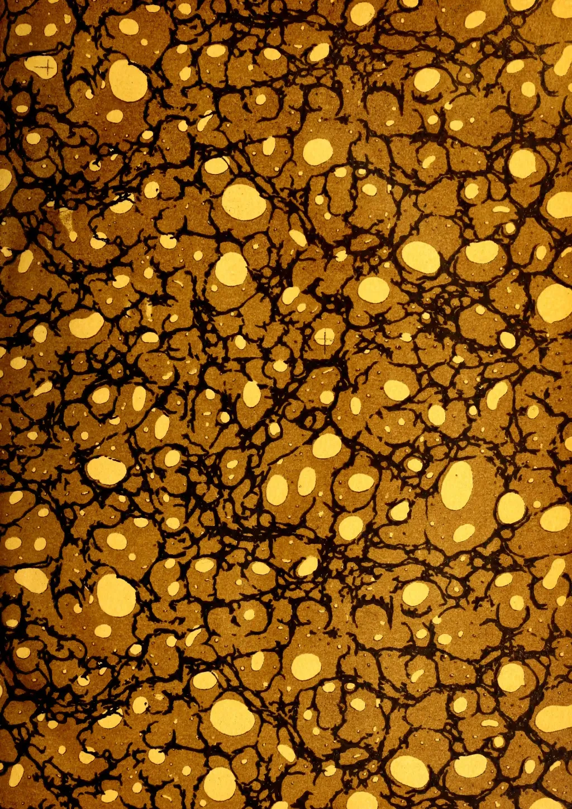
This image shows a classic marbled paper pattern, often referred to as 'stone' or 'shell' marbling. The background is a rich, warm brown color. Overlaid on this are intricate, dark, branching veins that resemble the cracks in stone or the veins in wood. These veins create a complex network of irregular shapes. Scattered throughout the composition are numerous large, irregular, bright yellow spots of varying sizes, which look like bubbles or droplets. The overall effect is organic and textured, typical of traditional marbling techniques used in bookbinding or decorative arts.Digitized by the Internet Archive
in 2014
https://archive.org/details/tropicalagricul321909ceyl
This image shows a blank, aged page with a light beige or cream color. The surface has a subtle texture and slight discoloration, characteristic of old paper. There are no markings, text, or illustrations on the page.AND
Magazine of the Ceylon Agricultural Society.
(FOUNDED 1881.)
EDITED BY
J. C. WILLIS,
Director, Royal Botanic Gardens, Peradeniya.
(R. H. LOCK, Acting Editor.)
Vol. XXXII.
Containing Numbers I to VI: January to June, 1909.
41350
A. M. & J. FERGUSON,
COLOMBO, CEYLON.
1909.
5
281
T 77
CLER
MILTON
7
TO THE
EDITED BY
R. H. LOCK,
Acting Director, Royal Botanic Gardens, Peradeniya.
Vol. XXXII: Nos. I to VI : January to June, 1909.
A. M. & J. FERGUSON,
PROPRIETORS AND PUBLISHERS, COLOMBO, CEYLON.
| PAGE. | PAGE. | ||
|---|---|---|---|
| A. | |||
| Acid Soils, Treatment of, for Cultivation | 192 | Borneo, Rubber Tapping in... | 785 |
| Action of Heat and Antiseptics on Soils | 359 | Botany, Articles on the Literature of Economic ... |
71, 365, 456, 565 |
| Agricultural Bank, Barbados Sugar Industry | 366 | Breeding Plants as a Recreation ... | 256 |
| do Banks ... | 366 | British Cotton Growing Association, 3rd Annual Report... |
521 |
| do Education in Ceylon ... 489, 490 | 490 | Bullrush ... | 457 |
| do do in Madras ... | 71 | Burma, Tea in ... | 31 |
| do do Suggestions for a local Scheme of ... |
465 | ||
| do Experiments in Madaas ... | 406 | C. | |
| do Implements, Simple ... | 89 | Cabook or Laterite ... | 179 |
| do Progress ... | 379 | Cacao and Grubs in Jamaica ... | 191 |
| do Progress in Ceylon, Bar to | 501 | do Character of Criollo ... | 49 |
| do Research Work in Bengal | 74 | do Cultivation ... | 247 |
| Agriculture and Electricity... | 495 | do Disease, Studies in ... | 257 |
| do and How to Teach the People 111, 117 | 117 | do Experiments in Dominica ... | 338 |
| do Captial in ... | 1 | do do Grenada ... | 339 |
| do Elementary ... | 474 | do do Guiana ... | 340 |
| do in Ceylon, Improvement of 105, 477 | 477 | do do St. Lucia ... | 343 |
| do do Rural ... | 105 | do Fermentation ... | 35 |
| do in the N.C.P. ... | 109 | do Grafting ... | 337 |
| do in the Philippines, Elements of | 316 | do Industry of Bahia ... | 487 |
| do Literature of Economic ... 71, 365 | 71, 365 | do do The ... | 141, 335 |
| 456, 565 | do Insect Pests of ... | 579 | |
| Almond Tree, Cultivation of the ... | 585 | do in the Amazonian Region ... | 90 |
| Aloe Fibre Industry ... | 526 | do in the Gold Coast ... | 407 |
| American Coconut Oil Market ... | 189 | do in the West Indies ... | 47 |
| Andamans, Tea in the ... | 600 | do Parasitic Disease ... | 502 |
| Andrographis Paniculata (Binkohomba) | 362 | do Plantations, Slavery on ... | 369 |
| Annatto, Cultivation and Utilisation of | 517 | do Planting, The Future of ... | 141 |
| do Varieties of ... | 71 | do Pods, Soap from ... | 488 |
| Arrowroot Growing in Queensland ... | 236 | do Production and Consumption of | 146 |
| Assam, Rubber Tapping Method of ... | 321 | do do of Brazil ... | 104 |
| Attalea Cohune ... | 223 | do Slave Grown ... | 502 |
| Austria and Hungary, What Forestry has done for ... |
160 | do Thrips ... | 55 |
| Avocado Pear ... | 179 | do Trees, Cuts on, Dressings for ... | 405 |
| Camphor and its By-products ... | 215 | ||
| B. | |||
| Banana, Flour ... | 484, 497 | do Exports ... | 406 |
| do from Ceylon at Leicester ... | 402 | do French Synthetic ... | 286 |
| Bangalore Sericulture Farm ... | 557 | do Increasing Production of ... | 122 |
| Bark Splitting of Rubber Trees ... | 280a | do Japanese ... | 285 |
| "Barydo" Tapping Knife ... | 592 | do Trade, The Future of the ... | 8 |
| "Bean" and "Pea," Misuse of Terms... | 458 | Capital in Agriculture ... | 1 |
| Bees do not Injure Sound Fruit ... | 453 | Caravonica Cotton ... | 231 |
| Beneficial Insects or Parasites, Notes on the Value of Introduced ... |
547 | do do and its Sponsors ... | 186 |
| Bengal, Agricultural Research Work in | 374 | do do Seed ... | 484, 594 |
| Binkohomba (Andrographis Paniculata) | 362 | do do do on the Market ... | 204 |
| Birds as Friends and Foes to Agriculture | 48Ca | Carbon Bisulphides on Estates ... | 592 |
| Board of Agriculture : Minutes ... 179, 459 | 179, 459 | Carruthers, New Appointment of Mr. J. B. 196, 306 | 306 |
| do do Progress Report 180, 460 | 180, 460 | Cassava, Manioca or Tapioca ... | 32, 250 |
| Castilloca on the Isthmus of Tehuantepec | 4 | ||
| do or Central American Rubber | 3 | ||
| do Planting, Hints on ... | 215 | ||
| PAGE. | PAGE. | ||
|---|---|---|---|
| Castor Oil Plant for Green Manure ... | 495 | Conservation of Timber ... | 439 |
| do do The ... | 219 | Co-operative Credit Society, Dumbara ... | 177 |
| Cattle in Ceylon, Improvement of ... | 57 | do Credit Societies in India ... | 279, |
| Ceara or Manicoba Rubber ... | 88 | 370, 470 | |
| Ceylon Bananas at Leicester ... | 402 | Copra, Ceylon, in 1908 ... | 90 |
| do Cattle, Improvement of ... | 57 | do Dutch East Indies ... | 599 |
| do Coconut Oil Trade ... | 504 | do Edible Fat from ... | 395 |
| do do Planting and Cultivation ... | 125 | do Industry in Java ... | 599 |
| do do Produce ... | 492 | do do in Singapore ... | 104, 188, 196 |
| do Copra in 1908 ... | 90 | do do The ... | 221 |
| do Cotton Cultivation in ... | 324, 406 | do Singapore, increasing Trade in ... | 104 |
| do Exports of the Products of the Coconut Palm ... |
123 | Cork Tree Bark ... | 503 |
| do Future of Cotton Cultivation in ... | 85 | Corns on Horses' Feet ... | 554 |
| do Its Industries and Material Pro- gress ... |
493 | Cotton: British Cotton Growing Asso- ciation: 3rd Annual Report ... |
521 |
| do Palms ... | 493 | do Caravonica Seed ... | 484, 504 |
| do Tea Industry ... | 493 | do Crop, Indian ... | 18 |
| Charcoal Manure, Japanese System of Cherimoya ... |
592 | do Cultivation in the Kurunegala District ... |
131 |
| Cholum or Jowar ... | 71 | do Cultivation in the U.S., Notes on the Present Position of ... |
423 |
| Cinnamon Oil Industry of Seychelles ... | 361 | do Cultivation: its Extension in Ceylon ... |
324, 406, 410 |
| Citrate of Lime ... | 286 | do Egyptian, in Sind ... | 18 |
| Citronella and Lemon Grass Oil, Ceylon do and other Grass Oils ... |
207 | do Growing in Ceylon ... | 85, 185, 308 |
| Citrus Fruits, Co-operative Marketing of ... | 83 | do Land, Leguminous Crops for ... | 64 |
| do Industry for India ... | 137 | do Plantations in Egypt ... | 204 |
| Clean Weeding on Rubber Estates ... | 437 | do Sea Island, in the W. I. ... | 522 |
| 209, 211, | Coughing Plant ... | 503 | |
| 281, 587 | Covent Garden, Tropical Fruits in ... | 238 | |
| Coconut Beetle in the Straits ... | 408 | Cowpeas ... | 133, 134 |
| do Big Crop of ... | 599 | Criollo Cacao, Characters of ... | 49 |
| do Desiccated, in Ceylon and N.S.W., Manufacture of ... |
498 | Crops on Coconut Palms, Relation of Weather to ... |
27 |
| do Desiccating in Australia ... | 498 | Cultivation of a Sandy Soil ... | 581, 597 |
| do in B. E. Africa ... | 306 | Curvature in Para Seedlings ... | 280b |
| do in Ceylon ... | 305 | Cutch Trade, Present Position and Pros- pects of ... |
223 |
| do in Fiji ... | 305 | ||
| do in Laguna and Tayabas Pro- vinces ... |
419 | ||
| do in Queensland ... | 502 | ||
| do in the Dry Zone of Ceylon ... | 26 | ||
| do Industry of Travancore ... | 124 | ||
| do its Germination and Deteri- oration of its Products ... |
10 | ||
| do Latest on Planting ... | 83 | ||
| do Manuring of ... | 82 | ||
| do Oil and Soapmaking in Ceylon ... | 207 | ||
| do do in the U.S.A., Tax on ... | 190 | ||
| do do Market, American ... | 189 | ||
| do do Mill in Kuala Selangor ... | 306 | ||
| do Palm, Exports of the Pro- ducts of the ... |
123 | ||
| do Palm, Relation of Weather to Crops ... |
27 | ||
| do Pest in Cochin ... | 190 | ||
| do Planting and Cultivation ... | 125 | ||
| do Produce, Ceylon ... | 492, 493 | ||
| Coffee as a Catch-crop with Rubber ... | 408, 598 | ||
| do Scheme of San Paulo ... | 582 | ||
| Coimbatore Agricultural College ... | 566 | ||
| do do do a Brief Note on ... |
176 | ||
| Coir Yarn, Fibre, &c. ... | 207 | ||
| Commelina Nudiflora ... | 279 | ||
| Compressed Tea in India ... | 296 | ||
| Conference of Governors of U. S. A. ... | 382 | ||
| Conservation of Land and Water ... | 596 | ||
| do of Soil Moisture ... | 561 | ||
| do of do do and Eco- nomy in use of Irrigation Water ... |
454 | ||
| Edible Fat Produced from Copra ... | 395 | ||
| Egyptian Cotton in Sind ... | 18 | ||
| Elementary Agriculture ... | 474 | ||
| Ensilage and how to make it ... | 50 | ||
| Entomological Notes ... | 443, 546 | ||
| Essential Oils ... | 314 | ||
| Experimental Farms, Scope of ... | 113 | ||
| do Station, Peradeniya ... | 313 | ||
| Extraction of Oil from Seeds ... | 84 |
| PAGE. | PAGE. | ||
|---|---|---|---|
| F. | Intensive Cultivation, Demonstration of | 469 | |
| Fanner, A New Tea | 88 | Irrigation in Natal | 277 |
| Federated Malay States, Pests in | 191 | ||
| Feeding Value and Flavour of Nuts | 436 | J. | |
| Fermentation of Cacao | 35 | Jamacia, School Gardens in | 189 |
| do of Coffee | 248 | Japan, Rubber Industry of | 7 |
| Fertility and Manuring | 481 | Japanese System of Charcoal Manure | 592 |
| Fertilizing of Eggs | 458 | Java Tea Exports in 1908 | 204 |
| Fibre Congress at Sourabaya in 1910 | 398 | do Production of | 204 |
| do Industry, The | 231 | Jowar or Cholum | 361 |
| Fig, Smyrna, in West Australia | 104 | ||
| Fiji, Coconuts in | 305 | K. | |
| Fire on a Rubber Plantation | 503 | Kapok : Tree Cotton | 458 |
| Fodder, A New | 495 | King Orange | 458 |
| Foot-and-Mouth Disease and Rinderpest | 458 | Kolnichi—Tephrosia Purpurea (Pila) | 179 |
| Forestry, What it has Done | 160 | Korea, Rice Production of | 398 |
| French Gardening | 71 | Kumbuk—see Terminalia Arjuna. | |
| Fruit Growing | 303 | ||
| do Trees, "Die-back" in | 484 | L. | |
| do do Durian | 458 | Lac in the Eastern Dun | 216 |
| do do Pruning Orange | 599 | do Industry, Revolution in the | 513 |
| do do Smyrna Fig | 104 | Lalang as a Paper-Making Material | 229 |
| Fruits, Packing and Shipment of | 147 | Lantana Pest, The | 81, 82 |
| do , Tropical, in Covent Garden | 238 | Lemon Grass, Prospects of | 459 |
| G. | Lima Bean, The | 280b, 480, 533 | |
| Germination and Plant Growth, Studies on | 269 | Lime, Citrate of | 46 |
| Governor's Conference, U. S. A. | 382 | do Cultivation, A.B.C. of | 38, 155 |
| Grasshoppers | 361 | do Juice, Concentration of | 46 |
| Green Manuring and Nitro-Bacterine | 505 | "Lime": The Term | 362 |
| do do , Castor Oil Plants as | 495 | do Crops for Cotton Land | 64 |
| do do for Young Rubber | 61, 393, 495, 505, 509 | Liquid Manure for Tomatoes | 362 |
| do do in South India | 91 | Literature of Economic Botany and Agriculture | 71, 361, 456, 565 |
| do do in Tea | 393, 495 | Loans to Native Agriculturists | 108 |
| do do , Micania Scandens | 393 | Locusts on Lawns: A Cure | 591 |
| do do , Passiflora Fœtida | 393 | ||
| Grenada, Cacao Experiments in | 339 | M. | |
| Groundnuts (Arachis Hypogea) Notes on the Cultivation of | 22, 515 | Madras, Agricultural Education in | 71 |
| Groundnuts or Peanuts, Origin and Domestication in U.S. of | 515 | do Agricultural Committee's Progress Report | 498 |
| Guava Jelly, Method of Making | 87 | Maize, Cultivation and Marketing of | 253, 343 |
| Guiana, Cacao Experiments in | 340 | Mangoes in Ceylon | 78 |
| Gum Arabic | 179 | do Rust on | 55 |
| H. | Manioc or Cassava | 32, 250 | |
| Heat and Antiseptics on Soil, Action of Helianthus Annuus, The Sunflower | 359 | Manure: Artificial and Farmyard | 173 |
| Heredity | 568 | do Artificial vs. Green and Cattle | 173, 188 |
| Hevea Mate in Brazil, Production of | 287 | do Liquid, for Tomatoes | 362 |
| Horses, The best time to Water | 358 | do New Green, at the Government Stock Garden | 207 |
| Humus, Decay of | 502 | do to Tea, Notes on the Application of | 363 |
| Hungary, What Forestry has done for | 160 | Manuring and Fertility | 481 |
| I. | do for Tea | 530 | |
| Iluk Grass, how to get Rid of | 312, 396 | do Green | 61 |
| In-Breeding | 451 | do Notes on | 276 |
| Increased Yield and Cultivation of Soil | 563 | do of Coconuts | 82 |
| Indian Cotton Crop | 18 | do Principles of | 497 |
| do Game Act, The | 267 | Matches in the Philippines, Some Facts about | 473 |
| do Sugar Industry | 52 | Mealie Hay | 244 |
| do Tea Trade in 1907-8 | 29 | Mexico as a Tea-growing Country | 102 |
| do Wattle Bark | 16 | do , Pulque Maguey of | 234 |
| do Wild Fowl | 560 | Mice, Virus for the Destruction of | 263 |
| Inheritance in Trees | 540 | Millions and Mosquitoes | 549 |
| Inoculation of Leguminous Crops | 453 | Minutes of Agricultural Board | 179, 459 |
| Insect Pests of Cacao | 378 | Miscellanea: Chiefly Pathological | 445, 544 |
| do do , Theory of the Parasitic Control of | 53 | Moisture in Soil, Conservation of | 561 |
| Money for the East Indies | 103 | ||
| Morris, Sir Daniel, K.C.M.G. | 364 | ||
| Mosquito Trap, A Simple | 206 | ||
| PAGE. | PAGE. | ||
|---|---|---|---|
| Mosquitos and Millions ... | 549 | Plant Breeding as a Recreation ... | 256 |
| do , Destruction of ... | 206, 264, 353, 549 | do do Improvement of Crops by ... | 89 |
| Mucuna Pruriens (Velvet Bean) ... | 458 | do Growth and Germination, Studies in ... | 269 |
| Mullein: Verbascum Thapsus ... | 179 | do Pathology in its Relation to other Sciences ... | 64 |
| do that Coughs ... | 503 | ||
| N. | Plantain Growing in Mexico ... | 497 | |
| Natal, Irrigation in ... | 277 | do Meal ... | 21 |
| New Fibres for Paper ... | 422, 519 | do Meal Manufacture... .. | 484, 497 |
| do Fodder, A ... | 495 | Plantation Rubber Conditions ... | 503 |
| do Rubbers, The ... | 411 | do do Cultivation and ... | |
| do do Tapping Systems 82, 192, 385, 403, 409, 416, 482, 504, 593 |
83 | Germany ... | 100 |
| do Tea Fanner ... | 88 | Planting in Trinidad ... | 500 |
| Nitro-Bacterine and Green Manuring ... | 505 | Plough for Mudland ... | 458 |
| do do Experiments with ... | 459 | Ploughing ... | 170 |
| Nitrogen and Nitragin ... | 269 | Ploughs, Disc and Moldboard, Compared ... | 469 |
| do to Cultivated Plants, Supply of ... | 86 | Poultry Experiments ... | 266 |
| Notes and Queries 71, 179, 361, 457 | 457 | Preserving Timber, Note on the Powell Wood Process for ... | 439 |
| Nutrition of Plants, Notes on ... | 271 | Prickey Pear as Fodder and Food for Man ... | 533 |
| Nuts, Feeding Value and Flavour of ... | 436 | Produce Market, Colombo ... | 303 |
| Nyasaland, Failure and Fortune in ... | 197 | do do London ... 80, 184, 280c, 384c | |
| do Handbook of ... | 500 | Progress Report of the Board of Agriculture ... | 180, 460 |
| Pruning Orange Trees ... | 599 | ||
| O. | Prunings, Burying vs. Burning 188, 289, 296 | ||
| Ohio Ties and Lumber, Export of ... | 540 | Pulque Maguey of Mexico ... | 234 |
| Oil from Seeds, Extraction of ... | 84 | Purebred and Thoroughbred, The Terms 266 | |
| do Palm African, and its Products ... | 418 | ||
| do (Elais Guineensis) Cultivation 418 | 418 | ||
| Old Hens for the Table ... | 275 | Q. | |
| Oranges, Coorg and Nagpur ... | 71 | Queen of Flowers, The Rose ... | 250 |
| do Manure for ... | 71 | Queensland, Arrowroot Growing in ... | 236 |
| Orchella Weed ... | 187 | Quinine in India, Demand for ... | 19 |
| Ornamental Trees, Some other ... | 280a | ||
| Ornithology, a Suggestion ... | 78, 280a | ||
| Osteoporosis ... | 448 | R. | |
| Rainfall ... | 179 | ||
| P. | Rasakinda—Tinospora Cordifolia ... | 458 | |
| Packing Fruit for Shipment ... | 147 | Rat Problem, The ... | 447 |
| do Para Rubber Seeds for Export 582 | 582 | Rats, Virus for the Destruction of ... | 263 |
| Paddy Crops in relation to "Age" ... | 458 | Records, Value of ... | 359 |
| do Cultivation in Burma ... | 432 | Rice Cultivation in Korea ... | 398 |
| do do on the Sivagiri Home-Farm ... | 528 | do do in the United States... 242 | |
| do Transplanting ... | 529 | Rinderpest and Foot-and-Mouth Disease 458 | |
| do do in Madras Presidency 246 | 246 | do Anti-Serum for ... | 169 |
| Papaw or Tree-Melon ... | 527 | do in the Philippines, Koch on 354 | |
| Paper, New Fibres for ... | 422, 519 | Ripening of Tropical Fruits ... | 435 |
| Para Region in Brazil ... | 95 | Rose, The Queen of Flowers ... | 250 |
| do Rubber and Valorization ... | 93 | Rubber Area in Ceylon ... | 95 |
| Paraguayan Tea (Hevea Mate) ... | 287 | do Artificial, India ... | 102 |
| Parasites or Beneficial Insects ... | 547 | do as Foundations for Machinery 101 | |
| Parasitic Control of Insect Pests 53 | 53 | do Asphalt at Marseilles ... | 59 |
| do Disease which Kills Rubber. 502 | 502 | do Authority. Well-known, in Colombo ... | 577 |
| Pathological Miscellanea ... | 445, 544 | do Bark Splitting of Trees ... | 280a |
| "Pea" and "Bean" Misuse of Terms ... | 458 | do Bearing Age and Future Yields 485 | |
| Peradeniya Experimental Station ... | 313 | do Biting ... | 397 |
| Pests in the F.M.S. ... | 191 | do British Guiana Output ... | 396 |
| Philippine Agriculture, Elements of ... | 316 | do Castilloa, Hints on Planting ... | 215 |
| do Bureau of Agriculture: Veterinary work of the ... | 552 | do Caoutchouc de Para, Cult du 400 | |
| do Matches in the ... | 473 | do Ceara in Christmas Island ... | 102 |
| Pickled Tea ... | 491 | do do Tapping Systems of ... | 511 |
| Pig Farming in B.C. Africa... 169 | 169 | do Clean Weeding and Green Manuring for ... | 486 |
| Pila: Tephrosia Purpurea (Kolinchi) ... | 179 | do Clean Weeding vs. Tephrosia... 486 | |
| Pineapple Cultivation in Ceylon ... | 196 | do Coffee as a Catch crop with ... | 408, 598 |
| do Industry, The ... | 195 | do Creepers: L. Landolphides .. 7 | |
| do Record Weight of ... | 196 | do do L. Dawie ... | 7 |
| do Crop Returns for 1908 ... | 193 |
INDEX.
v
PAGE.
PAGE.
| do | Early Tapping of ... | 82 |
| do | Estate Marks on Plantation ... | 490 |
| do | Exhibition and Mr. Bamber ... | 317 |
| do | do , Some Notable Exhibits & Mr. Bamber's Processes | 317 |
| do | Experiment at Gannoruwa ... | 205 |
| do | Exports, F.M.S. ... | 102 |
| do | do Brazil, Municipal Taxation on ... | 93 |
| do | Hunt, A ... | 499 |
| do | in Bolivia ... | 288 |
| do | in Brazil ... | 4 |
| do | in Ceylon ... | 390 |
| do | in Cochin ... | 297 |
| do | in Colombia ... | 594 |
| do | in East Africa ... | 388 |
| do | in Germany ... | 286 |
| do | in Java ... | 389 |
| do | in Madras ... | 406 |
| do | in Malabar ... | 399 |
| do | in Malaya ... | 304 |
| do | in New Guinea ... | 598 |
| do | in Nyasaland, and Planting ... | 88 |
| do | in Sumatra ... | 583 |
| do | in the F.M.S., Report by Director of Agriculture ... | 413 |
| do | in the Gold Coast ... | 406 |
| do | in the Peruvian Andes and Amazon | 579 |
| do | in the Straits ... | 588 |
| do | in Tonkin ... | 92 |
| do | Industry of Japan ... | 7 |
| do | do Mr. Fritz Zorn on ... | 299 |
| do | Journal, A Story of Growth ... | 317 |
| do | Manihot Glaziovii, New Species of | 319 |
| do | Market, London ... | 198 |
| do | Notes ... | 101, 102, 312 |
| do | Output, Ceylon and Malaya ... | 485, 495, 503 |
| do | Pale and Valorisation ... | 93 |
| do | do How to Obtain ... | 408 |
| do | do Mr. Bamber's Latest Views | 484 |
| do | Para Cultivation ... | 388 |
| do | do in the Amazon District, Future of .. | 595 |
| do | do Packing Seeds for Export | 582 |
| do | do Region in Brazil ... | 95 |
| do | do Yields of Wild and Planted | 507 |
| do | Pest, Chief, in the F. M. S. ... | 300 |
| do | Plants, Tapping ... | 458 |
| do | Planting in the World ... | 198 |
| do | Plantation, French Estimate of | 599 |
| do | Precocity in Rubber Trees ... | 403 |
| po | Price Conditions ... | 597 |
| do | Production, Minimum Cost of | 300 |
| do | Pruning of ... | 300 |
| do | Rambong, Record Price for ... | 102 |
| do | Report, Figgis & Co's ... | 199 |
| do | do , Gow, Wilson & Stanton's | 201 |
| do | do , Lewis & Peat's ... | 202 |
| do | do Return of Mr. C. O. Macadam ... | 389 |
| do | Rhodesian ... | 398 |
| do | Rollers ... | 498 |
| do | Root Disease of ... | 303 |
| do | Species of Sapium, Mexican and Central American ... | 122 |
| do | Tanned Leather ... | 99, 205, 495 |
| do | Tappers in F.M.S., Scarcity of | 300 |
| do | Tapping Criticism in London... | 482 |
| do | do Experiments in Ceara | 416 |
| do | do in Borneo ... | 578 |
| Rubber Tapping Knife "Barrydo" ... | 592 |
| do do Methods of Assam ... | 321 |
| do do do of Hevea Brasiliensis ... | 404 |
| do do Mycologist gives Warning on ... | 582 |
| do do New System of 82, 192, 385, 403, 409, 416, 482, 504, 593 | 593 |
| do do New System of Critics in London ... | 482 |
| do do , Northway System 82, 192, 385, 403, 409, 416, 482, 504, 593 | 593 |
| do do Yields ... | 598 |
| do do Young and Old ... | 403 |
| do Trade of Brazil ... | 4 |
| do Trees, Shaping Young ... | 287 |
| do Vacuum Dried ... | 92 |
| do Weeding, Clean vs. Imperfect... | 209 |
| Rubbers, The New ... | 411 |
| Rural Agriculture in Ceylon and its Improvement ... | 69 |
| Rust on Mangoes ... | 55 |
S.
| San Paulo's Coffee Scheme ... | 582 |
| Sandy Soils and their Improvement ... | 307 |
| Sapium, Mexican and Central American Species of ... | 122 |
| Scheme of Local Agricultural Education | 465 |
| School Gardens ... | 189, 316 |
| do do in Jamaica ... | 189 |
| do do Suggestions for ... | 316 |
| do Gardening in the Philippines ... | 573 |
| Seed Drill, A Home-made ... | 63 |
| Seychelles Cinnamon Oil Industry | 286 |
| Shaping Young Rubber Trees ... | 287 |
| Sheep Gut as a New Industry ... | 206 |
| Shot-hole Borer and Predaceous Enemies ... | 391 |
| Shows, Ambalangoda Vegetable do Value of Local ... | 68 372 |
| Silkfarm in Bangalore ... | 557 |
| Sisal Cultivation in the Bahamas do Hemp in German East Africa ... | 429 330 |
| Smyrna Fig in Australia ... | 104 |
| Soap from Cacao Pods ... | 488 |
| do Making and Coconut-Oil do Manufactures in Tariff Revision | 207 190 |
| Soil, Cultivation of the, and Increased Yield ... | 563, 580 |
| do Inoculation ... | 87 |
| do Testing ... | 89 |
| Soils, Action of Heat and Antiseptics on South Carolina Tea ... | 359 599 |
| Soy Beans as a Forage Crop ... | 143 |
| Steam, Another Rival of ... | 371 |
| St. Lucia, Cacao Experiments in | 343 |
| Story of Growth, A ... | 317 |
| Straits, Rubber in the ... | 588 |
| Sugar in India ... | 52, 600 |
| do Factory in South Arcot ... | 600 |
| Sugarcane Cultivation ... | 233 |
| do do in Cuba ... | 436 |
| Sunflower Cultivation, A Plea for do (Helianthus Annuus) ... | 417 322 |
| do : its Economic Value ... | 516 |
| Sweet Potatoes ... | 42, 154 |
| Synthetic Rubber Meeting ... | 486 |
| PAGE. | PAGE. | ||
|---|---|---|---|
| T. | |||
| Tamarind (Tamarindus Indica) | 25 | Trees, Inheritance in | 540 |
| Tapioca, Cultivation of | 334, 532 | Tropical Exhibition, The | 278 |
| do in Travancore | 334 | do Fruits in Covent Garden | 338 |
| Tapping Assam Rubber, Method of | 321 | do do Ripening of | 435 |
| do at High Elevations | 500 | Turmeric Cultivation in Burma | 518 |
| do Systems of Ceara Trees | 511 | Typha Augustifolia (Bulrush) | 457 |
| do Young Rubber | 82 | ||
| Tata Silk Farm in Bangalore | 557 | U. | |
| Tax on Coconut Oil in the U. S. A. | 190 | Undupiyali (Desmodium trifolium) | 179 |
| Tea Clean Weeding in | 400 | Utilization of Anatto | 517 |
| do Cultivation in Natal | 331 | U.S.A. Conference of Governors | 382 |
| do do in Ceylon and Caucasus | 579 | do Cotton Cultivation in the | 423 |
| do do in the Caucasus and Ceylon | 579 | do Domestication of the Peanut in | 515 |
| do Fanner, A New | 88 | do Market for Coconut Oil | 189 |
| do in Burma | 31 | do Rice Cultivation in | 242 |
| do in 1908 | 283 | do Tax on Coconut Oil | 190 |
| do Industry, Ceylon | 493 | ||
| do in Java | 204, 392 | V. | |
| do do General Review of | 392 | Vacuum Dried Rubber | 92 |
| do in Mexico | 102 | Valorization and Para Rubber | 93 |
| do in Nyasaland | 88 | Vanilla, How it is Grown in Hawaii | 304 |
| do in South Carolina | 599 | Vaporite | 459 |
| do in the Andamans | 600 | Vegetable Cultivation | 362 |
| do Man, Visit of a London | 296 | do Ivory | 441 |
| do Manufacture, Notes on | 430 | Velvet Beans | 134, 458 |
| do do in Darjeeling | 430 | Veterinary Work of the Bureau of | |
| do Manuring in Culture | 400 | Agriculture of the Philippines | 552 |
| do do Notes on | 363 | Virus for the Destruction of Rats and | |
| do do for | 530 | Mice | 263 |
| do (Mosquito) Blight | 163 | Vulcanization Tests in Plantation Rubber | 590 |
| do do do in | 103 | ||
| do Notes | 103 | W. | |
| do Pest, A—The Lantana Bug | 81 | Water and Watering | 442 |
| do Pickled | 491 | do Hyacinth Ordinance | 178 |
| do Planting in Java | 391 | Watering Horses, Best Time for | 358 |
| do Prunings, Burning vs. Burying of | 91, 282 | Wattle Bark, Indian | 16 |
| do Report, McMeekin & Co's Annual | 282 | do Industry for Ceylon | 590 |
| do Sale Averages for 1908 | 309 | Watts, Dr. Francis, C.M.G. | 467 |
| do Season in Japan | 581 | Wax-Excreting Palms | 458 |
| Tephrosia vs. Clean Weeding in Rubber | 486 | Weed-eating Tropical Creeper, A | 472 |
| Terminalia Arjuna (Kumbuk) Bark for | do Suppressors | 496 | |
| Tanning | 13 | Weeding, Clean | 209, 281, 400 |
| Thoroughbred and Purebred | 266 | do on Malayan Estates | 92 |
| Ticks on Dogs | 263 | What Forestry has Done | 160 |
| Timber, Conservation of | 439 | Wild Fowl, Indian | 560 |
| do Famine, The Coming | 348 | do Passion Flower (Passiflora foetida) | 77 |
| do Preserving, Powell Wood Pro- | Will Dairy Farming in Ceylon Pay | 554 | |
| cess of | 439 | Wind-breaks for Orange Groves | 61 |
| Tinospora Cordifolia (Rasakinda) | 458 | ||
| Tomato, Liquid Manure for | 362 | Y. | |
| do , Manure for | 71 | Yarn, Fibre, Coir, &c. | 207 |
| Topping Rubber Plants | 458 | Yields, Cultivation of the Soil and | |
| Tortoise Shell | 502 | Increased | 563 |
| Transplanting Paddy, Advantages of | 333 | Young and Old Rubber, Tapping of | 403 |
| Travancore, Coconut Industry of | 124 | do Rubber Trees, Shaping | 287 |
| Treatment of Acid Soils for Cultivation | 192 | ||
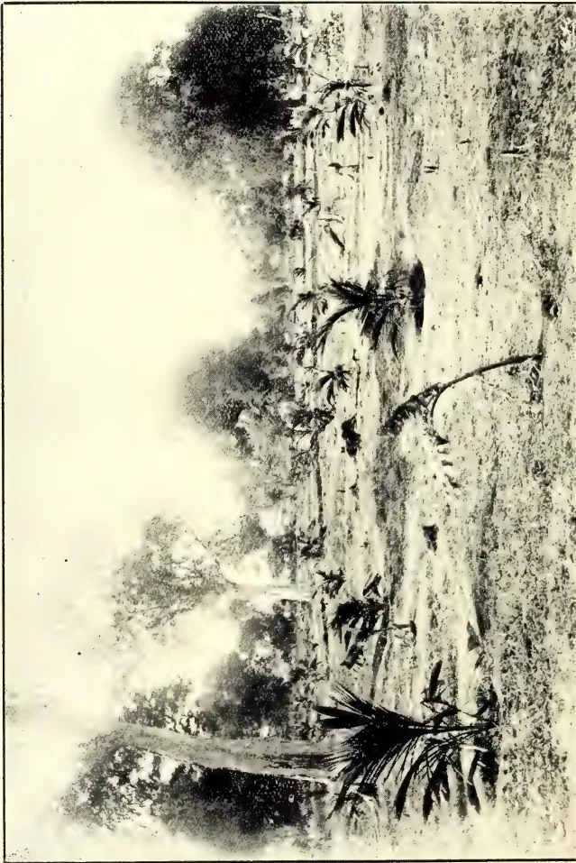
A black and white photograph of a coconut plantation in the dry zone of Ceylon. The foreground shows a large, thick tree trunk on the left and several palm trees scattered across a dry, sandy landscape. The background features a dense line of trees and a hazy sky.Vide page 26.
COCONUTS IN THE DRY ZONE OF CEYLON.
1. ON UNIRRIGABLE LAND.
THE
TROPICAL AGRICULTURIST
AND
MAGAZINE OF THE
CEYLON AGRICULTURAL SOCIETY.
VOL. XXXII.
COLOMBO, JANUARY 15TH, 1909.
No. 1.
Capital in Agriculture.
As we have shown in detail in a book upon Agriculture in the Tropics, shortly to appear, progress in agriculture proper depends first upon progress or proper equipment in what we may call the preliminaries to Agriculture. These are, roughly: (1) land, (2) climate, (3) population and labour, (4) transport, (5) capital or money, (6) drainage and irrigation, (7) tillage, (8) education, and (9) crops. Now land, climate, population, transport (to a very large extent), irrigation, tillage (to some extent), education (to some extent), and crops are satisfactorily enough arranged in Ceylon. There remains capital. As a late President of the United States remarked, finance and transport are the keys of progress. So convinced were we that this was the only sound order in which to deal with agricultural problems, that the very first paper read at the first Meeting of the Board of Agriculture was by ourselves on Co-operative Credit Societies, and we have preached this doctrine to some what unwilling ears ever since, and have had something about it in practically every number of the "T.A."
The tide is beginning to turn, and the Society is displaying an increasing interest in this question. It must be clearly recognised that no serious progress is possible without money, but once the expenditure of money is started on the right lines, it breeds more money. At present the villager is helpless in the grasp of the local money lender, and cannot afford to borrow a penny even if he thinks it probable that it might bring in twopence or three-pence. Manuring of rice, transplantation of rice, cultivation of vegetables, manuring of coconuts, sale of produce outside the village, and all other suggested improvements demand money for a start.
Mr. McCall gave some interesting facts about Egypt at the last Meeting of the Board. There are no white planters there, and at first the natives were averse to manuring; but, once convinced by ocular demonstration that it paid, and provided with the necessary money by Agricultural Banks or Societies, they took it up so strongly that within four years Egypt was consuming £175,000 worth of artificial manure a
2[JANUARY, 1909.year. If the Ceylon villager is not to sink to the position of a hewer of wood and drawer of water, he must be helped to get financially upon his legs, and the new Government departure of loans to the agriculturists will be watched with great interest. How best to give security for the money will be one of the problems. It has been suggested that headmen, who are commonly men of more or less substance, should give the security, and lend to their villagers in cases where they feel that is safe. But so many villagers merely lease the land on which they work that there may be difficulty about the security.
As Government is now going to attend to the money question with regard to paddy cultivation, we would recommend that the efforts of local societies be directed to other crops, to their establishment, their cultivation, tillage, and manuring, and their sale in the best market. For all these ends money is necessary.
There is an enormous difference between the agriculture of planters' estates, whether European or native, and that of the villager—the former
getting a larger return at less cost. But it must not be supposed that this is all due to the superior Education or training of the former; rather it is largely, at any rate, to be attributed to the fact that he has capital at his back.
It may be well to remark that there are other preliminaries to agriculture, conspicuous among them being transport, and it will be idle to expect much progress in a village unprovided with roads. Here the most that can at present be hoped for is that the villager should get free of the incubus of debt.
Education, again, is very important. Travelling about the country, and noting the signs of agricultural progress, new crops, &c., and enquiring about them, we have very commonly found that they owe their origin to the local school garden, and are often, in fact, cultivated by a boy being educated at the school.
Tillage is a thing as yet mainly practised in paddy-fields, but nothing can be done in the way of improvement without money for a start.
JANUARY, 1909.]3BY WILLIAM FAWCETT, B.SC., F.L.S.,
Late Director of Public Gardens and
Plantations, Deputy Chairman of the
Agricultural Society, Jamaica.
Para rubber (Hevea brasiliensis) has supplied such a very large proportion of the rubber used in the arts, the area of its natural habitat is so vast, and the tree has been planted so extensively, that the attention of growers of rubber has been mainly directed to experiments with it alone. But, as the conditions for the successful cultivation of the Brazilian tree are not to be found everywhere in the tropics, it is well to experiment also with other plants, and the most promising of these is perhaps the Central American rubber, a species of Castilloa.
Species.—Some species of this genus, e.g., Castilloa tunu, are worthless as producers of rubber, and before using the seeds of any Castilloa tree it is important to ascertain whether the latex of that tree yields rubber of good quality. Castilloa elastica is the species that has been considered the main source of Central American rubber. Professor Olsson-Seffer thinks that Castilloa lactiflora gives a more ample flow of latex. It is to be hoped that he will favour us with the results of further investigations.
Situation.—Experience in growing Castilloa under various conditions in Jamaica points to several factors as being important for the successful growth of the tree. It will not grow to advantage if the proportion of clay in the soil be too high, otherwise it does not appear to be very particular. A loamy soil is the most suitable. The drainage must be good; the unsuitability of stiff clays may be due to the want of sufficient drainage, and may perhaps be overcome by making drains. The rainfall should be at least 70 in. per annum; but if less, and the deficiency can be supplied by irrigation, the trees will grow and yield quite as well. A temperature which varies between 70° and 90° F. is suitable; the elevation is not material if the temperature does not fall much below the lower limit.
Shade.—Castilloa trees are found in nature on the edge of forests and in clearings. Overhead shade is not requisite in the wild state, and has not been found essential in plantations. The
stem requires some protection from the sun, but this can be provided in plantations by the shade of the neighbouring trees. Overhead shade is not detrimental if not too dense, but it lengthens out the bole of the tree unnecessarily.
Clearing Ground.—If woodland has to be cleared, this operation should be done thoroughly from the first. Some recommend that a few trees should be left here and there to afford shade for the seedlings and young trees, but they must be got rid of eventually, and the cutting down and removing them leads to injury and destruction among the rubber trees. The large trees should be sawn into boards for the erection of sheds at a later period; the smaller timber will be useful as posts; the small useless branches should be heaped and burned in such a manner as not to set fire to other trees or bush close by. The ashes are good manure.
Distance apart and Catch Crops.—The distance at which Castilloa trees should be planted at first depends upon whether they are to be grown with bananas or other catch crop, or alone. If the soil is suitable for bananas, and the locality one where it will pay to grow them, no other catch crop is anything like as good. The bananas should be planted in March at distances of 15 ft. apart, and the Castilloa seedlings may be put out about September, each seedling in the centre of four banana plants, or, if the cultivator or plough is used to keep down weeds, the Castilloa must be planted in the banana rows between the bananas. The bananas may be grown for three or four years, and then they should be gradually thinned out as the Castilloa trees spread their branches. If bananas are not suitable, corn (maize) and gungo or pigeon peas (Cajanus indicus) may be used as catch crops and temporary shade. The fields should be lined out in March, and stakes put in to mark where the Castilloa plants are to be put out. Then the gungo peas should be sown so as to leave a clear space of 4 ft. round the stakes, and the corn not nearer than 7 ft. The gungo peas will not last more than two or three years, but by that time the young Castilloa plants will not require any more nursing. The corn will not interfere with the Castilloa if kept at a safe distance, and if there is a market for it the returns will help to pay expenses. Even if there is not a market for the gungo peas, they will increase the nitrogen content of the soil, besides
Gums, Resins,4[JANUARY, 1909.forming a slight shade for the rubber. The cultivation of the soil will be of the greatest benefit to the growing rubber plants. If no catch crops are to be grown the distance for the rubber plants may be 6 ft. at first, to be thinned out eventually to 18 ft apart.
Seeds.—The seeds are massed together, and are covered with an orange-coloured flesh. When ripe they drop from the trees, and if left undisturbed numbers of seedlings will soon spring up. It is best, however, to collect them as they fall, and sow them in a seedbed. There should be no delay in sowing them, for they soon lose their power of germinating. Professor Olsson-Seffer was interested in some experiments to determine the best age at which to collect seeds from the trees. Until the result of these experiments is known, I should advise that seeds should not be sown from trees until they are fully six years old, when the latex has lost its resin.
Sowing Seed.—The seed-beds should be thoroughly forked and raked until the particles of soil are quite small and fine. The seeds should be lightly pressed down so as to be just covered by the soil, and at a distance of about an inch apart from each other. A thin layer of dry grass may be scattered over the bed, and then a good watering given from a watering-pot with a fine hose. The soil should afterwards be kept only just moist, not too wet, and carefully weeded. When the seedlings are 3 or 4 in. high the soil may be loosened with a fork and the seedlings taken out, and either planted again in boxes at a distance from each other of 3 in., or set out at once in their permanent places in the field. If they can be constantly inspected in the field and kept weeded, and the weather is favourable, it is better to put them out at once; but if not they may be kept in the boxes until they are 6 or 7 in. high, and then transplanted, when they are not so liable to be the worse for any neglect in the open. It is still better to sow the seeds at once, as soon as they fall, in the permanent positions already marked out for them in the field. Three or four may be sown at the stake at about 3 in. from each other.
Planting out.—If bananas have already been planted during the previous March, the fields should meantime have been run over with the plough or cultivator to keep down weeds, and to establish a dust mulch on the surface. The seeds may be sown as they fall, or the young plants may be put out about September, either in the rows between the bananas, so as to be 15 ft. apart when the bananas are removed, or they may be planted each in the centre of four bananas.
Thinning out.—The seedlings should be continuously watched and carefully thinned out, leaving at the end of the first year only the most promising one at each stake. If none of the three or four has turned out well, supply from the nursery which had been made for the purpose.—Tropical Life, September, 1908, Vol. IV., No. 9.
Ceylon rubber producers will be interested in a comment which appears in the Board of Trade Journal upon the trade in Brazil. Referring to the ready disposition shown among British capitalists to invest in the acquisition of Brazilian rubber-producing properties, the Journal shows that investments of this nature have not invariably been successful, and advises that such undertakings should be entered into with the greatest circumspection. It is pointed out that the remarkable development of the rubber trade in Ceylon and the Straits Settlements, as well as in Africa and Mexico, has made a great change in the position, and is likely to change it still further. Up to this time Brazilian producers have apparently attached little importance to possible competition from these sources, but now some among them are beginning to view the matter as fraught with more danger to the interests of their industry than they had supposed. It is even argued that within a period of ten years the practical monopoly of Brazil in this important and increasingly valuable production may be at an end. The Board of Trade commentator says it certainly appears that, other conditions being favourable, the systematic process observed in the countries named, together with the greater cheapness of labour, transport, and other items affecting the industry will place these cultivators in a vastly superior position to those of Brazil, where the expenses in every branch of the industry are on an extremely high scale, and where the risks to health in the process of collection, with other contingencies, constitute a heavy handicap.—Indian Agriculturist, Vol. XXXIII, No. 9.
BY J. L. HERMESSEN, of Chiapas, Mexico.
(Continued from page 513.)
Much stress has been laid upon the danger, in tapping, of cutting through the cambium layer into the wood; and
JANUARY, 1909.]5Saps and Exudationsit cannot be denied that incisions around the circumference of a tree, of such depth as to penetrate the cambium layer throughout its entire length, is apt to cause rot, in which certain insects are likely to deposit their ova, the larvæ proving in many instances destructive of, or at least injurious to, the trees,—this being particularly the case where the “machete” was used as the tapping instrument. But with a modern tool of such design as to prevent too deep an incision being made, it has been found that a cut just impinging upon the cambium layer, and piercing it only at intervals, has not only given the greatest amount of latex, but seems to be necessary to the formation of new bark. Any incision failing to reach and penetrate, at intervals, the cambium layer will result in a mere hardening of the surface of the cut without any attendant renewal of the bark. It has been noted by many that the touching or cutting of the cambium layer effects a restoration or new growth of the bark within a period of sixty days, the bark continuing to grow and fill up the entire incision within a year.
Doubt yet exists as to the best time of the year in which to conduct tapping operations. Mr. James Collins, in his Report on the Caoutchouc of Commerce, published in 1872 under the auspices of the British Government, states that in Nicaragua (where the climatic conditions are generally similar to those obtaining on the Isthmus of Tehuantepec) the most favourable time for tapping was during the months of March and April, when the change of foliage was taking place. The following quotation from Mr. O. F. Cook's monograph on Castilloa also bears upon the point: “The indications are that (internal) pressure attains its greatest intensity in trees which are exposed for a part of the time to a relatively dry atmosphere, and which are accustomed, as it were, to pump water rapidly to supply the leaves. Such trees may, on the contrary, yield no milk at all when the water supply is deficient. It may be expected, therefore, that open culture will require much more careful attention to the time of tapping.” The best results, thus far, have been obtained on the Isthmus of Tehuantepec from tappings made during the early months of the dry season (February and March), before
the weather has become very hot and when the coolest nights and mornings occur. In April and May, when the maximum temperatures of the year are attained, the deciduous character of Castilloa becomes most marked; and this is the period during which the tree is generally supposed to be in its most quiescent state, and to have the last recuperative power. On the other hand, in the wet season planters are confronted by the physical difficulty of collecting the latex. Some contend that tapping can best be done during the occasional (and very uncertain) rainless spells of the wet season; and it is upon the latter hypothesis that two tappings per year for Castilloa come within the range of possibility. It has been noticed that the latex is in a much more fluid condition during the early morning hours, turgescence increasing as the diurnal heat reaches its maximum.
What the financial promoter and the expert prospectus-writer had long since settled to their own entire satisfaction and that of a trusting public, with the same fatuous positiveness as your orthodox theologian dogmatises on the future life—the question of yield—is still to the planter, who should know most about it, largely a sealed book. If he be honest, he will confess that he knows as yet very little about it. What he does know, however, is that a six-year-old tree will not give 1 lb. of rubber. Trees of unknown age, in a state of nature, have yielded as much as 4 and 5 lb. of rubber at one tapping; and there are apparently well-authenticated records of yields of triple that quantity from very large and presumably very old trees. Undue weight seems to have been attached to the generalizations of Herr Th. F. Koschny, of Costa Rica, in this respect. His claim, for instance, of a yield of 3½ lb. of rubber from wild trees, 8 or 9 years old must be accepted cum grano salis. There are, as a matter of fact, no recognised means of definitely determining the age of wild rubber trees; the all-important element in the case in point is, therefore, hardly more than one of conjecture.
With regard to cultivated trees, whose ages, with very few exceptions, have not yet passed the eighth year, there appears to be a strong disinclination on the part of planters in Mexico to tap their trees to the full extent of their possibilities, owing mainly to a reasonable fear that permanent injury may result through incautious tapping in the light of present knowledge; and since in the case of Castilloa, as with all caoutchouc-producing genera, notable constitutional dif-
“The Culture of the Central American Rubber Tree.” By O. F. Cook, Botanist in charge of Investigations in Tropical Agriculture, United States Department of Agriculture. Washington, 1903.
Gums, Resins,6[JANUARY, 1909,ferences occur, both as to size of tree and yield of latex, under similar cultural conditions, the results obtained from individual trees do not form satisfactory evidence upon which to base a conclusion as to the average yield of many thousands of trees of like age. Hence, trial tappings of single trees, or groups of limited number, of equal age vary very considerably. Thus, we have trees, or groups of trees, producing 1, 2 and 3 oz. of rubber, others ranging as high as from 4 to 6 oz. at one tapping. With such variable data to go upon, the difficulty of arriving at a true average yield for a planting of perhaps half a million trees is obvious.
Tentative experiments made in this district would indicate that trees grown under the most favourable conditions of soil, &c., may be tapped twice a year with equal results; but it would seem premature to say with assurance that the trees covering a large area could be safely subjected to such a drain upon their vitality until they had attained a greater age. To repeat, however, selected groups of trees of the age above mentioned have withstood a second tapping in a year without visible injury.
With regard to local soil conditions, it has been stated that "the oldest portion of the Isthmus evidently began its superaquatic existence at a comparatively recent period—geologically speaking"—and that much of the geological formation of the Eastern Atlantic versant of the Mexican cordillera towards the Isthmus of Tehuantepec is of similar late origin is indicated by the presence of stratifications of marine shells and primordial ooze, where subsequent aqueous erosions have occurred, creating, in the cycle of topographic changes, more or less abrupt undulations, ridges and valleys, with occasional hills reaching to a height of 150 ft. between depressions. In the immediate neighbourhood of the sea and the riverine estuaries alluvial deposits are found, but these have proved unsuitable for most cultural purposes, owing to the shallowness of the water basin. On the approach to the sierras, "mesas," or benchlands, occur of an entirely different structure, these being made up of granitic or other primitive detritus, incorporated with abundant vegetable matter. Such lands, unfortunately, are not encountered in any large areas. The soil of the district herein referred to is composed of clayey loams, overlaid in parts with beds of rich black humus of the greatest fertility.
* "Report of Explorations and Surveys for a Ship Canal by the way of the Isthmus of Tehuantepec." By Robert W. Shufeldt, Captain, United States' Navy. Washington, 1872.
The climate of the Atlantic side of the Isthmus of Tehuantepec has three well-defined seasons—namely, the wet season proper, commencing usually the last week in May or the first week in June, and continuing till the end of October; the lighter wet or "norther" season, extending over the months of November, December, January and February; and the dry season, comprising the months of March, April, and May. The annual rainfall is between 90 and 120 inches, with a very favourable distribution, three-fourths of the total, precipitation taking place between June and October, while from then on until the approach of the dry season frequent showers fall, with much mist and drizzle. No month of the year is wholly free from rain, occasional light showers occurring even during the height of the dry season, when the greatest heat of the year is experienced, the Mercury fluctuating between 80° and 90° F. in the shade, and sometimes marking 100°. An appreciable diminution in temperature ensues during the wet months, the average range being from 75° to 85° F., while during the cooler months, from November to February, the average temperature is between 60 and 80° F., once in a while falling as low as 55° F. in the early hours of the morning. The lowest temperature recorded by one observer over a period of nine years was 50° F., this occurring in the month of January. The relative salubrity of the climate of the Isthmus of Tehuantepec as a whole, as compared with that of similar latitudes elsewhere, is quite remarkable, this continent being cooler under the equator than any other, owing to the expanse of sea surrounding it and the more elevated configuration of the land.
The vegetation of this region presents to the trained eye a strictly tropical aspect, the forest growth consisting almost entirely of tropical genera, such as mahogany, Spanish cedar, lignum vitae, giant representatives of the ficus family, the stately ceiba, with its wide-spreading, buttressed trunk; numerous examples of sapotaceous trees, including the lofty "Mamé" and the "chicle" (from which American "chewing-gum" is made, and which also produces one of the best of all wild tropical fruits, namely, the "zapodillo," or, in the vernacular "chico zapote"); while many anacaceous trees occur, some of which bear edible fruits—close relatives of the famous custard apple, or "chirimóya." Hard-wooded shrubs of various orders, and large-leaved plants from the undergrowth, with scattered groups of delicate slender-stemmed palms, belonging principally to the genus Chamoedorea.
JANUARY, 1909.]7Saps and Excavations.Sheltered in the ravines, and generally near the edge of a water course, tree ferns add their feathery beauty to the leafy labyrinth of the jungle, notwithstanding the low elevation of 300 feet above sea-level.
Clustering the more open parts, and fringing the banks of rivers and streams, are groves of tall, graceful palms, including Attalea cohune and the spiny Acrocomia; while now and then a royal palm (Oreodoxa regia) rears his noble head over legions of lesser kind. (The writer is informed by a friend, who is more than an amateur botanist, that he has identified fourteen indigenous specimens of palm on the Isthmus of Tehuantepec.) Interlacing with fantastic festoons the upper branches of big trees, or reaching, like the halyards of a ship, to the earth, are great lianas, or climbing vines, which, when in flower, display enchanting colour effects, clothing the tops of the highest trees with brilliant mantles of purple, yellow, and crimson. These seem to be made up chiefly of representatives of the Leguminosae and Bignoniaceae. Many trees, again, are adorned with a profusion of epiphytic growth—ferns, bromeliads and orchids. Amongst the latter may be found Chysis bractescens, with its beautiful, waxy-white sepals and petals, and labellum tinged with yellow; the pretty and fragrant Epidendrum atropurpureum, E. cochleatum, E. alatum, E. radiatum, and E. stamfordianum; a species of Oncidium very similar in foliage and inflorescence to the well-known O. cebolleta (found at higher altitudes in Mexico); O. luridum, O. sphacelatum, one or two showy species of Stanhopea, and a number of other genera of merely botanical interest. Four indigenous species of vanilla, including V. planifolia, also have their habitat in these forests. No attempts have been made, however, to cultivate the plant here.
The writer desires to acknowledge his indebtedness to Mr. James C. Harvey, of Plantación La Buena Ventura, Estado de Vera Cruz, for much of the information and data embodied in the foregoing; as well as for valuable personal assistance rendered in connection with the subject.—Tropical Life, September 1908, Vol., IV., No. 9.
(By E. GILG in Notizblatt kgl. bot. Gtns.
Berlin, 1 Sept. 1908, p. 69.)
ABSTRACTED BY J. C. WILLIS.
Dr. Gilg finds that Landolphia Darwei, found in Uganda by Dawe, and in San Thomé by Chavelier, also occurs in Kamerun, the German colony of West Africa. This species gives the best African rubber. He also finds that Carpodinus landolphioides occurs there.
The following particulars relative to the rubber industry of Japan have been received by the Board of Trade from the British Commercial Attaché at Yokohama (Mr. E. F. Crowe):—
The Osaka Asahi publishes an article dealing with the proposed establishments of two rubber factories, in which British, French, and Japanese capital will be invested. From this account it appears that a Frenchman who is interested in various other enterprises in Japan has arranged a combination with two British companies. One factory will be situated at Osaka and will make tyres and other rubber goods, while a smaller factory will be built at Kobe for the manufacture of rubber tubes for feeding bottles. The idea is to start with a moderately small capital of £75,000; as the business develops it is proposed to increase the capital and to start exporting rubber goods to China, Korea and other Eastern markets.
At the present moment there are six rubber companies in Japan with a total capital of £45,000. Of these the oldest and largest is the Japan Rubber Company of Tokio, started in 1900 and having a capital of £18,000.
The others are as follows:—
| Name. | Town. | Capital. |
|---|---|---|
| Tokio Rubber Co. | Tokio | £8,000 |
| Meiji Rubber Co. | Tokio | £7,000 |
| Sakatsuchi Rubber Co. | Tokio | £8,000 |
| Japan Rubber Ball Co. | Osaka | £2,000 |
| Imperial Rubber Co. | Osaka | £2,000 |
The raw material, on which there is no duty, is all imported from abroad. The following statistics show the quantity
Gums, Resins,8[JANUARY, 1909.and value of the imports of rubber and rubber goods into Japan during the past three years, while it may be noted that
the figures for the first five months of this year show a considerable advance over those for the same period in 1907 :—
CAOUTCHouc AND GUTTA PERCHA.| From | 1905. | 1906. | 1907. | |||
|---|---|---|---|---|---|---|
| Quantity. | Value. | Quantity. | Value. | Quantity. | Value. | |
| Crude— | Lbs. | £. | Lbs. | £. | Lbs. | £. |
| Straits Settlements ... | 336,000 | 33,000 | 347,000 | 33,000 | 323,000 | 32,000 |
| Dutch India ... | 28,000 | 3,000 | 39,000 | 4,000 | 125,000 | 13,000 |
| United Kingdom ... | 107,000 | 14,000 | 98,000 | 7,000 | 73,000 | 10,000 |
| U. S. of America ... | 135,000 | 27,000 | 55,000 | 8,000 | 95,000 | 15,000 |
| Other Countries ... | 68,000 | 9,000 | 62,000 | 8,000 | 72,000 | 9,000 |
| Total... | 724,000 | 86,000 | 601,000 | 60,000 | 688,000 | 97,000 |
| Plates and sheets ... | 68,000 | 12,000 | 78,000 | 11,000 | 61,000 | 11,000 |
| Tubes and rods ... | 70,000 | 19,000 | 57,000 | 14,000 | 60,000 | 13,000 |
| All other ... | — | — | — | — | 17,000 | 4,000 |
| From | 1905. | 1906. | 1907. |
|---|---|---|---|
| £. | £. | £. | |
| United Kingdom ... | 8,000 | 5,000 | 8,000 |
| Germany ... | 9,000 | 14,000 | 16,000 |
| United States of America ... | 2,000 | 4,000 | 6,000 |
| Belgium* ... | 5,000 | 9,000 | 5,000 |
| Other countries ... | 4,000 | 6,000 | 4,000 |
| Total ... | 28,000 | 38,000 | 39,000 |
* Mostly balloons.
Bicycle tyres, etc., are not included in the above return; they come under the heading of "Bicycle parts and accessories," but it is understood that the import of tyres in 1907 was £45,000, of which £23,600 worth was British, £19,000 American, and the balance German.—Indian Trade Journal, Vol. X., No. 130, September, 1908.
THE FUTURE OF THE CAMPHOR TRADE.For some time past the cultivation of the Camphor tree for commercial purposes has been carried on, even in Formosa, its native country, under the fear of a diminishing trade. Synthetic camphor has been talked about for many years past, and, like the chemical production of indigo, which has threatened the Indian planters with extinction, there has been and is still the fear of the triumph of the chemist over the planter in the future supply of the Camphor market. Incidentally it may be stated that under the new Patents Act, which came into operation recently, a factory has been erected chiefly for the chemical manufacture of indigo by a German firm on the Manchester Ship Canal near Chester, and no one can tell
how soon a similar factory for the production of camphor may follow.
The competition between the two kinds of camphor is sufficiently apparent, when we find both products side by side in the London market, with a strong tendency by the makers of the synthetic product to bring the prices of their article considerably below those of refined natural camphor. With the present camphor supply in the hands of such shrewd commercial people as the Japanese, and with the introduction of the Camphor tree into various other countries, a process that has been going on for several years past, the future of the European trade has become a kind of Chinese puzzle. Thus the Japanese Minister of Finance, in an official report issued a short time since, drew attention to the circumstance that if Japan wished
JANUARY, 1909.]9Saps and Exudationsto retain the control of the camphor trade in future years, and to meet the ever-increasing demand, she must bestir herself by extending the cultivation of the tree, which requires forty or fifty years' growth before any satisfactory return can be expected. He further said that, while thus encouraging the production and manufacture of camphor, the Government intended also to promote the exportation of the finished article, and commissioners had been sent to Europe and the United States to investigate the conditions affecting the demand. About the same time that this Report was issued a statement also appeared from the United States Consul at Tamsui, of an interview with the chief of the Camphor Bureau of Formosa. In this it is stated that the manufacture of camphor in Formosa affects only those trees of fifty years old or upwards, inasmuch as the cutting down of trees of a less age is forbidden. Recent investigations indicate that the supply of mature trees will, at the present rate of cutting, become exhausted in less than fifty years. The old trees now standing are confined to the mountainous eastern half of the islands in regions, for the most part, inhabited by savage tribes. These mountains are covered with dense jungles, and the work of making roads, in order that the camphor forests may be rendered available for profitable exploitation, must involve the expenditure of much time and labour, besides which the sanitary conditions of the country are such as to produce fever among the labourers. A thousand coolies were taken by a Japanese company into the Daito prefecture a few years ago for the purpose of exploiting the camphor forests, and 33 per cent. of the workers were completely incapacitated by fever. The greater part of the camphor at present produced in the Island comes from the Toen prefecture. Between 1900 and 1906 the Japanese Government planted about three million young trees, and it is intended to follow this up by planting 750,000 in each successive year.
There are said to be two distinct varieties of the Camphor tree grown, one producing the camphor of commerce and the other producing only camphor
oil. There would appear, however, to be some mistake in this, as will be seen later on.
Private firms in Formosa wishing to engage in the cultivation of Camphor trees are supplied with young plants from the Government nurseries. Although the Customs returns for China show that 12,000 piculs of crude camphor were exported from that country in 1906, yet the Formosa authorities fear no competition from that source, and the reports of camphor planting in Ceylon, Florida, Texas, and Mexico do not disturb the prospects of the Formosan product in the eyes of the authorities. They contend that the more Camphor trees planted the less likelihood there will be of the successful production of an artificial substitute.
The subject is interesting from two points of view. First, it must be remembered that pharmaceutically genuine or natural camphor is alone acknowledged by the British Pharmacopoeia, while synthetically-prepared camphor is principally and increasingly in demand for the manufacture of celluloid and smokeless powder. Referring to the statement that two varieties of the Camphor tree are grown in Formosa, one yielding camphor and the other camphor oil, we may quote from a recent report of Sir A. Hosie, Acting Commercial Attaché to H. M. Legation at Pekin, where he says "Not only is camphor distilled from the camphor wood chips upcountry, but the oil resulting from this distillation is brought to Foochow in airtight old kerosene tins, re-distilled, and made to yield some 50 per cent. of its weight in camphor."
The process is described as a very crude one, the oil being poured into the retorts, and the distilled oil, after passing through the worm, is received into kerosene tins, which are placed in tanks of water, where they stand for twenty-four hours to cool and to deposit the camphor in the bottoms of the tins. "The oil is then poured off and redistilled as many as sixteen or seventeen times, until the camphor has all been extracted."—Gardeners' Chronicle, Vol. XLIV., No. 3538, October, 1908.
2 10[JANUARY, 1909.ABSTRACT BY C. DRIEBERG.
The latest issue of the Philippine Journal of Science contains a series of notes on the sprouting of the coconut, on copra and on coconut-oil, which ought to prove of interest to the planter.
The first of these notes treats of experiments made with a view to discover if the coconut, like the castor-oil bean and many other oil seeds, contains a fat-splitting enzyme capable of saponifying outside of the growing nut.
A large number of tests were carried out, the details of which it would hardly prove of interest to traverse, but the result of seven months' work in this connection was to the effect that there was not the slightest proof of the existence of such an enzyme. The cause of the destruction of the fat which takes place in the growing nut has, therefore, to be sought for elsewhere.
The second note deals with the changes accompanying the sprouting of the nut.
As regards the milk—or, as we call it, the "water"—(for coconut milk is, with us, the expressed milky juice of the meat or flesh) the total quantity showed a marked diminution from 374 grammes in an unsprouted nut to nothing when the sprouts had attained a height of 93 centimetres. At the same time there is a decided loss of sugar, which falls from 2.3 to 3% in the milk of unsprouted nuts to 3% in that of the nuts with sprouts 38 centimetres in height. In the meat or flesh a definite loss in total weight is evident, since it drops from 475 grammes in the unsprouted nut to 148 in the nut with sprouts 93 centimetres high. The loss appears to be due to direct absorption by the foot, the process taking place at first only in the portion of the meat near the latter, but increasing rapidly as the endosperm grows larger and comes in contact with the entire inner surface of the nut.
The loss in weight of oil is fairly proportional to the loss in weight of meat, the percentage of oil in the meat remaining constant within the somewhat wide
limits of individual variation. During the early stages of germination there is apparent a certain concentration of oil near the foot, with corresponding loss in that portion of the meat farthest away.
Water is gradually lost by the meat, as well as all other parts of the nut, by evaporation through the shell and sprout during germination. The percentage of sugar decreases from 4.1% in the unsprouted nut to 1.12% in that with a sprout 93 centimetres long. The loss is probably to be attributed to absorption of sugar by the foot, as in all cases there is considerably less sugar in that portion of the nut in direct contact with the endosperm than there is in the parts farthest away from it.
As regards crude fibre in meat no decided change in the proportion can be observed. It is absorbed at practically the same rate as the rest of the meat.
In the observations regarding the changes taking place in the foot, it was found that the total weight increased from 19 grammes in the unsprouted nut to 228 grammes in those with a sprout 93 centimetres high. There was apparently also a loss in the percentage of sugar (although not in its total weight) until the foot completely filled the nut, at which time there is rapid gain. This phenomenon is probably to be attributed to the fact that the foot at first draws its sugar chiefly from the milk, by which it is almost entirely summoned. However, as it continues to grow, it soon exhausts the sugar in the milk, and only when it has completely filled the nut and come into intimate contact with the inner surface of the meat, has it an opportunity to continue the process of sugar absorption and also of sugar creation, possibly from the oil, or possibly from oil and crude fibre. Of crude fibre there was only a slight increase to be noted.
From the commencement of the germinating process oil from the meat nearest the foot is invariably richest in fatty acids, and this difference becomes more marked as germination proceeds. It is only when the foot has come in complete contact with the meat that an increase in fatty acids throughout the whole nut is observed, indicating that oil, to be in a condition for absorption, must be hydrolysed. This hydrolysis may
1 gramme = 15.43235 grains.
1 centimetre = .3937 inches.
take place as the result of an enzyme in the foot, or be caused by one in the meat, which is dormant until rendered active by some product of metabolism in the foot. It is, however, not possible to prove by an increase in free fatty acid the presence of any fat-splitting enzyme in the coconut. Such an enzyme may exist, but under such conditions that any large excess of free acid must be used up by the growing plant before the process can continue.
To summarize in a word the changes, determinable by chemical analysis, in the growing coconut:—
Oil is lost by the meat; it is not taken up as such by any other portion of the nut, but is either oxidised to furnish energy for the growing plant, or is split up and transformed by progressive synthesis into sugar and finally into cellulose. Sugar is lost by meat and milk, but a corresponding quantity is gained by the foot, the total quantity in the nut remaining approximately the same. A small amount of crude fibre is lost by the meat, but a much larger quantity is produced in the sprouts and roots.
Note 3 deals with the action on copra of micro-organism in pure culture.
The Philippine Journal in 1906 recorded the fact that moist copra is attacked by micro-organisms with consequent splitting up and destruction of the oil—this action being most pronounced when the copra contains from 10 to 15 per cent. water. Under these conditions the growth of mould predominated largely over that of the bacteria. With a much larger percentage of water, and when the bacteria were in excess of the moulds, the destruction of fat is greatly diminished. These observations led logically to the conclusion that hydrolysis of oil in copra was due to mould action alone, although the then available data did not exclude the possibility of symbiosis and interdependence, in this fat-splitting process, between moulds and bacteria. Dr. Edwards of the Biological Laboratory of the Philippine Bureau of Science, in pursuing further research into this question, separated some fifteen different organisms from mouldy copra and coconut meat, and finally succeeded in isolating in pure cultures the majority of the growths present. The identification of every organism was found to be impossible, and indeed the majority of them are probably new and undescribed. However, the main object of the experiment, viz., the differentiation between moulds and bacterial action has been accomplished.
Taking the total weight of dry copra, every active mould culture brought about a decided loss ranging from 5 to 11 per cent., while only one bacterium was found to cause any appreciable loss.
The moulds destroy a certain percentage of the oil, and the greater portion of the loss is attributable to this cause. These losses, which represent 8.9 to 19.9 per cent. of the original weight of oil, are accompanied by hydrolysis with the formation of fatty acids and glycerine.
There seems to be no direct relation between the percentage of free fatty acid evolved and the total quantity of oil destroyed at the time, since low as well as high percentages of free acid show the same loss of oil. As already mentioned, only one bacterium caused diminution of oil, and this only to the extent of 3 grammes, which is less than that brought about by the mould with the weakest action, and the loss is not accompanied by hydrolysis in this case. On the other hand, one bacterium appears to have caused a slight gain in total oil. The sugar is almost completely destroyed by all moulds, whereas bacteria may be said to produce no effect here.
Looking at this matter from a commercial standpoint, it may be stated that mouldy copra must have suffered a loss in total oil-content which may reach the neighbourhood of 20 % under the most favourable conditions, but certainly to an extent to be taken into account in the purchase of such copra. Such inferior produce undoubtedly cannot give as good a yield of oil as that which has been carefully dried and preserved. On the other hand, in the case of badly cured copra, if a sufficient quantity of water (about 15 %) is present, it is bacterial action and not mould action that will come into play; so that no diminution of oil would be observed, though bacteria so disintegrate and change the copra that a slimy soft mass characterised by an objectionable odour, and difficult to work so as to procure pure oil reasonably free from acid, results.
In the Philippines a large amount of copra is dried by means of fires in pits, the meat being placed on bamboo gratings above and the fuel beneath. It is not impossible that the smoking to which the copra is subjected has a slight antiseptic action which would tend to diminish the subsequent growth of organisms, and so to preserve the oil. Nevertheless, the arguments are all in favour of a clean white, perfectly dried copra, which will not afford a medium for the growth of organisms, unless the
Oils and Fats.12[JANUARY, 1909.conditions of shipping it are such as to allow of sufficient absorption of water to acillitate mould growth.
To summarise this part of the paper:—Six different moulds, any one of which is capable of hydrolysing and destroying fat, have been isolated from the many organisms growing on rancid copra. This fat-destruction is part of the life process of the mould, and is independent of bacterial action.
Copra acted on by moulds was found to have suffered an almost total loss of sugar. The bacteria found on copra have very little effect on the quality or quantity of oil produced. Their effect is practically to produce a more or less sour odour and bring about disintegration of the meat.
It is good commercial practice to prepare only the best, white, and perfectly-dried copra.
The fourth and last note deals with the production of free acid in commercial coconut oil on long standing. Thirty-five samples of oil of various conditions were examined, and the table of results provided show the percentage of free fatty acids (as oleic) at the start, and after two months, four months, six months, one year and three years.
The conclusion to be drawn may be stated as follows:—The deterioration of a freshly prepared commercial coconut oil is produced by at least three entirely independent processes, and may be divided into two distinct periods of time.
The first, rapid splitting up of the fat, beginning immediately after its expression from copra and continuing for several months up to a year or more according
to, the nutritive matter present, is occasioned by moulds which are either pressed out with the oil together with sufficient sugars and albuminoids for their growth, or, in the case of hot pressed oils, enter the freshly prepared oil from the air. This action continues as long as sufficient nutritive material for mould growth remains in the oil. It may be completely checked by filtration, preferably after heating to 100° C. more thoroughly to coagulate albuminoids and to destroy any enzymes already secreted by the moulds.
Toward the end of this first period, oxidation by the air sets in and may continue indefinitely. The rate of this process depends upon the amount of surface exposed to the air, compared with the total volume of oil, and may in extreme cases cause an exceedingly rapid deterioration. It may be entirely prevented by storing the oil in completely filled receptacles impervious to air.
Along with the two above-mentioned processes, a slight hydrolysis, due to heat, moisture and free acids already present, is constantly taking place. It may be reduced considerably by filtration, which removes most of the water, together with the organic impurities.
There is reason to believe that some hydrolysis is brought about by enzymes produced by the moulds, as unheated oils which have been filtered and rendered antiseptic increase in acidity somewhat more rapidly than do heated ones under the same conditions. However, this distinction is not so apparent after the first year.
Light has apparently no effect on the oxidation by air of coconut oil.
JANUARY, 1909.]13By D. O. WITT, I.F.S.
Until I came to the Nimar division of the C. P., the use of the bark of Terminalia Arjuna (Kohar) as a tanning material was unknown to me.
That its use is far from general may be gathered from the fact that no mention of it is made in Watt's Dictionary of Economic Products, Vol. VI, Part I, page 16, nor in Brandis' Forest Flora of the North-West and Central India, p. 225, though both authorities mention the bark as used medicinally.
Its use would, therefore, seem to be very restricted and hence of little importance, and in calling attention to it, it is more with a view to point out a particular form of damage that may be caused to our forests by its use than to assist in further developing the industry. I will first give a brief sketch of the industry and the methods employed in the use of the bark. It is extensively used by chamars in the Nimar District for the tanning of hides, and especially by the shoe-makers of Burhanpur, a fairly large community, where its use first came to my notice.
Removal and Collection of the Bark.—The bark is stripped from the trunk and main branches during the months of April to June. The period of the year is an important point to which I shall refer later. This time of year is chosen as the sap is then most active in the cambium layer and the bark separates more readily from the wood than when the flow of sap is at its lowest. I need hardly add the collectors strip off the entire bark, and are not in the least concerned with the immediate result, viz., the death of the tree.
Treatment of the Bark.—The bark is then dried in the sun and pounded with mallets until reduced to shreds or as fine a consistency as possible. No further treatment is necessary. It is now ready for use, and is carefully stored away until required, great care being taken not to expose it to rain or damp.
Process of Tanning.—1. Lime Treatment.—A fresh hide being taken, the inner side is well rubbed in with lime, tightly folded up, the inner side inside, and immersed in water contained in a broad-mouthed earthen pot or "nand" for ten to twelve days, the hide being
kept pressed down with a heavy weight. During this period it is taken out every third or fourth day, well shaken, and again rubbed in with lime and put back in the "nand." About three seers of lime are rubbed into an average sized hide on each occasion. As many as four hides can be treated at the same time in this way. In place of the "nand" a pit two feet by two and half feet is sometimes dug in the ground for the same purpose. When the above process is complete the hide is taken out, well kneaded with the hands and the lime washed off with cold water. All shreds of meat that remain attached to the inner side are carefully removed with an instrument known as a "rapi," while the hair remaining attached to the skin is removed by scraping with a blunt iron blade (kulpi) worked with both hands. It is then once more washed with cold water.
2. Dyeing.—The next step is to give the hide the requisite colour. This is done by the aid of one or two dyeing materials, viz., the young leaves of Anogeissus latifolia (dhaura), of the mature leaves and twigs of Phyllanthus emblica (aonla). The leaves of the "dhaura" are collected in the month of May when they are young and tender, and after being dried in the sun and pounded are ready for use. The "aonla" leaves and shoots, on the other hand, are collected in November and December when they are mature and tough. About four seers of the powdered "dhaura" or "aonla" leaves are put into a "nand" with cold water and well stirred in this solution, the hide now immersed and left for from 6 to 8 hours. It is then taken out, wrung dry, and again immersed in a fresh solution. This process is continued every two or three days until the hide has assumed the required colour varying from a pale yellow to a light brown. The length of time required to give the requisite colour may be from three to nine days, according to circumstances. Sometimes both "dhaura" and "aonla" leaf solutions are used alternately.
3. Tanning.—The colour process being completed the hide is now ready to be tanned. The edges of the hide are brought together and stitched so as to form a sort of bhisti's "mashak" capable of holding liquid, and termed "adhurhi." It is then slung up to a post or tree and filled with water. Into this water is now thrown from 20 to 30 seers of the prepared Kohar bark. An
Dyes and Tans.14[JANUARY, 1909.earthen vessel is placed underneath to catch any liquid that may leak out, which liquid is from time to time poured back into the improvised "mashak," thus keeping it continually filled up. The object of this is to subject the entire skin to the action of the tanning material held within in solution. The skin remains thus for two days, and on the third day it is inverted and left for another three days in this new position, while still full of the solution. In six days the process is complete, the solution is drained off, the stitches holding the sides together are cut away, and the skin now converted into leather; after being dried in the sun it is ready for use.
The above is a description of the ordinary process employed. It may, however, be varied by mixing with the Kohar bark "dhaura" and "aonla" leaves in the proportion of two of bark to one of leaves.
Source of Supply of the Raw Materials—Having now described the process of using the bark, I turn to the question of the raw material from the forests or wherever it may be available. The first point to draw attention to is the locality in which the Kohar tree (Terminalia Arjuna) is almost always found. In the C. P., I think, it is safe to say that 95 per cent. of the Kohar trees are to be found growing if not actually on the very bank of perennial streams and annual water-courses with half their root system exposed in the bed of the streams, yet seldom if ever more than 20 feet from the edges of such streams. This peculiarity of the tree is very marked. However rich and moist the soil you will not find a Kohar tree, in this part of the country at any rate, far removed from a stream. The result as might be expected is that whether in forest or in open cultivated land, wherever a perennial stream flows or a stream that keeps pools of water in it here and there throughout the hot weather, the greater proportion of trees, say 75 per cent. growing along such streams, are Kohar trees. It follows then that all the supplies of this bark must be obtained from trees growing along the banks of streams and water-courses. As previously stated, the collectors of the bark are quite indifferent to the effect of their actions on the trees themselves, with the inevitable result that considerable numbers of Kohar trees are killed annually to supply the chamars with the bark they require for their tanning process. The death of these trees is further hastened by the period of the year chosen to remove the bark, i.e., from April to June, when the hot scorching winds blowing at the season effectually debar the
damaged trees from any chance of recovery. What is therefore happening is that streams and water-courses are rapidly being denuded of the tree growth growing along their banks.
Influence of Tree Growth on Conserving Water Supply.—Now a great deal has been written lately in the Indian Forester and elsewhere on the subject of the influence of forests on water supply and rainfall, and not without reason.
I would specially mention "Notes on the Influence of Forest on the Storage and Regulation of the Water Supply" by Mr. S. Eardley-Wilmot, Inspector-General of Forests. (Forest Bulletin, No. 9.) Not the least important point in this intensely interesting question is the influence of the growth in maintaining an equable flow of water in the streams and keeping up the "spring level" of the water in the subsoil. It is unnecessary to go into the arguments and reasons in support of these facts, they will be found fully explained in the literature referred to above, but they are incontestable facts. To put it shortly, by preserving the tree growth along the banks of streams you (1) mitigate the violence of the rush of water in the streams during the rainy season, (2) prevent erosion of the banks, (3) maintain a more equable flow of water in the stream, and thereby (4) tend to lengthen out the period of flow, (5) assist in keeping the water in the subsoil at a higher level.
Conversely by destroying the tree growth along these trees you obtain the very opposite effect. That this effect is baneful in itself goes without saying, but, and I wish to emphasize this point, it is particularly harmful in the region to which I am referring.
Liability to Scarcity of Water in Regions where most Damage is done to Kohar trees.—In the Nimar district the rainfall is very scanty averaging about 30 inches, but varying from as little as 18 in. to over 50 in. The district is therefore peculiarly liable to scarcity of water. Now, the tract where most damage is done to the Kohar trees consists of hills of trap with the very poorest soil covering, large stretches of sheet rock being frequent. The tree growth on these hills is of the scantiest, consisting entirely of very open Salai (Boswellia serrata) forest. Along the base of these hills stretches a broad rich valley intersected by streams and water-courses fed by the rain of these hills. It is not so long ago that most of this valley was under forest. Now, it is all given up to cotton cultivation, and practically
JANUARY, 1909.]15Dyes and Tans.the only trees left in it are such as have survived along the banks of the streams. Here the destruction of Kohar trees is going on apace. From the nature of the soil covering and tree growth on these hills it is clear that during the monsoon the proportion of rain running off and not absorbed, will be much greater than from more favourably constituted forests as regards soil covering and tree growth, while the rush of water in the streams at any particular moment of heavy rainfall will also be greater. Under these circumstances the value of the existing tree growth along the streams in the valley is considerably enhanced, and it behoves us to maintain at all costs the maximum of such tree growth.
Quantity of Bark used annually in Nimar.—It is estimated that about 4,250 mds. of Kohar bark are annually used in the Nimar district for tanning purposes.
An actual experiment made to ascertain the quantity of bark obtained from a mature and average sized Kohar tree showed the green weight of the bark removed to be 47 seers. The weight of this after drying was 21 seers.
A reference to the "Process of Tanning" will show, then, that the bark of one tree is not quite sufficient to tan one average-sized hide.
Taking half a maund (20 seers) as the average quantity of dry bark obtained from one tree, and the total quantity of dry bark used in the district in one year as 4,250 maunds, we arrive at the conclusion that no less than 8,500 Kohar trees are annually stripped of their bark, and, as all this bark comes from Malguzari and Ryotwari areas, the damage done must be very extensive even after making allowance for such trees as recover from the treatment they are subjected to.
Necessity for Restricting the Removal of Kohar Bark.—Either then the absolute prohibition of the barking of Kohar trees should be enforced or steps taken to reduce the damage done to the trees to a minimum. In Government forests extraction of the bark is entirely forbidden, but it is chiefly in the Malguzari and Ryotwari areas that the mischief is greatest. Under the rules applicable to waste areas in Malguzari villages, the felling of any tree growth within 20 yards of a stream in which water ordinarily remains till the month of January is prohibited. There is nothing, however, in the rules forbidding the barking of trees with its inevitable result the speedy death of the tree.
Orders have lately been issued by the Deputy Commissioner enjoining on all Malguzars the importance of maintaining, as far as possible, a permanent tree growth along streams and pointing out the damage done by the barking of Kohar trees, and recommending that at least one-third of the bark on any Kohar tree should be left when barking the trees. It is questionable, however, whether the recommendation will be acted up to. It would therefore be preferable to absolutely forbid the removal of Kohar bark, and the chief point in favour of this prohibition is that the use of Kohar bark is not absolutely indispensable to the preparation of leather.
Substitutes for Kohar Bark.—From enquiries made it has been ascertained that the tanning process can be carried out with the use of "dhaura" and "aonla" leaves only, and in certain parts of the district Kohar bark is seldom, if ever, used. It is said that Kohar bark used by itself produces a hard leather, and that therefore leaves of "dhaura" and "aonla" are mixed with it. The bark of Saj (Terminalia tomentosa) is sometimes used in place of Kohar bark, but there are difficulties in its removal from the tree and hence it is not much in favour. The fruit of Ghatbor (Nizyphus Xylopyrus) is also frequently made use of. It would appear that the use of Kohar bark is more a matter of habit than necessity. The chamars of Burhanpur tried very hard to get a reversal of the decision that no bark was to be extracted from Government forests, stating that their industry depended on the supply of this bark. Just about this time I had come across a number of bushes of Awli (Cassia auriculata), growing on waste land round the town. This species, as is well known, provides one of the best tanning materials and is largely used in the Madras Presidency, yet when asked about it the chamars of Burhanpur stated that they had never used it and did not even know of its value as a tanning agent.
Cassia auriculata will grow equally well on dry stony soil and on black cotton soil, and there seems no adequate reason why it should not be grown in sufficient quantities to supply the chamars of Burhanpur with all the tanning material they require. There are several waste patches within the municipal limits which are eminently suitable for the growth C. auriculata, and, which, if planted, or sown up and properly managed, would in a very short time become a valuable source
Dyes and Tans.16[JANUARY, 1909.of revenue to the Municipality, besides supplying a cheap and excellent tanning material at the very doors of the chamars who require it. The first crop of bark is obtainable when the shrub is five years old, so that the initial cost of cultivation is by no means prohibitive.
Then, again, there is Acacia arabica (Babul) the bark of which furnishes an excellent tanning material. The Babul grows particularly well on black cotton soil, and as the valley at the entrance of which Burhanpur is situated, consists almost entirely of this soil, there would be no difficulty in growing this species. Tenants and ryots might be induced to plant their field boundaries and hedges with Babul, and would always be sure of finding a market for the bark.
Cost of the Bark.—The chamars, as a rule, extract their own bark obtaining licenses from the Malguzars at the rate of Rs. 3 to 4 per cart-load of dried bark. This means an average royalty of 8 annas per maund.
Reasons for the Use of Kohar Bark.—The real explanation of the use of Kohar bark is that it is easy of extraction and has been obtainable in abundance, and the idea of any restrictions on a custom of long standing is of course repugnant to the ideas of any native.—Indian Forester, October, 1908, Vol. XXXIV. No. 10.
[This is the Kumbuk tree of Ceylon, known to the Tamils as Marutu, and more commonly to botanists as Terminalia glabra. It is common in dry Ceylon and grows to a great size. The astringent bark is used, in medicine, but not, so far as we know, for tanning.—ED.]
“Wattle Bark” is the general name applied, both in commerce and the arts, to the barks of the various species of Acacia exploited within the tropics and elsewhere for the tannin which they contain. Over the arid sandy wastes that occur throughout the torrid regions of the globe, the thorny acacias instal themselves on the banks and beds of rivers and streams and shallow depressions such as admit of the temporary lodgement of water during rain. In some situations during seasons of flood, they are frequently completely submerged for days, but recovering themselves from the depressing effects of the transitory deluge
with seeming impunity, they flourish through the drier months of the year under conditions of climate untenable to all but very few species of broad-leaved trees. Indeed the rigors of climate to which the zones that constitute the habitat of the acacias are subjected, may be gauged from the fact that some of the species are unable to develop ordinary leaves. The phyllodes, which take the place of the latter, are suitable modifications of the stem equipped to perform all the functions of the leaves they substitute. Although the foliar organs of most of the acacias are usually small and seemingly delicate, the profusion in which they occur in the plant, their remarkable phyllotaxis or arrangement, and their incessant and vigorous activity throughout long and arduous periods of vegetation result in the formation, among the rest, of comparatively dense cortical layers surcharged with a variety of valuable substances of which the most important is tannin. When it is remembered that the tropical acacias form a large and well distributed group of plants, it will be realized that the availability of tannin from this source alone is great indeed. Nevertheless, it is a notorious fact that only a few species of the genus are exploited for the extraction of tannin. In India, again, with about eighteen species that are indigenous to the warmer parts of the country, the barks of Acacia arabica, (Willd., and Acacia catechu, Willd.), are the only ones at present employed to any extent in the art of the tanner. Moreover, it must be further conceded that, so far from making the least attempt to commercially exploit the bark of the indigenous acacias, we have permitted ourselves, at considerable expense, to introduce four, and experiment with two of the so-called wattle bark trees of Australia. Introduced on the Nilgiri hills of Southern India in the early forties of the last century, these interesting and valuable exotic acacias required no less than a period of thirty long years to become acclimatized and completely naturalized. And even though as doubtless they do, the black and silver wattles of Australia (Acacia decurrens, Willd., and Acacia dealbata, Link.) yield relatively large quantities of tannin of a quality which is inferior to none, not only in India but wherever else the factors of soil and climate have been found to adequately suit their several requirements, their adaptability and general excellence in themselves alone are circumstances which are unworthy to be advanced against the serious consideration of the neglect to which the local species have been now and always consigned.
JANUARY, 1909.]17Dyes and Tans.In endeavouring to invite public attention to the immense possibilities that lie in the direction of the systematic exploitation of some of the commoner Indian acacias as sources of tannin, it must be mentioned that the moderate-sized, diffuse-branching, gregarious species, botanically known as the Acacia arabica, is certainly one of the most neglected but valuable. Although the quality of the bark of this acacia is inferior to that of the Australian wattle and even to that of the Acacia catechu, the extent of distribution of the species in India and the numbers in which they occur there are such as to warrant the conclusion that its systematic exploitation for tannin-extraction is likely to meet with favourable results by retrieving in quantity what it cannot in quality. The natural regeneration of the tree being easy but somewhat slow from seed, its artificial reproduction, for economic purposes, could be more successfully accomplished by the creation and development of shoots and suckers from the stool. For this the tree requires to be coppiced at suitable intervals, from time to time. The safest period, consistent with utility, of the economic exploitability of the species, is said, on good authority, to be ten years,—the age at which the bark has been found to be mature enough to contain tannin of sound and serviceable quality. At this age, too, the possibility is greater than at any other recently anterior one of obtaining an appreciable quantity (half a ton) of bark from each tree, that will have been coppiced. With the yield of tannin at 15 per cent. (actual experiment giving 18·95) a tree would produce 168 pounds of the substance at the close of the tenth year of its age. Thereafter, the yield, which improves with coppicing, would directly depend on the number, size, and vigour of the shoots which would be permitted to develop on the stool from those given out after each periodic felling. As regards the other Indian acacias, information of a reliable nature relating to the yield of tannin from the bark is at present unavailable. The important Khair (Acacia catechu) itself is seldom looked upon as a source of tannin, outside the great and well known capacity of its wood as a yielder of catechu or catechu-tannin (catechin). No endeavour, beyond the local and, therefore, comparatively limited application of its bark as a tanning material, has as yet been made in India. To obtain the catechu the tree is felled and its heartwood cut up into chips and boiled. The bark, however, with its stores of tannin, is usually left to rot on
the ground. Some idea of the extent to which this wastage of a useful and valuable raw material now takes place in the country may be gained from the fact that throughout the wide area of its distribution thousands of trees are annually felled. Why, when the wood is being boiled for catechu, or otherwise utilized throughout the country, the bark is not at the same time treated for the manufacture of an extract which assuredly contains a high percentage of tannin of good quality is a question which so far appears to have been provocative of no reasonable or satisfactory response. The fact, at any rate, seems to savour of some of that sublimely supine indifference which the son of the soil has been proverbial for displaying in treatment of great and glorious heritage—a mine of wealth whose superficial veins themselves still largely wait upon his consideration.
Besides the two indigenous acacias described above as sources of tannin, the undermentioned Indian species, too, deserve our best attention in India:—
(1) Acacia Farnesiana, Willd.—A low erect shrub or small tree occurring throughout the plains of India and Burma; it has bright yellow flowers that are fragrant and arranged in the axils of the leaves; it is armed with long straight spines.
(2) Acacia ferruginea, D. C.—A large deciduous tree with reddish brown bark; armed with short, hooked, double spines, the flowers occurring in axillary peduncled spikes.
(3) Acacia jacquemontii, Benth.—A small elegant bushy shrub with smooth stem and straight, slender, shining spines; flowers like those of (1).
(4) Acacia Latronum, Willd.—A small tree or shrub of Southern India, occurring in gregarious thickets; its flowers are given out in numerous spikes from the nodes of the branchlets when the tree is leafless and double spines are long and straight.
(5) Acacia planifrons, W. and A.—A species similar to (4) in habit and distribution but with grey lenticels in place of spines. (4) and (5) form flattened tops that are very conspicuous and remarkably typical of the dry open forests in which they occur.
(6) Acacia leucophloea, Willd.—A large deciduous tree with short, straight, white spines, flowers in small heads borne on long terminal tomentose panicles.
(7) Acacia modesta, Wall.—A small tree with short, hooked, double spines and small sparse, greenish yellow spikes of flowers.
3 Dyes and Tans.18[JANUARY, 1909](8) Acacia Suma, Kurz.—A moderate-sized tree with glabrous bark and tomentose branchlets, hooked double spines, and yellowish white flowers.
(9) Acacia Sundra, D. C.—A large tree
resembling Acacia catechu, but with dark brown branches and no pubescence.—A. M. S. in Capital.—Indian Agriculturist, August 1, 1908.
The following first general Memorandum on the Cotton Crop of the season 1908-09 has been issued by the Commercial Intelligence Department, India.
The provinces dealt with in this memorandum represent, on the average of the five years ending 1906-07 a total of 15,007,700 acres under cotton, this being equal to 76 per cent. of the entire reported cotton area of India. The
memorandum relates, however, mainly to the early crop and records acreage only.
The total area at present reported is 11,113,000 acres against 11,255,000 acres (revised figures) at the same date last year. There is, therefore, a net decline of 1.3 per cent.
No attempt is made at this season to estimate the probable outturn; but the present condition of the crop is reported to be generally good or fair, except in parts of Bombay and Burma.
| Provinces and States. | 1908-09. | 1907-08. | 1906-07. |
|---|---|---|---|
| Acres. | Acres. | Acres. | |
| Bombay (Deccan)* ... | 1,240,000 | 1,275,000 | 1,700,000. |
| Central Provinces and Berar ... | 3,279,000 | 4,015,000 | 4,684,000 |
| Madras ... | 88,000 | 136,000 | 115,000 |
| Punjab* ... | 1,353,000 | 1,104,000 | 1,413,000 |
| United Provinces ... | 1,565,000 | 1,100,000 | 1,475,000 |
| Burma ... | 203,000 | 198,000 | 186,000 |
| Bengal ... | 69,000 | 68,000 | 61,000 |
| Eastern Bengal and Assam ... | 81,000 | 59,000 | 57,000 |
| North-West Frontier ... | 42,000 | 48,000 | 59,000 |
| Ajmer-Merwara ... | 31,000 | 11,000 | 12,000 |
| Hyderabad ... | 2,250,000 | 2,436,000 | 2,608,000 |
| Central India † ... | 535,000 | 466,000 | 600,000 |
| Rajputana ... | 372,000 | 331,000 | 404,000 |
| Mysore ... | 5,000 | 8,000 | 2,000 |
| Total ... | 11,113,000 | 11,255,000 | 13,376,000 |
* Including Native States. † Excluding Gwalior.
—Indian Agriculturist, Vol. XXXIII., No. 9.
The area in Sind under Egyptian cotton is about 3,700 acres in Thar and Parkar district.—Indian Agriculturist, Vol. XXXIII., No. 9.
JANUARY, 1909.]19DRUGS.QUININE IN INDIA.Quinine has become in the Indian mind the type and chief of Western drugs, says the Resolution upon the triennial report on the working of charitable dispensaries in the Punjab. Malaria here as elsewhere is the chief scourge, and, with the habitual resort to quinine, the Indian has come to feel that it is on this that hospital treatment must rely. The result is that when the supply of quinine proves inadequate, as is often the case, there is disappointment, as though no other treatment
could be effectual, and doubtless the growing confidence in hospital treatment receives some check. One remarkable feature of outdoor medical relief is disclosed in the report, that is the number of patients who did not see the doctor themselves but were represented by friends. This system so far from waning seems to grow, for in this case no fewer than 230,475 sufferers underwent "absent treatment." The proportion of those so dealt with varies so greatly in different districts as to suggest that tactful methods might effect some improvements.—Indian Agriculturist, Vol. XXXIII., No. 9.
20[JANUARY, 1909.One of the greatest drawbacks to the economic development of India is that most of her potential industries are permitted to lie dormant till such time as foreign capital may happen to be introduced to work them. It is not because there is not sufficient capital in the country, but because the owners prefer to hoard or invest it in securities that cannot yield anything like the return a well-managed industry would be likely to do. To some extent this lack of enterprise is due to ignorance as to what industries hitherto unexploited would be likely to turn out profitable, but it is more frequently attributable to lack of initiative and disinclination to assume the role of the pioneer. From time to time we have drawn attention to what we believe to be suitable openings for Indian trade; and, amongst other minor industries, to the manufacture of banana or plantain meal. The flour of the plantain, under the name of "Bananine" and "Banaharina," has been manufactured for several years in Central America and the West Indies. It is produced from partly ripe fruit by removing the skins, drying the edible portion and reducing it to powder in a grinding machine. The average weight of fruit required to produce 1 cwt. of flour is 5 cwt., that is a yield of 20 per cent. In the Indian Trade Journal of January 17th we mentioned that a company had been started in London to manufacture banana flour for bread, banana oats for porridge, banana custard powder, banana cocoa, banana cake and pastry flour, banana blanc mange powder, banana jelly powder, banana health salts, etc., and it may have struck readers as curious that capital should be forthcoming for such a purpose in a country where the fruit does not grow, while in India, where the cultivation of the plantain is universal, enterprise of this kind on any considerable scale is practically non-existent. There may or may not be good reason for this; but the fact remains that for years past the health-giving and sustaining properties of banana meal have been known not only in civilized countries, but also amongst the natives of South Africa, and presumably there is room for it in the list of the world's edible products. The late Sir H. M. Stanley, during his equatorial travels, was so struck with the value of this
product, that he expressed the opinion that, if only its virtues were publicly known, it would be largely consumed in Europe, especially by children and persons of delicate digestion.
There are a few scattered concerns in India, e.g., at Saharanpur, where plantain meal is manufactured in a small way, but practically nothing seems to have been done to produce it on a large scale, and with such machinery as will turn it out in commercial quantities at the lowest possible cost. A European firm at Calicut, which has lately been examining the possibilities of this industry, has favoured us with a sample of banana meal prepared by it. This sample Mr. Hooper, of the Indian Museum, has very kindly analysed for us with the following result:—
| Moisture ... | 11.15 |
| Fat ... | .75 |
| Albuminoids ... | 3.31 |
| Carbohydrates ... | 81.29 |
| Fibre ... | .90 |
| Ash ... | 2.60 |
| 100.00 |
"This analysis discloses," says Mr. Hooper, "a starchy food with a small amount of nitrogen and very little fibrous matter. It is quite free from tannin, which is found in some samples as banana flour, and should be very digestible. Its composition is similar to that of the flour made from bananas in America, as the analyses of samples from Jamaica and Venezuela will show:—
| Jamaica. | Venezuela. | |
|---|---|---|
| Moisture ... | 15.00 | 14.9 |
| Fat ... | 1.14 | .5 |
| Albuminoids ... | 3.27 | 2.9 |
| Carbohydrates ... | 73.92 | 77.9 |
| Fibre ... | 4.90 | 1.6 |
| Ash ... | 1.96 | 2.2 |
| 99.99 | 100.0 |
"The Calicut product, it will be seen, compares very favourably with other meals in containing no tannin. Banana meal as an article of food, according to its analysis, occupies an intermediate position between the cereal flours and arrowroot starches which should recommend it especially for infants and invalids."
In Venezuela, we believe, the retail price is about 5 as. for 1 lb. packages, but in Calcutta the retail price for the same weight of plantain flour is rather high, viz., Re. 1; but if more attention
JANUARY, 1909.]21Edible Products.were given to its manufacture, no doubt it could be produced locally at a more reasonable cost. It is believed that Rs. 360 per ton represents the average cost of production in Saharanpur, in Bengal, and Anuradhapura in Ceylon; and for foreign markets the cost of packing, freight and shipping charges have to be added to this figure, say another Rs. 20 per ton. The total cost should not exceed Rs. 380 per ton or just under 3 as. per lb., while the retail price in Calcutta works out at Rs. 2,240 per ton, leaving a margin of profit of Rs. 1,860 per ton or nearly 500 per cent. The wholesale price in Calcutta is not ascertainable, but even if it is as low as Rs. 600 it would leave a handsome margin of profit. In small markets, of course, an insignificant increase of supplies has a very adverse effect on prices, and it has been pointed out to us that banana flour has been placed on the London market at £20 or Rs. 300 per ton (which is less than the cost of production in India), and even then it was doubted whether this price could be maintained in the face of a large consignment. This is discouraging for manufacturers in India, for they must look for profit in the beginning to their export trade, at any rate until an indigenous demand has been created. Plantain flour, of course, cannot hope to compete with farinaceous materials selling in London at £6—£12 per ton, but that is no reason why it should not come to be recognised and appreciated as a dietetic luxury; and if so, its price should be regulated not by that of wheat and rice flour and potato meal of a low nutrient value, but by that of superior products which command a more restricted but yet an ample market. Upon this factor the establishment of the plantain meal industry in India on a scale commercially profitable would seem to depend.
It has been found from a series of experiments in French Guinea that an efficient and cheap way of manufacturing plantain meal is simply to peel the bananas and dry them in the sun. The meal thus obtained is of excellent commercial quality. It is obvious, however, that this procedure can only be followed in tropical countries, so that an apparatus which permits of desiccation at any time is often necessary when business is to be conducted on a large scale. The principle on which these desiccators are constructed is very simple. All that is required is to circulate hot air over the fruit to be dried. The apparatus consists of a furnace, in which any kind of fuel may be used, and a box arrangement in which are super-
imposed a number of trays of metallic net work through which the hot air from the furnace, freed from the gases of combustion, passes and dries the fruit. The trays containing the fresh plantains are placed in at the top of the apparatus and taken out at the bottom. The prices of such desiccators vary roughly from Rs. 300 to Rs. 750. Illustrations of two such machines may be seen at this office.
Further experiments carried out in French Guinea go to show that a hundred kilo (kilo, 2,204 lbs.) of bananas in bunches as plucked yield 65 kilos of peeled bananas, and these 62 kilos, treated in the machines mentioned, give about 19.5 kilos of plantain meal. Much, however, depends upon the method of desiccation. When the process is prolonged in order to obtain a golden colour for commercial purposes the yield may be as low as 14.32 kilos; and dried too fast not only is the weight seriously reduced, but the fruit becomes carmelised and depreciated in value. It will be seen that the yield of plantain flour under ordinary conditions, is roughly 20 per cent., which agrees with Mr. Hooper's estimate published in our issue of July 16, p. 62, that the average weight of fruit required to produce 1 cwt. of flour is 5 cwt. It has also been ascertained in the course of the French experiments that although unripe and partially ripe bananas may be converted more quickly into meal, ripe bananas which contain more sugar give the best results.
In a previous article on the subject we stated that the manufacture of plantain meal was being taken in hand by a firm on the Malabar Coast; and we may now add that the climate of French Guinea, where these plantain meal experiments were carried out, is not unlike that prevailing in Malabar. As in Malabar the year in Lower and Middle Guinea is divided into two well-defined seasons—six months of rain and six months of dry weather. The rain commences in the middle of May and ends in November. During the rainy period the drying of the fruit is restricted by atmospheric humidity, and it is here that the artificial dryers we have referred to come into use. The average annual rainfall is about 100 inches.—Indian Trade Journal.
Some interesting experiments have recently been conducted in French Guinea in the manufacture of plantain meal of which profitable notice might be taken in this country. It has been
Edible Products.22[JANUARY, 1909.]found that the most cheap and efficient plan, in tropical countries at any rate, is simply to peel the plantains or bananas and dry them in the sun, the meal thus obtained being of excellent commercial quality. It has been found, further, that a hundred kilos (a kilo equals 2,204 lb.) of bananas in bunches as plucked ought to yield 65 kilos of peeled bananas, and that these 65 kilos should give about 19.5 kilos of plantain meal. The yield of plantain flour, under ordinary conditions, is thus roughly about 20 per cent. which agrees with the estimate arrived at recently by Mr. Hooper, of the Indian Museum, that the average weight of fruit required to produce a hundredweight of flour is five hundredweights. The manufacture of plantain meal has recently been taken in hand on the Malabar Coast, the climate of which closely resembles that of French Guinea, where the experiments referred to were carried out. The most interesting feature of the experiments, therefore, for Indian manufacturers is that in connection with the artificial dryers, which it is essential to use in the rainy season. Those cost only from Rs. 300 to Rs. 750, and illustrations of them are to be seen at the office of the Indian Trade Journal.—Indian Agriculturist, Vol. XXXIII., No. 9.
The spread of ground-nut cultivation has been steadily advancing during the last two years in all parts of the Presidency. In many districts this is quite a new crop, but it has been found so profitable, that, wherever it has been tried, and the local conditions have been found suitable, its cultivation has rapidly extended. As constant enquiries are being received asking for information regarding the cultivation of ground-nuts, the following general instructions have been written:—
2. Climate and Rainfall.—The “Mauritius” variety of ground-nuts, which is the one now cultivated, takes from 5 to 6 months to come to maturity. During the first two or three months of the crop’s growth, very little moisture is required; the plant can withstand considerable drought until it starts to flower and forms its nuts. Therefore sowing should be so arranged that the crop will receive the benefit of good rains during the last two to three months of its growth. Some districts get light rains during the south-west monsoon, but expect their season rain
in October-December during the north-east monsoon. Here sowing should be done in the end of July or beginning of August. In other districts showers are experienced in April and May, while the season’s rain occurs with the south-west monsoon from June to September. Here sowing should be done as soon as a sowing rain falls in April or May. It is evident, therefore, that the farmer must decide for himself whether the rainfall is suitable, and, if so, what is the best time for sowing.
3. Soil.—Ground-nuts should not be grown on a heavy stiff soil for two reasons. Firstly, though the plants appear to be growing well, the yield of nuts is small. Secondly, the difficulty and cost of harvesting the crop is too great to render the crop as profitable as other crops, which can be grown on such land. Sandy or loamy soils are perhaps best suited to this crop, and it is essential that the land should be well drained as the ground-nut does not like a soil where water can stand. In fact, when quite young, even a very heavy rainfall will often injure the crop and check its growth.
4. Preparatory Cultivation.—It is most essential that the land should be properly cleaned and freed from weeds before this crop is planted; because, during the last two months of the crop’s growth it is impossible to do any weeding, and this, being the time when the season’s rain falls, is naturally also the time when weeds get a hold on to the land and thereby diminish the yield. Korai and Hariali are probably the two weeds which most affect the yield of the crop, and every effort should be made to destroy these by cultivation, when the land is fallow, i.e., during the dry season. If the land is clean, probably three ploughings and cross-ploughings will suffice.
5. Manuring.—This should be done before the last ploughing and cross-ploughing. If cattle manure or village sweepings are used, this should be spread evenly on the field, and not left in heaps to dry up with the sun. All large lumps of manure should be broken up so as to distribute the manure as evenly as possible, and as soon as it is properly spread, it should be ploughed in. It will always pay the cultivator to manure his land for this crop. Cattle manure, village sweepings and ashes are always of value and can be applied at the rate of 15-20 cart-loads per acre.
6. Seed.—When purchasing seed, always buy the nuts in the shell. Ground-nuts for seed should always be saved from the previous season’s crop. The
JANUARY, 1909.]23Edible Products.nuts should be shelled by hand, and only good, sound, well-filled kernels should be used for sowing. All mouldy kernels should be rejected.
7. Sowing as a Pure Crop.—The usual method of sowing consists of dropping the seed in the plough furrow behind each plough. This is not only very wasteful of seed, but the plants are much too close together to develop properly, and it is impossible to do any after-cultivation except with the hand hoe, which is always expensive, while if exceptionally heavy rains are experienced, the crop is often liable to become waterlogged. A better method of sowing is to drop the seed at intervals of 6-9 inches according to the quality of the soil in every third plough furrow. In this way, only 10-12 Madras measures of kernels instead of 33 Madras measures are required to sow an acre. Each plant has ample room to develop, and if care is taken to continue the furrows up to the edge of the field, after-cultivation can for the first three months be done with the bullock-hoe or Danthelu. The inter-cultivation slightly raises the land along the rows into the wide low ridges, and this, besides keeping the soil mellow, considerably improves the drainage.
8. Sowing as a Mixed Crop.—As ground-nuts take five months to grow, it is the practice in the South Arcot District to take a catch crop of some cereal, such as cumbu or cholam, off the land at the same time. For this purpose a 3-4 month variety of such is usually chosen, so that the cereal crop can be reaped while the ground-nuts, which are dribbled in, after the cereal has sufficiently grown to shade the ground are still small. The method usually adopted is to sow the cereal broadcast, covering the seed with a light plough, after which the ground is levelled and the seed-bed is made firm by dragging a harrow made of thorn branches across the ploughing; when the cereal crop is 6 inches or so high, opportunity is taken after a rain to weed, hoe and thin the crop. A second hoeing and even sometimes a third is given if rain occurs and cakes the surface. When the cereal is about to flower, the seed of the ground-nut is dribbled in by hand at intervals of about 9 inches apart. This careful method of cultivation greatly benefits the cereal crop, and prepares the land for the subsequent crop of ground-nuts. Tenai or Ragi is often grown as a cereal on land commanded by a well, instead of the ordinary dryland cholam or cumbu.
9. In the case of Ragi, the crop is transplanted after the land has been laid out into square beds and irrigated, and the
ground-nut is dibbled in later as described above at intervals of about 6 inches. The Tenai is sown broadcast as in the case of cumbu and cholam, and after sowing, the land is laid out in beds for irrigation, if this is found to be necessary. As the straw of this crop is brittle, and as it matures early, the ground-nut is naturally sown after the Tenai has been harvested either by hand or behind the plough.
10. If ground-nut is to be grown in a district where the drill and the other implements for cultivation are used, the same system of taking a catch crop cereal could be adopted. The cereal could be sown in 18 inch drills and the ground hoe between the rows with the Danthelu or bullock hoe. At the right time the ground-nut could be dropped behind the plough in a furrow made midway between two rows of the cereal. After the cereal is reaped, inter-cultivation can still be continued between the rows of ground-nut. This method of cultivating a cereal ground-nut crop has been tried with success at the Palur Agricultural Station.
11. After-cultivation.—The usual method of cultivation is to loosen the soil between the plants with the hand hoe. This means that coolie labour must always be available, or that the crop must suffer from want of cultivation. The scarcity of labour is one of the serious drawbacks to the present system of cultivating ground-nuts, and will always be so, especially in dry red soil tracts which cannot support a large population. Hence the method of sowing the crop in rows and doing the inter-cultivation with the bullock hoe is strongly urged. Frequent hoeings, whether by hand or by the bullock hoe, are often necessary. No definite number of times for doing this can be given, as so much depends on the season, but it is safe to say that for the first three months hoeing should always be done as soon as the land is dry enough after a good rain. This helps to keep the moisture in the ground, it enables the forming nuts to penetrate into the soil and it keeps down weeds.
12. Harvesting.—The crop should be ready to harvest at the end of five months. The exact time must, however, be learnt by the cultivator himself. When the stalks to the underground pods have dried and the skin on the kernels has turned pink, the crop can be considered ready for lifting, but there will always be a few pods near the ends of the branches which are still quite young, when the bulk of the crop is ripe. The method of harvesting also varies
Edible Products.24JANUARY, 1909.with the local conditions of soil and climate. On very loosesandy soil it will be found that by loosening the soil under each plant practically all the nuts will remain adhering to the branches from which they can be picked. Often in South Arcot, on such light soil a mammotie is attached to a draught pole and worked like a plough through the crop to loosen the soil at a depth of about four inches. If the crop has become too ripe, or if the soil has baked hard, many of the nuts will be left in the soil; in this case it would be better to remove all the tops first, pick any nuts which adhere to them, then loosen the soil with a mammotie to a depth of 4 inches, and have the crop collected by women, who carefully go through all the soil and pick out the nuts. When the nuts have all been collected they should be thoroughly dried before storing, by spreading out in the sun. In the evening they are heaped up and covered with straw, and again spread out the following morning. This continues until the ground-nuts are quite dry.
13. Yield.—This naturally varies with the treatment. With good cultivation, sufficient manuring and a normal season, a rain-fed crop can be expected to produce a crop of 700-1,200 Madras measures. Many people who try this crop are at first encouraged by the large yields obtained from poor soil without any manure being applied, and are afterwards disappointed when the same treatment in the following season does not produce such heavy yields. As previously mentioned, it will always pay the farmer to manure his land for this crop.
14. The Disposal of the Crop.—The ground-nuts themselves, as a rule, find a ready sale, though sometimes in a new district, where the crop is unknown, there is difficulty. In such cases, the ground-nut oil is usually saleable, and the kernels can be crushed as any other oil seed in the ordinary country oil-mill. One hundred pounds of ground-nut kernels will produce from 36-40 pounds of oil. The cake which is obtained can be used either as cattle food, or it can be applied directly as a manure. In the South Arcot district many of the cultivators apply ground-nut cake at the rate of one caddy per acre to the wet lands for paddy, so that their village manure will be available for the cultivation of the ground-nut crop. Experiments have been started at the Palur Agricultural Station to find out whether ground-nut cake will not be equally profitable, when applied as manure to the ground-nut crop. Ground-nut straw,
when dried, makes excellent fodder for cattle, and should be mixed with the straw of cereals for feeding.
15. Ground-nut, as a dry irrigated crop, is now extensively grown in the South Arcot District during the hot weather months, and the rapid extension of this cultivation shows how profitable it must be from a monetary point of view. There seems to be no reason why this method of cultivation should not be extended to other districts, where the soil and water-supply are suitable even if the ground-nut, as a rain-fed crop, cannot be grown.
16. The system of cultivation of the irrigated ground-nut crop in South Arcot is merely an adaptation of that adopted for the rain-fed crop, and as the expected yield is greater the land is more heavily manured. The crop is usually grown mixed with ragi, the land being laid out into small square beds after sowing ragi broadcast, and the ground-nut dibbled in afterwards as described above. Occasionally, if the land cannot be prepared at the right season, ragi seedlings are raised in a nursery and afterwards transplanted. Sometimes the ground-nut is grown as a pure crop, the seed being dibbled in 6-9 inches apart in the dry beds before irrigation, and watered immediately after the sowing is completed. Too close sowing is the principal objection to this method. The cultivator still continues to plant the "Mauritius" nut at the same distance that formerly he planted the "country" ground-nuts, and seems not to have realised that, whereas the "country" ground-nut formed its pods near the crown of the plant, and could therefore stand to some extent this close planting, the "Mauritius" variety forms its nuts all along the main branches. Thus by planting closely the Mauritius nut with its flat spreading habit soon covers the ground and the branches are thus forced to grow up into the air. With this close planting, proper weeding and hoeing soon become impossible, besides having all to be done by hand. In consequence, the soil becomes hard and caked, while weeds which have only been checked while the crop is young soon spring up when weeding has to stop. This close planting also means a great waste of water. The whole surface of the ground has to be flooded, and unless the land is hoed by hand (an operation which is both expensive, if done thoroughly, and often requires more labour than is available), the water soon evaporates from the surface of the ground, thereby entailing much more frequent waterings.
JANUARY, 1909.]25Edible Products.17. Cultivation and Sowing.—The method of cultivation adopted on the Palur Agricultural Station is still under trial, but there is every reason to believe that equally good, if not better, crops can be obtained at great saving of seed, water, irrigation, and hand cultivation. As recommended in the case of the rain-fed ground-nut crop, the seed is sown in every third plough furrow, the kernels being dropped at intervals of 6-9 inches in the furrow. Before sowing, the land is irrigated, and as soon as it is dry enough the surface is levelled with a harrow. The moisture in the soil is sufficient to germinate the seed, and when the crop is once up the rows can plainly be seen.
18. After Cultivation and Irrigation.—Furrows for irrigation are opened with the country plough between the ground-nut rows, and water is allowed to run down these and thus irrigate the crop without flooding the whole surface of the land. Occasionally, if the land is not level, subsidiary channels have to be made across the rows from which the crop can be irrigated in each direction along the furrows. After each irrigation, as soon as the soil in the furrows is dry enough, the surface soil in the furrow is worked with a bullock hoe. This prevents the rapid evaporation of water from the surface. The next irrigation is not given until it is seen that the crop actually requires it. In this way for the first two-three months, irrigation should not be necessary more often than once a fortnight, and often the intervals between irrigations are considerably greater. The time between the irrigations must, however, be left more or less to the discretion of the cultivator, as this depends to a great extent on the texture of the soil. As long as the plants look vigorous and healthy in the early morning before the sun is hot, irrigation is unnecessary. When the crop nearly covers the ground, it is not possible to continue working between the rows with the bullock hoe, and the furrows must then be left open after the last irrigation, so that watering can be continued without disturbing the crop. During the last two months it will be found that more frequent irrigations are necessary. The plants are now forming their nuts and require a greater quantity of water. At the end of five months from the time of sowing it will be found that the majority of the nuts are fully formed. Irrigation must then cease in order to ripen off the crop. The harvesting is similar to that described above for the dry crop, except that the land must once more be irrigated to loosen the soil sufficiently
to lift the crop. The yield of the irrigated crop will vary from 1,000-2,000 Madras measures, and even yields of 3,000 Madras measures are common. — Bulletin of the Department of Agriculture, Madras, 1908.
From time immemorial the tamarind ranks among the useful trees of India. There is scarcely any family of trees that are more generally useful in tropical climates than the tamarind tribe. The Arabs first learnt its essential properties from the Hindus, and thence it gradually made its way into Europe. It was at one time known as the Indian date among the ancient Arabs and the Persians. In Europe it became known as Tamarindus Indicus. It grows everywhere in India with a little care. In preparing plantations the rainy season is the best one. The seeds should be strewn on damp soil, and after a lapse of two or three years the tree grows big enough. In the forests and hilly regions these trees abound in great many numbers. The tree grows big within a few years and lives for a considerable length of time. The height of it varies from 75 to 80 feet. The outspreading branches of these give a beautiful aspect. The circumference of the trunk is 24 feet. The trees flower in the spring and fruits ripen in winter. From five to six maunds of fruits can be gathered from a full-grown tree. The tamarind fruits are used in preparing condiments and are exported in large quantities to foreign countries. The tamarind is the bare necessity of life with every Indian villager. He may live without mangoes or jack fruits, but this he cannot dispense with. From the green leaves to the outer husks are used as eatables by the Indian villager. There is a story current in Bengal about the usefulness of the tamarind. There lived at one time a logician in Nadia. He had one day no other articles of food except some rice in his house. When interrogated by his wife as to what she should prepare for curry, the logician got up in haste and directed his eyes towards the tamarind tree. His wife took it in her head and forthwith came out of the house to pluck some tamarind leaves wherewith to prepare a nice curry. When the logician returned home and sat down to dinner, her loving consort got a dish of tamarind curry which he partook of with great relish. The logician, after eating to his heart's content, remarked: "Ours shall be no want so long as this nectar-giving
4 Edible Products.26[JANUARY, 1909.tamarind tree is in our house." Though this is current as a story in Bengal, to bring home to the mind of our men the usefulness of the tamarind, yet we can, by no means, overlook the importance underlying the properties of this tree.
It has a good deal of medicinal properties conducive to human health. The green tamarind when eaten aids in the secretion of bile and is an antidote to rheumatism. The viscid substance of the ripe tamarind when pasted over a boil helps to bring it to head soon. If applied at the top of a betel rind and placed a suppositoria on the anus of a child it will have the effect of loosening its bowels. The tamarind is required for preparing confectionaries and tartaric acid. A kind of medicated salt is prepared out of its husks burnt into ashes. The leaves, when applied, after it has been pestled over some parts of the body afflicted with pain, produce a kind of soothing sensation; the salt prepared out of its ashes is a good medicine for dyspepsia.
Place some leaves in hot water, and when they are well boiled put them on a cloth coloured in blue, and it will give a crimson hue. The silversmiths in the Deccan use a kind of acid prepared from the tamarind to brighten the gloss of silver.
The stone of the fruit is generally thrown away as useless things by our men. Our countrymen do not know its proper use. Mr. David Hooper writes in the Agricultural Ledger, 1907, about the use of its stone. He says: "During the time of famine the poor people eat the tamarind stones." The tamarind trees are mostly to be seen in Madras and Central India.
The stones of the tamarind are first soaked in water for about half an hour and then boiled for eating. Some fry them first and then boil. When they are well boiled, take off the outer covering and the kernel will give a good relish when eaten. The kernel is sometimes dried in the sun or fried and then pulverised into fine flour. Cakes or bread can be prepared from this flour.
Reports have at some places become current with regard to the detrimental effects of these stones when eaten. Cases have also been found where these stones when eaten have costiveness or gripes. We believe the outer covering in these cases was not removed prior to eating. It has been found upon experiment that the white kernel inside the stone is nutritive. According to the Ayurveda system of
science, these stones when pulverised are used in cases of rheumatism. According to the Unani system of science, the pulverised powder is used in cases of ringworm. Dr. White says: "The powder can be used as a poultice over the boil."
From the pestled stones, when boiled, a sort of gruel is obtained, and this is much used in weaving silk cloth. It is also used for binding books and for making leather harness. Its sticky substance is again used for joining broken wooden bars, etc. It has become known from an account written some fifty years ago in an Agri-Horticultural Journal that a kind of oil was obtained from the stones of the tamarind. The quantity of oil obtained from the stones was small compared with the labour required to undergo for producing it, besides no standing business has ever been heard to have been lucrative from the sale of this oil.
We, however, think that an industry can be easily got up in the market from the stones of the tamarind; in our ignorance we throw away much of the wealth lying at our door. The stones can be easily brought from the villages, and with the aid of an electric flour machine these can be pulverised into flour. A small capital is required to start a business. We hope some of our readers will make an experiment in this line of business.—Indian Economist.
By J. C. WILLIS.
(Illustrated.)
There appears to be an impression abroad that the coconut will not grow in the dry country of northern Ceylon. That this is untrue may be seen by a visit to any village there, where the tree may be seen flourishing in the neighbourhood of the tank, in which place it gets a certain amount of seepage.
A little water, but only a little, is required for the successful cultivation of this tree. The photographs reproduced with this article show the early stages of cultivation on the irrigable land at Maha-Illupalama Experiment Station, 11 miles from Kekirawa (north of Dambulla on the great North Road). The younger trees occupy 27 acres on irrigable land, about half a mile from the tank. The seed nuts were put into the nursery in August, 1907, and in April, 1908, they were planted out in holes of 3 feet cube, partly filled with soil.
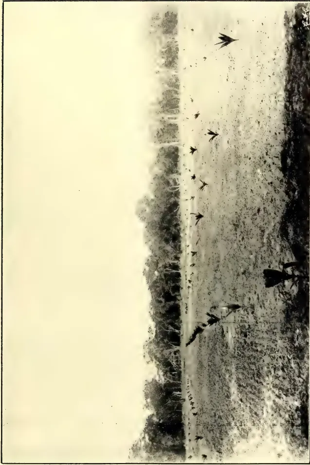
A black and white photograph showing a field of coconut trees in the dry zone of Ceylon. The trees are scattered across a flat, arid landscape. The sky is bright and clear. The image is framed by a thin black border.COCONUTS IN THE DRY ZONE OF CEYLON.
2. ON IRRIGABLE LAND.
Drains were then cut, and they were watered from the tank elu, once a month for one day, until September, since when they have not been watered, and probably will not want any more.
The older trees were planted out on six acres of unirrigable land in May, 1907, but about 200-500 yards from the tank, where there must probably be some seepage. They were watered at intervals of 14 days till the N. E. monsoon. In places they were watered twice in June and July, 1908, and have had no other water. The ground could not be cultivated till after the photograph was taken, but a space was kept weeded round each tree.
The irrigable land is in a fine state of tilth, it will be noticed, the tracks of the teeth of the Plant Cultivator showing clearly. The unirrigable land has been tilled since the rains, but at the time of these photographs (Aug. 24, 1908) had not been tilled.
These photographs show the possibility of cultivating coconuts successfully on the tank lands, with the use of the very smallest amount of water. The growth of trees at Peradeniya, from seeds from the same tree, and of the same age, is by no means so good.
There can be no doubt that the irrigable land of the dry zone is the "best unrealised asset" the island has, and we hope to see it the seat of a large agricultural enterprise.
The following paper was read by Mr. J. D. Vanderstraaten, at the meeting of the Board of Agriculture on 3rd December, 1908 :-
The want of literature on the coconut palm has been often noticed, and is remarkable considering the great value of the palm to this Island. It not only contributes largely to the good of the people, and is directly or indirectly their chief course of income, but it furnishes the Government with 12 per cent. of its Revenue through arrack rents, and supplies the magnificent Harbour of Colombo with more than half of its export shipping tonnage, and may well, if the cultivation of the palm be encouraged and stimulated, supply quite two-third to three of the tonnage. The American Government, shortly after the acquisition of the Philippine Islands, began the scientific study of the coconut palm, which previously had not been, I believe,
the subject of scientific investigation; and it is very desirable that the Ceylon Government should, if it has not begun already, undertake researches into the life history and cultivation of the coconut palm on almost the same lines as the valuable researches concerning Para and other rubber-yielding trees. For, although the coconut palm is such a familiar tree to us all, as usual with all things with which we are familiar, accurate knowledge is wanting and much error prevails, some of a serious economic nature, e.g., it is generally believed by the larger proportion of coconut garden owners (am I overstating it when I put it quite as high as 90 per cent?) that manuring is ultimately and soon hurtful to the tree, even fatally so, though at first attended with some increase of crop; this I say is a serious economic error, for the produce of the coconut plantations in the Island may easily be at least doubled by manuring the gardens. The experience of those who have cultivated and manured gardens previously innocent of either tillage or added fertilizers, has been that a three or even fourfold increase may be obtained and permanently maintained, without any shortening of the life of the trees. But, to convince the people of this and of it being quite within their means to properly cultivate their lands, it would seem necessary that a Government scientific department should carry out experimental cultivation and issue manuals in the vernacular, giving the results and all required directions. The advantages that would result to the country, to the Government and to the people within less than a decade, would be incalculable.
Amongst other misconceptions about the coconut tree may be mentioned the general belief that each tree bears twelve bunches of fruit a year; that heavy rain is beneficial, and the heavier the more beneficial; that, on the other hand, drought is hurtful, even drought of the kind that ordinarily prevails during the early months of the year. In this paper I propose to consider the relation between the weather and crops, and it is not inopportune, seeing that the rainfall this year has been throughout the Island much below the average, and in some districts the drought has been unprecedentedly severe, as in the Puttalm district.
At the outset I must disclaim having definitely succeeded in tracing the exact time relative between the weather and crops. I have formed a theory out of some data where many necessary data are required for accurate conclusions. It is with a view to elicit discussion and
Edible Products.23[JANUARY, 1909.to have my theory confirmed by others, or satisfactorily controverted, that I venture to submit this paper.
That there must be a relation between the weather and coconut crops is a simple truism, but can we reduce it to rules for our guidance in estimating future crops or in devising measures to counteract the effects of unfavourable weather? The question is not one merely of the amount of rainfall in a single year (the tree is one that is blossoming and bearing fruit all through the year), but of the intensity of the rainfall at various times, of its distribution, of the degree of saturation of the soil, the variation in the saturation from thorough as in the early weeks of the monsoons to greater or less dryage during drought, of the variation in the temperature and moisture of the air, the degree of sunshine and light as affecting transpiration and the formation of chlorophyll, and also the electrical condition of the atmosphere.
We all know roughly that extreme and prolonged saturation of the soil, as also extreme and prolonged dryage, are equally unfavourable. We know that extreme heat and extreme cold, that a prolonged period of dark cloudy days are all unfavourable to the production of blossom, while it has been generally noticed that a highly electric condition of the atmosphere is extremely favourable, but here our knowledge ends. When we enter into details our opinions differ greatly. We have not before us all the data for definitely framing our opinions, and it is extremely desirable that full observations should be carefully recorded of the various factors that affect coconut crops.
The experience of practical planters of the results of manuring and recorded observations of rainfall and crops should go a long way towards establishing a fairly workable theory on this subject. In manuring, especially in manuring a previously uncultivated garden, we find no increase in the crops during the first year, simply because the blossoms for the first year's crops were all out and set, and in various stages of development already when manuring took place—perhaps after a few months we find less of the tender young coconut (kurumbettis) falling, owing to the increased nourishment afforded by the manure, so also we notice a slight improvement in the kernel from the same cause. During the second and third years there is a marked and gradual increase of crop still due to the improved vigour of the trees and the consequent fertilizing properties of the pollen which otherwise would have been largely infertile. The increase of crop during the third year
may be quite double the previous yield or even more, but it is after the third year that the full effects of manuring are felt by the trees, the increase in nuts of previously unmanured gardens being quite four to five fold. I was much struck with this fact when I first began coconut cultivation and unable to account for the long interval required for manuring to tell in the case of coconuts, till curiosity led me to dissect the heart or cabbage, the pol-bada, of a healthy tree which was blown down by high wind. Counting all the flowers from the one just opened to the smallest spathe in the heart or cabbage that could be examined with a magnifying glass, I found there were thirty-four flower spathes in this tree, and the smallest spathe in the heart of the cabbage had clearly distinguishable miniature kurumbettis or female flowers. Now, taking sixteen as the average number of fresh branches (and each branch carries a flower spathe) put forth yearly by a healthy tree, we get two years and say two or three months for the last distinguishable spathe to arrive at the crown of the tree and burst into blossom—to this must be added another ten to twelve months before we can gather the fully matured nuts from that branch. This gives us the period of three years at least, and I suppose a few months must be allowed from the beginning of the manuring period for the initial formation of the flower spathe in embryo. I regret being unable to express myself in scientific terms. Scientists whom I have consulted tell me the flower spathe once formed in embryo, nothing can increase or diminish the number of female flowers it contains. May we not well conclude that rain or drought, too, increasing or retarding the flow of fluid (sap) in the trunk of the tree and otherwise affecting it, cannot increase or diminish the embryo female flowers already formed, and must therefore take the same time for its operation as manuring.
The records of crop and rainfall kept by some estates bear out also, I think, the theory I have advanced. These records also I think establish the fact that heavy and long continued rainfall, leading to prolonged and undue saturation of the soil, prejudicially affect the formation of fruit blossoms; but when a period of dry, sunshiny weather, almost amounting to drought (as in the early months of the year), follows on such heavy rainfalls, the conditions are extremely favourable.
The coconut tree thrives best with its crown exposed to the sun and wind (favouring transpiration, and in conse-
JANUARY, 1909.]29Edible Products.quence through the circulation of the sap the absorption of moisture from the ground. The root of the tree should be in favourable soil with easy access to running water.
We find the coconut tree flourishes into an average rainfall of 80 inches as in the Negombo district, and of about 50 inches as in the Puttalam district, but if the occasional torrential downpours which go to make up the total of 80 inches in the Negombo district are allowed for, the average would be about 50 inches—even 40 inches are not too low. It is necessary to avoid the extreme and prolonged saturation of the soil by drainage, when necessary, and the extreme dryage of the soil by tillage and mulching and also to increase the vigour of the trees by fertilizers to enable the roots to penetrate down in search of moisture when the surface supply is scanty in times of extreme drought.
The drought this year has been exceptionally severe, but when the land has been well tilled and mulched I do not think any serious harm has been done. In the Negombo district I can only trace the present effect of the drought in the thinness of the kernel we have been desiccating lately. Where the coconut roots have had access to water I do not anticipate any shortage of crop three years hence, but quite the contrary.
If owners of coconut gardens would even till their lands well (by ploughing or turning on the soil to a depth of 5 or 6 inches) and spread coconut fibre refuse—a cheap and satisfactory mulch to be had for the cost of transport—or use some other mulchy substitute, they will not even suffer the loss of tender nuts dropping in consequence of any drought that may prevail. Mulching has this to recommend it, that it not only prevents rapid loss of the moisture in the soil by capillary attraction, and so conserving it for the use of the tree, but by obstructing evaporation prevents the cooling down of the soil, which always requires to be warm for production of fruit blossoms.
The following particulars are extracted from the "Review of the Trade of India" in 1907-08:—
The Indian tea trade has enjoyed another prosperous year. The World's consumption has apparently caught up supply, and everything points to its increasing in the future at a corresponding ratio. The only
of the year's trading were the temporary inflation of values for lower grades of leaf, which have appreciated by 70 per cent. since 1906, at the expense of the better teas, and complaints of a general decline in quality; but the principal excuse for coarse plucking has been removed, now that the market seems to have recovered its sense of proportion. In any event India could not hope to have benefited long by the extravagant rates for her poorer stuff, for they would have provoked the competition of the cheaper China tea and encouraged increased cultivation in Java.
which followed the reduction of the import duty in the United Kingdom to 5d. per lb., has been maintained. Internal absorption is increasing and tea shops are now a common feature of many bazaars, particularly in Southern India; but it is in the expansion of the Continental markets that the prospects of the Indian industry centre, and of these the Russian market in particular is showing remarkable development. The following table illustrates in the last three calendar years, compared with the year 1890, the astonishing growth in absorption of teas from India and Ceylon on the Continent:—
| 1890 | ... | 14,001,824 lbs. |
| 1905 | ... | 129,881,250 " |
| 1906 | ... | 162,461,824 " |
| 1907 (estimated) | ... | 171,500,000 " |
is of particular interest and importance. Its development dates from the discovery that Indian dust gives a greater strength to "tablet" tea than Chinese. Indian tea reaches Russia not only by direct shipment, but also across the land frontier of India and by re-export from the United Kingdom, Germany and China. It has been estimated that Russia in the nine months ending September 30th, 1907, absorbed 30,542,081 lbs. of Indian and Ceylon teas as compared with 24,566,329 lbs. for the same nine months of the previous year. These figures exclude imports of brick tea from China, in which Indian dust has been blended, estimated at 8,000,000 lbs. in 1907 or proportionately 6,000,000 lbs. for the period January-September. India is encouraged to direct importation into Russia by the preferential duty on her tea and that of Ceylon carried by the Trans-Siberian Railway, and it is announced in this connection that a double service of steamers will be established next season.
Edible Products.30[JANUARY, 1909.BETWEEN CALCUTTA AND VALDIVOSTOCK
TO SAVE TRANSHIPMENT AT COLOMBO.
The duty on tea in Germany was reduced in 1906 to 1½d. per lb., and this, aided by a vigorous medical campaign against beer and coffee, is likely to encourage imports. Holland and Belgium are two other promising markets. As regards the
COMPETITION WITH CEYLON,
it remains to be seen how far the introduction of rubber there will ultimately affect production, for the cultivation tends to oust tea from lower levels where the yield is generally greater than at higher altitudes. The
| 1906. | 1907. | |||
|---|---|---|---|---|
| Million lbs. | Per cent. | Million lbs. | Per cent. | |
| India | 183.8 | 57.2 | 171.4 | 54 |
| Ceylon | 106.3 | 33.1 | 107.5 | 33.9 |
| China | 13.2 | 4.1 | 18.8 | 5.9 |
| Java | 12.6 | 3.9 | 9.1 | 2.9 |
The consumption per capita in the United Kingdom in 1907 was 6.19 lbs. as compared with 6.13 lbs. in the previous year.
The following figures shew the quantity and value of tea exported from India in the last five years :—
| Quantity lbs. |
Value. | ||
|---|---|---|---|
| Rs. | £. | ||
| 1903-4 | 207,159,793 | 8,55,79,327 | = 5,705,288 |
| 1904-5 | 211,887,158 | 8,46,54,867 | = 5,643,658 |
| 1905-6 | 214,223,788 | 8,84,76,037 | = 5,898,402 |
| 1906-7 | 233,653,637 | 9,85,77,642 | = 6,571,843 |
| 1907-8 | 227,021,657 | 10,30,03,486 | = 6,866,899 |
The figures for 1906-7 represented a record both in quantity and value, but the progress in quantity was not maintained in 1907-8, when it declined by 6.63 million lbs. or 2.8 per cent., though the rise in value was of Rs. 44.26 lakhs (£295,000) or 4.5 per cent.—the increase in specific value being one of about 7.6 per cent.
The quantities of tea exported to the principal countries in the last three years have been as follows in thousands of lbs. :—
| 1905-6. | 1906-7. | 1907-8. | |
|---|---|---|---|
| United Kingdom | 166,591 | 176,170 | 169,325 |
| Canada | 15,019 | 14,515 | 4,731 |
| Russia | 9,988 | 13,761 | 15,407 |
| Australia | 7,729 | 9,499 | 11,090 |
| Turkey in Asia | 3,543 | 3,101 | 3,504 |
| Ceylon | 2,101 | 4,818 | 8,881 |
| China | 3,076 | 4,820 | 7,502 |
| Persia | 1,102 | 929 | 1,578 |
| United States... | 2,175 | 1,739 | 2,086 |
| Other countries | 2,900 | 4,302 | 2,919 |
Though the figures for the United Kingdom tend proportionately to reduce, as direct shipments take the place of consignments to London on optional bills of lading, her share of the total exports stands at 74.6 per cent. The expansion in the Ceylon and China figures is due to Russian requirements, and the heavy decline in direct shipments to Canada should not be regarded as an index of a contracting market. Russia and Australia have made marked advances. The figures to Australia were
swelled by a replacement of the shipment of 750,000 lbs. lost by fire on the ss. Fortunatus.
Another feature of the year's trade which should be noticed is the increase in volume of sales by auction in
CALCUTTA IN PREFERENCE TO
MINCING LANE.
and London has further suffered as the emporium of imports into the United Kingdom by the competition of lower
JANUARY, 1909.]31Edible Products.freights with Glasgow and Liverpool. About 73,200,000 lbs. were auctioned in Calcutta during the past season, of which only about 20,000,000 lbs. went to London, and of the balance Russia (direct and through China and Ceylon) absorbed 27 millions and Australia 10 millions.
The prices realised in Calcutta have shown a greater advance on those of the previous year than those in London, and several of the London-Assam Companies have found it profitable to auction their lower grades of tea here rather than at Home.
PRICES AT AUCTION IN CALCUTTA.
| Broken Pekoe. | Pekoe. | Pekoe Souchong, Souchong, Pekoe Fannings and Congou. |
Net Average Price. |
Vari- ation. |
||||||||
|---|---|---|---|---|---|---|---|---|---|---|---|---|
| Price. as. |
ps. | Vari- ation. |
Price. as. |
ps. | Vari- ation. |
Price. as. |
ps. | Vari- ation. |
as. | p. | ||
| 1904-05 ... | 5 | 10 | 100 | 5 | 4 | 100 | 4 | 6 | 100 | 5 | 4 | 100 |
| 1905-06 ... | 6 | 3 | 107 | 5 | 2 | 97 | 4 | 2 | 93 | 5 | 5 | 100 |
| 1906-07 ... | 6 | 8 | 114 | 5 | 7 | 105 | 4 | 7 | 102 | 5 | 5 | 102 |
| 1907-08 ... | 7 | 2 | 123 | 6 | 10 | 128 | 6 | 2 | 137 | 6 | 8 | 125 |
The average price realised in 1907-08 in London was 81d. per lb. as compared with 81d. per lb. in 1906-07.
In spite of the efforts of the Indian Tea Association, estimates of production continue under suspicion of great inaccuracy, and for this the planters must be held chiefly to blame. The crop in 1907 was generally considered to be better than that of the previous year, except in Bengal. The table below gives approximate figures of the area, production and land exports during the last five years, and the actual figures of exports by sea during the same period:—
| Area. acres. |
Production. lbs. |
Exports (lbs.) | ||
|---|---|---|---|---|
| By land: | By sea. | |||
| 1903 .. | 526,611 | 209,041,888 | 679,616 | 204,123,723 |
| 1904 ... | 524,472 | 221,565,631 | 744,352 | 211,395,940 |
| 1905 ... | 528,004 | 221,712,407 | 760,256 | 210,798,056 |
| 1906 ... | 529,246 | 241,403,510 | 942,256 | 235,815,697 |
| 1907 ... | 536,652 | 248,020,398 | 865,648 | 235,422,876 |
The export trade is practically confined to three ports, Calcutta shipping, 73.9 per cent.; Chittagong, 18.9 per cent. (almost entirely to the United Kingdom), and Madras, 6.2 per cent. Five years ago Calcutta claimed 83 per cent. of the total.
The Coast shipments were in the last two years:—
| 1906-07. lbs. |
1907-08. lbs. |
|
|---|---|---|
| From Bengal .. | 3,298,495 | 3,380,335 |
| „ Eastern Bengal and Assam ... |
1,185,327 | 854,117 |
The recorded exports of Green tea by sea and by land during the last three years were:—
| lbs. | |
|---|---|
| 1905-06 ... | 2,183,940 |
| 1906-07 ... | 2,034,384 |
| 1907-08 ... | 1,806,031 |
—Indian Trade Journal, September 3rd.
TEA IN BURMA.
It will be interesting to tea planters to note some figures on tea drinking in Burma given in the seventh triennial report just issued on Burma's trans-frontier trade. Taking the population of the province as at the last census, the quantity of tea consumed annually is about two pounds per head of population. The advance in the consumption of wet or pickled tea was 398,000 pounds. During the financial year 1907-08 the quantity of pickled tea imported from the Northern Shan States was 16,359,878 pounds, and dry tea 2,477,952 pounds, besides 1,389,000 pounds imported by sea. The wet or pickled tea is considered a luxury by the Burmans. The trade of the province is altogether in a very healthy condition. The total value of the inland foreign trade shows an increase of 376 lakhs, or 34.76 per cent, over the figures of the previous triennium. Of this amount 164 lakhs represents the value of silver, and the remainder
Edible Products.32JANUARY, 1909.merchandise not including timber. Imports contributed 20.73 per cent. and exports 52.47 per cent. to the increase. Elephant stealing in the forests of Siam hampered the imports of teak timber, and the great murain among cattle in Western China and the Shan States accounts for a heavy decline under that head, but the total trade for the official year 1907-08 amounted to 534 lakhs, an increase of 9.46 per cent.—Indian Agriculturist, Vol. XXXIII., No. 9.
BY EDWIN B. COPELAND.
(Continued from p. 529.)
Manioc is essentially a tropical crop. Even the hardest varieties are killed by any frost that kills tomatoes. As a result, growers in the United States must use the earliest varieties and harvest their crops in from seven to nine months after planting. The average yields with decent cultivation are not over five tons of roots per acre. This is as high a yield as could be counted on in the Philippines in the same time; in the variety that is raised here, it is after this age is passed that the most rapid growth occurs. As the plant is reproduced by stem cuttings, it is necessary in a country subject to frosts to bury the stems during the winter. This makes seed material somewhat expensive and of low vitality, so that a considerable percentage of the cuttings set out are likely not to live, and this in turn leaves vacant spots in the field and cuts down the yield. It is only in lands nearer the equator, where the temperature is comparatively uniform and moderately high, that manioc can develop with its characteristic luxuriance. An altitude of 3,000 feet is the upward limit of the common occurrence of manioc in Hawaii; in the Philippines its culture for food can well be carried higher.
Aside from the fact that it must be warm, manioc is very modest in its demands upon the climate. To drought, the arch enemy of most cultivated plants, it is fairly immune. For the month or so after the cuttings are planted, they need as much rain as do most other plants at the same stage of growth. After this time, a moist temperature and occasional rain promote a most thrifty growth and the succulence of the roots. Roots used for food have a better texture in wet seasons than in dry. Dry weather, however,
at least such dry weather as occurs in the Philippines, never kills manioc, and rarely, if ever, comes near stopping its growth. The typical insular climate, with a moderate amount of moisture in the air at all times, is most favourable for manioc. Never is it seriously injured by any drought occurring in these Islands, and it is likewise not hurt by heavy rainfall, unless it grows in heavy and undrained soil.
As is true of all drought-resisting plants, manioc wants all the light it can get, and plants at all shaded or planted too close together must not be expected to be very productive. The ideal soil for manioc is rich, fairly deep, and open. Since very rich soils are often compact and heavy and undrained, and since its tolerance of drought makes it thrive better than most cultivated plants on sandy soils, these are in many places regarded as especially favourable to it. The roots do not endure standing water in the ground around them; low, heavy soils should therefore be drained or used for some other crop. When heavy soil is used in Jamaica, manioc is planted in raised ridges, and this is the general practice in the French West Indies. The harvesting of the roots will obviously be easier and more complete in light than in heavy soil.
As to the demands of manioc on the food in the soil, there are two opposite opinions, some writers claiming that it is conspicuous among cultivated plants for the rapidity with which it exhausts the soil; others, that it is like other starchy crops in taking very little from the ground. The former view is supported by, and is probably due to, the fact that in the Straits Settlements, Africa, and to a great extent in South America, manioc is raised on forest clearings, which are used a few times and abandoned. When starch became a staple product of the Federated Malay States, a large amount of land was cut over in this way and then abandoned, with the result that the destruction of the forest was out of proportion to the permanent agricultural development. The Government met this difficulty by refusing to lease land for manioc cultivation unless some permanent crop, such as coconuts or rubber, are planted at the same time, and this regulation has been widely construed as evidence that manioc is a robber crop. But it is no peculiarity of manioc that it thrives best on virgin soil. Various Philippine crops, including upland rice, are raised according to exactly the same system, and one of the hardest problems in forest regulation here has
JANUARY, 1909.]33Edible Products.been the constant abandonment of plats of cultivated land and the making of new "caigins" or clearings for temporary use. Chemical analyses do not at all support the view that manioc is a hard crop on the soil. The total ash in the roots is commonly less than 2 per cent. of the dry weight, and the nitrogen hardly more than 0.5 per cent. Manioc does use nitrogen in the formation of hydrocyanic acid, beside in the ways common to most plants, and may therefore exhaust this food disproportionately. This danger can be avoided by raising a leguminous crop with the manioc or alternating with it. The most promising leguminous crop here is the mango. Unless the soil is rich in lime, the addition of this cheap food will be good for both the mango and manioc.
A scale in Africa causes yellow spots on the leaves and leaf-minor lives in them, but neither causes appreciable damage. The same is true of insects which occasionally gnaw them. Old roots left in the ground in the Philippines are often chambered or consumed by insects, but young or fresh roots are never attacked.
Leaf-spot fungi occur in the Malay States, Africa, and America, but nowhere do appreciable damage. The only known serious disease of manioc is a leaf curl in East Africa, called by the natives "maratschi." It is a communicable disease, but no micro-organism is known to cause it. No variety of manioc is free from it. A Madagascar variety called Mpesazi, is the least generally attacked. A sound plant of this variety twelve months old may have 12 kilograms of roots, but the average yield of thirteen plants with the leaf-curl was only 0.41 kilogram.
No disease of manioc is known in the Philippines. Their most dangerous enemy here is the hog. Wild hogs do considerable mischief when they get access to manioc, but they of course can be kept out by good fencing.
Knowledge of what is really best in the culture of manioc is very limited, the plant never having received a fraction of the study which has been bestowed on all the important crops of temperate lands. On manioc we have for the most part only scattered observations, and these are not always too reliable. In the equatorial belt, where manioc thrives best, the most usual treatment of it is the most complete neglect. The only attention it usually receives in the Philippines is sticking
the cuttings into the ground and digging out the roots; and in parts of India, Africa, and South America it receives no more care. The most careful study has been given it in Florida and Jamaica; in the former all the conditions are very different from those here, and in the latter the subject most studied has been the selection of varieties.
Manioc is in practice always reproduced by stem cuttings. Seeds are used in the Government work in the United States in attempts to secure new and sweeter varieties, and in German East Africa in attempts to secure immunity from disease. So far as limited and unsatisfactory experiments show, the seedlings are likely to have sweeter roots than their parents. However, in Paraguay the seed of the sweet cultivated varieties is said to be very unreliable and likely to produce poisonous roots. The stems will grow if used as soon as cut and are presumably most vigorous then; but they have stood shipment from Jamaica to India, and in Paraguay have been kept alive through six months of hot weather, provided the epidermis was not bruised or broken and they were kept dry.
Only sound stems of sound plants should be used. Cuttings 10 to 20 centimeters long will produce thrifty plants. Some writers advocate the use of longer ones, and it may be that their use where there is plenty of material for propagation will give the plants a stronger start. The cuttings are buried horizontally in some places, placed erect with the lower end in the ground in others, and planted obliquely in still others; they grow everywhere. The crop will perhaps be more easily harvested if the cutting is not erect. If it is erect it is advisable to plant in the ground the original lower end, so that the polarity of the cutting will not have to be overcome when it begins to grow.
Statements as to the proper distance between plants differ widely, and this depends of course upon the soil and climate, and upon the natural growth of the variety planted. On good soil a distance of one meter in each direction can be recommended for the Philippine variety; this puts 10,000 plants on one hectare of even ground. If more room for cultivation in one direction is desired, the same stand can be obtained by putting the rows 125 centimeters apart and the cuttings 80 centimeters apart in the rows. A somewhat more ample spacing is better, if a short-lived catch crop is interplanted. Some writers condemn the use of any other crops with manioc, but it seems to me that if well chosen they have decided
5 Edible Products.34[JANUARY, 1909,advantages. The use of cane in this way—as is practised, for instance, in Mauritius and Reunion—is distinctly bad from the standpoint of either plant, for they compete throughout their lives and reach their greatest development at the same time. Maize is used on a plantation in Basilan, and is harvested and out of the way before the manioc needs all the space. But if a catch crop is to be used, there is no reason why it should not be one which, like mongo or some other legume, will leave the soil actually bettered by its presence. There is at our door a market for mongos as human food, and there are various legumes which produce a fodder which could be mixed with the waste from the starch mill to make a well-balanced fodder for beasts.
While, so far as I know, no comparative tests have been made, there is no doubt that thorough ploughing and harrowing have the same general effect on manioc that they have on other crops. In the case of manioc, hard ground not only prevents the proper growth and activity of the feeding roots, as it does for other crops as well, but it interferes directly also with the development of the part of the plant to be harvested. Even if the fleshy roots became as large in hard and uneven ground—which they could not—they would still be less valuable, for it is much more difficult to clean and peel an irregular root than a stout, symmetrical one. Moreover, as has been seen, the bark and cortex are strong in hydrocyanic acid, while the starch is confined to the fleshy interior; therefore a stout and symmetrical root, having less surface in proportion to its bulk, will contain the least poison and the highest percentage of starch, while an irregular root or a very long one, such as may grow where the ground has been cracked, will be comparatively bitter and weak in starch.
While ploughing is, in the abstract, desirable, we may as well recognize frankly that on freshly cleared tropical land it does not pay. The laborious removal of stumps and roots, work to which the native labour is not used, costs fully as much here as in the United States; while if fresh growth is kept down, termites and the teeming organisms of decay will destroy almost every kind of wood completely within a year or so. The land can be ploughed for subsequent crops. Hand cultivation is cheap here, and can be made to give very good results. When manioc is planted on unploughed land each cutting should be set into a spot of thoroughly worked ground 20 centimeters deep and at least 30 centimeters in diameter. The plants
should be in rows, as regular as possible. Because of stumps a given area will take less plants than could be put into land well cultivated.
If mongo is interplanted with manioc the two should be planted at the same time, so that the mongo may mature and be harvested before the manioc needs its room. If, as has already been suggested, the rows of manioc be 125 centimeters apart and the cuttings 80 centimeters apart, two rows of mongo, themselves 30 centimeters apart, can be planted between each two rows of manioc. The two crops will need but little more cultivation than should be given manioc alone. Whether or not the mongo is present, the land should be thoroughly cultivated not more than one month after planting, making the ground soft and fine, and killing all weeds—a weed is a plant of whatever kind which grows where it is not wanted. At this first cultivation it is advisable to hill the manioc slightly.
Mongo needs cultivation twice within the first two months, while manioc might do with one, but will certainly grow better for the greater attention. After the mongo is removed the ground will still want to be cleaned and worked once. After the plants are four or four and half months old they take care of themselves.
The roots are ready to be used for human food at any time after they are five or six months old. Sometimes all the roots of a plant are taken at once, sometimes they are dug one at a time. In these young roots the percentage of sugar is probably as great as it ever becomes, but they are relatively weak in starch, and less woody than older ones. The roots of the Philippine varieties are probably best suited for direct use as human food when they are not more than nine months old, although we have seen succulent roots on plants said to be sixteen months old, from which other roots had been removed earlier. In Hawaii, two year-old roots are often hard and fibrous, containing little starch. One African variety is edible when six years old. For making meal or manufacturing starch the roots cannot profitably be gathered until they are well beyond the best age for direct use as human food; thus, in one African district they are eaten fresh when about nine months old, and not used until twelve to fourteen months old for making meal. In some parts of the Philippines the roots are said to be grated and eaten when three years or more old.
(To be continued.)
JANUARY, 1909.]35Edible Products.THE FERMENTATION OF CACAO,BY OSCAR LOEW, Physiologist.
(Concluded from page 534.)
Since a moderate brown colour is also produced in white "nibs," free of cacao red, it follows that the brown colouration is not due exclusively to a change of cacao red. If the production of the colour is due to an incomplete oxidation of the tannin, then there will be less tannin found in the cured cacao than in the fresh cacao. This agrees, indeed, with some analytical determinations of J. B. Harrison, published by Hart. The fat content is assumed not to change during the curing process, and this is in all probability the case. The data compiled under this condition are as follows for Calabacillo cacao:—
ANALYSES OF CALABACILLO CACAO.| Constituents. | Fresh. Per ct. |
Cured. Per ct. |
|---|---|---|
| Fat ... | 29.25 | 29.25 |
| Tannin ... | 5.00 | 3.61 |
| Cacao red ... | 2.95 | 1.39 |
| Theobromin ... | 1.35 | 1.00 |
| Caffein ... | .11 | .03 |
| Starch ... | 3.76 | 3.22 |
| Glucose ... | 0.99 | 0.60 |
| Hemicelluloses ... | 5.11 | 3.74 |
| Woody fibre ... | 3.03 | 2.78 |
| Protein ... | 6.69 | 4.42 |
| Amido compounds ... | .53 | 2.06 |
A part of the changes brought about by curing is probably due to the action of the living cells in the seed, before they are killed by the rising temperature. This would account for the decrease of starch, glucose, and hemicelluloses, which may be consumed by the respiration process, but the other changes are due to several enzymes. A proteolytic enzyme brings on the decrease of protein and the corresponding increase of amido-compounds, while oxidizing enzymes, generally liberated from the protoplasm upon its death, cause the decrease of tannin and cacao red and their change to other compounds. The most conspicuous changes are, therefore, only possible after the death of the protoplasm which is a desirable factor. Hence, it is a mistaken idea of Zipperer that the changes are due to a germination process of seeds. He has even attributed the rise of temperature of the fermenting pulp cacao to this process, considering it analogous to the behaviour of barley on the malting floor. This error can only be explained by the fact that he has never witnessed the fermentations of cacao or coffee; for germination changes are not in the least apparent,
Another result is the change of flavour. In the fresh state the seeds have a raw bitter, and astringent flavour, while after fermentation and drying the bitter and disagreeable taste has entirely disappeared. This change is doubtless due in a certain measure to the decrease of tannin; that is, to its change by oxidation to a brown substance, as in the case of the persimmon fruits, mentioned above.* The flavour of the fermented beans is still far different from that of the prepared cacao product, which is produced by roasting the fermenting beans; hence a part of the taste must be due to changes caused by the heat of the roasting process.
The presence of oxidizing enzymes in the seeds of cacao can be proved by the usual reaction. Upon moistening a freshly cut section of cacao seed with tincture of guaiacum resin, just after taking the seed from the ripe fruit, a blue colour is rapidly produced, first and most intensely in the chalaza of the embryo and gradually spreading over the entire seed tissue; also, the placenta shows soon an intense blue colour. When a cross section through the whole fruit is moistened with guaiacum tincture, the chalaza of the embryo and the interior soft stratum of the fruit shell become rapidly and intensely blue, then follow in order the colouration of the convulsions of the cotyledons, of the seed and the tissue of the hard outer shell. Finally, the whole surface of the section of the seed and exposed tissue of the testa become blue; but the slime tissue or pulp around the testa remains perfectly colourless, presenting a most striking contrast.
If the tissue of the seed is crushed with some water in a mortar, the filtered liquid will show no blue colouration on addition of guaiacum tincture and shaking with air, while the unfiltered liquid will become blue very soon. This shows an exceptional case, namely, that the oxidase (laccase) is present in an insoluble state and perhaps held in combination with an insoluble protein.† Upon standing the blue colour, obtained with the unfiltered liquid, will gradually disappear, except on the surface, but on adding a few more drops of the reagent and shaking, the intense blue colour reappears. This phenomenon is due to the presence of a reducing compound in the juice.
*The opinion of Harrison mentioned above that the decrease of the astringent taste is due to a hydrolysis is erroneous and would be without analogy.
†This recalls the existence of a soluble and insoluble form of catalase,
Edible Products.36[JANUARY, 1909.In testing for a second oxidizing enzyme, the peroxidase, the tissue of the seed, crushed with a little water, was heated for five minutes to 75° C. and one portion of this liquid was filtered, the other not. The test with guaiacum tincture yielded no blue reaction in either liquid, proving that the oxidase was killed, while on addition of a little peroxid of hydrogen the unfiltered juice gave an intense blue reaction and the filtered juice showed only a trace. This difference proves that the peroxidase, like the oxidase, was present, but retained as an insoluble compound—an exceptional case.
Reactions with guaiacol were also tried. This substance produced no coloration when applied by itself, but in conjunction with hydrogen peroxid a red colour turning to brown was soon produced in both the hard as well as the soft layer of the fruit shell. Later, in the testa and the seed in general, as well as in the slime tissue covering the testa, only a weak, reddish coloration was produced. This peroxidase reaction agrees also with that just mentioned, in so far as the slime tissue gave only an exceptionally weak reaction compared with all other parts of the fruit. The slime tissue of the coffee fruit is also poorer in oxidase and peroxidase than the other tissues.
The further generation of the characteristic aroma of cacao is of great importance. Is this process due to the action of an oxidizing enzyme or to that of a hydrolyzing enzyme, and does the fermentation influence the generation of aroma only indirectly by the development of heat or directly by furnishing some compound? Or, is the roasting of the fermented cacao beans alone responsible for the aroma? The investigations thus far made do not solve this problem satisfactorily. It may be mentioned, however, that Hart agrees with Chittenden, who declared that after a certain stage of the fermentation "the cotyledons are found separated and the vinous liquor of the pulp, which passes through the membranous covering, occupies this space as well as the cavities between the convolutions. * * * This it is which has so marked a physiological influence and affects its flavour, the bean being, as may be said, 'stewed in its own juice.'"
According to the laws of osmosis some acetic acid and some alcohol from the fermenting liquor will doubtless enter through the testa and come in contact with the cotyledons, which thereby may be killed, if the temperature of the fermenting mass has not already accom-
plished this. The reaction of the cotyledons after drying the fermented beans is acid, but whether this is wholly due to the entering acetic acid may be doubtful, since the reaction is weakly acid in the fresh state. A stronger acid reaction is shown by the slime tissue.
The expression "stewed in its own juice" used by Chittenden can hardly be admitted, since the juice of the pulp, after being entirely decomposed by yeast and bacteria, is certainly not the "own juice" of the cotyledons. Still, that author attributes to it the generation of the flavour.
The opinion of J. B. Harrison that the decrease of tannin during the fermentation process stands in relation to the development of aroma is certainly far from the mark, as tannin cannot produce ethereal oils by an oxidation or fermenting process. Only colour and taste stand in this relation to the tannin content.
Several experiments were made by the writer with an aqueous solution of 1 to 4 per cent. acetic acid containing from 3 to 5 per cent. of alcohol in order to imitate the composition of the fermenting pulp juice. After twenty to thirty hours' digestion of pulped cacao at 40° to 45° C. it was observed that the pulp had died and shrunk to skinny masses, partly separating in small pieces, but mostly still firmly adhering to the testa. It appears that for bringing about an easy separation of the dead pulp from the testa a bacterial enzyme is necessary, as in the case of coffee fermentation. It was further observed that the amount of acetic acid, which entered by osmosis through the testa to the cotyledons, was not sufficient to kill the oxidizing enzyme, since the freshly cut surface of these seeds rapidly turned brown on exposure to the air. On the other hand, it was observed that when the freshly cut surface of the seeds so treated was moistened with 4 per cent. acetic acid no further change by oxidation took place. In this case the oxidizing enzyme was killed.
It is stated by Hart that "of late years there has been a large amount of inquiry for cacao which is but slightly fermented or not fermented at all." This renders it very probable that the decomposed juice of the slime tissue is not required for the generation of the aroma as was supposed. Indeed, the true aroma of cacao is faint before roasting the fermented beans. The case is, therefore, similar to that of coffee, and is different from that of tea. With tea the aroma is the result of the action of a hydrolyzing enzyme, yielding the volatile tea oil, as was shown by Katayama.
JANUARY, 1909.]37Edible Products.That the aroma of the cacao is chiefly produced during the gentle roasting process is the opinion of manufacturers of chocolate from the fermented beans. The fermentation seems, indeed, to have nothing at all to do with the production of aroma. Seeds simply dried in the sun and then gently roasted may yield an especially rich and aromatic chocolate, as Safford* has also indicated. Hart says:
No adulteration * * * is equal to the flavour of the virgin cacao, provided the essential oil has not been destroyed during the process of roasting, during which process it appears to be developed.†
The question now arises, which compound yields the aroma in the cautious roasting of the fermented cacao beans? It is certainly not a glucosid, for neither the testa nor the cotyledons of the beans develop anything like a cacao flavour upon being boiled for some time with dilute sulphuric acid (3 to 6 per cent). The same negative result was obtained by boiling those materials with moderately concentrated solution of caustic potash. It seems probable that it is a certain concomitant of the fat which causes the production of the flavour, after being moderately oxidized during the drying of the beans. Only seeds which the oxidizing enzymes have produced changes can yield the true aroma by roasting, not the fresh beans.‡
In the manufacture of the cacao powder of commerce the fat of the cacao is removed more or less, since a suitable powder cannot otherwise be obtained, but in the direct manufacture of chocolate this removal of the cacao fat cannot be justified. It is claimed that cacao fat or cacao butter is difficult of digestion, but in reality cacao butter is as easily digestible as cow's butter. Besides, the removal of fat also diminishes the aroma of the chocolate. In the manufacture of chocolate in Porto Rico, fermented cacao seeds are placed in a small baker's oven for about one hour, until the testa have become very brittle
* Compare the quotation in the introductory remarks to this article.
† These words contradict his other opinion, however, quoted above in regard to the influence of fermentation on aroma.
‡ Fresh beans were crushed, washed with alcohol, and extracted with either. Neither the extracted fat nor the seed powder developed on moderate heating any flavour resembling that of cacao; only the alcohol extract yielded thus a very faint flavour of cacao. On evaporation of the alcoholic extract another aromatic odour is noticed.
and can be easily removed. This roasting temperature is kept considerably lower than that required for baking bread. The cacao butter is not removed in Porto Rico, and therefore the chocolate manufactured there has an exquisitely fine aroma.
The fermentation process itself is due in the first place to yeast cells which multiply rapidly in the saccharine juice oozing from the pulped cacao and produce alcohol and carbon dioxide. In the second place bacteria participate, which develop rapidly after a certain time, and change the alcohol formed by the yeast by oxidation, either wholly or partly, into acetic acid. These processes cause a rise of temperature and the death of the cells of the seed and slime tissue, whereupon the juice of the slime tissue, more or less altered, collects at the bottom of the receptacles, together with the acetic acid produced.
The chief object of the fermentation is to shrink the slime tissue or pulpatached to the testa of the seed, allowing the remnants either to be washed away, as is done in Ceylon, or dried upon the seed forming an irregular brown film upon the testa. The advantage of thus changing the voluminous slime tissue lies in the increased facility of quickly drying the seed. In this regard there exists a close analogy to the fermentation of coffee. The loosening of the adhesion between seed and its envelope and the hardening of this envelope (testa) are claimed as further effects of fermentation.
The fermentation has also an indirect influence on changes going on within the seed, inasmuch as by the temperature produced (40° to 50° C.) the cells of the seed are killed, thus liberating the oxidizing enzymes, which cause the formation of the brown colour, by oxidation of the tannin of the seed. This brown colouration is increased during the drying process and finally by the roasting.
The taste of the raw cacao bean is not only altered by the partial oxidation of tannin during the fermentation or sundrying of the seed, but also by products of roasting.
The action of oxidising enzymes, as well as the final roasting process, play a part in the development of the aroma. —Porto Rico Agricultural Experiment Station. For 1907. Issued May 4th, 1908.
Edible Products.38[JANUARY, 1909,A. B. C. OF LIME CULTIVATION.(Continued from page 538.)
CROPS.Generally speaking, the main flowering period of the lime is from February to June. In the rainy season, extending from June to December, a week of fine weather will often cause the lime trees to put out a few clusters of flowers, and it is from these minor flushes that a few fruits are procurable all the year round. The main-crop season extends, as a general rule, from June to December. Whether the main crop is early or late, whether the bulk of the crop ripens in a short period, say, from six to eight weeks, or is prolonged over several months, or whether there is an early crop in July and August followed by a distinct second crop in November and December, depends chiefly on the local weather conditions and on the vigour of the trees.
Accurate observations of the length of time from flowering to the maturity of the lime fruit do not appear to have been made, but it is usually placed at five months. It depends upon the local climatic conditions and upon the vigour of the trees.
The yield per acre of fully established lime estates varies greatly. Good estate cultivation should produce from 150 to 160 barrels of fruit per acre annually, but there is much cultivation that does not yield higher than from 80 to 100 barrels of fruit per acre. A barrel of limes gives from to 8 gallons of juice, but the acidity of the juice varies according to the rainfall. An estate with a low rainfall may average 14 oz. citric acid per gallon of juice, while another with a higher rainfall may average 12 oz. In the very wet districts in the hills the acidity is as low as 10 oz. per gallon.
The yield per acre of a lime plantation is sometimes expressed in barrels of fruit and sometimes in hogsheads of concentrated juice. Neither conveys much meaning unless accompanied by the acidity of the raw or concentrated juice. It would be better expressed as pounds of citric acid contained in the concentrated juice, for it is evident that a return of 200 barrels of lime per acre giving juice testing 14 oz. per gallon is very different to the same return per acre in barrels giving juice testing 10 oz. per gallon. Similarly with concentrated juice, some estates concentrate to 100
oz. per gallon, others to 120 or 130, and a few to 140 to 150 oz. It will be seen that there is a wide difference between hogsheads of concentrated juice testing 100 oz. per gallon and others testing 140 oz.
About eight-ninths of the lime juice produced in Dominica is concentrated for sale to citric acid makers and to cotton bleachers. The remaining one-ninth is exported as raw lime juice for making cordial. The establishment of a citric factory in Dominica will tend probably to reduce somewhat the proportion of concentrated juice, for this factory takes the juice after the essential oil has been expressed and before concentration in the usual course is begun.
The standard at which concentrated lime juice is sold is a pipe of 108 gallons testing 64 oz. to the gallon. Its equivalent is a 52-gallon hogshead, the package used in the West Indies testing 133 oz. to the gallon.
Limes, when ripe, fall from the tree, and are collected from the ground by women and children into heaps. The usual price paid for collecting the lime is at the rate of 3d. per barrel, but this rate is increased when they have to be carried for long distances.
The fruits are then put into carts and taken to the mill house for the extraction of the juice.
MACHINERY REQUIRED, FUEL, ETC.Many of the old three-roller sugar mills placed in position when sugar was the staple crop are still in use to-day for crushing limes. The sugar mill with iron rollers adjusted to crush limes has answered admirably where the lime juice is concentrated. These are usually driven by water power on large estates, and in some instances by cattle. On small estates, mills worked by hand power are in use.
The machinery required for dealing with lime juice consists of a three-roller mill (iron rollers may be used where the juice is concentrated, but they should be of granite when raw juice is prepared for shipment for making cordial) driven by steam, water, or cattle; a press for extracting any juice that may be left in the skins after passing through the mill; storage vats; a copper still; three copper taches in which to boil the juice; and coolers.
Iron rollers should be washed down after use to prevent the acid eating into the iron, and when raw juice is exported for making cordial, the juice should be run to the settling vats through earthen-
JANUARY, 1909.]39Edible Products.ware pipes. It should not be allowed to come in contact with metal.
Works should be arranged so that the mill house is on higher ground than the boiling house. The juice on leaving the mill then runs by gravitation to the storage vats, from the vats to the still and from the still to the copper tayches where it is concentrated. It is then placed in wooden or copper coolers, and is finally run into hogsheads for shipment.
Concentration of lime juice in copper or wooden vessels fitted with steam coils has been recommended, and would no doubt be an improvement on the present system. It is not now likely that any great effort will be made to improve the present system of concentrating juice, as the manufacture of concentrated juice may subsequently be superseded by the manufacture of citrate of lime.
The Dominica Planters' Association when furnishing information for the revision of the pamphlet entitled Hints to Intending Settlers, Dominica, wrote that "for lime cultivation a mill, mill house, two tayches, battery, and boiling house large enough for adequate storage room would cost about £300." The above estimate includes a small copper still.
The detailed estimate is as follows:—
| £. | |
|---|---|
| 1 Copper tayche (50 gallons) ... | 25 |
| 1 " " (80 " ) ... | 35 |
| Handmill ... | 30 |
| Vats ... | 10 |
| Still (80 gallons) ... | 80 |
| Building ... | 125 |
| — | |
| Total ... | £305 |
| — |
The above is the minimum for a beginner. Later, as the crop increases, the works would need enlargement, and a copper still and three tayches of a larger size would be required.
The above plant could deal satisfactorily with the crop produced from 10 to 12 acres, but would after about the first two crops be quite insufficient to deal with the produce of 50 to 60 acres.
The Hon. J. C. Macintyre states that the requirements of a plantation of 50 to 60 acres, turning out from 100-120
| hogshead would be as follows:— | £ |
|---|---|
| Three-roller horizontal mill (rollers 2 feet 6 inches by 18-20 inches) say | 300 |
| Power plant for same and installation (5 H. P. oil engine) ... | 150 |
| Two storage tanks of 1,000 gallons capacity ... | 20 |
| Copper still (300 gallons) with copper cap and pewter worm ... | 300 |
| Three copper tayches (120, 150 and 200 gallons) ... | 150 |
| Buildings (boiling house, mill house, and storage room) together with erection ... | 600 |
| Total ... | £1,520 |
In many of the West India Islands, old sugar mills can be bought at very much less than the original cost, and the outlay may thus be reduced.
Most of the machinery on lime plantations in Dominica is driven by water power, but it is doubtful whether this source of power will be made use of on new plantations, except on those that are particularly favourably situated for its installation. In most situations, the cost of building an aqueduct would be considerable, and the cost of even a moderate-sized wheel would certainly be greater than for an oil engine or equal horse-power.
It is thought that when circumstances are favourable, a Pelton wheel would probably be the cheapest form of power, both in cost of installation and in cost of running.
For boiling down the juice very considerable quantities of fuel are required. It takes from one cord to 2½ cords of wood (according to the quality of the fuel and the degree of concentration of the juice) to boil down sufficient juice to fill a hogshead. On some estates fuel is very scarce and costs from 8s. to 10s. a cord. On others, wood is plentiful and costs from 3s. to 4s. a cord.
When concentrated juice is selling at normal prices, that is, from £12 to £12 10s. per hogshead testing 133 oz. to the gallon, the cost of fuel together with the cost of the packages and the high freight that has to be paid on liquid produce have to be seriously considered. The industry under such conditions cannot be said to be a particularly attractive one. At present prices are high and may remain so for several years.
On estates where fuel is scarce, it has been recommended that several pieces of quick-growing eucalyptus might be planted in odd corners of the estates.
Edible Products.40[JANUARY, 1909.These grow rapidly and ratoon well when cut. Once established, they would bear being cut over every two or three years, while native trees that have been cut down are not ready for cutting again for at least ten years.
The fuel question is an important one in the manufacture of concentrated juice, and even if citrate of lime supersedes it, the fuel question will remain. To make citrate of lime, and to dry it, will require as much, probably more, fuel than the present system of concentrating juice.
The early shipments of green limes from Dominica were made during 1891, when 99 barrels of fruit were shipped. From this small beginning, the present considerable business in green limes with New York and London has been developed. The export of this fruit during 1907 was 18,311 barrels, valued at £6,409.
The American market demands a small fruit packed in well ventilated barrels, and the London market a large fruit packed in small crates of a capacity of one cubic foot. A barrel holds from 1,400 to 1,600 fruits varying according to the size of the limes, and a crate from 200 to 240.
Green limes are picked from the trees, and are allowed to quail for several days before they are packed. The lime, however, does not apparently require the same degree of quailing as the orange does to ensure its arrival on the market in good order. Each fruit must be wrapped in paper, and should be very carefully packed. Very great care is required in gathering, handling, wrapping, and packing, to ensure the best results.
The lime is used for the same purposes as the lemon. It is certainly displacing the lemon, to a considerable extent, in the United States.
In Dominica a small business is done in shipping limes pickled in sea water.
These limes go chiefly to Boston. The trade is only a small one, and during late years the export of pickled limes has fallen off somewhat. This is probably not due to a decreasing demand for pickled limes, but rather to increasing shipments of this product from other West India Islands. The average annual export of pickled limes from Dominica for the five-year period ending 1896, was 1,505 casks, for a similar period ending 1901, 1,117 casks, and for five years ending 1906, 1,000 casks. A cask holds about 2,000 limes.
For pickling, the finest specimens of sound yellow limes are selected and placed in vats into which sea-water is pumped.
In two or three days, this water is run off and fresh sea-water pumped in. This process is repeated several times until the limes are cured. The fruit is then placed in casks which are in turn filled with sea-water to which a small amount of salt has been added. The casks are then closed, and are ready for export.
Lime juice intended for making cordials and for flavouring confections requires very careful preparation.
The limes should be washed before being crushed in mills fitted with granite rollers. Only the first juice obtained by lightly crushing the fruit through the first rollers is used. The second juice and the press juice which are weaker in acid are used for concentrating.
The first mill juice is carefully strained and placed into puncheons when quite fresh. Formerly it was run into vats, and after settling the clear juice was placed in puncheons or hogsheads for export.
It is well known that raw juice carefully strained and placed in packages when quite fresh will keep in good condition for a considerable time, but if lime juice is exposed to the air it will gradually lose its acidity.
The raw juice trade is in the hands of two or three firms and probably different methods are employed in each case.
Limes are grown chiefly for the production of citric acid only a small proportion of the total crop being used for lime juice cordials and for the green lime trade. In the West Indies the juice is concentrated in order to reduce bulk before shipment to the citric acid makers.
It is usual to reduce by boiling 600 gallons of lime juice to 50 gallons of the concentrated product. Some estates, however, concentrate 10 to 1, others at 9 to 1, instead of 12 to 1. Even with low concentration there is a considerable loss of acid. When concentration is carried on to 130 and 140 oz. to the gallon, the loss of acid is very great.
Planters can now test their own lime juice in the boiling house and thereby save a considerable destruction of citric acid during concentration, by means of
JANUARY, 1909.]41Edible Products.a citrometer or an ordinary specific gravity hydrometer. A description of a scale prepared by Dr. Francis Watts for use in ascertaining the strengths of solutions of citric acid and of lime juice by means of a hydrometer will be found in the West Indian Bulletin (Vol. V, pp. 236-40), while a similar hydrometer method is described in the Agricultural News (Vol. VI, p. 149.) The following extracts are taken from these articles:—
‘In preparing concentrated lime juice the concentration should be carried on until a citrometer floating in the hot juice (at boiling heat) indicates a density of 60°
‘As the citrometer is an instrument but little known, difficulty has at times been experienced in procuring it. Its use, however, can be dispensed with, and an ordinary specific gravity hydrometer the nature of which is universally understood, can be substituted, by making use of the fact that 60° on the citrometer is equivalent to 1·243 on a specific gravity hydrometer.
‘In this connexion the following scale may be useful:—
| 50° | citrometer | = | 1·202 | sp. | gr. |
|---|---|---|---|---|---|
| 51° | “ | = | 1·207 | “ | “ |
| 52° | “ | = | 1·211 | “ | “ |
| 53° | “ | = | 1·215 | “ | “ |
| 54° | “ | = | 1·219 | “ | “ |
| 55° | “ | = | 1·223 | “ | “ |
| 56° | “ | = | 1·227 | “ | “ |
| 57° | “ | = | 1·231 | “ | “ |
| 58° | “ | = | 1·235 | “ | “ |
| 59° | “ | = | 1·239 | “ | “ |
| 60° | “ | = | 1·243 | “ | “ |
| 61° | “ | = | 1·248 | “ | “ |
| 62° | “ | = | 1·256 | “ | “ |
| 63° | “ | = | 1·260 | “ | “ |
‘Suitable specific gravity hydrometers graduated from 1·200 to 1·300 specific gravity can be obtained from makers of scientific instruments at a cost of about 2s. each.’
Lime juice for concentration should, when leaving the mill, be carefully strained in order to remove all the seeds, before it is run into vats. From the vats it is run into the still to obtain the oil, and afterwards to the tachyes to be concentrated.
It has lately been shown (West Indian Bulletin, Vol. VIII, p. 171) that lime juice, carefully strained, and then settled after distillation has obtained a special market, and commands higher prices than ordinary concentrated juice. Every effort, therefore, should be made by planters to ship a high-class product.
The juice is shipped to New York or London in hogsheads of 52 gallons, where it is tested and paid for according to the citric acid contents.
Buyers in London and New York pay for citric acid, and not for impurities in the juice. The presence of the latter causes great trouble to manufacturers of citric acid, and tends to bring prices down. Lime juice should therefore never be concentrated in iron tachyes, as the iron combines with it and lowers the value of the product.
Concentrated juice testing 100 to 105 oz. per gallon made of well strained and carefully settled lime juice is a black and heavy, but not a dense, liquid. When no care is taken to strain or settle the juice, the product is black, and as thick as molasses at the same degree of concentration.
In the manufacture of citrate of lime, the juice on leaving the mill is carefully strained, then distilled to obtain the oil, and afterwards while still hot, it is run into a wooden vat to be neutralized with chalk. Before running into the mixing vat, it would be an improvement if the hot juice were passed through filter bags. (West Indian Bulletin, Vol. VIII, p. 167.) At present lavigated chalk is imported, but it is hoped later to use mainly lime made locally from coral. It is generally stated that the process of neutralization should be finished with chalk, but one authority has said that finishing with lime, even when chalk has been used to start with, is to be recommended as there is thereby a saving of time and a clearer indication is obtained. Neutralizing vats are fitted with perforated steam coils in order to keep the juice hot, and to act as agitators during the time chalk is being added, during the washing process, and until the citrate is finally run into the filter bags. They must be large enough to prevent loss from overflow by the foaming effervescence which takes place when chalk is added.
Dr. Watts writing on this matter says:—
‘A sufficient quantity of chalk is made into a cream with water and the mixture poured cautiously into the juice with constant stirring, proceeding cautiously as the acid is neutralised. To ascertain how much chalk is to be used it is best to proceed as follows: When the greater part of the chalk has been added, the mixture is well stirred and the effervescence is allowed to subside; a small quantity is then taken out and tested by the addition of a little of the mixture
6 Edible Products.42JANUARY, 1909.of chalk and water; if this produces an effervescence, more chalk must be added to the main quantity, proceeding cautiously and testing intervals, until no effervescence is produced. A further test is now made—a little of the mixture is withdrawn and heated; as soon as bubbles of gas cease to be given off, a few drops of acid (fresh lime juice will answer) are added. This will produce a slight effervescence if chalk has been added in right amount, and a brisk effervescence if too much has been used. In the latter case, more juice must be added to the mixture and the process of testing repeated.'
If you add too little chalk to your lime juice, you lose some acid. If you add too much, it gives the manufacturer trouble by wasting his sulphuric acid. The buyers of citrate of lime have determined to penalize anything containing an excess of over 2 per cent. of chalk.
After neutralization, the citrate is allowed to subside, and the mother liquor is run off through a tap fitted in the side of the vat. Hot water is then run in and steam turned on to thoroughly wash the citrate. The washing should be repeated several times, the citrate being allowed to subside and the water run off between each washing. Finally it is agitated and run through a lower cap into the filter bags to drain. Afterwards, it is placed in a press to extract as much moisture as possible, and then at once conveyed to the drier.
Recent experiments by Dr. Watts show that the use of centrifugals is to be recommended for removing the water from citrate in place of the press. Citrate can conveniently be washed with a small quantity of hot water while in the centrifugals, and when the moisture has been removed by them, it can be dried, in a much shorter time.
When thoroughly dried, it should be placed in a room to cool before being tightly packed in barrels, hogsheads, or puncheons for export. It is very important that the citrate be thoroughly dried. If this is not done, much acid may be lost.
Citrate of lime when prepared in the above manner is a white powder and should contain about 64 per cent. of citric acid.
Citrate of lime is twice as bulky as concentrated lime juice, but it is not expected that freight on citrate will be higher than on concentrated juice, as shipping companies give a preference to the dry over the liquid produce.
The manufacture of citrate in Dominica is as yet only in the experiment stage. Probably many improvements will be made in the process as time goes on.
At present the great requirement is a drying machine that will dry citrate in a few hours without any loss of acid. The driers chiefly in use now are modelled on the cacao drier described in the West Indian Bulletin (Vol. II, p. 173). The process in this class of drier takes too long, and the consumption of fuel is too great, for the most economical production of citrate. If centrifugals were generally adopted and an improved drier brought in use, the manufacture of citrate of lime on large estates would be considerably simplified.
(To be continued.)
(Continued from p. 548.)
In the warmer portions of the sweet-potato-growing district the seed should be bedded when danger of frost has passed. In the northern portion of the area the seed should be placed in the hotbed from the 20th of March to the 10th of April, after the temperature of the bed has fallen to 80° or 85° F. and become regular.
If possible, select a warm, sunny day for this work, in order that the seed potatoes and the bed may not become chilled. The soil to be used for covering the potatoes should be sifted beforehand and placed in piles in the bed, where it will have become warm and in good condition for use. Leaf mould is perhaps the best material with which to cover the potatoes, but where this cannot be obtained a fine, rich, sandy loam is the best substitute.
Before placing the seed in the bed, an inch or more of the finely sifted covering material should be spread evenly over the surface of the regular soil in the bed. The potatoes are spread upon this bed, each one being placed by hand so that they will not touch, and about one-half of the bed surface is covered. If extra large potatoes are employed for seed they may be split lengthwise and placed with the cut side down in the bed. When the potatoes are in place, cover them to a depth of about 3 inches, water by using a sprinkling can, and then watch the temperature of the bed carefully until the potatoes have formed an abundance of sprouts.
JANUARY, 1909.]43Edible Products.TEMPERATURE OF THE PLANT BED.As noted above, the temperature of the plant bed should be about 80° or 85° F. at the time the seed is bedded, and should gradually fall until it remains stationary at 58° or 60° F. at the end of six weeks, or before planting-out time. A thermometer should be kept plunged in the soil of the bed and the temperature noted every day for the first ten days or two weeks. If the manure hotbed is not located in a well-drained situation there is danger of soil water getting in with the manure and either destroying the heat altogether or starting a second fermentation which will cause the temperature to run too high and injure the potatoes. The air temperature beneath the sash or other covering should run between 60° and 80° F., and during bright days it must be controlled by ventilation. As the time for planting in the field or garden draws near, the plants should be given more exposure to harden them to outdoor conditions.
MOISTURE REQUIREMENTS OF THE PLANT BED.The amount of water required by the plant bed will depend somewhat upon the method of heating employed. With a steam-heated or furnace-heated bed more watering will be necessary than if the ordinary manure hotbed is used. The watering given when the potatoes are bedded will generally be sufficient to last for several days, but after the plants begin to form leaves and the cover is left off during the greater part of the day, watering will be necessary every day. The water should never be poured on in a solid stream, but by means of a sprinkling can or a rose, or nozzle, on the end of a hose. Where very large plant beds are employed it will be necessary to keep some one in almost constant attendance to care for the watering, heating, and ventilation. The success of the crop depends largely upon the character of the plants, and proper management of the plant bed is essential to the production of the right kinds of plants.
"DRAWING" THE SETS."As a general rule sweet potato plants are set in the field shortly after a rain. In order to avoid delay in planting, the hands should begin to get out the sets as soon as the rain ceases falling and place them in crates or baskets ready for transportation to the field. The sets are not all produced at once, and only those that have formed good roots are 'drawn,' the others being left until later. In 'drawing' the sets the seed potato is held down with the
one hand while the plants are removed with the thumb and finger of the other hand. It often happens that five or six plants will cling together at the base, and these should be separated in order to avoid loss of time in the field. Where plants are to be set with a transplanting machine it is essential that they should be in the best possible shape in order that they may be handled rapidly by the boys who feed the plants into the machine. The roots should all be kept in one direction, and if the tops are long or irregular they may be trimmed off even by means of a knife."
While "drawing" the sets it is a good plan to have at hand a large pail or a tub containing water to which there has been added a quantity of clay and cow manure which has been stirred until it forms a thin slime. As the plants are pulled from the bed they are taken in small bunches and their roots dipped into this mixture. This process, termed "puddling," covers the roots with a coating which not only prevents their becoming dry in handling but ensures a direct contact with the soil when they are planted in the field or garden. After removing the sets that are ready, the bed should be watered to settle the soil where it has become disturbed and then left for the younger plants to develop.
PACKING PLANTS FOR SHIPMENT.In preparing sweet potato plants for shipment or for sale, they are "drawn" from the bed and tied in bunches of 100 each with soft string. Sweet potato plants will not withstand excessive moisture and should always be packed while the tops are dry. A little damp moss or paper may be placed in the crate or basket and the roots bedded in it, but the tops should remain dry and have free ventilation. If the roots of sweet potato plants are carefully puddled without the mixture coming in contact with the tops, they will keep in good condition for a week or ten days.
PREPARATION OF LAND FOR SWEET POTATOES.The character of soil devoted to sweet potato culture is generally quite easy to prepare. In preparing land for planting sweet potatoes the plowing and fitting are practically the same as for corn. It should be borne in mind, however, that the work necessary for thorough preparation will be well repaid by the increased ease in handling the crop later. It is always desirable that a crop like sweet potatoes be grown as a part of the regular farm rotation. In the northern portion of the sweet-
Edible Products.44[JANUARY, 1909.potato-growing area the crop will occupy the land the entire growing seasons, and a three or four year rotation should be practised. Where the climate will permit, a crop of early snap beans, peas, or cabbage may precede the sweet potatoes, but in many cases the land should not be planted to sweet potatoes oftener than once every three years. A good rotation is to devote the land to corn one year, sowing crimson clover in the alleys between the rows at the time the corn is given the last cultivation. During the following spring the crimson clover should be turned under and sweet potatoes planted; then in the autumn, after the potatoes are harvested, the land may be plowed, fitted, and sown to rye or winter oats with plenty of grass seed. In this way, crop of grain may be obtained during the time that the grass is becoming established. Allow the land to remain in grass one or two years and then repeat the rotation. Where corn is followed by sweet potatoes in the rotation, stable manure should be applied while fitting the land for the corn, and commercial fertilizers should be applied with the sweet potato crop.
As previously mentioned, the depth of plowing has considerable influence upon the character of the product. The usual depth of plowing in preparing land for corn will prove satisfactory for sweet potatoes. The fact that sweet potatoes are not planted in the field until quite late in the spring makes it possible for the grower to select a time when conditions are favourable for the preparation of the land. Plowing may be deferred until the soil has become sufficiently dry to break up fine and mellow. It is important that the land should be harrowed within a few hours after plowing; further fitting may be deferred until later, and if the soil is inclined to be lumpy the work of pulverizing may best be done shortly after a shower and while the lumps are mellow. When the primary work of preparation is finished, the soil should be mellow to a depth of 6 or 7 inches and the surface smooth and even. Subsequent handling of the soil preparatory to planting will depend upon whether ridge or level culture is to be followed.
For the general good of the land commercial fertilizers should be applied broadcast, but the majority of farmers feel that they cannot afford to do this and that the quantity that they are able to apply will give greater returns when placed in the row. This is a matter for the decision of each grower and will
depend greatly upon the capacity of the soil under consideration for retaining fertilizers from year to year.
After plowing and fitting the land it is generally allowed to lie several days before being put up in shape for planting. If level culture is to be practised, the only thing necessary will be to run the harrow over the soil once and then mark in both directions at the desired distances for planting. The marking is generally done with either a one-horse plow, a flat-soled marker, or a disk marker. The disk marker is well adapted to this work, as it throws up a slight ridge which furnishes fresh earth in which to plant. Some growers who practise level culture mark the ground with a small one-horse plow and throw up a slight ridge upon which to plant; behind the plow a roller is used to compress this ridge to a low, flat elevation.
Where the more universal ridge method of planting is employed the soil is thrown up by means of a turning plow or a disk machine. The ridges should be made at least one week or before planting, in order that the soil may become settled and compact. The majority of sweet-potato growers make the ridges whenever the land is in good condition to work and then either roll or drag the tops just ahead of the planters. By using a roller the ridges at one operation can be rolled and marked the proper distances for planting. A drag suitable for smoothing the tops of the ridges can be easily constructed by cleating together three pieces of 2 by 4 inch scantling.
The success of the crop depends largely upon the way in which the plants start after being removed from the bed and set in the field or garden. Practical growers always plan to set the plants during a "season" or period when the conditions are suitable to a quick start into growth, either just before a rain or as soon afterward as the soil can be worked. The method of setting will depend entirely upon local conditions and the acreage to be grown, the essential features, however, being to get the roots in contact with moist earth and the soil firmly pressed about the plants.
The use of water around the roots of the plants is desirable under most circumstances, as it not only moistens the soil but assists in settling it about the roots. A large quantity of water is not necessary, one-half pint to each plant being generally considered sufficient.
JANUARY, 1909.]45Edible Products.DISTANCES TO PLANT.Where level culture is practised, the plants are set from 24 to 30 inches apart in each direction. On the eastern shore of Virginia the greater portion of the crop is planted 24 inches apart each way, requiring about 11,000 plants to an acre. By planting 30 inches apart each way, only about 7,000 plants are required to set one acre. Where the crop is grown on ridges it is customary to have the ridges from 36 to 42 inches apart from centre to centre and to place the plants 14 to 18 inches apart in the row. By this method an acre will require from 8,000 to 12,500 plants. An acre of good sweet potato land will readily support 9,000 to 11,000 plants, and the number most commonly planted by the several methods will fall within these figures.
When planting for level culture the location of the plants will be indicated by cross marks, but for planting upon ridges it is necessary to provide some means of indicating the distances. This may be accomplished in several ways, but a roller having cleats nailed at equal distances around its surface is desirable and serves the purpose of both rolling and marking the ridges. Another device is constructed along lines similar to those of the ordinary wheelbarrow, pegs being placed upon the rim of the wheel to mark the planting distances. In using the wheelbarrow marker it is simply pushed along the top of the ridge. Another device of this class is constructed by placing three or four wheels upon a long axle and drawing it with a horse, the wheels being so arranged that they can be set at any point on the axle to provide for change in width of row.
A very cheap and efficient can marker be constructed of 1 by 3 inch laths. This marker can be used to indicate planting distances along one row, or by dragging it across the ridges the entire field can be marked before beginning to plant. The machine transplanters are provided with a spacing device which indicates the distance between plants; also with a row marker to show the location of the next row.
SETTING BY HAND.Where a few hundred plants are to be grown for home use or if only an acre or two are to be planted, the hand method of planting will answer every requirement. A trowel or a dibble is used for opening the soil to receive the plant, and the earth is closed about the roots by a second thrust with the implement, or the heel of the shoe is used to press the earth about the plant. For
hand planting, the plants are dropped ahead of the "dibblers" by boys and girls. Seven thousand to ten thousand plants, or an acre, is an excellent day's work for a planter when everything is in good condition. Where a few hundred plants are set in the garden it is always desirable to water them before closing the earth about the plant.
PLANTING WITH TONGS.Setting by hand is at best a back-breaking process, and numerous devices have been invented to save the bending of the body in hand planting. One of the simplest of these is a pair of wooden tongs with which the plant can be caught by the root and thrust into the soil. The plants are either dropped ahead or carried in a small basket strapped to the waist of the operator. The tongs are provided with a spring to throw the jaws apart, and are held in one hand while the plants are inserted with the other hand. In case the plants are dropped ahead, the root portion is grasped between the points of the tongs without the use of the hand.
An implement, known as a shovel, which is sometimes used in conjunction with the tongs, consists of a piece of lath sharpened to a flat point. This is used to open a hole in the soil ready for the plant. In using the tongs and shovel, the plants are dropped as for hand planting. The person doing the setting carries the tongs in the left hand and the shovel in the right. The plants are picked up by means of the tongs, while a hole is made by inserting the shovel in the soil at the point where the plant is to be set. The plant is then inserted and the earth closed about it either by a second thrust of the shovel or by the foot of the operator. A man who is expert in the use of these homemade tools can set plants quite rapidly without bending the body sufficiently for the work to become tiresome.
A tool that is sometimes employed where vine cuttings are planted is a long dibble or a cane having a notch covered with cloth or leather in the lower end. The droppers lay the cuttings across the row at the proper distances and the planters place the notch over the middle of the cutting and force it into the soil with both ends protruding.
SETTING WITH MACHINES.Where a large acreage is grown, the work of setting the plants in the field is greatly facilitated by the use of transplanting machines, of which there are several makes upon the market. The essential features of these machines are a device to open a small furrow, a tank
Edible Products.46[JANUARY, 1909.for the supply of water, and disks or blades for closing the soil about the plants. With a transplanting machine it is not necessary to wait for a "season." as the machine automatically throws a small quantity of water around the roots of each plant as it is being set. In operating these machines it is necessary to have a steady team and two active boys who are trained to drop the plants at proper intervals, as indicated by a spacer on the machine. Under reasonably favorable conditions, a machine will plant from 3 to 4 acres a day. In addition to being labor savers, these machines do the work better and more uniformly than it is ordinarily done by hand.
The plants can be set without the use of water, but the results are more satisfactory where the water is used. A number of our most successful growers use water when setting after a rain, claiming that the water has the effect of settling the soil firmly about the roots of the plants and that they start into growth much more quickly. Where the full amount of water is used it will be necessary to provide a man and team to hold the water to the machine, but by this method plants may be set during dry weather without the loss of more than one plant out of every one hundred.
The majority of the transplanting machines are designed for planting either on the tops of ridges or on the level. The cost of setting an acre with one of these machines, using water, should be figured on the basis of two teams with drivers and two boys for a period of three or three and one-half hours. If water is not used there will be a saving of at least one team and driver; also the time required for filling the tank on the machine.
The methods of handling a crop of sweet potatoes do not differ materially from those employed with ordinary farm and garden crops. Within a few days after planting, a sweep or onehorse plow should be run in the alleys to break out the strip of earth left in ridging. The loose earth in the alleys should be worked toward the rows until a broad, flat ridge is formed upon which a small-tooth cultivator can be run quite close to the plant. After each rain or irrigation the soil should receive a shallow cultivation, and during dry weather frequent cultivations are necessary in order to retain moisture. About two hand hoeings are generally necessary in order to keep the rows free from weeds and the soil loose
around the plants. As hand labour is expensive, it should be the aim to perform the greater part of the work by means of horse tools. Where sweet potatoes are planted in check rows and worked in both directions the hand work required will be reduced to a minimum, but a certain amount of hoeing is always necessary.
When the vines begin to interfere with further cultivation the crop may be "laid by," i.e., given a final working in which the soil is drawn well up over the ridges and the vines then allowed to take full possession of the land. To do this it is often necessary to turn the vines first to one side of the row and then to the other by means of a stick or a wooden rake. After "laying by," very little attention is required until time for harvesting the crop.
Aside from planting and harvesting, the work of caring for a crop of sweet potatoes can be done almost entirely by the use of ordinary farm and garden tools. A two-horse riding cultivator is desirable for the general cultivation, and one having disks instead of hoes will serve for throwing the soil toward the rows. For the work of "laying by," a single-row celery hiller is suitable or a one-horse sweep-stock can be fitted with sloping boards and used for this purpose. Many growers use a small one-horse turning plow for the final cultivation, going twice in each alley and working the soil toward the plants.
(To be continued.)
Dr. Watts, Government Chemist and Superintendent of Agriculture for the Leeward Islands, briefly reviewed the position of the Lime Juice Industries of Dominica and Montserrat:—
During the past year little additional information had been obtained and reference should be made to the article prepared for the last West Indian Agricultural Conference and published in the West Indian Bulletin, Vol. VIII., pp. 167-9.
Concentrated juice prepared from lime juice that has been carefully strained and then settled, after distillation, has obtained a special market for direct use in various arts and manufactures in the place of crystallized citric acid. It commands relatively higher
JANUARY, 1909.]47Edible Products.prices than ordinary concentrated juice, and therefore every effort should be made by planters to ship a high-class product.
The use of centrifugals in drying citrate had given very good results. Centrifugal-dried citrate contained much less water than the ordinary pressed product, and was in a better physical condition. Samples of different types of citrate now exhibited show clearly the better condition of the centrifugal dried citrate, and would indicate when citrate of lime is made on a large scale the use of the centrifugal instead of the ordinary process is to be recommended.
Mr. Joseph Jones, Curator of the Botanic Station, Dominica, gave the following information in respect to the progress made in the manufacture of citrate of lime in Dominica during the past year:—
During 1906, the year in which citrate of lime was first exported from Dominica, 728 cwt. of this product was exported. During 1907, 2,388 cwt. of citrate of lime was shipped, showing an increase over the export of 1906 of 1,660 cwt., a very satisfactory advance.
Up to the present time only one firm has been engaged in making this product, but it is probable that another estate may shortly commence its manufacture.
The great drawback in making citrate in Dominica at present is the cost of drying the product. What is required is efficient machinery for cheaply and quickly drying the citrate without loss of acid. When such an apparatus can be obtained without too great a cost, the chief obstacle in the making of citrate of lime by estates will have been removed.
Should such machinery be of too costly a character for estates making 80 to 100 hogsheads of concentrated juice to instal, then we may expect to see the development of factories at suitable points in the several districts for the purchase of lime juice from adjoining estates to be made into citrate of lime.
Information as to the cultivation of the lime and to the manufacture of its products has been prepared in co-operation with the scientific officers on the staff of the Imperial Department of Agriculture, and will shortly be issued in pamphlet form.*—West Indian Bulletin, Vol. IX., No. 2.
* A.B.C. of Lime Cultivation, Pamphlet No. 53, issued in March, 1908.—Ed. W.I.B.
BY J. H. HART, F.L.S.,
Superintendent, Royal Botanic Gardens,
Trinidad.
Cacao estates in Trinidad are largely planted on what is known as the contract system. Under this system the proprietor gives out certain areas to a contractor, and after the land has been cleared at the expense of the owner, the contractor enters into possession for usually about five years. During this time the contractor drains the land and grows certain crops for his own benefit, and at the same time plants cacao as laid down by contract. When the lands are taken over by the owner from the contractor, 1s. to 1s. 3d. is paid for each full bearing tree, half that price for each half tree, and a quarter for each quarter tree.
The general adoption of this system appears to depend upon the fact that under it less immediate expenditure of capital is incurred, and the planter when he has paid for the trees at the end of the term, should immediately obtain some return for his money, for many of the trees should be commencing to bear. Briefly, the proprietor gives the land for five years for the cultivation of food products, with some few restrictions, in return for the labour expended in planting and rearing the cacao trees with addition of a bonus per tree at the end of the term.
In Tobago, the contract system is not generally adopted, and some estates are formed by the owners. There is but little difference to be noticed between an estate planted under contract, and one planted by an owner. The actual method of planting under both systems is identical; the same class of tree is planted, the same shade is used, and the same technic is adopted in both cases.
The methods pursued in other places vary somewhat from those described, but are in principal fairly identical.
There is no reasonable doubt that although the contract system may have its advantage as affording a cheap means of establishing a plantation, it is not one which provides for the scientific treatment of the cacao tree, as it is based entirely upon growth from seed. The cacao tree grown from seed varies in vigour and productiveness, and in size, colour, and flavour of its produce. The seed of red pods may produce trees bearing yellow ones, and those from yellow may produce trees possessing red
Edible Products.48[JANUARY, 1909.ones. In the seed itself there is great variation in size, colour, flavour, and number of seeds to a pod,
These variations, left to themselves, are (following the accepted doctrines of our best botanists) sure to tend toward deterioration; but properly guided they afford the means of not only maintaining a standard but of improving that standard in any desired direction.
At the present time Trinidad cacao is an interminable mixture of various types near to, and far from, the original strains. The better types prevail where a preponderance of the better kinds were first planted, and the poorer types in those districts where numbers of inferior strains are present.
It would appear that there is little cacao true to the original types of old authors, and although the various strains can be recognized, it is much more easy to notice the variation that has occurred, even during the last two decades. Trinidad Criollo can still be recognized generally, but the bottle neck of that variety is now to be seen plainly marked in varieties where the Forastero strain predominates. The Venezuelan Criollo may be seen apparently true in form and colour with the accepted type, but on examination shows that the plants may have coloured instead of white beans.
I suggested in 1897, that it was urgently necessary when raising from seed, to be extremely careful in selecting from the very best trees, but I am now quite convinced that this method, while being better than no selection at all, is quite insufficient to secure the highest class of produce, and that vegetative production by budding or grafting must be adopted if cacao is to be improved along scientific lines. In 1897, it was not certain that budding or grafting was practicable with cacao, but it has since been proved that they may easily be performed. Recently I prepared an article on cacao improvement that was published in the Trinidad Bulletin, Vol. VII., p. 183. In this was described in detail the method necessary for the improvement of plantations.
The principle points are (1) the entire abandonment of propagation from seed except for the purpose of raising new and improved varieties, (2) improvement by the aid of hybridization or seminal variation, (3) the selection of standard varieties from present fields showing desired characters in order to propagate from them by grafting or budding, and (4) the characters to be used in making
the selection should be high vitality, good bearing qualities, good habit and form, and a high quality of produce.
At the Conference held at Trinidad in 1905, I presented a paper on the special qualities of plants. In it I presented arguments to show that special qualities are inherent in each and every individual plant, which remain constant through its life and may be propagated indefinitely for centuries; and I am more than ever confident that if these views are brought into practice in the working economy of cacao estates, a very great improvement in the quantity and quality of the produce obtained would rapidly follow. One tree in the Botanical Department, Trinidad, produced in 1907, 15 lb. 9 oz. of marketable cacao, and it would appear desirable that such a tree should be among the selected varieties to be reproduced by vegetative reproduction.
In cacao plantations there are trees of a high class, and also many of an inferior type. The latter, being as a rule of greater vegetative vigour, tend to dominate, and gradually may push out the better strains. In the following generations, when again reproduced by seed, deterioration necessarily occurs and a large number of interbred varieties is produced.
It is satisfactory, however, to note that not a few planters are alive to this danger of deterioration in quality, and have imported of the best strains from the mainland of South America. Even these show considerable variation. These importations, nevertheless, are of superior quality, and they must have an effect, though a limited one, in improving the standard quality of Trinidad cacao. The improvement can only be a transient one, as the inferior kinds, being the more vigorous, and in the majority, will again, in time, dominate the better qualities. If, however, selections are made of the most distinct forms, and these are propagated solely by vegetative reproduction, the improvement would most assuredly be a permanent one, and when once standard and selected kinds are propagated by this method alone, and not by seed, deterioration would cease, and no change in the quality of produce could occur, except that induced by unfavourable weather, accidents during curing, or by unfavourable situations.
Trinidad cacao has obtained a name for certain good qualities, but manufacturers cannot use Trinidad cacao alone. They require other and often higher-priced qualities to mix with it
JANUARY, 1909.]49Edible Products.to obtain the necessary blends. The average grower may be content with his returns, but why should not West Indies, with her excellent facilities for growing cacao, be possessed of and grow all the various kinds needed by the manufacturer to make the required blends, for the production of high-class chocolate and cocoa? Or why should not the West Indies possess sufficient of each kind to be able to start successfully the local manufacture of various cacao products?
It cannot be done to-day, because several of the special qualities necessary for making the flavours now recognized, and demanded, are absent from West Indian cultivation. Therefore it is important to encourage the introduction of plants of all the foreign cacaos which are necessary for the preparation of the manufacturers' blends. They should be kept pure by reproduction solely by budding and grafting.
The West Indies would then be able to put into the hands of the manufacturer all that he needs in the way of qualities.
It may be said that prices of Trinidad cacao are at present satisfactory. But will they always be so? Every endeavour should be made to take advantage of every improvement to raise the quality of cacao, as in years of bad prices it is well known that certain brands sell at higher rates than others, because the manufacturers require them, and that in general a pure brand or well-known mark is accepted at higher prices than ordinary mixed strains. There is nothing to be said against a grower who wishes and prefers to grow a low-grade cacao, but it is fairly clear that his returns will not equal those obtained by the growers of high-class produce, and even these will fetch more if kept pure by vegetative reproduction, as they can be better relied on for strength and evenness of quality.
The question of the production of high-class cacao of the various market qualities appears to be a very desirable one; and should be the aim of cultivators who wish to attain to a high standard.
THE PRESIDENT: I am glad to take advantage of this opportunity of expressing the general feeling in the West Indies in regard to Mr. Hart's long and useful career in connection with agriculture. Mr. Hart spent the earlier years in Jamaica where he was connected with my Department there. He has since been in Trinidad, and there can be no doubt whatever as regards the earnestness and thoroughness with which he
has carried on his work. I am very glad of this opportunity of putting that on record, and also of thanking him for this very useful, and, I think, very suggestive paper which he has presented before the Conference to-day.—West Indian Bulletin, Vol. IX., No. 2.
By J. H. HART, F.L.S.,
Superintendent, Royal Botanic Gardens,
Trinidad.
Criollo cacao, as represented by the specimens exhibited, may be divided into three sections: (1) Trinidad Criollo, (2) Venezuelan Criollo, and (3) Nicaraguan Criollo.
Trinidad Criollo is supposed to be indigenous to Trinidad. The specimens exhibited are the produce of trees grown from pods selected by G. Kernaham, Esqr., taken from original forest in the district of Manzanilla, Trinidad. Some of the pods were yellow, and some red. It has been found that seeds from yellow pods are able to produce trees bearing red pods, while those from the red pods often produce trees bearing yellow pods.
The generally light colour of the beans and their form are characteristic of the variety, while the bottle-necked appearance of the pods is a leading feature by which they may be recognized. This type of Criollo cacao is not quite as vigorous as are the Forastero and Calabacillo types, and though a fairly good bearer, does not yield as well as those kinds.
Venezuelan Criollo differs in form from that of Trinidad, as the stalk end is blunt and rounded instead of being bottle-necked. The beans are larger in size than those of Trinidad Criollo, and differ somewhat in form: but like the Trinidad kind, the beans when cut show a white or nearly colourless interior.
Specimens of this kind of Criollo cacao grown in Trinidad have been produced from seed obtained from one of the best Venezuelan estates. The produce shows considerable variation both in outside colour and form of the pods, as well as in the colour of the beans. They are not prolific bearers, but the quality of the produce is of the highest class, and estates possessing this strain can obtain high prices.
This kind is also known under various other names such as Caracas, Borborata, etc., etc.
7 Edible Products.50[JANUARY, 1909.The Nicaraguan Criollo differs somewhat from the Venezuelan in form of pods. The size of the bean is also much larger. The colour of the bean is white and not so often shaded with colour as the Venezuelan, and Trinidad Criollos.
The pods are rather more pointed in form than the Venezuelan, but much resemble them in other respects.
The beans produced by this kind are probably the largest of any known variety of Theobroma cacao, and compare very closely with those produced by Theobroma pentagona, a species with which it may have become hybridized in Nicaragua. The bean of the Nicaraguan Criollo, like that of Theobroma pentagona, is, for its size, light in weight. It possesses a flavour of very high standard and takes much less time to cure than ordinary Trinidad cacao. Propagated by grafting and kept pure, this cacao promises to become a valuable acquisition to West Indian plantations.
Grown as seedlings, these three varieties are not heavy bearers and as crop producers cannot be compared to the stronger growing strains of Forastero and some other varieties. All three kinds possess valuable characters, and it is highly probable that when grafted on the stronger stocks, their yield would be materially increased, and they would become a valuable asset to the West Indian cacao planter.—West Indian Bulletin, Vol. IX., No. 2.
The preservation of fodder in the shape of ensilage with all its succulent prices retained, has been thoroughly tested by so many practical men in other countries that its value as a factor in economical stock-keeping has been proved beyond question. In Ceylon, so far, the subject seems to be little understood and, as far as I learn, nothing practical has been done. To properly appreciate the practical details of the process it is necessary to understand at least the outlines of the theory. We aim at the preservation of green or succulent fodder, and the more we can diminish or prevent the changes which such substances naturally undergo when cut or gathered into heaps the better will be the quality of our silage. To do this effectively we have to learn what these changes are, and how they are brought about. We know that when green fodder is cut and placed in a heap it soon begins to heat and undergo changes. This rise of temperature and
these changes are due to oxidation and the presence of minute living organisms, termed bacteria. These bacteria, ferments, or microbes are everywhere distributed in the atmosphere, endless in variety and infinite in number. Pasteur has shown that these ferments or microbes require air in their first generations or when their work begins, but that afterwards they can go on multiplying generation after generation without air—that in fact fermentation is directly the result of their breathing the combined oxygen of certain organic substances, such for example of sugar in the absence of free oxygen. When the green herbage is placed in the silo or stack
IMMENSE NUMBERS OF THESE MICROBES will be in contact with it or on it, and in the free air in the spaces throughout the mass. In the presence of this free air they begin their multiplication and work, but as we have seen the work is continued and becomes more manifest when the free oxygen among the contents of the silo or stack has been exhausted, unless in the meantime the germs have by a rise of temperature been killed. It has been found that a temperature of 120 deg. Fahr, or thereabouts is sufficient to kill these ferments, and it is desirable therefore that the temperature of every silo or stack should exceed that range. If it does not the organisms live on and work on, and through their vital functions change valuable food stuffs and produce acetic acid, the acid of vinegar, buric acid, the acid which gives the rancid flavour to butter, and lactic acid or the acid of sour milk. The feeding value of the silage is consequently diminished in proportion to the degree of this fermentation. When the fermentation has been allowed to continue in this manner, sour ensilage is the result, and it has accordingly less fattening value than sweet silage although it is valuable to the dairy farmer for milk production. But there is another cause of change in the cells of the plants ensilaged, and it is that which is believed to bring about the rise of temperature. When the crop has been cut and has begun to wilt, the cells would appear to continue living, and that for some time until through desiccation or otherwise the contents cease activity. While thus living their vital functions are reversed, instead of absorbing carbonic acid gas and giving out oxygen—the normal function of plants—they now absorb oxygen and give off carbonic acid. This is known as intercellular oxidation, and when the herbage has been carted to the silo
JANUARY, 1909.]51Edible Products.or stack shortly after being cut, and while the cells are still living, this oxidation is the cause of the rise of temperature. By means of it also the starchy substances of the cells are changed into sugar, and the sweet flavour of sweet ensilage is the result. When the cells continue living and oxidation continues alcohol is formed and the feeding value is accordingly diminished. But when the heat evolved by this process of oxidation has raised the temperature to 122° Fahr. the vitality of the cells is destroyed, and further oxidation accordingly ceases. There are
in the stack and pit. The former has the advantage of its cheapness, but experience has shown that it is far more difficult to handle and that the results are not so good, while the waste is great and that it requires pressure. In the pit or silo it is much easier to regulate the temperature, and there is far less waste while no pressure at all is necessary. There are also two kinds of ensilage made, the sweet and the sour, the former for fattening and the latter for milk production. For the making of silage the crop must be cut when there is the most sap at maturity. This is best ascertained by experience which agrees with the average of 75 per cent. of moisture. A practice adopted by many practical men is to take a quantity of the grass in the hands and twist it like a rope so that if moisture drops from it freely it is time for cutting. If the crop is not caught at the right period there is a loss of nutritive value in the silage in proportion to the delay, for at this stage the assimilative process of the plant has practically ceased, and its energies are devoted to the transference of the nutritive material from the leaves and stems to the seed. If cut too early and crop has too much moisture it will be difficult to get the temperature to rise sufficiently high. The result would be as explained above, that the fermenting germs will not be killed and in conjunction with oxidation the nutritive value is greatly lessened. If
the spot chosen must be one most convenient for stock to feed. The stack should be as large and square as possible otherwise there is much waste. Rapid work for sour ensilage and slow for sweet, temperature from 80 to 90 degrees for the former and 125 to 140 degrees Fahr. for the latter. If sour ensilage is being made and the temperature is found to rise above 90 degrees the stack must be stamped down until the tem-
perature is lowered. To test the temperature from time to time a simple contrivance can be made. Ten feet length of gas-piping with a steel point welded on to it is driven into the stuff to any depth and a small thermometer let down by means of a string. If the temperature is allowed to go too high the silage becomes dark coloured, dry and almost charred, but this contingency can always be prevented by adding further green stuff, or, if the stack is finished, putting on weights. While building the stack or filling the silo great care should be exercised to have the distribution even, not lumpy, and to have the stuff well trampled round the sides. If this is not done the air gets in round the walls, and here and there well into the mass, and destruction follows accordingly. The bacteria present originally and the cells of the plants ensilaged will have been killed by the high temperature, so that if the air be allowed ready access thereafter a fresh infection of microbes and fungi is admitted, and decomposition more or less results. Stacked silage has many apparent attractions for a beginner because of its supposed cheapness. Experience has proved that
The waste in a stack is very great. As a rule the surface of a stack to the depth of about a foot or more is rotted and completely spoiled. This waste with the annual cost of weighting down the stack and then removing the weights, and the considerable loss that comes subsequently from the exposed condition of the stack are all which more than compensate for the supposed cheapness in the first instance of the stack itself. For weighting stacks all sorts of material can be used—stones, bags of earth, kerosine tins filled with earth or concrete, logs of timber, etc., aiming at about 200 lbs. per square yard. There are also many mechanical devices contrived and used. If ensilage is to be made in silos or pits the construction of them should be on the highest land available as there is less chance of soakage, a pit 15 by 15 feet will hold 50 tons of silage. The pit must be bricked and roofed over. The same principles apply to making as in the case of stack, but of course in an airtight silo it is much easier to regulate temperature and thus either to make sour or sweet as desired. It is much the best process to chaff the stuff into the silo especially heavy stuff like maize. Short grass needs no chaffing. I made pit silage for some years with maize and other crops
Edible Products.52[JANUARY, 1909,with the very best of results. With a pit no pressure is necessary. Spread the stuff evenly, taking the temperature now and again. If temperature rises cramp it down all over specially all round the edges, and when the crop is all in and the temperature is bound to keep right, cover with some straw, and in three months the result will be first class ensilage.
Any vegetation that stock will eat in its natural state will make good ensilage, and it will be much improved by the operation. It is said that cattle assimilate silage better than they do any other food, the reason being that the change effected in the silo is nearly or quite that which is brought about in the first stomach of the cud-chewing animal. Maize makes a specially good silage and can be highly recommended. As regards other material, experience can only show what other Ceylon crops makes the best silage. In conclusion I may sum up the whole process in the following facts:—
(1). Appropriate crops combining succulence and maturity.
(2). To harvest when the crop has about 75 per cent. of moisture in its composition.
(3). The staking, or chaffing and filling of the silo, to proceed so that the temperature of the material reaches 80 degrees and does not exceed 90 degrees for sour, while 125 to 140 degrees Fahr. for sweet.
(4). Careful attention to details until the temperature remains at the desired point.—P. G. SCHRADER in Ceylon Independent, Nov. 27th, 1908.
Anything which can be done to encourage the sugar industry in India should be welcome, for its progress is slow and the enormous imports from Java show no sign of falling off. In the Indian Trade Journal particulars are given of a process for utilizing the waste products of manufacture, the residue of the cane after it has passed through the mill. At present this is useless except when dried for fuel, but it is said to have qualities which make it valuable for paper manufacturers. A Trinidad sugar planter has invented a process by which the crushed canes are converted into paper pulp, and he is now working sugar and paper mills in combination. The new pulp is worth £5 per ton, and as there is a general shortage of wood fibre for paper-making the new product commands a good sale. It is suggested that experiments should be tried in India whereby the waste products of our sugar-mills could be utilised in the manner described. Perhaps the Agricultural Department may take up the matter and obtain particulars of the Trinidad process with a view to its adoption in India.—Indian Agriculturist, Vol. XXXIII, No. 9.)
JANUARY, 1909.]53All who have recently discussed the question of the possibility of controlling insect pests by the use of parasitic or predaceous insects or by fungous or bacterial diseases, have failed to consider the subject from a very important point of view.
The conditions determining the life or death of insects are much more complicated than is usually appreciated, and the individual factors in the problem are far from independent. The correct estimation of this interdependence of the causes of death in insects is of vital importance in this connection. The efficiency of each factor is so influenced by the efficiency of the others that the elimination of one cause of death or the addition of an entirely new natural enemy will usually have but a slight effect upon the rate of survival or none at all.
The reproductive powers of most organic beings are very great. Were not all creatures liable to die prematurely, that is, before they reproduced themselves, reproduction would of necessity have been limited to two offspring from each pair. Whenever reproduction is at a more rapid rate it is a prima facie evidence that the chance of premature destruction requires it and the greater the reproductive power the higher this normal death rate. Were conditions otherwise, rapid extinction or enormous increase would result. The fact that species maintain themselves for ages with the rate between the birth rate and that of premature death not varying an appreciated fraction of a per cent. is very evident.
This balance between birth and death-rates is much greater than the numerical stability. For instance, in the case of a species increasing a hundred fold in a generation, an average disturbance of only a hundredth part of a per cent. in this ratio—i.e., if on the average one more individual in ten thousand should come to maturity—this would result in nearly tripling the numbers of individuals within a hundred generations, and one tenth of one per cent. augmentation—e.g., if one more in a thousand should survive—would be an increase in numbers amounting in the same period to nearly fourteen thousand fold.
The various causes of death may be classed into two groups; first, those that destroy all insects in a certain condition or position, irrespective of the numbers present (for instance, frost, which might kill the same proportion whether there was but one to the acre or a hundred thousand); and second, those that are more and more efficient as the numbers increase. This is true in general of predaceous and parasitic insects and of diseases. Causes of death of first class will aid in maintaining the balance in an insect to the extent they are uniform in their action, the regularly recurring winter, for instance; but are usually erratic and disturbing rather than balancing. Those of the second category, however, all tend towards balance and their efficiency is attested by the approximate balance maintained in nature. Probably in all cases numerous parasites and predators and other factors of this same class contribute to form the controlling environment of an injurious species, and each factor has a different potentiality. Those of the second category can be further subdivided into two classes, the contributory and the effective. In the former class, the efficiency increases with the increase of the host, but not in a sufficient ratio to ever overtake it. Thus with the host at one hundred per acre it may destroy one third, at two hundred four ninths, at four hundred thirteen twenty-sevenths, etc., never reaching fifty per cent. Any series that does not ultimately pass the percentage of normal death rate is incapable of itself diminishing the numbers of its host. Its only effect is in slowing down the rate of increase until some effective factor becomes operative or until a disturbing factor like frost produces a general destruction.
The effective class of factors is that in which the ratio finally reaches one hundred per cent. Thus with the host at one hundred per acre it may destroy say one half, at two hundred three quarters, at four hundred, seven eighths, etc.; finally reaching a fraction so large that only those survive that are necessary to maintain the species.
Every factor of this class has its particular point of balance. One may overtake the host at two hundred per acre and another only at two million
Plant Sanitation.54[JANUARY, 1909,per acre, but both be finally efficient. To a member of this class of checking factors, Mr. Elwood Cooper, the former Horticultural Commissioner of California, would apply the term "the true parasite," and those alone he would consider worthy of importation.
To determine at any time the status of an insect we should have to know the percentage of efficiency of each factor under the existing numerical prominence of the host, and in order to prognosticate the future we should need to know the ratio of increased or decreased efficiency of each under the changed numbers of the host.
None of these factors can ever be determined with any great degree of accuracy because they are each involved in as complicated a system of inter-relations and in many cases the efficiency of a check against any one insect is profoundly influenced by the ups and downs of numerous other insects that serve as alternate hosts.
The complication of the subject indeed is so great that accuracy even of observation will be impossible, but the failure to reckon with all the factors of the problem will make conclusions of little significance.
The inter-relation of factors may be of the most complicated nature; for instance, a parasite which of itself might be wholly inefficient due to its slow rate of reproduction as compared with that of its host, might be rendered very efficient by the co-operation of a contributing factor which could only delay the rate of increase.
It will thus be readily seen that the efficiency of all these factors working together is neither the sum nor the average of the potential efficiency of each, though much nearer the latter than the former. Many writers have assumed that by adding a new parasite, its efficiency was simply added to that of others previously existing. This supposition is certainly far from the theoretical conception of the inter-relations of species as presented above, and has not been borne out in actual experience.
Thus far the insect whose control is sought is conceived of as existing in but one condition. The growth and transformation of insects add still further complications to the subject. The checks are not simultaneous in their action, but at each stage in the progress of its development the insect lives in a different environment. The parasites,
for instance, that affect the egg will find the next generation of eggs perhaps more profoundly influenced by the checks that have operated during the remainder of the life of the insect than anything they have accomplished, and so perhaps with the checks operating at any stage. A serious attack of one parasite during early larval life might result in protecting the insect from still more efficient destroyers in the late larval stage and really cause more to come to maturity.
We can eliminate most causes of death under artificial breeding conditions and often produce one hundred per cent. of survival. When this can be done we are in a position to begin the experiment of testing first one at a time each cause of death, then to study their inter-relations or the simultaneous or alternating effects of two of these factors, in the case of parasites studying as thoroughly in detail also their environment. Until considerable work of this kind is done the basis for our theories will not have been well enough established to deserve a place as science.
The power of an insect to do damage is due as a rule to the number present during their chief feeding period, and may be quite independent of the numbers that finally come to maturity, and is absolutely independent of the ratio between birth and death rates. A temporary disturbance of this rate produces increase or decrease and may place an insect suddenly in the destructive class or remove it, but while an insect maintains itself in injurious numbers the ratio is as low as though the insect were rare.
In the case of most of our injurious insects the natural increase is more than a hundred fold, so that less than one per cent. is in these cases the established average rate of survival. This is true even of such recently introduced pests as the gypsy and brown tail moths, and the boll weevil, everywhere, except when the conditions are temporarily disturbed by efforts at control and along the border of the infested area where the insects are invading new territory.*
* This invasion of new territory probably involves but a narrow strip. In the case of the boll weevil the extreme annual migration is about the width of two counties. The total extension of this insect into new territory only requires an average survival of about two per cent. in the outer two tiers of counties.
JANUARY, 1909.]55Plant SanitationThis being the case it will be evident that the effective portion of the work of any introduced parasite lies within the fraction of one per cent. that would otherwise survive. It therefore follows that, should an insect be introduced that would destroy fifty per cent. of the pest, more than forty-nine per cent. of this fifty per cent. is simply the destruction of individuals that would have died from other causes. The real question to be settled, therefore, becomes whether the new insect replaces a more or a less efficient cause of death. The apparent per cent. of efficiency is really no criterion whatever of the value of the introduction. That which we are desiring to secure is the reduction of the numbers especially during the period of injury, and therefore the only significant datum is the determination of the relative abundance maintained by the injurious species. The number of any particular parasite is not even a safe index of its rôle in the maintenance of this status, unless one were able to accurately weigh its efficiency as contrasted with that which it replaced.
All entomologists appreciate that natural enemies are largely, if not the only controlling, factors that maintain the present status of insect abundance, but do not so uniformly appreciate that the change of status though related is nevertheless essentially a different problem.—C. W. WOODWORTH, University of California, in Science, Friday August, 21, 1908, New Series, Vol. XXVIII., No. 712.
Lovers of the succulent mango will be concerned to hear that it is liable to be a victim to the notorious "red rust," which is one of the worst blights of the tea crop. What is worse, although this discovery was made as long ago as August, 1905, when many valuable mango orchards at Malda were attacked, we learn from the Biennial Report of the Imperial Department of Agriculture that nothing has been done yet to discover a suitable treatment for the disease, as prolonged investigation on the spot would be necessary before any suggestion for treatment could be made", and "this is not possible at present," though why we are not told. One would think, however, that the mango crop is of sufficient importance to justify such an impossibility being speedily overcome. In the meanwhile it is slightly consoling to know that the conditions determining virulence are local. The features of the disease, in fact, correspond closely to those ob-
served on tea, and, like the latter, serious loss is confined to certain districts, though the alga, its cause, is widely distributed over India.—Indian Agriculturist, Vol. XXXII., No. 9.
By H. A. BALLOU, M. SC.
Entomologist on the Staff of the Imperial Department of Agriculture.
The cacao thrips is probably familiar to every grower of cacao in the Islands where this insect occurs. Since it first appeared as a pest in Grenada it has been more or less prevalent from time to time in different places.
It has been found that thrips becomes numerous enough to attract attention only when, for some reason, the cacao trees are not in the most vigorous condition of growth.
Some of the influences which tend to reduce the vitality of the cacao trees and thus render them more susceptible to the attacks of thrips may be mentioned—seasons of drought, lack of drainage, lack of tillage, lack of fertility and of humus in the soil; and, in fact, anything which causes a check in the growth or produces an unhealthy condition of the trees is liable to promote the development of thrips.
On the other hand, anything that tends to improve in a general way the vigour and healthfulness of the cacao trees would be expected to assist in reducing and keeping down the number of thrips. In all cases where it had been tried it has been found that any improvement of the conditions of the trees that are suffering from thrips results in diminished numbers of, and lessened injury by, these insects. This improvement may be brought about by attending to drainage, by better cultural methods, such as tilling the soil, pruning out dead wood, improving the soil by the addition of manures and humus to give greater fertility and better aération, and to increase the moisture-retaining properties in times of drought.
Experiments in Grenada, St. Lucia, and Dominica have all given results bearing out these statements, and from observations on estates where, although no experiments have been carried out, improved cultural measures have been adopted, it has been found that attacks of thrips have been less frequent and less severe, and in certain instances
Plant Sanitation.56[JANUARY, 1909.thrips' attacks have ceased or have become much reduced with the advent of rains after a drought.
The description of cacao thrips, its habits and manner of attack, and the remedies to be used in its control have appeared in the publications of the Imperial Department of Agriculture (West Indian Bulletin, Vol. II, pp. 175, 289; Vol. III, p. 235; Vol. VI, p. 94; Vol. VIII, p. 143; Agricultural News, Vol. III, p. 90) and are only briefly reviewed here.
Thrips are small insects of the order Physopoda. The cacao thrips [Heliothrips (Physopus) rubrocincta] is from 1-18th to 1-25th inch in length. The adults are dark-brown or black, the young are pale-green or yellowish-green with a bright-red band across the abdomen. These insects make minute incisions in the plant tissues on which they feed. They are generally to be found on the under surfaces of the leaves and on the pods. They injure the plant by feeding on the sap, and the incisions made by them may afford entrance to fungoid diseases.
The pods are discoloured by these attacks, and it often happens that pods picked as ripe are merely discoloured. This sometimes occasions considerable loss. This however is less a source of loss than formerly, as cacao pickers are learning to be careful, and discoloured pods in thrips-infested areas are tried, before being picked, by scratching or slightly cutting the surface so that the tissue just under the skin can be seen.
It will sometimes happen that cacao thrips will occur in such abundance that it is desirable to spray to bring them under control as quickly as possible, while the effects of cultural methods are becoming apparent. For this purpose any of the sprayers of the knapsack or barrel types might be used. The following mixtures are recommended as being useful in this connexion:—
| Powdered rosin | ... | 4 lb. |
| Caustic soda (77 per cent.) | ... | 1 " |
| Fish oil | ... | pint. |
Mix these, cover with about 2 inches depth of water, and boil till all is dissolved. Then add water very slowly to the liquid, keeping it continually boiling until the whole is made up to about 3 gallons. This is stock solution. For use, add 6 gallons of water to 1 gallon of stock solution.
Amount of wash, 21 gallons.
| Hard soap | ... | lb. |
| Kerosene | ... | 2 gallons. |
Boil the soap in 1 gallon of water till it is dissolved. Take it off the fire, at once pour in the kerosene and churn the mixture with a force pump or syringe for ten minutes. This is stock solution. Add 9 gallons of water to 1 gallon of the stock solution.
Use 1 lb. whale oil soap in place of lb. hard soap and make use as in No. 2.
| Rosin | ... | 4 lb. |
| Washing soda | ... | 3 " |
| Whale oil soap | ... | 10 " |
With the rosin and soda make 4 gallons of rosin compound stock solution as above. Stir the whale oil soap in 5 gallons of hot water; mix the two while hot. This is stock solution. To every gallon add 4 gallons of water. An alternate method is to make the rosin compound stock solution. For use, mix 1 gallon with 10 gallons of water and stir in lb. of whale oil soap. Every 45 gallons of wash should contain the above ingredients, however mixed.
Of these, Nos. 1 and 3 are recommended as likely to be most effective.
Hon. H. Grahame Lang (Grenada) said that in Grenada some years ago they suffered badly from attacks of thrips; but now they had found that whenever thrips appear, it was due to some cultural defect. As soon as the land was well tilled, the thrips disappeared. The chief cause was want of a system of proper drainage. To get rid of thrips a good system of cultivation must be adopted. The burial of husks or shells should also always be insisted upon on cacao estates.
Mr. J. H. Hart (Trinidad) said that their experience of thrips was that it was a matter of no consequence whatever to cultivation in Trinidad. There was some there, but they attributed their comparative freedom largely to the presence of shade.—Journal of the Imperial Agricultural Department for the West Indies. Vol. IX, No. 2.
JANUARY, 1909.]57What has struck me forcibly for some years is that absolutely nothing has been done to improve the breeding of the cattle in the island. The present state of this valuable country's asset is in a most deplorable condition and is getting worse year by year. The village cattle, generally speaking, are almost beyond description, ill bred, emaciated, stunted beasts—a good number of them being about the size of a Lincoln ram. Estate cattle are a little better, but as a rule (as the cattle are kept for manorial purposes and estate work) no trouble is taken—such as castrating, and only keeping bulls sufficient for stud purposes, the innovating of fresh blood, the not over-stocking of the estate, the making of provision for the dry seasons in the form of sweet ensilage &c., &c. This is a subject well worthy of the attention of our Government, and our progressive Governor. I am sure that, if a feasible scheme is placed before him (not of course on a too elaborate scale), he would without doubt, seeing that it is an absolute necessity for the economy and progress of the country, find the wherewithal for the successful carrying out of it. I will now try and explain what I mean by my previous statement "that it is an absolute necessity for the economy and progress of the country."
(1) Q. From where does a large proportion of our draft stock come?—A.—From India.
(2) Q. From where does our dairy stock come?—A.—Mostly from India and a few from Australia.
(3) Q. From where does a portion of our killing stock come?—A.—From India.
(4) Q. Why is India our chief supplier?—A.—Because we seem to have allowed cattle breeding to look after itself.
(5) Q. What is the quality of our beef supply?—A.—Bad, very bad, and generally tasteless, tough and without fat.
(6) Q. What constitutes our home-bred killing stock?—A.—Generally cast off working bulls and other half-starved cattle.
(7) Q. What is the meaning of "the economy of a country"?—A.—The keeping of as much money as possible in the country.
(8) Q. Has anything been done to carry out this economic question as far as cattle are concerned?—A.—Absolutely nothing.
(9) Q. Is it possible for this draining of our money to India to be stopped?—A.—I feel certain that it can be done, (not at once of course), not only from an economic point, but also from a progressive point of view, if a thoroughly workable scheme is started, and worked out by capable hands.
Now, the question is—how is this to be done? In my humble opinion the first thing necessary is the establishment of a Government stock farm under the management of one who thoroughly understands the breeding and management of stock, the growing of permanent pasture and green fodder, ensilage making, milking and training of dairy cattle, ploughing, the thorough tilling of land for agricultural purposes, machinery, &c., &c.,—in fact a qualified practical agriculturist. This farm should be granted about 800 to 900 acres of land, if possible near an irrigation tank, in a district physically suitable. Now I will give you a list of the implements, &c., that would be necessary for the working of this farm.
One small traction engine.
Three American "Planet Junior" ploughs.
One set disc harrows.
One roller.
One single "Planet Junior" cultivator
One chaff cutter (for ensilage making),
One hay knife.
Six hay forks.
One small circular saw and bench.
Two double bullock carts.
One waggon to be used as a cart for the engine.
Three pairs heavy Indian or other draft bulls.
A supply of cattle medicines.
All the above mentioned, except the engine, do not cost much.
Once the land is secured a portion of about 300 acres must be felled and burnt off (after securing sufficient timber for fencing and building purposes.) Now must be started the extracting of the stumps. This as a rule is a very expen-
8 Live Stock,58[JANUARY, 1909.sive operation, but it can be done with economy by the use of a simple implement called the "forest devil" or better still by a traction engine (as an engine would ultimately be necessary this will not be an additional expense) the first portion to be cleared of stumps being a 10 ft. roadway round the boundary. Now we want a small circular saw for the economic handling of our fencing posts. Once the posts are ready and they have been dropped along the fencing line by means of the engine and a simply constructed waggon, stump extracting and fencing can go on together. The wire for the fences should be ordinary iron wire which should be passed through holes in the posts and can be stretched with a simple home-made contrivance to any strain. I say plain wire as cattle are liable to injure themselves with barb wire, one barb wire being nailed right on the top of the posts to prevent any jumping. The buildings necessary are not many or expensive—a decent wattle and daub bungalow for a manager, a smaller bungalow for the conductor, lines sufficient to hold 16 coolies, an implement shed, a few open cattle sheds for rainy weather, three bricked ensilage pits with a roof over it with an engine shed close by (more than likely the bricks can be made on the spot.) Once the grabbing of stumps is in progress a plan must be conceived for the suitable laying out of the land in paddocks, some for permanent pasture and others for green fodder and silage. As soon as about 40 acres are ready, other conditions being suitable, ploughing and the preparation of land for sowing the first silage crop must be started. When this is ready, a crop of maize can be drilled in three feet apart, and be kept free from weeds, and the land in a thorough aerated state, by means of the "Planet Junior" single cultivator mentioned in the list of implements. While this crop is growing the silos must be got ready to receive it. I may state here, as there seems to be considerable doubt as to how ensilage can be made successfully, that silage making has gone far beyond the stages of experimenting. The ancients stored their grain in pits or silos, and during at least the last 100 years the possibility of making "sour tray" or "cattle salad" from green herbage by burying in trenches in the ground has been known and more or less practised in Australia and elsewhere. Colonel Burnatey, in his "Ride to Khiva," noted the people between Kasala and Khiva uncovering silage from such trenches. It was not till about 1875 that the practice began to be adopted by pro-
gressive agriculturists in France, England, and later in Australia, and now in most countries it is a recognised rural economy.
As the stump extracting progresses, subdivision fencing and ploughing can proceed. Another all-important question—a plentiful supply of good drinking water must now be settled beyond doubt in the paddocks for permanent pasture; either in the form of catchment-dams, or if that is not possible it will have to be pumped from wells into overhead tanks by means of a wind mill, thence to flow as required into self-regulating troughs.
Once there is sufficient fodder, then must be introduced the cattle which are to form the nucleus for improving the cattle in Ceylon. Too much stress cannot be laid on the most careful selection of the cattle, but I cannot go into that matter deeply in this article, but suffice it to say that cattle of three different types must be provided for—dairy cattle, cattle for killing and draft purposes, and travelling cart for trotting cattle.
For dairy purposes a cow is wanted that will not make fat but milk, not a cow with a large carcass that requires a large quantity of food to support it, but a cow that pays its way. For instance, a cow that will not give one and half to two gallons of milk is not worth its keep, especially in town dairies where they have to be hand-fed. Cattle for killing and draft purposes must have a big carcass and so are naturally big boned, the size of carcass being specially necessary for the former, and for the latter a combination of both for the drawing of heavy loads. Travelling cart or trotting cattle must be finer boned and less in weight, but with retentive power for a long journey. No doubt some readers will say:—How are all these essential points to be got? First of all by the careful selection of the best breeds having these necessary traits, and then by skilful crossing to produce what is required. I may state that cattle can be "made to order" by careful crossing. I would suggest the procuring for a start of 25 head of cattle comprised of the following breeds:—Ayrshire or Jersey (milk types), short-horned or Hereford (beef and draft types) and some of the best Indian cattle pertaining to these two types.
Now, a good portion of the farm is fenced and cultivated with permanent pasture, and green fodder crops, the silos are full, a good supply of water is provided, a typical lot of cattle have
JANUARY, 1909.]59Live Stock.been introduced; everything now rests in the hands of the skipper of this well equipped and well manned ship. I say without any hesitation that if it is in capable hands, in four years' time it will start paving the royal road of improving the cattle in the Island. This, of course cannot be done as if by a magician's wand but by slow and sure progress. It cannot be expected that what has been going backwards for decades can be set right in a year or two, but I have no hesitation in saying that 10 to 15 years will show very beneficial results. Now the question is: Can this be practically done? I must own that this is a very difficult question, but I shall make some few suggestions which no doubt can be vastly improved on by better brains than mine.
I would suggest that stud bulls be sent from the farm (the progeny of the imported stock) in the hands of trained instructors, to different districts (according to bulls available), and that cattle owners be allowed the free use of the animals for stud purposes. The instructors will teach the people the object of this mission, instruct them as to the best methods of improving their own herds, tell them of the better prices that can be obtained by breeding better cattle, tell them of the large quantities of milk that can be got, try and induce them as an object-lesson to visit the farm, and in fact in a hundred and one ways show them that this is being done for their advantage, and teach them to help themselves. I am certain that plenty of advantage will be taken of the free stud bulls, which is undoubtedly a very good start. Things must not by any means be allowed to flag; everything must be kept up to almost boiling point. The local branches of the Agricultural Society must be shaken up from their lethargic state, and induced to preach and in every way possible drive into the people the advantages of improving their cattle. They can also help by getting up Agricultural Shows where prizes are offered for the best types of cattle under the new process. The farm will have its best on exhibit at these shows. The Parent Society will no doubt give all the aid it possibly can, as no doubt it will at once see the great importance of the subject, even surpassing that of agriculture, and silk-worm growing. I am sure that the greatest enthusiast of the two foregoing subjects will agree with me that this is a subject before which theirs must take a back seat, as it is one of vital importance to the welfare of the whole Island. Even the goddess of nicotine that so many of us worship
many times a day must take a back seat, to the goddess that supplies lactic fluid, and the gods that renovate the lost energies of the human man, and promote the motive power for either drawing him or his worldly possessions.
There is no doubt that ocular demonstration is of far greater importance than preaching; especially when dealing with the ignorant masses, this must be taken full advantage of in driving out the prejudices and lax methods of the people. Now in a very few years the farm will not only be able to supply free sires, but be able to sell both stud bulls, and dairy cows, as well as some draft cattle, etc. In fact, in a very few years it will be a self-supporting institution not only paying its way but having a balance in hand and year by year enlarging its scope of usefulness, to ultimately have to its credit that it was by its means that the cattle of Ceylon were brought up to a high standard of perfection.
The farm could be worked to some extent in conjunction with the Colombo Government Dairy inasmuch as supplying them with cows, which no doubt are now procured at big prices from India, and also be made the Colombo Depot for stud bulls and cattle for sale, etc. Once the farm is thoroughly established and paying its way other smaller farms must be started in other districts, under the supervision of trained young men from the parent institution. This is of great importance as they will not only teach the people how to improve their stock by breeding, but will teach them how to grow food, and make silage. These farms should experiment and find out what grass, etc., do best in the particular districts. Teach the people how land is to be prepared for cultivation, induce them to visit the place and see how things are being done, in fact lay down the foundation of real agricultural instruction and development. A certain number of farm implements of the most suitable types (which have been tested at the parent farm and found to be the ideal necessity) can be lent to the people free of charge, and they be taught the use of them. Agricultural banks so much discussed a little while ago can be started in a small way in conjunction with the farms, first of all by lending first-class seed grain and other suitable seeds, to be returned with a small percentage of interest, and there is no saying how far these and other allied institutions can be developed, they are carried out in a practical manner, by thoroughly experienced agriculturists.
Live Stock.60[JANUARY, 1909.Another important need is that the breeding of heavy draft cattle will supply us beasts of a certain weight to draw agricultural implements; at present it is found not possible to work the best and most economic ploughs, etc. (as for instance the disc plough imported by Government and found unworkable as per report of the last Agricultural Board meeting) because draft power of sufficient weight is not available. Estate proprietors will, no doubt, avail themselves of the advantage, as it will pay them to plough the land rather than turn the soil by coolies, as is at present done, the work being done better, and at less than half the price.—Ceylon Independent,” October, 22, 1908.
The Government Veterinary Surgeon Remarks with Regard to this:—
As regards cattle the question is more a matter for private enterprise. Cattle owners do not take sufficient interest in the matter themselves and will not do so, however much demonstration is given to them.
Ceylon is not a “grazing” country, and beyond the forests there is very little for cattle to live upon. Once land is cleared tea, coffee, coconuts, rubber, etc., are grown, and there is no grazing for cattle. Native cattle used even to
scanty fare starve by scores. Excellent cattle, both Indian and European, have been imported for years but speedily degenerate. It therefore seems useless to breed and supply cattle requiring more and better food.
Many owners, when asked if they want a stud bull sent to their districts, say they do not, as the cost of feeding larger animals is prohibitive; and, in those instances where good bulls have been sent to a district, the result has generally been a failure—the bull eventually dying due to want of good food.
Any land-owner opening up land as a farm would be deserving of every assistance and would no doubt get it. Then comes the question of market, it is very doubtful if paying prices could be obtained.
G. W. STURGESS.
Government Veterinary Surgeon.
[This question of the more and better food wanted by better cattle is usually lost sight of by advocates of “improvement.” It must be clearly recognised that agricultural matters are, like a game of spillikins, fitting into one another in an extraordinary way, and it is consequently impossible to make a sudden and rapid advance.—ED.]
JANUARY, 1909.]61Orange cultivation is an industry of considerable promise in Porto Rico, and numbers of plantations are now being set out. A pest which is causing a good deal of trouble in the citrus groves is the orange mussel scale (Lepidosaphes beckii, (Mytilaspis citricola), and the 1907 Report of the Agricultural Experiment Station of the island mentions that experiments are in progress to determine the best methods of dealing with these insects. Spraying with kerosene has given fairly satisfactory results. It is stated, too, that Porto Rican planters now recognize that wind-breaks on the wind-ward side of the citrus groves play an important part in checking the spread of the scales. The following notes on this point are taken from the report:—
Wind-breaks are divided into two classes—permanent and temporary. Permanent wind-breaks are generally planted on the outer borders of the groves, while temporary wind-breaks are planted between the rows of trees. There are several plants which grow very quickly, and afford good temporary wind protection, namely: bananas, sugar-cane, pigeon peas, and the China berry or Barbadoes lilac (Melia Azedarach). Temporary wind-breaks should not remain between the rows more than three years and in the case of bananas a furrow should be ploughed on each side, thus preventing the roots from sapping the soil around the orange trees.
For permanent wind-breaks at the present time the mango seems to be the best, but in setting out the young trees they should be headed as low as possible. Bamboo is also being planted, and if the cuttings are set out during the rainy season they start much quicker. These should be planted close together, so as to form a hedge.
When brush land is being cleared for planting, it is advisable to leave a strip of uncut timber 20 feet wide every 300 to 400 feet. The results obtained from wind-breaks are very marked, certain groves which were wind-swept and were not growing at all having been brought into excellent condition. In almost every grove in the island marked improvements have been observed as the result of planting wind-breaks. In certain areas there may be found trees producing from 1 to 2 boxes of fruit,
while trees not more than 50 to 70 feet away, and of the same age as the former but without wind protection are frequently noticeable, which, from their development, might not be more than a year old. On the latter the branches are blown to one side and covered with scale. Trees protected from the wind require less spraying, and the fruit is free from scars.—Agricultural News, Vol. VII., No. 165, August, 1908.
In India manuring is yet in its empirical stage. The science of manuring, its mode of action, the improvements of the methods available and the return to the soil of all that is taken from it are not sufficiently known. The use of green manures might be especially recommended to the Indian agriculturist, especially on account of his poverty.
Green manuring consists of growing a crop of some sort, usually a leguminous one, and ploughing it into the soil at the time of flowering. Modern science has up to now determined ten chemical substances in plants, viz., carbon, hydrogen, oxygen, nitrogen, sulphur, phosphorus, potassium, calcium, magnesium, and iron. Of these chemical ingredients, nitrogen, with which organic matter is closely associated, has been generally recognised to be the most important. The growing of leguminous plants between the lines of the staple crop has been found conducive to the accumulation in the soil of a sufficient store of organic matter and nitrogen. Nitrogen in its free form is largely present in the atmosphere; but the plants have not got the power to utilise it. The difficulty is that they require a medium to render nitrogen available to themselves. An experienced agriculturist describes the utility of leguminous crop in this respect thus:—"First rains, lightenings and other natural causes tend to unite the free nitrogen with hydrogen, oxygen and other substances and compounds, which falling down along with rain, enter the soil and mix with the earth (technically called metallic bases) and forms salts of nitric acid. Hence the starvation of the plant for nitrogen in the presence of plenty of free nitrogen in the atmosphere. It requires a mediator and a process before the nitrogen can be of use in its formation . . . . . Of the several thousands of natural orders of plants, modern science has determined that a certain natural order
Scientific Agriculture.62JANUARY, 1909.known as leguminous (Pulse order) has the power of utilising the free nitrogen of the atmosphere into its own constituents. This it does either directly by making the free nitrogen unite with its own substances or indirectly by making it unite with other substances in the air and then utilising it for its own purpose."
Green manuring is not a new system of manuring for India. It appears to have existed in various parts of India from very early times, though its rationalistic explanation in the light of agricultural chemistry was not known. It is the same as what is known as the "Pachaithol valam" in Malabar, Travancore and other places on the West Coast. Leaves of certain kinds of trees, such as Portia or Silanti (Thespesia populnea), Erukku (Calopropis gigantea) Mango (Nanagifera indica) Avarum (Cassia agriculata) are in these places commonly used as manure for field crops. A few months prior to the cultivation of the staple crop, horse gram is usually grown in the fields with a purpose to produce leaves to get them ploughed into the soil. In the case of the trees mentioned above, their leaves are chopped and applied to the soil soon after ploughing, in order that they might mix with the earth and decay. In some cases a few of the staple plants are taken en masse from the ground and in that spot cropped leaves with mud are put in and over this the plants are placed so that they might strike root below in the manured ground. Even leaves of ordinary jungle trees are largely used as manure. Thus it will be seen that our old farmers had some idea about the utility of the application of green leaves to the soil. They knew that when some plants were ploughed into the soil or are simply raised on it, the soil becomes exceedingly productive. But it was only at the end of the last century that the German chemist made some investigations on the subject and discovered that these leguminous plants develop certain nodules at their roots which serve to accumulate millions of nitrifying bacteria. This genus of plants known as leguminose (Pulse order) were found to enrich the soil in which they grew. They have the peculiar power to absorb from the atmosphere more nitrogen than they require. They take just what they want for their growth and leave the surplus in the soil. In the above, we have shown what "Green manuring" is.
One of the important properties of green manure is nitrification. Besides nitrification it has also other
properties. When the various parts of these leguminous plants get decomposed and get mixed with the soil the particles of the soil are made to recede from one another, and as a result the soil gets loosened. Thus these green manures serve to assist in the physical growth of the staple crop. Again, the decomposition of vegetable substances causes the evolution of carbonic acid. Plants, we know, are unable to assimilate any substance except in solution. It is for this reason that water is so necessary to plant life. The presence in the soil of carbonic acid or its source in the form of decomposing plants is highly useful for the healthy growth of plants; for carbonic acid has the property of dissolving various compounds which are insoluble in water. Side by side with these advantages, there is, perhaps, one minor disadvantage. The decomposition of organic substances also causes the evolution of sulphurated hydrogen, which is extremely injurious to plant life. But the evil effects of this gas might be considerably minimised by turning up the earth more frequently than when other manural agents are used.
Various plants are used as green manure. Which of them is best cannot be definitely said. It largely depends upon the nature of the soil and the variety of the staple crop. For instance, horse gram, which is known to be a good green manure, proves a failure when tried on a crop of black gram. In a lecture delivered by Mr. Herbert Wright some time ago he mentioned the use of Crotalaria striata, ground-nut, dadaps and albizzia as green manures best suited for tea plantation. They are found equally useful in the case of coffee, cocoa and rubber. There are other green manures, such as mimosa pudica, certain varieties of cassias, tephrosia purpurea and Sesbania grandiflora, which might be used with great advantage in coconut and tobacco plantations. Mr. Wright is a staunch advocate of "Green manuring." He believes "that the growing of leguminous crops, besides enriching the soil when dug in, keeps the temperature of the soil more uniform in both the damp and dry seasons, breaks the force of rain and reduces the amount of wash, prevents the loss of plant food by the percolation of water and drainage, and helps to keep the weeds in check." Of the green manures mentioned above, Crotalaria striata is not very commonly used as green manure. The seed of Crotalaria striata is sown broadcast and the plants may be uprooted within six or eight months after sowing. It yields a large amount of a green organic
JANUARY, 1909.]63Scientific Agriculture.matter, giving over 6 tons per acre. Six tons of green organic matter as manure are equal to more than 100 lb. castor cake. Its use as green manure is confined to some Ceylon tea plantations and on a small scale to some of the tea districts in India. Groundnuts have been found of greatest advantage for the purposes of green manure. This plant has a trailing habit. It does not grow beyond a height of one foot and it dies down in six months. It can thus be dug in with the soil very easily. Further, the cultivation of this plant is very simple, the seeds being simply thrown into the holes of an inch deep. The one great advantage the ground-nut thrown has over Crotalaria is its small amount of tissue and its very thin stems and leaves, which are readily taken up by tea or other plants. It has been found that ground-nuts provided a large quantity of nitrogen, 9,000 lb. of the green material yielding as much nitrogen as 1,500 lb. castor cake. The Albizzia, which belongs to the genus known as Albizzia molluccana, is not much of a success as a green manure. Crotalaria is much superior to the Albizzia in the matter of the supply of the organic matter. Of course, in the absence of other green manures it may be used in tea plantations. In addition to those mentioned above, there are a lot of other legumes. Cajanus indicus (Dal) is a very useful plant that might be profitably used as a green manure. This plant, though not a native of India, has become well acclimatized, having been introduced into India from tropical Africa some 3,000 years ago. It can be cultivated at a small cost. With the beginning of the rains it might be sown, and cut down as soon as the crop begins to ripen. This plant is known by various names. It is known as Thovaray in the Malabar district on the West Coast. There are many other plants of the pulse order that might be used as green manures. Experiments are being made in the cultivation of some of these plants as green manures in the hope of discovering something which do better than any of the above.
Thus far about green manuring and its advantages. We shall now point out another feature of green manuring. Great care should be taken in the choice of the plants for purposes of green manuring. In some soils certain of these leguminous plants do not develop nodules at their roots. This means that these plants are abstracting nitrogen from the soil instead of adding to it. The development of nodules depends upon the nature and variety of the soil; and, as such, every leguminous plant,
before being cultivated as green manure, must first be experimented upon. Again, in the matter of examination of roots for nodules, it must be remembered that all excrescences that may be seen at the roots of plants cannot be taken for nitrogenous nodules; for there had been instances in which such excrescences which might appear at first sight to be real nodules were produced by nematodes. The subject of nematodes and the incalculable mischief wrought by them to plantations is still engaging the attention of agricultural experts in India. A bulletin on nematodes issued by Mr. C. A. Barber some five or six years ago, gives a large fund of information on the subject. In his opinion the remedy is to destroy every plant infested with this tiresome pest. The best way to distinguish nematodes from nitrogenous nodules is to examine the roots with a microscope. To the naked eye the differences may not be visible. There are two kinds of nitrogenous nodules, one nearly globular in form and the other flat and grooved, having the appearance of minute finger-like projections from a common centre.
On the whole it might undoubtedly be said that green manure is cheaper and in many respects better than other varieties of manure. Green manuring has been found especially useful in the case of lands reclaimed from jungle for cultivation. It proves beneficial to such lands in many ways. The fertilising ingredients which would otherwise have been washed away are utilised by these green plants. Further, they add to the quantity of carbon in the land. All possible endeavours should therefore be made to induce our ryots to go in for the use of green manures more largely than they do at present, especially in view of the fact that in India the soil in many places has already begun to feel the strain of cultivation to which it has been almost continuously subjected during centuries.—Indian Agriculturist, Vol. XXXIII., No. 7, July, 1908.
A very useful home-made seed sower used at the Church Training Farm, Apollo Bay, is illustrated. It is used for sowing in drills seed such as maize, peas, beans, &c. Its construction is very simple, as it consists of a plain wheel, or the end of an old cask with an ordinary sized milk dish screwed on one side, with a square hole cut through both for a piece of wood 2 inches 2 inches for an axle; half round holes should be punched with a hollow tool about 3 inches apart 1 inch from the
Scientific Agriculture.64[JANUARY, 1909.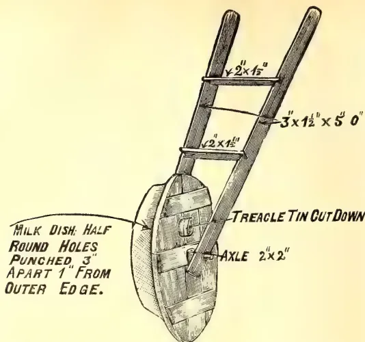
outer edge before the wheel is screwed on, leaving a lip to open and close to regulate the quantity of seed to be sown. A round tin hole large enough take a 7 lb. treacle tin should be cut about 1½ inches from the top and tacked in the hole for filling the sower. Two battens about 5 feet long with two cross pieces may be used for handles. The machine is wheeled along the furrow and sows very regularly.—Journal of the Department of Agriculture of Victoria, Vol. VI., Part 10, 10th October, 1908.
W. H. D.
In the West Indies Sea Island cotton is chiefly grown as a subsidiary crop to sugar-cane and not as a main crop.
In the Sea Islands, however, and in Carolina and Georgia, where Sea Island cotton is grown at all, it usually forms the most important and profitable crop in the rotation. Under these conditions, one of the chief points needing attention by the cotton farmer is the best means of maintaining the fertility of the land for cotton cultivation.
Artificial manures are frequently applied, but in Farmers' Bulletin 302 of the United States Department of Agriculture—'Sea Island cotton,' it is stated that one of the chief factors for keeping the land in good condition is the adoption of a rotation in which leguminous crops are prominent. Cow-
peas, velvet beans, and peanuts, all of which have been recommended for cultivation in the West Indies, are the chief crops of this kind grown, being found to give excellent results on the light soils most suitable for Sea Island cotton, and the rotation frequently extends over no more than two years, cotton being planted in one season, and a mixture of corn and cowpeas the second year.
On the whole, it is stated, the cowpea (Vigna catjang) is the most popular and widely-grown leguminous crop for growth on Sea Island cotton land. The peculiar advantages of this crop are that the plant is well adapted to poor land, it is easy to cultivate, and the produce is valuable as food for man and stock. The Iron cowpea is specially recommended for growth in connexion with cotton.
The velvet bean (Mucuna pruriens, var. utilis) is another crop which constitutes a valuable source of humus, and adds a large amount of nitrogen to the soil on which it is grown. This plant grows very vigorously, and its vines afford excellent fodder for stock. The plant, too, is immune to most diseases.—The Agricultural News, Vol VII., No. 165. August, 1908.
What we do not know about plant physiology will require the writing of many books and the realization of much experience before the agricultural
JANUARY, 1909.]65Scientific Agriculture.world will reach common ground in relation thereto. Animal physiology, including human physiology, has been making rapid strides, through the last two or three decades, largely because of its investigation along industrial and economic lines. So far as the work has been left to the medical fraternity, unhappily, they have not been able to develop much that is new; they, as a rule, being not only overworked, but underpaid in their ordinary vocation. The investigations of animal life by our scientific agricultural institutions have done much to aid humanity.
All of this, however, left plant physiology in the background and, as we now stand, we hardly know how plants live, breathe, drink, eat and die, as apparently they all must do, and probably similarly to all other living beings. In a recent issue of the West India Agricultural News there is reprinted from the Memoirs of the Department of Agriculture in India an article entitled "The Toxic Substances Excreted by the Roots of Plants." We reprint this in another column in this issue, but desire to cast our opinion against the accuracy of its conclusions, even if we have to use the Scotch verdict of "not proven." [Given in the last issue, page 563.]
The general tenor of the argument used is that some crops are found to do very poorly after certain other crops, when grown upon the land the following year. The inference is that the previous crop has secreted some toxic element in the soil inimical to the more recently planted crop. The first reference is made of cotton crops grown in Egypt, in which a certain grass was permitted to grow as a weed. It is recognized everywhere that grasses are inimical to the best growth of our so-called hoed crops. Just why this is, it is difficult to determine with the data we have, but we are led to believe that the grasses growing in with other crops consume the air, moisture and plant
nutrients of the soil and, generally, being indigenous, they are quite hardy and difficult to extirpate and survive in the contest that they are making with the cultivated crops, unless positively hoed out.
Why one crop following the other should be bettered or injured because of the previous crop, is not so well understood. It is understood that a leguminous crop enriches the soil and that any crop following it will probably be much benefited thereby. Sweet potatoes are not leguminous and yet we know that sugarcane will generally do very well in land that has been in sweet potatoes the previous year. We presume that this is owing to the fact that the sweet potatoes occupy the ground to some depth, and in their planting, cultivation and harvesting the soil will receive a degree of tilth not ordinarily given to standard crops like sugarcane and cotton. We are very much inclined to think that the author of the article in question is guessing at his conclusions, and this particularly as given in the fourth statement that the substance excreted by all crops is probably identical. All plant analyses show that the plants consume different quantities of the mineral constituents of the soil. If the plant absorbs all of its nutrition mineral constituents included, through its roots and in solution with water, then the excretion is, we believe, sent into the air through the leaves. And we believe that the apparently toxic effects of previously grown crop, on given lands have their origin in the exhaustion of the lands by the growth of such crops rendering them less fit for the successful production of subsequent crops. Everyone interested in scientific agriculture will do well to read the article herein referred to, as it comes from what is presumed to be a scientific agricultural authority in Bombay, British East India.—The Louisiana Planter and Sugar Manufacturer, Vol. XLI., No. 8. August, 22, 1908.
9 66[JANUARY, 1909.BY H. C. SAMPSON, B.SC.,
Deputy Director of Agriculture, Madras.
(Illustrated.)
Dry-land farming in the Madras Presidency offers great scope for investigation and improvement. In many districts such as Bellary, Cuddapah, Anantapur, Kurnool, Guntur and Nellore, the implements in use are admirably adapted for dry-land farming, but in the south, the plough and the land-hoe are the only common implements used for dry-lands.
Successful dry-land farming is intimately connected with the conservation of soil moisture, and the object of this article is to show how far this can be accomplished by judicious tillage under the conditions prevailing in the Madras Presidency. Before discussing the subject further it is necessary to explain the meaning of the term "soil moisture" as well as its sources and how it may be retained or lost. Soil moisture is the water which is held in the soil after the surplus has been allowed to drain away. This is necessary to dissolve the plant food which is in the soil and to convey it to the plant roots, but the surplus of drainage water is inimical to the healthy growth of plant as it prevents the aeration of the soil.
The sources of soil moisture are rain, subsoil water and atmospheric moisture.
Rain is the chief source, and it is of the greatest importance that the land should be prepared to receive it. A hard-baked surface cannot absorb much water; therefore, the surface should be loosened by tillage so that the rain can penetrate the soil. Subsoil water is another important source. Not only does the subsoil relieve the soil of its surplus water, but it can replenish the soil moisture when helped by proper cultivation.
Besides these two main sources, the soil can by its hygroscopic properties, not only absorb moisture from the air, but can retain this in considerable quantities if a good tilth is secured. Thus, in parts of Madras the heavy dews which are experienced are of great value.
The retention of soil moisture can be assisted by surface cultivation which
gives a loose surface soil or dry mulch. Deep cultivation and a firm soil will assist in keeping the soil particles together, and thus cause a more even distribution of moisture through the soil.
The following description will show how these principles are carried out in the dry-land cultivation of Madras. For this purpose the Presidency can be roughly divided into two tracts. In the former draught implements other than the plough are used, and in the latter the plough is, as a rule, the only draught tillage implement.
The former includes the black cotton soils of Bellary, Cuddapah, Anantapur, Kurnool, Guntur, and part of Nellore, as well as the lighter soils of these and of the Kistna district.
In the black cotton soil of this tract two types of plough are used. One, a heavy wooden plough which has now been largely superseded by a heavy iron one, and the other a much lighter wooden plough. The heavy plough is only used once every five or six years, and is followed by a very heavy bullock hoe, known as a "Bara-Guntaka" which works to the same depth as the ploughing. What benefit is derived from this latter operation is difficult to see. The plough works the soil to a depth of a foot or more. Ploughing is done during the hot weather and huge dry clods of earth are poised up and beneficially exposed to the air. In other years either the light country plough or the bullock hoe called a Guntaka is used for preparatory cultivation. (Plate XVI.—vide p. 67.)
In the lighter soils of this tract this deep ploughing is not practised.
Preparation for Sowing.—This work is usually done with the bullock hoe or Guntaka. If worked after the land has been ploughed, it is a very useful implement. It makes a fine firm seed-bed and brings any larger clods of earth to the surface which are broken down by subsequent rains. The practice of working the soil with the Guntaka without previous ploughing is sometimes practised. This is objectionable as only the surface is loosened and the soil below remains hard set and lacks aeration. Occasionally, when the rains are very late, some such method of cultivation has to be resorted to, but the "Gorru" or seed drill without the bamboo sowing attachment is preferable to the Guntaka. (Plate XVII.—vide p. 67). In some places this is weighted with stones and worked across the land in both directions, and
JANUARY, 1909.]
67
Miscellaneous.
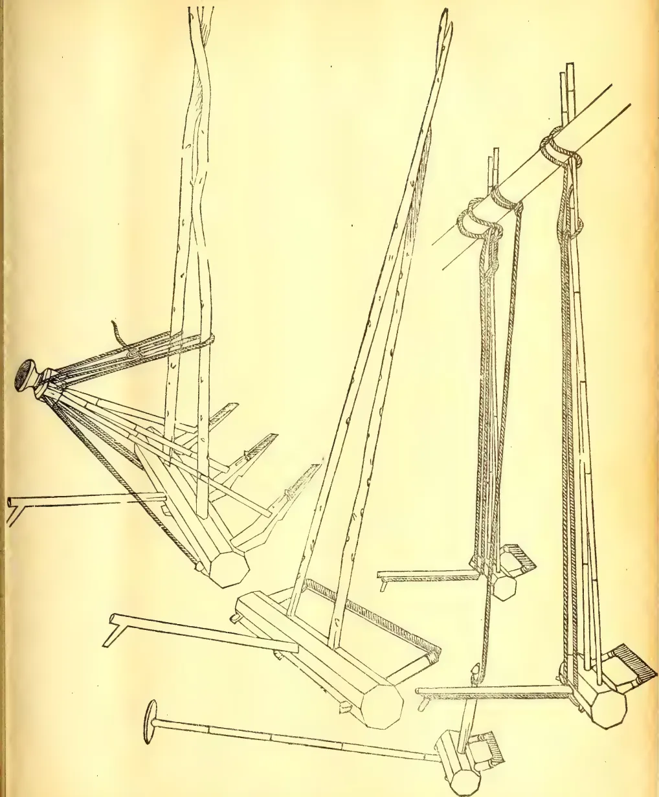
A detailed technical line drawing of a mechanical device, possibly a specialized tool or a small engine. The device features a complex arrangement of levers, rods, and pulleys. A long, thin rod extends from the top left, passing through a series of pulleys and connecting to a horizontal base. This base has several vertical supports and a central horizontal bar. To the right, another long rod is shown, also with pulleys and a horizontal base. The drawing is rendered in a clean, technical style with fine lines and hatching to indicate depth and texture. The overall structure suggests a mechanism for lifting or moving materials, with the pulleys and levers providing mechanical advantage. Miscellaneous.68[JANUARY, 1909.thus a large area can be worked in a day, and often the ploughing rain can be utilised for sowing the crop.
Sowing.—The seed is sown with the drill. This practice has many advantages over broadcast sowing. It regulates the space for each plant. Sowing can be done when the land is comparatively dry, as the drill can be set to sow at the depth where there is most moisture. Good germination is assured and there is a considerable saving of seed.
After cultivation.—Several implements are in use in different parts for this work, but the best are the Dunthalu which is used in the Bellary District, and a small Guntaka, which is a similar implement with a wider blade, and in the case of cotton and red gram is often used after the cereal catch crop has been reaped. The others work deep and throw the soil up round the plants forming ridges and furrows. The Dunthalu consists of a set of three to six small bullock hoes which are latched to a wide yoke pole and is drawn by two bullocks (page 67). Each hoe or danthi has an iron blade some 9 inches wide, which the driver guides between two rows of the crop. The hoeing is done after a good rain has fallen, but as a rule the farmer does not seem to realise that the operation is just as necessary when the surface has caked after a light rain, and, in consequence, this implement is seldom worked more than two or three times.*
Throughout the Tamil country and in Malabar the plough is, with few exceptions, the only tillage implement for dry cultivation. In Malabar the conservation of soil moisture is not so essential owing to the heavy and continuous rainfall during the growing season. Ploughing commences with the close of the monsoon, and is continued afterwards until the early sowing rains commence in April and May. In the dry Eastern Tamil country the rainfall is limited, and does not admit of repeated ploughings before the sowing rains. The land is usually left untilled until a ploughing rain falls, when as large an area as possible is ploughed. About four ploughings are usually given. The ryot then waits for a sowing rain when the seed is sown broadcast and lightly ploughed in. The subordinate pulse crop, usually Cajanus indicus or Dolichos lablab, is sown immediately afterwards, the seed being dropped behind a light plough. In a few districts the value of a firm seed-bed is appreciated, and after sowing, the soil is made firm by dragging a roughly made brush harrow across the
ploughing. In parts of Tinnevelly also the ryots cultivating red soil have an implement made like a large wooden rake which is used to break the surface crust and assist the growth of the young crop. When the crop is established, the plough is worked through it. This rough and ready method of cultivation gives a good crop in good seasons, but if the rain fails, the result is often a partial or complete failure.
In parts of South Arcot this practice of ploughing through the crop has been entirely given up in favour of the more efficient practice of hand hoeing. Here the dry cereal is considered as a catch crop for the groundnut crop, the seed of which is dibbled in after the cereal is well established. The land is often hoed two or three times. The first hoeing includes weeding and thinning, while the others are mainly for loosening the soil surface, and is done even if the land is perfectly free from weeds. The introduction of the harrow into the Tamil country would be an immense advantage. If used instead of the plough, the surface soil alone would be loosened and thus the soil moisture would be better conserved. The ground would be left level instead of in ridges and furrows, which are always objectionable in the case of a dry crop as the ground soon dries out and subsequently rain runs down the furrows before it can soak in. If the harrow were used instead of the hand hoe, the cost of the work would be greatly reduced and the farmer would be able to complete the work in less than a quarter of the time. The time that this operation takes is of great importance on the lighter soils. A harrow made in the shape of an equilateral triangle has been found to answer this purpose well, and is not too expensive or too elaborate for the ordinary cultivator. This and other implements used in dry cultivation are illustrated.—Agricultural Journal of India, Vol. III., Part I., January, 1908.
HELD UNDER THE AUSPICES OF THE
WELLABODA PATTU (GALLE) LOCAL BRANCH,
19TH DEC., 1908.
This show was opened by the Government Agent, Southern Province, and was attended with success. It was the second Show for the year, the first being held at Hikkaduwa in the latter part of February.
The exhibits were confined to vegetables, of which there were large collections. Considering the lateness of the vegetable season, the exhibits were good. Many of the exhibi-
JANUARY, 1909.]69Miscellaneoustors had also competed for the awards for the Vegetable Gardens and Transplanted Paddy plots for which separate prizes were given.
In judging I had the kind co-operation of Mr. de Livera, Atapattu Mudaliyar, Matara, and Mr. J. M. Wickramaratne, Proctor. The awards included four cash prizes and two certificates, and three special awards were recommended for single specimens of capsicum, snake gourd and tea.
Capsicum, chillies, pumpkins, cucumbers, melons, brinjals, kekiri, and bread-fruits made a very good show.
Of yams there were excellent collections, sweet-potatoes and cassava being particularly good.
Some good oranges and jak-fruits were also found among the exhibits.
N. WICKRAMARATNE,
Agri. Instructor
The reading of the paper on the above subject (given on page 569 of the Dec. issue) by Mr. W. A. de Silva, before the meeting of the Board of Agriculture on the 3rd December, was followed by the following speeches —
Dr. WILLIS:—I think, Sir, it is a very satisfactory sign of the times that the Society is beginning to realise clearly that before you can make progress in Agriculture you have to make progress in the preliminaries of agriculture. In Ceylon we have hardly yet got through the preliminaries, and yet we have been trying too much to attend to the agricultural part. With regard to European planters they have passed, so to speak, through the preliminaries; but the native cultivators have not, and it is consequently almost idle to introduce new things amongst the villagers, because they have not got the necessary preliminary conditions to go on with. The two principal things on which the whole industry rests are
and unless we have sound conditions as regards these it is hopeless to go ahead to any serious extent and get the people to take any great interest in growing things which must be sold in outside markets. Consequently it is a very good thing to see that these papers tend to increase generally the interest taken in the question of the small co-operative systems for the supply of money. I use the word in a broad sense. It may be in the supplying of paddy seed, in manures, in sell-
ing produce in Colombo. It may be anything you like, but the central principle is co-operation amongst the poorer classes, to enable them to carry out what would otherwise require the capitalist to put through. In this country I have been trying to induce town Societies, who have, presumably, a little money, to help their village brethren—for whose benefit, after all, we were established,—by starting co-operation for the sale of produce and the supply of manures, and so on. The ordinary villager has no money at all, and consequently he cannot hope to do anything beyond live from hand to mouth. I think, therefore, it is very satisfactory indeed to see the tendency which is coming over the whole country to attend to these preliminaries. Transport, thanks to Government, is very well developed on the whole in Ceylon and there are sufficient villagers along the branch roads and railways to carry out any agricultural improvement that is necessary. The essential weak point of the whole Ceylon system of agriculture is money. To raise the people to a higher plane you must first of all attend to the preliminaries of agriculture, and find them money. This must be forthcoming before you go ahead in agricultural matters strictly so called. * (Hear, hear.)
H. E. the GOVERNOR:—Equally with Dr. Willis I welcome the appearance of two papers such as those under discussion. Members may recollect that when I assumed the administration of the Colony I hesitated, as naturally I would do for some little time, to give an expression of opinion regarding the agricultural requirements of the Colony. However, you gentlemen have seen, and the community generally have seen, rather lengthy references to loans to native agriculturists in the despatches which I sent to the Secretary of State. The Secretary of State has approved of the proposal that funds shall be voted to assist agriculturists, but he requires regulations on the subject to be submitted to him. It is particularly valuable to me as the Governor of the Colony to have papers before me such as those which have been read or taken as read, and I may say I shall welcome any expression of opinion and recommendation from those who are qualified to write upon the subject and advise how best agriculturists can be assisted in such a manner that we do not pauperise
* It may make matters clearer if we add the following note. The preliminaries to agriculture are land, climate, labour, transport, capital, drainage, irrigation, tillage, education, and suitable crops. The most important are land, capital, education and transport, so far as Ceylon now is concerned and until the villager has land available, transport facilities, and capital to work any improved method or new crop, he cannot progress beyond his present state. We called attention to this at the very first meeting of the Board.—Ed.
Miscellaneous.70[JANUARY, 1909.them more than these poor fellows already are. We want to increase their self-respect and at the same time deliver them from the clutches of the money-lender. It was at a very early meeting of this Society that I referred to the system of usury going on in this colony. It was my endeavour to grapple this ogre of usury, but when it came to prospective legislation I found the whole matter was rife with difficulty. It was in consequence of this that I came to the opinion that it was the Government themselves who must come to the assistance of the people—train the people, educate the people, help the people. As Mr. de Silva has said, this must be done on strict business principles. It must be done by co-operation with the people, working with the people, and the people themselves must do a great deal to come to the state of perfection to which Mr. de Silva points out now exists in Denmark. We have of course a very uphill game to fight. Our Ceylonese cultivators, unfortunately, are extremely apathetic and have to be shown the value of labour. I quite fall in with Mr. de Silva when he says their efforts through the year should not be devoted simply to the paddy patches, but that they should go in for other means of making a livelihood. It may yet be found that by improving the state of agriculture generally that the solution of the food question is not to be found altogether in the extension and development of rice fields, but that other food products may be raised such as Indian maize, which is not received with that disfavour which it once was. As I say, the members of the Society and the Government,—everybody concerned who takes an interest in agriculture—have a weary, stiff problem before them in order to bring this lesson home to the people. For instance, Mr. de Silva points out quite rightly the wretched yield of rice per acre. What is that due to? It is due in a great measure because the people will not transplant the paddy, except in a few districts such as Kegalla and on the South Coast, but will still insist on scattering the paddy broadcast and rearing it in a way which gives small returns on a wasteful expenditure of seed paddy. H. E. then repeated that he would be only too glad if communications such as he had referred to were sent to his Private Secretary.
Mr. F. C. ROLES:—Your Excellency, may I be allowed to make a few remarks on Mr. de Silva's paper? My attention has just been directed to a reference in the paper to the subject of Burma rice. That is a subject of much and of growing importance. I have had a few words with Mr. de Silva and pointed out to him that there is no prejudice amongst the labourers against Burma rice. It is the raw product only that they object to because of their
method of boiling once in 24 hours. Steamed rice has been imported from Rangoon, which has been highly reported on by a number of estate superintendents, kanganies and coolies. The remarks regarding white Burma rice, farther on in the same paragraph, has reference to rice which has been imported, here for many years. It is used for confectionery and hoppers and not on estates, and it is white Burma rice because the inner skin has been removed; that skin is left on in cargo, or Loonzain rice, which is the kind of rice required for consumption on estates. By a second hulling the number of paddy grains can be reduced to a minimum of 2 per cent. If that paddy is steamed first and hulled afterwards it is entirely acceptable to the consumer. Now it is simply a question of price and further efforts are being made, as a sequel to the discussion of the subject in Ceylon and in Rangoon and neighbourhood, in steaming on a small scale. At the present time there are small shipments in the off season; and considerably increased quantities are expected in the coming season. (Hear, hear.)
Mr. J. S. J. McCall:—Your Excellency, gentlemen: Althouh a visitor, I would like to say a few words in answer to this question of loans to agriculturists, as we had the very same problem in Egypt, where I was Agricultural Lecturer for three years. We could not get money to improve matters. But, by the Government taking an interest in the subject, we managed to get the leading agriculturalists in the country—those who had the money—to form among themselves an Agricultural Society, and a large number to put money into this Society. The Society purchased manures from the manure firms, guaranteed their purity, distributed them to the different villages, and sent men who were qualified to deal with the question of manuring to superintend the application of the manures to the village fields. At first the manures lay by the hundredweight in the villages, and the villagers said: "We will not touch them. We have been cultivating rice, wheat, barley and the different crops of the country for centuries, and we are not going to alter our methods"—in the true Mohammedan style. The Society replied: "We will present to you these manures. You may apply them to half your fields, the other half do with as hitherto in your methods and compare results. If your crops suffer from the application of the manures, we, as a Society, will guarantee to compensate you, but if the crop benefits over the price of the manure we will expect you to pay us the price of the manure." That was the state four years ago, and the result was that last year the Khediveal Agricultural Society imported £175,000 sterling of artificial manures, and could not supply the natives quick enough. We absolutely
JANUARY, 1909.]71Miscellaneous.could not get the manure into the country quick enough; and the effect of manuring on the general agriculture of the country was that, four years ago, the price of straw, etc., in Egypt was nearly double the price that it is at the present day, as the increase of crop owing to the beneficial action of the manure put a larger quantity of produce on the market. Some people might think that this would result in no benefit to the cultivator; but that would be a mistaken idea, as artificial manures applied carefully, in the correct proportions and the correct manures to the correct crops, seldom give less than 100 per cent. on the cost of the manures. The natives of Ceylon know nothing about manures, but that is not to their discredit. Only 10 years ago in Great Britain there were very few farmers who knew anything about artificial manures. Some people have the idea that manures are very flexible quantities: this is also a fallacy, as a manure has only a definite value and can only give a definite increase, and this increase to a large extent is dependent on the right manure being put to the right crop.
DR. WILLIS—referring to what Mr. McCall had said—remarked that he had been round the districts where at present artificial manure is unknown. Some said they knew nothing about it and some said once manuring was started they must go on with it. That was of course true. It was an essential condition to progress in anything. He said it had been pointed out, and the suggestion he thought was a sound one, that it would pay in the long run if the Parent Society in Colombo were prepared to supply local societies with small quantities of selected manure for trial in the districts. That might be tried on the lines Mr. McCall spoke of.
G. E.—The Centre of Agricultural Education in the Madras Presidency is Coimbatore, where there is a College and a farm of 450 acres. Apply to the Principal for syllabus. The course is a three years' one.
W. DE S.—The cultivated anatto bears a pink flower, but there is also a white variety. It is the former that is commonly cultivated, but the white flowered variety is found semi-wild in India, the natives believing that it is indigenous. The principal use of the dye is for colouring butter and cheese. It is usually dissolved out with olive oil.
TOMATO.—The following system of manuring tomatoes is recommended by the Queensland Agricultural Journal:—2 parts nitrate of soda, 2 of bone meal,
3 of kainit, 4 of superphosphate. Apply 1 oz. per sq. yard weekly, slightly covering, from the time the plants are established till the fruit has set.
DANICHA.—This is an Indian name for Sesbanea aculeata, which is well thought of as a green manure and is also a fibre plant. It is closely allied to our "Katurumurunga" and is being grown experimentally at the Government Stock Garden.
B.—The author of "The French Garden" is C. D. McKay, F.R.H.S. He describes the work as "A diary and manual of intensive cultivation." The book can be consulted in this office.
F. E. F.—No, the cherimoya will not do at Colombo elevation, so that you may not grow this delicious fruit in your own garden.
M. G.—The Coorg is a much smaller orange than the Nagpur. The latter is more after the style of our best King oranges.
"CHOW MÆLLIER."—This is being tried at the Government Stock Garden. The plant belongs to the cabbage family. Its value is as a cattle food.
GARDENER.—Have you tried bone meal? I would recommend your giving up heavy applications of cattle manure for a time, as the orange trees have most probably had enough of nitrogenous food and want more of phosphate for fruit formation.
BY J. C. WILLIS.
We propose to go on publishing this literature, which we find is regarded as very useful by many correspondents scattered over the world, and begin to-day a Second Series.
While at first these lists were concerned almost purely with economic botany, they have gradually had other subjects added to them. The date of each new heading may be ascertained from the dates of the articles mentioned under it, and no attempt has been made to go back.
Mr. Lock, who will act for me during my absence, having undertaken to keep up the lists of literature, there will not be the same gap as there was in 1902-3.
Miscellaneous.72[JANUARY, 1909.It may be worth remarking that under such heads as Sugar, Vines, etc., no attempt is made to keep up with temperate-zone literature.
Aberia—cf Fruits.
Willis, Miscellaneous Economic Plants I. Aberia. "T.A." Oct. 1908, p. 339.
Acacia—cf. Tans.
Catechu and catechu boiling: Latham in Ind. Forester, May 1906, p. 248.
Wattles. Queensland Agr. Jl. Dec. 1898, p. 467.
Cultivation of Australian wattle.
U. S. Dept. Agr. B. P. I. Bull. 51.
Wattle bark. Queensl. Agr. Jl. Dec. 1904, p. 730.
L'exploitation de la Cassie dans le bassin méditerranéen. Journ. d' Agr. Trop. Aug. 1906, p. 239.
Ueber Rinde und Gummi der Gerberakazie (A. decurrens) Der Pflanze 16. 12. 05, p. 353.
L'acacia à tan au Natal. Journ. d' Agr. Trop. 1906, p. 272.
Maiden. Wattles and wattle-barks. Sydney 1906.
Ueber black-wattle-wirtschaft in Natal. Tropenpfl. 1906, 445.
Ueber black-wattle-wirtschaft in Sud-Afrika. Ber. Deutsch Ost-Afrika Oct. 1906, p. 1.
The wattle bark. "T.A." Apr. 1906, p. 209.
Acacia Catechu. Agric. Ledger, V. P. Series 95, 1906.
Die Gerberakazie. Tropenpfl. 1906, p. 578.
Zimmermann. Ueber die Keimung der Samen von Acacia decurrens nach behandlung mit concentrirter Schwefelsäure. Der Pflanze 1906, p. 305.
Wattle growing. Journ. Dpt. Agr., Vict. 1907, p. 432. "T.A." Sept. 1908, p. 219.
Wattle cultivation in German East Afrika. Bull. Imp. Inst. 6, 1908, "T.A." Aug. 1908, p. 121.
Indian wattle bark. Ind. Forester, Oct. 1908, p. 612.
Gerberrinde. Der Pflanze 1907, p. 252.
The Wattle industry in Natal. "T.A." Agr. 1908, p. 378.
Botanisches über Gerberakazien. Tropenpfl. Feb. 1908, p. 24.
Production and cultivation of wattle bark. Imp. Inst. Bull. 6, 1908, p. 157. "T.A." Nov. 1908, p. 419.
Indian wattle bark. Ind. Agric. Aug. 1908, p. 240.
Aeschynomene.—
Note sur le Sola ou A. aspera. Bull. Jard. Col. Sept. 1906, p. 248.
Agave.—
Miscellaneous. cf. Sisal Hemp, Fibres, etc.
Agaves and soil denudation. Agr. News. Mar. 1908, "T.A." Aug. 1908, p. 123.
The pulque maguay of Mexico, do. Sept. 1908, p. 287.
Endlich. Der Ixtle und seine Stammpflanzen. Beih. z. Tropenfl. IX. 5, Oct. 1908.
Agriculture—General.—
Cultivation of the soil. Rep. Farmers' Inst. Ontario, 1898-9, p. 100.
Zur Lateritfrage. Tropenfl. 4, 1900, p. 39.
Campbell system of soil culture. Ind. Agric. Mar. 1900, p. 90.
Windmills in India. Ind. Agric. Aug. 1903, p. 238.
Recent work in Agricultural Science. E. S. Record. June, July 1907.
Results in investigations in soil management. Year-book U.S. Dept. Agr., 1903, p. 159.
A few points regarding conservation of soil moisture. Milne. Agr. Jl. Ind. July 1908, p. 220. "T.A." Nov. 1908, p. 463.
Science in Agriculture. Helms. Agr. Gaz. N. S. W. Aug. 1908, "T.A." Nov. 1908, p. 466.
Dry land farming in the Madras Presidency. Sampson. Agr. Jl. Ind III. 1908, p. 33.
Note on Agriculture in Japan. Nicholson. Madras Govt. Press. reviewed by Shearer in Agr. Jl. Ind. III. 1908, p. 53.
Agriculture.—Education, Schools, etc.
Agricultural Education in the Schools. Trans. Mass. Hort. Soc. 1908, p. III.
Agriculture.—Finance, Markets, etc.
See Ind. Agric. 1904, p. 171. (Ind. Govt. bill.)
A successful agricultural bank. do. p. 236.
Raiffeisen agricultural banks. W. Ind. Bull. 6, p. 129.
Agricultural Banks for Ceylon. "T.A." Sept. 1906, p. 268.
Agricultural credit in Germany. "T.A." June 1906, p. 425.
Agricultural credit banks. "T.A." Apr. 1906, p. 249.
Farmers' cooperative societies. do. p. 254.
Cooperative credit and the United Provinces, India. do. Oct. 1906, p. 330.
Cooperative credit and the central bank. Ind. Agr. Jl. 2, p. 47.
Agriculture.—Organisation, Department, etc.
The U. S. Dept. of Agriculture. Main. Agr. Jl. Ind. III. 1908, p. 24.
JANUARY, 1909.]73Miscellaneous.Agriculture.—Tools, etc.Machine for cutting guinea grass. Agr. News, 1904, p. 21.
Ploughs and ploughing. Queensl. Agr. Jl. June 1904, p. 457.
Agricultural tools. "T.A." Apr. 1906, p. 199.
A review of the present condition of the spirit industry in the Philippines, Manila Daily Bull. 3.11.07, "T.A." July 1908, p. 63.
Aleurites.—cf. Oils.The Candelut tree. Ind. Agric. Mar. 1908, p. 81. "T.A." Aug. 1908, p. 120.
Les Aleurites de Tonkin. Bull. Ec. Indoch. 1908, p. 425.
Aleurites moluccana. Agr. Ledger 4 of 1907. V. P. Series 103.
Pimento growing in Jamaica. do. VII 1908, p. 5. "T.A." June 1908, p. 545.
The pimento industry in Jamaica. "T.A." Supp. Dec. 1907, p. 134.
Kuskus root. "T.A." Apr. 1908, p. 319 (from Agr. News.)
Annatto.—cf. Dyes.Cultivation and utilisation of annatto. Imp. Inst. Bull. 6, 1908 p. 171. "T.A." Nov. 1908, p. 418.
Argania.—cf. Oils.L'Argan. Les vegetaux utiles de l'Afrique trop. française II. 1907.
Argemone.—cf. Weeds.Argemone mexicana. Agr. Ledg. 57 of 1907. V. P. Series 104. "T.A." Sept. 1908, p. 215.
Noteon Argemone mexicanan Maiden. Agr. Gaz. N. S. W. Oct. 1908, p. 829.
A leaflet on Arrowroot. Drieberg. "T.A." July 1908, p. 65.
"THE QUEEN OF FLOWERS."
A sudden gush of light and odours bland,
And lo—the Rose! the Rose!
The rose has very justly been designated the Queen of Flowers. So full of beauty and charm is the rose, and so numerous are the points of interest connected with it, that chapters could be written about it. In all ages and by universal consent, throughout the civilised world, undisputed precedence among flowers has been conceded the
rose, "Queen of them all." The favourite flower for all time, as such it has place in general literature that no other plant can rival. In the sacred writings, by classical authors, by the poets of all countries, this "Queen of Flowers" is the epitome of beauty and fragrance, the emblem of refined sensual enjoyment, "richer and sweeter far than aught before." The rose is woven in the ancient Greek Anthologies. In the Planudean Anthology occur some beautiful couplets ascribed to more than one writer in which the wish is breathed :
Oh that I were yon blushing rose,
Which even now thy hands have pressed,
That I might love in sweet repose,
Reclining on thy snowy breast!
Plato presents a lovely picture of the God of Love laid asleep among roses, with the bees settling upon his lips; and there is a favourite passage from Julian :
Twinning a wreath, I found one day,
Love that among the roses lay.
The rose was dedicated to Awrora as the emblem of youth; to Venus of beauty; and to Cupid of fugacity and danger. The latter is said to have given it as a bribe to Harpocrates the God of Silence, hence the saying "under the rose." Modern feelings have run into the same sort of amorous fancy as that of the earlier writers, for have we not Romeo in Shakespeare expressing the wish "Oh that I were a glove upon that hand," etc. Burns who it is thought knew little or nothing of the Greek anthologists seems to have fallen into their style and instinctively adopted their spirit :
Oh that my love were yon red rose
That grows upon the castle wa'.
And I myself a drop of dew,
Into her bonny breast to fa'!
And we have writers all along descending on the admirable qualities of the rose. It has been the subject of scientific monographs and of floricultural disquisitions, and many are the writings extant about it. The species which has been
CULTIVATED FROM THE HIGHEST
ANTIQUITY,
is supposed to be Rosa Centifolia, the Cabbage or Province Rose, a flower which possesses in an eminent degree the admirable qualities of the tribe. Roses have been grown for so many centuries and have been crossed and recrossed so often that it is difficult to refer the cultivated forms to their wild prototypes. The older roses are thought to have originated from R. gallica, a native of Central and Southern Europe,
Miscellaneous.74[JANUARY, 1909.R. Centifolia, a native of the Caucasus, contributing its share. Under natural circumstances rose flowers do not secrete honey, the attraction for insects being provided, according to Muller, by the colour and perfume and the abundance of pollen for food.
The cultivation of the rose affords employment to thousands of human beings—cultivation for the table and for the manufacture of attar and rose water. R. damascene is cultivated in some parts of Roumelia and in India, chiefly near Ghazipur, for the purpose of making attar and rosewater. Drury mentions that it takes 200,000 roses to yield the weight of a rupee in attar and this quantity sells on the spot for R100. In Europe rose water is chiefly produced from R. Centifolia, grown for the purpose at Micham, and much more abundantly in the South of France. Conserve of roses and infusion of roses, two medicinal preparations retained for their agreeable qualities rather than for any special virtue, are prepared from the petals of R. gallica, says an old writer. Conserve of dog roses is made from the ripe hips of the dog rose, R. canina. Its only use is
The cosmopolitan character of the rose is wellknown and it flourishes equally well in sub-Alpine as in equatorial regions; and the patient skill of cultivators has been successful in depriving it of one of its attributes—it has ceased to be an emblem of Summer, "pride of the Summer, garden queen." By making careful selections of species and rearing hybrids, varieties deservedly called Perpetual have been obtained, and, so far as cold countries are concerned, roses can be got now at any season.
Of all plants grown in Ceylon for the sake of their flowers, as in other countries, none have gained so much admiration as the rose. It has been rightly said that a garden without roses is a misnomer. But how many there are in this country who, possessing the material, do not set about in the right way of doing things. By far the most effective way of growing roses is to have them distributed through every part of the garden.
The rose is propagated by seeds, cuttings, layers and suckers (in the case of plants on their own roots), and by budding and grafting. Seed-sowing is only had recourse to with a view of obtaining improved varieties. Layering is performed by simply bending the shoot or shoots, desired to root down to the ground, cutting the same half way
through longitudinally and pegging it down at that point, so that the wounded surface shall come in contact with the sandy soil, watering in dry weather to keep the soil moist. After it has rooted effect separation with a clean cut. Budding and grafting are the modus operandi generally followed at the perpetuation of the rose and many choice trees and shrubs as well. These methods, however, had better be left to expert growers, and we will proceed to the
There is no difficulty in raising one's own roses from cuttings. The cutting should be prepared by clipping off side shoots, but do not remove the leaves; six or eight inches is long enough for a cutting; see that it is cut off straight at the base just below a knot or bud, or left as it has been slipped off the branch taken off with a heel, that is with a little of the old ripened wood attached.
The rose grows vigorously in most kinds of soil. Good ordinary garden soil will produce the rose large enough, but to grow it into perfection a bed should be previously prepared. The rose does best in a light free soil, a little fresh, amended from time to time with some well-decomposed manure. A calcareous soil is especially recommended. Delicate varieties do best in fertile, sandy soils, and in peat earth. The dog rose grows vigorously in stiff earth. For nearly all roses, however, the soil can scarcely be too rich. The plants delight in a stiff loam liberally incorporated with manure, and no excellencies of variety, climate, or culture can compensate for the absence of this indispensable resideratum. Where the natural soil is light and sandy, the whole bed should be removed to a depth of two feet, and replaced with the richest natural fibrous loam at hand, or leaf mould, thoroughly mixed with decomposed dung. The
in the ground is that which is called a clay loam, that is, which is neither black soil nor sandy soil. A clay loam is more retentive and does not dry so soon as sandy soil. A sunny position with free wind is desirable; shade and closeness induce a number of fungoid and insect diseases. Thorough preparation of the soil with manure is desirable however suitable the soil itself may be. The bed should be clear of the roots of surrounding trees which would impoverish the soil and rob the plants of the nutriment intended for them. This could be guarded against by cutting a deep drain round the beds. After the bed has been prepared open a shallow
JANUARY, 1909.]75Miscellaneous.trench, about six inches deep across it and place the cuttings inclined against the steeper side four to five inches apart about which sprinkle some sand, river sand for preference; fill in with the soil and press firmly around the cuttings. Open the next line about seven inches distant and proceed in the same manner, finally passing the watering-can lightly over the bed. Most rose growers prefer pot culture, evidently with the object of being able to move the plants from place to place. But the bloom of pot plants is not always so satisfactory as those from plants grown in the ground. The soil for pot plants should be made up of river soil or alluvial loam, failing this, loamy cabook material, and half manure. If the manure is not old, earthworms and white ants are generated; and old manure will sometimes contain the larvæ of the Chafer Beetle—destructive to rose trees by eating the root. The best plan is to spread out the manure and let the birds and chickens pick up the grubs and sift it before using. Soil, too, sometimes contains the eggs of earthworms and in that case it should be incinerated. Burning the soil would effect great improvement in the case of clay soil, rendering it light and less retentive of moisture. The addition of leaf mould would greatly improve the quality of the potting soil. It is obviously necessary
that they should be kept shaded and the ground kept moist until they make steady young growth. Cadjans or bamboo tats would do very well for shading; and once the slips have established a footing the sunshades should be removed. The rose plants, like most other, should be judiciously watered and not swamped. In Nature vegetation makes little progress during incessant rains; but as soon as the rain ceases and the sun shines, the grass and weeds, and cultivated crops spring up. In like manner, if the soil round the rose plants is kept continually damp and the sun and air not allowed to circulate through it, the plants are sure to be unhealthy.—HORTUS in the Ceylon Independent.
This is one of the oldest phases of good kitchen gardening, yet it is safe to say that none is less perfectly understood by the majority of cultivators. The reasons for this failure on behalf of cultivators to grasp the elements of the rotation of crops need not be sought for in vain, the chief one being that hard-and-fast rules cannot be laid down
concerning what particular crop shall succeed an existing one, and also that in many cases the grower has only a partial control over circumstances, and consequently is obliged to do the best he can with the soil at his command.
At the outset it may be as well to briefly consider the principles which underlie the rotation of crops. The chief object with most cultivators in changing crops is to get the best possible results from the soil, the idea being that different classes of plants require different kinds of food for their upbuilding; and there is, no doubt, a lot of wisdom in such a course. Another point, however, which is frequently overlooked, but which is equally or even more important, is the fact that certain diseases and pests attack certain plants only, and therefore by keeping these plants off the ground for two or three years a disease may be eradicated. Club-root of the Cabbage family is a disease which may be mentioned as an example.
As previously stated, a cultivator frequently has to do the best he can under existing circumstances, and often these are such as to render it imperative to overlap crops which would be much better if given entirely fresh ground. There are, however, many gardens wherein it is possible to give the various plots a change of crop each season, and wherever such a course is possible every effort should be made to adopt it.
As the question is naturally a very complicated one, only general indications and hints as to carrying out the work can be given; but these, coupled with intelligent application, will, I hope, prove of some use to amateurs and others who have only given the matter a passing thought. Taking the Cabbage family first, it has been proved that all the members thereof require practically the same kinds of food, and in addition, as previously stated, all are subject to attacks of club-root and other diseases and pests which do not attack some other classes of plants; hence it would be unwise to let a crop of Cauliflowers, for example, to be followed by spring cabbages, as the former will, to a great extent, have exhausted the soil of those particular foods needed by the Cabbages, and any disease which might have been present on the first crop would almost certainly make a host of the second. In practice it is found to be a good plan to let deep rooting crops, such as Parsnips, Carrots or Beetroots, follow any of the Cabbage family.
Potatoes, again, are another crop which ought not to occupy the same ground two years running, as they are veritable gluttons so far as potassic manures are
Miscellaneous.76[JANUARY, 1909.concerned, and in practice it has been proved that much better results can be obtained by only cropping a certain plot with potatoes once in three years. Any of the Cabbage family, Peas, Beans or Onions may, with advantage and safety, follow Potatoes, Carrots, Parsnips, Beetroots or Celery. Generally speaking, Beans should not follow Peas nor vice versa, and this applies to any kinds which are closely related or belong to the same family, hence Tomatoes should not follow Potatoes. The same general remarks apply to flowers, and any Sweet Pea enthusiast, for instance, will avoid growing his favourites on the same soil two years running if he possibly can.
In gardens where rotation is impossible of course the food difficulty is overcome to a great extent by judicious manuring, but the question of disease or insect attack can be only thoroughly dealt with by keeping a particular plot free from a crop that is likely to be attacked, for several years.—Garden, Vol. LXXI., No. 1923. September, 1908.
In organizing the several experiment stations of the State of Louisiana some twenty years ago, Governor McEnery and Dr. W. C. Stubbs selected a site in the hills of Ouachita parish in North Louisiana for an experiment station, which should be adapted to the needs of the hill-farmers in contradistinction to those of the alluvial lands and the prairie lands and the pine flat lands. Right from the start the station at Calhoun became one of the most popular in the State and excellent results were at once perceptible. The entire farming community within reasonable reach was affected by the station's influence along educational lines in improved farming, and that good work has been going on ever since. An Agricultural Society was organized, which held monthly meetings, and this brought in hundreds and sometimes thousands of visitors to the station. This led in turn to agricultural camp meetings, and finally to a Camp Meeting Fair, the various visitors bringing in from their farms specimens of their home products; and now the annual fair on the experiment station grounds at Calhoun has become a permanent feature, and the display of Louisiana products there would satisfy the most sceptical as to the capacity of our State to produce almost any known agricultural product, and to produce it, if you please, in the hills of North Louisiana.
where the lands are not considered as fertile as the alluvial lands. In a test made some years ago of the amount of corn grown comparatively, Governor M. J. Foster was one of the Examiners, and by actual test, measurement of the land and weight of the corn gathered, it was found that the production of corn equalled over a hundred bushels per acre. Of course no such crop is grown generally in the hills of North Louisiana, nor anywhere else in the United States, but it shows what can be done there with intense culture.—Louisiana Planter and Sugar Manufacturer, Vol. XXXI., No. 13, September, 1908.
The new Agricultural College at Sabaur, of which Sir Andrew Fraser laid the foundation-stone recently, is an undertaking which ought to rouse the utmost enthusiasm throughout Bengal. It is almost the first step towards the establishment of genuine technical education in this Province, that is, education which applies the results of scientific research to a great staple industry, and which enables those engaged in that industry to do their work scientifically. When the College is completed, Agriculture, which is the chief industry of Bengal, will begin to receive upon an adequate scale the benefits of modern science. Hitherto, though agricultural training has not been wholly neglected, the efforts made in that direction have been tentative and have been rewarded with indifferent success. As Mr. Gourlay mentioned in his admirable sketch of the course of events which has led to the establishment of a College, officers of the Provincial Service were sent to Cirencester to be trained, and later instruction in agricultural subjects was given at Sibpur. But the results were not satisfactory and the Province gained little except, perhaps, the services of the late Mr. N. G. Mukerji. Agriculture in Bengal may, therefore, be said to be now at the opening of a new era. No pains have been spared to secure a site for the new College where it will be easily accessible, and where land will be available on which as many as possible of the principal crops of the Province can be experimentally cultivated. These conditions are fulfilled at Sabaur. As for the College itself, it is clear from Mr. Gourlay's lucid description that every need of the agricultural student has been carefully anticipated. If the choice of the staff is equally felicitous, Bengal
JANUARY, 1909.]77Miscellaneous.will have an ideal institution, and we hope that Mr. Gourlay may be as fortunate in this respect as in others. He will, of course, realise that while high scientific attainments are desirable qualifications, as is equally necessary that the professors should be capable teachers, endowed with sympathy and with the gift of winning the confidence of their students. A blunder in the selection of the staff will largely neutralise all the work that has hitherto been done. But, given the right men at the head, what may not be accomplished?
Capable teachers will attract capable students. This is a point of great importance. It must be remembered that agricultural science has yet to justify its existence in this country, and, mainly because its practical advantages are not appreciated, the education given has so far failed largely to appeal to the right kind of student. Sir Andrew Fraser wisely said that he does not believe that the best men for the purpose in view are those who, having received a certain amount of arts training, are sent abroad for agricultural education. "These men are not hereditary agriculturists. They have no interest in agriculture. They have not the agricultural instinct. They know nothing about the land or about agriculture." It may be added that they know little or nothing about the ryot, and are not likely to be able to exercise any influence over him; and, when all is said, if agriculture is to be improved it must be improved with the help of the cultivator. Sympathetic and practical teachers may, however, be expected to attract the hereditary agriculturists, who will find no difficulty in recognising in competent instructors men who know more about their own industry than they themselves.
Such students, when secured, will, in Dr. Mann's phrase, be "a body of men who will be apostles of a better agriculture to every corner of the country." They are wanted, as Sir Andrew Fraser sagaciously points out, to replace the experts that are now imported. Agriculture, at least, must be a Swadeshi industry, and "we shall never," to quote the Lieutenant-Governor's words, "have full advance in agriculture in the province until we are able to enlist men trained on the land, and educated mainly within the country, to do the great part of the work." We are glad to see that the Government have set before them this ideal, which ought to go far to win for the new institution a wide popularity, and which is in any case a condition of any real and permanent success. Students of the type indicated are also needed as managers of estates; while, if they are themselves zemindars or heirs of zemindars, the training which they will receive will scarcely fail to result in improved methods of cultivation and more profitable crops. Nor will the ryot be without his share of the benefits of the new scheme. Agricultural teaching in schools is at present of a jejune and useless character, mainly owing to the want of qualified teachers. We may reasonably assume that the activities of the new College will directly or indirectly tend to remove this defect. Further, Mr. Gourlay looks forward to the day when in each sub-division there will be an expert working in co-operation with the local agricultural association. It will be admitted that if these objects can be achieved, the province has seldom received a greater boon than the Agricultural College whose walls are steadily rising at Sabaur.—Indian Agriculturist, Vol. XXXIII., No. 9.
Peradeniya, 8th December, 1908.
SIR,—At a time when there is a great demand for seeds and plants of the Wild Passion Flower (Passiflora fetida), which, it is claimed, keeps down weeds, some information as to the identity of the plant will perhaps be useful. Dr. Trimen, in his "Flora of Ceylon," says that it is extremely common in Ceylon, and has spread into the forests of the low country where it has the look of a native, and that it is indigenous to Tropical America.
The Sinhalese low-country name of the plant is Bimpuhul (bim=ground, and puhul=pumpkin) owing perhaps to the similarity of its fruit to a miniature pumpkin; or Bedipuhul (bédi=jungle). It is commonly known under the term Padagédi owing either to the rather disagreeable smell of the involucre of the fruit, or to the cracking noise of the fruit when crushed. In up-country it is also known by the term Delbatu (del=net, and batu=fruit of Solanum xanthocarpum) because the fruit resembles that of S. xanthocarpum, being enclosed in a net-like construction. The fruit when ripe is eaten by the natives: it is of a sub-acid
Correspondence.78[JANUARY, 1909.flavour. In Tamil it is known as "Punai-pudukku."
T. D. S. DHARMASENA.
[These native names, which are new to us, should prove useful for collection of seed.—Ed.]
Jaffna, 19th December, 1908.
SIR,—I send you a small article re "Mangoes"; if you consider it to be useful information please publish it in your next issue and oblige.
C. M. SINNAYAH,
(Article.)
Sir,—I have noted your editorial remark on my article on "Mangoes in Ceylon" published in your issue for November last. My suggestion was based on the information contained in a price list issued by Dé & Co., Seedsmen of Calcutta. This Company advertises the sale of "Japan Mango" grafts and also of "Java Mango" grafts. That kind known in Colombo as "Jaffna Mango" is known here by the name "Colombo Mango." As Java belongs to the Indo-Malaya regions, I presume that the so-called "Jaffna Mango" originally came in from Java.—C.M.S.
[The so-called Jaffna Mango is extremely like the Alphonse of Bombay, but a detailed study of the numerous mangoes is required, a work which would occupy a botanist for months.—Ed.]
Demodera, 29th Dec., 1908.
SIR,—I think some description of the birds of Ceylon (with illustrations if possible) would be of great interest to a very large number of residents and others, and might aid your circulation. Where original notes are not possible, extracts from Legge's books (which are beyond the reach of most of us) would be most acceptable.
Animals might also be included, also reptiles.
H. B. T. BOUCHER.
[I should very much like to include articles on Birds and other Animals, but unless I copy out "Legge" etc., do not know how to get them. Can you suggest any one who would write?—Ed.]
Mocha, Maskeliya, 3rd Dec., 1908.
SIR,—I enclose a cutting from the "London Times" of 2nd November for insertion in the "T. A.," if suitable.
R. MACLURE.
(Article.)
From the prominence given to experiments in manuring it might be inferred that the crop-producing capabilities of the soil depended entirely upon the fertilizing materials it received. To form such a conclusion, however, would be to arrive at an erroneous conception of what constitutes good farming. The judicious use of both farm-yard and artificial fertilizers is a vital factor in profitable arable farming, but at least equally important and far-reaching in its influences is the tillage of the land itself. It is a fact, recognized by most of the leading farmers, though overlooked by an equally large number, that thorough cultivation not only exercises as powerful an effect upon the welfare of the crops as the manures applied, but also directly controls the results obtained from the manures. Yet our agricultural colleges in their experiments both on the college farms and at the scattered experimental areas under their supervision confine their attention almost exclusively to the use of manures.
The apparent neglect of influences affecting the physical condition of the land is in some degree unavoidable. It is not always convenient to carry out tillage investigations, few of the colleges having the facilities and equipment necessary for work of the kind. The defect, in fact, is more the fault of the State than of the educational institutions, in denying them the funds essential for such inquiries. It would be unfair to the teaching establishments to conclude that they were indifferent to, or ignorant of, the influences of efficient cultivation. As a rule they appreciate the beneficial effects of a well-prepared tilth as fully as the most enlightened farmer, but although they endeavour to impress the point upon the students in the class room, they seldom possess the opportunity for demonstrating the truth of their teaching on the field, and herein lies an imperfection in our agricultural educational system that must be rectified if we are to hold our own with countries in which the land and the claims of those who derive their living from it receive more adequate consideration. The Americans are far ahead
JANUARY, 1900.]79Correspondence.of us in their recognition of the importance of the physical condition of the soil, and as a result they have taught us many lessons, and can teach us many more, bearing on this aspect of farming. There may be some truth in the contention that the more settled climate of America simplifies adherence to a fixed system of management in that the farmers can tell pretty accurately beforehand the kind of weather to expect, and thus can make their plans as to ploughing, cultivating, and harrowing with a degree of certainty and precision impossible in this country. The influences of a well-regulated climate, however, are not exclusively on the side of the farmer. He can count just as certainly upon protracted periods of drought and scarcity as he can upon seasons favourable to the growth of the plants and the cultivation of the land. Farming under such conditions demands at least as much resource as in a land where the rainfall, the frosts, and the sunshine occur in less well-appointed sequence. Manuring is of little avail in counteracting adverse climatic influences, and the only hope of mitigating the stunting effects of the rainless periods lies in the thorough pulverization of the land.
The Americans long ago discovered that the defects of their climate could be minimized by good cultivation, and pursuing investigations in this direction they have succeeded in largely overcoming many of the obstacles which at one juncture seemed so momentous. It is not alone in counteracting the effects of drought that the American farmers have proved the importance of thorough cultivation; but it may almost be said that they have succeeded in making tillage do for them what we expect from manures. Land regularly under cultivation requires to have its stores of plant food replenished from artificial sources at intervals, but the lesson inculcated by the American experiments is that the amount of plant food in a good medium soil is almost inexhaustible and only requires to be liberated by tillage in order to be made available for the plants.
The British farmer relies in increasing degree upon manures to make his land productive, and our system of experimentation encourages the belief that manuring is the first point in good farming. A moment's consideration of the question, however, will show this to be a wrong interpretation of the correct order of things. Not the manuring of the land, but its cultivation, is the foundation influence. The benefits derivable, not necessarily from deep tillage, but from the reduction of the rooting area to a fine tilth, are many and important. In the first place, the germination of the seed and the development and spreading of the roots are accelerated in inverse proportion to the resistance they meet with in the soil, and if no other advantage were conferred, this in itself would be sufficient to justify the contention that the cultivation of the soil is the pre-eminent factor in arable farming. But the influences of a well-prepared tilth extend much further. The nutritive ingredients latent in the soil are set free to be acted upon by the natural fertilizing agencies in the form of bacteria or even chemical processes, and rendered available as plant food, and thus the fertility of the land as well as its physical condition is improved. Moreover, whatever farmyard and artificial manures are applied are more readily assimilated by the well-prepared than by the indifferently-tilled soil, and the net results are increased production and a saving in expensive manures. As indicating that the advantages of good cultivation are appreciated by at least some of our farmers, one who has had varied experience in the management of heavy soils recently gave it as his opinion that efficient tillage was the key to successful arable farming. He uses both farmyard manure and artificials in liberal quantities—of the former in fact as much as he can—but he has found that expenditure in manures is a doubtful investment unless the physical condition of the land is carefully looked after. His experience is consistent with sound reasoning, and it would be well for farmers in general if they more adequately recognized the truth of these remarks, —London Times, Nov., 2, 1908.
80
[JANUARY, 1909.
MARKET RATES FOR TROPICAL PRODUCTS.
(From Lewis & Peat's Monthly Prices C| QUALITY. | QUOTATIONS. | |
|---|---|---|
| ALOES, Socotrine cwt. | Fair to fine .. | 96s a 95s |
| Zanzibar & Hepatic ,, | Common to good .. | 20s a 82s 6d |
| ARROWROOT (Natal) lb. | Fair to fine .. | 2d a 4d |
| BEE'S WAX, cwt. | ||
| Zanzibar Yellow ,, | Slightly drossy to fair .. | £6 5s a £6 7s 6d |
| Bombay bleached ,, | Fair to good .. | £7 10s a £7 12s 6d |
| " unbleached ,, | Dark to good genuine .. | £5 10s a £6 2s 6d |
| Madagascar ,, | Dark to good palish .. | £6 2s 6d a £6 12/6 |
| CAMPHOR, F. rmosa ,, | Crude .. | nom. |
| China ,, | Fair average quality .. | 135s nom. |
| CARDAMOMS. Malabar | Good to fine bold .. | 1s 10d a 2s |
| Middling lean .. | 1s 6d a 1s 8d | |
| Tellicherry | Good to fine bold .. | 2s a 2s 6d |
| Brownish .. | 1s 6d a 1s 9d | |
| Mangalore ,, | Med brown to fair bold .. | 2s a 3s 2d |
| Ceylon. - Mysore ,, | Small fair to fine plump .. | 1s 6d a 3s 6d |
| Malabar ,, | Fair to good .. | 1s 4d a 1s 5d |
| Seeds .. | 1s 8d a 1s 10d | |
| Long Wild ,, | Shelly to good .. | 6d a 1s 10d |
| CASTOR OIL, Calcutta ,, | 1sts and 2nds .. | 2d a 3d |
| CHILLIES, Zanzibar cwt. | Dull to fine bright .. | 20s a 35s |
| CINCHONA BARK. - lb. | ||
| Ceylon | Crown, Renewed .. | 3d a 7d |
| Org. Stem .. | 2d a 6d | |
| Red Org. Stem .. | 1d a 4d | |
| Renewed .. | 3d a 5d | |
| Root .. | 1d a 4d | |
| CINNAMON, Ceylon 1sts | Good to fine quill .. | 10d a 1s 4d |
| per lb. 2nds | " .. | d a 1s 2d |
| 3rds | " .. | 7d a 11d |
| 4ths | " .. | 6d a 9d |
| Chips, &c. lb. | Fair to fine bold .. | 2d a 3d |
| CLOVES, Penang | Dull to fine bright bold .. | 10d a 1s |
| Amboyna .. | Dull to fine .. | 7d a 9d |
| Ceylon .. | " .. | 7d a 9d |
| Zanzibar .. | Fair and fine bright .. | 5d a 5d |
| Stems .. | Fair .. | 2d |
| COFFEE | ||
| Ceylon Plantation cwt. | Bold to fine .. | 110s a 112s |
| Medium to good .. | 80s a 108s | |
| Native | Good ordinary .. | nominal |
| Liberian ,, | Fair to bold .. | 42s 6d a 46s 6d |
| COCO, Ceylon Plant. ,, | Special Marks .. | 75s a 90s |
| Red to good .. | 68s a 74s | |
| Native Estate ,, | Ordinary to red .. | 40s a 65s |
| COLOMBO ROOT „ | Middling to good | 15s a 17s 6d |
| CROTON SEEDS, sift. cwt. | Dull to fair | 3 s a 35s |
| CUTCH „ „ | Fair to fine dry | 21s a 23s nom. |
| GINGER, Bengal „ rough „ | Fair | 30s nom. |
| Calicut, Cut A „ | Small to fine bold | 72s 6d a 85s |
| B & C „ | Small and medium | 48s a 65s |
| Cochin Rough „ | Common to fine bold | 32s 6d a 35s |
| Japan „ | Small and D's | 33s |
| Unsplit | 28s | |
| GUM AMMONIACUM „ | Sm. blocky to fair clean | 25s a 60s nom. |
| ANIMI, Zanzibar „ | Pale and amber, str. srts. | £16 a £18 |
| „ „ little red | £13 a £15 | |
| Bean and Pea size ditto | 75s a £12 | |
| Fair to good red sorts | £9 a £12 | |
| Med. & bold glassy sorts | £7 a £8 15s | |
| Fair to good palish .. | £4 a £8 10s | |
| Madagascar „ | „ „ red .. | £4 a £7 10s |
| ARABIC E. I. & Aden „ | Ordinary to good pale | 25s a 32s 6d nom. |
| Turkey sorts „ | Sorts to fine pale ... | 31s a 0s |
| Ghatti „ | Reddish to good pale ... | 17s a 42s 6d nom. |
| Kurrachee „ | Dark to fine pale ... | 20s a 30s „ |
| Madras „ | Clean fr. to gd. almonds | 15s a 25s „ |
| ASSAFETIDA „ | com. stony to good block | 85s a 100s |
| KINO lb | Fair to fine bright | 25s a 75s |
| MYRRH, picked cwt | Fair to fine pale | 6d a 9d |
| Aden sorts „ | Middling to good | 80s a 90s |
| OLIBANUM, drop „ | Good to fine white | 50s a 65s |
| Middling to fair | 40s a 55s | |
| Low to good pale | 25s a 35s | |
| pickings „ | Slightly foul to fine | 10s a 20s |
| siftings „ | Fine Para bis. & sheets | 13s a 15s |
| INDIA RUBBER lb. | „ Ceara „ „ | 5s 3d |
| Ceylon. Str its, | Crepe ordinary to fine.. | 5s 8d |
| Malay Straits, etc. | Fine Block .. | 5s a 5s 6d |
| Scrap fair to fine .. | 5s 7d | |
| Plantation | 3s 8d a 4s | |
| Assam | Fair II to good red No.1 | 3s 9d |
| Rangoon | „ „ | 2s a 3s |
| 2s 6d a 2s 8d |
Current, London, 9th December, 1908.)
| QUALITY. | QUOTATIONS. | |
|---|---|---|
| INDIARUBBER.(Contd.) | ||
| Borneo | Common to good | 9d a 2s 6d |
| Java | Good to fine red .. | 2s a 3s 4d |
| Penang | Low white to prime red | 1s 6d a 2s 8d |
| Mozambique | Fair to fine red ball .. | 3s 3d a 4s 3d |
| Sausage, fair to good | 3s 3d a 4s 2d | |
| Fair to fine ball | 2s 0d a 3s 9d | |
| Nyassaland | Fr to fine pinky & white | 2s 6d |
| Madagascar | Majunga & blk coated .. | 2s 3d a 2s 9d |
| Niggers, low to good | 1s a 2s 2d | |
| New Guinea | Ordinary to fine ball .. | 3s 1d a 3s 8d nom |
| INDIGO, E.I. | Shipping mid to gd violet | 3s 5d a 3s 10d |
| Bengal | Consuming mid. to gd. | 3s 1d a 3s 4d |
| Ordinary to middling | 2s 9d a 3s | |
| Oudes Middling to fine | 2s 6d a 2/8 nom. | |
| Mid. to good Kurpah | 2s 3d a 2s 6d | |
| Low to ordinary | 1s 6d a 2s 2d | |
| MACE, Bombay & Penang | Mid. to fine Madras | 1s 5d a 2s 4d |
| per lb. | Pale reddish to fine | 1s 5d a 1s 10d |
| Java | Ordinary to fair | 1s 2d a 1s 6d |
| ,, good pale | 1s 1d a 1s 6d | |
| MYRABOLANES, | UG and Coconada | 5s a 5s 6d |
| Bombay | Jubblepore | 4s 4½d a 5s 9d |
| Bhimlies | 4s 6d a 7s | |
| Rhajpore, &c. | 4s 3d a 6s | |
| Bengal | Calcutta | 5s a 5s 6d |
| NUTMEGS— | 64's to 57's | 1s 4d a 1s 5d |
| Bombay & Penang | 110's to 65's | 4½d a 1s 3d |
| NUTS, ARECA | 160's to 115's | 4½d |
| NUX VOMICA, | Ordinary to fair fresh | 1s a 1s 5s |
| per cwt. | Ordinary to good | 9s a 11s 6d nom. |
| Bengal | " " | 6s a 6s 6d |
| Madras | " " | 6s 3d a 8s |
| OIL OF ANISEED | Fair " merchantable | 4s 5d |
| CASSIA | According to analysis | 4s 4d a 4s 8d |
| LEMONGRASS | Good flavour & colour | 1½d |
| NUTMEG | Dingy to white | 1½d a 2d |
| CINNAMON | Ordinary to fair sweet | 2½d a 1s |
| CITRONELLE | Bright & good flavour | 1s 0½d |
| ORCHELLA WEED—cwt | ||
| Ceylon | Mid. to fine not woody.. | 12s 6d a 18s |
| Zanzibar. | Picked clean flat leaf | nom. |
| " wiry Mozambique | " |
| PEPPER - (Black) lb. | Fair | .. | 3½d |
| Alleppe & Tellicherry | „ to fine bold heavy | .. | 3d a 4d |
| Ceylon | „ | .. | 3½d |
| Singapore | „ | .. | 3½d |
| Acheen & W. C. Penang | Dull to fine | .. | 2½d a 3½d |
| (White) Singapore | Fair to fine | .. | 4½d a 8d |
| Siam | Fair | .. | 5d |
| Penang | Fair | .. | 4½d |
| PLUMBAGO, lump cwt. | Fair to fine bright bold | 35s a 45s | nom. |
| Middling to good small | 25s a 40s | ||
| chips | Dull to fine bright | 15s a 30s | |
| dust | Ordinary to fine bright | 7s a 15s | |
| SAGO, Pearl, large | Dull to fine | 14s a 16s | |
| medium | „ | 12s 6d a 15s | |
| small | „ | 11s a 13s | |
| SEEDLAC cwt. | Ordinary to gd. soluble | £5 a £6 | nom. |
| SENNA, Tinnevelly lb. | Good to fine bold green | 5d a 7d | |
| Fair greenish | 3½d a 4½d | ||
| Commonspecky and small | 1½d a 2½d | ||
| SHELLS, M. o'PEARL— | |||
| Egyptian cwt. | Small to bold | .. | 60s a £5 10/ nom |
| Bombay | „ | .. | 19s a £5 10s |
| Mergui | „ | .. | £6 2/6 a £7 15s |
| Manilla | Fair to good | .. | £5 10s a £9 |
| Banda | Sorts | .. | 25s a 30s nom |
| TAMARINDS, Calcutta... | Mid. to fine bl'k not stony | 11s a 14s | |
| per cwt. Madras | Stony and inferior | .. | 4s a 5s |
| TORFOISESHELL— | |||
| Zanzibar, & Bombay lb. | Small to bold | .. | 8s 6d a 20s |
| Fickings | .. | 5s 6d a 22s | |
| TURMERIC, Bengal cwt. | Fair | .. | 18s |
| Madras | Finger fair to fine bold | 9s a 21s | |
| Do. | Bulbs [bright] | 15s a 17s | |
| Cochin | Finger | 14s | nom |
| Bulbs | .. | 13s | |
| VANILLOES— lb. | |||
| Mauritius | Gd crystallized | 3½ a 8½ in | 7s a 14s |
| Madagascar | Foxy & reddish | 3½ a „ | 6s a 10d |
| Seychelles | Lean and inferior | .. | 6s a 7s 6d |
| VERMILLION .. | Fine, pure, bright | .. | 2s 9d a 2s 10d |
| WAX, Japan, squares | Good white hard | .. | 54s 6d |
COMPILED BY A. M. & J. FERGUSON.
No. 1.]
JANUARY, 1909.
[VOL. IV.
We invite the careful attention of all our planting readers to the letter of Mr. Henry A. Beachcroft, Chairman of the Planters' Association of Ceylon, announcing the development of the Lantana bug's taste for Ceylon's staple product, which appears on this page. It is not impossible that the prevailing prolonged drought may to some extent be responsible for the appearance of the bug at this time. Be this as it may Mr. Bamber has promptly recommended means of dealing with the unwelcome invader and it is hardly necessary to impress upon planters the importance of adopting these measures wherever they see indications of the pest. Orthezia insignis, the scientific appellation of the Lantana bug, is declared by Mr. Harold Mann, in "Tea Pests and Blights" to be "a very troublous pest . . . a dreadful scourge and must be dealt with promptly should it appear." "To the naked eye" he adds "it looks like little particles of white wax" In an important number of the Entomological series of the Memoirs of the Department of Agriculture in India on "The Coccidae attacking the Tea Plant in India and Ceylon" by Mr. E. E. Green, F.E.S., F.Z.S. and Mr. Harold H. Mann, D.Sc., Mr. Green writes as follows:—
As regards tea in Ceylon, there have been one or two scares from the sudden appearance of Orthezia insignis on fields adjoining lantana scrub. Tea so affected is certainly warranted to cause alarm. This pest affects the young shoots of the plant and is found to be swarming even on the flush. It is fortunately a conspicuous insect and cannot well be overlooked. The several outbreaks that have occurred have always received prompt attention, pruning and burning being the treatment adopted. At the same time the boundaries have been cut well back and fired. Such
measures have invariably been successful in checking the pest and preventing its recurrence. It appears that Orthezia does not readily adopt a tea diet; but it is probable that if left undisturbed on the tea, subsequent generations of the insect would soon accustom themselves to the change of food plant.
Kandy, Dec. 10th.
SIR,—Mr. Kelway Bamber informs me that in a district lately visited by him tea is being seriously attacked by Lantana bug which would seem to have recently developed a taste for our staple product.
Mr. Bamber advises that repressive measures should be immediately taken by cutting down all tea trees and all neighbouring Lantana affected by the bug and carefully burning all cuttings.
The matter will be brought before the Committee meeting of the Planters' Association to be held on January 8th next, but meantime it is important to ascertain whether other districts are affected and planters, who have noticed any tea in their districts suffering from a similar cause, will, it is hoped, at once give information to the Secretary of the Planters' Association.—I am, Sir, yours faithfully,
HENRY A. BEACHCROFT,
Chairman, Planters' Association of Ceylon.
Central Province, Dec. 12th.
DEAR SIR,—I note in your issue of yesterday that the Chairman of the Planters' Association and Mr. Kelway Bamber sound the note of alarm re Orthezia insignis or the Lantana Bug, attacking our tea bushes virulently. I believe the appearance of this bug on our coffee trees weakened by attacks of leaf disease was noted
11
82The Supplement to the Tropical Agriculturistafter a very dry year. In one season it did more harm to coffee than two seasons of leaf disease. Would not planting of wild sun-flower, in the place of the lantana rooted out, prevent the growing again of lantana? Does wild sun-flower (I do not know its botanical name) cause much harm to tea adjoining it?—Yours truly,
ENQUIRER.
This letter, which follows, should be read and re-read by all planters who have (and even more by those who have not yet) noticed this trouble on their estates or near their boundaries. From one of the most affected properties the specimens sent to Mr Petch prove to be green bug; and though serious (for it did such harm to coffee) he considers it not so deadly as if it were the Lantana bug itself, involving widespread and costly wrestling with Lantana. But is Mr Bamber mistaken in reporting that estates have been badly affected by Lantana bug as well?—Meanwhile Mr Petch describes concisely what green bug looks like, and in more detail what the remedy is and how it must be applied. Let every planter respond to the Mycologist's call: "It is imperative that this pest shall be taken in hand at once," and search for and tackle the insidious enemy, Lecanium viride. Both the Entomologist and his locum tenens being away, it is fortunate that the Mycologist instead was able to give a prompt and authoritative statement on this pest.
Peradeniya, Dec. 22nd,
SIR,—Since the publication of Mr. Beachcroft's letter re Lantana bug on tea, I have obtained specimens from one of the worst affected estates. Though the appearance is the same as that of the blight on Lantana, a closer examination shows that the insect in this case is not "Lantana bug" (Orthezia insignis), but "Green bug" (Lecanium viride). As "Green bug" was one of the chief insect pests of coffee, this makes the case rather more serious, though it limits the work required to suppress the pest, because we have not to deal with the Lantana of the whole country.
It is also reported that the same pest is attacking roses, and killing "Madras thorn." As all these black fungi look the same, this statement cannot be accepted unless supported by specimens. These fungi live on the secretions of scale insects, and the insects, as a rule, are different on different species of plants. It is more probable that favourable weather conditions have led to the development of large numbers of the various scale insects which attack different plants in the district in question.
As far as can be ascertained, "Green bug" has taken about two years to spread to its present extent in the affected district. This again is a more serious feature, for it shows that the present attack cannot be attributed altogether to abnormal weather conditions during the current year, but is rather the result of a steady advance of the pest.
In addition to pruning, and burning the prunings, as recommended by Mr Bamber, the bushes ought to be sprayed, after pruning, with kerosene emulsion, which is made as follows:—
| " Kerosene | .. | 2 gallons |
| Water | .. | 1 gallon |
| Soap | .. | pound |
"Boil the soap in water until all is dissolved; then, while boiling hot, turn it into the kerosene, and churn the mixture constantly and forcibly with a syringe or force pump for five minutes, when it will be of a smooth, creamy nature. If the emulsion is perfect, it will adhere to the surface of glass without oiliness. As it cools, it thickens into a jelly-like mass. This gives the stock emulsion, which must be diluted with nine times its measure of warm water before using on vegetation. The above quantity of three gallons of emulsion will make thirty gallons of wash."
The wash should be applied by means of a sprayer fitted with a Vermorel or Cyclone nozzle: the simple jet used in spraying cacao pods is useless in this case. There is a sprayer on the market which automatically emulsifies the kerosene and thus renders the addition of soap unnecessary, but it is not likely to be available locally.
It is imperative that this pest should be taken in hand at once, before it has spread to other districts. Though it may not kill out the tea bush, it effectually stops flushing. For the benefit of those who are not acquainted with "green bug," it may be stated that its presence is indicated by the appearance of a black mould which completely covers all the green parts of the bush. The green, oval insects are usually found on the under-surface of the leaves and along the shoots.
T. PETCH,
Government Mycologist.
Dr. Willis's Reply.
7th December, 1908, Royal Botanic Gardens, Peradeniya.
DEAR SIR.—With reference to your letter* of 30th ultimo, I would refer your correspondent to my published remarks. I have always been against the tapping of trees below 5 or 6 years old, and I call a young tree anything under 10 years.—Yours faithfully,
JOHN C. WILLIS,
Director, R.B.G.
[* A letter signed "Herring Bones" on page 607 of our December issue asked what exactly Dr. Willis referred to as "young rubber" in connection with the New tapping system approved by Dr. Willis, and being made known by Messrs. Lee Hedges & Co. Will "Herring Bones" say if he is satisfied?—Ed. C.O.]
Dec. 9th.
DEAR SIR,—I was interested to read Dr. Willis's letter giving his views on what is young rubber. I would not put the limit for tapping age as high as the Director does; 7 years, of fair average growth, is old enough for trees to have excellent rubber,
and Magazine of the Ceylon Agricultural Society.83But, my point Dr. Willis fails to take up, viz., that his approval of tapping young trees is being used to uphold the tapping of sapling rubbers, 3 years old, which is detrimental to the interests of our industry. Messrs. Lee Hedges & Co. are quite in their rights to make use of Dr. Willis's approval of their system, but he should not allow it to be used unless strictly as he meant it. While writing, I may also allude to another point. The Director, as Editor of The Tropical Agriculturist, has stated that there is practically nothing new to write about coconut cultivation! May I give him a suggestion? Tell us about coconut manuring; the literature on that point is not exhaustive. I was only recently discussing the matter with a friend, and our discussion on the right methods of manuring coconuts would have made an interesting article. But your space is limited.—Yours truly,
HERRING BONES.
The veteran Mr. W. H. Wright of Mirigama now 88 years of age, whose coconut property is a model of its kind and who usually picks an average of 110,000 to 115,000 nuts per month, told us some days ago he is only picking 50,000 per month at present; and that crops are short all over the island. At Veyangoda the desticating mills have had a temporary cessation of work for want of nuts, sellers preferring to sell the copra at present prices. Mr. Wright picks twelve crops a year: six small ones from November to April, and six larger from May to October.—He has just now some fine shows of blossom on his Brazil Nut and English (eating) Chestnut trees, promising fruit before long.
—I.
Matara, Telijjawila, Dec. 17th.
DEAR SIR,—The information about coconuts from Mirigama is interesting. Short crops seem to be universal, but I think there was an improvement this year compared to the crops in 1906. Twelve crops a year are not known in this district—six being the usual number, of which those in May and July are the biggest. They are about three times the number plucked in the first and last crops of the year. There are signs of good crops in 1909, due, of course, to the very favourable weather we have been having.—Yours faithfully,
JAS. A. WICKREMERATNE.
II.
Marawila, Dec. 16th.
DEAR SIR,—The November number of the Tropical Agriculturist reminds me of the old issues before it degenerated into a rubber journal. There are in it many valuable articles which I commend to the close study of coconut planters. I refer to the very valuable and practical articles on pages 457-469.
The statement, "It is a well-known fact that a soil on which plants are growing, loses much more water by evaporation than does a bare soil," reminded me very forcibly of my valued
friend the late William Jardine, who consistently asserted that coconut estates will be all the better for being free of grass and herbage. Of course, this is not practicable, as cattle are an essential of coconut estates. But this can with advantage be carried out on new clearings, where absence of a good pasturage will not attract cattle as greatly as now. What has Mr. Carruthers to say to this?
Some of the coconut estates that suffered greatly from the drought had a thick carpet of rank grass growing on them. If this had been clean weeded, the soil would have benefited greatly by the stirring it would have received, however slight it might have been, and the trees, from the mulch of grass which could have been placed in a circle round them.
The Government should have printed in the vernaculars the article on "Leaf manuring in South Canara" and circulated broadcast all the island over. Perhaps it is not so necessary in the Tamil-speaking Northern and Eastern Provinces as in the other provinces. As far as my observation has gone, in those provinces the careful and intelligent cultivation one notices amongst the ryots in Southern India, is practised by their Tamil brethren with whom they are closely allied. No vegetable matter, no garden sweepings, no cadjans from the roofs and fences is allowed to go to waste or is burnt. Everything goes to the manure heap, and eventually to the fields. The Sinhalese goiya never does that. He has always dirt in the wrong place. Agricultural Instructors can be usefully employed travelling about the country and giving plain, practical lectures on paddy cultivation. Mr Milne, in the article on "Conservation of soil moisture," has a good word to say for the native plough. It must be understood that the Indian plough is a far more effective implement than the Sinhalese plough. Both are practically "cultivators," but the former, being broader, does more economical work. A great waste of power is involved in the use of the Sinhalese plough, which stirs the soil along to the width of a couple of inches. As is suggested in the article, a harrow or cultivator might usefully replace the Sinhalese plough. One something like this rough sketch will be useful and not too heavy.
The dots will represent the tines and the dotted lines the course they will take. As will be seen, all the ground between the lines at the base of the triangle will be broken up. The cultivator need not be more than 9 or 12 inches wide.
—Yours faithfully,
B.
We gather from the interesting circular on citronella oil, &c., by Mr. J. F. Jowitt, B.A., that the patana and abandoned plantations in the Morawakkorale are admirably adapted for the cultivation of oil grasses. Haputale is too dry; but Mr. Abbot of Malabar says: "100 oz. of oil per acre at 8d an oz. pays handsomely as it can be turned out for 2d. Even at 3½d an oz. it pays." I fancy Morawakkorale has a better climate for oil-producing grasses than Malabar,
84The Supplement to the Tropical Agriculturist.Referring to the various articles on oil extraction from seeds which have appeared from time to time in the Indian Trade Journal, Mr. Louis Hoffmann, Chemist and Oil Mill Engineer, who is interested in oil extraction by chemical solvents and whose Calcutta address is care of Messrs. MacBeth Bros. & Co., writes to say that the present methods employed in the milling of seeds are not only quite out of date but result in a poor return, great waste, and an unnecessarily heavy bill for labour. After dilating on the loss India sustains by shipping her oil-seeds to be worked in other countries, the writer proceeds:—
The manufacture of oil seeds and the treatment of oils for various purposes is still in its infancy in India. I will not go as far into antiquity as to dwell upon the "Checkao" mills of the Coromandel Coast, but point at the plants in working operation in Calcutta, called ghanies. What a waste of money, material, labour, steam! We see a large area covered with some hundreds of revolving pots, each holding but a few pounds of seed. Apart from the considerable cost of such a large plant, the repairing and labour runs into large figures. A powerful (of course non-condensing) engine is the moving spirit in the show. The whole place is dirty and greasy and looks anything but like a mill. The oil oozing out at the bottom of the grinding pots is led into a small tank to be sold in its crude state. I have seen one native concern called an oil mill; I do not yearn to see another.
There are also mills worked by Europeans for the purpose of crushing linseed. Even in these I noticed a great indifference as regards saving labour, cleanliness, and working on modern lines. It seems to me that it is rather a question of getting through a larger quantity than the plant is supposed to do, than of making a profit by careful work. No wonder that linseed crushing does not pay! What a difference between the plants at present in use as compared to the latest extraction plant by chemical solvents! This plant—suitable for treating oil-seeds, oil-cakes, fish bones, etc., say 400 tons per week—consists of
each capable of holding about 3 tons of the material to be dealt with. The shape of those pots is cylindrical and they are arranged vertically in one line. The seed passes through a pair of horizontal rollers and is carried up by an elevator and thence conducted by a conveyor over the "battery". It drops through the open manhole into the pot and, when full, the former is tightly closed and the operation begins. In order to ensure perfect extraction, it is paramount that the material to be separated from the oil is perfectly dry. Fresh seed or cake always contain a certain amount of moisture, which must be removed as the tiny water-cells prevent the benzine from attacking and solving the oil-bearing cells. Some makers of extraction plants of ancient date dry the material in a drying apparatus, which, apart from the cost of the plant, increases the
cost of steam, and yet seldom secures perfect drying because the size of the drying plant is generally inadequate to deal with large quantities in a short time. Hence this money is mostly thrown away. Other makers do not even attempt to dry and the result is unsatisfactory extraction. This difficulty has been solved by a new patent (Middleton-Hoffmann's) in a very ingenious and yet simple way and the drying and extracting proceed at the same time.
From an elevated benzine tank the solvent is led down into the bottom of the extracting pots. Inside each pot is a steam coil. As soon as the liquid benzine touches the pipes, it evaporates and the gas penetrates the crushed seed. In about an hour the vapour works its way right through the whole pot continuously condensing and evaporating the whole time until the whole of the contents is uniformly heated from 105° to 110° C. During the condensing a certain percentage of oil is solved which collects at the bottom of the extractor; and while the heated vapour rushes through the seed, every trace of moisture is removed and carried up with the solvent vapour to be liquified again in the condenser and separated from the solvent by means of a separator acting upon the different specific gravities of water and benzine. In this single operation about 80 per cent. of oil is extracted. As soon as the condensing of the vapours begins, which is a certainty that the drying is complete, the liquid benzine-pipe, leading to the bottom of the extractor, is closed and the solvent tank is connected with the top of the extractor letting the solvent run down through the warm crushed seed. The oil left in the seed is rapidly and completely solved and carried down towards the bottom of the extracting pot. Other makers of ancient plants now draw off the solution and distil the benzine until the extraction is finished. The great fault in this system is that during the greater portion of the process 90 to 98 per cent. of benzine has to be distilled in order to obtain a few per cent. of oil. Loss of benzine and steam is the natural consequence.
Another feature of this new plant is that the solution is conducted from the first pot into the second, where the benzine is allowed to be thoroughly saturated before it is drawn into the still for distillation. This concentrating process is continued by coupling on the third and fourth pots. Meantime (for about three hours) fresh benzine having continuously been playing on the first pot, there is practically no oil left in the seed. In order to get the liquid benzine out of the seed, the steam coil is again heated and forces the liquid benzine to evaporate. Then live steam is introduced which carries along the benzine vapour; and, as the seed is above 100° C., the steam passes through without condensing. This finishes the process. The manhole above the bottom plate is then opened and the perfectly dry, odourless meal is removed. The other pots are treated in the same way and an ideal extraction is obtained.
The extracting process lasts from four to six hours according to the oily contents of the seed. The principal matter is the selection of the right quality of solvent, as many failures are traced to the purchase of cheap and unsuitable benzine,
and Magazine of the Ceylon Agricultural Society.85The advantages of extraction by solvents are said to be: (1) Unfailing yield of the whole of the oil contained in the seed, and independence of the vagaries of workmen. (2) Cheapness in working compared with the pressing system. Four hands suffice to work the largest plant. The loss of solvent should not exceed per cent. on the weight of the material treated. The cost per ton of seed treated is said to be about R3 against R13 by pressing. The meal and the oil are perfectly free from the smell of the solvent, and the oil is bright and clear. The meal is perfectly dry and is saleable immediately after being bagged. The cost of an extraction plant is said to be about one-third of the price of the usual pressing plant.—Indian Trade Journal, Dec. 3.
Colombo, Dec. 18th.
DEAR SIR,—We have much pleasure in enclosing a copy of a letter addressed by Mr. Walther Freudenberg of Bremen to the India Rubber Journals in England and on the Continent, which no doubt will be found to be of great interest to your readers, many of whom are engaged in this important industry in this island.—We are, dear Sir, yours faithfully,
FREUDENBERG & Co.
(Copy.)
The Editor, India Rubber Journal, London.
Bremen, 23rd Nov. 1908.
DEAR SIR,—There can be no doubt that another Rubber Exhibition in London in 1910 would be a mistake in view of the Brussels Exhibition during the same year. This Belgian show will be largely patronised by the Continental manufacturers and the Colonies and naturally a simultaneous Exhibition in London would be doomed to failure.
From an English point of view there ought to be no hesitation in deciding in favour of Brussels; for important reasons: English people must, naturally, wish to push the produce of their own Colonies in preference to that from foreign countries. In this produce from English colonies, the Plantation Rubber, the Continental manufacturers evince the greatest possible interest; more so, it seems to me, than other manufacturers. Therefore it is reasonable and desirable that the excellent samples which were so much admired in London should next time be shown here if possible in an enlarged edition.
The English Trade has had its chance last September. Not every man interested in rubber on the continent has been able to go to London; but very few will miss going to Brussels.
The opportunities for the producers to meet the manufacturers are bound to be better in Brussels than they would be in London. Already some of the improvements in Plantation rubber can be traced to information and advice given by competent people over here. I hear on good authority that great efforts will be made at Brussels to have the Agricultural department up-to-date. The next International Agricultural Congress is to be held there at the time of the Exhibition.
A section will be arranged for Tropical Agriculture and a special subsection for Rubber. Powerful influence is at work making such preparations as will ensure a complete success.
Therefore I say: Brussels and not London, and I am sure you will be doing all concerned a great service by using your influence to have the London idea dropped. Especially as the Belgians will naturally throw their powerful Colonial and Mercantile interests in the balance in favour of Brussels.—I am, Dear Sir, yours faithfully.
WALTER FREUDENBERG.
H. E. THE GOVERNOR CALLS FOR A REPORT BY
AN EXPERT.
It has been matter for wonder among many agricultural visitors to the island, especially those who have gone so far afield as the North-Central Province and noted its rich, black, loamy soil, that not more has been done in development of a cotton industry in this Colony. The experiment station at Maha Illupalama, however—so efficiently carried on by Mr. C. J. C. Mee, who has been in charge also of the work at Gangaroova for nearly two years now—is itself an abundant proof, under the Peradeniya Botanic Gardens Department, of what can be done in this country in cotton culture under suitable conditions. In view of results comparatively satisfactory in growth and yield and at moderate cost, we are not surprised to learn that H.E. Sir Henry McCallum is not satisfied with the small advance made in this Colony in Cotton Cultivation. The Governor is anxious to know whether still further improvement might not be arrived at, such as would attract marked attention to the product and bring about the investment of capital in the Province referred to with a view to cotton production on an appreciable scale. To this end he has wisely taken advantage of the Cotton Expert in our midst, fresh from considerable Egyptian experience of the product. We refer to Mr. J. Stewart McCall, the future Director of Agriculture in Nyassaland, whose three months in the Colony came to a close, on January 10th when he sailed for Mombasa (via Aden). His Excellency has called for a report from Mr. McCall on the work being carried on at Maha Illupalama and on the prospects of development of the cotton planting industry in the North-Central Province; and Mr. McCall paid a visit to the scene of Mr. Mee's chief work, with the latter gentleman, Mr. M Kelway Bamber and others in consultation. The presence of the other gentlemen referred to, with Mr. McCall, will add distinctly to the value of the results of the detailed enquiries and observations made on the spot; and we look forward with much interest to the report when issued, which may take the form of a special paper to be read at next meeting of the Agricultural Society if it does not appear as a Sessional Paper.
86The Supplement to the Tropical AgriculturistMeanwhile, it is of interest to learn that our visitor—as far as he has been able to judge from the figures, so carefully kept by Mr. Mee—is of opinion that even at Maha Illupalama the output might be more than doubled without injury to the crop. Instead of a yield of 130 lb. per acre, by doubling the present amount of planting per acre, he thinks a yield of 300 lb. cotton fibre might safely be obtained. This, at prices approaching the valuations of samples sent home, namely 9d. per lb., means something like £11 5s. per acre. And as the clearing of the land at Maha Illupalama has not cost more than R25 per acre, the small additions of what would doubtless be reasonable rental charged by Government, and cost of planting, picking, ginning, &c., a handsome profit per acre should be left. For here in Ceylon there is one initial advantage as compared with Egypt; there for the rich, artificially fertilised soil a rent of £8 per acre is charged, and though the returns in Egypt from cotton amount to as much as £20, the clear profit taken works out to an average of but £4 10s. per acre. The same profit, at the very-least, Mr. McCall is convinced, would be obtainable here; but probably, on improved methods of planting, &c., a great deal more. Here, of course, the one thing required and desired is suitable labour that will accommodate itself to the conditions and climate; and our visitor thinks that with due selection exercised, the right kind of coolies could be obtained from South India. Mr. Mee's experimental work, as far as it has gone, Mr. McCall considers, will be of immense help to him in investigating the results as well as conditions of local cotton-growing—about which Dr. H. Marcus Fernando is almost the only proprietary enthusiast so far—and in preparing his report. He is also fully assured that there is a great future before the industry in this colony, which will be duly entered upon as soon as hesitating capitalists have the requisite information laid before them, coupled with encouraging terms for land afforded by the Ceylon Government. It may not be the best part of the country for the white man to make his home in, as a planter for any length of time together; but if there really is money to be made in cotton there, Mr. McCall believes, the minor drawbacks of climate will not deter him from devoting energy and capital to what is already so promising a product.
For all he has heard from Mr. Mee, Mr. McCall thinks cotton—if only people here really knew about it and had the enterprise to grow it on a reasonable scale—would be the making of the North-Central, and part of the Northern Province. The soil is admirably suited and—unlike Egypt where the soil, Mr. McCall says, is not fertile but is treated with vast quantities of imported manure—calculated to yield well with comparatively little attention. He thinks that tobacco experiments here are a mistake. The tobacco market is so strongly controlled; any output here, however improved, is bound to be 'cornered' and fair value will not be paid to the growers. But in the case of cotton good prices can always be realised if grown from well-selected seed. Selection is
important because even in America, where Egyptian cotton is very popular, much weed-cotton (Hindi) is found with the pure Egyptian. Egyptian growers cut out the weakly plants and too often the Hindi cotton is thus allowed to survive. Mr. McCall recommends Egyptian cotton for Ceylon, we understand, for he says Sea Islands (in spite of topping the market) never grows elsewhere like it does in Sea Islands themselves.—Mr. McCall will be writing shortly a report on his impressions of the three months he spent here. This should be of high interest to Ceylon agriculturists. It will be forwarded to the Colonial Office direct.
It was the great Chemist, Baron Liebig, who enunciated the mineral theory on the assumption that all the requirements of cultivated plants were met by the large supply of nitrogen present in the atmosphere and that the only fertilisers necessary to meet the exhaustion that follows cultivation are those made up of mineral compounds. It was not very long before Liebig's theory was completely exploded, and the fact came to be recognised that the bulk of the nitrogenous food of plants was mainly obtained from the organic compounds in the soil though a small amount was derived from the atmosphere in the form of ammonia and nitric acid (resulting from decay of organic matter on the earth); while special though limited supplies were made directly available by electric disturbances which brought about the combination of nitrogen and oxygen in the air. Within recent times, the discovery of Hellriegel established the fact that certain plants are able to increase the soil nitrogen by the aid of bacteria contained in the tubercles on their roots, since these organisms were capable of bringing about the combination of nitrogen and oxygen. In spite of all these resources, agriculture—i.e., intensive agriculture—needs the addition of large supplies of nitrogenous fertilisers, of which the nitrate deposits of Chili are perhaps the chief source of supply. But it has been declared by competent authorities that the exhaustion of these deposits was not very far off, and that the wheat supply of the world would be seriously reduced thereby, unless the aid of science—in increasing nitrogenous plant food—was pressed into service. Though many practical men are of opinion that the views of Sir William Crooke and Professor Sylvanus Thompson (the authorities referred to) are pessimistic, scientific workers have already discovered more than one means of drawing upon the large stores of elementary nitrogen in the atmosphere and so increasing the nitrogenous food of plants.
One of the more important processes by which this increase is brought about is the Brikeland-Eyde process, which gives rise to the product known as Norwegian Saltpetre. This consists of the combination of Nitrogen and Oxygen by means of an electric current, the resulting formation of Nitric Acid, and (by treatment with limestone and caustic lime) the preparation of Nitrate of lime as the ultimate product. The
and Magazine of the Ceylon Agricultural Society.87chief factory, which carries on the manufacture, is Notodden, where the power is supplied by the Tinnfos Waterfall. A similar factory is being erected in Italy. The quality of the Nitrate produced is said to be equal to that of Chili Saltpetre, and the cost of production about half that of placing the latter on the market in Christiania.
Another method of fixing atmospheric nitrogen is the electric heating of calcium carbide in a stream of atmospheric nitrogen which results in the manufacture of calcium cyanamide. This fertiliser is found in the market under the name of "Nitrolin" or "lime nitrogen." The industry was first started at Piano d'Oria in Italy, other factories following in Austria, France, Germany, America and Norway. The Thwaite System of Electro-culture—consisting of the direct application of the rays of electric light—has the same object in view. The method is under trial at the Royal Botanic Gardens in London.
Still another scientific aid towards the production of improved crops is what is known as radio-culture. By the employment of coloured glass it has been found possible not only to influence the development and growth of plants, but also bring about changes in form of both flowers and leaves. Radio-culture has, however, still to emerge from the experimental stage.
Reference has already been made to Lemshorn's experiments in Electro-culture. In place of Thwaites' operations under glass, Lemshorn works entirely in the open with the use of a wire net stretched above the field, so that a current can be made to traverse the net from a building outside the field. The real value of the process has yet to be demonstrated, though the effect is probably the generation of ozone and nitric acid and the stimulation of the growth by the drawing up of the sap from the roots upwards. In France, the question of utilising atmospheric electricity has received considerable attention, and by the setting up of a kind of lightning conductor (geomagnetifere) in the centre of a field, and connecting it with wires running through the soil, very successful results are reported to have been obtained. Such are some of the means by which science has attempted, and with a considerable measure of success in many cases, to come to the aid of Agriculture and keep up the supply of nitrogenous plant food which is so liable to exhaustion in the soil.
As the results of experiments conducted at Rothamsted, it has for some time been established that the cultivation of plants of the leguminous order can be greatly facilitated by the process of "soil inoculation"
As is now generally known by those interested in the application of chemistry to agriculture this is rendered possible by the
fact that the leguminous plants, which include clovers, vetches, peas and beans among important farm and garden crops, are provided with nodes upon their roots by means of which the bacteria supply the free nitrates in a form which the growing plant can take up. In a lecture on this subject delivered on Thursday, in the rooms of the Royal Botanic Society in Regent's-park, under the title of "Plants and their Allies," Mr W B Bottomley, F.C.S., Professor of Botany at King's College, described the results which he has so far gained from experiments timing at establishing the possibility of similar methods of treatment in the case of plants not of the leguminous order. So far, these experiments have been chiefly on a laboratory scale, and it has yet to be completely demonstrated how far soil inoculation can be practised on a paying commercial basis in the case of field and garden crops not of the leguminous class. It was noted that four non-leguminous plants, one of which is the common alder, are provided with nodes upon the roots resembling those of the leguminosae in outward appearance, and, as it appears, in function, though their structure is distinctly different. Young alders responded by increased growth to the process of inoculation in the same way as clovers or vetches. Further experiments in the inoculation of many widely different plants have been of a very interesting and encouraging character. It is claimed that plants of such varied nature as oats, onions, turnips, roses, peach trees, and even ferns have all shown a remarkable increase of vigour in growth when subjected to soil inoculation. Specimens and photographs were exhibited illustrating the results obtained. There is thus a strong indication that the practical benefits of soil inoculation may not be confined to the leguminous crops. In order to show what plants respond to this method of treatment sufficiently well to admit of its being generally adopted, it is now necessary for the experiments to be extended more generally from the laboratory to the field and garden. For this purpose the collaboration of farmers and gardeners who are interested in the subject is much desired by the prosecutors of the experiments.—London Times, Dec. 5.
Honolulu, Hawaii, Nov. 20.—Several of the pineapple canneries of the territory are experimenting in a small way in making guava jelly, and other fruit preserves, the idea being to find something on which the plants may be kept running between the seasons of the principal fruit. In some districts of the Territory the guava fruit grows wild over hundreds of acres, and fruits continuously. The expense for the raw product would consequently be limited to the cost of gathering it. Jelly from this fruit is already well known in main land and European markets, and it is believed that all that could be produced here would find a ready sale.—Hawaii Promotion Committee Press News Bureau.
88The Supplement to the Tropical AgriculturistManje, Nov. 11th.
DEAR SIR,—I note various articles in the T. A. now and again about Nyassaland and its progress. It is only right that, as "H. B." has written such glowing accounts of the tea industry, he should give full particulars as to his exact acreage in bearing and as to the yield per acre. If you look up some of the T. A.'s and Observers, you will very likely see that—estate had some 200 acres of tea a good few years back, but it now seems to have dwindled down to a smaller acreage; also the number of acres in bearing is too funny for words. I ask how any planters, if they put on a gang of men, women and boys without any past experience to prune and pluck, could expect really good results?—Also, if the place has been planted under a forest 6 ft. apart both ways, and coffee in between the lines? Then, supposing a planter had 180 acres of tea planted some years ago, say 5, and put a gang of women and children in to take off all the bud and low leaves over the 180 acres, and the planter were to say he had only 30 acres in bearing and that the remainder was growing, is that the way to boom tea in an unknown country? I have been here for the past 5 years and have now planted 150 acres of tea according to Ceylon methods. I am at present unable to give the exact yield per acre. Some of the first planted bushes are 8½ ft. in diameter, and I have some thousands very nearly the same. I prune as I was taught by the late Mr T N Orchard of Hewaheta, near Kandy. Now I do not wish to mislead planters in any way, but my honest opinion is that there is a great future for the tea here if we get the right stamp of settlers, and who understand the tea industry. Also, they would need more than the few hundreds "H. B." speaks of. I would say that £1,500 to £2,000 was more like it. Some time ago I wrote about the prospect of tea in this country, but do not mistake me. At present the yield per acre is unknown. However, it is pretty certain that the tea manufactured is very good. Mr Cross, an old Ceylon planter, was much taken with it, and although the mode of manufacture is most primitive, it is well sought after by the public.
Then again as for Ceara Rubber being a dead failure, the statement is a little incorrect. My Company have some hundreds of acres of it newly planted; also a certain well-known Company not far distant from here have had most promising results from their tapping, so much so, that they are extending their acreage this coming season. I ask, does this spell failure?
For young men to come to this country, without the capital I speak of and the ability to work hard, spells ruin; we have had many undesirable characters whose stay has been short and merry. I hope in a few years to be able to give accurate figures of acreage and yield per acre; also the result of rubber tapping, but at present we live and hope. If we get men with capital—also a knowledge of tea and rubber, our future is a very bright one. I am sanguine of tea—as my bushes are excellent and my yield per acre for the past year is most satisfactory; but until I can give absolute figures, no more.
The climate is quite all right, if the planter is careful with himself and keeps from drink; but without hesitation I say "drink" spells death here in a few years. Personally, I keep excellent health.—Yours faithfully,
PLANTER.
MACHINE WHICH GRADES AND FINALLY SIFTS TEA.
A number of tea planters spent an interesting half-hour yesterday afternoon at the works of Messrs. Marshall, Sons & Co., Engineers, Clive Street, Calcutta, inspecting a new machine designed to obviate all necessity for hand-sifting or "sooping" tea. The deflector Tea-Fanner, as it is called, removes from whole grade teas all the dust, fluff, flat leaf, red leaf and "fannings," and from dust teas it cleans the dust; removes all the sand, stone and heavy rubbish, and also the fluff and light fibre matter.
Mr. McDonald, the patentee, and Mr. Guise, of Cachar, both experienced tea planters, explained the machine to the gentlemen present, and also gave a practical demonstration of what it will do. The tea, partially sized from any ordinary tea sifter, is fed into a movable hopper, fitted with a light and new automatic feed. As it falls from the hopper the tea is caught in a reciprocating, graduated-mesh screen, after which it enters the winnowing chamber. The air current from the fan carries it forward on to deflecting screens, which arrest the fall of the tea, guide it backwards, towards the fan, and re-deliver it into another compartment. This winnowing process is repeated three or four times, and then the tea drops down on to cloths spread underneath the machine. The tea can be separated into any required number of grades at the wish of the operator, and all dust, fluff, fibre and other matter which detracts from the value of the tea in the market is removed.
Yesterday the machine certainly did its work well. It graded the tea to a nicety, leaving it in separate heaps—one of pure tea, and others in various stages of purity, right down to the dust and fluff. It answered all the tests made on it perfectly, and certainly seems destined to revolutionise the work of finally sifting and grading tea.
At present this work is mostly done by coolies or women, who sit in the factory, and sift the tea by hand. It is calculated that the new machine will do away with from 35 to 50 per cent of the coolie labour now employed in sorting. A good deal depends on the class of tea to be handled, and it is, therefore, difficult to fix on an average hourly capacity. As much as six to eight or even ten maunds an hour have been successfully cleaned, but as little as three to four maunds per hour, where specially fine work is required, has been approved. Generally speaking, however, in a factory where medium fine leaf is manufactured, and a similar style of sifting adopted, one machine would about suffice for a crop of from three to four thousand maunds.
It accomplishes its work in a rapid, cleanly and efficient manner; it is easy to work (its inventor says two children can work it); it is easily erected and takes up little space; and its price is R750, packed and delivered.—Statesman, Dec. 12.
and Magazine of the Ceylon Agricultural Society.89Now that we have amongst us an expert in Plant Breeding (in the person of Mr. R. H. Lock, who is known to the scientific world as the author of "Recent Researches in Heredity, Variation and Evolution,") it will be of interest to inquire shortly into the significance of the work which Mr. Lock is engaged on. Looking only at the agricultural aspect of this question of breeding we may state that there are three ways in which improved strains of plants can be secured—(1) by selection, (2) by mutation and (3) by hybridization.
Selection is the picking out for further breeding of those individuals which approach most nearly to the type forming the breeder's ideal. Selection, of course, presumes variation. Individuals, possessing the desired characters in the highest degree, are picked out, and by breeding through many generations, improvement in the direction sought is secured. It should be stated, however, that variation may be of two kinds due to: (1) acquired characters brought about by external causes and, therefore, distinguished as acquired variation, being neither inherited nor heritable; (2) inherited characters brought about by causes inherent in the individual organism and hence sometimes distinguishable as genetic variation. Practically we have no means of distinguishing between these two, save by the test of actual breeding. The object of such test should be to discover the existence of inherited (and heritable) characters; selection being made dependent not on the excellence of the individual, but on that of its progeny.
Mutations are what are more familiarly known as "sports," due, so far as we know, to accidental and uncontrolled causes, though believed to be possibly induced by changes of environment. These sudden and striking variations must be constantly watched for, and reported to Mr. Lock at the earliest opportunity, as on them depend great possibilities in the improvement of plants.
Hybridization or cross-breeding may be defined as a "reshuffling of the various unit characters present in individuals, so as to bring about re-combinations of characters already in existence." The possibilities of evolving permanent results by this means have been greatly increased by the discovery of the Mendelian law. The principles of scientific breeding, are the outcome of the work of Gregor Mendel, an Austrian monk, in the garden of his Monastery; and it was not until 1900 that his records were unearthed, and biologists began to realise their value and recognise that a new avenue to scientific research—of the utmost importance to agriculture and stock-breeding—had been opened to them.
Plants and animals are now regarded as built up of distinct unit characters, each pair of which is inherited according to certain definite principles, the different pairs being generally inherited independently of one another. New characters resulting from a cross, if capable of fixation,
may be fixed in the second generation after the cross—no elaborate process of selection being required, provided that the members of the generation are tested individual by individual. It need hardly be said that it is no easy matter to distinguish an individual which will breed true from one which will not, since it may be pure or impure as regards its dominant character; and the point can only be satisfactorily settled in plants by growing a further generation.
It is this preliminary but indispensable process of "analysis" that constitutes the chief difficulty in plant breeding operations, for the process is often of great complexity, demanding accurate work and familiarity with the subject.
Upon the results of such investigations as Mr. Lock is engaged in does the progress of practical agriculture depend, and it is to be hoped that before long the island will have good reason to congratulate itself upon the work of its expert in plant breeding.
The Bureau of Soils of the United States Department of Agriculture has during the last few years been making experiments with a view to improve and simplify the pot method of testing soils. They have evolved the paraffined wire basket method, which is described as a promising method of investigating soils, either as to present fertility or as to the effect of additions of fertilisers. The process is as follows:—"Into small baskets made of wire netting they put less than a pint of soil. The basket is then dipped into molten paraffin to coat the sides and bottom of the soil with paraffin, so as to exclude the air. Six seeding wheat plants are set out in this soil, and the surface of the soil covered with paraffined paper, excepting a narrow slit, through which the wheat plants project. Thus the evaporation from the soil is almost completely prevented, excepting such evaporation, called transpiration, as takes place through the plants. The leaves continually give off water which the plants keep continually drawing up through roots and stem from the soil. The amount of this transpiration can readily be determined by occasionally weighing the soil. They found that the more fertile the soil, the more rapid this transpiration. Within from three to six weeks this has gone far enough to give the necessary indications." It seems hopeful that we have in this a method whereby we can test a soil within one or two months' time and learn whether it is fertile, or to what fertilisers it responds best.
The Eastern Bengal and Assam Department of Agriculture has just issued a pamphlet on "A Few Simple Agricultural Improvements" which experience has shown to be practically profitable and within the means of the ryots. These are: (1) The use of bone-meal and salt-petre as manure for transplanted winter rice;
12 90The Supplement to the Tropical agriculturist(2) the use of green manuring for transplanted winter rice; (3) the use of oil-cake as manure; (4) the proper conservation of the excreta of cattle as manure; (5) the introduction of the Naini Tal and Patna varieties of potato; (6) the use of the iron mill for crushing sugarcane; (7) the use of the shallow iron-pan for boiling jaggery; and, (8) the cultivation of fodder for cattle.
—M. Mail, Dec. 24.
In placing the following figures of the quantity of copra exported from Ceylon during 1908, it is necessary to observe that the prices for copra ruled low from January to September. The low rates, of course, were depressing to owners and speculators who are chiefly interested in the preparation of this important commodity for the Colombo market. The tightness of the local money market and the depressed state of general trade of the country were due, in great measure, to the low values which prevailed during these months for the products of the coconut palm. To add to it, the utter depression in the plum-bago trade, in which the well-being of a large number of people is so dependent for their living, caused no little anxiety. In October a more assuring feeling began to show itself and prices for copra began to firm up—until R60.75 was reached on the 23rd December. This enhanced rate this year is nowhere to be compared to the record price of R86 obtained in February, 1907.
In 1907 to Dec. 14th we had exported to the United Kingdom 2,645 cwts copra. In 1908 the total quantity exported amounts to 26,563 cwts., showing an increase of 23,918 cwts. From Singapore to the United Kingdom up to 27th November, 1908, 88,365 piculs were exported.
In 1907 as far as 14th December we exported to the Continent of Europe 334,262 cwts. In 1908 the total quantity exported amounted to 663,687 cwts. There is a further quantity of about 8,000 to 10,000 cwts. to be shipped to 31st December, 1908, which will bring to a grand total of about 673,687 cwts., showing an increase of 339,435 cwts. Germany, Denmark, Belgium and Russia having contributed so conspicuously in the increase of the export this year. Spain, it is to be regretted, not having purchased anything, though 1,000 cwts. were exported in 1907. From Singapore to the Continent of Europe up to 27th November, 1908, 334,098 piculs were exported.
Judging from the animated state of the city since beginning of December up till the moment we go to press, we have reason to congratulate the varied inhabitants of the island, that the revival of trade—which came into evidence from October—has considerably improved their prospects and those of the richer and enterprising classes trading in the products of the island.
IN 1907: BY ACTING CONSUL-GENERAL HORNE.
COPRA.—Copra rises to second place in the export trade on account of the unprecedented prices ruling. The quantities exported have not altered materially in the three years, but prices have risen steadily from c.2.6 to c.3.7 per lb. (about 1¼d to 1½d).
COCONUT OIL.—This export industry has great possibilities judging from statistics for the past three years. Coconut oil has always had a large domestic consumption; its entrance into the export trade is a recent development. It is computed that, seven years after planting, a coconut tree yields 1 peso (2s) per annum, and it is gradually being realised that under such conditions coconut plantations on a big scale are a very profitable investment.
It is worth while copying the information respecting cacao given in the Consular Report on the District of Para in 1907, because it shows how little is done there in cultivation and how much is gained from the indigenous cacao as from the indigenous (wild) rubber. Here is what the Consul reports from his own observation and experience:—
COCOA.—During the recent journey of 1,600 miles up the Amazon and one of its main tributaries, while cocoa trees were to be seen growing (often submerged in the flood of the river) around the huts of the semi-aquatic riverain dwellers, there was no where any semblance of what in Africa would be termed a "plantation." The trees grew haphazard, as near the waterside as possible, and invariably on a level liable to annual inundation. Beyond the immediate limits of the river bed subject to this periodical overflow the ground often rose in swelling ridges capable of easy cultivation. In a local commercial report of the present month of May, 1908, it is stated that "the cocoa crop of the Lower Amazon for the present year will be a very poor one. The gatherers have informed the dealers that the high river this year has destroyed half the crop, and that with the fall of the water the rest will be wholly useless." Were anything like organised agricultural life existent along the Amazon and its waterways, the output of cocoa and a wealth of other food supplies would be merely a question of the application of human labour. The only plough I have seen at work in the Amazon was at Itacoatiara, some 750 miles up the river, on a fazenda (estate) worked by an old American resident, who came to this region some 50 years ago. This gentleman, with little or no capital, but the intelligent industry of his own hands and later that of his sons, has created a home life on the most comfortable scale, and while producing almost all the food his household needs, he exports a considerable share and obtains from tobacco alone a profitable export stock. The cocoa tree grows wild along the Amazon, and, like much else that civilisation today enjoys, we owe our knowledge of this beverage to the native Indians. The methods of production today are, I believe, little in advance of those the early settlers must have adopted from the native. Not only is systematic cultivation largely wanting, but the manner of collecting and drying the bean leaves much to be desired. It is only another proof of the natural wealth of the Amazon Valley that despite this apathy and want of system the output of cocoa should be so considerable. In the middle of the last century, when slave labour
and Magazine of the Ceylon Agricultural Society. 91prevailed, cocoa rivalled rubber as one of the two chief articles of export from Para. The yield varied greatly in different years, and the fluctuations of price did not follow the abundance or scarcity of the crop. From figures supplied by a former United States Consul in Para we find that in 1856-58 the cocoa yield of the Para district was as follows:—
WEIGHT OF COCOA EXPORTS.
| lb. | £. | |
|---|---|---|
| 1856 | 4,343,136 | 99,247 |
| 1857 | 7,423,481 | 2 8,926 |
| 1858 | — | 133,013 |
a Not stated.
Beside the figures of today these figures show that practically no development of cocoa raising has taken place during the last half-century. With the growth of the rubber trade and the yearly widening area of search for the Hevea and kindred milk-yielding trees nothing has been attempted to put agriculture, the basis of all sound development, on a healthy footing. The following table, giving the apparent shipments of cocoa from Para during recent years, has been compiled from unofficial sources:—
COCOA EXPORTS VIA PARA.
| Total Metric tons. |
Total Metric tons. |
||
|---|---|---|---|
| 1902 | 4,441 | 1905 | 3,263 |
| 1903 | 5,125 | 1906 | 2,152 |
| 1904 | 5,191 | 1907 | 3,501 |
NOTE.—Product of the two States of Amazonas and Para.
The cocoa shipped in 1907 came in the following proportions from the two States:—
| Tons. | £ | |
|---|---|---|
| Para | 2,625 | 131,273 |
| Amazonas | 876 | 43,810 |
| Total | 3,501 | 175,083 |
NOTE.—The value is calculated at an exchange of £1 5-3-2d.
Of this total 2,639 tons were exported to Europe (almost all to France) and 862 tons were exported to the United States. Of the cocoa from the State of Amazonas 96 tons were shipped at Manaus and 789 tons at Itacoaciara or (Serpa). In Amazonas the cocoa crop is very much smaller than in the State of Para, and the annual shipments from Manaus are insignificant, almost all the cocoa from this State being shipped from Serpa to Para. This is not due to the absence of cocoa trees in Amazonas, for in the report on the State of Amazonas compiled by the late Mr Vice-Consul Temple in 1900 (No. 530 Miscellaneous) he shows that the plant grows extremely well, and in many places wild, and that the little attention paid to it is due to the want of labour.
GREEN MANURING IN SOUTH INDIA.
Tinnevelly Bridge, Nov. 29.—Today a deputation met H. E. Sir A. Lawley on various settlement questions. . . . The Deputation urged that the Forest Department should grow "koling" (wild indigo) and avarai on the forests, in the plains, and on the hills, and supply them to the raiyats at a nominal fee, and should give the raiyats licenses to cultivate these, and similar manure-yielding trees in forest areas, subject to the necessary restrictions. It was pointed out to the Deputation that the Forest Department was already making experiments in growing shrubs for supplying manure leaves, but the Deputation urged that the experiment
should be carried out near the foot of the hills, either by the raiyats or by the Forest Department. His Excellency asked the District Forest Officer to endeavour to meet this request. One of the members of the Deputation offered to supply the District Forest Officer with some wild indigo seeds for the purpose.—Madras Times.
THE BURNING OF PRUNINGS.
INSTEAD OF MIXING WITH LIME AND BURYING.
MR. JOHN HUGHES, F. I. C.—who is Agricultural Analyst for Herefordshire—writes from his Analytical Laboratory, 79, Mark Lane, London, E.C., under date December 10th, 1908:—
"In the Overland Observer Nov. 13th, 1908, on page 1,709, I was much interested in reading certain remarks on the importance of burning prunings in order to check the enormous increase of the Shot-hole Borer in Tea. Indeed, according to the statement of Mr. Hohl, of Messrs. Freudenberg, the enormous increase in the ravages in tea caused by this borer is largely due to the indiscriminate burying of prunings from tea; for though lime be used, it cannot penetrate the young stems and shoots in which the shot-hole borer is established. As your readers may remember, I have, from time to time, strongly recommended the burning of prunings as opposed to the burying of them after the sprinkling of lime. It is not considered desirable to bury ordinary hedge trimmings in this country; and, if farmers were recommended to do so, they would simply laugh at their adviser. Why should tea prunings be buried in Ceylon with the extra cost of the addition of lime brought from a distance?
"On the 23rd December, 1903, the writer addressed a short note to the Observer, pointing out that the indiscriminate burying of prunings from tea in all kinds of soil and under varying climatic conditions was likely to lead to most unsatisfactory results; for damp, green leaves associated with small and large branches, if buried in a naturally damp ferruginous soil in a wet district, were more likely to produce fungoid disease than to supply plant food to the tea shrub.
"On 23rd March, 1906, a somewhat similar communication was addressed to the Observer and attention was called to the statement of Mr. Joseph Fraser as Chairman of the Pitakande Tea Company who, at the annual meeting, mentioned that all the prunings had been buried at a cost of 5-58 cents per lb. It is now more than 31 years since I first visited Ceylon officially on behalf of the Planters' Association and I have continued to take a deep interest in the coffee and tea industry of the evergreen Island. I hope, therefore, that in supporting Mr. Hohl's suggestion that planters should burn their prunings rather than bury them with lime, my views will be accepted as expressing a carefully considered opinion on a very important planting operation."
We cordially commend to the attention of all planters the above expression of opinion, based upon long experience and experiment, as expressed by so expert an authority as Mr. John Hughes.
92The Supplement to the Tropical AgriculturistTalawakele, Dec. 11th.
DEAR SIR.—We venture to think that the enclosed letter will interest you sufficiently to give it your careful perusal.
Mr. Livingston is a Consulting Engineer in London of very high standing and has had perhaps more experience in Vacuum Drying Plant than any qualified Engineer at Home. Our own practical experience in curing Plantation Rubber goes to shew that the value of rubber dried in these machines has not yet been fully appreciated by the brokers. Rubber dried in Passburg's Vacuum Chamber cannot be injured in Vacuum.—We are, dear Sir, yours faithfully,
BROWN & DAVIDSON, LTD.
(True Copy.)
19th November, 1908.
Dear Sirs,—I am informed that Vacuum Dried Plantation Rubber, if sent for sale as taken from the Vacuum drying chamber, does not secure such a good price, owing to the sheets being sent adhering together.
If the buyers understood that this adhesiveness did not arise from "tackiness" or from overheating, but arose from the uniform condition of Vacuum dried rubber, on the surface, as well as between the surfaces, then I think that this condition of adhesiveness would appreciate rather than depreciate the price.
By the old method of drying, the washed sheets, crepe or towels were hung up and exposed for weeks to currents of warm air. The oxygen in the air coming in contact with the surface of the warm moist rubber, sets up a certain chemical action, called, I understand, oxidation, which altered the nature and composition of the surface of the rubber, making it feel hard to the touch. Owing to this action on the surface, such sheets lost their tendency to adhere together.
Even if a heavy pressure be employed to force them into blocks, such blocks when cut through shew quite clearly the surface lines of the sheets composing them, because the rubber between differs in its composition from that of the surface of the sheets.
On the other hand, when the sheets are placed in the Vacuum Chamber, the air is rapidly exhausted, and before the rubber has got warmed up, most of the air with its oxygen has been removed, and chemical action upon the surfaces of the rubber cannot take place at all, or only to such a slight degree as not to be perceptible.
The surfaces remain quite soft and elastic to the touch, quite different from the hard rigid feel of air dried sheets.—Owing to the surfaces not having been oxidised such sheets adhere to each other, and if they are pressed together in the Blocking Press, immediately after having been removed from the Vacuum drying chamber they cohere or amalgamate together so closely, that the block thus formed becomes one homogeneous mass of rubber; when cut through it is scarcely perceptible that it has been composed of a number of sheets.
These blocks, I am told, have a ready sale and secure best prices.
I am informed that if the Vacuum dried sheets are not blocked, but are exposed to the air after being taken from the Vacuum Chamber for sufficient time to practically oxydise the surfaces, or if they are mechanically treated so that the surface has a soft elastic feeling removed, and the property of adhering together is lost, they secure better prices.
This has the appearance that having secured a superior article, it is being converted into an inferior one, owing to a misunderstanding as to the reason of the sheets adhering together.
Vacuum drying chambers are very largely used by manufacturers in this and other countries, and they are quite accustomed to the making of Vacuum dried sheets adhering together, just as they are taken from the Chambers. The blocking is quite to be understood as it is convenient for transport and also for storing, as the minimum surface is exposed to the action of the air.
I have written you thus fully, because you will come in contact with the buyers, and may be able to clear away the prejudice which appears for no valid reason to exist against these Vacuum dried sheets, and so prevent the expense incurred by the subsequent treatment to which they are subjected.—Yours faithfully,
(Signed) JAES LIVINGSTON.
According to the "Kew Bulletin," a new rubber tree from Tonkin has now been recognised as a member of the genus Bleekrodea (Moracea). The tree occurs practically all over the province of Bao-Kan and in the adjoining southern parts of the circles of Bao-lanc and Cao-bang. It is rapid growing, much branched, and attains a height of 40 to 50 feet. From a single tree, 1½ feet in diameter, as much as 1 lb. of latex was obtained in the spring, which yielded 67.6 per cent. of caoutchouc. The rubber is indistinguishable from Para rubber. This rubber tree was described in the "Bulletin Economique" of July last.—H and C. Mail, Nov. 20.
(To the Editor, "India Rubber Journal.")
DEAR SIR.—Many of your readers being much interested in plantation rubber in the question of the cost of bringing an acre of the same to a production stage, I enclose for your information a copy of a letter* from Mr A B Lake, which I understand has appeared in the Straits papers, on the subject of clean weeding. As a planter of many years' experience in the Straits, I can only endorse Mr. Lake's remarks on the subject and add my note of warning. In theory, of course, Mr. Carruthers is right. I can point to various fields of rubber on the estates in my charge which, owing to lack of funds, at one time were allowed to get weedy and the weeds periodically dug in. The trees on these fields show better growth, age for age, than those on adjoining fields, which were kept
* Reproduced in T.A. and Magazine of C.A.S. page 489, Nov., 1903.
and Magazine of the Ceylon Agricultural Society.93clean weeded, but the expense renders the system prohibitive. It comes to this, on a clean estate it is possible to estimate to within a pound or two what the capital expenditure per acre will be, whereas on a dirty estate it is impossible to estimate at all. Mr. Lake refers to Mr Carruthers' article as being "very plausible." I think he must mean "very convincing." I would point out that it is a dangerous practice for theoretical experts in Mr. Carruthers' position to publicly advocate a method which has not yet practically been proved a success on a large scale.
C. MALCOLM CUMMING.
—India Rubber Journal, Nov. 30.
H.M. Consul at Para (Mr. R Casement, C.M.G.) reports that the State Legislature of Para are considering a proposal to fix the limit of municipal taxation of rubber, upon export from the place of origin, at 150 reis (about 2½d.) per kilogramme. At present, according to a correspondent of the "Folha do Norte" of Para, each municipality claims the right to levy whatever tax it may please, and this claim is said to be supported by the State Constitution. H.M. Consul adds that should the project under consideration becomes law, the reduction of this local municipal taxation to a fixed and uniform charge would be of great advantage to the rubber industry of the lower Amazon. —Board of Trade Journal, Nov. 12.
The article we reproduce from the India Rubber Journal (Nov. 30) in our daily and T.A. is one which is to the utmost interest to Rubber Growers. It shows how Brazil is doing its best, in anticipation of the immense competition of the future from the Eastern plantation product, to control the European rubber market; but also sets out the various weak points in the taxation and valorisation schemes proposed.
It is quite obvious that the Governor of the State of Para and those who took part in recent discussions relating to the Municipal and Federal taxes on rubber are quite cognisant of the future prospect for their staple product. They have been fully informed of all changes likely to affect their main source of revenue, and from the beginning of the Eastern plantation industry have manifested a deep interest in all that has occurred. Attracted by the premium obtained for Para grades from plantations, the authorities offered special encouragement to those who could improve the method of preparation with a view to obtaining higher prices for their admittedly superior product. Now a much more serious position has to be faced, for it is known to all our readers that Eastern planters have established estates capable of annually producing, when mature, as much, if not more, rubber than the whole of Brazil. A decline in price to
about 3s per lb. for plantation rubber can be faced with equanimity by every wise investor in Eastern plantations; but such a price, even if it only prevailed for a few months, would again place the Brazilian authorities in a very difficult position. It has been previously pointed out, officially, that the prime cost of fine Para rubber delivered at the primary markets is not less than 2s 3½d per lb., and that when the Federal and State taxes are taken into account, any
presumably so long as rubber sells at or about 3s per lb. The low prices of a year ago led to many bankruptcies, and the Governor of Para has had in view the formation of a "Credit Establishment" to assist Brazilian producers, providing a tax on the new product (31,000 to 32,000 tons) at the rate of 80 reis per kilo be collected and deposited in the banks and earmarked for the service of a huge loan suggested by him. We are not quite clear as to whether it was intended that this tax was to be imposed in addition to that passed by the Chamber of Deputies, or to be recouped from the same.
The causes underlying the recent activity among the Legislative Councils in Para are by no means obscure. In fact some serious change must be effected at an early date if the various commercial departments are to be kept running on smooth and progressive lines. It will be recalled that during the period of depression of about a year ago the "India Rubber Journal" announced that various English firms had, in conjunction with others, petitioned the native states with the object of inducing the authorities to give some relief by reduction of taxes or granting of subsidies to collectors and exporters of rubber. It is possible that the subject matter of this petition and the recent financial crisis prompted the Governor of Para to outline his colossal scheme. What the final result will be we do not care to predict, as—after conferring with responsible parties in England and the Continent of Europe—we are more impressed with the absence of any authenticated plans than with the real value of the fragmentary details supplied to us.
The Governor of Para, in his speech, advocated a system, not of valorisation, for he repudiated the term, but one tending at least to a levelling up, of prices. Several counter proposals have been put forward, one limiting the municipal duties on rubber to 150 reis per kilo (say, 1d per lb.), and another imposing the differential tariff detailed elsewhere. The proposals outlined in the Governor's speech have, in consequence, been set aside. The bill stipulating that no municipality in the State of Para shall be allowed to impose a higher duty than 150 reis per kilo, has, we are informed, become law. It is, however, impossible to say what the municipal taxes on exported rubber at present amount to. There are 51 municipalities in the state of Para, and, according to information supplied by H.M. Consul, no one in Para is in a position to state just what the taxes levied by each municipality may be,
[ 94The Supplement to the Tropical Agriculturist.it is pointed out in an editorial in the "Folha do Norte," of the 10th October, that the State Federal Congress is now empowered to legislate in monetary matters for the municipalities, and it, therefore, remains to be seen whether the new law can be made operative throughout the State. In any case the reduction of the municipal duty to this figure seems a petty enough concession when the vast preponderance of the Federal tax is considered.
There would be little criticism of the recent policy of the Para Government on this side if this were the only measure passed by them. But such is unhappily not the case.
We have information from Brazil which indicates that action has been taken which gravely compromises the position of the manufacturer, the exporter, and in the long run the producers. Within a few days an enactment striking at the very roots of the rubber-exporting industry as at present established has been passed by the Congress and Senate of the State of Para.
The terms of the new act empower the Para Government to grant to locally organised syndicates, concerned with the collecting of rubber, a reduction on the export duty on fine and entrefine Para rubber, according to scale.
The reduction is by no means so large as we were led to anticipate; if the scheme is ever put into practice the effect will probably be more limited than the exporting syndicates in Para imagine.
A privileged syndicate has been formed which proposes to negotiate direct with the consumers; it is suggested that they will send representatives to Liverpool and New York who will accept shipments and guarantee their disposal at the best rates. The legality of this measure, like that limiting municipal duties, seems, from advices we have privately received, to be doubted in some quarters. On the other hand, a distinguished Brazilian states that it is within the letter, though not the spirit, of the law.
The new development has naturally aroused a storm of criticism from all quarters. It is pointed out by our contemporary, "Le Brésil," that this combination will affect English, German, American and French exporting houses who serve as middlemen between the Amazon and its export markets, and who finance the local collectors; these houses are understood to have protested direct and to have urged their governments to intervene. We do not believe that the protests of the export houses at Para will have a good effect; as for government protests, we are advised that they will not be listened to at all, even if lodged.
Now let us assume that the approved valorisation scheme will be given a trial at an early date. What will its first and subsequent effects be? How will it affect manufacturers and Eastern planters? It will be observed that the graduated tax is arranged so that when raw rubber prices are high, the exporters will benefit in a two-fold way: (a) by their extra commission due to the enhanced price of rubber; and (b)
reduction in export tax. When prices are low, the exporters, depressed by the immense reduction in commissions, will be further affected because, whatever they export, at the low price will be taxed at the maximum rate.
It is therefore quite obvious that every encouragement is intended to be given to export large quantities of rubber at times like the present, when prices are above the average. It is equally clear that following increased production and exportation under the artificial stimulus, stocks in America and Europe will rapidly rise, and very soon bring down the price; when that time arrives, the supporters of the above scheme presumably hope to curtail exportation until the value of raw rubber is raised to, or above, 3s per lb. It is a courageous speculation, and is, in our opinion, not likely to prove very satisfactory. It is an effort to maintain prices irrespective of genuine demand, and against which campaigns can easily and effectively be organised.
The valorisation scheme, as outlined, has such potent limitations that we are amazed that it should have been so favourably received, except it was regarded, in the eyes of the syndicates and exporting houses in Para, as an experiment worthy of a trial. In the first case the power of the graduated tax is limited on account of the fact that a total difference in export duty of 4 per cent will only operate when the price of rubber ranges from, approximately, 3s to 3s 6d per lb. The proposed differential tax, since it does not offer a further reduction when fine hard Para is about 3s 6d, is of but little value at the present time. If it had been in operation during 1908 it would have had some effect from January to June; but since then, and probably up to the New Year, no change of tax was, or will be, possible: furthermore, during January to November, 1907, and the whole of 1906, the tax would have been the same—18 per cent—owing to fine hard Para during those periods being above 3s 6d per lb. The operations of the tax when prices are at the maximum can be watched complacently by the exporters, but when the very opposite conditions prevail the scheme, as outlined, will recoil on its supporters.
Another point which appears to have escaped notice is that wild Para, though at present ruling the market, will soon be in an entirely different position. An attempt to regulate the output in order to raise or control the price of the wild product can, perhaps, be safely made now, but in a very few years plantation supplies will be far greater than any difference in supply which the differential tax may effect. Plantation rubber will soon be arriving in large quantities, and will be a far more weighty consideration in causing increase of, or maintaining, stocks than the extra amount exported under the proposed minimum tax from Para. The reduced price of rubber in the future will be very seriously controlled by the large production of Para grades from Eastern plantations, and the value will, in all probability, be brought down to the minimum. If the differential taxes are not altered, the manipulators of the wild supply will be embarrassed,
and Magazine of the Ceylon Agricultural Society95as it is quite probable that fine hard Para will be brought down to 2s. 6d. per lb. If a tax of 22 per cent. is put up against rubber at that price, it is obvious that Eastern plantations will be in a very strong position.
We have conferred with parties who are vitally connected with the Para trade, and shall take further steps to ensure the widest publicity being given to what we consider a dangerous and impossible proposition. Many people do not believe that the scheme will ever be put into force; if a trial is made, it is anticipated that it will only be for a very short period, and that within a year or so from now an entirely different scheme, involving radical changes in the present system, will be put before the authorities. We should have thought that the experience with coffee would have prevented the Para Government from attempting to interfere with rubber; evidently this is not the case, and merchants and dealers may have to face unsettled conditions during the coming year. In the end we feel sure that, as with the Government's coffee experiment, the scheme will place them in a worse position than they have ever been in before. We are of the opinion that too much importance should not be attached to the new proposals, in view of alternative plans which will soon be submitted to Government. In the meantime we expect that an initial reduction of the municipal tax will probably take effect, and that taxes will subsequently be still further reduced in order to maintain the export trade in a sound condition. Very little good can accrue from the bolstering-up scheme we have referred to; in fact, the entire abolition of export taxes alone will never place the Brazilian rubber trade in a position to successfully compete with Eastern plantations. If any readers disagree with this criticism we need only remind them of the prime cost of, and export taxes on, wild Para rubber, per lb., and ask them to compare same with the cost of production, even now, on Eastern estates, and the taxes at present imposed on plantation rubber.—Indian-Rubber Journal, Nov. 30.
Nov. 26th
DEAR SIR,—It is rather a big "order" to take off well-nigh 30 per cent of the rubber area as not likely to mature. The wish must be father to the thought. No doubt a good deal will fail especially in the drier districts, of Para—for Para is a moisture-loving tree if ever there was one. But I do not think that more than 20,000 acres are required to cover all losses, though, of course, that certain climates and districts will favour "latex" has yet to be proved. Fortunate are all the men who have already proved their fields and, therefore, know they are in for a good thing.—Yours,
PLANTER.
Some time back in the Session of 1906,* the General European Member asked in the Legislative Council that the Government should request the Colonial Office to move the Foreign Office to invite special reports from Consular Agents in rubber growing countries, in view of the growing importance of the Industry in British Eastern Colonies. The request was complied with, and not a few reports in regard to East and West Africa, Central America and Mexico and South America have been the outcome from time to time. Perhaps, the most interesting Consular Report, however, that has reached our hands is "A Report for the year 1907 and previous years on the Trade of the Consular District of Para, edited at the Foreign Office and Board of Trade," and presented to Parliament in September, 1908. We have read nothing which has given so vivid a picture of the conditions of the Rubber-gathering industry, and all that depends upon it, in the Amazonian and adjacent districts; while there is also a good deal of information in respect of cacao, Brazil nuts and other exports. We are told at the outset that the unit of Brazilian currency is the paper milreis generally reckoned at 1s 3d; the gold milreis at par being 2s 3d. A conto of reis "often used in Brazilian reckoning is 1,000 milreis." The language of the district as of all Brazil is Portuguese, and no other language is used in business matters or daily intercourse. "Documents in English are of little or no use." "A knowledge of Portuguese is essential for the conduct of all business matters." Next come some technical paragraphs which may be useful for reference and are, therefore, given verbatim:—
Indiarubber, although invoiced by weight in kilos, and so always appearing on official tables of export, is actually made up and shipped in wooden cases, each case containing a quantity dependent in weight on the quality of its contents.
* The Hon. the GENERAL EUROPEAN MEMBER—asked:—If Government is inclined to move the Secretary of State for the Colonies to induce the Foreign Office authorities to urge British Consular Agents, stationed in foreign rubber-growing countries—namely, Brazil, Mexico and other Central and South American States, as well as in the Congo State, German, French and Portuguese West and East Africa, and in Java and the Philippines—to endeavour during the present year to obtain as full information as is possible, respecting the local position of the Rubber industry how far cultivation has extended and how far the export of rubber from cultivated trees contrasts with that of wild rubber, and what are the prospects of a continued supply of raw rubber.
The Hon. the LIEUT.-GOVERNOR:—Government has no objection to asking for the information which the Hon. Member desires to have.
96The Supplement to the Tropical AgriculturistThe local or Para rubber is exported in cases of the following weights :—
| Weight of Case for Shipment. |
|
|---|---|
| Islands— | Kilos. |
| Fine and extra fine | 170 |
| Coarse | 300 |
| Cameta | 300 |
| Tocantins, Caucho ball | 330 |
| Up-river— | |
| Fine and extra fine... | } 160 to 170a |
| Coarse | |
| Caucho ball | |
| Caucho slab | |
| aOptional. | |
Caucho slab is sometimes, I believe, shipped in bulk in the slabs of raw rubber just as it is prepared in the forest from the trees.
The area of the Consular District of Para is given at 1,360,000 square miles, and the population at 1,200,000 or less than 1 per square mile. This division is equal in extent to one-third of the whole of Brazil; but owing to rubber, it is by far the most productive per head of population. The total value of all Brazilian exports in 1905-06 equalled 864 millions of milreis or 34 per head of a population of 25½ millions. During this year the Amazon Valley exported in value 240½ millions of milreis or equal to 224 per head! The Amazons is known by the settlers as the Red-Mar or river sea, or the Mediterranean of South America. This grand system of inland navigation is not explained by the great volume of freshwaters coming down in the Amazon; but by the sea penetrating along the dead-level of the Amazon Valley which extends from the Andes to the Atlantic. At Manaus, 867 miles beyond the port of Para, the Custom-house jetty is only 81 feet above sea level; but ocean-going vessels of 3,000 tons now navigate all the way to Iquitos in Peru close upon 2,300 miles from the Atlantic; and we read that Messrs. Booth & Co., Limited, of Liverpool, can book passengers there not only for Iquitos, but put them in the way of 1,000 more miles of navigation in launches and canoes on Peruvian rivers beyond Iquitos, and finally of crossing the Andes and descending by railway to Lima on the West Coast. This was done not long ago by an English gentleman, his wife and a medical man who reached Lima 10 days after, leaving their canoe on the banks of the river Pachetea. Sixty years ago, the great bulk of the population were pure Indians, and the "lingua general" (a composite tongue) was almost universal. Today, pure Indians have quite disappeared from the river and waterways and are only to be found in small numbers far in the interior; and Portuguese and a mixed race, Indians and Negros, all speaking the Portuguese tongue, universally prevail throughout the rubber regions. The actual rubber workers are called "seringueiros," so-called from the Portuguese term for the latex, which is "seringa." Wonderfully small is the band who actually collect the enormous total of Amazonian products put on the markets of the world, valued in 1906 at £13,684,264. There is a constant flow of pure Portuguese as well as of Brazilians into this Amazonian region; but the population does
not much increase, because of the heavy mortality from yellow fever, especially. Para itself, 90 miles south of the equator, is a fine tropical city of from 130,000 to 180,000 people of whom 25,000 are pure Portuguese who hold all the shops. Manaus has 52,000 people with a similar proportion of Portuguese. In 1907, Para recorded 3,741 deaths against only 2,752 births. The city has some beautiful avenues, fine commercial streets, charming squares and gardens, and mango trees grow freely in the suburban streets. Electric trams, lighting and gas are due to British enterprise, there being 35 miles of trams. Water supply in quality good; quantity sometimes runs short. Cost of living is abnormally high. At one time rice was exported from the Amazon region: now rice is imported and sells very high.
In 1850, the State of Para had only 16,000 people: the increase is solely due to Rubber. The first record of this product in export occurs in 1830, when 156 tons were shipped. In 1840 this had risen to 388, and in 1850 to 1,467 tons. In 1861 the export was 2,118 tons, in 1870 it equalled 6,591, in 1880 the figure was 8,679, and in 1890 16,394 tons; while here is the latest return given in the Consular Report :—
In 1897-98 these figures had increased to 22,218 tons and in 1899-1900 to 28,695 tons.
The figures for subsequent years are as follows :—
The following figures—1900-08—represent the total export from all the Amazon region, and include rubber from the Acré Federal territory, Peru and Bolivia.
| Crop year— | Tons. |
|---|---|
| 1900-01 | 27,650 |
| 1901-02 | 29,971 |
| 1902-03 | 29,890 |
| 1903-04 | 32,590 |
| 1904-05 | 33,090 |
| 1905-06 | 34,680 |
| 1906-07 | 37,540 |
| 1907-08 | 36,200a |
a The figures for April, May and June, 1908, are only estimated to arrive at this total.
Next, we may quote remarks following on figures for consumption which have a peculiar significance to Eastern planters of rubber :—
It is estimated that the quantity of rubber annually used in the world's industries represents a value of 25,000,000/. The annual consumption has been for the last four years as follows :—
| Tons. | |
|---|---|
| 1903 | 50,384 |
| 1904 | 55,275 |
| 1905 | 61,397 |
| 1906 | 65,000a |
| a Estimated. | |
When it is reflected that almost the whole of this great quantity represents a production from non-cultivated sources, it is legitimate to
and Magazine of the Ceylon Agricultural Society.97speculate as to the future of the world's rubber trade when cultivated rubber begins to play an important part in the sources, of supply.
Tropical America contributes 63 per cent. of the world's total—all of it wild rubber gathered in swamp and forest from virgin soil; Africa comes next with 34 per cent., collected by even more primitive methods in still wilder regions; leaving to Asia the modest contribution of 3 per cent., but all of it the product of careful cultivation, supported by capital and scientific application of labour. That this agricultural outlay in Ceylon, Malaya and elsewhere, where rubber plantations are being systematically extended, must in future years largely influence the supply of rubber cannot, I think, be disputed. In the entire absence of agricultural effort, and in relying solely upon a wild forest growth, it cannot be maintained that the Amazon Valley, great as are its natural resources, is playing the part in this great industry assigned to it by so lengthy and so pre-eminent a lead.
Then there is a further reference of interest:—
Owing to the great depreciation in the price of rubber which set in during the latter part of 1907 the values have greatly diminished within the last year, although the output shows some increase of exported rubber. This depreciation, it is feared, must continue, and pending its duration the purchasing power of the Amazon communities will necessarily be greatly restricted. How great the loss to the local community has been may be gathered from the figures herewith which give the "crops" of local Para rubber (the Ilhas, Itaituba and Caucho) and their sterling values for the seasons 1899-1900 to 1907-08.
Comparative Returns of the Value of the Para Rubber Crops from July, 1899, to June, 1908.
| Crop year— | Crop Tons. | £ |
|---|---|---|
| 1899-1900 | 9,957 | 2,862,400 |
| 1900-01 | 9,247 | 2,647,185 |
| 1901-02 | 10,333 | 2,799,720 |
| 1902-03 | 11,336 | 3,059,003 |
| 1903-04 | 11,362 | 2,807,641 |
| 1904-05 | 11,740 | 3,462,391 |
| 1905-06 | 11,882 | 3,623,440 |
| 1906-07 | 11,467 | 3,391,849 |
| 1907-08 | 8,816 | 1,763,200 |
The foregoing table deals with the purely local supplies of Para rubber proper. Considerable quantities of rubber are shipped at Para, beside that dealt with above; and if we contrast the total export trade of the State of Para, including up-river rubber, with that of the State of Amazonas for the last five years, we get the following comparative table:—
Total Export Trade of Amazonia.
| State of Para. | State of Amazonas. | |
|---|---|---|
| £ | £ | |
| 1903 | 4,047,312 | 5,725,703 |
| 1904 | 4,681,184 | 6,258,773 |
| 1905 | 6,408,219 | 6,930,378 |
| 1906 | 6,659,424 | 6,618,817 |
| 1907 | 6,034,693 | 7,238,554 |
a Includes produce of every description.
Finally, on this topic of trade, we have the following:—
Through such a period of acute depression the rubber trade of the Amazon Valley is now passing. Competent judges assert that the loss up to the end of the rubber "safra," or crop of 1908 (June 30th), will amount to not less than 3,000,000, solely due to the fall in prices on the foreign markets. Some recovery has been experienced of late, and while this report is under preparation the market quotations offer a more hopeful outlook. Of the total shipments of rubber in 1907 16,326 metric tons went to the United States and 20,894 metric tons to Europe.
Then comes some interesting information, giving us a peep at the inner working of the rubber industry in the Amazonian region:—
Term "rubber estate."—The term "rubber estate," frequently used in references to the staple product of this district, would seem to me to stand in need of some correction, or at least explanation. As employed, it is misleading to European readers, who understand by the term "estate" a property of scrupulously defined limits, exactly defined area and clearly established title deeds. In none of these particulars does the average Amazonian rubber-producing tract fulfil the European standard or definitions. The limits of a district appertaining to an individual and worked by his employees in the manner so fully described by Mr. Vice-Consul Temple on page 11 of the Miscellaneous Report No. 530 (1900), are such as the swamp, the impenetrability of the forest, the lack of rubber trees, or the absence of neighbouring claims assign it. Very many of the so-called rubber estates are in the nature of claims set up by "pre-emption" to a prescriptive right rather than by title deeds to a constitutional property. While I am not acquainted with the terms of Brazilian land legislation, it is apparent to the most casual observer that no legislation could have possibly conferred individual rights of ownership over the vast tracts of desolate swamp and forest. The "seringueiro," who today works a certain district of Upper Amazon forest, does so by a right that is not challenged rather than by one that is not challengeable. It is the right of the first comer, or, indeed, not of him, but of the stronger first comer. The native Indian owned the lands under recognised tribal rights up to the beginning of the last century. In 1848 the naturalists Bates and Wallace observed during the course of a journey to the Tocantins the manner of extracting and preparing the juice of the symphonia elastica, and the former thus records in precise terms the elementary rights of proprietorship on which the modern rubber trade has been erected. Speaking of the islands in the lower stream of the Tocantins close to Pará itself, he says:—"They are covered with a most luxuriant forest, comprising a large number of indiarubber trees. We found several people encamped here, who were engaged in collecting and preparing the rubber, and thus had an opportunity of observing the process. . . . The symphonia elastica grows only on the lowlands in the Amazon region. . . . The trees seem to be no man's property hereabout. The people we met told us they came every year to
13 98The Supplement to the Tropical Agriculturistcollect rubber on these islands as soon as the waters had subsided, namely, in August, and remained till January or February." It is upon precisely such a basis as this that the whole of the rubber production of the Amazon Valley today rests. Nowhere does any plantation or cultivation of rubber trees exist, and it is from the many untapped trees in the wilds that today the chief portion of the world's supply of rubber is drawn. I raise this point not to reflect in any way upon the validity of the claim the "seringueiro" or proprietor has established to work the trees of a certain district, but to emphasise the fact that the term "estate" and the idea of settled occupation the word calls up is misplaced when applied to the immense areas of isolated swamp land and virgin forest where for a season of each year a few hardy, fearless, scattered immigrants, whose homes are literally thousands of miles away, cut the trees they have marked for tapping and collect the juice on behalf of an absentee proprietor.
* * * * *
The following is a further extract from Mr. Consul Casement's report on the Trade of the Consular District of Pará for 1907.
The rubber gathering industry and education.—An aspect of rubber production that calls for comment is that where the Amazonian population is engaged in this labour there public instruction is almost non-existent. This does not apply only to the far-off interior regions whence the chief supplies of rubber are now drawn and where, obviously, schools have not yet been founded and must await the growth of a settled population. In 10 small townships in the State of Pará, situated in the rubber zone, all of them within easy distance of the capital, in a region long since settled, where the population relies on rubber production for their livelihood, we find that with a population estimated at 53,539 in 1890 the number of scholars who matriculated at their public schools in the first quarter of 1901 was only 480, or 0.9 per cent. approximately. Turning to 10 similar townships in the vicinity of the capital, where there is no rubber and where the population relies on fishing, labouring employment, general dealing or agriculture for its subsistence, we find that with an estimated population of 61,031 in the same year (1890) the number of children who matriculated in the local schools was 3,831 for the same quarter of 1901, or 6.0 per cent. In view of such figures it may be questioned whether the universal subjection of this population to the spell of rubber production is altogether good for the people or the future of their country. Instruction, save in the capital, must necessarily be backward, apart from the hindrance to education presented by the prevailing industry in its isolating effect on the lives of the people.
A further peep is got from the statement that while motor-cars are coming into use in the towns of Para and Manaus, the absence of sufficient roadway in these cities prevents any large development in their import; the only roads are swampy tracks through forest, nearly all travelling being by water. The enormous size of trees in Brazilian forests is referred to—50 to 60
feet in girth and 200 feet in height as a maximum—but strangely enough, notwithstanding a great variety of forest timber, pine and lumber are imported up to nearly 9,000 tons a year. One explanation is the following:—
A considerable amount of wood is used locally for the packing of rubber for export. Rubber is done up in large cases, and for this purpose stout but light wood is required. I understand that some of the local woods are now beginning to be used, but, as a general rule, the rubber cases are still made from imported lumber.
Finally, we have to consider how far railway development between Amazonas (Brazil) and Bolivia and in the recent acquisition of "Acre," and trade development beyond Iquites (Peru) will lead to an increase in the export of rubber. Of "Acre territory" we are told that since by treaty Brazil acquired its sovereignty from Bolivia, signed Novovembr, 1903,—in return for a payment of £2,005,000 and £147,891 to the Bolivian Rubber Syndicate as fulfilment of compensation,—the output has been as follows:—
| Metric Tons. | |||
|---|---|---|---|
| 1903 | ... | ... | 201 |
| 1904 | ... | ... | 1,140 |
| 1905 | ... | ... | 4,472 |
| 1906 | ... | ... | 4,046 |
| 1907 | ... | ... | 5,228 |
In 1905 the export duty was 18 per cent. ad valorem on the official value of the rubber at Para, a rate that was raised for 1906 and 1907 to 23 per cent., at which figure it still stands. Previous to 1905 the duty had been one of only 15 per cent. ad valorem.
All the above is shipped through the port of Para. There is also a prospect of development through a Tocantins Railway (81 miles) to avoid falls on the river of that name and open up a productive district. But the greatest development is expected along the great Madeira river (2,000 miles long) into Bolivia with the help of the Madeira-Mamoré railway, 240 miles, to avoid a whole series of cataracts, rapids and waterfalls. Bolivia is shut out from the world by the Andean system on the West, so that goods from the Pacific cost £25 per ton per carriage to La Paz, whereas if this railway is made from the Atlantic, the cost will be under £7 per ton. Already 2,500 tons of rubber (beside cacao and nuts) come by this road, by which half is from Bolivia to the Amazon; but the difficulties of carriage through the rapids, &c., are enormous. Here is the Consul's anticipation:—
Bolivia, with an area of some 570,000 square miles, contains a population of 2,000,000. The States of Para and Amazonas, with an area of not less than 1,200,000 square miles, or more than one-third of the entire superficies of Brazil, can count between them probably no more than 650,000 inhabitants. Yet with this scanty population and fully 200,000 of it locked up in unproductive residence in the cities of Para and Manaus, these two States place upon the markets of the world not less than 11,000,000 per annum of rubber and other products. The River Purús (Acre) alone
and Magazine of the Ceylon Agricultural Society.99gives some 1,500,000l worth of rubber annually to the State of Amazonas, a production due to the greater extent of navigable waterway this river offers, although by no means the largest of the affluents of the Amazon. Accessibility means produce throughout the Amazon Valley, and with facilities of transport increased, and it is to be hoped also cheapened, the production of this univalled region must year by year develop. Today it is rubber alone, but there are so many other natural products of the soil that could be turned to profitable account were labour more plentiful and cheaper, that it cannot be doubted that Bolivia, where these more favourable conditions already exist, will develop her natural resources with surprising rapidity once the waterways of the Upper Madeira are connected with the lower reaches of that river.
All this shows how enormous are the resources of this vast and exceptionally rich South American region and how serious must be the struggle before it gives up its pre-eminence in respect of the chief supply of rubber for the world's use.
In conclusion it is well to put on record, for reference in the Tropical Agriculturist Supplement, two tables which are appended to the Consular Report:—Table 1.—Receipts of Rubber at Para during the Year 1907.
| Month. | Islands and Cameta. Kilos. | Itaituba Kilos. | Direct from Manaos Kilos. | Madeira River. Kilos. | Juruá River. Kilos. |
|---|---|---|---|---|---|
| Jan. | 997,784 | 110,479 | 1,595,806 | .. | 205,625 |
| Feb. | 752,441 | 154,296 | 1,685,455 | 54,529 | 381,394 |
| March | 629,555 | 102,162 | 2,586,894 | .. | 152,218 |
| April | 526,122 | 49,004 | 1,382,987 | 210,212 | 635,775 |
| May | 436,173 | 25,837 | 805,128 | 158,384 | 95,521 |
| June | 482,077 | 43,747 | 313,182 | 73,301 | .. |
| July | 613,078 | 76,795 | 374,015 | 9,020 | .. |
| Aug. | 628,984 | 95,498 | 379,110 | 79,464 | .. |
| Sept. | 753,248 | 99,017 | 1,091,552 | 20,653 | 4,661 |
| Oct. | 1,012,346 | 90,413 | 1,528,741 | 173,119 | .. |
| Nov. | 854,782 | 62,552 | 1,364,919 | 75,309 | .. |
| Dec. | 907,543 | 59,613 | 812,370 | .. | 99,386 |
| Total | 8,603,523 | 963,913 | 13,310,399 | 348,991 | 1,534,580 |
| Month. | Furús River. Kilos. | Peruvian and Javary River. Kilos. | Caucho. Kilos. | Total. |
|---|---|---|---|---|
| Jan. | 258,147 | 164,159 | 448,000 | 8,780,000 |
| Feb. | 549,120 | 468,765 | 599,000 | 5,025,000 |
| March | 1,112,520 | 111,411 | 1,295,000 | 5,920,000 |
| April | 583,108 | 73,792 | 1,090,000 | 4,500,000 |
| May | 105,367 | 150 | 370,000 | 2,600,000 |
| June | 22,248 | 120,415 | 415,000 | 1,450,000 |
| July | 7,092 | .. | 240,000 | 1,320,000 |
| Aug. | 44,204 | 142,740 | 230,000 | 1,600,000 |
| Sept. | 91,650 | 183,929 | 156,000 | 2,430,000 |
| Oct. | 272,444 | 192,837 | 270,000 | 3,000,000 |
| Nov. | 239,484 | 311,004 | 192,000 | 3,100,000 |
| Dec. | 26,174 | 259,914 | 275,000 | 2,500,000 |
| Total | 3,400,408 | 2,078,186 | 6,480,000 | 37,525,000 |
| Rubber. America. Kilos. | Europe. America. Kilos. | Caucho. America. Kilos. | |
|---|---|---|---|
| Para | 8,034,787 | 7,399,085 | 521,159 |
| Manaos | 6,708,224 | 6,614,790 | 1,040,147 |
| Iquitos | 20,224 | 2,048,357 | 531 |
| Itacoatiara | .. | 63,299 | .. |
| Total | 14,763,235 | 16,025,531 | 1,561,837 |
| Caucho. Europe. Kilos. | Total. America. Kilos. | Europe. Kilos. | |
|---|---|---|---|
| Para | 1,353,504 | 8,555,946 | 8,625,893 |
| Manaos | 2,462,306 | 7,748,371 | 9,077,196 |
| Iquitos | 1,051,061 | 20,755 | 3,099,418 |
| Itacoatiara | 1,838 | .. | 65,137 |
| Total | 4,868,709 | 16,325,072 | 20,894,240 |
NOTE.—The foregoing table is compiled from figures supplied by one of the chief exporting firms of Para and Manaus. In a Government return giving the crop figures for the "Safra" or crop year July 1st, 1906, to June 30th, 1907, the total quantity is stated at 37,835 000 kilos.
Mr J A R Clark writes:—
"C/o Messrs Henry S King & Co., 65, Cornhill London, 11th Dec.—By Mr S Baynard Smith, of West Haputale, I have sent out some Rubber Tanned-Leather
SAMPLES FOR THE COLOMBO MUSEUM and I have asked him to show you the Leather first.
"As this Rubber-Leather Tanning brings a new use for the rubber, the planters of Ceylon should be greatly interested. Many of the old Ceylon planters are interested with me in the Syndicate and early in January we are bringing out a large Company [Capital £250,000.—A. M. & J. F.] as you will see by the enclosed draft of our prospectus. The Board is not yet fixed, but we shall have some of the best business men in Mincing Lane interested in Rubber and in Leather.
"I also enclose particulars for which our Rubber-Tanned Leather will be used. I think it will be most valuable for Planters' Boots, Capes, Trunks, Leggings, &c., being perfectly waterproof and I doubt if the White Ant will touch it. I enclose you a piece which I would be greatly obliged if you would test and see if the White Ant will attack our Leather.
"You will remember me as the son of the late Robert Colvin Clark of Colombo, and I was for some time in the early 60's with John Martin on Mount Vernon. Should any of your friends take shares, they might send applications through me. Over 60,000 are already subscribed for."
Sir Henry Blake's view about the use of rubber for paving purposes finds confirmation in the report of the American Consul-General at Marseille, who states that rubber asphalt paving must be regarded very seriously as a substitute for the more usual form of asphalt paving.
Experiments with a rubber asphalt pavement, covering periods of six years, have been completed in several cities throughout France, including Paris and Lyons, and as far as can be ascertained, good results have been obtained. The observations of this form of pavement, according to the Consul General, satisfy those interested in the subject that its completed surface resists ordinary wear more satisfactorily than is covered by a patent.—H. & C. Mail Dec. 25.
100The Supplement to the Tropical AgriculturistWe announced in our December issue that Herr Adolph Prinzhorn, Director of the great Continental Caoutchouc Works at Hanover, would be returning to Ceylon before long after touring India and the Rubber districts Farther East, and would make known for the benefit of Ceylon planters certain improvements to be aimed at and—we presume—capable of attainment, in the preparation of their raw rubber here. This itself is an additional sign of the interest in plantation rubber coming to be shown on the Continent at the present stage of the industry—an even more emphatic proof being the very fact that so “big” a rubber manufacturer as Herr Prinzhorn should think it worth while to take the present trip. His tour is, curiously enough, co-temporaneous with those of Mr. Arthur S. Morrison, Director of the Leyland and Birmingham Rubber Co., and of Mr. Patrick Millan Matthew, Chairman and Managing Director of the Victoria Rubber Co., Ltd., Leith, N. B., who was in Colombo some days ago homeward-bound from the Malay States and transhipped (Of the movements of the former we have not yet heard.) Though we did not personally meet him, hear that while in Colombo, Mr. Matthew—who had seen some fine rubber in Malaya, including one 15-year-old tree which had given 50 lb. dry rubber in one year—gave it as his opinion that the ultimate killing out of the wild rubber industry by the “plantation” was regarded by him as a certainty; and that it was only a question of time himself thinking it would probably not be consummated for another twenty-five years. No wonder, therefore, that Continental as well as British users of rubber on a large scale are coming out to make certain for themselves the extent (in acreage) and resources (in capacity for big yields) of plantation rubber in the East. Mr. Matthew, we hear, has interests in plantations in Johore and has recently made a tour of estates in Malay Peninsula. He is very satisfied in every way with the prospects of the plantation industry and says that the rubber can be used for any purposes, and in some trials made for the sake of comparison the plantation product gave better results than the Brazil rubber. From plantation rubber he has turned out splendid “thread rubber,” which is a very high test. As regards the age of the trees, and its influence on the quality of the rubber, he is of opinion, from his experience, that after, say, eight years, the rubber is of full strength, and there is little difference between the rubbers of trees 8, 12 and 15 years of age. Mr. Matthew is also of opinion that all rubber should be shipped in the form of crêpe, and does not favour biscuit, sheet, etc. He also advises—and is, we hear, very particular upon this—that every estate should mark its rubber with its stamp. This can easily be done by the creping machine. The reason is that there are in England certain small firms who are offering to manufacturers and others lots of “plantation crêpe rubber,” very
little of which has ever come from any plantation. A small percentage of it is plantation rubber, and this is blended and mixed with African and other low grade rubbers, washed and creped, and then offered as the genuine article from the East, at a handsome profit to the blenders. Mr. Mathew’s firm has had repeated offerings of this sort, and he thinks it would be of great service to the plantation industry if all rubber were marked with the estate mark. We commend this suggestion to all planters. And in this connection it is not generally known how much local growers owe it to Mr. Walther Freudenberg of Bremen that so much interest has come to be taken in the British cultivated product. For some considerable time now Mr. Freudenberg has been drawing the attention of manufacturers in the Fatherland to the increasing acreage being put under rubber everywhere in the East, and to the consequent certainty of increasing supplies in the future even if the use of plantation rubber were to be for the most part experimental just at present. He has, too, followed the estimates of acreage cultivated very closely, including that in our 1908-9 Directory; and amendments obtainable from time to time are promptly communicated to the authorities in Germany. In our statement what was estimated for India and Burma was put roughly at 28,000 acres. This will have to be appreciably increased when the estimate is made up afresh next year; for Messrs. Freudenberg & Co. lately received the following carefully detailed estimate of South Indian Rubber Estate acreages, compiled by a leading firm in Cochin, and of which, at our request, Mr. H. Woltersdorff, Manager of Messrs. Freudenberg & Co.’s Export Department, has courteously afforded a copy. It is of special interest, and—if planters will assist us to the full extent required—we will endeavour to produce a similar table for the (?) 150,000 acres in this colony in due course. We reproduce it in full:—
| District. | Acreages and Ages. | |||||
|---|---|---|---|---|---|---|
| Six years. | Five years. | Four years. | Three years. | Two years. | One year. | |
| & over. | ||||||
| Mundaykayam | .. | .. | 226 | 752 | 2,280 | 2,482 |
| Peermasad | 1½ | .. | .. | .. | 199 | 262 |
| North Travancore | .. | 230 | 200 | 78 | 436 | 424 |
| Cochin | .. | .. | .. | .. | 47 | 963 |
| South Travancore | .. | 12 | 245 | 1,076 | 1,573 | 1,181 |
| Total | 1½ | 242 | 671 | 1,953 | 5,456 | 5,083 |
| District. | 1908. | Total. | |||
|---|---|---|---|---|---|
| Planting. | Total Rubber. | Tea Rubber. | Re-served. | ||
| Mundaykayam | 1,894 | 7,634 | .. | 4,569 | 12,203 |
| Peermasad | .. | 462½ | .. | .. | 462½ |
| North Travancore | 1,151 | 2,649 | .. | 1,805 | 4,354 |
| Cochin | 200 | 1,948 | .. | 200 | 2,148 |
| South Travancore | 694 | 4,781 | 1,603 | 7,304 | 13,688 |
| Total | 3,969 | 17,374½ | 1,603 | 13,878 | 32,851½ |
Malabar 2,000 acres between 5 estates, all Para Rubber, none in bearing.
Mr. Woltersdorff at the same time sends us what is of decided interest, too,—the exports of rubber from Burma, as follows:—
| 1904-5. | 1905-6. | 1906-7. | 1907-8. |
|---|---|---|---|
| 127,792 lb. | 174,608 lb. | 173,712 lb. | 132,384 lb. |
The 1907-8 figures are up to end of March. From April to October exports amount to 18,042 lb.; 19,712 lb.; 9,184 lb.; 12,880 lb.; 12,656 lb.; 1,680 lb.; and 112 lb. respectively. All the rubber exported from Burma is wild rubber. A few plantations are being worked in the vicinity of Shwegyin and Tavoy, but are not yet in bearing.
The following, by a South American planter in a financial contemporary, will be of interest:—
The amount of absolute inaccuracy written and published with regard to rubber production in South America and the Mid-East demands some serious notice. First, as to the Amazon, writer after writer states that if the price of rubber falls to 2s 6d per pound the collection of wild rubber will cease. For some forty or fifty years the price of "Para hard" rubber was about 2s per pound in the market. I am at the present time collecting many thousands of pounds of wild Hevea rubber at a cost of 1s 6d per pound, 1s of which is paid in trade, at a considerable profit. The trouble in Brazil with regard to prices is not the cost of collection, which can easily meet the Mid-East competition, for the simple reason that one good Amazon tree will yield as much latex as six good Mid-East trees. The trouble is not there, but in the habits of the Brazilian of annexing, under the head of charges—export duties, legal and otherwise—every penny of the value of the rubber. I doubt if the Brazilian Government is in a position to abate a single penny of taxes and duties. As to the Mid-East—I write in no hostile sense, but when the rubber experts talk glibly of 10,000, 20,000, and 30,000 tons of rubber per annum from the Mid-East, they are simply indulging in idle dreams. Not in our day, nor in half-a-century, will the Mid-East produce 30,000 tons of rubber. Some 4,000,000 to 5,000,000 trees are being now tapped in the Mid-East for a production of about 3,000,000 lb. The production, therefore, is considerably under 1 lb. per tree. Assuming that they were to collect from 20,000,000 trees—which will be many years hence—it is only then a bagatelle of less than 10,000 tons. At present the output is under 2,000 tons, out of over 70,000 tons of rubber. Again, there are not wanting evidences of the difficulties attending new-fangled ideas as to growing rubber. Drain and dry your land, as is being done in the Mid-East, and you will invite the attention of various species of the ant and dozens of other enemies of the rubber trees. The home of the rubber tree is low, swampy land, where, preferably, the land is submerged for a portion of the year, and is always damp enough to prevent the underground burrowing of its enemies. Many of the best-posted Amazon experts treat with profound distrust the idea that you can grow Hevea on drained and dry ground and not diminish the production of latex and increase the percentage of resin—and also lose hundreds of thousands of trees by the attacks of enemies.—L. & C. Express, Dec. 11.
The principle underlying the system of rubber foundations for heavy machinery is the same as that which explains the adhesion of two absolutely even glass plates that have been pressed together, namely the air pressure acting with a force of about 14 lb. to the square inch; the force of such adhesion may further be increased by inserting some fluid or gelatinous substance between the surfaces. In erecting machines upon rubber foundations the rubber sheeting acts to a certain degree as a compensating medium to the small unavoidable inequalities on the foot of the machine and on the bed; by the weight of the machine the air between the bed and the rubber sheeting on the one hand, and the sheeting and the machine foot on the other, is expelled and all three are immovably connected. In many cases, where the foot of the machine is hollow, the air is partially exhausted by pumping, in place of its complete removal. The practical utility of this theory has been shown by Baron von Rügen, the
who has successfully installed small and large machines with the help of his system without any other necessary connections. Further, large power machines have been successfully mounted in this way; for example, a Borsig steam engine of 45 to 60 h.p. stood rigid without vibration, and, when brought to a standstill by the application of brakes, it was found that it had not moved from its position. In Germany, Switzerland, and Russia, heavy and light machinery erected on these rubber foundations is giving great satisfaction. Borsig and Krupp machines are tested thereon. It is hardly necessary to enumerate further the
there being no need for sunk foundations a great monetary saving is effected and the fitting up of machines is made incomparably quicker. There is no injury to the floor of the factory, vibration being reduced to a minimum, which tends also to the good condition of the machinery and buildings and to the welfare of the workmen. The legal aspects are also interesting: since machines set up on the "von Rügen" vacuum foundation are not fixed to the buildings, they in no way form a part thereof. For the introduction of the invention, says the Gummi-Zeitung,
the "Von Rügenische Vacuum Fundament-Virtriebs Gesellschaft m. b. H.," Berlin, Potsdamerstr. 134. The use of the sheeting is protected by patent, and, as is the case with a series of pharmaceutical and technical preparations, the buyer acquires the right to employ this principle of foundations by the purchase of rubber sheeting bearing the stamp "Rügen-Fundament." The license for the use of the system is also only obtainable by the purchase of the sheeting and belongs to its possessor.—Malay Mail, Dec. 19.
102The Supplement to the Tropical AgriculturistARTIFICIAL INDIA RUBBER.AND HOW TO MAKE IT.1. Heat together 6 pounds of gelatine and 6 pounds of glycerine, until they form a viscous mass. Then add 1 pint of linseed oil and continue to heat until the mixture becomes homogeneous. Next add ounces of formaldehyde or, preferably, of trioxymethylene powder, previously well mixed with half as much manganese dioxide. Heat until all is dissolved, then pour into moulds and allow to cool.
2. The process is the same as above, except that the oil is mixed with its weight of sulphur before it is added to the mixture, and that the manganese dioxide may be omitted. The casting, after it has cooled and hardened, is removed from the mold and heated to deg. F. for an hour, in order to enable the sulphur to act thoroughly on the oil. In this way articles of imitation vulcanised rubber can be made.
3. This process differs from the last by the incorporation of 8 per cent. of tar, in addition to the 10 per cent. of sulphur with the oil. The toughness of the product may be increased, without affecting its compressibility, by mixing with the mass, while it is still in a viscous state, short fibres of wool, cotton, etc. It is then vulcanised as in process No. 2.—South China Morning Post, Dec. 14.
RUBBER NOTES.Referring to a sample of the rubber Forsteronia floribunda prepared in Jamaica, the plant of which is said to grow profusely in the limestone district of the island, the "Bulletin of the Imperial Institute" says: The rubber was submitted for commercial valuation to brokers, who reported that it would probably realise 2s. 4d. per lb. in London, with fine hard Para from South America quoted at 3s. 5d. per lb. The result of the examination of this sample of Forsteronia rubber confirm the conclusions drawn from previous investigations. There is no doubt that the rubber furnished by this vine is of good quality, and, if obtainable in quantity, it would be readily saleable. Up to the present time the absence of a regular and sufficient supply has been the principal hindrance to the commercial exploitation of the rubber from Forsteronia.
Some particulars showing the rapid development of Southern Nigeria during the past year have just been published in a Colonial Office report on the district. The quantities and value of rubber exported during the period, compared with the previous year, were: 2,843,800 lb., valued at £245,000, in 1907, and 3,434,300 lb., valued at £307,000, in 1906. The decrease in the export is due, says the report, to the fact that tapping has been prohibited in some of the principal rubber districts. Officers of the Forestry Department give instruction to natives as to the best means of tapping and preparing rubber for the European market. All the rubber exported at present is forest produce. There are large tracts of land in well-situated areas throughout the country suitable for planting Para rubber, and plantations of Para and Funtumia Elastica rubber started in recent years in the Central Province are doing well.—(Home and Colonial Mail, Nov. 27th.)
RECORD PRICE FOR RAMBONG.5s. 2d. Per Lb.A rubber record for the planting districts of Deli has just been established. The Rambong rubber of the United Serdang (Sumatra) Rubber Plantations, Ltd., prepared according to an approved local method, has just sold, in London, at 5s. 2d. per lb. This is the highest price ever paid in London for Rambong rubber. On another day of the sale fine hard cured Para was quoted at 5s 4d per lb.—Malay Mail, Dec. 28.
F. M. S. RUBBER EXPORTS.MONTHLY STATEMENT.—The monthly comparative statement of cultivated rubber exported from the F.M.S. during 1908 and 1907 has been issued from the office of the Commissioner of Trade and Customs. The statistics of rubber exported are as follows:
| Exported during Nov. 1908 |
Total export during 1908 |
Export in similar period 1907 |
|
|---|---|---|---|
| Perak | 45,669 | 393,515 | 224,746 |
| Selangor | 208,382 | 1,872,923 | 1,073,509 |
| Negri Sembilan | 62,563 | 496,228 | 461,942 |
It will thus be seen that Selangor has an increased output of 799,414 lb., Perak of 168,769 lb. and Negri Sembilan of 34,286 lb. The total export for November was 316,614 lb. excluding the Pahang export, and the total increase to date exceeds 1,000,000 lb. It is pointed out that of the rubber exported from Selangor in November, 16,136 lb. were produced in Negri Sembilan.—Malay Mail, Dec. 11.
CEARA RUBBER IN CHRISTMAS ISLAND.Mr Tait writes:—"The few plants we have here are making good growth, having reached a height of 12 feet and a girth of 7 inches, at 3 feet from the ground, at nine months old; from all accounts this seems a fair growth."
This certainly seems satisfactory considering the peculiar nature of the Christmas Island soil. The whole island consists of three raised coral-reefs rising from sea level to about 1,100 feet altitude. Over this coral rock lies a layer of phosphate of alumina which is of some depth near the settlement. During the dry season, the country gets very dry and owing to the nature of the rock the water sinks through till it arrives at the volcanic rock which forms the base of the island at sea level. In such a peculiar soil and climate it is almost surprising that anything grows well, but the whole island is forested with large trees; and vegetables, limes, papaya, and other fruit trees grow well on the rich brown soil near the settlement. Para rubber has been planted as well as ceara, but it is probable that the latter will prove the most suitable.
H. N. RIDLEY.
—Straits Agricultural Bulletin, for Dec.
and Magazine of the Ceylon Agricultural Society.103MEXICO AS A TEA-GROWING COUNTRY.—With the object of securing reliable information as to the possibilities of agricultural development in Mexico, the Government of that country commissioned a foreign expert to investigate agricultural conditions in various tropical and subtropical countries. According to the latest report of the British Consul-General at Mexico City, this expert has recently returned, and now advises the Government to establish a Mexican Department of Agriculture. He urges that Mexico has special advantages for the growing of tea, cacao, rice and fruit of many kinds.
THE DISPOSAL OF TEA PRUNINGS.—In referring recently to the views of Messrs. Joseph Fraser and Bamber, Dr. Willis and Mr. Petch on the disposal of tea prunings—whether by burying or burning—we alluded to the last-named as being inclined (at any rate 18 months ago) to support burying, except where a field is subject to root disease. We are, however, reminded by one who has followed the Government Mycologist's work closely that we would be wide of the mark if we assumed that Mr. Petch believes in burying prunings under any circumstances. We certainly did not assume this, for his paper of May 1907 was very strong against burying where root disease existed; he also pointed out the difficulties often experienced in securing rapid decay of prunings buried in holes. Mr. Petch has, we hear, rather been devoting himself to urging the burning of them for the last four years and holds there is as yet no evidence whatever in favour of burying: that, in fact, there is scarcely a set of figures dealing with any cultivation in the Island which will bear five minutes' examination; and that until Mr. Joseph Fraser submits his figures to criticism, they must scientifically be regarded as non-existent! The Experiment Station Committee, we believe, have not always found figures reliable facts to go upon; and what passes for experiment in tropical agriculture has before this been proved to be futile imitation. We trust, however, that Mr. Joseph Fraser may have something to say on the subject ere next Pitakande meeting comes along.
(Meeting at Calcutta on Dec. 22.)
In connection with the pamphlet recently published by Mr Antram on Mosquito Blight, a letter of 17th December from Messrs Shaw Wallace & Co. was read. They urged the importance of joint action being at once taken by Proprietors to deal with the blight in view of the danger that, if remedial measures are delayed, it may increase to an alarming extent. They emphasised the point made by Mr Antram in regard to the necessity for thorough saturation of the bush in spraying, and expressed the opinion that the Committee should impress on Proprietors that spraying should be pursued with more vigour and perseverance than hitherto, and that every precaution should be taken to ensure thoroughness. But
even spraying to this extent would not, in their view, be sufficient, unless the blocks of tea treated were absolutely isolated; and it was with this in mind that they suggested that if headway against the blight were to be made, joint measures in the affected districts would be imperative. As they pointed out, it would be hopeless to carry out protective measures, however complete, in any one garden, if the surrounding gardens took no steps and remained a recruiting ground for fresh infection. They considered that members should be circularised with a view to inducing them to combine in the matter.—The points raised by Messrs. Shaw Wallace & Co. were discussed at length by the Committee who were in complete agreement as to the desirability of energetic combined action being taken on the lines indicated. The only question was as to how far planters would undertake the expense of spraying areas not obviously suffering from the blight.—As a preliminary step it was suggested that some group of gardens in one of the affected districts might be approached with a view to get them to combine and take the most thorough measures—especially in the matter of spraying the whole area of their tea—for one or two seasons. If this could be arranged and the method were found to be effective, the Committee would be enabled to recommend a similar policy to all members of the Association with much more confidence. Before, however, taking any steps towards having the idea put in force, it was decided to send to the two Branches and to the Dooars Planters' Association copies of Messrs Shaw Wallace & Co's letter explaining to them the Committee's views and asking their opinions on the feasibility of such a scheme as that suggested. Messrs Shaw Wallace & Co. were to be thanked for their letter and to be informed of the action taken.
"Theobroma," writing to the "Standard," says:—"Speaking at a dinner given at the recent Rubber Exhibition, Sir Henry Blake observed that 'it seemed much more difficult to get money in London for the West Indies than for the East.' This is undoubtedly the case, for, whereas
being successfully floated in connection with Ceylon, the Malay States, or the Dutch East Indies, he would be a bold man who relied on public support for a similar undertaking in the Antilles or British Guiana. Probably the vicissitudes of the sugar industry are largely responsible for this caution on the part of capitalists, but in many of the islands this product is only of secondary importance, while in others it is practically non-existent. I would suggest the formation of a committee to investigate and determine the causes of the financial disability under which the West Indies labour, whether political, administrative, economic, geographical, climatic, or racial, and to correct any erroneous ideas which may exist in the popular mind as to their productive capabilities."—Il. and C. Mail, Dec. 25.
104The Supplement to the Tropical AgriculturistRio de Janeiro, Nov. 23.—Cocoa is one of Brazil's staple export products, and represents for the State of Bahia what coffee does for Sao Paulo. Its production is steadily increasing, and, although no official or private statistics record the growth of the internal consumption of cocoa, this is to a considerable extent confirmed by the increased inter-state trade and the erection of new chocolate factories during the past few years. The State of Para ranks second in the production of cocoa, followed by Amazonas and Pernambuco, but the output of both these States is small when compared with that of Bahia, and at the same time very irregular. In 1902 the production of cocoa in Bahia was 16,197,000 kilos, and since then it has steadily increased, reaching in 1906 a total of 22,914,000 kilos. On the other hand, the production in Para has gradually fallen from 4,372,000 kilos in 1903 to 1,752,000 kilos in 1906. In Amazonas and Pernambuco production has been erratic. In the former State the total in 1903 was 587,000 kilos, in the following year it rose to over a million kilos, but in 1906 it fell to 357,000 kilos. Pernambuco, which in 1903 only produced 15,000 kilos, was credited with a production of 114,000 kilos in 1905. In the following year, however, the total production decreased by more than 50 per cent.
Official statistics show the following export movement during the past five years:—
| Kilos. | Value. | |
|---|---|---|
| 1903 .. | 20,899,643 .. | £1,012,224 |
| 1904 .. | 23,160,028 .. | 1,055,535 |
| 1905 .. | 21,090,088 .. | 1,039,535 |
| 1906 .. | 25,135,307 .. | 1,386,441 |
| 1907 .. | 24,397,249 .. | 2,136,265 |
| 48,794,498 | ||
| 4,880,000 |
53,674,498 lb. = nearly 500,000 cwt. in 1907.
Notwithstanding the smaller clearances in 1907 when compared with those of the previous year, it will be noticed that in value they show a large increase, which is due entirely to the sharp advance in prices last year. According to official records, the current price of Bahia cocoa in 1905 was Rs. $585 per kilo; in 1906, Rs. $587; and in 1907, Rs. 1 $056. The average price of cocoa in 1907, as compared with that for 1906, shows the extraordinary increase of Rs. $469, equivalent to 79.90 per cent.
France was at one time the largest purchaser of Brazilian cocoa, but in 1906 she surrendered that distinction to the United States, with Germany second. In 1903 exports to France reached a total of 8,294,000 kilos, but since then they have shown a steady falling off, and in 1906 the total had declined to 5,283,000 kilos. Exports to the United States have increased from 5,263,000 kilos in 1903 to 8,894,000 kilos in 1906, while shipments to Germany rose from 3,122,000 kilos in 1903 to 7,190,000 kilos in 1906. Exports to Great Britain in 1903 totalled 2,177,000 kilos; in 1904, 2,071,000 kilos; in 1905, 1,250,000 kilos; and in 1906, 2,020,000 kilos.
During the first quarter of the current year exports of cocoa amounted to 9,276,043 kilos, which is an increase of 4,127,434 kilos ($0.17
per cent) on the corresponding period of last year. The average price of Bahia cocoa during the first quarter of 1907 is officially registered as $912 reis per kilo, and for the same period this year as $903.
The prospects for this product are, on the whole, encouraging, because consumption is steadily growing and keeping pace with the increased production. So far, its commercial development has only been fostered by private enterprise, but in view of the proposed coffee propaganda scheme by the States of Sao Paulo, Rio de Janeiro, and Minas Geraes, fostered by the Federal Government, it would be well for the Government of Bahia to take similar measures to advertise its principal export product. —London Times, Dec. 18.
In August last the Department of Agriculture communicated with the Commissioner of Horticulture, California, with a view of making arrangements for the introduction of the Caprifine insect of the Smyrna fig. Information has just been received from Mr Ahrhorn, Deputy-Commissioner, San Francisco, that such arrangements have now been made, that he will himself attend to the shipments on the Californian side, and that he will do everything to make them a success. These insects are expected to arrive in the course of the summer, and they will be forwarded to the experimental station at Hamel, where a plantation of both Capri and Smyrna figs was established a few years ago. These trees are now bearing, and ready for the insects. The communication received from California further states that the Blastophaga, which is the name of the insect, was some time ago sent to Mr Lounsbury, Government Entomologist, Cape of Good Hope, and was successfully established. Mr Lounsbury also writes to the department that he will gladly supply insects as soon as possible. The Smyrna fig has a world-wide reputation, but, unfortunately, it has the peculiarity of dropping before maturity unless previously fertilised by the insect referred to, which winters inside the Capri fig. —Westralian paper, Dec. 5.
In reviewing the trade of Singapore for the past year the Straits Times (Dec. 31) states that the exports of copra continue to furnish satisfactory returns, again showing an enormous advance over previous years, and establishing a record for at least the last half of a decade. There is an increase of some 90,000 piculs shipped to Great Britain and to the Continent of Europe, the United Kingdom receiving something like 63,000 piculs more than in 1907, and the Continent of Europe importing about 30,000 piculs over the quantity received last year. During 1903, only 5,041 piculs of copra were exported from Singapore to Great Britain, and 581,251 piculs to Europe, while during the year just closing the figures will be about 96,000 and 85,000, respectively.
This image is a scan of a blank page. The paper has a light beige or cream-colored tint. There are a few very small, dark specks scattered across the surface, which appear to be scanning artifacts or dust particles. No text, lines, or other markings are present on the page.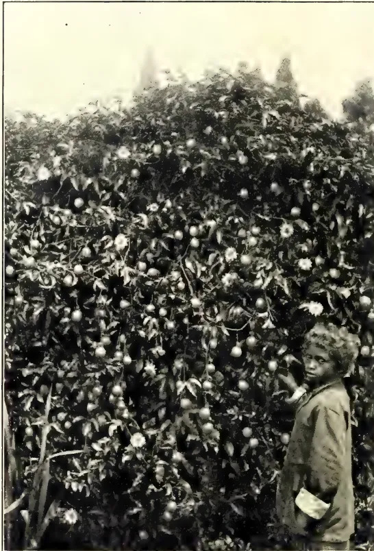
PASSIFLORA EDULIS.
The above illustration is of the perennial climber commonly known as the Passion-fruit or Sweet Cup. It is reproduced from a photograph by Mr. H. F. Macmillan, Curator, Royal Botanic Gardens, Peradeniya, who mentions in his circular on Fruit Culture that the plant is an introduction from Brazil, and is now found growing practically wild upcountry, producing two crops a year. The fruits, which are slightly fragrant, and contain a pleasant juicy pulp, are occasionally found in Covent Gardens, where they sell at a shilling or more a dozen. The local price is about Re. 1 per 100.
THE
TROPICAL AGRICULTURIST
AND
MAGAZINE OF THE
CEYLON AGRICULTURAL SOCIETY.
VOL. XXXII.
COLOMBO, FEBRUARY 15TH, 1909,
No. 2.
Improvement of Agriculture in Ceylon.
As we are leaving the colony in the middle of February, and shall be away for a year, we have thought it well to put down some of the opinions at which we have arrived upon this question, and to complete the symposium by a paper by Mr. Schrader, which appeared in the "Independent," and which is worthy of careful consideration.
While away we hope to visit Agricultural Colleges, Experiment Stations, etc., in Egypt, Italy, Austria, Germany, Britain, the United States, and Canada,
and may be able to write occasional articles upon them for the T. A. In case of anyone wishing to write as regards any subject they may desire enquired into, an address which will always find us will be—Gonville and Caius College, Cambridge.
We hope also, while on leave, to find time to write the bulk of an elementary treatise upon Nature Study, and the outlines of Agricultural practice, for use in Ceylon Schools.
Agriculture in Ceylon and its Improvement.
BY J. C. WILLIS.
Ceylon agriculture may be sharply marked off into two classes—estate agriculture and peasant agriculture. There are great differences between these in efficiency and result, and one is liable hastily to generalise, and say that it is all owing to the superior industry and intelligence of the Euro-
peans who manage the bulk of the former. That this is not entirely the explanation, however much truth there may be in it, may be seen by omitting the European altogether and comparing the native capitalist or estate agriculture with that of the villager.
106FEBRUARY, 1909.The difference is decidedly more marked than in the countries of Europe or America, where the small agriculturist can often hold his own very well by co-operation, against the big one, without having to do as in Ceylon, live on his own products.
To get at the real explanation, we must analyse the whole subject. Before progressive agriculture, i. e., agriculture on other lines than "grow what you want, and consume all you grow," can go on, there must be satisfactory conditions as regards what we may call the preliminaries to agriculture.
The prefix of these are land, climate, soil, drainage, irrigation, cultivation, crops, transport, capital and education.
Now land is plentiful enough, and usually easily obtained or available in Ceylon, and the climate is nowhere unsuitable to the growth of crops, when once the best crops have been discovered. The soil is generally good enough, and drainage and irrigation are sufficiently attended to. Crops are plentiful, nearly all of any value either existing in the island from ancient times, or having been introduced by the Botanic Gardens in the last 70 years.
There remain then for consideration transport, capital, and education. Now the provision of transport facilities has for very many years been regarded as a cardinal point in British colonial policy; in fact it has been expressed in the form that the first element of civilisation is roads, the second roads, and the third more roads. Education also has been liberally provided, and with the extension of School Garden work the necessary agricultural bias is being given. Already, in districts where there are such gardens, one sees many new products or types of cultivation, and on enquiry usually finds that they owe their origin to the School Gardens. Later on, a more definite agricultural teaching will be required in the higher schools, but for the present the school garden is enough.
There remains, then, practically untouched, simply the provision of capital, and it is in this that the great difference between the capitalist "planter"—be he European or native—and the villager, lies. The latter has steadily gone down to a very low agricultural level—if indeed he ever were above it—and has no capital at his back. Now, any agricultural enterprise requires some capital, for the land must be prepared and the crops given time to ripen. If the cultivator have no capital, he must have recourse to the local moneylender, and from him borrow seed, or advances to cover the period of waiting, or what
not, or he must sell the crop before it is ripe, of course at a great discount. In actual fact, in about 80 different places in which we have enquired, the usual rate of interest quoted has been 50 per cent. The lowest was 40 per cent. and the highest 75 per cent., but as the interest was generally collected with the principal, long before the lapse of a year, these rates are really higher. It is idle to gird at the moneylender for such rates. His business is to get what he can, and when the villager can only give such scanty security, he must pay high interest to indemnify the lender for the risk. Were it easily possible to lend at lower rates, one would expect to hear of its occurrence sometimes.
So long as the villager is thus helplessly in the grasp of the moneylender, so long can he do practically nothing in the direction of agricultural progress, however willing he may happen to be. When we add to this the general apathy and inefficiency he displays, and what, for want of a more accurate term, we must call his indolence, it may be readily seen that agricultural progress among the peasantry of Ceylon is a thing to be hoped for, but not to be expected till the clutch of the usurer is relaxed, and then but slowly.
To endeavour to improve local agriculture, other than capitalist agriculture, without taking the subject in proper logical order, is to beat the air. One man introduces good European ploughs. Without capital the peasant cannot afford such tools, while at the same time, they make too violent a step forward to be applicable. They cut through the plough-pan of the paddy field, and let the water out. Another man introduces a new vegetable or other crop. Is the villager to sacrifice crops, already yielding a return, to experiment with something untried? He cannot do so without more capital. A third man proposes to teach agriculture in the village schools. Where are the trained teachers, and how is the trained boy to apply his knowledge unless he has money? If he has money, and succeeds, his success simply goes to emphasise the difference already existing between capitalist and villager.
Practically every improvement in agriculture demands money at the start, though it may prove very profitable later, and it is but rarely that it yields a profit that will pay the Ceylon moneylenders' interest.
We may roughly represent the present, and the possible, state of affairs by the following diagram:—
FEBRUARY, 1909.]107level 4
of capitalist agriculture
level 3
of existing peasant agriculture in Europe.
level 2
below which real "agricultural" progress is impossible.
level 1
of existing peasant agriculture in Ceylon.
A
Provision of land, &c.
B
Careful study of crops—new or improved—on Experiment Stations, with a view to making out their suitability to Ceylon, profitableness, &c., tools, to gradually improve native implements.
Ditto methods, to gradually improve native methods of cultivation, manuring, harvesting, preparation, prevention of disease, &c.
Ditto cattle, to gradually improve native breeds.
Improved and more agricultural education,
Agricultural teaching by field demonstration.
And so on.
Given all of A, coming in at level 1, it may be raised to 2, at which the others will begin to come in as shown.
All A should go together, similarly all B.
108[FEBRUARY, 1909.Until the provision of all the items A has been attended to, village agriculture in Ceylon must remain at the low level 1. Given these, as the people get out of the clutches of the moneylender, it will rise to 2, and then improvement in agriculture, properly so called, begins.
This improvement must be of the most gradual kind, and every step must be carefully tested by thorough experi-
ments before being recommended for adoption. Improvement of cattle must go hand in hand with improvement of the tools they are to use, and with improvement of their food supply, and so on.
This must suffice as a brief indication of what we are convinced, after 12 years' study, is the logical order in which to attend to the improvement of Ceylon agriculture.
BY J. C. WILLIS.
Given that loans of money are to be made, whether by Government or Agricultural Co-operative Societies, to village agriculturists, the question comes up of how best to manage it, and how to obtain good security, for in the case at any rate of a Government loan, it would be unsound finance to advance against no security.
The essential features of the Raiffeisen loan schemes (by means of local Agricultural Co-operative Societies)—which have been so wonderfully successful in Europe, and are now extending in India—are that the lending by any given society is confined to the village where that society is located, that it is managed by a local committee who understand as thoroughly as possible the financial status and reliability of each borrower, and that the liability is unlimited, so that in the event of loss, it falls upon each member of the society in proportion to his holding.
The question then is—Can these principles be applied to local conditions? We are decidedly of opinion that the strict localisation of loans should be carried out. Let for each small district a local committee be formed, with the Government Agent as Chairman, and the local headman as deputy chairman, and let this committee be responsible for the making of the loans, which must of course be absolutely confined to their own district.
The next item is the recovery of the debt owed by the villagers. We would suggest for this the revival of the old levy of 10 % of the crop. This is a tax the villager well understands, and there would be no grievance in its revival, if done soon, while the outcry that might be raised against its being reinstituted as a tax would fall to the ground if it were simply revived for repayment of loans. But as the least that could use-
fully be advanced to the villager would be the value of his seed paddy—say Rs. 2 to Rs. 4.50 per acre—it is doubtful if the 10 % tax on the crop, which in many districts is barely ten-fold, would repay the loan with interest at say 12½ %, which must always be charged. We would suggest a 15 % return or even more in most cases, and where this proved to be much too much, some might be returned to the cultivator. By this means the villager should in a few years get so far rid of the load of usury that at present oppresses him, that he might be able to consider the question of actual "agricultural" improvement. Probably only a few at first would in any case be willing to try improved crops, tools, manures, or cattle; but let these succeed and others would follow.
Next as regards security for the debt. We would suggest, as has already been done by Mahawalattenne R. M., that the greater headmen, as deputy chairmen of the local committees, give security for the amount to be advanced. This they will very commonly be able to do, and if they are at first debarred from advancing more than the value of the seed paddy, while the 10 % levy is pledged for their repayment, there should be no difficulty about this.
The 10 %, 12½ % or other levy would obviously not bring in exactly the amount necessary for repayment, but the figure should be fixed at the nearest 2½ % above what is necessary; e.g., if 15 % were considered needful, repayment should be by a 15 % tax.
In this way the local committee would come into the possession of funds of their own, and these might be again lent in any way that seemed best to them, adhering strictly to the principle of local loans and unlimited liability, and at an interest of say 12½ %. As the Government is about to lend for paddy
FEBRUARY, 1909.]109cultivation only, these loans might be for other or new crops (e.g., to start sweet potato growing in the district), for better tools (e.g., a society might purchase a disc harrow or other tool and lend it out to its members), for supply of manure (by purchasing manure from Colombo and advancing it to members, to be repaid at crop time), for provision of stud bulls, cocks, pigs, etc., for sale of local produce in the Colombo or Kandy markets, or for other purposes. But the important thing at the commencement is to get the villager gradually free of the exactions of the money-lender, as has been explained in another place.
This must be done gradually, or a new class, that of distressed money-lenders, will come upon the scene, and we would suggest beginning with the advance of seed paddy only, against the security of the headmen, through local committees, the money to be repaid by a definite tax in kind upon the produce.
We would confine loans at first strictly to the ordinary villager, and decline to advance any money to the richer people, unless at so high a rate of interest that they could not profitably lend it out again.
By J. C. WILLIS.
In this paper we are, of course, merely taking the North-Central Province as a type of the low-lying irrigable country of Ceylon, which stretches from Hambantota round the mountains to the north to Chilaw, and these remarks will apply to most of it.
This country is occupied by a very small population (leaving the coastal districts of Batticaloa, Jaffna, and Chilaw out of consideration), probably not much over 200,000 in all, though the area is over 13,000 square miles, or more than half of the island. Now, in the olden days of the Sinhalese monarchy, this was the populous and wealthy part of Ceylon, while the mountain zone and the west—now the home of the great tea, coconut, cacao, rubber, and other industries—were a poverty-stricken and neglected region.
Now, there is no reason why there should not to-day be a great population, and large industries, in this now deserted land. The important thing is to analyse the position carefully, and to set to work in the proper logical order.
At present the North-Central Province is largely occupied by a good-humoured, fairly honest, but lazy Kandyan population. By the opening of the irrigation works they have been practically freed of the great amount of disease which formerly devastated the country, and have become, for villagers, fairly prosperous.
Looked at agriculturally, they have a few conspicuous faults. They waste a great amount of water upon their rice crops, which they grow mainly in the dry season with tank water. They cultivate other things mainly on chenas. They do not grow more paddy than they want, and often leave the fields bare for long periods.
Now the last-named of these faults is one of character and temperament, and cannot be easily altered, but the two former depend mainly on the agricultural conditions of the country.
A comparison of any other of the outlying thinly populated districts will show the same faults in operation. There is evidently some general cause for them. They depend, in general, upon the fact that in all such districts one finds, upon the whole, less capable and less successful agriculturists, who live as much as they can upon the natural capital of the country.
This natural capital in Ceylon is simply land or soil, water, and forest. The native of the North-Central Province, like any one else, has of course taken the best land for his rice crops, and to that there cannot be the slightest objection. He then, however, proceeds to grow his other crops largely upon chenas, and for this he uses the best land he can find, and ruthlessly sacrifices the other item of capital—forest. After a couple of chena crops the land is left to lie fallow in scrub for a good many years before the process can be repeated. There is neither need nor space to go into details in a paper like this, which is simply giving a general sketch without argument.
To turn now to more detail about the other two faults mentioned, and first the fact that rice is grown mainly with tank water in the dry weather. The Jaffna man who visits the North-Central Province is at once surprised by this; he, without tanks, and in a drier country, must grow during the North East rains. The ordinary unthinking man puts it down to dislike on the part of the villager to being out in the rain or to some such cause. Experiment
110[FEBRUARY, 1909.conducted at Maha-iluppalama, in the North-Central Province, have shown the true reason. Village rice sown broadcast in a field simply supplied with rain water has grown well enough, but has become a mass of weeds, which cannot be removed without great trouble and damage to the crop. Whereas, if the land is completely softened by the rains, and well ploughed, then left to soak, and kept always soaked, weeds do not get much chance. This is the real explanation. To improve on the present methods sowing in the rains is not enough. The land must be tilled before the rains, and the crop must be transplanted in rows, so that weeding between can be carried out. This means greater expenditure, in keeping the land tilled all the year round, in transplanting, and in weeding. This means capital, which the villager has not got, so has to live upon the natural capital of the country.
Now turn to the chena. The land is cleared of trees, up to a certain size and burnt off. Before the weeds begin to grow, the crop is thickly broadcasted on, and gives a good return on the fresh forest land. But the weeds grow, and it only occasionally happens that the villager can afford, from his indolence, enough labour to partially clear for a second crop, which of course is not so good as the first. The land is then allowed to grow up in scrub, which keeps down the small weeds, and after a few years can be again cleared at far less cost than weeding would involve, while it has had the advantage of a kind of fallow.
Land which natives and Europeans alike said was only fit for chena is now being continuously cultivated at Maha-iluppalama and yielding good crops. But without capital, which is the underlying secret of success there, the villager of the North-Central Province is as helpless as a baby to do anything but chena, as he is helpless to grow rice with the rains, and he must not be blamed for his present methods.
Another point about chena is the effect on the soil. To keep the natural capital of the soil unimpaired, either rotation, manuring, or chena must be practised, and as a capital is wanted for the two former (as has already been indicated) the last is the only possible resource.
We have now to consider the problem of what is to be done to get the inhabitants of the North-Central Province out of this state of things. If left as they are, progress will be as it has always been—very slow. With the opening up of the country by transport facilities,
capitalists will gradually be attracted into it, but the villager will not progress. It therefore becomes a question whether attention is to be devoted wholly to the capitalist, or whether the villager, and people like him, are to be helped also, and whether they are to be directly helped, or assisted to help themselves. The latter is what we personally vote for, but this question is one for the Government, and has only to do with agriculture in that its solution is an essential to progress in the latter. In the old Sinhalese days, it is probable that the villager was at least upon as low a level as at present, and the kings helped them by compelling them to make tanks, which greatly increased the natural capital of the country, by making water available at any time, instead of only in the last few months of the year.
While theoretically, no doubt, it would be better to aid the villagers already existing in the North-Central Province to supply themselves with capital, improve their agriculture, and take up the balance of the available land, in practice this would take centuries, and is too long to wait.
The villager should be settled upon his own land, and a sufficient area reserved about him, which he will at first of necessity chena, but which he will, as he gets more free of the money-lender, gradually be able to lay down to permanent cultivation. Now, there is little doubt that he is so indolent that he would prefer to go on indefinitely upon the present lines, and compulsion must be brought to bear upon him. We would suggest that, provided he has been supplied with the means of getting cheap capital, the chena area be reduced by 25%, say, every sixth year, till he has only 25% left. He will thus be compelled to lay down the land to permanent cropping. We would attach the chena area to the village as a whole as common land, and stipulate that part of it have the trees sufficiently thinned out to cause it to form good pasturage, and of course make the area large enough to allow of room for other crops when the necessary proportion of the 25% remainder was given to pasturage. In this way the chena difficulty might be gradually got over. At present the villager must chena, but the land will stand permanent cropping.
It must be remembered that for annual crops—which are much better suited to the small capitalist than perennials, such as rubber or tea or cacao—the chena land must be irrigable. Pasture, on the other hand, need not be so.
FEBRUARY, 1909.]111We would suggest, as he becomes more free of money difficulties, gradually curtailing the amount of water allowed to the villager for his rice land, and the application of some at least of the saving to his "common." So long as the present rate of water consumption is allowed, so long will it be impossible to open up any seriously larger extent of country. Water must be available before land can be opened.
Experiments should be set on foot to determine the minimum water that can be allowed to the villager. They should then be limited, at first to say 25 % more than that, and the amount gradually decreased, thus setting more water free for other land.
The local villagers being few in numbers, lazy, and improvident, other people should also be induced to settle, and here comes in another very important consideration. The newcomers should be settled in entire villages of one race or caste, and by the mixing of peoples thus brought about, the general standard of living will be raised, and some variety introduced into the local agriculture. At the same time, among the villages thus formed, blocks of land should be reserved for capitalists, and land in them only sold in large pieces. In this way the villager will have objections at his door, and the capitalist village labour.
Every village thus formed should be given some common land, part of which should be devoted to pasturage, part to crops that can be marketed elsewhere, i.e., in general the crops that can be
sold to the local capitalist estates; and a definite water supply should be allotted to the common. Communal tools might also be obtained by co-operation among the villagers, or by a 10 % tax on the produce.
In laying out the villages, they must be divided by road reservations, in which, as traffic increases, actual roads can be made, though at first mere clearing of the track (pin-para) would suffice. This is very important. Transport facilities are one of the indispensable preliminaries to progressive agriculture.
There remains then the attracting of capitalists. Just as with the villagers, the first to come are often small ones crowded out of other parts of the country. To attract these is something, but more rapid progress will be made if larger can be also got to come. The preliminaries of land, labour, transport, and, above all, guaranteed water supply, must be carefully attended to, and capital will then be attracted to grow rubber, coconuts, cotton, and other things. Under some of the tanks the land should be saleable only in large blocks and no small holders allowed.
This will serve as a brief indication of some of the lines upon which we would propose to work, and a careful consideration of the whole question during this year will be time well spent. The general lines we have been laying down are developed at greater length in a book upon "Agriculture in the Tropics," to appear within the next few months, and which those interested in tropical agriculture may find of interest to study.
AN OBJECT-LESSON FROM AUSTRALIA.
BY P. G. SCHRADER.
In my article on "The Improvement of Cattle in Ceylon," I made the following statement: "There is no doubt that ocular demonstration is of far greater importance than preaching, especially when dealing with the ignorant masses. This must be taken full advantage of in driving out the prejudices and lax methods of the people." This shall be my text for this article, and I feel certain that it is the only way of starting to improve the obsolete and ignorant methods of the people. We know that the most approved methods of the present day of teaching infants is by
means of object-lessons. In the same manner the only way to teach the grown up ignorant agricultural infants is by the same methods. Now I will form a short resumé, as far as I know, of what has been done in the past. A School of Agriculture was started in Colombo under the able guidance of a graduate of an English Agricultural College, but it was a failure—why? In the first place the country was not ripe enough for an institution of that nature, the right stamp of students were not attracted, and most of those that came there came to receive a
112[FEBRUARY, 1909.cheap education, and on leaving the institution they turned to every walk of life—except agriculture. We know that once the son of a village “gamarala” dons a pair of trousers and a coat, he does not care for his village life. In the second place Colombo or any city is in no way adapted for an Agricultural school. Rural work
MUST BE CARRIED ON AMID RURAL
SURROUNDINGS,
where there will be sufficient land for the actual carrying out of agricultural operations in every branch, the students playing the principal part. The late Colombo School of Agriculture did not apparently pertain to teach practical agriculture, except in the form of cultivating a few vegetable plots, which was absolutely valueless. The next thing was agricultural education in the form of School Gardens. They are no doubt excellent in their way and for the object in view, but not of sufficient weight by themselves, to reach the mass of agriculturists. Then we had the starting of the Agricultural Society by Sir Henry Blake, our late Governor. The Society publishes a very good journal, holds monthly meetings at which are read numbers of valuable papers, etc., and also have around it numbers of branch societies doing similar work, but the main object, that of reaching the agricultural masses, is lost sight of. Now we are coming into a new era under our progressive and practical Governor who, no doubt, will do his best to give us something that will reach the masses. In starting agricultural instruction and development in Ceylon I do not think we can do better than be guided by what has been done in other countries. As I am able to speak with some authority on
WHAT HAS BEEN DONE IN AUSTRALIA, having had the opportunity to spend ten years there, all the time actively engaged in agricultural pursuits, I will refer to what has been done there. The agricultural masses of Australia were at one time ignorant, as far as modern scientific agriculture was concerned. They ploughed and sowed the same crops year after year on the same land, and could not understand why the land would not produce the same quantity of grain per acre as it did years back. They used no modern labour-saving appliances. They could not understand that rotation of crops, green fallowing, artificial manuring, the proper treatment and application of farm-yard manure, etc., would be beneficial and would be their salvation. They looked
down on scientific cultivation which they called “new fangled ideas.” The Government had a hard task to perform, but they went about it in a very practical way. They started establishing experimental farms right in the heart of great agricultural centres. These farms were huge object-lessons. Land similar to that worked by the farmers was cultivated under “new fangled ideas.” Everybody, of course, was curious to see the result, while at the same time being certain that the whole thing would be a failure. By and by, as time went on, some of them started visiting the Government farms, and were shown round by the managers who took the opportunity of explaining the why and wherefore of things being done, told them of the number of bushels per acre the last wheat crop yielded, explained the methods adopted in making farmyard manure, the amount of labour saved by the use of certain implements, etc., etc. The visitors went back and pondered over
WHAT THEY HAD SEEN AND HEARD
and naturally talked about it to their brother-farmers, who, in their turn, visited the farms, and so on, and so on. Later on the majority came to the conclusion that there was something in these “new-fangled ideas” and went for help and advice to the managers which, of course, was most readily given, and gradually modern methods began to be adopted, the farmers finding that by their adoption the crops were doubled, and that the use of labour-saving appliances put more money into their pockets. The experimental farms then started taking in a few students, as the farmers wished their sons to receive modern training, and, of course, the scope of these farms only permitted practical agriculture being taught. As things went on the time became ripe for the establishment of Agricultural Colleges where a student could receive both scientific and practical training. In the State of Victoria, where I spent most of my time, the first College started was the Dookie Agricultural College, where I graduated. This College was, first of all, an experimental farm, then an experimental farm with a few students, and lastly an Agricultural College. It had attached to it 4,700 acres of land, and only received, while I attended it, forty students. Since then the number of students has been doubled. At this institution every kind of farming was carried on and taught, the course being two years. A student in case of failure to pass examinations was allowed a further year, but at the expiration of that period had to leave. The
FEBRUARY, 1909.113STUDENTS WERE DIVIDED INTO FOURtwo junior and two senior—one junior and one senior being out working on the farm every day, while the other two were attending lectures, the subjects comprising the breeding of horses, cattle, sheep, and pigs, irrigation, drainage, arboriculture, ensilage-making, the growing of serial crops and their management, Chemistry, Botany, Geology, Zoology, Entomology, English, Natural Philosophy, Book-keeping, Surveying, Horticulture, Viticulture, Apiculture, and Olive-oil making. Four professors lectured on these subjects, while there was a separate outdoor staff to teach the practical work. The outdoor working day consisted of eight hours, the students actively carrying out all the different farm operations, the staff only teaching and seeing that the work was properly done. Every season about 500 acres were put under serial crops and about 60 under silage crops; vineyard work was carried on, and wine made from 80 acres; dairying was carried on, about twenty-five cows being milked daily, the milk being turned into butter and cheese; olive oil was made; orchards were attended to; about 4,000 sheep were shorn; pig breeding was carried on, and poultry received attention. Large experimental plots were worked. Black-smithing and carpentry were taught, all repairs to machinery being done on the place. Other farm operations too numerous to mention were carried on. All this work was done by the students, and done well, and the farm paid its way. When a student finished his course and went out into the country, he was a power in the land, he was a thorough master of his profession. Later on Victoria found it necessary to open another College. The other States started on similar lines, and all of them have now large flourishing
AGRICULTURAL COLLEGES ANDyearly sending out young men to teach and to work for the country's good and their own. It was by ocular demonstration, by means of huge object lessons, that Australia the great Agricultural continent started teaching her sons modern, scientific agriculture. And I think my readers will agree with me that this is the only way it can be done in Ceylon. Of course we don't want 4,700 acres of land; 100 acres with some paddy land would suffice for our experimental farms. Too much stress cannot be laid on the choice of the men who are to manage and work these places, as on them and on them alone depends the
success of the undertaking. Personality, ability, education, a thorough mastery of practical work, and men not ashamed to take off their coats and show the people how certain operations have to be done, all these essentials must be embodied in those who are to have in their hands the future destinies of the improvement of agriculture in the Island. Soon we shall find, as Australia did, that the masses who are by nature agriculturists will take interest in the object lessons, and give the new methods a trial. Once they do that and find it paying they will naturally enlarge their scope of operation, and will, in a short time, come to the conclusion that there is money in new methods. They will then want their sons taught the new methods, and, by and by, when these sons are turned out of the experimental farms and work
THE LAND OF THEIR FOREFATHERS,
they will find more money coming in. Their training will have taught them to work to the very best advantage, and when these young men in their turn have sons of their own old enough to receive agricultural training, i.e., about 16 years of age, during which time they received a good elementary education, then will be the time for Ceylon to open her first agricultural school, and in time turn out, as Australia is doing, hundreds of young men yearly, who will "go out into the land and make it bring forth fruit abundantly."
In the foregoing article I suggested that "100 acres of high land with some paddy land would suffice for our experimental farms." The question will arise, "What is to be done on these lands?" In other words, in what form are these object-lessons to be placed before the grown up agricultural infants of Ceylon? It is important that these farms should be worked on business-like principles. Everything done should be within the scope of those who are to be taught, and induced to adopt the new methods. The produce must be a marketable commodity, and must show profit. Otherwise the farms would be useless. They must be worked with economy. A strict account of expenditure should be kept, so that the actual balance after the sales can be made public. A great object-lesson is to show the people how much money these new methods will put into their pockets. The following is a
LIST OF THE IMPLEMENTS, ETC.,
13 114[FEBRUARY, 1909.necessary for each farm:—
One “forest devil” or stump extractor, three ploughs for high land, three ploughs for paddy land, two sets of harrows, one roller, six hay forks, one paddy-field leveller, one hay knife, one paddy-threshing machine, six long-handled shovels, three scythes, two double bullock carts, one “planet junior” single cultivator and three pairs heavy draft bulls.
THE QUESTION OF PADDY CULTIVATION—how to grow more paddy than is now done—should be brought home to the villager. It is a question that appeals to most people when the greatly increased cost of rice has to be considered. It is a question that the planters would like to see solved, as it touches them sorely when they have to retail rice to coolies at less than cost. In fact, it is a national question and worthy of the attention of Government. We have the land, and it only requires proper cultivation to bring about the necessary results. The Government is yearly spending large sums of money on irrigation works. Of what use are irrigation schemes if the greatest question of all—that of teaching the people to make the land productive—is left untouched? The paddy land of the farm should be entirely fenced in and judiciously subdivided so as to enable cattle to be run on the stubble without interfering with other cultivated portions. The plough must be light, but able to turn soil to at least a depth of four inches. It must have two handles and one pole. It is absolutely impossible to do good work, i.e., cutting and turning over every inch of the soil with straight furrows at an even depth with even the English-made ploughs sold in Colombo with one handle and a pole, as the pole makes the plough far too sensitive to every movement by the cattle, and with one handle it is impossible to steer it. The ploughs should have the usual beam as used for horses, to which should be hooked on a chain to take the place of the pole, and to the end of the chain the yoke. In these matters I am not theorising but speak from personal experience. The ordinary native plough is, of course, out of question as it does not plough but scratches the surface. The first process of preparing land for paddy is to repair the bunds and clean out the channels, for which work I would introduce the long-handled shovel mentioned in my list of implements to take the place of the Ceylon mamotie. The shovel does the work sooner and better, and is a far handier tool to use. The fields should then be inundated and the water allowed to stand a sufficient length of time
to kill the weeds. After this the water should be turned into other fields, and when the land is sufficiently dry, ploughing should commence. The ploughman should turn up the soil to a depth of about four inches. If necessary it might be cross ploughed. The land should next be levelled and the seeds sown. I am not a believer in the transplanting process, advocated by many, but it is entirely a question of “will it pay?” If it does, certainly do so. But I believe, if the two-handed system of sowing is adopted, as is done in sowing wheat in other countries, transplanting will not be necessary. This and other matters the experimental farms should very soon solve beyond question. Once the seed is sown and until harvest time judicious irrigation where possible is about all that is necessary. In the matter of harvesting scythes can be very well used. A man can do four times as much work with a scythe as can be done by the small sickle now used, except on land where water is lying and it would not be judicious to wet the heads. The introduction of hay forks, and a threshing machine will, with the greatest deal of economy, and in the shortest time, have the paddy in bags ready for market. It is out of the question for every man who cultivates paddy to own a threshing machine. But, as is done in other countries, once these machines are found to pay, travelling machines will do the work at a small charge. There are other matters which will have to be attended to as they turn up—judicious manuring, bare fallowing, and, if possible, the growing of other crops, forage, etc.
For this and other work to be detailed later, one hundred acres should be felled and burnt off after securing sufficient timber for building and fencing purposes. The land should be fenced and subdivided into paddocks of twenty acres. All the stumps should be extracted. This is a most difficult and expensive operation. It can, however, be done cheaply and expeditiously and quicker with the “forest devil” mentioned in my list of implements. The subdivision of land is necessary for running cattle on the stubble or feeding off green fallow crops, etc. The villager usually cultivates some dry grain on chena lands. The land is lightly hoed and the seed scattered. The result naturally is very poor. He also has a belief that the land can only be cultivated for about three seasons, after which he allows it to grow back into jungle. What he has to be taught is that dry grain can be grown, and grown with excellent results on the same
FEBRUARY, 1909.]115land year after year, if he cultivates the land properly and follows out a system of rotation of crops, with judicious green manuring, etc. The land on the farm must be ploughed to a depth of at least four or five inches. The plough used for the work must be of a little heavier type than that used on wet, clayey paddy land. After ploughing the harrow is put on which will stir, pulverise and level the land thereby making a good seed-bed. The roller will then follow. With regard to the effect upon the crop of pressing the soil about the stems and roots of the plants, all who are familiar with gardening works know. The plant cannot grow well if the soil does not support it in a fixed position, while alternating rainy and dry weather will draw the soil away and destroy the close relation between soil and plant necessary for the process of vegetation. The roller counteracts this and establishes close contact between soil and stem and roots. The seed is now sown and covered. Once the plants have established themselves and attained a certain height, the harrow is put over the growing crop. This loosens the soil thereby breaking up the capillary tubes and minimising evaporation. The harvesting could be done in two ways either with a reaping machine or a scythe. I would not suggest the reaper as it would be very injudicious with the object in view to introduce anything that the villager cannot buy or improvise. So far the only expensive implement he will have to procure is the plough. A serviceable set of harrows can be turned out by a village blacksmith, and a very good roller can be made out of a log of wood. Ploughs should be sold to villagers at cost price to be paid for by instalments. As years go on and the people become more prosperous and have learnt the first lessons of the utility of modern implements, then can be introduced seed drills, reaping machines, disc harrows, threshing machines, etc.
The experimental farms can be run in conjunction with the "Stock Farm" suggested in my article on "The Improvement of Cattle in Ceylon."—vide page 57 of last issue. A certain number of cattle are necessary for economic purposes. There is always the stubble to be utilised and crops under green fallow to be fed off. It is necessary to have draft power available. The raising of cattle would also show the people the economy and profits of mixed farming.
We all know the difficulty of procuring a good piece of pork, so much so, that
wherever a good pig is secured for butchering, it is specially advertised in the papers. Why should not good and cheap pork be always available? At present, except by a few individuals, pig breeding in any systematic way is unknown. Two pairs of pigs, one of Berkshire and the other a Poland China, would suffice for each farm. A small portion must be specially fenced off for this purpose, and special root crops, etc., grown to feed them. In some instances it will be found that certain crops bring in more money if sold in the form of pigs. There is also a lot of otherwise waste matter on a farm that would make good pig feed. By judicious breeding and by the economic growing of food, and the utilising of otherwise waste material, it will be found that pig breeding is a valuable adjunct to mixed farming. There is no doubt that in some districts the villagers are prejudiced to rearing pigs, but time will break through these barriers, especially when they see money in the business.
This is a much neglected but very important branch of farming and must receive special attention. People living in towns and even in the country know the exorbitant prices demanded for poultry and eggs. Except by a few poultry fanciers no systematic breeding and raising of poultry is attempted. It should be the duty of the farm to carry out poultry rearing in a systematic manner, so that the people may be taught how to conduct a paying business on a large scale. Poultry can be turned to a source of profit at very little expense. The best breeds have to be selected whether they be for eggs or table purposes. Then proper attention has to be paid to feeding, hatching, raising, fattening, etc. Perhaps no department of a farm takes in capital to begin than that of poultry. The returns are rapid and to a small farmer this is a matter of much importance. The poultry may be classed into (1) table fowl, (2) the general purpose fowl, and (3) the egg producer. It is necessary to secure young vigorous birds to breed from, and each season fresh males should be introduced, of a different strain, so as to prevent in-breeding. To improve our native fowls the largest hens must be selected and mated with vigorous cockbirds of the following breed:—Dorkings, Indian game, Orpingtons, Plymouthrocks, Langshans, Wyandottes. Fresh cock birds of any of the above breeds should be introduced each season so as to improve the size and prevent in-breeding. Food can be grown on the farm, the sun-flower seed
116[FEBRUARY, 1909.makes an excellent diet; it will also be found more than likely that some dry grain would pay better in the form of poultry food.
About ten acres of land should be reserved for this purpose, and planted with the best known varieties. There is always a good market for first-class fruit. Budded orange, lemon, and West India lime trees can be procured from Australia. I planted the Washington navel orange, and the Sicilian lemon, with the best of results, only losing two plants out of 75; they are all bearing heavy crops now. Grafted or budded mango and other tropical fruit trees can be grown. Once they come into bearing, a nursery can be laid out where young budded plants can be propagated for sale, or, still better, for free distribution among the people. Intense culture is necessary for successful fruit growing, yearly ploughing and constant cultivation (by means of the "Planet Junior" cultivator mentioned in the list of implements) is also necessary. It is very important, especially in dry districts, that the roots be kept below six inches from the surface. The above mentioned cultivator is a wonderful little machine, it will not only stir up and pulverise the soil to any required depth, thereby conserving the moisture, and also allowing a free circulation of air so necessary for bacteriological reasons, but with certain attachments will keep the place entirely free from weeds.
This class of work can only be done on farms of this nature, as private individuals cannot as a rule afford the time or money for this purpose. In the paddy-fields a portion should be reserved for this work, where different varieties of paddy could be grown for the purpose of testing the growth and yield. It is only in this manner that the best varieties suitable for the different districts can be found out. There is vast scope for experimenting on high land. New products and the suitability of the different varieties of indigenous crops for the different parts of the Island can only be found out by this means. India supplies us with many things that might be profitably grown here, such as onions, chillies for drying, coriander and the various other seeds that are in daily use in every household for making curries. Surely some if not all of these will grow in different parts of the Island. The castor oil plant is known to grow here, but it has not been utilised as a product. The cultivation of flax is
worth a trial. It is known to grow in different parts of the Island. The fibre is valuable for cordage making, while the seed is of great value, as the well-known linseed oil so generally used all over the world is abstracted from it. The best known varieties of grain and fruit have been the results of cross fertilization, either by the hand of man, or by accident. This most fascinating of the botanist's art opens up a wide field for the most interesting of experiments.
This is a subject that requires the most careful attention, as it is by the economic and judicious use of manures that we can give back to the soil that which has been converted into saleable produce. Proper cultivation and rotation of crops will no doubt for some time result in good crops, but it stands to reason that a time will come when we must give back to the soil what we have taken away. Judicious manuring before the soil gets thoroughly exhausted is necessary. There are three ways of replenishing the soil—by green manuring, farm-yard, and artificial manuring. The first collects nitrogen from the air, and, if not fed off, supplies also humus so necessary to soils of a sandy nature. Farmyard manuring consists of everything that would decay when put into properly constructed pits under cover and allowed to decompose. If properly handled it comprises the most valuable of manures at practically no cost. Artificial manures require special experimenting to ascertain what the soil requires. Chemical analysis shows us what is in the soil, thereby what is deficient, but it does not tell us whether certain properties in the soil are in a state that the plants can utilise them. It is only by means of experimental plots that the quality and quantity of manures required can be ascertained.
These banks should go hand in hand with agricultural instruction. It seems like putting the cart before the horse to establish agricultural banks before the people are shown how to make their lands productive. Teach the people how to turn the money to be borrowed into profitable use, then there is a greater chance of their being benefitted, as they will have a chance of establishing themselves with the aid of this money, and in a little time become independent of borrowing, except for enlarging their scope of work, as the new methods would bring in money where it does not do so now.
FEBRUARY, 1909.]117For the successful treatment of the great malady that agriculture is suffering from in Ceylon, it is necessary to study the diseased subject and the disease closely from every point of view.
The villagers can be divided into three classes: (1) the "gamarala" or large land holder, (2) the small land holder, and (3) the so to speak serf class, who lives on the gamarala's land and receives a share of the produce in proportion to the land he cultivates. The gamarala is, as a rule, a man above want, he gets his land cultivated by the serf class at little or no expense to himself, except the seed paddy and the cost of feeding those that are invited to help in harvesting, etc. His land does not produce more than those of other villagers, but as the extent of his cultivation is greater, he usually accumulates more paddy and other grain, etc., than his actual needs; he also gets a lot of grain by lending seed at interest. The second class, the small holder, is the unfortunate who leads a hand-to-mouth existence, who as a rule does not produce sufficient for his subsistence, and is more than likely in the hands of the wily Moorman boutique-keeper. The last, the serf type, is the worst off—he has to get his seed from the gamarala, which decreases his share of grain in proportion, and is, as a rule, in debt to his landlord either in grain or money, and also is in the hands of the Moor trader, so that when he receives his share at harvest nearly all of it goes to pay his debts, as in a good number of cases it does not suffice to do so, and so he is in a chronic state of debt.
I am of opinion that by the introduction of a
and by the establishment of a system of village banks, the gamarala could be evolved into an independent farmer, the second class could make a very comfortable living, and the third class be placed above want.
Now, let us see what the faults are that have got to be remedied of the village cultivator (from an agricultural point of view). In doing this I cannot do better than quote Dr. Willis from the July 1906 number of the "Tropical Agriculturist." He says:—"The native is very conservative, and objects to any interference with his time-honoured ways."
"Another great obstacle is the indolence of the villager." "Yet another obstacle, and perhaps the greatest of all, is the poverty of the village cultivator."
are nothing more than must be expected, as the villager has been progressing backwards for over two centuries. Although three European nations held sway, not one of them gave or has given the impetus necessary. Also these faults are nothing more than what all the civilised agricultural nations suffered from, the difference being that in the temperate zones it is only by human exertion that the soil can be made to produce, also the necessity of large quantities of farinaceous and animal food to generate the necessary heat of the body to withstand the extreme temperature; while in the tropics nature is more magnanimous—for example, the jak, breadfruit, and other economic trees thrive without any attention which greatly assists the villagers to eke out a meagre existence, and the non-necessity of heat generating foods has made the villager what he is to-day, and he is erroneously put down to be indolent. The Sinhalese villager is not by nature an indolent man; history proves to us that he was not indolent in the days of the Sinhalese Kings—when Ceylon was a granary and even exported grain, when he built the great irrigation tanks and schemes such as the Giants' Tank and the other stupendous works that are a marvel in construction and skill; he has graduated down to the stage he is in to-day, it might have been that if the importation of rice, etc., was not a possibility and was an unknown quantity as in the days of old, he would not have got so recklessly careless in his modes of cultivation, etc.
on different people; for example, modern civilization in the form of bad whisky and rum and the supplying of clothes and food to the aborigines of Australia is killing them off so fast that this century will see them practically extinct. In Ceylon the effect has been that the country, coming under European rule, stopped the forced labour that was exacted by their own kings which forced them to be industrious, and it also made possible the buying of food stuffs, i.e., (imported rice, etc.) which in the days of old they could only produce by their own exertions. Modern civilization also tended to lower the self-pride of the Goigama caste, inasmuch as the cultivator and cultivation of the soil was not looked up to and kept up to that degree of reverence and honour that it received at the hands of their own kings and the other people; other trades and professions, very naturally were and have been looked up to with the result that agriculture
118FEBRUARY, 1909.suffered and the cultivator became a callous and careless individual. At present he does not cultivate his soil even according to the system that has been handed down to him, he does it in a much cruder and half-hearted manner, hence the results of about eight bushels per acre of paddy. The question might well be asked whether it is possible to rescue this degenerated agriculturist? It is possible; but no doubt the
for the start we cannot and must not expect any magic-wand results. For this malady we must formulate a complete course of treatment to be carried out by the right stamp of men in a thoroughly systematic manner. If any half-hearted remedy is started and carried by inexperienced men, as has been done before, failure is sure to follow, and it most certainly would be better if never started at all, as it only does great injury to
and leaves a very bad impression on the minds of those to whom it was meant as an impetus. A scheme was, I believe, started some years back and ended in a failure. Quoting from an article by Dr. Willis in the July 1906 number of the "Tropical Agriculturist"—he says: "The teacher who has been to an Agricultural School has usually the characteristic faults of the college-trained native of Southern Asia. He has learnt great deal of book knowledge on many topics connected with agriculture, but has little or no notion of how to apply any of it practically or suit it to local needs. If he is sent to teach, he is often dogmatic in the lecture-room and a failure in the field. If he is provided with an experimental garden for actual demonstration purposes, he is liable to make a still worse exhibition of incompetence, or to fall under temptation to misappropriate the produce." A scheme of this kind was tried some years ago in Ceylon, and its epitaph was written by Mr. F. R. Ellis in the words "Government has not very long ago got rid of the last of a happy band of youths who for a series of years received a good salary for cultivating Crown land with cattle supplied by Government and appropriating the produce to their own use." In the above quotation we see very clearly depicted that it was not the system of educating the people by means of experimental farms that was a failure, but that it was entirely the gross incompetence of the instructors, and the lax supervision that enabled the appropriating of the produce. To a very great extent these instructors
cannot be blamed for incompetence, as the training they received at the late School of Agriculture was faulty. The late Colombo School of Agriculture (although having a highly qualified Manager) was where these young men received their training; the school was a failure owing (as already pointed out in the foregoing article) to first, the country not being ripe enough for an institution of that nature; second, the right stamp of students not being attracted; third, Colombo or any other city is in no way adapted for an agricultural school, as it must have attached to it sufficient land for the actual carrying out of agricultural operations in every branch, the students playing the principal part. I also pointed out—and in it mostly lies the cause of the student's incompetency—the late Colombo School of Agriculture did not apparently pretend to teach practical agriculture, except in the form of cultivating a few vegetable plots, which was absolutely valueless. Then, again, the instructors of this institution cannot be blamed, as, was it possible for the greatest agricultural teacher extant to teach
in the confined limits of the late Agricultural School? "It was the formulated system of training that was wrong," and it behoves us to closely study and analyse these faults so as not to repeat them again. Agriculture cannot be taught if theory and practice are not combined; the students must actually carry out all agricultural operations not on small experimental plots but on fairly large areas of land in relative size to the usual size of the farms in the country. The man who has never handled a plough or other farm implements, who has not taken part in the daily routine work of a farm, who has not worked in the harvesting and threshing of grain, etc., is no more fit to go out into the country and teach the people agriculture than is an ordinary sailor of a battleship to take charge and work the ship during an engagement. Then, again, it must not be forgotten that there are two types of
one the professor who may not be a good ploughman, and who does not understand the handling practically of complicated agricultural machinery, such as a threshing machine, reapers and binders, combined harvesters, etc., who has never milked a cow, or used the modern dairy machinery, etc., etc., but who, from personal observation for long years, understands theoretically the
FEBRUARY, 1909.]119mechanism and the use of them. These professors have nevertheless their science degrees at some University, and devote their lives to the deepest study of the sciences and to research work. These men are absolutely necessary to fill the chairs at the Universities, and for research work, and as lecturers at the Agricultural Colleges, etc. These men would be a failure if they were sent out into the field to carry out practical agricultural operations, to the dairy to work the cream-separator, pasturising machinery, or make the butter, or work all day, for example, handling timber and feeding a circular saw, etc. In the same manner a student at any first-class Agricultural College receives only a sufficient
to help him in what is to be his vocation, i.e., that of producing from the land; he is not turned out a complete lecturer on the sciences, but as the man who can by practical demonstration prove the combination of science and practice. Send him to the field, and he will carry out any and every agricultural operation, he will drive and repair when necessary all the agricultural machinery, he will work all dairy machinery and turn out first-class butter; he is physically fit for the hard toil that practical agriculture means; at the same time he will give you the scientific why and wherefore of every operation he is carrying out. It is through him that the professors of agriculture make practical use of their deep study and investigation and benefit the world. During his life he studies the latest methods formulated by the research of the professors, and so is able to keep up with the progress that science is making. Both these classes are absolutely necessary to form the grand chain of agricultural progress, but they must not be confounded and mixed up as is generally done, especially in a country like Ceylon, where yet agriculture and the modes and means of teaching it, etc., is little known and often confounded in a hopeless tangle.
Now that I have classified
described his maladies, and also pointed out some of the causes of the failures of the past treatment that was prescribed for him, it now remains for me to formulate a scheme which would form a complete course of treatment and how it should be carried out. In doing so I cannot do better than quote from the "Tropical Agriculturist" of July, 1900. After referring to the failure of the Agricultural Commission that had been sitting at the time "to enunciate
a practical scheme for dealing with the native agriculture of the country," it goes on to state:—"In this connection we might refer to another scheme which we understand has been forwarded to Government, the author of which is Mr. Elliott, the late Government Agent of the Southern Province, who since his retirement has been working as a private agriculturist; and so having experience (and that varied and extensive) of native agriculture both as an official and an unofficial, is eminently qualified to advise on a question of this nature. We understand that Mr. Elliott deprecates the merging of the interests of what is known as European agriculture with those of native agriculture, as there is so little in common between the two. Besides, the former has its own powerful machinery in the Planters' Association of Ceylon to protect its own interests, while the Government of the Colony has liberally provided help in the appointment of a number of expert scientists to further protect those interests. Mr. Elliott's scheme provides for an organised central school of agriculture, which already exists, and a central experimental farm not far from Colombo, with
all over the country. His whole scheme is calculated to directly reach the village cultivator." These views of Mr. Elliott are immensely valuable as they come from a practical agriculturist and a man who has studied the people of the country. Mr. Elliott's views on experimental gardens all over the country is exactly what I depicted in my articles, but we differ as far as the Agricultural School is concerned. I stated and say again that the starting of agricultural schools should come as a resultant of the experimental farms, as the people as children must be educated first by the Kindergarten method in the village schools, then by the experimental farms, and, in the course of some years, when they have to some extent adopted modern methods and show signs that they want further education than what can be taught at the experimental farms, then is the time to start Agricultural Colleges (certainly not in Colombo) fully equipped with a lecturing staff and an outdoor staff to instruct the science and practice of agriculture.
Now I come to the most difficult part of the course of treatment, that is, of procuring qualified practitioners to carry out this treatment. I have stated above that "Too much stress cannot be laid on the choice of the men who are to manage and work these places, i.e., (experimental farms), as on them
120[FEBRUARY, 1909.and on them alone depends the success of the undertaking. Personality, ability, a thorough mastery of practical work, and men not ashamed to take off their coats and show the people how certain operations have to be done, all these essentials must be embodied in those who are to have in their hands the future destinies of the improvement of agriculture in the Island." In this matter we cannot do better than
She taught her people by importing instructors, and sending her sons into the best schools of the world; the imported instructors were retained until she was able to produce properly trained sons of her own. She had the same difficulties as we will have: that the foreign instructors had to work in a new country, and did not understand the language, etc., but still the scheme was an entire success. In importing instructors we must go to a country as tropical as possible, and I do not think we can do better than procure our instructors from Queensland; it is a semi-tropical country and grows most of the produce and fruits that we do. It has an excellent Agricultural College, of course it would be a mistake to procure men who have just finished their course at the College; we must have men who have had further experience in the world of farming. It will be found that these men will soon adapt themselves to the conditions and requirements of agriculture in Ceylon and do good work. In recommending the Queensland College, I am not speaking from personal knowledge. Victoria, the most go-ahead of the Australian States, was first to start agricultural education and has two colleges; I know her institutions thoroughly. I have also visited the colleges of New South Wales and South Australia—undoubtedly the sister-State Queensland is running her College on the same principles and so can be relied on. It would also be advisable (as I notice India has done in sending some students to America for agricultural education) to send a number of young men to the Queensland College or any other sister institution, so that they may form the agricultural instructors of the future. Surely it is within all possibility that the Ceylon Government can make arrangements with the Federal Government to allow the students to gain access into the country for a stated period
There is an erroneous idea current that the non-transplanting of paddy is
the chief cause of the miserable results now obtained by the cultivators of that grain. There is, no doubt, that broadcast sowing causes the wastefulness of a lot of seed, and it is for this reason that seed drilling machines are so extensively used in other countries. Broadcast sowing of paddy in Ceylon certainly does mean the loss of a certain amount of seed grain, but it is by no means the chief cause of the present poor results. Every practical agriculturist knows that to produce a successful crop every operation must be systematically and thoroughly carried out. The principal operation is the preparation of a good seed bed. If this is not thoroughly done, the selected seed, the drilling in of it, and the irrigation, etc., will not and cannot produce a good crop. I cannot prove this in a better way than by showing the
RESULTS OF MY OWN EXPERIMENTING. Attached to a coconut estate I was superintending was some 13 acres of paddy land under a tank that also belonged to the estate; this paddy land had always been cultivated by villagers on the share system. On my taking charge, for the first season I allowed the villagers to carry on their operations and closely studied their methods of work and the results, etc. The result was 14 bushels of paddy per acre. There happened to be on the place some English-made ploughs with a pole and one handle. I tested one of these ploughs and found that it was absolutely impossible to do good work with it, as I found the plough was far too sensitive to every movement of the cattle, owing to the pole, and that it was impossible to steer it with one handle, and also without a front regulating wheel that it was impossible to regulate the depth, so I set to work to alter it. I cut off the pole to about the usual length of the beam of the ordinary plough used with horses elsewhere, to the end of this beam I fastened a device to which could be easily attached a chain to take the place of the pole, then, as the plough had no colter, I had to get one made—or rather pretty well do all the making myself, as the village blacksmith, though an excellent man, was very dense in understanding the making of what he never did before; luckily, blacksmithing had been a part of my agricultural education, so between the blacksmith and myself the colter, the front guiding wheel, and the necessary fixings, etc., were made and another handle fixed on. On testing the improvised plough I found that I could do some fairly good ploughing. I had made up my mind to try some experimental paddy growing to test some theories I
FEBRUARY, 1909.]121had formulated—the theories were that by the constant scratching of the surface by the native system of ploughing the
to the depth of their scratching was exhausted, but below that, in the soil that had not been touched there remained a plentiful supply of dormant plant food that could be made available; that paddy, like all cereal crops, require a well-prepared seed-bed free from weeds; that every operation must be as carefully and systematically done as in the growing of wheat. As soon as my plough was ready and found workable, I improved the irrigation channels, as I found that the old modes would waste too much of the precious tank water. I then wet the land sufficiently for ploughing. I ploughed 3 acres of this land doing most of the ploughing myself—ploughing to a depth of 5 to 6 inches, I then allowed it to remain a bare fallow. When a good crop of grass and weeds had grown I concentrated a number of cattle on it and kept them there until they had eaten up everything eatable. I then put on a “Planet Junior” Cultivator that I had procured from Australia and
which also stirred into the soil any cattle droppings; then I again allowed the weeds, etc., to grow and repeat the same operation, and so on until the time was ripe for the sowing of another paddy crop. I then flooded the land, and as soon as it was dry enough to permit working, I cross-ploughed, put the cultivator on the ploughed land, smoothed it and sowed the seed. The sowing I did myself by the two hand method of broadcast sowing as practised in other countries; all I did afterwards was to irrigate when I thought it was necessary. This land I may say was not first-class paddy land as it was sandy; the villagers helped me to make the channels and drive the bulls, etc.; they cultivated the rest of the land in their
own way, their land being superior to some extent, as it was less sandy and the bottom fields had no sand at all. The harvesting and threshing was done by the villagers in their usual way, only the produce of my three acres being kept separate—the result was that the time-honoured scratching customs produced 14 bushels to the acre, while my experiment resulted in 31 bushels to the acre. As soon as the harvesting was over, I again wet the land and ploughed it and kept on the feeding down of the weeds by cattle (which also added some manure to the soil) and the cultivating by means of the “Planet Junior” Cultivator until the next year's sowing came round. I repeated my first performances and was pleased to find an increase in the results, as the
Drilling would have no doubt saved some seed, but if every plant had been transplanted, I am certain I could not possibly have got these results except that the seed-bed had been carefully prepared, and I had by cultivation made the plant food available. I tried similar experiments with dry grain cultivation and found also that deep ploughing and cultivation would yield very good results, while the villager, with his light-holing, got results that hardly paid for his trouble.
P. G. SCHRADER.
—Ceylon Independent.
[So far as agricultural education is concerned, this article is admirable; but without money the ordinary cultivator cannot afford to try improvements. How, for instance, could he put a cultivator—a machine we know to yield excellent results—upon his land without money to buy it? Money is the great desideratum at present, and then, after a few years' agricultural improvement, properly so-called, and more agricultural education, will come in.—ED.]
14 122[FEBRUARY, 1909.By H. PITTIER :
ABSTRACTED BY J. C. WILLIS.
In "Contributions from the U. S. National Herbarium," Vol. XII., 1908, Mr. Pittier describes the species of Sapium. They appear in many forms and are difficult to classify, but he groups the nine Central American forms (there are fifty-eight species in the genus) as follows:—
Whether any are rubber-yielding species is uncertain.
A considerable amount of interest has of late been shown in camphor cultivation by planters in certain British colonies, and the latest issue of the Bulletin
of the Imperial Institute (Vol. VI., No 2) contains a short article reviewing the recent advances that have been made in the production of this article.
In 1907 the world's consumption of camphor was estimated at about 10,600,000 lb. About 70 per cent. of this quantity was utilized in celluloid manufacture, 15 per cent. in the preparation of disinfectants, etc., 13 per cent. in medicinal preparations, while the remaining 2 per cent. was utilized in the manufacture of explosives.
The area under camphor cultivation in Ceylon is extending, and plantations of the camphor laurel have of late years been established in the Federated Malay States. In the United States experiments in the growth of the tree are in progress in Michigan, Florida, and California. India and German East Africa are other parts of the world in which it is hoped to develop a camphor industry.
Increasing supplies of the product, too, may be expected from China and Japan. Formosa has in the past been the chief source of supply, and in 1907 produced 5,388,918 lb., as against 4,040,838 lb. in 1906. The progress that is being made in China in this connexion may be judged from the fact that while the exports from Foochow in 1905 amounted to 4,805 cwt., they had increased in 1906 to 13,585 cwt. — Agricultural News, Vol. VII., No. 167, September 19, 1908.
FEBRUARY, 1909.]123The complete export returns of the Ceylon Chamber of Commerce made up to 31st December, 1908, are now before us. In going through the figures which refer to the export of copra, coconut oil, desiccated coconuts and coconut poonac, we are confronted with the powerful illustration of the declaration by the ancient Polynesians, that "he who plants a coconut, leaves for his children home, raiment and food."
It will be in the recollection of readers that the year 1908 was ushered on in with depressed prices for copra, coconut oil, desiccated coconuts and poonac, the depression having dragged on until September of that year. During these months of depressed prices, cultivators, owners of large acreages of land planted with coconut, speculators in copra, were reduced to a state of great apprehension and anxiety. In addition to the low prices which then ruled, the tightness of the local market made the prospects of the capitalists and the wage-winners most gloomy and disheartening, particularly in view of the fact that copra fetched in February, 1907, the unprecedented price of Rs. 86 per candy. The discouraging state of things which actually began about the latter part of the year 1907 was due to a very considerable extent to the financial crisis in America, which continued until about September, 1908. The expected and most welcome revival in general trade began to assert itself in October last year, and gave fresh hope and vigour to those of weaker heart. In fact, it is a matter for congratulation that the improvement in the value of copra, a commodity of great importance to the natives as well as to European merchants, who are exporters and owners of oil mills, has firmed up to the comparatively remunerative price of Rs. 62 to Rs. 63-50 per candy as reported in these columns of the 23rd for estate copra. Rs. 60-75 was paid on the 23rd December last:—
Readers are referred to the sub-joined statement for particulars as to the comparative quantities of the coconut products exported from the island to all parts of the world during the years 1906, 1907, and 1908:—
| In 1906 coconut oil, copra, de- | |||
|---|---|---|---|
| siccated nuts and coconut | |||
| poonac to the extent of cwts. | |||
| In 1907 | " | " | 1,420,807 |
| In 1908 | " | " | 1,299,417 |
| " | " | 1,988,292 | |
Last year's exportation shows a noteworthy increase of cwts. 688,875 as compared with 1907. The exportation in 1906 was ahead of 1907 in quantity. We have the satisfaction of the record for price, viz., Rs. 86 for copra to the credit of 1907.
Subjoined are quantities of copra, coconut oil, desiccated nuts, and coconut poonac exported in 1908 to the United Kingdom, the Continent of Europe, and to other countries:—
| C.N. | D.C. | C.N. | ||
|---|---|---|---|---|
| Copra. | Oil | Nuts | Poonac | |
| Cwts. | Cwts. | Cwts. | Cwts. | |
| United Kingdom | ... | 30,534 | 333,250 | 124,505 |
| Austria | ... | 102,017 | 67,733 | 2,789 |
| Belgium | ... | 114,937 | 38,192 | 8,233 |
| France | ... | 12,595 | — | 1,120 |
| Germany | ... | 230,358 | 15,670 | 40,200 |
| Holland | ... | — | 5,247 | 8,482 |
| Denmark | ... | 89,842 | 745 | 2,278 |
| Italy | ... | 6,000 | 1,129 | 1,234 |
| Russia | ... | 182,400 | 2,795 | — |
| Spain | ... | — | — | 3,398 |
| Norway and Sweden | ... | — | 3,271 | 506 |
| America | ... | — | 166,145 | 42,402 |
| Australia, Africa, etc. | 62 | 35,944 | 9,587 | — |
| 768,795 | 670,121 | 244,734 | 304,642 |
Grand Total ... Cwts. 1,988,292
These figures shew that Germany was the largest purchaser of copra in 1908, next comes Russia, then Belgium and Austria (Belgium though a smaller country has beaten Austria in the purchase of copra by cwts. 12,920), Denmark cwts. 89,842. France and Italy take the lowest position in the order of quantity.
Of Coconut Oil Ceylon exported to the United Kingdom cwts. 333,250, nearly twice as much as was exported to America, which comes next in importance, Austria taking third position in the order of importance, whilst Belgium comes next to Austria with cwts. 38,192, and Germany fifth in order with cwts. 15,670.
It must not, however, be forgotten that the resources of the coconut palm are not exhausted with the four chief
Oils and Fats.]124[FEBRUARY, 1909.products dealt with in the foregoing. According to the export returns for 1908, rope, coir yarn and fibre, which are included, were exported to the United Kingdom, Continent of Europe, Australia, Africa, &c. to the appreciable total of cwts. 305,641. Added to this the exportation of nuts numbering 21,188,692, which taken roughly at 250 nuts to a cwt. without shells the result will be cwts. 84,755, more or less. In fact, the exportation of the products of the coconut palm in 1908 makes a grand total of cwts. 2,378,688, or tons 118,934.—Morning Leader, 27th January, 1909.
The whole of the picturesque and prosperous strip of littoral known as the Malabar Coast has the appearance of one vast unbragious coconut forest. The southern half of this forest lies in the Native State of Travancore, the prosperity of which, admittedly great, depends primarily on its coconut industry. It is difficult to ascertain the exact area under the palm, combined as it is in most portions of the State with various other sorts of cultivation, from paddy on the margin of the lakes and lagoons, and jak and plantain in the valleys, to tea and cardamoms and rubber on the magnificent hills and hill slopes. One estimate gives about 2,50,000 acres under palms. A fair idea of what the coconut means to Travancore may be formed, however, from the fact that the exports for 1903 were approximately a crore of rupees worth of all kinds of coconut produce, to say nothing of the internal consumption which is itself very great. Further, apart from those actually engaged in palm cultivation, such as land owners, tenants, labourers, etc., the coir industry alone in the State supports 133,027 persons according to the last census.
Within recent years this important and profitable industry has received a serious check from a cryptic disease, which still remains to be accurately diagnosed, although Dr. Butler, Imperial Mycologist, who recently visited the State to study the disease, has expressed the opinion that the disease is due to the roots of the palm being rotted by the attacks of a parasitic fungus which appears to be botryodipodia. It is a most insidious disease as will be evident from the fact that though one particular locality has been affected for thirty or forty years, serious notice was not taken of the blight until about
eleven years ago. The extent of the damage already caused may perhaps be gauged, writes Dr. Butler, by the fact that, in spite of the rise in prices in recent years, the trade in coconut produce accounted only for 32 per cent. of the entire State export in 1905-06, against an average for decades past of nearly 50 per cent.
According to the Travancore Administration Report for 1906-07, just issued, the total volume of the external trade of the State was valued at Rs. 3,21,00,042 against Rs. 4,51,75,203 in the previous year, and of this total, the value of the export was Rs. 1,97,56,050, or 61 per cent. as against 63 per cent. in the previous year. It is true that the trade in the produce of the coconut tree embraced, as in the palmy days, nearly one-half of the entire exports and showed a net increase in value of Rs. 4,88,923, but it would be a great mistake to ascribe this upward pull to the rehabilitation of the coconut cultivation and industry. It was actually due to the maintenance of the very high prices which have been ruling some two or three years now for most descriptions of coconut produce. Should prices fall, the compiler of the Travancore Administration Report will find himself singing a less cheerful tune regarding the influence of coconut products on the material prosperity of the State. These coconut products, for which export values are separately given are copra, coconut oil, coir, fibre, and coconuts. Under the first and last of these heads, there was a very appreciable fall in value, while under coir and fibre the increase was considerable, having been as much as something like Rs. 6 lakhs over the previous year. In the absence of an explanation, I would hazard the one that the increase might only have been due to accumulated stocks of the previous year having been got rid of, and not to any marked increase of production during the year under review.
Travancore imported in 1906-07 rice and paddy of the value of Rs. 33,88,388, for though rice is the staple food of the people it is grown to a considerably less extent than the necessary local demand. Tobacco was imported to the value of Rs. 26,35,525, and piece-goods, thread and cotton to the aggregate value of Rs. 22,09,530. If in an article on the coconut industry of Travancore, I introduce statistics relating to the imports of other articles, it is in order to give point to the following remarks of a former British Resident, and to thereby furnish the reader with an even better idea of all that the coconut
FEBRUARY, 1909.]125[Oils and Fats.]means to Travancore! "Without the money obtained by the export of the coconut the people of Travancore could not buy from Burma the rice that keeps them alive, or from Jaffna the tobacco that keeps them contented"—nor, to this may be added, the piece-goods wherewith they make their sparse yet picturesque clothing. Without the coconut palm, Travancore would be almost a beggar among Native States, and every well-wisher of this beautiful, old-world little principality must hope, therefore, that science will soon be able to devise means and measures to successfully combat the disease that is doing such damage to coconut cultivation in the State. This disease has been found to be infectious, and as coconut cultivation is virtually continuous for the whole length of the littoral, the desire to find a thorough remedy will be sincere, outside Travancore as well.—Indian Agriculturist, October 1, 1908.
BY P. G. SCRADER.
As there is in fact such a diversity of opinions expressed, and methods employed, in the planting and cultivation of the coconut, the great backbone of the Ceylonese planting communities, it would be interesting and highly instructive if those who adopted the different methods would, through the medium of this "the people's paper," give their experience, with methods employed, reasons and results. At present there does not seem to be any two planters that adopt the same methods, although they may be working similar land under similar conditions. Each planter seems to consider his method the right one and doggedly sticks to it. Surely this should not be so in the enlightened 20th Century. Experience teaches us that it is by the interchange of opinions that the greatest industries have been built up to what they are to-day. And it also shows that nothing has reached a state of perfection, but that progress always continues, so that every individual must, to succeed, keep up with the progress of the time. It is a
MISFORTUNE AMONG THE CEYLONESE that it does not seem to be yet possible to have any united action for the progress of any common cause. Caste, difference of nationality, self-formulated status and other such absolutely foolish and outside matters, mar what might be to
the mutual benefit of all concerned. Surely none of these reasons should come in the way of an exchange of opinions and ideas, etc., through the columns of a public newspaper. Anyway I hope that others will agree with me that the method is worth a trial. There is no doubt that a lot of eccentricities have been tried on the coconut palm. Legend says that one planter started a process of pruning; while another used soap and scrubbing brushes on the trunk to keek away fungus growths. Yet another made the startling announcement that he had found out a method by means of which he could make every female flower turn into a matured fruit. It is no doubt a very good thing that the coconut palm defies all the harsh treatment it has, and is, receiving. Most of the small village cultivators do not cultivate at all; and I have often seen some coconut land under dense jungle, with the palm defying neglect and producing a fair number of nuts. I will now give some idea of what I mean by the diversity of
In laying out a nursery some prefer a shady place, others open land; some plant the nuts on end, others place them on the side; some plant touching each other, others leave a foot or 18 inches between the nuts; some water the growing plants, while others are of opinion that it is not good to do so, and so on. In planting in the field the distance apart from plant to plant varies, from 24 feet to 30 feet. The depth of holes for planting too vary, from a 3 feet cube to 6 inches. Some place the plants in circular holes with a diameter of from 6 feet to 8 feet and from one foot to 18 inches deep. Some think it necessary to sprinkle salt on the surface after planting, others salt and ashes, etc., etc. In weeding some believe in clean weeding; others let the weeds grow up and weed once a year; yet others adopt a middle course, between the two. Some bury the weeds with the fallen coconut leaves in large trenches between the rows of trees; others burn the leaves, weed, etc., and sprinkle the ashes round the trees; while some mix the ashes with manure, etc, etc. In cultivation some turn up the entire soil; others turn the soil round the tree to an extent of 6 ft. from the base leaving a space of one foot at the base; others again leave 18 inches and two feet at the base and turn up 7 feet, 8 feet, etc. In manuring with cattle manure some trench round the trees and tie cattle throughout the year, turning the manure into the soil and replacing
Oils and Fats.]126[FEBRUARY, 1909.the earth taken away by trenching, when able, i.e., when there is rain. Others don't trench. They tie the cattle and turn the soil when able. Some tie two head of cattle for a week; others for lesser or longer periods, etc. There is also a diversity of ways in the application of artificial manure. Some do not believe in it at all; some spread the manure on the surface and turn the soil, the space left at the base of the tree varying from one foot to two feet, etc., and turning up from 3 to 9 ft. etc. Some trench round the tree and apply the manure. They
TURN THE SOIL TO A MAMOTIE DEPTH, and replace the soil that has been removed; others leave two feet at the base and dig a trench a foot deep and a foot wide, put the manure into it, and cover. Some use forks, others ply the mamotie, and so on. There is also a diversity of opinion and method in supporting bunches. In picking the crops some use long bamboos with a knife attached; others insist that the men should climb the trees and pick the nuts, etc. In turning the nuts into copra even some large proprietors entrust thousands of rupees worth of produce to badly constructed and the most inflammable of drying sheds, storing the dried material in stores of a primitive and inflammable nature. Surely each and all of these methods cannot be right and yet wrong. I will now give
and my reasons for doing so, and I only hope others will do the same for mutual benefit. I by no means contend that my methods are the right ones. Eight years ago I took charge of a coconut property of over 600 acres, without any previous experience in coconut planting, trusting to my scientific training, knowledge and experience in agriculture and horticulture gained in Australia, and also hoping to learn the methods adopted by others. But, to my great surprise, I found that there was no fixed principle or method employed. No two planters even under similar conditions of soil and climate adopted the same method. There is no doubt that all cultivators of the coconut and other palms are to a great extent moving as it were in the dark, as there is no scientific data to work on, no records of research as a guidance. All that can be done at present is to apply scientific data established for general agricultural and horticultural purposes in other countries, combined with what experience itself has taught us. But what I contend is that even this little has not been done in any systematic form as far as the coconut tree is concerned.
For this purpose I trench the soil to a depth of 2 ft. I dig and throw away from the land to be trenched 2 ft. x 1 ft. depth of soil; then I dig up the remaining 1 ft.; another 2 ft. of surface soil adjoining is dug up to a depth of 1 ft. and thrown into the previous trench, and the bottom of this new trench is turned up to a depth of 1 ft. and so on until completed. At the end there will be wanting 2 ft. x 1 ft. depth of soil, which is replaced by the first spadefuls of soil that were thrown out. I adopt this method as all young plants require a good free depth of soil to enable the young roots to easily make their way in search of food. For, as I stated in a previous communication, a soil well tilled makes the dormant plant food, by means of nitrification, and by other chemical changes that take place by its exposure to atmospheric influences, more available and in a soluble form to be easily taken up by the young plants. If the young plants receive any check it retards their growth, and once dwarfed they never entirely recover. For planting I chose the best round nuts from trees about 30 years old, the nuts being from those bunches that are ripe at the time of picking. I plant the nuts stalk end up, leaving about half an inch out of the ground and a space of 18 inches between them. At every third row I allow a pathway 2 ft. 6 inches wide for the purposes of subsequent weeding and watering. I now cover all the seed beds with ordinary dry coconut leaves to prevent the direct rays of the sun acting on the part of the nut above the surface and also as a mulch for conserving moisture. I also keep the place weeded, and water it at intervals during the dry months. The distance of 18 inches between the nuts I consider necessary as feeding room for the young plants, as well as for a free circulation of air so necessary for the well-being of all growing and living things. Watering I consider necessary to make the plant food soluble and to prevent any retarding growth. The results I find highly satisfactory.
In laying down the plants in the field I place them 27 ft. apart as being something betwixt and between the various distances generally adopted. I also concluded from personal observation that it gave sufficient feeding ground for the roots, as well as air and light so necessary for vegetation. The coconut holes are 4 ft. square at the surface, graduating down to 3 ft. square at the bottom. The depth of the hole 3 ft. For the purpose of getting through the
FEBRUARY, 1909.]127[Oils and Fats.]work fast and being accurate, I make a number of light frames of the top and bottom sizes, which enable the men to mark out in the first place a proper square that would be at right angles to the holes that have been dug, and the ones to be dug, and the 3 ft. frames would guide them as to the accuracy of the bottom. In low lying land the holes are cut to various depths, from 1 ft. 2 ft. 6 inches, and in some instances the nuts are planted on the surface. This land I subsequently drained, throwing the earth up and thereby raising the land where the trees were planted. The drains at the same time drew away all superfluous moisture.
are carefully dug out of the nursery taking care that only the best plants are taken up, and any broken or damaged roots trimmed. One foot of surface soil is returned to the 3 feet deep holes, and in it the young plant is placed and staked, taking care that the soil round the plant is firmly tramped down, leaving just the top of the nut showing. The soil I was dealing with was a sandy loam with a good free gravelly sub-soil—there being in most parts of the land 3 to 4 feet of good surface soil. There is no doubt that one must be guided by his soil and sub-soil as to the depth of planting. As for example, if the sub-soil is one of cold clay which is as a rule impervious to water, and is not physically fit for planting, if it has to be planted, surface planting is the only way, backed up by a thorough system of drainage.
On the subject of eradicating weeds I was taught (1st) not to allow the weeds to go to seed, (2) to study the nature of the plant, (3) not to allow any plant to breathe too long, (4) to weed clean. No. 1 needs no explanation. No. 2 is very important as some plants will die when cut at surface level, while to others surface cutting will act as a pruning and will make them grow better; others again grow from cutting. So each has to be treated according to its nature. As regards No. 3 the leaves being the breathing pores of the tree the constant cutting down after the weed was grown to about 5 inches, weakens the constitution of the plant and in times it dies out. This has been done with great success in Australia, where it was found impracticable to root out certain weeds on very large areas. No. 4 is equally important, as by careless weeding one cannot eradicate weeds, as the plants left will run to seed and the seed become plants before that portion has its turn again. I applied these methods according
to the nature of the weed I had to deal, with the result that what was a very weedy estate became practically clean. I do not approve of burying the coconut leaves, etc., in trenches in the middle of the rows, as I consider that the expense would be greater than the benefits received. Dry vegetable matter as a rule does not contain any valuable plant food except potash. I chop up the leaves with mamoties and burn them with the weeds in suitable heaps, and scatter the ashes around so that the potash would percolate into the soil by the rain.
I was taught, and experience has proved, that intense culture with deep cultivation is necessary for successful fruit growing, for the reason, (1) that the feeding roots could travel easily without resistance in search of food; (2) that it meant an access of air so necessary for nitrification and for other chemical changes that would take place by atmospheric influences, etc., by which means the dormant plant food becomes available; (3) that it meant the reservation of moisture by means of breaking up the capillary tubes in the soil and thereby minimising evaporation; (4) that it prevented the washing away of plant food as the rain would penetrate into the ground instead of running away. I found that I could not carry out all these principles on the coconut estate, so I set to work to adopt as much of them as possible. I found that the soil had been turned round the trees in certain portions, to the extent of 5 feet leaving one foot at the base of each. For the first wet season I continued this system, as my labour conditions, etc., would not permit anything more. The next season I left 18 inches at the base of the tree, and turned the soil 7 ft. round the tree. I later on increased it to 8 and 9 ft., my object being to continue increasing so that ultimately the two circles of the opposite trees would meet, and the entire
FEEDING GROUND BETWEEN THE TREES be cultivated. The cost of turning soil 9 ft. leaving 18 inches at the base was a little over 2 cents per trees as a cooly could do 16 trees a day, wages at 33 cents per day. I imported a splendid double farrow plough from Australia which I worked with a team of four buffaloes, but as the buffaloes required too many men to drive, and as they could not be worked during the hotter parts of the day, I hired an elephant paying Rs. 5 per day, and, feeding it on coconut leaves, I found that with the elephant I could plough four acres a day. The heavier soils require
Oils and Fats.]128[FEBRUARY, 1909.more cultivation than those of a sandy-nature. In the same way sandy soils would be injured by too much cultivation.
I found the practice in existence of tying during the nights two head of cattle a week to each tree, in a basin 5 ft. round the tree. This was done right through the year, and when the wet weather came on, the soil in the basin was turned up a mamotie depth, and the soil which had been originally in the basin was put back. There is a diversity of opinion among the highest agricultural authorities as to whether fresh dung is better than decomposed farm-yard manure. High authorities disagreeing, each having good reasons for and against, I came to the conclusion that both systems are good if properly adopted. So during the wet weather, and as long as the soil was moist enough for turning, I tied two head of cattle a week to a tree, and at the end of that period turned in the manure after distributing it in the basin, and returned the soil taken away by "basining." At the same time I turned up another 3 ft. of soil outside this radius. But tying the cattle to trees during the dry weather and waiting for the wet weather to turn the manure into the soil, did not seem to me at all correct, for by that time all the valuable properties, or most of them in the manure had evaporated, and all that remained was a hard mass more fit for fuel than manure, which when buried would not decompose for years.
also a large number of trees would receive material injury, for in the first place a great number of feeding roots are cut away which in itself gives a shock to the tree. Then the cattle tramping in the basin for a week solidifies the soil, thereby increasing evaporation and also preventing the below ground feeding roots having easy access in search of food. I constructed some
in different parts of the estate, so that the material would be as close as possible to the land to be manured. I tied two head of cattle to trees in the neighbourhood of the pit, and every third day I had the dung collected by women and thrown into the pit, taking the precaution to sprinkle a sufficient quantity of kainit to prevent the loss of nitrogen. I changed about using the trees, as far as I could, taking care not to get too far from the pit. This was done with the object of allowing the liquid manure in the form of urine to benefit more than one lot of trees. I also carted to the pit any straw or other waste material that would decompose
and form manure. When the wet weather came I carted the manure from the pit to the trees to be manured, spread five ordinary garden baskets full round each tree, and turned the soil to a distance of 9 ft. I used cattle manure once, and the next time artificial for reasons given in my article on "Artificial and Farmyard Manure, etc." In the application of artificial manure I had to be guided by the amount of money I was allowed to spend for manuring, so I could only apply the two principal necessities—phosphoric acid in the form of bone dust, and nitrogen in the form of castor cake, at the rate of 3 lbs. of the former to 6 of the latter. I got the two manures separately as it is cheaper that way than buying the mixed. The coolie measured the two and mixed them up before use. I spread the mixture on the surface over a 6 ft. radius leaving one inch at the base of the tree and turned it in. Then I turned over another 3 ft. outside this radius without manure. Later on, I sprinkled as much ashes as I could possibly collect around each tree to supply the necessary potash.
I give below an
| ACCOUNT OF THE ACTUAL COST, ect., which might be of interest to some. |
||
|---|---|---|
| Rs. | Cs. | |
| Cost of manure, 94 cwt. bone dust at Rs. 76 per ton | 357 | 20 |
| 187 cwt. castor cake at Rs. 67 per ton | 626 | 45 |
| Freight and expenses of carrying to Colombo to come with manure | 66 | 00 |
| Supervision of application | 12 | 50 |
| Cart hire and labour on estate, handling manure | 10 | 00 |
| 2,218 trees by contract at 6 cts. per tree | 133 | 8 |
| 1,302 trees by estate coolies at 3 cts. per tree | 39 | 6 |
| 1,244 | 29 | |
| Less discount on manure | 49 | 18 |
| 3,520 total trees costing... | 1,195 | 11 |
Cost per tree 31 cts.
" " acre at 70 trees, Rs. 21.70.
At a later period I was able to apply a more complete manure consisting of the following mixture in the proportion of:—
Applying 10 lbs. of the above mixture to a tree and working it out with actual cost of manure and labour, etc., it comes to:—
Cost per trees 41 cts.
" " acre at 70 trees, Rs. 28.70.
FEBRUARY, 1909.]129Oils and Fats]The reason for applying a large percentage of kainit was to supply sodium chloride (common salt) to the soil. This I think of great importance to lands away from the sea. Kainit contains over 30 per cent. of salt.
A cooly could easily manure twelve trees per day, i.e., measuring and mixing the manure, spreading, turning in the manure to a 6 feet radius, and turning another 3 feet outside this radius; this means, wages being at 33 cents per day, that each tree costs a little less than 3 cents. Turning the sods competely over thereby burying the grass and manure, I consider very important. This is easily done except on estates of a sandy nature, by removing the first lot of sods and turning the second lot into the trench, working from the base of the tree to the outer. I also found that two or three coolies turning the soil at one tree simultaneously could do better work, and the work does not seem so tedious, as one cooly working at each tree by himself.
I had to do this on a large scale, as on taking a census of the estate I discovered that there were about 3,500 vacancies, and as I had over 200 head of cattle to protect the plants from, I adopted a method that had been carried on before; that of using husks stacked up around, as a fence. I found this an excellent plan, as it not only acts as a fence but as a mulch in conserving moisture. I carted five cart-loads of husks to every vacancy and had them stacked round the holes when convenient. When the wet weather came I planted. Results were astonishing, and the method is to be highly recommended; only care must be taken that the stacking is well done, starting with a good broad base and gradually thinning. Otherwise, the first bull that comes along and tries to get at a dainty morsel growing inside, knocks down half the fence and makes endless work.
I do not believe in picking by means of a long bamboo with a knife attached, as the trees do not get cleaned, and the pickers are liable to cut down immature bunches, which is undoubtedly a serious loss. I persisted in the climbing process which, although a little more expensive, is I consider cheap and safe in the long run. I consider nothing requires such careful supervision as the getting of the right bunches picked, as after all, the labour and expenses on an estate is for the purposes of getting the best fruits at harvest.
15This I found absolutely necessary, as certain young trees have long fruit stalks, and these stalks being weak could not support the weight of the bunches. A little experience and observation taught me that the propping requires careful attention, for if it is not done carefully and thoroughly more harm than good would be the result. Luckily, I had a large reserve jungle to procure my props from, and so had the pick and choice of the best sticks and was not limited to number. My experience has taught me that the props used should be of the strongest willowy timber; that the ends should be carefully pointed; that the props should not be longer than is absolutely necessary for the particular bunch and the situation of the bunch; that the bunch should only be very slightly raised; that the point of the prop should be very securely driven into the trunk of the tree, and that the
FORK OF THE PROP SHOULD BE INSERTED
INTO THE CENTRE OF THE BUNCH
and not at the end. The cutting, pointing and propping cost for 11,160 props is Rs. 74.51. the work being done by trained Tamil coolies under direct supervision. Trees from 20 to 25 years old seemed to get over this propping stage. I should think that in selecting nuts for the nursery, if they were chosen from trees that always had short tough fruit stalks, we would be able to reproduce "chips of the old block" and propping becomes a thing of the past. Propping becomes a serious question on some estates, as props of any kind are getting scarcer and scarcer, and prices higher and the sources are getting less and further away. It would be a great boon to most planters if some inventive genius would produce a suitably cheap, pliable, imperishable substitute to the jungle forked-stick now used. I read in an English magazine that railway rails were being manufactured out of compressed paper; if that is possible, it should make excellent props with the addition of a steel point.
It seems a great pity that no better process has been introduced than the present method of smoking. The system is scientifically incorrect and risky, but I suppose, with the usual backwardness of Ceylonese enterprise, it will be a long time yet before we get anything better. I had a great deal of experience in drying apricots, peaches, raisins, pears, plums, etc., which was entirely dried by the sun in a climate where the average rainfall is 14 in., and the thermometer very often registered 120° in the shade. The fruit was exposed to the sun on
Oils and Fats.
130
[FEBRUARY, 1909.
wooded trays after being subject to the fumes of sulphur during the night. Copra drying is much easier as the nut is not so perishable and does not require such careful handling as fruit. It is, however, very important that the drying ground be large and open, so that the copra gets the direct rays of the sun during the greater part of the day. It is impossible to turn out first-class copra on a small faulty shady ground. Care must be taken not to break even during the best of sunny weather more nuts than the drying shed would hold in case of rain.
FAULTILY CONSTRUCTED DRYING SHEDS are an abomination and a source of great dissatisfaction. Well constructed drying sheds should be the first consideration of a proprietor, as otherwise badly dried copra is the unsatisfactory result and a source of dissatisfaction both to the proprietor and superintendent, although unfortunately the latter would more than likely get the blame, although expected to make "bricks without straw." As the saying goes, that the "proof of the pudding is the eating of it," this article would not be complete without giving some idea of the results of my work. I was able in three years to reduce my labour staff from sixty to forty all told, which meant thirty actual labourers, the other ten being watchers, carters, etc.
THE NET PROFIT
when I took charge was Rs. 9,000 per annum, and four years afterwards it amounted to Rs. 29,000 per annum, after erecting some permanent buildings, planting 24 acres of new land, and doing other permanent work such as drainage, constructing bridges, and making roads, etc.
IN CONCLUSION
I consider that there are various problems to be solved in connection with this
industry, and as no individual proprietor has either the time or money needed for experimenting purposes, it should be
THE DUTY OF GOVERNMENT
as is done in other countries, to carry out experiments and show the people the best methods; for instance, supposing a land under coconuts was a clay loam, what would be the result if the land was yearly ploughed to a depth of 8 to 10 inches, and during the dry months if the soil was constantly kept stirred up by means of a set of disc harrows or other cultivating machines? Experience has proved beyond question in other countries that in planting this process is absolutely necessary, as it benefits the trees, thereby greatly increasing the yield. But whether it would benefit the coconut tree and make it yield sufficiently to cover the increased cost of cultivation as well as to give an increased surplus, is a question that can only be proved by experiment. Then again ploughing is no doubt better and would be cheaper than hand work if only suitable ploughs with suitable motive power could be procured. Unfortunately we have neither at present. The ploughs in use at present with one handle and a pole does a half ploughing half scratching business to an uneven depth of not more than 3 to 4 inches, which is practically useless. These ploughs are absolutely faulty in construction, and I defy any ploughman to do good work with them, leave alone the ordinary estate cooly.
In fact the whole question evolves down to this. Do we get as much as could be possibly got out of the coconut palm, or would better modes of cultivation greatly increase the yields both in quantity and quality?
P. G. SCHRADER.
—Ceylon Independent.
FEBRUARY, 1909.]131BY DR. H. M. FERNANDO, M.D.
Dr. Willis has stated that an experience extending over three years is necessary to make a definite pronouncement as to the results of cotton cultivation. In this Paper I venture to embody the experience gained in cultivating this product in the Kurunegala District for five consecutive years.
A commencement was made in 1903 on a very small scale with Upland cotton, and the indigenous variety known as Kidney cotton, which grows so freely as a perennial in village gardens. In 1904, with selected seed sent by the Cotton Growing Association, a definite series of experiments on a larger scale was started with the following varieties of cotton:—
About ten acres were devoted to each variety, and the resulting crops were ginned and baled by hand-machinery forwarded to me by the Cotton Growing Association, to whom the cotton was consigned for sale and report.
The results of the sale, although the quantities were not sufficiently large to attract proper competition amongst buyers, were eminently satisfactory. The Upland and Sea Island varieties fetched higher prices than the average prices of the British cottons grown in America, and the Egyptian cotton was quite equal to the average samples produced in Egypt.
THE OBJECT OF THE 1905 EXPERIMENT was to find out which of the varieties of cotton fetching a ready sale in the market of the world was best suited to the district in which the experiment was conducted.
It was also essential to determine the proper season of the year to commence the planting.
The Upland variety reaches maturity in the shortest time, requiring about four and a half months only for the crop. The Sea Island needs about five months, whilst Egyptian cotton requires about a month longer. In well-
drained land all the varieties demand plenty of rain for growth and maturation, and an assured period of dry weather to follow to enable the crop to be picked without damage.
The Egyptian variety gives the heaviest yield, and the Sea Island the smallest. As the latter fetches the highest prices it was found that it was the most remunerative to grow.
The distribution of rainfall and dry weather obtaining in the district rendered it absolutely necessary to plant cotton with the North-east monsoon rains in October and November, and depend on the February-March drought for the crop. These weather conditions precluded the successful cultivation of the Egyptian variety. Since 1905 only Sea Island cotton was cultivated as an annual crop.
The land at my disposal consisted of either virgin forest, or chena, generally undulating. Owing to the nature of the land, the number of stumps on the ground, and the fact that cotton formed a catch crop amongst rubber or coconuts, the only attention the cotton received after planting was clean weeding. Efficient cultivation of the soil which is essential to the proper growth of cotton was not carried out. Even under such adverse conditions of growth the yield of lint per acre, which varied from 11c to 80 pounds in different years, was satisfactory. This yield was obtained over an area of about fifty acres each year, and fetched prices varying from 10d. to 1s. per pound.
Every variety of cotton, grown in the wet zone in Ceylon, is inclined to become a perennial. This habit of the plant must be systematically checked if success in cotton cultivation is to be secured. After the crop is gathered, the plants should be rooted out, or allowed to be eaten up by cattle or goats. The necessity for this is due to the fact that cotton is highly susceptible to insect pests, and if it is grown as a perennial, the indefinite multiplication of insects, with a permanent food supply at their disposal, will ultimately ruin the cultivation. Treating cotton as a six months crop every year is the best means of fighting its insect enemies. In the Kurunegala District at least two kinds of insect pests were met with. The
Fibres.132[FEBRUARY, 1909.caterpillar which feeds on the leaves is not a very serious menace. It can be effectually and economically kept at bay by the use of the Paris-Green Spray, consistently applied from the time it makes its first appearance. On the other hand, the insect which destroys the bolls appears during the period that the bolls are formed, and can only be prevented from multiplying indefinitely by preventing the cotton plant from assuming a perennial character.
From the above considerations it will be evident that cotton cultivation may be carried on in Ceylon with profit if planted in flat lands capable of easy cultivation as an item in a series of crop rotations. In districts where the rainfall is sufficient, and its distributions favourable, the crop may be grown as in America and in West Indies without irrigation. On the other hand, where irrigation water is available, the most favourable conditions exist for the carrying on of this cultivation—conditions similar to those that prevail in Egypt. I have no hesitation in stating that with proper cultivation and under irrigation a crop of 250 to 300 pounds of lint per acre may easily be gathered with the Sea Island variety, and perhaps 400 pounds or more with the Egyptian cotton. Such a crop at present prices
would yield a very handsome profit and one sufficient to attract capital to remote and unopened districts, provided, however, labour is available.
In the Jaffna peninsula, on the other hand, where labour is plentiful, and where the system of farming is such that cotton can easily represent an item of ordinary cultivation, this product may be grown with greater success than perhaps in any other part of the Island. Now that tobacco cultivation is no longer profitable, I would suggest that cotton be grown in place of tobacco. Cotton requires less water and infinitely less care and attention than tobacco, whilst the present prices promise greater profits. The surface-wells so prominent in the Northern Peninsula are admirably suited to the irrigation of cotton.
Hitherto considerable difficulty existed in the sale of produce by small farmers, as there were no local buyers for the unginned produce. The pioneering work that has already been done has encouraged the British Cotton Growing Association to set up a local ginning plant through their agents in Colombo, who are prepared to help all growers, however small, to sell their produce at the best market rates.
FEBRUARY, 1909.]133BY LIEUT.-COL. J. R. Y. GOLDSTEIN.
Departmental experience with cow-peas has shown them to be a most precarious crop under ordinary field conditions. They are most sensitive to late frosts, and even a cold day checks them severely. As a commercial crop they are not held in high estimation, although for green manure or fodder they are of great value. Under irrigation in the Goldburn Valley excellent crops have been grown.
Last season varieties were supplied to Lieut.-Col. J. R. Y. Goldstein, who undertook to test them at the Cheltenham Convalescent Home for Men. Considering the nature of the soil and the unwonted dryness of the season, the results, as given in the following report, are of value:—
It will be remembered that the winter of 1907 was so dry that the subsoil was deprived of its annual wetting. Consequently, spring and summer growth was unusually backward, and was further injured by the absence of summer rains. The cow-peas sown late suffered like other vegetation, and there were many gaps in the lines. But, being drought-resistant, the bulk of them came through the dry season satisfactorily.
The four varieties supplied were, New Era, Iron, Wonderful, and Whip-poor-Will. The parcel of Iron contained peas of two colours, though evidently true to name; these I separated and sowed in distinct plots to test for any difference, naming them provisionally, "White Iron," and "Red Iron." The result showed the dark to be a fortnight later than the light pea, but the difference may have been accidental and will be tested further. All the peas were sown on 18th October, and they ripened seed in the following order:—
| White Iron | 15th Feb., | 1908 | 106 days. |
| New Era | ... 21st | " | " 112 " |
| Red Iron | ... 24th | " | " 115 " |
| Wonderful | 28th | " | " 119 " |
| Whip-poor-Will | ... 19th March, | " | " 139 " |
All continued to produce pods until 16th April, when they were ploughed in by mistake, but previous experience in Gippsland goes to show that cow-peas will produce pods until stopped by cold. The pods were gathered weekly and careful records kept. The heaviest
gatherings were obtained during the third and fourth weeks in March and the first week in April.
White Iron and Red Iron are similar in growth and yield, plants about 20 inches high, ripening seed early, and bearing pods in succession for about three months; pods about 7 inches long, containing 12 to 16 seeds of medium size. Imported seeds are deep brown in colour, some being cream-coloured.
New Era, the second earliest, is a low-growing, slender bush with delicate foliage, small pods and seeds; pods about 6 inches long, thin, containing 12 to 16 seeds, brown in colour and mottled.
Wonderful, third in order of ripening, has robust and spreading growth, with strong branches and large leaves, covering the ground quickly; plants about 14 inches high; pods about 8 inches long, thick, containing 12 to 18 medium-sized peas, flattened at the ends, colour reddish brown.
Whip-poor-Will, a late variety, is strong in growth, with an abundance of large foliage; branches spreading and numerous; height about 18 inches; pods about 9 inches long, fleshy, containing 12 to 18 large peas, kidney-shaped, brown mottled.
Cow-Pea plants grow vigorously until they commence bearing, then slowly until April, when they start a second growth, throwing out branches with a running habit, soon forming a densely-matted mass of rich, succulent herbage suitable for fodder, ensilage, or green manure. The plants are specially suitable for making into stack ensilage, which may be done in the paddock where grown, thus reducing labour, bringing ensilage-making within the scope of any small farmer, and thereby inducing that class to adopt the making of ensilage regularly. When ploughed under, for green manure, the soft, sappy mass rots very quickly, so that any other crop may be sown almost immediately. It is this quality, of speedily breaking up in the soil, due to the luxuriance of its second growth, which constitutes much of the value of cow-peas for manurial purposes. It has been claimed for this plant that, under favourable conditions, two sowings can be grown successively in one season, which further heightens its value for restoring humus to hungry and worn-out soils. It
Edible Products.134[FEBRUARY, 1909.also gives a heavy dressing of nitrogen to the soil, which benefits the following crop, and even when the plants have been cut for fodder, the remainder, when ploughed under, is much more useful than the dry stubble of any other crop. Cow-peas should be sown as early in spring as possible, but where there is danger from hard frosts, sowings may be delayed until later. They will flourish in all parts of Victoria, from the Murray to the sea, and will succeed in the poorest soils and the driest seasons. In rich soils, they should be sown 2 feet apart in the row, rows 3 feet apart. In ordinary soils the plants may be closer in the row, say 18 inches apart; and in poor soils 12 inches in the row, and 30 inches between rows.
American farmers regard cow-peas with much favour and grow them largely for many uses, but green manure is the main purpose. American cattle and sheep thrive well upon the fodder, the plant being rich in albuminoids and carbohydrates. In the household, the green pods are found to be equal to French beans, while the dry peas are used to replace haricot beans for table use. Their long period of bearing—cow-peas podding freely for three or four months during the hottest summer—should commend this plant to our market-gardeners. For seed, cow-peas are very profitable, yielding from 20 to 40 bushels per acre. The retail price here, at present, is about 30s. per bushel, while field peas are about 4s. 6d., with a similar yield of seed. This great difference should give large profits to growers of cow-peas for some considerable time. But, even were the price to be reduced to that of ordinary peas, the cow-pea would still be the more profitable crop to grow; its superiority being manifest from its not drying up after its seed has been ripened, and by the value of the second crop of material for fodder or for manure; material, perhaps, of nearly equal money value to that obtained for its previous crop of seed. What greater inducements can Victorian farmers require to make them give cow-peas a trial?
Although this plant is called a pea, the seed is shaped like a bean. Botanically, it is closely allied to the Dolichos. It is described under the name of Catjang sinensis, synonym Vigna sinensis. It has been in use for food purposes for a thousand years or so; it is the Chowlee of India, the Tow Cok of China, the Caffre bean of the Cape, and now the Cow-pea of the United States. There are several varieties, with seeds varying widely in shape and colour, white, grey, brown, and black, with many inter-
mediate shades and markings. It is one of those tropical plants, like maize, which grow well in cool climates and ripen their seeds freely.
I am not aware that any extended attention has been directed by scientists to changes of colour in seeds growing under varying conditions, but the changed colours under the present tests are too remarkable to be passed over. All peas produced from dark-brown and from reddish seed have come white; there is not one dark seed in the produce from either Iron or Wonderful. In New Era, the brown has disappeared, the produce showing a rather pleasing shade of grey; Whip-poor-Will, a dark seed, has produced buff-coloured peas. As it is the red colour which has vanished, the change may possibly be due to the absence of iron from the soil. Cheltenham soil is almost entirely composed of a silicious sand containing no iron; but, as most manures contain some iron, the disappearance of red from the colouring of all these peas seems to me to indicate clearly the extreme poverty of the particular soil in which they were grown. It will be interesting to experiment this season with applications of iron sulphate in different proportions. At any rate, present results are so striking that they should be worth placing on record, not only because they show the impoverished condition of the soil, but also because they go to prove, incontestably, that cow-peas can be depended upon to produce fair crops in impoverished and poor soils, even in very dry summers. I propose to continue tests this year, adding three other varieties, and sowing a month earlier than last season.—Journal of Agriculture, Victoria, 10th November, 1908, Vol. VI. Pt. II.
With the exception of lucerne, we are unable in this climate to grow any permanent leguminous crop as a change of feed for pigs.
In mixed farming the value of cover crops in replacing the fallow is now being generally conceded. It is necessary to differentiate from those used as catch crops and for green manuring.
Cover crops check evaporation, prevent the soil baking, also the loss of plant-food by excessive rainfall in washing the soil or leaching and they afford green, succulent food for stock.
Plants belonging to two groups are available for this purpose. The first are
FEBRUARY, 1909.]135Edible Products.those known as the legumes, which possess the specific function of assimilating or storing nitrogen in the soil. They include clovers, cow-peas, Canada field peas, vetches, soy beans, velvet beans, lupins, and Beggar weed (Desmotium tortuosum). The second group are non-leguminous and embrace rye, wheat, barley, oats, buck-wheat, rape and mustard.
The cow-pea is looked upon as the most useful. It forms a succulent, relishable, nutritious forage for sheep, cattle, and pigs during the hot summer months. At that period all other palatable fodders of high protein content are not available and the natural grasses and herbage are dry.
Cow-peas as a drought-resisting fodder stand unrivalled. They have been used in India and other notoriously dry countries for centuries. They have acclimatised well here. The roots of the plant, like that of lucerne, penetrate deeply into the subsoils, in a vigorous fashion searching for plant-food and moisture, and at the same time opening up the subsoils and rendering them porous and available for the storage of moisture and air. The roots attack the stores of phosphoric acid and potash, dissolving them for their own use as well as for subsequent crops.
The characteristic nodules of legumes are found freely distributed along the roots, and in these the bacteria are engaged in assimilating atmospheric nitrogen and promoting nitrification; inert plant-food is made soluble and a source of root nourishment.
The roots and stubble are ploughed in with the excreta from the grazing animal. It is approximately estimated that the former alone give to each acre 24 lb. nitrogen, mostly gathered from the air, and return 6 lb. phosphoric acid and 15 lb. potash, largely drawn from the subsoil, and in a form readily assimilable by the next crop. The organic matter provides humus and increases the moisture-holding capacity of the soil. Whilst the plant is growing the thick rich spreading foliage covers the ground, arrests evaporation, stops the growth of weeds, and keeps the soil in a loose friable condition.
It is an ideal cleansing crop and pays its way in furnishing stock fodder, and in addition the soil is enriched with humus, nitrogen, potash and phosphoric acid, fertility is restored, and the land effectively manured for a main crop. In short, to use a familiar farmer's phrase, the land is brought into "good heart."
As a food for stock, particularly pigs, during the latter part of summer we have had abundant evidence of its flesh-producing capacity, and, as with lucerne, its power to provide a suitable intermixture of lean flesh in bacon and pork. Young pigs three months' old, when building up frame and tissue, make excellent progress on cow-peas balanced with rye, wheat, barley, potatoes, or maize. The ration can be modified to suit the needs of the animal as it approaches the fattening stages. The foliage of the plant may be utilised for providing green forage, or allowed to ripen sufficiently for hay or silage, or the beans can be used as pig-feed. As a fodder the yield per acre varies, and is determined by the variety grown, soil, cultivation, and climate. At this College quantity has ranged from 4 to 12 tons of green feed per acre. The composition will average as follows:—
| Water | ... | ... | 84 per cent. |
| Dry matter | ... | ... | 16 " |
| 100 |
The dry matter contains:—
| Fat | ... | ... | 4 per cent. |
| Protein | ... | ... | 2.4 " |
| Carbohydrates | ... | ... | 7.2 " |
| Mineral ash | ... | ... | 1.6 " |
| Nutritive ratio | ... | ... | 1 : 3.3 " |
It will be noted that it closely resembles lucerne in feeding value, and can be fed with equally good results. It contains nearly double the digestive nutrient of oats, and 40 per cent. more than maize. Tests have demonstrated that pigs fed on cow-peas, with maize, have produced a high-class bacon. Owing to changed soil conditions and environment the cow-pea has varied from time to time, hence there are many sorts. Over thirty from America and India have been tested on this farm. Variation ranges between two distinct classes, one class being upright in growth, compact, bushy in habit, and without runners; the other producing long, trailing vines, or runners, and spreading well over the soil.
The first or bush varieties are noted for their heavy, quick growth and succulence. Amongst these the following have proved most successful on this farm—Poona and Chinese Mottled. In hot dry districts, with a sparse rainfall, cow-peas take longer to mature. The best sorts are those of trailing or recumbent habit. They possess a deep root-growth and are better enabled to withstand drought. The sorts recommended are—Black, New Era, Clay, Whip-poor-Will, and White. It should be remem-
Edible Products.136[FEBRUARY, 1909.bered that cow-peas readily alter their habits in response to local conditions of soil and moisture.
The seed-pods range in length from 4 to 16 inches. These, with the seeds, are of all sorts, shapes, and colours. Each sort varies in time of maturing, habit of growth, ripening and other features. It is best to select tested varieties for the main crops and to conduct tests with new sorts on a small scale.
The most satisfactory variety subjected to a series of trials here for the past six years is Poona, an upright, bushy plant, of vigorous and dense growth. This was originally imported by the late Mr. Farrer, from the Department of Agriculture of India. We have had a yield as high as ten tons to the acre from it. Cow-peas revel in heat and sunlight, and will thrive on a wide range of soils; generally they do best on light soils. The light sandy loams at this College have always afforded good returns from this plant. The only soil in which it will not respond is that which is constantly wet. In all cases the soil should be deep, well drained and mellow.
On impoverished soils the crop is one of the safest and most certain renovators. Being a hot-climate plant it is necessarily very susceptible to frost, and planting should not commence until frosty weather has passed. November is usually the month to sow the main crop, although successful crops have often been secured from October sowings. Fresh sowings may be continued until February. The soil must be well cultivated and brought into a fine condition of tilth. Where manure is required, the best stimulant to rich growth can be secured from an application of fertilizers affording phosphoric acid and potash. This is supplied by the following:—
Superphosphate, 200 lb.; Muriate of potash, 100 lb. per acre spread broadcast. In some soils—clay loams—it is found essential to release plant-food by dressings of lime at the rate of half to one ton per acre.
The best practice is to sow the cow-peas in drills 2 ft. 6 in. apart, the seed 6 to 8 inches from each other, and covering with soil about 2 inches.
The use of a maize drill fitted with a plate having inch holes facilitates sowing.
Cow-peas germinate quickly on moist, well-prepared soils. The whole crop
grows rapidly and evenly. Shallow cultivation should be followed once a month with scuffle or cultivator until the plant is developed.
Of late years the practice of sowing climbing varieties of cow-peas with maize or sorghum has been adopted with very good returns. The yield per acre, in many instances, has been doubled. For conservation as silage this class of crop is becoming increasingly popular, especially the combination of maize with cow-peas, seeing the increase of protein by the latter assists to balance the food constituents.
In using the crops for hay the best time to cut is when the first pods begin to ripen. Like Red clover it is liable to heat if carted and stacked too early.
The cut hay should be left exposed to the sun for a few hours, and then put into cocks for thirty-six to forty-eight hours.
Care should be observed in drying not to allow the leaves to become brittle.
If the hay be too moist when stacking it is likely to become mouldy. It should be carefully stacked and protected from the weather.
The following statement of the analyses of cow-pea hay and lucerne hay shows their respective merits for stock feed:—
| Moisture. | Protein. | Fat. | Carbohydrates. | Ash. | |
|---|---|---|---|---|---|
| % | % | % | % | % | |
| Lucerne hay .. | 6.95 | 16.48 | 2.02 | 42.62 | 7.40 |
| Cowpea hay .. | 10.29 | 19.72 | 4.04 | 45.15 | 9.10 |
This plant comes from Japan, and of late years has attracted attention as an annual leguminous plant which produces the richest of all beans in protein and fat. It closely resembles the cow-pea, is of bush form, erect, hairy, branching freely and growing to a height of 2 to 5 feet.
The seed pods are clustered on the main stems and branches, are 1 to 2 inches long, and contain from 1 to 3 seeds or beans.
They give a greater yield of beans than cow-peas. They are not trailing in habit, hence are more easily harvested. They mature early, but last longer than cow-peas, and afford a longer season for pigs to feed on them. Either the green forage, hay, or beans should be associated with other foods owing to their richness. In feeding the bean it should not be more than one-fifth of the total ration. As high as ten bushels of beans
FEBRUARY, 1909.]137Edible Products.to the acre have been harvested here. These are classified as the richest of all natural vegetable foods, and should be used to strengthen the ration in protein. With their aid pigs can then be fed with potatoes, maize, barley, rye, or other starchy foods. As a green forage crop they are highly appreciated by pigs, and afford a more nutritious diet even than cowpeas. The plant can be converted into hay in a similar way to that of cowpeas.
As silage it has been found most successful when mixed with twice its weight of green maize.
The soy bean requires a good loamy soil well drained, although like the cowpea it is adapted to a wide range of soils.
A deep, firm, well-tilled, moist seed-bed is required here. It should be ploughed to a good depth about the end of July or beginning of August and worked (harrowed and rolled) to a fine tilth. Should fertilisers be required, use that recommended for cow-peas. The seed should be sown when all chances of frost are over; as a rule the beginning of October is best when some warmth is in the soil.
Sow in drills 2 ft. 6 in. to 3 ft. apart. One plant should be permitted to grow every 6 inches. From 8 to 10 lb. of seed per acre is needed. Shallow cultivation should follow until the plants are well grown. The quickly maturing plant and pods ripen in from seventy-five to ninety-five days. It is a good drought resister.
As a food for pigs, either as beans, green forage, or hay, it has a high reputation. The animals fatten quickly, are always thrifty, with strong appetites; the hair and skin acquire a glossy look, and the skin feels as if they were fed on oil meals.
So far this leguminous plant has only been grown in an experimental way to test its capacity as a fodder, but sufficient data have been secured to warrant extended trials for its use as green summer forage, for green manuring, and as a cover crop.
Its leading drawback is that it requires a long summer for its proper development, as it is a native of India and thrives well in a hot, dry climate.
Both plant and bean are useful as fodder for stock, and pigs relish the food and provide good returns on it. It grows freely on light, sandy land, provided it is fairly well-drained. When moisture is available with summer heat the plant produces enormous yields. Under ordinary conditions it will give a return above the weight of cowpeas
per acre. The plant grows in a trailing state and produces vines running from 29 to 30 feet in length; they twine around any obstacle, and are often grown in conjunction with maize.
It is a heavy cropper and has been known under favourable conditions to produce thirty tons of green forage per acre. The seed may be sown in the warm districts in October. The roots go well down into the subsoil and necessarily require a deeply ploughed soil. The seed should be sown in drills 3 ft. 6 in. apart with a space of one foot between each. The best fertiliser is:—
Superphosphate ... 150 lb. per acre.
Sulphate of Potash ... 80 ,, ,,
Cultivation should be pursued as long as the plant growth will permit. Owing to the entangled nature of its growth it is difficult to cut for stall green feeding or hay. It is therefore best used as a grazing crop, and the pigs should be turned in to eat it off.—Agricultural Gazette of N. S. Wales. Vol. XIX., Part 10, October, 1908.
The Honourable the Minister for Agriculture is in receipt of a letter from Mr. A. Downe, a resident of Los Angeles, California, who recently visited New South Wales, and made a careful inspection of the citrus groves of the County of Cumberland. Mr. Downe has an orchard of some 24 acres at Duarte, California, and can therefore speak as a fruit-grower to fruit-growers. Mr. Downe refers to the prevalence of fumigating with cyanide in preference to spraying, declaring that the latter process has been abandoned, as it causes "die back" of the fine twigs and sprouts.
The freight from California to New York is 4s. 6d. per 100 lb. box a distance of 3,000 miles.
Oranges are shipped east to New York and London and throughout Canada, and arrive in condition.
The new crop for next year promises to be a heavy one, probably the heaviest for years, due no doubt. Mr. Downe says, to liberal fertilising and fumigating.
The marketing of the enormous crop is as important as growing it, and California fruit-growers have established the California Fruit-Growers' Exchange to perform this work. As there is nothing of this kind in existence in this
16 Edible Products.138[FEBRUARY, 1909.State, the need of such a corporation was apparent to Mr. Downe; he has, therefore, been to no little trouble in collecting information on the subject. From a pamphlet issued by the California Fruit-Growers' Exchange, forwarded by Mr. Downe, the following is taken:—
“Twenty-five years ago the annual total shipments were scarcely twenty carloads. Fifteen years ago the annual shipments were approximately 4,000 carloads, or slightly in excess of a million and quarter boxes (a box holds 2 cubic feet).
“Since that time there has been an increase from year to year, until the average of the last three seasons has reached the vast volume of 30,000 carloads, or 11,000,000 boxes yearly. The net f.o.b. value of the crop of 1906 has been conservatively estimated at twenty million dollars.
“When citrus fruit-growing in California emerged from the stage of experiment and past time into that of profit-seeking, the problem of marketing immediately confronted the growers. They were thousands of miles from the populous centres in which their fruit must find consumers, and they had practically no home markets nor agencies through which they could convert it into ready money at remunerative figures. It is true there were speculators in the field, but their offers to buy were at very low prices, and only spasmodic at best. This is not strange as the speculators were but go-betweens, and the markets being undeveloped they could only offer for the most part to take the fruit on consignment for grower's account. If passing the speculator by, the grower sought relief by consigning his produce to the market himself, he was little, if any, the gainer. These were the conditions in the early nineties, when the citrus fruits of California orchards were less than one-tenth the present value.
“Various expedients were resorted to for the betterment of these conditions. Speculators attempted to form a compact to apportion among themselves the territory where the fruit was grown, to fix maximum prices to be paid for fruit, and also to establish f.o.b. prices, regular credits and equalise distribution in consuming markets. Growers and speculators together sought to regulate prices, consignments, and other important questions. The most disastrous year so far as net returns were concerned that the citrus fruit industry in this State has ever experienced was 1892-3. In Riverside and all other sections, where there was any quantity of fruit to ship
at the time, account sales in “red ink” were received without number. In many instances growers not only furnished their entire crops for nothing, but were also required to pay freight and packing charges, which the gross sale of their fruit did not cover. All of these efforts to improve marketing conditions were inadequate and short-lived. In the very nature of things they could not be more than partially successful, since the interests of growers and speculators are necessarily divergent on important points. In several localities a few growers had associated themselves to secure better packing facilities, and for mutual protection. In some instances these associations had marketed on a mutual basis.
“As a result of the above-mentioned failure of speculative shifters to sell the year's crop at fair prices, and particularly stimulated by the association experiences, large percentage of growers sought to solve the vexed problem by an enlargement of the association idea.”
“A Convention of Growers assembled at the Chamber of Commerce, Los Angeles, on the 4th April, 1903, the declared purpose of the meeting being:
“To provide for marketing of all the citrus fruit at the lowest possible cost under uniform methods, and in a manner to secure to each grower a certain marketing of his fruit and the full average price to be obtained in the market for the entire season.”
“Following the recommendations of this Convention of Growers, organisation of associations and district exchanges was effected in all the principal citrus fruit districts, the packing to be done by the association at cost, and the marketing through an executive committee, composed of one member from each district. This arrangement for the marketing of the fruit continued during two seasons, viz., those of 1893-4 and 1894-5, but not being entirely satisfactory, on October 21st, 1895, the Southern California Fruit Exchange was organised, since which date the marketing of the fruit controlled by the various district exchanges and their associations has been conclusively in the hands of the Southern California Fruit Exchange, and its successor, the California Fruit Growers' Exchange, except during the period of seventeen months, from April 1st, 1903, to August 31st, 1904, during which time the Exchange interests combined in the sale of their fruit with the principal non-Exchange shipping interests under the name of the California Fruit Agency. The net results obtained during the Agency period were not satisfactory to
FEBRUARY, 1909.]139Edible Products.the growers, and on September 1st, 1904, the Exchange resumed the sale of the fruit it controlled, independently of any other factor.
“On resuming its marketing operations, the Exchange passed the following resolution as a basis on which to operate:—
‘On May 20th we issued a circular, advising all growers of the dissolution of the California Fruit Agency, to take effect September 1st next.
‘Upon the formation of the California Fruit Agency, every effort was made to sell the fruit f. o. b. California. All agents were instructed to push this policy, and men were employed as salesmen in the Sales Department of the Agency who possessed ability and much experience in that line, and who have been in the employ of the leading packers, as their salesmen for many years.
‘Immediately after the California Fruit Agency was organized, April 1st, 1903, f.o.b. orders for fruit (usual terms of inspection, etc.) were only received in limited numbers, and not sufficient to move a reasonable percentage of the crop—although climatic conditions in California were most favourable to restrict shipments. It soon became necessary, in order to move the crop, to ship, and attempt to make sales in transit, or sell the fruit delivered at market value at the point and time of delivery.
‘Our crops are now so large that all markets should be constantly supplied with their full quota of fruit in order to consume the output. This distribution can be better accomplished by those most directly interested,—the growers themselves. The citrus-fruit-grower is no longer independent of his neighbour as to marketing his crop, but each one is dependent upon the other, especially in so far as systematic distribution is concerned.
‘The Southern California Fruit Exchange is composed only of growers who recognise all legitimate dealers in the trade, and who are organised for the purpose of disposing of their products in all markets of the country upon the most advantageous terms, and to secure distribution to the trade at the least expense compatible with the best service, securing to the consumer the fruit at reasonable prices, and to the grower the best average returns.
‘When the Southern California Fruit Exchange resumes its selling operations on September 1st next, in the absence of other instructions from, or a change of policy being inaugurated by the
growers themselves through their representatives on its Board of Directors, the Management will endeavour to sell the fruit in such a manner as will bring the most money for the product, confining itself neither to cash sales in California, f.o.b. sales California (subject to inspection, draft attached to bill of lading), or sales delivered, nor to any other one method. Its agents and representatives will be instructed to secure all orders possible from fruit, allowing the customer to take his preference as to whether he wants these orders to be for spot cash, f.o.b., usual terms, or delivered, subject of course to the confirmation of the Exchange or Association shipping.
‘Growers or Associations of growers not connected with the Southern California Fruit Exchange have the opportunity now to associate or to form new associations according to their preference, so add to conditions existing in their localities.
‘Believing that in co-operation with each other, the best net results to the growers can be obtained, we appeal to all present Exchange members and others interested in maintaining values of orchard property to put forth every effort to secure as large a membership as possible in our associations and exchanges.’
“On March 27, 1905, the California Fruit Growers’ Exchange was incorporated, and on September 1st following succeeded to the business of the Southern California Fruit Exchange. This change in name was deemed advisable in order that the market organisation of itself might in name, as well as in fact, become general throughout the State rather than remain local to Southern California.
“The Exchange was founded upon the theory that every member was entitled to furnish his pro rata of the fruit for shipment through his association, and every association to its pro rata of the various markets of the country. This theory reduced to practice gives every grower his fair share, and the average price of all markets throughout the season.
“Another cardinal provision of the plan was that all fruit should be marketed on a level basis of actual cost, with all books and accounts open for inspection at the pleasure of the members. These broad principles of full co-operation constitute the basis of the Exchange movement.
“The Exchange system is simple, but quite democratic. The local associ-
Edible Products.140[FEBRUARY, 1909,ation consists of a number of growers contiguously situated, who unite themselves for the purpose of preparing their fruit for market on a co-operative basis. They establish their own brands, make such rules as they may agree upon for grading, packing, and pooling their fruit. Usually these associations own thoroughly equipped packing-houses.
"All members are given a like privilege to pick and deliver fruit to the packing-house, where it is weighed in and properly receipted for. Every grower's fruit is separated into different grades, according to quality, and usually thereafter it goes into the common pool, and in due course takes its percentage of the returns according to grade.
"Any given brand is the exclusive property of the Association using it, and the fruit under this brand is always packed in the same locality, and therefore of uniform quality. This is of great advantage in marketing, as the trade soon learns that the pack is reliable.
"There are more than eighty associations covering every citrus fruit district in California, and packing nearly two hundred reliable and guaranteed brands of oranges and lemons.
"The several associations in a locality unite to form the local Exchange, which serves as a medium, and to a certain extent as a buffer between the associations and the general Exchange.
"The California Fruit-Growers' Exchange, referred to above as the General Exchange, consists of thirteen stockholders, all directors, and all selected by the local Exchanges. In other words, the several local Exchanges designate one man each from their membership as their representative, and he is elected a director of the California Fruit Growers' Exchange. By this method the policy-making and governing power of the organisation remains in the hands of the local Exchanges.
"From top to bottom the organisation is planned, dominated, and in general detail controlled absolutely by the fruit-growers, and for the common good of all members. No corporation or individual reaps from it either dividends or private gain.
"So far we have dealt almost exclusively with the organisation of the Exchange, its co-operative aspects, and general policy at home. Equally important is its organisation in the markets.
"Seeking to free itself from the shifting influences of speculative trading, by taking the business out of the hands of middlemen at home, the Exchange found it quite as important to maintain the control of its own affairs in the
markets. It never contemplated the opening of either retail or jobbing houses, but to put the fruit into the hands of the legitimate dealers first hand. For this purpose the Exchange established a system of exclusive agencies in all the principal cities of the country, employing as agents active, capable young men of experience in the fruit business. Most of these agents are salaried, and have no other business of any kind to engage their attention, and none of the Exchange representatives handle any other citrus fruits. These agents sell to smaller cities contiguous to their headquarters, or in the territory covered by their districts.
"Over all these agencies are two general or travelling agents, with authority to supervise and check up the various offices. These general agents maintain in their offices at Chicago and Omaha a complete bureau of information, through which all agents receive every day detailed information as to sales of Exchange fruit in other markets the previous day. Possessing this data the selling agent cannot be taken advantage of as to prices. If any agent finds his market sluggish and is unable to sell at the average prices prevailing elsewhere, he promptly advises the head office in Los Angeles, and sufficient fruit is diverted from his market to relieve it and restore prices to normal level. In actual practice approximately 40 per cent. of all the fruits shipped by the Exchange is sold by public auction at point of consumption, and of the remaining 60 per cent. the greater part is sold at private sale at a price agreed upon between the seller and purchaser at point of arrival on market conditions as they prevail at that time. Through these agencies of its own the Exchange is able to get and transmit to its members the most trustworthy information regarding market conditions, visible supplies, &c. This system affords a maximum of good service at a minimum cost. The volume of the business is so large that a most thorough equipment is maintained at a much less cost to growers than any other selling agency can offer.
"During the fourteen years of co-operation in the marketing of citrus fruits under the Exchange system, the output of the State has increased from 4,100 cars in 1892-3 to 31,791 cars (including Northern California shipments) during the season of 1904-5, with a prospect of a still further increase in the volume of shipments in the very near future.
"Marketing the fruit for its growers at actual cost, the Exchange has been able to bring about a great reduction in packing and selling charges, with the
FEBRUARY, 1909.]141Edible Products.result that the average cost per box of both packing and marketing oranges to Exchange growers has during recent years averaged around 35c. as against 75c. per box at the time the Exchange was organised, when the charges by speculative shippers for packing alone was 40c. to 50c. per box, to which was added for selling 7 to 10 per cent. commission on the delivered price.
"This co-operative movement is no longer an experiment, organised upon lines materially differing from any other co-operative organisation; all the details had to be worked out with extreme care and caution. To have failed would have been to utterly demoralise the citrus fruit industry, as there were no adequate marketing facilities. Serious blunders in the execution of the plan would have been almost equally disastrous. Naturally this Growers' organisation has met with very strenuous and, in some instances, bitter opposition from the speculative elements in the fruit trade.
"The Exchange is not a Trust. It neither seeks to control production, nor arbitrarily to fix prices. It does, of course, undertake, so far as possible, by a simple method of co-operation, to displace the competition of one grower with another in the matter of packing and marketing their fruit. By purely economical, as distinguished from trust, methods, it ensures to every grower the full reward of growing good fruit, and to every association the benefit of good grading and packing.—Agricultural Gazette of New South Wales, Vol. XIX., Part II.
In a paper on this subject in the Journal of the Royal Horticultural Society, Mr. H. Hamel Smith points out the analytical and experimental ways of
Ceylon are penetrating to the West Indies, and he thinks that soon planters will pay more attention to judicious manuring and grafting, to pests, and the adoption of vacuum driers to the reduction of shade and mixing of plantations.—Ed.
BY FRANCIS WATTS, C.M.G., D.SC.,
F.I.C., F.C.S.,
Government Chemist and Superintendent of Agriculture for the Leeward Islands.
The experiments conducted by Mr. Joseph Jones at the Botanic Station, Dominica, have been carried on for a number of years on uniform lines and furnish information of considerable value. They consist of five plots, each of approximately quarter acre, which since 1900 have annually been manured as follows:—
| Plot No. 1 | ... | No manure. |
| " " | 2 | 4 cwt. basic phosphate, 1½ cwt. sulphate of potash per acre. |
| " " | 3 | 4 cwt. dried blood per acre. |
| " " | 4 | 4 cwt. basic phosphate, 1½ cwt. sulphate of potash and 4 cwt. dried blood, per acre. |
| " " | 5 | Mulched with grass and leaves. |
The yield of cacao has been recorded since 1902-3, and the results are summarized in the following table:—
| Year. | Plot 1. No Manure. |
Plot 2. Phosphate and potash. |
Plot 3. Dried blood. |
Plot 4. Dried blood, phosphate and potash. |
Plot 5. Mulched with grass and leaves. |
|---|---|---|---|---|---|
| 1902-3 | 1,138 | 1,540 | 1,491 | 1,599 | 1,300 |
| 1903-4 | 822 | 1,170 | 1,132 | 1,069 | 1,092 |
| 1904-5 | 1,009 | 1,179 | 1,132 | 1,418 | 1,338 |
| 1905-6 | 1,122 | 1,105 | 1,231 | 1,506 | 1,724 |
| 1906-7 | 1,095 | 1,285 | 1,134 | 1,461 | 1,743 |
| Total for five years. ... |
5,186 | 6,279 | 6,279 | 7,053 | 7,197 |
| Average for five years, ... |
1,037 | 1,256 | 1,224 | 1,411 | 1,439 |
The results clearly show the value of manures for cacao. During five years, the use of phosphate and potash has increased the yield of dry cacao 219 lb. per acre per annum over the yield of the plot receiving no manure. Similarly, the use of dried blood, primarily a nitrogenous manure, has increased the yield by 187 lb., while the combination of the
two sets of manure (i.e., phosphate, potash and dried blood) has increased the yield by 374 lb. The mulching has shown the greatest gain, namely 402 lb. per acre per annum.
By putting the moderate valuation of 6d. per lb. on cured cacao, a figure much below market value, we may obtain an idea of the monetary aspect of the case:—
| Plot. | Average annual yield per acre of cured cacao during five years, in pounds. | Gain in dry cacao per acre over no-manure plot, in pounds. | Value per acre of increase over no-manure plot, at 6d. per lb. of cured cacao. | Cost of manure, per acre. | Gain per acre by manuring. | |||
|---|---|---|---|---|---|---|---|---|
| s. | d. | s. | d. | s. | d. | |||
| 1 ... | 1,087 | ... | ... | ... | ... | ... | ... | ... |
| 2 ... | 1,256 | 219 | 190 | 6 | 45 | 3 | 64 | 3 |
| 3 ... | 1,224 | 187 | 93 | 6 | 36 | 0 | 57 | 6 |
| 4 ... | 1,411 | 374 | 187 | 0 | 81 | 3 | 105 | 9 |
| 5 ... | 1,439 | 402 | 201 | 9 | 60 | 0 | 141 | 0 |
The above figures hardly do full justice to the full gain resulting from mulching, the results of which are only apparent after some time. It is interesting therefore to make a comparison based on last year's crop only:—
| Plot | Yield per acre of cured cacao, in pounds, 1906-7. | Gain per acre over no-manure plot, in pounds. | Value per acre of increase over no-manure plot. | Cost of manure, per acre. | Gain or loss per acre by manuring, 1905-6. | |||
|---|---|---|---|---|---|---|---|---|
| s. | d. | s. | d. | s. | d. | |||
| 1 | 1,095 | ... | ... | ... | ... | ... | ... | ... |
| 2 | 1,285 | 190 | 95 | 0 | 45 | 3 | + 49 | 9 |
| 3 | 1,134 | 39 | 19 | 6 | 36 | 0 | — 16 | 6 |
| 4 | 1,461 | 366 | 183 | 0 | 81 | 2 | + 101 | 6 |
| 5 | 1,743 | 648 | 324 | 0 | 60 | 0 | + 264 | 0 |
The last two tables should be studied together.
The mere consideration of the yield of cacao does not fully explain the condition of the plots and the changes taking place thereon.
When the general health and growth of the trees on the plots are taken into account, it is at once seen that the individual trees on the mulched plot are much finer and are better developed than those on the other plots; the soil also is better than that of any other plot. It is moist, friable, and full of humus, and in a better condition generally, which would appear to ensure good crops for some time to come. It is
also significant that this plot is well covered by trees planted at the rate of 108 per acre, while the plot receiving no manure requires 178 trees per acre, or nearly 70 per cent. more.
Next in general health and condition may be placed plot 4, which received phosphate, potash, and dried blood. This plot requires at the rate of 124 trees per acre to cover it. The number of trees on the other plots is as follows: Plot 3, 139 trees per acre; plot 2, 155 trees per acre; and plot 1, 178 trees per acre.
As the general rule of these experiments, planters are recommended to manure their cacao trees.
FEBRUARY, 1909.]143Edible Products.Organic manures such as pen manure and liberal mulchings are doubtless the best and most remunerative. Where these cannot be obtained in sufficient quantity, it is essential to give manures containing nitrogen and phosphate, and in many cases it will be well to supplement mulching with moderate applications of nitrogen and phosphate.
Phosphate may begin with advantage in the form of basic phosphate in applications of from 1 to 4 cwt. per acre. A sufficient application in most cases will be 1 cwt. per acre annually for several years.
Nitrogen may be given in the form of sulphate of ammonia at the rate of from 1 to 2 cwt. per acre, but nitrogen should be given preferably in a form in which it is more slowly available, such as dried blood, at the rate of 2 to 4 cwt. per acre.
With the development of the cotton industry in these islands considerable quantities of cotton-seed meal may be within reach. This forms a very useful source of nitrogen, and may be used at the rate of from 3 to 6 cwt. per acre. It introduces fair quantities of phosphate and potash as well as nitrogen.
The present experiments afford no evidence as to the value of potash and phosphate independently of each other. The soils of Dominica are, however, fairly well supplied with potash, and it is not likely that this constituent is urgently wanted. In the event of planters desiring to experiment with potash, it is believed that small dressings of from to 1 cwt. of sulphate of potash will prove sufficient.
This plot was started in 1900, in order to ascertain whether cacao could be grown on the low lands at Picard. At the time the plot was laid out, the general opinion was that this district was not suitable for cacao. Largely as the result of the success of these experiments considerable areas of cacao have been planted in the neighbourhood, and the success attending the newly-established fields justifies the action. This area is now regarded as one of the most promising districts in Dominica.
The plot consists of one acre divided into four sections. In the early stages the whole of the plot was manured with pen manure and dried blood. In 1903 the area was divided into four plots, each of acre as follows:—
A. Receiving pen manure.
B. Receiving 2 cwt. per acre of sulphate of ammonia.
C. Receiving 4 cwt. per acre of basic phosphate.
D. Receiving 4 cwt. per acre of dried blood.
These manures are applied annually.
The southern part of plot D. is found to rest on a gravelly substratum; probably the old river bed extended to this point. From 1905 this poor portion has been dressed with pen manure in an attempt to restore fertility.
The first small pickings were gathered in 1904-5. The yield from the plots have been:—
| Plot. | Number of pods. 1904-5. | Number of pods. 1905-6. | Number of pods. 1906-7. | Equivalent to dry cacao in 1906-7, in pounds. |
|---|---|---|---|---|
| A. | 8 | 319 | 883 | 68 |
| B. | 1 | 235 | 598 | 46 |
| C. | 13 | 390 | 733 | 60 |
| D. | 6 | 133 | 493 | 38 |
| Total... | 28 | 1,077 | 2,707 | 212 |
The trees receiving pen manure have a very fine and healthy appearance, and they have given the largest yield of cacao.
The trees receiving sulphate of ammonia also present a very fine healthy appearance, but they have not yet come into such heavy bearing as the trees receiving either pen manure or basic phosphate.
The plot receiving basic phosphate has given a large return, and the trees
looking excellent condition. The foliage is perhaps not so heavy as in the plots receiving pen manure or ammonia. The plot experienced no lack of nitrogen, as it has received a large number of green dressings from the careful management of the weeds which have grown upon it and have been turned in. The plot does not show indications of falling off such as are referred to in connexion with the basic phosphate plot in the large series of experiments at Picard. It must, however, be remembered that this plot, with the others,
Edible Products.144[FEBRUARY, 1909.received good dressings of pen manure and dried blood in the first two years of its existence.
The dried blood plot, as explained above, is rather uneven, but there are some good trees upon it.
These four plots have been carefully worked on the system which involves the careful use of weeds as green dressings. The growth of the weeds has been watched, and as soon as they reached a moderate size they are cut down and either spread as a mulch or forked in. (See 'Manurial Value of Weeds in Cacao and Lime Orchards,' West Indian Bulletin, Vol. V., p. 287).
The results obtained on these plots, and the excellent condition of the soil, would appear to show that while pen manure when available is most valuable in cacao orchards, still the condition of the soil can be maintained and improved by judicious green dressing with weeds. The experiments should be continued for some years, for it will be interesting to see if the fertility of plots B. and C., receiving part of manures with ammonia and phosphate respectively, will be maintained without any other application.
The experiments conducted in co-operation with Mr. Sorrow, the representative of Messrs. Rowntree & Co., have given interesting results. These consist
of twelve plots. Each plot, which is acre in extent, contains sixty-four trees and is separated from its neighbour by two rows of cacao trees. Plots 3 and 6 are separated from 7 and 10 by three rows.
Measured by the number of pods produced, the results show in an unmistakable manner that manures are beneficial and remunerative in the establishment of young cacao. Judged on this basis, it is seen that pen manure has given the best results, the yield of pods of this season from this plot being two and a half times that of the plot without manure.
Dried blood has resulted in large returns and so has bone meal.
Each of the constituents of manures (phosphate, potash, and nitrogen, (as ammonia) has increased the number of pods in a marked degree, and this has been the case whether these constituents have been used singly or grouped in various ways.
Plot 3, receiving potash only, has given an abnormally high yield and must be disregarded for the moment.
Plot 2 shows a considerable increase of crop as the result of the use of basic phosphate; plot 6 shows that the crop is only slightly increased by the addition of potash, while plot 4 shows that the addition of ammonia considerably increases the yield.
For easy comparison the results may be arranged as follows:—
| Plot. | Manure. | Number of pods per plot. | Gain over no-manure plots in pods. | Yield in terms of dry cacao per acre in pounds. |
|---|---|---|---|---|
| Plot 12 | No manure ... .. | 740 | — | 228 |
| 9 | Compost ... .. | 704 | 36 | 218 |
| 1 | Bone meal ... .. | 1,742 | 1,002 | 530 |
| 2 | Basic phosphate ... .. | 1,179 | 439 | 362 |
| 4 | Basic phosphate and ammonia ... .. | 1,596 | 856 | 490 |
| 6 | Basic phosphate and potash ... .. | 1,184 | 444 | 264 |
| 3 | Potash ... .. | 1,727 | 987 | 562 |
| 5 | Potash and ammonia ... .. | 1,619 | 879 | 498 |
| 10 | Ammonia ... .. | 1,160 | 420 | 356 |
| 11 | Basic phosphate, potash and ammonia ... .. | 1,488 | 748 | 458 |
| 8 | Dried blood ... .. | 1,644 | 904 | 506 |
| 7 | Pen manure ... .. | 1,871 | 1,131 | 576 |
The above conclusions are confirmed by the comparison of plots 10, 11, and 12. The addition of ammonia to plot 10 has greatly increased the yield as compared with plot 12 receiving no manure, while plot 11, receiving phosphate and potash in addition to nitrogen, shows a still further increased yield, due most probably to the phosphate. Further confirmation is obtained from plot 1, which received bone meal. Bone meal contains both phosphate and nitrogen. This
FEBRUARY, 1909.145Edible Products.plot has given a very large return. These facts go to prove that nitrogen and phosphate are the constituents most required, while the effect of potash is doubtful.
The best returns of all are obtained from the use of pen manure which contains nitrogen, phosphate, and potash, and in addition large quantities of organic matter. This latter substance greatly improves the texture of the soil and so adds very materially to its fertility. Dried blood has also given good results. This manure contains nitrogen, phosphate and potash with organic matter. The general results with compost plot 9, have not been satisfactory; either the compost has not been sufficient, or it is unexpectedly slow in its action.
| (1) Very vigorous, with fine healthy foliage and robust trees, | } Plot 7. Pen manure |
| (2) Good, with healthy foliage and robust trees. | |
| (3) Fair | } Plot 8. Dried blood. Plot 1. Bone meal. Plot 10. Ammonia. Plot 5. Ammonia and potash. |
| (4) Lacking vigorous growth, foliage poor. | |
| } Plot 4. Ammonia and phosphate Plot 11. Ammonia, phosphate, and potash. |
|
| } Plot 9. Compost Plot 2. Phosphate Plot 3. Potash Plot 6. Phosphate and potash Plot 12. No manure. |
Judged by the appearance of the trees, we get a great deal of light thrown on the effect of manures. The best results, taking both the vigour of the trees and the yield of cacao into account, have been given by the use of pen manure. The yield is the highest of all the plots and the trees are the most vigorous. Next to this we must place the bone meal and the dried blood plots. Both these manures convey to the soil nitrogen and phosphate. Following these come plot 10, ammonia; and plot 5, ammonia and potash; and then plot 4, with ammonia and phosphate; and plot 11, with ammonia, phosphate, and potash.
After these, we come to a group where the trees obviously lack vigour, and where we may soon look for a decided falling off. The striking feature in this group is that none of the plots have received any nitrogenous manure. It is to be noted that this group includes plot 2, phosphate; plot 3, potash; and plot 6, phosphate and potash, all of which have given good numbers of pods, and which, judged from the crop returns alone, would be regarded as satisfactory. They cannot be regarded as satisfactory, however, and a falling off in crop is anticipated. The group includes plot 9, compost; and plot 12, no-manure.
Estimating the effect of manures on young cacao trees by taking account only of the yield of cacao is likely to be fallacious for more than one reason. In the early stages there is likely to be irregularity in the manner in which young trees come into bearing, while some manures may tend to force the trees into early bearing and lead to early exhaustion. It is therefore necessary to add to the statement of the yield of cacao, observations as to the general condition of the trees. When this is done in connexion with these experiments we arrive at very interesting results.
The plots may be roughly grouped according to the health and vigorous appearance of the trees:
The lessons from these experiments already begin to be valuable and may be summarized thus:—
Manures are useful in establishing cacao fields. Pen manure, when obtainable, is likely to give the best results.
Efforts should be made to increase the humus in the soil as much as possible. Manures supplying organic matter are desirable as they tend to maintain the supply of humus. Nitrogenous manures are essential; without nitrogen the trees lack vigour. Phosphatic manures increase the crops, but should not be used without nitrogen. It would probably be good policy to use nitrogenous and phosphatic manures together. The effect of potash is not very clear. It is probably not at present urgently required as a manure.
It is recognized that some of the plots are not likely to improve under the manurial treatment they are receiving, but their retrograde movement, should it occur, will throw valuable light on important points bearing on the manuring of cacao. This will entail some loss upon owners, but it is hoped this prospective loss may be faced for the sake of the valuable information likely to be obtained.
17 Edible Products.146[FEBRUARY, 1909.It should be observed that these experiments are carried on in a field where Mr. Sowray is putting into practice the suggestions to use weeds intelligently so as to increase humus. The weeds are allowed to grow to a moderate height, and are then either cutlassed down or bedded in with the forks as occasion requires. The
general results have been very good and the field is improving steadily. When it was first laid out, attempts were made to keep weeds down thoroughly (clean weeding), and the soil was deteriorating. On altering the method of working surprisingly good results followed.
(To be continued.)
The following Tables are Extracted from "Gordian":—
| 1903. | 1904. | 1905. | 1906. | 1907. | |
|---|---|---|---|---|---|
| Kilos. | |||||
| Brazil | 20,900,000 | 23,160,000 | 21,090,000 | 25,135,000 | 24,528,000 |
| Santhome | 22,050,000 | 20,496,000 | 25,669,320 | 24,619,560 | 24,193,980 |
| Ecuador | 23,005,042 | 28,564,123 | 21,127,833 | 23,426,897 | 19,670,571 |
| Trinidad | 13,821,660 | 21,878,260 | 22,017,770 | 12,983,467 | 18,611,430 |
| Venezuela | 12,550,963 | 13,048,838 | 12,700,555 | 12,864,609 | 13,471,090 |
| British West Africa | 2,580,682 | 5,772,597 | 5,620,240 | 9,738,964 | 10,474,795 |
| Dominican Republic | 7,825,000 | 13,557,739 | 12,604,418 | 14,312,992 | 10,151,874 |
| Ceylon | 3,075,323 | 3,254,800 | 3,224,886 | 2,509,622 | 4,699,559 |
| Grenada | 4,827,575 | 6,009,755 | 5,796,575 | 4,931,530 | 4,612,100 |
| Fernando Po | 1,499,050 | 2,010,766 | 1,862,945 | 1,557,864 | 2,438,821 |
| Jamaica | 1,696,700 | 1,650,000 | 1,357,630 | 2,505,608 | 2,218,741 |
| German Colonies | 918,414 | 1,109,153 | 1,454,153 | 1,367,977 | 1,966,236 |
| Haiti | 2,175,000 | 2,531,363 | 2,343,200 | 2,107,905 | 1,850,000 |
| Dutch East Indies | 1,469,679 | 1,018,006 | 1,030,094 | 1,849,847 | 1,800,150 |
| Cuba | 2,540,114 | 2,697,025 | 1,767,666 | 3,271,969 | 1,689,663 |
| Surinam | 2,224,668 | 854,034 | 1,681,851 | 1,480,568 | 1,625,278 |
| French Colonies | 1,180,000 | 1,215,000 | 1,179,401 | 1,262,090 | 1,387,214 |
| St. Lucia | 785,000 | 800,000 | 700,000 | 716,200 | 750,009 |
| Dominica | — | 493,311 | 589,378 | 572,948 | 580,000 |
| Congo State | — | 231,382 | 194,638 | 402,429 | 548,520 |
| Other Countries | 800,000 | 800,000 | 800,000 | 1,000,000 | 1,000,000 |
| 125,925,770 | 151,152,152 | 144,812,553 | 148,618,046 | 148,267,537 | |
| 1903. | 1904. | 1905. | 1906. | 1907. | |
|---|---|---|---|---|---|
| Kilos. | |||||
| United States | 27,291,833 | 32,164,156 | 35,231,645 | 37,948,575 | 37,526,505 |
| Germany | 21,634,400 | 27,101,400 | 29,633,100 | 35,260,500 | 34,515,400 |
| France | 20,741,500 | 21,794,500 | 21,747,600 | 23,403,800 | 23,180,300 |
| England | 18,681,192 | 20,542,504 | 21,190,712 | 20,132,040 | 20,159,472 |
| Holland | 10,730,474 | 12,184,400 | 10,737,400 | 11,224,000 | 12,219,249 |
| Switzerland | 5,856,500 | 6,839,100 | 5,218,400 | 6,466,900 | 7,124,200 |
| Spain | 6,026,752 | 5,816,359 | 6,101,712 | 5,636,821 | 5,628,239 |
| Austria Hungary | 2,034,600 | 2,510,100 | 2,668,500 | 2,312,800 | 3,471,700 |
| Belgium | 2,767,791 | 2,792,008 | 3,018,997 | 3,861,686 | 3,253,967 |
| Russia | 1,900,680 | 2,055,700 | 2,227,680 | 2,670,940 | 2,473,380 |
| Italy | 468,200 | 479,600 | 971,500 | 1,385,000 | 1,455,500 |
| Canada | 585,646 | 600,000 | 654,088 | 1,035,182 | 1,115,957 |
| Denmark | 1,150,100 | 996,000 | 1,125,000 | 1,190,000 | 1,100,000 |
| Sweden | 774,673 | 870,914 | 896,162 | 1,057,218 | 696,455 |
| Norway | 439,813 | 472,137 | 493,813 | 580,043 | 524,713 |
| Australia | 443,963 | 500,000 | 450,000 | 386,497 | 400,000 |
| Portugal | 136,354 | 140,000 | 138,000 | 145,604 | 150,000 |
| Finland | 61,031 | 63,099 | 60,000 | 86,252 | 103,804 |
| 121,725,502 | 137,921,977 | 142,564,309 | 154,783,858 | 155,098,841 | |
First, we will consider the avocado, which has always been considered a difficult fruit to ship. I do not consider it such. I consider that the avocado is a comparatively easy fruit to ship if it is handled in the proper way.
The picking of the fruit should be done within as short a time as possible previous to the sailing of the steamer. The avocado begins to soften very rapidly after it is picked, and as soon as that softening process begins, your troubles begin. You cannot then arrest successfully the maturing process and preserve the fruit. You should get it into cold storage as rapidly as possible after picking, and I would say that under our present facilities it is not quite safe to pick the fruit and place it in cold storage and then take it out to put it in the steamer, because the refrigerating compartment of the steamer, where you put your fruit in, has to be kept open for the reception of other fruit, and your fruit which has become chilled then becomes warmed again and then chilled, and these rapid changes in temperature are greatly conducive to the deterioration of the fruit. The fruit should be cut with great care so as to avoid bruising. Perhaps it seems superfluous to say this, yet I have seen people who are in the fruit business handling avocados in a way in which a good down-east farmer would not treat his potatoes; I have seen them packed in boxes and specimens dropped from this height (indicating about to 4 feet) on to a concrete pavement floor and then picked up and put in the boxes as first-class merchantable avocados. That won't do. They must be handled with extreme care to avoid all bruising. The stems should be cut, as I have told you should be done in the case of oranges and lemons. Cut the stem comparatively near to the fruit and don't put in leaves—do not cut the stems long so as to include the leaves; about a quarter of an inch or an eighth of an inch is sufficient, that is, beyond the natural joint. The packing should be done also with care. I have brought here a few crates to illustrate the different possible packages. This crate (indicating) holds approximately twenty-four avocados. There is a smaller crate which we have used which holds a dozen. It is exactly the same as half of this. This crate is more useful in sending smaller shipments that are going for private orders. In this crate you will see that the fruits are only one tier
deep. All fruit should be wrapped with rather thin and yet strong paper. They should be placed so as to pack snugly. If you will recall the shape of the average avocado you will notice that it can be adjusted to a box of this size, even though it be a little smaller in diameter or a little larger. The adjustment can be done by means of tilting. If the avocado is long you can place it like that (indicating) if it is wide, it can be tilted a little lower and the next one be put this way (indicating); if this is point up, the next one can be point down, and you can tilt it just as much as is necessary, the only requisite of the box being that it must be high enough to receive the avocado if it is lying directly on its side. These boxes we found were not quite large enough to receive the largest avocados. I would say, do not put any paper between the fruits. I found in San Francisco that many of our shippers from here were sending the fruits up there in orange crates and larger boxes than that and packing paper, wads of paper, in between the fruits. Doubtless the idea was to keep the fruit from bruising, but what is the result? You have a solid mass of fruit and paper packed closely together; the circulation of air is rendered impossible, and it is about like trying to refrigerate a wad of cotton—you can't get the refrigeration into it; rather you can't get the heat out of it, you do not get the circulation of the air, the cold air, about the fruit. And there is no need of this paper if the fruit is carefully placed so as to be snug. Do not put in any leaves. The shipping must be in refrigeration only. When we first commenced shipping, people told us that we could not ship in refrigeration without the fruit all turning black. That depends upon the refrigeration. But ventilation is out of the question, ventilation without refrigeration is out of the question—the fruit will all arrive in the market in a condition too soft to be received by the wholesale trade. A great deal of it may arrive there in suitable condition for eating, but the trade will not take it in that form. The avocado will endure refrigeration for a term of three weeks any way. The exact time we have not determined, but we have determined that it will not endure refrigeration as long as most temperate zone fruits. The first deteriorating effect of refrigeration is observable in the darkening of the flesh close to the seed, and then the flesh begins to turn rancid; but it is perfectly safe to send them as far as San Francisco or as far as New York, so far as the time element is concerned. The temperatures
Edible Products.148FEBRUARY, 1909.that are best adapted for the refrigeration of avocados has not been determined. We have carried them as low as between 40 and 45 and as high as 50. Fifty degrees I am satisfied is too high. Our next hope is to try them between 45 and 50, and I think that somewhere in there we will find the optimum temperature. The temperature must be constant, for variations in temperature, as I have said, are deleterious to all fruits.
It is necessary when the fruit arrives in the market, if there is not a sale for it immediately, that it should be stored in refrigeration. If it is exposed, even in San Francisco where it is cool, the ripening process begins, and, as I have said before, once they get well under way it is difficult to arrest them and preserve the fruit. It is necessary, therefore, for the fruit to go into cold storage if there is not immediate sale for it. As to the market demands for avocados in San Francisco: As to colour they prefer a green avocado. I don't know why, and I don't think they do, but they have been getting green avocados from Tahiti, and possibly that may be the reason; but that is their preference at present. In other parts of the United States, well, from Pittsburg west they have no preference, because they scarcely know the avocado—it is an unknown article—but in San Francisco it is a known fruit and that is what they are calling for—green fruit—although they will take the red or the brown. I think that that is a matter, however, in which a change could easily be brought about, provided our best avocados should turn out to be the brown or the red. Some of our best varieties may be these. The market demands that the fruit be firm as I have already told you. You cannot put fruit beginning to soften on the market. In the first place, it is a high-priced fruit, and the buyers who handle the fruit, will not take the risk of buying fruit, at a high price which, if it is not sold within a day or two is going to be a dead loss; but if the fruit is firm, it will sell and sell at a good price.
We should be careful, in sending avocados, to send only those of good quality. That is important. We are making our reputation, and we want to make a good one. The prices which this fruit receives in San Francisco range from a dollar and a half to two dollars and a half per dozen. Fruits that are of good quality and firm will sell for $2.50 per dozen. As to the selling agent, I think I will postpone
a discussion of that question until we come to a later part of the evening when we are talking of the marketing of other fruits since the problem is the same.
The marketing of the mango is about the same as that of the avocado with the following exceptions:—The crates while they must be small, need not be so small as in the case of the avocado. Two or three layers will be endured a great deal better in the case of the mango than in the case of the avocado, but you must be careful not to pack them in large packages. The refrigeration can be more prolonged in the case of the mango than in the case of the avocados. The mango can be kept for at least six weeks safely. The market demands for mangoes are nil. There are no demands. In San Francisco where the fruit comes in spasmodically from Tahiti and from Mexico, the sale is a fairly ready one, rather slow, but the supply is not constant; and, the supply being inconstant, there is no constant demand, for that is a principle in fruit marketing; a constant demand presupposes a constant supply. The mango weevil is perhaps our greatest enemy at the present time, our greatest obstacle in the way of a mango shipping industry. We have the mangoes, we have the varieties, and we know we can grow them. We know also that such fruit can be sold, though there is no market now or a very limited one, but a market for such fruit as the mango can be created. But the mango weevil is present here as you know. The larvae hatch in the egg in the seed, and because it is in the seed you cannot examine the exterior of the fruit and know whether you have the mango weevil or not, and hence the inspectors on the mainland feel that it is a very important thing that they should see that the mango weevil does not get into California and thence into the whole United States. It is not yet determined whether the mango weevil will affect other fruits than mango or not. I believe the entomologists tell us that it has not been reported upon any other fruit or plant than the mango. Yet careful men wish to avoid all chances, and we will have to expect that our fruits will be carefully examined when they reach San Francisco, and if they are infested with the weevil they will be turned down.
The picking of the papaia for the San Francisco or for any shipping market should be done when the faintest things of yellow appear. As in the case of the
FEBRUARY, 1909.149Edible Products.avocado, it should be picked as nearly as possible to the time of the sailing of the ship. In picking the papaia the stem should be cut about an inch or an inch and a half long. Here there is opportunity for some latitude, as the length of the stem may be varied slightly to facilitate the packing of the fruit. This crate (indicating) is adapted to the packing of the smaller papaias of the long type. If the papaia does not just fit here in its length, you can make some slight differences in the cutting, cut the stem half an inch longer or half an inch shorter and this crate accommodates them. The papaia should be handled with care also. The wrapping should be done with rather heavy paper and it is preferable to have it glazed, because if any fruit begins to decay or to get soft, an unglazed paper will allow the moisture to pass through to the adjoining fruit more quickly than the glazed paper will. The shipping must of necessity be in refrigeration. Ventilation alone is again out of the question in the case of the papaia, and extreme care is necessary on the part of the steamship agents and everybody who handles the fruit to see that it is not bruised. Picking up a crate of fruit and letting it drop an inch or an inch and a half jars the fruit and bruises it. The papaia is unknown in the markets, but it is a taste which is rapidly acquired, as you know, by almost everybody. Everybody who comes to the islands either enjoys the fruit at first contact or very rapidly acquires the taste; and I believe that a good market for papaias could be worked up, particularly during the season when the cantaloupes cannot be found in the market.
The banana should be cut before it becomes too "full," as the term is used. You will recall that a banana when it is immature has ridges—corners—on it. When it becomes fully mature and the fruit begins to turn yellow, those ridges on the Chinese variety and also on the Blue-fields or Jamaica variety disappear. When the fruit has become fully rounded it is too far advanced for shipping. Nobody can describe the stage of maturity at which it is best to cut the fruit—that has to be determined by experience. The fruit must be cut while it still retains the ridges, but the degree of maturity will depend upon the distance to market. The wrapper.—Grass has been used as a wrapper. Banana leaves are more commonly used and are very much preferable. The banana leaves may be kept drier than the grass. Grass has a tendency to absorb moisture and to hold moisture
and dampness, and that causes the fruit to sweat and causes the "Ripe Rot" to develop, the fruit to turn black and to soften. Mistakes were made, particularly in the Hilo banana trade, in shipping the fruits in moist grass. On the mainland last summer I found a banana drum being used for the shipping of bananas from the great central markets into the tributary territory. These drums were constructed of heavy cardboard, and were just large enough to contain a single bunch. They are made of two sizes, large enough to contain a single bunch. Around the top of the drum the top hoop held a strong piece of paper in place, which was drawn up from the top of the drum and tied to the stem of the banana, and that was the way in which the fruit was carried—by its stem. Whether that would be practicable for our shipping I do not know. I have sent for some of these, and we hope to have them on hand and give them a closer examination, and possibly we may be able to give them a trial. They are also making a similar drum out of veneer instead of the paper. Refrigeration is absolutely not adapted for the banana. Bananas shipped in refrigeration turn black and never ripen. The "banana trust," as it is called—the United Fruits Company—ship their bananas across the hot plains in the summertime with ice—in the ice bunkers of the refrigerating cars—but they are always watched; frequently the doors are open, the ventilators are opened. These trains are always accompanied by an attendant, who sees to it that the temperature never gets down below. The ice is simply to overcome the intense heat and hold back the ripening a little.
The Bluefields versus the Chinese variety for shipping.—The Chinese banana, as you know, is very subject to what is known as the "Ripe Rot" disease. That is the fungus disease that causes the banana to become spotted, speckled with little black specks. When the disease spreads and the black specks become united, it forms large blotches, which in the last stages of the disease—I mean the fruiting stages of the fungus—produce a reddish, roseate tinged spot where the black spot was previously. That you may not have noticed, but if you will get some bananas and allow them to ripen and rot, if they have these black spots I think you notice finally this red fruiting stage of the fungus. The Bluefields banana is quite resistant to the disease and, as a consequence, it arrives in the market in a bright yellow form. Sometimes you see black spots on them where they have rubbed to-
Edible Products.150[FEBRUARY, 1909.gether or where they have rubbed against the next bunch, because they are shipped naked, without any wrapping, but this is due to bruising. The Bluefields or Jamaica variety holds to the bunch better than the Chinese. There has been a complaint against some of those that we have grown here. Though that complaint may be due in part to our soil and climate, I believe that it has been due to hanging the bunches the wrong way. The Chinese banana is hung in one direction and the Bluefields in another, as I will show you in the slides later. A Bluefields banana hangs close up to the stem of the bunch, and as it grows from the tree, the individual fruits come out like that (indicating) and go up. Now if you hang the bunch up that way in the market, when the fruits begin to ripen, the weight simply breaks them off; if you reverse the thing—hang them up by the smaller end—they hang more naturally and their weight is a pull rather than a thrust and they will stand it.
The capacity of the pacific coast for bananas, as near as I am able to estimate it from the information which I have gathered in many cities on the western slope, is about 826,000 bunches per annum, and of these Hawaii ships about 15,000 bunches a month. You will see that our competitors ship a great many more bananas all the way from New Orleans or Mobile than we ship from here, and pay high freight rates on them, too. There is a freight rate of about $1.25 a hundred, if I recall it, from New Orleans to any point on the Pacific coast. The cooking bananas have not got into the market at all. I believe there is an opening for cooking bananas in the markets. Some of our "maia maoli," the variety that is most commonly used for cooking, the common cooking banana of our markets, I believe would find a ready sale in the mainland markets if the people ever became acquainted with them. There certainly is no fruit more delicious when properly cooked than a "maia maoli."
There are a great many points to be considered in the proper shipping of pineapples. Here, again, I want to emphasize the matter of the care of handling. The packing of a ton or a ton and a half of pineapples on a wagon loose, rubbing against each other, over rough roads and perhaps without springs on the wagon, certainly is not the advantage of the fruit. In all experiments we have found that pineapples cut with long stems carry to the market in very much better condition than
those that are cut with short stems. Now, as to packing: At the present time the large portion of our pineapples that go to the market as fresh fruit are packed in a crate that is in my opinion entirely too large for the fruit. We have the most delicate, the most delicious and the largest fruit, the best pineapples that are commonly found in the markets. We put them into the largest crate—the largest package—of any pineapples that go into the market. We are at the extremes in both ways: the best fruit, the poorest package. Several attempts have been made to use other crates, and some of them are an improvement. There is a crate devised by Mr. Byron O. Clark (who is present with us, to-night) which is an improvement in that it contains much less fruit and has rounded corners so that it does not receive as many opportunities to have the staves split off. It comes as near the advantages of the round or barrel form of any crate that we have tried. As to packing material, there appears to be very little difference whether we use excelsior or dried wild grass, provided the latter is perfectly dry. The danger with grass is in using it when it is not perfectly dry. The paper wrapping should be heavy, and as in the case of the papaia, it is better that it should be glazed. Each wrapper should be large enough to cover the whole fruit, including the base, but not necessarily the crown; it can be pressed about the crown and made to cover the stem. It is important that there should be a solid pack,
There is nothing here (on the black-board) in regarding to shipping, but I believe that that is our most important problem at the present time, that is, to get suitable shipping facilities. What we need is steamers that will carry the fruit with good ventilation, keep the fruit cool and keep the circulation of air about it. Another need of equal importance is an organization which can place in the important mainland market representatives to handle our fruits, an organization to act as the representative of the Hawaiian growers. What I am saying now in regard to pineapples applies to every fruit that I have discussed, but it is most practicable at the present time in the case of pineapples, because that industry has grown to assume such large proportions. I cannot stop to tell you all the reasons for this. I have brought here a number of bulletins at Mr. Pope's suggestion, bulletins covering the subject of citrus fruits, which I have discussed with you, and also the mango.
FEBRUARY, 1909.]151Edible Products.and this bulletin on the marketing of Hawaiian fruits. In the latter part of this you will find something of my ideas in regard to the marketing systems and the absurdity that appears to me to be involved in the so-called "Commission System"—"consigning system," and a better system which I think ought to be inaugurated. I think we will take the few minutes that remain to run through a few of the slides which will illustrate some of the things which I have said.
A number of slides of the different fruits were then exhibited, with explanations by Mr. Higgins.
In answer to a question as to the advantage of sealing the ends of various fruits with sealing wax or other substances to prevent diseases, etc., the speaker said that it had not as yet been determined definitely whether such sealing was an advantage or not; that experiments would have to be conducted with the different fruits and sealing materials to decide that point. The advantage would be in preventing infection, but in many cases the spores would have gained entrance before the sealing process had begun.—Hawaiian Forester and Agriculturist, Vol. V., No. 5, May, 1908.
(Concluded from page 46.)
The harvesting and marketing of sweet potatoes direct from the field begins about the middle of August and continues until the crop is all disposed of or placed in storage for winter marketing. During the early part of the harvesting season the yield is light, but as a rule the prices paid are good. The supply for home use and those potatoes that are to be kept in storage should not be dug until just before frost. In the localities where frosts do not occur until quite late in the season the sweet potatoes ripen and the vines show a slight tinge of yellow when ready for handling.
The foliage of the sweet potato is very tender and is easily injured by frost. A light frosting of the leaves will do no harm, but should the vines become frozen before digging they should be cut away to prevent the frozen sap passing down to the roots and injuring them. Where there is a heavy yield of potatoes the soil is frequently cracked or the ends of the potatoes protrude above ground and are liable to injury from severe frost.
If on account of rainy weather or for any other cause the potatoes cannot be dug before frost or immediately afterwards, the vines should be cut away and the potatoes removed at the first opportunity. If cold weather continues it may be necessary to draw a little extra soil over the hills to protect the potatoes, or the vines may be piled in a ridge over the row. A very slight frosting of the potatoes will cause them to decay within a short time after being placed in storage.
For digging a small area of sweet potatoes, the spading or potato fork is suitable. When digging by hand, the work will be greatly facilitated by first throwing a small furrow from one side of the row by means of a one-horse turning plough. The removal of sweet potatoes from the soil in large quantities is generally accomplished by the aid of sweet potato diggers or ploughs. These implements are provided with two sharp rolling coulter that cut the vines ahead of the plough, and differ from the ordinary plough in having a moldboard that does not turn a furrow and terminates in a number of rods or an extension of the moldboard for separating the potatoes from the soil.
Where no special digging device is available, the ordinary two-horse turning plough is frequently used, a rolling coulter being attached to the beam to cut the vines. After ploughing out the sweet potatoes it will be necessary to stir the soil in order to find those that become covered. The machines employed for handling Irish potatoes may be used for digging sweet potatoes, but are not entirely satisfactory for this purpose, as they bruise and otherwise injure sweet potatoes.
It is desirable that the soil should be comparatively dry at the time of harvesting sweet potatoes, and bright, drying weather is essential to the proper handling of the crop. Sweet potatoes differ from Irish potatoes in that they are not so easily injured by sunlight. However, they should not be exposed for any length of time if the sunshine is very warm. During the handling in the field it should be the purpose to remove all soil and surface moisture from the potatoes. Sweet potatoes should not lie exposed upon the surface of the ground during the night.
Where sweet potatoes are grown in large quantities for early marketing it is the practice to dig, pack, and load,
Edible Products.152[FEBRUARY, 1909.all on the same day, direct from the field. As the potatoes are gathered up behind the diggers they are sorted into the various grades and packed into ventilated barrels ready for shipment. When the barrels are packed in the field they are as a rule covered with burlap or similar material. In parts of New Jersey the potatoes are sorted in the field and gathered into five-eighths-bushel baskets, in which they are hauled to the depot platform, where they are packed into barrels and headed. More than one-half of the commercial crop is marketed direct from the field without the use of packing sheds or storage of any kind other than that provided by the transportation companies.
In sorting sweet potatoes preparatory to packing, about four grades are recognized as fancy, primes, seconds, and culls. Those packed as fancy include only the most select, both in size and shape. The primes include all those adapted to general first-class trade, while the seconds include the smaller and more irregular stock which goes to a lower priced trade. The culls are not marketed unless good stock is exceedingly scarce, and as a rule are used for feeding to hogs.
Sweet potatoes are usually shipped in barrels holding eleven pecks each. Some markets require that the barrels be faced and headed, while for others the tops are slightly rounded and covered with burlap. Small lots of extra-fancy sweet potatoes are sometimes shipped in one bushel-crates having raised tops; also in patent folding crates.
Throughout the process of handling care must be exercised to see that the sweet potatoes do not become bruised, for upon this their shipping and keeping qualities greatly depend.
Unlike most perishable products, the sweet potatoe requires warmth and a dry atmosphere while in storage. The method of storing will depend both upon the locality and the quantity of potatoes to be cared for. The temperature and conditions of a rather living room are admirably adapted for keeping sweet potatoes intended for home use in the North, while in the South they may be placed in pits or stored in outdoor cellars. The home supply may be placed in crates and stored in a loft over the kitchen part of the dwelling. Sweet potatoes should not be stored in bags or in barrels without ventilation.
Where large quantities of sweet potatoes are stored for winter marketing, the method employed in the Southern States is to place them in outdoor pits and cellars, while at the North some form of heated storage house will be required. Whether the storage be in pit, cellar or house, a dry, warm atmosphere with ventilation is essential to good keeping.
Storage pits should be located where the drainage is good. First, a little of the surface soil is thrown back to form a level bed 8 or 10 feet in diameter, then two small trenches crossing each other at right angles in the centre of the bed are excavated and some boards laid over these. At the point where the trenches cross, a loosely nailed 4 by 4 inch box is set on end to form a flue up through the potatoes. The earth floor of the pit should be covered with 2 or 3 inches of hay, leaves, or pine straw, and the potatoes piled in a large, conical heap around the ventilator flue. When the heap is of the desired size, the potatoes are covered with hay or pine straw, and soil to the thickness of 5 or 6 inches is added, but the trenches and flue are kept open until it is necessary to close them to keep out the frost. In the South sweet potatoes are frequently kept throughout the winter by this method.
This form of cellar, built entirely above ground, consists of a line of posts through the centre supporting a ridge pole upon which is placed one end of planks or puncheons with their opposite end resting on the ground on either side of the ridge. The ends of the inclosure are boarded up, a door being provided in one, and the structure covered with sod to a thickness of 5 or 6 inches. The sweet potatoes are stored upon the earth floor and the door is kept open for a time for ventilation. If the house exceeds a length of 12 or 14 feet, a top ventilator should be provided.
Of the large number of varieties of the sweet potatoe there are not more than ten that are now of great commercial importance in the United States. For the market that require a dry, mealy-fleshed potato those varieties belonging to the Jersey group are suitable. For the southern trade and where a moist-fleshed potato is desired these commonly designated as yams are in demand. Among the Jerseys that are extensively grown are the Big-Stem Jersey, the Yellow Jersey, and the Red Jersey.
FEBRUARY, 1909.]153Edible Products.The principal varieties of the yam group are the Southern Queen, the Pumpkin Yam, the Georgia, the Florida, and the Red Bermuda. Of the varieties mentioned there are a large number of special strains, known under many local names.
In the selection of varieties for home use one must be governed largely by locality. As a rule those of the Jersey group will thrive farther north than those of the so-called yam types. For market purposes the particular variety or strain grown in the vicinity should be first selected, and afterward other varieties may be experimented with in a small way.
The following brief descriptions of a few of the leading varieties may be of assistance in selecting those best adapted to various conditions of soil and climate:—
Big-Stem Jersey.—This variety is the most popular among the growers who are supplying the northern and eastern markets. It is a form of the Yellow Jersey, having been selected for its productiveness and dry, yellow flesh. The vines are slender and long; the potatoes are of spindle shape and inclined to grow rather large; colour of potatoes yellow; colour of flesh light yellow or deep cream. While this variety yields heavily, it is unfortunately a rather poor keeper, and its flesh is inclined to become dry and “punky” toward spring. It will thrive well toward the north, but is better adapted for use as a commercial variety than for home consumption.
Yellow Jersey.—The vines of the Yellow Jersey variety are long and more slender than those of the Big-Stem Jersey, and the potatoes are of spindle shape, but much smaller; otherwise the two varieties are very similar in appearance. The flesh is dry and mealy. This variety is a fairly good keeper and retains its quality well. It is adapted for home use and thrives under a wide range of conditions, but does not yield heavily enough for commercial purposes.
Red Jersey.—This is similar to the Yellow Jersey variety, except that the roots are red and it is more productive under most conditions. It is suitable for home use.
Southern Queen, or Hayman.—The vines of this variety are strong and vigorous; the potatoes are large, thick, and blunt at ends or of short spindle shape; the colour is white or light cream, while the flesh is of cream colour, becoming darkened in cooking, moist, and very sweet. This variety is most extensively grown for market purposes where a
sweet, moist-fleshed potato is demanded. The Southern Queen yields well, is an excellent keeper, and is adapted for both marketing and stock feeding and for home use in the South Atlantic and Gulf Coasts States, but it does not mature when grown in the extreme North.
Pumpkin Yam.—The vines are vigorous, short, sometimes of a bunch habit. The potatoes are of short spindle shape or quite round, with a dull yellow colour on the outside. The flesh is orange or sometimes yellow and marbled with orange; it is moist and has a flavour very similar to that of good squash. This variety yields well and is adapted to home use and to stock feeding throughout the South.
Georgia, or Split-Leaf, Yam.—The vines of this variety are slender and long; the potatoes of medium size, spindle shape, yellow, the flesh a light yellow, marbled with salmon. The quality of this variety is excellent and very sweet, but it is a light yielder. It is a splendid sort for home use throughout the South Atlantic and Gulf Coast States.
Red Bermuda.—The Red Bermuda vines are large and vigorous. The potatoes are usually large and overgrown with heavy ridges and veins. The colour of the potatoes is rose red; flesh, creamy; quality fair but not so sweet as Southern Queen. This variety is a heavy cropper and suitable for feeding to stock. It is one of the few so-called yams which thrive in the northern portion of the sweet potato area.
Florida.—The vines of the Florida variety are large and vigorous. The potatoes are rather large, light salmon yellow, smooth and regular, of short spindle shape, with light yellow flesh. This variety is not so sweet as the Georgia and is inclined to be dry and mealy. It yields fairly well and is adapted for home use.
Pierson.—The vines of the Pierson are similar to those of the Red Bermuda variety. The potatoes are light yellow, of short, spindle shape, very rough, with cream-colored flesh. This sort is extensively grown for the earliest market, but it is of only fair quality. It yields well if allowed to remain until late in the season.
Black Spanish, or “Niger Choker.”—The Black Spanish vines are very long, vigorous, and dark purple in colour. The potatoes are long, cylindrical, crooked, or bent; dark purple in colour, with snowy white flesh and poor quality. This variety is grown mostly for stock feeding.
18 Edible Products.154[FEBRUARY, 1909.Shanghai.—The vines of the Shanghai variety are large and vigorous; the potatoes long, cylindrical; the outside colour almost white. The flesh is creamy white, becoming darker in cooking. When baked the flesh is somewhat dry and mealy and the flavour rather poor. This variety yields fairly well and is adapted for use as stock food in Gulf Coast States.
The cost of growing an acre of sweet potatoes will vary with the cropping plan and the extent to which the crop is grown. On an average the cost of growing an acre of sweet potatoes in the regular commercial district is about as follows:—Rental of land, $8; ploughing and fitting, $5; fertilizers, $20; 10,000 plants, $10; planting, $5; cultivating, $5; digging and marketing, $25; total, $78. An average yield of sweet potatoes is at the rate of one barrel to 100 hills or 100 barrels to an acre. The price per barrel paid the grower is seldom less than $1.25, and $2.50 or $3 is not uncommon. During good seasons the net profit from one acre of sweet potatoes is about $75. While occasionally the net returns are from $100 to $150 an acre for a single season, there are seasons of crop failure or overproduction when very little, if any, profit is realized.
The sweet-potato growers on the eastern shore of Virginia as a rule plant about 10 acres in sweet potatoes, and this constitutes their money crop. The remainder of the cleared portion of their small farms is devoted to corn, pasture, and hay, all for home use. Here the sweet potato crop is grown almost entirely without the aid of hired help, and the cost of production does not exceed $40 an acre. Where the crop is stored the gross returns are greater, but the cost of production is increased proportionately.
The uses of the sweet potato as a table vegetable are too important and too well-known to require more than brief mention in a publication of this character. In preparing them for the table they are baked, boiled, fried, or braised, while for pies they are used in the same manner as pumpkins.
A number of attempts have been made to build up an industry for the production and sale of desiccated sweet potatoes and sweet potato flour. There is doubtless a great field for this class of goods, especially for export and for ship supplies.
The vines of the sweet potato when properly cured make a medium grade
of hay for feeding to cattle and sheep. In the green state the vines are eaten by sheep, cattle and hogs, but their feeding value is comparatively small. The potatoes are fairly well adapted to feeding to range cattle, sheep, and hogs, although their nutritive value is quite low, and they require the addition of cotton-seed meal or grain to make a balanced ration. On farms where sweet potatoes are grown extensively the culls are fed to hogs, together with a one-third or one-half ration of corn.
By employing one of the heavy-yielding varieties of sweet potatoes, such as the Southern Queen or the Bermuda Red, and drying and pulverizing them, a splendid stock food may be produced, especially when sufficient grain is added to form a balanced ration.
The principal uses of sweet potatoes are, however, for the table, and the demand for this purpose is rapidly increasing.
From the fact that by the aid of commercial fertilizer alone sweet potatoes can be grown on comparatively poor land and largely by the use of labour-saving machinery, this crop may in a great measure solve the problem of how to occupy the "worn-out" cotton and tobacco lands of the South, especially if employed in a rotation including corn, peanuts and grass. By the perfection of some means by which sweet potatoes could be dried and converted into a condensed stock food on the farm, they in conjunction with corn, peanuts, and a little hay would serve to keep the stock on southern farms in good condition during the winter.
When removed from the ground the sweet potato contains about 71 per cent. of water, 1.5 per cent. of protein, 25 per cent. of nitrogen-free extract, and 0.35 per cent. of fat. It will be noted that both the protein and fat content of the sweet potato are comparatively low. The analysis of peanuts shows that the protein and fat are both quite high, and by combining them with sweet potatoes at the rate of one bushel of peanuts, ground in the shells, to three bushels of sweet potatoes are nearly equal to one bushel of corn in feeding value, but in order to make them satisfactory as a stock food it is necessary to add peanuts, cotton-seed meal, or grain.
The starch and sugar content of sweet potatoes varies considerably in different varieties, but as a rule they contain about 16 per cent. of starch and 4 per cent. of sugar, making a total of 20
FEBRUARY, 1909.]155Edible Products.per cent. of alcohol-producing material. It is possible that sweet potatoes will become one of the chief sources of denatured alcohol in the United States, but at present the methods of manufacture have not been sufficiently perfected to warrant their use for this purpose on a farm or community basis.—U. S. Department of Agriculture. Farmers' Bulletin, 324. Sweet Potatoes.
(Concluded from page 42.)
Lime oil is used in perfumery and for soap making. The hand-pressed product is obtained by pressing the limes by hand over an eculle pan. The eculle is a shallow, concave, circular copper pan studded with blunt spikes on its concavity and with a receptacle at the base to catch the oil. The work of obtaining hand-pressed oil is done by women, who usually select the best limes and pass them quickly with a circular movement over the blunt spikes, exerting sufficient pressure to break the oil cells in the skin of the limes. The oil runs into the receptacle and is collected from time to time in bottles. It is then settled, and afterwards is passed through filter paper into copper vessels. These vessels are usually exported in boxes.
A barrel of limes will give from 3 to oz. of oil by this process, and the usual price paid for extracting the oil is 1d. per oz. At this rate, women who have become expert by practice at this work are able during the height of the crop season to earn good pay.
The yield of oil varies according to conditions of moisture. In localities where the annual rainfall is from 60 to 100 inches, the citric acid content of the juice of the fruit is high, and the yield of oil from the rind of the fruit low. Where the rainfall is high—say, from 130 to 200 inches—the citric acid content is low and the yield of oil high.
When lime juice is to be concentrated it is first distilled in order to obtain the oil. In the case of estates which ship raw juice, the scum that collects on the juice in the settling vats is alone distilled.
The oil is exported in either copper or tin vessels which are packed in boxes. It costs less to produce than hand-pressed oil, but commands a lower price.
Still fitted with steam coils are the best, but it is only in a very few cases that steam is available on estates.
The yield of oil by distillation is from 3 to 5 oz. per barrel of limes, or taking 80 barrels of fruit to make one hogshead of concentrated juice, from 15 to 25 lb. per hogshead, according to locality and conditions of moisture. A gallon of distilled oil weighs 9 lbs.
The following information on citrate of lime has been obtained by the Imperial Department of Agriculture from manufacturing chemists in London and New York:—
Messrs. Sydney Harvey & Co., 48, Mark Lane, London, E.C., write as follows:—
‘Citrate of Lime is preferred to concentrated juice by our acid makers, because the former is more easily worked, and is altogether a more satisfactory article to deal with, and to the producer himself, citrate of lime is also a better article. In the first place, a higher price is paid for citrate of lime than for juice, and there is a considerable saving in freight, casks, and loss by leakage.
‘Up till a few years ago, the whole of the Sicilian production was in concentrated juice, but when the makers once realised how much more satisfactory citrate of lime was, the making of concentrated juice ceased entirely, and now we receive from Sicily something like 5,000 tons of citrate of lime.
‘There is no chance whatever of the demand for citrate of lime falling and returning to concentrated juice. We believe that more citric acid can be saved in making citrate than in concentrating juice.’
The Powers-Weightman-Rosengarten Company, Philadelphia, write as follows:—
‘The cost of a citrate plant cannot be very great, and we believe the money spent in installing the same would be quickly returned through the increased economy and efficiency.
‘Citric acid contained in citrate of lime sells at a higher price than that contained in concentrated juice. We would give preference to citrate as against concentrated juice, and the tendency is strongly set in that direction and will remain so.
‘We have never determined the saving in making citrate, but have always considered it to be at least 10 per cent.’
Edible Products.156[FEBRUARY, 1909.The following circular on citrate of lime is issued by the above Company:—
‘In some places citrous juices are simply concentrated in copper kettles over an open fire. This concentrated juice is placed in suitable containers and shipped to us. We cannot recommend concentration, as some of the acid is destroyed, and the evaporated juice is not as valuable per unit of citric acid contained, as the product we now describe, viz., calcium citrate.
‘Calcium citrate is a combination of calcium and citric acid. Its most useful property is the fact that it is insoluble in hot water; hence, when the proper calcium salt (chalk, whitening or slaked lime) is added to a boiling liquor containing citric acid, the liquor is robbed of its acid, and the latter is recovered in the form of calcium citrate.
‘It is necessary to have a steam boiler useful for generating steam rather than for power; the steam from this boiler is used:—
‘We now describe the method for producing calcium citrate from limes, waste lemons, etc. This method might be subject to changes according to conditions with which we are not at present familiar.
The material is pressed between the rollers of an old sugar mill; a cider press will also suffice. The juice is run into the still (made of copper or lead), where a short boiling removes the oil which is collected at the end of a copper condenser; the boiling juice is run through strainers made of brass wire into suitable wooden tanks, where it is neutralized with chalk of lime etc. During neutralization the mass is kept as hot as possible by means of a jet of live steam.
‘When the operation is complete the contents of the tank are permitted to settle; the clear liquid is syphoned off and run away, boiling water is added to the sediment, steam permitted to play through the mass; and after permitting settlement, the wash water is run away. The hot mass is now run into filter bags, which are securely closed, and placed in a convenient press (a cider press is sufficient). The expressed pulp is now placed on the driers, and when dry is packed into suitable containers.
‘The drying is carried out in flat, double-jacketed pans, made of wrought or cast iron, which are so arranged that the pulp may be easily worked over with a spade and thoroughly dried.
‘The difficult part of the operation is to ascertain the point of neutralization, viz., that point when enough chalk or lime has been added to ensure full combination with the acid, and yet not enough to cause a great excess. With a little experience this point is easily found by testing a sample of the contents of the vats. A sour taste indicates that the acid has not all been converted into citrate, and more chalk must be added. When the sour taste is replaced by a distinctly disagreeable characteristic taste, the acid has been removed from the liquor.
‘A further test is to take from the vat a sample of the clear liquor and also a sample of the sediment. If, when more chalk is added to the hot sample of clear liquor, effervescence takes place, there is still free acid in solution.
‘If, on the other hand, hot raw juice is added to the sediment and decided effervescence takes place, there is an excess of chalk present.’
The following particulars have been supplied by Mr. W. Robson, Curator of the Botanic Station, Montserrat:—
The plantations are chiefly confined to the sheltered valleys and slopes of the lower lands. In addition to the natural shelter, belts of white cedar (Tecoma leucocylon) are frequently used. This is practically the only plant used as a wind break, and it is planted at distances of about 150 yards, either in single rows or in double rows about 4 feet apart.
Seeds are sown in small nursery beds and remain there until ready for transferring to the field. No transplanting into nursery beds is done. In some instances planting is successfully done at stake in the field, when several seeds are sown at each stake and only the most vigorous of the seedlings allowed to grow.
Showery weather is chosen for planting, and small beds are made with a fork in which to put the plants. A distance of 18 feet by 18 feet is the most general for planting, although in the drier districts 12 feet by 12 feet is practised.
For the first two years of growth, cotton has been successfully grown as a catch crop.
FEBRUARY, 1909.]157Edible Products.Hoeing is done at intervals of about six weeks or two months, and in the dry season more frequently. The method of keeping a circle clean around each tree and cutlassing the remainder of the field is not adopted on Montserrat plantations.
Details of the exports of lime products from the Islands of Dominica and Montserrat are given in this Appendix in tabular form.
Table I. gives the lime products from Dominica for the years 1892-1895 inclusive. Exports of concentrated juice, raw juice for cordial, hand-pressed oil, distilled oil, pickled limes, and green limes are given. In addition to these, 222 gallons of lime cordial of a value of £33, and 733 cwt. of citrate of lime valued at £1,503 were exported in 1906, and 6,352 gallons of cordial, of a value of £953, and 2,388 cwt. of citrate of lime, of a value of £7,761 were shipped during 1907. These amounts have been included in the total values that are given for these years.
There are also given in this table columns that show the total estimated crops of the several years in barrels of lime fruits and in gallons of lime juice. In 1892 it is estimated that 58,616 barrels of limes were produced, while in 1902 this had increased to 249,178. In that year, however, a severe gale and attack of scale insects affected the lime cultivations to such an extent that the crop of 1903 was nearly 50 per cent. less than that of the previous year. A gradual recovery has been made since then, until in 1907 we find that the crop is estimated at 272,229 barrels.
Table II. gives the exports of lime products for Montserrat for the years 1892-1907. Where figures are not given, information has not been obtainable.
[Tables follow on next two pages.]
The lime industry in Dominica, Timehri, 1888, p. 81.
The West Indian lime, Kew Bulletin, 1894, p. 113.
The West Indian lime, Journal of Royal Horticultural Society, Vol. XXXII., p. 172.
Cultivation of limes in West Indies, Agricultural News, Vol. II., p. 85.
Planting lime trees, Agricultural News, Vol. IV., p. 215.
Lime cultivation, Agricultural News, Vol. V., p. 148.
Spineless limes, Dominica, Agricultural News, Vol. I., p. 180.
Limes at Dominica, Agricultural News, Vol. II., p. 37.
Spineless limes, Report on the Botanic Station, etc., Dominica, 1906-7, p. 15.
Concentrated lime juice (ascertaining its strength by means of a hydrometer), Agricultural News, Vol. IV., p. 349.
Concentrated lime juice (ascertaining its strength by means of a hydrometer), West Indian Bulletin, Vol. IV., p. 236.
Lime juice concentration, West Indian Bulletin, Vol. VIII., p. 171.
Citrate of lime and concentrated juice, West Indian Bulletin, Vol. VI., p. 308.
Do do do do
Vol. VIII., p. 167.
Do do Agricultural News, Vol. I., p. 99.
Do do Preparation of, West Indian Bulletin, Vol. III., p. 152.
Citrate from Dominica, Agricultural News, Vol. V., p. 324.
Do from Seychelles, Agricultural News, Vol. VI., p. 27.
Do in Sicily, Agricultural News, Vol. VI., p. 83.
Do, West Indian Bulletin, Vol. VII., p. 331.
Do, Dominica, West Indian Bulletin, Vol. VIII., p. 170.
Imperial Department of Agriculture for the West Indies.
A.B.C. of Lime Cultivation. Pamphlet Series, No. 53.
Edible Products.
158
[FEBRUARY, 1909,
TABLE I.
LIME PRODUCTS FROM DOMINICA FOR THE YEARS 1892-1907.
| Year. | Lime Fruits. | Lime Juice. | Concentrated Juice. | Raw Juice for Cordial. | Hand-pressed Lime Oil. | Distilled Lime Oil. | Pickled Limes. | Green Limes. | |||||||
|---|---|---|---|---|---|---|---|---|---|---|---|---|---|---|---|
| Quantities. | Value. | Quantities. | Value. | Quantities. | Value. | Quantities. | Value. | Quantities. | Value. | ||||||
| Total quantities. | Total quantities. | ||||||||||||||
| Barrels (Estimated),* | Gallons. | £. | Gallons. | £. | Gallons. | £. | Gallons. | £. | Barrels. | £. | Barrels. | £. | |||
| 1892 | 58,616 | 439,620 | 33,148 | 9,116 | 55,596 | 2,085 | 32 | 11 | 1,095 | 55 | 1,050 | 381 | 428 | 75 | 11,723 |
| 1893 | 99,442 | 745,815 | 62,216 | 13,221 | 31,456 | 1,180 | 282 | 1,199 | 1,064 | 678 | 1,608 | 583 | 340 | 59 | 16,920 |
| 1894 | 79,763 | 598,222 | 45,874 | 8,601 | 70,902 | 2,363 | 316 | 474 | 1,153 | 577 | 1,302 | 472 | 232 | 41 | 12,528 |
| 1895 | 86,869 | 651,517 | 48,654 | 9,123 | 74,902 | 2,497 | 981 | 1,472 | 580 | 290 | 1,988 | 770 | 1,920 | 336 | 14,488 |
| 1896 | 95,446 | 715,845 | 50,367 | 10,703 | 107,314 | 3,578 | 677 | 1,371 | 1,265 | 1,993 | 1,572 | 570 | 4,036 | 706 | 18,921 |
| 1897 | 96,713 | 725,347 | 50,090 | 8,630 | 180,470 | 4,349 | 277 | 509 | 2,607 | 4,204 | 1,525 | 553 | 2,717 | 476 | 18,721 |
| 1898 | 137,566 | 1,016,745 | 75,725 | 15,145 | 124,470 | 4,149 | 229 | 491 | 3,331 | 4,011 | 810 | 294 | 4,535 | 794 | 24,814 |
| 1899 | 137,798 | 1,032,960 | 67,552 | 17,759 | 202,613 | 6,754 | 272 | 500 | 3,315 | 3,392 | 1,255 | 455 | 7,083 | 2,784 | 32,254 |
| 1900 | 177,736 | 1,333,030 | 75,854 | 13,013 | 414,477 | 15,543 | 456 | 912 | 3,990 | 3,192 | 847 | 307 | 7,850 | 2,718 | 35,717 |
| 1901 | 170,250 | 1,276,875 | 88,844 | 12,063 | 206,563 | 7,746 | 609 | 1,216 | 3,299 | 1,650 | 1,148 | 416 | 8,585 | 3,005 | 35,086 |
| 1902 | 249,178 | 1,868,835 | 136,546 | 29,016 | 203,915 | 9,837 | 948 | 1,422 | 4,761 | 1,789 | 1,176 | 441 | 7,938 | 2,793 | 45,357 |
| 1903 | 125,535 | 941,512 | 88,835 | 17,173 | 129,316 | 4,859 | 310 | 465 | 2,740 | 1,028 | 704 | 264 | 7,509 | 2,639 | 23,420 |
| 1904 | 163,982 | 1,044,865 | 83,727 | 14,729 | 234,972 | 5,853 | 543 | 312 | 2,261 | 848 | 865 | 324 | 1,162 | 2,857 | 23,966 |
| 1905 | 223,111 | 1,673,332 | 124,625 | 26,483 | 104,475 | 5,483 | 645 | 516 | 3,578 | 1,431 | 642 | 241 | 13,564 | 4,717 | 38,901 |
| 1906 | 244,077 | 1,880,577 | 126,471 | 37,941 | 174,532 | 6,545 | 964 | 771 | 3,742 | 2,245 | 1,615 | 606 | 15,799 | 5,530 | 55,174 |
| 1907 | 272,229 | 2,041,717 | 126,838 | 49,150 | 224,238 | 8,784 | 562 | 843 | 4,113 | 3,290 | 579 | 217 | 18,311 | 6,409 | 77,407 |
*The total quantities of lime fruits and of lime juice have been calculated as follows:—
50 gallons of concentrated juice = 75 barrels of lime fruits. 50 gallons of cordial = 15 gallons of lime juice.
73 barrels = 1 barrel = 1 ton of citrate of lime = 266 barrels of lime fruits.
†This marked drop is due to effects of scale insects and to a gale.
‡In 1906, 222 gallons of lime cordial, of a value of £33, and 733 cwt. of citrate of lime, valued at £1,503, and in 1907, 6,352 of gall ons of cordial of a value of £593, and 2,338 cwt. of citrate of lime, of a value of £7,761, were exported.
FEBRUARY, 1900.]
159
Edible Products.
TABLE II.
EXPORTS OF LIME PRODUCTS FROM MONTESBATT FOR THE YEARS 1892-1907.
| Year. | Concentrated Juice. | Raw Juice. | Total Value of Juices | Lime Oil. | Pickled Limes. | Green Limes. | Citrate of Lime. | Total. | ||||||
|---|---|---|---|---|---|---|---|---|---|---|---|---|---|---|
| Quantities. | Value. | Quantities. | Value. | Quantities. | Value. | Quantities. | Value. | Quantities. | Value. | Quantities. | Value. | |||
| Gallons. | £. | Gallons. | £. | £. | Gallons. | £. | Barrels. | £. | Boxes. | £. | Cwt. | £. | £. | |
| 1892 | 6,265 | ... | 134,741 | ... | 4,859 | ... | 999 | 969 | 165 | 983 | 55 | ... | ... | ... |
| 1893 | 2,100 | ... | 8,280 | ... | 9,978 | ... | 463 | ... | ... | 964 | 51 | ... | ... | ... |
| 1894 | 2,272 | ... | 130,245 | ... | 728 | ... | 103 | 297 | 103 | 168 | 15 | ... | ... | ... |
| 1895 | 6,663 | ... | 65,260 | ... | 6,802 | ... | 1,020 | ... | ... | ... | ... | ... | ... | ... |
| 1896 | 4,755 | ... | 178,517 | ... | 4,261 | ... | 310 | ... | ... | ... | ... | ... | ... | ... |
| 1897 | 20,270 | ... | 41,320 | ... | 10,364 | ... | 342 | ... | ... | ... | ... | ... | ... | ... |
| 1898 | 7,909 | ... | 69,210 | ... | 4,926 | ... | 601 | ... | ... | ... | ... | ... | ... | ... |
| 1899 | ... | ... | ... | ... | ... | ... | 662 | ... | ... | ... | ... | ... | ... | ... |
| 1900 | ... | ... | ... | ... | ... | ... | ... | ... | ... | ... | ... | ... | ... | ... |
| 1901 | 450 | ... | 17,625 | ... | 1,110 | 48 | 120 | ... | ... | ... | ... | ... | ... | ... |
| 1902 | 1,146 | ... | 94,515 | 5,472 | 5,472 | ... | 301 | ... | ... | ... | 53 | ... | 20 | 2,389 |
| 1903 | 4,950 | 844 | 20,764 | 1,880 | 2,124 | ... | ... | 184 | 142 | ... | 95 | ... | ... | 7,988 |
| 1904 | 4,620 | 840 | 133,015 | 6,650 | 7,490 | ... | 155 | ... | 218 | ... | 352 | ... | ... | 7,082 |
| 1905 | 16,640 | 2,584 | 95,352 | 3,890 | 6,474 | 269 | 218 | ... | 8 | ... | 288 | 155 | 170 | 6,979 |
| 1906 | 8,504 | 1,670 | 109,427 | 4,694 | 5,764 | 219 | 157 | ... | ... | ... | 131 | 551 | 562 | 7,749 |
| 1907 | 10,810 | 2,252 | 102,759 | 4,545 | 6,757 | 247 | 226 | 66 | 33 | ... | ... | ... | ... | ... |
N.B.—When figures are not given, information could not be obtained. No exports, owing to disastrous hurricane of August, 1899.
160[FEBRUARY, 1909.The following extract is reprinted from Circular 140, Forest Service, U. S. Department of Agriculture:—
(Continued from page 450, Nov. 1908.)
In Austria, which has been independent of the German Federation only since 1866, forestry has, in the main, followed German lines. Austria-Hungary is one of the largest exporters of wood, and the yearly exportations reach 3,670,000 tons. Germany takes more than half of the exports, and the rest is distributed to Italy, Russia and Switzerland.
Austria has 24,000,000 acres of forest, of which only 7 per cent. belongs to the State and 58 per cent. is private land. Communal and entailed forests make up the remainder. Of the private forests 34 per cent. is in estates ranging from 20,000 to 350,000 acres in area, and for the last fifty years at least 75 per cent. of the total forest area has been held in large, compact bodies. These large blocks are naturally favorable to forest management. Private forestry is further encouraged by the system of forest taxation, which relieves forests in which forestry is practiced. In the United States there are many enormous private forest holdings on which forestry would unquestionably be practiced were it not that excessive or ill-devised forest taxation effectually discourages it.
The total net revenue from the Austrian State forests is over $5,000,000. The net yearly revenue per acre of 21 cents is comparatively low, due mainly to the facts that only fifty-six cents per acre is expended upon the forest, and that most of the area is located in the rugged Alps and Carpathians, where administration and logging are costly.
The present forest department was started in 1872 in response to a popular outcry against the policy of selling State lands. That policy resulted in reducing the area of State forests from 10,000,000 to a little over 7,000,000 acres during the first half of the nineteenth century. The administration was reorganized in 1904, and now has three departments—administration proper, reforestation and the correction of torrents and forest protection.
Forestry is successfully practised on 60 per cent. of all the Austrian forests
and on 82 per cent. of the private forests, and excellent results have been secured by co-operation between the State and private persons in forest management, particularly under the law of 1883. The most conspicuous fruit of Austrian forestry, however, is the reforesting of the "Karst." The karst was a stretch of barren lands in the hilly country of Istria, Trieste, Dalmatia, Montenegro, and neighbouring territory along the shores of the Adriatic Sea. It comprised some 600,000 acres. For centuries it had furnished the ship timbers and other wood supplies of Venice, but excessive cutting, together with burning and pasturing, the evil results of clearing, and the natural condition of the land, had left it a waste almost beyond recovery. Many laws had been passed from time to time to stop the forest havoc, but without real effect till 1865. In that year the Government, persuaded by the Forestry Association, began to offer help to landowners who would undertake forest planting. Taxes were remitted for periods of years, technical advice was given, and plant material as well as money was supplied. Further laws were found necessary in 1882 and 1887 to meet the objection of stockmen. At the present time over 400,000 acres, or two-thirds of the Karst, have been brought under forest, in part by planting, at a cost of from $8 to $10 an acre, in part by protection and the natural recuperation so made possible.
This work has been carried on under the direction of the "forest protective service," which was first created for Tyrol in 1856 as a result of floods in the Tyrolese Alps in 1851, and was later (1871-1874) extended to the rest of the Empire. This service, which is distinct from the State forest administration, has also been especially helpful in encouraging private forestry. Though at first regarded with hostility, it is now held in high regard on the strength of the work it has done and is doing.
Harmony of interest between the State and private forest owners, which the whole Austrian forest policy favours, is notably secured by the encouragement of the wood export trade through such provisions as reduced freight rates, the absence of export duties, and moderate forest taxation.
A "reboisement" or reforestation law, based on that of France, was passed in 1884 to control torrents. This law carries an annual appropriation of $100,000, and the planting work, like that
FEBRUARY, 1909.]161Timbers.on the lands of the Karst, is carried on under the direction of the "protective service." For the regulation of the lower rivers $1,350,000 was appropriated at the same time, and of this sum $400,000 has been successfully expended on reforestation.
Hungary has 23,000,000 acres of forest of which the State owns 16 per cent.; corporations, 20 per cent.; churches, cloisters, and other institutions, 7.5 per cent.; and private persons the remainder. From $10,000,000 to $12,000,000 worth of wood is annually exported.
About half of all the Hungarian forests are under working plans, by which the cut is regulated so as to provide for a sustained yield, and the present annual cut of 1,000,000,000 cubic feet is believed to be considerably less than the wood actually produced. The State forests yield $600,000 net annual revenue.
The management of all co-operation and protection forests has been supervised by the Government since 1879, and all so-called "absolute forest land," in other words, land unfit for farming, must be reforested within six years after it is cleared. Three-fourths of all the forest land of Hungary, including private as well as public forests, falls under the classification of absolute forest land. Moreover, all mountain forests are required to be managed under State working plans. Two-thirds of all the Hungarian forests are brought under this sort of State supervision. Forest planting is encouraged by State nurseries, at which 10,000,000 seedlings are raised every year for free distribution and by bounties paid for forest plantation established on private waste lands.
Hungary has some 600 square miles of shifting sands and waste lands, like those of the Landes of France. The work of reclaiming these was planned by the law of 1788. Actual planting was begun in 1817. By 1869, 20,000 acres had been forested, and parts of the plantations were beginning to yield a profit. The work of reforesting is constantly going on.
Only 21 per cent., or 20,000,000 acres of Norway is in forest. The State owns less than 2,000,000 acres of this. Of the forest region one-half has to import timber, one-fourth has sufficient for its needs, and one-fourth is able to export over 1,000,000 tons, valued at $18,000,000 a
year. Nearly two-thirds of the exports go to England, and most of the rest is divided up between Belgium, Australia, France, Holland, Germany, and Denmark. The total annual cut, one-fifth of which is exported, is about 500,000,000 cubic feet. It exceeds by 1,500,000 cubic feet the amount of wood grown by all the forest in the same time. In other words, the cut is far too heavy to last, so that a reduction of wood exports is inevitable.
Forestry is on a low level. The various provisions for the better use and protection of the forests which began three hundred years ago, have been of too half-hearted a nature to meet the situation. There is a forest service, but the officers are few and underpaid, and the districts under their care—sometimes several million acres to each—are far too large for effective work. Moreover, there are difficulties over the forest rights which were earlier granted to encourage the development of the country, but which are now greatly in the way of establishing property rights and organizing an administration.
Since 1860 the State has been buying cut-over lands in order to plant them to forest where forest protection is needed, and from $15,000 to $20,000 a year has been spent in this way during recent years.
The communal forests are supervised by the Government, and are usually managed by the foresters with a view simply to supplying local needs. Sale outside the parishes are permitted only where there is more than enough for these needs.
Sweden has nearly 50,000,000 acres of forest, covering nearly 50 per cent. of the total land area. Since the English import duties were abolished in 1866, the wood exports from Sweden have steadily increased, till now Sweden stands next to Russia, the world leader, in wood exports with $54,000,000 worth a year, representing nearly 4,500,000 tons. England takes half of this, followed by France, Denmark, Germany, Holland, Cape Colony, Australia, and South America. The total cut from the forest is estimated to be near 1,000 million cubic feet.
The State owns about 13,500,000 acres, or 32.2 per cent., and controls 4,000,000 acres more. The State lands are, in the main, of lesser commercial value, and this fact, together with the existence of logging rights granted in the past, keeps the net income for the present down to 12 cents an acre. Nevertheless,
19 Timbers.162[FEBRUARY, 1909.since 1880 the net revenue from the State forests has risen from $300,000 to nearly $2,000,000 a year.
Up to five hundred years ago Sweden was overburdened by forests, but by that time cutting and wasting had gone so far that the wilful setting of forest fires was forbidden. In 1638 overseers of communal forests were appointed in order to conserve supplies of wood for charcoal used in the iron industry. A general law followed in 1647, and a director of forests in the two southern districts was appointed in 1720. All through the eighteenth century restrictions upon forest use were in force. Toward the close of the century there was, indeed, a premature scare over a possible timber famine. Yet, despite this legislation, and much legislation which followed, waste continued to go on. While measures were being passed to conserve the forests, the communal forests and town forests were actually being sold. It was not till the law of 1903, which went into effect in January, 1905, that a satisfactory policy was secured. In general, this requires the practice of forestry. As in Russia, provincial forest protection committees have to approve the local felling plans. A diameter limit is set, below which trees may not be cut. Clearings are forbidden and cleared land, unless used for other purposes, must be reforested. Pasturing is restricted where it would do harm.
In the past thirty-five years the State has increased its forest holdings by 45 per cent. through the purchase and reforesting of wastes and sand dunes and by the settlement of disputed titles. The purchases amount to over 600,000 acres, for which an average price of $5.30 an acre was paid.
Lumbering is carried on much as it is in the United States. The State, as a rule, sells stumpage, and the timber is
removed by contractors. Management is by no means so detailed and intensive as in Germany or France. The trees which are to be cut are marked, but no attempt is ordinarily made to prepare complete working plans. Only a moderate amount of planting is done to secure the future crop, and natural reproduction is mainly relied upon.
Forest fires continue to do great damage, especially in the northern part of the country. A forest patrol is doing effective work, however, in checking the spread of fires.
Denmark has about 600,000 acres under forest, of which the State owns over 23 per cent., or 142,000 acres. About 75,000 acres of wastes are in process of reforestation.
The need of wiser forest use was felt in the eighteenth century, and by 1781 the State forests were placed under administration. But the clearing of the forest continued at such a rate that in 1805 it was provided that the still existing forests of beech and oak should be maintained for ever. Further, provision was made as to the selling of the peasants' farms, so that they should not be accumulated in large holdings upon which the peasants would have to depend for their wood.
Since 1820 the forest area has been increasing. At present reforesting is adding to it very considerably. Nearly 200,000 acres of heath have been planted in the last forty years. To this work of reclamation the State contributes $40,000 a year.
In State forests, as well as in the communal forests and the farmers' woodlots, forestry is carefully and profitably practised.—Hawaiian Forester and Agriculturist, Vol., V., No. 8, August, 1908.
FEBRUARY, 1909.]163By C. B. ANTRAM,
Entomologist to the Indian Tea Association.
From past observations and our experiences of the year 1907, with regard to Mosquito blight, it would seem that everything depends upon the climatic conditions prevailing during the first six or seven months of the year, whether the pest becomes serious or otherwise from about July onward to the end of the season. Without doubt the blight has this year been as serious as in any year since its first discovery, and in July reports began to come in from nearly every part of the tea districts that "Mosquito" was damaging the bushes to such a degree, that certain gardens were practically closed for the remainder of the season. This was the case, not only in one corner of a district, but in several widely separated portions of the whole tea area, the blight generally being, on most gardens, worse than in previous years. In one or two instances only (where the insect had in past years given trouble) were the reports favourable in that there had been no appreciable loss in crop. The following extracts from letters received from planters giving their opinions as to the reason for the current year's excessive attack of Mosquito blight are interesting and point to the one idea that "Blight" is controlled in a very great measure by climatic influences.
One Manager writes from Assam, under date the 24th September, 1907:—
"I am of opinion that the cause of Mosquito blight appearing so early and in such a severe form this season is entirely due to weather conditions. The cold damp weather which prevailed during the months of May, June, and July, seems to have been especially favourable to the successful development of the pest, and were it not for the fortunate occurrence of a spell of sunshine and heat in August which checked its progress, the loss of crop would have been considerable. As it is, I only estimate a loss of about 200 to 300 maunds, while in the last five years the loss has been nominal. Bar a few
isolated patches, at the end of each season, the pest has done little or no harm here for the last seven years, I may mention that the temperature for the last five years has not been so low in May, June and July, as it has been this year. My experience is that absence of sunshine is invariably favourable to the development of the pest."
Another planter writes:—This year is one of the worst in this district (Darrang) for Mosquito blight since 1902, the weather being so cool and dull for the last three months until the 11th August when we had a change," etc.. etc.
It is quite certain that the attack of Mosquito as it appeared this year in the Dam-Dim district of the Duars could hardly have been worse, several gardens in the north-west corner of the district becoming practically closed towards the end of July and in August. On visiting these gardens in August it was found that manufacture had come practically to a standstill, leaf only being available from a few acres of tea. "Gray blight" in the case of one or two estates was also greatly responsible for the closing of those gardens, and "Red Spider" had helped in the first instance to weaken the bushes.
The greater area of tea in that part of the district is planted with a low jat bush, which, as is well-known, is much favoured and first attacked by the blight. Those portions planted with the indigenous and better jats were last attacked, and in some instances blocks have been left almost entirely free from attack, although situated in the centre of the affected area. This, without doubt, points to the advisability of gradually uprooting the poor jat hybrid bushes and by replanting with high-class materials.
The scarcity of labour in that part of the district did not permit of "thinning out" the bushes at the pruning season, and it can, therefore, be easily understood, when the nature of the growth of China hybrid and low jat bushes is considered, that the mosquitoes had a sure place of refuge in the heart of the bushes where very little could get at them to destroy them. The insects sheltering in such a place would be entirely protected from wind and rain. Storms, which were this year of a very mild nature, did not destroy wholesale
Plant Sanitation.164[FEBRUARY, 1909.the newly-hatched out bugs as would have been the case in seasonable weather, and if the bushes had been thinned of some of their branches and useless twigs.
It was particularly noticeable on one of the gardens in the district where some replanting had been done with high-class tea that the young plants were practically untouched by the mosquito, although the block was right in the centre of the block with the blight, and to all appearances closed for the season.
There seemed to be no reason why these young plants should not have been attacked, even to a small degree, as the mosquitoes must have been starving on the surrounding tea, but the fact that the replanted area (10 to 15 acres?) was not attacked helps to confirm what has been written in the above paragraph, namely, that the bushes on the replanted area, although showing plenty of foliage and offering food for apparently starving insects, had—first, no unnecessary wood about them, and second, no cluster of closely growing stems near to the ground like the surrounding poorer jat tea, thus allowing the passage of light and air through their whole system of branches. No immature mosquito can live on a bush under these circumstances, as wind and heavy rain alone would destroy them.
This is in support of the suggestion that those gardens subject to attack by Mosquito blight, should, in the first instance, do special careful "thinning out" at the pruning season in order that the severer storms of wind and rain may kill off the greater number of young freshly-hatched-out mosquitoes and enable spraying with Kerosine Emulsion and the catching of the insects by coolies to be carried out more effectively.
This brings me to the matter of spraying with Kerosine Emulsion. Up to the present no better remedy than this, together with the collecting of the insect by hand, has been found, and it is my opinion that it will be a long time before a better remedy will be discovered; but at the same time I do not think spraying with Kerosine Emulsion has, on any garden, been carried out in a thorough and proper manner. Also I am perfectly sure that there are many gardens which have spent thousands of rupees every year in spraying with Kerosine Emulsion without realising any appreciable benefit from the process. When the habits of the tea mosquito, as given
below, are taken into consideration, I think this will be brought home to many, and the following may be of use in the future treatment of the pest.
The general custom of insects, on being disturbed, is to retire to places of safety, and this is particularly the case with the tea mosquito. Where the mosquito occurs, so long as the bushes are not thoroughly cleaned out at the time of pruning, the difficulty of eradicating it will be realised. In spraying, no sooner does the spray touch the bush than the insects either fall to the ground or retire into the heart of the bush, where, according to the way in which spraying has been done in the past, the insecticide does not reach all of them. Everything, therefore, depends upon the manner in which spraying is conducted, and, provided that a thorough cleaning-out of the bushes has been carried out in pruning, the emulsion will be able to reach every part of the bush if applied as now suggested. It is not sufficient to only spray the top and sides of a bush, it must be thoroughly saturated with the solution—the leaves, both upper and lower sides, the stems, the soil and "Jabra" at the foot; and the nozzle of the sprayer should be placed right inside the bush, the spray being directed upwards. The bushes cannot be too much saturated. It is so important that the upper side of the leaves should be sprayed upon more than a very little, because each leaf acting as a drain, the liquid runs off one on to the next below, and so on till it reaches the ground round the outside of the bush. This is almost an entire waste of material, as the insects have by this time left the surface of the bush and will be found in the centre of it or at the collar in the "Jabra" at the foot. The young flush must, of course, receive the spray, and that thoroughly.
Better results will be obtained if the spraying is conducted during the heat of the day, when the insects, both immature and adult, are protecting themselves from the sun, inside the bushes, and it goes without saying, of course, that the freer a garden is of jungle at the collar of the bushes the better will be the effects of spraying.
To thoroughly saturate the bushes and the "Jabra" at the foot of them with the mixture, in the manner above suggested, the cost of spraying per acre will become rather more expensive than formerly, but this can partly be remedied by adding more water to the mixture,
FEBRUARY, 1909.]165Plant Sanitation.which at the same time will be a wise procedure owing to there being a certain amount of risk in burning the bushes by saturating them with the liquid at its usual strength. Further, if this thorough style of spraying be carried out, I think it will be found that very much less money will be required for collecting the insects by hand.
This manner of spraying should be done at least twice in the year if not more frequently, and if one application is not found sufficient—at the usual time after pruning when the bushes are first breaking out, and again, if one necessary, about one month afterwards. So soon as the insects are noticed to be feeding and are about in any numbers, then is the time to spray thoroughly without sparing the liquid.
An important point to observe in dealing with an epidemic of this kind is to thoroughly treat the whole of the affected area in the space of a few days, as the quicker the “round” of the garden is made, the more thorough check will it be to the deposition of eggs.
In the life-history of the Tea Mosquito it may not be known that the feeding period of an individual lasts for 2½ months.
Without taking into consideration the hibernating period of the insect during the cold weather months, mature or winged individuals kept in captivity in the Insectarium at Kanny-Koory, lived for 62 days, and if we add to this the period spent in the immature or larval form, which is roughly 10 days, we find, at the height of the season, a single insect lives for quite two-and-a-half months. Add to this the fact that an insect will make as many as 125-150 punctures in the leaves every 24 hours, and the damage done to the bush can be imagined.—The World, December, 1908.
By H. S. JACKSON, Newark, Del.
[Given before the Massachusetts Horticultural Society, March 14, 1908.]
While the subject which I have selected may not be of special local interest, I believe it to be of sufficient general interest to merit a discussion before any body of men interested in any branch of agricultural science. In the entire discussion of the development of disease-resistant varieties, I may not
mention any special crops which are of particular interest to Massachusetts Horticulturists, for this phase of plant breeding is not sufficiently developed as yet to enable us to direct the grower how to proceed to obtain results, except with very few crops. The study of the development, by man, of disease resistance in plants is yet in its infancy. I propose to discuss the subject in general, and to give a review of what has already been accomplished by horticulturists and plant-breeders in developing plants resistant to specific diseases.
We must first get a definite idea of what is meant by disease resistance in plants. We must distinguish it from hardiness. Hardiness is a general term. A hardy variety, as generally considered, is merely one that is less susceptible to cutting frosts, drought, or extreme changes in temperature; in short, one that is capable of withstanding adverse climatic conditions in a state of health. A disease-resistant variety for our present purpose may be defined as one that shows resistance to the attack of a specific disease due to a specific organism.
In this age of intensive agriculture, with our advanced and increasing knowledge of the principles of culture and fertilization of all sorts of agricultural crops, the question of the health of the plant is recognized as one of paramount importance. We know that under certain conditions, if we give our plants the proper food and the proper cultivation, we may expect a reasonably healthy crop. Neglect these factors and we know that we may expect an unhealthy crop. We know that soil, plant-food culture and weather conditions all have their influence on the health of plants.
We have come to learn, however, that we cannot control many specific diseases by cultural methods. We must resort to spraying and seed or soil treatment of various kinds. We know that we can control apple, scab bitter rot of apples, black rot of grape, and many other similar diseases with Bordeaux Mixture. We have come to realize that spraying of certain crops is a necessity to successful culture. The successful apple grower sprays as faithfully as he prunes. The successful potato grower, in sections where late blight of potatoes is prevalent, sprays as regularly as he cultivates, and is always assured of a crop. The farmer who wishes a crop of oats free from smut knows that he may obtain such a crop by proper treatment of seed before planting. The market gardener who grows cabbage with the
Plant Sanitation.166[FEBRUARY, 1909.best success knows that he must treat his cabbage seed with formalin or corrosive sublimate as a precaution against the introduction of the bacterial rot.
There are a host of diseases which might be mentioned for which some specific treatment is in common practice.
Why then is it necessary for us to have resistant varieties? Spraying is a nuisance at best, and any man who has had any actual spraying to do would gladly eliminate this not inconsiderable item of labour and expense. The second reason is that, while spraying may be profitable for the large grower, particularly the man who makes a speciality of some one crop, it frequently is not profitable for the small grower. The man who grows a few apple trees, a few acres of potatoes, tomatoes, cucumbers and other vegetables in proportion, frequently has to give up the cultivation of any crop that is repeatedly attacked by a serious disease. Spraying frequently is not profitable for men who carry on diversified farming. I do not wish to be misunderstood in this connection. When the mere item of added expense of materials and labour necessary to the spraying alone is considered, we will find that spraying is profitable in most cases even for the small grower.
The labour question, however, adds another factor. When it is possible for the small grower or the man who carries on diversified farming to obtain additional labour of the right sort at any time, he can spray his various crops with profit, but when labour is limited and the grower must depend on his steady labour to do the spraying, he will usually find that to carry on the work properly other important things must be neglected. Spraying must be done at the right time, or it is of no value. The third reason is that there are many diseases which experimentally can be controlled, but not profitably. As an example, we may mention the rust of wheat and many other diseases of field crops. The fourth reason is that certain very serious diseases have never been satisfactorily controlled even by experiments. To this class belong such diseases as peach yellows, crown gall, and various soil rots and wilts. Most bacterial diseases of plants belong to this class.
In order to develop varieties resistant to disease, several methods of work are open to the investigator:—
Every grower of plants has doubtless observed that in a field of a crop suffering from an epidemic disease, certain individual plants may show more or less resistance to the disease. By selecting seed from such plants we would expect, if the resistance is an actual one, to have offspring which would inherit the character of resistance. By repeated selection through several generations, always saving seed from the most healthy plants, we would expect to gradually develop a variety or strain much more resistant than ordinary one. This has been practically tested in a number of cases and found to be successful. Mr. P. K. Blynn, of the Colorado Experiment Station, has obtained most satisfactory results by this method in selecting a strain of cantaloupe known as the pollock strain, resistant to the very serious leaf spot disease due to Macrosporium cucumerinum.
In order to obtain results by this method, all the varieties of a crop obtainable are grown on infested ground in order to study their relative resistance to disease. Experimenting in this way some variety may prove exceedingly resistant to the disease in question and further work rendered unnecessary except to keep the variety pure. Usually, however, all commercial varieties will be more or less susceptible. If such is the case, then the varieties least susceptible must be studied further and selection of individuals proceed as in the first method. I believe that the most certain and best results are to be obtained by combining the first method with the second. That is, select the most promising varieties with which to practise individual selection.
In case no varieties give promise of resistance, hybridization, or crossing, may give satisfactory results. It frequently happens that wild species which may be worthless commercially, but closely related to cultivated forms, show marked resistance to diseases which seriously attack the latter. Sometimes we may have a variety which is worthless commercially, but which is known to be strongly resistant. If such a resistant species or variety be crossed with a profitable commercial variety, and a close study of the resulting offspring be made, some desirable new variety thus produced may show marked resistance. A notable example of this method of procedure is the work of Mr. W. A. Orton with water melons.
FEBRUARY, 1909.]167Plant Sanitation.Water-melons in the South are seriously attacked by a soil disease (Neocosmospora), which it has been impossible to combat satisfactorily. Mr. Orton first made a study of all varieties of water-melons and related plants obtainable, and found that all commercial varieties were almost equally susceptible. He found, however, that a form of citron (hard fleshed melon) was very resistant, but worthless commercially. He crossed this with commercially desirable varieties. The seed resulting from this cross, when planted the next year, revealed the fact that he had obtained about a thousand new varieties, most of which were either worthless commercially or non-resistant. He selected a few of the most promising of these for further study, and found that he had one variety commercially desirable, profitable, and strongly resistant.
Let us see what has been accomplished toward obtaining practical results in the breeding or selection of disease-proof varieties. I will speak briefly of some of the most notable results obtained in this country or applied to American conditions. It is not my purpose to review the observations (and they are many) on resistant varieties of vegetable or fruits that are in common use, but to confine myself to a discussion of the outcome of definite efforts to obtain varieties resistant to specific diseases.
We will agree that to spray a wheat field for rust would be out of the question from a practical standpoint, even though such treatment might rid the crop of the disease. It is evident that in sections where wheat rust is especially prevalent, disease-resistant varieties of wheat would be of special value. Investigations have been made in Europe, Australia, and the United States for the purpose of obtaining rust-resisting wheats. More or less success has been obtained by all investigators. Carlton, working in this country, has made a study of all available varieties from all countries and has found that certain varieties of the Durum wheats are most resistant to the black stem rust. In this connection the recent work of R. H. Biffen on the hybridization of wheats bids fair to have a far-reaching influence on future work in developing immune varieties. He found that susceptibility and immunity in certain varieties of wheats are definite Mendelian characters, the former being the dominant one.
Messrs. Bain and Essary of the Tennessee Experiment Station have con-
ducted experiments in selecting and developing a variety of red clover resistant to a new fungus disease belonging to the anthranoses, that has for several years threatened the cultivation of red clover in Tennessee and the South. They have practised selecting seed from individual plants which survived in a field very seriously attacked by the disease and have obtained very satisfactory results.
This plant suffers in the South from two serious troubles, a wilt disease and a nematode root gall. Varieties have been studied and the Little Iron cowpea has been found to resist the attack of both these diseases.
Various potatoes resistant to the late blight have been known for many years in Europe. Recently the study and selection of resisting varieties have secured considerable attention in this country. Jones and Stuart, working at the Vermont Experiment Station, have had very favourable results in selecting varieties resistant to this trouble. The work on potatoes resistant to this disease has been largely a study of varieties. It is still in progress. In connection with the work with late blight attention has been paid to sorts resistant to scab. The Ohio and other Stations have had marked results in selecting varieties and individuals resistant to the early blight (Alternaria) which is not easily controlled by spraying.
This crop is attacked in Connecticut by a serious wilt disease. By selecting seeds from individuals which have survived in a field nearly totally destroyed by the disease, Shamel and Cobey have succeeded in developing resistant strains. A similar disease in North Carolina has been investigated in the same way with very favourable results.
This plant is also attacked by Nematode worms, which cause gall-like swellings on the roots. Experiments are now underway by officials of the U. S. Department of Agriculture for the selection of varieties resistant to this trouble.
Very satisfactory results have been secured in selecting varieties resistant to the wilt of cotton in the South. The work has been carried on by W. A. Orton of the Department of Agriculture. He has found that several varieties of Egyptian cotton, as well as one Upland cotton, give great promise of resistance.
Plant Sanitation.198[FEBRUARY, 1909.He suggests crossing the different resistant sorts, especially resistant varieties of different races, with the hope of obtaining varieties which will combine the good qualities of both races. Mr. Orton's investigation of cotton resistant to the wilt fungus revealed a very important fact. He found that even with the most resistant sort grown on infected land, infection occurred in the rootlets, but the fungus was not able to gain entrance to the main root system, and therefore could not spread in the plant. The resistance, then, in cotton to the wilt fungus is not caused by some peculiarity of the root which prevent the entrance of the fungus into the tissue, but to some undetermined character which prevents the spread of the fungus to any extent after it has gained entrance to the tissue.
An account has already been given of the success of Mr. Orton in obtaining a wilt-resistant variety of the water-melon by hybridization with the citron.
The work, previously mentioned, of Mr. P. K. Blynn, special agent of the Colorado Station, in developing the Pollock strain of the cantaloupe resistant to leaf spot disease due to Macrosporium is especially notable, as it is, perhaps, the most successful attempt yet made in this country to develop a variety resistant to a leaf parasite. The strain is a result of careful selection of seed from resistant vines.
It is well known that the Palmetto variety of asparagus is especially resistant to rust. It is, however, not a desirable variety for canning. In California, R. E. Smith of the State Experiment Station, is engaged in developing a variety which will combine rust resistance with the qualities desired by canners found in the Conover's Colossal.
Violets grown in greenhouses are especially subject to a leaf spot disease known as Alternaria vialæ. It is known among violet growers that the Lady Hume Campbell variety is the most naturally resistant variety in cultivation. This natural resistant has been greatly increased by carefully selecting the most resistant plants from which to propagate.
Little work has been attempted to develop disease-resistant varieties among
the fruits. As I have previously stated, the development of disease resistance is a comparatively new undertaking for plant-breeders. That is, it has been a relatively short time since horticulturists and plant-breeders have undertaken, with a definite idea in view, to develop varieties resistant to specific diseases. Perhaps this is why little work has been accomplished among the fruits. Obviously it would take a longer period to obtain results in developing varieties of perennials than annuals, and the plant-breeder will naturally select for study those problems which give promise of solution in the shortest time. It is, however, a matter of common observation that some varieties of our tree fruits are more resistant to certain of their maladies than others. For example, in Delaware, it is known that among apple varieties the Lily of Kent is above all others most resistant to scab and bitter rot, while the Jonathan is especially susceptible to rot. The whole Winesap group is said to be relatively resistant to rot but susceptible to scab, while the York Imperial is resistant to scab. Among pears the Keiffer is known to be resistant to fire blight, while the Bartlett and others are very susceptible. A host of such observations might be cited to show that among our tree fruits there is varietal variation as regards resistance to disease.
There are some diseases of tree fruits which are especially troublesome and impossible to combat satisfactorily, for which it would be highly desirable to have resistant varieties. I refer particularly to the peach yellows. The observations of Professor E. W. Morse, reported in the Bulletin of the Bussey Institution, indicate that individual peach trees from which to propagate may be found which are resistant to yellows. Since no satisfactory method has ever been found to combat this dread disease, the study of the problem of prevention from this standpoint is highly desirable.
Another disease of great importance is the crown gall of raspberry and blackberry. This is a very serious trouble in infested districts. In Sussex County, Delaware, the raspberry industry, once very large, has been practically wiped out by this trouble. Since the organisms of the disease are retained in the soil and attack the roots or crown only, no preventative measures are practicable. It seems highly desirable to attack the problem of the treatment of this disease by the selection or breeding of disease-resistant varieties.
(To be continued.)
FEBRUARY, 1909.]169In view of the popularity attained amongst cultivators throughout India by the anti-rinderpest inoculation treatment, the demand for serum has become larger than the Muktesar Laboratory can meet. Steps, therefore, are being taken to ascertain the feasibility of establishing an independent laboratory in the Madras hills, where the serum for South India could be manufactured. It is necessary for this purpose to find a locality where a breed of cattle exists (as in the case in the Naini Tal Himalayas) sufficiently susceptible to the disease to supply material for the serum, and investigations to this end are in progress.—Indian Agriculturist, Vol. XXXIII., No. 9.
We have to acknowledge the receipt of a nicely got up booklet entitled "Pig Breeding and Feeding in East Africa" by J. E. Prossor, adviser in Swine Husbandry and Bacon-curing to the Uplands of East Africa Syndicate, who has devoted his life to this branch of farming. The author, in transmitting the work, writes:—"I have been looking into the figures giving the quantity of bacon imported into India—over £70,000 annually—and it has struck me that a country like India should grow its own pork as the heat suits pigs in this country (British East Africa), and, now
that refrigeration has been brought to its present standing, there is no difficulty in curing in any climate or at any temperature. I shall be glad to exchange any information with you."
Pig rearing has, so far as we know, never been taken up as a serious business in the Island; but, judging from a perusal of Mr. Prossor's work, there would seem to be no reason whatever why it should not prove a successful venture.
No systematic farmer in any country is without pigs. In Ireland the pig is looked upon as "the gentleman who pays the rent"; in Denmark as "the Savings bank." In America, pigs are found to pay when other animals do not, proving there and elsewhere "the farmers' friend." As regards East Africa, after a careful study of the conditions, Mr. Prossor says: "I am certain that once the settlers knew that they have a regular and sure market, provided they breed and feed the right sort of pig, they will find that there is no class of stock that will pay them better and turn over the cost in a shorter time." And in his book Mr. Prossor proceeds to instruct the reader on all matters connected with selection, feeding, &c., so that one cannot go far wrong if he carefully studies the facts and figures in the manual referred to. In Ceylon there would appear to be as great facilities in the matter of food, &c., as in the colony regarding which the expert reports. We shall be glad to give any information on this subject that readers who are interested in it may desire
20 170[FEBRUARY, 1909.We are all familiar with the phrase, "A little farm well tilled." That short sentence describes the modest wish of everyone who launches into an agricultural career. Having got the "little farm," the wish expands into a "big farm," and, by keeping the "little farm" well tilled the "big farm" may become an accomplished fact. Tillage in agriculture is a most important operation, its object being, of course, to bring the ground into that state of tilth best suited to the growth of grass and crops. In order to obtain this tilth, the employment of many kinds of implements are required, and the first of these is the plough. It is not now regarded as the most important, because the cultivators, grubbers, disc harrows, and similar implements reduce the ground to a proper condition for a seed bed, even if the ploughing has been badly done. There can be no doubt, however, that the plough is a very important machine in agriculture, and must continue to be so till the end of time. It is the most ancient implement known, but within the last century it has been improved very much indeed—in fact, there are few machines which have been more altered in its appearance and in its work. Wood has been replaced by iron; steel has taken the place of iron; and mechanical laws have been applied to make the implement easier to pull and more effective in its work. As the years go on, new principles are being applied, and there are now quite a number of different kinds of ploughs on the market and in general use. There are the ordinary single and double furrow ploughs (swing ploughs are rarely seen now-a-days), digging ploughs, subsoil ploughs, gang and stump-jumping ploughs, one-way or hillside ploughs, multiple ploughs, and, last of all, disc ploughs. Some of these, as their name denote, are special-purpose ploughs, and with these there is no necessity to deal in the present article.
Single-furrow ploughs are not used except on small holdings and in gardens. They are now fitted with wheels, which keep them steady and at a uniform depth. Swing ploughs are balanced by the ploughmen, and require more skill in their management than wheeled ploughs. Single-furrow ploughs are often used for opening lands or striking out, and also for finishing. They are
also used for such work as potato-planting, although the double-furrow is also used.
The double-furrow plough has for long time been the principal kind of plough used in New Zealand. It is now in some districts being superseded by the treble-furrow, which is in reality a double-furrow with another beam and mould-board attached. The principle is exactly the same. The idea of the extra furrow is to give the larger teams, which must be used in cultivating and drilling, sufficient work to do when ploughing. It is not so long ago that three and four horse teams were in vogue. Now a days the five and six horse team is in more general use, because of the extra strength required to haul up-to-date cultivators, disc harrows, and drills. Then, again, digger and disc ploughs are being used very largely, and these demand larger teams than the old four horse team.
A plough is, in reality, a combination of instruments fastened to a beam. The most important of these instruments are the coulter or skeith, the share or sock, the mould-board or breast, and the bridle. Other parts are added, according to the kind of plough desired, but usually there is a lever and a steering-rod. It is not necessary for me, I suppose, to describe the function of each of these parts. Before describing the different kinds of work done by several kinds of ploughs and the uses of each, I will give a few of the terms used in ploughing.
There are two principal methods of ploughing—viz., in lands and round-and-round. The former method is used on flat land and on undulating downs, while the latter is used in steep localities.
With practice, a perfectly straight furrow may be maintained, and with a little patience almost any plough may be set to cut and throw all its furrows alike and evenly. The turning-points at the ends of the "lands" are called "headlands," and it is important that youths starting to plough should be taught to keep their furrows square with the headland, and the headlands themselves the same width right through. A plough cannot do good work unless it is kept in good order, and every ploughman should know how to keep his plough wheels packed and his skeiths running true. For skeiths, I find the "cones" the best kind of axle to use. Skeiths
FEBRUARY, 1909.]171Scientific Agriculture.should not be used among stones, nor should they be used in frosty weather, as they are liable to get damaged very seriously. The ordinary double and treble furrow is mostly useful for ploughing in the autumn, when it has to be fallow through the winter for turnips or oats in the spring. Lea ploughed for wheat should be turned the round-and-round method. In this case it is a lazy man's method. It continually moves the land towards the fences, while denuding the finish in the middle of the paddocks of soil. This applies also, of course, to ploughing steep country round-and-round, but it is unavoidable in this instance. By ploughing in lands, good drainage may be effected; the land can be effectually cross-ploughed, and the land can be kept fairly even and level by altering the place for striking out, and finishing. The crown of the land is the high ridge formed by marking out, or striking out, as it is usually called. This marking out is called "feeding." The open furrow between the lands is called the "finish." The furrows may be either gathered towards the crown of the land, or they may be scattered till an open furrow or finish results. In gathering, the team pulls to the right; "gee-back" is the command given by the ploughmen. In scattering, the horse turns to the left, or "come here," as their driver would say. There are also several kinds of furrows, chief among which is the rectangular furrow, made by a flat-cutting share and an upright coulter or skeith; a high-cut furrow, obtained by using a share raised on the wing side, and a skeith or coulter, cutting a furrow at an angle. The digger plough has a furrow peculiarly its own, which I will attempt to describe later on.
I have said that the single-furrow plough is very frequently used for marking out and finishing lands. This operation may, however, be done equally well with a double or treble furrow plough; and there are very few who now trouble with a single furrow for marking out. Some prefer three horses for striking out with a double furrow, but it may be done, with practice, with any team. Now that the seed is usually drilled instead of being sown broadcast on the furrow, there is not so much used from the utility point of view for straight ploughing. Ploughing matches are going out of fashion, except in parts of South Canterbury and Southland, but it would be well if our agricultural and pastoral societies took the matter up.
Stubbles ploughed from autumn oats should be ploughed with an ordinary double-furrow or with one of the many
kinds of multiple ploughs now being used. These multiple ploughs are principally useful for stubble work, and for turning over land out of turnips for either rape, grass, or oats. Oats are shallow-rooted, and therefore the digger may be reserved for the deeper-rooted wheat. Sometimes a mistake is made by ploughing too deeply for oats and for turnips. A dry season comes, and the roots fail to reach the subsoil. Had the land been ploughed fairly shallow, say three or four inches, the roots would have reached the stored-up moisture, and would have given a good crop. Moreover being shallow rooted, they get the benefit of animal droppings and decaying vegetation when the furrow is fairly shallow, and also of the work of soil bacteria which are always more active near the surface than lower down in the soil.
I have mentioned digger ploughs several times, and will now endeavour to describe them and their functions. They are daily coming into more extended use, and in parts of Canterbury and Southland are thought very highly of indeed. Personally, I may say that some ten years ago I tried them, but was disappointed at the result, and gave them up. Some half-dozen years ago we had some very wet seasons, and I found that the digger would work where the ordinary plough would not. They left the ground in good condition for sowing grain on, and the crops did well. The secret of the whole matter was that the ploughs were being worked at too great a depth when they were previously being used. The breat or mould-board has a kind of shin on it which acts as a coulter. A skim coulter takes the place of the usual skeith or long coulter. This skim coulter assists in cutting the furrow, but most of the vertical cutting is done by the shin on the mould-board. The horizontal cutting is done by a broad share, which forms the forepart of the mould-board. The shape of the mould-board is different to that on the plain double-furrow. It is much shorter, is slightly disked, and then takes an outside curve. The earth is thrown outwards and over, and is not compressed or packed. It is left in much the same condition as it would be if dug with a spade. The land lies loosely, and frost can get into it. The water runs through it, and there is no solid furrow to be worked down. As I have already indicated, the digger can be worked in stiff, clay soils in wet weather, when the plain plough would have to remain idle. It does a great amount of after-cultivation. A stroke of the tines or discs before the drill, and a couple of
Scientific Agriculture172[FEBRUARY, 1909.where in other cases scarifiers and rollers would have to be used. The digger buries grass and weeds deeply down, so that they do not get a chance to grow through the furrows. Moreover, the vegetation gets rotten about the time the ear of corn is filling, and helps materially to form food for the plant at a time when it requires it. There is, as already stated, a danger of turning up too much sour land, so that the seed does not grow away quickly. This must, of course, be guarded against. The plough will plough no deeper than where it is set. I know of people who quickly discard the digger because they cannot make them do good work. The fault is, very often, that an attempt is being made to turn over a furrow too wide for the depth. The result is that the desired crumbling, feathery state of the land is not attained. As a rule, people do not, on clay lands, desire to plough deeper than 6 or 7 inches. Roughly speaking, 1 inch of depth requires 2 inches of width. Thus a furrow 6 inches deep should not have a greater width than 12 inches. A furrow 6 inches by 15 inches would be a failure, in my experience. In marking out, the front wheel should be lowered in order that the front plough shall not plough too deeply, and throw up too high a ridge. In finishing, much the same method is adopted as with an ordinary plough. It is well to repeat that the first time of ploughing must not be too deep. The soil on the top after ploughing is all brought up from the bottom of the furrow. A paddock may easily be spoiled for a year or two because of too deep ploughing with the digger. They are often spoken of as horse-killers, but, as a matter of fact, they are not more so than an ordinary plough. They certainly require more strength, but they will turn over four acres a day, where an ordinary plough will only do between 3 and acres in the day. In ground where they have never been used before, the work is harder than on land where they are frequently used, because there is a certain amount of subsoil to be turned up for the first time. In ordinary cases five horses will work them as easily as four will work a plain plough, and, as I have said, they will do from half acre to one acre more work. The mould-board is shorter, but there is less friction, because it has only to clear its way, whereas a plain plough has to be dragged through the ground like a wedge.
I shall conclude by saying something about the latest pattern of plough—the disc plough. They are coming into use slowly, and are excellent for certain
kinds of work on certain kinds of land. For cross-ploughing in autumn they do good work, breaking up the ground thoroughly so that but little after-work is needed to make a good seed bed. They do well on stubbles in the autumn, and get over a lot of ground in a day. They are made somewhat on the principle of the disc harrow, and require more power than an ordinary plough. If they are set narrow, and the ground is level, four horses will make them on stubble, turnip land, or fallow, and five on lea land. Generally speaking, however, they require five horses for the former kind of land and six on the latter, especially if the ground is hilly. They are not suitable for turnip land which has been tramped and poached by stock in the winter, as they leave the ground too lumpy and rough. It is on the twitchy land that the disc plough is most serviceable. In fact, it will throw about land infested with couch, yarrow, and other plants with creeping roots in splendid style, where a plain furrow plough will scrawly touch it. Paddocks which have been given up as unworkable, by reason of a mat of twitch or couch, have been brought into cultivation again by the disc plough. It throws the furrows in the air, and leaves them lying up to the sun and weather in such a manner that the plants are half-killed before after-cultivation is started upon. Moreover, the furrow, instead of being packed hard, so that no disc harrow or cultivator can touch it, is left so that these implements can smash them about splendidly. Some farmers break up twitchy land with the ordinary plough, and then put the disc plough on to cross-plough, with very satisfactory results. In my opinion, the disc plough is an implement that materially reduces the fear that twitch and couch, and such like weeds will ultimately get possession of our arable lands.—A NEW ZEALAND FARMER in "The New Zealand Farmer,"—Queensland Agricultural Journal, Vol. XXI., Part 4, October, 1908.
Direct evaporation from the soil can be checked by keeping the upper 2 or 3 inches of the surface well cultivated, so as to form a dust blanket, or dust mulch. When the ground is kept covered with a thick layer of dry, loose soil, evaporation is slight, but when the soil surface is not kept dry and loose, evaporation goes on very rapidly. The tools required for maintaining the dust mulch are a common harrow, a weeder, and various forms of cultivators. The strokes after, is all that is required,
FEBRUARY, 1909.]173Scientific Agriculture.fact that the soil in the vicinity of San Antonio is heavy, together with the comparative rarity of high winds, makes it possible to maintain an effective dust mulch and to accumulate in the soil enough moisture to carry on a crop to maturity even if little rain falls during its growth.
After the dust mulch has been destroyed by a rain, evaporation from the supply of water in the soil begins as soon as the rain ceases, and in cases where the weather immediately following the rain is hot and windy this loss of moisture becomes exceedingly great. On the heavy soils of San Antonio a light rain, as for instance 0.1 to 0.4 inch, reduces rather than increases the
total amount of soil water. This is apparently due to the fact that such light rains are only sufficient to establish capillary connection between the surface soil and the moisture in the lower soil, and before the surface is dry enough to permit cultivation some of the moisture has been drawn from the supply below and dissipated into the air. A rain of less than 0.1 inch is usually sufficient to establish such capillary connection, and is therefore harmless. Even a heavy rain, unless followed immediately by cultivation to renew the dust mulch, may result in a reduction rather than in an increase of the amount of soil moisture. Such a case is illustrated by Table 1.
TABLE 1.—SOIL MOISTURE IN AN ORCHARD AND A CORNFIELD CULTIVATED ON JUNE 5 AND JUNE 3, 1907, RESPECTIVELY, ILLUSTRATING THE EFFECT OF EARLY TILLAGE AFTER RAIN.
| Depth in feet. | Orchard. | Cornfield. | ||
|---|---|---|---|---|
| Moisture May 28. |
Moisture June 6. |
Moisture May 28. |
Moisture June 6. |
|
| Per cent. | Per cent. | Per cent. | Per cent. | |
| 1 | 22.3 | 22.2 | 18.3 | 20.0 |
| 2 | 21.2 | 21.2 | 18.4 | 18.6 |
| 3 | 19.6 | 17.8 | 15.6 | 15.3 |
| Average | 21.0 | 20.4 | 17.4 | 18.0 |
On May 29, 1.2 inches of rain fell, which should have raised the moisture content of the upper 3 feet of soil 2.7 per cent. had it all been absorbed. Seven days after the rain, in the absence of a dust mulch the moisture content of the first 3 feet in the orchard was 0.6 per cent. less than it had been before the rain. Had this field been harrowed two or three days after the rain there would have been an increase in the amount of water in the soil instead of an actual decrease. In a near-by field of corn which was cultivated two days earlier than the orchard there was an increase of 0.6 per cent. of moisture over what was in the soil May 28.—Extract from U. S. Department of Agriculture, B. of Pl. Ind. Bulletin, No. 13, September, 1908.
[The work of the San Antonio (Texas) Experiment Station in 1907.]
[The lesson of this article badly needs taking to heart in Ceylon.—ED.]
Is it more profitable to use farmyard manure—i.e., cattle and other dung mixed with straw, waste herbage, and refuse properly decomposed in a pit—than artificial is a question that should be of great interest to all planters and agriculturists. Artificial or special manures contain but few of the constituents required for plant nutrition, and are applied to those crops which require more of a certain ingredient than the soil contains. Farmyard manure on the other hand is a general manure, containing all the constituents required by plant life. Artificial manures are much quicker in action than farmyard, and are an essential auxiliary to general manures. A general manure may be used year after year on the same land, but artificials, if used exclusively, would
Scientific Agriculture.174[FEBRUARY, 1909.ultimately exhaust the soil. The minimum of any one essential ingredient rules the crop. It does not matter how great a quantity of the other constituents may be present, good crops cannot be obtained if one substance is deficient. When this is the case a special manure produces as good effect as a manure containing everything necessary to plant growth. The world's experience has proved that it is not advisable to continuously apply farm-yard manure. If a field was dressed every year with farmyard manure, after a time there would be in the soil constituents more than are necessary, and a large store of fertility would have accumulated. And though the field may be said to be in a high state of fertility crops will not prove as satisfactory as might be expected. This is because a large quantity of food is
in which state plants cannot assimilate it. In such cases a special manure which would convert dormant material into active matter suitable for plant nutrition is valuable. Instances of the above are sometimes seen in land in high condition from previous manuring. As a rule an application of nitrate of soda will cause the crop to grow and bear vigorously, the plants making use of the hitherto dormant matter. The difference between the nitrogen in the nitrate of soda and the nitrogen in farmyard manure is that in the former it is immediately available and is taken up at once by the roots, whereas in farmyard manure the nitrogen is partly locked up and is only made use of as it becomes available. The effect of a dressing of nitrate of soda is not seen beyond the crop to which it is applied, whereas the effects of a dressing of farmyard manure is seen for many years after. Another thing which must not be forgotten when comparing artificial with farmyard manure is the mechanical effects produced by the latter in the soil, artificial having no such effects. By the fermentation of farmyard manure in the soil its texture becomes improved. Carbonic acid, the most powerful disintegrator known, is evolved, and helps to break up the soil and release the stores of food it contains, much more effectively than any process of ploughing and cultivation.
There is, as a rule, a large quantity of undeveloped natural fertilisers in most soils. If nature were not very conservative the careless agriculturist would rob the soil of its most valuable consti-
tents faster than he does, either by carrying plant food off, or allowing it to leak or wash away. It is noticed that organic matter, as soon as it ceases to live, is revolved into its original elements, and that these elements in most cases combine with bases—the phosphoric acid with lime, the potash with silicates, and so on—and when combined, they are often so securely locked up and preserved that this plant food is not available unless the cultivator does something to help along the natural processes. The cultivator has in most cases taken from the land the plant-food which is easily available, has often robbed it of its humus, hence its moisture-holding capacity. The crops then suffer from two distinct causes, first a lack of a full supply of available plant food, and second from lack of moisture. Tillage makes the plant-food more available. To provide the moisture and not a sufficient amount of available plant-food, would be like giving a horse all the water it requires, but not enough paddy and grass.
how much cultivation will be necessary to secure maximum crops. In some soils the plant-food is extremely lazy, in other soils it may be deficient rather than lazy. The soil that contains an abundance of dormant plant-food is more valuable than that which contains a small amount of available food. In the case of annual crops the reason why soluble plant-food is frequently so beneficial is because the plants when young cannot secure from unaided soil sufficient nourishment, and they become dwarfed, and never entirely recover. If a sufficient supply of plant food has not been provided for the young plants by tillage, it is always well to add available plant food which may serve as a starter. A young calf cannot be well nourished on straw. A grown-up animal may subsist fairly well upon such coarse food; but the calf must have a starter, that is, food that is easily digested, as milk. The same with plants. Only by experiment can it be positively determined whether expense should be incurred for extra tillage or for the purchase of available plant-food. Experience seems to indicate that the extra tillage is the most rational method of indirectly supplying nourishment wherever it is certain that there is an abundance of lazy plant-food in the soil. In some cases large crops have been received by means of superior tillage on land of moderate fertility. On other soils, without doubt these results could not be reached without some added plant-food, but often in soils that are only moderately productive a great
FEBRUARY, 1909.]175Scientific Agriculture.increase in production can be secured by the more thorough tillage of the soil.
In applying the above general remarks to coconut cultivation, I think my readers will agree with me that in most cases our coconut estates do not receive the great impetus necessary for successful results with economy,—(1) either by making the dormant plant-food in the soil available by the addition of special ingredients to convert the dormant matter into active plant food, (2) or by judicious manuring, (3) or by tillage, turning up and stirring up the dormant plant-food which by nitrification and by other chemical changes caused by atmospheric influences, causes the sleepy plant-food to turn into active life. The first method seems hardly to be taken advantage of at all. Of course, it is possible that a lot of practical planters may not be aware of this method, and in the other case, those that are aware of it may not consider that research by tedious experiments is worth the trouble. If one would take the trouble to think a little deeply on the subject, he will come to the conclusion that there is more than likely a large accumulation of dormant food in his soil, and that it is more economical to add one or two ingredients to convert that which is now not available, into available, food, rather than to go to the heavy expense of buying a complete manure. The second method, that of artificial manuring, is largely carried out, but in all cases I do not think it receives the careful study it should do. Some planters have got into their heads that artificial manuring only is necessary for their estates, but I think a perusal of the first portion of this article will prove to them that
BOTH ARTIFICIAL AND CATTLE MANURE, applied judiciously, and at suitable intervals, will give better results at much less expense. With reference to tillage I make bold to say that the cultivation usually carried out on coconut estates is absolutely inadequate. The method usually adopted is to turn the soil round the trees to a distance of six feet from the base, leaving a band a foot or eighteen inches at the base untouched. In some few instances seven to eight feet is cultivated. Why should not the whole land be turned up to as great a
depth as possible. Why do we leave from 25 to 30 feet between the rows of trees? Is it not as feeding-room for the roots of the trees? If that is so, is 4 ft. 6 to 5 ft. of actual cultivation sufficient? No doubt a lot of planters will say that this reads well on paper, but is not practicable—that of turning up the entire soil on account of the heavy expense. It would, however, be found cheaper to extend the cultivation, so that the whole land is well turned up rather than go to the much heavier expense of supplying complete artificial fertilisers. Tillage—which makes the plant-food more available, and in most cases, where only a few feet of the soil round the tree is cultivated from the time of planting—is all that is required for a long time
For nitrification or the action of minute bacteria on the soil which produces a process of fermentation, it is necessary that air should penetrate into the soil, as without air the bacteria cannot exist in its first generation. The effect of this process of fermentation is to render assimilable the otherwise dormant nitrogen, the element of value in the organic portion of the soil. There is no doubt that ploughing would be cheaper and undoubtedly better than hoeing, etc., by hand as it would be more uniform in character, and the plough would turn up the soil to an even depth. Every planter knows that a lot of bad work can be done by hand work, as it is impossible to supervise every individual cooly, but unfortunately we have not yet reached the stage where we have both the plough and motive power to turn up the soil to an even depth of about 8 to 9 inches. There are plenty of first-class ploughs available in other countries and can easily be imported, but we have not at present the animal power capable of drawing them. But I feel sure that, if proprietors of coconut estates thoroughly understood the great advantages gained by properly ploughing their land, they would not allow this stumblingblock to stand in their way for very long, as heavy draft cattle can be imported in the first instance from India or elsewhere, and judicious breeding would supply fresh cattle for later periods.
P. G. SCHRADER.
—Ceylon Independent.
176[FEBRUARY, 1909.In the course of a short holiday in South India between the 17th and 25th of December last, I took the opportunity of spending a day in Coimbatore and visiting the Agricultural College there. The main building, which is an imposing structure, is still incomplete, but work has already commenced with the first batch of twenty students who were admitted last July. It is intended to take in twenty each year, limiting the full complement to sixty. The course of study will thus extend over three years. At present no fees are charged, but students are expected to defray the cost of their own board in the hostels provided for them on the premises. Each block consists of six rooms with a kitchen and dining-room, to enable men of different castes to make suitable arrangements for their own dieting. The monthly cost to a vegetarian is about Rs. 10. Athletics is a part of the curriculum. In addition to their theoretical course, the students of the College are expected to take part in all the ordinary farm operations, such as ploughing, sowing, weeding, &c., and in their second and third years to cultivate a plot of land themselves.
The farm attached to the College, which is situated about three miles away from the town of Coimbatore, consists of 450 acres, of which 5th acres are devoted to wet cultivation, chiefly paddy; of the balance 300 acres are available for dry land cultivation, about 127 of which consist of the well-known black cotton soil. There are other kinds of soil as well—varying from sandy to stiff clay loams. These high lands depend on the water supply of ten wells on the premises. Wells are not what we generally know them to be in this country, but consist of excavations of considerable capacity, suitable for the working of water lifts, and costing anything up to Rs. 2,000 or even more. The farms are thus suitable for a variety of crops and for different methods of cultivation. Among the crops I saw were sorghum, ground-nut, paddy, kurakkan, dhall, cow-pea, sugarcane, cotton and plantains. Sorghum is a very important cultivation, both as a grain and fodder crop.
There would seem to be two drawbacks in the natural condition at Coimbatore, viz., the small annual rainfall (about 20 inches), and the somewhat saline character of the water; but apparently neither of these is considered of any importance by the authorities. I was greatly interested in the large and varied collection of implements and other labour-saving appliances—different types of the plough, cultivator, harrow, etc.—of both local and foreign make. What particular implements are suitable for a given district will of course depend on the character of the soil to be worked and the nature of the cultivation required. The practical methods followed on the farm are those found to be best suited to the locality, but these would naturally need modification when introduced into other districts. The object of the instruction given in the College is to enable the students to think out their own particular difficulties and apply the best means from their own special circumstances with a view to improve the yield of the land.
Though my visit was made during the vacation, I was fortunate in meeting the Principal (Mr. Shepperson), Dr. Barber (the Government Botanist), and Mr. Harrison (the Agricultural Chemist). These three officers constitute the present European staff of the College. To each is attached one or more intelligent native assistants whose work is controlled and directed by the Professors—the agricultural work being under the supervision of Mr. Shepperson himself, who has the qualification and experience of a teacher. All the Professors and their assistants are resident on the premises, the extent of accommodation allowed to each native assistant varying with the status to which his salary entitles him.
I understood from the Principal that he would be prepared to consider applications for admission into the College from Ceylon students, though the vacancies for such would probably be very limited. For the present I think this Society would do well to offer one or two scholarships to promising Ceylonese students to enable them to undergo a course of training at the Coimbatore College, while an Agricultural School or College for Ceylon might be modelled on the same lines.
C. DRIEBERG,
Secretary, C. A. S.
(Submitted at a General Meeting held on 6th February under the presidency of the Hon'ble the Government Agent, C. P.)
The Dumbara Agricultural Society was established in April, 1906, and the Co-operative Credit Society in August, 1906. There are 230 members in the Register of the Agricultural Society, of whom 50 are members of the Credit Society.
Two general meetings and six committee meetings were convened during the year 1907-1908.
The following experiments were conducted by the members of the Society:—
1. Artificial manure on tobacco under the supervision of the Hon. Secretary. The manure was applied to a plot of three acres; and two other plots, one with cattle manure and another without any manure, were also planted for the purposes of comparison. The results were very satisfactory. Although the application of cattle manure was effective in producing leaf of the same size as those in the artificially manured plot, yet the leaf in the latter plot was finer in texture and of uniform colour and quality. The tobacco grown with artificial manure fetched better prices, nearly double the price for which the tobacco grown on unmanured plot was sold.
The Korale of Pallispettu West is now making an experiment with artificial manure supplied by Messrs. Freudenberg & Co. on paddy. The manure has been applied to a field of two pelas in extent, while a plot of similar extent has been sown without any manure.
Large quantities of vegetable seed ordered through the Parent Society, and grafted mango and orange plants have also been distributed in the district.
Of the Exhibits sent by this Society to the Mysore Dassara Agricultural and Industrial Exhibition last September, a
bronze medal was awarded for tobacco supplied by the Hon. Secretary, a prize of Rs. 10 for jaggery supplied by the Arachchi of Wattagama, and an honourable mention for cardamoms.
The most important practical aid to agriculture has been given by the Co-operative Credit Society. The paddy in the Madugoda store was increased by 30 bushels during last year, and there were at the end of the year 105 bushels, including interest. About 150 persons have participated in its benefits, and the people who at first looked at the venture with suspicion are now beginning to understand its benefits. The Lekammahatmeya of Talagune, who is in charge of the paddy store, deserves the thanks of the Society for the unselfish interest with which he has been doing the work of distributing and collecting paddy, without any remuneration. The success of a Credit Society, as of any organisation for that matter, mainly depends on the self-sacrificing work of one or two individual members, and the Society was lucky in obtaining the services of the Lekammahatmeya when the original storekeeper, W. W. Tikiri Banda, who successfully pioneered the movement, died last year.
Twenty-six persons have received cash loans to the extent of Rs. 1,275 for the purpose of planting tobacco. Instances are not wanting where persons who were unable to get out of the clutches of the money-lenders every year they planted tobacco have been able to pay off their former debts after borrowing money from the Society. The material prosperity of at least a portion of the district is mainly due to the Tobacco industry, and it therefore deserves to be helped and fostered in every manner possible.
The balance sheet prepared to the end of the year 1908 is a very satisfactory one. The gross profits of the Society were Rs. 172.20, out of which Rs. 56.40 has been paid as interest to depositors, a paddy bin was erected at Madugoda costing Rs. 45, and, after deducting cost of printing, &c., there is a nett profit of Rs. 38.31.
| Rs. | cts. | Rs. | cts. | ||
|---|---|---|---|---|---|
| To Amount of deposits | 810 | 00 | By 80 bushels of paddy | 140 | 00 |
| „ Agricultural Society's funds | 96 | 41 | „ Cost of printing and books | 23 | 49 |
| „ Agricultural Show, 1907, balance | 107 | 21 | „ Paddy bin at Madugoda | 45 | 00 |
| „ Interest recovered on loans | 122 | 00 | „ Interest on Deposits | 56 | 40 |
| „ Interest due to Depositors | 42 | 60 | „ Extras | 02 | 00 |
| „ Loans outstanding | 250 | 00 | |||
| „ Amount in Ceylon Savings Bank | 50 | 00 | |||
| „ Cash in hand | 611 | 33 | |||
| Total...Rs. | 1,178 | 22 | |||
| Total...Rs. | 1,178 | 22 |
| Bus. | Laha. | Bus. | Laha. | ||
|---|---|---|---|---|---|
| To Paddy purchased | 80 | — | By Loans outstanding | 88 | 6 |
| „ Interest recovered | 25 | 1 | „ Wastage | 3 | 5 |
| „ Paddy in Store | 13 | 0 | |||
| Total...Rs. | 105 | 1 | Total...Rs. | 105 | 1 |
| Rs. | cts. | Rs. | cts. | ||
|---|---|---|---|---|---|
| To Interest recovered on Cash loans | 122 | 00 | By Interest on Deposits | 56 | 40 |
| „ „ „ on Paddy | „ Printing and Books | 23 | 49 | ||
| 25.1 bushels at Rs. 2. per bushel. | 50 | 20 | „ A Paddy-bin | 45 | 00 |
| „ Sundries | 2 | 00 | |||
| „ Wastage of Paddy bus. 3.5 at Rs. 2 | 7 | 00 | |||
| „ Nett Profit | 38 | 31 | |||
| Total...Rs. | 172 | 20 | Total...Rs. | 172 | 20 |
[Ceylon Government Gazette (Extraordinary) No. 6293, February 9th, 1909.]
MINUTE.The following Draft of a proposed Ordinance is published for general information:—
AN ORDINANCE TO PREVENT THE INTRODUCTION AND DISSEMINATION OF THE PLANT KNOWN AS THE WATER HYACINTH.
Preamble.—Whereas it is expedient to make provision to prevent the introduction into, and dissemination in, this Island of the plant known as the water hyacinth: Be it therefore enacted by the Governor of Ceylon, by and with the advice and consent of the Legislative Council thereof, as follows:
Short title.—1. This Ordinance may be cited as “The Water Hyacinth Ordinance, 190.”
Definition.—2. In this Ordinance the expression “the water hyacinth” means the plant botanically known as Eichhornia crassipes, and includes the seed and every part of the plant.
Prohibition of importation or possession of water hyacinth.—3. (1) It shall be unlawful for any person—
Duty of land-owners to destroy plant.—4. Where the water hyacinth is growing in or on any place, it shall be the duty of the person to whom such place belongs, or who has the control or management thereof, forthwith to cause the same to be completely and effectually destroyed by fire.
Penalties.—5. Any person who—
(3) Fails forthwith to destroy in manner prescribed by section 4 any water hyacinth which may be found growing in any such place as aforesaid—shall be guilty of an offence, and shall be liable on conviction thereof to a fine not exceeding two hundred rupees.
Power of Customs Officers to destroy plant on importation.—6. It shall be lawful for the principal officer of Customs at any port at which any water hyacinth may be landed to destroy the same, and no person shall be entitled to compensation for any water hyacinth so destroyed.
Powers to extend certain provisions to other noxious weeds or plants.—7. (1) It shall be lawful for the Governor in Executive Council by Proclamation to declare that the provisions of this Ordinance—
By His Excellency's command,
HUGH CLIFFORD,
Colonial Secretary.
Colonial Secretary's Office,
Colombo, February 3, 1909.
The object of the Draft Ordinance is to prevent the introduction into, and dissemination in, this Island of the plant known as the water hyacinth (Eichhornia crassipes), which might, it is feared, make its way into the inland waters of the Island, and, being of rapid growth, impede their navigation.
2. The Ordinance prohibits—
(1) The importation of the plant, and empowers the principal officer of Customs at any port at which the water hyacinth may be landed to destroy the same.
(2) Any person from possessing or keeping or allowing the plant to grow in any place belonging to him or under his control or management, and casts upon him the duty of destroying it by fire.
3. The term "water hyacinth" is defined to include the seed and any part of the plant.
4. Any person importing or not destroying the plant becomes liable to a fine not exceeding Rs. 200.
5. Power is also taken to extend by Proclamation the provisions of the Draft Ordinance prohibiting importation to any noxious weed or plant to be specified in such Proclamation.
ALFRED G. LASCELLES,
Attorney-General.
Attorney-General's Chambers,
Colombo, January 21, 1909.
B. T.—"Dhaincha" is the subject of a special note elsewhere, which please consult. The plant occurs as a weed in Ceylon, but does not appear to have attracted any attention as a soil renovator, or even for its fibre.
M. B. F.—No mineral phosphates occur in Ceylon. You can verify this fact by referring to the Mineralogical Department. You are probably thinking of Dolomite, which is a double carbonate of lime and magnesia. Even sulphate of lime, so far as I am aware, has never been found in the Island.
DESMODIUM TRIFOLIUM, recommended by Mr. Carruthers as a green manure, is the Sinhalese "hin undupiyali," commonly found growing among grass.
LOW COUNTRY.—Yes, the rainfall last year was very short of the average. According to Fort records the average for 39 years is 86.87; but the record for last year was only 58.41.
N. D.—Laterite is another name for "Cabook," and is generally taken to be decomposed gneiss rock.
C.—Other names for the Avocado pear is "alligator pear" and "butter fruit." It is called a salad fruit, I suppose, because it is eaten with salt and pepper—sometimes also with a little vinegar—like a salad, and is not as sweet as dessert fruits generally are. It appears, however, to be steadily gaining popularity.
A. P.—Gum arabic is the product of a species of Acacia known as A. arabica (Tamil "Karuvel"). It is rare in Ceylon, but very common in India under the name of "Babul."
KOLINCHI, or Kolinji, is Tephrosia purpurea (Sin. pila) much esteemed, specially in the North of the Island, as a green manure.
E. H. P. K.—Mullein is found growing about Nuwara Eliya. I do not know of any native name; botanically it is Verbascum Thapsus. C. D.
BOARD OF AGRICULTURE.MINUTES OF THE 44TH MEETING.The 44th Meeting of the Board of Agriculture was held at the Council Chamber on Thursday, the 4th February, 1909.
His Excellency the Governor presided. There were also present:—The Hon'ble the Colonial Secretary, the Hon'ble the Controller of Revenue, Sir Solomon Dias Bandaranaike, Drs. Willis and H. M. Fernando, Messrs. R. H. Lock, M. K. Bamber, W. D. Gibbon, Dunuwille Disawe, Dan Joseph, Mudaliyar Tudor Rajapakse, J. D. Vanderstraaten, G. W. Sturgess, W. A. de Silva, Francis Daniell, E. Cowan and L. W. A. de Soysa.
As Visitors.—Messrs. M. Suppramaniam and G. H. Perera.
BUSINESS.1. Minutes of the meeting held on December 3rd, 1908, were read and confirmed.
2. Progress Report No. 43 was adopted.
3. Statements of Expenditure to the end of December, 1908, and January, 1909, were tabled.
4. Dr. Willis read three papers entitled respectively,
H. E. the Governor, the Hon'ble Mr. W. H. Jackson, Messrs. W. D. Gibbon, W. A. de Silva and J. D. Vanderstraaten offered remarks on the papers.
Dr. H. M. Fernando's paper on "Cotton Cultivation in the Kurunegala district," and the Secretary's "Note on a visit to Coimbatore" were taken as read.
The Hon'ble the Colonial Secretary occupied the chair during the latter part of the meeting, as H.E. the Governor was obliged to leave in order to receive an official visit.
The Hon'ble Mr. A. Kanagasabai moved a resolution that Rs. 250 be voted annually for an Experimental Garden at Jaffna. On the suggestion of the Chairman the subject was referred to the Finance Committee.
In view of Dr. Willis' approaching departure on leave, Dr. H. M. Fernando proposed, and Mr. F. Daniell seconded, a vote of thanks to the Organising Vice-President for the interest he had taken in the work of the Society since its inception.
The Chairman heartily commended the vote to the meeting, and it was passed with acclamation.
Membership.—The following members have joined the Society since the last meeting of the Board held on December 3, 1908:—V. S. Andriezen, C. F. Hutchinson, Gordon Windus, C. Colling, C. A. H. Wittachchy, Simon S. Dabre, S. O. Siri-manne, A. Rama Rao, R. Elwes, C. Erskine, R. J. Booth, E. M. Keyt, G. A. Coombe, C. & S. Popoff Bros., and V. S. Wickramayake.
Movements of Officials.—The Organizing Vice-President made a tour of the Province of Sabaragamuwa in November, and held meetings of the Ratnapura, Kuruwiti Korale, and Balangoda Branch Societies, at which profitable discussions took place. The meeting at Balangoda was a particularly large and interesting one. The Secretary visited Kandy, Dumbara, and Kegalla, and was on a fortnight's leave in Southern India, during which he paid a visit to the Agricultural College at Coimbatore.
Branch Societies.—The Bopagoda Society held a well-attended meeting on December 24, Mr. D. M. Karunaratne, President of Village Tribunals, in the chair. It was resolved to invite the Secretary of the Parent Society to inspect the Experimental Garden; to hold an Agri-Horticultural Show in August, 1909; to bring to the notice of the Gaussabhawa the irregularity of tank water
supplies, and the necessity for repairs to irrigation channels, as well as for the enforcement of rules for cultivators where neglect is apparent.
The Wellaboda Pattu (Galle) Society, at a meeting held on November 28, 1908, resolved that the draft rules for the establishment of a Co-operative Credit Society, submitted by the Secretary, be adopted and printed in Sinhalese and circulated, with a view to the enrolment of members; that Government be approached on the question of leasing on easy terms fields lying along the river, and also with regard to the arrangements for the working of the Irrigation Ordinance, which has already been introduced into the district. The following programme was adopted for the current year:—A Cattle Show; Vegetable Show in December; work in connection with three pasture lands already allowed by Government on special terms; the encouragement of sweet potato cultivation in fields between the paddy crops. Each member undertook to start a vegetable garden.
Agri-Horticultural Exhibition.—The following awards have been made for the Ceylon exhibits sent to the Mysore Dassara Exhibition held in October last:—Dumbara Branch: bronze medal for tobacco; money prize for jaggery; honourable mention for cardamoms. Jaffna Branch: honourable mention for tobacco, and money prize for jaggery; certificate of honourable mention for arecanuts. A fuller report is awaited.
Anuradhapura.—At a public meeting held in December it was decided to hold an Agri-Horticultural Show in May during the Wesak festivities.
The Kandy Agri-Horticultural and Kanydan Art Exhibition has been fixed for the Perahera season in August.
A Show in Negombo will be held in June. At a preliminary meeting held on December 16, under the presidency of Mr. E. B. Denham, District Judge, a strong Committee was appointed to carry out details, which will finally be discussed at a meeting to be held on February 6.
Ambalangoda Vegetable and Paddy Show.—This Show was opened by the Government Agent, Southern Province, on December 19, and was voted a success.
The Show proposed to be held at Hanguranketa has been definitely fixed for May 23 and 24.
The Show fixtures for 1909, number over thirty.
Paddy Cultivation.—Messrs. Freudenberg & Co. submitted for approval a pamphlet they are issuing on the subject of paddy cultivation and manuring. A handy and practical work of refer-
FEBRUARY, 1909.]181Miscellaneous.ence on the chief native industry of the Island is a great desideratum, and the publication will no doubt be much appreciated. In addition to other useful information, the brochure treats of the principles of manuring, and should prove specially useful in inculcating correct ideas regarding a subject upon which, as a rule, the most hazy notions obtain.
Transplanting in Paddy Cultivation.—Mudaliyar J. A. Wirasinghe of Rayigam korale reports that the following persons have undertaken experiments in transplanting in that korale:—Vel-Vidanes of Kehelpanawa, Bellapitiya, Mileniya, and Dambagoda; Vidane Arachchi of Yolagala division; E. Don Cornelis Appuhamy of Werewatta—all for the yala season.
Drought-resisting Paddy from Burma.—A small supply of a drought-resisting seed paddy called Taung-deik-pan has been received from the Agricultural Department of Burma. This paddy is said to be generally sown in June and transplanted in July, comes to maturity in October, and is harvested in November. The seed will be available for experiments in the dry districts, and application for small quantities should be sent in early.
Sixty-days Paddy for Hambantota.—The Honorary Secretary of the Hambantota Society has secured through the Society a supply of sixty-days paddy for the experiment during the next maha season.
Experimental Gardens.—It is proposed to start an Experimental Garden in Jaffna, to be placed in charge of the Society's Agricultural Instructor stationed there, and worked under the auspices of the local Agricultural Society. The idea originated with the Government Agent of the Northern Province.
The Balangoda Garden has now made a good start; the Organizing Vice-President, who inspected it during his tour in November, reported that he found it in very good order.
The Bandaragama Garden continues to progress satisfactorily.
The Kegalla Garden has not yet passed through the preparatory stage.
Experimental Garden in Chilaw District.—It is proposed to establish a garden at Rajakadaluwa, close to the school, where a site has been selected by the Assistant Government Agent. With the appointment of an additional Agricultural Instructor, it will be found possible to make a start with the next monsoon.
Anmatto Seed.—An application for this product has been received from India.
Ceylon Kekuna Nut.—This oil nut is the subject of inquiry from abroad, and particulars of quantities available, &c., are being ascertained.
Daincha Seed.—A supply of daincha seed (Sesbania aculeata), recommended as a green manure in paddy lands, has been received from India.
Chou Moellier.—The Secretary for Agriculture, Melbourne, has kindly sent some seed of this new fodder plant belonging to the Kale family, and small quantities will be available for purposes of experiment. The seed sown at the Government Stock Garden has come up well.
Ground Nuts.—Mr. K. Bandara Beddewela, writing on December 29, 1908, reported that the four pounds of Senegal ground-nuts supplied by the Society were planted on June 26 in well-tilled soil, from which a crop of onion was removed. They were pulled up on the 26th instant, almost exactly six months from planting, and after drying, the gross result was 56 lb. of nuts, which he considers a very satisfactory result, in addition to the ameliorating effect of the crop on the land.
Australian Maize.—The maize seed distributed at the end of the year comprised three varieties, viz., 90-day maize, 130-day maize, and white horse tooth maize. They were sent to Badulla, Nuwara Eliya, Ratnapura, Kegalla, Anuradhapura, Jaffna, Kurunegala, Chilaw, Puttalam, and Mannar.
Papaya Seed.—Seed of the Ceylon papaw has been in demand from Manila, Bengal, and Burma.
Agricultural Work in the Maldives.—Requests have been received from these islands for cotton, tobacco, and teak seed through the local representative of the Maldivian Government.
Tobacco.—Seed of the Alcasian variety of tobacco was supplied by Messrs. Freudenberg & Co., and experimental sowings were made in different localities. The cured leaves were from time to time submitted through Messrs. Freudenberg for a continental report. Writing on January 8, the local firm furnished the following report from Mr. Walther Freudenburg on samples grown at Udappu and Chilaw:—"The two samples sent in vary in quality, one of them being rather black. My broker reports on them as follows:—"The two samples of tobacco submitted are inferior in quality to those sent earlier in the year (from Welimada and Badulla). Whilst the latter showed rather broad brown leaves with thin ribs, which, if further improved, would no doubt find a market here, the samples now sent would fetch very little owing
Miscellaneous.182[FEBRUARY, 1909.to the narrowness of the leaf and thick ribs, and it is difficult to name a price for them. These leaves are useless for wrappers, and as fillers are of very little value. On the other hand, the taste and flavour of this tobacco seem to show an improvement on the types previously sent."
A tobacco leaf expert in London, to whom samples from Jaffna and Chilaw were submitted for valuation, reports as follows:-
"Samples of Ceylon tobaccos duly to hand. I have been waiting for the further samples, or would have answered earlier. I have carefully examined these eight samples, and with reference to A, Jaffna 1 to 4, smoking kinds, I think there are good prospects in the near future for this class of tobacco, if they could be handled as follows. In the first place, the tobacco would have to be stripped and dried down, so as not to contain more than 12 per cent. of moisture, and packed in tubs or hogsheads of about 8 to 10 cwt. each, and would realize on the present market about 5½d. to 6½d. per English lb.
"A. Jaffna 5 and 6, chewing tobacco. These would have to be treated in a similar way, and would realize 5½d. to 6d. per lb.
"B. Chilaw.—These two grades are very fine tobaccos, and would be very useful for the Irish roll trade, but these would have to be dried down to 12 per cent. of moisture and well butted—that is, the thick part of the stalk cut off. These would fetch about 6d. to 6½d. per English lb. on the present market.
"As you will understand, British manufacturers are very conservative, and it is very difficult to get them to change their operations and to try new growths of tobacco; but I think the opportunity for the latter is approaching on account of the Tobacco Trust controlling the American market and running prices up. You will readily see that the tobacco markets vary considerably according to the demand, as they often jump a penny per lb. or drop a penny per lb. Of course, none of these tobaccos are suitable for cigars. I shall be very pleased to see what you can do in cigar tobacco.
"Apologizing for not answering your letter before, but I am still awaiting your further types of tobaccos which you mention in your letter of September 29, and shall always be happy to give you what information lies in my power at any time."
Mr. K. B. Beddewela reports:—"I have inspected the Dindigul tobacco plants on my Ulapane property. Those planted early are doing well, but the growth of the plants recently planted is poor.
I have some more plants available for planting out, and shall be glad to send them to any who has ground ready and favourable weather. I intend allowing some of the tobacco to run into blossom with a view to raise seed. A sample of cured leaves will be sent you, but if you can get a cure effected by an experienced hand I shall be glad to send leaves."
Fruits of Heritiera littoralis.—The Secretary, thinking that there might possibly be a use for these fruits for the manufacture of pipes (after the style of the Calabash gourd pipe), submitted a small lot to Messrs. Miller & Co., who forwarded them to London and obtained the following report:—
"Seeds of the Heritiera littoralis.—We have had a personal interview with Messrs. Frankau & Co. in regard to this matter, and they are satisfied that there is no chance of doing any business whatsoever with these. They tell us that, in the first place, the colour is against them, but the chief objection is that the filling, which would be necessary to prevent the wood burning, would require to be of such a thickness that there would be absolutely no room left for the tobacco. We will hold the samples here for a further opinion, but we ourselves are inclined to fully agree with Messrs. Frankau & Co.'s opinion that there is no future whatever before this article."
Dioscorea: Ipomœa digitata.—A sample of this yam, called in Sinhalese "Kiribadu," was submitted for analysis to the Agricultural Chemist, who has furnished the following report on it:—
| Yam. | Per cent. | |
|---|---|---|
| "Moisture | ... | 9.00 |
| Total ash | ... | 3.50 |
| Soluble ash (water) | ... | 1.40 |
| Insoluble ash | ... | 2.10 |
| Ether extraction | ... | 2.00 |
| Fibre | ... | 5.38 |
| Nitrogen | ... | 1.32 |
| Proteids | ... | 8.25 |
| Ash containing— | ||
| Lime | ... | 0.28 |
| Magnesia | ... | 0.43 |
| Potash | ... | 1.06 |
| Phosphoric acid | ... | 0.70 |
| Insoluble matter | ... | 0.44 |
I have examined the above sample and find the ordinary food analysis does not show anything distinctive, such as high proteids, flesh-forming material, or high bone-forming material."
The flour from the yam is very highly thought of in native medicine, and is prescribed for debilitated patients (especially children) by some practitioners of European medicine.
Agricultural Implements: Ploughs.—The Manager of Messrs. Walker, Sons & Co., Ltd., writes to say that very
FEBRUARY, 1909.]183Miscellaneous.favourable reports have been received by them of the work of the "Cingalee" plough in the Chilaw District.
Hornby's Mower.—Messrs. Brown & Co., Ltd., writing on the 4th instant, says:—"One of our clients has got us to import for him from England a Hornby's mower to be worked by bullock power, and which he proposes to use for cutting down weeds, &c., on his coconut plantation. We would like to have it tried before having it sent on to his estate, and we write to ask if you would have any objection to his doing so on your grounds (Government Stock Garden). No doubt you will be interested in the experiment." The implement will be tried shortly.
Oil Mills.—It may interest those desiring information to know that Messrs. Walker, Sons & Co. are in a position to import Donaldson's patent oil mills—handle in front at Rs. 170 and handle at back at Rs. 155—delivered at Calcutta. These mills are reported to be largely used in India, and are considered suitable for replacing the "chekku" mill of the country.
Messrs. Brown & Co. quote Rs. 1,250 for a plant consisting of hand power copra breaking mill, copra reducing mill, cast iron pan or heating kettle, hydraulic press with ram, hand power hydraulic pressure pump. In this plant it is necessary that the copra should be passed twice or thrice through the copra breaker before going to the reducing mill, and first pressed cold, the cakes afterwards being passed through the machine and heated in the kettle and then pressed a second time. The plant so worked is said to give a high yield of oil.
Disc and other heavy Ploughs.—The Superintendent of the Experiment Station at Maha Illuppalama, reporting on the heavy disc and furrow ploughs in use in South Africa, says:—"They are excellent provided one has horses, or in the case of Ceylon, bulls of sufficient size and strength. I find that even Coast bulls costing Rs. 190 to Rs. 225 cannot manage to work with a single plough, which cuts a furrow of more than 6 in. breadth and 5 in. deep—I mean under general conditions. I understand that Egyptian cattle, which I have seen from photographs, are probably as heavy as English Durhams or Shorthorns, could drag a very heavy plough. Mr. J. S. J. McCall, late Lecturer at the Khedival College and cotton expert, and now on his way to Nyassaland as Director of Agriculture, is at present in the Island, and is my informant. As regards the disc plough, as it has to cut from the top, it is of necessity a rather heavy implement. Mr. Kelway Bamber sent one here, and it weighs over 500 lb., as against my own improved and specially
built English ploughs which weigh about 125 to 140 lb. I reduce weight to a minimum, and use the best material I can find. By using wheels on the ploughs and the best English steel plough points, the plough, owing to its construction, pierces the ground to the required depth, which is regulated by adjusting the wheels, and so tears up and turns over the soil. But, of course, a time will arrive when the local breeds of cattle have been improved by selection and various other measures now neglected and then these excellent and up-to-date gang ploughs and discs will replace what I am at present using."
Coca leaves from Ceylon.—A trial shipment of coca leaves was sent through Messrs. W. H. Davies & Co., who, writing on September 29, reports that dull, thin, broken leaves were valued at 3d. to 3½d.; dull, thin, broken brown 3d.; dark 1½d.
Kola Nuts.—The same firm sent a consignment of kola nuts, which are reported to have fetched (fair clean) 2d. per lb.
Manure for Tobacco.—Mr. S. Chelliah, the Society's Agricultural Instructor at Jaffna, obtained from Messrs. Freudentberg & Co. a ton of special artificial manure for tobacco, to meet applications from local growers, who seem to be much interested in the manuring of crops with chemical fertilizers.
Agricultural Instructors.—Two new Agricultural Instructors, in terms of the resolution adopted at a recent meeting, have been appointed, one (Mr. S. R. Breckenridge) for work in Tamil districts, the other (Mr. W. Molegoda) for Sinhalese districts. The former has been sent for a term to the North-Central Province, and the latter will chiefly work in the Kandyan country.
Publications.—An Agricultural Calendar in English was published and issued to members early in the year. Those who may not have received copies are requested to communicate with the Secretary.
A Sinhalese leaflet on the continuous cultivation of chena lands is in the hands of the printer.
A Sinhalese Calendar is in preparation, and will issue shortly.
Importation of Seeds and Plants.—A circular inviting applications for vegetable seeds to be imported from England, and for grafted plants of the famous Alfonso mango, has been issued. The seeds and plants will be distributed in time for planting during the April rains.
Continuous Cultivation of Chena Lands.—It is intended to initiate a series of demonstrations during the next monsoon, probably in the Kurunegala and Chilaw Districts.
C. DRIEBERG,
Secretary.
Colombo, February 4, 1909.
184
FEBRUARY, 1909.
MARKET RATES FOR TROPICAL PRODUCTS.
(From Lewis & Peat's Monthly Prices Current, London, 20th January, 1909.)
| QUALITY. | QUOTATIONS. | QUALITY. | QUOTATIONS. | ||||
|---|---|---|---|---|---|---|---|
| ALCOES, | Socotrine cwt. | Fair to fine | 90s a 95s | INDIARUBBER. (Contd.) | |||
| Zanzibar & Hepatic " | Common to good | 20s a 85s | Borneo | Common to good | 9d a 2s 6d | ||
| ARROWROOT (Natal) lb. | Fair to fine | 2 1/2d a 4d | Java | Good to fine red | 2s a 3s 6d | ||
| BEE'S WAX, | cwt. | Penang | Low white to prime red | 1s 6d a 2s 8d | |||
| Zanzibar Yellow " | Slightly drossy to fair | £7 7s 6d a £6 10s | Mozambique | Fair to fine red Ball " | 3s 7d a 4s 2d | ||
| Bombay bleached " | Fair to good | £7 10s a £7 12s 6d | Sausage, fair to good | 3s 7d a 4s | |||
| " unbleached " | D. crk to good genuine | £5 10s a £6 2s 6d | Nyassaland | Fair to fine ball " | 2s 0d a 3s 8d | ||
| Madagascar " | Med brown to good palish | £6 7s 6d a £6 12 1/2 | Madagascar | Fr to fine pinky & white | 2s 1d a 3s 4d | ||
| CAMPHOR, | Formosa " | Crude | 13s a 14s | Majunga & blk coated " | 2s 3d a 2s 9d | ||
| China " | Fair average quality | 13s 6d | Niggers, low to good | 1s a 2s 2d | |||
| CARDAMOMS, | Malabar " | Good to fine bold | 2s a 2s 5d | Ordinary to fine ball " | 3s 5d a 3s 8d nom | ||
| Tellicherry " | Middling lean | 1s 7d a 1s 10d | New Guinea | Shipping mid to gd violet | 3s 5d a 3s 10d | ||
| Mangalore " | Good to fine bold | 2s 8d a 2s 8d | INDIGO, | Consuming mid. to gd. | 3s 1d a 3s 4d | ||
| Ceylon. - Mysore " | Brownish | 1s 7d a 2s | Bengal | Ordinary to middling | 2s 9d a 3s | ||
| Malabar " | Small fair to fair bold | 1s 7d a 3s 3d | Ondes Middling to fine | 2s 6d a 2 1/2 nom. | |||
| Long Wild " | Small fair to fine plump | 1s 8d a 3s 6d | Mid. to good Kurpah | 2s 3d a 2s 6d | |||
| CASIOR OIL, | Calcutta " | Fair to good | 1s 5d a 1s 6d | Low to ordinary | 1s 6d a 2s 2d | ||
| CHILLIES, | Zanzibar cwt. | Seeds | 1s 1d a 1s 11d | Mid. to fine Madras | 1s 5d a 2s 4d | ||
| CINCHONA BARK. - lb. | Shelly to good | 6d a 1s 10d | MACE, | Pale reddish to fine | 1s 5d a 1s 10d | ||
| Ceylon " | 1sts and 2nds | 2 1/2d a 3d | Bombay & Penang per lb. | Ordinary to fair | 1s 2d a 1s 6d | ||
| Crown, Renewed | 30s a 35s | Java | " good pale | 1s 1d a 1s 6d | |||
| Red | Org. Stem | 3 1/2d a 7d | Bombay | Wild " | 4d | ||
| Org. Stem | 2d a 6d | MYRABOLANES, | UG and Coconada | 5s a 5s 6d | |||
| Renewed | 1d a 4d | Bombay " | Jubbople | 4s 9d a 6s 3d | |||
| Root | 3d a 5 1/2d | Bhimies | 4s 6d a 7s | ||||
| CINNAMON, | Ceylon 1sts | Good to fine quill | 1 1/2d a 4d | NUTMEGS - lb. | Rhajapore, &c. | 4s 6d a 6s 3d | |
| per lb. | " " | 9d a 1s 2d | Bombay & Penang " | Calcutta | 5s a 5s 6d | ||
| 2nds | " " | 7d a 1s 11d | 44s to 57s | 1s 4d a 1s 5d | |||
| 3rds | " " | 6d a 9d | 110s to 65s | 4 1/2d a 1s 3d | |||
| 4ths | " " | 2 1/2d a 3 1/2d | 16s to 11 1/2s | 4 1/2d | |||
| Chips, &c. | Fair to fine bold | 7d a 9d | NUTS, | Ordinary to fair fresh | 12s a 13s | ||
| CLUBVES, | Penang lb. | Dull to fine bright bold | 10s a 1s | ARECA cwt. | Ordinary to good | 9s a 11s 6d | |
| Amboyna " | Dull to fine | 7d a 9d | NUX VOMICA, Cochin per cwt. | " " | 6s a 6s 6d | ||
| Ceylon " | Fair " | 7d a 9d | Bengal Madras | " " | 6d 3d a 8s | ||
| Zanzibar " | Fair and fine" bright | 2d | OIL OF ANISEED | Fair merchantable | 4s 5d | ||
| Stems " | CASSIA " | According to analysis | 4s 4d a 4s 8d | ||||
| COFFEE | Ceylon Plantation cwt. | Bold to fine | 110s a 112s | LEMONGRASS " | Good flavour & colour | 2d a 2 1/2d | |
| Medium to good | 80s a 108s | NUTMEG " | Angry to white | 1 1/2d a 2d | |||
| Native | Good ordinary | nominal | CINNAMON " | Ordinary to fair sweet | 2 1/2d a 1s | ||
| Liberian " | Fair to bold | 42s 6d a 46s 6d | CITRONELLE " | Bright & good flavour | 1s 2d | ||
| COCOA, Ceylon Plant. | Special Marks | 71s a 80s | ORCHELLA WEED - cwt. | Mid. to fine not woody.. | 12s 6d a 17s 6d | ||
| Native Estate " | Ordinary to red | 65s a 70s | Ceylon Zanzibar. " | Picked clean flat leaf .. | nom. | ||
| 40s a 65s | wiry Mozambique " | " | |||||
| COLOMBO ROOT | Middling to good | 15s a 17s 6d | PEPPER - (Black) lb. | ||||
| CRUTON SEEDS, sift. cwt. | Dull to fair | 3 1/2s a 3s | Alleppe & Tellicherry | Fair | 3 1/2d | ||
| CUTCH | Fair to fine dry | 21s a 23s nom. | Ceylon | " to fine bold heavy " | 3 1/2d a 4d | ||
| GINGER, | Bengal, rough, " | Fair | 30s nom. | Singapore | " " | 3 1/2d | |
| Calicut, Cut A " | Small to fine bold | 55s a 35s | Acheen & W. C. Penang (White) Singapore " | Dull to fine " | 3d a 3 1/2d | ||
| B & C " | Small and medium | 48s a 52s | Siam Penang | Fair to fine " | 4 1/2d a 8d | ||
| Cochin Rough " | Common to fine bold | 34s a 37s 6d | Fair " | Fair " | 5d | ||
| Japan " | Small and D's | 33s | Fair to fine bright bold | 4 1/2d | |||
| GUM | Ammoniacum " | Unsplit | 2s 6d | Fair to fine bright bold | 2s 5s a 4s 5s | ||
| Animi, Zanzibar " | Sm. blocky to fair clean | 25s a 60s nom. | Middling to good small | 15s a 40s | |||
| Pale and amber, str. strts. | £16 a 21s | Dull to fine bright | 15s a 30s | ||||
| Little red | £13 a 21s | Ordinary to fine bright | 7s a 15s | ||||
| Bean and Pea size ditto | 75s a £12 | Dull to fine " | 14s a 16s | ||||
| F. ir to good red sorts | £9 a £12 | 12s 6d a 15s | |||||
| Med. & bold glassy sorts | £7 a £8 15s | SEEDLAC | 11s a 13s | ||||
| Madagascar " | Fair to good palish | £4 a £8 10s | cwt. | 7s a 10s nom. | |||
| " red " | £4 a £7 10s | SENNA, Tinnevelly lb. | Good to fine bold green | 3 1/2d a 4 1/2d | |||
| KAJIK | F. I. & Aden " | Ordinary to good pale | 25s a 32s 6d nom. | Fair greenish | 3 1/2d a 4 1/2d | ||
| Turkey sorts " | 31s a 50s | Commonspeaky and small | 1 1/2d a 2 1/2d | ||||
| Ghatti " | Sorts to fine pale " | 17s a 42s 6d nom. | SHELLS, | ||||
| Kurrachie " | Reddish to good pale " | 20s a 30s | M. oPEARL - Egyptian cwt. | Small to bold | 25s a 90s nom | ||
| ASSAF (E) 1/2 lb. | Madras " | Dark to fine pale " | 15s a 25s " | Bombay " | " " | 26s a 25s 10s | |
| Clean fr. to gd. almonds | 85s a 100s | Mergui " | Fair to good | £6 a 27 | |||
| KINO | com. stony to good block | 25s a 75s | Manilla " | Sorts | 25s a 25 10s | ||
| MERRH, picked cwt. | Fair to fine bright | 6d a 9d | Banda " | Mid. to fine bl'k not stony | 25s a 30s nom. | ||
| Aden sorts " | Fair to fine pale | 80s a 90s | TAMARINDS, Calcutta... | Stony and inferior | 11s a 13s | ||
| OLIBANUM, drop " | Middling to good | 50s a 65s | per cwt. Madras | 4s a 5s | |||
| Good to fine white | 40s a 65s | TORPOISE SHELL - Zanzibar, & Bombay lb. | |||||
| pickings " | Middling to fair | 25s a 35s | |||||
| sifttings " | Low to good pale | 10s a 20s | TURMERIC, Bengal cwt. | Small to bold | 12s a 26s | ||
| INDIA RUBBER lb. | Slightly foul to fine | 13s a 15s | Madras | Pickings | 5s 6d a 19s 6d. | ||
| Ceylon, Straits, etc. | Fine Para bis. & sheets | 5s 1 1/2d | Do. | Fair | 18s | ||
| " Ceara | 5s 1 1/2d | Cochin " | Finger fair to fine bold | 19s a 21s | |||
| Crape ordinary to fine.. | 5s a 5s 5d | Bulbs [bright] | 15s a 17s | ||||
| Fine Block | 5s 6d | VANILLOES - lbs. | " Bulbs | 15s | |||
| Scrap fair to fine | 3s 10d a 4s 2d | Mauritius " | Gd crystallized 3 1/2 a 3 1/2 | 7s a 14s | |||
| Assam | Plantation | 3s 6d | Madagascar " | Foxy & reddish 3 1/2 a | 6s a 10d | ||
| Fair II to good red No.1 | 2s a 2s 6d | Seychelles " | Lean and inferior | 6s a 7s | |||
| " " | 2s 3d a 2s 6d | VERMILLION | Fine, pure, bright | 2s 9d a 2s 10d | |||
| Rangoon | " " | 2s 3d a 2s 6d | WAX, Japan, squares | Good white hard | 5s | ||
COMPILED BY A. M. & J. FERGUSON.
No. 2.]
FEBRUARY, 1909.
[VOL. IV.]
Mr. J. Stewart McCall, arrived in Ceylon in October last for three months' study of local tropical agriculture before proceeding to take up the post of Director of Agriculture of Nyassaland. His visit to the island may prove to have marked the initiation of a practically new industry here—the growing of Cotton. As we stated already Mr. McCall proceeded to Maha Illupalama shortly before Christmas to visit the Government Station and report specially on Cotton-growing as at present carried on there, and generally on the suitability and facilities for growth of the product in the North-Central Province. In reply to an official request the expert consented to his report being published—so that local readers and embryo cotton-growers will benefit by its appearance.
Briefly we may state that Mr. McCall has been exceedingly pleased with all he has seen of the Province as comprising the very country in which to grow Cotton—much of it resembling some of the Cotton-growing land he has seen in Texas. But a great mistake, he finds, has been made in planting it all out of season at Maha Illupalama, and it has been too widely planted—so that the average yield has only been about 100 lb. cotton fibre per acre, whereas, having gone into all details, Mr. McCall puts the minimum yield that should be obtained on the same land—by altering the season for planting, by planting closer together and selecting plants better—at 300 lb. per acre. About 7 per cent. of weed cotton has been allowed to grow up among the good plants; and efforts have been made with Sea Island cotton, which has never done and never will do brilliantly (our visitor thinks) outside Sea Island itself. [There is no harm, indeed, from that point of
view that this species of seed is becoming harder to get—the Sea Islanders having made a monopoly of it and by restriction of sale preventing overproduction. The fibre is used almost entirely for fine work, the making of lace, &c., and has been known to fetch as high as 2s 6d per lb.] The species of cotton Mr. McCall recommends for growth here is Egyptian, a kind which increases in popularity with growers and manufacturers every year. It should be planted in February, because it is not essential to have wet weather follow its planting, and it ought to be grown under carefully regulated irrigation. The provision of this in the North-Central Province with its abundant tanks should not be difficult; but that the irrigation wants some regulating may be argued from the opinion of Mr. McCall that whereas the paddy-grower gets something like 75 inches of water a year, he ought—with due utilisation of the wet season—to be able to grow his paddy on 20 inches, supplied periodically at the proper times. The North-Central Province soil, generally, while in most respects suitable for cotton, is deficient in lime; and to remedy this Mr. McCall recommends manuring with basic slag. As to cost of clearing, labour obtainable on contract for planting and other operations—allowing for all these, according to actual figures Mr. Mee has afforded—the expert finds that the cost of production ought to be under sixpence per lb. and this—with the cotton fetching 9d per lb. (which the only consignment sent home has obtained) or considerably above this, with the improved cultivation suggested, there will be quite a fair margin to the producer. The planting in February will render possible the harvesting during the dry months of August and September—another essential, for wet weather will half ruin any cotton crop at the harvesting time. Mr. McCall attributes the fact that cotton-growing has never caught on in Ceylon before, to the absence of any enterprising
24
186The Supplement to the Tropical Agriculturistplanter or well-travelled official who has studied the conditions of growth in other countries and been able to point out which of them obtain here. As for unhealthiness, Mr. McCall thinks that in the N.-C.P., with a neatly built bungalow on carefully drained land and with mosquito-proof rooms—these are an essential, he considers—life would be as healthy as in any stretch of low-country in Ceylon; more healthy, he believes, than much of the Kelani Valley and Sabaragamuwa. Incidentally our visitor notices that there are two other products for which the Province is eminently suited—namely, Coconuts and Ceara Rubber. One 16 months old tree of the last-named, at Maha Illupalama, he mentions as showing enormous growth; and with careful tapping, such as will not kill the tree, there ought to be a future for it, too, in the Province—but pre-eminently it is the Province for cotton. We cordially wish Mr. Stewart McCall a successful career as Director of Agriculture in Nyasaland, and hope he will revisit this Colony in a few years when perhaps he will be able to see for himself some practical fruit of the Report he has just prepared; and possibly—after added experience in Central Africa (which more nearly approaches Ceylon climate, we expect, than Egypt where he has been latterly)—to advise further on the development of the industry. Its initiation, we know, is handicapped by the current success of Tea, Coconuts and Rubber; but for those who want quicker returns than these provide, we can advise few things more satisfactory than Cotton—grown, cultivated and harvested on the lines of the Report.
It is a curious coincidence that on the heels of Mr. Stewart McCall, who has just reported on the prospects of cotton-growing for Ceylon, should come—from Queensland—the well-known inventor of Caravonica Cotton, Dr. David Thomatis; but it is more curious still that they should be meeting at Aden next week and travelling thence to East Africa, by German steamer. It remains to be seen whether Mr. McCall will be persuaded as to the merits of the bigger-yielding species, and get it taken up in Nyasaland, rather than the Egyptian variety which he at present favours. Dr. Thomatis called on us on Jan. 15th on his passage through by the N. L.; "Roon" and surprised us by what he told us of the way the hybrid cotton he has bred has been taken up on the Continent. Himself coming of Scottish and Italian percentage, he appears to have combined the persistence of the one race with the ingenuity of the other; and it has only been the work of about five years to bring to perfection the cotton, which—grown at his plantation at Cairns—has already made his name famous. It has been tried in South India; but—Dr. Thomatis thinks—its failure there must have been due to unseasonable planting or unsuitable rainfall. In Queensland, he says, where
they have anything from 138 to 200 inches a year, the rain falls practically all during the four months January to April, and the cropping conditions are excellent. Having made Queensland his home, the land of his adoption, and of his unique work, the producer of Caravonica wished to open up land on a large scale there; he would have been supported to the tune of several millions sterling, had he been allowed by the Australian Government to import some thousands of Indian coolies for the purposes of cotton-growing. But Australia—against its own interests, as we hold, but yet in favour of such colonies as Ceylon which feel each strain in labour-recruiting competition!—refused to allow black labour in for the enrichment of even its most tropical colony, Queensland. The capital has, therefore, been diverted elsewhere.
Caravonica, as produced by Dr. Thomatis, has fetched the highest prices, is 2d to 1s 5d per lb. and over; but, being so fine, has not found great favour in Lancashire, where it is still considered a fancy class of cotton, and too fine for ordinary work. Much machinery in Lancashire has been altered to suit Egyptian cotton, which is finer than American; we wonder whether the turn of Caravonica will similarly come later on at the hub of the cotton-spinning world? On the Continent, meanwhile, it has been widely taken up; in France, the silky Caravonica is used for making all the finer classes of cotton goods—while another kind of 'woolly' cotton, which Dr. Thomatis has also bred, is widely used as a substitute for wool. But it is in Germany that the inventor has been received with open arms; and at Berlin, are to be found the headquarters of the Syndicate, called the International Cotton Company ("Der Baumer Gesellschaft Caravonica") which has been formed in the past year. The Company, comprising several European banks and leading Cotton men on the continent, is designed to control and direct the production of Caravonica cotton—through recognised and approved landowners and agriculturists. It has a capital of some £6,000,000 to £7,000,000 and will lend money at 3 per cent and provide seed. The only restrictions are that no seed must be sold or disposed of to any one outside the Company, though as to the disposal of the cotton itself the Company makes no restriction. It is, however, willing to buy it—or act as selling agents when desired. Asked how the disposal of seed could be so controlled over the wide field of operations proposed, Dr. Thomatis said the Company would be dealing with honest men, to whose interest it would be not to dispose of the seed except as their creditors (the Company) required. Dr. Thomatis is Advising Director to the Company and while he has left a Manager in charge of the plantations (once his own) in North Queensland, he is now enroute to Dar-es-Salaam, German East Africa, to select land—either already occupied by settlers, or to be occupied, to be cultivated with the new product. Already, he says, some 750,000 acres are under preparation in the Soudan, to grow it; while Eastern Cuba is the other (fourth) large centre where its culture will be carried on. The "Fram," the vessel from Norway of Arctic exploring fame, has recently taken
and Magazine of the Ceylon Agricultural Society.18760 to 70 Norwegian families to settle in the last-named country on chosen land expressly to grow Caravonica. [The Berlin office telegraphic address, t may be incidentally mentioned, is composed of the first letters of the four offices of the Company: Berlin, Alexandria, Cairns, and Dar-es-Salaam, G.E.A.—Ber-al-ca-dar, if we remember rightly.] Dr. Thomatis tells us he was somewhat disappointed at the result of the experiment in Ceylon—the effort of Mr. J. W. Chas. De Soysa not representing, he thought, what could still be done with seasonable planting and the most careful attention. Possibly Ceylon was not the right climate for it, as the fibre produced here showed some degeneration from the parent stock. But for those who are willing to try again, Dr. Thomatis thinks there would be no difficulty in supplying seed through the Ceylon Agricultural Society to approved growers and lending the money required on the Company's easy terms. The Agricultural Society would do well to approach the Head Office of the Company—“Der Baumwohlgesellschaft Caravonica,” 86 Constanzerstrasse, Berlin W (15)—and obtain full particulars at an early date. It would be interesting if those who are persuaded by Mr Stewart McCall's forthcoming Report on the conditions of the North-Central Province, to take up cotton growing, were at first to grow both the Egyptian species and Caravonica hybrid and compare results—with a view to further operations. Caravonica is said to yield one ton to the acre (2,240 lb.), about 90 per cent of pure fibre being obtainable from a properly grown crop, against a minimum of 300 lb per acre which Mr McCall thought probable here with Egyptian and 130 lb. per acre actually obtained at Maha Illupalama so far. “Caravonica fetches over six times the price and gives two or three times the yield,” Dr. Thomatis said, on hearing the Ceylon figures.
The Imperial Institute, London, reports a shortage of this dye-weed and enquires whether any merchants in the island would be willing to take the necessary steps to resume the export of the weed from Ceylon. This Colony was rather noted for its orchella weed at one time, we believe, and in a work of reference we see that in 1851 in the Great Exhibition some specimens were exhibited from Ceylon whose estimated value was £380 per ton. In the “nineties” we believe the trade in orchella was very brisk. A great deal of it used to be gathered in the Jaffna Peninsula, where it grew on trees, and was sold by the natives to merchants in Colombo for from four cents to six cents. The weed is called in Tamil “Marappasi.” The market price varies but in 1889 £60 per ton was received for the Ceylon article in London. In view of the interest that is likely to be revived in this commodity by the Imperial Institute's inquiry we quote from an article by the late Mr.
Henry Meade, written probably about 60 years ago, an interesting reference to orchella weed.
We quote the following from the Tropical Agriculturist, Oct., 1889, as of special interest at this time, in view of the report that there is a shortage of the Weed in the London Market:—
At the head of the list of Dye Stuffs stands the “Rocella Tinctoria” and “Rocella Fuciformis,” the Orchella weed of commerce. This article was first exported by myself, in the beginning of 1859; it was found growing in great abundance at Calpentyn, and over a range of about fifty miles of the narrow strip of sand, which lies between the Calpentyn lake and the sea. Enormous filaments of the “Tinctoria,” some of them as much as eighteen inches in length, by three-quarters of an inch in breadth, were found hanging in clusters on the decayed branches of the oldest mango trees, whilst the mimosas and several varieties of “asclepiadee” furnished varieties of the “Fuciformis,” still more valuable. The Palmyra trees and Coconut trees were found to be thickly clothed with the lichen, except in those instances where they had been frequently climbed. There was scarcely a tree or bush that was not covered, more or less, with the Rocella, of the worth of which the people were wholly ignorant. It has now become a regular article of commerce. Except on the tract of seaboard, stretching from Chilaw to Tangalle, the whole line of coast exhibits Rocellas, growing more or less luxuriantly, but always confined to a narrow belt of vegetation within the influence of the sea air. On the salt marshes of the western coast, and on the boarders of the lagoons it is invariably found, and there is a large growth on the eastern side of the Peninsula at Trincomalee, and about the leways of Hanbantota. Where the roots are not torn off, it is reproduced yearly. Though every variety of Rocella is well worth gathering, there are some kinds that are much more valuable than others; and the following simple test will enable anyone to ascertain the comparative richness of the colouring matter which they contain. Fill a bottle half-full of water, put as much of the lichen in, as will leave room to shake the contents of the bottle thoroughly, and add as much spirits of ammonia as will make the liquor unpleasantly pungent. Shake the bottle occasionally during six or seven days, opening it now and then to admit the air, and at the end of that time the water will exhibit a rich purple colour, deepening in intensity for about a fortnight when the maceration is completed. A comparison of the result of different experiments will show the colourific value of the various kinds of weed, and the test is one that never fails. If a lichen fails to impart colour to a mixture of ammonia and water, it is not a dye stuff, whatever else it may be good for. The Orchella dye requires no mordant. To fix the colour on cloth it is merely necessary to pour the solution above-described into boiling water, and immerse the wool or cotton to be dyed in it for half-an-hour. The dye is not a permanent one, but its extreme beauty will always make it acceptable to manufacturers, who use it to impart a finish to their goods.
188The Supplement to the Tropical AgriculturistAny information on this subject should be gladly read by agriculturists, so the following paragraph may strengthen planters in their appreciation of bulky manure versus artificials:
Much to the surprise of those connected with the Cleansing Department of Leith, a sudden demand has arisen for the street sweepings, agriculturists now showing a preference for this kind of manure. No less than eighty tons of street sweepings are collected in the town per day, and the fact that this is now so easily disposed of would seem to suggest that farmers are viewing with less favour artificial manure, the cost of which is of course, so much greater.
I do not know whether my persistent writing against artificial manures and in praise of bulk is bearing fruit amongst the farmers near Leith; but I can see, with pleasure, the good effect produced in my own neighbourhood. Frequently I am told by some neighbour that he has taken my advice and, for several years, has spent nothing on artificials, but plenty on feeding stuffs, so that his cattle manure is far superior to what it used to be, and the crops he is growing have improved in a like ratio. Naturally I am pleased to know that I have been of good service to my neighbours, and, naturally, the manure merchants don't like me for having burst up their little game. The street sweepings of Leith, mentioned above, should be very valuable, as I know how much benefited land is by being top-dressed with the scrapings off a turnpike road.
COSMOPOLITE.
Lindula, Jan. 14th.
SIR,—As regards burying prunings my advice is "don't." My experience of it, and thank goodness a very small one, is that a 19 acres operated on "moreover basic slag" has ever since been a martyr to leaf disease (grey blight). Luckily I read Dr. Watt shortly after the experiment; that put me off it for ever. He says, and I believe truly, the roots take up disease from the leaves.—Yours faithfully,
E. R. WIGGIN.
THE ECONOMIC DISPOSAL OF TEA PRUNINGS.—There can be no doubt about Mr E R Wiggins's opinion on this matter. It is expressed elsewhere with an emphasis, which to borrow a musical phrase, somewhat suggests the process of "forcing the note." The tendered advice, judging from Mr Wiggins's experience, may be very good for estates upcountry; but we know there are those who will question its value to lowcountry properties. As a matter of fact, we have heard very keen advocates of burying prunings admit that on upcountry estates, where the decomposition of prunings is likely to extend over a considerable time, there may be a danger of root disease being started. On lowcountry estates, where decomposition is rapid, it is held that no such danger exists; and for every estate upcountry where burying prunings has been a failure, a case in the lowcountry can probably be quoted where the result has been conspicuously successful. The estate of Mahawale for
instance is a case in point. That estate was at one time considered a poor one. Prunings have been buried since 1904. Artificial manure is also applied and albizzia leaves buried; and the following table, showing an annual increase in the crops, indicates that the burying of prunings has had anything but an untoward effect on the tea:—
| 1904 | ... | 482 lb. | per acre. |
| 1905 | ... | 552 " | " |
| 1906 | ... | 578 " | " |
| 1907 | ... | 746 " | " |
| 1908 | ... | 807 " | " |
The cost of production on this estate is 23.38 cents per lb. but that includes the supervision of 650 acres of rubber. If this were deducted, the cost would approximate 22 cents. "Quod cibus est aliis, aliis est atre venenum" appears to be true of estates as of individuals; the question, therefore, seems more or less to resolve itself into this: that what can be practised with safety and much benefit on some estates, may be attended with the most disastrous results if tried on others where different conditions prevail.
It has been brought to my notice on one or two occasions recently that the Singapore market price of Copra is nearly always less than that quoted for Ceylon and the Pacific Islands. In order to ascertain the reason of this I recently made careful enquiry into the state of the market and the quality of the Copra offered for sale. What surprised me most was the very poor quality of the Copra imported from the surrounding Islands and the Malay States compared with that from Java and other Dutch Islands. After examining numerous samples taken from consignments from many different parts I am not surprised that Singapore prices do not compare favourably with those of other markets. There are several causes which account for the inferior quality and price of local copra. The principal cause appears to me to be the absence of some system of supervision over the native and Chinese Growers. I believe that in Java and other Dutch Islands the Dutch Government examines all Copra for export and only that which is up to standard quality is allowed to be shipped. This, in a great measure, accounts for the excellence of Dutch Copra. The second cause is that it is a common practice to pick the coconuts before they are quite ripe, thus accounting for the large quantities of thin, soft and decaying Copra on the market. Quantities of good ripe Copra are frequently ruined by mixing it with this half-matured stuff. The third reason is that the Copra is badly dried. That said to be sun-dried is only partially dried and as soon as put in bulk becomes mouldy and rots. That said to be kiln-dried is practically roasted. A fourth—and by no means least important—reason is the absence of any form of beneficial cultivation on the estates. In the majority of instances trees are never by any chance manured, nor is any form of beneficial cultivation practised. The result of this neglect is an inferior
and Magazine of the Ceylon Agricultural Society.189Copra, poor in oil-producing qualities. I am now referring to Malay and Chinese owned estates which comprise practically the whole industry. It is well-known that European owned estates produce Copra of the very highest quality; but, unfortunately for their owners, the poor quality determines the market price. Ceylon Copra obtains a better price, chiefly because the large majority of coconut estates there are owned by Europeans and under European management and every care is taken to turn out Copra of first quality. The Pacific Islands Copra maintains its advantage in price principally because Messrs Lever Bros. and other well-known soap manufacturers have extensive interests there. They have representatives on the spot who insist on first-class Copra being supplied and in return pay the highest price. The difference in price between good and bad Copra in Singapore is about $1 per picul. The present price for first quality is about $7.50. As the price rises, it is customary for many native and Chinese growers to resort to the injurious
PRACTICE OF RUSHING QUANTITIES OF UNRIPE,
BADLY DRIED COPRA
on the market in order to catch the higher rate. This is a practice which cannot be too strongly condemned. The principal sources of supply are Dutch Borneo, the Natunas and Anambas Islands, Johore, the Malay Peninsula, and the Dutch Islands generally. Singapore produces over 3,000 piculs of Copra per month, chiefly from Tanjong Katong and Passir Panjang. This, with the exception of a small quantity from European estates, is badly dried and contains a large percentage of unripe nut. Dutch Copra from Billeton and Banká is principally kiln-dried and arrives clean, well-dried and of good quality. That from Padang, Sumatra, is in small pieces, well-ripened, dry, dark and oily in appearance and contains more oil than any other Copra imported to Singapore. This is due to careful cultivation and none but well matured nuts being gathered. The Celebes give us a good Copra, well dried from fully matured nuts, yields an excellent oil and shews careful preparation. Asahan exports fine large Copra, ripe and fairly well dried both by sun and kiln. Pontianak produces dry Copra of fair quality containing a small percentage of unripe nut. Saigon (Singkawang) Copra is of good quality, dry, and shews careful preparation. Ternate Islands Copra is very good, generally dry. Kelantan Copra is good but that from Johore, (Batu Pahat) is very wet, unripe and mouldy. Rhio sends good samples of Copra, but occasionally the quality cannot be depended on. I have recently seen shipments from Malacca and Muar which were very bad indeed; in fact, it is said that Copra from these two places is the worst sent in to Singapore. In one store I saw several lots heating so badly that it was impossible to bear the hand between the sacks. Quite half was unripe and little or no attempt had been made at drying. I am informed on good authority that the quantity of bad Copra from Malacca is steadily increasing.
Selangor Copra from native and Chinese sources is of fair quality but contains a good percentage of unripe nut, also sand and other impurities.
The exports of Copra are to Russia, France, Spain and other continental ports and recently to the United Kingdom. The exports of coconut oil from Singapore in 1907 reached 159,801 piculs of which 40,163 piculs were imported chiefly from Pontianak.
The imports into and exports from Singapore in each of the 5 years 1903 to 1907, and for 9 months of 1908 are :-
| Year. | Imports. | Exports. | ||
|---|---|---|---|---|
| Piculs. | Value. | Piculs. | Value. | |
| 1903 | 753,371 | 6,090,551 | 628,090 | 5,214,877 |
| 1904 | 643,603 | 5,234,079 | 493,364 | 4,155,967 |
| 1905 | 923,991 | 7,107,328 | 776,285 | 6,086,476 |
| 1906 | 635,385 | 5,215,593 | 427,447 | 3,624,755 |
| 1907 | 927,662 | 8,571,039 | 654,869 | 6,303,115 |
| 9 months of 1908 | 597,175 | 6,204,535 | 781,067 | 5,529,955 |
The Director of Agriculture has stated in his annual report for 1907 that this important branch of the Agriculture of the Federated Malay States has increased in acreage by seven per cent. during that year, and that the total area under coconuts at the end of the same period was 112,500 acres. These facts and the above figures demonstrate the importance of the Copra Industry to the Peninsula and surrounding Islands and also show that there is a renewed interest in not the least important of our agricultural staple industries. It is hoped that this renewed interest will bring about better cultivation and induce growers to take more pains in the preparation of their produce for market. T. WILSON MAIN.
—Straits Agricultural Bulletin, Jan.
For the encouragement of school gardens in Jamaica the Governor of the colony has sanctioned the award of a number of prizes to be made at the end of the present year. These awards consist of seven first prizes of £5 and seven second prizes of £2, a first and second prize respectively to be given in each of the seven districts of the island supervised by one of the School Inspectors.
Chicago, Dec. 16, 1908.—The demand for coconut oil has firmed up and prices are higher than they have been for some time. This is a condition that was hardly looked for by the trade. Not within many years has
the raw material from which the oil is made, been as large as it has within the past year. Every island in the Pacific from which the trade receives copra contributed more than its usual quota. Importations into this country have been very liberal, though forming a small part of the total productions. The two mills on the Pacific Coast have been kept in constant operation during the greater part of the present season, and the production of the domestic oil is reported to have been much heavier than it was last year. And yet, in spite of the larger yield of copra, in spite of the greater production of oil, the demand for the latter is now so keen that makers and importers alike are forced to
190The Supplement to the Tropical Agriculturistadvance their prices. This is declared to be due to the larger uses to which the oil is now being placed. The
EDIBLE OIL IS BECOMING MORE AND MORE
A FACTOR
in the trade. The candy manufacturers are using it to a greater extent than ever before, the biscuit manufacturers are finding more use for it every day, and the oil is now being devoted to a great extent to the making of butter, which shows chemical combinations very similar to those of the ordinary commercial cow butter. Of course, the chief use of the oil as yet is in the manufacture of soaps, where the demand is greater than ever. Russia is declared to be a heavier user of the oil for this purpose than ever before. With all the increase in the supply of copra, the absorption is said to have more than kept pace.
California oil is a product which under the present conditions can hardly compete with the regular Ceylon and Cochin oil handled by the importers, except in the territory west of the Missouri River. The great cost of freight keeps the American makers out of the Eastern and Middle West markets, Kansas City being about as far east as the California makers can come. Now and again a carload is sold in Chicago, but this is the exception rather than the rule.
The recent appearance of a representative of one of the Western coconut oil manufacturers before the Ways and Means Committee of Congress, advocating
THE PLACING OF A DUTY ON THIS OIL
raises a question as to the advisability of a tariff. The position of the makers of the oil can be well understood. When it is considered that a shipment of oil can be made from Marseilles to Chicago cheaper than it can from San Francisco, it can be seen that the chances of the American makers, whose factories are located on the Pacific Coast, to be near the base of supplies competing with the French broker, are very slight. The difference in the freight rate from the Pacific Coast to Chicago, and the rate from New York to Chicago, is about 48c. in favour of New York. It is urged that a tariff of 3c. per pound on the oil would place the oil manufacturer in a position where he would have an even chance with the foreigner. It is a well-understood fact that the operations of the bigger mill of the two on the coast have been carried on at a loss, simply because the oil could not be sold in the country of its production outside of a limited area—an area where the demand for the oil is not the heaviest. If the theory of a tariff is to build up infant industries, it is urged that here is an industry in an infantile condition which might be made a big factor in the employment of many men in the future. Without that tariff, there can be little chance for a broadening of the market, the makers urge.
Chicago price for East India Cochin is 73c., and for Ceylon Cochin, 74c. spot and Jan.-March. California Cochin is quoted at 73c., and Ceylon at 63c.—New York Oil Reporter, Dec. 21.
THE U. S. A. SOAP MANUFACTURES
IN TARIFF REVISION.
OPPOSING THE TAX ON COCONUT OIL ENTERING
THE U. S. A.
Washington, Dec. 4.—An important conference of leading representatives of the soap industry was held in this city on Monday of this week for the purpose of arriving at a basis for the representations which the soap trade desires to make to the Ways and Means Committee with respect to the revision of the Dingley tariff act. The coconut oil producers, appeared to regard the revision of the Dingley act as affording an excellent opportunity to secure protection not only for factories operating in the United States, but for those recently established in the Philippine Islands. The representatives of the latter factories were careful, however, to state that their proposition for a relatively high duty on coconut oil when imported into the United States from a foreign country was conditioned upon the establishment of free trade between the United States and the archipelago. It is assumed that in connection with the general revision of the existing tariff law Congress will authorise mutual free trade with the Philippines, except in sugar and tobacco, upon the importation of which certain restrictions will be imposed, and it is obvious that the duty on foreign coconut oil with free oil from our insular possessions would give a tremendous boom to the Philippine factories established within the past year or two.
The soap men have viewed these developments with considerable apprehension, and at their conference in this city they did not hesitate to denounce the efforts to impose duties on the raw materials of the soap industry and to insist that the tax thereon be entirely eliminated.—New York Oil Reporter.
A COCONUT PEST IN COCHIN.
A SPECIAL REPORT.
The Cochin Gazette received today contains a Special Report by an officer of the Madras Department of Agriculture on the Para Lepida found affecting coconut trees in Cochin. The Report after detailing the systematic position, records of occurrence, distribution, life-history, food plants and enemies of the pest, goes on to deal with the nature and extent of its attack on the coconut palms of Cochin. The last section of the Report deals with remedial measures, in which the investigator says:—
“Considering the height to which the coconut palm grows and the great extent of the foliage to be reached, none but very powerful spraying machines can be of any use. Hence under present conditions, checking the pest with insecticidal sprays is out of the question. The best method, as to checking the increase of the pest, would, on the part of the land-owner, be a careful look out for the appearance of the pest and prompt action finding it out. The infested fronds must be cut down and instantly burnt; the cocoon must be carefully looked for on the crown at the base of the leaf stalks and after
and Magazine of the Ceylon Agricultural Society.191being collected must either be buried deep into the soil and trampled, or summarily consigned to the fire. It was found from enquiry that the pest in question was no new thing in the State. Some of the people affirmed that the same pest had about 10 or 15 years ago appeared on and caused much damage to trees in the narrow strip of land between the sea and the backwaters, to the north of British Cochin. From the Report of the Superintendent of Agriculture, it may be seen that the pest had been observed some 30 years ago in some localities. From this it is evident that the pest is neither a new nor a rare thing in the Cochin State. It seems to be always present in that vast coconut forest, breeding normally in small numbers in some corner or other, and only sporadically increasing so as to become a very serious pest to small areas. It seems ordinarily to be kept in check by its bracon parasite. The presence of a hyperparasite on the latter is again an indication of the long standing establishment of the pest and its parasite within the Coconut belt. The trees attacked, in general, completely recover, death occurring only in very rare cases. The increase of the pest can, moreover, be easily checked by cutting down affected branches and burning them. Again the pest is one that is very slow of increase as may be inferred from the long duration of its pupal period. Under these circumstances, the nature and habits of the pest do not seem to justify the wholesale panic felt by some of the suffering proprietors since it is by no means such a dangerous and invidious foe as the fungus causing the coconut palm disease."—M. Mail, Jan. 6.
Nearly all the Colonies especially those of the tropics have now regulations as to the importation of plants or seeds from countries in which there is any animal or plant pest affecting these plants, and through which the disease is likely to be introduced. These regulations are intended of course to protect cultivated plants only, and are usually, but not always, enforced when there is a definite disease affecting an extensive cultivation in the country of the would be exporter, and the same cultivation without the disease in the country to which it is intended to export the plant. Thus Jamaica for many years prohibited the importation of any living plants of whatever kind from any country which there was cultivated coffee affected with Hemileia Vastatrix, and thus kept the disease out of the country for a considerable period. There are diseases which no man can possibly prevent the invasion of as the distances which spores of fungi can float on the wind is very great and in countries at all contiguous they can drift across if the wind is suitable. The bee hawk moth, the caterpillar of which was so destructive to the coffee some years ago in Selangor, is also a very long flying insect. I found it quite abundant in Christmas island over 200 miles from the nearest land it could have come from.
But these are rather exceptional cases and most plant diseases appear to be accidentally imported by man. In the interests therefore of
the great areas of cultivations of plants now-a-days, it is essential to prevent as much as possible any disease that has unfortunately appeared in one country from invading another.
Hitherto there has been no ordinance permitting the Colony to refuse to allow to be imported diseased plants, and it became clearly desirable that it should have this power. Hence at the suggestion of the Director of Gardens the following Ordinance has been passed:—
An Ordinance to prevent the introduction into the Colony of pests and insects destructive to trees, plants and crops.
It is hereby enacted by the Governor of the Straits Settlements with the advice and consent of the Legislative Council thereof as follows:—
1. This Ordinance may be cited as "The Destructive Pests Ordinance 1908."
2. The Governor in Council may from time to time make such orders as may to the Governor in Council appear expedient for preventing the introduction into the Colony of any insect, fungus or other pest destructive to agricultural or horticultural crops or to trees or plants and for preventing the spreading in the Colony of any such insect, fungus or other pest.
3. Any such order may prohibit or regulate the landing in the Colony of any tree or plant, or the leaves, branches, stems, roots, seeds or fruit of any tree or plant, or any vegetable substance or other article the landing whereof may appear to the Governor in Council to be likely to introduce such insect, fungus or other pest and may direct or authorise the treatment or destruction of any such article, if landed. Any such order may also direct or authorise the treatment, removal or destruction of any crop, tree plant, or substance on which the insect, fungus or other pest in any stage of its existence is found, or by means of which it may appear to the Governor in Council to be likely to spread, and the entering on any lands for the purpose of such treatment, removal or destruction, or for the purpose of any examination or inquiry authorised by the order or for any other purpose of the order.
4. The Governor in Council may from time to time make orders for the payment of compensation in respect of any crop, tree, plant or other substance destroyed under the provisions of this Ordinance.
5. Any person acting in contravention of any order under this Ordinance shall be guilty of an offence, and shall be liable upon conviction to a fine not exceeding five hundred dollars.
Passed this 11th day of September, 1908.
A. H. LEMON,
Clerk of Councils.
—Straits Agricultural Bulletin, for Dec.
Hundreds of cocoa trees in Jamaica, we read, are dying from a root trouble which is said to be caused by the attacks of a small white grub. This grub is of the same nature, if not identical, with the larvae of the orange weevil, the "Fiddler" bug. Small doses of lime spread over the soil in the radius of the trees is found to do good, but is not entirely effectual if the trees are badly attacked. The best way that has so far been found to get rid of the grubs, so as to kill them wholesale, is by the use of Bi-sulphide of Carbon. For 10 years back it has been employed to kill weevils in grain and the ants which make nests at the roots of fruit trees. It is a volatile gas, heavier than air, so that when applied on the top of a barrel of corn or on the top of an ant hill, or around the roots of trees, it sinks and kills all animal life below, within limits of course. To apply this to a cocoa tree, or to every cocoa tree in a plantation, is a big
192The Supplement to the Tropical Agriculturistoperation; and a doubtful one, because a few drops of it are not guaranteed to kill the grubs through the whole soil radius of a cocoa tree, and too much of it may damage the trees. It is, however, recommended to be tried on trees that are thought to be attacked by beginning a yard out from the trees and at intervals round each tree, ramming the fork in the soil, then dropping a few drops of the Bi-sulphide in the hole made by the prongs of the fork, drawing earth over the holes at once.
We understand that the report on the new system of extracting latex, referred to the Messrs. Lee Hedges & Co.'s circular of November, (see page 591 of December T. A.) which has been prepared after witnessing a demonstration shortly before Christmas, has reached Messrs. Lee Hedges & Co. from Joseph Fraser and Clements. It is not above-named for a copy of for publication. We understand, however, that—though, of course, it is too soon yet to obtain evidence as to how often the same surface may be tapped by this system in a year, without injury to the tree, or as to the effect on the tree after some years of numbers of tappings, the advantages claimed have been established, namely: 1) cost of plant not above usual current methods; 2) simplicity; 3) reduced cost of production; 4) little—or no apparent—damage to the trees; 5) labour-saving; and 6) quicker and possibly increased returns. We believe the system can be much varied or modified at will and is not expected to be more fatal to the tree than other methods (possibly the reverse) if it be not employed entirely in order to extract the maximum of latex in the minimum of time.
Jan. 7th.
DEAR SIR,—In connection with the new tapping system of Messrs. Lee Hedges & Co., on which Messrs. Joseph Fraser and Clements' report is eagerly awaited, it is of interest to recall that Mr. Petch, the Government Mycologist, has spoken against the use of the pricker on several occasions, and, I understand, he has not yet seen any reason to alter his opinion. I hear, too, that the new method of tapping rubber, which is now being boomed, involves the use of the pricker. If it does, the inventor must wait until he can demonstrate what is the condition of the tree two years after tapping, before he can speak of the success of his method. But Dr. Willis has given his approval of the system, though I cannot discover that he has considered the pathological side—the structure and reactions of a Hevea tree. I am strongly of opinion that the use of the pricker causes the formation of lumps on the renewed surface and makes it untappable. You have only to look at the trees Mr. Herbert Wright tapped at Henaragoda two years ago.—I am, yours faithfully,
EXPERIENTIA DOCET.
A series of experiments have been begun by the Department of Agriculture on some low lying flat land which has abnormally acid soil, rendering it unfavourable for the rapid growth of root growth of rubber or other cultivated plants. The presence of a too large proportion of acid in peaty soils is due to the existence of a large proportion of humic acid which is a brown or black substance produced by decaying vegetable matter. This decomposition is greatly facilitated by heat, air, and moisture and by the presence of putrefying nitrogenous matter. The conditions in many clearings in Malaya are therefore specially suited to the formation of an excess of humic acid which exists in many places to such an extent that the roots of young rubber are not able to grow and the plants grow without vigour and in some cases succumb. Such soils are physically and in other respects, most suitable for healthy and rapid growth of rubber and when the amount of acid has been reduced they often produce exceptionally fine rubber. The question of the naturalisation of such soils in the shortest time is of great importance. The only method used at present is to allow the sun free access to the soil and by this means and plentiful drainage to gradually eliminate a proportion of the acid. This is however a lengthy and not always successful method and a much quicker plan is to add such proportion of basic substance such as lime as is needed to neutralise the acid in the soil. A very large supply of natural phosphate is being extracted from Christmas Island and can be delivered comparatively cheaply at S. S. and F. M. S. ports. This raw phosphate not converted into the superphosphate will be tried on acid soils. The advantage in using this manure is that the raw phosphate i.e., phosphatic rocks exactly as they are obtained in nature is cheaper than the manufactured superphosphate and the acid in the soil of the superacid lands will convert the phosphate into superphosphate and by so doing the soil will more rapidly lose its acid and become neutralised and the available plant food in the soil greatly increased. The costs of such an application of raw phosphate will be determined by experimenting with different quantities per acre to discover the smallest amount necessary to render the soil favourable to root growth of rubber. In certain cases the lack of vigour in the growth of young rubber on acid soils has been attributed to dampness of soil, fungi or other diseases of the roots and it will be well if in cases where there is reason to suspect that the chemical condition of the soil is the cause of the lack of progress of rubber plants a portion of the field be treated to reduce the acidity. On some of the super acid soils a litmus paper pressed against a handful of the damp soil gives in a short space of time, some few minutes, a marked acid reaction i.e. is changed to a pink colour. This may be used as a rough test of the relative amount of acidity in the soil.
J. B. CARRUTHERS.
—Agricultural Bulletin, for Jan., 1909.
and Magazine of the Ceylon Agricultural Society.193VALLAMBROSA.—Mr. H. Case, Acting Manager, Vallambrosa Rubber Co., Ltd., send us the following crop returns:—Crop 1908-1909: December, 32,242 lb.; previously, 169,731 lb.; total 201,973 lb. At corresponding period last year 164,814 lb.
MALACCA RUBBER PLANTATIONS.—Mr. J. H. Jackson, Managing Director, Malacca Rubber Plantations, Ltd., informs us that the output of dry rubber for December was 8,509 lb. making a total for the year of over 46,000 lb. as against an estimate of 30,000 lb.
INCH KENNETH.—The output of dry rubber from Inch Kenneth Rubber Estates, Ltd., for December was 3,115 lb.
LINGGI PLANTATIONS.—The output of rubber from the Linggi Plantations last month was 33,000 lb., making a total for 12 months of 271,500 lb.—Malay Mail, Jan. 5.
BALGOWNIE RUBBER.—The harvest on Balgownie estate for December according to the manager's report was 4,178 lb. dry rubber.—S. F. Press, Jan. 6.
KUALA LUMPUR RUBBER.—The yield of dry rubber during December was 17,173 lb., making for the first six months of the company's financial year a total of 92,888 lb. The estimate made in June last for the whole of the year ending June 30, 1909, was 107,000 lb.
SUMATRA PARA RUBBER PLANTATIONS.—The manager advises an output of 5,940 lb. dry rubber from the company's property for the month of December.
DAMANSARA (SELANGOR) RUBBER.—The crop of rubber for the twelve months ended December 31 last is 124,710 lb. against 57,376 lb. for the year 1907.
BANDARAPOLA CEYLON.—A cablegram received from the manager in Ceylon gives the total crop figures for the season just closed as: Tea, 747,000 lb.; cocoa, 489 cwt.
CONSOLIDATED MALAY RUBBER ESTATES.—The crop of rubber secured in December amounts to 16,819 lb.; making the total crop for the year to December 31,111,585 lb. dry rubber, compared with 63,615 lb. in the corresponding period.—H & C Mail, Jan. 8.
ANGLO-MALAY.—Messrs Harrisons and Crossfield inform us that the output of the Anglo-Malay Rubber Co. Ltd., for December was 34,863 lb. dry rubber. The total output for the year is 349,450 lb., against an estimate of 335,000 lb.—Malay Mail, Jan. 6.
UNITED SERDANG (SUMATRA) RUBBER.—The accounts for the fifteen months ended August 31 show a net profit of £8,434. The directors propose to write off £2,196 to depreciation, &c., and reduction of development expenses, and recommend a dividend of 5 per cent, carrying forward £4,984.
SUMATRA RUBBER.—The manager estimates that the revenue from coffee during the current year will be more than sufficient to meet the estate expenditure. A census of the rubber trees taken by the manager is reported by him to show a total at May 31, 1908, of 173,079. Since the
opened land was surveyed in November, 1907, 66 additional acres have been opened and planted, making the total area opened and planted at May 31 last 1,811 acres. It is intended to bring the amount up to 2,100 acres during the current financial year. The growth of both the rubber and the coffee is satisfactory.
PERAK.—We have just received a letter dated 3rd Jan., 1909, from Taiping, Perak, in which the writer states:—The growth of Rubber is very rapid. Applications for large areas of land for Rubber are still coming in to Government. A Mr. Ross, who has already 800 acres planted, is applying for another 600.—Cgr.
BORNEO.—As a proof how eminently suitable British North Borneo is for the cultivation of Para rubber, it is stated that sixty trees, about 6½ years old, in the Government Experimental Gardens at Tenom, on the railway, produced last year 107 lb. of rubber, or an average of about 1½ lb. per tree.—H & C Mail, Jan. 5.
IN JAVA AND SUMATRA.—Rubber Cultivation is expected to show considerable development in the future. At the present time it is estimated that in the Netherlands East Indies over 87,500 acres are devoted to rubber, of which 57,000 acres are situated in Java. Many of the old plantations consist of Ficus elastica, but latterly the Para tree has been extensively planted.—H & C Mail, Jan. 8.
SOUTH ACHENE.—In the Tamiang district, South Acheen, rubber cultivation is going ahead so far as labour difficulties will allow. The planters freely avail themselves of Acheinese labourers. They are found to be far preferable to Malays, who will not work on the fields if they can help it, so long as fishing gives them a means of livelihood. The Governor of Acheen, who lately visited the district, was much struck by seeing how Acheinese could be utilised for estate labour, and promised to do his best to open up Tamiang for planters.—Straits Times, Jan. 23.
A BIRD'S EYE VIEW OF RUBBER PLANTING.—Anyone travelling on the branch of the F M S R which connects Kuala Lumpur with Port Swettenham has been able during the last few years to observe from his seat in the railway carriage the different stages through which a rubber estate passes from the clearing of the virgin jungle to the tapping of the established trees. In addition, says a correspondent, the traveller can now see in practice several examples of the clean weeding and weed exterminator theories, some estates with nothing but bare earth under the trees, others with crotalaria and others with passion flower.—Malay Mail, Jan. 18.
RUBBER IN TRINIDAD.—A gentleman who was recently in Trinidad and proposes to return with a view to settlement in the colony, writes from Mexico, where he was staying on a rubber estate of 400,000 trees as follows to a Trinidad paper:—"I thought it might interest you to know that the ten-years-old Rubber Trees (Castilloa elastica) here are not larger if so large as those of four years old of which I took photographs
25 194The Supplement to the Tropical Agriculturistat New Lands and they are certainly not as healthy looking. This is the home of the Castilloa, and it grows wild in the woods but from what I have seen of it in Ceylon, the Malay States, etc., I should decidedly say that it does best in Trinidad, if New Lands Rubber be taken as a sample."
SLACK ESTATE MANAGEMENT IN JAVA.—On an estate in Asahan, Delhi, which is managed by a company domiciled in Germany, serious complications have arisen. The outlay on the spot has, of late increased so alarmingly that the directors sent out two delegates to inquire what had brought on this untoward result. Commenting on this incident, the Deli Courant calls attention to the lack of control over certain estate managers who are left free to charge the property with outlay which should be placed to their personal account. This is done mostly from carelessness rather than out of set purpose. So loose is the system that the auditing of estate books is seldom given thought, though stricter control would check mismanagement, lavish outlay, and uncalled-for expenditure.—Straits Times, Jan. 20.
QUEENSLAND.—Though still in the experimental stage, is making progress. Six varieties of rubber-producing plants now under cultivation are admittedly likely to be of use to the country, and are growing well. As yet only four have attained maturity. The Ceara rubber has only been spasmodically tapped. While under ten years of age or so, experiments have been unsatisfactory; but as they increase in years, the flow of latex seems to increase, and to flow for a longer period after the bark is cut. On the Rambong trees experiments have indicated that, with cultivation, a size may be attained rendering it both possible and worth while to commence tapping operations at nine years or so of age, and possibly earlier. The large trees growing in Queensland are some 16 years of age, and will give as much as 5 lb. of dry rubber per annum. Tapping operations are systematically carried out on the small plantations of Para rubber trees, which are now eight years old, in the Government Tropical Nursery in Kamerunga.—L & C Express, Jan. 1.
ST. LUCIA.—Rubber plants (Castilloa, Hevea and Funtumia) have been raised in considerable number at St. Lucia Botanic Station, and some estates have made experimental plantings. In 1906-7, the number of rubber plants distributed from the station was 18,167, of which, however, only some 7,000 were planted in the island. In 1907-8, the total number sent out fell to 7,438, of which only about 2,000 were distributed locally, and the Curator states that at present there is practically no demand for rubber plants at St. Lucia. The plantings already made will continue to be kept under observation and experiment, and a good stock of plants still exists at the Station. A consignment of ten packages of seeds of "Hevea brasiliensis," comprising a total of 2,059, was received from Ceylon in the past year. The seeds were packed in charcoal dust, and were altogether about two months in transit. Of the seeds received, 947, or about 46 per cent., germinated. Observations on the condition of
the packages on arrival indicate that the best results were obtained from the seeds in those tins in which, on arrival, the charcoal dust was dry. The Curator, in his latest Annual Report, expresses the opinion that Castilloa rubber trees will thrive exceedingly well in St. Lucia, if due consideration is given to the selection of suitable soil and locality.—W.I. Agricultural News, Dec. 12.
RUBBER PRICES IN LONDON DURING 1908.—We are indebted to Messrs. Baxendale and Devitt for the following figures, shewing the average price per lb. in London during the past year of fine plantation Para rubber:—
| JANUARY-JUNE. | JULY-DECEMBER. | ||
|---|---|---|---|
| s. d. | s. d. | ||
| January | 3 6½ | July | 4 1½ |
| February | 3 3 | August | 4 1 |
| March | 3 5½ | September | 4 2 |
| April | 3 6 | October | 4 7½ |
| May | 3 11½ | November | 5 5½ |
| June | 4 1 | December | 5 4 |
| Average per lb. | 3 7½ | Average | 4 7½ |
s.d.
Mean Average for 1908 = 4.1½ per lb.
Mean Average for 1907 = 5.1½ per lb.
The lowest price realised in public auction was 3s. per lb. on February 21st and March 6th; and the highest, 5s. 10d. per lb. on November 13th.
WORLD'S SUPPLY IN 1908.—London, Jan. 5.—The receipts of rubber for December were 3,300 tons and the visible supply 3,288 tons against 3,722 at the same date last year the world's supply in and the estimated consumption 67,000 tons. 1908 was 55,800 ton. the average price for plantation rubber was 4s. 1½d.—Malay Mail.
S. NIGERIA.—Rubber is an important item in the export trade of Southern Nigeria, and it is consequently interesting to note that the planting of rubber trees by the natives has been steadily encouraged by the Forestry Department, and that in some districts the plants are doing very well, and give good promise for the future. According to Mr. Birtwistle, the Government Commercial Agent, it is now generally realised that not until the rubber trees are owned by individuals, who will see that they are duly protected, can this industry in Nigeria be looked upon as one of a permanently-progressive nature. Thousands of trees in the forests, which are practically a "no man's land," are destroyed each year by over-tapping, and, although every effort is made by the Forestry Department to regulate the gathering and to prevent indiscriminate bleeding, the task in so large a country and amidst dense forests is an extremely difficult one. Incidentally it may be observed that a decade ago the exports of rubber from one province alone averaged over five million pounds weight per annum.—H & C Mail, Jan. 1.
SINGAPORE RUBBER FACTORY.—The Netherlands Gutta-Percha Maatschappij (Netherlands Gutta-Percha Company) report for the business year 1907 a deficit of 101,661 15½ florins, which, added to the former deficit, brought the total to 249,358 57½ florins. The deficit for 1907 includes 13,001 32½ florins written off for depreciation.
and Magazine of the Ceylon Agricultural Society.195The directors state that the decline in selling prices of gutta-percha caused a loss as to the product in stock at the beginning of the year. There was large expenditure in starting the rubber goods factory, at Passir Panjang. The hope is entertained that better conditions will now prevail. Additional capital has been provided, and profits are looked for from the Singapore plant, as well as from the leaf gutta business, which is the primary object of the company. The idea is being considered of manufacturing goods from the company's own raw product. The gutta-percha plantations were extended to 285 bousw[402'82 acres], and 15 bousw have been planted in Hevea rubber—about 20,000 trees—which number this year is to be increased to 75,000. The greater part of the gutta-percha has been interplanted with cinchona (quinine), and 5,500 florins, net, was derived during the year from the sale of bark. The plantations are in south-west Java, and the administration in Holland.—Straits Times, Jan. 11.
THE PINEAPPLE INDUSTRY—is the subject of an informing article reproduced on this page. Who is there that grows pines on a large scale in Ceylon?—and what has he to tell us about them? We protest against Ceylon pines being called insipid, even if they have not the flavour of those fine specimens which cost half-a-crown or more at home.
That there is a huge demand for first-class pineapples in India, and almost a total absence of supply, will not be readily denied. To be sure, pineapples are grown more or less extensively in almost every part of India; but, in the vast majority of cases, not the slightest attempt has been made to improve the quality of the fruit in any way and the actual result is that the pineapples generally offered for sale in most of the bazaars of India are not worth eating, and would not be used except as cattle fodder in countries growing good quality pines. It is not that the pineapple is new to India; as a matter of fact, it has been grown in this country for several hundred years, and in small tracts on the Malabar Coast, in parts of Northern Bengal and in places of Assam it has been brought to a certain state of perfection. But the demand for Indian-grown pineapples with any semblance of flavour is so greatly in excess of the supply that unripe and often
find a ready sale at 2 to 4 annas each. On the other hand, we have heard of a small garden in Northern Bengal growing luscious pineapples which has no difficulty in selling them at 8 annas apiece. The same sort of thing is probably done in other parts of the country on a small scale, but the broad fact is, as Sir George Watt tersely puts it in his revised edition of the Commercial Products of India, just issued: "Little or no effort has been put forth either to improve the quality or to develop on a commercial basis the industry of pineapple growing, which, it would appear, might be originated with advantage to India and profit to those concerned."
It may be interesting at this stage to make a rapid survey of what has been done in other countries in establishing the pineapple industry on a commercial basis. Fifty years ago the pineapple was unknown in Florida: today one may stand on any elevated position on the East Coast of Florida and look out for miles over solid fields of pineapples, no other cultivated crop being in sight. The red Spanish pineapple comprises about 98 per cent. of the total plantings, Abbaschi, Smooth Cayenne and Porto Rico making up the remainder. The crop annually produced is considerable, being more than half-a-million crates, each crate holding from 18 to 48 pineapples according to size. In Singapore the preserving and tinning of pineapples is a large and growing industry. In 1906 we find that 707,498 cases of preserved pines were shipped from that port, while the export for 1907, the latest figures available, comprised 845,976 cases. There is a very large demand for preserved pineapples in the United Kingdom and on the Continent and this demand Singapore largely supplies. Florida chiefly confines herself to the export of ripe fruit. But a more striking example of what can be done in establishing a pineapple industry on a sound basis in a short space of time is furnished by the Hawaiian Islands, which promise to outstrip both Florida and the Straits Settlements at an early date. Here the industry was only started about three years ago; but, under the guidance of an enthusiast, has made such gigantic progress that the output of preserved pineapples in 1910 is estimated at 24 million cans. In 1907 the output was 190,000 cases, each containing 24 cans, but this is less than half the estimated output for last year. Already Honolulu claims to be in possession of the largest canning factory in the world. This factory is to be capable of handling 20 solid car-loads, or 300 tons of fruit, in 10 hours, or at the rate of half-a-ton a minute. When running to capacity it is expected that the factory will turn out between five and six thousand cases of canned pines every day. And what can be done on a commercial scale in Honolulu, Florida and the Straits Settlements can probably be also done in a greater or lesser measure in India, which boasts of every kind of climate, from the mildest to the most severe.
A point in favour of the pineapple industry is that it is a comparatively simple one. The pines may be grown upon land that will produce ordinary vegetables, provided such land is well drained even in times of excessive rain. To obtain the very best results, however, a friable soil and a porous subsoil are essential. Such land stands drought well, as capillary attraction is good under such conditions. In Florida pineapples are planted 18 to 24 inches apart, but in the Bahama Islands as many as 20,000 pines are planted on a single acre, each plant producing one pineapple. This number of pineapples at 8, 4, 2 or even 1 anna each would leave a handsome margin of profit per acre. But it is not only from the pineapples that the profit is made: there are by-products. Pineapple fibre fetches about £30 per ton in the London market; and, according to Sir George Watt, there is a considerable demand for it in part of
196The Supplement to the Tropical AgriculturistNorthern Bengal and the Deccan. In the Honolulu preserving factory large quantities of juice are obtained by crushing the course and parings by running them through rollers of the sugar mill type. The refuse may be used as fuel for the furnaces, while the juice may be converted into pineapple brandy, vinegar syrup and extracts; and it has been recently suggested that possibly pineapple sugar might be made by boiling the juice in a vacuum to the crystallising point.
Such is a rapid glance at the pineapple industry as practised in the countries named; and it may possibly be worth the while of some one to consider whether it could not be successfully established in one or more parts of India. We may add that the imports of fresh fruit into India last year were valued at R2,85,381, and, although the imports of pineapples are not separately recorded in the Customs returns, the figures go to show that there is a substantial demand for fresh fruit which, under present conditions, this country is unable to supply.—Indian Trade Journal, Jan. 21.
We asked recently whether there was anyone in Ceylon who grew really first-class pineapples. We have since had the opportunity of seeing and tasting a very fine large pine, grown on Mr. Jacob de Mel's well-known estate, Illukewella, eight miles from Kurunegala, on the Kandy road. We are told that very much larger ones are frequently grown on the same estate, though this was well over 12 inches long and 18 inches in circumference. If pineapples of such size, quality and richness of flavour can be produced in Ceylon, surely it would be worthwhile for the industry to be taken up here on a large scale by some enterprising agriculturist. Mr. de Mel's are of the kind known as Kew pines, and are far more worth growing than the ordinary common little country pineapple, such as is commonly sold in the markets in Colombo and Kandy.
Jan. 28th,
DEAR SIR,—The ordinary weight of a good Kew pine (Smooth Cayenne)—as grown here at the Government Stock Gardens—is 15 or 16 lb. I find in a Royal Botanic Garden's circular (series 1, No. 15) the statement that the fruits of this variety sometimes weigh over 20 lb., but no definite maximum figure is given. Last year Mr W A de Silva, Veterinary Surgeon, Colombo Municipality, sent me a fruit, grown in his property at Waga, which turned the scale at 21 lb.
A few days ago, however, Mr M Suppramaniam, Broker, of Colombo, brought me one which, on being carefully weighed, was found to be 24 lbs 5½ oz.
Has this record been beaten?—Yours truly,
C. DRIEBERG,
Viewing the increase that Singapore has established in its trade in copra, which is yearly expanding, a correspondent thinks it is surprising that local merchants do not import machinery for desiccating coconuts. This has been found to be a large and profitable industry in Ceylon, and might conceivably do as well in the Straits.—L & C Express, Jan. 1.
Mr. J. B. Carruthers, formerly Mycologist to the Ceylon Government and at present Director of Agriculture and Government Botanist in the F.M.S., has accepted a post in Trinidad. Mr. Carruthers has done excellent work both in Ceylon and the F.M.S. and tropical agriculturists in the East generally will regret that his services are being transferred to the other side of the globe. What the precise post Mr. Carruthers has accepted is we are not told; but it is thought at the Secretariat, and we think it very likely, that he has been selected to succeed Mr. J H Hart, F.L.S., as Superintendent of the Royal Botanic Gardens at Port of Spain, Trinidad, who after 32 years of valuable work to Tropical Agriculture recently retired. A new Department of Agriculture has recently been formed in Trinidad and in the latest papers to hand we note that subject to the approval of the Secretary of State for the Colonies, His Excellency the Acting Governor has appointed Professor P. Carmody, F.I.C., F.C.S., to be Director. This appointment (which Professor Carmody will hold in addition to his office as Government Analyst and Professor of Chemistry) will date from November 1st last. The following previously separate Departments have been amalgamated to constitute the new Department of Agriculture: (1) the Government Laboratory; (2) the Botanic Gardens (including the Experimental Station, Trinidad; Rever estate, Trinidad; and the Botanic Station, Tobago); (3) the Government Stock Farms at Trinidad and Tobago, and (4) St. Augustine estate.
Jan. 27th.
DEAR SIR,—That is interesting news you published stating that Mr Carruthers is going to Trinidad to succeed Mr Hart, as Director of the Botanic Gardens, etc. It seems almost a pity that Mr Carruthers has been moved so soon from the Malay States, where he is in the early stages of a lot of experimental work, which he has now no chance of bringing to a conclusion, and of which there will likely be no results as his successor will, in all probability, not continue on the same lines. As he stated at the Ceylon Rubber Exhibition, he has a number of rubber experiments in hand and these will takesome years to bring to any result; his departure will be a loss to Malaya planters. In the field of literature, too, Mr Carruthers has been active, and has shared the
and Magazine of the Ceylon Agricultural Society.197Editorship of the "Straits Agricultural Bulletin," which is a very useful planters' periodical. But in Trinidad he will have the editorship of another Agricultural Bulletin which, under Mr Hart, has done very well; and Mr Hart filled each quarterly number almost entirely by himself; the volumes of the Bulletin are a monument of useful work done by him.
Mr Carruthers has good knowledge of rubber, cacao and coconuts as cultivated in Ceylon and Malaya which will be very useful in his new career, for these products are being extensively done in Trinidad. Rubber there is coming to the fore. Cacao is a very paying product though some Ceylon methods might well be adopted, and coconuts are a product which is likely to be extended. As a botanist Mr Carruthers will have great scope; and his home in Trinidad will be among most pleasant surroundings. He is certain of the good wishes of many Ceylon friends including numerous planters.—Yours faithfully,
ADMIRER.
"H. B." responds to the criticisms in these columns (October, 1908) that he had not told us yet of any fortunes made in Nyasaland, while writing of its advantages. From what he says, tobacco would seem to be the most paying crop; while cotton has not been a success. We wonder if the latter has been wrongly planted? However, it will not be long now before Mr Stewart McCall, the new Director of Agriculture, who believes it is the product for the country, arrives on the spot to show the planters how it should be grown and harvested.
Mlanje, December, 1909.
In my hints to new-comers and investors, who might be inclined to try their fortune in Nyasaland, appearing in your issue of October last, there was no reference to past failures, but simply facts as they exist at present; but as "Sceptical" refers to the
in 1901 without even paying a dividend to the shareholders, I feel bound to reply—as it is very probable "Sceptical" was a shareholder, and I myself was their V. A. When the Nyasaland Co. was formed and during the first few years of its existence, coffee was, to all appearance, to be the future industry of the country; and from crops that had been secured from various estates, there was no getting over the fact that money invested in this product was to all appearance safe, and bound to yield good interest in the course of time. It is very doubtful if one man could be found in or out of B. C. A., who, in view of the circumstances surrounding the industry at the time referred to, was then bold enough to give an adverse opinion to the general one: that B. C. A. was the home of the coffee tree, and that there was a fortune in it. As time went on, however, we began to make discoveries that there were
of the coffee tree to contend with, of no trifling nature. The larger the area that was opened up,
the more and more numerous those enemies became, until they proved too much for the coffee enterprise, and the result was wholesale abandonment all over the country. Not only the Nyasaland Co., but many others had to close down after years of hard honest work, which did credit to those who struggled to make coffee pay. A great many
and godowns standing in the bush in the different districts throughout the country bear evidence of the confidence in the coffee enterprise. Nyasaland planters were not satisfied, like Ceylon pioneers, with a wattle and daub house to begin with and wait to see whether the estate was going to pay or not, for many of the houses cost £500 to £600 and more—before even a berry of crop was harvested. To sum up the failure of coffee in this country. If a coffee clearing is opened and comes into bearing during years that are 'unfavourable' for the development of insect pest, especially thrips (which is mostly ruled by the early or late bush fires and monsoon rains), a heavy crop and, perhaps, two, can be secured; but on the other hand, if the season is favourable for breeding those insects, the leaves and bark of the young wood and berries are so damaged by their sinking and puncturing the sap-cells, that one may as well cut down the plants and let a sucker grow up, for they are damaged for life. This
in Nyasaland and even after cutting down the trees the suckers have been also damaged in the same way.
Cotton, for some who have been years in this country, has been a complete failure; and for others, it has given a very paying crop, indeed, but the risks, of course, are a great deal too serious for small capitalists. Was it not Mr J. W. Home who had to abandon the cotton industry in the bed of the Muturajawela tank, Ceylon (after spending some £7,000), owing to insect pests, in the 'sixties or 'seventies? "Sceptical" wants to hear of
at present. He might as well ask a man for his Bank balance. The planters that are left here are men of small means, who have managed to tide over the coffee crisis, with few exceptions; but I can mention one not very far away from here, who sold about 7 tons of tobacco at 7d per lb., which cost very little to grow and put on the market. I know another, who got 11d per lb. for 12 tons, and yet another, who sold 20 tons of cotton at 7½d per lb. 7 tons of tobacco fetched 1s 1½d per lb. not very long ago. Chillies, I have just got the account sales for — tons, sold at 56s per cwt. I could tell you of many who have not only made a living here, but have been able to clear out of the country with a few thousands; but not fortunes, that people are usually in such a hurry to secure. How many of the Ceylon planters made fortunes out of Coffee, or even Tea? The writer thought that 10 years was enough to make a fortune in Ceylon and 5 years in Nyasaland; but, alas! —the schemes of mice and men!
H. B.
198The Supplement to the Tropical AgriculturistTHE LONDON RUBBER MARKET.SOME HINTS FROM THE BROKERWe have now received, and in most cases place before our readers, the annual reports on the rubber market during 1908 issued by the principal firms of rubber brokers in London. They contain, as far as we can discern, nothing that can be regarded as discouraging to the producer of plantation rubber in the East. In fact in every case confidence in the great promise of the industry is unmistakably indicated; and, in not a few, invaluable hints are given to planters regarding the form in which the raw product is most acceptable to the manufacturers. The interest of the trade in the plantation article is broadening in proportion to the increase of supplies; and there is every reason to justify the conclusion that, when still greater quantities are put on the market, a correspondingly ready demand will be experienced for it. The production and imports into London of plantation rubber during 1908 are given by Messrs. Lewis & Peat as 2,100 tons against 1,250 tons in the preceding year. At the present time no department of the trade has refrained from handling plantation rubber, and the above-named firm assures us "with confidence that now, practically all manufacturers, large and small, use plantation rubber and are likely to do so more and more." The large rubber firms are making arrangements to deal with larger quantities when the supplies increase as they must do enormously during the next few years. This is a gratifying and tangible sign of practical interest in cultivated rubber, which ought to stimulate planters to produce only the best. It is very important at this stage that the good impression made by the plantation product should be maintained, and by the adoption of the hints given by the London brokers the quality improved and made still more acceptable. The more important of the recommendations may be emphasized here. Messrs. Figgis & Co. state that the manufacturers showed a decided preference for plantation rubber in the form of Sheet, Biscuits and Crêpe, and with regard to the latter, planters are warned that "it should not be drawn out too thin or have visible air or steam bubbles in it." There seems to be a very ready demand for pale pure Crêpe, provided the preparation has been thorough. The firm quoted strongly advises planters to wash and clean the rubber thoroughly and to prepare as large a proportion as possible of good colour and not to send to London many qualities or small lots. Block, they say, "has not been in favour generally; and unless clean resilient hard quality can be sent, it may be better to ship as Crêpe or sheet. Pack it in good dry condition (excess of resin much objected to.) Into strong cases of 1 cwt. to 2 cwt. each. No paper, fuller's earth, &c., to be used. Keeping different qualities and colour separate; where practicable, keep immature separate; to send separately dirty bark pieces, and to wash out all the bark in Crêpe, Block and Sheet. All fine qualities should be loose Crêpe, Sheet or Biscuit—not run to a mass."
These instructions are clear and definite and to comply with them ought not to seriously tax the resource of the planter. Messrs. Gow Wilson and Stanton point out that while some samples of plantation rubber have been pronounced to be equal in all respects to fine Para, in certain cases weakness and variation of quality are still complained of, and they say "it is very evident that every effort must be made to raise the standard quality to a higher level." Messrs. Lewis and Peat point out that in the case of "sheets" a regular standard quality has been established, making business easier both for sellers and buyers. This firm also strongly recommends planters to prepare their scrap in Crêpe form, taking care not to roll too thin, which makes it weak and brittle. Scrap Crêpe, they say, ought to be hard, strong and gristly. Prepared thus, scrap realises higher prices. They also point out that very fine pale worms command a very high price; but that as the quantities increase, the quality—as far as colour is concerned—is not as good. There appears to be apprehension that with quantity will come less regard for quality on the part of the producer. It is in the Ceylon planter's interest that he should strive to allay this fear. As to the market itself it is very satisfactory to find the statistical position so sound and to know that this is not due to any marked falling off in supplies but to the steady improvement in the trade absorbing the surplus stocks. The world's supply in 1908 was about 65,000 tons, against 69,000 tons in 1907 and 65,000 tons in 1906. The consumption in 1908 is estimated at about 67,500 tons; and on this point Messrs. Lewis and Peat, give the cheering assurance that although "Production must increase enormously during the next few years, even now the trade is ready to cope with it whatever its dimensions." The past year therefore, with its unexampled fluctuations, was not entirely without points of advantage for plantation rubber. The recovery made by the market in the second half of the year was remarkable and he would indeed be deemed "a cheery optimist" who a year ago ventured to predict that 1908 would close as favourably as it did. At the present moment the market is quite as satisfactory as any reasonable person could hope for and better than most of us anticipated it would be a year ago. We then had low prices and large stocks: we now have low stocks and, comparatively speaking, high prices. The future not being born, we are not going to christen it. But without laying ourselves open to the charge of making unduly optimistic prognostications, we may say that if the expert opinion of these London Brokers is to count for anything, the outlook is distinctly promising. We have heard it stated locally that one Ceylon estate has sold its crop forward at 5s per lb. If this is correct, one buyer at any rate anticipates a high level of prices to be maintained during 1909. Whether prices rise or fall, however, planters cannot do better than carry out to the best of their ability the useful instructions conveyed to them by the Brokers in London. By so doing they will secure better prices for themselves and, what is still more important, help to establish for all time the reputation of Ceylon Plantation rubber.
and Magazine of the Ceylon Agricultural Society.199MESSRS. FIGGIS & CO.'S REPORT.FINE BRAZIL, AMAZONAS, BOLIVIAN, PERUVIAN AND (WILD) MEDIUM.1908 will be remembered as a year of record variations in values and enormously increased price at the close, compared with the beginning of the year: also the constant large demand for fine Para, which all countries have wanted in larger proportion than formerly. As a result the advance today compared to this date last year is 1s 8d per lb. on fine Para, but only 6d to 1s on Negrohead and 10d on Caucho Ball. For the reasons stated in our last annual, prices declined last January and February, several American factories continued closed; consequently too much Rubber was left on the English market. On 21st February we had the lowest prices of the year, Hard Fine Para being sold at 2s 9d, scrappy 2s. A recovery soon ensued, and as detailed below, prices advanced 1s per lb. With eager American buying and cornering of large bear operators, we had a further great advance in November, prices then being about double those of February 21st. Mediums were only saleable at very low prices till November, and the disastrous results to importers and holders, seriously restricted imports, resulting in stocks being abnormally small now. English consumption of Rubber has been very large, that of France and Germany good, Russia only moderate, and America much less till quite recently. We think invisible stocks must be large in America, owing to her very free buying this last three months. The European stocks are exceedingly small. The world's supply of about 65,000 tons has been all consumed. In 1907 we had 69,000 tons, 1906 65,000 tons, and we begin this year with very small stocks of all Rubber (especially mediums).
"Slab Rubber" was scarce and sold well, "Ball" plentiful (and of good quality) and very ready sale. "Tails" only saleable at low prices. The supply of mediums was much smaller. West Coast African declined.
W.C.A.—Only 14,000 tons against 17,000 tons in 1907, 17,200 tons in 1906 and 17,500 tons in 1905.
VISIBLE SUPPLY 1ST JANUARY, 1909.| Of Para and Peru-vian | 19'9, | 1908 | 1907 | 1906 | 1905 | 1904 |
| Including America | 3,188 | 3,722 | 2,162 | 2,374 | 2,666 | 3,262 |
| 1908 Brazil & Bolivia (from the Amazonas) | 1,305 | 1,210 | 1,160 | 1,600 | 1,830 | 1,430 |
| Including Peruvian & Caucho via Iquitos and Manaos | 38,160 | 37,520 | 34,520 | 34,420 | 30,535 | |
| 7,460 | 7,160 | 6,250 | 6,100 | 4,390 |
This year's crop was very good quality. All fine should be cut and carefully selected before shipment. Caucho Ball increased and of useful quality. Bolivia increased. Mollendo sent less, Venezuela via Orinoco more. Ceara and Manicoba great reduction. Pernambuco and Assare small supply but sold cheaply. Mattogrosso crop was fair but quality not so good. Mangabeira, from Santos and Bahia, less supply and cheap.
CENTRAL AMERICA.—Supply greatly declined. Mexico moderate supply. Columbia small lots, and part poor undesirable quality. Ecuador was fair quality, also Nicaragua. We had a
few lots of Plantations from these countries, and estimate 20,000 acres planted there.
| 1908. | 1907. | 1906. | 1905. | 1904. | |
|---|---|---|---|---|---|
| WEST COAST AFRICAN (total about) tons | 14000 | 17000 | 17200 | 17500 | 18000 |
| including Benguela and Mosamedes tons | 1,690 | 1,700 | 1,450 | 1,650 | 1,600 |
| Loanda tons | 700 | 900 | 700 | 800 | 950 |
| Congo and French Congo tons | 5,900 | 6,000 | 5,900 | 5,550 | 5,800 |
Qualities have somewhat improved, but prices were low for Niger, Gold Coast, Accra and Lagos. Good qualities from the Cameroons, Sierra Leone, Gaboon and Conakry sold at high prices.
The French Congo & Soudan, mostly from Senegal via Bordeaux, sold fairly.
About 1,050 tons, against 1,200 tons 1907, 1,300 tons 1906, 1,250 tons 1905.
Liverpool imports W.C. African 2,580 tons, against 3,740 tons 1907, 4,770 tons 1906, 4,700 tons 1905.
Antwerp imports, mostly from Congo, 4,900 tons, against 5,000 tons 1907, 5,700 tons 1906.
EAST COAST AFRICAN.—Zanzibar, &c., rather less; prices show an advance for the year of nearly 1s 3d per lb; quality has been fair. Nyassaland very little. Mombassa and Lamu fair. Uganda small. Abyssinian supply is increasing, quality middling.
Madagascar—Great reduction of supply, prices close showing a rise of 1s. per lb. Niggers—Some lots nice clean sold well. Rangoon small. Assam much decreased. Penang greatly reduced; much higher recently. Supply of Java was small, but planting is going on freely, and we may expect increased supplies. Borneo very little and sold cheap. Tonkin and French Cochinchina did not increase, but sold well. New Guinea sent us none. Pontianak has been abundant and fairly high.
REVIEW OF PARA PRICES FOR 1908.The prices in January, 1908, were 3s. 5d. per lb. for fine Hard Para, 3s. 2d. Soft fine; Negrohead, scrappy 2s. 10d., Cameta 2s. 0½d., Island 2s., Caucho Ball 2s. 9d. With no American demand and full supplies we declined on 21st February to the lowest of 1908—2s. 9d. Hard fine, 2s. Negrohead Scrappy, and Caucho Ball; prices advanced 4d. per lb. in a fortnight, and late in May fine Hard was sold up to 3s 11d, Scrappy at 2s 7½d; then at 2d less; but in early July at 4s and 2s 9d. In the latter half of July and August we fell to 3s 9d, and Ball 2s 6d. American large steady buying set in during September and October, resulting in large business up to 4s 6d and 3s 1d, whilst in November, with "corner of bears" and large American demand, we sold at the highest price of the year—fine Hard up to 5s 5d, Scrappy at 4s 1½d. With less forced buying prices declined 5d, and we closed the year with fine Hard 5s 1d to 5s 2d, fine Soft 4s 10½d, Negrohead scrappy 3s 10d, Cameta 2s 7d, Island 2s 5d, Caucho Ball 3s 7½d.
BALATA—in fair supply, and fairly steady; Sheet 2s 6d down to 2s 3d, Block 1s 6½d up to 1s 9½d, closing at 2s 3½d and 1s 8½d to 1s 9d. Gutta Percha of slow sale throughout the year,
200The Supplement to the Tropical AgriculturistPLANTATION RUBBER GROWN IN CEYLON AND
BRITISH MALAYA :
(Federated States, Perak, Malacca, Johore, Straits), Sumatra, Java, India, &c.
44 & 45, Fenchurch Street, London, 1st January, 1909.—The acreage under Rubber Plantation (partly mixed with other products) is now nearly 500,000 acres.
| Tons | Tons | |
|---|---|---|
| Exported from (Ceylon & India) | 350 against | 230 in 1907 |
| Exported from Malaya, &c. | 1450 against | 750 in 1907 |
| 1800 | 1010 | |
| Exported from Ceylon (and India) | 160 in 1906 | 70 in 1905 |
| Exported from Malaya, &c. | 350 in 1906 | 75 in 1905 |
| 510 | 145 |
There has been a further general improvement in preparation, less of inferior and "tacky," much more of fine clean crépe—some of very good colour realising high prices—and nice resilient sheet.
The enormous variations and great advance in prices since early October (fully detailed over leaf) have resulted in very high "average price" for Plantation during recent months but, as we formerly predicted, the difference in value compared with fine Para Brazil Rubber, lessens with the larger supply of Plantation.
Manufacturers have shewn a decided preference for Sheet, Biscuit and Crépe; the latter should not be drawn out too thin or have visible air or steam bubbles in it. Some lots of strong thick Crépe sold very well.
We think it has been profitable to planters to wash and clean the rubber thoroughly, and to prepare as large a proportion as possible of good colour—also not to send many qualities or very small lots. Block has not been in favour generally, and unless clean resilient hard quality can be sent, it may be better to ship as Crépe or sheet.
Pack it in good dry condition (excess of resin much objected to.)
Into strong cases of 1 cwt. to 2 cwt. each. No paper, fuller's earth, &c., to be used.
Keeping different qualities and colours separate, where practicable keep immature separate; to send separately dirty barky pieces, and to wash out all the bark in Crépe, Block and Sheet. All fine qualities should be loose Crépe, Sheet or Biscuit—not run to a mass. Our
LONDON CHARGES
are very small. Brokerage per cent., All Samples are paid for, and the only deduction is—Discount per cent. Draft (on all Rubber) per cent.
Smoked rubber appears to have greater resiliency and to be more suitable for many purposes than unsmoked. "Smoking" prevents the "proteins" in rubber from decomposition, and generally from "tackiness." All fine rubber from Para is smoked.
During last January and February we had decline in markets (from the values of 1st January, viz., fine Para 3s. 5d., fine Plantation 3s. 11d.), owing to the withdrawal from purchasing Rubber by America, and the continued closing there of many factories.
The lowest price was 21st February, when fine hard Para was sold at 2s. 9d. good sheet Plantation (Malay) at 3s. d. America showing signs of revival, values rapidly recovered, and advanced 1s. per lb. by middle of May. Prices were irregular till 6th October, when Plantation sheet sold at 4s. 6d. Para 4s. 4d. With
A STRONG AMERICAN DEMAND AND CORNER
OF "BEARS,"
by 10th November the price was a further 1s. per lb. higher, and 17th November the highest price of the year obtained, viz., 5s. 5d. fine hard Para, whilst sheet Plantation realised 5s. 9d. to 5s. 10d. Values fell subsequently, and today fine Plantation is 5s. 3d., fine Hard Para 5s. 1d. to 5s. 2d., fine Soft 4s. 9d.
The rapid fluctuations and extraordinary rise in values appear hardly due to natural or normal causes, but the world's demand has been more than equal to the reduced supply, and at some periods our stocks have been remarkably small, especially of fine Para. Total stocks now are smaller than for many years.
Notwithstanding the serious losses in Brazil, the supply from the Amazonas has increased, but there has been a large reduction of Manicoba, Mangabeira and Pernambuco. Brazil exported 40,000 tons.
Our doubts as to Synthetic rubber have proved to be correct. It is not mentioned now, and common substitutes have been neglected though cheap. A large trade in reclaimed rubber, and quality improved.
Rambong has sold fairly well, especially small lots of nice hard clean. Castilloa in small supply, but not liked even at low prices.
The world's supply in 1908 was about 65,000 tons, against 69,000 tons in 1907, and 65,000 tons in 1906. Consumption we estimate was about 67,500 tons. Of
RUBBER PLANTED
we estimate in the East nearly 500,000 acres —
| 1908. | 1907. | 1906. | |
|---|---|---|---|
| Ceylon | 19,800 | 150,000 | 1,000 |
| Malaya, Malacca, &c. | 185,000 | 100,000 | 90,000 |
| (containing about 27 million trees, not two million tapped in 1908) | |||
| Borneo and New Guinea | 10,000 acres | 9,000 | 8,000 |
| Dutch East Indies, | |||
| { Java } { Sumatra } &c. | 90,000 | 70,000 | 25,000 |
| India and Burmah | 30,000 | ||
Mexico, Nicaragua and Honduras have plantations but are not increasing:—probably by now 20,000 acres planted; also Colombia, Ecuador, Bolivia and Peru.
India is extending, probably about 30,000 acres planted. Some in Burmah and Mergui; the Philippines (small as yet), Samoa, Hawaii, and beginning in New Guinea and other Islands, Queensland and Seychelles. The West Coast of Africa has plantations, and more progress has been made in the Congo region and German West Africa, also in British East Africa, Uganda, and the West Indies probably 2,000 acres.
Brazil exported in 1908 about 40,000 tons against 41,500 tons in 1907. Manicoba seriously decreased, also Guayule from Mexico, largely used in America and the Continent. Prices of Guayule are very much lower and quality improved; probably 2,000 tons were made.
and Magazine of the Ceylon Agricultural Society.201(IN TONS)—(INCLUDING CAUCHO).
STATISTICS FOR THE MONTH OF DECEMBER.| Para. | Caucho. | 1908. | 1907. | 1906. | 1905. | |
|---|---|---|---|---|---|---|
| Receipts at Para | 3,000 | 300 | = 3,300 | against 2,560 | 2,610 | 3,270 |
| Shipments to Europe | 630 | 100 | = 730 | do 1,580 | 1,090 | 1,460 |
| do to America | 2,160 | 120 | = 2,280 | do 900 | 1,970 | 1,540 |
| American Imports | 2,260 | 80 | = 2,340 | do 1,060 | 2,110 | 1,360 |
| do Deliveries | 2,350 | 85 | = 2,435 | do 1,100 | 2,190 | 1,290 |
| Liverpool Imports | 777 | 131 | = 898 | do 1,212 | 839 | 1,240 |
| do Deliveries | 791 | 119 | = 910 | do 920 | 917 | 1,206 |
| Continental Imports | 240 | 50 | = 290 | do 600 | 570 | 570 |
| do Deliveries | 240 | 50 | = 290 | do 570 | 490 | 570 |
VISIBLE SUPPLY.—1st Jan. 1909. 1908. 1907. 1906.
| Para. | Caucho. | |||
|---|---|---|---|---|
| Stock in England, | ||||
| Para 1st hands | 125 | — | 769 | 273 |
| " 2nd " | 147 | — | 154 | 104 |
| " Caucho | — | 345 | 499 | 25 |
| " in Para 1st hands | 200 | 10 | 240 | 10 |
| " 2nd " | 490 | 90 | 460 | 490 |
| " in America | 260 | 125 | 270 | 193 |
| " on Continent | 10 | 10 | 210 | 70 |
| Afloat—Europe | 370 | 80 | 880 | 530 |
| " America | 850 | 70 | 240 | 470 |
| 2,455 | 733 | |||
| Total Visible Supply, including Caucho | 3,183 | 3,722 | 2,162 | 2,574 |
| Para. | Caucho. | 1908. | 1907. | 1906. | 1905. | |
|---|---|---|---|---|---|---|
| Para Re- 1908 | 14,060 | 1,690 | ||||
| Receipts 1907 | 12,545 | 1,700 | 15,750 | 14,240 | 14,720 | 14,690 |
| Para Shipments | ||||||
| Europe | 5,710 | 1,270 | 6,980 | 8,190 | 6,630 | 8,324 |
| America | 8,020 | 390 | 8,410 | 5,550 | 7,320 | 5,845 |
| England Landings net | 5,328 | 5,748 | 4,664 | 6,037 | ||
| " Deliveries net | 7,160 | 5,851 | 5,487 | 6,119 | ||
| America Landings net | 9,320 | 5,470 | 7,570 | 5,330 | ||
| " Deliveries net | 9,345 | 5,770 | 8,230 | 5,880 | ||
| Continental Imports net | 1,210 | 1,805 | 1,523 | 1,930 | ||
| " Deliveries net | 1,410 | 1,765 | 2,010 | 2,000 |
Total stock.
| LONDON — | Imported. | Delivered. | 1908. | 1907. | ||||
|---|---|---|---|---|---|---|---|---|
| Tons. | Tons. | Tons. | Tons. | Tons. | Tons. | Tons. | Tons. | |
| Para | 2 | 7 | ||||||
| Plantation, Ceylon and Malaya | 143 | 166 | 149 | 144 | 71 | |||
| Rangoon and Assam | — | 3 | 4 | 57 | 122 | |||
| —enang | 25 | 9 | 49 | 195 | 142 | |||
| Borneo | 11 | 13 | 34 | 77 | 57 | |||
| Mozambique | 35 | 21 | 45 | 170 | 92 | |||
| Madagascar | 6 | 8 | 14 | 163 | 130 | |||
| W. I. and South American | 13 | 23 | 45 | 144 | 78 | |||
| Mattogrosso | 17 | 26 | 14 | 57 | 10 | |||
| African | 1 | 2 | 24 | 50 | 30 | |||
| Various | .. | .. | .. | 4 | 9 | |||
| 251 | 271 | 378 | 1003 | 691 | ||||
| LIVERPOOL — | ||||||||
| Para | 777 | 791 | 275 | 921 | 370 | |||
| Peruvian | 121 | 19 | 318 | 499 | 25 | |||
| Mollendo | 22 | 15 | 8 | 7 | 4 | |||
| Manigoba, Ceara, Mangabeira, Fernambuco, &c. | 2 | 46 | 133 | 526 | 292 | |||
| Carthagena, etc. | .. | .. | .. | 8 | .. | |||
| African | 210 | 275 | 368 | 304 | 287 | |||
| 1132 | 1246 | 1132 | 2265 | 978 | ||||
| Total (England) | 1383 | 1517 | 1510 | 3268 | 1669 | |||
S FIGGIS & Co., Brokers. London: 44 & 45, Fenchurch Street, 1st January, 1909.
26REPORT BY GOW WILSON AND STANTON, LIMITED.13 & 23, Rood Lane, London, E.C., December 31st, 1908.
THE YEAR'S SALES.—The quantity of Plantation Rubber brought to auction in London during 1908 was 24,647 packages, amounting to 1,295½ tons, compared with 15,380 packages, weighing 814 tons during the previous year. The auction average price for 1908 of all grades was 4s/1¾d per lb.
MARKET CONDITIONS.—The period under review has been one of marked changes. The industry at the beginning of the year was still suffering from the set-back in prices which took place during the latter part of 1907; both stocks and visible supplies greatly exceeded requirements, and there was little inclination on the part of buyers to operate with any freedom.
During the summer, however, a gradual improvement was steadily taking place, and while in February the price of Fine Hard Para had receded to 2/9 (the lowest quotation for over sixteen years), by the beginning of August it stood at over 4/ per lb., and in the middle of November reached 5/4½, which was the highest price recorded for more than two years.
The statistical position is now on a sounder basis than it has been for some considerable time past, owing not to any marked falling off in supplies, but to the steady and continual improvement in trade, which has resulted in the absorption of surplus stocks, more especially in America where for some months past stocks in warehouse have been negligible.
THE POSITION OF THE PLANTATION RUBBER INDUSTRY—has become more important, owing to the increase in production, and in many instances a marked improvement in preparation of the Rubber has been readily appreciated by buyers. It is a gratifying fact that some samples of Plantation Rubber have been pronounced to be equal in all respects to Fine Para, but on the other hand, complaints as to weakness and variation in quality are still too numerous, and it is evident that every effort must be made to raise the standard quality to a higher level.
VARIETIES ON THE MARKET.—As the quantity of Plantation Rubber produced has been increasing, various new forms and methods of preparation have been tried and a large number of different varieties have consequently been put on the market. This has led to some confusion, and it is advisable that the number of different forms and grades should be reduced as far as possible consistent with proper sorting.
Biscuits, Sheet, Crepe and Scrap continue to meet with steady support, but a noticeable feature has been the increase in the proportion of Crepe, owing to more estates having started the use of machinery. Though certain buyers continue to take Sheets and Biscuits in preference to Crepe, the demand for the latter has been well maintained, and very satisfactory prices have been paid for the more carefully prepared samples.
202The Supplement to the Tropical AgriculturistThe enquiry for very pale pure Rubber which has been in evidence for some time past continues, and premiums of up to about 4d. per lb. over ordinary Fine quality Plantation Rubber have been readily paid for increasing quantities. Up till now the supplies of such Rubber have only been small, but the uses for it may still expand considerably, and there should be room for a largely increased supply in the future.
For all kinds of Crepe, provided preparation has been thorough, there is a good sale, and prices even for the lower qualities have compared very favourably with those for other grades.
PRODUCTION OF PLANTATION RUBBER.—From the table below it will be seen that the total production of Ceylon and Malaya Rubber for 1908 was about 750 tons in excess of that of the previous year. The bulk of this increase has been derived from Malaya, Ceylon only showing a small expansion. Owing to the rather large area of land which was put under cultivation in the East during 1902-1903, we anticipate that a relatively greater increase in supplies will be seen in 1909, while in a few years time the production of Plantation Rubber is likely to form an appreciable proportion of the world's supply.
Exports of Plantation from Malaya and Ceylon:
in Tons.
| SINGAPORE. | PENANG. | CEYLON. | TOTAL. | |
|---|---|---|---|---|
| 1905 | 83 | 47 | 75 | 205 |
| 1906 | 327 | 58 | 146 | 531 |
| 1907 | 649 | 236 | 248 | 1,133 |
| *1908 | 966 | 570 | 364 | 1,900 |
* The December figures are estimated.
THE PARA CROP.—Contrary to expectations, the shipments of Amazon Rubber from Para so far this season (i.e., since July 1st, 1908) have exceeded those for the same period of the previous season. This is to some extent accounted for by the supplies having come down from the forests more rapidly than usual, and it does not follow that the total crop will be larger than last season's, whilst on the other hand, stocks throughout the world have been materially reduced.
SHIPMENTS FROM PARA DURING THE LAST
TEN SEASONS: IN Tons.
| 1899-00 | 26,870 | 19'4.55 | 33,100 |
| 1900-01 | 27,807 | 1905.06 | 34,852 |
| 1901-02 | 29,977 | 1906.07 | 37,641 |
| 1902-03 | 29,821 | 1907.08 | 36,470 |
| 1903-04 | 30,535 | 1908 Six months July to Dec. 15,715 |
a December figures are only up to the 30th.
Table showing Total Quantity and Average
Price of Plantation Rubber offered at
Auction during the last 3 Years.
| No. of pkgs. offered |
Quantity in tons | No. of pkgs. sold. |
Average price paid. |
|||
|---|---|---|---|---|---|---|
| Cey- lon. |
Ma- laya |
To- tal |
||||
| 1st Jan. to 31st Dec., 1906 |
6,463 | 981 | 250½ | 343½ | 4,130 | 5/6½ |
| do 1907 | 15,380 | 192½ | 621½ | 814 | 7,388 | 4/9-5/8 |
| do 1908 | 24,647 | 290 | 1,005½ | 1,295½ | 16,018 | 4/1½ |
6 TONS OF LANADRON BLOCK!
The closing sale of the year passed off with a fairly good demand for all descriptions except Sheets and Biscuits for which, in some instances, competition was rather slow. The market has
been quiet since the holidays, but prices have been rather firmer, and quotations at today's auction marked an irregular advance of from 1d to in some cases 2d per lb on last sale rates. A large parcel of Lanadron Block weighing about 6 tons was partly sold at from 5/10 to 5/10½ per lb., this being the highest price of the sale. The next best figure was 5/7½, which was realised for some Gikiyanakande Worm. The highest price for Crepe was 5/6½ paid for a small parcel of C. M. R. E.—Dec. 31st.
LEWIS AND PEAT'S REPORT.
FROM CEYLON, THE STRAITS AND MALAY
STATES FOR 1908.
6, Mincing Lane, London, Jan. 1.
The satisfactory feature of the past year is the marked increase in the production and imports of Plantation Rubber, viz., 2,100 tons against 1,250 tons in 1907, and the very large increase in the number of buyers and consumers, who now use Plantation sorts, keenly competing for them at the London auctions and by private treaty. Instead of increased supplies adversely affecting the market, consumers, who have taken to using it, have been more and more interested in it, from the fact that they are able now to depend upon getting what they want regularly and in increasing quantities, which at first with only small supplies was a difficulty. The larger quantities catalogued at the fortnightly sales which averaged something like 100 tons per month have been readily taken. The private business between the sales has also developed considerably, and we now have a regular and open market for all qualities. We may say with confidence that now, practically all manufacturers, large and small, use Plantation Rubber and are likely to do so more and more. In consequence of the growing importance of Plantation Rubber, the largest and most important firms in the trade being best able to judge of its great future, have made and are making their arrangements to handle and deal with it in greatly increased supplies. Production must increase enormously during the next few years, but even now the
TRADE IS READY TO COPE WITH IT whatever its dimensions. Throughout the year fluctuations in the price of rubber have been very great, and during the American depression and cessation of buying, heavy stocks of all grades including medium and wild rubber accumulated enormously; at one time the stock of mediums alone in Europe amounted to some 10 or 12,000 tons and was for some time practically unsaleable. With the fine para crop coming in and being pressed for sale, the price dropped to 2/9 per lb., the lowest price touched for 10 or 12 years—and as there were scarcely any American orders, European buyers had to take the bulk of the crop. This decline in fine para brought down the values of plantation and of all grades—but with a good European demand throughout and a revival of American orders—quite
A SENSATIONAL REACTION set in about the middle of the year, and prices rapidly advanced pence per lb. almost without a break until November, when fine para
and Magazine of the Ceylon Agricultural Society.203touched 5/5 per lb. and plantation 6/. With the greatly enhanced values of fine para and the enormously increased consumption shown by the heavy deliveries to all parts, consumers turned their attention to medium grades, and the whole of the enormous accumulated stocks disappeared and went into consumption. These facts speak for themselves and show the very healthy state of the rubber trade generally, notwithstanding the constant complaints of bad trade and slack business. Nine months ago we had enormous stocks and low prices; today we have exceedingly small stocks and excellent prices and a good demand. One result of the very heavy decline in the values early in the year of medium grades and wild rubbers (other than para) has unquestionably been to enormously decrease the production and collection of a great many sorts, and hence our stocks have not been replenished by them, and it is very doubtful if they will be, if supplies of Plantation are available and sufficient to meet the present large and ever increasing demand. It is impossible to give any forecast as to prices in the future, but we are of opinion that fluctuations will not be heavy for some time to come, and we look for a continued good demand both for Fine Para and Plantation, a demand sufficient to take and consume at satisfactory prices all that the Amazon and Plantations are likely to send us at present.
only come in small quantities now, and no doubt this form of preparation will give way to sheets or Crêpe which are far easier to manufacture and handle on the Estates. The very finest and palest Warriapola biscuits have always sold at fancy prices for special purposes. We have also had good lots from Sorana, Tallagalla, Densworth, Doranakande, Syston, Arapolakande and Langsland.
have come in increasing quantities and a regular standard quality has been established, making business easier both for sellers and buyers. Consumers can now depend upon their purchases and get larger and increasing quantities with but a comparatively small variation in quality and loss in weight. In this grade, colour has made but little difference in the price, buyers rather going by the strength and condition. The best known marks came from Vallambrosa and Highlands and Lowlands Estates, and their shipments have been most regular in quality and of considerable size. Amongst the best standards attained we may also mention Perhentian Tinggi, Bukit Rajah, Jugra and Deviturai. The Penang Sugar Estates have also sent some remarkably good lots.
The bulk of the Plantation Crop now comes in this form, and we think it can be taken as the most satisfactory preparation. Now that the quality and colour is more even and the parcels larger, buyers can repeat their orders and be sure of what they are buying, and an order for five or ten tons can now be executed for a single grade with comparative ease. The quality shipped during the year has been excellent and the colour has much improved. The very fine
pale, in some instances almost white, has realised extremely high prices, and there is a large and increasing demand for this quality for special uses. The medium and mottled is always readily saleable. As to the good dark grades, there are many new buyers constantly enquiring, and these qualities more than any other are being used instead of the better wild rubbers. Among the many fine marks that call for special mention the following have been specially noticeable: Jebong Crêpe, which is almost white, but no longer stands alone, as several other estates are now producing quality and colour equally good. Rosehaugh, fine thick Crêpe is most popular and one of the best preparations we get. Damansara, Matang, Malacca, Sungei Kapar, Pataling, Linsum, Linggi, Tarentang and Atherton are all coming to the front both in the quantity and quality of their shipments.
In this mode of preparation Lanadron Estate still leads, and the shipments have greatly improved during the year, the colour being much paler than it was in 1907. We are glad to notice some nice samples from other estates quite as good in quality, but only in very small lots as yet. Very high prices have been paid, and there are now large and regular buyers of fine clean palish.
Very fine pale still commands a very high price but we regret to see that as the quantities increase the quality as far as colour is concerned is not as good; only a small proportion turns out almost white as wanted. Gikiyanakande estate still sends the bulk of this grade, but several other estates, including Talduwa, have shipped some very fine though small lots.
—has sold extremely well throughout the year, both in ordinary crinkly scrap form and in brown Crêpe. In Crêpe form scrap certainly realises a better price; we would strongly recommend planters to prepare it in this way, taking care not to roll too thin which makes it weak and brittle. Scrap Crêpe should be hard, strong and gristly.
Only small shipments from plantations are coming as yet, but the sheets from Ambanganga estate in Ceylon show what can be done, and the rubber from this tree properly prepared is nearly equal in quality to ordinary Para sheets and biscuits. Nothing of any note has come from Java and Sumatra so far, and we have only received small lots from the West Indies. The improvement in preparation of small lots fromambo is most gratifying.
(Ficus Elastica)—is now a most popular grade and has realised splendid prices throughout the year. It is most liked in Crêpe form. Some very fine lots recently realised up to 4s 8½d per lb. There is a good and increasing demand and any quantity will be welcome.
204
The Supplement to the Tropical Agriculturist.
The closing quotations are :-
| Per lb. | |
| For Sheets and Biscuits | 5s 4d to 5s 4½d |
| Crêpe, good and fine pale | 5s 3d to 5s 7d |
| " Mottled and dark | 4s 6d to 5s 0d |
| Scrap | 3s 9d to 4s 4d |
| Worms | 5s 4d to 5s 7d |
| Block | 5s 10d |
| Rambong, Crêpe | 4s 4d |
| " Scrap | 4s 0d |
| Fine Para (Amason) | 5s 1½d |
London Stock of Plantation Rubber :-
| 1908. | 1907. | 1906. |
| 31st December 136 tons. | 145 tons. | 75 tons. |
For the fortnightly fluctuations in prices both for Wild Para and Plantation for the last four years, see our special Chart.
LEWIS & PEAT, Brokers.
MORE CARAVONICA COTTON SEED ON THE MARKET.
An advertisement appears elsewhere, announces another source from which this seed is obtainable and this advertiser informs us that his is a highly cultivated Caravonica cotton seed and that he intends to keep on improving both texture and yield as much as possible and to supply reliable seed only. His present crop he has not yet finished picking, but a parcel of 25 cwt. seed cotton he ginned for seed gave a return of 49.5%, and an equally good return is anticipated from the remainder of the crop.
COTTON PLANTATIONS IN EGYPT.
The benefits of the Assouan Reservoirs are plainly shown in the comparative list which we publish below of the cotton area cultivated before and after the Reservoir :-
| UPPER EGYPT. | ||
| Years | Fed. | Kantars |
| 1902-3 | 95,356 | 471,150 |
| 1907-8 | 313,956 | 1,278,000 |
| LOWER EGYPT. | ||
| 1902-3 | 1,180,324 | 5,367,640 |
| 1907-8 | 1,289,268 | 58,222,000 |
-Egyptian Post, Jan. 14.
PRODUCTION AND EXPORT OF JAVA TEA
is undoubtedly on the increase and Java must be reckoned with for the future as an important factor in the world's supply. The figures we publish elsewhere, show an increase during 1908 of 7½ million lb. over the crop of 1907—a 25 per cent. increase! The monthly crop returns have shown a steady increase, which indicates that the advance will be permanent. Nor has the production of Java yet reached its full capacity. A number of estates will only return larger yields with increasing age. Java's tea shipments to England from 1st January to 31st December, 1908 are 12,629,513 lb. against 9,167,312 lb. for the corresponding period of 1907. To other countries they have been 36,579,536 lb. against 29,288,402 lb. Holland takes 4½ million half-kilos more than in 1906, England about 1 million and Russia nearly half-a-million more than in 1907. We commend the figures which appear elsewhere to the attention of "the trade" and growers in Ceylon.
JAVA TEA EXPORTS IN 1908.
[“BUREAU TEA-EXPERT.”]
Circular No. 98 Bandoeng, 20th Jan., 1909.
Java Tea Exports to end of Dec.—in Half-Kilos.
| Year | Holland | England | Russia | Australia |
| 1908 | 18,237,684 | 11,481,876 | 1,172,880 | 306,636 |
| 1907 | 14,745,883 | 8,338,920 | 739,602 | 658,322 |
| 1906 | 13,899,916 | 9,942,764 | 563,110 | 162,232 |
| 1905 | 13,199,354 | 8,246,498 | 1,109,060 | 211,554 |
| 1904 | — | — | — | — |
| 1903 | — | — | — | — |
| 1902 | — | — | — | — |
| 1901 | — | — | — | — |
| Year | Singapore | Other ports | Total Half Kilos | English lb. |
| 1908 | 1,873,788 | 182,148 | 33,254,124 | 34,579,538 |
| 1907 | 1,795,296 | 850,966 | 26,634,062 | 29,286,406 |
| 1906 | 204,084 | 186,972 | 24,959,108 | 27,455,012 |
| 1905 | 294,676 | 346,492 | 23,408,324 | 25,749,156 |
| 1904 | — | — | 22,519,144 | 24,771,058 |
| 1903 | — | — | 20,347,598 | 22,382,357 |
| 1902 | — | — | 15,315,886 | 16,880,474 |
| 1901 | — | — | 15,214,284 | 16,735,657 |
a Singapore figures are for transhipment probably to Russia (via China ports).
NOTE.—With very large December shipments amounting to 3,407,009 H. K., which are the largest monthly figures on record, the total increase in the Java crop for 1908 has finally proved to be 6,630,000 H. K. or 7½ million English pounds more than in 1907.
This is an extraordinary advance to be made in one year (a 25 per cent increase), especially when it is considered that last year exports were only 26,624,000 half kilos—which relatively small figures should not allow for the large differences that are possible in the Calcutta exports of some 220,000,000 English pounds or the 180,000,000 pounds from Colombo.
Crops have shown steady increase during each month of the year, which is a sure sign that the increase will be a permanent one and that the increased exports are not due to better conditions either climatic or local, but to the natural increase from new areas of tea and from a large number of estates which are still coming to their full producing figures with increased age.
There seems to be an idea that the Java figures are never made up with perfect accuracy, but the above figures must be taken as being as nearly correct and official as is possible under the present conditions of shipment and custom house returns.
Tea Shipments in 1907 and 1908 from India, Ceylon, North China and Java.
| To England. | |||
| British India | 1st April to 15th December | 1908 | 142,483,592 |
| Ceylon | 1st May to 21st December | 1907 | 135,574,880 |
| 1908 | 69,900,000 | ||
| Shanghai | 1st May to 11th December | 1908 | 69,779,598 |
| 1907 | 7,410,481 | ||
| Java | 1st January to 31st December | 1907 | 9,948,552 |
| 1908 | 12,629,513 | ||
| 1907 | 9,167,312 | ||
| Total | |||
| To Other English Countries. | |||
| pounds. | |||
| British India | 1st April to 15th Dec. | 1908 | 44,417,497 |
| 1907 | 44,518,565 | ||
| 1908 | 181,091,745 | ||
| Ceylon | 1st May to 21st Dec. | 1908 | 37,086,046 |
| 1907 | 36,596,627 | ||
| 1908 | 106,376,225 | ||
| Shanghai | 1st May to 11th Dec. | 1908 | 44,525,504 |
| 1907 | 40,751,889 | ||
| 1908 | 50,700,441 | ||
| Java | 1st Jan. to 31st Dec. | 1908 | 23,950,023 |
| 1907 | 20,119,090 | ||
| 1908 | 24,866,402 |
H. LAMBE.
and Magazine of the Ceylon Agricultural Society.205Paragraphs have appeared recently in the press, from which it will have been gathered that the satisfactory tanning of leather by means of rubber, which has for many years been regarded as a practical impossibility, has at length been successfully achieved, and will shortly be undertaken on a commercial basis. It is possible the new invention may have, at a later date, some effect upon the raw rubber market; that being so, planters will naturally wish to know what tanned rubber leather really is, what are its uses and its claims. We are now in the position of being able to afford full details to our readers. The invention, we understand, consists of a process for permeating hides and skins with pure rubber—the result being the substance known as Rubber-Tanned Leather and alleged to possess qualities vastly superior to those of the ordinary bark-tanned leather. Increased life, resiliency, durability, toughness, pliability, softness and water-resisting qualities are claimed to be imparted in the rubber-tanning process, giving a commercial value to the new product far beyond that of any leather at present known to the market. In the preparation of ordinary bark-tanned leather, the cells of the hide or skin are filled with chemicals, oils and other substances that add considerably to its weight; while, as is well-known, the harmful effects produced far out-weigh any advantages claimed for the process, a rigidity being given to the leather which only remains so long as it is kept dry and in no sense does it become waterproof. In rubber-tanned leather it is explained, the effect produced is almost entirely the reverse, the principle involved being to effectually cleanse the pores of the skin and to extract therefrom all foreign and superfluous fatty matter so that the cells may become available for the absorption of the rubber. The result is the production of a material which is practically waterproof, and which, while claimed to be incomparably more durable than the ordinary commercial leather, is at the same time soft and pliable, qualities which remain some of its distinguishing features even after immersion for lengthened periods in water, and render it available for the manufacture of many articles for which ordinary leather is wholly unsuitable or unsatisfactory. We have seen the reports of many eminent authorities on the utility of the new process, so that the statement of the manufacturers may be accepted when they declare:—
“Leather so treated has been abundantly tested and proved and is suitable for the manufacture of many articles of domestic and commercial use, including boots of all classes, and particularly Army boots; mining, sluicing and seamen's boots, where water resistance and softness are essential; the leather cover for spindles in cotton manufacture; pump valves; washers; seat rings; covers for footballs, punching balls, tennis balls and others; harness including Army harness; saddlery; belting and lacing for machinery; portmanteaux; solid leather trunks; gig aprons; leggings; bags; soles for use in shoeing horses to protect the frog and for minimising the jar on hard roads and streets; fire hose; bicycle, motor and Automobile tyres, in seamless and
jointless bands, practically unpuncturable, motor strips on the tyres carrying the studs; &c., &c., and in fact for every article to which leather is applied. In all the articles mentioned, toughness and durability, softness and water-resisting qualities are essential, and are attained by rubber tanning. The leather can be dyed to any of the colours that are most used. Weight, so detrimental to the essentials of the products, is avoided, whilst a much greater superficial area, weight for weight—a most important consideration for buyers in bulk—is obtained, rubber-tanned leather in most cases giving almost double area, pound for pound, as compared with ordinary bark-tanned leather, whilst its durability is enormously increased.”
A considerable quantity of raw rubber will, we suppose, be required for the tanning process. Any extra demand for rubber which this may create will, however, we fear, be more than counteracted by the fact that if the new substance fulfils all the claims made for it, articles manufactured from it will supplant many at present made almost entirely from rubber. The owners of the new process claim great saving in cost by the use of rubber-tanned leather. Rubber tanning, they say, though a little more costly than chroming, is less so than bark-tanning, while the rubber-tanned product is greatly superior to both. An important factor in the case of rubber-tanned leather, as compared with bark-tanned leather, is the very short period of time required to produce the former, the result being that there is no locking up for lengthy periods, as in the case of bark-tanned leather, of large amounts of capital represented by stocks in process; while bark-tanning requires anything from 5 to 12 months, the rubber-tanning process occupies at the outside from 5 to 7 weeks only. A large saving in interest on capital is thus effected, while a much superior article, it is claimed, is at the same time produced.
With regard to the rubber experiments at Gangaruwa, all the Hevea and Castiltoa trees have been planted fifteen by fifteen. The former were measured when years old and the girth averaged about 10 inches. The total number of Hevea trees in the station is 1,305, which in a short time will be bringing in a substantial revenue. There is a plot of 130 Castiltoa trees on level ground, six years old, and the average girth here is inches. The gradual deterioration in the Castiltoa trees planted on the slopes as they go up was remarked upon, and this is illustrated by the table, given below, supplied to our contemporary by Mr Lock, No. 1 row being the bottom one, and No. 7 the topmost row. The effect is seen in the number of trees as well as in the girth. They are all six years old; and above them is pure jungle:—
| Row. | No. of trees. | Average girth. |
|---|---|---|
| 1 | 52 | |
| 2 | 50 | |
| 3 | 51 | 22 |
| 4 | 47 | 21 |
| 5 | 46 | 17 |
| 6 | 44 | |
| 7 | 34 | 16 |
In our issue of Nov. 5th (p. 117) we stated that it might interest those concerned to know that a London firm was prepared to pay as much as 12s per lb for dried sheep gut, by which is meant the long intestine of the sheep, cleaned, split, and dried on frames. The labour in connection with this industry, we said, was believed to be insignificant; and we added that, as the product required was probably often wasted in this country, the matter seemed to be worthy of attention, particularly so as the price offered seemed to be quite liberal. This paragraph attracted considerable attention in India and Burma, as well as in some Native States. The fact seems to be that hitherto, in many parts of India, sheep gut has been wasted simply because no market was known to exist for it, and apparently no particular efforts were made to discover one. As an instance of this, it may be here recorded, on the authority of Mr. R Burn, I.C.S., District Officer of Gonda, who has written to us on the subject, that at the time the paragraph appeared in the "Indian Trade Journal" sheep gut was selling in his district at from 2 pice (d) to 1 anna 3 pice (d) per seer of 2.06 lb. There is reason to believe a similar state of affairs exists in very many other districts in India, and more particularly perhaps in Burma.
The numerous letters we have received on this subject show, we think, that there are in India both readiness and ability to engage in this particular industry; but it is evident that the persons interested in the matter have no adequate knowledge as to how the gut should be handled and prepared in order to suit the requirements of European markets. This difficulty we shall now endeavour to remove; and, what is perhaps more important, expand the scope of the industry by the inclusion of cattle gut, cattle tail hair, and lamb gut. Cattle gut is composed (a) of a long curly gut measuring about 30 yards; (b) a straight gut measuring 10 to 12 yards; (c) a bung measuring from 1 to yards, and (d) a throat of weasand of about 1 yard. As regards (a), this should be cleaned and scraped soon after the animal is slaughtered. It is then blown, or filled with air, either by a pipe-stem blower, or a steam blower, the ends of the gut, of course, being tied to keep the air in. Next it is placed over rope lines to dry in the open. The drying process is completed quickly in India. The gut is then deflated by pricking the tied ends with a pin, and is placed in a suitable chamber or box where a vessel containing a fair quantity of powdered sulphur is kept burning for at least 12 hours. This treatment renders the gut immune against moths, etc. It is then made up into hanks of 20 yards, in one or two pieces; or in balls of 200 yards, and is then packed in pressed bales containing 10,000 yards which is equivalent to 500 hanks or 50 balls. The canvas cover should be lined with strong tar-coated packing paper. We can furnish the address of a London firm which is prepared to take 50 pressed bales per month and pay as much as £12 per bale according to colour, width, length, strength, etc. The narrow-
er this gut is, the more value it has. As to (b), this should be scraped and cleaned as in the case of (a), but should not be blown or dried. On the contrary, it should be thoroughly salted, made up into hanks of 16 yards and packed in tiers of about 200 hanks with a sufficient amount of salt or pickle to act as a preservative. The market value is from 1s. to 1s. 1d. per hank according to colour, width, strength, flaying, length, etc., but in this case the wider the gut the more value it has. The bungs (c) are scraped and salted, as in the previous case, and made into bundles of 10 pieces and shipped in tiers containing an unlimited number. The value varies from 12s. to 15s. per hundred pieces. The weasand (d) is thoroughly cleaned, blown and dried as in the case of (a), and is then packed in bales of 50 bundles, each containing 25 pieces. The value varies from about 8s. to 10s. per 100 pieces.
Now as to sheep gut. By this is meant the long curly gut measuring about 30 yards. If fairly wide, say about -inch or above, it should be scraped, cleaned and salted and then made into bundles of 100 yards, composed of long strands well sprinkled with salt and pickle and placed in air-tight tiers of about 100 bundles. The value of this article varies from 1s. 9d. to 2s. 6d. per bundle.
The wider the gut, the higher the price. If, however, the gut is only narrow, it should be treated as lamb gut, which, after being cleaned and slit open throughout its entire length, is placed on wooden frames and dried in the open air. It is then packed in hanks of about 2 lb. and put in tin-lined cases of 100 bundles with a thorough sprinkling of naphthaline balls to preserve it against vermin. In this case the value varies from 7s. to 12s. per lb. according to colour, length and strength. In the matter of sheep and lamb gut the London firm we have referred to is prepared to purchase all the goods of this class that may be offered; but dealers on the look out for top prices should bear in mind that special care must be taken when cleaning the gut not to cut holes in the skin, or to affect its strength by over-scraping.
By cattle tail hair is meant the hair clipped off the end of the tail, washed, thoroughly dried and packed, preferably in a hydraulic press, into bales about 3 cwt. The market value of this is about 1s. per lb. according to length, colour and condition. A light colour is preferred. With these particulars before them, we trust that those interested in this special trade will be able to supply the London market with exactly the class of goods that is required.
—Indian Trade Journal, Jan. 14.
Mr. Lefroy of the Indian Entomological Department has devised a simple and cheap mosquito trap, which is said to have been found highly effective. A small box, 12 by 9 inches, fitted with a hinged lid, is provided with a small opening over which moves a sliding cover. The box is lined with dark green baize and has a tin floor. The trap is placed in a shady
and Magazine of the Ceylon Agricultural Society.207corner of the room, and the mosquitoes on entering the house in the morning seclude themselves in the box to escape the sunlight. When duly settled the lid is shut and about a teaspoonful of benzine injected into the box. We learn that in the course of a month, no less than 2,300 mosquitoes succumbed to the benzine. We expect to see the trap go with a boom.—Indian Planters' Gazette, Jan. 9.
In a letter to the London Times of Jan. 5th, John Knight (Limited) of Royal Primrose Soap Works, gives the following information:—
The price of cotton seed oil in January last year was £22 7s 6d per ton at Hull; it has fluctuated slightly throughout the year, and on December 31st the price was £23 per ton—the average price for the year being £22 10s 3d per ton, as against an average price of £26 per ton for 1907. Palm kernel oil, which at the beginning of 1908 was worth about £26 10s per ton, fluctuated considerably during the year until December 31st, when it rose to about £27 10s per ton. Coconut oil, which at the beginning of 1908 was worth about £28 10s per ton, has likewise fluctuated during the year, until on Dec. 31st, it was worth about £30 10s per ton.
Coconut oil, with a poor Ceylon crop of nuts, may go high still.
In their annual report quoted in the London Times, 15th January, Messrs. Bastone and Firminger say:—Palmyra Fibre has taken an irregular course during 1908, and closing prices mark a reduction of £4 per ton compared with end of 1907. At the drop the market is quietly steady. Stock in London public warehouses shows some increase, viz., 483 tons, as compared with 321 tons a year ago. Bristle Fibre.—Regression in consumption has continued. There has been over-supply and dulness has continued throughout. Current values, £14 to £21 per ton, as in quality. Kitool Fibre.—Business difficult at a drop averaging 1d per lb. Coir Yarn (Cochin and Ceylon).—Our forecast of last year has been fully borne out. Medium and common qualities, in consequence of the depression in the manufactured articles, were difficult of sale and prices marked a general decline of about 25 per cent. With regard to the better quality yarns recovered in the late autumn, closing practically without change on the year. Coir Fibre (Cochin).—Supplies have been about adequate to demand, and prices have been fairly steady closing practically without change on the year. Ceylon Mattress Fibre.—Continued heavy, supplies being pressed for sales caused continuous decline in values, which on the year registers 30 to 40 per cent, and the year closes with still heavy stocks in shippers' hands. Coir Rope.—Shipments have been considerably short of the normal supplies, and stocks having become exhausted prices advanced 15 per cent to 20 per cent.
The Dhaincha or sesbania aculeata, a new fertilising plant, was planted at the Government Stock Gardens a few weeks ago and has sprouted up splendidly. The roots of these plants become full of well-developed nodules which when squeezed throw out a fluid which is really protoplasmic and consist of innumerable bacteria. As a green manure for rice fields this plant is said to be the best, and its introduction locally should be attended with splendid results. The mango grafts in the Gardens are also doing splendidly. The rubber, now going on to four years, is doing fairly well, the growth being slow, due to the sandy soil.
Mr W Malegoda, the successful candidate in the recent examination, is attached to the Gardens to be trained.
We have received the semi-annual report of Messrs. Schimmel & Co. of Miltitz, (near Leipzig), London and New York covering the period from May to October 1908. It is an elaborate volume and as usual contains much of interest to merchants and planters engaged in the preparation and export of Citronella, Lemongrass and other essential oils. In the introduction reference is made to "the general depression which since the date of our last report has made itself felt more and more on all the World's markets and has not passed over our branch without leaving its imprint behind. Hand in hand with the rapid fall in the bank rates which occurred on every side, and which proved sufficiently clearly a relaxation of the spirit of enterprise in commerce, came a gradual decline in the values of most materials; and although the turnover during the period covered by the present report shows quantitatively only an immaterial falling-off as compared with that of the previous year, it is very probable that the financial results, in view of the depressed prices which had almost everywhere to be reckoned with, may here and there to a not inconsiderable extent, fall short of those obtained in 1907." A speedy revival in trade is, however, predicted, and among the most promising signs is reckoned the gradual "healthy re-awakening of commerce and industry in the United States."
In the section of the report, "Commercial notes and scientific information on essential oils," a good deal of space is devoted to Ceylon Citronella Oil; but before referring to these paragraphs we may quote the following reference to the general state of the market:—"Business in this important article can only be characterised as extremely quiet and lifeless; the sales were small, and (as far as old stocks are concerned) were throughout at a loss. Under these circumstances it is not surprising that, as already predicted in our
208The Supplement to the Tropical AgriculturistApril report, the prices show no fluctuations worth mentioning. The present quotations are just about the same as six months ago, viz., 11 d. cif., and there do not appear to be at this moment any grounds from which a serious hardening of the prices for forward delivery could be deduced." Referring to the exports from Ceylon, a table is given showing a considerable increase, on the 1907 figures and on this the report states: "Although there is no question of an increased export as compared with the previous year, which might depress the quotations, we have yet to reckon with the comparatively small amount of interest displayed in this article by the wholesale soap industry, especially in the United Kingdom, which will also during the next few months scarcely lead to any better position of the citronella market." Then follows a curious reference to adulteration of Ceylon Citronella Oil by arrack as follows:—" We may mention here, for curiosity's sake, that the London Custom house recently seized and rejected a rather large parcel, because the oil was adulterated with alcohol. The examination showed about 8°/c alcohol! We may add in explanation that Ceylon produces yearly large quantities of very cheap arrack, and that it was here probably a question of this adulterant. In view of the easiness with which even small admixtures of alcohol can be detected in essential oils, the export firms in Galle will probably have no difficulty in preventing the native traders who are responsible for this, from continuing this practice." It may not be generally known, that in Germany citronella oil has recently been admitted as a denaturing agent, and the decree of the Prussian Treasury to this effect is quoted verbatim. The step we note has taken on the recommendation of the Association of Soap Manufacturers of Berlin. Until further notice the decree permits the denaturing of fatty oils with Ceylon citronella oil in the quantity 200 grams to 100 kilos of the goods to be denatured. Reference is also made to the discussion at the February meeting of the Agricultural Society of Ceylon on "Schimmel's Test." We quote for the benefit of those interested the following:—
According to Kelway Bamber this test is insufficient for judging the oils, and should be amended. Bamber also hopes to be able to find a satisfactory solution of the question. C P Hayley and others, however, lay stress on the fact that the Chamber of Commerce at Galle has unanimously declared that the test satisfies all practical requirements, and that in view of the energy displayed by the buyers, coarse adulteration is at present only rarely met with. Moreover, the consumers are satisfied with the oil now exported. If absolutely pure oils were wanted, it would only be necessary to offer higher prices, corresponding to the higher cost of production.
These last remarks can hardly be considered satisfactory. In our opinion it would be more correct if everyone endeavoured to place only pure oils on the market, and for this reason one must welcome Bamber's efforts and give them every possible support. It is to be hoped that they will also have the desired effect. Our
own experience is that the quality of the Ceylon citronella oils has not yet improved as much as might be desired.
According to The Chemist and Druggist A W Winter is reported to have stated in Ceylon that neither pure Mahapengiri oil, nor a mixture of the latter with Lenabatu oil will pass Schimmel's test; but this is clearly due to a misunderstanding, as the Mahapengiri oil (Java citronella oil) originating from Java, which is the only one to be considered for commercial purposes, readily and completely dissolves in 80 per cent. alcohol, and it would be very strange indeed if the same species of grass yielded in Ceylon a so difficultly soluble oil, that it could not even pass Schimmel's test. In the meantime the above statement has been corrected by Samaraweera of Weligama, but notwithstanding this we have taken steps to obtain from Winter an authentic Mahapengiri oil distilled by himself, in order to enable us to clear up this question.
With regard to Lemongrass Oil Messrs Schimmel & Co. state that since their last report in April no change worth mentioning has come in the market quotations; the price fell to about 1½d to 2d per ounce. The quantities shipped from Cochín China from 1st July, 1907, to 30th June, 1908, were about 6,082 cases against 6,239 cases in the same period 1906-7 and 2,259 cases in the same period 1905-6. The future prospects are not, however, gloomy. The report states:—
It is not impossible that with an improvement in trade generally, the price of lemongrass oil will move upwards, for the consumption of this oil is on the increase, and has on the whole been able to keep pace with the supplies, in spite of the depression of the last six months. For this reason the visible stocks have remained comparatively small. The large imports from the West Indies which about a year ago were accumulating in London, and which helped to bring about the sudden drop from about 9d in 1905-6 to 2d in 1908, are said to be now for the greater part cleared, and will probably not be repeated so quickly, as the producers, at the present depressed quotations, can no longer make both ends meet in this trade.
We would invite attention to the advertisements in this issue and to the notice of the appointment of Messrs. Maclaren & Sons, Ltd., 37 & 38 Shoe Lane, London, as sole Agents in Great Britain for the Tropical Agriculturist. All orders and enquiries from subscribers and advertisers should be addressed to them.
Bound copies of Volume XXXI. of the "T. A." (July to Dec. 1908), with full index, can now be purchased at Rs. 10 or 13s. 6d. sterling.
THE
TROPICAL AGRICULTURIST
AND
MAGAZINE OF THE
CEYLON AGRICULTURAL SOCIETY.
VOL. XXXII,
COLOMBO, MARCH 15TH, 1909,
No. 3.
Reviews.
CLEAN WEEDING.
1. The Annual Report of the Director of Agriculture F. M. S. for 1907.
2. The Cultivation of Passiflora Foetida and Micania Scandens. (Circulars and Agricultural Journal of the R. B. G., Peradeniya, Vol. IV., No. 16.
We take it that agriculture may be defined, for practical purposes, as the art of making a profit by the cultivation of land, and that it is the proper object of the agriculturist to obtain the largest possible permanent profit off a given area of ground. In other words, agriculture is the art of making land as valuable as possible in respect of the crops which it is capable of growing. It is not the planter's function to concern himself with the beauty of the landscape either by respecting the natural vegetation or by neglecting to tap natural sources of water power; for example: as in other forms of business, so in agriculture, the question to be decided in the case of any given proposal is, will it pay?
Just as much as in any other agricultural operation, the question of weeding, or of weeding in a particular way, must be decided from this point of view. The question before us then is, does clean weeding pay? And we think the answer is obvious that this depends upon the circumstances of the particular case. We are told on all hands that clean weed-
ing is cheap weeding, and many people seem to think that the whole philosophy of weeding is summed up in this phrase. But we are not prepared to agree that even this idea might not be better expressed. We are not sure that another expression is not preferable—if you go in for clean weeding at all, do it thoroughly. If it is decided in any particular case that clean weeding is the best policy, then the more thoroughly it is carried out the cheaper it will be in the long run.
Let us trace the origin of the idea of clean weeding. It is clearly derived from the methods of temperate agriculture, and is particularly applicable to the case of annual crops. Where any kind of an annual crop is grown it unquestionably pays to keep the land clean. If weeds are allowed to seed or spread in any quantity, trouble rapidly multiplies itself. We might almost say that agriculture in the strictest sense, that is to say field cultivation, consists in the first instance in the extermination of weeds. We think it may be taken as generally agreed that, in the case of short-lived crops, weeding cannot be carried out too thoroughly.
When one comes to consider the question of crops which are to occupy the ground permanently, or for a considerable number of years, the question of what will pay best is not so immediately obvious. We require to proceed somewhat cautiously when we find that men of considerable experience hold
210[MARCH, 1909.apparently diametrically opposite views with regard to the question of clean weeding as applied to the case of permanent tropical crops.
Let us go back for a moment to home experience. We find that fruit trees at home are grown in one of two ways. Orchards are either laid down in grass, or they are combined with the cultivation of vegetables. Where fruit trees are grown by themselves and without a catch-crop of any kind, weeding is only resorted to in cases where large tracts of level land can be dealt with by means of machinery, as is done in parts of the U. S. A. Weeding by hand is certainly never dreamt of.
Returning to the consideration of tropical products. It is clear that the same rule applies as at home to crops which only occupy the ground for a few months. Grains and vegetables, cotton, tobacco and other annual crops require cultivation and the thorough extermination of weeds. But when we pass on to the consideration of more permanent crops like tea and cacao, we find that a number of separate points have to be taken into consideration. In the case of every such crop the question of the growth of leguminous plants as a source of nitrogen and organic matter and the question of forking or other methods of cultivation have to be considered in their relation to the process of weeding proper. But more than this, weeding on tea estates is a problem intimately bound up with the question of the management of labour, and that is a problem upon which we do not propose to intrude upon the present occasion.
The controversy over weeding relates chiefly to rubber, and it is to the question of clean weeding rubber that we propose to devote our attention just now. Here, again, the question of weeding cannot be considered without at the same time taking account of the kindred processes of tillage and the growth of leguminous crops.
The question of catch crops, too, demands attention. And there can be no doubt that the growth of a suitable catch crop under conditions of thorough weeding and cultivation is a process which will pay if a suitable crop can be found, and if it can be disposed of at a profit when grown. Unfortunately these conditions are not always realisable in Ceylon.
Apart from the question of catch crops, does it pay to clean-weed a plantation consisting simply of rubber? In the face of the assurance of such authorities as Mr. Carruthers and Mr. Kelway Bam-
ber that in most cases it does not, it may appear superfluous to discuss the matter any further. But, on the other hand, many experienced planters tell us that we must clean-weed, and besides we are anxious to thresh the matter out for ourselves.
We feel bound to give it as our own impression that, where rubber is planted on level ground and stumps can be got rid of within practicable limits of cost, it will pay to cultivate and weed a rubber estate with modern machinery. But it is no doubt the case that on a majority of estates, owing to the nature of the ground, the size of stumps and general monetary considerations, such a method will be found impracticable.
It is the contention of Messrs. Bamber and Carruthers that rubber can be grown with hardly any diminution in size, and at a much smaller cost as compared with clean weeding, by a process which consists essentially in the growth and encouragement of selected weeds. The method consists in weeding only a narrow strip down each row of trees, and encouraging between the rows the growth of some creeping plant which will smother and eventually kill all other forms of vegetation.
A point upon which Mr. Bamber lays special stress is the use of the green creepers themselves as a mulch to be applied round the bases of the rubber trees. Here, again, we see the impossibility of regarding the weeding question as a thing by itself, the advantages and disadvantages of removing weeds must be considered in connection with other operations not strictly comprised under the head of weeding.
In the report and circular before us various advantages are claimed, and we think with justice, for this method of dealing with weeds. The creepers specially recommended for this purpose in Ceylon are the wild passion flower—Passiflora foetida and Mikania scandens. The latter might recently have been observed in the act of demonstrating its powers of smothering other vegetation to a marked degree by anyone travelling up or down the railway between Kandy and Polgahawela; and the former is also abundant, though less rampant, in the neighbourhood of Peradeniya. Extracts from Mr. Carruthers' report will be found on a later page of the present issue of the T.A., and Mr. Bamber's circular has recently been published by the Royal Botanic Gardens Department. We may leave them to tell their own story, confidently recommending both these essays to all who are interested in the planting of Hevea rubber.
R. H. L.
MARCH, 1909.]211(Extract from the Report of the Director of Agriculture, F.M.S., for the year 1907).
The remarks in my last report as to the value of a green manure plant, of which I gave examples, in the place of the general habit of regularly scraping off weeds and allowing the sun and rain free access to the soil, had little or no effect at that time, but the desire to cut down expenses has caused the suggestion to be reconsidered.
Weeding on most of the rubber estates in the Federated Malay States is the item costing most annually. This sum is spent on labour, and represents in many cases 70 per cent. or more of the total labour of the estate.
The object of the rubber planter is to obtain as quickly as he can vigorous trees of as large a girth as possible, at the smallest cost, and in order to effect this he keeps his fields as clear of weeds as possible and so allows the rubber tree to have all the moisture and plant-food available in the soil.
That clean weeding will show a better result in the growth of the rubber trees than allowing all and any weeds to grow continuously, can no doubt be proved. In Perak, however, some of the estates, from want of money or shortness of labour, have not been able to keep their plantations clear of weeds and have abandoned weeding. In some cases the weeds are checked by being regularly cut, but in others nothing at all has been done to eradicate or discourage the weeds.
The growth of trees on such places is somewhat poorer than trees in similar conditions which have been kept free from weeds, but the vigour and girth of trees where the weeds have been allowed to grow is not so markedly different as the disciples of clean weeding would expect to see.
The belief in clean weeding is a tradition handed down from English farming to tea and coffee planting in the East; good farming is associated with absence of weeds. In Europe, the farmer of cereals and other crops does not practise the method of using certain plants as a substitute for weeds. There are various reasons why clean weeding in such crops is a good policy in Europe, but annual crops have to be treated differently from permanent cultivations, and the
conditions of labour, cultivation, plant growth and especially climate are entirely different in the tropics from those in temperate climates and consequently methods have to be modified.
The objections to clean weeding in rubber cultivation in the Federated Malay States and removal of all protection from the surface of the soil, are that it allows a large amount of percolation, of heat radiation and of evaporation of moisture, also that heavy rainfall on all but flat surfaces always results in the constant removal of very large quantities of top soil, which are either carried away in streams or transferred to the drains. It is not easy to estimate the loss that takes place in tropical climates where soils are allowed to remain exposed and frequently scraped. An immense amount of plant-food is continually also lost through percolation and drainage; the greater part of this is absorbed by the roots of any plants growing on the surface, and when the leaves and stems of these plants are cut this is to a great extent returned to the soil.
With the soil protected from the rays of the sun the conditions of moisture and temperature are most favourable to the development of bacteria which are responsible for the liberation of plant food. In clean-weeded land the top two inches or more of soil are, because of admission of heat and light, made impossible for feeding roots and the preparation of food for them. When the ground is covered this surface layer is kept moist and useful for the feeding roots. A considerable area is thus added to the area of soil available for rubber roots and the growth of the trees is improved.
In addition to arguments for clean weeding there is a local one, the danger of the ground being taken possession of by "lalang" (Imperata arundinacea), a pestilent weed, which once allowed to invade a plantation can only be eradicated at enormous expense. This plant is ubiquitous, is always one of the first to cover newly-opened land, and by far the most difficult weed to eradicate.
The experience gained in the use of tapioca as a catch crop in rubber, which obtains on some thousands of acres of rubber showing excellent growth, is another argument in favour of keeping the soil covered up. Few, if any, crops take more from the soil than tapioca, but this loss of valuable plant-food in the soil is to a great extent compensated
Grums, Resins,212[MARCH, 1909.for by the advantage of keeping the soil from the sun and rain. The girths of young rubber trees grown with tapioca is in many cases as large as those of trees in similar land, clean weeded, and without any other crops.
The position thus is: Clean weeding is a costly process, which ensures quick growth of young rubber trees and prevents the land being taken possession of by undesirable weeds. On undulating land it causes loss of top soil, and on all land it means loss of moisture in the surface layers of the soil.
Rubber plants usually grow better in clean than in weed-covered land, because the plant-food and water present in the soil is all available for the rubber and is not used by the roots of various other plants which are useless to the planter.
The high cost of weeding and the fact that, with a not too abundant supply of labour, the majority of coolies are employed at this work, both point to the desirability of some other method not less helpful to the growth of young rubber, if such can be found.
Though figures of cost of weeding vary very greatly, on some estates the cost two years after the land has been opened is not under $2 per acre per month, or $24 per year. This represents on an estate of 1,000 acres a cost of $24,000 per year, and a probable cost for weeding of nearly $100,000 before the rubber is in bearing.
In labour it represents a continual force of about 250 coolies working for 300 days in the year.
I have for the last three years been investigating the question of a substitute for weeds which will reduce the wage bill without reducing the rapidity with which the rubber trees grow, and mentioned in my annual report for last year three plants which observation and experiment show to be suitable and therefore worth a serious trial on every estate.
These three plants belong to the order Leguminosæ, the clover, pea and crotalaria tribe, a group of plants many of which are characterised by the possession of bacteria on their roots. These bacteria, the life history of which has been investigated fully by a large number of botanists and agriculturists, live in what is technically called symbiotic relationship—i.e., both host plant and bacterium being of mutual service to each other. In a report of this character it is unnecessary to more fully explain this point, but it will suffice to say that the bacteria which form characteristic nodules on the roots of the host
plant, take nitrogen from the air, and this nitrogen is afterwards available in the soil as plant-food. The amount of nitrogen thus added to the soil varies with the species of the bacteria and their numbers, but in the case of one of the plants hereafter mentioned experiments have shown it to be as much as 200 lbs. per acre per year.
Leguminous plants which possess these bacteria may therefore be considered as friends and not as foes, as useful plants and not as weeds in a rubber plantation.
In order to get the maximum of benefit from these plants it is necessary to cut them down periodically and leave them lying on the ground. The length of time they should be allowed to grow depends on the vigour of the plant, in most cases about nine months.
This cutting down need not be an expensive operation, as it is not intended to eradicate the plant, but only to allow the green parts to form a mulch on the surface of the land and thus return something to the soil.
The operations of weeding must, as the planter knows to his cost, be carried on periodically and not be delayed, or the weeds will get out of hand, and the cost of eradication be very greatly increased or made well nigh impossible, but the cutting or hacking down the leguminous green manure plants may be postponed without danger until such time as labour is available for the purpose.
The three plants which seem to me most suitable in Malaya for the purpose above mentioned are: Crotalaria striata, Mimosa pudica and Desmodium triflorum.
Crotalaria striata is a quick-growing vetch-like plant with trifoliolate darkish green leaves. In good soil with sufficient rainfall it grows to a height of 6 feet in about a year. When sown sufficiently thick it completely covers the ground within a few weeks, so that the clearing is like a good lucerne or vetch crop in Europe, and the surface of the ground is not seen at all.
It has been proved by experiments with this plant in Ceylon that 14,000 lbs. of organic matter were formed by crotalaria under cacao, and the nitrogen in this organic matter was equal to that in 1,700 lbs. of castor cake or 700 lbs. of nitrate of soda. Other plants—weeds—cannot get enough light under the dense cover of the crotalaria, and new weeds are kept out as their seeds cannot reach the ground which is so well covered. If the crotalaria is sown in good growing weather, and if the land is clear of all weeds, no further weeding
MARCH, 1909.]213Saps and Exudations.should be necessary, but in the case of land which is thoroughly permeated with the underground stems of lalang or with the roots of other weeds it may be found that during the first two or three months weeding is necessary. The crotalaria seed is sown broadcast. As to the quantity to be used per acre it is better to sow more than is necessary than to leave bare patches where weeds can thrive. Mr. Lauder Watson, who is the first Federated Malay States planter to use this plant in rubber planting, informs me that on Lauderdale, where photograph of crotalaria was taken, he used about 7 lbs. I have seen good results from using only 4 lbs. per acre.
Mimosa pudica, the "sensitive plant," which was another of the plants suggested in the last annual report, is in many ways the best of all plants to put down as a substitute for weeding. In many cases it has taken less trouble to establish this plant than crotalaria, and it thrives extremely well in the Malayan Peninsula on varying soils. The peculiar habit of shutting up its leaves when touched is in its favour. When rain falls at all heavily the leaves shut and the water reaches the soil at once, but when the sun shines again the leaves open up and protect the soil from its rays.
My experience of this plant is that while it grows well on sloping and dry land it seems to enjoy more moist conditions and can be seen in great vigour in ravines and flat places where the moisture is more abundant.
Desmodium triflorum, a small creeping shamrock-like clover, has the advantage that it grows only a few inches high and covers the ground with a turf easy and pleasant to walk on. It is, however, more difficult to establish, and as it seeds very sparingly, it is not easy to obtain any quantity of seed for planting. On one estate some two hundred acres has been successfully laid down with this plant by taking it from neighbouring waste land and planting it as soon as the land was cleared.
The question of the best method of establishing one or other of the substitutes for weeds or clean weeding is being experimented on both at the Experiment Plantations of this department and by various planters who are alive to the great advantages to be gained if they can cover their ground with a friendly plant. By far the best time to establish one of these plants at a minimum cost is directly the land has been burnt off. In virgin land after burning no seeds of herbaceous plants are alive in the soil, and any seeds sown
or plants planted have no competitors and quickly take possession of the soil. Having once got the plant established all the danger of lalang or other weeds gaining an entrance, and the immediate necessity of putting rubber in is over, since the fields do not get any worse, but rather better for the reception of the rubber plants; and the cost of cutting away the crotalaria, mimosa or other plants to put in lines and holes is very little. Drains are not necessary or even useful, and thus another expense is saved. The only weeding necessary is in case jungle trees or shrubs sprout, and these can easily be noticed among the prevalent growth of a single plant and removed. No soil is lost from the beginning of the opening of the land, and the gain in this to the roots of the rubber plant is not to be neglected.
The chief arguments, and they are many and constant, against the adoption or even the trial of the abandonment of weeding in favour of a green manure are: That it has never been done in rubber or in other tropical products, an argument which is always used to discourage any new departure. That the plants suggested will take possession of the land to the exclusion of other plants—weeds. This can be met by an appeal to experimental plots, and as far as I have observed where care is taken and money spent, even in two or three-year-old clearings, these plants can be established in a short time.
It must be remembered that even if 30 per cent. of the surface of the land is covered by harmful weeds, and the rest by one selected plant, it is probable that the rubber will grow more vigorously than in clean weeded fields, and with no cost for weeding.
That the thorns on the Mimosa will be a nuisance to coolies getting about the estate. This argument is used without considering that by putting in green manure, the number of coolies whose work will take them into the field is very small and their legs can be protected. The only reason why coolies are needed in a field properly covered by the green manure is to search for white ants and to put in any supplies; the latter work will very probably be lessened by the fact that the shaded ground gives very much better conditions for the growth of the young rubber plants than its exposure to sun and rain.
That the appearance of an estate would be against it in the eyes of a valuer. The answer to this is that when the valuer or retired planter, to whose
Grums Resins,214[MARCH, 1909.mind such methods are worse than sacrilege, sees that the growth of the trees is as good as before, and remembers the money that has been saved, he will no longer consider bare soil the acme of good planting.
The chief argument that I have personally met with among planters is "Yes, if you could convince my 'V.A.' or my Directors, but unless they are convinced I am powerless," but this difficulty can be removed by the planter clearly showing by measurement of trees and figures of decrease of cost on a small plot that the method is correct. It is difficult to remove fixed and long standing views as to tropical cultivation from the minds of men who have experience, but the stern facts of dollars and cents saved without diminution of vigour in the rubber trees when shown will convert.
Before leaving this question I may be allowed to quote from Dr. E. B. Vorkee's recent work on agriculture published during last year.
This is written in regard to American agriculture, where the conditions are not so unfavourable for clean weeding as in tropical countries with a heavy rainfall.
"To keep the land constantly occupied with growing plants is particularly important, both in the hot summer and in fall and spring. The covering of the land in summer prevents the temperature rising so high as to destroy the organisms in the soil, while the covering in fall and spring prevents the mechanical losses that occur from wind and rain and by the carrying away of food in the soil water."
Dr. Alfred Russel Wallace, whose name will always be associated with Malayan regions, writes to me in regard to the protective forest belts which have been, and are being, laid out through the Federated Malay States: "They prevent the loss of soil which can never be replaced." The italics are Dr. Wallace's. This is also true of the soil lost by clean weeding.
On some estates there are growing among the weeds leguminous plants which possess nitrogenous nodules on their roots, and it may be possible in these cases for coolies to be shown how to leave these plants in weeding, so that in a short time they may get entire possession of the field and weeding may be discontinued. Leguminous plants can often be recognised by those unacquainted with botany, their leaves being divided, and in appearance like those of the vetch, pea, mimosa, cassia or crotalaria.
As the chief cost of an estate until its profit-earning period is that of weeding, any suggestion as to the reduction of that prime expense should meet with consideration.
If every estate would set apart a portion of their newly-opened clearings for an experiment with a green manure, keeping a record of the cost of putting the land into Crotalaria, Mimosa, Desmodium and whatever other useful plant is selected, and recording the money spent on adjoining land cultivated on the existing clean-weeding method, and carefully measuring the trees on each place to see the relative progress, I have little doubt that the benefit of keeping the soil covered, instead of constantly scraping off the weeds, will be seen.
That the planter should adopt suggestions made by scientific experts without weighing them carefully is not to be expected, but what is wanted is that each practical man should satisfy himself by careful trial that this proposal in regard to cultivation of rubber estates is feasible.
Even if this experiment results in a loss of money and the destruction of a few acres of rubber he cannot be blamed in making it, considering the large economy that is to be effected if it is proved to be successful.
The experiments in regard to the eradication of lalang and other weeds by means of spraying with a solution of arsenite of soda were carried on both by the department and by several planters with encouraging success. The difficulties in regard to the prohibitive cost which was charged locally has been to some extent overcome, and supplies of this substance were obtained from Calcutta at one-fifth of that charged in the Federated Malay States.
This cost is, however, too great; it can be obtained in England at a cost, including freight to Port Swettenham, at about 12 cents per lb. As the chief cost in this method of destroying weeds is the cost of the material used in the spray, it is most important to obtain the arsenite of soda as cheaply as possible. The difficulty in regard to sprayers has also been to a great extent overcome, and though it is not yet possible to get suitable sprayers locally, yet some English and American machines at varying prices from $1 for hand sprayers to $250 for steam power have been investigated and shown to be suitable to the purpose.
MARCH, 1909.]215Saps and Exudations.While the use of arsenite of soda was first investigated, as mentioned in my last report for the eradication of the most pestilent weed, lalang (Imperata arundinacea), this method of getting rid of weeds is still more efficacious in the case of other weeds submitting a larger and flatter surface to the spray. The leaves are all killed within 48 hours, and should be left to rot on the ground and not pulled out or scraped away; by this means the soil is protected from rain and sun, and if the plant becomes green it can be again sprayed. The cost of this method of destroying weeds necessarily varies with the character of the fields to be sprayed, but in most cases with hand atomiser sprayers the cost should not be 50 cents per acre where very weedy, and on ordinary fields probably not more than 10-15 cents.
A series of experiments near the laboratories of the department are in progress to estimate the cost of eradicating lalang by the following processes:—
These are being carried out in various ways on some ten 1-acre lots and the exact cost in each case recorded. The lalang, which has been in possession of the fields for some years, is tall and vigorous, typical of thousands of acres which are to be found throughout the Peninsula.
BY F. G. SCOTT.
On ordinary Cacao soils Castilloa elastica should be planted about 20 ft. apart, and on very rich soils about 30 ft. When possible, holes should be prepared in March, about 3 feet deep and 2 feet wide, and filled with equal quantities of earth and stable manure which would help the young plants to become quickly established. They should be put in about three months after preparation of the holes so as to allow the earth to settle, which would be in June, the beginning of the rainy season when the field has received one or two showers, for if planted later it might become too saturated and would tend to rot the young rootlets, consequently killing the plants, which is often the case when forming
estates. If the plants are in bamboo pots it should be always removed as it allows the plant to spread its roots much quicker. The best way to remove the pot is to take hold of it in the left hand and a cutlass in the right; allow it to be at right angles to your body, the plant facing you, and give three fairly quick sharp blows with the cutlass so as to strike it in a different place each time; then remove the three broken pieces together with the small gravel at the bottom of the ball, taking care that the earth does not break up.
Castilloa elastica grows best under partial shade, and would thrive well along the boundaries of a cacao estate, provided they are planted at proper distances and not intended as wind-breaks.
Where trees are exposed to wind Funtumia elastica could be planted with advantage, not only as a wind-break but as a rubber-producing plant.—Trinidad Botanical Department No. 60, October, 1908.
The growth of this important tree is limited in Japan to the south of 36° north latitude. On the south coast of the Main Island, Shikoku, and Kyushu, the trees are met with only in the compounds of shrines or temples, or in gardens, where they have been preserved from felling. As the distillation of camphor became common, the felling of the trees increased, and forests of this valuable trees were greatly reduced in area, but a few old specimens were fortunately preserved.
The propagation of this tree is in no way neglected, so that the production of camphor will increase in the course of years. Formosa has at present an extensive supply of these trees, as there, in districts not yet explored, huge trees are still found in their primordial luxuriance.
In raising camphor trees, seedlings are obtained by sowing the seeds directly in a wood. Small holes are dug in an already well-grown forest of evergreen oaks or red pines, and four or five seeds are put in each hole. The shelter of the trees favours the growth of the seedlings.
In fifty years trees so planted will attain a diameter of one foot when they are large enough for the production of camphor. In many places attempts have been made to grow
Gums, Resins,216[MARCH, 1909.the tree by transplantation, but without success. In other places, in order to obtain leaves to produce camphor, the so-called "coppice-planting" is practised, and it will be of advantage to this industry.
Every part of a camphor tree contains camphor, which is obtained by distillation. Camphor is a white semi-transparent amorphous substance with a specific gravity of 0.987, and with a peculiar smell. When it is tasted it gives a sharp flavour, turning into a cool one. When plunged into water it forms circles, and when lighted it burns, floating on water. It is almost insoluble in water, but readily dissolves in alcohol, ether, acetone, chloroform, acid, and volatile oil.
Camphor is found as crystals in the tissue of the wood, and by double distillation is separated from the crude oil, the product of the first distillation. It is an oxidized product of camphorogenol, which forms the principal of the camphor oils of commerce.
CRUDE CAMPHOR.—This substance is obtained as crystals by the distillation of camphor chips or camphor leaves in the presence of water vapour. It is separated as such after sufficient distillation, and subsequent liberation of water and oil. It is a dark-coloured substance, and fuses at 170° C.
CRUDE CAMPHOR OIL.—This substance is obtained as a liquid in the separation of camphor, with which it comes out simultaneously. Camphor and other by-products are afterwards separated from this substance.
WHITE OIL.—This is a white oil with a specific gravity of 0.88 at 15° C., obtained by sublimating crude camphor oil. It distills below 188° C., and is used in soap-making, &c.
RED OIL.—This substance, like white oil, is obtained from crude camphor oil. It has a specific gravity of 1.020 at 15° C., and fuses at 170° C.
BLACK OIL.—This substance also is obtained from crude camphor oil. It is a black liquid, having a specific gravity of 1.007 at 15° C.; it is extensively used in varnishing substances.
TURPENTINE.—Like varnish, this substance is obtained from white oil and is extensively used for medical and industrial purposes.
SUFFROL.—This is a colourless transparent substance obtained from red oil. It has a specific gravity of 1.108 at 15° C.
It fuses at 225° C. It is extensively used in making perfume and soap.
DISINFECTOR.—This substance was discovered by Dr. Shimoyama Junichiro in 1901. It is obtained by the partial distillation of red oil with which a few other ingredients have been mixed. It is a brownish, heavy liquid, having a specific gravity of 1.032 at 15° C., with very strong antiseptic properties. A solution of one part in 100 of water easily kills the cholera bacillus and the plague bacillus. The price in Kobe is 0.35 yen per lb.*
INSECTOR.—This substance was also discovered by Dr. Shimoyama Junichiro, and is obtained by a process similar to that used in obtaining "disinfector." It has a specific gravity of 0.987 at 15° C.; mixed with water it presents a milky white appearance, and is strongly antiseptic. A solution in 100 parts of water is efficient in killing insects injurious to various farm crops. The price in Kobe is 0.25 yen per lb.
REFINED GRANULAR CAMPHOR.—This is a product of sublimation of crude camphor. It fuses at 174° C. The price in Tokyo is 0.85 yen per lb.
REFINED CAMPHOR.—This substance is the refined product of ordinary crude granular camphor by sublimation and subsequent compression. It fuses at 175° C., and costs 1.00 yen per lb. in Tokyo.
REFINED CAMPHOR TABLETS.—("Fuji-sawa Camphor").—This form is obtained by the distillation of crude camphor under suitable pressure. The price in Tokyo is 1.70 yen per lb.
By the provisions of the Law of the thirty-sixth year of Meiji (1903) the sale of camphor produced in Japan is monopolized by the Government, by means of restricting the sale of crude camphor and camphor oil.
The annual production of camphor in Japan is 6,000,000 lb., and is exported in great quantities; 1,500,000 lb. is produced in the Main Island, Kyushu, and Shikoku, and the remaining 4,500,000 lb. in Formosa.—Tropical Life, Vol. IV., No. 12, December, 1908.
BY G. N. GRAHAM YOUNG.
The life history of the insect is now well known, but there are some facts I would place on record gleaned from investigations made personally in the Eastern Dun.
* One Yen = 2s. 0½d.
MARCH, 1909.]217Saps and Exudations.In this locality there are two broods, and the lac is collected during the first half of July and from the last week of October to the end of the first of November. The young swarm generally by the end of the second week of July and of the first week in November, but the time of swarming varies considerably in different seasons. A good deal depends on the weather, for a normal season the broods swarm during the periods mentioned above, but should the season be a dry one, and the rain hold off, the swarming will be delayed.
About six weeks to two months after swarming the males appear, but they are few in number in proportion to the females, so that in order to fertilise every cell, each ♂ must be able to impregnate 100♀. Males without wings are to be seen in both broods, but they are scarce in proportion to the winged forms. It is erroneous to contend that one brood is winged while the other is not.
The cells are attended by several species of ants, some of large size, and these swarm over the branches in myriads, but appear to do absolutely no damage to the insects. On the contrary they afford the cells a considerable amount of protection by attacking and driving off any insects that happen to alight on the branches. As a proof of my statement I would ask the reader to grasp a twig containing lac and note the behaviour of the ants. I think he would not care to repeat the experiment. It would serve no good purpose to attract the ants from the trees by placing something more toothsome at the roots, and the cost would probably take away all the profit. The presence of ants is an indication that the lac is healthy, and vice versa.
The pests most to be feared are moths, and of these I have noticed species Gal·ria and Enblema. The larvæ of these are to be found in both broods and practically all the year round. There appear to be several generations of these moths in the year, for I have found larvæ in several stages of development as well as pupæ in a single stick of the lac and at different times of the year. In the first week of April I got a group of twelve white eggs, which were laid on the side of my rearing jar by a Enblema sp. moth which issued in the third week of March. A new species of Ichneumon fly has been reared from infested lac and has been sent to England to be named. This fly, it is hoped, is parasitic on the Enblema sp. The damage done by these moths is very
considerable, and I have known them to entirely destroy the cells on a tree. These moth pests are certainly on the increase, and given favourable conditions they may entirely destroy the lac in a forest. The next greatest enemy to lac is frost. In the Dun lac is produced entirely on B. frondosa which is badly affected by frost, and almost all the tender twigs are killed by it during the winter, so that only one good crop can be expected annually. Fire does a great deal of damage, if the area is not carefully protected. Wind may do serious damage at the time of swarming, and violent wind is always harmful; a gentle breeze though greatly helps in the spreading of the young from tree to tree. In the case of drought, the insects may be killed at the time of swarming. Monkeys do not, as is supposed, eat the lac, but if they are watched it will be noticed that the damage done is only out of curiosity and wanton mischief.
At Pathri in the Saharanpur district there is a large forest area which is composed almost entirely of B. frondosa, which would yield a large quantity of lac were it taken in hand. Some experiments have lately been carried out by private individuals, but owing to the adverse conditions made by the Forest Department they have been compelled to abandon the experiments. One of the conditions laid down was that grazing be allowed, and this resulted in the forest being burnt and entailed a heavy loss on the experimenter.
Brood lac should be cut from the trees about a week before the swarming begins. In order to fix on the correct time it is only necessary to break open a few cells and examine them with an ordinary magnifying glass, when if the young can be clearly seen and if the colouring matter has become of the consistency of treacle, they are within a week of swarming.
When infesting trees, say, of an average height of 25 feet and well branched, it is sufficient to apply 4 lbs. of brood to each tree. The brood should be tied lightly in bundles, each bundle to contain three sticks, about a foot long. These bundles should be tied on the upper surfaces of the branches, and about three-fourths the way up and near the tender twigs. It is not of any advantage to use straw with the bundles, but care should be taken that the sticks of brood lac lie along the upper surfaces of the branches to which they are tied. The bundles of brood should be fixed by a tie at either end and not in the middle.
28 Gums, Resins,218[MARCH, 1909.The lac from a Ficus sp. have been known to take splendidly on B. frondosa; and the B. frondosa lac young have been carried by the wind to the garden lachi tree and thrived so well as to necessitate the infested branches being cut in order to save the fruit.
On an average it costs Rs. 20 to produce
a maund of lac, and the price obtained varies from year to year. Last year Mr. Ollenbach got Rs. 80 per maund, and this was offered only Rs. 25. The Indian markets offer very miserable rates, but a good price can generally be obtained from foreign countries.—Tropical Life, Vol. IV., No. 12, December, 1998,
MARCH, 1909.]219(Ricinus communis, L.)
BY HAROLD CUZNER,
Bureau of Agriculture.
The castor-oil plant (tangan-tangan, Tagalog), the seeds of which furnish the castor-oil of commerce, is probably a native of Africa, although it is found growing wild in many tropical countries. It has been so long in cultivation that nothing is accurately known as to its original habits. Long before the Christian era it was cultivated in India, and its medicinal properties were known. Its seeds have been found in ancient Egyptian tombs, and its cultivation is described in the writings of the Romans. In Europe it was cultivated by Albertus Magnus, Bishop of Ratisbon, in the middle of the thirteenth century, and it was known as a garden plant in the time of Turner (1568), who mentions the oil as "oleum cicumum vei ricinum."
At the close of the same century Gerardi was familiar with this plant under the name of "ricinus" or "kili," the oil of which, he states, was used in the treatment of diseases of the skin. After this the plant seems to have fallen into complete neglect, in 1761 the seeds being rarely found in druggists' shops and the oil scarcely known. In 1764 it was again brought to notice by Peter Cavinano, a physician who had practised for some time in the West Indies, in an article entitled, "Disseration on the Oleum Palmæ Christi, sive Oleum Ricini," in which he recommended it as a purgative.
The seeds were admitted to the London Pharmacopœia in 1788, and directions given for preparing the oil. At this period and for many years thereafter the small supply of oil required in Europe was obtained from Jamaica, but it has gradually been displaced of late years by the product of the East Indies and India, where, it is stated, 330,000 acres were devoted to the growing of the bean in 1890.
The plant is also cultivated in Africa, Italy, Central and South America, and China, and in the United States in Kansas, Oklahoma, Wisconsin, Oregon, and California. In these Islands it is not cultivated, but has grown wild in all parts of the Archipelago, and in some sections of Negros and Midanao is reported to be taking possession of the land.
There are two forms of the plant, i.e., the large and small-seeded varieties. The large-seeded varieties give a rather large amount of inferior oil, which is used for lubricating, etc., while from the small-seeded varieties the medicinal oil is obtained.
Kurz states that the plant yields a white resin, but as no other writer alludes to this it may be said not to exist in any quantity worth considering.
Aside from its use as an oil plant, its principal value is as a food for the "eri" silkworm in Assam, though it is stated that paper pulp may be made from the stems and bark.
The seeds yield, on the average, from 46 to 53 per cent. of oil, though there are occasional records of 60 per cent. It is a thick, viscoid oil, with a specific gravity of about 0.964. The pharmaceutical product is almost colourless, while the inferior grades are of a greenish-yellow hue. The odour and taste vary from the nearly odourless and tasteless oils of the better grades to the nauseating ones of the poorer grades.
It is used for dressing leather, for lubricating, and, in India, to some extent for lighting purposes. Soap and a mordant for Turkey red dye are also made from the oil.
The oil saponifies easily with caustic soda and yield a clear, soluble product which is used in the manufacture of the cheaper grades of transparent soap. However, it is not likely to be looked upon with much favour for this purpose, as it has a tendency to become rancid in keeping, and owing to its being extremely soluble, as stated above, it is very wasteful.
The mordant for the Turkey red dye is made by treating the oil with sulphuric acid in the proportion of four parts of oil to one of acid. It should be stirred continually until thoroughly mixed, to avoid a rise in temperature; then allowed to stand twenty-four hours and washed to get rid of any fatty acids.
The exportation of oil and beans from India for the years 1885-1887 is given as follows:—
| Year. | Oil. (Gallons) |
Seed. (Cwt). |
|---|---|---|
| 1885 ... | 3,207,045 | 476,396 |
| 1886 ... | 1,190,885 | 670,537 |
| 1887 ... | 2,676,012 | 610,893 |
Various investigations have been made from time to time as to the value of
Oils and Fats.220[MARCH, 1909.]the cake remaining after the oil is extracted, for feed or fertilizer, but they have not proved altogether satisfactory. The Jr. Pharm et Chim. 28 (1891), No. 12, records a case of the poisoning of two cows fed on the cake:—
On the day after feeding, the temperature of one cow rose to 39.6° C., a bloody diarrhoea set in, and the yield of milk fell off from 11 to 5 liters per day. The animal recovered in ten days, when a second feeding was given, with the result that one of the cows lost its four months' old foetus, and high fever and slight diarrhoea were induced. Both animals were emaciated and showed staring coats and dull eyes.
Attempts have been made to extract the poisonous principles, and some have been successful, as it has been fed in amounts varying from 1 to 3 kilos per day, mixed with chopped straw, without any bad effects being
observed, but the digestive co-efficient was found to be low, owing, it was thought, to the large percentage of seed coat in the meal.
While there is no doubt that the cake contains good fertilizer material, it has been found to be a more expensive source of nitrogen than cotton seed cake, as is shown in the report of the Connecticut Experiment Station for 1897:—
| Fertilizer. | Nitrogen (per cent). | Cost of nitrogen (cents). |
|---|---|---|
| Cotton-seed meal | 6.92-8.02 | 11.6 |
| Castor cake | 4.51-4.02 | 18.5-21.1 |
In actual field experiments with tobacco at the Connecticut Experiment Station it has also proved defective when the cost and grade of tobacco produced are considered, as will be seen from the following table:—
| Source of nitrogen. (pounds.) | Nitrogen per acre (pounds.) | Yield (number leaves per Wrapper.) | Per cent. | Number of pole-cured leaves per pound. | Holds fire (seconds). | ||||
|---|---|---|---|---|---|---|---|---|---|
| Total. | Long Short | Long wrap-per. | Short wrap-per. | Long wrap-per. | Short wrap-per. | ||||
| cent. | |||||||||
| Cotton-seed meal | ... 105 | 1,615 | 740 | 245 | 61 | 66 | 89 | 14 | 15 |
| Castor pomace | ... 105 | 1,760 | 803 | 203 | 60 | 59 | 84 | 10 | 15 |
| Cotton-seed meal | ... 175 | 1,673 | 795 | 276 | 64 | 61 | 85 | 12 | 14 |
| Castor pomace | ... 175 | 1,700 | 769 | 267 | 61 | 62 | 81 | 10 | 13 |
| Cotton-seed meal | ... 210 | 1,839 | 957 | 268 | 67 | 60 | 85 | 10 | 15 |
| Castor pomace | ... 210 | 1,863 | 996 | 271 | 68 | 60 | 84 | 10 | 12 |
During a period of five years, castor pomace produced an average of 111 pounds more tobacco than cotton-seed meal, the increase in value being $13.87. Two hundred pounds of nitrogen in the form of castor pomace costs $8.40 more than the same amount in cotton-seed meal, so that the net profit, provided the quality of the crop were the same, would have been $5.47, but this was not the case.
Another use that is sometimes made of the cake in India is for making gas to illuminate the railway stations.
The method of cultivation followed in Madras, outlined in a circular of the Royal Botanic Gardens, Ceylon, is probably as good as any. There the land is ploughed twice after rain, and the seed dropped in the furrow and covered by the plough following. A month later, when the plants are a foot high, the land between the rows, which are a yard apart, is ploughed again. The crop of beans is often followed by either peanuts or corn.
The only improvement to be suggested on this method is that the field be given
clean cultivation until the plants shade the ground, and that the rows be 4, instead of 3 feet apart.
In Hawaii, according to Agricultural Press Bulletin No. 2, quite a different system is followed on some farms situated near the sea level. After preparing the land, the seeds are planted at distances of 15 feet in rows 20 feet apart, which gives 150 plants to the acre. As soon as the plants are 2 feet high the terminal bud is ripped off so as to force the production of lateral shoots, which are in turn shortened to compel the plant to branch as much as possible and keep down the height, so that the spikes may be harvested from the ground and in order to increase the number of bearing shoots.
The plants begin to flower when from eight to nine months old, and the seed matures in about ten months. During the growing period the plants should be well cultivated. Under this system the crop is kept growing and should pay commercially for from five to seven years, but during that time must receive occasional dressings of manure.
MARCH, 1909.]221Oils and Fats.The spikes or seed clusters should be gathered as soon as ripe, which is indicated by their beginning to dry up, split open, and throw out the seed.
After picking, the spikes may be spread on a piece of hard, smooth ground and turned occasionally so that they will dry rapidly. Where there is danger of rain while the seeds are drying, it is necessary to have a proper house with shelves made of slats on which the spikes can be placed and stirred occasionally, the openings between the slats allowing the beans to drop through into a trough below where they can be easily collected.
Profits from the crop are not generally large, as 12 bushels to the acre is considered an average yield in the United States, and they sell there for from $0.75 to $1 per bushel. In Honolulu, however, the crop is stated to be from 2,500 to 3,000 pounds per year, while the maximum yield for Madras varieties is given at from 400 to 450 pounds per acre. The Honolulu report goes on to state, however, that the gross returns per acre seldom exceed $75 to $80. From this it would seem that as the plants must be grown on good land in order to produce a successful crop, it is hardly to be recommended to an already flourishing community; though a rank, strong-growing plant, it does not necessarily deplete the soil badly, as all the plant food taken up by the leaves and stalks remains in the field, only the spikes and seeds being removed, and these spikes or their ashes may be returned to the field after the beans have been threshed out.
It has been found that 100 pounds of dry spikes yield about 55 pounds of beans and 45 pounds of pods. As to whether or not it will pay the cultivator to return the pods to the field may be judged from the amount of fertilizer contained in them. Eight hundred pounds of dry pods contain about 13 pounds of nitrogen, 46 pounds of potash and 1½ pounds of phosphoric acid, thus more than equaling in fertilizer value the same weight of ordinary wood ashes worth $10 per ton. One thousand pounds of beans, on the other hand, remove 35 pounds of nitrogen, 4 pounds of potash, and 14 pounds of phosphoric acid.
The circular of the Royal Botanic Gardens of Ceylon gives two insects as being injurious to the plants, one a caterpillar, Euproctia guttata, Wlk., which, though omnivorous, shows a partiality for the leaves of the castor plant, and the other, the green fly,
Empoasca flavescens, Fabr., which was observed to be much more injurious to some varieties than others.—Philippine Agricultural Review, Vol. I., No. 9.
BY T. WILSON MAIN.
It has been brought to my notice on one or two occasions recently that the Singapore market price of Copra is nearly always less than that quoted for Ceylon and the Pacific Islands. In order to ascertain the reason for this I recently made careful enquiry into the state of the market and the quality of the Copra offered for sale. What surprised me most was the very poor quality of the Copra imported from the surrounding Islands and the Malay States compared with that from Java and other Dutch Islands. After examining numerous samples taken from consignments from many different parts I am not surprised that Singapore prices do not compare favourably with those of other markets.
There are several causes which account for the inferior quality and price of local copra. The principal cause appears to me to be the absence of some system of supervision over the native and Chinese growers. I believe that in Java and other Dutch Islands the Dutch Government examines all Copra for export and only that which is up to standard quality is allowed to be shipped. This in a great measure accounts for the excellence of Dutch Copra. The second cause is that it is common practice to pick the coconuts before they are quite ripe, thus accounting for the large quantities of thin, soft and decaying Copra on the market. Quantities of good ripe Copra are frequently ruined by mixing it with this half-matured stuff. The third reason is that the Copra is badly dried. That said to be sun-dried is only partially dried, and as soon as put in bulk becomes mouldy and rots. That said to be kiln-dried is practically roasted. A fourth, and by no means least important, reason is the absence of any form of beneficial cultivation on the estates. In the majority of instances trees are never by any chance manured nor is any form of beneficial cultivation practised. The result of this neglect is an inferior Copra poor in oil-producing qualities. I am now referring to Malay and Chinese-owned estates which comprise practically the whole industry. It is well known that European-owned estates produce Copra of the very highest quality, but unfortunately for their owners, the poor quality determines the market price.
Oils and Fats.222[MARCH, 1909.Ceylon Copra obtains a better price chiefly because the large majority of coconut estates there are owned by Europeans and under European management, and every care is taken to turn out Copra of first quality.
The Pacific Islands Copra maintains its advantage in price principally because Messrs. Lever Bros. and other well-known soap manufacturers have extensive interests there. They have representatives on the spot who insist on first-class Copra being supplied, and in return pay the highest price.
The difference in price between good and bad Copra in Singapore is about $1 per picul. The present price for first quality is about $7.50. As the price rises it is customary for many native and Chinese growers to resort to the injurious practice of rushing quantities of unripe badly dried Copra on the market in order to catch the higher rate. This is a practice which cannot be too strongly condemned.
The principal sources of supply are Dutch Borneo, the Natunas and Anambas Islands, Johore, the Malay Peninsula, and the Dutch Islands generally.
Singapore produces over 3,000 piculs of Copra per month chiefly from Tanjong Katong and Passir Panjang. This, with the exception of a small quantity from European estates, is badly dried and contains a large percentage of unripe nut.
Dutch Copra from Bileton and Banka is principally kiln-dried and arrives clean, well dried and of good quality.
That from Padang, Sumatra, is in small pieces well ripened, dry, dark and oily in appearance and contains more oil than any other Copra imported to Singapore. This is due to careful cultivation and none but well-matured nuts being gathered.
The Celebes give us a good Copra, well dried from fully matured nuts, yields an excellent oil and shews careful preparation.
Asahan exports fine large Copra, ripe and fairly well dried both by sun and kiln.
Pontianak produces dry Copra of fair quality containing a small percentage of unripe nut.
Saigon (Singkawang) Copra is of good quality, dry, and shews careful preparation.
Ternate Islands Copra is very good, generally dry. Kelantan Copra is good, but that from Johore (Batu Pahat) is very wet, unripe and mouldy. Rhio sends good samples of Copra but occasionally the quality cannot be depended on.
I have recently seen shipments from Malacca and Muar which were very bad indeed, in fact it is said that Copra from these two places is the worst sent in to Singapore. In one store I saw several lots heating so badly that it was impossible to bear the hand between the sacks. Quite half was unripe and little or no attempt had been made at drying. I am informed on good authority that the quantity of bad Copra from Malacca is steadily increasing.
Selangor Copra from native and Chinese sources is of fair quality but contains a good percentage of unripe nut, also sand and other impurities.
The exports of Copra are to Russia, France, Spain and other continental ports, and recently to the United Kingdom. The exports of coconut oil from Singapore in 1907 reached 159,801 piculs, of which 40,163 piculs were imported chiefly from Pontianak.
The imports into and exports from Singapore in each of the five years 1903 to 1907, and for nine months of 1908 are:—
| Year. | Imports. | Exports. | ||
|---|---|---|---|---|
| Piculs. | Value. | Piculs. | Value. | |
| 1903 | 752,371 | 6,090,581 | 628,099 | 5,214,877 |
| 1904 | 643,603 | 5,234,079 | 493,364 | 4,165,957 |
| 1905 | 923,991 | 7,107,328 | 776,285 | 6,086,476 |
| 1906 | 635,385 | 5,215,593 | 427,307 | 3,620,755 |
| 1907 | 927,652 | 8,571,039 | 654,869 | 6,303,115 |
| 9 mos. of 1908 |
897,175 | 6,205,535 | 781,057 | 5,529,955 |
The Director of Agriculture has stated in his annual report for 1907 that this important branch of the Agriculture of the Federated Malay States has increased in acreage by seven per cent. during that year, and that the total area under coconuts at the end of the same period was 112,500 acres. These facts and the above figures demonstrate the importance of the Copra industry to the Peninsula and surrounding Islands, and also shew that there is a renewed interest in not the least important of our agricultural staple industries.
It is hoped that this renewed interest will bring about better cultivation and induce growers to take more pains in the preparation of their produce for market.—Agricultural Bulletin of the Straits and F.M.S., Vol., VIII., No. 1 January, 1909.
MARCH, 1909.]223BY R. S. TROUP, F.C.H.,
Imperial Forest Economist.
Recent drop in the quantity and value of cutch exported.—Some apprehension has of late been caused by a marked decrease in the quantity and value of cutch* exported from Burma during recent years, for which various reasons have been assigned, and as a result of a detailed enquiry which I have recently had occasion to make in the matter, it may be of interest to consider the facts elicited, particularly as to bearing on the probable future of the cutch trade. A glance at the figures in Appendix A. will show that the net export value of Burma cutch is now considerably less than it was ten to fifteen years ago; it reached a very low figure in 1904-05, but has recovered slightly since then. The coasting trade, on the other hand, does not show the same marked tendency to decline in net value, though the quantity now handled is much less than it was formerly.
Drop in local prices.—The local up-country prices of cutch have also shown a serious decline. Thus at Pakokku, one of the local centres of the cutch trade in Upper-Burma, cutch sold a few years ago at Rs. 50 per 100 viss,† whereas of late the price has dropped to Rs. 25 to Rs. 30.
Temporary fluctuations in the value of cutch have been of frequent occurrence in the past, and are bound to continue so long as the supplies fluctuate so much as they have done and still continue to do. This is inevitable, because there is but a limited consumption of cutch, and any production exceeding this amount is followed, as a matter of course, by a decline in price. The permanent decline observed for years past is a more serious matter.
* Cutch is a brownish coloured extract obtained by boiling chips of the heartwood of Acacia Catechu, Willd. (including two varieties, A. catechuoides, Benth., and A. Sundra, C.D.). The liquor obtained by the boiling is further boiled down to the consistency of syrup, poured into moulds, and allowed to harden. The valuable constituents of cutch are a tannin and a crystalline substance known as catechin, and the value of cutch as a tanning and dyeing agent depends on the amount of these two substances.
† 1 viss = 3.65 lbs. avoirdupois.
Money sunk in cutch plantations and reserves.—Any tendency towards a permanent decline in the cutch trade is a matter which closely concerns Government interests. Up to 1907 cutch plantations aggregating 8,656 acres have been created and maintained at a total cost, to date, of Rs. 1,46,044, in addition to which 6,696 acres of mixed teak and cutch plantations have been formed and maintained at a total cost, to date, of Rs. 1,00,437; charging half of the latter sum to cutch, it will be seen that about two lakhs of rupees have already been spent on cutch plantations.
Besides this, considerable sums have been spent in forming and maintaining natural reserves of cutch forests, so that any permanent decline in or total cessation of cutch trade will be a matter of grave concern.
Factors which may account for the decline in the cutch trade.—Several reasons have been suggested to account for the decline in the cutch trade. Some of these are of little value, but there are three factors which are worth examining in some detail, and as will be seen below, the true reasons for the decline in the trade are to be found in a combination of three factors, which are (1) the limited uses and demand for cutch, (2) substitutes for cutch, (3) adulteration and faulty manufacture.
(1) Limited uses and demand for cutch.—Owing to the introduction of cheaper substitutes, the quantity of Burma cutch now consumed is considerably less than it was some years ago. The world's annual consumption of Burma cutch probably does not now exceed 4,500 tons per annum, and when this demand is satisfied there is no other outlet for cutch. Moreover, the price must be a low one to tempt importers to purchase in anticipation of future requirements, as the cost of keeping cutch in store in Great Britain, and the loss in weight during about six months, adds some 10 per cent. to importing prices. As the speculative value of cutch is thus a low one, and as the quantity of cutch manufactured fluctuates a good deal year by year, the market prices of the product must, in view of the restricted demand, also fluctuate proportionally, and this fact explains to a great extent the ups and downs of the cutch market at comparatively short intervals, though it does not entirely explain the drop which has taken place for a long series of years;
Dyes and Tans.224[MARCH, 1909.the latter drop is due rather to the introduction of cheaper substitutes, and to the extensive adulteration which took place some years ago. Cutch is now used chiefly for curing or preserving fishing nets, and sails, the object of cutting nets being to prevent them from heating, and if they do heat, to prevent the heat from rotting the fabric. Dyers have almost entirely discarded cutch for aniline substitutes.
(2) Substitutes for cutch.—The chief products which have severely competed with Burma cutch are mangrove cutch from Borneo and elsewhere, and aniline dyes.
Mangrove cutch.—It is believed to be some twenty years since mangrove cutch was first introduced to the fishing industry in Great Britain, but it was not till 1898, as the result of very extensive advertising, that it was used to any great extent. It has also gained a footing in Holland during the past few years, but is not very largely used. Few fishermen use mangrove cutch alone; some will not use it at all, while others use a proportion mixed with Burma cutch. Mangrove cutch is obtained at a considerably lower price than Burma cutch, and is less liable to fluctuations in price. Although as a preserving material for fishing nets it is inferior to Burma cutch, still it finds favour to some extent because it dissolves readily and gives a red solution without any residue. As mangrove cutch does part of the work for which Burma cutch is used, it affects principally the cheaper qualities of the latter, and lessens the consumption of the cheaper grades of Burma cutch. For this reason it is most advisable to keep the standard of Burma cutch at the highest possible level. Mangrove cutch is manufactured from the bark of mangroves, the chief of which are Ceriops Candolleana and Rhizophora spp. The trade in this cutch in the Straits is an extensive one, the amount passing through Singapore alone being over 20,000 cwt. annually. The imports into Singapore are from Borneo, Labuan, Sarawak and other localities, not from the Federated Malay States, whilst the imports into Penang are mostly from Sumatra. A large proportion of the mangrove cutch imported into Singapore is used locally and not exported.
The Divisional Forest Officer, Rangoon Division, reports a local manufacture of mangrove extract which is not exported but is used locally for curing fishing nets and sails; a similar extract is prepared in Arakan.
Analysis of mangrove cutch.—A sample of mangrove cutch received from the
Straits was subjected to analysis by Mr. Puran Singh, Acting Imperial Forest Chemist, who reports on it as follows:—
“The sample of mangrove cutch shows little resemblance with cutches of Acacia and Gambier. It does not answer the general tests for cutches. It is entirely soluble in cold water, while good cutch is almost entirely insoluble in cold water. It has no crystalline principle like catechin and appears to be a sort of tannic acid which in dilute solutions gives a very dirty green colour with a dilute solution of ferric chloride, while catechu-tannin gives in dilute solutions a fine green colour. It has been tried by Messrs. R. B. Brown and Hummel for dyeing, and they report on it favourable as a dyeing agent. I call the following remarks from the reports of the Imperial Institute, London, for the year 1903:—
“The Mangrove Cutch behaved during the dyeing process very similarly to the Bull-cutch, the chief difference being that in the first operation the cotton is stained a very much more reddish-shade than that given by any other cutch examined. These dyeing experiments show that the Bull and the Mangrove cutches may be considered as belonging to group II, indeed they may be placed at the head of this class, since after twice dyeing they give much darker colours than any of the rest.”
“As a tanning agent it is not so favourable as it produces very inferior leather of red colour. However, it is very much recommended for producing sole leather as the latter tanned by it is comparatively more tight and durable.”
Aniline dyes.—Dyers have now almost ceased using cutch in favour of aniline colours, and it is only the continued development of the fishing industry which has saved the cutch trade from extinction. The following extract, from the journal of the Society of Chemical Industry, affords information on the subject:—
“Catechu; Substitutes for,—and their application in Calico Printing. G. Grieder, Färber Zeit. 1901, 12, (1), 7—9. Catechu, which was formerly largely employed in dyeing and printing of cotton fabrics, has been largely replaced in the former industry by these substantive colours, which acquire the requisite fastness by an after treatment with metallic salts, or by coupling with diazotised paranitraniline. In calico printing it has been superseded by alizarins or other colours which are fixed by metallic oxides on steaming. In the printing of hosiery fabrics, such as flannelette, it is still employed to
MARCH, 1909.]225Dyes and Tans.a considerable extent in Russia, Italy, Germany and Austria, on account of its cheapness and fastness.
"One of the chief defects of catechu is the tendency of the prepared colour to undergo oxidation before it is used for printing, owing to the combined action of the air and the copper sulphate present in the colour. A finely divided precipitate is thus produced, rendering the colour gritty and unfit for use. Catechu printing colours which have not been sufficiently boiled, or do not contain sufficient acetic acid, are liable to deposit crystalline catechin, with the same result as above. The oxidising agents used for developing the colour are also liable to bring about tendering of the fibre, especially if chlorates are employed. These and other defects have led many printers to seek for satisfactory substitutes. Among those of recent introduction are Fast Brown J. A. and Fast Brown R. S. (A. Huillard), which are apparently prepared from natural dyestuffs, and have the same defects as catechu. Another substitute is catechu Brown O. S. C. (O. Starcke and Co.); this yields smooth and stable printing colours, and the shade can be varied at will by the addition of colouring matters capable of being fixed with chromium acetate, this being the only substance necessary to be added to the thickened colour.
"Printing Brown P. M. B. (P. and M. Bohme) greatly resembles the colour just described, and yields shades which are fast to washing and to acids.—R. B. G."
(3) Adulteration and faulty manufacture.—Enquiries have been addressed to many of the leading cutch importers and users, and their unanimous opinion is that the quality of cutch manufactured now-a-days is superior to what it was some years ago, when adulteration was freely practised on a large scale. There can be no doubt that this adulteration did a great deal of permanent harm to the cutch trade, which can never hope to regain what it has lost, as this adulteration was one of the primary causes which led dyers to forsake cutch for aniline substitutes. The chief fault to be found with the cutch now manufactured is that some of it contains an undue amount of moisture. It has frequently been suggested that cutch, though it may be pure when it leaves the manufacturer's hands, is often subject to adulteration by the brokers through whose hands it passes. To test the accuracy of this statement, samples of cutch were obtained from cutch-boilers' camps and from the brokers' warehouses in Rangoon and
subjected to chemical analysis. In each case the samples were taken haphazard from the stocks in hand. The results of the analysis are given in Appendix B. As the total number of samples received was only six, these results can hardly be taken to prove very much, but as far as they go they give no indication that the cutch is adulterated by the Rangoon brokers before shipment; on the other hand, the inferiority of the sample from Prome indicates that in that particular instance adulteration had taken place during manufacture. There is undoubtedly room for improvement in the manufacture of cutch, whereby the proportion of soft cutch may be reduced to a minimum.
Effect of the new cutch rules.—Prior to the 1st October, 1904, Government revenue on cutch was collected by the issue of licenses at fixed rates per cauldron of given capacity used in the boiling of cutch. Such licenses were applicable only to cutch trees growing on public land, no licenses being required and no duty being leviable in the case of trees cut on tenanted land. As this system was productive of much abuse on the part of cutch boilers, who habitually stole trees on public land in order to remove and convert them on their own holdings, it was resolved to levy an export duty, at the port of shipment, on all cutch manufactured in Burma and exported by sea. The new system was introduced on the 1st October, 1904, the export duty being fixed at Rs. 4 per 100 viss, which is equivalent to 365 lbs. avoirdupois. Licenses for boiling cutch are still issued, but no payment is required for these licenses when issued in areas outside reserved forests. The chief object of issuing these free licenses is to prevent the extermination of cutch trees on lands which are likely to be constituted reserved forests. The direct effect of the new cutch rules will be the rapid extinction of cutch trees on lands not included in reserved forests and on lands the reservation of which is not contemplated. Even under the old system of prepaid licenses the extinction of cutch trees on such lands would have been merely a matter of time, as the large areas to be patrolled and the numerical weakness of the forest staff would have militated against any systematic protection of cutch trees, while at the same time Government would have been deprived of a large proportion of its legitimate revenue. From the foregoing remarks it will be seen that at the present time cutch trees outside reserved forests are undergoing the process of rapid extinction; this is inevitable, and it would have been inevitable under the
29 Dyes and Tans.226[MARCH, 1909.old rules also. In some localities cutch boiling is an extinct industry, and in others it will soon be so. Against this, however, is to be weighed the fact that there are large stocks of natural cutch trees within reserved forests; these have in many reserves been left untouched for years, and will afford a permanent future supply. In addition to this many of the cutch plantations are approaching maturity, and will still further ensure a regular yield of cutch.
Future supplies of cutch.—It is impossible with data at present to hand to form anything like an accurate estimate of the annual yield of cutch which is likely to be afforded when the present stock of trees outside reserves has become exhausted. Whatever the actual future supplies may be, however, they will at all events be far more regular and less fluctuating when the reserves come to be worked under fixed working-plans than they have been in the past or are likely to be during the next few years.
The depletion of cutch trees as affecting the local population.—The depletion of cutch trees in unclassed forests is likely to produce distress in the poorer districts where cutch boilers cannot find employment in reserved forests. The manufacture of cutch is carried out chiefly in the drier parts of Burma, where cultivation is not always in a flourishing state, and where a certain proportion of the people resort to cutch-boiling as a means of livelihood. Where cutch reserves exist in sufficient extent, however, there should be no distress if these forests are in a condition to be worked under regular working-plans. Another adverse effect of the depletion of cutch trees will be the loss to the cultivator of the wood which supplies him with his harrow teeth.
Catechin-free cutch.—A few years ago experiments with cutch were made at the Imperial Institute, London, and the results are embodied in the Imperial Institute Technical Reports and Scientific Papers of 1903, on page 229 of which the following passage appears:—"Since catechu-tannic acid possesses greater colouring power than catechu, it is evident that the cutches which are more lustrous, more soluble, and richer in catechu-tannic acid are the most valuable for the purpose of dyeing cotton."
In the hope that a manufactured form of cutch containing no catechu might prove of value, samples of catechu-free cutch were recently prepared at the laboratory of the Imperial Chemist, Dehra Dun, and were sent for trial to Great Britain. They were, however,
found to possess no special advantage, either for dyeing or for curing fishing nets, and in this connection it is of interest to quote the views of a well-known British firm on the subject:—"For our part we consider catechu a valuable property in Burma cutch, when cutch is used for curing or preserving herring nets. We understand when cutch liquor is cold, it is the catechin which forms a sort of limey deposit. Some fishermen object to this limey substance on their nets, but those of greater experience recognise that when the nets are covered with this limey appearance, these are the nets which after being in the sea prove to be the best cured. The nets may be drawn out of the cold liquor covered with this limey substance and, so far as colour is concerned, with little appearance of having been in cutch, but after a few trips to sea, the colour develops to almost jet black, a sure sign that the nets have been well cured. Consequently, our convinced opinion is that catechin in Burma cutch is a valuable property when the cutch is to be used for preserving herring nets, and makes Burma cutch of greater value than cutch made from Mangrove, Hemlock, etc."
Future prospects and measures recommended.—It is impossible to foretell with any accuracy what the future of the cutch trade will be, but as far as present indications go it is probable that the price of cutch will find a still lower permanent level. In case extensive adulteration or faulty manufacture will mean the doom of the cutch trade, for whereas high grade cutch finds a ready market, inferior cutch cannot compete with cheaper substitutes. It will further be of advantage to keep the supplies of cutch as regular as possible; this cannot be done with any certainty for some few years yet, but when reserved forests come to be systematically worked the supplies of cutch should be fairly regular.
The chief measures necessary for the future maintenance of the cutch trade in Burma are (1) to prevent adulteration and faulty manufacture, and to keep the standard of cutch as high as possible, and (2) to avoid any hiatus in the production of cutch between the time when the cutch trees are depleted outside reserves and the time when they come to be regularly worked within reserves; for this reason it is highly desirable that all workable cutch areas within reserves should in good time be brought under the provisions of working-plans in those localities where the trees outside reserves are approaching extermination.
MARCH, 1909.]227Dyes and Tans.APPENDIX A.Statement showing the quantity of cutch exported from Burma during the years 1894-95 to 1906-07.
| Year. | FOREIGN. | COASTING. | TOTAL. | ||||||
|---|---|---|---|---|---|---|---|---|---|
| Quantity. | Value. | Per | Quantity. | Value. | Per | Quantity. | Value. | Per | |
| Tons. | Rs. | Ton. | Tons. | Rs. | Ton. | Tons. | Rs. | Ton. | |
| 1894-95 ... | 5,524 | 22,34,516 | 404 | 3,989 | 14,95,102 | 374 | 9,513 | 37,29,618 | 392 |
| 1895-96 ... | 7,827 | 33,52,484 | 428 | 3,333 | 13,06,637 | 392 | 11,160 | 46,59,121 | 417 |
| 1896-97 ... | 5,853 | 22,90,365 | 391 | 1,620 | 6,32,916 | 390 | 7,473 | 29,23,281 | 391 |
| 1897-98 ... | 4,821 | 18,58,752 | 385 | 614 | 2,30,219 | 375 | 5,435 | 20,89,043 | 384 |
| 1898-99 ... | 3,075 | 12,77,985 | 415 | 655 | 3,06,521 | 467 | 3,730 | 15,84,506 | 424 |
| 1899-1900 ... | 6,302 | 24,34,101 | 386 | 1,159 | 5,76,171 | 497 | 7,461 | 30,10,272 | 403 |
| 1900-01 ... | 4,949 | 18,42,063 | 372 | 1,102 | 5,30,730 | 481 | 6,051 | 23,72,793 | 392 |
| 1901-02 ... | 3,273 | 11,94,898 | 365 | 770 | 3,21,237 | 417 | 4,043 | 15,16,135 | 375 |
| 1902-03 ... | 3,460 | 13,18,921 | 381 | 953 | 4,20,208 | 440 | 4,413 | 17,39,129 | 394 |
| 1903-04 ... | 5,492 | 19,11,943 | 348 | 1,322 | 5,36,387 | 405 | 6,814 | 24,48,330 | 359 |
| 1904-05 ... | 3,018 | 9,31,596 | 308 | 779 | 3,12,749 | 401 | 3,797 | 12,44,345 | 327 |
| 1905-06 ... | 2,723 | 8,48,887 | 311 | 755 | 3,59,069 | 475 | 3,478 | 12,07,956 | 347 |
| 1906-07 ... | 4,772 | 15,53,470 | 325 | 868 | 3,61,905 | 417 | 5,640 | 19,15,375 | 339 |
Note on the analysis of six samples of Burma Cutch by MR. PURAN SINGH, Acting Imperial Forest Chemist, Dehra Dun, 9th September, 1907.
I beg to submit herewith the chemical analysis of six samples of Burma Cutch sent by you to my office.
It will be seen from the table given below that some of them are very moist; 11-13 per cent. I think should be the limit of total moisture in a good sample of cutch. No. 2 and No. 3 exceed this limit by 5 and 8 per cent., while No. 4 and No. 6 by as much as 21-25 per cent. The sample of cutch I extracted from Acacia wood in my laboratory shows an average of 12.965 per cent. of moisture.
Argued from the percentage of ash residue the sample No. 2 is very impure. The normal limit of ash is given at 5 per cent., and the percentage of ash in sample No. 2 exceeds this limit by 10 and the samples No. 3 and No. 4 by 2 per cent.
The catechin value of these samples is generally good excepting that of No. 2, which comes only to 5.2 per cent.
The method adopted for the determination of catechin is one of my own, and the relative merits of this process and that already known by acetic ether extraction, I am to discuss in a separate pamphlet on the subject.
But I may note here in passing that the catechin value found by me is higher than that found generally by the acetic ether process, as in the latter the complete isolation and extraction of catechin does not take place as belived, for pure catechin goes with ether rather reluctantly, while in the menstruum used by me it dissolves with extreme ease.
The tannin value of these samples is also fairly good, excepting that of the second sample, which is only 21.2 per cent. The percentage of insoluble organic matter is within its limit in all these samples excepting that of the second, which runs up to 25 per cent.
On the whole I find that excepting samples No. 2 and No. 6 all the samples are good. No. 2 is very deficient in tanin value, while No. 6 is very moist and its tannin value is, comparatively, very low.
Dyes and Tans.228[MARCH, 1909.| Laboratory No. | Whence received. | General description. | Water. | Ash. | Catechin. | Tannin. | Non-tanning solids. | Insoluble organic matter. | Spirit extract. | REMARKS. |
|---|---|---|---|---|---|---|---|---|---|---|
| %. | %. | %. | %. | %. | %. | %. | ||||
| 1 | Deputy Conservator of Forests, Lower Chindwin Division, Upper Burma (straight from manufacturer). | In large cakes, solid, brittle, dark brown; in powder whitish gray. | 11.110 | 2.195 | 29.2 | 54.5 | 2.862 | 0.133 | 59.7 | Very good. |
| 2 | Deputy Conservator of Forests, Prome Division, Burma (straight from manufacturer.) | Dark red compact mass, red in powder. | 16.825 | 15.065 | 5.2 | 21.2 | 17.6 | 24.11 | 19.3 | Bad. |
| 3 | Tablet cutch from Rangoon Broker, received from the Conservator of Forests, Pegu, Circle, Rangoon. | Dark, elastic, unpulverisable. | 19.59 | 7.35 | 23.6 | 49.0 | — | 1.57 | 51.80 | Good. |
| 4 | Block cutch from Rangoon Broker, received from the Conservator of Forests, Pegu Circle, Rangoon. | Dark brown, liquid extract consistence. | 32.06 | 3.095 | 25.01 | 57.3 | — | 0.727 | 55.8 | Very good. |
| 5 | Divisional Forest Officer, Mu Division, Upper Burma (straight from manufacturer.) | Square blocks, brick red colour at surface, reddish brown in the centre, hard, brittle, reddish brown when powdered. | 12.305 | 2.69 | 24.2 | 39.0 | 21.443 | 0.362 | 55.4 | Good. |
| 6 | Soft cutch from Rangoon Broker, received from the Conservator of Forests, Pegu Circle, Rangoon. | Dark colour, semi-fluid mass of honey consistence. | 36.665 | 2.13 | 24.1 | 24.0 | 12.045 | 1.06 | 51.07 | Fairly good, but too moist. |
BY G. STEWART REMINGTON.
One of our correspondents sent a sample of lalang grass recently to England, and has received the following report, also samples of paper made from lalang grass entirely and half lalang and half cotton:—
This is to certify that the above sample has been carefully examined with the following results:—
This grass was forwarded to "The Aynsome Technical Laboratories" for investigation, that its commercial use as a source of pulp for paper-making might be ascertained.
The object of the present report is to draw attention to the importance and value of this grass as a pulp-producing material, and to indicate its chief characteristics and economic value.
The sample was a pale buff colour, lustrous in appearance and of fair strength, of the order of Graminee.
The chemical examination furnished the following results, the percentages other than that of moisture being expressed on the dry material:—
| Moisture | ... | 13.21 |
| Ash | ... | 4.14 |
| Loss on L. Hydrolysis | ... | 10.76 |
| Loss on B. Hydrolysis | ... | 46.65 |
| Loss on Mercerisation | ... | 31.62 |
| Loss on Acid Purification | ... | 0.95 |
| Gain on Nitration | ... | 21.19 |
| Cellulose | ... | 47.41 |
Length of Ultimate Fibre ... 1.20 m.m.
The ultimate fibre obtained from this grass is very similar in most respects to Esparto; the yield of bleached fibre being about the same. This is a favourable indication inasmuch as "Esparto" is one of the best known and most useful sources of supply to the trade. The fibres as seen under the microscope are short, smooth, cylindrical, fairly uniform in diameter, gradually tapering to rounded extremities; they also occur together in little bundles. The pulp will be found to contain a number of small cuticular cells which do not however shew in the finished paper. The fibres are stained a pale yellow with iodine solution, which fades more rapidly than is usual with coloured pulps.
The results obtained from the chemical analysis show the grass is capable of yielding a good quality of cellulose, suitable in every way for the manufacture of paper. Although the grass is very susceptible to the action of dilute alkalis, the final product is exceptionally pure and readily resolved.
From observations noted during this preliminary examination the following scheme was adopted for the production of the pulp on a large scale.
The available grass in its natural condition weighing 400 grams (14.1 oz.) was in a clean state, and required little treatment beyond cutting into small pieces ready for boiling. It is usually necessary on a large scale to pass the material through some type of cleaner to remove dirt and adventitious matter. The grass was then thoroughly wetted and soaked until it became soft and pliable. It was placed in a boiler of the spherical type, covered with water and digested with caustic soda corresponding to 15 % on the grass treated for a period of ten hours under a pressure which was kept constant at four atmospheres; an even temperature about 135° C. being maintained.
Owing to the quantity of material at our disposal being somewhat limited, it was only possible to conduct one experiment, consequently a good margin in the use of caustic and a degree of general treatment was allowed.
The pulp obtained after washing was of good uniform quality and colour. The yield agreed very closely and was only slightly higher than the preliminary chemical analysis shewn, which indicates complete reaction in the digester.
The pulp was carefully beaten for about an hour and at the same time bleached, chloride of lime being used for the purpose; 10 parts of dry powder being used for 100 parts of pulp.
The stuff was taken from the beater and well washed, and subsequently a small quantity of loading was gradually added and the whole again beaten for half-an-hour. At this stage of the operation the rosin size was introduced and the decomposition of the soda resin ate completed with the calculated quantity of alum. The amount of size used corresponded to 4 % on the dry pulp present, the total time occupied in preparation of the pulp for running on the machine being two hours.
Fibres.230[MARCH, 1909.PREPARATION OF PAPER.No great difficulty was experienced in running the pulp; it retained, however, a considerable quantity of water after passing the suction-boxes, and in consequence it was found necessary to keep the press roll down hard. On a large machine this precaution would not be necessary, as more suction-boxes are available and complete control is assured.
The paper was passed over nine cylinders at a pressure of about 8 lbs. to the square inch, then through one calendar and finally reeled off. In a similar manner a second sample was prepared, using a mixture of half pulp obtained from the lalang grass and half cotton beaten together. The paper obtained from this blend could prove very useful as a high-class wrapping paper, it being stronger and possessing a comparatively high resistance to folding as will be seen in the following table of physical tests done on the finished specimens of papers. The paper made from "all-grass" pulp would with judicious treatment for improvement of colour be very suitable for printing purposes.
The following table of figures was obtained and compiled from tests and analyses made on the air-dried finished papers:—
| Pure Lalang. | Half Lalang " Cotton. |
|
|---|---|---|
| Physical Properties:— | ||
| Breaking strain (lbs.) | 8.37 | 8.88 (way of machine) |
| Stretch (%) | 1.03 | 1.35 |
| Rubbing test | 27 | 151 |
| Thickness (inches) | 1" | 1" |
| 125 | 235 | |
| Chemical Constituents:— Per cen. | ||
| Rosin Size | 2.20 | 2.43 |
| Ash (Natural and loading) | 3.01 | 1.94 |
| Moisture | 10.40 | 8.68 |
The addition of cotton to the pure lalang fibre has the effect of improving its resistance to crumbling, and also in a lesser degree its tensile strength.—Agricultural Bulletin of the Straits and F. M. S., Vol. VII., No. 12, December, 1908.
PAPER FROM RICE STRAW.Some time back inquiries were made by persons interested in the rice growing industry of this colony as to whether the rice straw could not be utilized for the manufacture of paper in the same way as the straw of other cereals, viz.,
rye, wheat, oats and barley is employed in countries where these are grown. The following note from the "Louisiana Planter and Sugar Manufacturer," Vol. XL., No. 25, provides an answer to this question, and shows that by the establishment of a pulp mill, paper pulp might be produced locally for shipment to paper mills to be there manufactured into paper.
"Rice farmers have long been in search for some better use for the straw than feeding it to stock for which it is worth very little in the way of nourishment. Recent advices from Beaumont, Texas, state that Mr. W. D. Wing, a prominent capitalist of Bangor, Maine, became interested in the proposition of making paper pulp from rice straw, and to ascertain the elemental qualities of the straw in this respect he sent some of the straw to a chemist for pulp mill in Boston, and had some sample paper made from the straw. During his recent visit Mr. Wing exhibited these samples. Notwithstanding they were made entirely by hand in a laboratory, the samples proved to be excellent quality of paper, capable of retaining ink and suitable for many purposes for which paper is used.
Mr. Wing owns a large amount of stock in a pulp mill in Maine, and is therefore interested in this matter from another standpoint than to merely make use of the rice straw. His experiments thus far have proved conclusively that rice straw will make an excellent pulp for making paper, and it is his idea that a pulp mill should be built in this territory, and perhaps several mills in different sections of the rice belt for the purpose of utilising this straw. He does not go into the question of building paper mills here, for the reason that paper mills are very expensive, and there may be many questions involved in the operation of a paper mill which are not involved in a pulp mill. At any rate, Mr. Wing for the present is interested in the pulp proposition, and his plan roughly outlined is to establish these mills, making the pulp from the rice straw, and ship to the paper mills in the New England States.
From estimates so far made Mr. Wing believes that the farmer can net $2 per ton for the straw on the farm. This does not include hauling, baling and shipping, but means that the rice farmer will receive $2 for each ton of rice straw produced.
Mr. Wing has arranged to ship a large quantity of straw to his mill and demonstrate satisfactorily what sort of paper can be made from the straw. Mr. Wing is not speculating lightly in this
MARCH, 1909.]231Fibres.matter, but is thoroughly interested, and if his expectation as to the merit in the straw prove out, he will lose no time in building his pulp mill somewhere in the belt and will ship the pulp to the mill in the north. In addition to the value of the straw for paper making, Mr. Wing finds that there is a large quantity of rice left in the straw, and from this he believes very many articles of trade, such as alcohol and feed-stuffs can be made. In fact, Mr. Wing believes that rice straw can be utilized almost as much as cotton seed, which not so many years ago were thrown away, as many farmers now living can remember. As there are about 60,000 acres of rice planted in Jefferson County each season, it will be seen that there is produced about 120,000 tons of rice straw, which, at $2 per ton, will yield $240,040, which has heretofore and would otherwise be thrown away."—"Abbeville Meridional."—Journal of the Board of Agriculture, British Guinea, Vol. II., No. 2, October, 1908.
In Monte Cristo, in the most easterly part of Cuba, 1,500 feet above sea-level, was last autumn planted about fifteen acres with Caravonica silk, and about fifty acres with Caravonica wool-cotton. Although the planting could not be done till the first days of December, as the seeds ordered from Australasia did not come before that time, the result is most satisfactory for both varieties. The trees have borne and are still bearing very richly. Samples of the cotton have been sent to several experts in America and Europe, and from all quarters the cotton has been praised for strength, gloss, and length of staple. By this enterprise it seems to be proved that of all kinds of cotton, known up to date, the Caravonica is the best one for planting in Cuba, as it possesses a considerable power to resist drought, storm and insect pests.
We have planted our trees at the distance of 7 by 7 feet, but according to our experience we will recommend planting 8 by 8 feet, as even at this time—in the middle of September—most trees have grown to a height of 11 by 12 feet, some of them are still higher. We shall have to prune them rather severely for giving them more sunlight and facilitate the picking.
After all, the enterprise seems to be a very profitable business. A new area is cleared, and when planting the new acreage—which planting is to take place in September—we shall have the great
advantage of using our own selected and acclimatized seed.—CUBAN CORRESPONDENT.
This is a very interesting result. Cuba is cooler than Jamaica, and at 1,500 feet the elevation would be equal to our 2,000 feet.—Journal of the Jamaica Agricultural Society, Vol. XII., No. 11, November, 1908.
BY LEONARD ACUTT, J.P., Tongaat.
This industry is not attracting the attention in Natal which it deserves, and I do not think the area of land devoted to aloe-planting is on the increase. It is true that extension to some extent is being carried on on the South Coast, but, on the other hand, some large plantations both on the South Coast and in Zululand have been abandoned.
Since my first visit to Mauritius, I have naturally taken an interest in fibre, and it is with much disappointment that I have seen so little doing. I pen these notes in the hope that they will result in more being done to increase our acreage of aloe in the near future.
I am not wishing to alter anything which I said last year in my "Report on the Fibre Industry of Mauritius,"* but I merely wish to emphasize a few points, which, though I mentioned them in that report, appear to me to be worthy of special attention.
In that report (page 1208) I said "The main danger we have here threatening any aloe plantations is that of fire. The cultivation of Creole aloe need only be of the roughest possible description, but a rough cultivation in this country means a quantity of grass and debris which becomes dangerously inflammable in the winter. In Mauritius this does not occur, the grass and debris is not, beyond the small patches, inflammable at any time of the year. Therefore (in Natal) either cultivation would have to be done to keep down the grass, or we should have to be careful to prevent outside fires coming in, and keep all roads and paths in the plantations themselves free of inflammable material."
Now, the first of the above two alternatives is, at the best, costly, and the other is dangerous and means a great risk, which is not good enough business to attract capital, and it is more than probable that losses by fire have contributed largely to the failures of some
* October Journal, 1907, page 1199.
Fibres.252[MARCH, 1909.fibre companies or syndicates in our Colony, and the greatest care will have to be exercised in the selection of land and locality for fibre culture, and the most favourable circumstances secured for cultivation and protection from fire.
I would not be taken in any way as wishing to discourage the making of plantations. Let us by all means proceed along the lines of regular and systematic planting and cultivation of aloes for fibre-making, and let us be most careful in selection of land. There is a great future before the enterprise, but in watching the progress and prospects of the industry in Natal I am inclined to attach more importance than I did last year to a point which I touched on in my report in the following words:—
“I do not doubt that there are many districts in the upper part of the country in which aloes would do well. Many parts of the ‘Thorns’ certainly would suit, and there are thousands of acres which are fit for no other crop, by reason of stones and poor rainfall.”
Now, these thorn lands more nearly approach the conditions under which we find aloes growing in Mauritius in that the ground is rich and the climate dry. Moreover, in some districts in Natal I have in my mind’s eye, the stones are so thick that there is never sufficient growth of grass to make such a fire as would injure the aloe plants, but the hills are covered with a growth of native aloes, brambles, etc., against which the Furcraea would hold its own, and if a few thousand “bulbils” of this aloe were planted by everybody owning a thorn farm, or even if the bulbils were dropped about, the country would in a few years be as much covered with fibre aloe as the Island of Mauritius is to-day, and a revenue would be obtained at any time when other work was slack. The cost of cutting the leaves and bringing them out of stoney places would be great, but against that would have to be set the fact that they had cost nothing to grow and the collection of the leaves would probably be a class of work which would suit the kraal Kafirs, men, boys, women and girls. Planting, or broadcasting, the “bulbils” would be necessary at first, but once the plants were old enough to throw up the “poles” with their crop of bulbils the aloe would spread with great rapidity, as the bulbils would be carried by the winds, and would hold their own against any native plants.
I have mentioned the idea to several “thorn” farmers, and I hear that Messrs. Evans, Worthington & Walters at their farm “N’Kashin” are taking the matter up and getting up bulbils from the coast,
and I feel sure that they will have cause to be thankful that they started the work. What a field there is in the growth of wild aloes in this manner! and without taking up land on which something else can be grown.
When one contemplates the potentialities of fibre culture in this way, one wonders that the idea does not seize upon the mind of the people, but to dip in Jordan is, of course, too absurdly simple.
Hundreds of thousands of acres of practically desert country in the valleys of the Tugela, Umvoti, Bushman’s, and Blue Krantz Rivers might be utilised, and Zululand could spare as many acres more and not miss them.
I find in my report the following paragraph:—
“I think this would be a crop which the native might be encouraged to grow. Young plants might be scattered broadcast in kloofs and sheltered spots in locations; and the aloe might take charge of such places as it has done to such an extent in Mauritius, and prove a source of income in a few years’ time, and make productive a large area of land on which nothing else can be produced.”
I cannot imagine anything better that could be done for our natives than covering large tracts of location lands with aloe; in course of time a large tonnage of leaves would be available, and men would not be wanting to put up machinery and pay a fixed price per 100 lbs. for the leaves, and thus give employment to the swarming population.
The “bulbils” are generally procurable for a few shillings per thousand on rail at coast stations.
I trust that these few notes will induce everybody with suitable land to plant if only a sackful of plants, which can be done at any time of the year when plants are procurable. Another way in which to cover one’s land quickly would be to get some well grown aloe plants from the coast; these would flower in a year or two and give enough plants to cover a large area of ground.
If Mauritius, a small island, only 34 miles by 22 miles, containing only 456,320 acres, can on its waste land produce £100,000 worth of fibre, as it has done, although the value of the output for the last four years was only £45,000 a year, what could Natal produce on its 16,000,000 acres, exclusive of Zululand?
A great industry is ready to our hand and one not requiring a large outlay. Let us put out our hands and take what is so obviously within our reach.—Natal Agriculture Journal Vol. XI., No. 12, December, 1908.
MARCH, 1909.]233We have received a considerable number of requests during the last few months, more particularly from persons who have taken up some of the new sugar lands on the Zululand coast, for information with regard to sugar-cane growing, and, in accordance with these requests, we have pleasure in publishing some of the most useful of the information which we have immediately available. In the February and March, 1905, issues of the Journal there were two instalments of an interesting article by Messrs. A. N. Pearson and Alex. Pardy, on "The Sugar Industry of Natal," and in the course of that article some practical information was given with regard to the preparation of the soil, manuring, planting, weeding and trashing, harvesting, etc. Those issues of the Journal are, however, now out of print, and we accordingly republish such of the information given as will be of most practical value to beginners and others.
In early issues of the Journal further articles on sugar-cane cultivation will appear.
Besides the Green Natal, supposed to be indigenous, many imported varieties of cane have been introduced. At one time a variety known as China cane was extensively grown, but it suddenly succumbed to a species of smut, Ustilago sacchari, and had to be discarded. The other varieties tried are principally Lousier, Fotiogo, Bois-rouge, Imperial, Tamarand and Belle-ougete, said to be from Mauritius; Ribbon, Bourbon Yellow and Bourbon Purple, probably from Bourbon; also White Queen (one of the best in good seasons), Port Mackay, Gold Dust (white and red), and Rose Bamboo. None of these are now generally cultivated; they have almost everywhere been supplanted by a variety the correct name of which is unknown, but which is here called Uba, a name, it is said, formed of the only letters remaining legible on a damaged label attached to the variety on its first arrival in the country. Mr. Medley Wood thinks it was introduced by Governor Sir Charles Mitchell, who, on returning from a visit to India in 1884-5, brought two Wardian cases containing cane plants, only three of which were alive. These were propagated by Mr. Wood, the resulting
plants being given to Mr. Anthony Wilkinson. It is generally admitted, however, that this cane was introduced in quantity by Mr. De Pass of the Reunion Estate. From a milling point of view, this cane is undesirable; it is thin, tough, wiry and fibrous, and the juice, it is said, needs special care in the treatment; mill managers say that from 10 to 30 per cent. more mill power is required for this cane than for any other variety. But the planters like it, since it endures the uncertainty of the Natal climate better than any other variety yet tried; it is hardy, bears frost and drought, stools prolifically, recovers readily from locust attacks, is subject to no fungus pests, and but little damaged by white ants and the borer. It is successfully grown on the highlands of the interior as forage for cattle.
Within the last few years several varieties have been introduced from the West Indies, British Guinea, Mauritius, Queensland and Honolulu, the Department of Agriculture having co-operated with the planters for their importation. The Inanda Association have taken a leading part in this movement, and several of the canes have been propagated for distribution on their behalf by Mr. H. W. James, of Verulam. Some of those from the West Indies were sampled by the Department of Agriculture and analysed.
Hitherto it has not been the custom to analyse Natal canes, the chemist, in fact, being but little recognised by the industry, and therefore no exact comparisons of the juice of the different varieties as grown in Natal can be made. The following few statements of analysis are, however, available:—
| Average. | Maximum. | |
|---|---|---|
| Total solids in juice (per cent.) | 20.32 | 22.79 |
| Sucrose (per cent.) | 18.61 | 20.79 |
| Glucose (per cent.) | .18 | .27 |
| Non-sugars (per cent) | 1.53 | 1.73 |
| Glucose ratio | 1.00 | 1.30 |
| Purity | 91.6° | 91.2° |
| Per cent. of juice in cane | 84.28 | 82.30 |
| Per cent of fibre in cane | 15.72 | 17.70 |
The above analyses show a large proportion of fibre in the cane, but indicate no inferiority in the juice; in fact, the quality of the juice, so far as disclosed by analysis, would not be readily surpassed anywhere.
30 Edible Products.234[MARCH, 1909.The West Indian canes grown by Mr. James for the Inanda Association gave results as follow :—
| B.109 | D.95 | B.15 | |
|---|---|---|---|
| Total solids in juice (per cent.) |
... 15.31 | 17.04 | 16.78 |
| Sucrose (per cent.) | ... 12.68 | 15.83 | 15.19 |
| Glucose (per cent.) | ... 1.78 | .28 | .37 |
| Non-sugars (per cent.) | ... .85 | .93 | 1.22 |
| Glucose ratio | ... 14.17 | 1.78 | 2.46 |
| Purity | ... 82.8° | 92.9° | 90.6° |
The samples were gathered unseasonably, and the juices were dilute, but the purity and glucose ratio of the last two samples were good. In fact, the analyses generally show that, so far as quality is concerned, the soils and climate of Natal admit of cane being grown here as well as elsewhere.
The soils of the planting districts vary considerably, there being light grey sands, red sands, light loams, chocolate loams, sandy clays of all degrees of texture, grey alluvials and black alluvials. Many of these soils may be on the one farm, and even in one cane field. The prevailing soil is a red or chocolate ferruginous sandy loam, light in texture and easy to work when once broken up. This class of soil is often very fertile when first cleared of bush, and has been known to give yields in good seasons of four and five tons of sugar crystals per acre from the plant canes. At one time the cane was grown exclusively in the alluvial flats, some of which have been in continuous cultivation for 40 years, and still yield well. But many are of poorer quality, and as crops grown in them are subject to flood and frost, it has been found advantageous to plant on the hills, even on the steeper slopes where only hand labour can be applied. According to Mr. Wm. Campbell, "tambootie grass" land is excellent for cane.
In newly-cleared bush land the canes may be planted without ploughing. The bush having been cut, the timber stacked and the scrub burnt, holes may be grubbed out with hoe and axe, and the cane planted straight away. Grass land, however, requires to be broken up, allowed to lie for a time, and then cross ploughed and harrowed. For planting old cane lands the ratoons are ploughed out—with the mould board plough, and recently with the disc plough—and the land is then cross ploughed and harrowed.
Very little manure is used other than mill refuse, but in the neighbourhood of Durban stuff is carted out from the
Corporation stables, and in a few cases small quantities of artificials and bone dust are applied. Experiments now being conducted by the Department of Agriculture, both on the Coast Experiment Farm and on private farms, suggest that many of these lands may be materially benefited by the judicious application of phosphatic manures.
The cane is planted in rows five or six feet apart, or even nearer in poor land, and further apart in very rich land. The land is either drilled out with the drill plough working 9 or 10 in. deep, or it is holed out in lines by hand hoes, holes being made 1 ft. wide, 8 or 10 in. deep, and to 2 ft. long, a space of from 6 to 18 in. being left between each. Sometimes whole canes are used for planting, these being laid two together in the drills; or the canes are cut into lengths of five eyes to each; many, however, prefer only the tops which have been cut off when the canes are harvested for the mill. These are laid, two, three or four together, in the holes or drills, at distances of 1 to 2 ft. apart. The cuttings or sets having been planted are loosely covered with about an inch of soil. As the young shoots grow up, the covering of soil is increased until the drills or holes are filled. The shoots appear in from 10 to 20 days, according to the weather and the vitality of the sets. The general time for planting is August to September, but it may be done as late as December and January—Natal Agricultural Journal, Vol. XI., No. 12, December, 1908.
(To be continued.)
Under the title "The Century Plant and some other Plants of the Dry Country," Professor William Trelease, of the Missouri Botanic Gardens, contributed a highly interesting paper to the "Popular Science Monthly" of March, 1907, dealing with the various agaves found in Mexico and their characteristics and uses. This paper includes a lengthy account of Agave atrovirens, or the "pulque maguey," from which the national alcoholic drink of Mexico is produced. The details given below as to the methods followed in the manufacture of pulque, and the extent of the trade in this product, are extracted from Dr. Trelease's article :—
South of the city of Mexico, centreing about the little town of Apam, the species of agave is almost exclusively the
MARCH, 1909.]235Edible Products.dark-green giant A. atrovirens, though, as with extensively cultivated plants elsewhere, it is grown in numerous horticultural varieties which look much alike to the botanist but are distinguished by the planter. Over thirty such forms are said to be planted in the plains of Apam.
As one passes to the colder regions of the north or descends from the tableland into the hot country, still other and different looking species of the same type replace A. atrovirens, which, however, far outnumber and surpasses them all in its aggregate importance. These plantations of A. atrovirens are the basis of the pulque industry of Mexico—at once a large item in its agricultural wealth and one of the greatest curses of its labouring population.
The present traffic in pulque is large. Something over 5,000,000 barrels of it are used in the Mexican republic every year, of which quantity about half is consumed in the capital city, and much of the remainder in Puebla and the other large cities of the central plateau. Cheap as it is (for it sells for from 1 to 3 cents of Mexican money for a large glass), its aggregate value amounts to several million dollars per year. Special trains are run into the city of Mexico every morning for its delivery, as is done with the milk supply of American cities. In the Apam district the plantations are chiefly found on the large haciendas or estates.
The "pulque maguey" is a large plant, and its rosette of thick leaves, though appearing to lie next the ground, is really spaced along a stout trunk as large as a small barrel. The whole, charged with sap, weighs several tons. If left to itself, as it is in gardens on the Riviera, where it is called A. salmiana, like the century plant Agave americana, it produces a gigantic scape, topped with a candelabrum of flowers, when somewhere in the neighbourhood of fifteen years old. This is never permitted on the large plantations, for the plant possesses its maximum value when it has reached vegetative maturity and the scape is about to develop. At the critical moment, known from the appearance of the central bud, this is cut out, and a shallow cavity is made in the crown of the trunk, which is covered by a stone, pieces of maguey leaves, or other protection. Into the cavity so formed the sap exudes.
It is removed two or three times a day, the surface being scraped and the cavity slightly enlarged each time, until at last nothing but a thin shell of the trunk remains, the leaves meantime having given up their content of fluid and dried to their hard framework—as happens naturally during the flowering period of
all the larger agaves, when the reserve of sap is drawn into the rapidly growing scape and flowers.
For a period of three months or more a good plant yields a gallon or two of sap daily, and its total value may be not far from 10 dollars on an average, from which it will be seen that a large maguey plantation represents a considerable item in the assets of a landed proprietor of the plains of Apam.
The fluid which collects in the hollowed trunk of a cut maguey plant, and is gathered in the manner described, is called "agua miel," or honey-water, because of its sweetness; 9 or 10 per cent. of its weight is sugar, and this furnishes the basis for the alcoholic fermentation which is the chief factor in its conversion into pulque. The "agua miel" of the Apam district is thin, clear, and colourless, and possesses a rather pleasant taste.
The fermentation practices in pulque making are still mostly primitive. I have had a Mexican gentleman tell me that, although when the agua miel was gathered and fermented with due cleanliness he considered it a delicious drink, he would not think of touching pulque as offered, for instance, at the railway station at Apam. The vats used in the fermentation are of ox-hide stretched on frames, and they are usually 3 or 4 ft. wide and nearly as deep. Fermentation is begun by the introduction of a starter or "mother of pulque," obtained by preliminary fermentation, and is carried on either without, or at most with little, artificial control of temperature, and under conditions of positive or negative cleanliness which differ with the various haciendas.
When marketed, the pulque is a white, decidedly viscous fluid containing about 8 per cent. of alcohol; fermentation has not been solely alcoholic, however, and its flavour is in part due to changes wrought by bacteria of several kinds which are introduced with the starter in company with the yeast. Continuation of the action of these collateral ferments causes the beverage to spoil in a day or two under ordinary conditions.
Where the maguey, though capable of cultivation, yields a lesser or inferior product, agua miel is often more appreciated in its unfermented state. As hawked around the streets of Monterey, for instance, in porous earthenware receptacles, it is a cool, yellowish fluid, that is very refreshing on a hot day, and the limpid, yellowish, cidery, foamy product of its fermentation in the north is frequently more to the taste of the foreigner
Edible Products.236[MARCH, 1909.]than the white, viscous, odoriferous pulque of the Apam district—which alone pleases the adept.
Considerable medicinal virtue has been claimed for pulque, and some efforts have been made to specially prepare, bottle, and pasteurise it for medicinal or even table use; but, except in the region of its production, where it is the common beverage, the bulk of it is used as an intoxicant, pure and simple. From it is also produced a rather small quantity of distilled liquor—"mezal de pulque."
Mezal is a term applied comprehensively to the liquor obtained by distillation from the fermented juices of agaves. Four or five million gallons of it a year are produced, and its value may amount to some 2,000,000 dollars. The centre for the manufacture of this beverage is to the west of Gudalajara, and the town of Tequila, situated there, has given its name to the higher grade of liquor, which is clear, smoky, rather smooth, and with a characteristic essential flavour; it usually contains 40 or 50 per cent. of alcohol, and, like pulque, possesses certain medicinal properties.
Mezal is sold cheaply. It is to be found everywhere, and contributes largely to the demoralisation of the native labourers, who often drink it to excess.
To supply the distilleries at Tequila, a considerable acreage is planted to mezal agaves. Those chiefly used for the purpose belong to a well-marked, narrow-leaved species, which a few years ago received the appropriate and distinctive name A. tequilana.—Queensland Agricultural Journal, Jan. 1909, Vol. XXII., Pt. 1.
The cultivation of arrowroot in this State dates back to 1864. It was then grown at Oxley Creek by Major A. J. Boyd, who manufactured the commercial article by the primitive process of grating the bulbs and purifying the starch by straining it several times through linen stretched over tubs. The product was then readily sold at 1s. per lb. Later on Mr. Boyd sold the bulbs to Mr. Grimes, who also grew arrowroot at Oxley and on the Brisbane River, where he erected the first arrowroot mill installed in the State. The bulbs were sold at £2 10s. per ton; and on the then virgin scrub soils between Oxley Creek and Rocklea, or Rocky Water Holes as the place was then called, the return was enormous. Mr. Grimes grew both the Maranta and the Canna edulis, but the former, owing to the small production of bulbs, was found not to be profitable.
At the present day all the arrowroot manufactured in Queensland is produced in the Albert, Pimpama, and Nerang districts. At Pimpama the Messrs. Lahey had extensive plantations and a well-equipped manufactory. Ormeau, where a considerable quantity of arrowroot is grown, was taken up under the old "Sugar and Coffee Regulations," by Major Boyd, who erected a sugar mill and grew cane for several years. He named his plantation "Ormeau," hence the name of the railway station on the South Coast line. A very interesting account of the arrowroot industry, by H. N. L.—presumably Mr. Leahy—appeared in the "Brisbane Courier" of 17th October last, and we reproduce it as showing the rise and progress of the industry since its initiation:—
At present the growers are all situated about Yatala, Pimpama, Ormeau, and Nerang, and the principal ones are Messrs. J. Latimer and Sons, Doherty Bros., R. Doherty, Mayes, W. Murtha, Mills, J. Bull, and Mrs. Clarke. The total area under cultivation is about 200 acres, and Messrs. Doherty Bros. and R. Doherty are the largest growers, having between them about 100 acres, while Messrs. Latimer Bros., at Nerang, have 35 acres. The other growers cultivate 10 to 15 acres each of this product. The yield of the marketable product ranges from 15 to 30 cwt. per acre, and the total production is about 600,000 lb., or just the same as was estimated by Mr. Samuel Grimes, in an article written by him on arrowroot cultivation in 1888.
The price to the grower varies considerably. Two years ago it brought about £10 a ton, but this year the demand has increased, and fully £20 a ton has been obtained. The demand has been largely stimulated by the spread of the knowledge that arrowroot is quite equal to starch for most kinds of laundry work, while even at present prices it is only half the cost. As its value as starch becomes more widely known, there is little doubt that a market will be developed for a largely increased supply. Taking the figures for last year, we find that 1,284,815 lb. of starch, valued at £17,375, was imported into Queensland, mostly from Victoria, and much of this could no doubt be replaced by the cheaper and equally effective arrowroot for all classes of laundry work, except cold starching—that is, in the case of such articles as shirt fronts or collars. Although its use as a starch is by no means new, the knowledge of it has in the past been limited and it is only recently that it
MARCH, 1909.]237Edible Products.has come into popular vogue. For years past arrowroot has been utilised chiefly for culinary purposes, such as the manufacture of superior quality biscuits, light cakes, and easily digested foods for invalids.
The Queensland arrowroot is really the starch product of a bulb of the Canna tribe of plants—namely, Canna edulis. This is mentioned particularly because it differs from Bermuda arrowroot, and cannot be sold in Great Britain as arrowroot without some qualifying term attached, such as "Queensland arrowroot" or "Australian arrowroot." How this has come about is rather interesting. When the Drugs and Food Act was passed by the Imperial Parliament, it was specified that arrowroot is the product of the plant Maranta arundinacea. That is what Bermuda and Mauritius arrowroots are made from; and manufactured arrowroot from the Canna edulis was then practically unknown in Great Britain. How little actual difference there is between the two is indicated by the following analysis, taking the best Bermuda arrowroot (Maranta arundinacea) at 2s. 6d. per lb., and the Queensland arrowroot (Canna edulis) at 2d. or 3d. per lb. :—
| Bermuda Arrowroot. |
Queensland Arrowroot. |
|
|---|---|---|
| Moisture ... | 13.00 to 16.50 | 17.36 |
| Starch ... | 82.24 | 81.52 |
| Ash ... | .124 | .142 |
| Proteids ... | .052 | .078 |
| Fibre ... | 4.09 to 1.20 | .90 |
The result is, therefore, chemically about the same, particularly in regard to starch, which is the chief constituent. There is a little more moisture in the Canna, and more fibre in the Maranta. Under the microscope the Canna arrowroot shows a more silky texture, and the grains are slightly coarser.
The Maranta arundinacea grows equally well in Queensland with the Canna edulis, and arrowroot-growers have at various times cultivated it. It has been known as white arrowroot (from the colour of the bulbs), while the present article is called purple arrowroot. The reason that Maranta has never become popular here is that it yields only half the quantity of arrowroot given by the Canna, and the growers could get no more for the product; and also because the excess of fibre in the Maranta made the matter of treatment more difficult.
A visit to some of the arrowroot farms has just been made to ascertain how the
industry is progressing, and how it is being conducted. There is a similarity among them all. The rich alluvial pockets along the banks of creeks are the growing grounds. A manufacturing plant, comprising boiler, engine, pumping, pulping, and straining machinery is required, which costs about £500. Then there has to be a drying ground, with the requisite frames, and a shed for storage and packing purposes.
The bulbs of the Canna are sown in prepared ground from September to December, when the weather is showery, the rows being 6 ft. apart and 4 ft. between the plants. The usual cultivation follows to keep the ground clear of weeds until the plants get too big. A field of Canna presents a pretty sight, the broad leaves of dark-green giving a fine impression of richness, and sometimes also scarlet flowers are to be seen on the plants. From six to eight months brings the crop to maturity, and a little frost is then beneficial by shrivelling up the tops and concentrating the starch in the bulbs. The tops are cut off by means of a cane knife or bill hook, and the bulbs—something like potatoes, but larger—are then dug as required for milling.
The bulbs are carted to the mill and shovelled into a root-washer—a trough 10 ft. or 12 ft. long, through which water is continuously flowing, and in which a spindle revolves and works the bulbs up to the end of the trough. There an elevator receives them and carries them up to the mill. There they are grated in a grinder, or perforated wooden drum, revolving at great speed, and the pulp passed through to a sieve of perforated metal, clean water all the time falling on the pulp. A beater forces the farina and water through the sieve, while the fibre is discharged on to a dump. The farina from the sieve goes into a revolving copper drum, which has also perforated sides, and this takes away some more of the impurities, while the farina goes down into a long trough, through which a stream of water is constantly running. The arrowroot settles at the bottom of the trough, and after some hours of washing is dug out and put into tubs, or other troughs, and more clean water with it. That is repeated three times, the farina during the last having to pass through a sieve of a fine muslin. After that the arrowroot is dug out, placed on calico sheets, and put out on frames to dry. The whole process, from the digging of the bulbs to the drying of the prepared arrowroot, occupies about twenty-four hours.
Edible Products.238[MARCH, 1909.It will easily be seen that it is of little use trying to manufacture arrowroot unless there is a plentiful supply of good clean water. Mr. J. Latimer, who had eight acres under arrowroot at Yatala this year, was working his mill two or three days a week, and producing about half a ton of arrowroot a day. To do this, he estimated that 24,000 gallons of water were used in eight hours.
The refuse, fibre, and pulp are carted back to the fields for use as manure.
After drying, the arrowroot is ready for bagging, and it is put in sacks lined with calico ready for market. Most of the arrowroot is brought to Brisbane by steamers on account of the cheaper freights. By railway from Stapyton to South Brisbane (24 miles) the freight is 8s. per ton, and 2s. 6d. more has to be paid for cartage to business places in the city—a total of 10s. 6d. per ton if by rail. By steamer from Yatala the freight is 5s. per ton and 1s. 6d. a ton cartage from the wharf to the stores—total, 6s. 6d. By train the cost from Nerang is 12s., and by steamer 8s.; so that the advantage of water carriage will easily be recognised in the case of products which leave only a small margin of profit.
Mr. T. Doherty, one of the principal growers, remarked that arrowroot gave about the same return as corn or potatoes, but it was a surer crop. It would stand flooding that would kill potatoes, and dry weather would not affect it so adversely as it would corn.
At the Melbourne Exhibition, W. Murtha received the gold medal for arrowroot, and J. Latimer the silver medal; and at Earl's Court Exhibition (London), in 1889, Messrs. J. Latimer and Sons received a silver medal and diploma for their exhibit of arrowroot.
The name of Mr. Samuel Grimes has long been connected with arrowroot manufacture, and he assisted it along very materially in years past. At the present time, Mr. J. Latimer is probably the grower who has been longest in the business. He related how in 1868 he went to Messrs. R. and G. Board's plantation, Malungmavel, to erect some machinery for the sugar-making, and also to put up an arrowroot manufacturing plant of a primitive type. Messrs. Board had ten acres under arrowroot, and they then got £40 per ton for it. At that time Mr. Grimes was also growing some. In those days the whole of the product went to Melbourne. As sugar was then paying very well, Messrs. Board relinquished
arrowroot growing, but Messrs. Grimes and Lahey continued with it, and soon afterwards some small growers began to raise the bulb. Since then it has continued to be a small farmer's crop, largely on account of labour conditions making it unremunerative to pay much outside the grower's family. The 200 acres grown this year will probably produce 250 tons of marketable arrowroot, worth approximately £5,000. There are areas of suitable land with good water available in the district to widely extend the industry should the demand justify it, and no doubt the day will come when much of the starch used in Australia is manufactured in the same district, from arrowroot, potatoes, maize, and other products which flourish so well there.—Queensland Agricultural Journal, Vol. XXII., Part I, Jan. 1909.
According to a leading fruit salesman in Covent Garden, "the demand for rare tropical fruits is increasing." Not many years ago the Banana, for instance, was a rare fruit in England. To-day the fruits are within the reach of all classes, being retailed in every greengrocer's shop, as well as in the costermonger's barrow. Moreover, Bananas are now imported not only in the fresh, but also in the preserved state, as well as in the form of flour. The imports of this fruit in the fresh state have in a few years increased by millions of bunches; at certain seasons special express trains are provided for the speedy and safe conveyance to London of West Indian Bananas arriving at Bristol. A similar story could be told of Pineapples, which are now becoming a popular fruit in England being imported from the Canary Islands, Straits Settlements, West Indies and Natal. The culture of Pineapples in English hot-houses is no longer necessary, although it affords an interesting pursuit to those who can afford it as a luxury.
The principal hindrance to the increased importation of tropical fruits lies in the fact that they decay so readily after reaching a certain stage of ripeness. This difficulty is, however, being overcome to some extent by means of effective cold storage on board ship, and by rapid sea transit. It is to these circumstances that we chiefly owe such recent introduction from tropical climes as the Mango (Mangifera Indica), Avocado-pear (Persea gratissima), Grape-fruit, Cherimoyer (called Custard Apple in Covent
MARCH, 1909.]239Edible Products.Garden), and Passion fruit (Passiflora). So far, the demand for these "fancy fruits," as they are called in the trade, is limited, and the prices charged for them are high. As the fruits, however, become better known and the means of transport more perfect, it is reasonable to suppose that they will become popular, and with a greater demand they could be sold at lower prices. It is often said that the chief recommendation of most tropical fruits lies in their novelty. Although this may be admitted in some cases, there are striking exceptions. It is true that the taste for certain tropical fruits has to be acquired, but in the case of the Tomato, an acquired taste has been followed by the immense popularity of this fruit. It has been said by travellers that the three most delicious fruits in the world are the Pineapple, Cherimoyer, and Mangosteen (Garcinia Mangostana). The Mangosteen is as yet practically unknown in Europe, but its good qualities may be judged from the opinion of Dr. Abel who said that "of eastern fruits the celebrated Mangosteen is first in beauty and flavour." Another authority declared that "the flavour of the Mangosteen partakes of the combined taste of the Pineapple and Peach, and other equally good but inexpressible qualities." A peculiarity of this fruit is that a large number may be eaten at once. Therefore, one can understand why these are always charged for as extras on hotel menus in Ceylon.
Covent Garden, the great horticultural market of England, affords a special opportunity of forming an acquaintance with tropical fruits which are seldom seen elsewhere in this country. Rare tropical nuts and fruits may also be seen and tasted at Shearn's Fruitarian Restaurant in Tottenham Court Road, where numerous dainty dishes are made entirely of fruits.
The following sorts have recently been noted in Covent Garden, and it may be of interest to give a few of the particulars concerning these as well as descriptive notes from my own experience in the tropics:—
MANGO (Mangifera indica).—This is a medium-sized or large tree; the fruit varies from the size of a plum to that of a large goose's egg; very juicy and often of a delicious flavour; it is very popular in the Eastern tropics for desert and for making chutneys. The fruits seen in Covent Garden are usually brought from the Canary Islands, and they are small. They are sold wholesale at from 4s. 6d. to 6s. per dozen, good specimens being retailed occasionally at 2s. to 3s. each.
AVOCADO-PEAR (Persea gratissima).—A small evergreen tree, having fruits similar to large green pears, sometimes streaked with red. It is a salad fruit rather than dessert; the pulp is of the consistency of firm butter, and is scooped out with a spoon, being flavoured with vinegar, pepper, and salt. This fruit has recently become popular in America. It is regularly imported to London from the Canary Islands, and finds ready buyers in Covent Garden at 4s. to 6s. a dozen, but good fruits are sometimes retailed at the price of 2s. to 2s. 6d. each.
GRAPE-FRUIT (Citrus decumana var.).—A globular fruit resembling a large orange, to which it is allied. It is imported in cases of 50 to 100 or more fruits, according to their size, and the fruits are retailed at 6d. to 10d. each. This fruit comes chiefly from Florida, where it is very popular. American residents in London are the principal buyers. "Grape-fruit" is an American name, the fruit being a variety of the Pomelo or Shaddock.
POMEGRANATE (Punica granatum).—A shrub or small tree, with showy scarlet flowers. The fruits are large and globular, about 3 inches or more in diameter, sometimes of a bright red or orange-yellow in colour. The interior consists of numerous, closely-packed, large seeds, which are coated with an acid, juicy, and astringent pulp. Pomegranates are imported from South Europe and the Mediterranean, occasionally retailed in London at about 6d. to 10d. each or cheaper.
PERSIMMON (Diospyros Kaki).—A small bushy tree of the Ebony family. The fruit is the form of a moderately-sized apple, bright orange-yellow in colour, with a shiny rind. The pulp, yellowish in colour, is of a peculiar astringent flavour, for which a taste has to be acquired before it can be enjoyed. The fruit has an attractive appearance, and it travels well. Persimmons are sent to Covent Garden from South Europe, neatly packed in tissue paper and shavings, in boxes containing about two dozen fruits in each. The fruit sells at about 8d. to 10d. each.
CHERIMOYER OR CUSTARD APPLE (Anona Cherimolia).—A large heart-shaped, dull-green fruit, the rind of which has the appearance of being formed of scales. The interior contains white granular sweet pulp, somewhat resembling custard. Weekly consignments arrive in Covent Garden from Madeira during the winter months. The fruits are retailed at about 1s. or more each, being sometimes sold in West End
Edible Products.240[MARCH, 1909,shops at double or treble this price. Cherimoyers do not travel well, and a large proportion of every consignment arrives in London in an unsaleable condition.
PASSION-FRUIT (Passiflora edulis).—The fruit of a pretty climber, of the size of a large Plum, purple when ripe; the interior consists of sweet acid pulp intermixed with the seed; this, beaten up with a pinch of bicarbonate of soda, forms a delicious drink. When ripe, the rind soon shrivels, giving the fruit an unfavourable appearance; hence it is not suited to the English market. Trial shipments have been made from Australia which transport well, but the shrivelled appearance of the rind is usually against its sale. In Covent Garden the name "Passion-fruit" is given to another species of Passiflora, which seems to be the Sweet Cup.
SWEET CUP OR WATER LEMON OF JAMAICA (Passiflora laurifolia).—The fruit of this is of the size of a duck's egg, the rind being smooth and of a pale amber colour. It is imported regularly from Madeira, where it is known by the name "Maracujia." The fruits are retailed in London at 6d. to 8d. each. Both this and the preceding species are sometimes known in Covent Garden by the name "Granadilla," a term which is more correctly applied to Passiflora quadrangularis.
MONSTERA DELICIOSA.—A very handsome creeper, with huge leathery, curiously perforated leaves. The fruit is like a long, green cone, from 8 to 15 inches long; it is pleasantly fragrant when ripe, and partakes of the flavour of Pineapple; but the small, black hairs attached to the edible portion cause an uncomfortable sensation in the throat. The fruits arrive in Covent Garden from the Canary Islands, and occasionally from Jamaica, and are sold at 1s. 6d. to 2s. 6d. each.
GUAVA (Psidium Guava).—A small tree. The fruit varies in size according to variety, but usually it is oval and about the size of a medium Pear. It is renowned for making jelly, but is not popular for dessert. Yet the fruit has arrived in London from Madeira in increasing quantities during the last few years; it is said to sell at 2s. 6d. to 3s. 6d. a dozen.
BRAZIL NUT (Bertholletia excelsa).—A tall, handsome tree of Brazil. The fruits are globular in shape and dark brown, 4 to 6 inches in diameter, with a thick, woody husk; this contains the hard-shelled seed, which are the Brazil Nuts of commerce. They are commonly
retailed at 6d. to 8d. a pound, according to quality. These are used at some restaurants instead of suet for making "pudings."
SOUARI NUT OR BUTTER NUT (Caryocar nuciferum).—A lofty, handsome tree, with large opposite leaves, native of tropical South America. It produces large, dark-brown fruits of the size of a child's head, and similar to the Brazil-nut fruit. It contains about four large, kidney-shaped seeds; these have a reddish, woody shell, which can only be broken by an axe or similar implement. The seeds are the Butter Nuts of shops; each contains a large, white kernel, which has a very pleasant, nutty flavour. The nuts are sold in England at about 3d. or 4d. each.
CASHEW NUT (Anacardium occidentale).—The fruit of a moderate-sized spreading tree. It consists of two distinct parts—a much-enlarged, succulent, green receptacle, at the end of which is the hard, brown, kidney-shaped fruit. The latter contains the Nut, which when roasted is very palatable. These Nuts, though scarcely known in Covent Garden, are imported from India and the West Indies by a few dealers, who find no difficulty in disposing of good samples at 6d. to 8d. a lb. The Nuts will keep in good condition for several years if kept dry. A sample ten years old was exhibited at the recent Colonial Fruit Show at the R. H. S. Hall.
GROUND NUT OR MONKEY NUT (Arachis hypogaea).—A small, leguminous annual, which has the peculiar habit of burying its young pods underground, where they develop and ripen; these are forked up when ready for harvesting, cleaned, sorted and exported in their small, grey, papery shell. They keep good for a long period, and are generally seen in small lots for sale in greengrocers' and fruiterers' shops, the retail price being about 3d. to 4d. a lb.
LICHI OR LITCHI (Nephelium Litchi).—A celebrated Chinese fruit borne on a medium-sized tree. The Lichi is usually of the form of a small Plum, with a thin, brittle shell of a reddish colour, covered with wart-like protuberances. It is filled with a sweet, jelly-like, opaque pulp, and is held in great esteem for dessert and preserves in China. Lichies are obtainable in London at 1s. to 1s. 6d. per lb.
LOQUAT (Photinia Japonica).—A small Japanese tree. The fruit resembles a small Apple or Medlar, and is of a sub-acid flavour. It is sometimes imported from South Europe.
MARCH, 1909.]241Edible ProductsIn addition to the foregoing fruits, there are those which have become standard commodities, such as Oranges, Dates, Figs, &c. Of equatorial or strictly tropical fruits, however, there yet remain unrepresented in Covent Garden a number which are of excellent quality, and which could not fail to become popular in Europe if they could only be imported in good condition. The celebrated Durian fruit, for instance, is itself "worth a journey to the East to enjoy the pleasure of eating it," in the estimation of so high an authority as Dr. Russell Wallace. Notwithstanding its very offensive odour, the Malays attribute marvellous properties to this fruit, and when it is in season they camp out in families so as to enjoy it to the full. The following fruits are all of excellent quality, and worth the attention of epicures and dealers in tropical fruits.
DURIAN (Durio zibethinus).—A gigantic, quick-growing, handsome tree, thriving only in moist and hot districts. The large oblong fruits, which are covered with formidable spikes, are borne mostly on the stouter branches, each weighing, when ripe, several pounds. The edible portion is the peculiar, fat-like, creamy substance in which the seeds are embedded. In spite of its odour, Europeans and others soon acquire a taste for it, often preferring it to all other fruits. Locally, the fruits are sold at the equivalent of 10d. to 1s 6d. each. This fruit has probably never been grown in Europe; indeed it may be questioned whether it has been seen there in an edible condition.
MANGOSTEEN (Garcinia mangostana).—A medium-sized, slow-growing tree, with large, handsome leaves. The pretty, smooth-skinned fruits are of the size of Apples, perfectly round, and purple when ripe. Surrounding the seed is a snowy-white substance, which has a delicious flavour and melts in the mouth. The fruits are sold at about 1s. to 1s. 4d. per doz. They are always charged for as extra at hotels in Ceylon. A few specimens of this fruit were once grown in the conservatory at Syon House Gardens, near London, and were, I believe, presented to the late Queen Victoria.
SAPODILLA OR NASEBERRY (Achras sapota).—A small, slow-growing tree. The fruits vary from round to oval in shape, and are about the size of small apples. When ripe they become soft and of a dull-brownish colour, the skin being very thin. The brownish pulp is of a sweet delicious flavour. Few tropical fruits can equal this one as a dessert fruit. I am not aware that it has ever been seen in Europe.
PAPAW OR TREE-MELON (Carica papaya).—A small herbaceous tree, with large palmate leaves; the large, hollow fruits are roundish or oblong in shape, 10 to 15 inches long, resembling a Sweet Melon. They are very refreshing, and are said to be an excellent aid to digestion. Vegetable pepsin (papain) is obtained from the fruit in an unripe state. The leaves have the property of rendering meat tender if wrapped in them for a short time.
TREE TOMATO (Cyphomandra betacea).—A shrub or small tree. The fruit is of the form of a hen's egg, and is produced in large numbers. Orange-yellow or reddish-purple, when ripe, it has a very pleasant, slightly acid flavour, and is used as dessert or stewed. Though of the tomato family and resembling the tomato in the interior, it has no resemblance to it in flavour. The tree is suited to sub-tropical conditions, and the tree bears transport well.
RAMBUTAN (Nephelium lappaceum).—A large, spreading tree. The fruit is orange-yellow or bright-red, about 2 inches long, of an oval form, and covered with long, soft, fleshy spines of the same colour as the rind. Surrounding and adhering to the seeds is a white, acidulous pulp, which is pleasant and refreshing.
PURPLE GUAVA (Psidium Cattleyanum).—A small, slender tree with smooth bark and shiny leaves. The fruits, which are produced in great abundance, in two crops a year, are readily distinguished from the common guavas by their deep, claret-coloured rind. They are filled with a juicy, very agreeable, acid-sweet pulp.
The following fruits have an important economic value in the tropics, but, owing to their perishable nature, are not exactly suitable for importation to this country:—
BREAD-FRUIT (Artocarpus incisa).—A medium-sized, very handsome tree, with large, shining, deeply-cut leaves. The fleshy, oval fruit is of the size of a Musk Melon, pale green in colour; it consists of a solid mass of succulent pulp, which, when sliced and roasted, is said to "resemble the crumb of a new loaf." It is esteemed as a vegetable for curries and is prepared and eaten in various other ways. The Rev. Ferminger, who partook of the fruit in Ceylon, considered it "hardly distinguishable from an excellent butter pudding." This fruit forms the principal diet of the natives of the South Sea Islands. On the recommendation of Captain Cook, the explorer, special expeditions were sent by the British Government to the
21 Edible Products.242[MARCH, 1909.South Sea Islands for the purpose of transporting live plants of the breadfruit tree to the West Indies, where the tree is now established and commonly cultivated. The best varieties do not bear seeds. The tree is largely grown along the south-western sea-coast in Ceylon.
JAK-FRUIT (Artocarpus integrifolia).—This enormous fruit, which may weigh anything up to 112 lbs., is borne on the trunk and older branches, sometimes at the base of the trunk, or even under the ground surface. It is always green, with a white or cream-coloured, fleshy, solid mass of pulp. In shape it is usually oblong and irregular, though sometimes almost round or oval. The succulent rind consists of somewhat hexagonal knobs. In Ceylon the Jak-fruit forms an important article of food to the natives. It is cut up into sections and sold in every bazaar or boutique at a few cents per portion. When ripe, the whole fruit has an overpowering odour. The large, oval seeds are roasted and eaten in curries.
GRANADILLA (Passiflora quadrangularis).—A strong-growing climber, bearing large, oblong, greenish-yellow fruits, not unlike small vegetable marrows, which are hollow when ripe and contain a mass of purplish, sweet acid-pulp, mixed with the flat seeds. In an unripe state the succulent portion of the fruit is boiled and used as a vegetable. The fleshy, tuberous root also furnishes an article of food.
HOUDAPARE (Dillenia indica).—A medium-sized tree, with large, handsome, serrate leaves, native of Ceylon and other parts of tropical Asia. It produces a profusion of large, round, green fruits, each about 3 inches in diameter, being very juicy and acid. The fruit is formed by the much-enlarged, fleshy, closely-imbricate sepals; it is used for making jelly and a cooling drink, also as a vegetable in curries. The tree is suited to most districts at medium elevations, and is often cultivated both for ornament and its fruit.
H. F. MACMILLAN, F.L.S.
—The Gardener's Chronicle, Vol. XLIV., No. 3543. December, 1908.
Rice growing has become an important industry in the United States, notably in Louisiana, Texas, the Carolinas and Georgia. Lowlying lands, easily irrigated and drained, naturally constitute the chief part of the area given over
to rice culture, and it is stated that the best results are obtained on medium loamy soils, underlaid by a stiff subsoil. A rice that has given excellent results in the States is a Japanese variety known as "Kiushu." Carolina Golden rice is also famous for its yield and quality,
A British consular report (No. 625, miscellaneous series) was issued some time ago, giving a full and elaborate account of the methods of cultivation, irrigation, harvesting, thrashing, etc., in general practice among the rice growers of the States. The following extracts, which may be of some interest to cultivators in British Guiana and other parts of these colonies where rice is grown, have been taken from this report.
For purposes of irrigation, rice fields are surrounded by a marginal canal, and are divided up into strips of land about 50 feet wide and of various lengths by ditches which extend from the marginal canal on the side of the field to the marginal canal on the other. These ditches are about three feet wide and three to four feet deep.
The surface of the field should have a uniform grade in order to be properly irrigated. An uneven surface requires more labour, produces smaller crops, and in the end damages the crop itself. Too much water in some places and too little in others soon show injurious effects on the soil. On such a field the crop does not ripen uniformly, the field shows alternate patches of yellow and green, and the grain when harvested is found very inferior in quality. The planter whose crop is uniform in quality knows the value of applying water evenly over the entire surface. The rice lands of the Gulf and Atlantic states have a very gentle slope and do not, as a rule, require much grading.
Drainage is very essential to rice culture. Planting, cultivating, and harvesting all depend to a considerable extent on drainage. On grounds insufficiently drained planting is never well done, for the ground cannot be put in condition, cultivation is greatly impeded, men cannot go on the fields to work, the ground cannot be stirred, and weeds and noxious grasses flourish.
Before the crop can be harvested, it is necessary that the field be drained. When the land is wet the harvester works at a great disadvantage, the fields are dug up by the labourers, and the surface becomes sodden and sour. On account of insufficient drainage, grain has often to be taken from the fields to some high place where it is stacked and cured.
MARCH, 1909.]243Edible Products.In the Carolinas and Georgia the lands, as a rule, are prepared for planting in December and January. The ground is ploughed three or four inches deep, run over with a disk harrow, and then by a roller which breaks up the clods and makes the surface level and compact. In different sections the time of ploughing varies and the methods differ. In some instances the soil is so stiff that it is necessary to flood the fields before they can be ploughed.
Rice is a shallow feeder. Some planters are therefore of the opinion that deep ploughing is unnecessary. It might appear, however, that deep ploughing would give new land each year for the plant. In upland culture the land is prepared as it is for corn, and in North Carolina the crop is raised in much the same way.
On lands that are flooded by rivers which carry a rich sediment, sufficient nutritive material may be deposited to insure its continued fertility. On lands not so favourably situated the soil becomes greatly impoverished if some fertilizer is not used. Many different kinds of fertilizers are in use in the rice belt. Among these are cotton seed meal, dried blood, bone meal, kainit, and tankage. The last named is a special mixture for these lands. Most fertilizers contain a large percentage of potash and are spread with very satisfactory results.
Rice is generally planted with a drill in rows which are 14 inches apart, and covered by means of a harrow. The drill is gauged to put in from 54 to 81 pounds of unhulled seed to the acre. In some fields trenches about 2 inches deep and 14 inches apart are made with trenching hoes and the seed dropped in and covered. Sometimes, in what is known as the open trench method, the trench is left open in order to save time and labour, the seed having been clayed in order to prevent it from floating when the field is flooded. Claying consists in stirring the seed in clayed water until a coat of clay covers each grain.
In the North Carolina uplands the common corn drill is used in planting. Planting with a drill insures equal distribution, one of the essentials for the greatest productivity of a given piece of land. The amount sown per acre varies, the average, however, is estimated at three bushels.
One of the most important features in the culture of rice is flooding. Many planters flood the field immediately after the seed is sown, planting and watering on the same day. This first water, called the "sprout flow," protects the grain from the birds and causes ger-
mination. The sprout flow is left on the field till the seed sprouts. In early planting this requires from six to eight days. Rice planted in June sprouts in twenty-four hours. When the sprout flow is taken off the field remains without water until the plants come up, and the rows across the field can be plainly seen when the water is again turned on. This is called the "stretch flow," and remains on the field until the plants are 5½ or 6 inches in height. This requires from two to six days, the time depending very largely on the weather conditions. The stretch flow serves the double purpose of rendering nourishment available to the rice plant and of impeding and destroying the growth of weeds and injurious grasses.
When the plants have grown sufficiently high under the stretch flow, the water is gradually lowered to an average depth of four inches, where it remains from thirteen to thirty days, according to the strength of the soil, the condition of the plants, and the temperature. The stretch flow is taken off, and the following period of forty or fifty days, when the crop grows under dry conditions, is known as the "dry growth." During this period the crop is cultivated with horse and hand hoes. All weeds, grasses, and self-grown rice are uprooted and the ground is thoroughly stirred. It is during the dry growth that conditions are most favourable for grubs, and an intermediate flow is sometimes necessary to protect the crop from these pests.
When the plants begin to joint, the "harvest flow" is turned on. First the water is raised until it covers all the high places in the fields, and is held so for three, four or five days, after which it is lowered to the level reached by the stretch flow. In a few days the water is again raised till it almost touches the rice heads, where it remains until the grain is ripe. The harvest flow extends over sixty-five days, and in order that the water may not become stagnant it is shifted every ten days. When the grain is ripe the heads bend low. The field is then drained for harvest.
Rice is cut when the straw barely begins to colour, when the lower part of the head (about one-eighth) is still "in the milk." If cutting is delayed until the entire head is quite ripe, the quality is inferior and the quantity greatly reduced by the loss incurred by shelling out in handling.
It is cut 10 or 12 inches from the ground, leaving a high stubble on which the grain is laid to cure. In about twenty-four hours, when the grain is thoroughly dry, it is bound into sheaves, tied with straw, and shocked, or stood upright in the sun to dry. As soon as possible the sheaves
Edible Products.244[MARCH, 1909.are taken in carts and wagons to the thrashing mill, one of which is placed on each plantation.
Thrashing is done on nearly all plantations with a steam thrasher. The machines are stationary and very large. Thrashing mills are erected on canals or on the banks of streams, in order that boats may come to the mill and carry the produce to market. In the process of thrashing, the grain is thoroughly cleansed by fans and screens, which remove all the light and inferior grains, chaff, etc., from the marketable article. This is then carried by elevators into large bins, where it is stored. Great care is taken that the grain be thoroughly dry before thrashing.
The rough rice or paddy, as it is taken to the mill, has two coverings—a thin, close cuticle, encased by a coarse, thick, stiff husk. Milling consists in removing these coverings. In the process 20 pounds of husks are taken from 100 pounds of paddy.
The grain is usually brought to mill in boats and taken from the boats by elevators. The first operation the paddy undergoes in the mill consists in re-cleaning, after which it passes between milling stones, distant from one another by about two-thirds of the length of the grain. These tear off the husks, and as the product passes over screens and bellows, the chaff and grain are separated. The grain is now placed in mortars, wherein the cuticle is removed by pounding with pestles. When the cuticle is removed, the contents of the mortar form a mixture of rice flour and chaff. This now passes over "flour screens," by means of which all flour is removed. The "chaff fan" is then used, and the rice, delivered as clean grain, is run into cooling bins. In the preceding process so much heat has been generated that cooling is necessary. For about nine hours the grain remains in the cooling bin, after which one more separation takes place. By means of "brush screens" the large rice is separated from the smaller and the little flour that has not yet been removed is brushed from the grain. The product is now ready for the final process, polishing.
The commercial article is always polished. This consists in giving the grain a glossy appearance, and makes much difference in the market value. The process that gives the gloss removes much of the most nutritious parts of the grain, including nearly all of the fats and most of the flavour. The food value of rice flour is many times greater than the food value of the polished product.
Polishing is effected by pieces of skins passing over the rice, and by giving a thin, fine coat of paraffin. Within a cylinder of wire gauze revolves a cylinder of wood, around which sheepskins are tacked, wool inside. This gives a soft surface, over which tanned skin, worked to a velvet-like softness, is fastened. The grain, with a piece of paraffin, is put into the large cylinder. The cylinder revolves, and, passing the soft surface over the grain, gives the pearly lustre.—West Indies Agricultural News.
A paper read at the September meeting of the Upper Albany Farmers' and Fruit Growers' Association, by HARRY H. HARDS, Sunnyside, Graham's Town.
In presenting this paper for your consideration and discussion, I make no claim to being an expert, neither do I claim to having discovered anything new; but, having made the experiment and not having seen any report published of any such fodder prepared in the same way, in this Colony, I offer you a rough detail of my experience in arriving at the result, feeling that this fodder is one that has a great future before it, and is one that can be prepared and is within the scope of any. The ground on which this hay was grown (about 7 acres) was under oats and just after the oat-hay was off was disced. One-eighth of it was manured with stable manure, one quarter kraal manure (cattle) and the balance had no dressing, but the whole had 100 lbs. to the acre of Thomas' phosphate applied mixed with fine kraal manure. The mixing of the dry kraal manure was done to facilitate the application.
The ground was ploughed and harrowed in December, the seed—presumably a bastard Hickory King—was drilled in on the 9th of that month, the seeds dropping about 6 inches apart and 3 feet between each row. The seeds germinated and the plants grew well enough up to a certain time when, as you all are aware, we had a very dry spell and the growth stopped. Notwithstanding the showers we had afterwards, the stalks did not make much further growth, and at the time of cutting did not average more than 3 ft. 6 in. high. In addition to the want of rain, the high winds destroyed a large proportion of the leaves. In the meantime the horse cultivator was put through twice between the rows, and the rows were hand-hoed once, and the stalk cut out about 15 inches apart.
MARCH, 1909.]245Edible Products.On the 1st of June the stalks were cut with the sickle, and at the time were fairly free from excessive moisture, but the leaves were green to a certain extent.
I found from experience that it would be more economical in every way to use a small chopper or a sickle with half the blade broken off, so that the stalks could be chopped instead of the usual sickle action. Not only is this quicker, but the stalks can be cut level or even below the surface. As soon as the stalks were cut they were carried to the different spots where the stocks were built. You will note that the stalks were not allowed to remain on the ground any time, but whether it would be an advantage to let them do so and wilt, especially if the leaves are very green, remains to be proved. Unfortunately, I did not try any this way, so cannot compare results, but to my mind it would be worth while making the experiment.
The way the stocks were built was as follows:—A stake was driven firmly in the ground, and about 20 stalks placed upright round it and tied fast to it, other stalks were added evenly until a diameter of 4 to 5 ft. was attained, any small or short stuff placed on the top. A thatch of stalks was then made and the stock was complete. The main point in building these stocks is to keep out any rain. At the time of cutting the stalks, the grain on the cobs was dented and had lost its milkiness.
On the 29th of June, four weeks after cutting, we started to strip off the cobs and harvest the hay. The stalks being all one way, the boys had only to break the stocks, place an armful in front of them and with a piece of hard wood, pointed, proceed to rip open the leaves, take out the cob and throw it on one side. The stalks, as they were stripped of the cob, were drawn towards them until a fair size bundle could be made, say 15 to 20 stalks, when they were tightly tied together and placed on one side, loaded on the wagon, and stacked in an open shed.
The crop is more easily handled, and there is less waste by the breaking of the leaves when handled in this way.
The cobs were then collected, put into bags—for the convenience of handling—and placed into a hock to dry in the same way they are usually treated.
When the stocks were opened, the perfume was the same as the best of grass or lucerne hay, and the cobs when stripped were fresh and bright but the grain had ripened, and little, if any, difference could be detected from
grain taken off when the cobs are allowed to ripen in the usual way. There is, of course, no secret to account for the fact of the grain ripening after the stalk is detached from its roots. You will all know, it is a well-known fact, that most plants with seeds on, when cut at the proper time, although the seed is not ripe, and, if extracted from the pod, will shrivel and lose its germinating power. But being attached to the plant, the sap secreted in the tissues is sufficient, and does ripen the grain.
The actual result of the experiment is that approximately the same weight of grain was harvested as would have been had the cobs remained on the stalks standing on the lands to ripen, and in addition, 5 tons of excellent fodder was added to the credit of the crop.
In 1907 I also experimented on a much smaller scale in the same manner, but instead of thatching the stocks merely stood the stalks round after fastening a few together in the centre, the consequence was most of them blew down and the rain spoilt the whole of the hay. The cobs were, however, taken off and dried.
The following is an analysis of Hickory King mealie stalks as green fodder, taken from an Australian journal, the yield per acre being 20½ tons:—Moisture, 8243; Ash, 1.66; Protein, 2.10; Crude Fibre, 4.91; Nitrogen free, extract of Sugar Starch, etc., 8.37; Ether Extract of Fat, etc., 0.53.
Comparison with such a commonly used food stuff as Bran will perhaps best serve to illustrate the feeding value based on weight of crop and nutritive value. Taking the average analysis of Bran as containing: Protein, 11.2; Carbohydrates, 42.2; Fats, 2.5; and allowing it to be worth, say, £6 10s. per ton, then the commercial value of green fodder would be as 5 to 1 of Bran. We must not overlook the fact that the foregoing figures compare green fodder, containing 82½ per cent. of moisture with bran.
I have referred to the making of hay from the ordinary crop, sown for grain only, the side suckers being taken off as is the usual way. What can be done if seed is drilled closer for fodder only is shewn by the record of 20½ tons of green fodder per acre. The hay is eaten readily by horses, mules, pigs and ostriches, and they do well on it. It is chaffed in the ordinary way by a chaff and prickly pear cutter. To my mind there is no reason why this product, after having been properly cured, should not keep either stored or stacked in the open, equally as long as lucerne
Edible Products.246MARCH, 1909.or any other hay. Its possibilities if shredded and compressed, or if mixed with other fodders and compressed, are great and worthy of being exploited. If during the coming season all of you will experiment for yourselves and in due course give our Association the benefit of your experience, I am sure it will be greatly appreciated and be of great benefit to us all. I am indebted to Mr. C. W. Mally, Eastern Province Entomologist, for the general idea of the experiment and also for many useful suggestions.
At a subsequent meeting, Mr. Hards submitted the following:—When reading my paper on Mealie Hay at our last meeting, I promised to let you know the result of the analysis of this fodder. I now submit a summary of report received through the Agricultural Department from the Government Analytical Laboratory on the analysis of samples of Mealie Grain and Cob, and Mealie Hay submitted by me from the bulk of crop harvested and referred to in that paper. For the purpose of comparison I also submit the analyses of two other important fodders, viz., Lucerne Hay and Cape Oats. The analyses are taken from the Cape Agricultural Journal, and the latter represents 52 samples from eleven districts including Alexandria. These tables are well worthy of your attention and consideration, bearing as they do upon the feeding value of the fodder in question, viz., Mealie Hay.
ANALYSIS.| Mealie Hay. | ||||
|---|---|---|---|---|
| Cob and Grain. | Leaves and Stalks. | Lucerne Hay. | Cape Oats. | |
| Moisture | 25.37 | 16.33 | 14.3 | 9.85 |
| Proteids | 9.16 | 7.82* | 14.7 | 9.53 |
| Fat | 1.57 | 1.25 | 2.6 | 6.03 |
| Ash | 1.24 | 8.91 | 6.3 | — |
| Carbohydrates, including Fibre | 62.66 | 65.69 | 25.5 | 60.77 |
| Fibre | 3.91 | 21.33 | 33.7 | 10.20 |
Agricultural Journal, Cape of Good Hope, Vol. XXXIII., No. 5, November, 1908.
* [In order to avoid misunderstanding and possible disappointment it is as well to point out that the comparison of a single analysis, as given above, with an average of 52 analyses, of other fodders, is misleading, and can have very little actual value. The sample of mealie hay or stover (leaves and stalks) submitted was evidently abnormal, possibly owing to conditions which were not fully known: The proteid content of 7.82 per cent. approaches very near to the maximum shown in analyses published by the United States Department of Agriculture. But the average shown by the American investigations sinks to between 2 and 3 per cent., a condition which would probably be found similar in Africa, were an equal number of samples analysed and an average struck of the whole. The proteid contents of field-cured stover
PADDY IN MADRAS PRESIDENCY.(Extract from Report of the Madras Department of Agriculture, 1907-8.)
PADDY.—This, the most valuable and important crop of the Presidency, is now receiving the attention it deserves. Experiments are being made on all the wet land farms to ascertain the best number of seedlings to plant in a bunch, and the best distances for planting. Mr. Sampson was the first to commence these experiments on some of the House Farms under his management under the Court of Ward's. Their object is, firstly, to see whether better crops, i.e., crops yielding more grain of better quality, cannot be got by allowing each plant more room for the proper development of its root system; as many as fifty tillers have been observed on a single plant which had full room for development; and, secondly, to save waste of seed. The cost of weeding is reduced, and possibly an economy of water can also be effected. As much as 150 lbs. of seed is sown per acre in parts of the Presidency. In the Southern districts probably the average is not less than 80-100 lbs. per acre. It is believed that 20 lbs. of good seed would be ample. On the Saidapet Farm 3.90 acres planted at the rate of 11.5 lbs. of seed per acre gave a normal crop. If, as seems to be the case, equally good or better crops can be raised without any extra cost, with the smaller seed rate, the saving of 60 lbs. of seed per acre would mean a large addition to the food supply of the country. It is estimated that the area under paddy in the Presidency is about 7,400,000 acres.
On the Coimbatore Farm the singly-planted plots gave, on the whole, results equal to those planted on the local system. Mr. Shepperson's interesting account of his experiments, in the Administration Report, is typical of the work being done on all the farms. At Palur singly-planted Banku paddy as a "Kar" crop gave 1101 M.M. per acre against 740 M.M. of local Kar paddy planted in the local way. In the Tinnevelly district, where the seed rate is
in America are shown to vary from a minimum of a little over one per cent. to something over 8 per cent., with an average of between 2 and 3 per cent., Mr. Hards' sample thus comes just under the maximum, but to get anything like an exact notion of the feeding value of this fodder, it would be necessary to sample a number of such crops for analysis and find the average. It would have been better and more satisfactory had this been done in this case instead of basing deductions on the results of the analysis of one sample only. — Ed. Agricultural Journal.]
MARCH, 1900.]247Edible Products150 lbs. per acre, the demonstration of the advantages of single-planting of paddy by the brothers Dharmaranga Raju, Deputy Collector, and Chelvaranga Raju, of the Agricultural College, on their own land at Palamcottah has attracted much attention, and it is estimated that 2,000 acres were planted in this way last year. A similar movement is in progress in the Tanjore and South Arcot districts, where a small landowner near Chidambaram, named Abaranam Pillai, discovered the advantages of the system for himself.
The exact amount of seed necessary, and the exact distance for planting has to be determined separately for each locality.
The question of the proper treatment of paddy lands in the dry season is also being studied on all the farms where there is wet land. This includes the subject of green manuring and ploughing up of fallows. In some parts, e.g., in Kistna and Coimbatore the ryots declare that the latter practice is injurious. In others, as in Malabar, it is regularly practised on the best lands. Arrangements are being made at Coimbatore and Samalkota for a series of experiments on the amount of water required to produce a full crop of paddy.
At the invitation—embodied in a somewhat lengthy but carefully-worded letter to the Press on the San Thome labour question, signed by a number of influential men including, among others, Messrs. R. C. Lehmann, M.P., Ramsay Macdonald, M.P., Henry W. Nevinson (who investigated the matter on the spot, and published his impressions first in Harper's Magazine, and later on in book form), and Mr. St. Loe Strachey—we, in company with 400 to 500 others, gathered together at the Caxton Hall, Westminster, to attend "a public meeting for the discussion of the subject." We quote in inverted commas the actual words of the invitation, as we agree with our opponents that no discussion was allowed until it was too late, i.e., after the resolution to be laid before Sir Edward Grey (Secretary of State for Foreign Affairs) had been agreed to, and a deputation nominated to approach him on the subject.
Being deeply anxious for a radical reform in the whole question of so-called
"indentured labour" in Portuguese African territory, we were most disappointed at the results of the meeting, results which were entirely due to lack of judgment on the part of the Chairman, who seemed unable to realise that the converted audience in front of him, anxious to get home to their dinner or catch a train, was as nought compared to the opposition who went away, we take it, well satisfied with the results of the meeting. Far better that the meeting had never been held than to refuse—politely, but none the less firmly—under the plea of want of time to allow an amendment to be discussed by the opposition, whose arguments are probably so weak as to rather tend to benefit us by being advanced, but which can cause us much trouble by being suppressed. As one opponent stated, no practical man wants to waste time talking at the end of a meeting, as the Chairman proposed, when the resolution had already been passed, and it was too late. People who cannot be inconvenienced by missing their trains should not pretend to interfere in these complicated international labour questions. If they imagine such matters can be settled by two hours' talking on one side of the question only, they are seriously mistaken. As a result of this mistaken policy of the Chairman, backed up, it is true, by the majority of the meeting, unsavoury truths about the state of the indentured labour in our Colony of Natal were brought prominently forward.
We can only hope that some indirect good may come from attention called at the meeting to the Natal scandal, a matter that might probably not have been dragged out so aggressively as it was, in speeches more eloquent, telling, and far less tedious than were some of those devoted to the real object of the meeting.
We feel sure that every one present had read the articles and letters published on the subject, and attended with their minds pretty well made up one way or other, the same as ourselves. We, therefore, were surprised that nearly two hours were devoted to converting the already converted, whilst we were most anxious to hear what the opposition had to say. We did not want to be told two or three times over what we already knew. We went hoping to learn some points from our opponents as to why there is any need to buy San Thomé cacao at all until the state of slavery is eradicated to the uttermost end, when our own British Gold Coast Colony will be producing less "hammy" and altogether a sweeter and more
Edible Products.248[MARCH, 1909.neutral bean to the tune of 30,000,000 lb. this year, and our total Colonial output amounts at least to 100,000,000 lb. during an average year's crop. Against this the total consumption in the United Kingdom for 1907 was only 44,500,000 lb. (=19,842 tons) raw cacao. Another question that we hoped to extract information upon was, why San Thomé insists on using labour that at present costs, according to Mr. Nevinson, from £35 to £40 per head—a labour unwilling and home sick, and therefore very indifferent whilst alive, and which apparently takes the first opportunity that presents itself to die? It cannot altogether be the climate. Can it be that the treatment is not so rosy in reality throughout the Island as a whole as it is reported to be, in one or two cases, on paper? Whatever the reason is, it must be a very strong one. What it is we went to the meeting to find out, but were unable to do so. So we lost much time that we could ill-afford, but worse still, we consider the cause got two nasty knocks that will take it some time to get over. If only the conveners of this meeting had left Mr. William Cadbury and Mr. Joseph Burtt to fight the battle alone, this would not have happened. Everybody at the meeting agreed that these two are strong fighters with right and might (in the shape of the trade boycott) on their side, and this being so what better champions could the cause wish for? Why call public meetings, and run the risk of making our opponents' weapons still more formidable than they are at present.—Tropical Life, Vol. IV., No. 12, December, 1908.
(By OSCAR LOEW, Physiologist.)
The so-called fermentation of coffee has thus far not been investigated, and has been defined sometimes as an "alcoholic fermentation necessary to remove the saccharine matter."* "Such saccharine matter, however, should be easily removable by simply washing with water. Upon close examination the writer concluded that the aim of the "fermentation" is the removal of a slimy stratum firmly adhering to the parchment envelope of the seeds. The removal of this is necessary because the drying of the seed envelope would otherwise be very much retarded, and because a bad flavour may finally be imparted to the seeds by the partial decay of the slimy stratum during the drying process.
* Cf. Watt. Dictionary of the Economic Products of India. Calcutta, 1899, vol. 2, p. 476.
The process will be explained by examining the anatomical structure of the fruit.
Just below the skin of the fruit and extending between the enveloped seeds is a fibrous tissue containing sweet juice. This pulp, together with the skin, is easily separated by mechanical means from the seeds, which are enveloped in a hard parchment. Adhering to this parchment is a stratum of very slimy cells, the slime layer.
The preparation of coffee for market requires the following manipulations:—
The entire fruit is often called "cherry" from the similarity of form and colour. The expression "pulped coffee" signifies seeds in the parchment envelope with slimy layer. "Coffee in parchment" means the product after pulping, fermenting, and drying. The "bean" means the seeds deprived of parchment and silver skin.
Fruits of red or yellow colour should be picked for pulping, as only such furnish seeds of the desired bluish-green colour. Green unripened fruit containing a hard pulp and little or no sugar should be excluded, but such fruit cannot be entirely avoided since some unripened seeds will drop off in gathering the ripened ones.
The fruits are well moistened with water when passing through the pulper, which easily separates the skin and fibrous layer. Attached to the pulper is a conical sieve (separator) placed in a horizontal position, which retains the fruits which have accidentally escaped pulping, and they are carried back to the pulper.*
* It has been proposed to dry the pulp and bring it into commerce as a cheap substitute for coffee. When pressed well to remove the caffeine and mixed then with molasses it might serve as a food for hogs. Greshoff holds that the best application is as a manure and gives the following composition in the air-dry state: Caffein, 1.1; carbohydrates, 23.3; albumin, 7.6; cellulose, 16.1; water, 14.9; fat, 3.3; ash, 6.9.
MARCH, 1909.]249Edible Products.In order to understand the fermentation process, it must be remembered that on the surface of all sweet fruits are a great many yeast cells and bacteria. When by the pulping the sweet juice is forced out and spread all over the separated skin, and over the pulped coffee, it is not surprising that these organisms develop rapidly. The sweet juice not only contains sugar but also some nitrogenous and mineral matters required for the development of organisms.
An examination of the skin with a high magnifying power several hours after pulping shows numerous cells of Saccharomyces, which in form resemble chiefly Saccharomyces ellipsoideus and sometimes also S. apiculatus.
Numerous bacteria are also present. Alcoholic fermentation can soon be detected by the vinous odour, and the fact that the fermentation produces heat explains why the temperature of such a heap of pulp rises considerably after a time. A heap of nearly 30 centimeters in height showed after sixteen hours a temperature of 41°C. at an air temperature of 26°C. Later, acetic acid is formed and the red colour of the skin changed to a brownish one.
When the pulped coffee, on the other hand, is examined, a few yeast cells and bacteria are noticed on the slimy stratum after one hour, while after sixteen hours an immense increase has taken place, and not only is considerable alcohol formed by the yeast cells but also acetic acid by certain bacteria. Mycoderma and the mycelium of fungi are occasionally seen. Litmus is reddened intensely and the odour of acetic acid readily discernible. At the same time another volatile product is formed in small quantity, which modifies somewhat the acid odour.
The alcoholic fermentation of the sugar adhering to the slimy stratum, as well as the further oxidation of the alcohol to acetic acid, and finally the respiration process carried on with considerable intensity by all these organisms, cause a rise of temperature, depending upon the depth of the stratum and the temperature of the surrounding air. The heaps of pulped coffee are generally 1 to 2 feet high. In such heaps the temperature was found after fifteen to sixteen hours to range from 34° to 42° C. at an air temperature of 25° to 29° C.
The alcoholic and acetic fermentations proceeding in the heaps of pulped coffee are, however, not the most essential phenomena; the most important point is that the slimy stratum is separated from
the parchment envelope. It is by no means dissolved, but merely loses its firm adhesion and is left loosely spread upon the parchment coffee so that it can easily be washed away by a current of water and the parchment coffee dried.
Neither the acetic acid nor the enzyme already present in the slime causes the separation of the slime layer, as tests have shown.
Freshly pulped coffee was kept in dilute acetic acid (about 1 per cent.) at 35° to 40° C., and another portion in some water containing a few drops of ether to prevent bacterial growth. In both cases the slimy layer was found still firmly attached to the parchment after twenty hours. This leaves no other inference but that a peculiar enzyme dissolving the adhesive substance (a carbohydrate?) between the parchment and the slimy stratum was furnished by the bacterial growth, or, what is less probable, by the yeast cells.
The "fermentation" should not take longer in Porto Rico than fifteen to twenty hours, while in some sections of Central America, as Guatemala, it must be carried on for two days.
Undue prolongation of the fermentation must be avoided, as otherwise a brown colouration of the parchment and of the seeds is produced and the seeds further acquire a disagreeable odour—two circumstances which render the product unfit for the market.
After the fermentation and washing the parchment of the coffee is readily dried, either on cement floors exposed to sun and air, or better in rotating cylinders through which warm air passes. At a certain degree of dryness the parchment becomes brittle and breaks easily in the milling process, which thus removes the parchment envelope and silver skin from the seeds. In fact, the milling must be done while the parchment is still warm.
This milling is in many cases done in London, and not in the country where the coffee is produced. Better preservation of shape and colour of the bean has been observed, when the latter is protected for a time by the parchment envelope. The cost of transportation is in this case a little higher, but it does not come into consideration, as from $2 to $3 more has been realized per hundred-weight for coffee thus treated than for that cured in Central America.
In reviewing the so-called fermentation of coffee, the conclusion is inevitable that alcoholic and acetic ferment-
32 Edible Products.250[MARCH, 1909.ations are not of direct benefit, but only indirectly, inasmuch as heat is thereby produced which supports the action of a body (enzyme) furnished by the bacteria, which dissolves the adhesive substance between parchment envelope and slimy layer.—Philippine Agricultural Review, Vol. I., No. 9, September, 1908.
BY EDWIN B. COPELAND.
(Concluded from page 24.)
The best time at which to harvest the roots for starch manufacture ought to be very carefully determined locally wherever the manufacture of starch is an industry. In the Straits Settlements the Chinese are said to wait until the roots are eighteen months old, while the European planters harvest their crop in about ten months. In determining the most popular age, various factors must be considered—the weight of roots, their starch contents, and the rental of the land, or its productivity if replanted, being the most important. The weight and the content of starch depend upon the variety grown, the climate and season, and the cultivation. The dependence upon variety and season is well shown in the following table representing the yield of five native Jamaica varieties. The 1907 crop had an exceptionally wet season.
Bulletin, Department of Agriculture, Jamaica, 5 (1907) 78, Cassava Trials in 1907. H. H. Cousins. Of twenty-two varieties, only the five which gave the largest yield of starch in 1907 are copied here:—
| 1907. | |||
|---|---|---|---|
| Tubers (tons). | % | lb. | |
| Luana Sweet ... | 13.3 | 33.61 | 10,015 |
| Duff House ... | 11.4 | 35.69 | 9,114 |
| Black Bunch of Keys | 11.4 | 34.85 | 8,899 |
| Brown Stick ... | 11.4 | 34.37 | 8,777 |
| Blue Top ... | 11.3 | 34.62 | 8,763 |
| 1906. | |||
| 12 | 18 | ||
| mos. | mos. | ||
| (lb.). | (lb.). | ||
| Luana Sweet ... | 5,322 | 7,102 | |
| Duff House ... | 4,107 | 12,632 | |
| Black Bunch of Keys | 2,388 | 8,894 | |
| Brown Stick ... | 2,384 | 8,927 | |
| Blue Top ... | 5,636 | 15,818 | |
There were five other varieties in the 1906 crop whose yield of starch when
eighteen months old was over five tons per acre. As between twelve and eighteen months, the general result is that for the sake of greater yield it is decidedly better to leave the plants a year and a half. Conditions in the Philippines are the same. While the percentage of starch, a scant ten in the roots of 5-month-old plants, reaches its maximum at about ten months, the most rapid growth of the roots is then only well under way. The percentage of starch begins to decrease, at least sometimes, before the plants are twelve months old, but the total amount continues to increase rapidly, and the slightly increased woodiness does not seriously interfere with its extraction.
When manioc is raised for food, the roots are dug like potatoes for use as wanted. When it is grown on a large scale, the plants are sometimes pulled by hand from very light soil, but the work is done much more easily by the use of a lifter. The simplest lifter is a straight wooden stick, 2 or 3 meters long, strong enough so that it will not break, which is used as a lever. The fulcrum end rests on the ground, and is provided on the underside with an old spade blade or some other flat body to prevent its sinking in. Near the fulcrum end is fastened a hook or other grappling device. By lifting the long arm of the lever and shaking the plant is pulled out of the ground reasonably free from adhering soil. If some roots break off they are dug individually. When the field is in sufficiently good cultivation to permit ploughing, a furrow is run alongside of each row, making the roots pull up more easily and with less breaking.
The yield of manioc has been the subject of day dreams. Semler, not too positively, cites a New Caledonia plantation whose yield in two years ranged from 25 to 250 metric tons of roots per hectare. Reports in German East Africa sent to the Experiment Station at Amani range from 2.5 to 225 tons. Such reports as these larger ones must be due to mistake or misunderstanding, or to computing the yield per hectare from that of a few exceptional plants. Single plants indubitably have produced twenty-five kilograms of roots, and 10,000 such plants on a hectare would yield 250 tons. But such yields do not occur. The yield of some notably good Jamaica varieties has already been given. Twenty-five Colombian varieties, grown in Jamaica in 1907 produced 3.1 to 13.3 English tons per acre. From Florida there have been reports of 30 or 40 tons
MARCH, 1909.]251Edible Products,per acre, and the average near the Lake Mary factory, where the figures should be reliable, has been given as 9 and 10 tons; but the average crop in the United States is not believed to be more than 5 tons. In Pondicherry 5 metric tons is the maximum crop expected from a hectare of well-manured plants irrigated five or six times a month during the dry season. In Ceylon and Java the yield is expected to be above 25 tons per hectare. A test crop ten months old at Hue was 14.44 tons per hectare. There are no data as to the actual yield of any considerable acres in the Philippines, but from the unanimous opinion of growers and from our own observations and weighings of apparently representative plants, it is our opinion that 25 tons per hectare is a very low estimate of the yield fairly to be expected from a crop a year or upward old.
Many analyses showing the starch content of manioc have been published, but it is not worth while to copy them here. Data on the best Jamaica varieties have already been given. The matter of business interest is not the absolute starch content of the roots, but the amount which can be obtained by practical manufacturing methods. This of course depends on how much is in the roots, but to a greater extent still upon the method used in its extraction, and the thoroughness with which it is worth while to extract must be settled locally according to the value of the starch and the cost of producing the roots. For this reason the same methods are by no means to be recommended for all parts of the world. The highest starch content I have seen published is 36.5 per cent. in a Colombian variety grown in Jamaica in 1903 and called "Governor Hemming"; four years later the same variety contained only 30.17 per cent. By commercially feasible treatment we obtained here more than 31 per cent, of air-dry starch, in one test.
The first step in starch manufacture is always and everywhere the same, the roots are washed clean. If any dirt finds its way into the mill, it will stay with the starch through the whole process of manufacture, and be in it at the end. A very little dirt destroys the perfect whiteness of the starch, and only perfectly white starch can be sold at a good price. The washing can be done by hand or in a mechanical washer. Mechanical washing of most roots and in most places is much the cheaper, but the great and irregular size of manioc roots offers some difficulty. When the
roots have been thoroughly washed, it is customary to peel them removing the bark and cortex which contain no starch and at the same time to get rid of any last particles of dirt. If the roots are kept moist until decay begins the cortex will slip off readily in the hands, but this course is not to be recommended. If the roots are perfectly clean the removal of the bark and cortex is unnecessary, for they contain nothing which discolours or mixes with the starch.
The starch in the roots is contained in the cells of the pith. The starch grains are very minute, decidedly smaller than those of potato starch, and the cells containing them are also smaller. For this reason and because the roots are more woody than the tubers of potato, it is more difficult to extract the starch completely. The walls must clearly be broken to let the starch escape; the starch in any unbroken cell is lost with the fibrous part of the roots. The walls are broken by decay or by scraping, rasping, or crushing the roots.
The practice of letting the roots decay has been in use among the poor Chinese of the Malay States since about 1891 in making a low grade of tapioca, but not in the manufacture of saleable starch. A Dutch writer, de Kruijff (Teyssmania, 1906, No. 8), has recently stated that by letting the walls decay it is possible to secure the starch very completely and of as good quality as is obtained by other processes. Anyone adopting this method will wisely try it at first on a very small scale.
The old Chinese method in the Straits Settlements, when that district first took a prominent place in the manufacture of starch and tapioca, was to wash the roots, peel them, wash them again, grind or crush them between rollers, strain out the fibrous part of the pulp with a sieve which permitted the starch to pass through with the water, let the starch settle, draw off the water, and wash until clean and dry. This was all done by hand. In the factories of Europeans steam power is in use and the roots are pulped by scraping.
Elaborate machinery for starch manufacture has naturally been developed special adaptation to corn and potatoes. The first attempts at manioc starch mills on the same scale were made in Florida about a decade ago. The Lake Mary factory put in potato-starch machinery, and with it was unable to get more than 20 per cent. of the starch from roots containing fully 27 per cent. They have since made improvements—
Edible Products.252[MARCH, 1909.circumstances and the will of the planter which at least, for the most part, should be used in potato-starch manufacture as well—by which, with cheaper plant and at a lower running cost, they get nearly or quite 25 per cent. The new process is the work of Archbold, who published a brief description of it in the Journal of the Society of Chemical Industry (1903, p. 63-66). The washed roots are scraped and milled. The pulp is then driven upward by a stream of water against a wire-gauze diaphragm, through which the starch and water pass. Instead of having the starch settle in still tanks, the milky mixture of starch and water is piped to near the bottom of a tank which has the form of a large inverted cone, in which the mixture flows upward. As the cone widens upward the rate of flow decreases until it becomes so slow that the starch settles against it; only the dirty water flows off at the top, and the starch is drawn off below.
To insure the quality of starch, there is one condition more important than all others—an abundance of clean pure water. The pulp must be thoroughly washed to separate the starch from the waste, and then the starch needs from two to sometimes as many as eight washings. If there is any evident impurity in the water, the starch may be relied upon to take it up. It is of course expected that the starch will be free from all particles of cellulose or wood; this is easily managed by the use of a sound fine sieve, whether of cloth or wire.
The completeness with which the starch can be extracted depends on how completely all the cells are broken. In the potato-starch factories and in Florida, the comminution of the roots is accomplished by a rotating cylinder set with blades with saw-like edges. A cheaper mill can be made by filling a sheet of iron or tin with holes by driving a nail into it, driving it always in the same direction. The sheet is then fastened around a cylinder. I quote from Bulletin 106, Bureau of Chemistry, United States Department of Agriculture, page 28:—"A two-horse-power gas engine was used for grinding, the mill consisting of a revolving drum covered with a sheet of roofing tin punctured to make a grating surface. Over this a hopper was arranged, the whole resting on a suitable frame. This mill cost, when complete, with shaft, boxings, and pulley, $10, and would grind one ton of tubers in one and a half hours."
The quality of the work of such a mill depends on the fineness of the projections and the speed of the rotation. A cylinder with fine teeth will not work as fast as one with coarse
teeth; but it will not use much more power in milling a given weight of roots, and for the sake of greater capacity it has only to be made longer. With such a cylinder whose projections are more than one millimeter high, not more than 24 per cent. out of 31 is likely to be extracted. With a cylinder whose projections are less than 0.5 millimeter high it is as easy to get 3 or 4 per cent. more.
In the Philippines the roots can be produced at so low a cost that the use of expensive machinery for the extraction of the last possible percentage of starch would be foolish. The money that would be spent in the purchase and operation of such machinery will give a much larger return in starch if it is spent in producing more roots. The process of manufacture, as it can most profitably be carried out here, reduces itself to this:—
3. SCREENING THE PULP.—This is simply and thoroughly done by running it through a trough with sieve bottom of cloth or wire. To make it screen well and quickly, the trough should be shaken and fine jets of water should play upon it.
4. SETTLING.—Concrete tanks will, without doubt, prove most economical. For fast work in washing they should be shallow.
5. WASHING.—After the water is run off, preferably by means of cocks in the sides of the tanks, the starch must be washed with clean water and allowed to settle, and this must be repeated until it is perfectly white. To keep the starch from making a hard sediment and not being washed except on the top, each tank should have a stirring paddle or set of paddles which will best be worked by hand. Care must be taken that no dirt can fall or blow into the tanks.
6. DRYING.—How this is done will depend upon local conditions, but will usually prove unsafe to rely upon the sun. If a drying house is used, it must be absolutely free from smoke and dust.
It would not be without interest, if it were possible, to make a detailed statement in support of the assertion that manioc production in the Philippines is remarkably cheap. But as soon as such statements become really detailed, they cease to have more than a very local value, and fit only the case of the individual whose experiments they represent. The cost of management and the items chargeable as interest, deterioration, and rent depend so entirely upon
MARCH, 1909.]253Edible Products.that a general statement of them is valueless. Government land suitable for manioc culture is available in most parts of these Islands, and can presumably be leased for 50 centavos per hectare, per annum, or bought at 10 pesos per hectare. A higher charge can legally be made, but it is not customary. Omitting these items a statement which I believe originated in 1900 in the Leersburg (Florida) Commercial, and has been copied widely, put cost of production in Florida at $14.65 per acre. This included $4 for fertilizer, but did not cover the cost of digging the roots. In Jamaica, it was stated in 1904 as a summary of all estimates and experience that "Cassava should cost, for cultivation only, £3 13s. to £5 2s. per acre, according to locality and circumstances.
A Mindanao plantation, paying its labourers 60 to 75 centavos a day, has found its expense to be, in round numbers, as follows:—
| Per hectare. | |
|---|---|
| Stems for seed ... .. | P1 |
| Clearing ... .. | 20 |
| Planting ... .. | 10 |
| Cultivation, twice ... .. | 20 |
| Total ... .. | 51 |
or about P21 per acre. This provided for clearing coarse brush land, and the purchase of "seed," which is necessary only in the establishment of the industry. Harvesting the roots will cost approximately P25 per hectare, making the field expenses for the first crop P76. Five dollars a ton was the price originally paid by the Florida factories for the fresh roots; this has since been lowered, but the factories have increased their own area in cultivation. At this price, keeping the very low estimate of 25 tons, the crop would be worth P250.
The treatment of maize for starch and glucose is tedious and costly, whilst the process for cassava products is simple and cheap and the resulting products purer. Cassava is the cheapest known source of starch, costing at the above market values (45 cents per bushel in Chicago for corn) and existing methods of planting, one-fourth as much as maize starch. (Archbold, Journal Society Chemical Industry, 22 (1903), 64.)
All kinds of stock eat it with relish and thrive upon it much better than when confined to any dry feed. (Tracy in U. S. Department Agricultural Farmers' Bulletin, 167, 1903.)
For the production of starch and glucose it surpasses all other plants in the quantity producible per acre, and at a
minimum cost. (Robert Thompson, in the Gardeners' Chronicle, 1903.)
The Indians of Columbia, who perform tremendous journeys among the mountains carrying immense weights, subsist largely on cassava, or yucca, as it is there called; so do the Indians of Guiana; while the mandioca and farrinha (cassava and farina) are the chief support of the labouring people along the river Amazon, whose strength and endurance on scanty portions of farinha and fish and nothing else save pacovas, or plantains, have been the marvels of travellers in these regions. (Journal, Jamaica Agricultural Society, 1902.)
Its returns per hectare are so enormous, that it is hardly possible that it will have any rival. The product of a hectare of manioc is enormous, and, by manufacturing, returns of 500 pesos a hectare should be obtained with certainty. (G. Eismann, in Der Pflanzet, 1905.)—Philippine Agricultural Review, Vol. I., April, 1908, No. 4.
(Continued from page 550.)
| Area Acres. | Estimated Production, Tons. | Year | |
|---|---|---|---|
| British India ... | 5,961,487 | — | 1904-5 |
| Canada:— | |||
| Ontario ... | 289,456 | — | 1906 |
| Quebec ... | 28,506 | — | 1900 |
| Manitoba ... | 6,246 | — | 1906 |
| New Brunswick ... | 259 | — | 1900 |
| Nova Scotia ... | 177 | — | 1900 |
| British Columbia | 51 | — | 1900 |
| Prince Edward Island ... | 37 | — | 1900 |
| Total ... | 324,732 | — | |
| Canada (Census of 1901) ... | 360,758 | — | 1900 |
| Australia:— | |||
| New South Wales | 189,353 | 148,386 | 1905-6 |
| Queensland ... | 139,806 | 99,198 | 1906 |
| Victoria ... | 11,785 | 17,175 | 1905-6 |
| Western Australia | 43 | 12 | 1905-6 |
| Total ... | 340,987 | 264,771 | |
| New Zealand ... | 10,485 | 16,961 | 1905-6 |
| Natal ... | 395-182 | 125,222 | 1905 |
The tropical and sub-tropical parts of Africa seem likely to prove very suitable localities for the growth of maize, and if the natives are encouraged to grow it in excess of their own needs, and bring it to market in good condition, the export trade should show a great deve-
Edible Products.254[MARCH, 1909.velopment in the future. The following figures show that there are already signs of a developing industry in this grain in West Africa:—
Imports into the United Kingdom of
Maize from British West Africa.
| Gold Coast. | Lagos. | Nigerian Protectorates. |
|
|---|---|---|---|
| Tons. | Tons. | Tons. | |
| 1902 | 0·5 | 2 | — |
| 1903 | — | 40 | — |
| 1904 | 95 | 3,035 | — |
| 1905 | 8 | 5,195 | 335 |
| 1906 | — | 7,100 | 400 |
The total exports of maize from Southern Nigeria in 1906 were 13,074 tons, valued at £37,386; of this 7,792 tons valued at £21,948 went to the United Kingdom. In the course of 1906 Lagos was amalgamated with and included in "Southern Nigeria," which explains the apparent discrepancy in the above sets
of statistics. In 1907 the exports of maize from Southern Nigeria were 9,891 tons, valued at £28,521; of this 6,990 tons valued at £19,620 went to the United Kingdom.
Value of Maize exported from Southern
Nigeria, including Lagos:—
| Year. | £. | Year. | £. |
|---|---|---|---|
| 1900 | 193 | 1904 | 16,114 |
| 1901 | 320 | 1905 | 32,503 |
| 1902 | 161 | 1906 | 37,386 |
| 1903 | 2,215 | 1907 | 28,521 |
During the five years 1902-6, the imports into the United Kingdom from Australia, New Zealand, the Cape of Good Hope and Natal were intermittent and not very considerable—the largest annual import recorded being 1,475 tons from Australia in 1903; but now South Africa has entered the field as an exporter of maize to the United Kingdom, as the following table giving the exports for 1906 and 1907 shows:—
Exports of Maize from South Africa.
| Destination. | Via Cape Colony. | Via Natal. | ||||||
|---|---|---|---|---|---|---|---|---|
| Quantity. | Value. | Quantity. | Value. | |||||
| 1906. Tons. |
1907. Tons. |
1906. £ |
1907. £ |
1906. Tons. |
1907. Tons. |
1906. £ |
1907. £ |
|
| United Kingdom ... | — | 2,446 | — | 8,731 | 0·5 | 17,164 | 2 | 77,676 |
| New South Wales ... | — | — | — | — | — | 491 | — | 2,612 |
| Victoria ... | — | 513 | — | 3,434 | — | — | — | — |
| Belgium ... | — | — | — | — | — | 13,489 | — | 58,958 |
| Germany ... | — | 0·1 | — | — | — | 5,924 | — | 26,263 |
| Holland ... | — | — | — | — | 0·1 | 259 | 1 | 940 |
| Canary Islands ... | — | — | — | — | — | 826 | — | 3,955 |
| Other places, excluding British S. African Colonies | 45 | 133 | 349 | 879 | 423 | 120 | 2,501 | 765 |
| Total ... | 45 | 3,092 | 349 | 13,044 | 424 | 38,273 | 2,504 | 171,169 |
The exports via Beira and Delagoa Bay are not included in the above, but they only amounted to 6 tons in 1906, and 26 tons in 1907.
The prices in 1907 for mixed American maize, ex ship, ranged from 20s. to 29s. per 480 lb., and for La Plata maize, c.i.f., from 20s. 3d. to 28s. per 480 lb.
Maize (Zea Mays, Linn.) is the largest of the cereal plants, growing to a height of some 10 or 12 feet, but sometimes reaching 20 feet or more. The male flowers form a tassel at the top of the stalk, whilst one or more spikes of female flowers are formed lower down, and when fertilized and ripened form the
ears or cobs; these are compact cylinders some 6 to 9 inches long, composed of eight or more longitudinal rows of grains, yellow or white in colour, adhering to a fibrous core; the cylinders being covered with leaves forming a sheath or husk. Different varieties, however, vary greatly in their colour and dimensions.
Composition.—The grain of maize is covered with a smooth hard skin, inside which is the germ in juxtaposition to the main portion or endosperm, which is partly opaque white and partly translucent; the translucent portion being yellow in the yellow variety. The
MARCH, 1909.]255Edible Products.composition of the whole grain is as follows:—
| per cent. | |
|---|---|
| Moisture | 10.75 |
| Proteins | 10.00 |
| Oil | 4.25 |
| Starch, etc. | 71.75 |
| Fibre | 1.75 |
| Ash | 1.50 |
| 100.00 |
In various samples the percentage of proteins may vary from 4 below to 3 above the figure given above; that of the oil from below to above, and that of the starch, etc., from 9 below to above.
The grain of maize does not differ much in its percentage composition from that of wheat, but the proteins (i.e., the nitrogenous substances or "flesh-formers") are largely "zeins," which do not yield the same elastic dough that the proteins of wheat and rye give, and consequently maize meal does not give such a satisfactory bread. To obviate this a proportion of wheat or rye flour is sometimes mixed with the maize meal for bread-making. Although maize yields inferior bread, many other satisfactory forms of food can be prepared from it by skillful cooking.
The whole grain is made up of 5.6 per cent. skin, 10.2 per cent. germ, and 84.2 per cent. endosperm, and these differ considerably in their composition.
Percentage Composition of Water-free Substance.
| Whole grain. | Skin. | Germ. | Endosperm. | |
|---|---|---|---|---|
| Proteins | 12.7 | 6.6 | 21.7 | 12.2 |
| Oil | 4.3 | 1.6 | 29.6 | 1.5 |
| Starch, etc. | 79.3 | 74.1 | 44.7 | 85.0 |
| Fibre | 2.0 | 16.4 | 2.9 | 0.6 |
| Ash | 1.7 | 1.3 | 1.1 | 0.7 |
| 100.0 | 100.0 | 100.0 | 100.0 |
The proteins and oil are thus concentrated in the germ, the fibre in the skin, and the starch in the endosperm.
In the process of milling the grain is usually first kiln-dried, which facilitates the separation of the skin and lessens the vitality of moulds; the skin and germ are then separated, and the endosperm is ground into products of varying degrees of fineness. The offal amounts to from 30 to 35 per cent. of the weight of the whole grain. The separated germs are submitted to hydraulic pressure to obtain the oil they contain; very large quantities of this are produced in the United States, and it is
used as an edible oil and for making margarine and soft soap. Other products manufactured from maize are starch, glucose, and an alcoholic drink known as "Bourbon whisky."
Varieties.—The varieties of the maize plant are very numerous, several hundreds having been recorded, and the differences between them are also great; thus as regards height they vary from 18 inches to 20 feet or more; in length of cob from 1 to 16 inches; in the number of rows on the cob from 8 to 24; and in individual cobs from 4 to 48; the grains may weigh from 46 to 1530 grains weight per 100; the time taken to ripen may be from 1 to 7 months; and cobs of other colours besides white and yellow are known.
The different varieties have been divided into seven classes according to the nature of their grains, namely:—
1. The pod corns: these are curious varieties in which each grain is enclosed in a pod or husk; these are perhaps the original form of the plant.
2. The pop corns: in these the cob and grains are small, and the endosperm is mostly horny and translucent, there being little or no opaque starchy portion; when heated over a fire they burst, with the formation of a white starchy mass, which is eaten as a sweetmeat.
3. The flint corns: in these the starchy portion of the endosperm is enclosed in the horny portion.
4. The dent corns: in these the starchy portion of the endosperm is not enclosed by the horny portion, but reaches to the summit of the grain, and the horny portion is at the sides; as the starchy portion shrinks in drying, the summit of the grain is drawn in and an indentation is produced.
5. The soft corns: in these the endosperm is all starchy, and there is no horny portion.
6. The sweet corns: these are characterised by the translucent horny appearance of the grains, and by the latter having a more or less wrinkled or shrivelled condition.
7. The starchy sweet corns: in these the grain externally resembles sweet corn, but the lower half is starchy.—Bulletin of the Imperial Institute, Vol. VI., No. 3, 1908.
(To be continued.)
256[MARCH, 1909.BY R. H. LOCK.
I am afraid the Compilers of the Dimbula Desk Book, who asked me for a short article on plant-breeding, will be disappointed when they see my title. No doubt they expected momentous sentences on the improvement of Dimbula's staple crop. Well, I am not going into all the reasons which make the improvement of tea by breeding methods an undertaking of quite stupendous difficulty. Moreover, even if I were hawking a variety of the most super-excellent flush and flavour, I doubt whether Dimubla planters would be prepared to dig up their present bushes and start all over again.
So I am going to confine myself to a few words about what can be done by any lover of flowers in any garden, however small. For myself I know of few more pleasurable occupations than this of aiding, or even, as one may sometimes think, thwarting Nature in the production of new kinds of plants.
The tools of this craft are few and simple. A small pair of forceps or tweezers is required to extract the stamens from a flower under operation. Bags made of muslin, or of paper rendered waterproof by soaking in paraffin, are necessary to prevent the interference of insect visitors. String and labels—the labels that I use are of a bright scarlet colour and visible from afar—and in the case of the more serious observer, a note book, complete the tale of plant-breeding requisites.
The pursuit which I am venturing to recommend has for its object the production of new kinds of flowers, by combining together the characters of two or more distinct strains. The combination can be made by dusting the pistil or receptive part of one flower with the pollen or fertilizing powder taken from another. When this process has been carried out successfully, the former flower gives rise to a fruit, the seeds of which develop into plants with all kinds of new potentialities.
One or two precautions must be taken if we are to make certain of success. The plant's own pollen must be prevented from reaching the receptive sur-
face; and this can usually only be done by removing the anthers from the flower before they have had time to burst and shed their pollen abroad. In many cases the anthers open whilst the flower is still a bud, and then we are obliged to force the bud open in order to remove them. Afterwards the emasculated flower must be covered with a paper or muslin bag to ward off insect visitors.
The removal of the anthers is most easily done with forceps, and the same tool may be used for dusting on the proper pollen when the flower is ready to receive it, a whole stamen or anther being carried from the pollinating parent to the seed parent and applied to its stigma. The covering bag is taken off temporarily during the pollinating process and afterwards replaced, and should not be removed again until the fruit has set. At the time of making the cross a label should be attached bearing the names or descriptions of the parents.
The seeds obtained in this way by crossing may or may not grow into something new and beautiful. Very frequently it is necessary to wait for a second generation before any striking novelties make their appearance. If the seeds of the cross-bred plant are gathered, and carefully preserved and sown, the plants which now develop are almost certain to exhibit quite novel combinations of the colours and other characteristics of their parents; and if the operator is lucky he may be rewarded with a new strain of plants of real beauty and value, and one which in some cases, by careful selection, can be got to breed true.
We may try our hand in this way upon almost any kind of flower which already exists in more than one variety. Or we may make the attempt to cross together a pair of distinct species; but in this latter case the result is much more doubtful. The most remarkable result obtained in this manner by an amateur in Ceylon is to be seen in the beautiful series of shoe flowers raised by Mr. T. C. Huxley when in residence upon Peradeniya Estate. A certain amount of success is now being met with in the attempt to grow hybrid tobacco plants in the Peradeniya Gardens.
As a hobby this kind of work has much to recommend it to all but the exceptionally active. It is both pleasant
MARCH, 1909.]257Horticulture.and healthful to potter about among brightly-coloured and sweetly-scented flowers. In fine weather the pursuit has hardly any drawbacks for the amateur who is content to dispense with the formidable task of keeping accurate records.
Such records represent the serious side of the work. For nearly all the pro-
gress, which is being made in different parts of the world towards the production of new and useful strains of every kind of economic plant, is being made by the application of methods closely similar to those of which I have now given a brief account. The methods of the foremost plant-breeder only differ from these in elaboration and exactness — Dimbulla Desk Book, 1909.
BY J. H. HART, F.L.S.
In our present article there is no intention to create a scare or to lead planters to become unduly anxious for their cultivation, but merely to present actual facts which should be known to every one interested in the Cacao Industry. There can be no doubt, however, that the destructive microscopic parasites causing disease in cocoa are plentiful and persistent, and that the amount of damage they are capable of causing is not fully recognised or realised. Among these diseases, one of the most prominent is that described in Stockdale's pamphlet as causing "Brown Rot" of the pod, and "Die back" of the branches. This fungus is a "facultative parasite," or one which, though at first a "saprophyte," or grower upon dead matter, can, and does afterwards, become a very destructive parasite. It is described by Howard, Stockdale and others as bearing two kinds of spores, by the growth of which it spreads rapidly, how rapidly will be seen later. The first is one-celled and "hyaline" or colourless, while the second is brown in colour and once septate or divided into two cells, the latter being the mature stage of the former. These spores can both germinate on any wound or abrasion of the Cacao tree. Stockdale records that "Howard's experiments pointed to this fungus being a wound parasite and capable of affecting sickly trees." It is scientifically known as Diplodia cacaoicola P. Henn. Recent experiments with the two forms of spores show that the hyaline spore does not germinate so quickly as the mature form, and grows from one point only until it approaches maturity, when it may grow from two points. The mature spore, however, produces growth from each of its cells, at or about the same time. The rate of growth made in our cultures of the two forms is as follows: For the hyaline or immature spores 1.55
hours, while the mature spores have germinated in a single hour. This result differs, however, from Howard's, which is possibly to be accounted for by a difference in the medium (culture fluid) used in the experiments. I am not aware what was used by Howard, but that used by the writer is made from material of a half ripe cacao pod. This is first pounded to a pulp, which becomes mucilaginous when mixed with water. The material is then strained through fine cloth and the resultant liquor is boiled and allowed to cool. By this time it has lost its mucilaginous character and has assumed the colour of brown sherry. It is then filtered and afterwards sterilised in flasks, and when cool is ready for use, and drop and tube cultures can readily be made by infecting it with spores of either form. It has been found that pods can readily be inoculated by inserting a minute quantity of the spores into a small cut, that the disease rapidly destroys them in a few days, and that a heap of empty shells rapidly rots when infected and will produce myriads of spores. Specimens have recently come to hand which show that this disease is present in some pods which to the ordinary observer appears perfectly healthy. It has been found in the branches of trees of fairly vigorous growth, and it has been found in the branches, stems and roots of young trees three to four years old, which are said to have died from "root disease." In the pods the presence of the pest is generally discovered by the appearance of brown spots which precedes the rot, but this is not always the case, as pods apparently sound will develop in a damp chamber the characteristic fructifications of the fungus. In "Root disease" the first indication of mischief is shown by a yellowing and rapid drooping or wilting of the leaves, on the appearance of which the damage is complete and the tree rapidly becomes dead and dry. The fungus, however, can be found by placing pieces of the wood and bark in damp
33 Plant Sanitation.258[MARCH, 1909.chambers, when the "pycnidia" hitherto unseen under the bark, develop and discharge the spores in spiral or contorted, gummy threads, which, though white when first exuded, rapidly become dark brown or nearly black as they assume the mature two-celled form. In the roots of trees lately examined, there was strong evidence that young trees had become infected through cutlass wounds made in the stems just at the surface of the ground by workmen when "brushing" or "billing" down the tall weeds which flourish in young plantations. Certain mites were noted during our studies which carried some of the spores attached to the hairs of their bodies, showing the possibility of transferring spores from one point to another by insect movements.
It may be noted that in recent writings reference is made to a fungus determined as Lasiodiplodia sp., but that all writers have, to the present time, been careful to place it among the so-called fungi imperfecti, which means, that its history is imperfectly known. Our examination of the original specimens, however, showed nothing more than the organs of Diplodia cacaocicola P. Henn, and hence it would appear that this fungus is accountable for "Pod disease"—"Brown Rot," for "Stem disease"—Die Back," and also for the "Root Disease" of young plantations. The same fungus, or possibly one nearly allied, has been detected by us on Castilloa elastica, causing a disease of the roots, on sweet Orange stem affected with "Root Rot" and on the fruit of Clusia rosea in the open forest; which latter appears to be strong evidence that the fungus is indigenous to the colony and widely distributed, although only brought to notice during recent years. It will be further noticed that in lectures recently delivered no mention is made of any disease caused by Diplodia cacaocicola, and that the greatest amount of disease is attributed (even canker) to the action of Lasiodiplodia sp., for the determination of which American botanists appear to be responsible, but which may probably prove to be a form of, if not actually identical with, our long known Diplodia cacaocicola. It will be remembered that the identical sample on which the determination was made, was collected by the writer, who found nothing more in it than could be most properly ascribed to Diplodia. It is possible, of course, that some points found by others have been overlooked by him, but in any case it is desirable that such points should be fully worked out, so as to confirm the determination, or to rid us of what may prove to be only the bogey of a disease.
With regard to measures to be taken to control or prevent the spread of diseases caused by Diplodia, I am in full accord with Stockdale, who writes: "This disease does not readily attack trees in a vigorous condition of health. Every effort should therefore be given to thorough cultivation, all diseased branches should be cut out and burned, and all wounds, should be followed by an application of coal tar or some similar (antiseptic, J. H. H.) substance." The rapid growth made by the spores, which it has been seen are capable of infecting a tree in a single hour, clearly shows how important is such advice as that given above, and not alone by Stockdale, but by all writers, among whom there is an agreement of opinion which necessarily adds to its importance. When it is seen and realised by the planters how dangerous must be the practice of leaving naked cuts or open wounds without a covering of antiseptic dressing, how dangerous to leave quantities of dead branches of prunings in the field capable of propagating the fungus by millions of spores, each capable of reproducing the disease in an hour, and how still more dangerous it is to leave heaps of empty pods infected with fungus to act as nurseries for the spread of the destructive organisms of such a fungus, they will readily forgive the earnestness which has induced students of such facts to lay them before the public. When the enemy is known and also the principles which retard, delay or negative his power for mischief, a much better fight can be maintained than would be possible were we in ignorance of the cause.
So far as we are yet aware, no application can be applied which would constitute a radical cure; but, nevertheless, planters may, by keeping a course of high cultivation and by adopting "hygienic" and "preventive" measures, do much to prevent such diseases spreading and to secure a certain amount of immunity for their estates, and they certainly have it in their power to prevent such disease attaining to epidemic proportions. Further studies of controlling influences should be made, many of which are probably at work though still unrecognised—such as the destruction of spores by insects—the "mite" and the "cockroach" and certain fungi parasitic on the pest; but there are many other natural enemies to the growth of this fungus still awaiting discovery. It is certain that under given conditions fermentation is very destructive to fungus spores; and points to the most suitable method of getting rid of the empty pods as disease producers, by utilising them for manurial purposes
MARCH, 1909.]259Plant Sanitation.and regular plans should be made for treating them on these lines rather than continuing the neglectful method of leaving naked heaps in the field which commonly prevails. At present the disease does not seem to gather much headway, and this is probably due to natural checks upon its spread. The principal destruction by it appears to occur on poorly cultivated or inferior soils. Many planters contend that it is not present, but there are few estates on which it cannot be found. It is not recognisable to the naked eye until the result of its mischief is evident in the death of the pod, branch and root, but nevertheless, it can be found by the expert in unsuspected places where unfavourable seasons would cause it to show itself with destructive effect, and unless a proper watch is kept upon its action and progress, together with that of the equally insidious Canker fungi or Nectrias (from which, however, it is absolutely distinct), it is possible that it may become a very serious matter to that section of the planting community who are dilatory and unwilling to adopt hygienic measures, and are generally neglectful in the management of their estates. At the same time there is every reason to hope that, given clean, well manured, well drained and well cultivated estates, where hygienic methods obtain, planters have no need to become alarmed. One fact is certain, as seen in our last dry and unfavourable season. Those estates where bad pruning, bad drainage, etc., prevail and where "pick, pick, and keep on picking" is the first order of the day, will most assuredly be those which will afford no encouragement to the planter. It may be mentioned that Diplodia, though better known than Lasiodiplodia, is still placed by some authors also among Fungi imperfecti, and it is to be understood that there is much more to be learned about its history and habits than has yet appeared. Since commencing this article we have seen Diplodia on the Grape vine and on grains of Corn, and literature shows that in Europe species of it attack the Holly, Lilac, Chestnut, Mulberry and various conifers. It is also reported to attack the Avocado pear, the Sugar cane and the Mango.—Agricultural Society of Trinidad, Vol. VIII., Pt. 11, November, 1908.
By H. S. JACKSON, Newark, Del.
(Concluded from page 168.)
An interesting application of disease-resistant varieties illustrating one of the uses to which such varieties may be put is seen in the American grape wines used as stocks on which to graft the European wine grapes. Many years ago an American vine insect known as the Phylloxera was introduced into Europe where it spread with great rapidity. Its most serious damage was done by its ravages on the roots. It soon wiped out many of the largest vineyards of France and other European countries. For a time it looked as though the whole vine industry of Europe was threatened. The matter was thoroughly investigated, and it gradually became known that certain American vines were comparatively resistant to the attacks of this insect. Someone conceived the idea of grafting European varieties on American stocks. After many failures it was found that if certain strains of Vitis riparia and V. rupestris, both native American grapes, were used as stocks, that very little trouble was experienced from the Phylloxera. In California growers of European grapes have had the same trouble with practically the same results as regards successful treatment.
In France great success has been met with by Millardet in hybridizing the American with European grapes for the purpose of uniting the Phylloxera-resisting qualities of the former with the wine-producing qualities of the latter. He has also succeeded in combining the above qualities with resistance to the downy mildew.
This brings us to the question—Is it possible to obtain disease resistance in an individual of one variety or species by grafting on an individual of another variety or species? There is some evidence in the affirmative, but the question is at most a disputed one. It is worthy of careful investigation. If such be the case, would the induced immunity be transmitted to offspring or to cuttings? If so, then we must admit the existence of graft hybrids, which most plant-breeders are not willing to do.
While comparatively little has really been done in the actual development of disease-resistant varieties, enough has been accomplished to indicate the possi-
Plant Sanitation.260[MARCH, 1909.bilities. We are able at the present time in certain sections of the country to advise growers of certain crops what varieties to plant in order to insure a crop relatively resistant to some specific disease.
At first thought there would seem to be almost no limit to the practical results obtainable. There are certain valid objections, however, which stand out prominently and which cannot be overlooked.
In view of present-day knowledge no one will deny that all our common plants vary, and every grower of plants knows that cultivated varieties are specially given to variation. How many of us, however, have ever given thought to the fact that the organisms causing the diseases of our cultivated plants may also vary? I say "fact" advisedly, for there is an abundance of evidence to prove that fungi and bacteria are capable of as wide variation comparatively as we are familiar with in the most variable of cultivated plants.
That fungi vary in form when growing under different conditions, has been repeatedly proven. I wish to point out that fungi vary in their physiological characteristics and in their degree of parasitism. I wish that time would permit me to go into a detailed discussion of this interesting subject, but I will content myself with saying that the breeder of resistant varieties has this difficulty to contend with: The organism which he has been endeavouring to evade by the development of resistant varieties may in time vary in the direction of greater virulence, and his carefully selected variety become as susceptible as was the original stock. In support of this objection, the history of the Keiffer pear may be cited. When first introduced it was especially resistant to the bacterial disease known as fire blight, which in some sections has prevented the cultivation of any variety except the one under discussion. There seems to be considerable evidence to show that it is much less resistant to the disease than formerly, particularly in southern Delaware. A prominent apple grower of Kent County, Delaware, who has practised spraying against apple scab for nearly twenty years, recently expressed the opinion that apple scab was much harder to control now than when he began to spray, and said that he believed it was to variation on the part of the scab organism in the direction of greater virulence. The history of the coffee leaf disease in Ceylon is also in support of the objection.
Another serious objection has frequently been raised. Will resistant varieties developed in a given locality and in a particular soil retain their resistance if transferred to another climate and to soil of a very different character? Doubtless some of the varieties of certain crops so far developed will retain their resistance through a fairly wide range of conditions, but some may be found wanting. The person who introduces a disease-resistant variety should test his production for several reasons, and under a variety of conditions.
The objection has been raised that resistant sorts are inferior. This is frequently the case. In the development of immune varieties the market requirements must be kept in mind. It is, however, something gained to have developed a variety showing high resistance to some malady, even if the variety is worthless commercially, for this sort may then be used as one parent in crossing with commercially desirable varieties.
Another difficulty in this work which presents itself is that most of our cultivated plants have more than one parasitic organism attacking them. Some plants have a score or more such diseases. A plant-breeder usually develops his immune variety in some particular section to the most serious disease in that locality. When the variety is transferred to another section where another disease is the prevalent one, he may find that the plant is not at all resistant to the second trouble.
Ward, Salmon, and others have shown that there exist what have been termed biological forms of certain species of fungi, that is, a species of fungus may include certain forms, one of which is able to infect only a certain species or group of species of host plants, while another may infest other species not infected by the first form, etc. These forms are indistinguishable from each other morphologically. In developing a resistant variety of plant in one locality we may be developing resistance to only one biological form of the fungus. When we transfer the variety we may encounter another form of the same fungus to which our plant will be susceptible.
Salmon also points out the possibility of there being strains of the same fungus having great virulence.
So far I have omitted any reference to the cause of disease-resistance or immunity. It is perhaps beyond the scope of this talk to go into any detailed
MARCH, 1909.]261Plant Sanitationdiscussion of this phase of the subject. Very little is really known about it.
Some writers claim that in certain cases anatomical characters have some influence on the degree of attack by fungus parasites. For example, a thin-skinned potato may be more subject to scab than a potato having a thick skin. This point does not seem to be satisfactorily proven. The researches of Marshall Ward and others tend to show that immunity of the host plant to some true obligate parasites is not due to any peculiarities of anatomy, as abundance of plant hairs, thickness of cuticle, or number of stomata per square inch, but has to do with the attraction or repulsion offered by the cells of the plant to the feeding organs of the attacking organism. A fungus may enter the plant but not be able to develop after entrance. This attraction or repulsion offered to the feeding organs of the fungus is believed to be due to certain little understood chemical substances present in the cells of the plant. In selecting disease-resistant varieties, we are probably selecting those which contain chemical substances which inhibit the growth of the organism we are endeavouring to evade.
There is need of much more investigation and study on this phase of the subject. When we know more about these chemical substances we can, perhaps, proceed more intelligently. The recent work in breeding increased protein in corn, sugar in beets, etc., shows us that there is variation in the amount of chemical substance in plants, and that this variation can be directed along desired lines by intelligent plant-breeders.
If natural immunity is due to chemical substances present in the cells of the plant which prohibit the growth of the disease-producing organism, the question arises as to the possibility of producing an artificial immunity in an individual by treatment with chemicals which will combine or mix with the cell sap and act in the same way as the obscure chemical substances present in naturally immune individuals. Can we produce an artificial immunity in a plant by inoculating such chemical substances into the tissues or inducing the plant to absorb them through its roots?
There have been many experiments conducted to test the effect of introducing chemicals directly into the tissues, but so far without any practical results. Interesting effects from the plant physiologist's standpoint have
been recorded, but no one has ever satisfactorily treated any specific diseases by these methods.
There has been some work published, notably that of Massee working in England, and Beauverie and Laurent in France, indicating that immunity to specific diseases may be produced by watering the soil in which plants are growing with solutions of chemical substances having fungicidal properties. Massee succeeded in rendering tomato and cucumber plants immune to certain greenhouse diseases by watering them regularly with a solution containing one part of copper sulphate to 7000 parts of water, later he increased this to the proportion of 1:6000.
Whether the study of the development by artificial means of disease-resistant individuals, as indicated, will be productive of any practical results has yet to be demonstrated. This work is yet in the experimental stage. The work that has already been recorded needs verification, and there is much more to be done. There is excellent opportunity for investigation in this field by the plant physiologist and plant pathologist.
I hope that I have succeeded in showing my audience some of the possibilities of this phase of plant-breeding work, and that I have not given a false impression as to the ultimate utility of disease-resistant varieties. I wish to lay particular stress on the objections which I have mentioned. At this stage of the work we cannot say whether the difficulties will be surmounted, or whether they will in time make the continuation of the study impracticable.
In resistance we have not a cure-all. It is, however, a prominent adjunct to the increasing number of methods of treating plant-diseases.
Some phases of the work of developing disease-resisting varieties are very simple, and I hope that I have shown that any intelligent grower may add to the sum of our knowledge of this subject by careful observation of varieties or by selecting seed from individuals which have survived an epidemic.
William H. Spooner remarked that the fire blight of pears in this section of the country seems to affect some varieties more seriously than others. In his own experience he had noted that Superfin and Urbaniste were affected the most, while Bartlett, Anjou, and Merriam had very generally escaped the blight.
Plant Sanitation.262[MARCH, 1909.Robert Cameron said that Prof. Jackson's lecture was very interesting, although it did not contain much that was very new. The subject is as old as the oldest plants we have on the earth at the present time. All the plants we have now are those that survived the numerous diseases and enemies they had to contend with in the ages that are past, and it is all a question of the survival of the fittest. We can never expect to have plants without disease.
He said that he was much interested in the reference to disease-resisting violets and cantaloupes, and would like more information concerning them. In the matter of the coffee leaf disease to which the lecturer had referred, he stated that at one time in the East Indies the Arabian coffee was almost destroyed by a fungus disease, but the industry was saved by substituting another species, the Coffea Liberica, which was a more robust and a large-growing plant than the Coffea Arabica.
Mr. Spooner called attention to the fungus disease of the holly-hock, and asked if some one could give a remedy for it.
Mr. Cameron, in reply to Mr. Spooner's inquiry, stated that hollyhocks raised from seed sown early in January and grown, along in a moderately warm house, made good material for planting out in May, and that plants grown in this way were more thrifty and less subject to the attacks of disease.
James Wheeler said that much trouble was experienced by growers from the fungus diseases of plants, and that the only thing to do by way of a remedy was selection and new stock. This was very well, however, for annuals, but, what shall we do for apples and pears, for which there does not seem to be any cure? What can be done to save our trees?
Mr. Cameron replied that many of the diseases that attacked our plants were often blessings in disguise. The gypsy and brown-tail moths have been a great expense, but we have learned a lesson that by spraying our orchards we are able to raise much better fruit. We can control disease but we cannot cure it.—Transactions of the Massachusetts Horticultural Society, 1908, P. 1.
MARCH, 1909.]263Valuable dogs are often killed owing to the attacks of scrub (not cattle) ticks. If the ticks are promptly removed a dog will usually recover, but if they are not detected the animal rarely survives. In the case of woolly-haired dogs the insects are difficult to find, in which case the dog may be sheared and the ticks removed. They should not be forcibly pulled off, as the mandibles are invariably left in the animal's skin, and the mischief goes on. Insects breathe through their bodies, hence, if the pores are closed by the application of oil, turpentine, or kerosene, the tick dies, and may be extracted entirely. If the ticks cannot be found, the following dressing will be of some service:—Soft soap, 4 oz.; Kerosene, one teacupful; water, one quart. Boil the soap and water together until the soap is dissolved. When cool, add the kerosene, and agitate the mixture thoroughly for five minutes with a rod. Wash the dog all over with some of this mixture. Give internally 3 to 10 gr. of iodide of potassium in two table-spoonfuls of water.—Queensland Agricultural Journal.
BY H. E. ANNETT,
Professor of Comparative Pathology,
University of Liverpool.
Kindly favour me with a small space in your columns to explain the true nature of the "Liverpool" virus for mice and rats, which, according to the editorial paragraph appearing in the Journal of October 31, p. 1394, is supposed to have been directly associated with an outbreak of illness in a business establishment in the city last July.
The virus is manufactured, under my superintendence, by the Incorporated Liverpool Institute of Comparative Pathology, founded for the furtherance of the study of comparative pathology in all its branches, and especially for research into the relation of the diseases of animals to those of man, and devoting any profits which may accrue from the sale of its commercial products to research in the subject of comparative pathology, which up to the present, no such profit accruing, has been assisted largely by donors and subscribers. The virus as issued by the Institute is
certainly not a culture of the Bacillus enteritidis (Gaertner), nor can the "Danysz" bacillus in the form with which I have carried on extensive investigations, and as issued by Danysz Virus Company, Limited, London, be identified with Gaertner's bacillus.
The Danysz bacillus and the Liverpool virus bacillus were obtained originally from the intestinal contents of rats (the "ratin" bacillus, issued as a rat virus by the Ratin Company, London, was, I believe, isolated from the urine of a child by Neumann); and the virulence and efficiency as vermin killers of these original strains has been maintained for a period of six months or seven years by suitable subcultures and passages through various animals.
These bacilli are members of a very large group of allied organisms to which the name "Salmonella" has been given. In this group are included at present: The bacillus of hog cholera (Salmon and Smith); bacillus of swine fever (MacFadyean); B. supestifer (Schütz); bacillus of peste du porc (Lignières); B. paratyphosus "B" of several authors (Brion and Kayser, Schottmüller, &c.); B. icteroides (Sanarelli); B. enteritidis (Gaertner); bacilli from various cases of meat poisoning (Van Ermengen, Aertryk, Trautmann, Günther, &c.); bacillus of psittacosis (Böhme) B. typhi murium (Loeffler); bacillus of rat virus (Danysz and others); bacilli of "Ratin" No. I. (Neumann); bacillus of septicæmia of calves (Thomassen); bacillus of diarrhoea and dysentery of calves and other domesticated animals (several authors).
From a rough glance over this list, it will be readily perceived that the organisms are practically all of intestinal origin, and have a very extensive distribution in Nature. Observations tend to indicate that they are ordinarily harmless inhabitants of the normal intestinal tracts of man and animals; but occasionally, under circumstances at present but little understood, take on pathogenic properties, the manifestations of which exhibit a large degree of specificity, for the species from which the organisms were originally derived.
The differentiation of members of this list into two groups, of which the B. enteritidis (Gaertner) forms the type of one, and the bacillus of hog cholera, or the B. typhi murium, may be taken as the type of the other, is not a very difficult task for any bacteriologist, by appropriate cultural, biological, and
Pests.264[MARCH, 1903.]other methods; but to distinguish between the various members of these groups presents very considerable difficulty, and entails laborious and tedious serological operations.
Not having yet had the opportunity of perusing Professor Klein's report, nor the detailed account of his experimental work, I can only relate here those results which I have obtained from a very long and extensive experience with the Liverpool virus as have any bearing on the question of disease in the human subject produced directly or indirectly through the injection of this organism. I ought, however, first to mention that I have recently become aware of records of cases of meat poisoning in man by the use of cultures of the B. typhi murium (Loeffler), which have been "put down" for rats and mice in Japan and other countries.
I have records of cases in which the rat virus has been more or less deliberately injected by adults and by children without the slightest deleterious effects; and in the six years during which the virus has been sold for the destruction of the vermin, in very large quantities (some 10,000 tubes per annum), and must have been handled on very frequent occasions in such a way as to be inadvertently and directly introduced into the mouth, I have received records of only two cases in which the virus was suspected of having been associated with any gastro-intestinal or other troubles. Careful enquiry into these cases was made, with the result that in one case the evidence was absolutely useless, and in the second case, the meat which was supposed to have conveyed the infection had been kept for several hours in evidently insanitary surroundings subsequent to cooking. In neither of these cases was any experimental evidence forthcoming.
From these cases, and probably from the circumstances of the present outbreak, it can be fairly inferred that due regard to ordinary commonsense sanitary precautions, in the preservation of meat and other foods, in pantries, kitchens, restaurants, and other places, would obviate any possibility (if such exists) of contamination with micro-organisms which may perhaps have a pathogenic action for man, but which have been found to be of very considerable benefit to mankind in general in destroying filthy verminous animals, whose very existence is a perpetual menace to the public health, especially of the inhabitants of large cities.—British Medical Journal.
An American paper says that a very simple and perfectly effective method of destroying mosquitoes is to make use of permanganate of potash. Two and a half hours are required for the development of the full-grown mosquito from the larva. It can be instantly killed either in its infancy, or at maturity, by contact with minute quantities of this chemical. A solution of the salt, containing only one part in 15,000 of water, distributed in swamps and waterholes where mosquitoes breed, will render the development of the larvæ impossible. A handful of permanganate will oxidise a 10-acre swamp, kill all its embryonic insects, and keep it free from organic matter at a cost of 25 cents (12½d.). An efficacious method is to scatter a few crystals wide apart. A single pinch of permanganate has killed all the germs in a 1,100-gallon tank. The above is from "The Public Health Journal," U. S. A.
Some years ago we noticed large numbers of mosquito larvæ in a small waterhole at Nundah. A few months later none were to be found in it, but by some means or other (probably by the help of birds or cattle, carrying fish spawn on their feet), this waterhole became alive with brilliantly-coloured fish, about 2 in. long. Doubtless these little fish destroyed the larvæ. Confirmation of this theory we now find in an article in the London "Times," republished in the "Journal of the Jamaica Agricultural Society" for September, 1908. It is as follows:—
"It has long been known that Barbadoes is the only West Indian island that is absolutely free from malaria and from the presence of the anophelis mosquito. Major Hodder, R. E., in his report to the War Office three years ago on the drainage works that were then being carried out in St. Lucia, came to the conclusion that there was some hitherto undiscovered reason why the anophelis failed to propagate its kind in Barbadoes where the culex was abundant. It appeared from his observations that the anophelis could, or did, only breed on the ground level; none of its larvæ being found in tanks which were raised a few feet from the earth, nor even in those which were actually resting on the ground. The culex can, on the other hand, breed in the gutters on the roofs of high buildings as easily as in the low-lying swamps and pools. My friend Mr. C. Kenrick Gibbons, who had given a good deal of attention to the matter pointed out at
MARCH, 1909.]265Pests.once that the pools and swamps in this island were stocked with swarms of a tiny fish (known locally from their vast numbers as 'millions,' and that their favourite food was the larvæ of the mosquito. It is obvious that any species of that insect which is unable to breed above the ground level must fall a prey to this enemy. The fish has been identified by Mr. Boulenger, F.R.S., of the British Museum, as Girardinus poeciloides. Some specimens were successfully got to England, and flourished for some time in the insect house at the Zoological Society's Gardens. Mr. Gibbons' suggestion that the 'millions' should be imported into malarial districts in other islands has been acted upon, and with felicitous results. For instance, the Country Health Board of Antigua, 'being convinced of the useful part played by these fish in consuming mosquito larvæ, have arranged for their systematic distribution throughout the ponds and streams of the island.' Similar news comes from Jamaica, whither a consignment of the fish was sent in November, 1906. The Secretary of the Agricultural Society writes that the tanks at the Titchfield Hotel are full of them, and that he had been informed that there had been a marked diminution of fever round about, the 'millions' evidently accounting for the mosquito larvæ. They have also been sent to Colon and to British Guiana. One cannot help wishing that these useful little fish were given a trial in the deadly districts of Africa. Like the malarial mosquito, the insects which convey the terrible diseases which are endemic there pass
the larvæ stage of their existence in water. One may add in this connection that the Swedish Consul at Frankfort has discovered a small fish ('the blue-eyed') which feeds on mosquito larvæ, and that, at the request of the Italian Government, some are to be, or have been, sent to the Campagna, where so much has been done in recent years to diminish malaria."
To this, the editor of the Jamaica journal above mentioned adds:—
In many of our streams and ponds here, the same little fish called "millions" in Barbadoes and "ticky-tickies" here are found, and many people have used them in their tanks. The consignment mentioned as having been got from the Barbadoes was closely examined, and the "millions" found to be identical with our "ticky-tickies." Tanks are very favourite breeding places for mosquitoes, and we are afraid it is only a few who appreciate the necessity of preventing the mosquitoes breeding—for their own comfort and well-being. We are glad to draw the attention of every reader to this fact, that the little "ticky-tickies" live on the larvæ of mosquitoes, and that in districts subject to these insects, and where tanks and ponds are used, this little fish should be put in these. This does not, however, do away with the fact that mosquitoes breed wherever a little stagnant water collects, and care should be taken to prevent this, as far as possible, by cleaning these places with kerosene.—Queensland Agricultural Journal, Vol. XXII., Part 1, January, 1908,
34 266[MARCH, 1909.BY H. W. HAWKINS, Poultry Expert.
From time to time statements have appeared in various publications, that Leghorns and Wyandottes are pre-eminently the best for all-round purposes, and farmers have been advised to keep no other. It is my duty to again point out this erroneous idea. In the first place, locality is of great moment when recommending breeds. For example, no one who knows anything about the business would urge the farmers in the Buffalo Ranges to keep Leghorns, neither would he be wise to recommend them in many parts of Southern Victoria, for the good reason that they feel the cold weather more than any other breed. The cold has a deleterious effect, and mortality would be a serious factor to reckon with. The Leghorns are peculiarly adapted to the more arid north, and for egg production are equal to any known breed, provided they are rightly selected.
Equally good results may be looked for by keeping Black Orpingtons in the cooler climates. When their second season of usefulness has passed, they will, by judicious feeding, bring good prices in the market. The flesh of the Orpington is, at 2½ years, much more eatable and succulent than that of the Leghorn, which is fibrous, dry and tasteless after the second season has passed; in fact, the Leghorn was never intended for the table.
To determine the question, I have during the past few months conducted exhaustive experiments as to the quick maturity of the breeds under review. Attention has also been paid to the all-important breed with which we hope to build up an export trade, the Dorking-Game, and which, at the recent World's Poultry Congress, was recognised as being the breed par excellence.
| Pen. | Breed. | No. of Eggs. | Date Hatched. | No. Hatched. |
|---|---|---|---|---|
| 1 | White Leghorn | 12 | Sept. 21st | 10 |
| 2 | Silver Wyandotte | 12 | " | 8 |
| 3 | Black Orpington | 12 | " | 11 |
| 4 | Silver Dorking-Game | 12 | " | 12 |
The 41 chicks were placed in four pens of 50 × 20, each having precisely the same food, viz.: oatmeal, stale bread crumbs, lightly boiled sheep's liver, finely sliced onions, bonemeal and charcoal, with plenty of skim milk to drink; grit and
shell always being available. At the end of four weeks the cockerels were weighed, and the following table shows the results:—
| Breed. | Age. | Weight. |
|---|---|---|
| Dorking-Game | ... 1 month | 19 ozs. |
| Black Orpington | ... " | 18 " |
| Silver Wyandotte | ... " | 14 " |
| White Leghorn | ... " | 11 " |
At six weeks they were again placed on the scales, when considerable increase in weight was noticeable.
| Breed. | Age. | Weight. |
|---|---|---|
| Dorking-Game | ... 6 weeks | 26½ ozs. |
| Black Orpington | ... " | 23 " |
| Silver Wyandotte | ... " | 19 " |
| White Leghorn | ... " | 15 " |
A fortnight later, bringing them up to eight weeks old, they were again weighed and it was found that the increase had been well maintained.
| Breed. | Age. | Weight. |
|---|---|---|
| Dorking-Game | ... 8 weeks | 32½ ozs. |
| Black Orpington | ... " | 26½ " |
| Silver Wyandotte | ... " | 22 " |
| White Leghorn | ... " | 18½ " |
The result of the two months' test clearly indicates that the Dorking and Orpington are two of the most profitable breeds to keep. Whilst the amount of food consumed by each pen was the same each day, the gain in flesh varied considerably. In addition to the rapid increase in weight, we must not overlook the fact that both breeds are excellent layers of fair-sized eggs, and when bred early in the season are good winter layers.
The time is not far distant when 8 to 10 weeks' chicks (broilers) will become as popular here as they are in America to-day.—Journal of Agriculture of Victoria, Vol. VII., Pt. 1, January, 1909.
We note the practice of using the word "thorough-bred" in speaking of pure-bred animals is becoming more common here. The Agricultural Society made recommendations to the Government that the duty on imported pure-bred stock for breeding purposes should be withdrawn, and this was done. But we find the Customs authorities using the word "thorough-bred" animals, and insisting on that word being used when we pass the documents for stock imported. This is a ridiculous state of
MARCH, 1909.]267Live Stock.matters, and as there is altogether a great deal of misconception and confusion as to the proper nomenclature to use, we publish the following explanation:—
The term “thorough-bred” should be applied to no animal but a thorough-bred horse; it is the distinct and specific name of that breed of horses. There are Hackney horses, Clydesdale horses, etc.; and there are Shorthorn cows, Jersey cows, etc., not thorough-bred Hackneys nor thorough-bred cows. The term “pure-bred” is the proper word to use to indicate that the animal is not mixed in its breed; such as a pure-bred Hackney horse, a pure-bred Shorthorn cow, a pure-bred Southdown sheep, a pure-bred Berkshire pig, a pure-bred Leghorn hen.
To use the term “a thorough-bred Hackney” could only mean that the animal was a cross between a thorough-bred stallion and a Hackney mare. To use the term “thorough-bred Shorthorn cow” in this light is therefore nonsense; it would mean a cross between a thorough-bred horse and a Shorthorn cow.
“Pure-bred” is a clear, lucid, and expressive term; it means an animal of the same type and character through many generations, belonging to one of the known breeds, and every recognised breed has its record. “Stud-book” when applied to the horse; “Herd-book” when applied to the cow; “Flock-book” when applied to sheep and goats.
When the parents are pure-bred on one side, such as when a Shorthorn bull is put to a common cow, the progeny is a “half-bred.” If a Shorthorn bull was used on a half-bred Shorthorn cow, the progeny would be termed “three-quarter bred,” that is a three-quarter bred Shorthorn.
When both parents are pure-bred, but of different breeds, such as a Shorthorn bull put to a Jersey cow, the progeny would be termed a “Cross-bred.” When the breed goes further than a “quarter-bred,” but is still known, the animal is called a “Mixed breed.” When the breed is so mixed that it cannot be followed, we in Jamaica use the term “Common”; for instance a “common” cow; a “common” pig. In the United States they use the term “grade” for an animal that is partly of one particular breed, such as a grade Shorthorn, a grade Holstein, and this is a good word as describing stock that is being graded up.—Journal of the Jamaica Agricultural Society, Vol. XII., No. 11, November, 1908,
Sir Harold Stuart in circulating a revised Draft Bill for expression of opinion makes the following observations:—
The replies to the Home Department, letter No. 1082-90, dated the 23rd May, 1904, with which a Draft Bill was circulated, disclosed a strong concensus of opinion in favour of protective legislation, while indicating a considerable divergence of opinion on the principles of the Bill. In the light of the criticisms offered, and after a careful consideration of the whole matter, the Government of India have arrived at the conclusion that the line of action originally contemplated should be undertaken to afford protection to those wild birds and animals which are threatened with extermination.
A revised Draft Bill has accordingly been drawn up, and I am directed to circulate it for the further criticism and opinion of Local Governments. The revised Bill defines game and takes power for Local Governments to declare a close time during which it will be unlawful to capture, kill or deal in any specified kind of game or the plumage of any specified bird. Fish have been excluded from the scope of the proposed law, as their case can be suitably provided for by rules under the Indian Fisheries Act. The Bill also provides a general exception in favour of the capture or killing of game in self-defence or in protection of crops or fruit, and gives power to the Local Government to apply its provisions to birds other than those specified in the definition. It may be noted that clause 3 corresponds substantially to clauses 5 and 7 of the original Bill, which were generally approved, and that clause 5 corresponds to clause 18 of that Bill, which also met with general approval. Clause 7, which applies only to birds, is far less sweeping than clause 2 (1) and 7 of the original Bill. In short, the present Bill embodies in an improved and simplified form those provisions of the original Bill which met with general acceptance. The Government of India consider that the proposed law will for the present be sufficient to restrict the indiscriminate slaughter of game, if it is combined with suitable restrictions imposed by rules under the Forest Acts in force in the different provinces.
The legislation contemplated is likely to be of limited application, as it is probable that in many parts of India the protection afforded by forests to species
Live Stock.268[MARCH, 1909.threatened with extinction will make it unnecessary to apply the measure, should it be passed into law. It may, however, be argued that the proposed Bill, so far as it goes beyond the scope of the Wild Birds Protection Act, 1887, and especially in its application to deer and other animals which are liable to injure growing crops, is open to the objection stated in the Home Department Resolution No. 1471-81, dated the 29th August, 1885,
The following is the text of the Bill :—
Whereas it is expedient to make better provision for the protection and preservation of game; it is hereby enacted as follows :—
1. (1) This Act may be called the Indian Game Act, 1908; and (2), it extends to the whole of British India, including British Baluchistan, the Santhal Parganas and the Pargana of Spiti.
2. In this Act—"game" means all kinds of the following birds and animals when in their wild state, namely—
(i) bustards, ducks, floricans, geese, jungle-fowls, partridges, peafowl, pheasant, pigeons, quail, sand grouse, snipe, spur fowl and woodcock;
(ii) antelopes, asses, bison, buffaloes, deer, gazelles, goats, hares, oxen, rhinoceroses and sheep.
3. The Local Government may, by notification in the local official Gazette, declare any period of the year to be a close time for any specified kind of game throughout the whole or any parts of its territories; and during such period
and within the areas specified in such declaration, it shall be unlawful—
(a) to capture or kill any such game;
(b) to deal in any such game;
(c) to deal in the plumage of any birds specified in such notification captured or killed during such close time.
4. Whoever does, attempts to do, any act in contravention of section 3, shall be punishable—
(a) on the first conviction, with fine which may extend to fifty rupees; and
(b) on the second conviction, with imprisonment for a term which may extend to one month, or with fine which may extend to one hundred rupees, or with both.
5. Where any person is found in possession of any game recently captured or killed, the Court may presume that he has captured or killed such game.
6. Nothing in this Act shall be deemed to affect the capture or killing of game in self-defence, or in bona fide protection of a standing crop or growing fruit.
7. The local Government may, by notification in the local official Gazette, apply the provisions of this Act to any kind of bird other than those specified in section 2, which in its opinion it is desirable to preserve from extinction.
8. The Wild Birds' Protection Act 1887, XX. of 1897, is hereby repealed.—Indian Forester, Vol. XXXV., No. 1, January, 1909.
MARCH, 1909.]269Soil which has been heated without drying to temperatures from 60° to 150° behaves unfavourably towards the germination of seeds, the total seeds germinating decreasing (in most cases), and the time necessary for their germination increasing, with the temperature of heating. The average results are sufficiently regular to show that the alteration in the soil must begin at temperatures as low as about 30°.
Sterilised seeds behave in the same way as unsterilised ones, except that the time required for germination is uniformly longer. This is due to an alteration in the seeds by the sterilising agent, and not to the destruction of bacteria, for sterilised seeds do not recover their property of ready germination on being re-inoculated. Various sterilising agents were examined, but mercuric chloride was the only one found to be satisfactory and efficient.
The retarding effect on germination produced by heating the soil cannot be explained by an alteration in the bacterial condition of the soil, for the alteration extends progressively at temperatures beyond that sufficient to destroy all bacteria; moreover, no similar results are obtained with sand, even when this has been thoroughly impregnated with soil-bacteria to start with; also, re-inoculating previously sterilised seeds has no effect on their germination; and many seeds, after sterilisation, will germinate freely in a sterile medium.
By heating the soil, an increase in its soluble constituents occurs, especially in the soluble organic and nitrogenous matter, and the increase in either of these has been found to be directly proportional, within the limits of experimental error, to the increase in the time required for germination. The latter increase appears, therefore, to be due to the formation of a nitrogenous compound in the soil, which is inhibitory towards germination. This compound is sufficiently stable in solution for an extract of heated soil to affect an unheated soil when it is added to this latter; it also does not seem to be destroyed when the soil containing it is kept at a low atmospheric temperature for some months; but at a higher temperature, and in the presence of sufficient moisture, it generally loses some of its inhibitory properties, probably through oxidation.
The inhibitory substance is not of an acid nature.
Soils from different localities favour the germination of seeds to different extents, the extent varying (in the three instances examined) directly with the amount of soluble organic matter in the soil; but, on heating these soils to the same temperatures, their action is exactly reversed, the soil richer in soluble organic matter forming, on heating, a large proportion of inhibitory matter, and becoming, therefore, less favourable to germination.
The experiments do not settle definitely whether any of the inhibitory substances is ever present in soils before artificial heating, but it seems probable that such is the case.
The temperature of heating at which the inhibitory substance is formed in greatest quantity is about 200°; it diminishes in amount as the temperature is further raised, till it disappears entirely at a low red heat, such burnt soil behaving in nearly the same way towards germination as does unheated soil.
The substance which is inhibitory as regards germination need not necessarily be so as regards plant growth, or it may become destroyed before growth becomes active. Its presence results in an increase in the soluble nitrogen in the soil, and this may be the chief, if not the sole, reason of the increase of growth of non-leguminous plants in heated soil. Preliminary experiments with apple-trees have led to similar results, there being a large increase in growth, in leaf-formation, and in the percentage of nitrogen in the leaves, when the trees were grown in heated soil. The increase, also, was greater as the temperature of heating had been higher.
The heated soils, however, behaved towards the starting into growth of the tree in the same way as they did towards the germination of seeds, this starting into growth having been considerably delayed by the heating.—Woburn Experimental Fruit Farm, 19th Report, 1908.
BY ALFRED J. EWART, D.SC., PH. D.,
F.L.S.,
Government Botanist and Professor of Botany at the Melbourne University.
The chemical element nitrogen takes an essential part in the composition of all plants and is especially abundant in
Scientific Agriculture.270[MARCH, 1909.buds, seeds, flowers, growing tips, and, in fact, in all parts rich in the living plant substance, protoplasm. Hence a steady supply of nitrogen must be obtained in the food of plants, although in this respect the plant is far less wasteful than the animal and may use the same nitrogen over and over again once it has been absorbed. The source of the plant's supply of nitrogen is almost solely from the nitrates of calcium, magnesium, potassium, and sodium which are continually being produced in the presence of the requisite bases in every fertile soil during the decomposition of its nitrogenous humus. The nitrogen of this humus is oxidized in the presence of free oxygen by nitrifying bacteria, which are present in all ordinary soils. Ultimately nitric acid is formed, usually with ammonia and nitrous acid as intermediate products, and this nitric acid combines with the alkaline bases present in the soil to form nitrates.
This process is a continuous one, and takes place most rapidly when the soil is warm, moderately moist and well aerated. It stops, or becomes very slow, if the soil is at all acid, completely dry, very cold or in a swampy, badly aerated condition owing to an excess of water.
When a soil dries up in which nitrification has been active, the nitrates may sometimes be so abundant as to form an efflorescence on the surface of the soil. Since all these nitrates are, however, soluble in water, any heavy shower of rain will tend to wash out the excess of nitrates from the soil before the roots have time to absorb them. Hence there is far less danger of loss, and a more permanent effect is produced when the nitrogen needs of the plant are supplied by the bacterial oxidation of humus manures applied to the soil, than when the same amount of nitrogen is directly applied in the form of a dressing of Chilian saltpetre (sodium nitrate).
Although the air, which contains fourths by volume of nitrogen, represents an enormous total amount of this element, it is not directly of use except in a few special cases. Ordinary green plants can make no use whatever of the free nitrogen of the air. It enters the plant, and is found dissolved in the sap in every part, but cannot be assimilated or used as food any more than horses can digest the sand which they often swallow when grazing. Every thunderstorm, however, and also certain slow chemical processes of oxidation like that of phosphorus in moist air cause the oxygen and nitrogen of the air to combine, ultimately forming nitric acid, which is washed down by the first shower of rain. In the same way, when-
ever the air contains ammonia derived from manure heaps, or from decaying animal or vegetable matter, this is washed down by the rain, and oxidised to nitric acid and nitrates in the soil.
The amount of combined nitrogen available for the plant's use which reaches the soil in this manner, although quite appreciable, is never more than a small fraction of that removed from the soil by drainage and by the crops. Under the most favourable circumstances it does not represent more than a tenth or twelfth of the annual loss of nitrogen from a well-drained, cultivated soil with an average rainfall, and is usually considerably less.
Certain organisms exist, however, in most soils which have the power of assimilating the free nitrogen of the air and ultimately enriching the soil with combined nitrogen available for the plant's use. The most important of these organisms is Clostridium Pasteurianum, an anaerobic bacterium, which is unable to exist in ordinary soils unless supplied with free nitrogen and unless associated with certain other micro-organisms. The latter shield it from the oxygen of the air, which is poisonous to this organism. If all the required conditions were fulfilled, soils containing this bacterium might gain from 20 to 30 lbs. of nitrogen (=120 to 180 lbs. of sodium nitrate) per acre per annum. As a matter of fact, the actual gain due to the presence of this and similar micro-organisms appears usually to be comparatively small, partly because the conditions are rarely the best possible and partly because denitrifying bacteria are usually also present which set free the combined nitrogen of the soil and may in some cases cause a loss instead of a gain to occur. In addition, the conditions which favour the fixation of nitrogen by soil bacteria not dependent upon leguminous plants are, in general, not the most suitable ones for the development of ordinary crops.
It is well known that leguminous plants differ from ordinary ones in having the power of assimilating the free nitrogen of the air, and hence can exist on the poorest and sandiest soils where nitrates are practically absent or very deficient in amount. They have, however, this power only when peculiar tubercles are developed on their roots which contain nitrogen fixing bacteria derived from the soil or originally present on the coats of the seed. These root tubercle bacteria penetrate the young roots and there give rise to tubercular swellings, in which the bacteria are nourished and carry on the assimilation of free nitrogen for the benefit of the plant bearing
MARCH 1909.]271Scientific Agriculture.them. If the root tubercles are not formed, then leguminous plants are as dependent upon supplies of combined nitrogen (nitrates, etc.) as are ordinary plants, so that whenever a leguminous crop, which usually does well on a particular soil in the absence of nitrates, fails to grow well, the first investigation to make is to pull up some of the plants and see whether the failure is due to the absence or deficiency of root nodules. In this connection it must be remembered that the use of nitrates as manures tends to suppress the formation of root nodules, since these are then less necessary.
If a leguminous crop fails owing to the non-formation of root tubercles, it may succeed if the necessary bacteria are supplied to the soil or young seedlings. The root tubercle bacteria appear all to belong to a single species, Bacillus radicicola, but several varieties grow on different plants, and these are not mutually interchangeable. Thus, the variety from the pea will infect the bean, but not clover. The soja plant of Japan usually forms no tubercles in Europe, although they are abundantly produced in Japan, where the appropriate variety of bacterium occurs. In such cases the bacterium may be supplied to the soil from a plant of the same kind as that which is to be grown by crushing its root tubercles to a thin paste with cold water and either spraying the diluted mixture over the land or soaking the seeds in it before planting. A single large root tubercle may contain several million bacteria, and only one bacterium is needed to start each fresh root tubercle, so that the root tubercles from a small number of plants would be sufficient to infect an acre of soil or several bushels of seeds. Once added to the soil they appear, however, to die out before long in the absence of an appropriate host plant, so that the direct application to the soil usually involves considerable waste and may be quite ineffective.
Cultures of nitrogen fixing bacteria, usually termed nitragin,* have been placed upon the market and extensively boomed both for direct application to the soil and to the seeds before planting. These cultures are only effective when they contain the particular variety of bacterium required, and they are no better than the material which can be derived directly from the root nodules.
* A very unfortunate term, well adapted for booming a commercial product, but highly confusing to farmers since "nitragin" is the phonetic spelling of the chemical element, nitrogen, as customarily pronounced, and all farmers now realize the importance of nitrogen in plant nutrition.
The cultures soon lose their efficacy, and in many cases have been shown to contain none of the required bacteria at all.
In fact, in certain cases, unscrupulous persons have taken advantage of a useful scientific discovery to make money by palming off worthless rubbish upon farmers eager to adopt scientific methods. It cannot be too strongly emphasized that no heavy outlay for a supply of "nitragin" is justified unless the farmer:
Firstly, is unable to grow certain leguminous crops satisfactorily, even in the presence of lime, potash and phosphoric acid in sufficient amount in the soil.
Secondly, finds by direct observation that this is due to the non-formation of root tubercles.
Thirdly, is unable to procure a supply of the same plant-bearing living root tubercles which can be directly used for infecting the seed or soil.
Some of the forms of "nitragin" have been supposed to contain the bacteria which live freely in the soil and enrich it with nitrogen. This is probably a misstatement. In any case, the use of such cultures would not be profitable, because these soil bacteria are usually present in all soils capable of maintaining them, and when added to a soil from which they were originally absent, they usually rapidly tend to disappear again.
Further, the net result of the activity of soil bacteria in rich, well-manured soils is to produce a loss rather than a gain of nitrogen, and hence no advantage is to be expected by the addition of cultures of any kind of bacterium to such soils.
To sum up, in the present condition of our knowledge, the use of "nitragin" in agriculture is not at present to be recommended except under very special conditions. Even then the same results might be obtained by the far better and cheaper methods indicated above.—Journal of Agriculture of Victoria, Vol. VII., Pt. 1, January, 1909.
BY T. WILSON MAIN.
A knowledge of the physical properties of soil and the substances necessary for the effective nutrition of plants is of the utmost value to the Agriculturist. In practice soils become impoverished, more or less rapidly, according to the requirements of the various crops, and as no soil
Scientific Agriculture.272[MARCH, 1909,can endure for any length of time the loss of mineral substances which go to form part of the crop, without being replenished, it is necessary to replace these by applying manures.
It has been shewn by chemical analyses that only a small number of substances are necessary for the growth of cultivated plants. The essential nutritive substances which must always be present in sufficient quantity and in soluble form are hydrogen, nitrogen, oxygen, sulphur, phosphorus, carbon, potassium, iron, calcium, magnesium, and probably chlorine. In addition to these there are several subsidiary substances which are always present in the tissues of plants but not indispensable for growth, such as sodium and silica, also such admixtures as zinc, copper, cobalt, aluminium, manganese, etc., according to the nature of the soil.
All plant tissues contain oxygen, hydrogen and carbon.
Carbon is the chief constituent of all vegetable tissues forming about one-half of their dry weight. The leaves absorb the carbon from the atmosphere in the form of carbonic acid which is decomposed in the cells of the leaves under the influence of light, giving back oxygen to the air.
Oxygen and hydrogen are taken up by the roots in the form of water which is necessary for the conduction of the nutritive salts from the soil to all parts of the plant. The bulk of this water is ultimately given off through the pores of the leaves in the form of vapour.
Nitrogen is the substance chiefly required for the building up of young tissues and is always present in the protoplasm of the cell and other albuminoids. Most plants obtain their nitrogen from the nitrates and ammonic salts of the soil. Manures suitable for supplying fresh nitrogen to soils are usually in the form of compounds containing ammonia or other complex organic compounds. Leguminous plants are, however, able to take up nitrogen through their leaves from the atmosphere. In practice we make use of this peculiar property of Leguminosæ in green manuring our crops by sowing such plants as Crotalaria striata, Tephrosia purpurea, Desmodium heterophyllum, Desmodium triflorum, etc., etc., either in conjunction with crops such as rubber or alone.
If we examine the roots of any one of the above mentioned plants and other Leguminosæ which have been grown in poor soil we find the roots bear numbers of curious tubercles. The tubercles are in greater numbers the poorer the soil is in humus and soluble nitrogenous sub-
tances especially nitrates. In fact it has been proved that leguminous plants shew a healthy development and yield a good crop in a soil almost devoid of nitrogen.
These tubercles contain colonies of bacteria which by some peculiar means assimilate the nitrogen obtained from the air and convert it into plant food. These organisms multiply and enrich the soil in which the plants grow, hence the custom of manuring by some leguminous green crop.
This form of manuring crops has many points to recommend it. The planter is saved the expense of weeding, his soil is always moist and protected from the scorching sun; wash by heavy rains is prevented, etc., Crotalaria striata and Tephrosia purpurea are fairly tall growing plants, and should be kept dwarf by periodically pruning their tops to a reasonable height, say three feet. Desmodium heterophyllum is the best of this genus for sowing as a green manure. It is not a tall grower and does well in almost any soil. Desmodium triflorum is often recommended but is comparatively rare.
For other than Leguminous plants nitrogen in the form of nitrates is generally regarded as the best form of nitrogenous food to apply to the soil. The nitrogen for fertilizing purposes, especially in farmyard manure or decomposing vegetable matter, is not in the form of nitrates, but either in the form of ammonia or other organic compounds, and before it is taken up by the growing plant the ammonia is changed into nitric acid by means of ferments or micro-organisms in the soil. The three conditions which exert a marked influence on this nitrification are heat, air and moisture. This shews us the reason why thorough tillage is essential to good cultivation. The loosening and breaking up of the surface soil allow the admission of the necessary oxygen and regulates the supply of heat and moisture. When the soil is saturated with moisture, or on the other hand is allowed to become very hard and dry, nitrification is retarded and is in danger of being permanently stopped.
The nitrifying organisms in the soil cannot develop in the presence of a free acid, and it often happens that a soil becomes sour being overcharged with nitric acid. In cases of this kind the application of lime will counteract the acidity and restore the soil to a healthy state. Most soils, however, contain a sufficiency of lime for this purpose, and it needs only to be applied in rare instances.
MARCH, 1909.]273Scientific Agriculture.Sulphur and phosphorus are both taken from the soil by plants. Both substances are found in the form of calcium salts. Sulphur is found largely in the form of gypsum. Phosphorus is found in most soils in combination with iron. Plants deficient in phosphorus assume a red appearance.
Potassium is essential to all plant life in the formation of carbohydrates such as starch, sugar, and cellulose. If potassium is absent from the soil the growth of plants stops and the leaves refuse to continue their functions, that is the formation of starch within the chlorophyll grains (green colouring matter).
Magnesium enters a plant in the form of sulphates and phosphates as also does calcium to which it is closely allied. Magnesium is said to work with nitrogen in the formation of chlorophyll and protoplasm.
Iron is widely distributed in soils, and is also necessary for the formation of chlorophyll of plants.
All combinations of lime that are necessary for plant nutrition have their origin in calcium which is chiefly of use in strengthening the fabric of the plant. Besides this it is valuable in fixing oxalic acid, which although produced by most plants is poisonous to them.
The subsidiary nutritive substances such as sodium and silicon also play their important parts in the growth of plants. Sodium is taken up by most plants in the form of common salt which in itself has considerable manurial value when applied to soils for certain crops.
Silicon is always present in soil as silica, and like lime is used to strengthen the cell walls.
Other substances of this class are occasionally present in plants, but are not sufficiently important to require mention in detail here.
The question of how to replace those nutritive substances which are abstracted from the soil during the growth of plants is an important one to the agriculturist, and embraces the all-important subject of manuring. Green manuring has already been touched on, other manures are generally divided into three kinds, vis. (a) Stable or Farm-yard manure, (b) inorganic manures, (c) organic manures.
Stable manure contains all the food substances of plants, and when available is the best means of replacing those substances which have been exhausted from the soil during the growth of the crop. In this country it is not obtainable in sufficient quantities, unfortunately, to
supply anything like the demand, but when possible it should be used in preference to all others.
Bones for field crops or fruit trees are extensively used as manure. The fertilizing qualities are lasting when the bones are used in a crushed state and more active when in the form of powder. Bones contain large quantities of phosphoric acid which is a valuable fertilizer. Bone meal has for many years been successfully used on sugar and coconuts, and is recommended as a splendid manure for all estates. It can be shipped direct from home (which is advisable) or obtained in Penang or Calcutta.
Guano is a well-known and valuable manure, being the excrement of birds. Many of the limestone caves in Perak and Selangor contain deposits of bat-guano which can generally be collected on payment of a small fee. It is a quick acting and very powerful manure. Its beneficial effect on green crops and grass land is rapid and very marked. Up to the present time I have not heard of it having been used on rubber or coconut plantations, but I feel sure that if sufficient quantities can be obtained it will be a valuable manure for these purposes.
Leaf mould is invaluable as a manure either as a mulch round the roots of rubber and coconut trees or when dug into stiff soils. Large quantities of leaves are obtainable on every estate, and these when thoroughly decayed form a cheap and most effective manure.
Many artificial inorganic manures are now in favour. It is true they do not, like stable manure, contain all the food substances required by plants, but they contain the most important ones in a more concentrated form. The strength of artificial manures and their adaptability for certain crops is determined by their analysis which all respectable dealers supply with their goods. All substances entering into plant food must be in a state of fluidity or in the form of gas or air, therefore the chief recommendation of an artificial inorganic manure should be its power of yielding as much soluble matter as possible to the roots, and that in a gradual manure.
Ammonia is one of the chief component parts of all manures and has a powerful stimulating action on the growth of plants. It is supplied in inorganic manures chiefly in the form of ammoniacal salts.
Potassium appears in commerce in the form of potassium sulphate. If the soil is not rich in lime it is advisable when manuring with raw potassium sulphate to add a considerable quantity of quick lime.
35 Scientific Agriculture.274[MARCH, 1909.Phosphoric acid is obtainable in various forms. Quickest effects are obtained from superphosphates. If it is necessary to add nitrogen to the soil as well as phosphoric acid, a mixture of ammonium sulphate and superphosphates can be used. A well-known manure containing those properties is Peru Guano.
Slag, which is a byproduct of iron works, contains from forty to sixty per cent. phosphate of lime together with silica, oxides of iron, magnesium, sulphur, etc. This is an effective manure for damp soils. In dry soils the action is much less rapid.
Wood ashes form an excellent manure, being exceptionally rich in potash. The layer of wood ash and charcoal left on a clearing after a burn-off is very beneficial to the young crop. Charcoal has the property of absorbing ammonia and other gases and again giving them off as plant food.
Salt is a useful substance not only as a manure on some soils but for the extermination of slugs, worms and larvæ of different kinds.
Lime is not naturally found in a free state but in combination with (carbonic) acid forming what is known as carbonate of lime or chalk.
Quick lime is formed by driving off the carbonic acid by burning. It is extremely caustic and quickly decomposes vegetable and animal matter, hence its value as a fertiliser for soils containing large quantities of peat, consisting of roots and fibres, that would otherwise remain a long time in an undecomposed state. Caution is necessary in applying
lime to some soils as it possesses the property of setting free ammonia, one of the indispensable constituents of plant-food. Lime is also a valuable fungicide.
In this country plant-food substances are easiest obtainable in combination in the form of one of the many artificial manures now on the market which are composed in such a manner as to contain as near as possible in a concentrated form the quantities of each substance necessary for the healthy development of plants.
When ordering manures it is always advisable to order direct from home from some firm of good repute.
The present prices of these manures may stand in the way of their being generally used, but it is reasonable to suppose that, if a demand arose, shipments could be made from home at reasonable rates.
The good effects of manures on coconuts is indisputable, and from what we at present know the yield of latex from para rubber trees is considerably increased by their application, and it is possible that the quality is also improved, but this, I think, is an open question at the present moment. At any rate further results of experiments will be waited for with interest in order to find out whether the rubber is equal in quality or better than that from unmanured trees, and whether the extra yield will justify the extra outlay. I don't know that these points have been demonstrated up to the present time, but everything points to such being the case.—Agricultural Bulletin of the Straits and F. M. States, Vol. VII., No. 12, December, 1908.
MARCH, 1909.]275When hens have reached the age of between two and a half to three years of age it is high time to get rid of them and supply their places with younger birds. What is to be done with them? The accepted opinion is that they are too tough for the table. If, however, they are properly killed and cooked they are perfectly eatable. In the first place, before being killed they should be kept without food for a day and a half, when they will keep for a long time in cool weather. When drawing them, instead of making a large cut and inserting the whole hand to withdraw the intestines, the plan recommended in an English poultry journal is as follows:—
Lay the fowl breast downwards, pick up the skin on the back of the neck, slip the point of the knife through, and cut towards the head so as to leave a piece of skin about 3 inches long. Fold this back until the neck is bare close up to the body. There is a spot which shows whiter than the red of the neck. Nick on both sides, and the joint will easily break. Put the knife underneath the neck and scrape toward the head, and cut off the skin at the same length as the other, thus leaving two folds to cover the broken joint, so as to hide the red and make the front of the dressed fowl more presentable. Set the bird on its stern, take the crop in the forefingers of the right hand, and work the outer skin away from it all round. A finger inserted into the front cavity will work the crop quite clear, and it can then be drawn out. Now take the fowl so that its back lies balanced in the left hand. Insert the middle finger of the right hand, and pass it tightly round so as to break all adhesions and thoroughly loosen all internals from the breast. Turn the fowl over in the hand. The lungs lie in cavities on either side of the backbone near the base of the wings. These may be loosened by inserting the
end of the finger in the cavities and levering them out. Push the finger in as far as possible, make a hook of the end joint, and draw back, pressing close upon the backbone so as to break all attachments.
Now set the bird on its neck end, press the thighs well forward until the feet are at the neck end. Take hold of the rectum with the thumb and forefinger of the left hand, and lift so as to almost take the weight of the bird. Make a slight incision, keeping the edge of the knife up, well toward the tail. Insert a finger and press down tightly along the backbone, so as to detach the large intestine. Then curve the finger, and loop up the tail. Now the point of the knife may be placed under it and the rectum cut clean out. This is a neat and perfectly clean way. As the fowl now lies on its back the gizzard is on the right side. Work a finger round the gizzard and loosen what is called the apron fat. Then, if the two thumbs are brought to the front of the gizzard (whilst the hands surround the body) it can be forced out through the small orifice. If the bird is held with one hand and the gizzard steadily pulled with the other, all the intestines, heart, liver, and lungs will come out clean, providing the loosening at front has been properly done, without putting the hand in the bird or making a large, unsightly hole. These fowls should be boiled slowly for two hours the day before they are to be served, then allowed to cool in the water, and the next day put on and boiled slowly for hour. These will be so tender that the flesh will slip off the bones if one is not careful in carving. Another way is to put them in a steamer for three hours, and roast them the next day.
An old hen may be made quite tender by boiling it for three or four hours with a couple of good-sized papaw leaves.—Queensland Agricultural Journal, Vol. XXII., Part, January, 1909,
276[MARCH, 1909.]BY ARTHUR E. DIXON, F.G.S., M.E.
To restore fertility to the soil is the object of manuring, which consists in adding some substance which shall itself serve directly as a food for the plant, or shall so modify by chemical action some material already present in the soil as to convert it into a state in which the plant may take on some advantage.
Deterioration is quickly taking place on all land that is exposed to the sun and rain of this climate, and we are under the necessity of placing food in the ground for the crop we are going to produce. The following are substances which may be added as direct food for plant life:—
1. Gypsum, or sulphate of lime. They are capable of decomposing the carbonate of ammonia which is either brought down by the rain or evolved by putrefaction in the soil, and of converting it into sulphate of ammonia.
2. Phosphate of Lime, or bone ash, which is most commonly converted into the soluble superphosphate of lime by sulphuric acid before being used as a manure. Its action is slow and healthy.
3. Chloride of Sodium, or common salt, serves as a source of sodium in contact with carbonate of lime.
4. Nitrate of Soda, yielding both soda and nitrogen as food for the plant is quick in its action.
5. Silicates of Potash and Soda are useful for all cereals.
6. Green Manuring, or plant life ploughed into the ground and left to decay.
7. Bones, which furnish carbonic acid and ammonia by the putrefaction of their gelatinous matter, supply as well phosphate of lime.
8. Urine, yielding much carbonate of ammonia by the decomposition of the urea and uric acid and an abundance of the phosphates and other saline matters required by the plant. To use this much-neglected manure cattle kraals might be cemented out and drainage made into a receiving pit, when such liquid urine, watered over the upspringing plant life, would give a much heavier yield of crop.
9. Lime acts chemically upon the constituents of the soil so as to render them more serviceable to the plant, and modifies in a very important manner both the organic and mineral por-
tions of the soil. Its action on the former consists in promoting decay; on the latter it asserts the decomposition of minerals, particularly those which contain alkalies, converting them into soluble forms.
10. Fallow Ground. In some cases fertility is restored to exhausted soil by allowing it to lie fallow for a time so that, under the influence of air and moisture, chemical changes may take place and again replenish food for the plant. This does not necessitate in all cases that cultivation shall cease, but that a rotation of cropping shall be properly carried out. The possibility of this rotation is partly accounted for by the difference in the mineral food removed from the soil by different crops. Thus turnips require alkali and lime, wheat much alkali and silica, barley lime and silica, clover lime. Sugar and starch are constructed in the plant from carbonic acid and water. That gluten and added life result from the mutual compounding soil with ammonia, phosphoric acid, and phosphates, so that it is well to study what each plant requires, so as always to keep your land stocked with abundant life. Those who take this trouble, and use useful manures and sound cultivation will in the long run be the most benefited by having heavier crops of better quality, with smaller acreages under cultivation, and food for every season of the year.
There are kyanite, lime, gypsum, soda and alkali deposits in this country awaiting development for the use of the agriculturist. There is needed a revolution in the way farm yards and stables are worked and built, so that the thousands of pounds' worth of manure be not wasted while the owner is buying the imported article.
If the system of rotation were adopted, the utilization of farm yard manures acted upon, and the local deposits developed, yielding cheap and useful manure, we would see that our exports would be increased.
It would seem that only adverse circumstances and hard times would bring about progressive movements in farming, but it is helpful to see that in certain districts there are progressive farmers who are irrigating, manuring and cropping their land, and many who see their development are looking into the matter, and it is to be hoped that each farmer will so educate his children that they will be able to know fo
MARCH, 1909.]277Miscellaneous.themselves what is best for their land and not be dependent on the wits of others or live on the imports from foreign countries, but become self-dependent.—Natal Agricultural Journal, Vol. XI., No. 12, December, 1908.
BY JAMES PENISTON, Weenen.
We have several irrigation settlements in Weenen county—Winterton, Weenen, and Tugela Irrigation Works, and the Mooi River Works, and there is a lot of irrigation going on at Muden. At the latter place there are several men who go in for irrigation in a sensible manner and also a few in Weenen and at Winterton, but the great majority just turn the stream of water on to the land at the highest part and divide it, or let it divide itself and allow it to run, doing at the rate of perhaps an acre a day; and some even go as far as letting the water run night and day. In conversation, these men will say “they let the water sleep on the land.”
It is hard to calculate the amount of damage done to the land by such practices. A few remarks on the proper mode of irrigation may be of some use to the new settlers; and at the same time if some of the old settlers would give the right way of irrigating a trial I feel confident they would soon forsake the old method, which only benefits one class of the community, viz., the manufacturers and merchants who sell fertilisers. Besides this, it ruins the land, making the crops uneven and generally washing all the best of the land to the lowest corner of the field.
In the first place do not have too strong a stream in the plough furrow; just what it can carry nicely without overflowing is enough. The furrows should be from ten to fifteen yards apart. This depends greatly on the amount of fall there is. On some land the furrows can be as far as twenty yards apart. Now, take fifteen yards—always judging by the lay of the land—down the furrow and put a sugar bag half full of earth in the furrow, and stop any water that overflows with a spadeful of earth. The water will, of course, soon fill the furrow and should move steadily over the land to the next furrow. Now remove the bag of earth and place it a few yards lower down the furrow. By keeping steadily at this an energetic man can irrigate three acres a day and do it well, leaving the ground in the same condition as a good rain would.
But the furrow one is irrigating from must not be too long or it will wash deep. This can be avoided by having a furrow on the outside of the land and a cross furrow through the land. It is clear water that does the most harm to the land. When the river is full or very muddy is the best time to irrigate; one can see the reason why by taking a glass of the muddy water and letting it stand for a day or two; there will then be a silt at the bottom of the glass, which will give an idea of the amount of silt which would be left on an acre of ground. When irrigated with muddy water by the above method there is no washing away of the soil, as each time the obstruction in the furrow is removed the water just sinks away. Now in the old way consider the amount of seed trodden down by the men who are irrigating: every time one of the men puts his foot down he drives the seed a foot to eighteen inches at least into the mud, where it has not the slightest chance of ever working its way through the soil.
Many people will say irrigating turns mealies yellow and spoils them. That is the case when the land has too much water, i.e., been badly irrigated. Properly irrigated water can never do damage to mealies, and irrigated properly at the right time makes a great difference in the number of muids per acre. Again in irrigating land before ploughing many people will plough the land before it is dry enough. One can easily test this: take a spade and dig out a spadeful here and there; if it is fit for the plough, on turning over the spadeful the ground should, though moist, crumble and divide easily at the touch of the spade. Furthermore, where crops are planted in line, irrigating and the horse hoe must go hand in hand. After each time the land is irrigated, just as soon as it is dry enough, horse hoe the land and use the same test as for ploughing land, after irrigation, mentioned above. Land horse hoed at the proper time after irrigating will do without water for a much longer time than land irrigated and not horse hoed.
In properly laid out land one should be able to do many acres of land without getting his feet wet, but in uneven ground one must have a native with him to irrigate patches that are left owing to the unevenness of the land; but make him do it as quickly as possible and get him out of the wet ground as soon as you can. By the old method one will often see a white man with trousers turned up above his knees and two or three Kaffirs walking about in the wet ground and making it more fit for
Miscellaneous.278[MARCH, 1909.making bricks than for growing crops. Irrigating thus the water will sink to a great depth, and much more water is used than should be, besides much harm being done to the land. Also, after such an amount of water has been put on perhaps a heavy rain sets in—in fact there seems to be no judgment used in many cases. The more water put on and the stronger the current in the furrows, of course, the sooner the land is irrigated, no matter how the land has been churned by the bare feet of the men, or how many pools of standing water there are left behind, or how much land is washed away. Properly irrigated land should look as if there had been a nice rain, not as it does in many cases as if a river had run over it.
Col. Corbett, the irrigation expert, when he was here expressed surprise at the amount of water used per acre, but, as events have shown, very little notice has been given to his remarks, and as there are a lot of people taking up irrigable land I hope these notes may be of some good. Very many acres of the land at present under irrigation will have to be manured before many years are over. I have had many years of experience in irrigating, and I would impress on all new settlers the utmost necessity of being careful not to put too much water on to their lands. If they do, it will mean a large expenditure in the near future in manure. It will lessen the yield per acre and sour the land so that it will take much time and expense to remedy the harm done by over irrigating or flooding the land.—Natal Agricultural Journal, Vol. XI., No. 12, December, 1908.
This number closes our fourth year of issue, during which all who have come into contact with us, either as advertisers, subscribers, correspondents, or collaborators, have given us credit, to the fullest degree possible, of being a real live paper, with an energetic pushing staff behind it. But we are not satisfied. There is still far too great a gap of ignorance and indifference between the public on this side and many of the centres where we circulate.
As explained in our September (1908) issue, we send out our numbers so closely that we cannot execute orders for the 1908 volume complete, not having a single copy of the September issue for that year left on hand. Anyone having a copy of this number that he does not require will perhaps be kind enough to return it to us.
Returning to the cause of our dissatisfaction, we mean to remove that to a very great extent by July next. In July will take place at Olympia, where our successful Rubber Exhibition was held in September, the Travel and Tropical Exhibition, to which we have called attention several times. The "Travel" Section we are leaving mainly to Mr. Manders and his friends, but in the Tropical Section we hope to include all our friends, and those who work with us in other ways than calling attention to their firms by means of our advertising columns. The Royal Mail Company, for instance, in whose boats one of our earliest subscribers has crossed the Atlantic some seventy-four times, will, we hope, take a prominent position. Not only has this company the contract for carrying His Majesty's mails to Brazil, Uruguay, and Argentina, but it dominates, together with our old friends, Messrs. Scrutton, Sons and Co., the Central American and West Indian carrying trade as well. Steamers also run the whole length of the Pacific coast of America, and by their Orient extension will take you to the far East, or to the near East, as Morocco, and other centres. Under their Chairman, Mr. Owen Philipps, M.P., whom we induced to join the Committee of the Rubber Exhibition, this company has thrown out its lines until they practically embrace the whole of the tropical and sub-tropical zones. They certainly must be induced to come in, and bring of their best from the centres whose produce they are handling more and more every year. Nothing advertises a line so well in the eyes of the travelling public (and all the greatest travellers, tourists, globe-trotters, and merchants are interested in the Exhibition) as typical exhibits from the various centres with which one of these giant companies trades. The long list of places on paper to which their boats go appeals to no one, but when such a company exhibits in the Tropical Section, and shows the raw material and manufactured goods from every part of the world, they can, and certainly will, increase their business two and three fold. We therefore trust that our good friends the Royal Mail-Orient Line will take as prominent a part in our Tropical Exhibition as Brazil did at the Rubber Show last year.
Brazil is a country with magnificent resources, that should, and we feel certain will, again take a commanding space to help boom its exports, as coffee, cacao, rubber, hides, &c., on the one hand, and advertise its possibilities for the capitalist, large and small, on the other,
MARCH, 1909.]279Miscellaneous.With its settled government and rising value in lands, Brazil has a splendid future, but the British public, as a whole, know nothing of all this. Not one man in a hundred even knows of the splendid Exhibition that has been held in Rio this year. From an architectural and artistic point of view, this Exhibition rivalled our beautiful White City, whilst for scenic effect the background of verdure-clad hills rising from the Paria Vermelha, or Red Beach of Rio, made a more finished panoramic effect. Such indifference is most regrettable, but it only requires the Brazilian Government to do as our go-ahead Australian Colonies are doing, and make an exhaustive show of what Brazil has to offer to the capitalist, the agriculturist, the hunter, the traveller, and others, to make the English as ready to invest money in Brazil as they have been in the sister State, Argentina. It is just the same with Colombia, one of the finest countries in the world, full of gold and other minerals, with rubber and cacao of a quality unequalled by any country, but sans capital, sans railways, sans transport facilities, sans everything to make it as it should be, and what its energetic President, General Reyes, wishes it to be, the Pearl of the Latin American States. Only by advertising the possibilities and exhibiting the produce of such a country can that end be attained.
These are only three instances, but there are many more, and Tropical Life hopes to induce these and all the others to take part in the Tropical Exhibition.—Tropical Life, Vol. IV., No. 12, December, 1908.
BY T. WILSON MAIN.
Owing to a startling paragraph in the Westminster Gazette in August, we had several enquiries about Commelina nudiflora, Linn., and its wonderful properties.
It is spoken of as "a wonderful tropical creeper," "Weed-eating plant," etc., etc. It is said to be a splendid plant for destroying lalang, and has been recommended to owners and managers of rubber plantations for this purpose. How such an unobtrusive little plant should have gained such notoriety is quite remarkable.
The habit and growth of this little creeper makes it quite unfit for such purposes. In the first place it grows
best in damp swampy places, generally in small patches here and there or by the sides of ditches or small streams, and I have never seen it growing on dryer lalang land or in conjunction with lalang. It is not by any means a robust growing creeper, never rising more than six or eight inches from the ground, and does not even possess the property of climbing over other vegetation. It is this property of climbing over other plants and smothering them which recommends a plant as an eradicator of lalang, for example, Passiflora fetida recommended by many because it possesses this habit.
Commelina nudiflora belongs to the natural order Commelinaceæ, and is found throughout the hotter parts of India from the Punjab to Ceylon and Singapore. The stems are creeping and rooting at the nodes. Leaves glabrous scaberulous or puberulous ciliate. Spathes acute, base round or cordate, glabrous or pubescent, striate; peduncle – in., cymes 2, branches 1–3 fid. Smaller petals blue, outer pale or white.—Agricultural Bulletin of the Straits and F. M. S., Vol. VIII., No. 1, January, 1908.
Continuing his lectures on higher commercial and economic subjects, Professor Lees-Smith, at the Byramji Jijibhoy Institute, Bombay, on Friday evening, delivered the fifth discourse of the series dealing with the subjects of Co-operative Credit Societies. In the first place, he said, he wished them to mark that Co-operative Credit Societies were self-governing institutions. In Germany in a model rural society there was first a General Assembly consisting of all who belonged to the society. Within that General Assembly was a Committee of Supervision elected by the General Assembly, and within the Committee of Supervision was a smaller body still, the Directors, who were the actual organisers, who were the actual men who conducted the operations. There were in Germany, as there were here, rural societies for the agricultural districts and urban societies for the towns. The great figure, the pioneer of the rural societies, was Raffaeisen, and the founder and creator of urban Societies was Schulze Delitzche. He might mention for the credit of his native land that the idea of the Societies was borrowed from the English Friendly Societies. In the German Agricultural Societies, practically speaking, there was no share capital. The money with which they conducted their operations consist-
Miscellaneous.280[MARCH, 1909.ed entirely of deposits, but the fact that they had the great idea of co-operative credit behind them made the investment of money in them safe. In fact, the ordinary peasant invested his money, his savings in the Agricultural Societies with just as much confidence as he would invest them in Government securities, and there was just as much reason for that confidence, for experience showed that he never lost his money. The money which was obtained in this way was lent out in various directions, and the average amount of the interest which was charged for it was from four to five per cent. In the bulk of cases the security on which the money was lent consisted simply of a personal pledge, but one or two of a man's friends stood security for him, undertaking to meet his obligations if he did not do so himself. The result was of course that the man always had close to his side one or two men who were keenly interested in seeing that he spent the money productively, and they really acted as the watchdogs of the society.
But there was one feature of the German system which had not deliberately been introduced into the country at present. Raffelsen laid it down that whatever security a man offered, even if he were millionaire, he should not be admitted to a Society unless he was a decent man. So that to be a member of a Raffelsen Society was a testimony of thoroughly good character. Raffelsen always worked through the religious sense, and the first article in the creed of his societies was that their object was the improvement of the situation of the members—both material and moral. In the Urban Societies Schulze Delitzche laid down the principle that every member must purchase a share in the society, but the share could be paid for gradually, and the minimum was not a high figure. As one would expect the bulk of the deposits in the urban societies consisted of small savings, and it was surprising as an indication of their security to find how small was the interest they paid on those savings—from 3 to per cent. He found that the average rate of interest on which the German societies lent money out was a little over five per cent. In coming to the consideration of co-operative credit societies in this land itself it was wise to realise the difference between the conditions here and in Germany and to remember that the structure of societies here could not be exactly identical with their structure in European countries. But what would impress one in comparing the conditions was that India,
from the very nature of its circumstances, ought to be a far more fertile field for these societies than European countries. The great bulk of the inhabitants of India consisted of just that class of men amongst whom the societies had been successful in Europe. In Europe, after all, although there were a large number of peasant proprietors they did not constitute the most important section of the population, but India was a land of peasant proprietors. When one dealt with them one dealt with two-thirds of the population. The system of co-operative credit societies in India was still on a tiny scale, but although it was in its infancy, looking at the results even of the last twelve months, it had a future full of possibilities and full of hope.
In his sixth lecture, Professor Lees-Smith said he proposed to discuss the effects of tariff upon the trade of the nation and particularly upon the trade of India. He wished first of all to warn them that it would be a very inadequate and narrow discussion of the subject which treated it by itself. The tariff system of a nation had to be treated as a part of its whole economic policy, and, therefore, before coming to the actual subject of preferential Tariffs and Swadeshism, he would try to indicate the part which the Tariff must play in the task which as a nation they had in front of them. He must, therefore, begin by a wide survey of the economic conditions of the land, and give some general account of the economic problems and the economic difficulties with which they had to contend. He warned them that on this account he would not reach the question of tariffs in that lecture at all. The supreme fact about the economic condition of the land, as he had previously stated, was that two-thirds to three-fourths of the population were engaged in one single industry—that of agriculture. It was difficult for the ordinary observer in England to recognise, even when he was told the fact, that the bulk of their inhabitants lived in over half a million villages, each of them containing less than five thousand inhabitants scattered over an area of the earth's surface as large as Europe, excepting Russia. One heard of the changelessness of the East, but the phrase did not refer to the city populations of India, but to the inhabitants of the distant villages. It was worth while to point out that although it might be true that one wave of administration after another had broken over those distant villages, and that
MARCH, 1909.]280aMiscellaneousstill they had remained unchanged. But the British administration, whatever its faults, had set an inevitable mark upon this land, and whatever the future might hold, that mark would never be wiped out because it had one great weapon, one great dissolvent which would revolutionize the life of the village as it had revolutionized the life of the town; it would create a different villager as it had created a different townsman. Once they had a system of widespread education throughout this land, then, whatever the future might hold, they must be sure that the land and its inhabitants would never be the same again.
Proceeding to deal with the question of famines, the lecturer said that the outstanding fact which had to be realised now was that mainly by railways and partly by irrigation for the first time the problem of famine had been turned into a soluble one. The problem of famine had now been transformed into a problem of acute unemployment. They could never prevent drought as they could now prevent unemployment, but they were now in a position when they were looking forward to the time when deaths from famine consequent upon drought would be as rare as were deaths from unemployment in England.—Times of India Mail Edition January 16th, 1909.
Mocha, Maskeliya, 19th February, 1909.
SIR.—I was glad to see you approve of Mr. Boucher's suggestion to include articles on birds in the T.A. They play their part in agriculture, and sometimes a very important part. I would suggest your taking the commonest birds first, one at a time, giving us what Legge says about them, and then perhaps some of your readers might add some up-to-date information about them.
A contributor to the "Times of Ceylon," the "Man in the White Hat," could, I am sure, give many interesting notes.
R. MACLURE.
[We hope to be able to carry out something of the kind.—ED.]
Kandy, 14th January, 1909.
SIR.—Referring to Mr. Macmillan's letter of 20th October last, in the T.A. for December, I did not mean to imply that the Parkia Roxburghii was introduced into the Island by the late Col. Byrde, but that he first planted that in Kandy. I do not quite see how, therefore, the statement that "the trees at Kandy were introduced by the late Col. Byrde" is misleading. It does not imply "that they were not obtained from the Peradeniya Gardens. Similarly as regards the other trees, with the exception of the small-leaved or "Marsh" Mahogany, which appears to have been introduced by Mr. Dyke, through the instrumentality of the Botanic Gardens. The macrophylla came from Henaratgoda.
J. P. LEWIS.
Tavoy, Burmah, 10th, July, 1907.
SIR.—There is one other thing I fear I must trouble you about which I am worried with rather, that is, the bursting of the bark of some of my rubber trees. What happens is, one day you notice a crack 2 to 7 inches long in the bark of a tree, this opens out and the bark expands, standing away in each side, well separated from the tree. In the course of time fresh bark is formed from the cambium, the old stuff dies off, and the wound gets entirely covered over—having underneath, however, I fear, a more or less extensive piece of dead tissue. A rather bad scar is left, but otherwise the tree seems alright. Is this a kind of canker or a simple bursting of the bark owing to excessive sap pressure? (an unlikely event I should think, however). I shall be extremely obliged for an opinion as to treatment and cause of this. It is entirely my 3-year old trees which have suffered, and, as the vigour of the tree seems in no way impaired, I have been naturally very loth to cut them down. The attacked trees are practically in a group on a hillside with a better aspect.
J. G. F. MARSHALL.
[I have never seen anything answering to this description in Ceylon, and therefore cannot hazard any reason. It is, of course, impossible that the tree should burst owing to pressure of the sap. I may take this opportunity of pointing out that it is quite impossible to diagnose diseases at a distance of a thousand miles; even if specimens are forwarded, they accumulate a host of fungi in
2806[MARCH, 1909.transit, and the cause of the disease is lost in the crowd. It is only in rare cases that the specimen arrives in such a condition that a correct diagnosis is possible; and even then the disease has to be one already known to us. I would suggest that Burmah correspondents, should send their specimens to the local Department of Agriculture.—T. PETCH.]
Tavoy, Burmah, 30th June, 1907.
SIR,—Out of a consignment of Para seed from Ceylon, received last October, about 10 per cent. have come up with roots bent more or less like the accompanying diagram,—some not so bad, some worse. Can you account for this? The nurseries were well dug over before being made up into beds and the seed sown side downwards, so my managing partner assures me. In the sample sent one can possibly understand the first turn, but not the second.
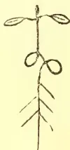
Diagram referred to.
In no publication on rubber have I yet seen it stated how seed should be sown—I mean in what position; and, as a beginner at the game, I shall be glad for information.
[Curvature of the seedling stem is of fairly frequent occurrence in Ceylon nurseries of Hevea. In some cases the stem makes three or four complete turns before assuming a vertical position, and the loops afterwards fuse into a solid mass. Such plants should of course be discarded. All the cases submitted have been discovered only when the plants are wanted for planting out, and some of the specimens were 12 feet high. The early growth does not seem therefore to be much affected, but the plants cannot be expected to make vigorous trees. The cause of this curvature must be sought when the seedlings first appear above ground, and since in all cases up to the present it has not been noticed until the plants were more than a year old, no reason can be assigned. Of course no matter how the seed is planted, the young stem (plumula) has
to curve out of the seed. But whether these cases represent a persistence of this original, necessary curvature, or whether there are other external causes has yet to be ascertained. The common explanation—that the seed is planted the wrong way—is quite at variance with botanical theory.—T. PETCH.]
Kandy, 14th January, 1909.
SIR,—I write to draw the attention of the Society to the desirability of inducing the residents of Kandy and the villagers of the neighbourhood to cultivate the "Lima bean" (Phaseolus lunatus) for the Kandy market instead of the insipid French bean of which tons are to be seen daily coming into Kandy, and with which the residents have to be content as, practically their only staple vegetable. What is wanted is a variety of vegetables. As the Lima bean is an excellent vegetable, there would be certain to be as good a market for it as there is now for the French bean, if not much better. The very reason the latter is so much cultivated is apparently because it grows very quickly. There are several varieties of dambala or berry, and you could let us know which are best worth cultivating. I annex a list of those I have seen in the neighbourhood of Kandy. They all grow well there. If the Kandy and Dumbara Agricultural Societies could obtain a supply of the seed of the Lima bean, something might be done.
J. P. LEWIS.
Awara dambala, large pods, a bush, not a creeper.
El dambala, small pods, 5 inches long, both pods and berries eaten.
Kos-eta dambala (Kos-eta=Jak seed), small pods, 2 to 3½ inches long, berries eaten. (? Lima beans.)
Ratu damala, pods 4 to 5 inches long, with reddish tinge at end and along sides, pods and berries eaten.
Daluk dambala, large pods with four indented edges (hence the name) seeds in centre of the pod.
Machchru Kotte, recently introduced into neighbourhood of Teldeniya by Tamil tobacco growers from India, pods about 2½ inches, berries eaten.
280c
MARKET RATES FOR TROPICAL PRODUCTS.
(From Lewis & Peat's Monthly Prices Current, London, 17th February, 1909.)
| QUALITY. | QUOTATIONS. | QUALITY. | QUOTATIONS. | ||||
|---|---|---|---|---|---|---|---|
| ALCOES, Socotrine cwt. | INDIARUBBER. (Contd.) | ||||||
| Zanzibar & Hepatic | Fair to fine | 90s a 95s | Borneo | Common to good | 1s a 2s 8d | ||
| ARROWROOT (Nata) lb. | Common to good | 20s a 37s | Java | Good to fine red | 2s a 3s 6d | ||
| BEE'S WAX, cwt. | Fair to fine | 23d a 4d | Penang | Low white to prime red | 1s 6d a 2s 8d | ||
| Zanzibar Yellow " | Slightly drossy to fair | £6 12s 6d a £6 15s | Mozambique | Fair to fine red ball | 3s 3d a 4s 3d | ||
| Bombay bleached " | Fair to good | £7 10s a £7 12s 6d | Nyassaland | Sausage, fair to good | 3s 3d a 4s | ||
| " unbleached " | Brk to good genuine | £5 10s a £6 5s | Madagascar | Fair to fine ball | 2s 10d a 3s 8d | ||
| Madagascar " | Dark to good palish | £6 7s 6d a £6 15s | New Guinea | Fr to fine pinky & white | 2s 10d a 3s 6d | ||
| CAMPHOR, Japan " | Refined | 1s 5d a 1s 7d | INDIGO, E.I. Bengal | Majunga & blk coated | 2s 3d a 2s 9d | ||
| China " | Fair average quality | 13s 6d | Shipping mid to gd violet | Niggers, low to good | 1s a 2s 8d | ||
| CARDAMOMS, Malabar " | Good to fine bold | 2s a 2s 5d | Consuming mid. to gd | Ordinary to fine ball | 3s 3d a 3s 8d nom | ||
| Tellicherry " | Middling Jean | 1s 7d a 1s 10d | Ordinary to gd | Shipping mid to gd violet | 3s 5d a 3s 10d | ||
| Mangalore " | Good to fine bold | 2s 2d a 2s 5d | Mid. to gd | 3s 1d a 3s 4d | 2s 9d a 3s 4d | ||
| Ceylon. Mysore " | Med brown to fair bold | 1s 7d a 2s | Oudes Middling to fine | 3s 5d a 3s 8d | 2s 9d a 3s 10d | ||
| Malabar " | Small fair to fine plump | 1s 7d a 2s 6d | Mid. to good Kurpah | 2s 3d a 2s 6d | 2s 3d a 2s 8d | ||
| " Long Wild " | Fair to good | 1s 6d a 1s 7d | Low to ordinary | 1s 6d a 2s 3d | 1s 5d a 2s 4d | ||
| CASTOR OIL, Calcutta " | Seeds | 1s 1d a 1s 2s | Mid. to fine Madras | 1s 5d a 2s 4d | 1s 6d a 2s 4d | ||
| CHILLIES, Zanzibar cwt. | Shelly to good | 6d a 1s 10d | Ordinary to fine | 1s 3d a 1s 5d | 1s 3d a 1s 6d | ||
| CINCHONA BARK.—lb. | Ists and 2nds | 23d a 3d | per lb. | Ordinary to fair | 1s 3d a 1s 6d | ||
| Ceylon " | Dull to fine bright | 3s a 3s 5s | Java | " good pale | 4d | ||
| Cinnamon, Ceylon 1sts | Renewed | 33d a 7d | Bombay | Wild | 5s a 5s 6d | ||
| per lb. 2nds | Org. Stem | 2d a 6d | MYRABOLANES, cwt | UG and Coconada | 4s 9d a 6s 9d | ||
| 3rds | Org. Stem | 13d a 4d | Bombay " | Jubbepole | 4s 9d a 7s | ||
| 4ths | Renewed | 3d a 5d | Bengal | Ehmlies | 4s 6d a 6s 3d | ||
| Chips, &c. | Root | 13d a 4d | NUTMEGS—lb. | Rhaphore, &c. | 5s a 5s 6d | ||
| CLOVES, Penang lb. | Good to fine quill | 10d a 1s 4d | Bombay & Penang " | Calcutta | 1s 4d a 1s 5d | ||
| Amboyna " | " " | 9d a 1s 2d | NUTS, ARECA cwt. | 64's to 57's | 110's to 65's | ||
| Ceylon " | " " | 7d a 11d | CINNAMON " | 160's to 115's | Ordinary to fair fresh | ||
| Zanzibar " | Fair to fine bold | 63d a 91d | NUX VOMICA, Cochin | Ordinary to good | " " | ||
| Stems " | Dull to fine bright bold | 10 1/2 a 1s | per cwt. Bengal | " " | 11s a 12s | ||
| COFFEE | Fair to fine bold | 7d a 33d | Madras | " " | 9d a 11s 6d | ||
| Ceylon Plantation cwt. | Fair to fine bright | 7d a 9d | OIL OF ANISEED | " " | 6s 3d a 8s | ||
| Native | Fair and fine " | 4d a 5d | CASSIA " | Fair merchantable | 4s 5d | ||
| Liberian " | Good ordinary | 2d | LEMONGRASS " | According to analysis | 4s 4d a 4s 8d | ||
| COCOA, Ceylon Plant. | Medium to good | 110s a 112s | NUTMEG " | Good flavour & colour | 2d a 23d | ||
| Native Estate " | Good ordinary | 80s a 108s | CINNAMON " | Dingy to white | 14d a 2d | ||
| Colombo Root | nominal | 43s a 50s | CITRONELLE " | Ordinary to fair sweet | 21d a 1s | ||
| CHOTON SEEDS, sift. cwt. | Special Marks | 73s a 85s 6d | ORCHELLA WEED—cwt | Bright & good flavour | 1s 1d | ||
| CUBES " | Fair to good | 65s a 71s 6d | Ceylon " | Mid. to fine not woody | 12s 6d a 15s | ||
| GINGER, Bengal, rough " | Red to bold | 42s a 64s | Zanzibar " | Picked clean flat leaf | nom. | ||
| Calicut, Cut A " | Small to fine bold | 35s a 4s | Alleppee & Tellicherry | " wiry Mozambique | 34d | ||
| B & C " | Small and medium | 30s | Ceylon " | Fair | 34d | ||
| Cochin Rough " | Small and D's | 35s | Singapore " | " to fine bold heavy | 34d a 41d | ||
| Japan " | Unsplit | 25s a 60s nom | Acheen & W. C. Penang | Dull to fine | 34d | ||
| GUM AMMONIACUM " | Sm. blocky to fair clean | 16s a £15 | (White) Singapore " | Fair to fine | 3d a 33d | ||
| ANIMI, Zanzibar " | Pale and amber + tr. spts | £13 a £15 | Siam " | Fair | 44d a 8d | ||
| Madagascar " | Little red | £13 a £15 | Penang " | Fair | 5d | ||
| Arabia F. I. & Aden " | Bean and Pea size ditto | 75s a £12 | PLUMBAGO, lump cwt. | Fair | 41d | ||
| Turkey sorts " | F r t g d red sorts | £9 a £12 | chips | Fair to fine bright bold | — | ||
| Ghatti " | Med. & bold glassy sorts | £7 a £8 15s | dust | Middling to good small | — | ||
| Kurrachee " | Fair to good palish | £4 a £5 10s | SAGO, Pearl, large | Dull to fine bright | — | ||
| Madras " | Red " | £4 a £7 10s | medium | " " | 14s a 16s | ||
| Asafetida " | Ordinary to good pale | 25s a 32s 6d nom. | small | Ordinary to gd. soluble | 12s 6d a 15s | ||
| KINO " | Sorts to fine pale | £2 a £7 10s | SEEDLAD cwt. | " " | 11s a 13s | ||
| MYRRH, picked cwt | Reddish to good pale | 20s a 32s 6d nom | SENNA, Tinnevelly lb | Good to fine bold green | 65s a 95s nom. | ||
| Aden sorts " | Dark to fine pale | 29s a 43s | SHELLS, M. o'PEARL— | Fair greenish | 5d a 7d | ||
| OLIBANUM, drop " | Clean fr. to gd. almond | 15s a 10s | Egyptian cwt. | Common specky and small | 34d a 43d | ||
| pickings " | con. stony to go-d block | 25s a 75s | Bombay " | Small to bold | 25s a 90s nom. | ||
| siftings " | Fair to fine bright | 6d a 9d | Mergui " | Fair to good | 26s a £5 10s | ||
| INDIA RUBBER lb. | Fair to fine pale | 80s a 90s | Manda " | Sorts | £2 a £7 | ||
| Ceylon, Straits, " | Middling to good | 50s a 65s | TAMARINDS, Calcutta | Wid to fine bl'k not stony | £5 a £8 10s | ||
| Malay Straits, etc. | Good to fine white | 40s a 55s | per cwt. Madras | Stony and inferior | 11s a 13s | ||
| Assam " | Middling to fair | 25s a 35s | TORFOISESHELL— | " " | 4s a 5s | ||
| Rangoon " | Low to good pale | 10s a 20s | Zanzibar, & Bombay lb. | Pickings | 13s a 26s | ||
| Fine Para bis. & sheets | Slightly foul to fine | 13s a 15s | TURMERIC, Bengal cwt. | Fair | 5s 6d a 19s 6d. | ||
| " Cera " | Fine Para bis. & sheets | 5s 6d | Madras " | Finger fair to fine bold | 9s a 21s | ||
| " Crepe ordinary to fine. | 5s a 5s 7 1/2 d | Do. " | Bulbs | 15s a 17s | |||
| " Fine Block | 5s 10d | Cochin " | Finger | 15s | |||
| " Scrap fair to fine | 4s 2d a 4s 9d | " " | Bulbs | 13s | |||
| " Plantation | 3s 2d | VANILLOES—lb. | Gd crystallized 3/4 a 5/8 in | 7s a 14s | |||
| " Fair II to good red No. | 1s a 2s 6d | Manitoutis | Foxy & reddish 3/4 a 1 | 6s a 10d | |||
| " " | 2s 3d a s 8d | Seychelles | Lean and inferior | 6s a 7s | |||
| " " | VERMILLION " | Fine, pure, bright | 2s a 2s 10d | ||||
| " " | WAX, Japan, squares | Good white hard | 49s | ||||
COMPILLED BY A. M. & J. FERGUSON.
No. 3.]
MARCH, 1909.
[VOL. IV.
We publish on this page a most interesting document of instructions to Managers on certain tea and rubber estates in Java, which reaches us through the hands of a prominent Ceylon planter, who, in turn, had it sent to him from London. We are not permitted to publish the name attached; our correspondent had no authority to do this. He tells us he quite agrees with all the Java authority says as to the ruin of estates by clean weeding; he is old enough, he adds, to remember planters who said of coffee that short crops came in with clean weeding. Mr. Kelway Bamber (as far as our informant understands him) condemns clean weeding in the fullest and most comprehensive manner; and although, to a certain extent, it must be allowed on tea estates to work the tea properly, it is the worst of folly to indulge in it in rubber estates. This Ceylon planter saw quite recently a gang of between 300 and 400 coolies in lines, armed with mamoties, scraping a steep hill side of a new clearing. The loss of soil resulting from such operations is greater than all the manure that could be applied would ever compensate for. He is trying partial weeding himself; and where it is properly and reasonably done, he has no hesitation at all in saying the growth of rubber is greatly superior to clean-weeded fields. As certain eminent planters—he remarks—make clean weeding a kind of fetish, he has no wish to start a discussion which might drift into personalities; but the opinions we now publish are important, and we have pleasure in giving them full prominence and expressing our readiness to publishing anything on the other side, that of the clean-weeders.
Gentlemen,—I forward for your perusal enclosed extracts from Reports of Mr Kelway Bamber, the well-known Ceylon Expert in Soils and General Tropical Cultivation made on ————-and ————-Estates belonging to the ————-Java Rubber ————-Co. this month, as I feel that his remarks express in a few words so exactly the advantages of a system which I have urged upon all those working under me for many years with excellent results where they have been followed, whilst where the opposite has been the case the system of keeping un-dulating land or hilly ground clean by ordinary 'ngored' work with the 'Parang,' and similar tools has resulted with just the opposite effects.
I maintain, and have always maintained, that the scraping of the soils clear :—
(a) Means loss of the best soil within a given amount of years varying in accordance with the depth of the good soil, heaviness of the rainfall and the frequency with which this treatment is done.
(b) Encourages grass weeds such as 'eureh', djukoet pait, etc., to the detriment of the better and more succulent class of weeds.
(c) Is the most expensive form of upkeep there is, as cutting all the tops of the Eureh plants just about level with the ground has the same effect on it as pruning has on a Tea bush, e.g. that the growth of the weed is strengthened, whilst far more tops come up than there were before the treatment.
If only of those who are in charge of Estates would get firmly into their heads that the appearance of an Estate at any given moment—that is, whether it is looking beautifully clean or rather dirty—is a small matter compared with the
ENORMOUS IMPORTANCE OF PRESERVING THE SOIL of same which after all is one's Capital Asset, loss of which must naturally mean deterioration of the
36
282The Supplement to the Tropical Agriculturistproperty, diminution of Crops, and depreciation of that Estate. The first and the first and foremost point every Manager should keep before him is the retaining of the best part of the soil, for a maximum period, from the time the land is cleared, even if doing so forfeits the compliments of a V. A. or visitors' congratulations, upon the cleanliness of the Estate—which may give at the moment much satisfaction to him, compared with criticisms to the opposite effect.
I know of Estates in the close vicinity of where I have lived most of my Java career where the Tea crops are reduced to a minimum, almost entirely because the best part of the soil has long ago been washed down to the Ravines through the fault of former Managers, who thought of nothing except pleasing their V. A. on the ground of having the Estate beautifully clean. The result of this is that profits are nil and the shares standing at a hopelessly low price, there being practically no soil left to grow the crops which are required to make such profits.
If gentlemen will only give themselves the trouble of making a good experiment of the two systems on a fairly large scale, they will see, I am sure, the difference and results—within a year—for themselves. The system I advocate is digging or forking out all "Eureh" "Casso" and injurious grasses, and leaving the harmless or rather beneficial weeds such as "Sintrouge" "Djukoet Mingoe", to grow up fairly plentiful but not to such an extent as to impede in any way the cultivation in question. When these weeds begin to get out of hand, cut them down, but at a couple of inches from the ground, so that
THEIR ROOTS REMAIN
AND PREVENT DISPLACEMENT OF SOIL
when you get the heavy rains. But the plan of taking out systematically and wherever they show themselves the Eureh and grass weeds by means of "garpee djodjo" (forking out grass weed wherever they appear, as opposed to forking a garden right through) a system which should be at a cheaper cost per Bouw every time that coolies employed for this work go round the Estate until the cost is reduced to a trifle, must be systematically, and at regular intervals, followed.
In this way you are constantly decreasing your injurious weeds, and encouraging harmless and beneficial weeds, which in themselves keep the first-named out of the gardens.
Once a year or more if necessary and if funds are available the whole of these
BENEFICIAL WEEDS SHOULD BE DUG RIGHT IN
THE EARTH, BEING SIMPLY TURNED OVER
in big clods. After this treatment you will see that the injurious grasses are still further diminished, and the character of the weeds which come up still further improved, until you get a system which combines the advantages of preserving soil, green manuring and thorough cultivation of soil, which—it is impossible for any one who has given much attention to the results of the different systems to doubt—is entirely to the benefit both of the soil itself, and of the growth and health of the product undercultivation.
I will be extremely obliged if all gentlemen to whom this letter is addressed, will
RESERVE A CERTAIN ACREAGE FOR A THOROUGH
AND SYSTEMATIC TRIAL
of above; whilst, if they wish it, they might try the results of the other system of keeping the gardens clean by ordinary weeding (ngored) which is still the most prevalent one, on most Eastern Estates in the Preanger. And I will be extremely obliged, if they will keep an exact record of the frequency with which the different kinds of treatments to the grounds are given giving cost of same each time and general results at the end of the year, both as regards the appearance of the soil, and growth and general healthiness of the trees and bushes, being cultivated. Such informations or conclusions I am pleased to hold at the disposal of any of the gentlemen working on Estates I am connected with, and also to hear their opinions upon what I have written above. In my opinion the question of the best form of upkeep in the long run for our Java soils, on steep or even undulating land, is far and away the most important one which the would-be successful planter of the future has to decide upon.
One has only to go through old hilly gardens on Estates in the Preanger, where the Coffee and Kina gardens were for years and years kept clean by the ordinary ngored system, and where only with the greatest assistance and heavy cultivation, can even a strong product like the tea bush be got to give a fair production, and then to go into a bit of unopened forest, joining same gardens, and with exactly the same lie of land and originally the same soil, to realise what a cruel destruction of property and loss of Shareholders' money has been effected by this,
IN MY OPINION, MOST DAMNABLE OF SYSTEMS by which such estates have been kept beautifully clean in the past to the satisfaction of visiting agents but at a cost of the value of the Shareholders asset. The same results can be seen on very many of the steeper Tea Estates in Maskeliya, Dikoya and other steep districts of Ceylon.
Hoping those to whom this is addressed will give this matter their close and earnest attention.—I am, Gentlemen, yours faithfully, &c.
MESSRS. McMEEKIN & CO.'S
ANNUAL TEA REPORT.
Messrs. McMeekin & Co.'s annual report on the tea trade is usually the last to reach us from London; but it invariably more than makes up for the lateness of its appearance by the comprehensiveness of its scope and the novelty of its contents. Points of very immediate interest to the tea trade are carefully investigated and presented by Messrs. McMeekin, which as a rule are ignored by the majority of tea firms in their annual reports. Following this will be found the full text of Messrs. McMeekin's deliverance on the tea trade of 1908, which we are sure, all our readers will consider well worth reproduction in the T. A. The report deals with the position of the industry in all producing countries and it will be noticed that Messrs. McMeekin's remarks on Java tea bear out what we stated in alluding to the official statistics of tea production in Java we published last month. Java teas, it is pointed out, have made more
and Magazine of the Ceylon Agricultural Society.283progress within the year than those of any other growth. The trade in London, it is true, has made very little progress; but the teas are laid down so cheaply at the outports that they now form a considerable proportion of the trading in certain centres, thus seriously restricting the possibilities of business in other growths. Dealing with the "Purity of Tea," the report subsequently states that "the only growth showing a general improvement is that of Java." The prevalence of "stalks" in Indian and Ceylon Teas has, we are informed, caused much complaint from country and foreign buyers. Java Teas being, so far, much freer from anything of the kind, have frequently received a preference in consequence. This is a very clear and definite indication of one direction in which British producers are being beaten by the Dutch Colony. The fault complained of can be remedied and all planters both in Ceylon and India ought to make it a point to see that "stalky" tea is not in future placed on the market. With regard to future prospects Messrs. McMeekin regard as the gravest danger to the industry a large yield from India during 1909. In addition to the report we reproduce elsewhere, Messrs. McMeekin publish a table showing tea statistics for six calendar years and a chart with a statement showing the alterations in the relative proportions of different growths of Tea consumed during 22 years ended 31st December, 1908, the variations in the London average prices for Indian teas, and the changes in rate of Duty.
(Messrs. McMeekin & Co.'s Review.)
The reports upon the heavy lines of trade of all kinds during the year are generally unsatisfactory, and Tea has, to a certain extent, shared in the bad results. The financial convulsion which shook New York in November, 1907, and disturbed the money markets of the world, had prolonged after-effects upon nearly every important description of business, and the fact that Tea was not more unfavourably influenced is strong testimony to the sound and general position of the trade.
A remarkable change came over the character of the demand during the year, and the commonest grades, which for a long time had been kept at a high level of price as compared with those considered to be worth intrinsically much more money, were in lessened demand. Prices of the former consequently fell, slowly but surely, throughout the first eleven months of the year. Coincident with the neglect of the common grades there came an improved demand for better qualities and a widening range of prices. The averages of prices for both Indian and Ceylon Teas showed some decline over the high level of the previous year, but it is probable that the year's working was more generally satisfactory to the whole body of producers. The phenomenal profits made by Bheel Estates from enormous out-turns of low grade stuff will not be so conspicuous as they were, but, on the other hand, more encouragement will be given to those
producing Teas of good quality. The turning from the demand for mere lowness of price to a requirement for quality is a highly satisfactory feature that should receive every encouragement.
The estimated value of the debentures and shares of 170 Tea producing companies representative of India and Ceylon was at 1st November, 1908, £20,000,000 as against £21,600,000 twelve months earlier. Having in view that an average fall of approximately of a penny per pound was recorded on the total yields, it is surprising that the capital difference was not greater, looking to the reduced dividend-paying power. The shares, however, are generally firmly held by permanent investors.
Following a succession of difficult years, that just gone has been one of the worst on record for those who try to make a living out of merchant business in tea. The large wholesale dealers, although working on lower values and a lower Bank rate, have again had to face serious losses from depreciation in stock values, the long continued decline in the lower grades rendering profitable business impossible. The smaller country dealers and the retailers have been faced with the competition of the multiple-shop concerns and it has frequently been of an exceedingly unfair character. Gross misrepresentation in the way of lavish advertising as to quality and value is very hard to deal with, but here and there independent traders have made a good stand for the old-fashioned honest methods of describing goods. The failures among retail grocers have for the year been unusually numerous, and the wholesale trade has suffered accordingly. Even the multiple-shop companies, although several of them have made numerous additions to the number of their branches and in some cases added seriously to their working costs, have not all been able to maintain their previous rates of dividend.
The general lack of prosperity throughout the Kingdom and the large percentage of unemployment known to exist in many districts had little obvious effect upon the consumption of Tea. The quantity taken actually showed an increase on the previous year of about million lb, and was again the highest on record. Allowing, however, for the usual natural increase in the population, a small decline in the quantity consumed per person is shown.
In the matter of consumption Tea compares favourably with most of the large lines of goods figuring in the Board of Trade returns and apparently it is likely to be one of the last items to be prejudicially affected by adverse industrial conditions.
Owing to the continued increase in direct trading with India, importations into London again showed a decline on the previous year. The offerings in auctions there, were, however considerably heavier, but the difference is explained by the reduced extent of selling forced on the producers in December, 1907, in consequence of the abnormal financial position then existing. In the earlier months of the New Season the demand in Calcutta for several of the large direct outlets was not so strong as in 1907, and consequently more tea in proportion to the total yield was
284The Supplement to the Tropical agriculturistshipped to London (about 8,000,000 lb. increase on the previous season's figures were received there within the old year). The demand improved towards the close of the year, doubtless in consequence of the considerably lower range of prices established in September and October. The quantities offered in the Calcutta auctions from the commencement of the New Season till the close of the year were about 2,000,000 lb. less than in 1907.
The total production of the whole of India for 1907 was reported as 248,000,000 lb., or an increase of 7,000,000 lb. over the very large total of 1906. It is impossible at present to estimate closely what the figure for 1908 will actually result in, but in all probability the increase will be about 5,000,000 lb., giving a total of 256,000,000 lb. The recorded exports from India in 1907 were 228,000,000 lb., and it is considered that a serious discrepancy exists in the returns of yield, as it is thought improbable that the internal consumption of India would equal 20,000,000 lb. The principal development in production has occurred in Assam, where a more favourable position as to labour is influencing yields. It is fortunate for all concerned in the business that the weather conditions were somewhat adverse, and that, therefore, the very much larger yield which at one time was expected was not harvested.
Although further Tea is now to a moderate extent being planted in Ceylon, it may safely be assumed that the planting during say four or five years back was mostly done in rubber. As much of the rubber was actually planted among the existing Tea bushes (a system not calculated to conduce to the rapid and successful growth of either product) the development of the rubber trees was bound gradually to tell upon the Tea bushes and ultimately to render their continued culture an impossibility. There is little doubt that the influence of rubber on Tea yields is now beginning to be felt, and that it will soon show itself more definitely, while an increased yield from new Tea planting is still somewhat remote. It may be assumed that the satisfactory prices ruling for Ceylon Teas led to as free plucking as possible; but, notwithstanding that, the total crop for 1908 showed a decline on the 1907 figures of about 2,000,000 lb. As other countries took, in the aggregate, about as much as in the previous year, the deficiency in yield necessarily came off the shipments sent to Great Britain. The shortcoming made room for part of the excess from India and materially helped to steady and enhance the London market for Ceylon growths. The Home Trade consumption of Ceylon Tea was a record for quantity within the year, viz., 92,960,000 lb, but in 1900 the figure approached closely to that, being 92,470,000 lb. The share of the total was, however, in the latter year 37 per cent, while in 1908 it was only 33½ per cent. It had, however, in the interim been down to 30½ per cent. The returns to Ceylon producers during the year have apparently been scarcely so favourable, on the average, as those made upon Indian growths. The ratios of prices to those of 1907 (taking Colombo and London markets together, as compared with Calcutta and London markets) were less favourable; there was a reduced instead of an enhanced total crop and the high cost of rice was more severely felt than in India.
Those teas have made more progress within the year than those of any other growth. The total quantity exported from Java within the 12 months ended 30th June, 1908, was 32,742,000 lb against 24,950,000 lb in the corresponding previous 12 months. They have gained also in the way of improved quality and in the amount of consumption in all the larger outlets, viz., Holland, Great Britain and Ireland, Russia, Australia and Persia. The trade in those through London has made but little progress on the average of recent years, but they are so cheaply laid down at the outlets that they now form a considerable proportion of the
trading in certain centres, thus seriously restricting the possibilities of business in other growths. It will be seen from the statistics that the British home consumption showed an increase of nearly 50 per cent. in five years. The reports of marvellously cheap labour, unusually rich soil, heavy yields and consequent low costs of production have attracted attention to the desirability of the island as a field for investment in tea growing, and names hitherto identified with tea production in British dependencies only are now becoming associated with Java production. This may be in individual self-defence, but any large development in that island cannot fail to affect prejudicially India and Ceylon, and may lead to a recurrence of the outcry for protection for a British industry, formerly so frequently raised against China tea.
Notwithstanding the advertising and the large amount of press publicity it has received, China Tea has fallen back somewhat in British Home Trade use within the year. The considerable increase, relatively speaking, in the imports has only led to a piling up of unsaleable stocks of such a low character that while complying with the Government standard of chemical purity, they would not be admitted to the United States of America or Canada, where a more definite restriction is placed upon what may be sent into consumption. Those importations include a considerable increase in green teas, a class that is almost wholly taken for export. They probably came to London because of temporary derangements at other points, and, judging from the relatively high re-exports of China tea, a considerable proportion of the increased arrivals in that class has passed out of the stock, leaving an accumulation consisting chiefly of China sifttings that can only be worked off very slowly in small percentages of the cheaper blends retailed in the home trade. Although the business of importing China teas to London has now been reduced to a very small compass, its volume during the year was sufficient to cause serious embarrassment to some of those engaged in the business. Owing to high costs and bad realisations the results were disastrous, and it is reported that considerable losses were made upon teas sent direct from China to the other markets that take larger quantities.
Those responsible for the modern efforts to boom good China tea would probably carry with them the respect and goodwill of the producers of other growths, and of the distributive dealers also, were they less disingenuous in use made of abnormal statistics. It can do no good in the long run to give publicity to misleading figures.
The latest official statistics issued by the Department of Finance in Tokyo show that the yield of Tea in Japan during 1906 from 122,500 acres was 58,260,000 lb being a decline since 1897 of 2,000 acres and 12,000,000 lb. The value of the exported quantity was stated to be £1,036,000. The yield in Formosa during 1906 was 15,168,000 lb, or a decline of 9,060,000 lb, since 1878. The United States of America took a very large proportion of all the quantities exported from both places.
The re-exports from the United Kingdom have again shown a decided falling off, and are back to about the level current prior to 1906. With the exception of a trifling increase in September, the decline was continuous during the first 10 months of the year, but in November and December there were gains amounting to nearly 2,900,000 lb., doubtless arising from the lower scale of prices ruling in London. With the exception of Canada, Indian Tea lost ground in all the principal outlets. Ceylon, while again losing heavily to Russia and in the general export trade, made headway in business with the United States of America, Canada and European countries other than Russia. The loss of trade in Tea between London and Russia is directly attributable to the policy of retaliation pursued by the latter because of the exclusion of Russian Sugars from the English market by the Brussels Convention. Although the barrier has now been removed, the trade does not appear to be returning, except in a casual manner,
and Magazine of the Ceylon Agricultural Society.285Calcutta and Colombo taken together have not, any more than London, gained during the year in their tracing with the rest of the world, as compared with 1907. Statistics are as yet incomplete, but it appears as if Russia would take about 2 million pounds less; Australasia is taking about 4 million pounds less; Canada and the United States of America together take an increase of million pounds, while there is a general increase in places not specially named of about million pounds.
The quantity of Tea absorbed for the use of passengers and ships' crews has increased in proportion to the large development of tonnage afloat in merchant and Government vessels, but it is unfortunate that so little attempt is yet made to supply tea better in quality and in methods of infusion for the use of those who "go down to the sea in ships."
There was a considerable increase in the number of tea samples analysed by authority of the Commissioners of Customs during the last completed Customs' year, which doubtless arose from the free importation of China tea of at least questionable purity. Only 33 packages were condemned as unfit for food, while 2,070 were refused admission for Home Consumption. The percentage is very small relative to the whole importation and probably a large portion of the rejected teas consisted of packages damaged in transit.
The general character of all tea arriving from abroad does not tend to improve, and it would appear that the same amount of care as formerly is not exercised in the preparation. The only growth showing a general improvement is that of Java. The prevalence of "stalks" in Indian and Ceylon teas has caused much complaint from country and foreign buyers, and Java teas being, so far, much freer from anything of the kind, have frequently received a preference in consequence.
Fortunately for the trade, there was about a minimum of disturbance of regular trading conditions arising from anticipation of Budget possibilities, and it is to be hoped that 1909 will be allowed to pass in an equally placid way. Unfortunately, attempts are being made by professional scaremongers to work up an agitation about a possible increase of duty, but they are unlikely to attract serious attention.
The New Year started with a stock on hand in all the bonded warehouses of the United Kingdom of 128,393,000 lb., against 124,712,000 lb. at the end of 1907. The difference may be taken as roughly representing the dead-weight of almost unsaleable China sorts now lying in London. Of the stock, however, probably somewhere about 5,000,000 lb. more than at the same time last year are held by the buyers and not by the importers. The moderate prices ruling in November led to free buying for forward requirements, and it is known that some prominent concerns can now stay out of the market for months.
They are unlikely to pay the recently made advance on lower grade teas until their cheaper stocks are exhausted. Much of the buying in December was not for immediate requirements but merely to guard against the risk of another serious advance in tea for price. A rise actually resulted, but, as it did not come from an actual demand for immediate consumption, it will be difficult to maintain. Should the sellers of tea attempt to regulate the weekly offerings, it will be necessary to take into account the surplus over the quantity at the same time in last year, which has passed into the stocks of dealers and blenders.
Although 1909 is starting at a more moderate level of price and with better general financial conditions, there are some factors in the future that may be viewed with concern. China tea can be dismissed as a negligible quantity; Java may show further development; Ceylon looks like being stationary or even retrograde in yield, but India is still very far from having reached a maximum possible, without making any allowance for new areas coming into bearing. Given generally favourable weather conditions, with the full labour forces now on the majority of estates everywhere, there is the possibility of a large increase in production at any time. With the home consumption practically standing still and the foreign trade taken all round not progressive, a large yield would be disastrous. There is hope that the lower prices may stimulate consumption and that possibly the foreign trade of 1909 may expand, because it would appear as if part of the large export business done in 1907 was because of an over-estimation of requirements, leading to a corresponding reduction in requirements during 1908.—McMEEKIN & Co., 10 & 11, Lime Street, E.C., London, 19th January, 1909.
In its December issue the "Toyo Yakugo" of Yokohama refers to the Japanese camphor-agency recently acquired by the Mitsui Company. Owing to the fact that Japanese camphor had to face the powerful competition of the cheaper Chinese and synthetic camphor, the company, it states, resolved to obtain absolute control of the business, and to place the staple on the foreign market in the same way as ordinary merchandise, without being subject to Government control. Last August the European market heavily declined, and the Formosan monopoly authorities were filled with dismay. The Mitsui Company, quick to seize the opportunity, lost no time in persuading the authorities that the present system of working the monopoly was very inconvenient, as it impeded the taking of prompt action to meet circumstances. By the present arrangement the Minister of Finance agrees to relegate to the Formosan Government the right to dictate the price of camphor abroad, the Formosan Government in turn being authorised to place the matter in the hands of the London and New York agents of the monopoly. These officials are thus enabled to lower or raise the price according to their own judgment, and they are now transacting business on these lines in London and New York.—Chemist and Druggist, Jan, 16.
286The Supplement to the Tropical Agriculturist.The possibility of the profitable establishment of an essential oil industry in the Seychelles Islands has long been under experimental consideration, and about two years ago the idea was first put into operation on a commercial scale, when a modern factory, provided with a boiler and a still of 4,000 litres capacity, was erected. In 1906 work was started by the distillation of citronella and lemon grass; but owing to the late fall in price of the oils obtained from these two grasses, it was decided in 1907 to make cinnamon oil the chief product of the factory for the present. The cinnamon grown in the Seychelles is the same variety as that cultivated in Ceylon. Oil is yielded by the roots, the bark, and the leaves of this plant, but from the bark is the most valuable of the three products. The trees are cut down periodically, and the bark from which the oil is distilled is obtained from the young shoots arising from the stumps. These shoots are available for the purpose in about two years. It is not only the young shoots, however, from which the bark is obtained yielding the cinnamon oil. This is contained in the same proportion by the bark from older trees, and tall trees about 1 ft. in diameter are said to yield as much as 100 lb. of dry bark when cut down. The average tree, however, does not give more than about 20 lb. of dry bark. This contains from 9 to 9.4 per cent of cinnamon oil. Samples of oil produced in the Seychelles by water distillation about two years ago were forwarded to Europe and valued at about £2 6s per litre (a litre being approximately 1½ pint.) It is anticipated, however, that with the improvements in the product brought about as the result of the establishment of the new factory, a higher price will be obtained in future and the industry placed upon a sure footing.—Morning Post, Jan. 10th.
ARTIFICIAL CAMPHOR.—It is reported from France that a new company, known as the Société le Camphre, of 68, Boulevard de Strasbourg, Paris, is to acquire various patents for the production of synthetic camphor, including those of MM. Dubosc and Behal. A factory has been secured at Bonnières, and work is to be "commenced in the course of a few months." The old story is circulated that the plan will be capable of producing three to six tons of artificial camphor per day!—C. & D., Aug. 31, 1907.
Since the above paragraph was written, facts have transpired which show that the Société le Camphre has fallen upon evil times, the company having practically exhausted its capital of 7,100,000f. (284,000l.), while the production has been relatively unimportant. This much we gather from lengthy reports on the condition of the company which have been published in the French financial Press. Although the company was formed in February 1907, no profit-and-loss account has been issued, but a statement of accounts to June 30, 1908, shows that a sum of 4,169,732f. has been expended on the purchase of patents, and that a further 2,300,000f. has been laid out in land, buildings, etc. On June 30, 1908, there was 521,070f. at the disposal of the company, while the liabilities
were 270,497f., leaving a balance of 250,573f., which was insufficient to meet working-expenses, so that a fresh issue of capital is necessary. It appears that 'Le Camphre' was an affiliated undertaking of the Société l'Oyonnithe, which had been able to secure the patents for the manufacture of synthetic camphor, and they in turn formed or caused to be formed another company to which they sold the patents. Subsequently the shares were 'boomed,' and the interest of the public was excited to such an extent that many shares were disposed of by the promoters at more than 100 per cent premium. It is not known what proportion of these gains accrued to 'l'Oyonnithe,' but on December 31, 1907, this company did not possess a single share of the affiliated company, showing that the confidence inspired in the new company was not very great. Time has proved the wisdom of 'l'Oyonnithe,' as the 100f. shares of 'Le Camphre' are now worth 36f. only. The meeting of shareholders on December 31 was stormy, considering that many of them had purchased shares at double the par value. The present board of directors were only able to hold on to their office by the votes of absent shareholders. Aggrieved shareholders pointed out that the company had been stating that the daily production of synthetic camphor was 200 kilos., whereas it appears the company has only produced 2,500 kilos. since its formation. Professor Behal declares he has not received a penny for the sale of his patents, though he was also promised a bonus of 25c. per kilo. on the manufacture.—Chemist & Druggist, Jan. 16.
ASIA AND AUSTRALIA.—The production of the Ceylon and Straits commodities has enormously increased, it has risen from 1,400 to 2,500 tons. These commodities, which are prepared with great care and much experience, have doubtless great prospects. Germany already consumes fair quantities of same, however, the consignments offered here have been up to the present still unimportant. London offers, however, always lower than Ceylon itself. The import of this fine Rubber is strongly to be recommended. From Borneo arrived shipments of fair amounts, principally Gelotong. The increase is probably on account of a new, important consumer.
1 a.—Borneo becomes from year to year worse and is only slightly better than quality. No. 2 a.
From Sumatra and Java very fine lots have arrived, in this quality a great deal can be done. The quality of Penang has slightly declined. From Rangoon and Tonkin only small shipments have arrived. New Guinea and New Caledonia arrived only insignificant quantities and besides mostly via foreign countries.
Finally we refer still to the enormous developments which have taken place in respect to the demand in Germany, with its over 100 factories it has established itself at the head of all European countries. We trust that the time is not far distant when the German demand can be satisfied on the German market,
and Magazine of the Ceylon Agricultural Society.287H.M. Legation in Brazil has forwarded the following memorandum on the production of herva maté in Brazil. It appears that this article took the third place in Brazilian exports in 1906, and fifth place in 1907, the value of the export each year being nearly 2,000,000L. :—
"Ilex Paraguayensis' or Paraguayan tea, known also as 'Missionaries' tea' and 'Jesus' tea,' is to be found wild in immense quantities in the Brazilian States of Rio Grande do Sul, Santa Catharina, Paraná, Matto Grosso, São Paulo, Goyaz and Minas Geraes; but more particularly in Paraná. It was first discovered by the early missionaries, who found it in use among the natives of Paraguay, to which country it is also indigenous. It is met with generally in the form of a tree ranging from 9 to 18 feet in height, there being three varieties of the species known, viz., the 'latifolia' with broad leaves, the 'longifolia' with long leaves, and the 'angustifolia' with small leaves, the last of these being the most appreciated.
It is gathered between the months of April and September, the leaves being considered more mature for the purpose in June and August, and the trees are allowed from four to five years to recover from the effects of a very rough harvest. The branches are broken off and the leaves are withered over a smokeless bonfire, to prevent them from turning black, and they are further submitted to a primitive process of 'curing' later.
"The original method of consuming maté, and the manner still in vogue in South American countries, is to pour hot water on the top of the leaves and sip through a tube—the same leaves serving for innumerable brews if they are not allowed to cool. It is found, however, to give a very good result when prepared like other teas, and, in comparison with the latter, is said to be much more digestible and less harmful to the nerves. It is further stated by writers on the subject to be a stimulant and tonic, its qualities in these respects having been very marked indeed during the Paraguayan war, at which time soldiers were found to be able to endure the greatest hardships and go for days without food if provided with maté.
"The French Consular Agent in Curityba, some time back, tried to bring herva maté before the notice of his Government for the use of the French colonial army, he being persuaded that it would prove a preventative against abuse of alcohol and tropical diseases. To support his arguments he stated that a German military-medical council had recommended its substitution for ordinary tea generally among the German troops. This may account for the fact that maté is beginning to find its way now into Germany, and even more so into Italy, though the imports into both these countries at present
are very insignificant. It is also becoming known in France and Portugal, whilst the amount sent to England has so far scarcely attained the proportions of a sample.
of the Southern Brazilian forests is reputed to be inexhaustible, and presumably could at any time be largely increased by planting and cultivation if there were greater demands for it. In the meantime the exports are considerable to Argentina, Uruguay and Chile, with occasional shipments to Paraguay also, though none whatever is exported to any of the other countries in South America.
"Maté of course is considerably cheaper in this part of the world than are eastern teas, and those by whom the taste for it has already been acquired are loud in declaring it to be wholesome and refreshing and to be possessed of innumerable medicinal virtues. The maté which is shipped from Rio de Janeiro and the other important ports of Brazil is usually 'in transit,' the natural ports for direct shipments being the little-known places, such as Paranaguá, Antonina, São Francisco, Porto Murtinho and Porto Alegre. The increase in the export from Porto Alegre in the last few years has been very remarkable. In the year 1902 only 11 tons were shipped, while in 1906 the shipments had increased to 11,000 tons, an advance which, while enormous, has at the same time been gradual and has since been maintained.
"The following statistics show roughly the increase in the foreign exports of maté from Brazil":—
| To Argentina |
To Uruguay |
To Chile |
To Exports |
|
|---|---|---|---|---|
| Tons | Tons | Tons | Tons | |
| 1902 | 31,000 | 10,000 | 1,600 | 42,900 |
| 1903 | 29,000 | 5,000 | 3,000 | 37,000 |
| 1904 | 32,000 | 10,000 | 2,000 | 44,000 |
| 1905 | 30,000 | 10,000 | 1,000 | 41,000 |
| 1906 | 43,000 | 18,000 | 2,000 | 63,000 |
—Board of Trade Journal, Dec. 31.
Mr Walter Towgood writes as follows :—It is still an open question whether it is advisable to interfere with nature by forcing young rubber trees to throw out branches. Almost all cultivated trees are pruned and shaped according to the requirements of the agriculturist and in some cases a tree's natural habit is entirely altered, as for instance, in tea and coffee. The former of these is, however grown for its leaf and the latter for its fruit, but in Para rubber we have to deal with the products of the bark and therefore the shaping of the stems. Hitherto attempts have been made to force rubber trees to branch by thumbnail pruning or topping, but this has not been attended with success, as the upward growth of the tree being stopped, the place of the main stem is taken, not by true branches, but by suckers which are very liable to split off and in doing so the stem itself is also frequently split, thereby seriously damaging the tree. Moreover, the tree once having been headed back, the tapping height of
288The Supplement to the Tropical Agriculturistthe stem is fixed for all time. I have recently found that rubber trees can be forced to throw out true branches without interfering with their upward growth. It is then only necessary to prune off superfluous branches in order to shape the tree in any desired form; to accomplish this all that is necessary is to cut off all the leaves, leaving the stalks attached to the stem, these will dry and fall off in a few days and the tree will throw out branches from each node.
Para rubber being a deciduous tree, this removal of the leaves is, after all, merely a forestalment of nature and should therefore be done at the season when the older trees shed their leaves. It is also best to choose the time when the topmost shoot has matured and before a fresh shoot has commenced to grow. Great care must be taken not to injure the bud and thereby interfere with the upward growth of the tree. The above method should only be tried on a very small scale to begin with, until it has been proved a success.—Malay Mail, Jan. 25.
The following extracts from a Broker's Circular, (December 30th) give some interesting information in reference to rubber yield, &c., in Bolivia:—
This Company was registered in 1907, when a prospectus was issued for private subscription only. Capital £150,000 of which £135,000 has been issued in £1 shares all fully paid. The largest shareholders are Sir George Newnes, Bart., M.P., his family and friends. The Chairman of the Company is Mr. Frank Newnes, M.P., and the Harmsworth family also of newspaper fame are also interested. We extract the following from the prospectus:—
“This Company has been formed in order to acquire the Galvez Rubber Estates, a well-known fine Para rubber-producing property in Bolivia, and consisting of the properties hereafter mentioned. It is estimated to extend over an area of nearly million acres, and is situated in the province of Caupolican, district of La Paz, near the Beni River, Bolivia.
“Mr Pharaoh, who is well known in America as an expert in Rubber Forests, and who has worked a portion of the concessions, has certified to at least 300,000 trees (Hevea brasiliensis). Taking a minimum yield of only 4 lb. per tree, this would give a return of 1,200,000 lb. rubber per annum. Mr Pharaoh states that 6 lb. per tree is a conservative estimate. 150,000 trees opened up and ready for tapping should produce 600,000 lb. of rubber, which at say 5s. the present price, would realise £150,000 per annum gross. The business has been a going concern for the past six years. The recent owner, Señor Mariano Galvez, of Arequipa, Peru, through lack of capital, has for some years past confined himself to the development
of only a small part of the estate, which he states has yielded rubber yearly valued at from £20,000 to £30,000 gross. The output for 1905, employing only 100 pickers, amounted to 79,000 lb. and for a few months in 1906, employing 200 men, 66,000 lb. In the year 1902, Mr Pharaoh worked the property during a period of eight months. He had only 200 pickers, and they collected 120,000 lb. of rubber from only a small portion of the property, and which at the present price of rubber would sell for £30,000.
“Estimating the all-round sale price of rubber at 5s per lb and the cost of production at 2s per lb, the total yield of 300,000 trees at 4 lb. per tree would equal 1,200,000 lb and would produce a profit of about £180,000 per annum.
“Taking as a basis the production available from only 15,000 trees, this would give the following results:—
| 600,000 lb. rubber at 5s. per lb | £150,000 |
| 600,000 “ at cost of 2s. per lb. |
60,000 |
| Leaving an estimated nett profit per annum of | £90,000 |
“Last year, subsequent to the formation of the Company, as you will remember, there was a financial panic in the United States of America, which are the largest buyers in the world of rubber. As the result of this the enormous factories there were closed, and the price of rubber fell from over 8s to 3s per lb. With a resumption in the United States of the demand, the price has gradually risen until now it is again over 5s, with every prospect of a continuance of at least this price. The estimate given of production naturally does not apply to the first year, during which the business had to be thoroughly organised. Shipments of rubber up to date have been 300,000 lb. and further 600,000 lb. has been collected and will be gradually shipped.”
This Company probably owns the largest quantity of indigenous rubber trees of any English Company. We wish distinctly to emphasise the fact that the total production of rubber per annum is about 70,000 tons. Of this quantity only a little over 2,000 tons is produced from plantation rubber trees in the East. The entire balance is obtained from indigenous rubber trees. We further wish particularly to emphasise the fact that the production of rubber per tree from planted trees in the East is only about 1 lb. as against 4 lb. from the indigenous trees in South America.
An interim dividend of 3 per cent was paid in July. It is expected the first report and balance sheet will shortly be issued, and that the dividend will amount to at least 10 per cent. This, it is expected, will be more than doubled next year, and continue to largely increase from year to year; in fact, from the official figures already given it appears the Company should have no difficulty in paying 80 per cent dividend next year. [Shares are offering at par.]
and Magazine of the Ceylon Agricultural Society.259Before the Neboda Tea Co. of Ceylon on Feb. 13th., Mr. Joseph Fraser made a most important statement on the question of burying vs burning of tea prunings, which is given below. With prunings buried (with basic slag, &c.) one division showed as large a yield as 1,179 lb. per acre. Another estate visited by Mr. Fraser is quoted in support of "burying": on this there was a definite experiment. Before treatment the yield per acre on one field was 300 lb. and after four years 920 lb.—while on an artificially manured field adjoining it had increased to 690 lb. only. Similarly upcountry, burying prunings with bulk artificial manure and albizzia leaves and twigs brought the yields up to an average of nearly 1,100 lb., with a maximum of 1,481 lb. per acre! The figures as to cost we commend to the attention of planters. As to whether Mr. John Hughes "got mixed" in his references to manuring and burying, we may leave him to deal with more elaborately than we could; but Mr. Fraser, it should be pointed out, gives the most valuable analytical figures, for the chemical and cultural results achieved, and emphasizes the cumulative effects of burying, with a proviso against its employment in root pest centres, stiff soil or bleak situations. Practical and scientific planters will be grateful for the full statement he presented at the Neboda meeting.
At the Annual Meeting of shareholders of the Neboda Tea Co. of Ceylon. Ltd. The CHAIRMAN (Mr. Joseph Fraser)—in moving the adoption of the report—said:—The results of the year's working may be considered highly satisfactory. The average tea yield was 803 lb. per acre including 27 acres of Tea and Rubber. Allowing for manuring items, and loss on rice, the nett cost was a shade under 19 cents per lb. and the profit exclusive of loss on rice, which I trust is more or less a temporary item, Rs9.69 per acre or say £6 sterling. Narthupana division that has had the
with the Basic Slag and Sulphate of potash, plus artificial manure, gave from the whole 227 acres an average yield of 960 lb. per acre, the best yield being 1,179 lb. A thoroughly cultivated field on the Neboda division 33 acres gave 987 lb. per acre, but 110 acres that were cultivated only occasionally, the labour not being available, owing to rubber extensions, gave an average of 687 lb. per acre, while two fields of 57 acres, never manured or cultivated, only yielded 309 lb. per acre. They were, however, pruned within the year, but the average for two years was under 400 lb. and that too from fine indigenous tea. The results therefore of burying prunings, plus manuring, in this instance, seem fully justified.
in two adjoining fields, on an estate I visit, further confirms this. They have the same aspect, lay of land, and soil, and were yielding an average in the pruned, and unpruned years, before they were manured, or cultivated, of under 300 lb. per acre, per annum. One field had the prunings buried with Basic Slag and Sulphate of potash and six months afterwards was manured with artificial. The other field was manured with a similar mixture of artificial only, at a corresponding period from pruning, and in both instances, this has been repeated four times or for eight years, the fields being pruned every two years. The first two years the advantage of burying prunings was small, and showed a loss, if charged with the Basic Slag and Sulphate of potash, the second covered cost, and the third showed a profit, that is compared to the field treated with artificial manure only. The fourth, however, was highly satisfactory. The average yield from the field manured with artificial for the two years,
ending 31st December, 1908 was 690 lb. per acre and from the buried prunings
| and manured field | 920 | " |
| increase | 230 | " |
An increase of 230 lb., per annum or 460 lb. for the two years with the following financial results:—
| Crop expenses plucking to f.o.b. | ||
| 14 cents per lb. | ... | R64.40 |
| Cost of cooly labour burying plus cost of Basic Slag and sulphate of potash | R20.60 | |
| Total | ... | R85.00 |
| Value of 460 lb. of tea at 35 cent | ... | R161.00 |
| Nett additional profit for 2 years... | ... | R76.00 |
As regards the size of the bushes, the class of pruning wood, their healthy, vigorous look and freedom from pests, the advantage all along was clearly in favour of the buried prunings and manured field. On another group at from 2,600 feet to 4,600 feet above sea level the following results have been secured by burying prunings with bulk and Albizzia leaves and twigs and artificial, in three fields aggregating 94 acres, 1,064, 1,057 and 1,165 lb. per acre per annum for the past three years, the highest yield in any one year being 1,481 lb. per acre—results are not generally so apparent, particularly in poor old coffee land soils, with miserably stunted bushes, but the indirect advantages in developing healthy ones with good pruning wood can seldom be questioned. The actual cost of burying prunings, in cooly labour, is from say Rs4 per acre for small bushes up to Rs10 to Rs12 per acre even for very large ones, but in that case the bushes run from 30 to 36 months from prunings. Allowing the yield to vary from 400 lb. to 1,200 lb. per acre per annum, the cost would work out for a 2-yearly pruning at cent per lb. and less when the 3-yearly system is adopted. Mr John Hughes evidently got sadly mixed in regard to this, and appears to have included, all the manuring items under burying prunings. The following figures are interesting in this connection:—
37 290The Supplement to the Tropical Agriculturist| Nitrogen lb. per acre. |
Potash lb. per acre. |
Phosphoric Acid lb. per acre. |
|
|---|---|---|---|
| Loss of essential fertilising constituents by a crop of 1,000 lb. made tea per acre .. | 45 | 22½ | 8 |
| Essential constituents in prunings from a hard plucked pruned field un-manured per acre per annum Lowcountry .. | 17.14 | 7.75 | 10.28 |
| Prunings from bushes carefully plucked and pruned and lightly manured per acre per annum Low-country .. | 47.60 | 67.12 | 20.66 |
| Prunings from an un-manured well pruned and plucked medium elevation estate old coffee land per acre per annum .. | 35.35 | 17.46 | 5.08 |
| Prunings from a highly manured well plucked and pruned medium estate large well developed bushes per acre per annum .. | 101.48 | 78.00 | 23.83 |
The above would indicate that the burying of prunings is clearly cumulative in its effects and may safely be carried out except in cold bleak situations and in stiff soil, or where Roselinia or other allied root pests are distinctly troublesome. The total cultivated area is 1,121 acres or R303 per acre on the paid up capital of the Company say £20 4s 6d sterling—the 694 acres of Rubber including the cost of land stands us on 31st December 1908 in R221.51 per acre with 120 acres now in bearing. The Rubber crop for 1908 was 8,683 lb. and realised R3.06 per lb. nett which may be considered satisfactory as prices were poor in the early part of this season. The estimate for 1909 is 20,000 lb. The cost of upkeep of the Rubber clearings is now very small, weeding varying from 30 cents per acre per month to R1 per acre that being the highest rate we are now paying. Mr. Callander is to be congratulated on his thorough work in this respect, he being fully alive to the necessity of removing all weeds before they seed, the only method whereby cheap and efficient work can be secured. Real clean weeding, means as a rule, labour well under control, with the full advantage that it can be efficiently adjusted, to requirements without waste. A contract for a Rubber Factory has been given out, coolies are ample for requirements and all the coast advances are quite safe. They stand in at R22.20 per head. With these remarks I beg to move the adoption of the report.
The question at issue is whether the burning or burying of tea prunings is the most economical and safe method of disposing of them. Mr. Joseph Fraser has given particulars of a system of cultivation employed upon a certain estate, which included the burying of prunings. The estate in question showed excellent results from the commencement of this treatment. Mr. T. Petch, the Government Mycologist—an advocate of the burning of prunings—favours us with the following letter criticising Mr. Fraser's conclusions. Mr. Petch is not prepared to
admit that the results, quoted by Mr. Fraser, are due to the systematic burying of prunings. There is nothing to show, he argues, that the improved yield is not due to the other component parts of the scheme of cultivation; or to justify the belief that the results would not have been the same, had the prunings not been buried. Mr. Petch reasons ably and ingeniously from a scientific standpoint; but we hardly think his arguments will convince the practical planter, who is seeking for the best method of economically disposing of his prunings and at the same time getting the maximum yield from his tea. It is demonstrated by Mr. Fraser that a system of cultivation which includes as an essential part the burying of prunings results in substantially increased crops. It is, to use an Americanism, "up to" the critics of this system to demonstrate that equally good or better results, can be secured by the same system minus the burying of prunings. As matters stand, if Mr. Fraser, as is asserted, supplies no data to shew that the burying of prunings contributes largely to these results, Mr. Petch equally fails to prove that it does not. The ordinary "man in the tea," not possessed of the same deep scientific knowledge as Mr. Petch and Mr. Fraser, will be content with the knowledge that here is a successful system of cultivation of which burying prunings is said to be an essential part; he will be content to follow the system and secure increased crops until it is demonstrated—if it can be—that the same results can be secured without burying the prunings. Mr. Joseph Fraser is a busy man, who has frequently declared time will not permit him to carry on newspaper controversies; but there are one or two points in Mr. Petch's criticism, on which a brief statement in reply would be welcomed and might not necessarily require to be followed by others.
Feb. 18th.
SIR,—The figures quoted for Mahawale (see page 188 of last month's issue of T. A. and Mag. of C. A. S.) and other estate must be very satisfactory reading for the shareholders, but they give no information whatever on the point at issue. And I may forestall those who think that this may be answered by stating that the financial side—and not the theoretical side—is of more importance to the employer, by pointing out that there is nothing to indicate that the same results would not have been obtained if the prunings had been omitted.
Consider the case of Mahawale: (1) Prunings are buried and (2) the land thereby cultivated to some extent, (3) Manure has been applied, (4) Albizzia leaves have been buried, (5) Rubber has been planted through the tea. And the crop since this was begun in 1904 has been 482; 552; 578; 746, and 807 lb. per acre per annum. But why select No. 1, and deduce that the burial of prunings is beneficial? Should I not be equally justified in assuming from the data that interplanting with rubber is beneficial? There are five factors, and it is impossible to separate them. It is magnificent, but it is not experiment,
and Magazine of the Ceylon Agricultural Society:291Why not go back to 1902 when the yield, as far as I can discover, was 182 lb. per acre? How did it become 420 lb. in 1903, without manure, or prunings, or albizzias? The increases for the years given are 14.5, 4.7, 29, and 8.2 per cent. It would be interesting to know the reason of these periodic differences in the annual increase: is it pure chance that the greater coincide with the two great increases in the total Ceylon crop since 1904? It may be pointed out, by the way, that a difference of 8 per cent, in a field experiment is regarded as inconclusive. Some fields yielded 700 lb. per acre in 1904: have they shared in the general increase, and do they now yield 1,150 lb. per acre? How is it that Mahawale shows in one year a gain of 14 per cent., when "from the burying of prunings, quick returns are not to be looked for, or expected," and another estate, more liberally treated, does not show a profit for four years?
But when was Mahawale opened? I do not find it in the Directory for 1896-7. And were the 650 acres of tea all planted at the same time? Apart from the fact that it is not an experiment in burying tea prunings, it would appear that all the cards are not on the table in this case.
Take now the "definite experiment" on two adjoining fields. The average crop for the two was under 300 lb. per acre. It is unfortunate that the yields are not given separately, because if one gave 330 lb. and the other 270 lb., the bottom is knocked clean out of the experiment. But this does not affect the value of the experiment from the point of view of the present discussion. "A" had cultivation, buried prunings, basic slag, sulphate of potash, and artificial manure. B had artificial manure only; and the two fields were not treated at the same time. This last may be a minor detail: Still, it is best to avoid all possible errors in making a "definite experiment." After eight years' treatment, A shows an advantage of 33 per cent. per annum over B. It is no doubt a successful experiment in manuring tea; but if it was designed to show the benefit derived from burying prunings, it was most hopelessly misconceived. It only shows that the treatment accorded to A gives a better yield than the treatment accorded to B. But do the cultivation, and the basic slag, and the sulphate of potash count for nothing? How much of the gain is due to each? To make a difference in four factors (or five, if the time is taken into account), and then to quote the result as a proof of the advantage of one of them, is utterly unjustifiable, and it supports the previous contention that what passes for experiment in tropical agriculture is often the most feeble imitation. Examples of such "experiments" can be quoted by the dozen, and none of them proves anything "definite." To obtain any evidence on the subject of burying prunings, B should have received exactly the same treatment as A, minus the prunings, at the same time, even to the extent of digging holes and filling them up again, and there should have been a control plot.
I have been referred to theories and figures sent some years ago to the Experiment Station Committee. The figures there are nearly those published in Saturday's issue, viz., that the prunings from a highly-manured, well-plucked,
medium-pruned estate, with large well developed bushes, remove 101 lb. of nitrogen per annum, etc. Presumably this is 202 lb. per pruning. The figures are indisputable. I do not mean that they are correct, but that they are not open to discussion. We might just as well be told the total of an obliterated column of figures, and asked to discuss its accuracy. If the justification of the burial of prunings is to be based on their manurial value, the figures must be supported by details which give them some semblance of probability.
Some idea of the accuracy of the figures cited above may be gathered from the following sentence, which is quoted from the manuscript referred to: "It does not appear financially sound to throw or waste tea pruning containing 4 to 4½ per cent. of nitrogen in their dry substance, to be replaced by organic matter containing 2½ to 4 per cent. at most, even though secured from the nitrogen of the air by the aid of nodule bacteria." It certainly does not: but whoever claims that tea prunings contain 4 per cent. of nitrogen in their dry substance? We are told that the leaves (dry) contain 4½ per cent. Surely it is obvious that the great mass of the prunings consists of wood which has only a small nitrogen content. In the absence of details we are left to guess where the fallacies lie; but the two most probable are: (1) the nitrogen content of the leaves is applied to the whole of the prunings, and (2) there is a confusion of "wet weight" with "dry weight." Percentages, to be of any use, must be calculated on the dry weight, i.e., after drying at 100° Cent. until constant.
The figures for Hevea give a typical example. The leaves (dry) contain 3.44 per cent. of nitrogen; the twigs, 62 per cent.; and the wood, 59 per cent. What are the corresponding figures for tea?—and will the nitrogen content of the whole of the prunings exceed 1.5 per cent? To estimate this we must know the dry weights of the leaves and green twigs, red wood, and old wood removed per acre, and the nitrogen content of each. As far as regards loss of weight, on drying, old tea leaves lose over 60 per cent., green shoots with full-grown leaves lose over 70 per cent., red wood loses 60 per cent. and old loses over 50 per cent.
202 lb. of nitrogen are said to be removed in the prunings of one acre. If we take the nitrogen percentage as 4, this requires 5,050 lb. of dry prunings; and putting the average loss of weight in drying at 60 per cent., this means 12,500 lb. of prunings in their natural condition. But this percentage of nitrogen is most probably three times too great, and, therefore, the prunings required will be about 37,500 lb. per acre. To illustrate our lack of facts,—can any planter say, to half-a-ton, what weight of prunings is removed per acre on his estate?
I hope the above will give some idea of the figures and experiments required to solve this question. At present those who advocate the burial of prunings because of their manurial value, give no valid basis whatever for their belief. We do not know how much nitrogen or what weight of dry material is removed
292The Supplement to the Tropical Agriculturistper acre. And when the first of these points has been settled, there still remains the question raised in my article on Tea Root Diseases, viz., how much of this nitrogen ever becomes available for the plant?
T. PETCH.
MR. JOSEPH FRASER IN REPLY TO
MR. T. PETCH.
We are obliged to Mr. Joseph Fraser for the following letter he favours us with replying to some of the criticisms made on his Neboda statement by Mr. T. Petch, the Government Mycologist. With regard to the two fields on Neboda which yielded under 300 lb. per acre before the definite experiment was made, Mr. Petch regretted that the yields were not given separately because, he said, if one had given 330 and the other 270 lb. the bottom was knocked clean out of the experiment. The fields, Mr. Fraser points out, were giving within 10 lb. of each other. Mr. Petch questioned the statement—"tea prunings containing 4 to 4½ per cent. of nitrogen in their dry substance." He pointed out that prunings consisted mainly of wood which, he said had only "a small nitrogen content" and he assumed that a wrong result had been arrived at by applying the nitrogen content of the leaves to the whole prunings and by some confusion of "wet weight" with "dry." There were, it will be seen from Mr. Fraser's reply, no such errors. The percentage of nitrogen was calculated on the whole dry weight of the material, Mr. Fraser quotes a very striking instance from Mahawale. A field which was almost abandoned, being the poorest on the estate, after being cultivated and prunings systematically buried, gave an average of 1,001 lb. for the last two years! Mr. Fraser gives in a nutshell the reasons for his firm belief in the burying of prunings and he concludes, what we venture to think will be regarded by those interested in the subject as a most valuable contribution to the controversy, by throwing down the gauntlet to those who differ from him. Recognising the shrewdness of the average Ceylon planter, Mr. Fraser declares that the planting community "will be only too pleased to adopt other methods, when they have been proved to be cheaper and more efficient in developing healthy well-nourished bushes, with fine pruning wood, plus a good field." Will any planting champion of Burning Prunings accept the challenge?
MR. FRASER'S REPLY.
Kandy, Feb. 20th.
SIR,—With reference to Mr Petch's remarks on my Neboda statement, I seem to have not made myself clear as regards the yields of the fields I used as an illustration. They gave before the experiment was started under 300lb. per acre per annum each, and within 10 lb. of each other.
Regarding the analysis of the prunings they were calculated out on the dry weight of the material, and separate analyses were made of the leaves, and woody matter. I supplied the figures as regards the weight of green matter,
based on a series of weighings of the average trees pruned and Mr Cochran, F.C.S. and the Colombo Commercial Co.'s Analysts supplied the remaining data.
Referring to Mahawale, I may mention that what was originally the poorest field on the estate and, at one time, was all but abandoned, gave an average for the last two years of 1,001 lb. per acre per annum; and this I largely attribute to the burying of prunings, as in this instance, it was consistently carried out, whereas, in fields not so systematically treated and that were much better to start with, the yield had considerably fallen behind.
My reason for believing in the burying of prunings is that I find when decay is more or less complete, the tea roots freely develop in this matrix and feed on its substances; that the analyses of these areas are richer in nitrogen than the surrounding ones. We also get rid of a great many topical pests, and that over large areas the danger from root disease is small. I feel sure, however, that the planting community generally will be only too pleased to adopt other methods, when they have been proved to be cheaper and more efficient in developing healthy, well-nourished bushes, with fine pruning wood, plus a good yield.—Yours faithfully,
JOSEPH FRASER.
ANOTHER CEYLON V.A.'S OPINION.
A very weighty letter appears hereafter from Mr. Wm. Forsythe, strongly supporting the manuring policy recommended by Mr. Joseph Fraser which includes the burying of prunings. We attach considerable importance to Mr. Forsythe's evidence. He is acknowledged a first-class practical planter, and is one of Ceylon's best-known V. A.'s, whose judgment invariably commands respect among his fellow-planters. He has had long experience of the burying of prunings and the support which he gives to Mr. Fraser's system is based entirely on his own practical experience of its advantages. Few tea planters, if any, know Low Country conditions better than our correspondent. Mr. M. L. Wilkins, one of the younger school of prominent and successful scientific planters, also indirectly supports the burying of prunings. Mr. Wilkins wants to know if Mr. Petch's letters are private or official. We should say official; Mr. Petch is merely defending the position he took up in his able paper which appeared in the Tropical Agriculturist. Mr. Petch is arguing from the point of view of the Mycologist, and in a matter of this kind it is perhaps fairer to regard his opinions as the result of strong convictions, rather than prejudice—as hinted by our correspondent. Further, this is not by any means the first time that Doctors have disagreed, and the planters ought to carefully study for themselves what treatment should best suit their case. We think, too, that even during the present discussion it has been indisputably demonstrated that situations are conceivable where the burying of prunings would not be recommended even by Mr. Fraser as being attended by the possible risks
and Magazine of the Ceylon Agricultural Society.293pointed out by Mr Petch. In the lowcountry, however, where decay is more rapid, we think the balance of opinion is beyond all doubt in favour of the beneficial results of burying prunings. We should very much like it, on the principle of Audi Alteram Partem, if any planter, should such exist, who has been less fortunate in his experience of burying prunings than those planters whose views have already appeared, would come forward now and state their views.
Feb. 25th.
SIR,—It occurs to me to enquire whether Mr. Petch's letters on this subject are private or official? If the former, I suppose, like the rest of us, he is entitled to his likes and dislikes; but if his communications are official, do you not think that they would have much more weight and authority if there was less flavour of prejudice, and a greater disposition to deal with both sides of the question?
We have heard all about the possible disadvantages, minimum of nitrogen in prunings, etc., etc., but will Mr. Petch deny that there are any possible advantages in the burying of prunings? What about: (1) Humus or organic matter, (2) Potash, (3) Eradication of pests, (4) Improvement of the mechanical condition of the soil, etc?
We have been told about: (1) in connection with green manures by Mr. Petch's colleagues, and re (3) I think Mr. Green advocated burying in one of his recent circulars on shot-hole-borer?
If our experts are going to contradict each other, what are we to believe? Many of our leading practical and successful planters seem to be of the opinion that, amongst other advantages the burial of prunings with slag, etc., improves both the bush and the quality of its produce. If there is anything in this opinion, and if Mr. Petch's views influence us against it, it stands to reason that such views are hardly in the best interests of the industry as a whole.—I am, Sir,
M. L. WILKINS.
II.
Ireby, Norwood, Feb. 25th.
SIR,—I have read with the deepest interest Mr. Petch's letter with reference to the burying of tea prunings and Mr. Fraser's in reply. I have carried out this so-called Fraser system for many years upon low-country tea estates and with the greatest possible benefit to the bushes which, in every case, have improved in stamina, and yield in a way I could never have believed. The properties, which I have had the good fortune to control and work for many years, speak for themselves. I remember them when they were run down and I know them as they are now. A continuity of artificial manuring and nothing else eventually proved ineffective in keeping up the bushes and the yield; and I was driven to work in organic matter into the land, with the results so clearly described by Mr. Fraser. I really cannot say what would have happened—
1. If I had simply cut holes for burying prunings, and filled them in again—minus the prunings.
2. If I had buried prunings only without slag or potash.
3. If I had applied slag and potash to the land without cutting holes or burying prunings.
But I do know that if I had done nothing at all, but applied artificial manure, I could not have maintained in the low-country the vigour of the bushes and the yield, and I say this because I tried and I failed many years ago. This is not a scientific letter, but is written to give my practical working experience of cultivating low-country tea for, I should say, 10 to 15 years.
I venture, however, to re-echo Mr. Fraser's pious hope; and to state that if anybody will come along and show me how I can achieve the same or better results in a cheaper and more effective manner, I will throw Mr. Fraser and all his works to the winds! Until that day comes, I am satisfied to continue working upon the lines which years of experience have proved to me are, so far as our present knowledge goes, indisputably the best.—Yours faithfully,
W. FORSYTHE.
III.
Feb. 20th.
DEAR SIR,—Re Mr. Petch on the Burying of Prunings:—"At present those who advocate the burial of prunings, because of the manual value, give no valid basis whatever for their belief." I venture to refer to pages 108 and 109 in Carpenter's Vegetable Physiology, edited by Edwin Lankester. From page 108 I take the following:—"Nothing more, says a vine-grower on the banks of the Rhine, is necessary for the manure of a vineyard than the branches which are cut from the vines themselves (printed in italics).
The other day I heard on excellent authority that the late Mr. Wall frequently used your correspondence column to advocate that the vineyard system of burying prunings was a type of cultivation eminently suited for the Ceylon tea field.—I am, Sir, &c.,
A. G. C.
IV.
Lindula, Feb. 26th.
DEAR SIR,—I would appear to be in good company as to burying of prunings with Messrs. Hughes and Petch. That correspondent, who writes to the press re vines and this style of cultivation, has forgotten the Result, "Phylloxera." Holes have to be cut to carry tea prunings and they become rain catchers and hence the beneficial results. Up here I can prove it to the hilt by ocular demonstration, where nothing but holing has been resorted to and all prunings left on the surface. I have no doubt white-ants in the lowcountry eat them up at once. In these districts we have no such insects.—Yours, &c.,
E. R. WIGGIN,
294The Supplement to the Tropical Agriculturist[Mr E R Wiggins is a valiant opponent of the burying of prunings; but somehow he never seems to carry us much further towards definite information on the subject. No one will dispute that the mere cutting of holes—involving the aeration of the soil—is attended by a certain amount of benefit; but if our correspondent means to suggest that the improved yields in the fields mentioned by Mr Joseph Fraser is simply due to the cutting of “rain catchers”—we would be inclined to leave the suggestion to be laughed out of court by all practical planters. Mr Wiggins renounces all claim to be taken seriously when he tries to account for the rapid decay of the prunings in the low country by stating that they are eaten up by white ants!—Ed., C.O.]
Three further letters on this important controversy appear hereafter. Mr E R Wiggins quotes the authority of Dr. Mann to support the case against burying; but it is a qualified opinion. Dr. Mann recommends the burning of prunings it blights or pests are prevalent in the estate. We may state his opinion:—
“To leave prunings lying about in a garden with these blights on them is suicidal, and to bury them is dangerous. If the garden is, however, free from blight, there does not seem any absolute reason against burying the light prunings—and these only—provided the following conditions are adhered to:—
“(1) They must be buried deep. At least 6 in. of soil should be left on top of them, so that they will not be turned up by the hoe.
“(2) They should be buried immediately on pruning, or as soon after as possible. In Ceylon, trenches are dug to receive the prunings before the bushes are touched at all, and the prunings are put into them practically at once. Once dried up, much of the manurial value has gone or is rendered less valuable.
“(3) They should be buried with something which will destroy any latent germs or spores of fungi which are upon them. The best materials for this are lime and basic slag, which not only cause the blight spores to be destroyed but also the prunings to rot more quickly.”
But what says Mr Claud Bald in his “Indian Tea: its Culture and Manufacture”? He believes in burying prunings, “which are of great value as a manure, especially if buried deeply and in a green state.” He says:—
“Valuable manurial properties have been destroyed by burning the prunings, while, as compared with other gardens where the prunings have not been burnt, there has been no apparent result in the direction of subduing the pests. Theoretically the ashes are distributed to form manure for the whole ground; in most instances, however, this is mere theory, as the ashes of an acre of prunings are usually distributed over but a few square yards of land.”
With regard to Mr Wiggins's experience we note quoted in a pamphlet entitled “The Fertilisation of Tea” by George A Cowie, M.A., B.Sc., which reached us some days ago, the opinion of Mr W B Jackson, for many years manager of the Hauteville Group of Estates. He commenced burying
prunings in 1894 and the estate has continued doing so since, burying alternately with lime and basic slag, “I know of no bad results,” says Mr Jackson, “from this practice; but of many good results; and we are now as much in favour of this plan as ever we were.” This opinion must, of course, have been given some time ago; but it is important as showing that even upcountry, with the exercise of judgment, prunings may be advantageously buried. Mr James M B Duncan writes an interesting and fair letter on the question. He approaches the subject in the same spirit as ourselves, viz., with an open mind and an anxiety to learn all there is to be known pro and con. Lastly we have an important letter from Mr Petch himself. Mr Petch quotes figures to support his contention that the amount of nitrogen in prunings is less than 4 to 4½ per cent. as stated by Mr Joseph Fraser. We can find no independent authority on this point at present but Mr Bald refers to prunings “as a manure of great value.” Mr Petch points out that he has at present 109 estates on the root disease list. It would be interesting to know how many of these owe or attribute the disease to the burying of prunings. Mr Petch also repudiates the suggestion of prejudice. He is dealing with the matter from the standpoint of the Mycologist and puts evidence forward that gives some ground at any rate for his expressed fears. As the evidence in the case stands at present, however, we are inclined to think the practical tea planter will be more attracted to the burying of prunings by the glamour of its good results than repelled by the terrors of possible root diseases.
Lindula, March 2nd.
SIR,—I omitted to give the late Dr. Watt, the expert of the Indian Government for tea. He absolutely condemns the burying of prunings. Let those laugh that win. I am content to rest on my experience and results. The estate, I am today writing from, has been systematically rain-holed without that other cultivation and the crop for 1908 was 578 lb. per acre in a ring fence of made tea; no mean result in a short season.—Yours, &c.,
E. R. WIGGIN.
Doragalla Group, Pussellawa, March 1st.
DEAR SIR,—This subject having considerably interested me for some years past—to the extent of my making various little practical experiments on my own beside doing a good deal of burying prunings in the regular way during the past nine years—I have read the recent letters by Mr Petch and others with very much interest. The pith of Mr Petch's letter appears to me to be contained in this quotation from it: “There is nothing to indicate that the same results would not have been obtained if the prunings had been omitted.” I have this morning returned from the examination of holes in a field where prunings were buried with basic slag and sulphate of potash a year ago last December. The holes in all cases show a rich-looking dark mould, full of rootlets, etc., while the woody portions of the prunings have rotted away.
and Magazine of the Ceylon Agricultural Society.295This appearance is precisely similar to that presented by other holes dug up by me upon former occasions. I want to state Mr Petch's conditions fairly as well as I understand them, viz:—If I had cut the same holes, mixed with the earth taken out the same quantity, say, about 5 oz. of basic slag and sulphate of potash and refilled into the holes again, omitting the prunings—will anyone contend for one moment that these holes would now present the same dark-coloured rich manorial-looking appearance, full of rootlets?—in which the rootlets of vegetation seem simply to luxuriate, fourteen months after this small quantity of, say, oz. of basic slag and sulphate of potash per tea tree was applied, had the prunings been omitted? And as to how the field is doing: In appearance it is grandly healthy. It has just given 106 pounds of made tea per acre for this last short month of February. But here I will be fair and hasten to state that the field was manured last October in alternate lines, viz., those in which the prunings had not been buried and the fine yield is no doubt largely due to the manure put in. The field has given to date 520 lb. for 8 months with the best months to run, our year ending 30th June, by which time I expect it will have given 800 to 900 lb. tea. The elevation of these estates would run from about 3,500 up to near 5,000 and this particular field would be, I should say, about 4,000 feet. The field has been worked up from an average yield of 430 lb. for seasons 1898-9, 1899-1900. Although giving these additional particulars in order to be quite fair, let us narrow the issue down to—as Mr Petch pithily puts it—as to whether “the same results would not have been obtained if the prunings had been omitted.” My belief, or, say, my expectation, is that the rich fertile appearance of the dug-up holes, full of rootlets, would not be now apparent had only, say, 5 oz. of basic slag and sulphate of potash per hole to every four trees been applied 14 months ago, all other conditions being equal excepting only the omission of the prunings. Of course, it is admitted that burying prunings would not suit every soil and all conditions without exception. Commenting on manuring vineyards with vine branches another correspondent suggests the result “Phylloxera,” but as you practically say in your comment he does not definitely connect the effect he gives with the cause he assigns. We know how very non-moral nature is: how human cannibals have been found physically and generally fitter than neighbouring non-cannibals, and how much cannibalism there is throughout nature; so that the objections to burying prunings must be looked for outside that idea. I myself can supply one great objection if labour is short, viz., that the work is expensive in cool labour and this objection appeals very forcibly to the man who has to get everything done and wants to apply his labour elsewhere. In the meantime my own attitude of mind is an open one anxious to learn all I can upon the subject of cultivation in its various branches. Thanking Messrs. Petch, Fraser and others for their letters on the subject,—I am, dear Sir, yours faithfully,
JAS. M. B. DUNCAN.
March 1st.
SIR,—Mr. Cochran's figures support my statement that tea prunings do not contain 4 per cent of nitrogen. He analysed the prunings of 10 bushes, from Madulkele estate. They were divided into two lots,—leaves, seeds and twigs weighing (dry) 56.67 ounces, and twigs and branches weighing (dry) 46.257 ounces. The first gave 2.794 per cent., and the second 1.26 per cent. of nitrogen. The total dry weight was 102.927 ounces, containing 2.1 per cent. of nitrogen. Taking 3,110 bushes to the acre (Mr. Cochran's estimate) the prunings remove 42 lb. of nitrogen per acre, or, on a two-yearly pruning, 21 lb. per annum. The total dry weight of the prunings is 2,000 lb. per acre, or, assuming as before that they lose 60 per cent. on drying, 5,000 lb. of green prunings per acre. If the pruning is heavier, more wood is removed, and the percentage of nitrogen is diminished.
There is a misconception current with regard to the relation of tea roots to the holes in which prunings are buried. The direction and amount of growth of roots is governed chiefly by the water supply, and the roots “seek” the pruning holes because the soil there is moister. The material for the formation of these roots comes from the bush.
May I trespass further on your space to restate my position? As the burying of prunings of any cultivation, among the trees or bushes from which they are taken, is a most extraordinary proceeding from a mycological standpoint, I raised the question in an article on Tea Root Diseases in 1906. It must have been discussed without “prejudice,” because it has since been quoted in favour of both burying and burning! I was told that the whole question had been worked out long ago, and all details were known. But I could not get at them, at least at anything definite. Recently I have had occasion to investigate a new tea root disease, as far as time permitted, and I took advantage of the first opportunity to re-open the subject. This time we have been put in possession of the facts relied on by the “other side”; and I have ventured to criticise them. I think I have shown that the amount of nitrogen in the prunings is not the 4 per cent. claimed, and that the experiments are not such as would carry conviction at, say, Rothamstead, or Woburn, or Wisley.
Of course, the whole question is a matter of balancing losses and gains: and to me the gains appear to have been over-estimated. But I have no prejudice in the matter, beyond a prejudice against unnecessary, i. e., avoidable, diseases. Root diseases of tea were first brought to notice in 1901, and I have now 109 tea estates on the root disease list. That is, 109 estates have sent in specimens for report. Others have been seen when on tour, and many estates do not bring their diseases to Peradeniya.
The advantages of burying prunings are:—
I consider that too much has been made of the third point; that most of the advantage is due to the second; and that this can be obtained by less dangerous methods. Destruction of pests by burying seems to me very doubtful, unless they are caterpillars and get squashed. Certainly no fungus is killed by burying it.
As regards the disadvantages, the following points are beyond doubt:—
1. The conversion of prunings into humus is brought about by the action of fungi. These fungi are for the most part saprophytic, i.e. they live on dead substances.
2. A saprophyte can be converted into a parasite on the living tea bush if it is habituated to tea prunings.
3. All our tea root disease fungi are initially saprophytes. Even the tea leaf fungus, Gray Blight, lives far more vigorously as a saprophyte than as a parasite.
4. Our newest tea root disease is caused by a fungus which lives on prunings, either buried or on the surface: like the others, it is an educated saprophyte.
As practical results are preferred, I quote the following from a recent letter about the newest tea root disease:—
"I am sending you some dead tea stumps and roots. For the past nine years each field, where possible, has had its prunings buried at the time of pruning, which would be every second year. One hole to every four trees every other time. An application of Basic slag and Potash is added to each hole. The following year the field is treated with artificial manure. In the particular field from which these roots are taken, there is a very considerable number of deaths."
T. PETCH.
At a Meeting of the Indian Tea Association held last month—
The CHAIRMAN—said that he had to invite the Committee to consider the recommendation of the Executive Committee that a bonus of nine pies per lb. be offered on a million pounds of compressed tea to be sold in India. It would have been seen from the proceedings of the meetings of the Executive Committee that this was a proposal which had originated in London. The attempt to manufacture compressed tea had been tried, he believed, in India, but without any particular success. At home, however, it was understood that machinery which would press tea properly had been invented; and he was informed that certain firms were prepared to interest themselves in the project and to give it a trial. Although the Executive Committee did not expect any very great results from work in India, they recognised that there was a great potential market in the country, and they were willing therefore to make further efforts.
Mr. H. C. BEGG—then proposed and Mr. W. D. COWAN seconded:—
"That a bonus of nine pies per Pound be offered on a million pounds of compressed tea to be sold in India during the year ending 31st March, 1910."
The resolution was carried unanimously.
Mr. A. Mann, the Visiting Agent of Messrs. Finlay, Muir & Co., who, during the last few months, has been all over the North India tea gardens of the firm, and, latterly, the South India properties prior to spending a month on the Ceylon estates, arrived in Ceylon recently and, in a conversation with a Ceylon Observer representative gave some interesting information relating to Indian tea.
Mr. Mann was first asked what were the prospects of the coming season's Indian tea crop, to which he replied: "Not very good. Just now North India is suffering from a severe drought which had not broken when I left. We had only some two inches rainfall from the end of October up to the middle of February, and that fell in decimals—so that really it was not much use. Dibrugarh, though, has had a good rainfall, and they should start fairly well."
Is the area cultivated likely to extend?
No, it is not likely to extend much. Labour is the difficulty and it is getting more acute every year. There is such a demand for it in mines, factories, railways, and that sort of thing.
What are your views on the advantages or otherwise of Indian methods of cultivation as compared with those of Ceylon?
Well, of course, we stick to our ideas. Weeding would never do with us, ours is such a stiff soil that it has to be turned over. We don't do weeding at all. We go in for one very deep hoe in the cold weather and five to six light hoings throughout the year. We have no plucking from the end of November till the middle of March, the bushes rest then, and we prune every year. The climate and soil are, of course, quite different. The soil here is very open and friable, ours is not, ours is stiff. Weeding
but it would simply ruin the North India gardens, I should think. The system pursued in both places is the correct one for the climate and soil.
Do you believe in the burying of prunings?
Most decidedly. I am very strong on that point, and I would go so far as to bury all diseased prunings even, unless there were a fungoid growth. They contain the nutriment of what we want to put back in the soil and I consider it is
of any we can get. North Indian planters are very strong on burying prunings.
Do you hold the same opinion with regard to Ceylon gardens?
I do not see why these remarks should not apply to Ceylon. As far as I have seen, both here and in South India I should think the burying of prunings would be most advantageous to the plant,
and Magazine of the Ceylon Agricultural Society.297Then, of course, you do not believe in burning? I would only burn fungoid growth, thread blight and that sort of thing. The fungus grows on underneath the soil when it is covered. With regard to other prunings I should be very strong on burying them.
How do you view the proposed campaign to promote tea drinking among the natives of India by the sale of tea bricks?
It is a way, of course, of getting rid of the poorer qualities of tea; but what we want to do is to get at the agricultural people, so that they will buy it. Not only the people in the towns but the people in the agricultural districts.
How do you recommend doing that?
Messrs. Andrew Yule & Co. carried out a scheme some years ago of selling piec packets to the natives, but it seems to have come to nothing. The only way to do it is to have
and get the housewives in agricultural districts to get a liking for it. It would be a difficult thing to get it introduced all over, it would take time. The bricks are made of a poor quality of tea because the poorer class would not pay the price for a good tea. The better class natives can always buy the ordinary tea.
Altogether, I suppose, it is not a great success? Well, it has not been a success so far.
Do you think it will be?
There is an idea of compressed tea now which may have a better result. The bricks will probably be about five pounds in weight, in fact they are already made so for Afghanistan. It takes a
to get rid of them, however, and the system has not made much headway.
If they don't make much headway in Afghanistan, I suppose they won't make much headway anywhere else?
I am afraid not—no. Of course there are so many people down in the agricultural districts of Bengal and round there that if it were once introduced there would be a big demand for it, once they take a liking for tea.
Do you think they are likely to get a liking for it?
Oh, I think they will. It is just a matter of time.
It may be successful then and it may not?
I think if they have the funds to keep it long enough before the public it may; but, as I said before, it is not reaching the town people so much, as the people in the country, the ryots, that should be aimed at.
There is then a prospect of a demand being created if you can keep long enough at it?
I think so, yes.
How are the bricks made?
They are simply pressed by being hammered into a mould, by hand, with an iron mallet.
It is a simple operation, then?
Oh, yes, it's simple enough. Of course if it were to turn out a success, machinery would have to be introduced to do it on a bigger scale, because it takes a long time by hand.
Could they be improved?
They could be improved by machinery.
In what way?
They would look neater and it could also be done more expeditiously.
With reference to the advertisement in this issue from the Diwan of Cochin, the following is an extract from the Order of the Cochin Government regarding the lease of forest lands for the extension of rubber cultivation. The Order opens with a review of the previous action taken by the Durbar with regard to leasing forest lands for planting of rubber and coffee, and then goes on to say:—
It will be observed from the above review of the previous correspondence on the subject, that leases of forest lands for coffee or rubber cultivation have hitherto been granted more or less as an experimental measure and that no definite policy has been laid down to regulate the grant of such leases. Whereas in some cases applications have been refused, in others they were granted, and no consistent policy has hitherto been followed in disposing of the several applications that were received from time to time. Before formulating a definite policy on the subject, it was necessary however to watch the progress of rubber cultivation started by the planters in the Palapilly, Puthucad and Vellankara Estates and also to ascertain whether the forest lands of the State are well adapted for the successful cultivation of rubber. Mr. Cecil Hall, one of the most experienced planters of the State, was deputed to inspect forest lands in the Sholayar valley, and he made a report as to the
in these parts. The Forest Working Plan Officer, Mr (Govinda Menon, also reported that timber extraction would be prohibitive in this locality. In regard to the experiments already made, careful enquiries have now been made and it is reported that the results achieved so far have been eminently satisfactory and rubber is growing remarkably well in all the three estates. In a pamphlet issued by the planters of Southern India on rubber cultivation in Travancore and Cochin, reference has been made to Cochin rubber in the following terms:—
"Rubber was first planted on any scale in 1905, when Mr K E Nicoll obtained a grant of forest land at Palapilly, behind the Government Tea Plantation. This was a well situated block, at the foot of the hills, with the Chemoni river running through the centre. Some forty acres were opened in 1905, and later on, in the same year, Mr E G Windle, on behalf of a Syndicate, took up an adjoining block of forest now called Puthucad. In 1906 there were some 300 acres opened on each place, and in 1907 the balance of the land was opened, Puthucad being in all some 650 acres and Palapilly nearly 500, the two places making a fine sheet of over 1,100 acres of rubber. The conditions here are very favourable, the elevation being almost sea level, rainfall about 150 inches, and surrounding hills sheltering the basin from wind. As a result growth has been remarkably fine and according to those who have seen both, it may challenge comparison with fine Straits growth. The plantations are some eight miles by cart road from the Puthucad station on the Cochin Railway and about 20 miles from the Coast. In 1906 also a grant of Government forest, six miles from Trichur Railway station and lying on the main road from Trichur to Palghaut, was obtained by Messrs. E G Windle and E E Campbell Gompertz, who opened 400 acres and subsequently disposed of the block to the Cochin Rubber Company, Ltd., of Colombo, in whose name the Government title was issued. This consists of 1,000 acres in all, of which 400 acres were opened in 1906, 200 in 1907, and 200 in 1908, 200 being forest. Elevation and rainfall are much the same as at Puthucad and Palapilly, and growth has been excellent. There are, therefore, at present some 1,900 acres
33 298The Supplement to the Tropical Agriculturistof Para opened in Cochín. Many other applications for land have been made, but were refused by the Durbar (Cochín Government) on the ground that it had to be seen whether rubber would be successful. There seems no room to doubt this now, and it is to be hoped that further land may be available to the public for tea as well as rubber. The forest slopes, which are now being tapped by the tramway might reasonably be surveyed with the view of opening suitable parts; there are probably 50 to 1,00,000 acres which would grow one or other of the above products without unduly interfering with forest resources."
The last observation is fully borne out by the inspection report of Mr Cecil Hall who inspected the low-lying hills and the valleys adjacent to the tramway and the rivers. His preliminary report contains the following remarks:—
"I found a very large area of forest land eminently suitable for the cultivation and growth of Para rubber (Hevea Brasiliensis) as well as for tea and also a good deal of land about 2,000 feet elevation which would grow fine coffee and tea, but which is situated at too high an elevation for rubber cultivation. I found most excellent and suitable land for rubber both sides of the forest tramway from Parambikulam to where the tramway enters the low country and throughout the entire length, both sides of the Sircar river throughout its entire length and also on the both sides of the Parambikulam river from Orukombakutty whether this river leaves the tramway and to where the river empties itself into the low country below the Adirapilly water-falls. Branching off from the tramway and the two rivers, there are several large valleys very sheltered and ideal spots from a planter's point of view."
Having regard to the enquiries made from time to time and the successful experiments on rubber cultivation in the State, His Highness' Government have now resolved to grant further leases of forest lands for the cultivation of rubber. The enquiries as to forest requirements show that lands to the extent of 5,500 acres in the valleys of Chemmoni and Muppilli rivers in the Palapilly forests, almost adjacent to the Palapilly and Puthucad estates where rubber has thrived so well, can well be opened out for rubber without prejudice to the forests. His Highness' Government are, therefore, prepared now to
RECEIVE APPLICATIONS FOR THIS EXTENT OF
5,500 ACRES
as well as for any extent of the land reported upon by Mr Cecil Hall in
SHOLAYAR VALLEY UP TO 10,000 ACRES,
for rubber cultivation on the following terms:—
a. The areas available for assignment will be demarcated into 500-acre blocks. Any person may apply for several contiguous blocks.
b. The up-set price will be Rs 25 per acre or Rs 12,500 per block and include the value of the forest growth, subject to clause (i) infra. The lease will be sold to the highest bidder at an auction to be held at Trichur in the office of the Conservator of Forests on the 14th June, 1919.
c. The sale will be conducted by the Conservator of Forests and subject to confirmation by the Dewan. The successful bidder shall, at the time of sale, pay down 25 per cent of the purchase money and the balance thereof shall be paid in full within 30 days after the communication to him of the confirmation of sale by the Dewan, failing which he shall forfeit his deposit money and be held responsible for any loss the Sircar may sustain by reselling the lands either by public auction or private contract.
d. The Dewan reserves to himself the right to confirm or cancel any sale without assigning any reason.
e. Bona fide application from planters and from the natives of the State who wish to invest in rubber and pioneers of rubber plantation in the State will be given preference.
f. The lands will be charged with a minimum assessment of eight annas per acre for the first eight years of the lease and thereafter with an assessment of Rs 2 per acre. The rate will be subject to enhancement in the open competition. This assessment shall be payable by lessees whether the rubber trees shall have begun to yield or not.
g. All payments to be made by the lessees shall be recoverable as arrears of public revenue under provisions of the Cochín Revenue Recovery Regulation.
h. In the event of the lessees raising any catch-crops, which, in the opinion of the Conservator of Forests, may be likely to render the lands so cultivated permanently unfit for the growth of valuable timber trees, the lessees shall be liable to pay a fine of Rs 5 per acre so cultivated, and the crops so grown shall, at the option of the Conservator, be destroyed.
i. The lessees shall not be entitled to any minerals or allowed to quarry laterite, ground granite, etc., free of seigniorage, except for the bona fide estate buildings.
j. No fire other than may be for ordinary use (in dwellings or factories upon the premises) shall be set to within the area hereby assigned unless a clear week's notice thereof shall have been given to the Conservator and his consent shall have been obtained.
k. All existing rights of way shall be kept open.
l. The timber rights may, if necessary, be sold separately or with the land. His Highness' Government reserve to themselves to sell both together or separately to the best advantage.
m. As the measurement of the land previous its being cleared may be more or less incorrect, the land to be again measured after it has been cleared, and the permanent rent to be assessed on the area thus correctly ascertained.
n. The land to be enjoyed by the lessee as long as the rent is regularly paid; but in the event of the rent falling in arrears for more than one year, his improvements thereon as well as any other available property to be sold to make good the same.
o. Should the lessee relinquish the land before it has been cleared and planted, he shall pay to the Sircar the full rent of Rs 2 from the day on which the land was given to him to the day on which he notifies to the Sircar that he has relinquished it.
p. His Highness' Government reserve to themselves the right of constructing any roads, channels, or public buildings required for the public convenience and for making the lands accessible; but when improved lands are taken up for such purposes, the improvements to be paid for at a fair valuation.
q. His Highness' Government also reserve to themselves the right over all running water beyond the quantity necessary for the plantation through which it passes.
r. It should be distinctly understood that all persons holding lands or residing within the territory of H. H. the Rajah are amenable to the Law Courts of the country, Civil, Criminal and Police.
APPENDIX.
Description of rubber lands at the Sholayar valley as reported by Mr Cecil Hall,
LAND.—Very heavy forest land, most favourably situated, running along both sides of the Forest tramway and along both sides of two fine perennial rivers, and in several large sheltered and hollow valleys.
SITUATION.—All within easy reach of the Forest tramway and about 20 miles from the sea as the crow flies.
SOIL.—1 to 1½ feet of rich leaf mould on the surface with sub-soil, brown and friable, and almost free from stones. The land is well drained and never water-logged.
ELEVATION.—From 300 to 1,500 feet. The larger portion of land along river banks and in hollow valleys is 800 to 1,000 feet.
CLIMATE.—Very forming (sic) and humid for ten months in the year, January and February being dry, but heavy moisture from dews during these two months; March, April and May thunderstorms; June, July, August, September, south-west monsoon; September, October, November and December, north-east monsoon.
RAINFALL AND TEMPERATURE.—No accurate data to go upon, but from records gathered in the vicinity of land the mean for the year points to 80° to 85° Fahr. in shade and rainfall about 100 ins. LABOUR.—All sorts plentiful and cheap.
and Magazine of the Ceylon Agricultural Society.299The name of Mr. Fritz Zorn of the well-known Stock Exchange Firm of Messrs. Zorn & Leigh-Hunt is not unknown in Ceylon and we venture to think few will disagree with us when we pronounce him one of the most careful students and penetrating critics of the rubber industry in England today. Mr. Fritz Zorn is perhaps best known through his handy and useful manual of rubber planting Companies, comprising particulars of the leading Companies engaged in the cultivation of rubber (either alone or in conjunction with other crops) in the Straits Settlements, Ceylon, Borneo, Java, Sumatra, Southern India, &c., &c. The third edition of this book revised and brought up-to-date reaches us by this mail. It contains many new features including a review of the year 1908 in relation to rubber planting; a table of fluctuations in the price of rubber for the last three years; and highest and lowest prices of the leading Rubber Companies' shares during 1907 and 1908. Another fresh feature, which will be found useful, is the inclusion with regard to a number of producing Companies of "unofficial estimates" of the crops for future years. The first of these new features we find pregnant with shrewd comments and interesting deductions from the experience of the past year, upon which is founded a careful prediction of the outlook for the future. The review is in our opinion quite one of the most useful of the 1908 rubber year which we have yet seen. The soundness of the authority and the interest of his subject warrants us referring to it at some length. Mr Zorn starts with a reference to the slump of 1907-1908, and—after commenting on the profound ignorance of the facts which led to the depression being attributed to the overproduction of plantation rubber in the Middle East—remarks that the Wild Rubber industry must continue to dominate the situation for a considerable time to come; and as cultivated rubber can be produced at a very much cheaper rate than the Brazilian product, the fear of over-production must for a good while be a mere bogey, so far as plantation enterprises are concerned. The recovery in the value of the raw material, which has taken place contemporaneously with the passing away of the depressed conditions in the United States, which had been the true cause of the fall, he regards as affording ample proof of this. The figures regarding supply and demand in 1908 are carefully dealt with and a good deal of space is then devoted to the "Share Market." It is considered noteworthy by Mr Zorn that the recent improvement in the share market has been nothing like proportionate to the recovery in the price of the raw material and, having regard to the increased profits which will accrue from the rise in rubber to companies that have reached the producing stage, he considers that at the existing quotations rubber shares offer considerable scope to the investor. In spite of all difficulties, however, Mr Zorn declares the market has shown a broadening tendency during the year and the
circle of investors putting their capital into the planting industry is steadily growing. He gives the Exhibition at the Olympia credit for being an important factor in bringing about this result. Dealing with the crises through which rubber passed in 1908 Mr. Zorn summarises its effects as follows:—
First: The non-expert Rubber Investor got frightened by the slump and threw away his shares at rubbish prices.
Second: The "plungers" both here and in the East who (with plenty of expert knowledge of the industry, but no proper sense of caution) had involved themselves in unwisely committed themselves, both in regard to planting and share operations, for the most part had to "go under."
Third: New planting has been brought down to much more reasonable limits, as there has necessarily been a general curtailment of extensions.
Fourth: The management of the estates has been carefully overhauled and drastic economies effected, thus reducing the cost of production.
Fifth: "Wild cat" promotions of worthless new Companies has been rendered practically impossible.
There is an interesting paragraph on the cost of production of plantation rubber. This is put by Mr. Zorn at present at about 1s 6d per lb. Personally we shall be very much surprised if in Ceylon, at any rate, before many years the cost of production will not have decreased by half this sum. As estates gain experience in dealing with larger quantities and greater numbers of trees, the tendency will be in the direction of reduced cost. Who would believe, when tea in Ceylon was as young an industry as rubber is at present, that the cost of production would ever be reduced to the existing level? Already the cost of rubber sold locally from Vogan estate has averaged 10½d per lb. as the cost of production for 1908. The review concludes with a reassuring pronouncement on "The Outlook"; under this head Mr. Zorn remarks that the annual reports which have appeared during the past twelve months have afforded a striking illustration of the advantages of low capitalisation when bad times have to be faced; he adds that it cannot be denied that a moderate basis of capitalisation is one of the merits of most of the leading Rubber Planting Companies. Alluding to the Brazilian "valorisation scheme" he points out that the main importance of the suggestion, as far as the Eastern Planter is concerned, lies in the effect upon price and remarks that the scheme is at the same time a significant indication of the way in which Brazil is waking up to the potentialities of Eastern Rubber planting. It is hardly to be expected (and for the sake of expanding demand it is not to be desired) that rubber should maintain its present high quotation, but Mr Zorn thinks that the fall, when it does come, will not be a serious one. He concludes as follows:—
The underlying strength of the present position lies in the fact that, taking the World over, consumption of Rubber is more than equal to production. Consequently, the whole position
300The Supplement to the Tropical Agriculturistof the industry is remarkably healthy, and indications point to the price remaining for several years to come at a level which will secure exceedingly handsome returns to well-managed Plantation enterprises while in the more distant future there can be little doubt but that cultivated Rubber will gradually displace the wild product as a mere case of "survival of the fittest." Whatever may lie ahead of wild Rubber-producing concerns, therefore, the outlook for Plantation Companies appears distinctly bright. Altogether the manual is a most convenient one for reference and should be on the office table of every one interested in the industry.
in Ceylon at the present time—next to that of the Ceylon Tea Estates Co. (9½d.), must surely be that attained on Vogan and Iddagodde estates in Kalutara, of the famous Company known by the former name. We are told that the cost of tapping only was 38 94 cents per lb., while the whole cost of production of the year's crop of 28,246 lb. (5,746 lb. above estimate) averaged 62 cents or just under 10½d. per lb. This included cost of tapping knives, upkeep, supervision, &c. Even this will probably show an appreciable reduction in 1909, for the new system of tapping is to be entered upon and the crop—estimated at 60,000 lb. or more than double that of 1908—it is anticipated may be very much larger. For the present it is cautiously stated that the contract sale of biscuit and sheet at R3.10 will give a profit of R2.50 per lb., making cost of production 60 cents only. We shall not be surprised if it is brought down to 55 cents or even below.
The question of pruning is still an unsettled one, and the majority of planters regard topping with disfavour. At any rate thumbnail pruning is preferable to cutting of a top two or three inches long. In the latter case a leader never grows up; two or three branches come out of the same level and at a wide angle. In a year or two when their leaf spread is larger one or more of these branches breaks off leaving a gaping wound in the stem, and which offers an entrance to wound-fungi. I think it is not wise to assert that pruning should or should not be followed. Much depends on the situation, the soil, and the rapidity of growth of the trees. Certain trees branch naturally at a suitable height; others grow up to 15 feet and higher without branching and these might certainly be helped by judicious pruning. It is generally recognised now that all branches should be cut off when quite young up to a height of at least 10 feet, as tapping will ultimately be done to this height at least; a good clean step is wanted, and branches or big scars left where old strong branches had been cut off will only interfere with high tapping. Formerly when two branches grew off near the ground both were allowed to develop on the view that double the tapping area would be available. Planters with old trees find this is a mistake. Neither grows as thick as either would have done if alone. The foliage of each is one side only and such trees being lop-sided are very liable to suffer from wind.
The growths, commonly called "warts" or "peas," are to be found on nearly all trees. Tapping does not appear to induce them as they are found on untapped trees of three years and older. I believe they are dormant buds. They should be taken out when quite young; this is easily done by a tap from a hammer or with a strong knife. The wound soon heals over completely. The practice of many planters having their old trees examined systematically at periodical intervals for these excrescences is worthy of wider application. The rough outgrowths, often several square inches or even square feet in area, which usually begin at the bottom on trees where the early tapping has been bad, seem to be a disease not due to any parasitic organism but to some derangement in the internal economy of the tree induced perhaps by severe tapping.—W J GALLAGHER in the Straits Agricultural Bulletin for March.
We hear that, although there is no lack of raw or unskilled agricultural labour just at the present moment, many estates which are now coming into bearing are unable to give their full possible output of rubber because of the scarcity of competent tappers. This seems to be due to a disinclination on the part of managers to train "tree" coolies to tap, as it has been found that when they have become more or less skillful in the use of the knife they frequently leave their original employment and sell their services for a higher wage elsewhere. However, if this scarcity of tappers causes fewer young trees to be tapped and so gives them longer to mature, we are quite convinced that it will make for the benefit of the local rubber industry in the long run.—Penang Gazette, Feb. 24.
We direct attention to the following article we reproduce from the Straits Agricultural Bulletin, dealing with the Termes Gestroi, the rubber equivalent of the shot-hole borer in tea. It will be seen that the notes in question refer to flat alluvial land of which there is comparatively little under rubber here, compared with the abundance of it in the Malay States. Whether on this account or for other reasons, the pest is not so bad in Ceylon; but it has been found, especially in new clearings. It is well that the drastic treatment of it should be understood and the notes elsewhere ought to be perused by all planters, especially those in charge of new clearings or newly planted property. It will be seen that thorough drainage is one of the best methods of keeping the pest in check, the termites seldom crossing a sub-soil drain except by a log or wooden bridge. All such stray wood should therefore be carefully watched in addition to other measures being taken.
and Magazine of the Ceylon Agricultural Society.301"TERMES GESTROI."In the whole of the past history of tropical agriculture in tea, coffee, cocoa, cinchona and spices, there have been four causes for disappointment and an awakening from the golden dreams with which various enterprises were originally commenced:—
1. Substitutes. 2. Synthetic production at a low cost. 3. Over-production. 4. Pests and Blights.
The first three are beyond the control of the individual; and if any reliance is to be placed on expert opinion, the rubber planter in the East has nothing to fear from them in his comparatively new venture, but the fourth, i.e., Pests and Blights, comes well within his scope and it is his duty to leave nothing to chance and do everything within his power to assure the success of the enterprise.
So far we have one blight and one pest which may be considered as serious, i.e., Fomes semitostus and Termes gestroi.
Fomes semitostus is a blight which, if taken in hand at once and treated according to the advice of the Government mycologist, Mr. W. J. Gallagher, will, I am sure, be easily overcome as we have successfully dealt with the same class of blight in tea, coffee, etc., by drainage and application of lime.
Termes gestroi, however, is
A VERY SERIOUS PESTand it was in recognition of this fact that, in my various endeavours to exterminate it, I collected a large number of queen termites; these I showed to Messrs. Carruthers and Pratt, who were much interested, as the queens evidently belonged to two or more species and it was quite possible the Queen gestroi, which had hitherto never been found, was amongst the collection. This resulted in the investigation by Mr. Pratt and I have been fortunate in being in possession of the valuable discoveries made by him, for a considerable time before they were published. Previous to Mr. Pratt's discoveries with regard to the habits of T. gestroi I was much afraid that the pest would prove to be a heavy handicap to the Malay Peninsula in its competition with other rubber-producing countries in the future and a serious though unseen and therefore unrecognised loss, in the present. I am now quite satisfied, however, that it can be altogether eradicated. In my endeavours to exterminate the pest as expeditiously and as cheaply as possible I have arrived at some conclusions and methods which may be of use to my brother planters. The following notes refer to flat alluvial land:— . . . .
METHODS OF EXTERMINATION.ON OLD RUBBER TREES.—It has to be determined whether T. gestroi establish their termitaria in the rubber trees themselves and on this point I have no data. If it should prove to be the case, fortunate is he who discovers an insecticide, or other means, by which the Queen cells may be reached, at a low cost and without destroying the tree, and thereby obtain the reward now being offered. On the other hand, our success in exterminating the pest
depends upon the skill with which the runs are traced up to their base. If all timber is collected and destroyed, I feel convinced that if the attack does not entirely cease it will be very much diminished.
ON YOUNG RUBBER ESTATES.—I have found it cheapest and best to make a systematic search field by field and line by line for all timber which is known to be favoured by T. gestroi, cut them open with an axe or cross-cut saw and if they contain the slightest trace of the enemy, destroy them by burning.
The danger of scorching the surrounding plants may be entirely done away with, or at least greatly minimised, by burning in a trench keeping the fire covered with green stuff, and shielding the surrounding trees with sheets of corrugated iron.
These should not lean against the rubber trees but be supported by sticks a short distance from them; even if two or three rubber trees are destroyed by fire in this way, the damage done is more than compensated for, by the fact that one T. gestroi termitarium is
CAPABLE OF DESTROYING A SCORE OR MORE OF TREESto a distance of two or three hundred feet.
Where there is a sale for timber or charcoal, sound Meranti trees may be sawn up with advantage and Kumpas can be converted into first class charcoal.
A close watch should always be kept on land that has been cleared of timber, and if a tree is seen to be attacked, every endeavour should be made to discover the source of infection, which will invariably be found to be a buried root or stump, from which the termites make their way in search of food by means of tunnels. These may be found at a depth of 6" to 3' below the surface of the ground. In flat land, I have never found them below the sub-soil water level, which of course is regulated by the efficiency of the drainage system.
These tunnels are, as a rule (as Mr. Pratt says), sufficiently large to admit the introduction of an ordinary microscope slide though sometimes smaller, they are perfectly smooth and are lined with a red substance, probably the excreta of the termites which takes its colour from the timber on which they have been feeding. This colouring greatly facilitates the following up of the tunnels; but it is by no means an easy matter until the coolies become practised at it and see for themselves that they are doing real good and not merely following out some mad scheme of their masters. When the direction of a tunnel is lost, it is very difficult to pick it up again. I have found the surest means, of not losing it, is to use a piece of thin flexible wire or strip of cane as a probe. Pass it into the tunnel as far as it will go, remove the top soil carefully with a chankol, then break open the run to the end of the probe. Pass the probe in again and proceed as before until the termitarium is reached. To find the tunnel or to pick it up again should it be lost, I have found it a good plan to cut a trench round the tree attacked or the spot where the run was lost. This trench should be to
302The Supplement to the Tropical Agriculturistthe depth of the water level, say two feet, and should be examined the next day when it will often be found that the termites have made their way across by means of a mud casing, thus determining the direction of attack.
It is a tedious matter at the best to follow up these tunnels and it is on this account that I have found it
which I know to be likely to contain termitaria before resorting to this means thereby saving much time and expense.
At first I gave rewards for the Queens and have collected in this way upwards of seventy undoubted specimens, but I find that by this method the coolies waste much of their time in breaking up every smaller piece of the termitaria in order to find the Queen cells.
When a log or root containing the termitarium has been discovered and destroyed and the ground around it dug up it may safely be concluded that the Queen has perished with the rest of the individuals. Usually it is only necessary to trace up the runs in the case of a nest occurring in a buried stump or root.
The first field I systematically cleared of all timber five months ago has since shown no sign of the pest. This field was planted with Rambong about six years ago, it was allowed to lapse into blnder and was interplanted with para in 1906. The only remaining timber was Kumpas of which there was a considerable quantity. The attack on both Para and Rambong trees was particularly virulent in this block but has now entirely ceased.
As Mr Pratt very truly says, owing to the cryptic habits of termites it is very difficult to determine when a tree is attacked until it falls down; but during the wet season in October, November, December and January the termites frequently make their appearance above ground and this fact I think should be taken advantage of, by marking in some way all the trees on which the termites make their appearance, for even if they cannot be attended to at once, one would at least know where to look for them in the future.
I am afraid that some planters are lulled into a sense of security by the fact that none of their young trees have been attacked; it would be well worth their while to make a search for T. gestroi in the timber lying in clearings and if found, take steps to eradicate the pest, for although trees may not be attacked now, or perhaps for a year or two to come, they will be attacked sooner or later if T. gestroi is present.
I have not found a single tree attacked so far in my forest clearings, but I know that T. gestroi is present. On the other hand in reclaimed land, owing to the decay of most of the timber, T. gestroi has wandered forth in search of fresh fields and pastures new it has made its presence evident by attacking young rubber trees.
ON FUTURE CLEARINGS.—In these again the importance of discovering the forest trees most favoured by T. gestroi is evident. I cannot speak from practical experience, but the obvious course to pursue would be to cut down all trees known to harbour T. gestroi and allow them to
dry for as long a period as possible, prior to the felling of the land. Many of these trees would be then destroyed in the burn and those which remained could be burnt out by piling over them the surrounding timber. This would of course enhance the cost of clearing perhaps by $10 or even $20 per acre, a small consideration in comparison to the damage that may be effected by T. gestroi.
Further advantages of more thorough clearing would be less likelihood of vacancies caused by Fomes semitostus and a saving in the cost of weeding, in fact of every other work carried on in the clearing together with easier and consequently more efficient supervision.....
DRAINS AS AFFECTING TERMES GESTROI.—I have not in a single instance found the runs of termites crossing a sub-soil drain, excepting by means of a fallen log or wooden bridge. It follows, therefore, that the more frequent the drains, the more circumscribed will be the attack of the termites, provided that iron or concrete bridges are used instead of wooden ones and that all timber lying across drains be removed.
The mound termites, T. Malayanus, and T. carbonarius seem to prefer the edge of a drain for the construction of their termitaria but gestroi apparently considers the suitability of timber only and not that of soil in choosing its home.
When nearing a drain the T. gestroi runs are usually found at a greater depth than elsewhere. This is no doubt due to the facility with which the termites are able to penetrate the soil which has become freer owing to good drainage. . . .
To anyone who has followed up a T. gestroi tunnel, ramifying as it does sometimes for hundreds of feet, or has seen the interior of a termitarium with its myriads of individuals, the utter futility of attempting to eradicate the pest by means of insecticides must be apparent, but insecticides will be found useful in killing the comparatively few individuals which continue their attack for some time after their termitarium is destroyed. I see that the custom of applying lime to the tree attacked still continues on some estates. This is utterly useless as a preventative, or even as a means of keeping the termites in check; but it is useful as a means of marking the trees attacked.
Crotalaria is undoubtedly of great advantage as a green manure, but it has yet to be proved if it is a means of cheapening the cost of weeding. There are two objections to it which can however be overcome.
Firstly, the difficulty which is experienced in eradicating T. gestroi and Fomes semitostus, will be enormously increased by the fact that all timber is hidden by growth rendering it necessary to closely inspect each rubber tree and to search about amongst the crotalaria for timber containing T. gestroi. This can be overcome by first eradicating the pest and then plauting green manure. Secondly when the green manure is eventually killed out by shade, the rubber tree will experience a shock from their customary supply of nitrogen being cut off. This can
and Magazine of the Ceylon Agricultural Society.303be obviated by interplanting with leguminous trees, such as Albizia molluccana. These trees together with others of the leguminosæ have been
GROWN WITH GREAT BENEFIT TO TEA AND
COFFEE IN CEYLON
and elsewhere for at least twenty-five years—such growths as Crotalaria mimosa, etc., being utterly unsuited to this class of cultivation.
In conclusion there are no grounds for the alarmist view of the T. gestroi pest, though it is imperative that it should be taken in hand at once and dealt with very thoroughly, and although the initial cost may be heavy, it will be more than justified by the subsequent saving in expenditure, on keeping the pest in check, to say nothing of the saving in loss of trees.
WALTER TOWGOOD.
—Straits Agricultural Bulletin for March.
I have received a number of communications about the "Fomes" or white fungus root-disease of para rubber. The disease appears to be more widespread than I thought when I wrote in the last November number. A common mistake is cutting the trenches too broad—this demands extra and unnecessary labour, and the excessive quantity of earth taken out covers the inner area round the diseased tree so much that the turning-over does not go deep enough. Where circumstances do not allow of the outer trenches being made, the adjacent row of trees should be examined from time to time.
Crotalaria striata is also attacked by a root fungus, but up to the present I have not been able to infect healthy Para rubber from diseased Crotalaria. Planters who have sown Crotalaria should watch their plants carefully and should immediately notify the Department of Agriculture if any die or even look unhealthy. It is extremely important to know the extent of this Crotalaria disease and if Para is immune to it. The symptoms of diseased Crotalaria are much the same as those described for root disease in Para but of course not so easily noticed.—W. J. GALLAGHER.
—Straits Agricultural Bulletin for March.
SANDWICH ISLANDS PINEAPPLE INDUSTRY.—There are about 4,540 acres in Hawaii taken up with growing pineapples. There are nine canneries—five on Oahu, two on Hawaii, one on Maui, and one on Kauai. The pack of canned pineapples for the year ending May 31, 1908, was 190,000 cases, and will be about doubled for the present year. Of fresh pines, about 700 tons were shipped during the past year.—Hawaii Promotion Committee Press News.
GOOD RESULTS WITH CEYLON PAPAYAS.—The Report on the Experimental Farm at Cuttack says:—"Ceylon papayas at this farm and for this district can only be described as wonderful. From seed, in one year they give a tree 8 feet high. Sown in boxes in August, transplanted in the field in the middle of September, the trees begin to flower from the following March, and fruits are ready for plucking
from June onwards and will give fruits continually until the following January. The largest will be ready in August and September, twelve months after sowing the seed. We got up to 100 papayas off one tree, and the size and flavour were such as to leave nothing to be desired. For fruits of the same size we have to pay five annas in the Calcutta bazaar. In short, the quick growth of this tree is phenomenal."—Indian Trade Journal, Feb. 11.
The recent drought, combined with the destructive cyclone not long ago, led to a shorter output of coconuts, with the result that desiccated coconut went up in price by leaps and bounds. Local exporters did not anticipate that an easier tone would prevail for some time to come; but, contrary to these expectations, we learn that the "fine" grade now has a market value of 15½ cents per lb. No cause is attributed for this decline; but it is conjectured that the financial or trade position of America is largely responsible for the unexpected change. During the past year the shipments of desiccated coconut to Australia had materially declined—from 1,236,767 lb. in 1907 to 951,626 lb. in 1908. Whether this is—or is not—owing to the establishment of a costly desiccating factory, the only one in Australia, or perhaps outside Ceylon, it would be interesting to know. This factory is at Paramatta where as "Messrs. Meggitts, Ltd.," Messrs. Thompson, Fraser, Ramsay, Proprietary Ltd., who are the principal shareholders, are carrying on a flourishing business. The coconuts, which are principally imported from the Solomon Islands, Fiji, are said to possess a thicker kernel than the Ceylon nuts, but their productive capability of the desiccated material falls far short of the local nuts. For instance a ton of desiccated coconut would require nearly 6 tons of Fiji nuts, whereas the same quantity can be produced by about 4½ tons of Ceylon nuts. It is only lately that, through the instrumentality of the firm above-named, a reduction was obtained from the Shipping Conference of the rate of freight; but unless the market for the local nuts declines, it is thought in some quarters that it will some day be impossible for the Ceylon to compete against the Fiji product. This year to date, however, the exports to Australia are 50 per cent. above last year to the same date!
The late season's cocoa crops have been very unsatisfactory, for the supplies have been unusually short, and the beans are much smaller than the average size. Climate conditions are no doubt answerable to a great extent for these results; but at the same time an impetus is thereby given to producing centres in other parts of the world. The latest cabled advices from London intimate that the market there for the local product has advanced.
The absence of rain has contributed in a large measure to an abnormally big output of mattress fibre during the present season. Millers have, therefore, had the opportunity of drying their stuff
304The Supplement to the Tropical Agriculturist.with the result that there is a proportionately larger quantity available locally. Despite the advanced market in regard to copra and coconuts, fibre has maintained a practically phenomenal local market value. The latest transactions have been at R1.60 per cwt. in bundles delivered at wharf; but should the weather change in any marked degree, millers will be placed at a disadvantage inasmuch as they will not have the same facilities for drying. The failure of the N.-E. monsoon may, perhaps, be counterbalanced by the advent of an earlier South-West. In this latter event, the transport of fibre from the mills outside Colombo to the Metropolis will be greatly hampered and there is every probability of the market showing a decided advance in the near future. For the present Millers hesitate in making forward contracts.
The growing of the Vanilla bean of commerce has attained considerable importance in Hawaii, where a number of successful small plantations have been producing for a number of years. Jared G Smith, late director of the United States Agricultural Experiment Station in Honolulu, gives the following interesting description of the growing of vanilla in his book, "Agriculture in Hawaii":—
"The vanilla bean is the cured and fermented fruit of a climbing orchid. The finished pods are very dark brown or black, glossy, somewhat wrinkled on the surface, from five to eight inches long and about as thick as a lead pencil. The vanilla extract of commerce is simply an alcoholic extract.
"The vanilla plant is grown either on a trellis or is planted at the base of a tree so that it can clamber up the trunk. Any soil is suitable, provided the drainage is good. It grows well in regions or abundant rainfall on the Kona (south or southwest) side of the islands. A mean temperature of 65 to 75 deg. gives good results.
"The plants are propagated from cuttings, which are simply lengths of the vine itself, from two to six feet long. The length of the cutting has some relation to flower production, the longer ones yielding flowers in a shorter period. The leaves are cut from the lower end of the cutting and the stripped portion of the stalk is buried horizontally under two or three inches of soil and rotting leaves. The upper end of the cutting is fastened to the trunk of the supporting tree to which it soon becomes tightly attached by its aerial roots.
"The vanilla plant begins to flower during its second or third year and continues flower production until seven or eight years old. Cultivation consists in keeping down the weeds and underbrush in the plantation.
"The vanilla plant only bears pods when the flowers are hand pollinated. This is a delicate operation not difficult to learn. Any one who
attempts it becomes quickly proficient so that a good many flowers can be pollinated in the course of a day. The pod matures in from six to eight months, becoming hard, thick and greenish-yellow. They are gathered before ripe.
"The curing process is a somewhat complicated one. After gathering, the green pods are spread out and exposed to the air for 24 hours, being roughly assorted into grades according to size. After being graded, the pods are sweated between the folds of woolen blankets exposed to the heat of direct sunshine. During the period of fermentation the pods turn dark brown, become soft and leathery and sweat freely. The pods are manipulated for several days until the proper degree of colour and aroma have developed. After the fermentation they are dried in the sun for a few hours and finally in cloth covered trays in the shade with gentle heat. When fully dried, that is when the pods no longer lose weight, but are still moist and pliable to the touch, they are packed tightly in tin boxes and are again manipulated in bulk for one or two months. When completely cured, the pods are sorted to size and colour, tied in bundles and these packages packed in tin-lined boxes which are soldered when full.
"The yield per acre in Hawaii has been estimated at about 18,000 pods, producing about 120 pounds of finished vanilla beans fully cured and ready for the market.
"The industry is a very profitable one for persons having sufficient means who will give this industry their personal supervision. The price of the vanilla bean depends as much upon the outward appearance of the finished product as upon its actual quality as indicated by aroma and flavour. Care is therefore necessary at every stage in the growth and fermentation of the crop.
"Five acres of vanilla in bearing should yield from $400 to $500 worth of beans per acre per annum after the third year. There are vanilla plantations in the Kona district on the island of Hawaii and in the Kona district of Oahu near Honolulu. Much land is still available which is entirely suitable for the cultivation of this crop."
—Hawaii Promotion Committee Pres News.
Mr. Carruthers, in conversation with a contemporary, said that according to the returns he has obtained, there were, on December 31st last, 37,000,000 rubber trees growing in the Malaya Peninsula, including the new territory, Kelantan, with upwards of 2,000 acres already in rubber. 60,000 acres were opened in 1908—40,000 were in the Federated Malay States—the total being rather more than in 1907.
The yield per tree for 1908 worked out at one ounce more than in 1907, viz: 1 lb. 14 oz. per tree. The average increase of girth per annum, Mr. Carruthers put (at a guess) at rather less than four inches, because rubber growing in lalang came along very slowly. He was glad to
and Magazine of the Ceylon Agricultural Society.505say green manuring was now being widely and successfully adopted, though in one or two instances strange orders had come out from home to cut out passion flower, &c., though successfully established.
It is interesting to state that, before leaving Kuala Lumpur, Mr Carruthers applied for 180 acres of lalang in Perak State to make practical tests as an estate proprietor of the methods he advocates. The terms are the usual ones for lalang land—one cent per acre per annum for the first seven years and one dollar per acre per annum afterwards. The place will be looked after by Mr Carruthers' cousin, who is on an estate about mile away. Mr Carruthers intends to give one spraying of arsenite of soda and then turn off and immediately plant three varieties of useful cover to complete the killing out of lalang, viz., passion flower; abrus precatorius (distinguished by its well-known red seed with black top); and a new vigna which Mr Carruthers came across just before leaving and which appeared to promise well.
Mr Carruthers considers the rubber industry to be of a permanent character, and, although after lalang the rubber is usually a little slower in growth for the first few years, he did not mind whether it took eight years instead of six in coming to the remunerative stage, considering the small cost of the planting.
Referring to his review (Fiji Times, Nov. 25th, 1908) of our Coconut Planters' Manual, Mr. R. L. Holmes of Buva, Fiji, writes under date, December 14th:—
"I have been a coconut planter for nearly 40 years and have often used strong language when referring to the shameful neglect of the authorities and settlers on Vitilevu comprising fully half of Fiji. And from end to end of that great island the coconut trees suffer from what you will name 'the so-called leaf disease,' that never kills trees, and requires only cultivation and suitable localities—in fact, commonsense to make them flourish. I hope what I have now set forth may do some good, and thanks to you largely if it does."
From the review we quote:—
One of the chief copra buyers in the group assured me that he learned from Home letters, that Fiji copra ranks the lowest of any others in the English market, which means that the oil therefrom is very inferior. It is not hard to see the reason why, viz., the large quantity of bad copra sold by the natives, and accepted by upcountry buyers and merchants. Bought and sold at a very low price, it is thrown on to the heap of better class, mixed with it, and all shipped together to Europe. Grossly unfair to planters who supply a first class article, as it lowers the value of the whole. Can the Government not step in? Appoint an Inspector, and throw the rubbish into the sea. Natives would soon change matters by selling only good copra. I see continually, copra offered for sale by natives, abominable rubbish exposed alternately to rain and sunshine, until it becomes rotten. If they do not put sand into it like the Sinhalese, they often pour sea water on it in bulk, which increases the weight without mildewing the copra. It is a duty Government owe planters to see to this at once.
Again, if it pays better to make and sell oil here, why not direct and assist coconut planters in this respect? We see in the above, that in Ceylon there are over 2,000 oil mills, big and little; in Fiji, not one.
A big mill in Suva or Levuka would raise the price of copra immensely, and the honest planter would get a fair price for his produce.
"Again we want very badly, small hand machines for pulping and hulling coffee. For many years I have prepared coffee from a small plot of about 100 trees. Lately, with the help of a dozen Fijians, mostly children, I collected a bunch full, slowly pulped it, as formerly described, washed and dried it, and turned out a very good sample. I got 1st prize for some Liberian coffee at the recent Show in Suva; but it does not pay, and about half the crop I left on the trees to rot. These are a few of the many things in which Government could assist us planters. Some day perhaps the Planters' Association and the Agricultural Board may wake up and attend to something besides bananas, the culture of which is confined to the neighbourhood of Suva, Rewa, Navua and Nadi."
The following is from the first annual report of the Lowcountry Products Association of Ceylon:—
Estimated acreage in the lowcountry within the scope of this Association:—
| Coconut Palm | .. 700,000 at £500 | £350,000,000 |
| Areca nuts | .. 50,000 at 200 | 10,000,000 |
| Cinnamon | .. 45,000 at 250 | 11,250,000 |
| Citronella | .. 40,000 at 250 | 10,000,000 |
| Tobacco | .. 1,000 at 300 | 300,000 |
| Minor Products, Pepper, Nutmeg, &c. |
1,000 at 150 | 150,000 |
Total .. 837,000 £381,700,000
Your Committee venture to state that the total capitalised aggregate value of the products mentioned above (apart from the value of area under paddy) is greater than the capital value of area under tea, rubber, cocoa, which can claim a total planted area of 660,000 acres.
In comparing the relative value of the coconut industry or products of the coconut palm a very material fact requires special comment, viz., the very large proportion of the products which is utilised in the Colony itself for edible purposes and in the form of oil for cooking and lighting in plumbage mines and poonac for cattle. The amount utilised in this manner may easily be represented as the yield of not less than one-third the area under cultivation in an average year and the value of this is not shown and cannot be in the export trade of the island. Apart from value it is important to realise the benefit which this industry confers on the dietary of the population. It is a well-known fact and one that has been insisted upon year after year by the Registrar-General in his reports on vital statistics of the Island that the death-rate of the Negombo and Chilaw districts is the lowest in the Island, in spite of malaria. The liberal use of the coconut as part of the food of the people in those districts, and the steady high wage which they command through the industry, are undoubtedly responsible for the happy result indicated in the vital statistics.
It is regrettable that the rainfall during the year was adverse to the coconut planters in more ways than one. The prolonged drought affected the trees to a great extent. In the Puttalam and northern section of Katugampola Hatpattu a few hundred trees on estate plantations were killed. In and around Chilaw several hundred trees were seriously affected. The absence of rain rendered manuring either inexpedient or impossible which will result in a further shortage of crops. The prolonged drought and the failure of both monsoons affected new clearing work and young plantations very adversely.
39 306The Supplement to the Tropical AgriculturistIn addition to this the outbreak of malaria during the last two months of the year rendered nearly 90 per cent. of the estate labourers unfit for work weeks together, in the Kurunegala, Chilaw and Negombo districts.
In the more progressive districts it is a gratifying feature that the application of artificial manure and the systematic cultivation of land is being carried on more and more as the advantages resulting become manifest. During the last two years experiments with the growing of cotton having proved useful a very large extent of land is now under this for green manure.
In an interview an Observer representative had with Mr. J. B. CARRUTHERS, Director of Agriculture in the Malay States, who is now going home to represent the Malay States at the Darwin Centenary at Cambridge, and later will proceed to Trinidad, to be Assistant Director of Agriculture, the first question asked had reference to the changes which had struck Carruthers in Ceylon since his last visit.
Dr. CARRUTHERS—said that when he was last here they were only just beginning to think that rubber was a future possibility. Now it was an absolutely ascertained certainty. The rubber industry was on quite a different footing and it was only now a question of solving the problem of the most profitable ways of cultivating it. That had affected tea and the whole thing seemed rather more prosperous. The tea industry was itself more prosperous and everything seemed more prosperous in the planting line. He had not really seen very much of Ceylon. He went up to the Gangarooa Experiment Station. That was beginning to add to knowledge and it was getting into shape, and becoming a useful sort of Text Book for Tropical Agriculture.
The patent thing of Northway's interested him. Without having paid his 200 dollars he seems to have found out the main principles of the thing and it seemed to him very likely to be, not revolutionary, but a very sound addition to their experimental knowledge on the question of the extraction of rubber.
What changes did you notice at Peradeniya, Mr Carruthers?
I do not really know. The changes are for the better. The building done is a great improvement. Their housing is a great advance. They were cribbed, and cabined, and confined in little laboratories and now they have fine places to work in. The Gangarooa laboratory has been built since I was there. The gardens seem to be just as beautiful as ever or rather more so. All traces of the Rubber exhibition seem to have been swept away. (Laughing.) It is about three years and nine months since I was here last. I passed through in May.
Were you present at the Experiment Stations Committee meeting?
No. I just waited to meet all the members all of whom were friends of mine but I didn't stay to the discussion. I heard of everything they were going to talk about. The green manuring question was one of the chief matters. Some of the plots are most interesting, nearly every plant that can be conceived to be useful is to be seen there. Then they have been working at these extraction questions, oils from grass, citronella oils and other oils, the most profitable grass and all that sort of thing. The most interesting thing about the station is that it was about 7 or 8 years ago 90 per cent. diseased with cocoa canker and if it had been in ordinary hands it would have been abandoned, but there is now about 2 per cent. of canker and the place is giving handsome and profitable crops. It can always be quoted as a fine instance of what scientific tackling of a disease will do. It has justified its existence if only for that and it has added to knowledge in many other directions.
In answer to a final enquiry Mr Carruthers said that the total acreage under rubber now in the Malay States was 240,000 acres, 60,000 were planted last year as against some 55,000 the year before. There were 37,000,000 trees in the Peninsula. There were 112,000 acres of coconuts.
The value of the coconut plantations on the coast, says a report from British East Africa, has depreciated, owing to the damage caused by beetles and to the custom which prevails among the natives of tapping the flowers, from which they obtain "tembo," a native intoxicating beverage which is largely consumed. The Government entomologist is investigating the life history of the beetle with a view to devising means for its extermination. There has latterly been a distinct movement to revive the coconut industry on the coast, where in past years it proved a large source of income to the Arabs before they lost the services of a number of their slaves.—Trade Journal.
[I presume the "native intoxicating beverage" is our old friend arrack. It only shows how the good things the Creator gives us are abused and how the abuse recoils on our own heads.—Cor.]
The one and only sight at Kuala Selangor is the Oil Mill, on the opposite side of the river. Visitors embark in a sampan from a shelving stone jetty, if it can be so called, which might be vastly improved. At low water the embarking in a sampan is an acrobatic feat. The Oil Mill is well worth a visit. The first process is to convert the nut into copra by means of dryers, the copra is then passed through various machines which grind it to a small powder. This powder is then placed in fold over canvas covers—about half a kerosine oil tin going to one cover—and then placed in the hydraulic press. This press takes quite a number of these canvas bundles in its different compartments.
and Magazine of the Ceylon Agricultural Society.307The oil is then squeezed out into a bank below from which it is sucked up to pass through a mechanical cleaner or—if there is no hurry—to large tanks where impurities sink to the bottom leaving the clear white oil to be drawn off from the top.
The place is full of all sorts of machinery and another huge boiler has just been erected to enable the company to keep the Mill going without the otherwise necessary stops for boiler cleaning. Cuir making machinery has recently been erected, so that every part of the coconut can be used except the milk. Now that the company has its own steamer there is no difficulty in getting a full supply of nuts. The company, too, is fortunate in its manager, Mr. Darby, who is particularly well qualified in every way to make the Mill a success.—Matay Mail, Jan. 25
The improvement of sandy soils is a subject of wide interest, and any means that would tend towards effecting such improvement will be welcomed as much in this island as elsewhere, since there are large areas of land that are characterised by soils composed chiefly of silica. A common objection to most soils is the disproportionate preponderance of one ingredient over the rest, whether sand, clay or humus. The means of improving soils must, of necessity, differ, inasmuch as the preponderating ingredient invests a soil with properties that have to be specially reckoned with. Thus the treatment of a heavy clay will materially differ from that of a loose sand and of both from that of a soil made up almost entirely of organic matter. The New Jersey Experiment Station recently published an account of experiments made to improve sandy soils, and a consideration of the results should be profitable to all who have similar problems to face.
A fact that has to be recognised at the outset is that sandy soils are, from their very nature, unable to furnish as much plant food or moisture to growing crops as those of a clayey nature: further, that the coarseness of sandy soils prevents them from retaining either food or water when given to them. All who have had anything to do with sandy soils will readily admit that manures are easily washed downwards into the sub-soil by rains, while dry weather soon robs them of moisture. Indeed, for successful cultivation, such soil needs a tolerably well-distributed rainfall, a fairly compact sub-soil, and a water-table near enough to the surface for cultivated plants to draw upon the moisture below. In very coarse soils of this nature, capillary power is so limited that they are unable to replenish from below the loss of moisture by evaporation. Again, the openness of light sandy soils, by admitting air freely, accelerates the chemical and bacteriological changes going on within them, so that plant food is made more quickly available: sometimes, indeed, too quickly—so that organic
matter in the soil becomes exhausted sooner than is desirable. Well-aerated soils, therefore, favour bacterial activity, but the loss of water from them interferes with the action of soil organisms.
To improve sandy soils, therefore, it is necessary to reduce their too open texture:—
(1) by methods of tillage, such as cultivating and rolling;
(2) by application of fine-grained materials or substances readily pulverised, such as clay or loam;
(3) by the addition of large quantities of humus-forming material, such as green crops or "long" manure.
A sufficiency of humus prevents too ready access of air and increases the moisture-holding capacity of a soil. Although sandy soils are naturally poor in plant food, this does not prevent the possibility of their improvement. Phosphoric acid and potash can be supplied at a comparatively small cost, and nitrogen provided by means of green manures or animal manures. The last-mentioned are not indispensable and often too expensive; in some cases they are the means of introducing weeds or fungus diseases. Green manuring is particularly effective on account of the relatively greater need for nitrogen and humus in light soils, and the facility with which green crops are converted into available plant food. The selection of these will depend greatly on local conditions, the number to select from being fortunately large.
A mistake that is common is to expect green crops to flourish even though there is an entire absence of phosphoric acid, potash and lime in the soil. That is not reasonable, and where these ingredients are deficient, the deficiency must be made good. If this is done, and there is a fair rainfall, the prospects of utilising green manures in the way suggested, are good. With the supplying of humus to a sandy soil, and the increase of its water-holding capacity, a uniform bacterial development and a more uniform supply of available plant food will be assured; indeed, the growth of bacteria is directly encouraged in the presence of organic matter and moisture.
The nitrogen-fixing bacteria of leguminous plants find very favourable conditions in sandy soils, and that for the following reasons:—
(a) The small proportion of available nitrogen in them.
(b) The free circulation of air which favours the formation of nodules.
(c) The frequent renewal of air which enables the bacteria to supply themselves with the elements of the atmosphere.
It has been found that in compact soils, nodules on roots are limited and found near the surface, whereas in sandy soils they are well distributed and occur at greater depths.
There is an impression abroad that a leguminous crop which succeeds in one place is bound to succeed in another, which is not so, and a crop new to a given locality may entirely fail to develop nodules because the proper organisms
308The Supplement to the Tropical Agriculturistare not present in the soil. The bacteria-producing nodules in different crops (say, soy bean and cow pea) are not identical, and each leguminous plant may be said to have its own organism. The importation of earth from a field where a nitrogen-gatherer flourishes generally suffices to start the formation of nodules on the roots.
Lime, while not required to any extent by sandy soils, encourages the formation of humus, which helps to fix phosphoric acid and potash. Lime, therefore, though necessary, should be only sparingly given—so that it may not unduly encourage the development of soil bacteria which hasten decomposition of organic matter. Ground unburnt lime is to be preferred to burnt and slaked lime. A dressing of half-a-ton of ground oyster shells will generally be found sufficient on a sandy soil. Lime, as is well-known, is appreciated by most leguminous crops.
In the New Jersey experiment the land (a distinctly sandy soil), while under preparation, was given 1,000 lb. lime, 320 lb. acid phosphate, 100 lb. ground bone, 160 lb. muriate of potash, 150 lb. of dried blood per acre. The returns showed a gradual and marked increase, and it is considered reasonable to assume that by systematic cropping and fertilising, uncultivated and unproductive lands may be profitably utilised, particularly for the production of fodder crops with which dairy-farming might be profitably associated.
It would, indeed, appear that sandy soils have a great future before them and that some day they are destined to be the scene of intelligent and remunerative cultivation.
Aden, Jan. 23.—I have just had an interview with Mr. Stewart J. McCall, on the deck of the steamer "Kronprinz," as he was about to leave Aden yesterday, en route for Nyassaland, where he takes over the duties of Director of Agriculture. There are few men who have had such a varied experience in cotton-growing as Mr. McCall, and his name will be well remembered by many officials of the Federal Department in Washington and also in the cotton-growing States of America, through which he passed on a professional tour last summer. Prior to his arrival at Aden, Mr. McCall had passed three months in Ceylon, investigating the prospects for cotton-growing in that island, and at the request of the Government wrote up an extensive report on the subject, which is to be published.
He informed me that attempts to grow cotton in Ceylon in small quantities had been made for many years; but they had not been wholly successful, owing to the fact that the most favourable seasons for planting had not been observed, and other essentials with regard to local conditions had been omitted. He considered the prospects for cotton-growing in Ceylon decidedly good, but it was necessary to plant in the dry season with adequate and regulated irrigation.
He said the most favourable land was situated in the northern provinces, where nearly four million acres were available and suitable for this purpose, under irrigation. At present, practically nothing is being done with the land in question, so that the suggested schemes, if carried into effect, would not in any way interfere with the present products of Ceylon.
"What are the prospects of a commercial success being attained?" I inquired.
"These are in every way excellent," Mr. McCall replied, "as transport is cheap to and from Colombo, beside which a good Government railway penetrates the suggested provinces. Naturally, considerable care would initially have to be taken as regards the variety of cotton introduced, and I consider that which has proved the greatest success in Egypt is most suitable, samples of which sent to Manchester as far back as 1905 were valued at ninepence a pound, being well up to the average of Egyptian cotton for that year. Experiments have been conducted throughout the three intervening years, and there is now a considerable quantity of cotton-seed of this particular type available, partly acclimatised, at the Government experimental station in Ceylon."
"The matter is under the consideration of the British Cotton Growers' Association at Manchester, besides attracting the attention of local planters. The cost of production should not average more than sixpence a pound, so that the margin of profit is a good one."
The fact that Mr. McCall previously held the appointment of Lecturer on Agriculture at the Agricultural College in Cairo, Egypt, places him in a position to speak authoritatively on Egyptian cotton.—New York Herald, Feb. 7.
The Knapsack Sprayer "Eclair" No. 1, is specially recommended for the treatment of Flowers, Fruit Trees, Tea, Coffee, Cocoa and all crops. It gives a fine or medium or a coarse spray and readily accomplishes the effective discharge of "Bordeaux Mixture" and other fluids whether thick or thin. The single nozzle is arranged so as to deliver the spray straight in front, right, left, up or down at the will of the operator. The "Torpille" Knapsack Sulphuring Pump is for the distribution of Sulphur and other powders to destroy mildew.
The Aeme Chemical Co., Ltd. advertise their specialties for the destruction of Lalang Grass, scrub and other weeds, insect pests and fungoid diseases. They are manufacturers of Arsenite of Soda which has been successfully used in the extermination of "Illuk" Grass. Two of their lines are recommended as non-poisonous insecticides useful for washing animals, as well as trees, plants, etc.
The advertisement from the Diwan of Cochin is referred to elsewhere in this issue.
and Magazine of the Ceylon Agricultural Society.309COLOMBO TEA SALES.AVERAGES FOR 1908.
(Officially Supplied by the Colombo Tea Traders' Association.)Colombo, March 9.
Summary of Ceylon Tea sold at Public Auction in Colombo for the 12 months ended 31st Dec., 1908, with the Average Prices realised:—
| BLACK TEA. | |||
|---|---|---|---|
| Estate. | lb. av. | Estate. | lb. av. |
| Monkswood | 175,142 61 | Detenagalla | 121,682 46 |
| Glassaugh | 206,223 57 | Mansfield | 121,346 46 |
| Court Lodge | 199,617 56 | Kincora | 108,626 46 |
| Ellawatte | 49,622 55 | Devonford | 98,477 46 |
| Denmark | Annandale | 89,686 46 | |
| Hill | 236,183 54 | Fetteresso | 79,685 46 |
| Preston | 98,041 53 | Kinross | 66,610 46 |
| Richmond | 9,068 53 | Cranley | 57,312 46 |
| Pedro | 333,577 52 | Amherst | 55,525 46 |
| Kenmare | 282,245 52 | Morville | 34,060 46 |
| St. John's | 191,438 52 | *Waverley | 11,376 46 |
| Tullybody | 187,811 52 | *Gorthie | 10,122 46 |
| *Campion | 6,635 52 | *Udaveria | 7,498 46 |
| Tonmagong | 159,575 51 | *Dickoya | 6,292 46 |
| Westward | *Caledonia | 5,965 46 | |
| Ho | 146,266 51 | Gampaha | 323,561 45 |
| Naseby | 94,819 51 | Glentilt | 304,300 45 |
| Meria Cotta | 40,104 51 | Invery | 211,730 45 |
| *Ragalla | 8,992 51 | Ardlaw and | |
| The Scrubs | 129,611 50 | Wishford | 209,559 45 |
| Wanarajah | 116,167 50 | Gonapitiya | 201,214 45 |
| North Cove | 105,010 50 | Coreen | 163,732 45 |
| Glasgow | 409,265 49 | Logie | 157,255 45 |
| Agra Ouvah | 322,045 49 | Stamford | |
| Middleton | 286,073 49 | Hill | 131,516 45 |
| Mocha | 252,173 49 | Winwood | 128,605 45 |
| Dovedale | 89,308 49 | Templehurst | 126,351 45 |
| Luckyland | 84,633 49 | Gunville | 113,250 45 |
| East Fassifern | 51,993 49 | Queensland | 101,337 45 |
| *Ellamulla | 8,770 49 | Warleigh | 92,460 45 |
| High Forest | 705,202 48 | Nonpareil | 85,472 45 |
| Bramley | 205,721 48 | Minna | 79,521 45 |
| Fairlawn | 168,945 48 | St. Vigeans | 75,905 45 |
| Ormidale | 134,300 48 | Callander | 72,591 45 |
| Tientsin | 91,598 48 | Ladbroke | 63,850 45 |
| Agra Elbedde | 87,380 48 | Seenagolla | 61,745 45 |
| Stafford | 55,339 48 | Aldie | 32,157 45 |
| Hauteville | 39,099 48 | *Albion | 31,960 45 |
| *Lynford | 8,510 48 | *Alton | 24,993 45 |
| Ireby | 122,625 47 | Florence | 427,083 44 |
| Blinkbonnie | 119,572 47 | St. Clair | 413,012 44 |
| Palmerton | 117,459 47 | Brownlow | 236,184 44 |
| Robgill | 88,870 47 | Tinioya | 188,431 44 |
| Dunnottar | 84,898 47 | Harrow | 179,221 44 |
| Faithlie | 76,820 47 | Adisham | 148,997 44 |
| Strathspey | 73,483 47 | Gonakelle | 117,261 44 |
| *Somerset | 53,046 47 | Eldon Hall | 115,439 44 |
| Glenorchy | 40,071 47 | Mount | |
| Gonomatava | 16,276 47 | Everest | 105,200 44 |
| Napier | 12,662 47 | Clarendon | 102,858 44 |
| Inverness | 314,613 46 | Dambagas- | |
| Ingestre | 271,527 46 | talawa | 93,332 44 |
| Bunyan & | Cleaveland | 78,148 44 | |
| Ovoca | 236,792 46 | Wellington | 74,745 44 |
| Attampittia | 206,206 46 | Bittacy | 69,542 44 |
| Theresia | 168,065 46 | Mincing Lane | 67,777 44 |
| Summer Hill | 146,497 46 | Simla | 57,196 44 |
| Harrington | 132,591 46 | Mossend | 54,128 44 |
| Killarney | 124,352 46 | Dalhousie | 43,195 44 |
| * Denotes Incomplete Invoices. | |||
| Estate. lb. av. Estate. lb. av. | |||
| *Iona | 27,248 44 | *Acrawatte | 8,209 42 |
| *Delmar | 22,239 44 | Bandara Eliya | 754,365 41 |
| *Holbrook | 21,954 44 | Roeberry | 367,310 41 |
| *Wallaha | 11,132 44 | Highfields | 283,426 41 |
| *Spring Valley | 6,200 44 | Verelapatana | 242,159 41 |
| Rookwood | 326,653 43 | Shawlands | 240,496 41 |
| Tymawr | 315,742 43 | Kirklees | 232,888 41 |
| Maha Uva | 290,919 43 | Oonoogaloya | 232,026 41 |
| Walla Valley | 279,522 43 | Uvakellie | 180,117 41 |
| Hornsey | 232,571 43 | Passara Group | 178,715 41 |
| Lamiliere | 220,296 43 | Kolapatana | 178,365 41 |
| Bickley | 201,637 43 | Newburgh | 176,020 41 |
| Temple- | *Mount | ||
| stowe | 179,502 43 | Vernon | 175,486 41 |
| New Valley | 168,281 43 | Bopitiya | 158,584 41 |
| Maha Eliya | 161,044 43 | Galpitakande | 156,726 41 |
| Naha Villa | 154,532 43 | Rahatungoda | 155,238 41 |
| Erismere | 137,845 43 | Oakwell | 152,787 41 |
| Munukettia | 134,831 43 | Avon | 145,390 41 |
| Cabin Ella | 123,207 43 | Waldemar | 132,782 41 |
| Mahagalla | 121,261 43 | Galleheria | 126,285 41 |
| Gingran | Dunbar | 126,083 41 | |
| Oya | 109,066 43 | Dickapitiya | 118,395 41 |
| Chrystler's | Errolwood | 114,234 41 | |
| Farm | 105,279 43 | Halugalla | 109,824 41 |
| St. Evelyn | 99,966 43 | Rickarton | 108,593 41 |
| Mahanilu | 98,553 43 | Manickwatte | 102,997 41 |
| Midlothian | 96,027 43 | Ohiya | 90,957 41 |
| *Birnam | 87,172 43 | Pattipolla | 89,255 41 |
| Hatton | 86,711 43 | Whyddon | 84,573 41 |
| Glenanore | 86,426 43 | Wattagolle | 81,235 41 |
| Grange Gar- | *Pingarawa | 80,535 41 | |
| dens | 81,901 43 | Ravenscraig | 77,002 41 |
| St. James | 79,481 43 | Poolbank | 69,395 41 |
| *Glenugie | 36,634 43 | *Forest Creek | 63,416 41 |
| Dotala | 19,980 43 | Meath | 52,089 41 |
| *Yoxford | 18,535 43 | *Appachy | |
| *Lochiel | 11,136 43 | Totam | 47,209 41 |
| *Avoca | 8,965 43 | Cecilton | 41,530 41 |
| Ottery | 245,715 42 | *Kintyre | 36,954 41 |
| Castlereagh | 232,150 42 | *Bogawan- | |
| Dunkeld | 203,020 42 | talawa | 31,561 41 |
| Gangawatte | 184,260 42 | Ambagasdowa | 18,657 41 |
| *Baftalgalla | 166,870 42 | *Tangakelly | 17,380 41 |
| Camnethan | 160,570 42 | *Dromoland | 13,843 41 |
| Marigold | 158,379 42 | *Kundagela | 9,880 41 |
| Deaculla | 151,827 42 | *Lawrence | 8,871 41 |
| Elemane | 151,690 42 | Marlborough | 544,609 40 |
| Kelaniya and | Tonacombe | 353,293 40 | |
| Braemar | 143,750 42 | Great Valley | 297,989 40 |
| Nyanza | 120,737 42 | Myraganga | 233,936 40 |
| Donnybrook | 113,131 42 | Delta | 209,330 40 |
| Old Medagama | N. Punduloya | 176,515 40 | |
| 109,507 42 | Monte | ||
| Madulkele | 95,549 42 | Christo | 166,598 40 |
| Rambodde | 93,648 42 | Muirburn | 155,101 40 |
| Letchmey | 91,752 42 | Hangran Oya | 126,920 40 |
| Rockatenne | 87,920 42 | Evalgolla | 124,238 40 |
| Abbotsford | 85,638 42 | Galoola Div. | 117,562 40 |
| Little Valley | 78,968 42 | Panmure | 110,140 40 |
| Eastland | 74,518 42 | Beauvais | 98,805 40 |
| Queenwood | 68,077 42 | Westmorland | 98,636 40 |
| Sudbury | 67,416 42 | Columbia | 98,340 40 |
| Blair Avon | 52,376 42 | Genekeria | 96,788 40 |
| Frogmore | 47,057 42 | Oodoowera | 95,398 40 |
| Agrakande | 44,027 42 | Deemaya | 89,633 40 |
| *Stockholm | 31,140 42 | Coyentre | 84,597 40 |
| Ben Nevis | 27,166 42 | Hardenhuish | 83,677 40 |
| Shannon | 21,118 42 | Blairlomond | 80,078 40 |
| *Forres | 9,113 42 | Donachie | 79,114 40 |
| *Ritnageria | 8,390 42 | Haga | 63,125 40 |
| Estate. | lb. av. | Estate. | lb. av. | Estate. | lb. av. | Estate. | lb. av. |
|---|---|---|---|---|---|---|---|
| New Peacock | 56,301 40 | Lonach | 146,095 38 | Temple Land | 36,524 37 | Bambragalla | 6,540 36 |
| Doonhinda | 53,487 40 | Lochnagar | 137,025 38 | *Meddetenne | 34,797 37 | Geragama | 443,001 36 |
| Bowhill | 52,933 40 | Macaldeniya | 121,494 38 | *Darrawella | 34,208 37 | Orion | 209,471 35 |
| Donside | 31,171 40 | Beverley | 115,218 38 | *Chapelton | 31,246 37 | Ganapalla | 296,403 35 |
| Walaboda | 23,489 40 | Walton | 110,220 38 | Annewatte | 20,722 37 | Avisawella | 288,740 35 |
| *El Teb | 22,180 40 | Ury | 108,105 38 | *St Andrews | 18,193 37 | Ruanwella | 221,320 35 |
| Raxawa | 20,019 40 | Kehelgama | 105,967 38 | *Taurus | 14,815 37 | K. P. W. | 195,200 35 |
| *Radella | 19,898 40 | Glengariff | 105,118 38 | Blarney | 14,610 37 | Citrus | 175,982 35 |
| Arnhall | 17,722 40 | Tunisgalla | 100,015 38 | *Lugaloya | 13,600 37 | Maldeniya | 172,211 35 |
| *Warwick | 15,422 40 | Ingiriya | 98,369 38 | *Atale | 12,570 37 | Glendon | 170,305 35 |
| *Lindoola | 13,893 40 | Gallinda | 89,964 38 | *Lynsted | 9,963 37 | Kings Grange | 166,301 35 |
| *Yuillefield | 10,426 40 | Meddegodde | 78,215 38 | *Kelvin | 8,525 37 | Galata | 162,990 35 |
| *Venture | 8,815 40 | Mahattenne | 74,690 38 | *Rillamulle | 7,579 37 | Good Hope | 162,676 35 |
| *Mandara | Ampitigodde | 73,808 38 | Walloya | 6,091 37 | Pindenioya | 155,913 35 | |
| Newera | 8,442 40 | Hyde | 72,011 38 | Ulatenne | 5,335 37 | Hapugaha- | |
| *Putupaula | 8,035 40 | Carville | 69,596 38 | Neboda | 342,967 36 | lande | 155,390 35 |
| *Karabusnawa | 6,068 40 | *Osborne | 67,864 38 | Pallagodde | 340,140 36 | Kitulgalla | 146,899 35 |
| *Scarborough | 4,105 40 | Gonavy | 64,472 38 | Neuchâtel | 328,633 36 | Nikkakotua | 128,655 35 |
| Siyvakandy | 622,920 39 | North Matale | 63,443 38 | Tempo | 286,611 36 | Kellie | 123,920 35 |
| Ambragalla | 555,723 39 | Stutton | 60,391 38 | Dammeria | 278,160 36 | Nahalma | 117,870 35 |
| Deviturai | 403,629 39 | Syston | 49,528 38 | Hantane | 265,413 36 | Atherton | 107,582 35 |
| Poonagalla | 377,435 39 | Lyegrove | 48,798 38 | Tamaravelly | 259,663 36 | Allingford | 106,764 35 |
| Panilkande | 332,444 39 | Glennfern | 46,703 38 | Culloden | 244,999 36 | Ferriby | 106,225 35 |
| Moray | 321,771 39 | Abergeldie | 42,149 38 | Erracht | 236,163 36 | Edward Hill | 104,099 35 |
| Marie Land | 312,859 39 | Anningkande | 38,565 38 | Kiriporuwa | 209,049 36 | Jak Tree Hill | 97,064 35 |
| Choisy | 286,895 39 | *Newmarket | 29,358 38 | Kandaloya | 204,515 36 | Gangwarily | 90,203 35 |
| Oonanagalla | 238,968 39 | St. Clive | 22,775 38 | Opalgalla | 194,576 36 | Irex | 84,189 35 |
| Hanagalla | 232,594 39 | Wiharegama | 20,449 38 | Parusella | 188,208 36 | Widworthy | 81,296 35 |
| Halloowella | 171,207 39 | Norton | 19,282 38 | Dumbugodde | 177,210 36 | Mary Hill | 66,359 35 |
| Koslanda | 170,776 39 | *Troup | 18,880 38 | Gona | 154,811 36 | Kallebokka | 65,912 35 |
| Nadoo | *Laxapana | 15,155 38 | Cooroondoo- | Aranyake | 63,945 35 | ||
| Totam | 155,750 39 | Tellisford | 12,827 38 | watte | 151,058 36 | Massena | 63,138 35 |
| St. Helier's | 137,205 39 | Telbedde | 9,249 38 | Higham | 133,705 36 | Bridstowe | 62,341 35 |
| Coldstream | *Pinehill | 5,166 38 | Hatherleigh | 132,459 36 | Murray- | ||
| Group | 136,748 39 | Pansalattenne | 214,056 37 | Inrogalla | 131,797 36 | thwaite | 57,960 35 |
| Baddegama | 123,942 39 | Bullugolla | 211,200 37 | Walpita | 130,812 36 | Strathisla | 52,514 35 |
| Unugalla | 113,511 39 | Laxapana- | Porapass | 119,826 36 | Kalduria | 51,880 35 | |
| Hyndford | 104,227 39 | galla | 196,179 37 | Dewala- | Paniyakande | 48,555 35 | |
| Weygalla | 95,658 39 | Owilakande | 184,051 37 | kande | 114 152 36 | Depedene | 48,009 35 |
| Yelverton | 90,718 39 | Natuwakelle | 179,005 37 | Farnham | 111,022 36 | Kotagaloya | 46,425 35 |
| Craigmore | 76,702 39 | Waitalawa | 178,465 37 | Bollagalla | 97,682 36 | *Knuckles | |
| Mowbray | 69,485 39 | Deniyaya | 174,375 37 | Ninfield | 87,007 36 | Group | 43,442 35 |
| Old Haloya | 51,064 39 | Tembiligalla | 171,445 37 | Demodara- | Looloowatte | 41,650 35 | |
| Ballacadua | 47,782 39 | Vogan | 503,277 37 | watte | 81,753 36 | Gadadessa | 41,645 35 |
| Wattumulla | 46,583 39 | Knavesmire | 303,979 37 | Taprobane | 72,120 36 | Moradukande | 36,493 35 |
| *Avondale | 36,935 39 | Mossville | 247,961 37 | Kobbekaduwa | 71,310 36 | We Oya | 34,830 35 |
| Cobo | 36,587 39 | Clyde | 242,901 37 | Craigingilt | 69,576 36 | Keenagaha- | |
| Gwernet | 34,290 39 | Swinton Div. | 222,352 37 | Taunton | 68,724 36 | ella | 31,230 35 |
| Adawatte | 31,555 39 | Morahela | 170,251 37 | Beauséjour | 68,634 36 | Mahalla | 30,991 35 |
| *St. John Del | Glencorse | 159,902 37 | Elchico | 64,740 36 | Hulungaga | 20,677 35 | |
| Rey | 26,612 39 | Mousa Eliya | 142,737 37 | Oonankande | 62,345 36 | Mary Land | 19,122 35 |
| *Lorne | 23,664 39 | Walawe | 140,248 37 | Nugahena | 58,822 36 | *Wattawella | 17,895 35 |
| Sinna Totam | 22,101 39 | Meeriatenne | 135,521 37 | Doone Vale | 58,600 36 | Awliscombe | 13,845 35 |
| *Rangbodde | 9,095 39 | Kandahena | 132,751 37 | Polgahakande | 57,115 36 | Koti | 13,364 35 |
| *Kelburne | 8,404 39 | Leangapella | 125,604 37 | Ormondale | 54,097 36 | Morantenne | 10,095 35 |
| *Thotulagalla | 4,275 39 | Waragalande | 117,600 37 | Matale | 51,535 36 | *Fordyce | 9,200 35 |
| Muttrigama | 2,014 39 | Igalkande | 115,220 37 | Ballywatte | 46,317 36 | Cottaganga | 6,576 35 |
| Duragalla | 1,772 39 | Longville | 103,524 37 | Kempitiya | 42,921 36 | Kelani | 315,326 34 |
| Yahal:tenne | 351,980 38 | Tavalamtenne | 99,109 37 | Nilloomally | 42,594 36 | *Elston | 292,783 34 |
| Nakiadeniya | 302,959 38 | Glensk | 92,173 37 | Katugastota | 22,638 36 | Shrubs Hill | 289,053 34 |
| Harangalla | 273,111 38 | Cocoowatte | 83,690 37 | Danawakande | 21,119 36 | Muendeniya | 254,065 34 |
| Kehelwatte | 241,058 38 | Girindi Ella | 82,022 37 | Dullawa | 20,855 36 | Tismoda | 234,396 34 |
| Warakamure | 232,397 38 | Agratene | 76,365 37 | Rothes | 20,601 36 | Clunes | 212,159 34 |
| Penrhos | 212,980 38 | Hathmatte | 70,671 37 | Harrisland | 20,284 36 | Puspone | 206,885 34 |
| Battawatte | 211,386 38 | Strathdon | 64,623 37 | Wyamitta | 14,717 36 | Eila | 190,273 34 |
| Sanquhar | 177,365 38 | Heatherton | 62,865 37 | Katooloya | 14,663 36 | Yahalakelle | 171,523 34 |
| Talagaswela | 177,187 38 | Theberton | 58,658 37 | Berryhill | 11,071 36 | Dover | 164,479 34 |
| Agra Oya | 171,560 38 | Karagaha- | Nona Totam | 8,637 36 | Kituldeniya | 158,502 34 | |
| Cotta | 164,380 38 | tenne | 54,017 37 | Cairn Mon | New Anga- | ||
| Queenstown | 162,186 38 | Headington | 42,712 37 | Earn | 7,560 36 | mana | 156,873 34 |
and Magazine of the Ceylon Agricultural Society.
311
| Estate, | lb. av. | Estate, | lb. av. | Estate, | lb. av. | Estate, | lb. Av |
|---|---|---|---|---|---|---|---|
| Lantern Hill | 152,903 34 | Walahanduwa | 87,970 33 | *Dangakanda | 19,338 32 | *Hoolankande | 12,740 30 |
| Algoottonne | 147,994 34 | Monrovia | 84,729 33 | Labuduwu | 19,290 32 | Tangalla | 12,738 30 |
| Haviland | 145,736 34 | Alpha | 81,828 33 | Trewardena | 17,376 32 | *Wewelkande | 12,035 30 |
| Yellangowry | 142,936 34 | Freds Ruhe | 80,333 33 | California | 17,257 32 | Lauderdale | 11,728 30 |
| Stonyhurst | 130,360 34 | Glenalla | 79,237 33 | *Elfindale | 15,931 32 | *Arslena | 10,230 30 |
| Sirikandura | 128,715 34 | Glassel | 68,630 33 | Yaluwewa | 13,574 32 | Lower | |
| Hagalla | 120,265 34 | Damblagolla | 67,216 33 | Struan | 13,311 32 | Kanake | 9,377 30 |
| Siriniwasa | 119,042 34 | Perth | 59,575 33 | Pendle | 11,086 32 | Edmonton | 8,752 30 |
| Nugagalla | 116,250 34 | Tralfagar | 57,036 33 | Allakolla | 10,355 32 | *Okoomwatte | 8,590 30 |
| Mouskande | 110,662 34 | Dodantella | 53,430 33 | Belvoir | 9,825 32 | Kahatagoda | 8,434 30 |
| Goolshane | *Lebanon | Ferndale | 9,465 32 | Aluketiya | 5,729 30 | ||
| Ally | 110,540 34 | Group | 50,352 33 | Amblagolla | 7,662 32 | Makuluwa | 2,320 30 |
| Ardiatenne | 103,488 34 | Ellawala | 50,188 33 | Kurulukelle | 6,755 32 | St. Lazarus | 2,162 30 |
| Narangoda | 102,695 34 | Howepell | 48,056 33 | Mahagoda | 5,957 32 | Pen-y-lan | 21,300 29 |
| Wella | 95,226 34 | Glenalmond | 45,317 33 | *Nichaloya | 1,159 32 | St. Helens | 21,147 29 |
| Salawe | 90,634 34 | Kalugalla | 45,245 33 | Yatadoria | 319,661 31 | *Kadienlenna | 20,438 29 |
| Dalukoya | 89,175 34 | Rondura | 42,685 33 | Alpita- | Cumbawella | 18,000 29 | |
| Kurulugalla | 86,982 34 | Torrington | 42,563 33 | kande | 224,638 31 | Springwood | 14,910 29 |
| Silva Land | 78,371 34 | Wewewatta | 42,441 33 | Torwood | 194,611 31 | *Craighead | 12,409 29 |
| Munangalla | 76,829 34 | Udapola | 41,526 33 | Orwell | 148,071 31 | Charley Mour | 9,685 29 |
| Rosemont | 75,667 34 | Moragalla | 40,704 33 | Ambalawa | 126,932 31 | *Asgeria | 8,477 29 |
| Andangodde | 74,946 34 | St. Martin's | 37,497 33 | PalmGarden | 126,275 31 | Wepalla | 7,341 29 |
| Halbarawa | 71,290 34 | Daugan | 34,246 33 | Agars Land | 69,908 31 | Unagaswella | 4,230 29 |
| Ankande | 69,843 34 | Orangefield | 25,091 33 | *Sunnycroft | 59,360 31 | Atherland | 3,844 29 |
| Nellicollay- | Delgany | 22,507 33 | *Halgolla | 56,490 31 | Sandanwatte | 2,670 29 | |
| watte | 68,469 34 | P-nville | 21,433 33 | Dekande | 41,165 31 | *Talawakelle | 1,197 29 |
| Morton | 66,014 34 | Asbournne | 21,022 33 | Southend | 39,800 31 | Acratenne | 19,155 28 |
| Nambapana | 59,620 34 | Barrington | 18,890 33 | Storefield | 38,946 31 | *Mudamane | 15,778 28 |
| Hillside | 57,218 34 | Hayes | 15,010 33 | Horamvulla | 37,227 31 | Dimbula | |
| Yatadola | 57,190 34 | Moragalla | Katukurun- | Eliya | 15,455 28 | ||
| *New Rasa- | Group | 14,440 33 | dugoda | 36,984 31 | Lyndale | 11,205 28 | |
| galla | 56,490 34 | Gabella | 13,787 33 | Augusta | 30,396 31 | Burnley | 10,967 28 |
| Carney | 54,934 34 | St. Leys | 12,993 33 | *Ingoya | 28,969 31 | Kanuketiya | 10,803 28 |
| Dikmukalana | 54,918 34 | Pembroke | 12,944 33 | Hantleys | 28,433 31 | Ranenburg | 10,788 28 |
| Hatdowa | 49,055 34 | Horagalla | 12,259 33 | *Kabaragalla | 26,845 31 | Craigie Park | 9,600 28 |
| Charlie Hill | 42,044 34 | *Bellwood | 9,053 33 | Noorane | 25,348 31 | Kekiriskande | 9,401 28 |
| Suduganga | 40,453 34 | *Langdon | 6,210 33 | Attagalla | 21,400 31 | Ossington | 8,832 28 |
| Ederapolla | 39,400 34 | *Eton | 5,872 33 | *St. Aubins | 21,065 31 | Saduvil | 2,601 28 |
| Purana | 38,437 34 | *Delpotonoya | 5,020 33 | Karawkettia | 15,965 31 | Dartry | 1,851 28 |
| Aludeniya | 36,614 34 | *Manickwella | 4,532 33 | Dea Ella | 14,066 31 | Dickdeliya | 1,323 28 |
| Dambagalla | 35,053 34 | *Pieter's Hill | 3,492 33 | Bencon | 13,974 31 | *Wootton | 817 28 |
| Gainrie | 26,759 34 | Mahawale | 532,243 32 | Bodava | 13,660 31 | St Charles | 43,612 27 |
| Kannatota | 26,304 34 | Wattagalla | 270,283 32 | Norfolk | 12,772 31 | Oaklands | 41,933 27 |
| Horagalla | 25,348 34 | Embilia Oya | 188,831 32 | Rethepane | 10,663 31 | *Mariawatte | 38,478 27 |
| Tokatimulla | 21,364 34 | Balantota | 182,857 32 | *Wavena | 8,230 31 | *Ta rawera | 31,036 27 |
| Polatagama | 18,330 34 | Bellongalla | 153,238 32 | Alutkelle | 8,113 31 | Bellamulla | 19,837 27 |
| Polagashena | 17,971 34 | *Balado | 87,458 32 | Horagaskelle | 7,253 31 | Eilahandu | 18,518 27 |
| Mahagoda | Lyndhurst | 82,381 32 | *Belton | 6,185 31 | Battakella | 17,104 27 | |
| (Kalutara) | 14,365 34 | Oxford | 80,521 32 | *Dimbulkelle | 5,003 31 | Berrulgodella | 13,155 27 |
| *Poengalla | 12,477 34 | Selvawatte | 67,636 32 | *Morankande | 4,821 31 | Sadamulle | 6,581 27 |
| Yapame | 10,390 34 | Labugama | 60,645 32 | Ullundupitiya | 2,428 31 | Welikande | 79,372 26 |
| *Berragalla | 9,218 34 | Nidahanawala | 53,555 32 | Poilakande | 330,061 30 | Madala | 14,658 26 |
| Ettapolla | 7,114 34 | Ukheena | 48,870 32 | Bowella | 95,648 30 | Fairfield | 11,214 26 |
| Kahatagalla | 6,862 34 | Mabopitiya | 48,753 32 | Romania | 95,188 30 | *Maddage- | |
| *Debatgama | 6,698 34 | Kalupahana | 46,991 32 | Gatagahawala | 75,059 30 | dera | 35,229 25 |
| Mellagolla | 6,690 34 | *Meddakanda | 45,565 32 | Florida | 58,634 30 | Allanton | 5,470 25 |
| Rathalawewa | 1,230 34 | Mipitiakande | 43,016 32 | *Troy | 45,201 30 | Weydella | 3,629 25 |
| Millewa | 206,835 33 | Loolecondera | 42,392 32 | Yatiyana | 42,638 30 | *Blackwater | 2,720 25 |
| Semidale | 200,679 33 | *Hatale | 34,675 32 | *Chesterfcrd | 38,070 30 | Southwark | 2,240 25 |
| Laurawatte | 166,482 33 | *Kalupane | 34,019 32 | Dehiowita | 36,864 30 | Talawa | 18,605 24 |
| Taldua | 147,415 33 | Bogahagoda- | Talawitiya | 36,821 30 | Lenabatuwa | 18,602 24 | |
| *Hapugastenne | watta | 32,730 32 | Carlina | 34,502 30 | Zion Hill | 11,700 23 | |
| 142,358 33 | Bloompark | 32,569 32 | *Alver | 34,376 30 | *Attabagie | 1,094 23 | |
| Gyantse Valley | Ardross | 31,622 32 | Primston | 33,792 30 | West Hall | 7,411 22 | |
| 120,002 33 | Gonamadie | 29,449 32 | Candawatte | 23,635 30 | *Glenrhos | 3,065 21 | |
| *New Peradeniya | Kuruwita | 28,827 32 | Kudaganga | 19,894 30 | Hillgama | 8,400 20 | |
| 119,352 33 | *Patchakaduwa | 28140 32 | Hegalla | 18,270 30 | Galoya | 764 20 | |
| Karawanella | 103,627 33 | *Rugby | 25,730 32 | *Relugas | 15,221 30 | *Moolgama | 692 20 |
| Edella | 97,901 33 | Lowmount | 20,310 32 | *Marakona | 13,005 30 | Holmsdale | 1,869 19 |
| Patiagama | 94,658 33 | Uragalla | 19,677 32 | Keeradella | 12,880 30 | Panapitiya | 1,540 18 |
| Estate. | lb. av. | Estate. | lb. av. |
|---|---|---|---|
| Telgolla | 7,331 17 | Sancio | 3,011 14 |
| Rawella | 6,100 17 | *Neanga | 15,672 12 |
| Halashana | 13,665 48 | *Mount | 5,044 35 |
| Chittavurrai | 152,816 45 | *Munaar | 123,065 34 |
| Madupatty | 295,113 43 | *Letchmi | 46,836 34 |
| Devicolum | 207,214 43 | *Deverashola | 35,252 34 |
| Mount Gordon | 65,123 43 | Karadishola | 22,235 33 |
| Thia Shola | 11,252 43 | Puthumally | 6,007 31 |
| Kanniamalay | 735,454 42 | Perrengodda | 30,610 30 |
| *Yellapatty | 34,046 41 | *Askern | 20,496 30 |
| Sothapurrai | 358,260 40 | Isfield | 7,875 30 |
| Gundumalai | 17,315 40 | Merchiston | 2,825 30 |
| Vagavurrai | 173,681 39 | Pootoomulla | 79,350 29 |
| Periavurrai | 101,465 39 | Sindamallay | 54,407 29 |
| *Stannore | 7,225 39 | *Stagbrook | 13,586 28 |
| *Nullattanni | 149,188 38 | *Koliekannu | 4,943 27 |
| *Kalaar | 51,534 38 | *Bon Accord | 34,165 25 |
| Glen Morgan | 7,600 38 | Kolam | 7,850 24 |
| *Severumallay | 109,025 37 | Munjamullay | 9,600 20 |
| Suriavalle | 448,574 35 | *Bracmar | 6,772 18 |
| Lockhart | 229,839 35 |
| St. Leonard's-on-sea | 30,590 40 | Oakfield | 54,634 34 |
| Vineit | 95,989 38 | Galatura | 81,084 30 |
| Greenfields | 45,434 38 | *Halwatura | 80,174 24 |
| *Kirriwana | 21,200 38 | *Avington | 12,327 24 |
| Ooloowatte | 76,201 37 | *Dunedin | 42,886 23 |
| Piccadilly | 49,683 35 | *Rayigam | 29,867 20 |
| Mapitiagama | 60,775 34 | *Udalage | 27,498 20 |
| *Madampe | 31,505 15 |
Batticaloa, March 1st.
DEAR SIR,—In your paper recently I notice a correspondent writing about the destruction of illuk grass on Mr. Nicholas's estates. Would you be so kind as to get the information from Mr. Nicholas or your correspondent how to get rid of the illuk, as we have a great quantity here and would like to know how it is destroyed?—Yours faithfully,
JOHN COTTON.
MR. G. T. NICHOLAS'S METHODS.
Golua Pokuna, Katunayaka, March 10th.
DEAR SIR,—Absence from home has delayed my responding to the call made on me, in your issue of the 4th instant, in reference to Mr. John Cotton's letter, asking for information as to how to get rid of Illuk grass.
Just three years ago (5th March, 1906), the Hon. Mr. J. Ferguson, C.M.G., read a paper, at the meeting of the Board of Agriculture, on "Illuk or Lalang Grass: a tropical weed pest, with measures for combating it," supplementing his paper with one by myself "On a Simple and Inexpensive Method of Suppressing and Exterminating Illuk over large areas in Coconut Plantations." These, with other connected papers, were published in full in the May 1906 number
of the "Tropical Agriculturist" and I refer Mr. Cotton to the magazine for full details of my methods and results.
The idea of growing certain plants to keep down Illuk Grass appears to have "caught on" for we now read of Passiflora fetida being used in the Malay States for suppressing the pest. But, in my opinion, this plant is less suitable than the Madu vel (Sinh.) which is of a more robust habit of growth; if the latter be grown along with the shrub known to the Sinhalese as Pupula, the Illuk is soon got under.
The tendrils of the Madu vine attach themselves to the blades of Illuk and draw them down, while the thick close growth of the Pupula shrub completely shades the ground and helps to choke out the weed grass.
I shall be glad to give Mr. Cotton any further information on this subject and also to send him seeds of the above-mentioned plants, if he will communicate direct with me.
Treatment with "Arsenite of Soda" is said to have proved very successful in experiments made in Selangor, but I have never tried it as I have been quite satisfied with the efficacy of my own method which is devoid of any element of danger. "Arsenite of Soda" being very poisonous, care must be taken that no cattle eat the treated grass.
The method of preparation and application of the solution is as follows:—"2.88 lb. of washing soda are dissolved in 3 gallons of water and boiled; then 2 lb of white arsenic are slowly stirred in, the liquid being kept boiling till all the arsenic is dissolved. It is then diluted to 20 gallons as a stock solution."
"Two pints of this are diluted with five gallons of water and this is sprayed on the grass, or it can be put on by means of a cloth, one end of which dips in a trough on wheels containing the solution, the other trailing on the grass and kept open by means of an iron rod."
"The grass can be first burned off. When new shoots are 8" to 9" long the wet cloth is drawn over them which kills the shoots in 48 hours. This is repeated each time new shoots appear, the object being to exhaust the roots of all starchy matters and so kill the plants entirely."—Yours faithfully,
GERALD T. NICHOLAS.
RUBBER NOTES.CLOSE PLANTING OF RUBBER.—With regard to distance in planting it is of interest to record that on Caledonia Estate 378 lb. of dry rubber per acre was obtained in one year from seven year old trees, planted 10 feet by 10 feet.—W J GALLAGHER, for March.
RUBBER GROWING IN THE SEYCHELLES.—A correspondent in Seychelles informs us that Para rubber is thriving exceedingly well in that part of the world, but that Funtumia, Castilloa and Ficus are by no means proving successful. It appears that Funtumia and Castilloa in Seychelles suffer very much from parasites, especially scale insects.—India-Rubber Journal, Jan. 25.
This image is a scan of a blank page. The background is a light beige or off-white color. There are several small, dark specks scattered across the page, which appear to be dust or scanning artifacts. No text, lines, or other graphical elements are present.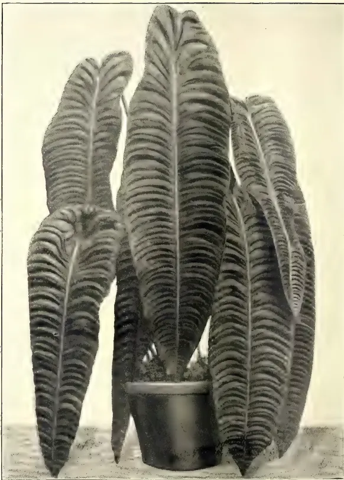
Photo by H. F. Macmillan.
This is one of the finest and rarest of Anthuriums. It bears large ovate-oblong leaves, which when young have a striking, glossy metallic appearance. A distinguishing characteristic of the plant is the curiously wavy surfaces of the leaves, which is imparted by the sunk and arched veins. The plant is a native of Colombia, where it was first discovered in 1877. Being of slow growth, and difficult to propagate, it is rarely seen in living collections.
H. F. MACMILLAN.
THE
TROPICAL AGRICULTURIST
AND
MAGAZINE OF THE
CEYLON AGRICULTURAL SOCIETY.
VOL. XXXII,
COLOMBO, APRIL 15TH, 1909,
No. 4.
Reviews.
THE EXPERIMENT STATION,
PERADENIYA.
A revised list of the Plots on the Experiment Station, Peradeniya, by R. H. Lock: Circulars and Agricultural Journal of the Royal Botanic Gardens, Ceylon, Vol. IV., No. 18.
The writer of this note does not propose to criticise his own publication. The appearance of this circular, which consists almost exclusively of a compilation from the work of others, is merely taken as the text for a few remarks on the history and position, functions and work of this agricultural institution. The writer, however, feels justified in remarking that he has had rather special opportunities of becoming acquainted with his subject, having had facilities for closely examining the whole estate during the two first years of its occupation by the Ceylon Government; whilst during the past year he has had the advantage of revisiting it after a considerable interval and noting the marked improvements and extensions of work which have been carried out.
The historic estate of Gangaruwa, first opened in coffee by Sir Edward Barnes, and more recently cultivated in cacao, coconuts and other products, was taken over by the Government of Ceylon on May 1st, 1902, in order to be developed as an experimental plantation for the
benefit and instruction of the natives and planters of the country. After careful consideration it was decided by Government that the title "Experiment Station, Peradeniya," was the one best suited to describe the position and functions of this institution. To this question of a name we venture to direct special attention, because it is one upon which there exists some misapprehension and the station is often miscalled, both in the press and in conversation.
At the outset practically the whole attention of the small staff had to be devoted to a single large experiment, which occupied the greater part of the cultivated area for some years, and can be said to have only recently been completed. In 1902, the Cacao canker, then rampant in many parts of Ceylon, had thoroughly established itself on Gangaruwa estate, so that practically all the cacao trees over 150 acres were affected by this scourge, and the crop had sunk to a figure which represented a dead loss to the estate.
Vigorous measures were immediately undertaken, an account of which is to be found in the Reports of the Controller of the Experiment Station and of the Government Mycologist for 1902 and the years immediately following. As the direct result of these measures the cacao canker may now be said to be under complete control, whilst the condition and cropping power of the plots under experiment may be said to be as
314[APRIL, 1909.good as they could possibly be—if the nature of the varieties and the way they were originally planted are taken into consideration. It may safely be asserted that this first large experiment has turned out an unqualified success, and that the instruction afforded by it has not been without value to the cacao industry of Ceylon.
We may next allude to the important series of experiments relating to the manuring of old cacao, and representing the first thorough investigation of the effect of the repeated application of various fertilisers to a permanent crop in the tropics. It is too early, as yet, to dogmatize upon the result of these experiments, but from their very nature it is impossible that they should ultimately fail to yield information of first-rate value. The celebrated experiments at Rothamsted have now been in existence for over sixty years, and although they deal with the manuring of an annual crop, some of the original trials are still being continued. There is, no doubt, that such experiments must be continued over a considerable series of years before the conclusions drawn from them can be regarded as beyond the reach of criticism. It is therefore useless to be impatient of results, and worse than useless to jump to hasty conclusions from the result of a few years' work; but it is anticipated that in another five years or so we shall begin to know something about the manuring of old cacao. Meanwhile, a long series of minor experiments have been carried out, and these alone would be sufficient amply to justify the existence of the Experiment Station during the first few years of its being. Experiments have been made, or are being made, upon the following products among others—attended in every case with information of value to those interested in them—Cacao, Tea, Rubber (including Hevea, Castilloa, Funtumia, Ceara and the new varieties of Manicobar), Coconuts, Paddy, Arecanuts, Citronella and Lemon grasses, Tobacco, Maize and various leguminous plants, as well as a number of others of lesser interest.
Criticisms have reached us at various times because some of our experiments have turned out to be failures. To criticise an experiment and say it ought never to have been attempted because it has not turned out a success, shows not only a want of appreciation of the essential nature of an experiment, but also a misapprehension of the chief aim and object of an Experiment Station. We conceive it to be one of the chief functions of those responsible for the working of such a station to make
mistakes in order that others may avoid them. It is their business to try forms of cultivation so speculative that people of moderate capital are not justified in attempting them for themselves. Such forms of cultivation will often turn out to be impracticable, but even if one out of many proves to be a success, the information gained will make up for many failures by its value to the community at large. An allied, but more serious, mistake into which visitors have sometimes fallen is to suppose that because some particular crop is being tried upon the Experiment Station, it is thereby guaranteed as a paying form of cultivation. A reference to our preceding remarks will show the reason why this is not by any means the case. Reports on all such crops are published in due course, and it is by these that we expect the public to be guided. On the other hand, visitors who have eyes to see, and who are able to refrain from jumping to conclusions upon a cursory examination of incomplete experiments, will find a great deal to interest them on the Experiment Station—whatever their own particular line of agriculture may be—and all such visitors are very welcome.
R. H. L.
Semi-annual Report of Schimmel & Co. (Fritzsche Brothers), November, 1908.
Camphor Oil and Camphor: Schimmel's semi-annual report, November, 1908, shows that owing to the weak market stocks have largely increased in Japan and prices are likely to go still lower.
The price of refined camphor has dropped in Japan to 1s. 5½d. per lb., with the alleged object of killing the competition of synthetic camphor which has partially succeeded, as it is said that the principal makers in Germany have for the present ceased manufacturing. If true there is no reason for a further decline in the price of camphor.
The chief countries using camphor are British India and the Straits Settlements, where the consumption is chiefly due to the use of camphor in the manufacture of fumigating candles for ritualistic purposes and of medicinal preparations; Europe and America, where it is mainly employed in the manufacture of celluloid.
The Japanese Government intends monopolising the trade in camphor seed and may stop exportation of seed al-
APRIL, 1909.]315together, seedsmen having already been cautioned against selling large quantities of camphor seed abroad.
The decline in prices is said to be mainly due to the increased production of Natural Camphor in China, and of Synthetic Camphor in Germany, also of "Monol" and other substitutes. In the South of China camphor trees are abundant almost everywhere and the export is rapidly increasing. The Chinese Camphor is not as pure as the Japanese, owing to cruder methods of distillation.
In Formosa the camphor production was limited to the Western, Northern and Southern parts of the Island, the regions inhabited by the Aborigines having scarcely been touched.
Recently a Government expert discovered a forest rich in camphor to the South of Arisan, and a favourable development of the Formosan Camphor industry is anticipated from this fact.
The Japanese have commenced the cultivation of camphor in the Korean Island, Quelpart, and intend introducing there either the Borneo Camphor tree, or the rapidly-growing composite Blumea balsamifera.
Successful experiments in the cultivation of camphor have recently been made in parts of Upper Burma, close to the China Province of Yunnan. The Government of Assam have also made successful cultivation experiments in the plant of Watjain.
Numerous enquiries have now been made to this Department for the best methods of distillation of camphor from the leaves, and it is evident that the areas planted in India, Malay States, &c., are now coming into bearing.
A paper by Giglioli, "Le Camfora Italiana, Rome, 1898," has now appeared in print, and is said to supply detailed information on the production and the price fluctuation of Synthetic Camphor; the presence, production and commercial conditions of the Natural product; botanical, geographical and climatological notes on the camphor tree; production and purification of camphor and the state of the trade and prices of camphor oil.
He recommends the cultivation in every part of Italy except the interior, and the cooler northern provinces; and drought and inclement winds must be avoided. The average camphor content in fresh leaves grown in Italy is given as from 1.2 to 1.8 per cent. and about 0.5 per cent. of oil. The average yield obtained by distilling by the Japanese method is 1 per cent. of pure camphor.
Riviere, a French Scientist, in the Journal d'Agriculture tropicale 8 (1908)
129 is sceptical about the cultivation of camphor and distilling the leaves, and does not think it can compete with camphor from the natural forests of old trees or with the synthetic camphor now being put on the market—a new factory for which is being established in Finland to develop a new process of Komppa.
Cinnamon Oil, Ceylon.—The chemical properties are given of Ceylon Cinnamon oil as bright yellow, feeble acid reaction: 1024 to 1040 aa, slightly to the left. Soluble in every proportion of 90 per cent. alcohol: test for nitric acid; Aldehyde content 65 to 75 per cent. (determined with Sodium bisulphate).
Lemon Grass Oil.—The price of this oil fell from 9d. per oz. in 1905-06 to 2d. in 1908, owing to large imports from West Indies accumulating in London; but these are now to a great extent cleared and such large supplies are not liable to be repeated so quickly in future.
The oil content of the individual parts of Andropogon citratus have been investigated by A. W. K. de Jong, who found that the leaves contained most of the oil, the largest quantity being in the latest formed leaf, decreasing as the leaf ages.
The citrate content of the oil becomes slightly higher as the age of the leaf increases, viz., from 77 to 79 per cent. in the youngest to 83 per cent. in the oldest leaves. The sheaths also contain oil but less than the leaves themselves.
The thick bulbous roots also contain from 0.5 to 0.35 per cent. of oil according to the age and their distillation is suggested, but the quality and citrate content is not given.
De Jong concludes that the plants should be cut when four or five leaves only have formed.
In Cochin-China distillation experiments have been made which show that the grass contains much more oil in the dry than rainy season, and that the tip of the leaf to one-third of its length is more aromatic than the remaining two-thirds.
Dried leaves, losing 70 per cent. of moisture, yielded 8 to 8.5 per cent. of oil, whilst fresh leaves yielded in the rainy season 2 per cent, and in the dry 5.5 per cent.
Citronella Oil.—The present quotations are given as 11d. c.i.f., and the exports from Ceylon up to the end of October, 1908, compared with the same
| 1905 | ... | ... | 1,068,974 |
| 1906 | ... | ... | 944,153 |
| 1907 | ... | ... | 1,039,774 |
| 1908 | ... | ... | 1,069,439 |
M. K. B.
316[APRIL, 1909.BY E. B. COPELAND.*
This is one of the first serious attempts to write an elementary text-book of Agriculture for use in tropical schools, and consequently requires serious consideration.
The author recommends that the work be used in connection with a school garden, in which every boy should have a plot about 15 feet by 9, if necessary, rather than make the plots smaller; he would put two boys to each, as with small plots the importance of space is not properly understood. The student should map his plot carefully; this, of course, is incidentally useful as a lesson in geography. His plants must be most carefully laid out in regular rows at exact intervals. Each student should keep a note-book in which the map is entered, and every detail about the growth and treatment of the plants, and these should be frequently overhauled by the teacher.
After a general introduction the book goes on to deal with the parts of plants, with the soil, with plants and their need
* The World Book Company, Yorkers-on-Hudson, New York and Manila, P. I.
of light, water, &c. Though somewhat too condensed, this part should be easily enough understood by a boy of say 15, and to younger children than this we would not teach agriculture.
After this follow chapters on the actual crops, maize, coffee, abaca, &c.
It is difficult to criticise an elementary pioneer work like this; but, in general our impression is that, while a good work so far as it goes, it is too much condensed, and will require great amplification, with detailed practical demonstration, by a good teacher; and it is in the provision of such teachers that the difficulty lies in tropical agriculture.
J. C. WILLIS.
BY J. R. WILLIAMS.*
This is a useful hand-book, which should be in the hands of anyone interested in School Gardens in the tropics.
It contains useful hints on clearing, fencing, laying out, &c., besides local information on crops of Jamaica.
J. C. WILLIS.
* Government Printing Office, Kingston, Jamaica.
APRIL, 1909.317At the beginning of a new year in the life of The India Rubber World it always has seemed to us appropriate to engage somewhat in retrospect. The recounting of accomplished progress in any industry is of interest not only in itself, but as indicating lines of possible future development. The nineteen years which have elapsed since the initial issue of this journal have been fruitful in invention and progress in many ways, and in no other industry, perhaps, more than in rubber and the allied interests. We feel certain that the last word has not been said in the development of rubber interests, and look forward to chronicling every year much more news of importance in this trade.
To eliminate from the rubber trade to-day all that has been developed in it within the past nineteen years would leave some very wide gaps—nearly everything in the way of vehicle tyres, the greater part of the insulated wire manufacture, air-break hose, hose for pneumatic tool work, the rubber-cored golf-ball, and an immense number and variety of minor articles of rubber, together with the new processes and apparatus which have been perfected for their production.
The rubber world, so to speak, has been greatly broadened in those nineteen years. The opening up of forest rubber areas in Africa and in the upper Amazon regions has alone proved of vast importance to the industry, while the introduction of rubber culture has still further increased the world's supply of raw material. Scarcely less important has been the great improvement in reclaiming rubber and the increase in the volume of this product. The growth in the extent of the output of the rubber factory has involved not only a large increase in consumption at home, but the sale of important quantities in countries not consumers of rubber before.
We cannot better sum up the situation, perhaps, than by referring to the International Rubber and Allied Trades Exhibition, just closed in London, as an epitome of progress in rubber; to have omitted from its catalogue all that represented development during the past two decades would have left little more than a skeleton. We regard this exhibition as epoch-making, and by
comparing few rubber exhibitions with it will best be measured the growth of the trade.
It is of interest to note that seldom has rubber been utilized to an important extent for the purpose without continuing to be so utilized. Hence every new application means a permanent addition to the catalogue of the uses of rubber. To-day the possibility appears to exist of a great coming demand for rubber in aerial navigation—a demand which within the coming nineteen years may prove as important as the present demand for rubber in the tyre trade.
We do not doubt that the most important development in the next decade will relate to the production of crude rubber—in new fields and from new plants, as well as in the improved preparation of rubber in the field now exploited. It is not unlikely that within this period the culture of what now are regarded as minor rubber plants will become extensive in the temperate zone.—The India Rubber World, Vol. XXXIX., No. 1, October, 1908.
BY HUBERT L. TERRY.
The main features of this International Rubber Exhibition have been dealt with by the Editor, and the observations I am about to make refer entirely to the raw rubber exhibits of Ceylon and British Malaya, which occupy two of the most prominent stands in the Hall. Stand is perhaps too plebeian a term to use in connection with the ornate pavilion of Ceylon and the attractive native dwelling of Malaya, but its significance will not be misunderstood. These two exhibits, along with the Dutch colonial exhibits, may, I think, be selected from the bulk of the show as of special interest, embodying as they do the results up to date of the rubber planting industry—one of the newest departures in economic botany. In no way do I wish to belittle the interest attaching to exhibits of raw rubber from the forest—such as the splendid show made by the State of Amazonas. Native rubber, however, is not exactly a novelty, and as the object of the exhibition was declared by the President in his opening speech to be primarily educational, it is important to
Gums, Resins,318[APRIL, 1909.lay stress of the greatest novelties in so far as they have an important bearing upon the rubber interest generally.
Both the Ceylon and the British Malaya stands contained samples of plantation rubber from the most important of the numerous companies located in their respective districts, and it would probably prove more monotonous than instructive to refer to each of these separately, especially as the rubber in its various forms of sheet, block, crepe, worm, etc., is much the same as produced by each company. Botanical exhibits were numerous, and also photographs of general scenery and processes connected with the industry. Samples of such catch crops as indigo and tapioca were also to be seen, and mention should not be omitted of the model estate rubber factory at the Ceylon stand fitted up according to Mr. Kelway Bamber's ideas of how the work of preparing raw rubber for the European market should be carried out. It is, of course, notorious that the procedure on different estates varies considerably, which is not surprising, seeing the novelty of the whole business, and no doubt for some time to come we shall witness great divergencies of opinion.
There is no doubt, however, that the planters will best serve their own interests if they endeavour to produce rubber of always the same quality, even of the same tint. This latter point may not really be of any importance, but it carries weight with the less enlightened manufacturer. The great complaint in manufacturing circles up to now has been about the want of uniformity in bulk lots of plantation rubber, and this is of course due to the different procedure adopted on the various estates, and also to the variable procedure of any particular estate. In this respect, therefore, I consider that the detailed proposals made by Mr. Kelway Bamber for the coagulation and preparation of the rubber on exact and uniform lines form one of the most important topics brought to the notice of visitors to the exhibition. The variation in the colour of the plantation Para from Ceylon and Malaya as shown in the numerous specimens on the stands is very striking, practically all shade from pure white through yellows and browns to black being represented. If Mr. Bamber's process is generally adopted in the future, it will mean that a uniform product which is practically white will be produced, and that rubber manufacturers will be able to order lots amounting to several tons with full confidence that the quality will be the same throughout. It would take up too much
space to give Mr. Bamber's proposals in anything like detail, but a summary of the main points may be attempted.
It is important to make a daily testing of the latex from each field in order to determine when the proportion of rubber has fallen to the minimum paying quantity.
Whatever method of tapping is employed, the trees should be marked in such a way that the bark will be removed systematically and no irregular patches left which cannot be tapped. The best angle is 45°, and this should be maintained by keeping the cuts perfectly parallel from start to finish, and not gradually making them more vertical towards the lower end.
The knife must be kept perfectly sharp so as to cut and not tear the bark, and immediately after making the cut the channel should be moistened with a very dilute ammonia or formalin solution applied by means of a piece of cloth on a stick; this encourages the flow, delaying the coagulation, and the proportion of scrap rubber is reduced.
Mr. Bamber advised the use of glass or stoneware cups in preference to sheet iron, as they are more readily cleaned. They are also to be washed before use in a dilute formalin solution made by mixing one part of the ordinary 40 per cent. solution of commerce with 40 parts of water. All the latex collected in the cups is to be strained through fine wire gauze into enamelled or wooden buckets, and on arrival at the factory is again strained into large vats and sampled for its yield of rubber. With regard to the determination of the amount of web rubber per gallon, it may be remarked that unless the exact procedure is detailed, very variable results will be obtained by different operators, a very similar case being the approximate determination of gluten in flour. With regard to coagulation Mr. Bamber does not seem to favour mechanical methods except where the amount of latex to be treated is only small. His proposals are a high temperature and the use of well diluted acetic acid.
It is in the coagulation that his most important suggestions arise. He has found that if the latex has steam passed into it until the temperature arises to 180° F., and is maintained at this heat for three hours, certain organic substances of a proteid nature are destroyed, and the rubber subsequently precipitated by acetic acid is quite white and maintains this colour after shipment. It is mentioned that a solution of wood creosote in spirit can be added during coagulation if desired. Presumably the
APRIL, 1909.]319Saps and Exudations.doctors are not agreed as to the utility or otherwise of this addition of creosote. Samples of perfectly white rubber prepared by this oxydase-destroying process were to be seen on both the Ceylon and Malaya stands, and it will be interesting to hear what the trade has to say about them. Mr. Bamber's main contention is that uniformity in bulk will be secured, and, further, that the colourless rubber will be found of special use in the manufacture of certain goods—such as teats, for example—the white colour not being affected by the vulcanization.
With regard to the subsequent washing and rolling processes it is advised after the first rolling to again immerse the rubber sheet in water at 180° F. to ensure complete destruction of the oxydase and the complete removal of all soluble matters on which bacteria and fungi grow. After this the rubber is allowed to contract naturally in cold water out of contact with the air.
Mr. Bamber is against the too rapid drying of the rubber, and remarks that the 10 to 15 per cent. of moisture in Brazilian Para is probably an advantage to it. He does not seem to be enamoured of the vacuum drying process, and thinks that the vacuum process if used at all should only come after the natural drying in order to get the rubber quite dry for packing. The best method in his opinion is the use of perfectly dry air which can be obtained easily and economically by a plant of which a working model was shown at the Ceylon stand. It involves the use of a refrigerating plant and a system of pipes which strike one as decidedly ingenious, and for the purpose to be achieved to be devised on sound scientific lines.—India Rubber World, Vol. XXXIX., No. 1, October, 1908.
By Dr. C. E. WATERHOUSE.
During the last two years and especially this year great interest has been aroused in some new species of Manihot rubber trees which from all accounts are far superior to Manihot glaziovii, and which should be of special interest to the rubber growers of Hawaii, from the fact that the Manihot glaziovii or Ceara rubber tree grows and yields so well in Hawaii. Some of the reasons why, if these species do as well as the Ceara, it will be well worth the while of the rubber growers of Hawaii to pay particular attention to these species in future plantings will be forthcoming later in this paper.
The export of rubber from the State of Bahia has increased more than ten fold within six years, having risen from 100 tons in 1900 of very inferior rubber to over 1,100 tons in 1906 of a very superior grade of rubber. This led to an investigation of the sources of this new supply and the discovery that, instead of the low grade of Mangebeira as formerly gathered, the supply came mainly from the three new and very valuable varieties:—
These varieties were so named by Dr. Ule, so well known as an authority on the classification of different species of rubber trees, and who visited the State of Bahia and neighbouring States in 1906 to look into the sources of this supply.
Until six years ago Manihot glaziovii was considered the only rubber-yielding species of its genus (though there were 82 species recorded which will soon be 100 when all those discovered are described).
It was only in the early part of 1906 that even the Kew Gardens, the birth-place, so to speak, of the rubber industry of the far East and always on the lookout for new species of rubber, was aware of the existence of rubber-yielding trees closely related to the commonly cultivated Manihot glaziovii.
All these species, from all accounts, not only yield considerably more latex than the Ceara, but what is of very much more importance to Hawaii is, the amount which one man can collect is much greater (in other words the cost of collection is considerably less). This is a most important item here owing to the high price paid for labour, in fact the point upon which the whole success of the rubber industry in Hawaii hinges.
A notable fact in this connection, one which will appeal to any one who has had any experience in tapping the Ceara is that in these new varieties, in shedding the bark, longitudinal slits are formed and the membranous bark peels off in more or less verticle rows. This allows its removal much more easily and therefore cheaply, than is the case with the Ceara.
These varieties of Manihot, like the Manihot glaziovii or Ceara, have a very dry habitat. However, just as we find here in Hawaii that the Ceara does better in wet localities, so with these varieties the same may be true. That the Ceara does better here where it is
Gums, Resins,320[APRIL, 1909,wet I think there is no doubt. I have myself in a little experiment station of my own tried watering some plants and leaving others in the same soil unwatered, and the watered plants far outstripped those unwatered, and seemed to have as much more latex, though the trees are still too young to draw conclusions from as to yield.
In regard to these three varieties:
(1) Manihot Dichotoma.
The seeds of this variety are much larger than those of the Ceara. Germination takes place in two to three weeks if unfilled, the shell being much softer than in the case of the Ceara. The soil upon which this tree flourishes is variously described as red clay and red loam. The bark of this tree is thinner and more delicate than that of the Ceara.
(2) and (3) Manihot Heptaphylla
and Manihot Piauhyensis.
The seeds of these two varieties can hardly be distinguished from each other; they are only a little larger than Ceara seeds. They do not germinate nearly as well as in the case of the Manihot dichotoma. These two varieties in the region around Bahia thrive in a sandy soil, growing largely on sandstone mountains. Both varieties do not grow as tall and are smaller than the Manihot dichotoma and inclined to branch low. They are not affected by the wind so much as Ceara, probably on account of being smaller and more low lying. This also affects the methods of tapping as explained later. The foliage is characteristically green and fresh-looking.
Methods of Planting.—There are a number of plantations around Bahia, some of which are now three or four years old. They are planted for the most part 1,000 trees to the acre. This close planting has been adopted because the trees are planted in a dry locality, and it is claimed that if not planted so closely, or say 200 to the acre, the ground would be baked so hard and dry that the trees would dwindle and die. Also the trees are considerably smaller than other varieties, and consequently need less room.
Methods of Tapping.—In the case of the Manihot dichotoma the bark of the trunk is tapped and an instrument curved at the tip is used. The herring bone or a single cut is used. Cups are used to receive the latex. The latex coagulates quickly on exposure to air but apparently not too quickly to prevent its flowing down into the cup's well. Water is sometimes used in the cups to prevent too rapid coagulation.
In the case of the Manihot piauhyensis and Manihot heptaphylla, the shorter trunk and somewhat thinner bark than the Manihot dichotoma are not suitable for cutting, and by this method yield little latex. A little earth, however, is scraped away from the base of the tree, and the top of the taproot is exposed and an incision with a round pointed knife is made at or near the junction of tap root and trunk, and the latex flowing into this hole coagulates and is gathered therefrom. Often the collectors coat this little hole with clay to keep the rubber cleaner. Cups have been used, but there is some difficulty in getting them into the hole thus made, and the method is little used at present in collecting from the wild trees, but will doubtless be worked on plantations.
Yield of the Trees.—This is variously stated all the way from 2½ to 11 pounds per year. Though of course these statements are made in regard to the gathering of the rubber from wild trees, which are more or less ruthlessly tapped, and especially in the case of the Manihot dichotoma the wood is thus often injured severely that the tree dies. Also it is probably wet rubber that is spoken of, and also in some of it, especially the Manihot heptaphylla and piauhyensis, there may be considerable dirt.
Dr. Ule considers that the Manihot dichotoma has the advantage of its caoutchouc fetching a somewhat higher price. On the other hand the amount produced in the other varieties is considerably greater according to him. He therefore prefers these latter varieties, which he considers will supplant the Ceara for the dry and less fertile areas where Ceara is cultivated. There is no doubt, however, that all of these varieties yield more than the Ceara.
Amount of Latex collected by one Man in one Day.—This has been variously stated at from 1 to 8 or 10 pounds. Taking into consideration the tendency to exaggeration in regard to any new product and misleading methods of figuring, still it is generally conceded that considerably more can be collected in a day from these varieties than from the Ceara.
Several thousand seeds of the Manihot dichotoma or Jiquie Manicobar were imported by Mr. Jared G. Smith and most of the rubber plantations have obtained some of the trees. I have planted a few of these seeds. When filed they germinated in a few days and have grown very well, fully as well as the Ceara so far, in spite of the fact that this is the wrong season of the year
APRIL, 1909.]321Saps and Exudations.for planting. The leaves have red ribs especially when looking up through the leaves with sunlight shining through. Those obtained at the Kew Gardens had whitish green ribs which it has been suggested might be due to artificial cultivation there, or may mean two such varieties have been described. Both are of about the same value however. I intend to try watering some of these trees very heavily, and letting others have only the rainfall, which if this dry weather keeps up will be a slight test as to whether it will thrive best in a dry or wet locality here in the islands.
So far I have watered all the young seedlings and they have done very well. Seeds of this variety are the only ones so far obtained. But it is doing very well when we remember that not even the Kew Gardens nor the Gardens in Ceylon, Singapore, etc., have been able to obtain these other two varieties, though they have been seeking to do so for two years. The Peradeniya Gardens of Ceylon have 100 seedlings of Manihot dichotoma growing, also the Singapore and Penang Botanic Gardens. The Peradeniya Gardens are constantly asked for seed, they cannot as yet supply for planting in the dry lands in Ceylon, where the Hevea cannot be grown. We must not, however, forget that the rest of the tropical world always thinks of these varieties as well as the Ceara in connection with a dry region, and it was only because we found trees of the Ceara variety growing and yielding so well in our wettest localities, as in Nahiku and Puna, and so much better than in the drier localities, as in and around Honolulu, etc., that we decided, what subsequent plantings have all tended to confirm, that the wetter localities, if not too cold, are better for the Ceara than the drier ones here in the Hawaiian Islands. Still it would be a wise thing to plant some of these Manihot dichotoma in some dry places for experiment. Dr. Ule says:—
“If, as is probable, the cultivation of Hevea brasiliensis will undoubtedly obtain the greatest importance for the production of rubber in luxuriant tropical regions, the future has to look to Manihot heptaphylla and Manihot piauihyensis as the rubber plants for the dry and less fertile areas.” Of course, it is only fair to say that other observers speak as highly of Manihot dichotoma, which he has left out in this statement.
To sum up, then, there are several reasons why the planters of Hawaii should direct their attention to these varieties.
1. In the first place the industry in these islands is in its infancy, and we should endeavour to test all the different varieties of rubber-yielding trees which seem to promise well. For we do not yet know which species will prove the best in the long run, all things considered, such as early yield, cheapness of installation, length of yield with constant tapping, amount of yield, cheapness of collection, quality of the rubber obtained, etc., etc., a balancing of all of which will give us finally the best species to cultivate most largely. The present plantations must necessarily do a great deal of pioneer work in this regard, if we have regard to the industry for the islands as a whole. After the present companies have shown what can or cannot be done commercially with the different species, no doubt many plantations will follow this lead.
2. These varieties in their habitat yield considerably larger quantities than the Ceara and yet thrive under very much similar conditions to those in which the Ceara thrives, the variety which so far has proved to grow the best here.
3. Most important of all, here are varieties which promise the lowest cost of collection which, quality being equal, is as I have said the pivotal point in regard to the whole industry in Hawaii.—Hawaiian Forester and Agriculturist, Vol. V., No. 12, December, 1908.
The Experiment Station Record (No. 11, 1908) furnishes the following account of an improved method of tapping Assam rubber (Ficus elastica), together with the results of some tapping experiments carried out in India, in which this method was used:—
The tapping instrument consists of an ordinary carpenter's chisel from -inch to -inch wide. This is driven into the bark vertically in a series of cuts, each the width of the chisel, across the direction of the trunk or branch being tapped, and with at least -inch space between each incision. The rows of incisions are made about 6 inches apart on the stems and branches of the tree. Thin strips of lead are secured to the stem underneath each row, by which the latex is conducted into cups. By this method of tapping about two-thirds of the latex is said to find its way into the cups, while one-third coagulates on the cuts.
51 Gums, Resins,322[APRIL, 1909.In 1905, eight trees planted in 1882 were tapped in this manner, and gave an average return of 6 lb. of rubber per tree. The same trees were again tapped in 1906, and the yield for individual trees varied from 2½ lb. to 10 lb. Four trees, planted in 1880 and 1890, were tapped in a similar manner during the same years. In 1905-6 the estimated yield per tree was about 2 lb. of rubber, and in 1906-7 the yield per individual tree varied from 1¼ lb. to 3¼ lb. With this method of tapping, the cuts made in the previous year appeared to heal well and to be hardly noticeable, and it is thought probable that the Assam rub-
ber trees may be tapped more frequently than by the older methods of tapping in which the bark is seriously injured.
The latex coagulating on the cuts is said to require no further treatment. That gathered from the cups is mixed with a 2-per cent. solution of formalin, poured into clean bamboo troughs and covered from the direct rays of the sun. The coagulation is said to be complete within a day's time. After the strips of rubber have dried they are rolled into balls.—Agricultural News, Vol. VIII., No. 176, p. 27, January 23, 1909.
By "RUSTICUS."
The Sunflower has long been grown for ornamental purposes, the beautiful yellow flowers with dark centres being particularly attractive in field and garden. Here in Ceylon it has been grown to a very small extent, chiefly as an ornamental plant, but its value as a useful product has not been fully recognised. Deriving its scientific name from helios, sun; and anthos, a flower, and from the erroneous idea, propagated by poets and others that the flowers always turned towards the sun, the plant is conspicuous and attracts attention among other vegetation. We have been cultivating the plant for its beauty alone, not
It appears to possess far more profitable qualities than have been hitherto supposed, and may be cultivated with advantage and applied to many useful purposes. The part of the sunflower plant which has the chief value is the seed from which an edible oil may be extracted. The oilcake left after the extraction of the oil by pressure is extremely rich in nitrogenous matter, and has a food value equal to the cake resulting from the expression of linseed oil, but superior to it for fattening cattle, while the plant itself is made use of in different directions; it is therefore a valuable plant to be cultivated, and though we hear that it is being regularly grown in some parts of the Province of Uva as an oil seed, its
In western Europe and America the sunflower has been grown chiefly for ornamental purposes and occasionally for poultry food. More varieties are grown purely for ornamental purposes than for the production of seeds, but several of the ornamental sunflowers are derived from other species. In Russia, where the numerous religious fasts restricting the use of meat lead to a large consumption of vegetable oils and oily foods, the sunflower seed has become almost a staple article of diet. It is eaten raw or roasted as peanuts are in America, but much more extensively. In the United States three principal varieties are grown for the production of seeds. In this country the common sunflower, with no distinguishing varietal name, has been long cultivated. Its nodding heads are eight to sixteen inches in diameter, producing chiefly grey-brownish or striped seeds, but if the plant is to be cultivated for the expression of oil larger varieties would be desirable, as for instance the mammoth Russian with heads fifteen to twenty inches in diameter producing seeds about one-half inch long, with black or brownish stripes or sometimes white; and the black giant, another variety, has heads sixteen to twenty-two inches in diameter, with rather thick black seeds about three-eighths of an inch long. The
belonging to the sunflower plant have undoubtedly been neglected when greater attention ought to have been paid. No plant produces such fine honey and wax, and when the plant is in blossom bees abound on it. The branches and stalk of the sunflower, when reduced to a sufficient state of
APRIL, 1909.]323Oils and Fats.fineness, possesses nutritive properties of a high order, and furnish food suitable to the nourishment of many domesticated animals such as horses, cattle, and sheep. It is undoubtedly true that the sunflower seed is a valuable food when mixed in proper proportions with other food products. It improves the digestion of the animal and therefore is beneficial to its health. In fact, the seeds are used to a large extent for the purpose of keeping animals in excellent physical condition. The supposed efficacy of sunflower seeds for the cure of certain diseases, such as rheumatism, is probably largely mythical. There is a very prevalent notion that the growth of large quantities of sunflowers in malarial regions prevents the development of diseases of malarial origin, although this, too, is probably an illusion. From the stalks of the plant a valuable potash is made; and the leaves go to manure the soil. The leaves have also been manufactured into cigars, possessing, it is stated, pectoral properties. The green leaves when dried and burnt to powder make excellent fodder for milch cows, mixed with bran. The sunflower has been long largely grown in parts of Russia and Germany for its
both for edible and lighting purposes. It also makes most beautiful soap. The seed, shelled, makes when ground very fine flour for bread, particularly tea cakes. The stalk too is useful, for by treating it exactly like flax, it will produce a fibre as fine as silk, and in large quantities, and there is no doubt that many of their silk goods have a large portion of sunflower fibre in them. The plant is easy of cultivation and will grow in all parts of the island. A light rich soil, as unshadowed by trees as possible, is about the best. The seeds should be planted six inches apart, and about one inch deep, and when one foot high may be earthed up. The plant will then require no further attention.
EVERY SINGLE PLANT WILL PRODUCE 1,000 or more seeds. The main head generally produces 800 to 1,000 seeds, and there are usually four collaterals producing 50 to 60 seeds each. The quantity of seed is much increased by dwarfing the plants which should be kept free from weeds. It is important that they should have sufficient interval between them for exposure to the sun, as under such circumstances they become larger and more fully stored with seed. The produce varies considerably, according to the state of the soil, the climate and the cultivation that is employed. I have no figures to give as regards pro-
duction in Ceylon, but statistics of cultivation in Russia give the average quantity of seed at 50 bushels per acre, and the yield of oil at a gallon per bushel.—Ceylon Independent.
BY OSBORNE BROWNE.
This splendid specimen of the palm order is indigenous to the low lands of Honduras where it constitutes the largest part of the forest. It will grow in poor soil but nowhere attains luxuriance except in the volcanic loams of the best class of forest land.
From its abundance this kind of forest is locally called "Cohune ridge" in contradistinction to "Pine ridge" which is a barren park-like country covered by wiry grass and having scattered Pines, Oaks, and Craboos.
The term "ridge" is not warranted as it simply means a difference in forest and soil, and nothing more.
Often the transition from the pine-ridge to the Cohune-ridge is very abrupt, and after walking on a soil so barren that a cow would require 100 acres for a living, one may within a few moments walk on a soil which may grow 19 or 20 hand bunches of Bananas, each bunch so heavy that a strong man has difficulty not in carrying it away but in cutting it down, so that it may not fall and be bruised. The palm grows to a height of 70 or 80 feet, but these aged specimens have a small and barren crown.
The trunk is smooth and slightly marked by the scars of fallen leaves. The leaves resemble those of the coconut palm, but are much larger and have a more upright habit from crowding in the bush, and they also do not turn over on the flat like the leaves of the coconut palm, but are more inclined to turn over on the edge, so to speak. The feature, however, which attracts most attention is the huge bunches of fruit each weighing 80 to 100 lbs. and containing about 500 nuts, each the size of a hen's egg. The fruit stalk is quite straight, about 3-4 feet long, oval in section, measuring 5 to 6 inches diameter at the butt, tapering to the end, and consisting of a mass of weak fibre. Under each tree is a slight mound of scattered nuts, many of which have a neat round hole gnawed through the excessively hard and thick shell by rodents in search of the oily kernel. The kernel may be double or triple and about the size of a Para rubber seed or a jak seed, and contains as much oil as copra and of a finer quality. On
Oils and Fats.324[APRIL, 1909,the rivers in the interior the inhabitants use the oil in their cooking operations. They have some trouble as the shell is very hard, but by placing the nut in a depression in a hard block it is kept from flying about when struck by the hammer. If the nut is long dry the kernel gets loose, but it usually requires to be dug out with a knife. When such land is cut for "the burn" the Cohune leaves make a fine blaze and add not a little to the success of the operation. The stumps of those with trunks soon rot out forming deep, round, and treacherous holes, and it is surprising how few sprains and broken bones they account for. The young palms are not killed by the fire and continue to give the cleaners trouble for some time.
Now, however, decorticating machinery has been invented which successfully
deals with the nut, and before long the destruction of this enormously valuable nut of Honduras will be stayed. Fortunately the forests are still more or less intact except in situations convenient for getting out Bananas, the bunches of which while delicate are very heavy and do not command a sufficient price in this part of the world—a "pass" bunch of eight hands being only worth 25 cents on board the steamer if it succeeds in being taken.
Nothing can be more satisfactory than the alternative about to be offered to the poor planter of keeping his land unwasted in the natural forest and let the fruit monopolists go elsewhere and lay waste fine land for a "Song." As a lover of the forest nothing could be more pleasing to me.
BY J. STEWART J. MCCALL,
Director of Agriculture, Nyasaland.
The developing of new cotton fields throughout the British world and the broadening of the basis of supply is the most important economic problem of British tropical and sub-tropical agriculture.
This imperial question and its solution is the success or failure of the largest export trade of the world, the very backbone of British commerce.
It has been estimated by Mr. Macara, the great authority on cotton statistics, that no less than 3,000,000 people at home are directly dependent for their livelihood on this industry, and, further, that 10,000,000 of the inhabitants of Great Britain are directly or indirectly connected with cotton in trade.
Everyone who is acquainted with cotton knows that the industry is in a very precarious condition, as the consumption is increasing more rapidly than the production.
At the present day Great Britain, with all her Colonies, is dependent on America for 75 per cent. of her raw cotton; should the American crop fail, the result would be fatal to the trade of the world and spell starvation to millions of people in Great Britain.
America will have less cotton for export than she has at present, as her
consumption of raw cotton is increasing and likely to increase with her population.
Mr. J. Arthur Hutton, Chairman of the British Cotton Growing Association, addressing a deputation to the late Prime Minister, Sir Henry Campbell Bannerman, in May, 1906, said:—
"Four hundred thousand bales (500 lb each) is the average increase in the world's consumption every year. Lancashire alone, in the last two years, has added something like six million to her spindles, which means an increase in consumption of half a million bales, apart from the increased demands in other parts of the world."
Considering that the average yield in America is something under 200 lb. per acre, it is obvious that Lancashire alone requires for her increased consumption of the last two years the cotton from 1,250,000 acres.
When we add to Mr. Hutton's remarks the fact that the Cotton Weevil (Anthonomus grandis) is making it impossible to grow cotton in many districts of Texas and Mississippi, and as the pest is spreading with almost arithmetical accuracy at the rate of 50 miles annually north and east, it is a matter of time till the whole cotton belt of America is infected and the yield reduced by at least 25 per cent.
The writer having visited 3,000 miles of the Cotton States this summer, can add his testimony to the list of those who advocate the growing of cotton in every suitable corner of the British
APRIL 1909.]325Fibres.Empire, and trusts that this report will receive consideration and help to solve the problems connected with cotton cultivation in Ceylon.
According to information contained in Levers' Manual of the North-Central Province, published by the Ceylon Government Printer in 1899, cotton was one of the crops of the Province as early as 1838, and several leading authorities state that cotton is indigenous to the Island. Cotton cultivation has never been extensive in Ceylon, but this is probably due to a temperament of the people more than the unsuitability of the crop to the soil and climate.
The day is past when we as a nation can afford to leave acres of land in jungle, which is capable of growing such a valuable crop as cotton, and if the indigenous labour is unwilling, the solution lies in the minimizing of labour with machinery and the introduction of imported labour from India.
In 1903 the Experiment Station at Maha-iluppalama was opened with the intention of experimenting with cotton. According to section 15 of the 1903 Report of the Royal Botanic Gardens, the object in view was two-fold:—
1. To determine whether Indian cotton can be remuneratively cultivated by villagers for the local market; and to find out the best kinds of cotton to grow and the best ways of treating it.
2. To determine whether cotton of long staple, such as is required for the Lancashire market, can be profitably grown, with or without irrigation, in the dry regions of Ceylon.
As regards the first object, the writer would recommend the discontinuance in growing Indian varieties which serve no imperial purpose and are unprofitable to the growers.* Indian cottons are of too low quality for the British market, and very little Indian cotton is used in Lancashire, two-thirds of the cotton exported from India going to the East (i.e., Japan).
The Experiment Station has shown that the North-Central Province is capable of growing long staple Egyptian cotton; therefore object No. 2 should be the sole aim of the experiment, and, if properly carried out, should result in the permanent establishment of cotton cultivation, consisting exclusively of varieties for supplying the demands of the British cotton market.
The Superintendent has found that Egyptian, Sea Island and Upland cot-
* These were given up after 1904.—Ed.
ton grow, but the Egyptian gives the most profitable returns; and, as it commands practically double the price of Upland, it is advisable to foster this class of cotton, it being especially suitable for irrigation, and, in the writer's experience, stands heat better than ordinary Upland.
Referring to Sea Island, which is the most valuable crop, the writer considers it unsuitable for the heavy soil of the North-Central Province, although small quantities could be grown in proximity to the sea experimentally. The following extract from Sir George Watt's book on "The Wild and Cultivated Cotton Plants of the World" shows very clearly the position of the Sea Island cotton in commerce:—
"It is even now a special crop that can be produced only in a very restricted area, and for which there is not likely ever to arise a very much larger demand than at present. It can at all events alone pay when a higher price rules; extended production is, therefore, exposed to the danger of the ruinous reduction of price."
From the above it is clearly seen that Sea Island cotton is not wanted in large quantities, and, as it is a much smaller cropper even under ideal climatic and soil conditions, it is not likely to be a profitable crop for Ceylon.
It is distinctly encouraging to know that Egyptian cotton grows in Ceylon, as the Americans have failed to produce Egyptian cotton through the Southern States, the summer being too short to mature the crop. There is an increasing demand for this class of staple throughout the world, and in 1907 America imported 16,000,000 dollars' worth of cotton direct from Egypt; the average price was 10½d. per pound—nearly double the price of American Upland.
Selection.—The Experiment Station should be used as a breeding and acclimatization ground for Egyptian cotton, as it is a recognized fact that cotton makes various modifications in quality, type, &c., when grown under new conditions of soil and climate. It is therefore necessary to select and establish the best types which arise, and it should be remembered that the most important qualities are strength and evenness of length. Egyptian cotton has a special quality, viz., colour, an even brown cotton always bringing the highest price; this quality is difficult to maintain out of Egypt, but most of the difficulties connected with the establishing of a fixed type can be overcome by selection.
Fibres.326[APRIL, 1909.This work should be undertaken by the Assistant Director, Mr. Lock, who is a specialist in the Mendelian principles of plant breeding, which have given good results in Egypt, as applied by W. L. Balls, Esq., Botanist to the Khedivial Agricultural Society.
The writer having discussed the question of the introduction of exotic cottons with Mr. Kearney of the Bureau of Plant Industry at Washington, would like to inform those engaged in cotton experiments that a newly-introduced exotic seldom attains its normal cropping capacity until it is acclimatized, and on an average five years are necessary for acclimatization.
The writer noticed that the cotton plants at the Experiment Station are not acclimatized and exhibit the usual initial character of great height and small fruiting capacity.
Egyptian cotton usually becomes very arboraceous in the first two or three years of its introduction, but after acclimatization it decreases its height and increases its fruits.
The Experiment.—The experiment at Maha-iluppalama has been very irregular, as no one connected with the experiment had previous practical experience of the crop; but, notwithstanding the small amount of information at the disposal of Mr. Mee, and the many difficulties in his pioneer work, the writer views the experiment on a whole as most promising.
The chief value of this experiment, so far, lies in the fact that there is seed at Maha-iluppalama, which has been three years in the country; and, secondly, that it has been demonstrated by the report of the British cotton growers in 1905 that Egyptian cotton of good character and staple can be produced in the North-Central Province—this sold at 9d. per pound being well up to the price of cotton grown in Egypt in 1905.
The yield per acre was 130 lb. fibre, and the writer feels confident, if the following particulars are carried out, that a minimum average of 300 lb. of fibre should easily be obtained.
Growing Season.—The present crop occupying the ground was sown in the middle of October, and at its age the writer has seldom seen so healthy cotton, although the yield will be small, as the spacing is too wide, the seeding too thin, and the crop out of season.
Where irrigation is possible, it would be advisable that the cotton be sown in the beginning of February, instead of October, as the heavy rains of November and December induce the plants to grow
too quickly, and heavy rain also kills out many of the young plants when in the first leaf (i.e., before they have produced the rough or secondary leaves).
In the North-Central Province there is much land irrigable, and much which cannot be irrigated, therefore the writer would suggest two planting seasons. The best results will be obtained on irrigated land by planting in the first week of February on ridges, this undoubtedly will be the best cotton, and should be ready to harvest in the dry hot months of July and August.
This cotton could be on the Liverpool market at the same time as the Egyptian crop, and this is an important consideration.
The cotton grown without irrigation should be sown on the flat in the month of September when there is usually sufficient rain to germinate the seed, and this cotton would be in the rough leaf before the beginning of the heavier rains in November; great results need not be expected with the crop grown at this season.
Soil.—The soil is an ideal soil for cotton, and closely resembles the black river bottoms of Texas, being a dark alluvium, more inclined to clay than sand, with a high retentive power for water as shown by the many irrigation tanks distributed throughout the Province.
Immediately after removing the jungle the organic matter is considerable. This is principally in the form of decaying wood and roots which quickly decompose in the moist warm climate, and may ultimately leave the soil deficient in nitrogen.
From a cotton point of view, the soil is inclined to produce too much stalk; and it is a known fact that the fruiting capacity of tall cotton is less than that of cotton of medium height.
This soil will require careful irrigation to prevent the accumulation of stagnant water and the production of soil acidity, which is fatal to cotton.
Manures.—It has been proved that nitrogen from an organic source forms the best basis on which to construct a cotton manure, and in Egypt the source of organic nitrogen is largely Bersim Clover (Trifolium alexandrinum).
In newly-opened jungle land it is not necessary to add organic nitrogen, as an adequate supply exists in the decaying timber and root.
This to a large extent disappears after four of five crops have been taken from the soil, when it may be advisable to
APRIL, 1909.]327Fibres.return organic nitrogen to the soil, and the most economical way to do this is by ploughing under leguminous crops, such as Crotalaria and Bersim or cotton seed, which contains much nitrogen.
This must always be ploughed under at least one month before sowing the cotton crop in February, or it will retard germination.
On newly-cleared land the writer would strongly advise the use of two and a half cwt. of basic slag per acre; this should be applied broadcast at the last cultivation before setting up the ridges for planting, and will check rank growth and increase fruiting capacity.
It may be found advisable after growing cotton for three or four years to apply a mixture of 75 lb. nitrate of soda and 60 lb. of ammonium sulphate per acre, in addition to the basic slag, but this need not be applied during the first three years of its cultivation.
The effects of manure may be tried experimentally on the station and the public advised on these results.
Artificials have proved very profitable in Egypt and America when judiciously applied to cotton.
Cotton is not an exhaustive crop like maize, sugar, or sesamum, and can be grown for many years on the same soil if manured; this has been demonstrated in parts of the United States, where cotton has been grown for forty years on the same land, producing a crop throughout the entire period without diminishing.
One does not advise consecutive crop, and undoubtedly rotations are preferable, where they can be put in practice.
Climate.—The annual average rainfall is about 50 inches; two-thirds of this falls in the months of October, November, December, and January, and as much as 11 or 12 inches are not uncommon in either November or December.
Considering the temperature is at its lowest at this time of the year, a rainfall so heavy is excessive for cotton, and tends to produce large watery plants with little fruit.
In America, where cotton is grown without irrigation, the rainfall during the growing period (i.e., May, June, July, August, and September) averages 22 inches, but the distribution is even, rain falling every third day and the temperature keeping high.
Small crops of poor quality can only be expected in the North-Central Province without irrigation, as the rainfall of November and December is too heavy and the temperature too low.
It is always desirable to have a rising temperature until the cotton flowers, with two hot dry months for harvesting, and this can only be obtained by sowing in February, which necessitates growing the crop by irrigation.
In the North-Central Province the strong winds of the south-west monsoon may prove to be the worst enemy of ripe cotton by casting the fibre, but by selecting seed from plants which do not suffer in this respect, a strong wind-proof variety can be obtained.
Tillage.—The land should be ploughed at least one month before sowing, therefore tillage must commence before the middle of December.
The ploughing should be deep and the land left exposed for three weeks or a month, then cultivated by the cultivator or disc harrow, rolled, and set up in ridges 3 feet apart.
A fine seed bed is necessary, which should be dry at the time of sowing, in order to secure a high percentage germination.
Planting.—To be completed in the first fortnight of February, eight seeds in each hole on top of ridges 3 feet apart, 15 inches between holes, the height of the ridge being 12 inches, quantity of seed required 45 lb. per acre.
Irrigation.—Considering there is some rain during the summer months, it is difficult to lay down stated periods between the irrigations, as is the practice in an arid country like Egypt, where there is no rain during the cotton growing season. The writer considers that 20 inches of water per acre would be sufficient to supplement the rain, and this is equal to less than one-third of the water considered necessary for irrigating an acre of village paddy.
The first irrigation must be given immediately after the seed is sown, and should be the heaviest, amounting to about 4 inches per acre.
It is advisable not to apply water until the expiry of at least 45 days after the first watering, in order to encourage deep rooting; the roots follow the water into the soil.
From this period till flowering the crop may require irrigating every twenty-five to thirty-five days, depending on the weather, and after flowering the irrigations should be fewer; no water being given for at least one week before picking.
A small irrigation after each picking is beneficial as it opens the bolls.
Before leaving the Experiment Station, the writer explained to the Superin-
Fibres,328[APRIL, 1909.tendent the laying out of land for irrigating cotton, and anyone desirous of knowing the system may do so by visiting the Experiment Station, which would be advisable for everyone to do who contemplates commencing cotton cultivation under irrigation.
One of the chief precautions is not to overwater the crop, or to allow the water to rise above the point where the stem of the plant comes out of the ridge.
Thinning and after Tillage.—Under ordinary conditions, the plants are above the ground in eight to ten days after sowing; on the tenth day extra seed should be soaked and all places resown where seed has not germinated.
Immediately before the second irrigation the cotton should be thinned by hand, leaving two plants in each hole; care being taken not to leave Hindi cotton.
Weeds should be killed at the same time with a drill cultivator, and the soil loosened round the plants with the mamooty.
It will be found necessary to repeat this cultivation every fifteen to twenty days until the plants meet in the drills (i. e., two to two and a half months after sowing). After the plants meet, owing to the danger of breaking the branches, tillage should cease, and cotton after this stage will keep the weeds in check by overshadowing them; the only attention required from this period to harvest is an occasional hand weeding to remove any conspicuous tall weeds.
Immediately before discontinuing tillage it is advisable to finally set up the ridges with a ridging plough to facilitate irrigation.
Hindi or Egyptian Weed Cotton.—This is the old indigenous cotton of Egypt, and is found in all samples of imported Egyptian seed, and must be eradicated, as it greatly affects the value of the staple.
Fortunately this cotton is easily distinguished. The sketch accompanying shows differences in the seed and in the plants when about a month old.
Egyptian cotton now growing at Mahalluppalama contains about 5 per cent. of this weed cotton, and this would probably reduce the value of the staple by about 15 per cent., the fibre from Hindi being short, white, harsh, and brittle, whereas the fibre of Mit-Affifi Egyptian is brown, long, silky, and strong.
The following differences are easily noticed:—
It is advisable to have the seed picked over by children to remove Hindi, and thinners should be told to pull out the plants showing the characteristic red spots at the base of the first leaves.
The Hindi plants are generally stronger than Egyptian plants, and are frequently left growing by people not acquainted with this useless weed cotton.
Looking through samples of African experimental Egyptian cotton in the Imperial Institute, London, the writer was struck by the unevenness of colour, owing largely to the presence of Hindi cotton; needless to say this affects the commercial value.
(1) Mit-Affifi, (2) Abbassi, (3) Jannovitch, (4) Ashmouni, (5) Nubari.
Mit-Affifi is the only variety which is cultivated at the Experiment Station, and although it is the principal variety, it might be advisable to procure seed of the other varieties. The Abbassi is the only white Egyptian cotton, the other varieties having brown lints.
Jannovitch most nearly approaches Sea Island cotton, is the most speculative to grow, but the most valuable.
Ashmouni is a small variety, stands most heat, and hence principally cultivated in Fayoum and Upper Egypt, but of less value than other Egyptian varieties. Nubari is a new variety similar to Mit-Affifi, and popular with the Manchester spinners.
Harvesting.—The crop should be picked three times and the sticks uprooted and burnt.
The three pickings should be kept and ginned separately. The first is the most valuable.
Cotton should be ready to pick by the middle of August, and it is advisable to have about 45 per cent. of the crop in the first picking, as it is the most valuable; the second picking should be ready three weeks after the first, and by the
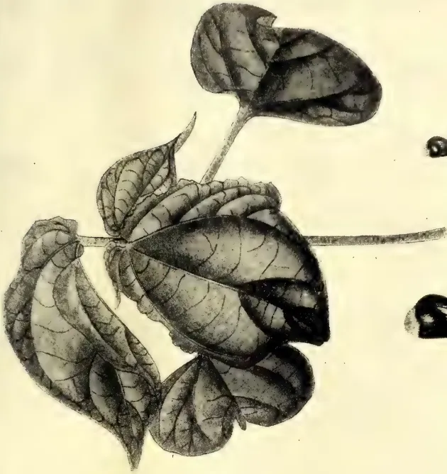
A detailed botanical illustration of a trifoliate leaf cluster. The cluster consists of three large, heart-shaped leaflets and a smaller, more pointed terminal leaflet. The leaflets are arranged in a pinnate pattern on a short petiole. The illustration shows the intricate network of veins on the leaf surface, with darker shading indicating the underside and lighter shading on the upper surface.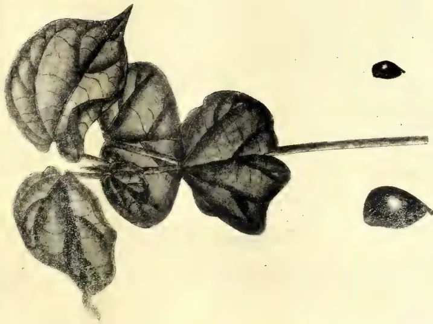
A detailed botanical illustration of a trifoliate leaf cluster, similar to the one above but with slightly different leaf shapes and venation patterns. The cluster consists of three large, heart-shaped leaflets and a smaller, more pointed terminal leaflet. The leaflets are arranged in a pinnate pattern on a short petiole. The illustration shows the intricate network of veins on the leaf surface, with darker shading indicating the underside and lighter shading on the upper surface.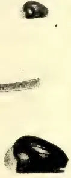
An illustration of two dark, oval-shaped seeds. The seeds are shown in a side view, highlighting their smooth, slightly glossy surface. They are positioned vertically, with the larger one at the bottom and the smaller one above it.EGYPTIAN
An illustration of two dark, oval-shaped seeds. The seeds are shown in a side view, highlighting their smooth, slightly glossy surface. They are positioned vertically, with the larger one at the bottom and the smaller one above it.HINDI
This image is a scan of a blank page. The paper has a light cream or off-white color with a slightly textured appearance. There are a few very small, faint dark spots scattered across the surface, which appear to be scanning artifacts or dust particles. No text, lines, or other markings are present on the page. APRIL, 1909.]329Fibres.end of September the crop may be pulled out after taking the third picking.
Picking at the Experiment Station costs Rs. 1 per 100 lb. seed cotton (i.e., fibre and seed), whereas in America it costs 75 cents American (or fully double), and in Egypt 10 piastres (2 shillings) for the same quantity. An average boy should pick 60 pounds a day.
Implement.—It has been clearly demonstrated by the Superintendent of the Experiment Station that the most economical way to cultivate crops in the North-Central Province, after removing the trees, is by implements drawn by cattle. The writer would consider it necessary to have the following implements for every 100 acres under cotton, owing to the short period between the end of the monsoon and the suggested planting season. With regard to the implements at present in use, the writer would suggest nothing except an increase in number:—
Four ploughs which will be capable of dealing with 100 acres in twenty-five days, three American disc cultivators, one light Cambridge roller, two ridging ploughs, and two drill cultivators.
In the North-Central Province the tillage operations can be accomplished at the following cost, provided the land is comparatively clear of stumps:— Ploughing, Rs. 5 per acre; cultivating, 60 cents per acre; ridging, Rs. 2 per acre; drill cultivating, 60 cents per acre.
(Note.—The above rates are fixed on a basis of Rs. 2 per yoke of oxen and men.)
Labour.—From personal observations and particulars obtained from the Superintendent there does not seem to be any scarcity of labour, provided one is prepared to pay a slightly higher rate of wages than on the planting estates; but this is compensated to a large extent by having the coolies without advances, this being the case on the Experiment Station. The probable extension of railway and roads may at any time render it necessary to obtain indented labour under advances, but the fact must not be lost sight of that at present there is no competition for agricultural labour in the North-Central Province.
As regards living conditions for coolies, it may be noted that food is cheap, excellent fish abounding in the tanks, local rice delivered on the estate under normal conditions at Rs. 4.50 per bushel, being much cheaper than in other districts of the Island, owing to the large area of the crop cultivated by the local villagers; the only
commodity that rules high being coconuts, which are sold on an average at 8 cents each, but there is every probability of their becoming cheaper, as the crop grows well in the Province.
With the use of implements and cattle, manual labour is reduced to a minimum during the growing season, and it is possible to get local labour to plant and harvest the crop, unless it interferes with the reaping of village paddy. The suggested time of planting will not clash with the village harvest as formerly, when cotton was planted in October and harvested in March and April.
Local irregular village woman labour can be obtained at 30 cents, and estate labour on an average of 43 cents. In the writer's opinion, with tactful management, the various labour problems will be easily solved.
The land may be thoroughly cleared of trees and stumps for Rs. 50 per acre, or all trees under 12 inches diameter cut and burnt at Rs. 25. To facilitate the future tillage operations it would be advisable to thoroughly clear the land, and no doubt a stump extractor would minimize the cost of clearing considerably. It is always advisable to keep in mind that good roads, cheap railway carriage, and over-sea freight are matters of the utmost importance in placing the crop on the market. Ceylon being favoured in this respect, the writer considers that the commencing of cotton plantations in the North-Central Province is outside of the sphere of the native residents, as capital is required to buy and clear land.
Cotton has a distinct advantage over tea and rubber, in the fact that returns can be obtained immediately after clearing, as the crop only occupies the land for seven months.
Assuming that the crop return is 300 pounds of fibre per acre at 8d. per lb., which in the writer's opinion is a low estimate, the profit should at least be £4 10s. per acre, reckoning the cost of actual tillage of harvesting (not including ginning, baling transport, and shipping) at Rs. 50 per acre.
The amount of capital required to take up land depends to a large extent on the value put on the land by the Government, but this matter is outside the sphere of this report; the above figures are based on an assumption of Rs. 20 per acre, and a water tax of Rs. 2. In Egypt average land produces 500 lb. of fibre per acre, but there is
42 Fibres.330[APRIL, 1909.much capital invested, as land is valued at least at £40 per acre. In America, with black labour at one dollar per day, and an average yield of 200 lb. of lint, the land is valued at £2 10s. per acre, and the whole cotton belt, which has only 7 per cent. under cotton, at £1 5s.
In conclusion, the writer prognosticates a great future for cotton in the dry zones of Ceylon during the warm season (provided the water is conserved and distributed to the many acres of fertile land, which are at present largely covered by jungle), when it is considered that there is at present something approaching 200,000 acres of irrigable land, and many other acres which could be brought under irrigation without interfering with the present cultivations, there being only 75,000 acres under cultivation and over 2,000,000 acres in the North-Central Province alone awaiting the plough.
J. STEWART J. MCCALL
A good example of what may be achieved by energy and common sense, in establishing new industries in a colony, is afforded by the work done in German East Africa in the sisal industry. For years the rich returns to be derived from planting sisal have been reiterated to farmers and planters in Queensland, but with small result. Since Mr. P. McLean introduced some plants from the Bahamas some twelve years ago, the price of sisal fibre has ranged from £50 per ton in 1902 to £37 per ton in 1907. In 1908 there was a sudden fall in price to £30 in March and £25 in June, owing to manipulation of the Manila hemp market. (See table in the Pamphlet on the Sisal Hemp Industry, issued by the Department of Agriculture and Stock.) Since then the price has again risen, until, in December, 1908, we were advised that the value of Fourcroya fibre (Mauritius
hemp) in England was £30 per ton, and, as this fibre is usually from £3 to £4 less in value than sisal, it follows that the price of the latter has risen proportionately.
Dr. Maxwell, in his report on the Mackay Sugar Experiment Station, just issued, deplores the want of enterprise on the part of the farmers in the district, no application having been made by them for sisal suckers wherewith to start a paying business.
Turn we to the German colony for a contrast.
Attention has been given to sisal hemp cultivation in German East Africa since 1893 (says the "Agricultural News" of Barbadoes), and the increasing value of the industry is evident from the fact that the exports of fibre during 1906 were valued at £66,900, as compared with £43,900 in 1905 and £28,300 in 1904.
The industry was started by the importation of a small number of plants from Florida fifteen years ago. Machinery for the extraction of the fibre was imported in 1899, and the first exports were made in 1900. In 1904 the number of plants dealt with was 1,300,000, which yielded 624 tons of fibre, this being equivalent to an average yield of 17 oz. of fibre per plant. In the following year the average return of fibre rose to 25 oz. per plant, but in 1906 it dropped to 22 oz. It is calculated that if 800 plants per acre are grown, an annual crop of 900 to 1,200 lb. per acre should be obtained.
The machine employed for the extraction of the fibre is the one used in Yucatan, and is known as the "Molla." It costs £650, is capable of dealing with about 100,000 leaves in ten hours, and requires 48-hp. to drive it. In order to keep this machine sufficiently employed, a plantation of at least 600,000 plants is necessary. This (allowing distances of by ft. between the plants) represents an area of about 310 acres.—Queensland Agricultural Journal, Vol. XXII., Part 2, February, 1909, p. 94.
APRIL, 1909.]331BY CLAUDE A. LOWE.
The Tea Industry of Natal is of comparatively recent growth, having, like that of Ceylon, followed and supplanted the growing of coffee, when the latter industry was rendered unprofitable by the introduction of a blight which destroyed the berry.
The first plants were introduced by Mr.—now Sir—James Leige Hulett from Assam, the difficulty of transporting the seed alive being got over by planting them in boxes of soil, which were carefully tended during the voyage, so that when the ship arrived many plants were already over six inches in height. Unfortunately for the start of the industry, this arrival was followed by an extended period of drought, and as those among whom the plants were distributed were not all equally interested in the new venture, a very large percentage of them died out before the end of the first season. The remainder, however, are alive to-day, and share, with their introducer, the honour of being the parents of one of the most profitable and flourishing industries of the “Garden Colony.”
While in some degree the practice of growth and manufacture in Natal is of necessity more or less similar to that of India, yet in many points of procedure it is radically different; and the manager of a large estate in Assam or the Dooars might well be pardoned if at first sight he condemned the entire outfit as impossible. The Natal planters, however, deprecate, and with considerable reason, any comparison between their methods and those of India, since the climate, soil, rainfall and other conditions are entirely different.
The writer only recently had an opportunity of visiting the two large neighbouring estates of Clifton and Kearsney, owned, respectively, by Messrs. W. R. Hindson and Co., Ltd., and Messrs. J. L. Hulett and Sons, Ltd., both of Durban, Natal, and was given by the manager of the latter full information and practical demonstration of the procedure. On the Kearsney Estates, which occupy some two thousand acres actually planted up, the tea is planted on sloping ground or on the hillsides, which are in no part very steep, no particular formation being observed, though the bushes are planted at regular intervals. The planting varies, some being four by four, other divisions four by five, but the tea is not measured off into sections, nor are
intervening paths of any sort allowed for. The whole “field,” as each division is called, may cover anything from 100 to 500 acres or more, according to the soil available, the name being justified by the first impression it gives of a well grassed meadow.
The first thing one naturally asks when he sees this young turf is, “How often do you cultivate?” but it is a little startling to be told that if they get round once and a half in the year they consider they are doing rather well. Then one discovers that the manager is patting himself on the back for his superior management, when he ladles out the information that he works his garden with one coolie to four acres, as against your one per acre. The fallacy lies of course in the fact that, as all the pruning, and practically all the cultivation is done in the off season, all hands are available all the time for plucking; with the result that the men—unlike their brothers in India, who are all thumbs at plucking—become more expert than the women.
The Kearsney manager was clearly incredulous when the writer mentioned 6 to 8 hoeings a year as fair and ordinary cultivation, but it is very evident that the same practice in Natal would never do. In the first place the rainfall rarely exceeds 42 inches, and is often much less, so that such constant cultivation would inevitably mean the drying up of the soil, withering of the surface roots, and failing of the leaves; and a tea bush without leaves is a little worse than “Hamlet without the Prince.”
Then, again, it is doubtful if any of the hills would pay to terrace, and as even the limited rainfall has a way of coming in bulky sections, constant cultivation would mean denudation. A certain amount of hoe and hand weeding is done, but only when absolutely necessary, as the weeds do not grow with the speed and luxuriance seen in India, and practically never so as to hide or choke the bushes. On the other hand, it should be noted that when cultivating, the whole estate is well and deeply manured, at least once in two years.
The plucking is done by all hands, and follows very closely the best Indian practice. One, however, misses the familiar basket, as in its place they use sacks, just plain ordinary sacks, and at weighing-in time these come in tied up
Edible Products.332[APRIL, 1909.tight. Red leaf? Certainly, a good deal more than would be permissible on a very indifferently managed concern with you, but balance the percentage of red leaf against the cost of baskets here, and the difference would very probably come out very much in favour of the sack.
The species of tea grown here are for the most part Assam Indigenous, with, here and there, a patch of Manipuri. The latter, however, though otherwise well suited to the country, has the peculiarity that it refuses to seed freely when isolated, consequently the unhybridised variety is difficult to extend. The Assam variety, on the other hand, seeds with profusion, and it is this kind, therefore, which fills the bulk of the plantations in Natal. The growth of the leaf is somewhat smaller than that seen in the Dooars, with which district the writer is most familiar, but considering the size of the bushes, the yield is very good.
Unfortunately, sufficient inquiry was not made as to the method of pruning, and an examination of some of the bushes on the way back to town, would indicate considerable laxness, in this respect, according to Indian ideas. The general form of the bushes seems to show very low cutting back in the young plant, since four to six stems coming direct from the ground appeared to be the rule, the whole having a straggling loose aspect, very different to the compact and vigorous growth usually associated with a healthy and well pruned plant in full bearing. It is the more surprising, therefore, to learn that with the small amount of cultivation, and the general appearance of the bushes, the yield averages on a fair year as much as seven maunds per acre, which is a sound testimonial to the suitability of the country, and the enterprise and foresight of the pioneers.
There are two factories on the Kearsney Estate, both of which strike one as huge for the size of the garden. One of these has only been newly erected in brick. The dimensions are roughly 260 feet by 60 feet, and including the basement, which is used for storage and packing, there are no less than five floors. It is in this factory that the packing is done for the whole estate, the tea being put up for the most part in small chests and packets for immediate retail sale over the counter. In both factories the machinery is almost exclusively Jackson's, the Paragon being used for first firing at a temperature of 300, final
firing when time allows being carried out on venetians. Although the final result in the cup shows the breaking of the cells and fermentation as good as could be desired, yet the actual rolling is by no means so tight as that usually seen in Indian practice. The result expresses itself in a rather high percentage of dust and fannings which are not by any means completely removed from the finished product. As, however, practically the whole of the output is consumed in the Colony, and as the trade does not call for very "clean" teas, it is not improbable that this factor, by thickening the liquor, gives it an added value on the local market. The sorted teas, before packing, are stored in huge bins of corrugated iron.
It is, however, in the withering lofts that the greatest divergence from the writer's previous experience occurs. In place of being built crossways to the factory, the racks are made to run up and down in the old-fashioned way. Further, they are placed so far apart, that the space is as great or even greater than the rack. The trays are of Hessian cloth, placed flat, each being mounted at one end on a roller, so that to unload it is only necessary to wind them up as it were. The reason given for this practice is that as labour is so scarce, and the leaf is so difficult to remove from a flat wire netting, this system is a very great labour-saving invention.
One unfortunate result, at any rate, of this form of rack and arrangement exhibited itself, since although three Blackman fans were running full blast, and a small hurricane was tearing down between the racks, yet on the trays, leaves set delicately on edge remained undisturbed. For this reason the leaf has to be spread very thinly, even in the drier climate enjoyed, and even then, the manager has very little real control over the time of wither.
No one seemed to have heard of our practice of setting the racks across the factory with deeply sloping trays, and draught doors at the ends of every third or fourth rack, while they are absolute strangers to the system of hot air ducts from the drying room, leading into a system of screen and traps whereby three or more floors can be worked alternately with the same set of fans; though this system was installed by the writer under the direction of the present superintendent of one of the largest companies in the Dooars as far back as early in 1897,
The labour is almost entirely Indian, but of a very mixed class, coming from Calcutta, the Eastern Coast line and
APRIL, 1909.]333Edible Products.back of Madras more or less indiscriminately. Compared with the fine physique of the Nagpuri and Santal, they look a very weedy lot, but apparently give very little trouble in sympathetic hands. All are imported under a form of indenture, under Government supervision, but there seems to be no compulsion as regards repatriation, and such coolies as do not sign on again after their term expires, escape inland, to form the growing Indian population of the Colony which already numbers upwards of 10,000.
In conclusion, the writer would like to remark that, should any planter trained in tea on Indian lines ever find himself setting out to take charge of or assist on a Natal garden, it would be very wise of him to keep quiet and not start to show the Natal planter how to do things until he has been at least one year in the country. It has been tried not once, but many times, and so far as can be discovered, the man who knows everything, and tries to run his place on the lines to which he has been accustomed, has failed every time and will continue to do so. The fact is that the average Natal planter either owns, or has a very large interest in, his Estate, and takes particular pains to keep up-to-date in every respect; and being as a rule either Colonial born, or so long in the country as amounts to the same thing, he has very little to learn in adapting whatever he takes up in the tea line, to suit the peculiarities of the Colony. Hence his most undoubted success in spite of the heretical treatment of most of the accepted canons of tea culture.—Indian Agriculturist, Vol. XXXIV., No. 2, February, 1909, p. 46.
Mr. R. Cecil Wood, Deputy Director of Agriculture, Northern Division, Madras, writes as follows in the Madras Agricultural Calendar for 1909:—
When one compares the relative advantages of the two systems commonly employed in the cultivation of paddy, namely, broadcasting the seed in the field, or raising it first in seed-beds from which it is afterwards transplanted, the advantages of the latter system are so manifold that all land-owners in districts where for one reason or another the broadcasting system only is practised, are strongly advised to attempt the experimental introduction of transplanting even if only on a small area of their own lands and note the advantages for themselves.
The first and foremost of these is in the saving of seed. Custom in both cases varies, much more seed being used in some districts than in others, but under the transplanting system a saving of at least 20 to 30 lb. of paddy per acre having a money value of about a rupee is effected. If the seedlings are planted out singly this saving may be doubled. The seed-rate moreover can be more easily adjusted to suit the soil, or the nature of the variety grown. A long growing variety may, generally speaking, be given more room than a quick growing variety. The seedlings being put out by hand are evenly and accurately spaced, so that each seedling gets the same amount of soil, air, and water as its fellows, and consequently grows at the same rate, with the result that the crop grows and ripens evenly and uniformly. This result can never be obtained so well in the case of a broadcasted crop, since in some places the seeds will be more thickly sown than in others, and thus their growth and ripening will be affected. Opportunity may also be taken at the time when the seedlings are being lifted from the seed-bed, to reject any stunted or diseased seedlings, and any that are not true to variety, and thus to obtain a healthy crop of pure seed.
The advantages gained by the transplanted seedlings at the start are increased during the period of growth. They can be much better looked after, for the operation of weeding is made much easier, especially if the seedlings have been planted in lines as is the custom in some districts. The land at the time of transplanting having been puddled, the uprooted weeds are killed and quickly rot. A single weeding about a month after transplanting is all that is necessary, as the plants will then have become firmly established and sufficiently thick to keep down all weeds for the future. Compare this with the broadcast system where at least two hand weedings are needed, as well as the tedious operation of thinning the plants where they are too thick and filling up the gaps which are to occur. A custom obtains in some districts of ploughing through the broadcasted paddy when about a month old for the purpose of uprooting the weeds and thinning out the paddy plants. The surviving plants grow all the better, for having been subjected to this treatment, a sort of root-pruning, which may be compared to transplanting, while the waste of seed under the broadcasting system is also clearly seen.
Finally, when the crop comes to be cut, it is generally agreed that the
Edible Products.334[APRIL, 1909,highest yields of grain are obtained from crops grown from transplanted seedlings. The yield of straw may be taken as about the same under the two systems. This, as indicated above, is due to the better root system induced by transplanting. The practice may be compared to that common in orchards and gardens of transplanting young seedlings.
An objection often raised to the introduction of this system into a new district is its cost. People will often admit that in the delta lands where the supply of water is assured, and the soil rich, transplanting is the most profitable method to adopt, while they do not recognise that its advantages apply equally to poorer lands irrigated from more precarious sources. From the point of view of the actual expenses on labour, there is very little to choose between the two systems. The extra cost of lifting the seedlings, carrying them to the field, and planting them by hand is counter-balanced by the extra weeding and very tedious thinning and filling necessitated if the seed is broadcasted. Where the water-supply is precarious the advantages of transplanting are still more strongly brought out. The seed-beds occupy an area of about one-twentieth or one-twenty-fifth of the total area to be transplanted. For the first month of the crop's growth, therefore, only that proportion of the coal supply is needed. Seed-beds may, therefore often be sown with the help of rains, or under wells, before the full supply is received, and as experiment seems to show that within certain limits the age of the seedlings at the time of transplanting is immaterial, the seed-beds may be shown three weeks before the time when full supply is expected and will not be seriously affected even if water is not received until two or three weeks after this. The total amount of water necessary for the crop is, in any case, much less, and, therefore, in a year of short rainfall, tank-irrigated crops will have a greater chance of success. The saving of time effected by the adoption of the seed-bed system will often enable the farmer to cultivate a longer growing and, therefore, finer variety of paddy than if he broadcasted his seed or even in certain cases to grow two crops instead of one. Or again the period between the receipt of the first rains when the land may be ploughed and the time of full supply in the channel may permit of his raising a green soiling crop on the paddy fields, while his seed-beds are being grown elsewhere. This green crop may be trampled in a few days before transplanting, and will save the cost of cut-
ting and carrying the large quantities of green manure so often found necessary for the paddy crop.—Indian Agriculturist, Vol. XXXIV., No. 2, February, 1909, p. 116.
By T. PONNAMBALAM PILLAY,
Excise Commissioner of Travancore.
The manihot, Cassava, or tapioca plant (Manihot utilissima) belongs to the Euphorbia tribe, and is closely related to the Ceara rubber (Manihot glaziovii) so well known to every planter. It is now very commonly grown in Travancore, being the source of the tapioca meal, which constitutes an important article of food of the people of that State.
It is not indigenous to India, but appears to have been introduced from the tropical parts of South America. In Travancore, its introduction was due to H. H. the late Maharaja, who took great interest in the welfare of his subjects. By the introduction of this food plant, the large population of Travancore has been to a large extent placed beyond the reach of the famine conditions which prevail in other parts of India.
There are about fifteen varieties of the plant cultivated in Travancore. There is, however, a general similarity between them. The vigour of growth depends chiefly upon the fertility of the soil. The leaves are generally digitate, except in one case, when they are digitate partite, resembling ganja (Cannabis sativa). Chiefly for this reason, this variety is known as Ganja Tapioca. The tubers of this variety mature in six months. The period required for other kinds usually ranges from eight to twelve months.
The two main varieties are one sweet and one bitter. The latter contains a poisonous element, which can be got rid of by roasting or boiling, the water being poured away two or three times in the latter case.
Tapioca will grow in almost any kind of soil provided the climatic conditions are not too rigid. I have known it flourish up to an altitude of 2,000 feet. In fact, I believe that it thrives better in Travancore on ordinary or inferior soil, with a little manure than on superior red land, where it needs constant watering. It is liable, however, to greatly exhaust the soil and render it unfit for cultivating the same or other crops unless heavily manured.
APRIL, 1909.]335Edible Products.After selecting the land, it should be well ploughed. The soil selected in Travancore is usually of a porous character, where water cannot stagnate. The next process is the formation of ridges, three feet apart. Probably, however, pits deep, three feet apart are preferable. The pits should be filled with dried leaves, which should be burnt as a precaution against white ants, and as a small instalment of manure. Ashes and other manures should be mixed with the soil. Ashes are, however, pre-eminently fitted to develop the tubers and ward off their insect enemies, which are numerous.
When the pit system is adopted, the pits should be so filled up with loose soil as to raise the centre of each to a height of seven or eight inches above the ordinary soil level. The raised portion of each mound should have a diameter of about one foot. In an acre there will be about 4,500 maunds. In the case of ridges, the planting should be at a distance of three feet.
Tapioca is propagated by means of cuttings from its stems, each cutting having at least three nodes. When the tubers are gathered, the stems are preserved for cuttings. These cuttings are planted in a slightly slanted position. Care should be taken not to plant them too deeply in the ground. Not more than three nodes should be underground. The cuttings should be put in when the ground is damp, or when rain is drizzling. There is no fixed time for planting in Travancore. The crop is cultivated throughout the year, with the exception of the dry months, December to February. In a week or ten days after planting, the cuttings begin to sprout, and the healthy sprigs can be distinguished from the unhealthy. Unnecessary sprigs should be removed. The soil should be slightly stirred and weeds removed occasionally.
In order to decide the time of harvest, the tubers of a few plants should be examined. If they appear to be mature, the crop should be dug up. After the tubers are gathered, the stems should be tied in small bundles and placed on the ground with the root end below, so that the capacity for germination may be retained.
The tubers will not keep long in their raw state. Within a week at most they should be either sun-dried or boiled. If required for immediate consumption they are usually boiled, either alone or with tamarind leaves, the water being poured off two or three times. The tuber is also frequently reduced to
powder, washed in clean water half a dozen times, pressed in a cloth and then dried in the sun, after which the flour will keep for a considerable period.
When required for storage or export, it is usually cut into slices and sun-dried after the thick outer skin has been removed. It is sometimes also boiled before being cut and sun-dried.
The cost of cultivation per acre and value of yield will doubtless be of interest. I am here speaking of cultivation under ordinary circumstances. My estimate for preparing the land, manuring, planting the sets, weeding, inter-culture and harvesting is Rs. 130 per acre.
The Value of the Crop.—Each plant may yield on an average 24 lbs. of tubers. Presuming that 4,000 are established per acre, the gross outturn might be 96,000 lbs. per acre, the value of which would be very considerable. At present there has been considerable fall in the price of Tapioca in Travancore, but after making ample allowance for this, and after allowing for interest on capital laid out to acquire the land, there is no doubt that a large profit can be secured.
It seems a great pity that advantage was not taken of the large stores of Tapioca in Travancore for the needs of the famine-stricken in North India. I understand that something has been done recently in introducing Tapioca from Travancore in the famine districts of Northern India by the Salvation Army. There is also a small trade in Tapioca flour with Great Britain.—Agricultural Journal of India, Vol. III., Pt. IV., October, 1908.
(Concluded from p. 146.)
Professor J. B. Harrison (British Guiana) asked whether these experiments had control plots among them.
Dr. Watts said that if by control plots Professor Harrison meant plots receiving no manure, then there were control plots. In these experiments the cacao trees were planted from 15 to 20 feet apart, and each plot was separated by at least two intervening rows of trees. Plots 2 and 6 were separated from 7 and 10 by three rows of trees. That he thought was as much control as could be expected upon any estate.
Edible Products.336[APRIL, 1909.Hon. G. W. Hazell (St. Vincent) asked whether in mulching cacao trees with leaves and weeds, and grass, the material was allowed to wither and dry, or was applied in the green state.
Dr. Watts replied that it was purely a matter of convenience whether the material was buried in the green state or allowed to lie on the ground and wither, and then subsequently turned in. In most cases the mulch was allowed to rot upon the surface of the ground.
Mr. E. A. Agar (Dominica) inquired whether as the result of these experiments Dr. Watts was in a position to say that the application of manures had any appreciable effect on the cacao tree—did it increase their size, was there a difference in the weight of the pods or in the weight of the beans.
Dr. Watts said that the relationship between manures and the size or weight of pods or the size of beans was in need of investigation. No reliable information had, as yet, been obtained.
The President suggested that this was a matter which practical cacao growers might endeavour to determine for themselves. Experiments might be undertaken to ascertain whether the manure had any influence in increasing the weight of the pod, or the weight of the bean.
Mr. J. H. Hart (Trinidad) said that in Trinidad the average return was seven pods to 1 lb. of dried cacao.
Hon. W. Grahame Lang (Grenada) said that in Grenada the average return was 1 lb. of dried cacao from eleven pods.
Mr. A. R. C. Lockhart (Dominica) said that the experiments conducted at the experiment station by Dr. Watts greatly benefited the planters in Dominica who were near to Roseau, and were therefore in a position to watch the proceedings there; but three-fourths of the cacao in Dominica was produced by peasant proprietors—people hardly above the social position of labourers, and who were unable to derive any definite advantage from the experiments carried on at the Station. At the inception of the Imperial Department of Agriculture, when the Dominica section was being organized, provision was made for the appointment of an Agricultural Instructor, whose duties were to travel around the country, and, by personal advice to the peasant growers, lead them to improve their methods of cultivation. He regretted, however, that at the present moment they had no Agriculture Instructor in Dominica. Since Mr
Branch had been removed to Grenada, the post of Agricultural Instructor had remained vacant. This was detrimental to the interest of cacao cultivation in Dominica, especially amongst the peasant proprietors. Of course, he knew that there were considerable difficulties in the selection of an Instructor for an island like Dominica. It was necessary to find a planter competent to teach, but it was also necessary that he should be acquainted with the language of the people. He hoped, however, that the Imperial Commissioner would see his way at an early date to supply Dominica with the services of an Agricultural Instructor. The peasant proprietors of Dominica deserved much recognition, because the cacao industry of that island was largely due to their efforts, and he could testify to their readiness to receive instruction and advice from the officers of the Imperial Department of Agriculture.
The President said that the subject which Mr. Lockhart had brought before the Conference was a very important one. Under existing circumstances the appointment of an Agricultural Instructor for Dominica was a very important matter. For two years a vote for an Agricultural Instructor at Dominica had appeared on the Estimates, and advertisements had continuously been used for candidates for the post, but unfortunately they had received applications from no one that could be considered entirely suitable. Mr. Lockhart, Mr. Agar, and other gentlemen connected with Dominica were doubtless well aware of the fact that, in every address he had delivered in Dominica, he had urged the claims of the small proprietors. Not only in Dominica was the post of Agricultural Instructor vacant, but it was also at the present moment vacant in St. Lucia. There again he had made the fact of there being a vacancy known, but so far no candidate had applied for the post. Fortunately in other colonies, Agricultural Instructors were available. The difficulty both in Dominica and in St. Lucia was that the Agricultural Instructor must be acquainted with the patois spoken by the people. Unless he were acquainted with patois, his usefulness would be greatly reduced.
Mr. A. P. Cowley (Antigua) mentioned that pen manure was used in the various islands in the experiments of the Imperial Department of Agriculture, and the results obtained probably varied according to its composition. He would like to know whether there was any standard by which to determine a complete pen manure.
APRIL, 1909.]337Edible Products.The President pointed out that in the experiments carried on by the officers of the Department, the quality of pen manures used was considered as a 'good average,' and although the application of pen manures varied in quantity on different estates, yet one could arrive at a fairly accurate idea of what results might be expected from applications of pen manure by taking averages over several years.
Dr. Watts drew attention to cotton-cake-meal, a manure that was generally fairly uniform in composition, and suggested that its use might be valuable in cacao cultivation.
The President was glad that Dr. Watts had referred to this matter. He would urge most strongly on those islands that were growing cotton to a large extent, that they should not export the seed, but should use it either in the form of seed or meal as a manure. He desired therefore to emphasize what Dr. Watts had said about the manurial value of cotton seed and cotton-cake-meal.
BY JOSEPH JONES,
Curator, Botanic Station, Dominica.
In the West Indian Bulletin, Vol. VIII., pp. 131-8, a brief note on experiments in grafting cacao at the Dominica Botanic Station has been published. A further note is now submitted, in which the work done is briefly summarized and an indication of the position of these experiments at the present date given.
The first attempts at grafting cacao in Dominica were made in the Botanic Station nurseries in July, 1905, when a good type of Criollo cacao seedlings and Alligator cacao seedlings were worked on stocks of Theobroma bicolor, with a view to finding if the latter would prove a suitable stock on which to grow the commercial varieties of cacao. Theobroma bicolor did not prove suitable as a stock. Although the union of the cacao seedlings appeared complete, no growth followed, and the trial failed.
An attempt was then made to graft by approach young growing shoot of the Alligator cacao (Theobroma pentagona) on Forastero stocks. For this purpose a rough stage was placed near to a seedling Alligator cacao tree
that had produced fruit. On this were placed the bamboo pots containing the seedling plants, and selected shoots of the Alligator cacao were grafted to the seedlings. The seedlings were supplied with water each day. In eight weeks the union was complete and the first batch of five plants was taken off and planted out on September 11, 1905. A second batch of eight plants was placed out on November 21, 1905. The cacao plants were set out in a field occupied by seedling orange trees, fifteen years old, planted at 20 feet apart, each cacao plant being placed in the middle of the square formed by four orange trees. The soil is dark in colour, easily worked, and may be described as fair cacao land. Probably the young cacao did not receive a fair chance when planted in soil already occupied by orange trees, but against this must be set the advantage they gained by shade from the older trees. These grafted cacao plants have grown very well, and now at two years and four months old they are bushy plants over 6 feet in height, and from 6 to 8 feet through the spread of branches. The number of half-developed cacao pods on the trees now (January, 1908) averages four per tree. The manurial treatment has been three baskets of pen manure annually as a mulch to help the trees through the dry season.
It is expected that the trees when three years old should have yielded at least one lb. of cured cacao per tree. In Dominica, the Alligator cacao is a delicate tree and a shy bearer. Better results might probably be expected from selected Forastero strains of cacao grafted on Calabicillo stocks and planted in fields with only tannias and bananas for shade.
During 1906, the grafting of a hardy and prolific type of Forastero cacao on Calabicillo stocks was commenced. A plot containing sixteen plants of this variety was planted in August, 1906. These, now nearly eighteen months old, are bushy plants from 4 feet to 5 feet in height and are very promising. In July, 1907, another plot of thirty-five plants of this cacao was started. Tannias and Chinese bananas were planted to give the necessary shade.
The number of grafted cacao plants now growing in the Dominica Botanic Station is as follows:—
| Theobroma pentagona... | 62 plants |
| Selected Forastero | ... 94 " |
| Total... | 156 " |
At Picard Estate, Dominica, the property of Messrs. Rowntree & Company, an experiment plot of grafted Forastero cacao has been started. It contains 136 plants supplied by the Botanic Station. Other trials on a smaller scale are being made on various cacao estates. At the present time 200 plants have been ordered by planters from the Station for further experiments, and the plants will be delivered in the course of a few weeks. These trials should yield valuable information in the course of several years.
It will be understood that the appearance of grafted cacao plants in their early stages is quite different from the habit of seedling cacao. The seedlings grow with a single stem and do not usually branch in Dominica, until 3 or 4 feet, and sometimes 5 feet, in height, depending on the soil, position and amount of shade given. Grafted cacao plants branch a few inches above the point of union and form bushy specimens. This early production of several branches with a large leaf surface is probably one of the factors in causing grafted plants to fruit much earlier than seedling plants.*
Close on 500 grafted cacao plants have been obtained during eighteen months from an established cacao tree possessing desirable qualities. Had it been necessary, double this number could have been obtained from the tree by erecting additional staging on which to stand the bamboo pots containing the stocks. It will be noted that planters possessing cacao trees of a fruitful and disease-resisting type could increase them by grafting at a fairly rapid rate.
Some of the advantages obtainable by adopting the system of grafting cacao and forming future plantations with grafted instead of seedling plants would be as follows:—Obtaining an even quality of produce requiring the same degree of curing; growing disease-resisting varieties; earlier fruiting; giving a quicker return on capital invested; increase of yield per acre by selecting prolific strains; possibly the dwarfing of the trees owing to grafting.
Should grafting tend to dwarf cacao trees as it is known to do in the case of many varieties of mangoes, this should be of advantage in islands like Dominica,
* A tree planted on September 11, 1905, was photographed on March 25, 1908, and measured 9 feet in height and 9 feet through the spread of the branches at 3 feet from the ground. It was carrying sixty pods, and other grafted plants growing in the vicinity of the same age were carrying from thirty to forty pods each—Ed, W. I. B.
as low-growing trees could be better protected from the wind. With dwarf trees it might be possible to sever all the pods with a knife held in the hands of the cacao gatherer, thus ensuring the crop being removed without injury to the tree, and doing away with the use of the cacao hook, a necessity for gathering the crop of the upper branches of the present tall trees.
Even in the hands of a careful man the cacao hook does some harm to the trees, portions of the bark of the branch being often removed with the pods, either above or below the fruits, leaving wounds in which fungus spores may enter and set up disease conditions. The prevalence of dead upper branches on cacao trees in islands where overhead shade is not given is attributed wholly to the effects of the sun and the wind, but the part played by the cacao hook in this matter, though it cannot be calculated, is undoubtedly considerable.
It will be more expensive to plant a field with grafted cacao than with seedling cacao, just as it is more costly to plant a field with budded orange plants than with seedling kinds, but the orange grower knows by experience that he is following right methods, and that he will be repaid for the extra cost of budded plants. In like manner the value of grafted cacao plants may be demonstrated in the course of time, and cacao growers brought to adopt this system in further development of cacao cultivation.
By R. D. ANS TEAD, B.A. (Cantab.),
Agricultural Superintendent, Grenada.
As mentioned in the West Indian Bulletin, Vol. VIII., pp. 130-1, the experiment plots of cacao at Grenada are of two kinds, distinguished for the sake of reference by the terms, 'experiment plots,' and 'experiment stations.'
The experiment plots are each about one acre in extent, and are chosen from land near the public roads belonging to peasant proprietors.
One series of these plots completed its three-year course in 1904, and a fresh series, chosen on the same plan, but in different localities has completed its second year. The results are briefly set forth in the following table:—
APRIL, 1909.]339Edible Products.EXPERIMENT PLOTS.| No. | Manurial treatment. | Yield pounds of wet cacao. | Difference on no manure. | ||||
|---|---|---|---|---|---|---|---|
| 1905-6. | 1906-7. | 1906-7. | |||||
| Per plot. | Per tree. | Per plot | Per tree. | Per plot. | Per tree. | ||
| 1. B | No manure ... | 265 | 2.8 | 226 | 2.4 | — | — |
| 2. A | " ... | — | — | 153 | 3.3 | — | — |
| 3. A | " ... | — | — | 352 | 3.4 | — | — |
| 4. A | " ... | 295 | 3.0 | 657 | 6.7 | — | — |
| 5. A | " ... | 325 | 3.1 | 510 | 4.9 | — | — |
| 2. B | Phosphate as basic slag { | — | — | 168 | 2.2 | + 15 | + 1.1 |
| 3. B | — | — | 696 | 14.5 | + 344 | + 11.1 | |
| 5. B | 188 | 3.9 | 368 | 7.6 | — 142 | + 2.7 | |
| 1. A | Phosphate and potash { | 388 | 5.1 | 286 | 3.8 | + 60 | + 1.4 |
| 5. C | 159 | 1.8 | 595 | 6.7 | + 85 | + 1.8 | |
| 2. C | Phosphate and sulphate of ammonia { | — | — | 148 | 1.9 | — 5 | — 1.4 |
| 4. D | 117 | 1.4 | 411 | 5.0 | — 246 | — 1.7 | |
| 4. B. | Phosphate and nitrate of soda ... | 275 | 2.8 | 516 | 5.3 | — 141 | — 1.4 |
| 2. D. | Sheep manure { | — | — | 103 | 1.1 | — 50 | — 2.22 |
| 3. D. | — | — | 565 | 4.3 | + 213 | + 0.9 | |
| 5. D. | 210 | 1.6 | 326 | 2.5 | + 184 | — 2.4 | |
| 4. C | Ohlendorff's manure ... | 390 | 4.2 | 648 | 7.1 | — 9 | — 0.4 |
| 1. C | Mulching ... | 253 | 2.6 | 250 | 2.6 | + 24 | + 0.2 |
Considerable interest has been shown in these experiment plots by the peasants in their districts, and the operations carried out upon them are, to a large extent, followed. The plots were originally chosen in poor areas and where trees have been considerably neglected. The Agricultural Instructor uses the plots to meet the peasants and to show them how agricultural operations such as forking, drainage, and pruning should be carried out, and how manures should be applied. A good crop serves as an excellent object-lesson to all cultivators of cacao, and indicates how the most satisfactory results are to be obtained.
With regard to the actual results of the experiments, figures are kept as accurately as possible and published from year to year in the Annual Report of the Botanic Station. As a means of obtaining accurate numerical results, the second class of experiments, "the experiments stations" afford better opportunity than the experiment plots, since they are on a bigger scale and are run more on estate lines.
Three of these stations have completed their first year's course, and the results are briefly set forth in the following table:—
Edible Products,340[APRIL, 1909.EXPERIMENT STATIONS.| No. | Manure. | Yield in pounds of wet cacao. | Difference on no no manure. | ||
|---|---|---|---|---|---|
| Total. | Per tree. | Total. | Per tree. | ||
| Tuileries III. Waltham III. |
No manure ... " " |
1,253 1,759 |
6.3 8.8 |
— — |
— — |
| Tuileries IV. Waltham I. |
Lime ... " " |
1,581 1,643 |
7.9 8.2 |
+ 328 — 116 |
+ 1.6 — 0.6 |
| Tuileries I. Waltham IV. |
Sulphate of ammonia ... " " |
1,367 2,157 |
6.8 10.8 |
+ 114 + 398 |
+ 0.5 + 2.0 |
| Tuileries II. Waltham V. |
Sulphate of potash ... " " |
1,588 1,931 |
7.9 9.6 |
+ 335 + 172 |
+ 1.6 + 0.9 |
| Tuileries. | Pen manure ... | 2,423 | 12.1 | + 1170 | + 5.0 |
| Waltham II. | Basic slag ... | 1,517 | 7.6 | — 242 | — 1.2 |
These experiment stations are established on large estates and consist of less than 5 acres or 1,000 trees. These stations, of which there are at present six, have become very popular, and next year it is hoped to start several others.
The result of their establishment has been to make the larger proprietors take a lively interest in experiments carried out on their estates, experiments designed to answer questions and solve problems connected with their own soils and conditions.
It is not proposed to discuss these results at length, but merely to dwell on a few salient points.
The experiments show that nitrogenous manures are of the greatest value for cacao in Grenada, and that the use of phosphate without nitrogen is not beneficial. The use of potash without nitrogen, on the other hand, appears to result in increase of yield.
The cacao soils of Grenada consist of stiff clay strikingly deficient in lime, so that the beneficial results obtained by the application of lime are not surprising.
EXPERIMENTS AT ST. LUCIA.By J. C. MOORE,
Agricultural Superintendent, St. Lucia.
Of the experimental work carried out at St. Lucia, that in connection with the improvement of cacao cultivation has
been followed by most beneficial results. This is apparent from the growing popularity of up-to-date methods of culture and manuring, the generally improved condition of the trees, and the increased crops on many plantations where treatment has been adopted similar to that which has been found most successful on the experiment plots. This work has been carried out on cacao estates in different parts of the island over a period of five years, entirely at the expense of the Imperial Department of Agriculture. These plots were each an acre in extent, were situated on the main roads, and were generally chosen on neglected properties. The objects in view were to demonstrate, if possible, that neglected and unhealthy trees could be restored to health and increased bearing by careful methods of cultivation. It was hoped that these improved conditions would be closely observed by the peasants and others, and would persuade them to adopt similar measures on their own properties. The Agricultural Instructor gave particular attention to this improvement of cacao cultivation, and the periodical reports of this officer show that much useful work has been accomplished.
As reported at the last Conference, it has been found that intensive culture in cacao is very profitable, for it improves the vigour and disease-resisting powers of the trees. It has also been shown by these plots that the use of
APRIL, 1909.]341Edible Products.basic slag and sulphate of ammonia is followed by profitable increases in crops, but that the best results may be expected when pen manure or other suitable organic manures are used in addition to artificials.
In 1906, all these cacao plots were relinquished, for it was thought that they had served their purpose, and a new series was undertaken on similar lines as those established in Dominica and Grenada. Under the new arrangement, all working expenses and cost of manures are borne by the plot proprietors, scientific advice being given as to treatment by the officers of the Department. Each plot is divided in five equal sections (generally -acre sections) and is treated as follows:—
| Section. | Manurial treatment. | Cultural treatment: |
|---|---|---|
| A. | Control, no manure | ... Annual forking. |
| B. | Stable manure, 5 tons | ... do |
| C. | Mulching with grass or leaves, 10 tons | ... No forking. |
| D. | Basic Slag, 4 cwt., Sulphate of ammonia, 1 cwt. | ... Annual forking. |
| E. | Sulphate of potash, cwt., Sulphate of ammonia 3 cwt., lime, 10 cwt. | ... do |
It is too early yet to say much of the results that have been obtained, but accurate returns are being kept and will be reported later. In section C, it has been found that a mulch of 10 tons per acre was hardly sufficient to cover the ground thoroughly, and planters who contemplate giving this system a trial are recommended to increase the quantity. The cost of cutting and applying grass and bush from adjoining vacant lands is about 2s. 6d. to 3s. per ton.
Plots of cacao have been established at the Experiment Station attached to the Agricultural School. The general condition in 1906-7 of one of these plots was much improved by two applications of grass in the form of a mulch. At each mulch, about 100 bundles of rough grass, of approximately 100 lb. weight each, were used, and it was calculated that the cost of cutting, heading, and spreading this grass worked out at 2d. per bundle, or about 4s. 6d. per ton.
Since mulching has been adopted, there has been a very noticeable improvement in the vigour of the trees, and they are less affected in the dry season. The soil also appears to have benefited by this treatment, and fungus diseases have been less prevalent.
By Professor J. B. HARRISON, C.M.G.,
M.A., F.I.C., F.C.S., F.G.S.,
Director of Science and Agriculture,
British Guiana.
When the Government acquired Onderneeming many years ago some acres of it were occupied by a recently started cultivation of cacao. This was gradually extended, and about 16 acres are now occupied by this crop. Not much attention seems to have been given to the cacao plants, and when in 1899 I was placed in advisory control of the Onderneeming School Farm, the cacao plantation was in very bad order and its yields were very low. When first started, Oronoque trees (Erythrina glauca) were planted closely together through the cultivation to supply shade. They had been allowed to grow almost without restraint, and the result was a more or less forest-like growth, in the gloom of which the cacao trees struggled for existence. But although drawn up and more or less dwarfed in their general development, the cacao trees were singularly free from disease.
I commenced operations on the cacao field in the year 1900 by cautiously and gradually thinning out the Oronoque trees, so that in the course of twelve to eighteen months I had reduced their number by three-fourths, the greater part of those left standing being in positions where they form a windbreak or shelter-belt to the fields, whilst those remaining sparsely scattered through the cultivation had been severely pruned. This resulted in letting in light and air to the cacao, but in so gradual a manner that the trees were not injured by unaccustomed exposure. During the four years preceding the reduction of the shade the mean annual yield was 1,064 lb. of cured cacao, whilst during the succeeding six years the annual crop has been at the mean rate of 1,850 lb.
After the cacao trees had become accustomed to the altered conditions under which they were growing, a series of trials with artificial manure was commenced.
I realized that experiments of this sort with fruit-bearing trees, such as cacao, offered a far more difficult problem for solving than do experiments with sugar-cane. The individuality of the trees appeared to me to be a disturbing factor, and one that would be exceedingly difficult to overcome,
Edible Products.342[APRIL, 1909.As a preliminary step we determined the yields of cacao per tree in the fields over the beds of cacao, each of which is approximately one-third acre in area. From among these we selected beds having a mean of about 100 trees growing on each, the numbers on them varying from a minimum of eighty-eight to a maximum of 102, and upon which the yields of cacao had been approximately uniform. The beds are longitudinal, extending across the field from east to west. By this means we selected as apparently of equal productive power sixteen plots for the experiment.
Analyses of the soils of the plots were made, which showed that they were fairly heavy clay soils, although lighter than the usual run of the cultivated soils on the coast-lands of Demerara.
The following were the determinations of the soil constituents usually considered as of importance:—
| % of air-dried soil, | |||
|---|---|---|---|
| No. 1, | No. 2, | No. 3, | |
| Nitrogen ... .. | .131 | .174 | .122 |
| Potash soluble in boiling hydrochloric acid ... .. | .482 | .589 | .502 |
| Potash soluble in 1 per cent. citric acid ... .. | .0097 | .0043 | .005 |
| Lime soluble in boiling hydrochloric acid ... .. | .233 | .245 | .248 |
| Lime soluble in 1 per cent citric acid ... .. | .0342 | .0472 | .0390 |
| Phosphoric anhydride soluble in boiling hydrochloric acid ... .. | .091 | .086 | .065 |
| Phosphoric anhydride soluble in 1 per cent. citric acid ... .. | .0038 | .0047 | .0025 |
The analytical figures led to the expectation that applications of potash salts and of phosphates were probably necessary for the successful growth of cacao on these soils. But the relatively high proportion of potash present in a state soluble in hydrochloric acid indicated that tillage operations would probably render available sufficient of the potash in the need of the plants.
During the course of the experiments very full and complete records were kept by Mr. P. de Weever, Schoolmaster at Onderneeming, who devoted much time and great care in carrying out the details of the experiments.
The manures tried were:—
5. Sulphate of potash, superphosphate of lime, and sulphate of ammonia.
It was pointed out by me in 1904, that the returns of cacao from the trees for one season only would not represent the actual action of the manures. The crops were therefore determined during four years from March, 1903, to April, 1907.
The average number of pods, their weights, and the average weight of cacao-pulp yielded per tree per annum during this period are shown by the following:—
| Manurial Treatment. | Per tree per annum. | ||
|---|---|---|---|
| Number of pods. | Pods, weight in pounds | Weight of pulp in pounds. | |
| No Manure ... .. | 9.0 | 7.4 | 1.47 |
| Sulphate of potash and superphosphate of lime ... .. | 9.2 | 7.7 | 1.58 |
| Sulphate of ammonia ... .. | 8.6 | 7.1 | 1.50 |
| Sulphate of potash and sulphate of ammonia ... .. | 9.9 | 7.9 | 1.61 |
| Superphosphate of Lime and sulphate of ammonia ... .. | 9.4 | 8.4 | 1.83 |
| Sulphate of potash, superphosphate of lime, and sulphate of ammonia ... .. | 9.9 | 8.0 | 1.70 |
For the purposes of these experiments Mr. de Weever during the year 1902-3 counted the pods produced on a considerable number of beds on the Onderneeming cacao fields, determined the weight of pulp yielded by them as delivered at the sweating house, and the weight of cured cacao obtained.
His results were:—
| Number of pods ... .. | 15,513 |
| Weight of pods ... .. | 12,553 lb. |
| Weight of pulp ... .. | 2,555 " |
| Weight of cured cacao ... .. | 1,016 " |
The cacao trees at Onderneeming on the experimental beds are planted approximately at 300 trees to the acre. The yields of cured cacao per acre per crop, calculated by the use of the above data, work out as follows:—
| Manurial Treatment, | Yield of cured cacao per acre. |
|---|---|
| No manure ... .. | lb. 176 |
| Sulphate of potash and superphosphate of lime ... .. | 187 |
| Sulphate of ammonia ... .. | 173 |
| Sulphate of potash and sulphate of ammonia ... .. | 191 |
| Superphosphate of lime and sulphate of ammonia ... .. | 218 |
| Superphosphate of lime, sulphate of potash, and sulphate of ammonia.. | 202 |
The above indicates that on the soils on which the trials were conducted, the manure which exerts a favourable influence in the yields of cacao is a mixture of superphosphate of lime and sulphate of ammonia. Sulphate of potash is not indicated as being required, and, in fact, little good resulted from its application. Nor has the use of sulphate of ammonia by itself proved satisfactory. In the mixed manuring of sulphate of ammonia and superphosphate of lime the cost of the sulphate of ammonia was $7.50, that of the superphosphate of lime $2.50—a total of $10 per acre. The increased yield of cacao presumably due to the action of the manures during the four years, was 168 lb. worth locally at 12 c. per lb. $20.16. Allowing 6 per cent. per annum as interest on the capital expended in the manures, we get $7.76 as profit from the manuring.
The following, in my opinion, illustrates some of the uncertainty which attaches to manurial experiments with cacao. The yields of cured cacao per tree per crop during the period 1903-7 were as follows:—
| Not manured experimental beds | 58 lb. |
| " " rest of fields ... | 72 .. |
| Manured experimental beds ... | 66 ,, |
The cause of the higher yields per tree over the parts of the field not under experiment, is that on them the bearing trees are planted somewhat farther apart from one another than they are on the carefully selected beds used for experiments with manure.
In the preliminary determinations of their yields during the selection of the beds, it was found that the yields on three beds selected for unmanured control plots were 1.04, 1.38, and 1.20 lb. of pulp per tree per crop. A fourth one, with trees planted at the same distance apart as were those on the three beds, yielded 2.40 lb. of pulp per acre. If this bed had been used as an uncontrolled manured plot for manurial experiments and any one of the other three as an unmanured reference plot, we should have obtained some striking results relating to the actions of manures on cacao. As it is, reference to the figures given above shows that the results obtained were, as they are in all well-arranged agricultural field trials, unmarked by phenomenal yields attributable by the experimenter to some special form of cultivation or of manure.
My experience with cacao indicates that to obtain reliable results the plots used must be relatively large ones, containing at least 100 trees on each, and that each trial should be repeated on at least three plots and preferably on four
or five. Then the mean results obtained over a series of crops although probably not in any way striking, may be accepted as fairly reliable.
Hon. W. Grahame Lang (Grenada): We in Grenada agree with Professor Harrison's remarks as regards shade. We find that wherever cacao is heavily shaded, a good deal of disease exists; but as soon as the shade is removed the cacao trees improve in condition.
The President said that the question of shade was a matter which had to be treated according to local conditions. No hard and fast rule or law could be laid down with regard to any particular district until actual trials had been made. Side shade and shelter were necessary, but overhanging shade was a matter in which one must be guided by local conditions.
Professor Harrison, replying to the Hon. G. W. Hazell, said that the usual shade tree in British Guiana was Bois Immortel, but they were now establishing wind-breaks of rubber trees.
Dr. Watts (Leeward Islands) said it occurred to him that the question of soil moisture and drainage was somewhat related to that of shade, and it was questionable whether a great deal of the beneficial effect attributed to shade was not attributable to drainage through the roots of the trees. From what he had seen in one or two places where he had taken careful note of trees growing in damp situations, there was a drainage effect which was beneficial both in the case of lime and cacao trees. In Dominica and Grenada cacao flourished much better without shade, whereas in Trinidad they had a country which was a great advocate of shade, and he was not certain whether it was not rather a question of drainage.
The President remarked that the point raised by Dr. Watts was a very important one and deserved investigation.—West Indian Bulletin, Vol. IX., No. 2.
(Concluded from page 255.)
Climate.—Maize requires a high summer temperature and abundant moisture, and attains its most luxuriant growth where the summer is long continued, reaching a height of 20 feet and more; but certain varieties of it are adapted to take advantage of a short but hot summer, and ripen in more northern latitudes; these, however, do not attain nearly so great a height. It
Edible Products.344[APRIL, 1909.is grown in Southern Europe, especially in Hungary, Roumania and Italy, in the southern parts of Asia, in Africa, in Australia, especially in New South Wales and Queensland, and in America, from Canada to Patagonia. Frost kills the plant in all its stages, and the crop does not flourish well if the nights are cool. In the tropics it can be grown from the sea-level to considerable altitudes. In cool localities it will not ripen, though it can be grown for use as fodder.
Soil.—The best soil for maize is a rich sandy loam containing a fair amount of humus, well drained, but holding moisture well, since the plant makes a rapid and succulent growth; for this reason the presence of humus is important, owing to its retentive power for moisture. Stiff clay is prejudicial. Maize grows well in succession to crops which leave behind them plenty of vegetable matter to form humus; any land which has given a good crop of hay will after ploughing give a good crop of maize. Leguminous plants form good crops to precede maize, as they enrich the soil in humus and nitrogenous matter.
Seed Selection.—In order to ensure a good growth in the next crop the seed for sowing should be selected in the field, and not after gathering, as the character of the stalk a cob came from cannot then be known; the best cobs of the best stalks should be collected and kept apart to furnish seed. In the Southern United States stalks producing two cobs to the stalk are preferred, as they are considered to give the largest yields. Cobs poor in size, shape or fulness should be rejected, and if one cob on a stalk is very poor both should be rejected. A cob that bends over in ripening so that the top hangs downwards is advantageous, as the rain does not collect at the bottom and cause decay or sprouting.
The ears should be of good size, of nearly uniform diameter throughout, and well filled at both ends. The individual grains should be long, and so broad at the upper end as to leave only a slight depression between the rows.
When a satisfactory kind of maize has been found, care should be taken not to plant another kind of maize anywhere near it, as the pollen from the tassels is carried by the wind and fertilises cobs at a distance, and thus the character of the good maize would be altered in the next crop.
Planting and Cultivation.—In places where water is liable to stand after heavy rains the land should be ploughed
so as to form beds on which to plant the maize, but where the surface water runs off quickly the land should be ploughed flat. With good drainage flat planting is the best, as it is less expensive, and the amount of surface exposed being smaller there is less evaporation, and the crop therefore stands drought better. When beds are made they may be 4 feet or 8 feet wide; in the latter case the maize is planted in two rows, one near each edge of the bed with 4 feet between the beds. After ploughing the soil should be well pulverised by harrowing; a thorough preparation of the soil produces a better crop and facilitates subsequent operations in destroying weeds.
Maize is commonly planted in rows 4 feet apart, as this allows a convenient width for cultivating between the plants; the distance between the plants in the row is about 3 feet, but the thickness of planting must be varied according to circumstances, both the fertility of the land and the amount of moisture being considered. On very fertile soils distances of feet feet with 3 grains per hill are adopted. The richer the soil the closer can planting be done with safety. If the stalks stand too thickly in the rows the crop will suffer more in dry weather than when planted more thinly, and when the plants crowd each other they do not produce good ears, whilst more leaf is the result.
Planting should be deferred until the soil has become warm enough to ensure prompt germination of the seed; the depth at which the seed should be sown depends on the temperature and moisture of the soil; if it is planted at too great a depth the soil is cold and wet, and the seed may decay; if it is too near the surface of a dry soil, and dry weather continues, the crop may prove uneven. The planting is done either by means of a horse-drawn planting machine or the seed is dropped on the surface and covered by using a hoe.
Cultivation should begin immediately after the first rain that follows the planting; the surface should be broken and the weeds killed, and this should be repeated after each rain, so as to prevent the formation of a crust and to kill the weeds. When the crop is from 4 to 6 inches high it should be hoed and thinned to the proper number of stalks, as it will then be past the greatest danger from insect attack, and any weeds growing in the rows between the stalks should be cut out. In times of drought a well pulverised but shallow surface layer forming a "dust mulch" checks evaporation and keeps the soil beneath moist.
APRIL, 1909.]345Edible Products.Harvesting.—When matured the ears of maize or cobs, sometimes with a good proportion of the husks attached, are pulled by hand from the stalks; the latter are then utilised by allowing stock to feed on them in the field, or are cut and made into fodder by a shredding machine; the plan of making them into silage for milch cows is also sometimes practised. It is sometimes thought that if the cobs are stored with the husks on, the latter protect them from insect attack, but this idea does not seem well founded, and it is usually best to remove the husks at the time of gathering. Horse-drawn machines are sometimes used to cut and bind the maize crop, and the cobs are subsequently removed from the shocks in the field. Machines for gathering the ears from the standing stalks, husking them and delivering them into wagons have also been designed and used to some extent.
The grain is removed from the cob by machines known as corn-shellers. Several types of the latter are supplied by Messrs. Peter Henderson & Co., of New York, namely: (1) the "Burrall Corn-sheller," which can be worked by one man: it shells 100 bushels a day, and costs $6.75; (2) the "Clinton Corn-sheller": this costs $4.50 with one balance-wheel, and $5.50 with two balance-wheels; it does not separate the grain from the stripped cob; (3) the "Black Hawk Corn-sheller": this is a small hand-machine, costing $2. Messrs. Ruston, Proctor & Co., of Lincoln, England, supply an "Improved Maize Husking, Shelling and Dressing Machine." In this the cobs fall upon a revolving drum, which strips off the grain. The grain is cleaned from dust, loose husk and other refuse, by riddles and by a strong current of air, and is elevated to the sack-spouts in a finished condition. The machine, which is provided with a portable feed-elevator, is made in two sizes: (1) the 3 feet 6 inch machine, shelling and dressing about 400 quarters of maize in 10 hours, and requiring a 6 horse-power portable engine to drive it; (2) the 5 feet machine, shelling and dressing about 850 to 900 quarters in 10 hours, and requiring a 10 horse-power portable engine to drive it. In the case of both machines, if husking is done at the same time, the output will be about half the quantities named above.
If the machine employed for shelling has furnished the maize in an imperfectly cleaned condition, a separate cleaning operation to remove the "fluff" should be given before shipment, as the latter increases the risk of the grain heating on the voyage.
44As regards yield, the average annual amount per acre in the United States was 25.9 bushels in 1907, and in the forty-two years 1866-1907, the range was from 16.6 bushels in 1901 to 30.8 bushels in 1872. As regards maximum yields, over 100 bushels per acre has been recorded in some cases in the United States.
Storage and Transport.—During storage, and during transport from the place of growth to the United Kingdom, maize is liable to suffer a considerable amount of deterioration from two causes, namely, fermentation and insect attacks. When maize coming from West Africa suffers, the damage is mostly due to the attacks of weevils, whilst the principal defect that occurs in that coming from the United States and the Argentine Republic is due to the effects of heating on the voyage caused by fermentation induced by the excessive amount of moisture it sometimes contains; the quality and value may be seriously diminished by this cause.
Soon after maturity maize may contain as much as 20 to 22 per cent. of moisture; if it is stored in this state, without an opportunity of getting drier, it may escape damage in cold winter weather, but as soon as warm weather comes fermentation will occur and the grain will be damaged. If it is left on the cob and stored in well-ventilated "cribs" until the late winter or spring it will usually get sufficiently dry. In the Argentine Republic the cribs used for storing maize are made of poles stuck into the ground, with wire and maize stalks woven in among them so as to form a sort of bin; in this the cobs are put, and the walls being more or less open, allow air to circulate through the contents, and the maize dries, especially if the crib is thatched over to keep out the rain. If by the time warm weather arrives the moisture has been reduced to 12 or 13 per cent., the maize under ordinary conditions can be stored or transported with safety, but if the maize has not been sufficiently dried some more artificial method must be adopted.
One of these methods employed in modern grain storehouses is to transfer grain from one bin to another by means of transfer belts and elevators; during this operation the circulation of the air effects a certain amount of drying, and the process is frequently employed to keep grain in good condition. In the case of maize, however, if the transfer is made too frequently many of the grains get broken, and besides, the operation is somewhat expensive. Another method known as
Edible Products.346[APRIL, 1909."kiln drying" has been devised; in this heated air is passed through the maize until the superfluous moisture is removed. It is stated by some that the heat injures the maize for manufacturing purposes, and that the kiln-dried maize is liable to suffer considerable damage by cracking and breaking during subsequent handling operations; the objection to kiln drying, however, may partly have arisen from badly damaged material having sometimes been treated and mixed with better grades. There seems no reason why, either by using a lower temperature for the air and prolonging the time of drying, or by using air previously deprived of its moisture by refrigeration, and then warmed, some suitable method of drying maize should not be attained.
An alternative plan to storing in a ventilated crib is to allow the maize to dry thoroughly before storing, and then to keep it in a tightly closed bin in which it can be treated to destroy insects; in some climates the slow drying in the ventilated crib would not be successful.
Having regard to the injury caused by dampness it is important that the grain should not be exposed to rain in the course of transport by land, warehousing and shipping, nor to damp air during the voyage; and the stores should be dry and thoroughly well ventilated, and be kept clean and white-washed.
Among the insect enemies of maize weevils cause an immense amount of damage, especially to that coming from West Africa; it seems probable that the chief source of infection is the warehouse where the maize is collected before shipment, though the attack may commence at the country farms, and some of these insects may be lurking in the holds of the steamers that convey the maize to England. The larvæ of some moths also attack the grain.
Weevils and moths can be easily killed by the use of carbon bisulphide, a colourless volatile liquid which gives off a heavy vapour, but its use in tropical countries will require careful supervision owing to its poisonous properties and great inflammability. It may be applied either by spraying or pouring the liquid over the grain, but it is commonly put in shallow pans placed above the grain; from these it evaporates, and the heavy vapour sinking through the grain kills the insects. The best results are obtained when the grain is stored in air-tight bins or closed tanks; but in absence of these, covering the grain with tarpaulins, oil
cloths, or canvas sails will be found effective. It is a good plan to build a "quarantine bin," in which the grain is treated and afterwards removed to the store. The carbon bisulphide is used at the rate of 1 lb. to each 100 bushels of grain, and is allowed to act for from 24 to 48 hours.
Buildings can sometimes be treated with this substance, using 1 lb. of the liquid for 1,000 cubic feet of space, and placing it high up so that the vapour may descend; apertures should be closed and the building kept shut for from 5 to 12 hours. When opened the building should be well ventilated. Every precaution must be taken to prevent the vapour igniting by contact with lights or pipes, or even the sparks from electric fittings, as its igniting temperature is very low, and when mixed with air it is explosive. The vapour is poisonous, and must not be breathed, and workmen in factories where it is used are found to suffer from constantly inhaling small quantities. It should not be used for flour, but grain is uninjured by the treatment if it is well ventilated afterwards.
As an alternative to using carbon bisulphide to destroy the insects the plan of heating might be employed. It has been found by Mr. F. V. Theobald, in the case of other grain, that any dry temperature over 140° F. killed all larvæ and pupæ as soon as the corn was well warmed through; the most successful experiments were at any temperature between 130° to 140° F., when not only larvæ and pupæ but also eggs and adults were killed, and it seems probable that on the large scale heating to a temperature approaching 150° F. for one hour would be successful. The designing of an apparatus to effect the destruction of weevils by heat without at the same time injuring the commercial value of the maize deserves the attention of manufacturers of milling machinery. The treatment should be given at the warehouse before shipping, and as soon as possible after the maize is received; the maize should then be stored away from danger of fresh infection until shipped. Messrs. Thomas, Robinson & Son, Limited, of Rochdale, England, make a maize-drying machine which might, perhaps, prove effective for this purpose; it is capable of dealing with 150 bushels at a time. In this apparatus air heated by steam coils is blown by a fan through the maize placed in specially constructed chambers.
Before shipping the holds should be thoroughly cleaned and freed from insects. It has been noticed by Mr. F.
APRIL 1909.]347Edible Products.V. Theobald that grain shipped in gunny bags suffers more from weevils than that sent in bulk, the reason being that the weevils will not work deep in a mass of corn.
As regards the native practices it may be mentioned that in West Africa the cobs are sometimes kept hanging up, but when this is done they become attacked by weevils; another plan is to harvest the maize by breaking down the plants and leaving them lying for three days to dry, the cobs are then cut off and stored in thatched bins supported on wooden piles about 6 feet off the ground; these bins allow the air to circulate through them. In Northern Nigeria the natives are in the habit of drying their millet and guinea corn in mud ovens, and then storing it in cylindrical mud towers; this heating would no doubt tend to kill weevils if it was applied to the maize intended for sale.
Grading.—In order to facilitate the buying and selling of grain a system of grading has been adopted in the United States. In this system the grain is examined by trained inspectors and reported to be of one or other of certain divisions of quality; by this means the buyer has an opportunity of knowing what he is buying, and the disputes are avoided which are liable to occur when the buyer purchases on the basis of a sample and considers that the grain delivered does not come up to the sample in quality. If the grading is well done the buyer is assured of the quality of the grain he will receive, and this is a matter of greatest importance; in fact it has been stated that it is not of much consequence to dealers whether good, bad, or indifferent grain is sent so long as it is true to the sample, and the broker can safely say that the sample represents so many bushels.
The inspection departments are managed either by trade organisations or are under State control, and the charge made for grading is only a small fraction of the value of the grain, varying from about 25 cents to 75 cents per car-load or per 1,000 bushels.
In the case of maize in the United States the rules recommended by the Chief Grain Inspectors' National Association classify the grain into three classes, namely—Yellow Corn, White Corn, and Mixed Corn (corn or Indian corn being the names by which maize is always known in the United States); and in each class the grain is assigned to one or other of five grades.
The following are the rules:—
No. 1 Yellow Corn shall be pure yellow corn, sound, plump, dry, sweet, and clean.
No. 2 Yellow Corn shall be 95 per cent. yellow corn, dry, sweet, and reasonably clean, but not sufficiently sound or plump for No. 1 Yellow.
No. 3 Yellow Corn shall be 95 per cent. yellow corn, reasonably dry, reasonably clean, but not sufficiently sound and dry for No. 2 Yellow.
No. 4 Yellow Corn shall be 95 per cent. yellow corn, not fit for a higher grade in consequence of being of poor quality, damp, musty, or dirty.
No Grade Yellow Corn. (See general rule.)
No. 1 Mixed Corn shall be mixed corn, sound, plump, dry, sweet, and clean.
No. 2 Mixed Corn shall be mixed corn, dry, sweet, and reasonably clean, but not sufficiently sound and plump for No. 1 Mixed.
No. 3 Mixed Corn shall be mixed corn, reasonably dry, reasonably clean, but not sufficiently sound and dry for No. 2 Mixed.
No. 4 Mixed Corn shall be mixed corn, not fit for a higher grade in consequence of being of poor quality, damp, musty, or dirty.
No Grade Mixed Corn. (See general rule.)
No. 1 White Corn shall be pure white corn, sound, dry, plump, sweet, and clean.
No. 2 White Corn shall be 98 per cent. white corn, dry, sweet, reasonably clean, but not sufficiently sound and plump for No. 1 White.
No. 3 White Corn shall be 98 per cent. white corn, reasonably dry, reasonably clean, but not sufficiently sound dry for No. 2 White.
No. 4 White Corn shall be 98 per cent. white corn, not fit for a higher grade in consequence of being of poor quality, damp, musty or dirty.
No Grade White Corn. (See general rule.)
No Grade—General rule.—All grain of any kind and variety that is wet, hot, or in a heating condition, burned or smoky, contains weevil, or is for any reason unfit for warehousing, shall be classed and graded "No Grade."
These rules have met with some criticism on the grounds that the terms give great latitude for individual variations of opinion; "reasonably dry" and "reasonably clean," for instance, being quite indefinite, and it has been suggest-
Edible Products.348[APRIL, 1909.ed that the judgment of the inspectors should be guided and checked by actual scientific determinations of the percentages of moisture, of coloured grains, of damaged grains, and of broken grains and dirt; though of course this could not be done with every consignment, but only with a certain number of selected samples with a view to keeping the standard of grading uniform.
In Natal the Government has decided to encourage the export of maize, and in August of 1907 held a meeting of persons interested in the matter in order to obtain the advice and co-operation of the farmers and merchants, and a committee was formed to consider the matter of grading. A Government inspector has been appointed, and the following set of regulations has been issued:—
GRADING REGULATIONS FOR MAIZE,
adopted by the South African Governments. Season 1908; Natal.
The maize is to be classified as follows:—(A) White Flat. (B) White Round. (C) Yellow Flat. (D) Yellow Round. (E) Mixed (partly white and partly yellow in same bag).
Choice White Flat (Dent).—To be flat, sound, dry and reasonably clean, and not to be deprived of its grade by reason of an occasional red or discoloured grain.
Choice White Round (Flint).—Similar to the above, except that it must be round (flint).
Fair Average Quality White Flat (Dent).—To be dry. The grains may be irregular in size as long as they are flat; and a reasonable quantity, not more
than 8 per cent.; may be yellow or discoloured grains.
Fair Average Quality White Round (Flint).—Similar to above, except that it must be round (flint).
Choice Yellow Flat (Dent).—Must be flat, dry, sound, well cleaned, and is not to be deprived of its grade by reason of an occasional white or discoloured grain.
Choice Yellow Round (Flint).—Similar to above, except that it must be round (flint).
Fair Average Quality Yellow Flat (Dent).—Must be flat, sound, dry and reasonably clean, and up to 8 per cent. of white or discoloured grains should not deprive it of its grade.
Fair Average Quality Yellow Round (Flint).—Similar to above, except that it must be round (flint).
Choice Mixed.—To be dry, sound and reasonably clean. The maize may be round or flat. If the sample is mainly white, yellow maize up to 20 per cent. may be allowed; if the sample is mainly yellow, white maize up to 20 per cent. may be allowed.
Fair Average Quality Mixed.—Should consist of dry, round or flat maize, or a mixture of both chiefly yellow and white maize, and may contain up to 30 per cent. of blue berries.
Note.—In each of the foregoing cases “below the standards set for fair average quality” will be regarded as “below grade.”
Samples of these grades are exhibited in the Natal Court of the Imperial Institute—“Bulletin of the Imperial Institute, Vol. VI., No. 3, 1908.
A general famine of timber all the world over within thirty years of the present date is unhesitatingly prophesied by Mr. Angus Hamilton of Berkeley, California, in a letter to the Times. Mr. Hamilton, it will be seen, believes that England holds an answer to the situation in the forests of Uganda; but his predictions may rouse the Indian Forest Department also to be on the qui vive while there is time. He writes:—
To those of us who have spent the greater part of a lifetime in the international timber trade and have travelled extensively the timber-producing re-
gions of the world, it is a self-evident fact that a time of scarcity is approaching much more rapidly than most people suppose—I would place the time of scarcity at 25 to 30 years. At the present rate of consumption the United States supply will certainly be exhausted in about that time and Canada, with the United States drawing on it from now on, cannot hold out much longer. All the most accessible timber on the shores of the Baltic has been used up, and the interior supply will be gone in less than 30 years. With conditions like these to be met in so short a time what are you to do in the Old Country to meet it?
In the short space of thirty years it would be impossible to meet this famine
APRIL, 1909.]349Timbers.by planting, and while your home timber is growing it is necessary you should look up some other source of supply. The two most likely regions are the Amazon or the Uganda Protectorate. As the timber regions of Uganda above 4,000 ft. are suitable for white labour, it seems to the writer that this is a much more desirable region to develop than the Amazon, and being within the Empire would be free from the tri-weekly revolutions so common in the South American Republics, consequently giving greater security to the capital necessary to develop the forests.
To get this timber from Uganda into the British market at a reasonable price, it means that experience and energy must be put into it. Boys from school cannot do this. Woodcraft can only be learned in the woods. The very best skilled lumbermen of the broad-gauge type must go into this business along with the investors' money if a profit is to be made. I was very much amused on reading an article by Mr. Winston Churchill in the Strand Magazine lately describing the primitive methods employed to supply the Uganda Railway with cordwood for fuel. I quite agree with him that modern methods must be introduced if this Uganda timber is to be used as a commercial asset of the Protectorate; logging railways must be built, steam logging machines introduced, and modern up-to-date band-saw mills constructed. Steam, electricity, or compressed air are much more serviceable than a lazy nigger. On one point I must differ from Churchill, and that is about the use of the "steam tree feller." In such a forest as he describes it would cost more to clear a way for the feller than it would do to cut the timber by manual labour. To give a start to the timber business in Uganda it would be necessary to man the woods and mills at first with skilled white labour, and by this means gradually educate the young natives. The young natives can be trained up to the good useful woodsmen, but the old ones never. At least this has been the writer's experience in the Black belt of the Americas. The old ones sooner or later return to their banana or cotton patches, but the young ones, reared around the mills and woods, usually stay with the plant. There is a large area of timbered country that is at least comparatively healthy and suitable for white settlement, and should be the first part to be developed. This region is known as the Mau Escarpment, and lies between Lake Naivasha and the Kasova Hills on the eastern shore of the Victoria Nyanza. This forest can easily be
reached by logging railway from the existing Government railway, and with proper appliances and skill the timber could be placed on board ship at Mombasa at about 12d. per cubic foot, that is, provided the rates on the Uganda railway are reasonable. Steamers of, say, 6,000 to 8,000 tons can carry it to London or other British ports at 4½d. per cubic foot. In all the price of pitch pine is about 1s. 4½d. c.i.f. the Thames, but in less than ten years the price of pitch pine will not be less than 1s. 10d. per cubic foot c.i.f. British ports. Timber companies going into Uganda should be very careful to see that their medical staff should have a thorough knowledge of tropical medicine as the health of the employés is of prime importance in an undertaking of this kind. All camps should be carefully screened to protect the workers from the insect pests which communicate disease, all water should be boiled or artesian wells bored, a small ice plant should be installed at each saw mill to supply ice to the village and the logging camps along the companies' railway. With proper precautions there is no reason why the timber in river bottoms cannot also be logged out.
The writer has lived in some of the worst malarial regions on the American continent for years without having a single attack of malarial fever, and I am convinced the same thing can be done in Uganda. A proper diet of well-cooked food, plenty of ice, protection from insects, and as little direct sunlight as possible, will enable the white man to live in almost any climate. Do not be afraid to tackle the problem of getting out the Uganda timber, for it can be done.
I estimate the timber area of Uganda at 40,000 square miles, that is to say, 25,600,000 acres, which at 1,000 cubic feet per acre would yield 25,600,000,000 cubic feet in all. Why should this enormous forest be allowed to rot on the stump when you need the timber so much at home? It is a self-evident fact in a forest that is perpetuating itself that it decays as fast as it grows, and we know that this decay and growth is about 40 cubic feet per acre per annum, hence there is 1,024,000,000 cubic feet rotting in the forest of Uganda every year. For the benefit of the general reader I may state that this annual decay of timber would, if converted into sleepers, be sufficient for 170,000 miles of single track railway, and all this without injury to the forest.
To encourage capital to this business the timber would require to be sold in
Timbers.350[APRIL, 1909.large areas, say 50,000 to 100,000 acres. It would take this amount of timber to justify timber companies going to the expense of building railways, steam-logging appliances, and large modern hand-saw mills. A plant of say 10,000 cubic feet daily capacity would be required to be assured of a ten or fifteen years' supply to justify the expense; and, as far as I can learn, the forest laws of Uganda would have to be rearranged to meet those requirements, and before people could be induced to risk their money in the business. The Government should send some practical timbermen and foresters out to report
on this field and to draw up common-sense laws for the exploitation and conservation of the forests. Here within the Empire you have timber enough to supply all your needs until you can grow your own at home.
My advice to you at home is to plant every available inch of ground. Don't say you haven't any. I know of several millions of acres in England, Wales, Ireland, and Scotland that can produce a profitable crop of timber, and which in the interest of coming generations should be planted. Assuredly this timber famine will be upon you in less than thirty years.—The Pioneer.
You may break, you may shatter the vase,
if you will,
But the scent of the roses will hang round
it still.
The rose, undoubtedly, has ceased to be merely looked on as a cut flower for the decoration of rooms and houses. It is now cheerfully given its rightful place as one of the choicest decorative garden plants taking precedence over others for the purity of its tints, unique fragrance and persistent bloom. The production of a constant, persistent bloom, however, depends on proper care and attention bestowed on the plant—manuring and watering, reference to which was made in a previous article, seasonal pruning and prevention of insect attack, to which I shall now refer.
is one of the most important operations in rose culture, and it is to be considered what object the cultivator has in view, for it is quite easy to prune some kinds of roses out of, as into, bloom. The period of flowering is much regulated by pruning, and it is therefore well to have a knowledge of the modes of pruning required for different kinds of roses. Some require severe cutting down, while others should be shortened and trimmed only. As a rule the local garden cooly knows nothing whatever of the art of pruning beyond an indiscriminate and general amputation to produce a uniform level, with fatal results as far as bloom is concerned. Still some rose bushes flower after such vandalistic treatment—after a manner,
with which some people are contented, and others cannot understand how their roses do not give satisfaction. "He who would have beautiful roses in his garden must have beautiful roses in his heart" wrote the Rev. Reynolds Hole; and no gardener will produce them from the garden unless he has them in his heart. They are the production of labour with a mind for that labour. As a general rule
is in the month of May with the fall of South-west monsoon showers in one part of the island and during the North-east monsoon rains in the other. The plants yield best to the operation at the beginning of the monsoons. They should never be pruned in the hot dry months of the year when growth is in a more or less inactive state. At such a time the plants will greatly benefit by mulching—covering the earth about the roots with dead leaves, sweepings from the garden, etc., to prevent excessive evaporation of moisture and the penetration of heat rays to the roots. As regards pruning it must, first of all, be borne in mind that roses are divided into the following main classes:—(1) Hybrid Perpetual roses, (2) Bourbon roses, (3) Moss roses, (4) China roses, (5) Tea scented roses, and (6) Noisette roses. The different classes require different modes of pruning.
1. The Hybird perpetualls bear the free use of the shears and should be cut back to about four to six eyes according to the habit of the plant. "The finest flowers are, as a rule on the tops of the shoots which are strongest, and if quality be more desired than quantity all the buds except two or three so situated should be removed (this relates to flowers)." Some Hardy Perpetualls
APRIL, 1909.]351Horticulture.are dwarf in habit while others are extremely vigorous in their growth. The dwarf varieties must be less severely pruned than the vigorous ones. It is difficult to lay down a fixed rule for pruning them, but the most vigorous should be to cut to six or seven eyes and the dwarf varieties be thinned out and only have their shoots shortened to one-half. There should be some old wood pruned away occasionally to admit of the shrub replenishing themselves once a year or once every two years, so that part by part they may renew themselves and
2. Bourbon roses are treated as regards their annual pruning in much the same way as Hybird Perpetuals.
3. Moss roses are also to be pruned to two or three buds of the last year's wood. These flower only once or twice, but they flower better Upcountry.
4. China roses are free bloomers and do not require much pruning but only the shortening of their branches.
5. Tea-scented roses require the strongest and largest to be kept intact and only shortened, and the other branches cut away. As new branches are thrown out their ends should be nipped, when lateral shoots are thrown out which only flower. The number of these laterals can be reduced with the object of getting fewer but finer blooms.
6. In the case of Noisette roses the long rods should be slightly shortened and laterals cut back to three or four eyes and the weak shoots removed altogether.
From a fortnight to three weeks after pruning the buds begin to swell and shoot out into branches. It will then become necessary to regulate the number of these by rubbing off those that would be likely to crowd and entangle. It must be remembered that the more the sap is retarded in its circulation, the smaller is the force with which it acts in developing branches, and the greater its action in
"Trees only begin to develop flower buds when they have reached some maturity," writes an authority on gardening, "for it is necessary for the production of flower buds that the sap should have attained some consistency, and circulate slowly. This elaboration is assisted by the extended course it has to run in the lengthened branches; it is also assisted by broken and interrupted lines." The well-known principle has been taken advantage of to check the sap by pinching and torsion, and even
partially breaking over-vigorous branches in fruit culture. Rose plants require some attention at the time the flower buds appear. If first class blooms are the object only a limited number of buds should be allowed to remain on the trees, the rest being pinched off. Some fresh nourishment is also necessary for the plant to assist the buds to swell out. For this some fresh cowdung mixed in water and strained is given by some. After each flowering the soil should be replenished and the used-up flower branches cut back.
The rose, like many another cultivated plant, has
In Ceylon, however, unlike in other countries where the rose is grown on a large scale, it is said to have comparatively few. There are pests that attack that plant underground and others above. As regards those that are visible the Rose Beetle is a positive nuisance in some places, especially in the country side. A little insect of the size of a pea, of a bright greenish-yellow colour, and known to Entomologists as Anomala varicolor, and a large confrere with dark wing coverts and prominent white belly, Lachnosterna serrata and L. mucida, sweep down from scrub and jungle to the rose bushes as evening falls and devour blossom and leaf. Handpicking in the light of a lantern and dropping the insects into a finger bowl of water, as I have seen done in some bungalow gardens, is of no avail. The only way to prevent the attack of the Rose Beetle is by
by drenching the plants in the evening in water in which tobacco had been steeped, with a dash of kerosine and soapsuds. While keeping off all vegetable feeders from the plant the douche will at the same time act as a tonic to the tree. Sometimes a number of little green insects will attack the young shoots. The tobacco infusion in their case too will be found more successful than anything else. Kerosine and soap are likely to injure the young shoots unless made very weak and carefully applied. Sometimes dusting with ashes is successful, but the ashes cannot reach the insects on the underside of the leaves; but by syringing they can easily be displaced. Caterpillars of certain butterflies and moths will also show themselves during the monsoon rains when insect life predominates, and these will have to be picked in the early morning and destroyed. The best guide to detect the caterpillars is the
Horticulture.352[APRIL, 1909.number of fresh pellets that will be found on the ground. If the pellets are there, the caterpillar must be hidden somewhere on the branches or sometimes buried in the soil near the stems. The scale insects sometimes attack rose plants, and the number to be seen on each plant is surprising. The whole stem of the plant is covered with them as if plastered with something. The best remedy is to segregate such plants, and after rubbing off the insects, the plants should be washed with resin wash. Little flying insects resembling mosquitoes will be found to attack roses, disfiguring the foliage by puncturing it. The presence of damp and grass and the absence of free sun and ventilation are favourable for them. The best remedy is to take the plants to a place where these causes are not present. The insects come and go every year. Mildew shows itself on rose plants by the curling of the leaf and the ashy white powder on them. Dusting of sulphur powder is advised as a remedy. But washing with the liquor of sulphur is better as the underside as well as the upper can be reached by a jet of the wash. A half ounce of potassium sulphide should be dissolved in some hot water and added to a gallon of water. One or two applications of this should cure a fresh attack of mildew. As regards those
no enemy has a worse reputation than the white-ant so destructive, especially to cuttings in the nursery, tunnelling into the slips from the butt end, and the "lady" is puzzled to know how the choice slips of La France, Cathrine Mermet and Glorie de Dijon, stuck with such care in the sheltered and prepared bed are cut off suddenly in their youth after exhibiting signs of sprouting. The white-ant is a most insidious pest, but as its ravages are confined to diseased or decayed vegetation, it will be well to clear thoroughly the neighbourhood of the flower beds of such matter. The most effective way of diminishing their numbers is to get the garden cooly to dig up the ants' nest with a pickaxe or alavangoe and destroy the queen ant, if she can be
found. Other underground enemies are earthworms and the
the thick fleshy dirty-white yellowish grub with the tale end of the body swollen and dirty in colour. These grubs are easily noticed and should be destroyed wherever seen, as they are hurtful to the roots of trees. Large rose trees in pots are not unfrequently killed by these. Cattle manure frequently contains the larvæ of this beetle, and manure before using should always be spread out in the open so that the birds and chickens would pick out the eggs and grubs. Earthworms in a flower tub clog the soil and absorb matter which would benefit the plant. In potting plants the earth should be examined carefully for the eggs of the earth worm. But the best plan is to incinerate the earth, which, while destroying all organic life in it will greatly improve it. But all underground enemies can be readily and effectively disposed of by using liquid manure, urine, which while killing them will
As practical agriculturists know, urine when allowed to putrify and diluted in water and applied to trees is one of the most valuable manures. It furnishes, in short, according to Dr. Fownes, the same substance as the atmosphere—the food of plants provided by Nature herself. Moreover, urine contains a large quantity of phosphates, bodies indispensable to vegetable life. Urine should be diluted as a manure. It has been found that the diluted liquid contains nearly four times as much ammonia as urine left to putrify in its natural state. The stuff, however, should not be left to putrify for too long a period. Two months is about sufficient. The use of this liquid manure, so easily prepared, in rose culture will give remarkable results, killing insect pests in the ground, and producing profuse crops of flowers in a short time. Use a small quantity, about a pint of the liquid, for each tree, taking care not to wet the foliage. As in the case of solid manure, one single application is all that is required for the season. More anon.
—Independent, December 4, 1908.
APRIL, 1909.]353While the myriads of mosquitoes that infect the lowlands of Louisiana seem to have an assured hold on life, because of the difficulties involved in thoroughly well draining the lands, yet there does seem to be some hope of their final extirpation, or at least of their reduction to far fewer numbers. It seems that there was quite an invasion of New York city by mosquitoes during this last summer, and the low lying lands of Long Island, Staten Island and New Jersey doubtless furnished the little pests that made New York unhappy for a time. The Army and Navy Journal, in discussing the matter, refers to some work done in Cuba by Major J. R. Kean of the Medical Corps, U. S. A., and argues from the work done there that similar results could be secured in the United States if equal effort were displayed in the battle with the mosquitoes. The Journal states that in the Guines-Union zone in the south-western part of Matanzas province and the south-eastern part of Havana Province, one of the most troublesome and persistent zones of infection in the Island, producing yellow fever every spring, the stegomyia mosquito is now a rare insect. Mosquito breeding in the city of Havana is practically at an end, and June last 23,573 houses were inspected in which only forty-nine deposits of larvae were found. Of these twenty-nine were stegomyia
Considering that all this improvement has come in a country where until a few years ago there was complete native ignorance as to the infectious dangers of the insect, the mosquito problem should not be treated as something beyond remedy by anyone, but as soluble by a sound mixture of sanitary science and common sense. Since the yellow fever outbreak of 1905 in New Orleans but little attention has generally been paid to the extirpation of the mosquitoes in any broad way. The city of New Orleans has devoted itself assiduously to the thorough screening of cisterns, but in the absence of any particular danger from yellow fever the people at large seem to be disposed to take what comes without any grumbling, whether they be mosquitoes, flies, or whatnot. It is a fact, however, that the more general screening of all of the houses, restaurants, and hotels with fine woven wire has reduced the annoyance from mosquitoes very much. Even in the country
it is found that the people generally are screening the houses, and certainly malarial fever in Louisiana is incomparably less frequent than malarial fever in some of the western states. If we were as vigilant in the country about minor drainage as we are about screening our houses for our personal comfort, the mosquito problem would gradually become more and more simplified, until we should finally perhaps reach a degree of control of the mosquitoes equal to that we now secure in our residences. The Pullman people on their sleeping cars are now using large dust screens which exclude mosquitoes as well as dust. On some of the southern Louisiana trains we find mosquito screens the whole length of the passenger cars, which render summer travel very pleasant as compared with conditions some years back.
If minor drainage and local spot drainage were attended to on the plantations so that there would be no water hatcheries existing nearby for mosquitoes, it would add very much to the effectiveness of what we have already done. In these days of fuel oil it would be comparatively inexpensive to oil the ditches every week or two. It is a fact that in the rainy season the oil would be washed away perhaps daily, but nevertheless it would be effective in the dry seasons and comparatively effective always.
In New Orleans and in the country also, the invasions of mosquitoes are brought about largely by strong easterly winds blowing them in from the sea marshes along the coast. These grey mosquitoes so blown in are thought to be innocuous, at least they are not the yellow fever stegomyia, nor the malarial fever anopheles, but merely the culex solicitans, to which, so far, no particular disease has been ascribed. The Army and Navy Journal ought to be good authority, and quoting approvingly as it does the work done by Major Kean in Cuba in the way of mosquito extirpation, it would certainly seem very possible for us to do very much in that way here and thus necessarily benefit the whole community. Our own State Board of Health, with Dr. Dillon at its head, could confer no greater boon upon the public than to carefully consider the mosquito question and to devise ways and means for its suppression or control in town and country.—Louisiana Planter and Sugar Manufacturer, Vol. XLI., No. 17, October 1908, p. 258.
45 354[APRIL, 1909.BY G. E. NESOM,
Director of Agriculture.
Dr. Robert Koch is looked upon as the leading authority on many questions of human and veterinary medicine. Among other accomplishments he has made a thorough study of rinderpest in South Africa and Egypt. The results of his studies and investigations have had a marked influence in the work of controlling this disease throughout the civilized world. His method for the manufacture of serum was adopted in the Philippines by the Bureau of Science in the year 1902, and was used with but few modifications until January 1, 1907.
Dr. Koch has been called upon to give advice in the control of many diseases, and his recent studies in South Africa on sleeping sickness have added further to his already world-wide reputation. On his visit to the United States prior to embarking for the Orient, great interest was shown in him and his work. He was given ovations throughout the country, and on reaching the Orient every inducement was offered him to visit all parts of the Far East. The following invitation was sent through the American ambassador, Tokyo, under the date of July 16, 1908: "The Governor-General of the Philippine Islands most cordially and earnestly invites you to visit the Philippine Islands while in the Far East. We think you will be interested in our scientific work in the study of tropical diseases. Your acceptance of this invitation will be exceedingly gratifying to this Government." On July 20, a reply came in which Dr. Koch expressed deepest regret that he was unable to accept the invitation, as he was compelled to shorten his visit and proceed directly from Japan to Germany.
These Islands have thereby missed the benefit of the scientific advice and the inspiration which a visit from him would have given to the work of controlling human and animal diseases here. It is particularly unfortunate that he could not come at a time when cholera was rather wide-spread and when the greatest efforts were being made to place rinderpest under control.
Dr. Koch subsequently returned to the United States and attended the
International Tuberculosis Congress held in Washington, D.C., last September. While there he was seen by the Director of Health of the Philippine Islands who discussed with him many topics of interest pertaining to the health of man and the domestic animals in the Philippines.
Among the topics considered was the possibility of placing rinderpest in these Islands under control. Dr. Koch expresses the opinion that the Government should undertake serum inoculation on an extensive scale. He thinks the work should begin in Manila, that all cattle received from foreign countries and those in communities where rinderpest exists, should be given serum inoculation. He thinks we should organize a good service for the detection of new cases throughout the Islands, so as to make sure that when eradication is undertaken in a single island it will be thoroughly covered by this service, all centres of infection located, and the spread of the disease prevented. He says that under this system no animal need be sacrificed, that the methods will soon become very popular, and that if inaugurated in a sufficient scale to cover the Archipelago and the work done thoroughly, it is possible to place rinderpest under control within one year. He specifically condemns the use of the simultaneous method in the provinces.
It is of interest to note that all investigators who have had occasion to work in the control of rinderpest for any considerable time have reached practically uniform conclusions as to the methods to be used. Some of the officials who have been continuously in touch with the rinderpest control work in these Islands for five or six or even eight years are fully convinced that Dr. Koch is quite right in many of his conclusions. A brief statement of the methods now in use here and the history of changes made in them will show how closely they correspond to the ideas expressed by Dr. Koch.
Serum inoculation has been extensively practised by the Bureau of Agriculture for more than three years, and has given excellent satisfaction. Briefly stated, the method is to begin inoculating with serum at each centre of infection and spread out in continuous circles in lines of travel where animals are not thoroughly quarantined so as to temporarily immunize all animals which are liable to be exposed to infection. Ordin-
APRIL, 1909.]355Live Stock.arily it is not necessary to reinoculate any of these animals once given serum, as most outbreaks can be easily suppressed by a little concentrated effort on the part of the veterinary force with local police aid before animals lose their temporary immunity.
Persistent efforts have been made to bring this question to the attention of local provincial and municipal officials with a view to securing prompt reports of outbreaks and quarantine pending arrival of a veterinarian. Repeated appeals have been made by letters, circulars, press notices in the Spanish papers and through the columns of the Philippine Agricultural Review. The Review for March is entirely devoted to this subject, and articles have since appeared frequently, such as those in the May and October numbers. The urgent importance of a campaign, the ultimate object of which should be the complete eradication of infective animal diseases, has been the subject of several editorials. All this has resulted in an appreciable increase in both private and official interest in this all-important question. Further legislation and executive orders would greatly strengthen this branch of the work.
Dr. Koch's opinion as to the use of the simultaneous method for permanently immunizing animals against this disease is supported fully by the experiences here. It was discovered some years ago that this method had some very serious defects which render its general use in the provinces impracticable. It was, however, continued until November 1, 1905, at which time the veterinary division was transferred from the Bureau of Health to the Bureau of Agriculture. Then the former orders requiring veterinarians to give simultaneous inoculation in the provinces were revoked and serum inoculation substituted. The popular objections to simultaneous inoculation were the abnormal death rate which so frequently results when animals are not given proper care, which often occurs in the provinces. It renders all of the animals inoculated unfit for service for a period of from ten to twenty days, there is a possibility of spreading infection from the animals so inoculated, and expense incident to this process is quite heavy. Besides, if the disease is effectually placed under control there is no inducement to have animals immunized as they will have no opportunity to come into contact with the infection.
These great conclusions were drawn by Dr. Koch from his experiences in South Africa and Egypt where conditions vary widely from those in the
Philippines. They were likewise evolved here after many years of patient toil. In a sense they were universal, and under similar conditions would give uniform results.
The conditions prevailing here influence the introduction, spread, persistence and control of this disease. Some of these conditions are naturally adverse and not amenable to change, while others are naturally favourable and act as self-limiting agents in the spread of this disease.
Among the uncontrollable adverse conditions are the location, topography, and climate conditions. These islands are wholly within the tropics as well as near China and the colonies of the Orient where rinderpest has apparently a firm footing, from which it can scarcely be dislodged within this generation. The topography of the Philippines presents two extremes. Most of the islands have rugged backbone of mountains which drop off suddenly into a level coastal plain. Under present conditions most parts of the mountains are reached only by trails. In the lowlands during the rainy season transportation is very difficult on account of swollen streams, poor roads, and few bridges. While these conditions make the suppression of the disease a hard problem to solve, they also serve as limiting agents in the spread of the disease, by restricting the movements of live stock. Rinderpest is generally much worse in the rainy than in the dry season. The infection is evidently perpetuated in the bogs and sloughs where carabao graze and wallow. There is a notable decrease in the disease after the advent of the dry season.
But the real determining factors in this question are legal, financial, industrial and educational. They appeared as distinctly unfavourable conditions a few years ago, but there has been a gradual, progressive, material change for the better with the march of time. A brief retrospect will reveal many points of interest. Prior to October 12, 1907, there was no Insular law prohibiting the importation of diseased animals. The Provincial and Municipal Codes made it optional with the provincial and municipal boards to establish quarantines and otherwise attempt the control of this and other diseases within their respective jurisdictions. But few of these boards have ever availed themselves of their authority in the control of infective animal diseases except in cases where serious outbreaks have occurred. There have been some cases of provinces grossly infected
Live Stock.356[APRIL, 1909.throughout the barrios of many municipalities, and where not a single ordinance, executive order, or police regulation was put into operation to meet existing conditions.
In fact, up to the year 1905, in many parts of the Islands there was active opposition against quarantines of all kinds on the part of many influential people, to say nothing of the ignorant masses. All attempts made by Government officials or individuals, to control the movements of animals infected with this disease proved very unpopular.
The active enforcement of the quarantine law forbidding the importation of diseased animals into the Philippine Islands and restricting their movements after arrival here was not undertaken until June of the current year. Thereafter General Order No. 10 made it possible to continue the infection of these Islands, and indefinitely by bringing cattle from the different ports of China and Indo-China in accordance with Rule 11 of that order. Under these conditions it would make little difference whether the Government did or did not suppress the disease in the Islands. It was impossible to control it until the importation of the disease was effectively stopped.
General Order No. 12, issued November 2, 1908, excludes from all ports of these Islands all shipments containing animals infected with or exposed to dangerous communicable diseases. As a business concession, the order provides that healthy animals exposed in an infected shipment, may under certain restrictions be landed for immediate slaughter only or held on vessels which shall serve as quarantine stations for a period sufficient to determine that the animals will not develop disease after being landed. This is probably the most significant move which has ever been made here in the exclusion of diseases among imported animals.
If this rule is enforced it will effect a condition to which all the efforts to control rinderpest have looked forward. It will leave the officials free to deal only with the diseases which actually exist here. The last step in this direction has been the codification of all existing rules as General Order No. 13, which is published in the number of the Review.
One of the serious defects in the system used here has been the lack of a sufficient quantity of serum to prosecute the work vigorously in all cases. There has also been a constant scarcity of competent veterinarians, which has often prevented their being sent to
infected places in time to prevent the disease from obtaining a firm foothold. Both of these defects have been effectively remedied. The capacity for the manufacture of serum has been enlarged by the removal of the herd to the new quarters of the Alabang stock farm, and the number of veterinarians employed has been increased. It is almost certain that there will ultimately be an available veterinarian for each of the provinces and principal islands.
Appropriations have been made for the construction and complete equipment of live-stock depôts to be used as quarantine stations in the cities of Manila, Iloila, and Cebu. These will be modern sanitary places and will replace the very poor corrals now in use by the importers of cattle. It is probable that one or two of these stations will be completed and ready for operation by the middle of the year 1909. As soon as all imported cattle can be discharged into these Government depôts and held sufficiently long to make sure that they will not take disease to the province when shipped out of the port of entry, a wonderful advance will have been made in the control of rinderpest.
Substantial progress has been made in the control of animal diseases in the Philippines, and the country is rapidly being restocked by increase in the native herds. The importation is now almost entirely confined to cattle intended for slaughter in Manila. As soon as there is a local supply of cattle sufficient to meet this demand, the importation from countries in which rinderpest prevails can be discontinued altogether and the work of eradicating this disease in the Philippines limited to handling outbreaks, which occur from infection within our borders. This will insure a condition of affairs which should bring general prosperity to the whole country, and animal industry can again assume the importance which it had during the decade beginning about 1885.
A great deal of the campaign against this disease has necessarily been of an educational nature. The people in general have had to be taught the importance of the disease which swooped down upon the animal industry of the country without warning and almost destroyed it. They have been helpless, largely because they have not understood its nature, importance, nor how it might be handled. A constant educational campaign has been waged for a number of years, as evidenced by such publications as the catechism on infective animal diseases, published as Vol. I., No. 3, of the Philippine Agri-
APRIL, 1909.]357Live Stock.cultural Review. Our work in this respect, however, is not finished, and the campaign will be continued through the medium of publications, the division of extension work, with the aid of teachers in the provinces, and through official channels. The Filipino people as a whole have shown a spirit of indifference toward the efforts to aid them in throwing off this plague, and they will no doubt retain this attitude until they are educated along the lines above indicated. This will require time, patience and proper facilities, but it is not a task impossible of accomplishment if it is properly handled.
Those who have been attempting the control of rinderpest in these Islands have had many years of experience which have given them an insight into the conditions regarding control of this disease here which even Dr. Koch could not possibly possess without visiting here and thoroughly studying the problem in person. He has not been here, and this fact constitutes a satisfactory reason for disagreeing with him on some of the points mentioned in his interview.
The conditions as to location, topography and climate are well understood and may be dropped from further consideration. There is a trade condition which demands the importation of cattle from China and Indo-China, principally for slaughter in Manila. Last year almost 70 per cent. of the imported cattle received in Manila were slaughtered within the municipal limits of this city within a few days after arrival. The inoculation of this class of cattle alone with a single injection of 50 cubic centimeters of serum would cost the Government or owners about $50,000 per annum in serum, services, and expenses. It would certainly be a bad business practice without hope of giving the desired results.
It seems desirable to inoculate all imported cattle shipped to the provinces. However, as 80 per cent. of these are slaughtered in the towns near Manila within a few days after shipment, and are not allowed to go out of this city except when free from disease, there is some question about the advisability of inoculating them.
The draft animals used for heavy street work in the cities consist almost entirely of carabaos. The percentage of immune animals among these is not known but is probably quite large, as they have for many years had ample opportunity for exposure to the disease, but in recent years very few of them appear to contract it. Those which are not already permanently immune by
virtue of having had the disease are not liable to come into contact with it if the exclusion of infected animals is rigidly enforced. Even if given anti-rinderpest serum it would not prove an absolute guarantee against their contracting the disease, as its immunizing value decreases rapidly during a period of three or four months, after which it has but little effect.
Dr. Koch has certainly reached the proper conclusion with reference to the extensive use of serum inoculation in localities where the disease exists. If the available supply of serum is large enough to inoculate liberally around all outbreaks, and thereby temporarily immunize all animals liable to exposure, the results are always excellent. A given amount of serum used in this way yields much better results than could possibly be obtained in corrals of importers or in general provincial inoculations where no rinderpest prevailed at the time.
Another condition which may have much influence on this question is the presence in some parts of the provinces of wild carabao. They are in all essential respects the same as the domestic animal ordinarily used for draft purposes in these Islands, and will no doubt contract the disease whenever they are exposed to the infection. Deer are also very common throughout the Archipelago, and there are some authentic cases, especially in the mountains of Benguet, where they have contracted and spread the disease to herds of cattle. The instances of this kind which are liable to occur are comparatively few, but may be a final determining factor as to whether or not the disease will be completely eradicated here. If wild carabao and deer prove important agents in carrying the infection, control of the disease may be indefinitely delayed. Such animals can neither be inoculated nor quarantined. The only alternative, in case they prove a serious obstacle, is to wait patiently the slow process of extermination by the disease. In the meantime, it will do much more harm to the domestic than to the wild animals.
In the meagre advices received, Dr. Koch does not appear to have mentioned the value of quarantine. This omission was no doubt inadvertent as he is fully aware of its value in dealing with severe infective diseases. As a means to an end, a quarantine that is really effective is more important than any other one measure used here. It includes the exclusion of diseased cattle from foreign countries, holding those allowed to land long enough to make sure they do not
Live Stock.358[APRIL, 1909.take diseases to the provinces, guarding the interests and shipment of diseased animals, and promptly isolating infected and exposed animals whenever the disease makes its appearance.
The opinion expressed by Dr. Koch as to the possible time under the most favourable conditions within which the disease might be placed under control is not overdrawn. These conditions, however, are practically impossible at the present time. It would be a very optimistic view for those who have the responsibility of placing the disease under control to suppose that the work will be accomplished within one year.
On the contrary there is every indication that it will be a work of several years if the conditions surrounding the work do not materially change.
The restoration of depleted fortunes after a destructive war, the reclaiming of waste lands, the natural increase of the small herds left after the ravages of rinderpest so recently experienced, the building and rebuilding of ridges and roads all require time. Then there is the modernizing of education, agriculture, industry and commerce in an oriental colony which learned its best lessons years ago from a European nation, now in its turn learning anew the same lesson from the more progressive nations of the world.—Philippine Agricultural Review, Vol. I., No. 11, November, 1908.
BY F. W. CULVER, M.D.C.,
Colorado Agricultural College, Fort Collins.
A horse should be watered before feeding, and never given a large quantity of water after a meal, for the simple reason that the water will wash the food out of the stomach before stomach digestion has taken place and the food will not be well prepared for absorption; and besides it is sometimes the cause of colic.
There is a popular idea that a warm horse should not be allowed to drink and, unlike a great many other popular ideas, there is a little truth in it. If you water a warm horse in the ordinary way, letting him drink all that he will, you are likely to have a foundered horse on your hands. This is especially so if, at the time, the horse is fatigued. Never-
theless, it is always safe to allow him from six to ten swallows, no matter how warm he is. If this be given on going into the stable and he be allowed to stand and eat hay for an hour and is then offered water, he will not drink nearly so much as he would had none been given before.
The danger is not in the first swallow, as we often hear it asserted, but in the excessive quantities he will drink if not restrained. The most dangerous time to give a horse a full draft is when he has cooled down from fatiguing work and has partaken of a meal.
John Splan, the great trainer, writes: "As to water, I think that a horse should have all that he wants at all times. A man says: 'Why; will you give your horse water before a race?' Yes; before the race, in the race, and after the race, and any other time that he wants to drink." When I say give your horse all the water he wants before the race, I do not mean that you shall tie him in a warm stall where he cannot get a drink for five or six hours and then give him all that he wants. What I mean is a hot day, and then take him to the pump and to give him water often and, in that way, he will take only a small quantity at a time.
After long, continuous exertion the system is greatly depleted of fluid. Nature calls for its replacement, and this is the cause of a thirst which is so intense that, if the animal is not restrained at this time, he may drink much more than he needs.
The general custom, almost universally followed, of giving the morning meal before water, is not very objectionable, either theoretically or practically. At this time there is no depletion of fluid, consequently the horse is not very thirsty and does not drink rapidly or excessively, and apparently very little evil results from this method. However, the writer much prefers that the horse should have an opportunity to drink before the morning meal.
Personally, I much prefer keeping horses, both summer and winter, in an open shed, with a large water tank in the yard, to tying them by the head in a barn. This brings us to the arrangement of farm buildings, which I hope to discuss in some subsequent paper.—Louisiana Planter and Sugar Manufacturer, Vol. XLI., No. 26, December 26, 1908, p. 414.
APRIL, 1909.]359When soils are treated with antiseptics, such as carbon bisulphide, chloroform, benzene, ether or paraffin oil, they undergo chemical change, and the soluble organic matter in them is increased, just as in case of their being heated; they also exhibit the same inhibitory effect on the germination of seeds that heated soils do.
The different antiseptics differ in the intensity of their action, but the inhibitory substance formed is probably the same in all cases, and also the same as that formed by heat, for the quantity formed has the same effect on seeds, whether produced by antiseptics or by heat.
On keeping treated soils for a few weeks at a summer temperature, some of the organic matter which was rendered soluble becomes insoluble and the inhibitory action is reduced. This is also the same case with heated soils, especially when repeatedly watered; though with unheated soils under similar conditions the soluble organic matter increases.
The treatment of soils with antiseptic induces a change equivalent to that obtained by heating the soil to 60°-75°, and this may be sufficient to account for the increased growth observed in plants grown in them.
The production by heat of a substance inhibitory to germination appears to be a property common to all soils, twelve instances having been examined; the proportion of it formed depends on the increase in the amount of organic matter rendered soluble by heating; but the actual amount of the soluble organic matter in the heated soil is not always a criterion as to the intensity of its inhibitory action, and still less is the amount of soluble organic matter originally present in the unheated soil, though in the majority of cases it may be so. There appears to be no connexion between the fertility of a soil and the extent to which it is altered by heating.
Soils in their natural state appear generally to contain a certain amount of this inhibitory substance, as they act less favourably towards germination
than pure water does; whether in any cases soils can act more favourably than water—as the earlier experiments had indicated they could—is open to doubt, but the probability is in favour of their doing so. So far as the instances now examined are concerned, the richer soils, and those containing most soluble organic matter, are slightly less favourable to germination than the poorer soils.—Woburn Experimental Fruit Farm, 19th Report, 1908.
Few enterprises make much progress until the things with which they deal are measured and recorded, so that accurate comparisons can be made. This is eminently true alike of the chemical and physical sciences and of many forms of industrial work, including agricultural operations.
When towards the close of the eighteenth century James Watt induced the owners of the Cornish mines to substitute his engines for the form then in use, he took as payment for these engines one-third of the saving effected in the coal consumed. This arrangement led to accurate measurements, not so much with the idea of saving fuel, but in order to ascertain the amounts to be paid. When, in 1800, this weighing of the coal ceased, the character of the work fell off and the coal consumption increased. Soon afterwards an accurate system of recording and reporting was again introduced, with such excellent results, that it is said that the practice of keeping accurate records is thought to have been attended with more benefit to the district than any other single event, excepting only the invention of the steam-engine itself.
In connexion with planting industries in the West Indies, measurements, weighings, and records are in many cases very imperfect, so that progress is retarded thereby, and it is more than probable that the above experience might be repeated by agriculturists in these islands. The analogy is fairly close between weighing coal and weighing canes. In the case of the Cornish miners the weighing was undertaken for a specific purpose, but was ultimately found to have important collateral results. Doubtless the question frequently arose: 'What is the good of weighing the coal? It does not make
Scientific Agriculture.360[APRIL, 1909.]it give more heat!' But the results were tangible and important, and so with the weighing of canes it would soon be found that the results more than repaid the cost.
It is not difficult to predict some of the directions in which the weighing of canes would yield remunerative results. Observations have shown that the work done by cane mills is extremely irregular, and that very great losses may remain undetected unless close records are kept. This is so fully recognized in large modern factories that very great attention is paid to the work done by the mill, both by the chemists and engineers, and constant results are recorded. Even with a small mill, if the canes were weighed, wasteful fluctuations would soon be discovered and stopped.
Further, in the absence of weighing, it is extremely difficult to know what results are obtained from any particular kind of cane, or from the use of any particular manure, or from the performance of any particular cultural operation. A knowledge of the weight of canes obtained would throw a flood of light on all these questions.
The judgment of the planter, unaided by a knowledge of the weight of cane, is frequently at fault in appreciating the value of new variety of cane. He may over-estimate, or under-estimate its merits, and so money will be wasted. With a knowledge of the weight obtained he would act with precision, so that rapid and steady progress would set in. How many planters can say with precision to what extent ratoon canes are remunerative in comparison with plant canes? A knowledge of weights would give precision to their ideas, and lead to the saving of money.
Similarly, much money is probably wasted in the matter of manures from want of knowledge, either too much manure or too little being employed. A knowledge of weights would, after a few years' experience, lead to a much more economical use of manures of all kinds.
The value of measuring and recording is not confined only to weighing of canes. It holds good of most facts relating to estate work. Records of the cost of various operations, if carefully
made and properly arranged, will tend to economy. Records of the food consumed by stock, of work done, and of the cost, etc., worked out under various heads, will soon indicate when economies may be practised, and increased returns obtained. Economies mean not merely diminished expenditure but expenditure to better advantage, and this in time may mean increased expenditure based upon accurate knowledge.
A distinction must be made between records and mere memoranda. The latter are notes taken for temporary use, the former are notes carefully preserved and arranged for future reference. The mere making of the record is not all-sufficient; it is necessary that the results obtained should be compared and correlated so that the conclusions to be drawn from them may be set out. There doubtless exists much material in the form of memoranda and records from which valuable deductions might be drawn if some one would take the trouble to arrange the information in a form of comparison. As a good example of what may be done in this direction may be instanced Mr. J. R. Bovell's paper on the 'Cost of growing Sugar-canes in Barbados' (West Indian Bulletin, Vol. I., p. 64). It would prove of considerable advantage if much more work of this kind were done.
If records such as those referred to could be obtained for a wide range of plantation work in various parts of the West Indies, and the results compared from time to time, it would be found that many changes by way of improvement would speedily spread from district to district, and the improved ideas of one place would quickly exert a beneficial influence at a distance, instead of as now, influencing only a small area, and even there producing but limited results for want of further stimulation.
One effect of the keeping and comparing of records must not be overlooked. This work reacts upon the planter, making him more alert and more observant, and he becomes keener to detect losses and to forward improvements, so that the general advancement of agriculture is ensured thereby.—Agricultural News, Vol. VII., 188. October, 1908, p. 305.
APRIL, 1909.]361BY J. C. WILLIS, D.SC.
The Coquilla nut palm. Gard. Chron. 5. 12. 1908, p. 396.
Remarks on the palta or avocado pear. Brigham. Hawaiian Forester, 1906, p. 144.
The avocado, a salad fruit from the tropics. "T.A." Feb., 1906, p. 41.
Propagating the avocado by budding. "T.A." Sept. 1907, p. 195.
Avocado pears: preparation and shipment. Agr. News. 25. 11. 1907, p. 404. "T.A." Mar. 1908, p. 208.
The Avocado Pear. Macmillan in "T.A." Dec. 1908, p. 521.
The avocado in Florida. U. S. Dept. Agr. B. P. I. Bull. 61.
Ch. & Drug., May 1908. "T.A." Sept. 1908, p. 212.
L'industrie des chapeaux de bambou à Java. Bull. Jard. Col. 6, p. 80.
Zimmermann. Ueber Bambus. Der Pflanzner 1906, p. 177.
A bamboo disease. "T.A." Sept. 1907, p. 204.
Note sur les bambous de l'Indochine. Bull. Ec. Indoch. 1907, p. 872.
Bamboos. Their study, culture and use. The Ind. Forester, Dec. 1908, p. 727.
Bassia latifolia gum. Ind. Forester, Aug. 1906, p. 399.
Preparation of Bhil liquor from Mahna flowers. do. Nov. 1906, p. 553.
The mahna tree. "T.A." June 1906, p. 372.
Le Karité en Afrique occidentale. Bull. Jard. Col. 1908, p. 270.
Misc. Econ. Prods. 2 Bassia. Willis in "T.A." Nov. 1908, p. 429.
See Brazil nut.
Cultivation of the betel vine. Perera. "T.A." Oct. 1907, p. 281.
46Blighia.—The Akee tree, Blighia sapida. Journ. B. of A., Brit. Guiana, Jan. 1908, p. 12. "T.A." June 1908, p. 535.
A note on the manufacture of Ngai Camphor from the Blumea balsamifera, D. C. of Burma, Puram Singh. Ind. Forest Recd. I. III. 1908, p. 215.
The tree at Henaratgoda fruited for the first time early in 1902.
Breadfruits of the tropics. Macmillan in "T.A." Nov. 1908, p. 428.
Eeu mor Kwaarddige Boom. Ind. Merc. 12. 6. 1906, p. 391.
Brucea.—Examination of the fruit of Brucea antidysenterica. Ch. and Drug., July 1905, p. 174. Use of Ko-Sam seeds. Str. Bull. Aug. 1907, p. 252.
Chemical examination of Brucea sumatrana. do. May 1908, p. 175.
Palm oil and shea butter. Jam. Bull. 1905, p. 252.
Le Karité les vegetaux utiles de l'Afrique occidentale française II.
BY C. DRIEBERG,
Secretary, Ceylon Agricultural Society.
A. J.—Cholum and Jowar are Indian names for Sorghum vulgare, which is very largely cultivated there both for grain and fodder. In fact, it may be said to be the chief fodder plant, taking the place of our Mauritius grass (Panicum muticum) which is hardly known in India. The fodder is sometimes fed fresh, but generally in the dry condition in the form of an inferior hay.
GRASSHOPPERS.—The Government Entomologist of New South Wales thinks that the most effective way of dealing with grasshoppers is to spray them with kerosene emulsion. One gallon of water should be boiled with half a lb. of hard soap, to which must be added two gallons of kerosene. This ought to be thoroughly well mixed by
Miscellaneous.362[APRIL, 1909]pouring from one bucket to another. Water should then be added in the proportion of six gallons to every gallon of mixture. This emulsion should be sprayed on when the grasshoppers are in the young stage, and preferably when closely massed together. If they reach the flying stage little can be done with the pest.
S. C.—With persistency you will find that you can cultivate vegetables very successfully in the driest districts. Here is a case in point. Mr. Kotalawala, Superintendent of Mudaliyar Jayawickrema's Ranakeliya Estate, Tissamaharama, started vegetable culture last July (one of the hottest and driest months) to the amusement of his neighbours. He now reports that he has been amply rewarded for his care and attention. He got a cluster of eight fruits on one tomato plant. From the same plant fifty fruits have already been picked, and there are still about one hundred young fruits on it. Two creepers of snake gourd gave 144 fruits of good size and are still bearing. Cattle manure, bonedust and ashes were used as fertilizers.
F.—Liquid manures may be used for tomatoes with good effect. For instance, two parts nitrate of soda, one part dried blood, four parts superphosphate of lime, and three parts kainit; or half part nitrate of soda, one part guano, and one part superphosphate. Sulphate of ammonia may be substituted for nitrate of soda and dried blood in the first mixture. Apply one ounce to a gallon of water once a week as soon as the first fruits have set and begun to swell.
M. D.—The remedy for malaria, influenza, &c. advertised by the Colombo Apothecaries Co. (Andrographis paniculata) is the Sinhalese hin-binkohomba, a well-known native drug. According to Watt, the roots and leaves act as a febrifuge, stomachic, tonic, alterative and anthelmintic, and are useful in general debility, dysentery and certain forms of dyspepsia.
LIME.—Here is what Primrose McConnell has to say on the subject:—"There are several forms of lime before farmers nowadays, and as the result of many experiments and tests we know a good deal more about the relative values and advantages of their use than did our fathers. In the olden time it was quite customary to give such an enormous dose of 'lime-shells' to the land as actually to poison it, and over-
liming was so common that the textbooks of a former generation take up this point and discuss it. Five tons per acre in Scotland at the beginning of a nineteen-year lease was often the rule, and the 'improvement' was expected to last out the lease." We now know that half a ton per acre, at a time, of lime, ground up so as to be distributable in the finest powder, and applied at short intervals, will give better results, and most lime-works now supply this material ready made. The chemistry of lime, however, always shows that lime in the rock state existed as a carbonate, on burning it became an oxide, while after slaking and mixing with the soil it returned to the carbonate state again, and it occurred to various experimenters that it ought to do as much good without burning if it were reduced to a fine powder. A trial has proved that this is so, and indeed that, if value for value is compared, the best crops are grown by the raw limestone rock powder. The grinding is of course more expensive, and it cannot be ground too fine, but otherwise it is comfortable to handle as compared with burnt lime.
The value of the work of a Department of Agriculture depends largely on the intimacy of the relations between the planters and the scientific officers of the Department. This implies that while officers of the Department must be interested in the work of the planters, the planters in turn must also be interested in the work of the Department.
This latter duty is sometimes imperfectly recognized, and the feeling may arise that the interests of the planters, so far as the Department is concerned, will be safeguarded without much effort on their own part.
The interest required is not merely that which consists in reading and possibly applying, the suggestions, and the information contained in the reports, etc., which emanate from the Department, but involves also the effort to keep the Departmental observers informed of the various points in the daily round of planting work, so that points of success, as well as points of difficulty, may be correctly appreciated by both sides.
The ideal condition would probably be reached if the results of reaping each crop were submitted by the planters to the Agricultural Officers
APRIL, 1909.]363Miscellaneous.so that the reasons for successes and failures must be investigated and recorded. It is obvious that both sides would benefit by this procedure.
A great deal of the planter's daily work may be made to have an experimental and scientific value without much effort, provided only that observations are made and records kept. (For example, the effect of the application of any manure may be measured by leaving a portion of the field untreated and comparing the remainder with that. At present it is customary to apply the dressing to the whole field, so that there is no knowing what would have happened if the manure had not been used.) A few observations of this kind carefully correlated by scientific officers would soon give rise to knowledge of a most valuable kind.
Similarly, slight variations might be made in the methods of cultivation, and the results noted and compared; these would undoubtedly throw a flood of light on many vexed questions.
If this aspect of the question were grasped by planters, it would in turn react most beneficially on the scientific workers, whose attention would constantly be called to the methods of local practice, and their merits and defects. At present, scientific work is retarded from a want of accurate knowledge of many points relating to planting work. This want might easily be remedied by increasing the exchange of information in the manner indicated.
There is a danger that the scientific workers may pursue lines of investigation which carry them out of touch with the planters among whom, and for whom, they live. These investigations may be useful and valuable, they may indeed be quite necessary; but if they tend to separate planter and scientist, their value is lessened and the efforts of some other worker will be necessary to bring the two together again.
The scientific worker should be required as part of his duty to carry on investigations of an abstract character so as to extend knowledge, and to keep his mind alert and capable of dealing with new problems; if his time and attention are wholly occupied in dealing with so-called 'practical' duties, he will soon lose his mental alertness and fail to deal successfully with the problems presented by the planter. Constant intercourse with the affairs of the planter will ensure that his work does not cause him to lose touch with the problems he is required to handle.
The work of a Department of Agriculture will be much advanced in usefulness if the planters will realize, and
act upon, the idea that it is incumbent on them to approach the scientific workers with their knowledge and their problems, as well as for the scientific worker to approach the planter, and happily, in many instances, this desirable state of affairs is found to exist. — Agricultural News, Vol. VII, No. 170, October 31, 1908.
Mr. J. F. Jowitt of Craig Estate, Bandarawela, in a letter dated the 26th February, 1909, points out the difficulty of obtaining an even distribution of manure in tea fields, owing to the great variation in the number of bushes per acre. He quotes instances of a large surplus and similar deficiency over definite acreages, for which the correct amount of manure had been supplied, and suggests the following simple method for ascertaining the average number of bushes per acre, and so arriving at the amount to be applied per bush. Mr. Jowitt has also devised a cheap and simple measuring tin, which will be found very useful for manuring tea or other similar products.
Recipe.—Take three smart podians, one of whom can read and write, four strings with rings at the ends (any old rings will do) each 1 chain in length, also four poles 4 or 5 feet.
A. C.
B. D.
Two coolies start from A, in the centre of a row of tea, putting rings of two strings over pole at A, one coolie goes to B, D, the other to C, D. Count bushes within the square, do this at three or four places in a field, according to its size, not always selecting the best or worst tea, taking flat and steep portions of the field—strike average, multiply by 10 and deduct 5% for roads, this latter I find to be a fair allowance. If cross strings cut centres of bushes, take only half the number of bushes in that line.
Six podians did 410 acres on Craig. The bushes to an acre vary in different fields considerably—2,353, 2,628, 2,746.
Calculations made by podians have been checked in several fields and have proved practically correct. Where mixture is applied to alternate rows I find alavangoe holes at the two ends of the field or portions of the field form efficient marks.
I have also devised an adjustable measure which will take from 3 oz. Basic slag and Lime mixture up to 6½ oz. of castor cake mixture.
Miscellaneous.364[APRIL, 1909.A given quantity can be weighed and poured into the open measure, the bottom is then raised until the size required is arrived at, and the screw nut fixed. I am sending you a sample tin under separate cover. Messrs. Walker Sons & Co. have taken considerable trouble in carrying out my ideas as regards the measure.
JOHN F. JOWITT.
SIR DANIEL MORRIS, K.C.M.G.
Sir Daniel Morris, K.C.M.G., retired from the office of Commissioner of the Imperial Department of Agriculture for the West Indies on November 30 of last year, after occupying that post for a period of ten years. The announcement of his resignation has been received with the greatest regret both by the entire agricultural population of the West Indies, and by the staff which have had the privilege of working under his direction.
After a distinguished career as Assistant Director of the Royal Botanic Gardens, Ceylon, from 1877 to 1879; as Director of Public Gardens at Jamaica from 1879 to 1886, Dr. Morris was appointed, in the latter year, Assistant Director of the Royal Gardens, Kew. Amongst the many important official missions undertaken by him in various parts of the empire during that period, there is none more important than that which he filled in relation to the West Indian Royal Commission of 1897, to which he was appointed Scientific Adviser; and of the many important publications contributed by him, to which we are here unable even to allude, there is none of greater importance than Appendix A. of the Royal Commission Report, which deals at considerable length with the agricultural resources and requirements of British Guiana and the West India islands. That contribution was one of the most valuable parts of the report, and was recognized at once as the most authoritative synopsis of the subject with which it dealt.
One of the recommendations of the Royal Commission was the establishment of the West Indian Imperial Department of Agriculture for the Windward and Leeward Islands, and Barbados. This recommendation was carried into effect in 1898, and in September of that year Dr. Morris returned to the West Indies as Commissioner of the Department. With characteristic energy he proceeded at once, in consultation with the Governments of the
Windward and Leeward Islands, and Barbados, to organize the new department, and in the short space of a single year it was found possible to summon the first Conference of the officers of the Department at Barbados, and to secure the attendance, not only of scientific representatives from Jamaica, British Guiana, and Trinidad, but also representatives from the Agricultural Societies and Education Departments of all the West Indian Colonies. From that time onwards, the record of the Department has been one of unbroken activity, and that activity has spread itself in every direction in which the welfare of agriculture in the West Indies might be directly or indirectly affected.
The first task was, while utilizing existing Botanic Departments and their staffs, to remodel them in a more agricultural form, and to institute agricultural experiment stations where every tropical product with any promise of value might be subjected to careful trial cultivation. Sugar was, and is still the mainstay of a large part of the West Indies, and the Commissioner accordingly devoted great attention to the reorganization of the sugar-cane experiments, which for many years had been carried on at Barbados and Antigua. Large grants were made for the provision of adequate staffs and expenses, and extensive series of experiments were begun for the raising and testing of seedling varieties, and for testing the effect of various manures and methods of tillage upon the growth and yield of the sugar-cane. A number of other matters bearing upon the same subject was carefully investigated, and in recent years the production of hybrids of known parentage, and the investigation of hybridization of the sugar-cane on Mendelian lines have formed part of the work of the Department. As a result of ten years' work, while such valuable varieties as B. 147, B. 268, and B. 376 have been brought into prominence and thoroughly tested, some 30,000 new varieties of cane have been raised in Barbados as seedlings, and are being tested agriculturally and chemically; and there is good reason to hope that some of them will prove a material advance on the older varieties, not only in their yields of cane and sugar, but also in other valuable properties, especially in their power of resisting the various diseases that in the past have caused so much loss to the industry.
The revival of the cotton industry will be alluded to later, but the large number of tropical products and subjects
APRIL, 1909.]365Miscellaneous.connected with them, which have received attention and investigation at the hands of the Commissioner of Agriculture and his staff, will be realized by a perusal of the list of 'Pamphlets' published during the past ten years. These pamphlets, each of which is a multum in parvo on the subject of which it treats, amount to some fifty-four in number, and include pamphlets on Sugar-cane Experiments, Treatment of Insect Pests, 'Plain Talk to Small Owners,' Treatment of Fungoid Pests, Onion Cultivation, Ground Nuts, Diseases of the Sugar-cane, Moth Borer in Sugar-cane, Manurial Experiments, Bee-keeping, Oranges, Tobacco, 'Hints to Settlers in Tobago,' Lime Cultivation, Fungus Diseases of Cacao, Millions and Mosquitos, 'A B C of Cotton Cultivation,' and other subjects.
Agricultural Education received attention from the first. Grants were made for instruction in Agricultural Science, and for the provision of exhibitions at Harrison College, Barbados, and at the Grammar School, Antigua. Courses of lectures were given to primary school teachers in various islands, grants were made to assist in providing agricultural instruction in the primary schools, and Industrial Agricultural schools were founded at St. Vincent, St. Lucia, and Dominica, where the sons of small proprietors are provided free with education, board, lodging and clothing, and receive a three- or four-years' course of instruction in the theory and practice of Agriculture, adapted to the needs of the overseer and small proprietor. The peasant proprietor and small plantation-tenant shows, inaugurated by Sir Daniel Morris and regularly held every year by the Department, must also rank as among his important educational efforts.
Recognizing that an efficient means of circulating the information gathered by the Department was all important, great attention was devoted to publications. The first number of the West Indian Bulletin, a scientific review of the work of the Department, appeared in July, 1899, and has since been issued at quarterly intervals. The large reports of the Sugar-cane experiments at Barbados, and the Leeward Islands, as well as the annual pamphlets which give a popular summary of the same work, and the annual reports of the Botanic Agricultural Stations and Agricultural Schools of the various islands, are well known. Then there is the long pamphlet series on various subjects already alluded to. Last and not least, there is the Agricultural News, a popular fortnightly review of the work of the Imperial Department of Agriculture,
which first appeared in April, 1902, and has enjoyed a steady and rapidly increasing circulation ever since.
The broad view that was taken by Sir Daniel Morris, who received the honour of knighthood in 1903, as to the scope of his work for the West Indies, is nowhere more clearly shown than in his efforts to improve the trade relations between the West Indies and Canada, which resulted in a Conference of Representatives in 1908, and the appointment by the Dominion of a special Trade Commissioner. The full fruit of this movement has yet to be gathered.
While Sir Daniel brought together and co-ordinated the work of the scientific officers already existing in the West Indies, he also introduced and trained a number of young University science graduates in the Department. It is safe to say that the experience they gained under the Commissioner has had much to do with the success they have achieved after leaving the Department for wider fields, and that their training has been a service of more than West Indian bearing.
The Imperial Department of Agriculture under Sir Daniel Morris will probably be more especially associated with two important agricultural achievements. The first is the inauguration and holding of annual or biennial Conferences, and the second is the re-establishment of the Cotton Industry, which had been almost extinct in the West Indies for about one hundred years.
The West Indian Agricultural Conferences have been held at Barbados, Trinidad, and Jamaica, and have served to bring together the scientific officers of all the West Indian Colonies, as well as representatives of the Agricultural Societies and the Education Departments. It would be difficult to overestimate the effect of these interchanges of views. On the one hand, they have served to bring home to the scientific worker the needs of the practical agriculturist, and on the other they have inspired the practical worker with confidence in his scientific advisers. The Presidential Addresses of Sir Daniel Morris, which cover the whole range of West Indian agriculture, and the discussions which have followed, form a valuable part of the proceedings.
Owing to the dearth of the supplies of raw cotton in England, Sir Daniel Morris in 1902 took up the subject of cotton growing. After preliminary investigations, he paid a visit to the Sea Islands, and there carefully studied the methods
Miscellaneous.366[APRIL, 1909.of seed selection, cultivation, and treatment of insect pests of cotton, as well as cotton ginning and other subjects connected with the manufacture. He clinched the matter by purchasing a large quantity of the best Sea Island cotton seed, a step the wisdom of which became apparent when it was afterwards ascertained that further supplies of seed could not be obtained from the Sea Islands. This seed, so obtained, has formed the nucleus from which all the best seed of the West Indies has been subsequently derived. Sir Daniel Morris, with assistance rendered by the British Cotton-growing Association, in co-operation with officers connected with the Department, organized the establishment of ginners in various islands, and compiled and published the well-known pamphlet entitled the 'A B C of Cotton Planting;' and since then the Department has been unremitting in its work on the selection and cultivation of cotton, in the study of insect and fungoid diseases, and in the information and assistance afforded by the staff to cotton planters.
In 1898, when Sir Daniel Morris came to the West Indies, these islands were a source of great anxiety. To-day there is everywhere encouraging evidence of progress and security, and such islands as St. Vincent, Tobago, Montserrat, and even areas of larger islands that seemed likely to run to waste, are now under a prosperous cultivation. Many factors have certainly been at work, amongst which, very important, was the abolition of sugar bounties. But among the factors that have been at work to improve agriculture and increase the prosperity of these islands, there has been none more important than the unremitting efforts of the Department of Agriculture under the late Commissioner. Sir Daniel Morris brought to the West Indies unbounded confidence in the future, and in the resources of these islands, a wide experience of Agriculture, and unflagging effort not to be discouraged by the difficulties of the task. All will bear testimony to the result which he has achieved.
Although the immediate connexion of Sir Daniel Morris with the West Indies has been severed, there is reason to hope that his mature experience and wise counsel will still remain at the disposal of the empire. It is the wish of his colleagues, as well as of the West Indies, that he may long enjoy the measure of rest to which his lengthy and unremitting labours entitle him.—Agricultural News, Vol. VIII., No. 175, January, 1909, p. 1.
BY THE HON. F. J. CLARKE, C.M.G., M.A.,
President of Barbados Agricultural Society.
In giving a short account of the establishment and working of the Sugar Industry Agricultural Bank, it will be interesting to trace the steps that have been taken from time to time to enable planters in this island to obtain advances for carrying on the working of their plantations. As long as sugar brought a good price, and there was a good margin of profit, there was practically no difficulty in obtaining advances, but with the drop in the price of sugar in 1884, there were many whose estates were encumbered who found themselves in difficulties. As owners of encumbered estates they could not pledge the crops for advances, and no one was willing to take the risk of advancing against the crops of encumbered estates, as the lien holders might foreclose before the reaping and sale of the crops.
In July, 1885, Sir W. Robinson, who was then Governor, in a Minute to the Colonial Secretary, stated that he had been informed that certain planters were unable to obtain a supply of necessaries for cultivation during that season without temporary assistance, and that he would be glad to have some reliable information as to whether this was true, and suggested that a joint Committee of both Houses of the Legislature be appointed to enquire into and report on the matter; and that were it true, the Committee would doubtless consider the propriety of passing a temporary enactment giving preference to charges of the next crop for cultivation advances within certain limits. This Minute was laid before the House of Assembly and the joint Committee was appointed.
They reported to this effect:—
That the owners of plantations in this island may be divided into three classes, as follows:—
And that they were not in favour of recommending any such legislation as that suggested by His Excellency.
APRIL, 1909.]367Miscellaneous.A member of the House gave notice of his intention to move the House into Committee on some future day to discuss the general question embodied in the report. At a subsequent meeting he moved that the House go into Committee to consider the question of raising a sum not exceeding £100,000 to assist planters to bring their crops to maturity. This motion was very fully discussed, but was lost.
The difficulties of planters increased meanwhile, and in the following year, 1886, an Act was passed entitled 'an Act to enable sugar plantations to be cultivated and managed for a limited period,' and was generally known as the Plantations-in-aid Act, 1886. It was to remain in force for one year. It provided for a Government guarantee of advances against the crops of the following year.
Three Commissioners were to be appointed by the Governor-in-Executive Committee, whose duties were to determine what advances should be made to each person applying, to see that the money advanced was properly expended, and that the proceeds of the crops against which advances had been obtained were handed over to the persons making the advances. Any unpaid balance was to be a charge against future crops, and at the back of all was the Government guarantee. Proceedings in the Court of Chancery did not affect the security given by the Act over the crops against which advances had been made.
The Secretary of State for the Colonies did not approve of the revenues of the island being pledged for the purposes of the Act, but, considering the circumstances under which it had been passed, he said he would not advise Her Majesty to disallow it. This Act never came into operation. The troubles of planters were increasing at a rapid rate and many plantations were thrown into Chancery. And in the following year, 1887, another attempt was made to solve the difficulty by the passing of the Agricultural Aids Act. This Act provides that owners may obtain advances on the security of their crops. Owners intending to obtain advances must advertise their intention to do so, and if within a certain time the lien holders do not object, they may do so under the provision of the Act. The security over the crops, which they are thereby empowered to give, is not affected by a foreclosure suit. Future crops are not liable for unpaid balances. The security is over the one year's crops pledged, and those alone.
This Act, which is still in operation, enabled planters to carry on with more or less difficulty according to the seasons until the severe crisis in 1902. Early in that year planters were informed by those who had been making them advances under this Act, that they were not prepared to make any further advances owing to the very hopeless outlook for the sugar industry. Strong representations were made to Mr. Chamberlain as to the perilous state of the sugar industry in the West Indies and British Guiana, and he got a free grant of £250,000 from the British Government to assist planters in tiding over the time that should elapse before the abolition of the bounties on beet sugar. The share of the grant allotted to the Barbados was £80,000.
It was very wisely decided not to divide it up between the sugar growers, but to use it for the purpose of enabling the Government to make advances to them, to assist in carrying on the cultivation of their plantations.
To give effect to this wise decision an Act was passed entitled the Plantations-in-Aid Act, 1902. The £80,000 was placed under the control of the Governor-in-Executive Committee. The Act provides that the Executive Committee borrow a sum not exceeding £200,000 at 5 per cent., on the security of the revenues of the island, to be repaid on August 31, 1903. The grant of £80,000 was to be used for the repayment of the money so borrowed. Five Commissioners were appointed, whose duty it was to receive applications for loans, and to recommend to the Executive Committee to whom loans should be made and the amount of such loans, to see to the proper application of the loans and their repayment. The loans were a speciality debt, the first lien against the plantation and against the crops and stock, and interest at the rate of 5 per cent. was charged on the loans.
The proceeds of the crops were to be paid to the Executive Committee, and if they were insufficient to repay the loan, the balance was to be repaid by five annual instalments with interest.
An owner before borrowing had to obtain the consent of the lien holders against his plantation, or put an advertisement in the Official Gazette and one daily newspaper of his intention to borrow.
Planters gladly availed themselves of this means of getting money to work their plantations, and loans to the amount of £96,041 were obtained by 122 planters for this purpose.
Miscellaneous.368[APRIL, 1909.The Act was renewed in 1903, and 137 owners borrowed £151,806.
The Act was again renewed in 1904, and 109 owners borrowed £114,915.
In 1905, the Act was again renewed, but the provisions pledging the revenues of the island for the amount borrowed was omitted, and the loans to planters were made re-payable in four years at the request of the Secretary of State, who in his Despatch on the subject said that, if the Act were to be renewed again, the period of repayment must be further curtailed, viz., from four years to three years, and from three years to two years, and so on, so that all the loans may be repaid at latest in 1909. In 1905, 102 owners borrowed £99,807.
In 1906, the Act was again renewed for one year, and ninety-eight owners borrowed £112,540. As the time was approaching when the operations of these Acts would cease, and as it was necessary to devise some other scheme by which the £80,000 could be used for the same purpose, a Committee was appointed by the Legislature to inquire into and report on the matter, and to recommend a scheme to take the place of the Planters-in-Aid Acts when the same should expire in 1907. The Committee carefully considered the question, and by way of report handed in a Bill providing for the establishment of an Agricultural Bank. This Bill was approved of by the Executive Committee and was passed by the Legislature, becoming the 'Sugar Industry Agricultural Bank Act, 1907.' In the preamble it is stated, and whereas the system of making advances for sugar cultivation, which has been in force since 1902 under the aforesaid Plantations-in-Aid Acts appears to be best calculated to promote the collective and permanent interest of the sugar industry, and it is desired to place that system on a permanent footing by transferring the free grant of £80,000 made to the Barbados Sugar Industry in 1902 with accrued interest, and the securities therefor, to a Sugar Industry Agricultural Bank to be established for the purpose of continuing such advances to sugar producers.
The Act provides for the formation of the Bank.
The Colonial Secretary, one person to be appointed by the Legislative Council, four persons to be appointed by the House of Assembly, and one person to be appointed by the Agricultural Society are made a body politic and corporate under the name of 'The Sugar Industry Agricultural Bank.' These persons are called the members of the Bank. The Colonial Secretary is the Chairman.
The grant of £80,000 and all accretions of interest which amounted to £16,360 5s. 8d., and all securities for amounts still due by plantations are vested absolutely in the Bank.
All the provisions respecting the making of loans, the expenditure and re-payment thereof, are the same as those of the Acts prior to the Act establishing the Bank.
All unpaid balances of advances against a crop are made re-payable in five annual instalments with interest.
The Bank takes the business of advancing to planters out of the hands of the Executive Committee, thereby putting an end to all Government connection with this business. Since the establishment of the Bank early last year, it has lent £68,443 to ninety-three sugar producers.
When the Bank took over this business there were £13,980 due for advances made in 1902 against the crop of 1903—a short crop with low prices; £263 due for those of 1903 against the crop of 1904, £487 due for those of 1905, and £988 for those of 1905 against the crop of 1906. These balances are being gradually paid off.
The only loss was in 1903, and that amounted to the insignificant sum of £250.
Planters were enabled to pass through the severe crisis of 1902, and those who have chosen to do so, have continued to work their plantations by availing themselves of the opportunities afforded by the Bank for obtaining advances. But for the timely aid rendered by the grant of £80,000 and the passing of the Plantations-in-Aid Act of 1902, there would have been a state of things in this island which one dreads to contemplate.
As will be seen from the short account I have given, this is not an Agricultural Bank in the sense in which institutions in Germany and other parts of the world are known as Agricultural Banks, but it has suited the conditions surrounding the sugar industry in this Island, and I venture to predict a career of usefulness and prosperity.
Mr. J. H. Collens (Trinidad) said that this Bank seemed to have been established upon quite a different principle to the Raiffeisen banks in Europe, and would seem to be intended to benefit only one class of persons, namely, the sugar planters who had not sufficient funds of their own to bring their crops to maturity. In Trinidad and some of the other islands an Agricultural Bank would have to be of a more general character. He should like to know on what basis they went in determining
APRIL, 1909.]369Miscellaneous.the amount of loan to be advanced to any particular planter, and whether the loans could be extended to other industries.
Hon. F. J. Clarke explained that the sugar industry was in Barbados, and the Imperial Grant of £80,000 was given to sugar growers, and it was specially stipulated that it was to be used for the permanent and collective benefit of the sugar industry. Applications for advances were sent to the Directors of the Bank, and they decided how much should be lent to each particular planter. The planter made a return of the amount of crop he intended to cultivate, the acreage of his plantation, and so on, and the Directors of the Bank decided what loan it would be safe to make on the crop and plantation, basing their decision on the number of acres of land and so on.
With regard to making advances to other than sugar producers, the members of the Bank tried to be as liberal as possible. If a planter wanted advances on what was practically a cotton plantation, they insisted that he must also have some sugar-cane growing, so as to come within the four corners of the Act. It did not matter what was the area he had planted in canes. He might have a plantation containing fifty acres of land, of which forty-nine acres were planted in cotton and one acre in sugar. That would meet the requirements and justify a loan.—West Indian Bulletin, Vol. IX., No. 2.
For several years past complaints have been reaching England of the condition of the labourers employed on the Portuguese cocoa plantations in the Islands of St. Thome and Principe. A great deal of light was thrown on the subject by Mr. H. W. Nevinson, who not long ago visited the islands and drew a most painful picture of the cruelties to which the imported labourers were subject. Much indignation was expressed in the Home papers, and some of it was directed against Messrs. Cadbury Bros., as importers of cocoa from these islands. In response to this agitation Messrs. Cadbury Bros., in co-operation with other firms engaged in the cocoa trade, sent out Mr. Burtt to investigate the labour conditions prevailing in Portuguese West Africa. Mr. Burtt took a considerable time over his inquiry, and seems to have conducted it with the utmost thoroughness. On his return to England his report was submitted to the
Foreign Office, and by their request was not published until representations had been made to the Portuguese Government. The embargo on publication has now been withdrawn, and the report has been published by the British and Foreign Anti-Slavery Society. Mr. Burtt's report begins by pointing out that the labour problem in these two Portuguese Islands has always been one of difficulty. An attempt was made to import Goanese Indians, but it resulted in heavy expense and loss of life. The present sources of supply are Angola, the Cape Verd Islands, and the Portuguese Colony of Cabinda, north of the Congo. It is from the first-named of these that the bulk of the labourers come, and it is with their condition that the report is mainly concerned. The Portuguese law regulating the importation of labourers is declared by Mr. Burtt to be on the whole satisfactory. The trouble is that it is not observed. For example, corporal punishment is prohibited by law, but is nevertheless extensively practised. The law also provides for the repatriation of labourers to their own homes, but in practice no repatriation ever takes place. That the Angola labourer does not remain in the cocoa islands of his own free will is proved by his frequent attempts to escape. Nor does he come voluntarily to the Islands. In order to secure him all sorts of devices are adopted by native agents in Angola, who earn handsome commissions. Quarrels are fomented between natives, and when the offender is brought up for judgment he is fined so heavily that he can only pay the money by selling one of his own domestic servants, or someone whom he has in his power. The man sold is sent secretly to the coast and forwarded to the Immigration Agent. At one place on the Zambezi River, a trader is said to carry on regular business with rebel soldiers from the Congo, giving them oxen, rifles, and powder in exchange for natives. Sometimes even white men sell their servants for faults committed. At any rate, by one means or another, the agents are able to secure a constant supply of labourers. That compulsion is used to convey these unfortunate people to the coast is proved by the frequent sight of skeletons and wooden shackles by the wayside. Summing up his report, Mr. Burtt says:—"Of the compulsory character of the enlistment there can be no doubt. The labourers sent to the two islands go there against their will. There is no reason why the natives of the interior should wish to leave Angola. No offer of payment would induce them to separate themselves from their homes
47 Miscellaneous.370[APRIL, 1909.and families to work without hope of return on the plantations of St. Thome and Principe. . . . I am satisfied that under the 'servical' system as it exists at present, thousands of black men and women are against their will and often under circumstances of great cruelty taken away every year from their homes and transported across the sea to work on unhealthy islands from which they never return. If this is not slavery, I know of no word in the English language which correctly characterises it." Mr. Burtt's report is endorsed by Mr. Claude Horton of the Children's Hospital, Brighton, who accompanied Mr. Burtt throughout the whole of his inland journey. Such testimony coming from a man whose instructions were to arrive at the facts without prejudice, may be accepted as a sufficient proof of the general accuracy of the charges made by Mr. Nevinson. So far as is yet known the Portuguese Government have taken no action, although the report has been in their hands for nearly a twelvemonth. What action can be taken by the British firms concerned in the trade it is not very easy to say. Merely to discontinue buying cocoa from these islands would have very little effect upon the cocoa planters, unless the boycott were world wide. England is not the only consumer of cocoa, and if the Portuguese planters lose their market in England, they will only extend their sales in France and Switzerland. It is conceivable that all the cocoa firms, Continental as well as British, might enter into an arrangement to boycott Portuguese cocoa, but the difficulty of negotiating such a boycott would be enormous, and it would be almost certain to break down. About a year ago, some of the Swiss manufacturers were invited to come into line with the British firms, but they bluntly refused. On the whole, the matter seems to be one which must be dealt with by the two Governments concerned. Great Britain has so long led the world in a crusade against slavery that her motives could hardly be misunderstood if she were now to put strong pressure upon her Portuguese ally to stamp out slavery in these Islands. After all, the utmost that is asked of Portugal is to see that the laws which she has made are carried out.—Indian Agriculturist, Vol. XXXIII., No. 12, December 1, 1908.
The third Conference of the Registrars of Co-operative Credit Societies sat
at Simla on Monday, October 5th, and the three following days, under the presidency of Mr. Carlyle, Secretary to the Government of India in the Revenue and Agriculture Department. The President, in his opening speech, dwelt on the rapid progress of the movement during the past year. The number of co-operative banks of all kinds has risen from 842 to 1,322, and the grand total of their working capital, which was more than doubled in the year, now amount to Rs. 44½ lakhs. The increase in the rural banks is very striking. There are now 1,201 against 740 last year, with a membership of 93,200 and a capital of Rs. 22½ lakhs. This great expansion, of course, brought many problems in its train. In many provinces the limit of personal supervision by the Registrar has already been reached, and if the development is to continue it is essential that the societies should get into touch with the outside money market.
This question of finance and control was, perhaps, the most important subject discussed by the Conference. One non-official, who was present, suggested that the problem might be solved by the establishment of a large agricultural bank, and he explained the outlines of a possible scheme to the Conference.
The Registrars, however, were generally agreed as to the importance of attracting local capital. Where this could not be done they thought that the ideal development was the federation of individual societies into local co-operative union on a joint-stock basis. If these unions failed to attract the necessary capital, the next step should be to federate them into a central union, the union being a joint-stock company registered under the Co-operative Credit Societies Act. A central bank on these lines has already been started in the Budaun District of the United Provinces. As regards control it was thought that ultimately supervision could be left to the financing agency, and that this was the ideal to aim at, though a Registrar would probably always be necessary.
A suggestion that the difficulties already experienced in some provinces in regard to the controlling staff might be got over by decentralisation from the Registrars to District Officers was unanimously objected to on the grounds that the officialization of the movement should be avoided, and that the true line of decentralization was from the Registrars to the Societies themselves.
APRIL, 1909.]371Miscellaneous.The amendment of the Co-operative Credit Societies Act was another important question discussed. The conference thought that the question ought to be taken up without delay, and that the Act especially required amendment in two points. The distinction between urban and rural societies ought to be abolished, the real distinction being between banks with limited liability, and Section 29 of the Act should be altered so as to facilitate the formation of co-operative societies for all kinds of co-operative business. It is too early to appraise the effect of the famine on the societies, but the registrars agreed that in time of stress takavi might legitimately be given by the Government to keep a society alive. They also recommended that all takavi destined for a member of a co-operative credit society should be given through the Society, and that in making the advance the Society should charge its ordinary rate of interest.
The question of a summary procedure for the recovery of the societies' dues was again brought forward for discussion, and there was again considerable difference of opinion. It was suggested that a Conference should meet next year at Calcutta at the end of November, and that its constitution should be enlarged by the admission of a limited number of non-official gentlemen interested in the movement. —Indian Agriculturist, Vol. XXXIII, No. 11, November 2, 1908.
The rapidly extending use of the gas producer in the development of power is one of the most interesting industrial developments of the past few years. At first sight it would hardly appear a paying scheme to discard the steam boiler and engine and employ the heat of the furnace to generate gas in a producer for use in a gas-engine. Yet we are told that in many cases the combination of furnace, producer, and gas-motor is cheaper than the steam engine. L. P. Tolman, writing in The American Exporter (New York, October), tells his readers that producer-gas power is a pronounced success in the United States as shown by the large number of installations already in operation. He estimates that there are over five hundred such plants in the United States, with an aggregate of 150,000 horse-power. Besides the economy of this system, it has, we are told, numerous other advantages, which the writer sums up as follows:—
“Simplicity.—The producer, in which fuel gas is generated from coal, is almost as simple as an ordinary furnace for heating purposes. The gas-engine is entirely automatic in operation and needs little more than the ordinary cleaning and care as to lubrication.
“Absolute Safety.—There is no danger from explosion or from fire. It is absolutely safe, even in the hands of men with little mechanical training, and the many plants which are in continuous operation, some of them twenty and even twenty-four hours a day, indicate that they are thoroughly reliable and will stand hard, every-day usage. Boiler insurance is unnecessary with producer plants, and the troubles and dangers encountered with steam boilers are entirely avoided. The complete gas engine and suction producer plant is almost entirely automatic in operation, very little attention being required. Ordinarily the operator only needs to spend ten to fifteen minutes about every two hours to dump a few buckets of coal into the producer and give general attention to the plant. He can spend part of his time in other useful work, and an extra man as fireman is not required, even with plants from 400 to 500 horse-power.”
In addition there are no smoke-stacks and no smoke, less coal to be handled and stored, and fewer ashes to dispose of. The producer will hold fire for several days, and gas can be generated after fifteen or twenty minutes' blowing to revive the fire. The engine may be started on compressed air, and after getting up to speed it is then operated on producer gas. The operation of a modern producer of the suction type, using anthracite coal, is described as follows: Coal, admitted at the top of the producer (as shown at the right of the picture) is partly consumed therein, and in this process incomplete combustion gas is generated, as it is in a newly-made coal fire. The subsequent processes are thus described:
“The hot gas passes through a vaporizer in which a small amount of steam is formed, which, with a limited amount of air, passes under the grate of the producer . . .
“From the vaporizer the hot gas flows through the scrubber, which is merely a cylindrical-shaped tank filled with coke, over which a spray of water is constantly sprinkled. The large contact surface of the coke effectually cleanses the gas of dust and impurities carried over from the producer, and also acts to cool the gas, which is essential in order to prepare it for use in the engine.
Miscellaneous.372[APRIL, 1909."With certain fuels, especially when much tar is encountered, it is also necessary to add a sawdust purifier in order to abstract the last tracts of tar from the gas . . . .
"In the care of the producer the principal attention needed is to poke the fire every few hours, according to quality of the coal, in order to break up and remove clinkers, which would otherwise interfere with the making of sufficient gas. Poke-holes are provided so that every part of the fire can be reached conveniently."
One of the largest suction producer-plants in the United States, we are told, is in Wisconsin, and comprises six 150 horse-power engines and one 200 horse-power engine—1,100 horse-power in all—with suction gas-producers, using anthracite as fuel.—Literary Digest.
At the Agricultural Conference held at Warwick, in June, 1900, a very excellent paper was read by Mr. T. Burgess, of Forest Hill, on "The Functions of Agricultural Societies."
There are those who would belittle the work done in the interests of agriculture and stock-breeding, and sum up their so-called arguments by saying that the only function exercised by the country societies is the holding of an annual show. We do not care to enter into disputation on this opinion, erroneous as we hold it to be. Mr. Burgess, whilst holding that there are too many shows and too much sameness about them ("see one, and you see them all," he said), yet recognised their value to the agricultural community, only asking that they should be rendered more attractive by the introduction of new features into them. Mr. J. Hudson, Rosewood maintained that those who said that there was not much to be learned from shows, big or little, were not real farmers. If he did not take a prize for a horse he might show, he naturally went to other shows to see where he was wrong. The same thing applied to the cattle and farm produce sections. If a farmer wanted to teach his son anything in connection with agriculture, let him take him round a show, and point out to him the animals and implements which have taken prizes, and indicate the points that are good and those that are bad. The boy would never forget the lesson, and he will have learned something that will be
of service to him when he becomes a man. On the value of country shows, Lord Middleton wrote as follows in the "Live Stock Journal" in 1901:—
That the agricultural show system is beneficial, and of value to agriculture in general, is a usually admitted fact, though occasionally I have heard the reverse opinion expressed, with added gloomy forebodings that the heyday of such shows is over.
My own opinion is that agricultural shows are of the greatest value, and at no time more so than the present. It has probably occurred to those who have given the subject unprejudiced attention that the chief value of these competitive exhibitions is threefold—namely, first, the opportunity they give of comparison; secondly, the emulation they excite; third and last (and by no means least), their use as an advertising medium.
We all know the trite old saying that many a man's goose is his swan, and nowhere is this saying brought home to us more vividly than in the showyard. Frequently have I (and doubtless many of my readers have shared this experience) taken the pick of our farm to the showyard, expecting great things; only to have our pride knocked out of us on entering the ring by finding what we hoped might be the winner of the red rosette relegated to a very inferior place. We have gone home sadder and wiser men, with a teaching, however, which will doubtless show excellent result in the future.
If it were not for these showyard gatherings of stock, I do not see how we should be able to compare our own with that of others nor arrive at the pitch of perfection now reached. There are men who possess it, but it cannot be counted a universal gift, that power of carrying the definite picture of an animal for any time in the mind's eye; to the "general," therefore, what a boon is the showyard, when he can do his comparing studies within small limits of time and space.
In mentioning the perfection to which stock has attained in the present day, I would call attention particularly to the improvement in the Shire horse. It is extraordinary the stride this breed has made in comparatively few years; the champions of twenty years ago would be regarded as moderate horses to-day. There are other breeds which to me seem to have made similar progress of late years; I might mention the Galloways, the Welsh cattle, the Sussex, and, in sheep, conspicuously the Suffolk. Some may say it is the breed societies
APRIL, 1909.]373Miscellaneous.which have done this. To a certain extent it may be so; the societies, after all, are the parents of the shows.
Having touched lightly on the privileges afforded to owners of stock by the use of comparison, we now come to the emulation which showyards create; and this must be a valuable constituent of their worth, and stimulate the production of high-class stock. The Briton is at all times fond of competition; in whatever pursuits he may be engaged, he profoundly dislikes being beaten. If it had not been for this enterprising spirit we should not have held the place we do in the world as breeders of pedigree stock; we owe it entirely to our individual patience and perseverance. In France, in Germany, in Russia, and other Continental countries, breeders have to be encouraged by State help. Here it is left to private enterprise, and long may it be so, for it makes us self-reliant and dependent on our own long-practised judgment.
Now we come to the advertising medium of showyards, or the opportunity they afford for publishing, so to speak, the best markets for our goods. It is a well-known fact that the temperate climate of the British Isles fits them for being in a large measure the world's nurseries of pedigree stock. We are subject to none of those variations from which many parts of the globe suffer; no extremes of cold, heat, or drought; and therefore we understand why the outlander, impeded or frustrated by failure on account of these extremes, comes to our shores for reinforcement and renewing of blood.
It is, then, to the centralising depôts of our showyards that the foreigner or colonial makes his way, knowing that there he will meet the best products of the district, county, or country; while in the carefully-prepared catalogue he will find a ready reference to the names and addresses of owners and breeders of the particular breeds he seeks.
In speaking of the advertising value of shows, I must not omit to allude to the great assistance afforded by the Press in its periodical reports of these exhibitions, giving lists and descriptions of the prize-winners, and calling attention to even less fortunate exhibits; these reports are distributed to our daily and weekly papers, and thence go out to the world at large.
So far my remarks have been entirely confined to stock, but the agricultural showyard contains many other desirable exhibits; the implement yards alone would repay considerable expenditure of time and attention.
Whether at the Royal, the Highland, or the larger county shows, the would-be purchaser requiring a plough, a harrow, a binder, or engine finds a large and varied choice, well suited to all sorts of soils and situations; and the plan followed at certain shows of severely testing some of the machinery, and awarding medals and certificates of merit, affords a safe guide in selecting.
The dairy, the shoeing, the beekeepers' and seedsmen's stands, also the poultry demonstrations, are all of practical importance, and all gathered in so concentrated an area that it is possible at least to run through them within the limits of a day's outing, and the man would have indeed a clouded eye and an obtuse mind who was unable to gather fresh ideas, and take some, at any rate, away with him.
In addition to those named are all the smaller exhibits—small, but none the less important to the agriculturist: fences, troughs, gates, pumps, and lesser tools, such as rakes, forks, spades, &c.; all these can be inspected and studied alike by the small crofter, the 1,000-acre occupier, or the large landed proprietor.
Some people cavil at the number of small shows in certain country districts. I myself have been disposed to question whether the number was not excessive, as they seem at times to overlap one another; but, doubtless, this is an ill which rights itself, for those that do not pay will disappear. Our larger shows monopolise so much time and expenditure that it is not everyone who can afford to patronise them, extending as they do from two to eight days. Now, at the little one-day local show the small farmer can start in the morning from home, take his prize, and be back again with his animal the same evening; he is not scared here by what is termed the professional exhibitor, but can meet his like on fair grounds. It brings to the front many a small breeder, and many a good animal, who, in their turn finding their ways thither, act as feeders to the larger shows. Much responsibility, however, rests with the promoters and councils of these local shows in initiating classes and providing adequate prizes for bringing out their district breeds to the best advantage; much lies with them in encouraging the right sort of stock, suited to the requirements of the day, for no doubt we agriculturists must travel with the times. The services of the best judges should be carefully secured, well-known men of practised judgment, who can be depended upon to recognise and pick out the correct stamp. Through these means the local shows will, as I suggested above,
Miscellaneous.374[APRIL, 1909.act as feeders to the larger ones, and the whole work together in framing our national show system. There is one most important item of agricultural exhibitions which I have left to the last—that is, the thorough inspection of animals by the veterinary surgeons; for if we are to be, as it were, the Stud Farm of the World, it is all-important that one of our first considerations in breeding stock should be the freedom of that stock from hereditary disease. Almost yearly new countries are opened out, our colonies are brought closer to us, the means of communication advances by strides, there will be larger areas for civilisation and cultivation; and, consequently, pure-bred stock will ever be in greater demand. Thus it behoves us to keep up a plentiful supply of the right material, and to encourage and perfect to its fullest scope that show system which plays so important a part in its development.—Queensland Agricultural Journal, Vol. XXII., Pt. 1. January, 1909.
THE PRESENT POSITION SO FAR AS
SEEDS, MANURES AND IMPLEMENTS
ARE CONCERNED,
OR MORE ON DEMONSTRATION WORK FOR
MEMBERS OF AGRICULTURAL
ASSOCIATIONS.
BY F. SMITH.
Deputy Director of Agriculture, Bengal.
As the Bengal Provincial Agricultural Association is the Premier Association of Bengal, it is but meet that any experimental results and original work in Agricultural science obtained by the agricultural Department should be made known first to members of this Association. Experimental work has now been carried on for many years, and this work may be roughly divided under the three heads of Seeds, Manures and Implements. The first point I wish to impress on all members of this Association is that experimental work means long years of laborious and careful work—much expenditure without any chance of profit and many failures before even a few successes will be obtained. The first essential for such work is properly qualified men, and I therefore recommend you all to leave this work to the Bengal Agricultural Department. These remarks are made to dispel many of the vague ideas that are held by many
educated men in Bengal in regard to experimental work. We have numerous examples of people trying to do this work, but we have not yet seen one single example that could be called an Experiment carried out with the requisite uniform conditions and care necessary for an Experiment. These words are not said with any desire to disparage anyone from helping the work of the Department, but only to impress on members the extreme carefulness that we require for experimental work. We therefore recommend members to leave this work alone. There is, however, plenty of work for each member to do, and if he will restrict that work to demonstrating what has been proved by experimentation, he cannot go very far on. We therefore recommend each member to take up a piece of definite Demonstration work, and below we give examples of definite work that may be taken up.
Now as to seeds, it is under this head that this department has most definite results to report, and we lay special emphasis on the recommendations that come under the heading of Seeds.
First, the foremost of all our experiments go to prove that most seed brought from outside India cannot compete with some local variety that we have already in the country. A possible exception is Russian linseed seed for flax fibre purposes, and this is easily explained by the fact that Indian Linseed has been grown now for many years purely and simply for seed only, with the result that it has gradually lost power of growing tall.
The climate is so searching and the adverse conditions against crops are so great that we have come to the conclusion that our salvation depends on improvement from inside the country and not from outside, and now that our Economic Botanist has joined his post, I see no reason why the work of improvement by selection and cross-breeding should not be taken up very soon.
For example, the Mauritius Sugar-canes are larger canes than our local ones, but they require a special care and treatment and a constant supply of water. When they have to put up with drought or flood or insect pests or pigs and jackals they cannot compete with local canes such as khari, ikri, for excessive water-logging. The same thing holds true for oats, wheat, paddy, maize, etc. Indian varieties always proved themselves better than foreign varieties.
The greatest success so far as seeds are concerned has been obtained by
APRIL, 1909.]375Miscellaneous.changing seed from a distance, and specially when the seed was brought from a more northern and north-westerly direction where colder climatic conditions prevail.
As a result of our work we can recommend :—
WHEAT.—Mozuffernagar wheat for dry districts and irrigated tracts. Excess of moisture causes excessive attacks of rust. This variety is a favourite with the trade. Red deshi variety of Cawnpore for moisture conditions.
POTATOES.—Naini Tal and Patna varieties.
OATS.—Dunraon oats.
JUAR.—Saran.
RAHAR.—Saran.
MAIZE.—Jaunpore.
GRAM.—Patna.
PADDY.—C. P. Aus.
Several varieties of Aman paddy, according to fineness and particular requirements of individuals. For particulars consult the Agricultural Department.
SUGARCANE.—Khari variety, (Ikri variety for excessive water-logging).
JUTE.—Deswal of Sorajgunj, Barapat of Mymensingh, and Howti of Rungpore.
MUSTARD.—Jubbulpore and Raipore, etc.
CONCLUSION.—In the above pages we have given at least twenty items of demonstration work that may be taken up by members of these Associations, and if each member will restrict himself to one item in one year and carry it out on a practical scale, say ten acres and not less than five acres, he will have quite sufficient to do, and will be carrying out something that will give tangible results in the improvement of Agriculture in this Province. With such a programme of work these Associations can do something useful, and I am sure the Director of Agriculture will be only too glad to keep in direct touch with each individual member and will arrange for necessary inspection of each item of demonstration by his expert officers.
Most of the soils of Bengal are extremely poor in plant food, and specially is this the case in organic matter, which the chief source of the most important element of plant food, viz., nitrogen. If all human and animal excreta were returned to the land and carefully spread and incorporated with the soil, the question of manuring would not be so important, but unfortunately there is a popular aversion
in Bengal to human excreta as manure, and many of the poorer classes go even one step further and further impoverish the store of the total plant food in the province by burning their cowdung. This destroys the organic matter and sends off the nitrogen into the air from whence at present it is a costly process to re-obtain this nitrogen in a useful manurial form. Further, bones and seeds are exported, and this further lessens the total amount of plant food in the province. In this Province we are not far wrong when we state that we are bordering on the state of the irreducible minimum so far as plant food is concerned, or in other words, we have got to that point when the amount of plant food taken up by a crop each year is equal to the amount of plant food that has been produced by the decomposition taking place in soils during the year, i.e., the decomposition resulting in the production of available plant food from insoluble plant food.
The most important elements of plant food, are: (1) nitrogen, (2) phosphoric acid, (3) potash, and (4) lime.
There are other elements, but they are generally present in the soil in sufficient quantities for plant requirements. Nitrogen is the most important because it is the most costly to supply per unit. It is also the element that is finally produced by the decomposition or organic matter by nitrification. Now the amount of organic matter governs the amount of bacteriological activity in the soil, and the greater the bacteriological action the greater will be the supply of available plant in the soil, for these millions of germs that require a store of organic matter for their maximum development are the chief agents in converting insoluble (rock and sub-soil particles) plant agent in converting insoluble (rock and sub-soil particles), plant food, (of which there is always a supply in the soil), into an available form suitable for plants to assimilate.
This problem of manures and manuring is further complicated by (1) the variation in the composition of soil, and (2) by the individual requirements of each crop.
1. Soils vary in composition so much not only in different tracts but even in single villages, and the soil of one bigha will very often be found to be quite different in several places. For example, in Behar (Saran) north of the Ganges we have a light friable marl, while south of the Ganges at Bankipore we have a heavy clay. Near Calcutta we
Miscellaneous,376[APRIL, 1909.have a heavy clay, while in the northwest of Burdwan we get light sandy soils, but in every district that I have mentioned, we find all kinds of soil varying from clay to sand. All these soils are generally in being poor in organic matter. Saran soils are rich in lime and poor in phosphoric acid and lime and contain some potash. Orissa soils are poor in all four ingredients, nitrogen, phosphoric acid, potash and lime. So it will be found all over the Province that even in one village some land will be found to contain sufficient phosphoric acid, while in the neighbouring fields, probably, phosphoric acid will be wanting.
2. One crop has preference for one kind of plant food while another crop requires a larger supply of another element to attain its maximum growth. For example, leguminous crops (Dals) require plenty of lime and potash to attain their maximum growth, while cereals (paddy, wheat and barley) require a good supply of nitrogen and phosphoric acid to attain their maximum.
This shows the advantages, the importance and the necessity of a rotation of crops.
The law of minimum is very important in the manuring of crops. This law is "the minimum amount of one ingredient of plant food in a soil governs the total crop obtained." For instance, if to produce a crop of 30 maunds of paddy, 40 lbs. of available nitrogen, 30 lbs. of available phosphoric acid, 30 lbs. of available lime and 35 lbs. of available potash are necessary, then if only 20 lbs. of nitrogen are present, although the phosphoric acid, potash and lime are present in sufficient quantities, only a crop equal to the 20 lbs. of nitrogen can be obtained. In other words, only a crop of 15 maunds of paddy can be produced. The remedy in a case like this would be to apply the other 20 lbs. of nitrogen. Similarly if potash, lime or phosphoric acid were wanting, these would have to be applied to get the larger crop.
These remarks will enable anyone to understand that with a given crop one standard manurial application will not have the same effect in every part of the Province. For instance, if at Burdwan where the soil is poor in nitrogen, phosphoric acid and lime, an application of three maunds of bonemeal and 30 seers of saltpetre has a wonderful effect on the out-turn of the paddy crop it will necessarily follow that the same effect will be obtained elsewhere in the Province. On the contrary it is more than likely that one mile away from where the experiments are carried out this
application will have no effect whatsoever. How could it, if this precise area is rich in phosphoric acid and lime? The problem of "what manures shall I apply?" is one for the individual farmer or raiayat to solve, and when one considers the millions of poor raiayats that are in this province alone, one will easily understand the danger of recommending a manurial application suitable for the whole Province. The expert is non-plussed when he gets fifty letters from fifty different places in the Province stating "they have read with pleasure the report on the manuring of paddy with bonemeal and saltpetre, and will he send them sufficient for 1.5 acre with definite instructions how to act? Probably 80 per cent. of these don't require to apply bonemeal at all. Accordingly, the scientist is quite staggered when he is asked to do something for the Province as regards manuring when he finds the most intelligent cultivators have such a vague idea of the problem in question. To recommend a manurial application that would cost money to a poor cultivator, and that application to have no effect on the crop can only end in bringing discredit on the Department and a feeling of distrust that would not be eradicated for a generation.
The above explains how with all the best intentions in the world we can lead people astray. Many of our cultivators in Bengal know full well the value of manure and are not afraid to use it, and we must take special care to guide them in the right way. Crores of rupees are being spent annually on manures in other countries, and I don't see why Bengal should not spend a little more than she is doing.
Now in Bengal there is one factor that is common to every district, viz., "Poverty of soil in organic matter, and that is something definite that we can act upon."
Manures can be divided into two kinds, —1st, General; 2nd, Special.
1st.—General.—A general manure is one that supplies all the most important ingredients of plant life, viz., nitrogen, phosphoric acid, potash and lime, and the ingredients are generally present in an insoluble state.
General manures are rich in organic matter.
2nd.—Specials.—A special manure or an artificial manure is one that supplies only one or two of the ingredients of plant life, and the ingredients are generally present in a soluble state.
APRIL, 1909.]377Miscellaneous.Special manures are divided into (1) nitrogenous, (2) phosphoric, (3) potassic, and (4) calcareous.
Examples of General Manures.—(a) Cowdung, (b) castor cake, (c) rape cake, mustard cake, gingelly cake, (d) Green manuring. Examples of special manures:—
1. Nitrogenous—(a) saltpetre (Indian), (b) sulphate of ammonia. 2. Phosphatic—(a) bonemeal, (b) superphosphate. (3) Potassic (a) wood ashes, (b) saltpetre (Indian). 4. Calcareous (a) bones, (b) ground kankar, (c) lime.
A general manure contains its plant food in an insoluble form, and before plants can make use of these insoluble forms they must first be converted into a soluble state. This takes time and requires the requisite amount of air, moisture and heat before the changes can take place. These changes, however, take place very rapidly in Bengal, where conditions for these are at a maximum.
The very fact of the ingredients of plant food being in an insoluble state in a general manure is of extreme importance, as will be seen from the next paragraph.
A special manure contains its ingredients generally in a soluble state, and this is where the danger comes in when recommending special manures. For example, the nitrogen in saltpetre and sulphate of ammonia and the potash in saltpetre are soluble in water. What would be the use of applying these manures in June, July, August and September in Bengal when the land goes under water? These are the most costly manures, and it would be simply waste of money to apply them in these months as they would be washed into the drainage channels. Similarly in the rabi season, irrigation is necessary and extreme personal care will be required to prevent the manure being washed away. The phosphoric acid in bone-meal is in an insoluble condition and is not soluble in water, so there is not so much danger of loss with this manure as with the others. Superphosphate and wood ashes are not so soluble and are therefore not so dangerous as saltpetre to deal with but they are more soluble than bone meal.
Accordingly, extreme personal care is requisite in the use of artificial manures; and unless this can be given we recommend them to be left alone.
There is an art in irrigation, and where manures are applied this art requires to be highly developed in order to obtain the money value out of the manure. It is no use swelling the crops and
flooding the land if the manures are required to have their full effect. The art is to give sufficient water and no more.
When the land is covered with water decomposition of manure is reduced to a minimum as air, one of the essentials of decomposition, is excluded, so that there is less fear of loss by flooding and washing away from a general manure during the rains. Accordingly, general manures such as cowdung, castor cake and green manure is a more safe manure to deal with than one that can be washed into your neighbour's field, and we can recommend them. Also at the end of September, conditions for decomposition of their insoluble portions into a soluble state are at a maximum in Bengal (when the water is below surface level) and the ingredients of plant food become much quicker available than is possible with such manures in a more temperate climate.
Cowdung is so quickly decomposed, that so far as we can find out at present, there is no residue left for a second year's crop. Leguminous crops or Dals have a special feature in that on their roots they have little warts or nodules in which live bacteria that are able to make use of the free nitrogen of the atmosphere and convert it into available plant food for the use of the crop. This causes plant food to be stored up in the soil in the roots of the crop, and when the crop is harvested the roots decompose and give up their store of plant food to the next crop. This is the reason why ever so long a leguminous crop should occupy the land so as to give the opportunity to the bacteria in the warts on the roots of the leguminous plants to return a little atmospheric nitrogen to the soil. Also when green manuring is resorted to a leguminous crop should be taken, as, in addition to the store of organic matter that will be incorporated with the soil, an additional stock of atmospheric nitrogen will be obtained. Hence the reason why we recommend Dhaincha which is a legume.
After many years of experiment the following manurial applications have been found economical in Bengal, and we give them as a basis on which cultivators can work:—
PADDY—a. 50 maunds Cowdung.
b. Green manuring with Dhaincha.
POTATO—a. 200 maunds Cowdung,
b. 20 maunds Castorcake.
JUTE—a. 100 maunds Cowdung,
b. 7 maunds Castorcake.
SUGARCANE—200 maunds Cowdung plus 8 maunds Castorcake.
48 Miscellaneous.378[APRIL, 1909.It will be noticed that all the applications are general manures. When soluble manures such as Saltpetre and Sulphate of Ammonia are applied, they should only be applied when the crop is ready to take them up. Hence the reason why we recommend them to be applied as top-dressing, and for two or three weeks after they are applied, special care must be taken in irrigating so that just sufficient water is given to keep the soil moist. Flooding the land at this time would be fatal. These two nitrogenous manures are beneficial to all cereals (paddy, wheat), sugarcane, etc., and to quick growing crops such as jute, potatoes, vegetable, etc., but they are not recommended for leguminous crops.
Before applying phosphatic, potassic and calcareous manures care should be taken to find out that the soil is really poor in these ingredients and in need of such an application. This can be roughly done by chemical analysis, but the actual economical necessity can only be found out by a practical test in the field. A clay soil will roughly contain sufficient potash for ordinary plant requirements, while a sandy soil will benefit from an application of potassic manure.
Similarly for phosphoric acid and lime, chemical analysis can aid in diagnosing if manurial application would help, but the only certain guide is by practical experience in the field. Roughly the presence of sufficient lime in a soil can easily be tested by taking samples of soil from different points in the field, mixing them together and pouring on to the mixture a few drops of dilute hydrochloric acid. If bubbles are given off there is lime in the soil, if no bubbles are given off there is none or very little.
This is your guide for lime and phosphatic manuring. If no trace of lime can be found bones and superphosphate will very probably give good results. They both supply lime and phosphoric acid.
However, although lime may be present in sufficient quantity, phosphoric acid may be wanting. This is the case in Saran where the soils are rich in lime and poor in phosphates.
All these remarks only demonstrate the necessity of each cultivator testing his own land himself on a small area. When he is convinced that a certain manuring is beneficial, he can easily extend the area.
In conclusion, it only remains to be said that general manures are safe to recommend and can safely be tried. They contain their plant food in an insoluble state which is converted into a
soluble state. They supply nitrogen, phosphoric acid, potash and lime to the soil, and have the great advantage that they will supply organic matter which is wanting in nearly all Bengal soils. It would seem therefore superfluous to add that cowdung should receive every possible care, and that the urine which contains the soluble nitrogen and potash should be carefully mixed with the excreta and stored.
The above examples of manurial applications give an idea of the quantities that may be economically applied.
If nitrogenous artificials are applied one to two maunds per acre is quite sufficient, while with superphosphate and bones 2 to 3 maunds per acre should not be exceeded. Wood ashes do not contain a high percentage of potash, and 10 maunds per acre must be applied to give an appreciable amount. As this is a cheap article where available it will not cause the manurial application to be too dear economically.
The Agricultural Department is working away steadily at Seeds, Manure and Implements, and her work has demonstrated already that in Bengal, so far as implements are concerned, the question is governed chiefly by two factors: 1st, the size of the agricultural holding, which is about 8 acres; and 2nd, the amount of capital the cultivator has for disposal during the year, which is from nothing to Rs. 3.
This means implements must be cheap yet efficient, and where will you get greater cheapness with excellent efficiency at the price than in the local Plough, Ladder and Kodali, with the still further advantage that these latter are perfectly understood in every Indian village and can be repaired at a moment's notice?
Implement makers who wish to cater for this huge agricultural community will have to bear these two factors carefully in mind before they will be successful, and so far they have failed.
For larger and well-to-do cultivators there are the Meston Plough (Cawnpore) for light land and the Hindustan Plough for heavy land. The Single Wheeled Planet Junior Hand Hoe for interculture of Maize and Juar, which will save the employment of ten coolies for weeding. The chaff cutter, maize huller, cotton gins, bullock gears are all good implements, but most of them are governed by the factor of cheap supply of labour, and where hand-power can be got at the cheaper unit there is nothing to equal it, for even on his lowest scale man is man,
APRIL, 1909.]379Miscellaneous.and possesses a certain amount of brain power which is wanting in animal or machinery that must be guided by man.
At present, then, to the ordinary raiayat, with the present scale of wages for Agricultural Labour in this Province and the present arrangement for repairing implements in vogue throughout all the Districts, we cannot recommend any implements other than are in use amongst the raiayats of this Province already, viz., Plough, Yoke, Ladder, Kodali, Khurpi, Bhida, Don Mote Swing Baskets, etc.
F. SMITH,
Deputy Director of Agriculture, Bengal.
The following correspondence is published by the Bombay Government relating to suggestions made at the Agricultural Conference held at Ahmedabad in November last:—
Letter from the Director of Agriculture, dated 31st January:—
“I have the honour to forward herewith two copies of proceedings of the Agricultural Conference held at Ahmedabad in November last, and to state that copies thereof are being distributed to the gentlemen who were invited and to officers of the Revenue, Agricultural and Irrigation Departments; copies will also be distributed to newspapers, public bodies, &c., according to the sanctioned list.”
Government Memorandum to the Director of Agriculture, dated 7th March:—
“The undersigned presents compliments to the Director of Agriculture, and with reference to his letter No. A. 538, dated 31st January, 1908, forwarding a copy of the Proceedings of the Agricultural Conference held at Ahmedabad in November, 1907, is directed to invite his attention to Government Resolution No. 11994 dated 5th December, 1907, requesting him to submit a summary of the important suggestions made and discussed at the Conference, and to intimate that a further communication from him on the subject will be awaited by Government.”
Letter from the Director of Agriculture, dated 9th May:—
“In reply to your memorandum No. 2529, dated 7th March, 1908, I have the honour to state that I have not ‘ost sight of the necessity for working up into practical shape some of the sug-
gestions made at the Agricultural Conference at Ahmedabad, but there is so much work going on in this Department at present, that it leaves little time for reporting. The suggestions made at the Conference are so far-reaching and cover so wide a field that I am not prepared on the very limited experience which this Department has at present acquired to make any very definite suggestions for immediate action. So far as I can, I will give my views on the points indicated.
“The important suggestions made at the Conference may be briefly summarised as follows:—
(a) The creation of museums for the exhibition annually of cotton samples;
(b) Offers of large prizes at Agricultural Shows for exhibits of cotton in bulk with a view to the encouragement of the growth of good stapled cotton on a commercial scale;
(c) Encouragement of such cultivation by the purchase by Government of such improved cotton or the seed of such cotton at high rates;
(d) The establishment of model farms for the general training of agriculturists;
(e) The more extended use of vernacular newspapers for the spread of scientific agricultural knowledge;
(f) The introduction of a percentage notation for the use of the trade in all reports on crop estimates;
(g) The encouragement of Agricultural Associations.
“As regards (a), I think that the proposal was in part due to a mistaken idea that the improved varieties of cotton on the Government Farm were in a more advanced state of development than is the case. This mistake was not unnatural; but the Government are aware that our improved cottons are still in an experimental state, and have yet to demonstrate their value as a field crop on a large scale. I will, however, have sample bundles of such cottons made from this year’s pickings, and will consult with the representatives of the cotton trade in Bombay and Ahmedabad as to the best use that can be made of them. The question of a museum will also be discussed.
“As regards (b), the remarks made in the last paragraph in a great measure apply. I will consider the question of applying the suggestion to Broach cotton grown in Dharwar and Egyptian cotton in Sind next year.
“As regards (c), we should be prepared to adopt this proposal, if necessary, in the initial stage of the introduction of any new variety, but I may remark
Miscellaneous.380[APRIL, 1909.that an auction of seed cotton was all that was required during the present season in connection with Broach cotton grown in Dharwar. I am not prepared at present to put forward any comprehensive scheme for the supply of pure cotton seed.
“As regards (d), the reply given at the Conference by Dr. Mann (vide page 10 of the proceedings) was accepted by the Chairman on behalf of Government, and I have nothing to add except that an attempt will be made to act on those views. Some cultivators are at their own request already being instructed in seed selection and ploughing with iron on the farms.
“As regards (e), we do contribute to vernacular newspapers any information that we have to offer. I am going to have a series of brief vernacular leaflets prepared, each dealing with a single agricultural fact of ascertained value. These will be primarily intended for distribution after a practical demonstration; but they will also be contributed to the Vernacular Press.
“As regards (f), I will see that this is done in future forecast reports.
“As regards (g), I have consulted the Commissioners and Collectors on this point, and have received hitherto seven replies, several of which are encouraging though of necessity vague. There are in existence in this Presidency some half dozen associations which have a wholly or partially agricultural object in view. The most efficient association in the Presidency is the Taluka Association at Sangamner, where there is a happy combination of private and official effort, and where the educated classes are keen to assist and the cultivators to learn. This association has been very useful to us, and I think that we can claim to have been useful to them. I attach a report of a recent Agricultural Show held there which may be of interest. The success of the association is due, I believe, to the personality of the organizers; the success of our connection with it is due to the fact that we now have at Poona what we have nowhere else, a numerically strong agricultural staff with sufficient organisation and leisure to take the field on occasion offering. This staff has many other duties to perform at the College and on the farms, but a party can be made available for a short period at any time of the year, and for a considerable period in the College vacation, and this constitutes our only efficient striking arm. In the rest of the Presidency our staff are of neces-
sity confined to the farms, and we are unable to put a strong party into the field. I regard the ability to do this as essential to the successful inauguration of agricultural associations. If the department had at its disposal a mass of exclusive information of proved value which had only to be brought to the notice of the cultivators to be taken up, the matter would be simple; but as Government know, this is not the case. We have valuable information to communicate on a few points, but it is not of an obvious kind which can be thrown at the heads of cultivators; it must be carefully demonstrated by a competent man who not only knows the theory of what he is teaching, but can answer the practical difficulties of the cultivators and prove the suitability of the suggestions to local conditions. The first sign of activity which an agricultural association makes is to write in and ask for an agricultural expert to come and advise them, demonstrate improved implements to them, and supply them with superior seed and manure. If it were possible to call into existence a number of agricultural associations, the only result would be that we should have to write round and say that we were unable to supply their demands. I shall welcome any associations that may be spontaneously formed, but it would be premature to appoint any officer to create them. I am most anxious to concentrate the work of this Department so far as I can, and make a definite impression on a few particular spots. When we can do this, we shall have cultivators coming round and saying ‘come and help us like you have helped the people of X.’ When this occurs the battle is half won. The moment that we are ready for the associations, we will do our best to call them into existence, and meantime will keep our eyes open for suitable location. As it is we are moving slowly in the right direction. During the present month a strong party consisting of Messrs. Knight, Kalkar and Patil will visit the Kolaba district, under the auspices of the Kolaba District Association, to inspect and advise on agricultural conditions and demonstrate whatever may be suitable. The Dharwar Agricultural Association proposes to add to its present activities the creation of a depot for supplying selected cotton seed. The Village Association at Rander, near Surat, is showing signs of activity. Messrs. Main and Bhimbhai are in touch with it; and I hope soon to be able to attend to their most pressing requisition by bringing down a well-boring plant to try on their wells. I have recently asked for sanction to Mr.
APRIL, 1909.]381Miscellaneous.Patil being put on district work in the Deccan, and as soon as opportunity occurs, I shall make similar proposals for other localities.
Resolution.—The important suggestions made at the Agricultural Conference held at Ahmedabad in November, 1907, are:—
(a) The creation of museums for the exhibition annually of cotton samples;
(b) Offers of large prizes at Agricultural Shows for exhibits of cotton in bulk, with a view to the encouragement of the growth of good stapled cotton on a commercial scale;
(c) The encouragement of such cultivation by the purchase by Government of such improved cotton or the seed of such cotton at high rates;
(d) The establishment of model Agricultural Stations for the general training of agriculturists;
(e) The more extended use of vernacular newspapers for the spread of scientific agricultural knowledge;
(f) The introduction of a percentage notation for the use of the trade in all reports on crop estimates;
(g) The encouragement of Agricultural Associations.
As regards (a), (b) and (c), the Director of Agriculture should be informed that the Government are somewhat disappointed that he does not consider feasible more definite action than he has suggested. He should be requested to consider the subject further in consultation with a Committee, including a Bombay Mill-owner, an Ahmedabad Mill-owner, and Mr. Gammie, if these gentlemen will agree to give their services for the purpose. The general subject on which advice is required is the best practical method of (1) making known to purchasers and growers of cotton the improvements which the Department is introducing and endeavouring to introduce in cotton, and (2) of effecting a distribution of pure and good varieties.
As regards (d) and (f), the Director's recommendations are accepted.
As to point (e), publication of agricultural information, the proposals made at the Conference as to the use of existing newspapers and periodicals are sound, and Government agree that, if well used, they will form an effective means of bringing improvements to the notice of the rural population. The Director of Agriculture states that a series of brief vernacular leaflets will be prepared, each dealing with a single
agricultural fact of ascertained value, and that these will be primarily intended for distribution after a practical demonstration, and will also be contributed to the Vernacular Press in the Moffusil, which should be induced to take an interest in agricultural matters. Such leaflets should be short publications, which should be issued under the authority of a responsible officer of the Department, preferably by the Principal of the Agricultural College, Poona, and should be distributed broadcast to all native papers and also to Agricultural Associations. Great care should be taken to ensure that these literary efforts are presented in a lucid and attractive form in the several vernaculars. They should issue only when there is some ascertained fact to describe; endeavours should be made to make the supply of them constant and regular, and the provision of that supply should be the recognised duty of an officer of the Department.
The report of the Committee shows clearly that, of all the subjects discussed, the method which was considered to afford most prospect of bringing about improvement was the development of Agricultural Associations. There was evidently enthusiasm in this direction and enthusiasm which Government think should be utilised. Government are of opinion, therefore that, while there should be absolutely no forcing of associations on either villages, talukas, or districts, yet in any place where there is, endeavours may usefully be made to form associations. Centres where there is such a movement already exist in some parts of the Presidency. The Nira Canal tract in the Deccan forms one, where the people are extremely keen, and the Department has a small demonstration station which would form a centre of interest and of work. There are undoubtedly other places where groups of men could be found who are ready for advance. Government understand that centres of such advance are to be found in Satara, Nasik and Kolaba. One useful association is already in existence at Dharwar and another at Sangammer in the Ahmednagar District. There are some valuable results to place before the people in such centres, and even more important still it will be possible in such centres to learn what the cultivators really want to know. For many years such bodies will succeed only when the local conditions are exceptionally favourable. Unnatural growths will wither away, leaving the sense of failure and disappointment
Miscellaneous.382[APRIL, 1909.behind them. In order to develop associations on sound and safe lines the department should interest Collectors of districts in them. The Director of Agriculture should obtain from Collectors suggestions as to places where an association would be likely to succeed, and the names of persons who would give it active support. He should then send a competent man to the place to give the necessary information and to inaugurate the association. The co-operation of Collectors, who have local knowledge of the districts, might prove invaluable to the Department.
The Governor in Council considers that it is impossible to overrate the value of the work which the Department of Agriculture will in time be able to accomplish. For the present, however, it is not desirable to put upon the Department duties which is not yet able to perform. The teaching work of the College is going on well, and the result will be a steady output of young men who have some scientific knowledge of agriculture, which it may be hoped they will disseminate. Research work, however, is still in the embryo stage, and, as many of the innumerable problems arising in India are new, progress must be slow, if, as is essential, it is to be sure and well ordered. The action to be taken should, therefore, be cautious lest expectations should be raised, which cannot be fulfilled and disappointment created which might lead to distrust of the Department.—Indian Agriculturist, Vol. XXXIII., No. 9.
The following is President Roosevelt's address at the historic Conference at the White House called to determine upon a means to check the vanishing national resources of the U. S. A. :—
Governors of the several States and Gentlemen :—
I welcome you to this Conference at the White House. You come hither at my request, so that we may join together to consider the question of the conservation and use of the great fundamental sources of wealth of this Nation. So vital is this question, that for the first time in our history the chief executive officers of the States separately, and of the States together forming the Nation, have met to consider it.
With the Governors come men from each State, chosen for their special acquaintance with the terms of the problem that is before us. Among them are experts in natural resources and re-
presentatives of national organizations concerned in the development and use of these resources. The Senators and Representatives in Congress; the Supreme Court, the Cabinet, and the Inland Waterways Commission have likewise been invited to the Conference, which is therefore national in a peculiar sense.
This Conference on the conservation of natural resources is in effect a meeting of the representatives of all the people of the United States, called to consider the mightiest problem now before the Nation; and the occasion for the meeting lies in the fact that the natural resources of our country are in danger of exhaustion if we permit the old wasteful methods of exploiting them longer to continue.
With the rise of peoples from savagery to civilization, and with the consequent growth in the extent and variety of the needs of the average man, there comes a steadily increasing growth of the amount demanded by this average man from the actual resources of the country. Yet, rather curiously, at the same time, the average man is apt to lose his realization of this dependence upon nature.
Savages, and very primitive peoples generally, concern themselves only with superficial natural resources; with those which they obtain from the actual surface of the ground. As people become a little less primitive, their industries, although in a rude manner, are extended to resources below the surface; then, with what we call civilization and the extension of knowledge, more resources come into use, industries are multiplied, and foresight begins to become a necessary and prominent factor in life. Crops are cultivated; animals are domesticated; and metals are mastered.
Every step of the progress of mankind is marked by the discovery and use of natural resources previously unused. Without such progressive knowledge and utilization of natural resources population could not grow, nor industries multiply, nor the hidden wealth of the earth be developed for the benefit of mankind.
From the beginnings of civilization on the banks of the Nile and Euphrates, the industrial progress of the world has gone on slowly, with occasional setbacks, but on the whole steadily, through tens of centuries to the present day. But of late the rapidity of the process has increased at such a rate that more space has been actually covered during the century and a quarter occupied by our national life than during the preceding six thousand years that take us back to the earliest
APRIL, 1909.]383Miscellaneous.moments of Egypt, to the earliest cities of the Babylonian plain.
When the founders of this Nation met in Independence Hall, in Philadelphia, the conditions of commerce had not fundamentally changed from what they were when the Phœnician keels first furrowed the lonely waters of the Mediterranean. The differences were those of degree, not of kind, and they were not in all cases even those of degree. Mining was carried on fundamentally as it had been carried on by the Pharaohs in the countries adjacent to the Red Sea.
In 1776 the wares of the merchants of Boston, of Charlston, like the wares of the merchants of Ninevah and Sidon, if they went by water, were carried by boats propelled by sails or oars; if they went by land, were carried in wagons drawn by beasts of draft or in packs on the backs of beasts of burden. The ships that crossed the high seas were better than the ships that 3,000 years before crossed the Aegean; but they were of the same type, after all—they were wooden ships propelled by sails; and on land the roads were not as good as the roads of the Roman Empire, while the service of the posts was probably inferior.
In Washington's time anthracite coal was known only as a useless blackstone; and the great fields of bituminous coal were undiscovered. As steam was unknown, the use of coal for power production was undreamed of. Water was practically the only source of power, save the labour of men and animals; and this power was used only in the most primitive fashion. But a few small iron deposits had been found in this country, and the use of iron by our countrymen was very small. Wood was practically the only fuel, and what lumber was sawed was consumed locally, while the forests were regarded chiefly as obstructions to settlement and civilization.
Such was the degree of progress to which civilized mankind had attained when this Nation began its career. It is almost impossible for us in this day to realize how little our Revolutionary ancestors knew of the great store of natural resources, whose discovery and use have been such vital factors in the greatness of this Nation, and how little they required to take from this store in order to satisfy their needs.
Since then our knowledge and use of the resources of the present territory of the United States have increased a hundredfold. Indeed, the growth of this Nation by leaps and bounds makes one of the most striking and important
chapters in the history of the world. Its growth has been due to the rapid development, and alas! that it should be said, to the rapid destruction of our natural resources. Nature has supplied to us in the United States, and still supplies to us, more kinds of resources in a more lavished degree than has ever been the case at any other time or with any other people. Our position in the world has been attained by the extent and thoroughness of the control we have achieved over nature; but we are more, and not less, dependent upon what she furnishes than at any previous time of history since the days of primitive man.
Yet our fathers, though they knew so little of the resources of the country, exercised a wise forethought in reference thereto. Washington clearly saw that the perpetuity of the States could only be secured by union, and that the only feasible basis of union was an economic one; in other words, that it must be based upon the development and use of their natural resources. Accordingly, he helped to outline a scheme of commercial development, and by his influence an Interstate Waterways Commission was appointed by Maryland and Virginia.
It met near where we are now meeting, in Alexandria, adjoined to Mount Vernon, and took up the consideration of interstate commerce by the only means then available, that of water. Further conferences were arranged, first at Annapolis and then at Philadelphia. It was in Philadelphia that the representatives of all the States met for what was in its original conception merely a Waterways Conference; but when they had closed their deliberations the outcome was the Constitution which made the States into a Nation.
The Constitution of the United States thus grew in large part out of the necessity for united action in the wise use of our natural resources. The wise use of all our natural resources, which are our natural resources as well, is the great material question of to-day. I have asked you to come together now because the enormous consumption of these resources, and the threat of imminent exhaustion of them, due to reckless and wasteful use, once more calls for common effort, common action.
Since the days when the Constitution was adopted, steam and electricity have revolutionized the industrial world. Nowhere has the revolution been so great as in our own country. The discovery and utilization of mineral fuels and alloys have given us the lead over all other nations in the production of
Miscellaneous.384[APRIL, 1909.steel. The discovery and utilization of coal and iron have given us our railways, and have led to such industrial development as has never before been seen. The vast wealth of lumber in our forests, the riches of our soils and mines, the discovery of coal and mineral oils, combined with the efficiency of our transportation, have made the conditions of our life unparalleled in comfort and convenience.
The steadily increasing drain on these natural resources has promoted to an extraordinary degree the complexity of our industrial and social life. Moreover, this unexampled development has had a determining effect upon the character and opinions of our people. The demand for efficiency in the great task has given us vigour, effectiveness, decision, and power, and a capacity for achievement which in its own lines has never yet been matched. (Applause.) So great and so rapid has been our material growth that there has been a tendency to lag behind in spiritual and moral growth (laughter and applause); but that is not the subject upon which I speak to you to-day.
Disregarding for the moment the question of moral purpose, it is safe to say that the prosperity of our people depends directly on the energy and intelligence with which our natural resources are used. It is equally clear that these resources are the final basis of our national power and perpetuity. Finally, it is ominously evident that these resources are in the course of rapid exhaustion.
This Nation began with the belief that its landed possessions were illimitable and capable of supporting all the people who might care to make our country their home; but already the limit of unsettled land is in sight, and indeed but little land fitted for agriculture now remains unoccupied save what can be reclaimed by irrigation and drainage. We began with an unapproached heritage of forests; more than half of the timber is gone. We began with coal fields more extensive than those of any other nation, and with iron ores regarded as inexhaustible, and many experts now declare that the end of both coal and iron is in sight.
The mere increase in the consumption of coal during 1907 over 1906 exceeded the total consumption in 1876, the Centennial year. The enormous stores of mineral oil and gas are largely gone. Our natural waterways are not gone, but they have been so injured by
neglect, and by the division of responsibility and utter lack of system in dealing with them, that there is less navigation on them now than there was fifty years ago. Finally, we began with soils of unexampled fertility, and we have so impoverished them by injudicious use and by failing to check erosion, that their crop-producing power is diminishing instead of increasing. In a word, we have thoughtlessly, and to a large degree unnecessarily, diminished the resources upon which not only our prosperity but the prosperity of our children must always depend.
We have become great because of the lavish use of our resources, and we have just reason to be proud of our growth. But the time has come to inquire seriously what will happen when our forests are gone, when the coal, the iron, the oil, and the gas are exhausted, when the soils shall have been still further impoverished and washed into the streams, polluting the rivers, denuding the fields, and obstructing navigation. The questions do not relate only to the next century or to the next generation. It is time for us now as a Nation to exercise the reasonable foresight in dealing with our great natural resources that would be shown by any prudent man in conserving and wisely using the property which contains the assurance of well being for himself and his children.
The natural resources I have enumerated can be divided into two sharply distinguished classes accordingly as they are or are not capable of renewal. Mines if used must necessarily be exhausted. The minerals do not and cannot renew themselves. Therefore, in dealing with the coal, the oil, the gas, the iron, the metals generally, all that we can do is to try to see that they are wisely used. The exhaustion is certain to come in time.
The second class of resources consists of those which cannot only be used in such manner as to leave them undiminished for our children, but can actually be improved by wise use. The soil, the forests, and the waterways come in this category. In dealing with mineral resources, man is able to improve on nature only by putting the resources to a beneficial use, which in the end exhausts them; but in dealing with the soil and its products man can improve on nature by compelling the resources to renew and even reconstruct themselves in such manner as to serve increasingly beneficial uses, while the living waters can be so controlled as to multiply their benefits.
APRIL 1909.]384aMiscellaneous.Neither the primitive man nor the pioneer was aware of any duty to posterity in dealing with the renewable resources. When the American settler felled the forests, he felt that there was plenty of forest left for the sons that came after him. When he exhausted the soil of his farm he felt that his son could go West and take up another. So it was with his immediate successors. When the soil-wash from the farmer's fields choked the neighbouring river, he thought only of using the railway rather than boats for moving his produce and supplies.
Now all this has changed. On the average the son of the farmer of to-day must make his living on his father's farm. There is no difficulty in doing this if the father will exercise wisdom. No wise use of a farm exhausts its fertility. So with the forests. We are over the verge of a timber famine in this country, and it is unpardonable for the Nation or the States to permit any further cutting of our timber save in accordance with a system which will provide that the next generation shall see the timber increased instead of diminished. (Applause.) Moreover, we can add enormous tracts of the most valuable possible agricultural land to the national domain by irrigation in the arid and semi-arid regions and by drainage of great tracts of swamp lands in the humid regions. We can enormously increase our transportation facilities by the canalization of our rivers so as to complete a great system of waterways on the Pacific, Atlantic and Gulf coasts and in the Mississippi Valley, from the Great Plains to the Alleghenies, and from the northern lakes to the mouth of the mighty Father of Waters. But all these various cases of our natural resources are so closely connected that they should be co-ordinated, and should be treated as part of one coherent plan and not in haphazard and piecemeal fashion.
It is largely because of this that I appointed the Waterways Commission last year, and that I have sought to perpetuate its work. I wish to take this opportunity to express in heartiest fashion my acknowledgement to all the members of the Commission. At great personal sacrifice of time and effort they have rendered a service to the public for which we cannot be too grateful. Especial credit is due to the initiative, the energy, the devotion to duty and the far-sightedness of Gifford Pinchot (great applause), to whom we owe so much of the progress we have already made in handling this matter of the co-ordination and conservation of natural resources.
If it had not been for him this Convention neither would nor could have been called.
We are coming to recognise as never before the right of the Nation to guard its own future in the essential matter of natural resources. In the past we have admitted the right of the individual to injure the future of the Republic for his own present profit. The time has come for a change. As a people we have the right and the duty, second to none other but the right and duty of obeying the moral law, of requiring and doing justice, to protect ourselves and our children against the wasteful development of our natural resources, whether that waste is caused by the actual destruction of such resources or by making them impossible of development hereafter.
Any right thinking father earnestly desires and strives to leave to his son both an untarnished name and a reasonable equipment for the struggle of life. So this Nation as a whole should earnestly desire and strive to leave to the next generation the national honour unstained and the national resources unexhausted. There are signs that both the Nation and the States are waking to a realization of this great truth. On March 10, 1908, the Supreme Court of Maine rendered an exceedingly important judicial decision. This opinion was rendered in response to questions as to the right of the legislature to restrict the cutting of trees on private land for the prevention of drought and floods, the preservation of the natural water supply, and the prevention of the erosion of such lands, and the consequent filling up of rivers, ponds and lakes. The forests and water powers of Maine constitute the larger part of her wealth and form the basis of her industrial life, and the question submitted by the Maine Senate to the Supreme Court and the answer of the Supreme Court alike bear testimony to the wisdom of the people of Maine and clearly define a policy of conservation of natural resources, the adoption of which is of vital importance, not merely to Maine, but to the whole country. (Applause.)
Such a policy will preserve soil, forests, water power as a heritage for the children and the children's children of the men and women of this generation; for any enactment that provides for the wise utilization of the forests, whether in public or private ownership, and for the conservation of the water sources of the country, must necessarily be legislation that will promote both private and public welfare; for flood prevention, water power development, preservation
Miscellaneous.384b[APRIL, 1909.of the soil, and improvement of navigable rivers are all promoted by such a policy of forest conservation.
The opinion of the Maine Supreme bench sets forth unequivocally the principle that the property rights of the individual are subordinate to the rights of the community, and especially that the waste of wild timber land derived originally from the State, involving as it would the impoverishment of the State and its people and thereby defeating one great purpose of Government, may properly be prevented by State restrictions.
The Court says that there are two reasons why the right of the public to control and limit the use of private property is peculiarly applicable to property in land: "First, such property is not the result of productive labour, but is derived solely from the State itself, the original owner; second, the amount of land being incapable of increase, if the owners of large tracts can waste them at will without State restriction, that State and its people may be helplessly impoverished and one great purpose of government defeated. . . . We do not think the proposed legislation would operate to "take" private property within the inhibition of the Constitution. While it might restrict the owner of wild and uncultivated lands in his use of them, might delay his taking some of the product, might delay his anticipated profits and even thereby might cause him some loss of profit, it would nevertheless leave him his lands, their product and increase, untouched, and without diminution of title, estate or quantity. He would still have large measure of control and large opportunity to realize values. He might suffer delay but not deprivation. . . . The proposed legislation. . . would be within the legislative power and would not operate as a taking of private property for which compensation must be made."
The Court of Errors and Appeals of New Jersey has adopted a similar view, which has recently been sustained by the Supreme Court of the United States. In delivering the opinion of the Court on April 6, 1908, Mr. Justice Holmes said: "The State, as quasi-sovereign and representative of the interests of the public, has a standing in Court to protect the
atmosphere, the water, and the forests within its territory, irrespective of the assent or dissent of the private owners of the land most immediately concerned. . . . It appears to us that few public interests are more obvious, indisputable and independent of particular theory than the interest of the public of a State to maintain the rivers that are wholly within it substantially undiminished, except by such drafts upon them as the guardian of the public welfare may permit for the purpose of turning them to a more perfect use. (Applause.) This public interest is omnipresent wherever there is a State, and grows more pressing as population grows. . . . We are of opinion, further, that the constitutional power of the State to insist that its natural advantages shall remain unimpaired by its citizens is not dependent upon any nice estimate of the extent of present use or speculation as to future needs. The legal conception of the necessary is apt to be confined to somewhat rudimentary wants, and there are benefits from a great river that might escape a lawyer's view. (Laughter and applause.) But the State is not required to submit even to an aesthetic analysis. Any analysis may be inadequate. It finds itself in possession of what all admit to be a great public good, and what it has it may keep and give no one a reason for its will."
These decisions reach the root of the idea of conservation of our resources in the interests of the people.
Finally, let us remember that the conservation of our natural resources, though the gravest problem of to-day, is yet but a part of another and greater problem to which this Nation is not yet awake, but to which it will awake in time, and with which it must hereafter grapple if it is to live—the problem of national efficiency, the patriotic duty of insuring the safety and continuance of the Nation. (Applause.) When the people of the United States consciously undertake to raise themselves as citizens, and the Nation and the States in their several spheres, to the highest pitch of excellence in private, state, and national life, and to do this because it is first of all the duties of true patriotism, then and not till then the future of this Nation, in quality and in time, will be assured. (Great applause.)
384c
MARKET RATES FOR TROPICAL PRODUCTS.
(From Lewis & Peat's Monthly Prices Current, London, 17th March, 1909.)
| QUALITY. | QUOTATIONS. | QUALITY. | QUOTATIONS. | ||||
|---|---|---|---|---|---|---|---|
| ALOES, | Socotrine cwt. | Fair to fine | .. 96s a 95s | INDIARUBBER. (Contd.) | Borneo | Common to good | 1s a 2s 8d |
| Zanzibar & Hepatic | Common to good | .. 20s a 8s | Java | Good to fine red | .. 2s a 3s 6d | ||
| ARROWROOT (Natal) lb. | Fair to fine | .. 2 3/4 a 4d | Penang | Low white to prime red | 1s 6d a 2s 8d | ||
| BEE'S WAX, | cwt. | Mozambique | Fair to fine red ball | .. 3s 3d a 4s 3d | |||
| Zanzibar Yellow | Slightly drossy to fair | .. £6 15s a £6 17s 6d | Sausage, fair to good | .. 3s 3d a 4s 3d | |||
| Bombay bleached | Fair to good | .. £7 10s a £7 12s 6d | Nyassaland | Fair to fine ball | .. 2s 10d a 3s 8d | ||
| unbleached | D. rk to good genuine | .. £5 16s a £6 10s | Madagascar | Er to fine pinky & white | 2s 10d a 3s 6d | ||
| Madagascar | Dark to good palish | .. £6 10s a £6 17s 6d | Majunga & blk coated | .. 2s 3d a 2s 9d | |||
| OAMPHOR, Japan | Refined | 1s 6 1/2 a 1s 9d | New Guinea | Niggers, low to good | .. 1s a 2s 6d | ||
| China | Fair average quality | .. 137s 6d | INDIGO, E.I. Bengal | Low to ordinary | .. 1s a 2s 6d | ||
| CARDAMOMS, Malabar | Good to fine bold | 2s a 2s 5d | Shipping mid to gd violet | 3s 5d a 3s 10d | |||
| Tellicherry | Middling lean | 1s 7d a 1s 10d | Consuming mid. to gd. | 3s 1d a 3s 10d | |||
| Mangalore | Good to fine bold | .. 2s 3d a 2s 8d | Ordinary to middling | 2s 9d a 3s | |||
| Ceylon.- Mysore | Brownish | .. 1s 7d a 2s | Oudes Middling to fine | 2s 6d a 2s 8d | |||
| Malabar | Med brown to fair bold | 2s 2d a 3s 2d | Mid. to good Kurpah | 2s 3d a 2s 6d | |||
| Long Wild | Small fair to fine plump | 1s 7d a 3s 6d | Low to ordinary | 1s 6d a 2s 2d | |||
| CASITOR OIL, Calcutta | Fair to good | .. 1s 7d a 1s 8d | Mid. to fine Madras | 1s 5d a 2s 4d | |||
| CHILLIES, Zanzibar cwt. | Seeds | .. 1s 11d a 2s 1d | Ordinary to fine ball | 1s 5d a 2s 4d | |||
| CINCHONA BARK.—lb. | Islets and 2nds | .. 6d a 2s | Pale reddish to fine | 1s 4d a 1s 6d | |||
| Ceylon | Dull to fine bright | .. 2 1/2 a 3 1/2d | Ordinary to fair | 1s 3d a 1s 8d | |||
| Crown | Renewed | .. 3s a 4s | Wild | 4d | |||
| Org. Stem | Red | 3 3/4 a 2d | Ug and Coconada | 5s a 3s 6d | |||
| Org. Stem | Red | 2d a 6d | Jubbepore | 4s 9d a 6s 9d | |||
| Renewed | 1 1/2 a 4 1/2d | Bhimies | 4s 9d a 7s | ||||
| Root | 3d a 5 1/2d | Rhajpore, &c. | 4s 6d a 6s 3d | ||||
| CINNAMON, Ceylon | 1sts | Good to fine quill | 1 1/2 a 4d | Calcutta | 5s a 3s 6d | ||
| per lb. | 2nds | 9d a 1s 2d | 64's to 57's | 1s 2d a 1s 4d | |||
| 3rds | 7d a 1s 1 1/2d | 110's to 65's | 4 3/4 a 1s 2d | ||||
| 4ths | 6 1/2 a 9 1/2d | 160's to 115's | 1d a 4 1/2d | ||||
| Chips, &c. | Fair to fine bold | 2 1/2 a 3 1/2d | Ordinary to fair fresh | 11s a 12s | |||
| CLOVES, Penang | lb. | Dull to fine bright bold | 1 1/2 a 1s | Ordinary to good | 9s a 11s 6d | ||
| Amboyna | Dull to fine | 7d a 9d | 6s 3d a 5s | ||||
| Ceylon | Fair and fine | 4 1/2 a 5d | Fair merchantable | 4s 5d | |||
| Zanzibar | Fair | 4 1/2 a 5d | According to analysis | 4s a 4s 4d | |||
| Stems | 2d | Good flavour & colour | 2d a 2 1/2d | ||||
| COFFEE | Ceylon Plantation cwt. | Bold to fine | 110s a 112s | Dingy to white | 1 1/2 a 2d | ||
| Native | Medium to good | 80s a 105s | Ordinary to fair sweet | 1 1/2 a 2d | |||
| Liberian | Good ordinary | nominal | Bright & good flavour | 1s 1d | |||
| COCOA, Ceylon Plant. | Fair to bold | 43s a 30s 6 | Mid. to fine not woody... | 12s 6d a 15s | |||
| Native Estate | Special Marks | 73s a 83s 6d | Picked clean flat leaf... | nom. | |||
| Red to good | 65s a 72s 6d | " wiry Mozambique | " | ||||
| Ordinary to red | 42s a 65s | ||||||
| COLOMBO ROOT | Middling to good | 15s a 17s 6d | PEPPER—(Black) lb. | Fair | .. 3 1/2d | ||
| CROTON SEEDS, sift. cwt. | Dull to fair | 3s a 3s 6d | Alleppe & Tellicherry | .. 3 1/2d a 4 1/2d | |||
| CUBES | Ord. stalky to good | 70s a 80s | Ceylon | .. 3 1/2d | |||
| GINGER, Bengal, rough. | Fair | 30s nom. | Acheen & W. C. Penang | .. 3 1/2d a 4 1/2d | |||
| Calicut, Cut A | Small to fine bold | 65s a 85s | (White) Singapore | .. 4 1/2 a 5d | |||
| B & C | Small and medium | 48s a 52s | Siam | .. 4 1/2d | |||
| Cochin Rough | Common to fine bold | 35s a 40s | Penang | .. 4 1/2d | |||
| Japan | Small and D's | 35s | Fair | .. 4 1/2d | |||
| GUM AMMONIACUM | Unsplit | 30s | PLUMBAGO, lump cwt. | Fair to fine bright bold | — | ||
| ANIMI, Zanzibar | Sm. blocky to fair clean | 25s a 60s nom. | Middling to good small | — | |||
| Pele and amber, str. srts. | £16 a £18 | Dull to fine bright | — | ||||
| " little red | 1 1/2 a 1 1/2s | Ordinary to fine bright | — | ||||
| Bean and Pea size ditto | 75s a £12 | Dull to fine | .. 1 1/4s a 1s | ||||
| Fair to good red sorts | £9 a £12 | " | 12s 6d a 15s | ||||
| Med. & bold glassy sorts | £7 a £9 15s | " | 11s a 1 1/4s | ||||
| Madagascar | Fair to good palish | .. £4 a £8 15s | Ordinary to gd. soluble | 55s a 90s nom. | |||
| " red | .. £4 a £7 10s | Good to fine bold green | 5d a 7d | ||||
| ABRIC E. I. & Aden | Ordinary to good pale | 25s a 32s 6d nom. | Fair greenish | 3 1/2d a 4 1/2d | |||
| Turkey sorts | 32s a 50s | Commons peckyard small | 1 1/2d a 2 1/2d | ||||
| Ghatti | Sorts to fine pale | 20s a 42s 6d nom. | Small to bold | .. 25s a 90s nom. | |||
| Kurrachee | Wardish to good pale | .. 20s a 30s | " | 30s a 90s | |||
| Madras | Dark to fine pale | .. 15s a 25s | Fair to good | .. £5 25d a £7 10s | |||
| ASSAFETIDA | Clean fr. to gd. almonds | 55s a 100s | Sorts | .. 25s a 30s nom. | |||
| com. stony to good block | 25s a 75s | Mid. to fine blk not stony | 11s a 13s | ||||
| KINO | Fair to fine bright | 6d a 9d | Stony and inferior | .. 4s a 5s | |||
| MYRRH, picked cwt | Fair to fine pale | 80s a 90s | Small to bold | .. 11s 6d a 26s | |||
| Aden sorts | Middling to good | 50s a 65s | Pickings | .. 6s a 14s 6d | |||
| OLIBANUM, drop | Good to fine white | 40s a 50s | Finger fair to fine bold | .. 18s | |||
| pickings | Middling to fair | 25s a 35s | Bulbs | 16s a 14s 6d | |||
| siftings | Low to good pale | 10s a 20s | Finger | .. 16s | |||
| INDIA RUBBER, lb. | Slightly foul to fine | 13s a 15s | Bulbs | .. 13s | |||
| Ceylon Straits | Fine Para bis. & sheets | 6s 5d | |||||
| Malay Straits, etc. | " Ceara | 5s 4d | VANILLOES—lb. | ||||
| Crube ordinary to fine | 6s a 5s 6d | Mauritius | 1sts | ||||
| Assam | Fine Block | 5s 9d | Madagascar | 2nds | |||
| Scrap fair to fine | 4s 2d a 4s 8d | Seychelles | 3rds | ||||
| Rangoon | Plantation | 3s 8d | VERMILLION .. | ||||
| Fair II to ord. red No. 1 | 2s a 2s 6d | Good crystallized 3d | 1s a 1 1/4s | ||||
| " | 2s 3d a 2s 8d | Foxy & reddish 3d | .. 6s a 10d | ||||
| Lean and inferior | .. 6s a 7s | ||||||
| Fine, pure, bright | .. 2s 9d a 2s 10d | ||||||
| Good white hard | .. 4s | ||||||
[Faint page: no legible print of its own could be verified; text withheld (stage 4 review list)]
This image is a scan of a blank page. The background is a light beige or off-white color. There are several small, dark specks scattered across the page, which appear to be scanning artifacts or dust. Near the bottom edge, there are some very faint, illegible markings that look like the remnants of text or a header/footer, but they are too blurry to be read. The overall texture is slightly grainy, typical of a scanned document.COMPILED BY A. M. & J. FERGUSON.
No. 4.]
APRIL, 1909.
[VOL. IV.
The new system of tapping rubber is attaining very considerable popularity. It is the chief topic of discussion in rubber growing circles. It promises to shorten the wait of the planter; and impatient shareholders are already feverishly revising their prospects in the light of its advent. "Our estimate for the year is so and so; but, with the adoption of the new system of tapping, we expect that this will be greatly increased" has become as essential (and as stereotyped) a part of a Rubber Company Chairman's annual speech as the time-honoured and hoary formula, "The report has been in your hands for the usual time and with your permission we will take it as read!" It is natural enough that any method of dealing with rubber trees, which will render them productive two years earlier than was anticipated when they were planted, should absorb attention to the exclusion of all else and we can probably accept as true the current Fort report that already some 120 Ceylon estates have subscribed to the new method. The pre-eminent advantages claimed by the new system are:—Simplicity; Reduction in cost of production; Little or no damage to the trees; Reduction in labour force required; and Quicker and increased returns. The last of these is undoubtedly the one that has proved the most attractive to producers and shareholders; and now that they are becoming accustomed to its dazzling glamour, which for the time obscured all other issues, they are beginning to realise that there are two sides to the shield. Doubts and fears are forcibly obtruding themselves on the halecon outlook. Two points in particular are being much discussed;
and in our opinion these must be satisfactorily answered and proved to the hilt by experience before the new tapping method can be pronounced an unqualified success or hailed as a genuine benefaction to the plantation rubber industry. It may be safely assumed, so attractive are the claims of the new system, that the great majority of planters possessing rubber at all approaching a tappable age will take it up, for—according to Messrs. Lee, Hedges & Co.'s original circular, reproduced in T.A. for December, 1908—"By adopting this system it is possible to secure from young Trees (3-year-old and upwards) which cannot under present conditions be profitably tapped—a remunerative yield at a low cost not possible by any other known method." What must be the inevitable result of this? In a very short time a large quantity of inferior rubber will be thrown upon the market, prices must drop and the fair name of the Ceylon product is bound to suffer in the eyes of the buyer. The inferiority of rubber yielded by young trees is a matter beyond cavil. "Increase in age," says Wright in his "Para Rubber," the standard work on the plantation industry, "is certainly to be associated with an improvement in the physical properties and quality of the rubber, whether one considers plantations of different ages or parts of the same tree." Again observers have shown that "rubber from young trees is adhesive and lacks the required elasticity and strength." Stanley Arden has shown that in parts of Malaya the rubber from trees to 4 years old is decidedly inferior. The India Rubber Journal is quoted by Mr. Wright as having described samples of Para rubber from four-year-old trees "as being soft, and would not stand much working on the machine, while the value put upon them was only equal to that for 'Congo ball or a similar quality of African.'" And finally we may quote the opinion of Mr. Wright on the subject, applied directly to Ceylon:—"When one considers that the growth of the Para
49
386The Supplement to the Tropical Agriculturistrubber tree in Ceylon is such that a circumference of 20 inches cannot be attained much before the fourth, fifth or sixth year, it is obvious that, under ordinary methods of cultivation, all ideas of extracting rubber from trees under these ages should not be encouraged." It is therefore abundantly clear in our opinion that early yields and correspondingly quick profits may be obtained at a far greater cost than the R500 necessary to be put in possession of the secrets of the new system.
As to the effect of the system upon the tree itself, we are precluded from discussing this freely because it would be unfair to the inventor of the method to publicly state the manner in which latex is extracted under his system. It is, however, generally known that the bark of the tree is conserved and left practically intact. It is upon this point which doubt exists. Rubber is extracted at present by removing the bark of the tree: the existing doubt, as put to us, is "whether, after a period of tapping, the latex cells will re-fill and continue to yield rubber." The point may be better understood when we remind our readers that "the bark, or—as it is better termed—the cortex, is formed from within outwards; new cells are continually being formed which push the older ones outwards. All these cells, at some time or other, are liable to undergo decomposition and to assist in the production of well-defined tubes which become filled with latex." Will this action continue when the tree has been tapped some time under the new system? Two years is the time estimated to elapse before this can satisfactorily be proved by experience. Personally we do not regard this as a grave menace to the industry although it is a point upon which we should like to have the opinion of a competent scientific authority. It would appear, however, from an opinion expressed by Mr. Herbert Wright in a lecture at Kegalle, (assuming the point above alluded to is satisfactorily settled) that the new system is well-calculated to effectively prevent the danger of vital injuries to the tree being effected during tapping by the old method. Mr. Wright said:—
It is not in the extraction of latex that the harm is done, so much as in the removal of the bark containing that substance. The bark or cortical tissue, which is removed in tapping operations, contains organised systems of elements which are of vital importance to the plant and on their health and continuity depends the perfect distribution, mainly from above downwards, of the food materials elaborated in the leaves. As a store house and conducting channel the cortex is of vital importance to the plant, and if it is removed too quickly, the life of the tree may be endangered. The rapid stripping of the bark is an unnatural process, analogous, perhaps, to the treatment meted out to cinchona trees—though they did not flourish long—but not comparable with the natural peeling away of dry bark. During ordinary tapping operations the cortical cells are excised while they are in a living condition, and are entirely removed at a time when they contain reserve food intended for the use of the plant; it also differs from the
natural peeling of the bark, in so far as the average operator exposes the inner and more delicate and vital components of the cortex and cambium to atmospheric influences. Such treatment does affect the vigour of the trees, and if cortical stripping is effected much more frequently than once in three or four years, I anticipate trouble in the future.
It is well in this connection, and in connection with the letter which appears elsewhere, of Mr. H. A. Wickham (the veteran introducer of Amazon rubber into Kew, whence it came to Ceylon and the East) to remember that the laticiferous system of the rubber trees has no vital association with other parts of the tree, and is not like the circulatory system of human beings; it is almost useless during the life of the tree and persists when the tree is apparently dead.
The latter of the two points dealt with above is, however, one upon which our scientific advisers are best able to sit in judgment. If they pronounce the system one which can be safely practised, it is certainly going to be a splendid thing for the industry, if utilised only on matured trees; because in other respects it undoubtedly does all that it claims. The first point comes within the comprehension of all interested in the rubber industry. By sending rubber from immature trees to market we may secure quick returns for a time; but the rubber is bound to be less resilient and strong than that of our competitors taken from older trees. It will snap when stretched, and the inevitable tendency will be to throw the Ceylon plantation industry into disrepute with the buyers. This is a serious consideration and one that should be carefully weighed before the new system is applied to thousands of young trees, the rubber from which is not really fit to be placed on the market.
March 19th.
DEAR SIR,—In your interesting article on the new system of tapping rubber you lay too much stress, I think, on Mr Herbert Wright's ideas, now getting rather out of date. I had the pleasure of having as my fellow passenger on my voyage out in the "Omrah" last November, the Chairman of the Lanadron Rubber Estates. This Company spares no expense in having scientific experts on their Johore property, who are in touch with their consulting Chemists in London, Messrs Clayton, Beade & Stephens, and so far as these experiments had gone to Autumn of 1908, the summary arrived at was thus:—
"The quality of the Rubber is not affected by the age of the tree that yields the latex."
The effect of such tapping on the future life history of the young tree cannot yet be determined, but the summary deals effectually with your fear that such tapping on young trees will affect the quality of the Rubber itself.—Yours truly,
W. D. G.
and Magazine of the Ceylon Agricultural Society.387[Is our esteemed correspondent "W.D.G." also among those who yearn after the flesh pots of Egypt as represented by immature rubber and early dividends? It would appear so from the tenour of this letter. We cannot for a moment accept either of the assertions he makes. We certainly do not think that Mr Herbert Wright's ideas are "getting rather out of date." Who, may we ask, has offered us any more advanced ideas to supersede those of the enterprising ex-Controller of the Experiment Station or added materially to our stock of knowledge on the genus Hevea Brasiliensis since Mr Wright published his magnum opus? In what respect, will "W. D. G." tell us, have his ideas become obsolete? As to the statement made to our correspondent by the Chairman of the Lanadron Rubber Estates Co., we cannot accept it against the almost unanimous opinion of all who have any claim to be regarded as rubber experts. It may be true that "The quality of the rubber is not affected by age of the tree that yields the latex"—when the trees compared are all over, say, ten years of age. This is no new discovery. It was mentioned in the Lectures at the London Rubber Exhibition, and Mr John Parkin, M.A., declared "Personally I should be rather surprised to find any marked difference in the quality of the rubber drawn from ten year old trees as compared with that from 20 year old trees, all other conditions being equal." Does the Lanadron Chairman or "W.D.G.", however, seriously ask us to believe that rubber from a three-year-old tree is equal in quality to rubber from a 20-year old one? The suggestion is absurd and opposed by all authoritative opinion. Mr C K Smithett pointed out at the first rubber exhibition in Ceylon that the best plantation rubber—with greatest tensile strength—was obtained from the oldest trees. By way of warning he observed "Bad reputations are difficult to be got rid of; so do not let your rubber acquire a reputation of being weaker than fine, hard cure Para." In the 1908 Rubber Exhibition in London Mr Philip Schidrowitz in the course of his paper "The Relation of the Manufacturer to the Consumer" declared: "Although the advantages of plantation are both numerous and important, there is no use blinking the fact that much of the plantation rubber now being produced is in one respect decidedly inferior to the high class wild product, namely in regard to 'nerve' or strength or resiliency." And he added subsequently: "There is one point on which every manufacturer with whom I have discussed this question (at the Rubber Exhibition and elsewhere) is agreed, and that is that the plantation product varies very widely in regard to strength." On the same occasion Mr John Parkin, M.A. stated: "Though plantation rubber has frequently obtained a higher price per lb. than the best Para, yet I believe it to be a fact that the latter, if as pure and free from moisture, would command a better figure in the market, as it possesses tougher qualities. Fine Para, then, has somewhat superior properties to the first grade plantation rubber hitherto supplied." Our position, therefore, is this: authorities agree that the one point in which our rubber is
inferior to the wild product is in nerve and strength. We have been told so all along and the defect has been attributed to our trees being so young. If we are to successfully compete with our "wild" competitor in commanding the attention of the manufacturer we must do our best to overcome the reproach of weakness in our product. The new system of tapping does not help us to do this. On the contrary, it accentuates the defect and is bound to make it more prominent than ever it was to manufacturers. Plantation rubber is still more or less in the experimental stage as far as the manufacturers are concerned; if it is tried and found wanting now, there may be difficulty in finding a market for the product when the plantation industry approaches more closely its maximum output. In the above remarks we are thinking of the industry as a whole; and are quite well aware that there are not a few estates in Ceylon which produce rubber from well matured trees quite equal to the best wild rubber in strength and vastly superior to it in purity.—A. M. & J. F.]
Kelani Valley, March 20th.
SIR,—I am glad to see you giving a word of warning as to the quality of rubber which will be harvested if early tapping of rubber trees becomes general all over the Island—for it is a fact which every practical rubber planter knows that rubber harvested from trees under 6 years old no matter what their girth, is less resilient and is full of resin.
This fact—though it must be known theoretically by the Upcountry rubber Visiting Agents and Directors of Lowcountry concerns (for I presume they read up authorities on the product which they report on or speak about, though they have no practical knowledge of it)—is severely let alone and never whispered about, like Coast advances and other awkward planting subjects—which would interfere with share rises and dividends; and so orders are given to the wretched Superintendent to tap, tap everything you can, and stop talking about quality and prices which are in the lap of the Gods and in the ignorance of so called rubber experts at Home and in Colombo.
Re the new tapping system you hint at and evidently know, though you rightly say it would not be fair to the Inventor to mention,—Is it a fact that increased returns per acre per annum will be obtained? I doubt it, but am unable to give my arguments against such a result, for the same reason as yourself; I will simply state what every practical Planter knows, that an increased yield for a time can be got from any of the old systems.
The new system is undoubtedly cheaper and a great saving of labour and that alone is worth paying for to learn; but there I think its advantages end, and it is sickening to read day after day of one Director after another getting up at meetings and talking of doubling and trebling the crop for the current year by the new system, a system which has not yet been tried a year.
388The Supplement to the Tropical AgriculturistCeylon rubber has a fair fame at present—perhaps not as unstained as a few years ago when only old trees were being tapped; but it is a certainty that if we tap and 4 year old trees as Messrs. Lee, Hedges & Co. advise in glowing terms can be done remuneratively, that in a few short months the price of Ceylon rubber will be so far below hard Para that it will only be seen by those buyers who are trying to imitate the Germans in turning out cheap goods with cheap and nasty materials.—yours faithfully,
W. B. D.
III.
March 21st.
DEAR SIR,—If "W. D. G." thinks Mr. Herbert Wright's ideas are now getting rather out of date, I should be glad to know whose idea is the much-talked-of new tapping system. I think it is Mr. Wright's, as could be seen from the following. Mr. Wright, when questioned by your reporter, said:—"Theoretically speaking the milk from the tree is of no use as food to the plant and if it can be extracted in good quantities from the tree without cutting away the bark tissues, say by a pricking method, it would perhaps be better for the tree." When further questioned, "Are all these trees scraped before tapping?", he replied: "yes, but only to ensure that the latex shall be free from bark impurities." Vide Tropical Agriculturist Vol. XXV page 317.—Yours faithfully,
T. L. S.
[We welcome these expressions of opinion from rubber planters. With regard to the point raised by "W.B.D." as to whether the new system will increase yields, we are in a position to say he is not singular in his doubts on this point. But, although the new system may not increase the yield from individual trees, it will largely increase the yield from the whole estate by rendering possible the tapping of immature trees. It is this probably the Directors have in mind when they "talk of doubling and trebling the crop for the current year"; it is somewhat alarming to find the unanimity with which they seem to have made up their minds to get quantity at whatever ultimate cost. Our correspondent "T.L.S." points out that, far from being out of date, Mr. Herbert Wright's ideas led directly to the invention of the new system of tapping.—A. M. & J. F.]
Royal Colonial Institute, Northumberland Avenue, London, W.C., Feb. 8th, 1909.
DEAR SIR,—Remembering the interest which you have always displayed in the subject of the cultivation of the Hevea Indian rubber, will you permit my sending you again a note of warning—against certain dangers—for you to make use of, should you see occasion. The occasion already (as I think) presents itself, seeing the too common acceptance by Eastern estates of methods unsuited to this tree:
one, the plantation and cultivation of which is of most promise and of growing magnitude. One point to be considered is the ill-effect of, or from, shock or over-strain, whereby the general vitality of the trees may become impaired; and the incidental and cumulative effect of such treatment, likely to render or lay open, through a lowered vitality, to the inroads of morbid or fungoid growths. In equatorial jungle-land and soils, germs which are capable of inducing disease are, of course, generally and naturally present; but in the case of tree or plant normally healthy, they remain innocuous by reason of natural resisting power. If, however, the vitality of the subject be lowered, either directly and locally by physical injury, or indirectly through a general lowering of vitality in the body, this resisting power becomes impaired; and so much, until the vital energy be restored.
When vitality is impaired, spores, of morbid growth, are enabled to enter, find lodgment, settle and multiply in the weakened tissues—if not overcome.
As in our own conditions of life, we all breathe and take in the same germ-conveying air and foods, yet without material hurt or damage unless, and when, they are enabled to obtain lodgment in the system through cause, i.e., accidental injury, overstrain or other whereby natural vitality is lowered below normal.
So in the community conditions of plant-life in plantation and estate. Thus, as I have always held from the beginning of this industry, methods entailing removal of bark-tissue, the all too close planting and spacing, unsuitable cultivation (methods now too common on many Eastern estates), constitute a danger, as being unsuited and unsuitable to a forest tree of the nature and habit of the Hevea; and it would be hardly matter for surprise should sign of root-failure, and its consequences, supervene and show itself in such case.—I am, yours faithfully,
H. A. WICKHAM.
We quote as follows from a business letter of enquiry:—
Blantyre, Feb. 12.—You will be interested to know that Ceara Rubber is being widely planted here and this Company, the Blantyre and East Africa Ltd., will have
NEARLY 1,500 ACRES UNDER CULTIVATION in this product by the end of March. Some of this acreage is now years old and the trees range in age down to those planted out in the current season. Ceara does well here. We are anxious to learn the best system of tapping; the system spoken of by Messrs. Lee, Hedges & Co. (as shown in your journal) might suit Ceylon with its moist climate but might not suit this country which has a wet season for say five months and a long dry season of seven months. Will the system apply equally well to a country which has a continental climate? Briefly our conditions are as follows:—
and Magazine of the Ceylon Agricultural Society.389Rains commence November and end March-April. Light showers in May gradually getting colder, and dryer. June cold, sometimes misty but on the whole dry. Atmosphere gets drier and hotter till November when the shade temperature occasionally reaches 95. Rains break again in November. Rubber is leafless as a rule from September to November. Rubber as tapped runs in wet months, but only older trees run in the dry months and that not so freely. If outer bark is removed and inner bark picked, in dry season, rubber quickly coagulates. I may say that the rubber is excellent and our only difficulty is the tapping, i.e., what method will give the best results with least danger to the tree.
Tapping with patent knives by making grooves seems to us not so suitable. The outer bark would require to be removed and in the dry season, as has been found in India, this is apt to harm the tree—as towards the end of the dry season the tree is leafless, the atmosphere is dry, and the inner bark gets dried up; the sun plays on it, and it is apt to be a severe tax on the tree. Moreover it is difficult to get the rubber to run freely except in the rains.
Would the new system suit the dry northern districts of Ceylon, where Dr Willis is at present experimenting with Ceara? We have four-and-a-half year old trees running from 14 inches to 20 inches in girth at three feet from the ground.
[We have forwarded the letter quoted from to Messrs. Lee, Hedges & Co., for reply to the special point raised; but will be obliged for any recent information from rubber growers who have tapped Ceara.—A. M. & J. F.]
Mr C O Macadam, who recently returned to Ceylon is not so sure—says our contemporary—that 1912 is the best year for the next Rubber Exhibition, and thinks that the claims of 1911 may with advantage be considered. He is of the opinion that the recent Exhibition suffered by being held in September. So many people who would otherwise have attended were away shooting or on holiday. A good month, he thinks, would be May.
Mr Macadam thinks that for a thorough test of rubber-manufactured articles they should be made and kept for a year or eighteen months. He holds that it would be an important advantage if Ceylon could have experiments put through to the finished article from rubber harvested from different aged trees, and not only that but from different ages of renewal of bark. Such experimental work would formerly have fallen to Mr Herbert Wright to carry out, but Mr Macadam did not think there was any one specially doing that work now. Mr Macadam holds that plantation rubber should always be estate or Company marked, if possible; that there should be care in sorting true to grade; and packing in clean packages, and the preventing of small chips of wood and dust becoming attached to the rubber.
Mr Macadam preferred not to say anything about the new tapping system until he knew more about it. With regard, however, to the point that there was a danger to the industry in tapping too young trees, he said: "I have always been against tapping immature trees, and the question has not been decided at what age the tree is mature; it can only be settled by sending a sample to a manufacturer to be converted into rubber. Even then it cannot be decided till the rubber has been allowed to remain for about eighteen months. The fact that you cannot tell what the rubber will prove, looking at it immediately after manufacture, makes the danger greater."
Mr. G A Talbot, on his return from a visit to the Straits and Java, gave a Ceylon Observer representative a good deal of interesting information with regard to planting matters in Java.
He was first asked if he could give his impressions of Java rubber cultivation methods as compared with those practised in Ceylon.
"Well," he said, "it is difficult to give an opinion about Java rubber generally, because the soils and climates differ very much. Java is a very big country, and in the West you have a red ferruginous soil, more or less stiff, whereas in the East you have a brown volcanic loam. Not only do the soils differ but the labourers and people that work them, and as regards the Java methods they differ very much indeed. You will find hardly any two estates working the same. Perhaps the characteristic of Java planting is that they have
at the same time. With Hevea they grow Coffee Robusta, which is a very hardy coffee that has no leaf disease and bears as much as nine to ten hundredweights an acre in the third year. It grows well with Hevea as it likes shade and damp.
How are they off for labour in Java?
It varies. In West Java it is very cheap, where they employ the Sundunese. In East Java it is not so plentiful, but there are plenty of labourers because in Java there is a
and the natives are willing to work, in fact they are obliged to work. There is such a large population and they have to work for their food.
Is labour fairly cheap?—Yes. It is about sevenpence a day for men.
Have you found much tapping done yet?—No. I saw very little.
In answer to questions about the acreage and outturn for 1908, Mr Talbot said:—"I cannot tell at all. It takes you three days' travelling by rail all the time to go from one end of Java to the other, so you can imagine what it is, and as they grow dadap with their rubber you cannot see very far; in fact, you see hardly any rubber."
390The Supplement to the Tropical AgriculturistTHE CLEAN WEEDING QUESTION.Do they go in for clean weeding?—The younger plantations are clean weeded. The old Java system was to let the soft weeds grow and then to cut them off with a sort of sickle. It is found that clean weeding is the best. It is much cheaper and better for the growth of the product.
GREEN MANURING.Do they go in for much green manuring?—No, they do not do any in Java, the soil is so rich. The dadaps are merely for shade. It is used very much because in growing coffee they have had to have shade and they go on with it because it prevents wash and assists to keep down the weeds.
RUBBER EXTENSIONS: THE PRICE OF LAND.Is there much extension being done in rubber?—Oh yes, a good deal of extension is being done in rubber.
What is the present average price of suitable land obtainable?—It is difficult to answer that, because it is very difficult to get land there. You have to get a lease from the Government; and if you apply for land, it is very possible they will say it is required for the natives. The methods are different from those in Ceylon. The Government very often will not allow you to take up land at all, but there is land which has been leased before and the price of that is from 40 to 50 gilders a bouw, £2 to £3 an acre, that is, to buy the right of the lease for 99 years. You still have to pay the rent. It is a premium as it were. A gilder is 20 pence, twelve to a sovereign.
THE COST OF BRINGING INTO BEARING.At what cost per acre is rubber being brought into bearing in Java?—I know an estate that has brought in at £16 an acre; but I can't answer for anything else.
THE KIND OF LAND ON WHICH IT IS PLANTED.On what kind of land is it mostly planted?—Mostly in East Java on very good soil with gentle slopes at the bottom of the mountains. It is a very mountainous country, some of the volcanoes being 10 or 11 thousand feet high. It is gently undulating. The valleys are kept for the natives for paddy. Paddy cultivation is extending very much and they lease to the Europeans the lower slopes of the volcanoes. Very often you have chosen what you think is a good piece of land and they say: "Oh! we must keep that and sell it to the natives."
RUBBER IN THE MALAY STATES.Mr. Talbot also mentioned that rubber was doing very well in the Malay States. They had the Fomes fungus on the roots about two years old; but if it were tackled, it could be kept in check. It spread from one to the other, but when a tree died, you dug a trench round to stop it. There was nothing to be afraid of. They knew nothing about the new tapping system in the Straits. As far as he had heard it answered very well. Of course they had had no experience yet of what effect it would have upon the tree. As far as they knew it was all right.
TEA MATTERS.What are the chief points in which tea cultivation in Java differs from that in Ceylon?—I didn't see any tea, so I can't altogether tell you; but the chief difference is that the labourers come from the villages, and so you have not got the same skilled labour force you have in Ceylon. In Ceylon there is a labour force which remains on estates. In Java they change, so that you have not got the same trained force. There is, however, no doubt about the labour because the Javanese would sooner work in Java than go abroad.
NOT SUCH GOOD TEA.In what respects are tea planting methods in Java superior or inferior to those in Ceylon?—They don't produce as good tea in Java because of the labour, and because it grows so quickly and so rankly, owing to the fertility of the soil and the climate.
THE CEYLON RUBBER INDUSTRY.We are surprised to find in the official Journal of the Jamaica Agricultural Society the following grossly inaccurate and mischievously misleading report on the Ceylon Rubber Industry:—
Rubber.—Ceylon planters are finding that they have fully two years longer to wait than they anticipated for the tapping of the rubber trees. Rubber planted in tea land has not come on nearly so well as it promised. Rubber in the Malay estates in general is two years earlier than in Ceylon, the soil and climate seeming to suit it better. The mistake that many men made was expecting rubber to grow on any soil, and so simply planting it broadcast. Many are finding out their mistakes now, and in many cases they are abandoning their fields and going back to their tea. The latest reports say that 25 per cent of the rubber planted in Ceylon will never yield latex at all. There is a brilliant future for well selected plantations with the product at anything over 2/9 per lb., as well-managed concerns are turning out good stuff from 1/ to 1/6.—Correspondent.—Journal of the Jamaica Agricultural Society for January.
It is as well that this journal and its correspondent should know:—(1) that plantation rubber in Ceylon is coming into bearing, if anything sooner than was expected during the early days of the industry, and that under the new tapping system rubber trees will yield latex at a much earlier age than under the old system; (2) that the abandoning of fields of rubber is entirely a myth, and (3) the statement that 25 per cent of the rubber planted in Ceylon will never yield latex at all is a gross exaggeration for which there is no foundation whatever. As a matter of fact the Jamaica journal's correspondent betrays a profound ignorance of the whole situation. So far rubber has more than come up to expectations in Ceylon, and the fact that estates are already producing it for well under a shilling per lb and selling their whole crop ahead for the current year at from 4/ to 5/ per lb is evidence which justifies the belief that the future is brighter than the past year at any rate.
and Magazine of the Ceylon Agricultural Society.
391
TEA PLANTING IN JAVA.
We direct attention to the letter which Mr. Hugh Tomlinson writes us on this subject, offering an alternative method of cultivation to that advocated in the "Instructions to Superintendents" published by us last month. Mr. Tomlinson refers to our "very hearty endorsement" of these methods; but we merely quoted the opinion of the planter who favoured us with the "instructions" and invited criticisms upon them. We are well aware that the system of cultivation which suits one estate may be quite unsuited to another estate on which different conditions obtain. On the whole clean weeding has answered exceedingly well in Ceylon, although in Assam, where it is not practised, the industry does not by any means suffer. Mr. Tomlinson asks our opinion on the two points he raises in his letter. It is a matter for the practical planter, however, and we trust some of our planting readers will favour us with their views on these matters.
MR. TOMLINSON'S LETTER.
Bandoeng, Java, 4th March.
SIR,—I have read with interest "Some Valuable Planting Instructions" in your March number. Your very hearty endorsement might lead one to believe that this was the only satisfactory system of cultivation.
May I suggest an alternative one for tea, whereby the good soil is also preserved? (Your anonymous instructor can only be referring to preservation of soil as none of the grasses he mentions would improve it. Their names are Hydrocotyle Asiatica excellent for preventing wash when planted in the rows where there are no waterholes, Impatiens Latifolia, Senecio Javanicus and Richardsonia Scabra.)
Clean weeding with a four inch hand fork, whereby the good tilth so strongly recommended by Dr. Willis in the October T. A. is obtained, and the use of waterholes, prevalent throughout W. Java. The waterholes are placed horizontally, from 1—1½' deep, about 6" broad, of varying lengths and separated by 6" of solid ground. My sketch may show the system:—
o o o o o o o o o o o o o o o o
-----
o o o o o o o o o o o o o o o o
-----
o o o o o o o o o o o o o o o o
-----
o3' o o o o o o o o o o o o o o o o
-----
o'
-----
o o o o o o o o o o o o o o o o
-----
o o o o o o o o o o o o o o o o
-----
At each pruning the waterholes are moved down a row, when the old ones can be used for burying the prunings in. Surely as little soil is lost by this method as in a dirty garden?
The Manager of Pangledjar has told me that he has made exhaustive tests of clean and dirty gardens and has proved both by crop and chemical analysis that clean weeding is the best for his estate. That his opinion ought to carry weight is proved by his figures. He has 479
bouws of tea of which 67 were planted in 1908. Of the remaining 412 bouws 64 are old coffee gardens replanted with tea only 1, 2 & 3 years old, which naturally give an inferior production, yet the crop for 1908 was 850,855 lbs or an average over 412 bouws (721 acres) of 1180 lbs per acre. Pangledjar is 2300' a. s. l. and is a by no means flat estate. The oldest tea is 8 years. Nett price costing 5½d, f.o.b 1½d.
I should very much like your opinion on this and my next point, as I should have thought it quite wrong for anyone to dogmatise, as your anonymous instructor has done, about one method for several estates.
Most Managers here dig a new clearing as deep as they can afford—say anything up to 2½'. I find however that a few who are obtaining wonderful results dig as little as 3'—4'. The latter argue that the young seedling requires the good soil on the surface, and that as the roots grow deeper the humus is gradually worked in deeper too, whereas by digging deep originally the seed is planted in more or less unsweetened ground and the growth is consequently retarded. Do you consider these reasons outweigh the advantages of deep digging?
Malabar, pace Mr Bingley, is not our only wonderful tea estate, you see; I am only waiting for one or two annual reports to shew there are others too. Apologising for the length of this letter, I am, Sir, yours faithfully,
HUGH TOMLINSON.
SHOT-HOLE BORER AND PREDACEOUS ENEMIES.
Kandy, March 16th, 1909.
DEAR SIR,—I beg to forward herewith . . . . . copy of letter received from Mr. E. E. Green for the favour of publication.—Yours faithfully,
ALEX. WARDROP,
Secretary, P. A. of Ceylon.
(Enclosure.)
Mote Hall, Bearsted, Kent, 23rd Dec., 1908.
The Secretary, Planters' Association of Ceylon.
(In continuation of my letter of 8th December.)
DEAR SIR,—The result of my enquiries as to the habits of Clerus formicarius corroborates my belief that the introduction of the insect to Ceylon would be unaccompanied by any danger. The species of this genus are known to be purely insectivorous and are parasitic upon various small boring beetles. The Clerus itself is considerably larger than the insects upon which it preys. But it lays its eggs in the tunnels of the borers and its larvae enter the galleries and devour the original occupants. In Europe, the insect is found principally in fir trees, which fact leads one of my correspondents to doubt whether it would accommodate itself to the different conditions of the tea-bush. But another entomologist, who is familiar with the species in its native haunts, assures me that it occurs also in many other trees and he sees no reason why it should not be able to exist on any tree that would supply suitable provender in the way of boring beetles and their larvae.
392The Supplement to the Tropical AgriculturistUnder these circumstances, the experiment appears to me to be worth a trial. I anticipate that the cost will be quite nominal and, should the experiment fail, no harm can come of it. If the insect finds its environment unsuitable, it will merely fail to establish itself and die out.
I find that Clerus formicarius occurs throughout Great Britain, and that it can be taken abundantly in parts of Scotland. A journey to Germany would therefore be quite unnecessary. The habits of the insect should render it easily transportable by post, as it could be packed in decayed wood in which it would most probably travel quite comfortably.
My entomological friend has very kindly offered to arrange for the collection of a considerable number of the insects and will send them on to me in the course of the summer. It appears that the Clerus is 'in season' about midsummer. I have felt myself safe in guaranteeing that the cost of collection and transport (a matter, probably, of a few shillings only, or at most of two or three pounds) will be defrayed by the Planters' Association. I shall be obliged if you will endorse this small liability.—I have the honour to be, your obedient servant,
(Sgd.) E ERNEST GREEN,
Government Entomologist.
[FROM THE EXPORT BUREAU.]
Bandoeng, February, 1909.—The past year of 1908 has seen a great advance in the Java tea industry and results must have been satisfactory to all connected with the trade in this country. Total exports have shown
A 25 PER CENT. INCREASE on the previous year and have now reached a total of 33,254,124 Half Kilos or 36,579,536 English pounds, against 26,624,002 H K or 29,286,402 English pounds in 1907; and against 15,214,234 H K or 16,736,157 English pounds in 1901; which means that production has more than doubled in the last 8 years. The results of the new clearings and planting of the last few years are seen in the figures of 1908; and it is certain that each coming year must show a further and regular increase in our exports, because planting has for the past few years been general (to a large or small extent) on nearly all estates and in many cases these extensions have been to quite large extents.
have been started during the past year and it seems probable that we shall see a 50 millions export for Java teas within the next seven or eight years or so. It may be here mentioned that the
IMPORTS OF TEA SEED FROM BRITISH INDIA during 1907 and 1908 are spoken of as having been in very much larger quantity than in any previous years. The deliveries of local Java seed are also of very considerable quantity and the many estates that are producing good seed have no difficulty in selling their entire
crops. Holland has in 1908 received 18½ million half kilos against 14½ in 1907; England nearly 11½ millions against 8½; Russia (including shipments through North China ports) 3 millions against 2½; while on the other hand both Australia and "other ports" show a decrease in the quantity received, namely 300,000 half kilos against 660,000 for Australia and 180,000 H.K. against 851,000 for "other ports." The total increase in exports from 1st January to 31st December, 1908 to all ports is 6,630,122 half kilos or 7,293,134 English pounds.
during 1908 taken generally have been good for the class of tea which Java produces; which amongst the world's supplies are, with a few exceptions, classed as "low, and medium grade" teas. The prices for such teas have not of course kept up to the extraordinary high level of the latter part of 1907, but on the other hand they have never fallen to that very low basis which is sometimes seen for the inferior sorts of teas. In Amsterdam the year started with extremely high rates for low and medium sorts, but from February there was a steady and big decline in prices right through the year, until the January basis for ordinary PS, Pekoe and BP's fell from 40, 41 and 41 cents down to 28, 30 and 32 cents respectively in November and December, with an average rate of 33, 34 and 35½ cents for the 15 sales of the year. For ordinary Dust, Broken Tea and Pekoe Fannings the decline was from 38 and 40 cents to 23 and 25 cents, with an average rate for the year of 29 for Dust and 32 for PF's and small leaf Broken Teas. Teas of very good medium quality of the Gn. Malang, Gn. Tjempaka, Panjairan, Pagilaran and Pasir Nangka type in January stood at 45 cents for PS, Pekoe and also BOP grades, but selling irregularly and generally lower, these prices fell by July to 35, 39 and 41 respectively, with however the good average price for the 15 sales of 39, 42½ and 43½ cents for PS, P and BOP. Well made OP's of medium and finer sorts were always in good demand and the prices ranged between 50 and 58 cents for the finer teas; and between 38 and 44 for those of medium grade, and averaged 52½ and 40 cents respectively. The best BOP's, with which Amsterdam is not well supplied (all the best teas going to London) did not fetch good rates until right at the end of the year. Prices varied between 43 and 63 cents but only once was there a price of over 50 cents and the average Amsterdam rate for the 15 sales was but 48 cents with a highest rate in nearly all sales of 43 to 47 only. Witpunt Pekoes also saw a big decline in prices with an 80 cents rate in December against 101 cents in January, for teas of the Soekasarie type.
the market ran much on the samelines as that of Amsterdam, except that medium, good medium and finer BP's and BOP's were generally on a higher level on the English market. Finest BOP's of the Goalpara type sold well throughout the year, the price only once falling below 10½ pence, while the average for the 16 sales that have been quoted was 11 pence. Good BOP's with good tip and strong colory liquors of good medium quality of the Perbawatie, Tjiwangie and
and Magazine of the Ceylon Agricultural Society.393Djati Nangor type started on a rather low basis at 8 to ; but they sold better as the year proceeded, until prices of to were reached in August and maintained till the end of the year. Gedeh teas did not, till late in the year, show their usual fine quality and the price of his BOP did not touch 10 pence until August; but with improved quality, the prices advanced until the Goalpara level of 11 pence was reached and kept to until the end of the year. Good liquoring medium grade teas without tip, of the Malabar BP type, which are particularly suitable for London and for which there is always a great demand, sold well throughout the year, with a lowest price of 7 pence for a few sales and a highest price of and with an average rate for the 12 months of pence, against in 1907. For ordinary and low grade teas, we find that prices in January were standing on the unusually high basis of and for Dust, BT, BP, PS and Pekoes; but these prices by February had already fallen to and 7 pence, and by September/October the quotation had further declined to for Dusts, 5 for PS, for Pekoe and for BP's. The lowest quotations for clean ordinary teas during the year were as follows:—Dusts ; BT's ; PS 5 pence; Pekoes and BP ; but the average rate for the whole year for all these teas is much above these prices and stands at ; ; 6; and respectively.
It will be seen, therefore, that 1908 has for Java been
as regards the quantity of tea produced and that for the class of tea that we produce, the prices have throughout the year been on a satisfactory and certainly a good paying basis for estates of all elevations and of all qualities. The outlook for the present year is good. With average weather conditions we must see a further increase in our exports, as it is only a few of the very oldest estates that have reached their full production; while on the other hand there are probably but few who have not young gardens still coming forward. It must also be noted that the teas grown by the native population and sold as green unmanufactured leaf to Europeans is now a very big item and is still increasing. As regards prices it is impossible to make any forecast, but it is satisfactory to already see a considerable recovery from the lowest point of the market in October/November last for low grade and ordinary sorts. Below will be found statistics of Java exports during the past 8 years, and also a table of Amsterdam and London selling prices in 1908 and 1907. [We quote only the former for 1907-8.—Ed., C.O.]
| In 1908. lb. |
In 1907. lb. |
|
|---|---|---|
| Holland | 20,059,252 | 15,670,474 |
| England | 12,629,117 | 9,167,312 |
| Russia | 1,294,546 | 813,562 |
| Austria | 335,096 | 724,165 |
| Singapore | 2,061,162 | 1,974,825 |
| Other Ports | 200,361 | 936,902 |
| Total | 36,579,586 | 29,283,420 |
H. LAMBE,
TO KEEP DOWN OTHER WEEDS.
By M. KELWAY BAMBER.
The former plant, which grows luxuriantly in the dry and wet zones of Ceylon and the rich alluvial soils of the Federated Malay States, was recommended to be grown on estates badly infested with lalang, in order to choke out the grass and other jungle growths, and provide a dense covering of organic matter over the whole surface of the soil. Its use was first suggested in the Federated Malay States about a year ago, when it was noticed how the plant was completely overrunning the abandoned Malay campongs, and choking out every form of weed in them, including the much-dreaded lalang.
The cost of digging out the latter to completely eradicate it was proving prohibitive, often as much as $65 or £113, per acre; and many estates could not afford this enormous unremunerative outlay. Ordinary weeding also was proving in many cases very expensive, and a heavy drain on the reserve capital for bringing the planted areas into bearing; and it became necessary to find some means of reducing expenditure without injuring or delaying the growth of the rubber. From the climbing habit of the plant it spreads more rapidly over strong growing lalang or small jungle than over a bare soil, as its tendrils run over the tops of plants, gradually smothering and bearing them down as the weight of leafy matter increases. It is therefore unnecessary to cut the grass before planting the Passiflora [better known as Passion Flower.—Ed., C.O.]
In all estates it is customary to keep the rows of rubber for 3 ft on either side free from weeds, and to utilise the plant it is best planted up the borders of the clean rows, and induced to grow outwards over the intervening weeds.
For lalang, a Selangor planter suggests a method adopted by a native tribe of tying large double-handfuls of the growing grass together with a few blades of the grass itself. This completely prevents growth, and the rain in the tied bundle soon rots the growing points. By planting cuttings or seed of the Passiflora between the bundles, the whole field will be over-run in a few weeks or months and the lalang entirely destroyed.
When the growth has attained its maximum, and before the plants die down, the whole mass of material, usually 12 in. to 18 in. deep, can be rolled up like a huge carpet, leaving the surface soil in a perfect loamy condition, and quite clean and free from weeds. Such material is best mulched in large rings round each rubber tree, so that there is no continuous line of dry material running through the field, though the chance of damage from fire of such material is very remote.
Unlike Crotalaria, this plant is not leguminous, and consequently does not increase the total nitrogen in the soil. But from its dense low habit of growth, which entirely covers the soil,
50 394The Supplement to the Tropical Agriculturistkeeping it constantly moist, and the large amount of organic matter resulting from the fall and decay of the leaves, &c., the beneficial effect is very marked. This is especially so on soils poor in organic matter as are many of our Ceylon soils, and for products, such as Para Rubber, which require a humid atmosphere and an ample supply of moisture in the soil.
The composition of the plant is shown by the following analysis of the various parts made by the Acting Chemist, the whole plant when sun-dried losing on an average 70 per cent. of moisture:—
MECHANICAL ANALYSIS.| Per Cent. | Per Cent | ||
|---|---|---|---|
| Roots | 50 | Green stems | 42.0 |
| Leaves and fruits | 42.0 | Woody stems | 11.0 |
| Roots and Woody Stems. | Leaves, Tendrils, and Fruits. | Green Stems. | Whole Plant air-dried. | |
|---|---|---|---|---|
| 16 per cent | 42 per cent | 42 per cent | 11.07 per cent | |
| Moisture at 100° C | 12.00 | 0.80 | 12.00 | 11.07 |
| Organic matter | 54.36 | 50.14 | 54.20 | 52.71 |
| Ash | 3.54 | 10.16 | 3.50 | 6.33 |
| Nitrogen | 0.78 | 3.51 | 1.04 | 2.16 |
| The ash contains— | ||||
| Lime | 36.00 | 30.50 | 29.60 | 31.13 |
| Magnesia | 8.37 | 13.10 | 14.46 | 12.91 |
| Potash | 15.24 | 13.84 | 20.54 | 17.00 |
| Phosphoric acid | 2.30 | 4.22 | 1.61 | 4.06 |
| Sulphuric acid | 5.06 | 5.02 | 6.46 | 6.57 |
| Chlorine | 2.80 | 6.03 | 3.21 | 4.32 |
| Soluble silicates | 8.50 | 5.00 | 1.36 | 4.03 |
| Sand | 0.45 | 6.48 | 0.24 | 2.59 |
The proportion of nitrogen is very similar to that in some of the leguminous plants, but in this case it has been entirely derived from the soil. The chief ash constituents absorbed are lime potash, and magnesia, with a small amount of phosphoric and sulphuric acids.
The plant appears to have the power of readily decomposing silicates. All the nitrogen and mineral matter is, of course, returned to the soil on the decay of the plant, and left in a readily available condition for the other product.
An average growth of the plant 10 in. deep yields about 26,100 lb. of fresh green material per acre, or, allowing 70 per cent of moisture lost on air drying, equals 7,830 lb. of air dried material. This amount of matter would contain the following quantities of the chief constituents per acre:—
| 169 lb. nitrogen | 500 lb. ash |
| the latter containing— | |
| 15.5° lb. lime | 32.3 lb. sulphuric acid |
| 64.5 lb. magnesia | 21.6 lb. chlorine |
| 85.0 lb. potash | 21.5 lb. soluble silicates |
| 2.3 lb. phosphoric acid |
Another plant of somewhat similar growth, which during the last few years has spread enormously in Ceylon, is the Mikania scandens, belonging to the natural order Composite. It can be seen covering the scrub jungle and trees along the Colombo line from Peradeniya, and has spread down the Mahaweli-ganga to Trincomalee. Under suitable conditions of soil and climate, it should be as useful as Passiflora fetida in smothering other more harmful weeds, especially coarse grasses. The following analysis shows its chemical composition:—
| Per cent. | |
|---|---|
| Moisture lost on air drying | 85.56 |
| Organic matter, ash, &c. | 14.44 |
| Per Cent. | |
|---|---|
| Moisture | 11.00 |
| Organic matter * | 81.14 |
| Ash | 7.56 |
| 100.00 |
* Containing nitrogen 2.35 per cent.
The ash contains of the more important constituents:—
| Per Cent. | Per Cent. | ||
|---|---|---|---|
| Lime | 8.20 | Soda | 5.03 |
| Magnesia | 7.04 | Phosphoric acid | 4.60 |
| Potash | 42.77 |
Mikania scandens thus differs considerably from the Passiflora fetida in containing only about one-fourth of the lime, and two and a half times as much potash. It would, therefore, while growing tend to compete more with the rubber, which also requires much potash, but this would be returned to the soil as the plant decayed. In rubber it should not be planted within 4 feet of the stems, and care should be taken that it spreads over the intervening space, and not be allowed to climb the trees themselves.
The weight of green material per acre is variable, but is very similar to that of Passiflora fetida, and would represent the following amounts of plant food removed from the soil per acre, but returned again on the decay of the plants:—
| 88.93 lb. nitrogen |
| 286.10 lb. ash |
containing—
| 23.46 lb. lime |
| 20.14 lb. magnesia |
| 132.36 lb. potash |
| 14.32 lb. soda |
| 13.10 lb. phosphoric acid |
But, besides the actual weight of material that can be obtained for weighing at any one time, there is continuous fall of leaf from the trailing stems, as the lower ones are smothered by the new growth. This increases steadily with the age of plant, so that after a year's growth the above figures could be at least doubled, and the humus gained would amount to 8,000 to 10,000 lb. per acre.
The plant dies down after flowering and seeding, when the land should be cleaned and another crop grown if desirable. Although it is suggested to grow these crops to increase the humus and water-holding capacity of the soil, and at the same time to smother other weeds, and protect the soil from sun and rain, they are not invariably applicable, since, unless they are known to grow faster than other weeds in the district, they will be useless for the prevention of the growth of stronger grasses, and may themselves be smothered out.
M. KELWAY BAMBER.
February, 1909.
RUBBER IN THE CONGO. COLLECTION IN TWO DISTRICTS SUSPENDED BY BELGIUM.—Brussels, Feb. 5.—The Minister of the Colonies has telegraphed to the Governor of the Congo, informing him that the collection of rubber in the districts of Abir and Mongalla is suspended, and requesting him to take measures to modify the régime in these territories in regard to the collection of revenue.—London Times.
and Magazine of the Ceylon Agricultural Society.395Washington, Feb. 12, 1909.—[The success of a number of German manufacturers in producing edible fats from copra, the meat of the coconut, has aroused much interest in the United States and has brought to the Bureau of Manufactures a number of requests for detailed information on the subject. Vice-Consul Joseph H. Leute, of Mannheim, by instructions received from the bureau, has forwarded a report which our correspondent is enabled to present below :—]
Perhaps not the least of the renowned excellence of German cooking is due to the use of good baking and frying fats. Refined lard, so common in the United States, is little used here, being disdained by the well-to-do. The poorer people use cheap varieties of it, which the butchers and sausage manufacturers usually make. The better classes use beef fat, goose grease and butter, some families (and these not of the wealthy class either) going so far as to use butter for everything. However, butter and other animal fats have been soaring in price, along with other articles of food, and so manufactured fats have been coming on the market. The German law is fairly strict in the matter of foodstuffs and their quality, so that really poor fats cannot be sold. One Mannheim firm has brought out "palmin," a cooking and baking fat of purity and excellence. Its sale has enormously increased and an export trade is developing.
Palmin is a hard, snow-white vegetable fat of practically 100 per cent. purity. While the process of its manufacture was originally secret, so many factories manufacturing similar lines have recently sprung up in Germany that it can no longer be so considered. Palmin is made from "copra," which is simply the dried and smoked meat of coconuts. Heretofore the bulk of the copra used has come from Ceylon. The Mannheim firm is now contemplating erecting a factory where it will prepare the meat itself, which will mean, among other things, even more scrupulous cleanliness than before. This copra is treated with high-pressure steam to remove all oils, water, etc. After the removal of the impurities and water the fat secured is 100 per cent. pure and only slight treatment is then needed to make the finished product.
The Mannheim factory started with an output of about 2,000 pounds a day, or 700,000 pounds a year, and a working force of 50 men. The output now is between 20,000,000 and 25,000,000 pounds a year, and the working force has grown to about 80 men and 140 girls at Mannheim and 40 men at a branch factory at Williamsburg. The product has found such favour that the factory can scarcely keep up with the demand. The main office will soon be removed to Hamburg and will have a force of 100 men. The new factory to be erected there will be used mainly for manufacturing copra.
The following local prices for cooking fats will make apparent the reasons for the growth of the factory and of the sale of its product :—
| Cents. | |
|---|---|
| Margarine | 15 to 20 |
| Sausage fat | 17 to 20 |
| Pork or beef fat—Not rendered | 20 |
| Rendered | 27 to 28 |
| Butter | 30 |
| Goose grease | 50 |
| Palmin | 17½ |
Palmin is neatly packed in oiled paper in , 1, 5 and 10-pound blocks, and owing to its hardness and snow-white colour, makes an appetising fat, being also of great fat purity, while none of the other fats contain less than 7 to 10 per cent of water. Having such success with Palmin, the Company has put on the market a substitute for butter called "palmona." Contrary to the methods used for introducing palmin, which was pushed with real American advertising vim, palmona has not been advertised at all. It has, however, enjoyed such immediate popularity that
Owing to its lack of water and oils, palmin is very hard and cannot be spread. Palmona being manufactured from the pure palmin, the latter had to be worked until enough water was taken up to make it pliable. As a matter of fact, palmin will not take up water at all, and the little spheres of fat remain absolutely unequalled and can be seen on examining palmona closely. They likewise do not take up the colour of the egg yolks, etc., which are added to impart a resemblance to butter. Palmona sells for 22½ cents a pound, while table butter costs 35 cents. The factory guarantees its freshness for a period of three weeks, for which purpose it has purchased specially built refrigerator cars; the plan is also to establish branch factories, first in distant parts of the home market and then in foreign countries. The ordinary refrigerator cars of the state railways were found inefficient, one reason being that they have sliding doors which do not shut tightly. Therefore specially constructed cars with folding doors, etc., were built by a German car-building firm for shipping palmin. The cars were not bought outright, but leased or rented to the palmin company at about $2,000 a year, the constructing company carrying all risks and insurance. At the end of five years the car becomes the property of the palmin company. At present they have some twelve cars running and eight more being built. The state railways charge only the freight rates on loaded cars, returning empty cars free of charge. The cars naturally also have a considerable value as advertisement.
While the greater part of the company's product is sold in Germany, it has a growing foreign trade, the largest part of which is with South Africa. Most of the latter business is handled through London, because of the local feeling, which will eventually lead to the establishment of a branch house in England and thus further increase the demand. As other markets are created, this will also be the procedure in countries with a high protective tariff, —New York Oil Reporter, Feb. 15,
396The Supplement to the Tropical AgriculturistColombo, March 12th.
DEAR SIR,—With respect to the question asked in one of your previous issues as to the best and cheapest way to get rid of "illuk" grass, I should advise your enquirer to try the following plan which I have always found cheap and effective:—"Provide your weeders with sharp-edged weeding currannies and let them chip the 'illuk' grass down level with the ground and repeat this again and again as soon as, say, 3 inches of growth makes its appearance." In three months or so, the roots will all die off under ground. I have tried forking the roots out and many other remedies, but the chipping back process is the cheapest and surest way to eradicate this most troublesome grass.—Yours faithfully,
"T."
Golua Pokuna, Katunayaka, March 24th.
DEAR SIR,—The Acting Director, Royal Botanic Gardens, Peradeniya, to whom specimens of Madwel, or Kirimadu, and Pupula were sent, at his request, for identification, kindly informs me that the botanical names of these plants are Ipomoea cymosa and Vernonia Zeylanica respectively.—Yours faithfully,
GERALD T. NICHOLAS.
A PRIEST'S INVALUABLE GIFT.
Honolulu, Hawaii, Jan. 5.—Almost every visitor to Honolulu has probably had his attention called to a gnarled and twisted old tree, with top broken or cut away some twenty feet above the ground, which stands partly upon the sidewalk and partly within the grounds of the Roman Catholic Cathedral on Fort street, a few blocks from the waterfront. A square wooden sign nailed to the rough trunk, just below the mass of straggling, decrepit branches which cast a poor shade over the dusty street, bears the following inscription in gold letters:—
FIRST ALGAROBA TREE
OF THE HAWAIIAN ISLANDS
Imported and Planted in 1837
By FATHER BACHELOT.
Founder of the R. C. MISSION.
Father Bachelot, the pioneer French priest who established the Catholic mission in Honolulu in 1827, probably had but little idea of the service which he was rendering the Hawaiian Islands when on his return from a trip to California ten years later he brought with him the little algaroba seedling and planted it in the corner of the mission grounds, then in the outskirts of the village of Honolulu. But from that one tree have all the islands of the group become heavily forested with one of the most valuable of all the trees at present in the territory. It has clothed in verdure thousands of acres which from lack of water were utterly barren.
The Algaroba (Prosonis juliflora) is a native of the arid South-western section of the United States, where it is generally known as Mesquite, although differing from the mesquite of Texas and New Mexico. In Hawaii it seems to have
found even more congenial conditions than in its native habitat, and the trees often attain a height of fifty or sixty feet, and a girth of six feet or more. Beside the value of the hard durable wood for building purposes, fence posts and fuel, it has a much greater value as a feed for stock, and it is for this purpose that it is most valued in Hawaii. Cattle and horses eat the foliage readily, as well as the sweet seed pods, and thousands of head of cattle have no other feed the year round. The large honey industry of the islands has been made possible largely from the splendid pasturage the bees find in the algaroba blossoms.—At the present time the economic value of the algaroba is attracting much attention. It is predicted that within a short time the very abundant seed pods of the tree will supply a considerable part of the horse and cattle feed which is now imported in the form of barley, corn, oats, etc. These pods contain by weight almost fifty per cent of sugar, which causes it to be greedily eaten by stock, while the seeds are rich in protein, having about the same food value as flax seed. Heretofore but a small part of these seeds has been available for food, owing to the hard covering which resists digestion unless it is broken. The pods could not be ground owing to their mucilaginous character which caused the gumming up of ordinary milling machinery. A Honolulu inventor has just devised a very simple machine which has proven admirably adapted for the work, however, and it is probable that it will soon come into very general use. Dr E V Wilcox, director of the U. S. Agricultural Experiment Station, estimates that land in algaroba should produce not less than $100 per acre in feed, basing the price of the product at about half of the cost of imported forage.
Experiments in making alcohol from the algaroba pods, show that it will yield about 500 pounds of alcohol per ton; while the food value of the seeds is not affected by the distilling process.—WILL J COOPER.—Hawaii Promotion Committee Press News.
Reports from British Guiana show that the output of balata for the year was 973,269 lb., as against 634,242 lb. last year. The rubber produced was also greater, 6,873 lb. having been gathered as against 2,563 lb. The price of balata was fairly maintained, while that of rubber fell; the value of the latter is, however, again going up. The palo colorado or cucuracho tree of Mexico, claimed as a new source of rubber supply, is stated to possess a sap which yields over 33 1-3 per cent of pure caoutchouc. It grows abundantly in the Pacific slopes of Sierra Madre Mountains, at an elevation of from 2,500 ft. to 4,000 ft. above sea level. The tree reaches an average height of 24 ft., and is from 8 in. to 14 in. in diameter. The tree is tapped in the same manner as the true rubber tree, and when tapped gives a thick white sap, which becomes semi-solid when exposed to the air. When tapped the larger trees produce over 2 lb. per day, but after one or two days' run the cut has to be closed with clay, so as to allow the tree to regain its vitality.—H. & C. Mail, Feb. 12.
and Magazine of the Ceylon Agricultural Society.397BITINGA RUBBER.FROM "RAPHIONACME UTILIS."Considerable interest has been aroused recently by the discovery in Portuguese West Africa of a plant, bearing various native names, such as "bitinga," "ecanda" and "marianga," the tuberous roots of which contain a rubber-yielding latex. Several specimens of the rubber and of the roots of the plant from which it is obtained have been received at the Imperial Institute from the Mozambique Company. The samples of rubber consisted of three roughly cylindrical pieces, which differed considerably in quality owing to the inclusion of varying amounts of impurities. The cleanest specimen, which, however, contained an appreciable amount of impurity, consisted of pale yellowish-brown rubber exhibiting good elasticity and tenacity. The other two pieces were darker in colour; one of them contained a considerable quantity of vegetable impurity, whilst the other was impregnated with fine sand. In both cases, however, the physical properties of the rubber were fairly good. The light-coloured rubber was chosen for analysis as more likely to represent a well-prepared product; this gave the following results:—
| Sample as received. | Composition of dry rubber. | |
|---|---|---|
| Per cent. | Per cent. | |
| Moisture | 1.0 | |
| Caoutchouc | 76.8 | 77.6 |
| Resin | 9.0 | 9.1 |
| Proteids | 0.6 | 0.6 |
| Insoluble matter | 12.6 | 12.7 |
| Ash (included in "insoluble matter") | 7.11 | 7.18 |
These results indicate that the rubber would be of good quality, so far as chemical composition is concerned, if it were not for the presence of the large amount of insoluble impurity which considerably reduces the percentage of true caoutchouc. The amount of resin is somewhat high, but the percentage of proteid is exceptionally low. A portion of this sample was valued by commercial experts at 1s. to 1s. 3d. per lb., but they stated that the rubber, if clean, should be worth 3s. per lb., or more, as compared with fine hard Para rubber at 4s. 10d. per lb. on the same date.
ROOTS.A number of the tuberous roots of the plant were also received and submitted to examination. The tubers are turnip-shaped, and vary up to 5.5 inches in diameter and 4 inches in height. They are covered with a dark brown scaly bark. Many of the roots had decomposed more or less during transit, but a number were still sound, and yielded latex quite freely on incision.
Two samples of the fresher roots with unbroken bark were selected for analysis; specimen A was a single large tuber weighing about 6 ounces, whilst B consisted of two smaller tubers which together were approximately equal in weight to A. The results of the examination were as follows:—
| A. | B. | |
|---|---|---|
| Calculated on roots as received. | ||
| Moisture | 86.88 | 88.87 |
| Rubber | 1.52 | 1.04 |
| Insoluble residue, resin and other extractive matter | 11.60 | 10.09 |
| Rubber (on dry roots) | 11.6 | 9.3 |
The yield of rubber from the tubers as received is therefore very low (1.0 to 1.5 per cent) owing to the large amount of water which they contain, and as these tubers must have dried considerably during transit, the freshly-collected roots will probably furnish much less than the figures recorded above. The acreage yield of rubber from the dry material is however fairly high, viz. 10.5 per cent.
IDENTIFICATION OF THE BITINGA PLANT.Specimens of the "Bitinga" roots were forwarded to Kew by the Mozambique Company with a view to the identification of the plant, and flowering specimens were obtained in March of this year. The plant proves to be a new species of Raphionacme of the natural order Asclepiadacee and has been named Raphionacme utilis Brown and Stapf. It is probable that the Bitinga plant thus identified is identical with the "Ecanda" or "Marianga" plant discovered by Professor Geraldes, during a journey to the Upper Zambezi, in 1904-05. According to this author the Ecanda or Marianga plant occurs in the sandy treeless plains (anharras) of Bailundu and Bilé and on the sandy steppes between the rivers Quanza and Zambezi, at an altitude of 4,000 to 5,000 feet. The natives in these districts prepare rubber from the roots by cutting them into slices, which are then spread on the ground and exposed to the sun, whereby the exuded latex is coagulated. The rubber thus formed is rolled into small cylindrical pieces, about 5 inches long and inch in diameter. The rubber so prepared is stated to be of good appearance, but it usually contains considerable quantities of earthy impurity; thus, one sample examined contained only 45.8 per cent. of true rubber, and 51.4 per cent. of impurities.
Professor Geraldes found that the most practicable method of obtaining rubber from the fresh roots was to cut them into pieces and subject the latter to pressure. In this way the latex, much diluted with the sap of the roots, was obtained. The yield of liquid on expression amounted to about 77 per cent. of the weight of fresh roots used. From this liquid, the rubber can be prepared either by heating it or by exposing it to the air. The maximum yield of rubber obtained by Professor Geraldes in his experiments was a little less than 0.5 per cent. from the fresh roots, which is less than half the amount found in the tubers received at the Imperial Institute.
It is impossible, until further particulars are available, to express any opinion regarding the probable value of the Bitinga plant as a commercial source of rubber. Definite information is required as to (1) the rate of growth of the plant; (2) the age at which the tubers can best be utilised for the preparation of rubber; (3) the weight of fresh roots which can be obtained per acre; (4) the average yield of rubber; and (5) the best method of obtaining the rubber from the roots. It is understood that the Mozambique Company is conducting experiments in East Africa in order to determine these points, and to ascertain whether the plant is likely to repay cultivation.—Imperial Institute Bulletin No. 4 of 1908.
398The Supplement to the Tropical AgriculturistConsul-General Thomas Sammons, of Sôul, describes the progress and extent of the cultivation of rice in Korea and the importance and value of the industry to that country and to Japan:—American rice-cleaning machinery is being extensively introduced in Korea and invariably gives the best possible satisfaction. The machines are so constructed that broken or worn-out parts can be replaced without difficulty. In construction these machines are simple and the natives readily learn to operate them. The English type of rice-cleaning machinery is not utilised, although a number of Japanese machines are being sold in the Korean market. An idea of the extent of the rice industry of Korea may be had from estimates of the annual yield as based partially on the total production in Japan. Japan's yield is placed at approximately 14,800,000,000 lbs., and on a basis of 1 koku of 320 lbs., or five bushels to each person, this aggregate would supply more than 46,000,000 people. Assuming that Korea has approximately 10,000,000 population, its annual rice crop would amount to 3,200,000,000 lbs., 6½ per cent. having been exported in 1907. Korean rice culture is carried on almost wholly by hand and it is not probable that the hand methods will ever make way for the American seeder, self-binding harvester or steam thrasher. The Korean farms are all small and the present native product is higher in yield to the acreage than is the American rice. The cheap labour of Korea also permits of methods which the labour condition in America would render prohibitive.
—L. & C. Express, Feb. 12.
According to a notice issued at Sourabaya (Java) on 25th February, with a view to promoting the cultivation of fibre-producing plants, the "Nederlandsch-Indisch Landbouw Syndicaat" has decided to hold, at Sourabaya, Java, Netherlands East-India, in October, 1910, a Congress, combined with an Exhibition of fibre producing plants, of the fibres produced therefrom and of the machinery used in the preparation of same. During the Congress, the cultivation and preparation of the raw fibre, both mechanically and manually, will be discussed. The extraction, preparation for market and packing of the fibre will, as far as possible, be demonstrated. Various prizes (medals, diplomas and money) will be offered for machinery working for a sufficient time during the congress, awarded by a Committee of impartial experts. The expenses will be defrayed by the Syndicate, enabled to do so by a liberal grant from the Netherlands Indian Government and substantial contributions. With the Director of Agriculture a Committee has been formed to prepare and carry out the scheme; gentlemen in Holland have been requested to form a Sub-Committee there. Special attention will be given to the following, viz:—
1. AGAVE FIBRE,—the cultivation of which is spreading so largely and which is specially adapted for dry tropical countries.
2. MANILA HEMP,—also a fibrous plant fit for cultivation on a large scale and which produces a profitable crop in the moister districts of tropical countries.
3. JUTE AND JUTE SUBSTITUTES.—Of importance in all tropical countries, seeing that a large part of the packing material necessary for other produce is made therefrom.
A detailed programme will shortly be published. The preliminary notice is signed by A. Paets Tot Gansoyen, President of the syndicate and D. J. R. Putman Cramer, Secretary.
The German colonies in East Africa and elsewhere have their mosquito problems to solve. This has led the Colonial Office in Berlin to take up the matter with the Director of the Fisheries Station at Biebrich, Germany, Mr. Bartmann, as Director has been experimenting in the way of securing some solution of the mosquito problem during the last fourteen years. He now states that the most reliable method of mosquito extermination in stagnant waters is by growing therein various kinds of the semi-tropical plant called arzolla. His numerous and ever successful experiments have led the Colonial Office to ask him for further experimentation at the Institute for Tropical Hygiene at Hamburg, where Director Bartmann will have the use of the state botanic institute for propagating the arzolla plants. Germany has, however, a malarial station at Wilhelmhaven and hundreds of cases have occurred there, the territory being full of stagnant waters and swamps infested with mosquitoes. The proximity of the sea and the unusually cool temperature of the summer of 1907 had an unfavourable influence upon the growth of the arzolla plant. It, however, covered the experimental waters in a short time with a layer of vegetation over two inches thick, which suffocated all of the mosquito larvae below and prevented the living insects from depositing their eggs in the water. A final report will soon be made in regard to the experiments. It is stated that strictly scientific and practical proof have been made in the laboratories. A covering of vegetation over the surface of waters so close as to prevent the mosquito larvae from reaching the air and to prevent the mosquitoes from laying their eggs on the water, would seem to us impossible, and yet the data comes from Consular Reports from Germany which seem to demonstrate not only the possibility of the fact but its actual realisation in given instances.
The British South Africa Company report the sale of 27 bags (just over 12 cwt of rubber) recently received from North-Eastern Rhodesia. The rubber realised from 4s 2½d to 4s 2½d per pound, under very good competition. The brokers remark that the market can take considerable quantities of rubber of such a good quality, which will be highly encouraging news to Rhodesian planters.—India Rubber Journal, March 8.
and Magazine of the Ceylon Agricultural Society.399We have just received a copy of a very interesting report on the rubber trees to be found growing at Nilambur and Calicut, in South Malabar, which was written by Mr R L Proudlock when he was Curator of the Government Botanic Gardens and Parks on the Nilgiris, and printed last year. It describes the investigations in connection with rubber trees in Malabar carried out by Mr Proudlock in January, 1903. When it was written is not stated, but it has evidently been in existence some years as it is referred to in Mr Proudlock's Annual Report for 1906-07; it was printed at the Government Press in 1908, and it has only just been issued to the public. It comprises the only real effort on the part of the Government to collect into one volume information regarding the rubber trees introduced at various times into Southern India from foreign countries during the last 30 years.
It seems certain from the documentary evidence now available that the idea of introducing American rubber trees into India originated with Sir Clements Markham, for in a book entitled "Peruvian Bark," which he published in 1880, he wrote:—
"In 1870 I came to the conclusion that it was necessary to do for the India rubber or caoutchouc-yielding trees what had already been done with such happy results for cinchona trees."
Mr Proudlock briefly describes the introduction of Para rubber (Hevea Brasiliensis) into India, Ceylon and Burma through the agency of the Royal Botanic Gardens, Kew, which interesting story has already been told in our columns. It is not necessary here, therefore, to do more than state that of the Malabar trees on which Mr Proudlock specially reported 28 were received from the Royal Botanic Gardens, Peradeniya, and planted out at Nilambur in June, 1879, and three more were received from Mr T J Ferguson, of Calicut and planted out there in 1886. Further experiments were conducted with Para, Ceara, and Castilloa rubber trees at Plantation House, Calicut, and at Punur by Mr T J Ferguson on behalf of the Government, through whose agency he was supplied with seeds and plants of these species from April, 1883, to September, 1885. The trees at Nilambur were left to the tender mercies of the Forest Department officials, under whose charge they made excellent growth for the first few years. Then arose, apparently, a generation which knew not the possibilities of rubber trees, which were allowed to be overshadowed by teak, mahogany and other trees dearer by far to the heart of the Forest official. Mr. Proudlock quotes the views expressed by two of these officials which demonstrate the great mistake made by the Government in trusting important experiments of this nature to gentlemen who took no particular interest in them. One of these, Mr. P M Lushington, in his report dated the 2nd March, 1895, describes the
TAPPING OPERATIONS CONDUCTED IN 1886-87
AND AGAIN IN 1895,
as a result of which 100 trees yielded 10 lb. of rubber; and as this was not worth much more than a similar number of rupees, he said that the experiment must be considered to have failed
from a financial point of view. In any case, he added, these trees were much out of place in a teak plantation, and a proposition had been made to cut them out and plant the area with teak. Fortunately, this was not done though most of the rubber trees, introduced by the Government at great cost 16 years before, were gradually allowed to succumb. The experimental cultivation of rubber plants through private agency had been ordered to be discontinued ten years before, and the adverse opinions referred to obtained such wide publicity, that up to within the last few years the majority of the planters of this Presidency were deterred from taking up what, Mr Proudlock says, "is now proved beyond all doubt to be a highly remunerative cultivation."
As a result of his tours in 1903 and subsequently, Mr Proudlock obtained a very favourable impression of the exceeding suitability of the belt of coastal country which lies between the sea and the foot of the Western Ghauts, both as regards climate and soil, for rubber-cultivation on an extensive scale. This conclusion, it must be borne in mind, was arrived at during the first few years experiments that were carried out with these trees, both by Government officials and private persons qualified to form an opinion on the subject; and that it is widely held today is evident from the thousands of acres that are being cultivated with rubber today wherever land can be obtained from the Malabar to Southern Travancore. Mr Proudlock also found the trees he tapped to yield latex freely and of excellent quality. He obtained
1 LB. 5 OZS., FROM ONE PARA TREE AT NILAMBUR
IN JANUARY, 1903,
and nothing, he says, could be more satisfactory than the yield from this particular tree, which completely disproves the repeated inferences contained in the Forest Department Reports that the trees at Nilambur would not yield sufficient rubber to pay. As a matter of fact, had these trees yielded poorly, it would not have been surprising, for, owing to having been allowed to grow under too much shade, and too close together, they were "rather spindly and had poor crowns." Besides, as Mr Proudlock explains, proper methods of tapping were not employed, as they were neither known nor understood at that time; nor was the tapping carried out regularly in a systematic manner by a trained staff under proper supervision, as it must be if rubber cultivation is to be made to pay.
We may confidently affirm with Mr Proudlock that no further arguments appear to be necessary to prove that the mature Para trees at Nilambur are capable of yielding rubber quite as good, both in quantity and in quality, as trees of the same species will yield in any part of the Eastern Hemisphere; and that the Nilambur country, as shown in the photographs, a number of which are published with the Report, contains some of the finest sites in Southern India for rubber cultivation, especially for Para rubber. The failure of the various Forest officials concerned to gauge the true value of the latter must be excused on the score that the
400The Supplement to the Tropical Agriculturistacclimatisation of rubber trees and such exotics does not come properly within the scope of their work. As Mr Cherry, Conservator of Forests, Southern Circle, wrote to the Government in this connection in 1898 :—
"It is very difficult to get subordinates to take continuous action in these matters, and District Forest Officers have had their hands so full of work (especially settlement and survey of Reserves), that such experiments are apt to be lost sight of."
This admission points to the advisability of appointing a special officer, as recommended by Mr Proudlock, to deal solely with the direction of the cultivation of exotics throughout the Presidency. The result of the present policy is well exemplified by the present position of rubber-planting, in which, despite the fact that the Government of India were the first to appreciate its possibilities, the planters of Southern India are now far behind those of Ceylon, the Straits Settlements and the Federated Malay States. The Government of Madras have now published Mr Proudlock's illuminating Report, and it is to be hoped it will obtain an extensive sale or circulation for it corrects a number of erroneous impressions for the dissemination of which the Government are entirely to blame. —M. Mail, March 27.
A recent enquiry of Mr. Hughes as to his "Basic Super-phosphate" has produced some interesting information, dated March 5th. A lecture noticed in an Inverness paper, he says, is one of a series by the representative of the Basic slag people who apparently consider its usefulness, as a manure on soils deficient in lime, has not been yet fully realised. Unfortunately, Mr. Cox does not recognise that in the selection of slag, the composition of the soil ought to be considered—the consequence being that it is occasionally applied to soils quite unsuitable, to the great loss of the farmer, who is naturally disgusted and says that slag is no good for his land, and thereby influences his neighbours against its use. I refer to this point more fully in the enclosed reprint from Farm and Home :—
The new manure is intended to occupy an intermediate position between acid superphosphate and alkaline slag, and to be applied for intermediate descriptions of soil. It is not intended to supersede the use of superphosphate upon good arable land containing plenty of lime, nor is it intended to take the place of well-ground slag upon sour grass land, damp, heavy clay or rich vegetable soils; but it is specially intended for soils deficient in lime, such as light clay, gravel, granite and sandy soils, the united acreage of which represent such a large proportion of the cultivated area of the United Kingdom.
For the reasons given in the article I am quite sure that if used in equal quantities in Ceylon soils Basic superphosphate (which consists of superphosphate neutralised by quick-lime) would prove far superior to the ordinary Basic slag, which consists of a hard fused rock, however finely it may be ground. I see in regard to slag in Ceylon one authority only recommends 1 cwt.
per acre for burying with the prunings: a quantity totally inadequate to neutralise the acidity attending the decay of green leaves buried in a damp, stiff soil. I am not surprised that fresh lime in a much larger quantity should have replaced the use of slag, which only contains 2 to 3 per cent of free lime. As regards clean weeding I should think that on steep faces it is by no means desirable; indeed, I should prefer to leave such steep faces unplanted; but, being planted, I should have gently sloping drains cut at frequent intervals along the face filled or partially filled with prunings for intercepting the wash—the decomposed leaves being cleared out from time to time and made into a compost, with lime and soil, for future application in large holes between the trees and covered over. On fairly flat land, clean weeding for tea and partial weeding for rubber would, I think, be desirable. I am interested to notice how Mr. Bamber insists upon forking the surface as a beneficial operation. You remember how I pointed out this in 1878: also recommended ground coral being used in preference to caustic lime, because I said that Ceylon soils wanted lime, but being deficient also in organic matter, the neutral coral lime would be more suitable than the strongly caustic lime which would be calculated to burn up the organic matter. I am surprised any one should recommend the caustic lime as a general means of supplying lime to the soil, though, if used with prunings, the caustic lime would naturally be the more suitable.
A FRENCH MANUAL.—RUBBER-MANURING :
CLOSE PLANTING: DISTANCE BETWEEN THE TREES.
We have received from Messrs. Williams and Norgate, for Mons. Augustin Chalamel, the Paris publisher, a copy of the latest work on rubber cultivation in Malaya by Mons. C. Mathieu, who has apparently had lengthy and good planting experience in the East. The book is well printed in large type on good paper, and is in double parallel columns, English and French. The Manual, we learn from the preface, was first written in English, the French text having been written afterwards, with various additions and amplifications. The author deals with his subject very fully and in an interesting manner. He gives some advice in his opening chapters to the young planter coming out fresh to the East, and then plunges into his subject, dealing with the selection of land for a plantation and the laying of it out in plantation and nurseries, with notes on the selection of sites for bungalows, lines, hospital, &c. In chapter V the Manager's bungalow is discussed, with plans and details for constructing the same and estimates of probable cost. The numerous diagrams make this an informing and useful chapter. Mons. Mathieu is insistent on good surroundings and sanitary conditions for the Superintendent and his employees, and gives numerous hints on how to secure such conditions. We quote the following :—
and Magazine of the Ceylon Agricultural Society.401"From the one of happy go-lucky amateurishness perceivable in some of the Rubber Companies of recent birth, it would seem as if the management of an estate is, in their eyes, a matter of small concern. The little seed, which is put in the ground, is evidently expected to do, by itself, all the work of growing into fine fat trees, bulging with milk. We can now understand how it is that estates of 1,000 acres to 1,500 acres of land, in great part tappable, of land on which £150 to £183 of capital had been raised per acre, are left in the hands of an underpaid manager with one assistant. To such, all that is here written is pure fudge. The past history of these countries is unfortunately full of the dismal failures of ill-conceived ventures. But there are also earnest workers, and they are many, who do not trust to the sole aid of Providence and who know full well, that huge undertakings such as we hear of, are not to be brought to the paying stage by haphazard management and that a good equipment is the first necessity of success."
The author then takes us very fully into the subject of the Asiatic agricultural labourer, more particularly the Chinese, Javanese and Tamil classes. A chapter on alang grass concludes the first part of the book.
In the second part he deals with the Hevea tree itself, and its cultivation. The opening up of the estate and all the attendant operations of roading and draining, etc., different kinds of soils, nurseries, planting out, &c., carry one through six interesting and informing chapters. Then we get to "Field Work," and the important subject of distance in planting. On this subject, still one under discussion in the last, we make the following interesting extract:—
CLOSE PLANTING.—Close planting was generally adopted on the older estates and most of the acreage under rubber is planted at distances of 12 feet to 15 feet. Now, there are very good reasons of economy for not giving a tree on an estate more room than it absolutely requires for its normal development: Having ascertained by experience, and by its habits of growth, that the liberian coffee-tree, for instance, can be brought to its full fruit-bearing capacity, on the space enclosed in a circumference of 12 feet diameter, which allows 230 trees to the acre, it would not serve no purpose to give it 13 feet, which allows only 239 trees as that would mean a larger surface to keep clean, an extension of the road and drainage system of the estate etc.; it would mean, in fine, increased working expenses for smaller crops. Therefore the trees should be allowed no more space than is necessary for their normal crop. But, under the pressure of economy, to squeeze the trees in a space that will not allow them to attain their normal size, and thereby to reduce their future rubber-yielding capacity appears to me even more wasteful than the other way, besides involving undue risks of disease to the plant. Practically. The limit to the rubber-yielding capacity of the Hevea is reached when there is no more bark left to incise on the nether 6 feet of trunk which is the easiest accessible part of the tree, and that which yields the most latex (barring the roots). Therefore, anything that tends to reduce the attainment of girth, and thereby of bark, is unsound, and that is what close planting at 10, 12, 15 feet comes to.
was that it prevents branchiness, which it undoubtedly does, and that the tree having already a marked tendency to branchiness, this should be checked and thus, a higher range secured for the future tapping of the tree. This was anticipating the practice of high tapping, at present in vogue on some estates. But I cannot look upon high tapping, with its concomitants of ladders, unsteadiness in the work of incision, lessened yield of latex, as anything but a "pis-aller." It should not be an aim; and as for the necessity to prevent branching, it may be allowed to repeat what I wrote some years back:—
"Considering that the first branching does not as a rule begin before a height of 8 to 10 feet of the trunk; considering, also, that it is an easy matter with the pruning knife, to check the growth of branches too early before they do not see the force of the objection to its branching, at a height above the milk-yielding region, while I see a very considerable advantage in securing as large a stem as possible, affording a broader surface."
In the light of experience gained since, these words remain true, and close-planting with a view to checking branchiness, and obtaining a long tapping surface, should be considered as a heresy and a costly one. In fact, the notion is already so far belated that the very reverse is now
advocated by some writers who recommend topping the trees to induce forking. Yet, close-planting is still practised on some estates with the idea, when overcrowding takes place, of thinning out, i.e. of felling a proportion, say one out of two trees, after cropping them of all the rubber they can give."
M. Mathieu has some interesting remarks to make under this heading which we venture to quote:—
In 1913 I wrote:—"Judging from the Hevea seen in these parts, I would say that 15 to 18 feet interspace between each tree would meet its requirements. This would give (15 by 15) 44 trees to the acre, (12 by 12) 66 trees and (13 by 13) 130 in a richer soil. In very rich soils such as are found in parts of Sumatra and Borneo, I would probably adopt very much wider planting, viz.: 25 by 25 feet." In the presence however, of the ability of the tree to stand much heavier tapping than was then thought prudent for the safety of the trees, I now admit I must think those distances too small for the reason that the heavier the tapping, the greater the surface of the bark must be in order to be able to apportion the incising, in such a way that the bark shall have time to renew itself, between one tapping and the next. Open planting undoubtedly favours increase of girth and height, and I now recommend wider distances between the trees. Of course, if we push matters to extremes and hold to the hard and fast rule that a tree should have all the space its branch and root system can cover, we should probably have to allow each tree 30 to 40 feet or more, since the oldest trees we know of, 30 years old already cover more than that surface of spread.
The author advocates for Malaya 20 feet between the trees. We know that manuring is being done in various estates in Ceylon for the three objects which M. Mathieu puts forward: (1) Making up for soil exhaustion; (2) Giving to the soil the constituents it lacks; (3) Hastening growth by promoting increased activity in the organs of nutrition, roots and leaves, and thereby quickening the formation of wood. Of burnt earth as a readily acquired manure the author speaks highly, and he thus describes how it should be prepared:—
A gang of, say, 10 men should be put to this work for one month during the period of driest weather. They collect, with the rake, all the dead wood or fallen branches and dried leaves or twigs, cut the rank grass and small shrubs growing about and put all, in heaps 4 feet high; then, with the chankol, they pare the top soil all round, and collect it in their earth baskets; it is spread on the heaps; 30 baskets will suffice to cover one heap completely on all sides. The heaps then present the aspect of earthen cones. A small opening is made below and fire is applied to the dried leaves inside; when the fire is well on, which is seen by the smoke issuing from the sides of the cone, the opening is completely closed, and a slow combustion goes on inside during 2 or 3 days, after which the heaps can be opened to cool, and the burnt earth applied when wanted.
We do not know that the somewhat drastic operation of root pruning Hevea trees has been recommended by other authorities on rubber cultivation. But it is well worth referring to what the author under review says on this point. He remarks—and doubtless some of our readers will be willing to give their opinions in these columns on M. Mathieu's statements:—
Cutting the roots of Hevea will sound as a heresy to many, and so it is, as long as the roots, finding adequate sustenance in the soil, are able to discharge their functions of supplying the tree with the materials that go to building it up. So long as these conditions last, the roots keep on throwing out young feeders in every direction ahead of them and, through them, drawing greedily the food stored for them. When, however, the roots have reached the limit of their hunting ground, their spreading must cease; then, they coil up and form into tangled masses, through every inch of the ground until, space lacking, they cease throwing out young feeders; their texture hardens, becomes leathery and, from that time their activity slackens, and growth also. At that time, I have found that a partial and light cutting of roots, at the extremity of their feeding ground, revives them to a wonderful extent. The opening of the ground causes moisture to penetrate deeper into the earth and the roots strike, at an angle, lower down the soil into new layers;
51 402The Supplement to the Tropical Agriculturistand in place of the leathery, inert roots, thousands of thread-like radicles are formed, which push their way through the new space, and healthy growth is resumed. I have applied this to Coffee trees, and I have gone the length of putting the plow through acres and acres of coconuts with the best results, and I see no reason why the same effect should not be obtained with Hevea, seeing the thickness of its root system and its tendency to intermatting when confined from want of space. The most efficient way to carry out pruning is to make a trench, one foot deep, right through between the rows of trees and 10 feet distant from the trunks, merely turning the sod up to the side; this is best done with a plow; and then, with a light cultivator 2 parallel trenches one foot away on each side of the first but only 4 inches deep so as not to injure the main roots. The work can be done with the changkol, but the plow is much more expeditious and less costly, as it can easily do 4 to 5 acres in one day. Root-pruning is no innovation, and it is practised almost universally on the large orange groves of South California. In passing, I may also mention another advantage of root-pruning, i. e., by turning over the earth it exposes to the air and kills grubs and fungoid growths, beside breaking up the galleries and nests of termites.
The author then deals with the latex and methods of tapping, coagulating, curing, &c., but want of space forbids us quoting any further or extracting from a lot of interesting matter in these chapters. The packing and weighing of rubber are referred to, and the charges on rubber exported are quoted from the Ceylon Observer of March 12th, 1906, showing the actual costs of shipping and selling rubber in the London market; but we understand that owing to changes these must now be slightly modified. The book concludes with estimates of expenditure and returns of 3,000 acres of virgin land in the Malay Peninsula planted in Para rubber, divided in three estates of 1,000 acres each, the trees planted in quincunx 20 feet by 17 feet 4 inches = 120 to the acre; these estimates go to the 12th year; from which period, the author says, the annual expenditure will average $650,000, and the net profit available for dividend will average a like sum.
M. Mathieu has produced a most interesting and able book on the cultivation of Para Rubber in Malaya, one which can be studied with advantage by all planters in the East, and the photographs and diagrams in it add to the value of a comprehensive study of the subject. (Copies of this work may be ordered through Messrs. A. M. & J. Ferguson, Colombo.)
A fruiterer told me a month ago that the first consignment of bananas from Colombo had just reached Leicester. I bought some. They were very good fruit.—Cor.
I,
March 25th.
DEAR SIR,—The Ceylon bananas in England, mentioned in your columns—I am inclined to doubt that they were shipped as a business transaction, and rather imagine they were a surplus stock of fruits carried for use during the voyage by some passenger boat. More probably, however, the fruiterer was trading on the fair name and fame of this renowned island!
It is unlikely that any profitable trade in bananas could be carried on between Ceylon
and England, in view of the peculiar facilities available to the West Indies, and particularly the Canaries.
Mr. Macmillan, Curator of the R B Gardens, who has recently been making notes of the tropical fruit at Covent Gardens, should be able to tell us something interesting.—Yours truly,
C. D.
II.
Peradeniya, April 7th.
DEAR SIR,—With reference to "C.D."s letter I can only support suggestion with regard to the origin of the "Ceylon Bananas" at Leicester. Commercially, of course, no bananas are imported into Covent Garden (the fruit emporium of England) from East of Suez, the English markets being supplied by the Canary Islands and, lately, by Jamaica.
On a recent visit to a fruitarian (which is distinct from vegetarian) restaurant in London, I tasted "dried bananas," which are made up in the form of dried figs; they are peeled, halved, and pressed in small wooden boxes, which hold perhaps a dozen each. In this condition they keep in good order for a comparatively long time, which can be said of the usual shop bananas.
It is interesting to note the variety of uses to which bananas are now adapted, such as "banana flour" (for bread), "banana oats" (for porridge), "banana custard powder," "banana cocoa," "banana cake," "blanc mange," "jelly powders," and "banana health salts." A Company has been formed in London recently under the name of "Banana Fruit Foods Company," which has for its object the preparation of such substances as those named.—Yours faithfully,
H. F. MACMILLAN.
[We are much obliged to Mr H F Macmillan for his informing letter. We trust experiments in dried bananas will be made here, under Peradeniya or Agricultural Society auspices, and shipments sent home; and the great thing will be to select the right kinds and see they are properly desiccated, and packed. Even then the "Banana Fruit Foods Company," dealing in West Indian and Canaries bananas, will probably have the pull.—A. M. & J. F.]
III.
April 14th.
DEAR SIR,—Mr Macmillan's letter with reference to bananas in London ought to settle the question of the possibility of exporting Ceylon fruit to England. The geographical position of this Colony places it at a great disadvantage when compared with the Western tropics. Some time ago banana figs (Mafuta brand) reached Ceylon, but I have not heard of the article—an excellent preparation—lately. There is no reason why this form of preserving our plantains should not be carried on locally. Of the other banana preparations mentioned by Mr. Macmillan, Messrs. Miller & Co. of Colombo kept this in stock for some time; but, I believe, gave up doing so as there was no demand for them.—Yours faithfully,
AGRICULTURIST.
and Magazine of the Ceylon Agricultural Society.403Kandy, March 27th.
DEAR SIR,—I send you extract from a letter dated 25th, received from Mr J Anderson of Bandarapola, which goes to support the contention of Messrs. Clayton, Beade & Stephens in their summary arrived at in their last Report to the Lanadron Rubber Estates:—"The quality of Rubber is not affected by the age of the tree that yields the latex."
Mr Anderson goes further and states that young Cearas don't go and die like old ones when they are tapped.—Yours faithfully,
W. D. G.
(Extract referred to).
"In supporting what you were writing about in the Observer the other day re Rubber taken from young trees, I enclose for your perusal and return Report on and selling Contract for a small case of Ceara Rubber I sent home in December. This Rubber was taken from trees, self-sown seedlings, only two to three years old, and at the sale it was said only two or three marks got d. higher. The proof of the pudding is in the eating of it! I might also add that young Cearas don't go and die like old ones when they are tapped."
Extract from Messrs. Gow, Wilson & Stanton's Report, dated 25th January, 1909, 1. Case Biscuit No. 1. Description. Fine pale and palish biscuits. The Rubber is strong, and in excellent condition. Value 5/3d, per lb.
Selling Contract. Bandarapola. 1 Case Rubber Biscuits. Price 5/3d. per lb.
[“W. D. G.” returns to the charge fortified with an expression of opinion by a planter, whose views like his own carry weight. But if, as Mr. Anderson says, the proof of the pudding is the eating of it, how is it that the London brokers — Messrs. Lewis & Peat particularly — year after year advise the Ceylon planters to keep their rubber from young trees separate from that taken from mature trees? They have evidently tested young rubber and found it wanting. All that Mr. Anderson says may be perfectly correct; but the fact that manufacturers paid a high price for immature rubber is not likely to soften their resentment if they find subsequently that it does not contain the nerve and resiliency necessary for the goods to which it is devoted. We should very much like to see definite experiments carried out and the opinion of manufacturers — whose taste in the matter it is we have to consider — secured on the point. Could not half-a-dozen of the well-known Ceylon rubber estates prepare samples from trees 6 to 10 years old and upward and from 3 to 4 years old trees and submit them to some recognised authority to be tested? This would satisfactorily settle — once and for all — a very important point.]
The chief indictment which has been levelled against this system is, of course, that it encourages the tapping of immature trees, and that, in consequence, during the next few years a large quantity of inferior rubber will be sent into the market from Ceylon with, possibly, disastrous results to the reputation of the plantation article. While it is pointed out that no one is bound to use the system for this purpose, and that the question of the age at which their trees shall be tapped remains a matter for the proprietors, at the same time the claim made in the first circular issued, namely, that the system will enable trees to be profitably tapped at three years old, is adhered to. It is one that is made on the grounds both that a remunerative return can be obtained from tapping three-year old trees, and that the rubber is not inferior. Owing to the fact that the latex is obtained, not by wound response, as was the case under the old method, but by a steady natural draining of the tree, it is asserted that the product of the three-year old tree is equal in quality to that of the five-year old tree under the old system. This is shown by the fact, borne out by repeated experiment, that a quantity of latex taken out of the tree by the new system yields a considerably larger percentage of dry rubber than the same quantity of latex drawn by means of paring in the old fashion. The same quantity of latex is yielded by both systems, but it is found that the latex obtained by the new system yields a greater amount of rubber. This, it is pointed out, supports the contention that the new system, by a natural process of draining, obtains the real latex in the cells, whereas by wound response the tree was forced into yielding a liquid that contained very often minimum amount of rubber. Moreover, by the old process, portions of the tree were left entirely untapped, whereas it can be easily demonstrated that all the latex is attracted by natural filtration to one spot and the tree thoroughly drained by the Northway system. Sheets of rubber obtained from three-year-old trees by the new system have been compared with those made from the latex of five-year old trees extracted by paring, and, as far as they can be tested by all available methods, there is no difference in the quality. The colour of the three-year old rubber is good and there is no sign of resin. In the same way it is claimed that the latex of five-year old trees is equal to that obtained by the old process from 7-year-old trees, etc., the new system, so to speak, adding 2 years to the age of the tree.
The next point is the injury done to the trees. One important point that has been forgotten by some of the critics is that it has not been claimed for the system that it increases the yield of the tree. What has been asserted is that it yields the same amount of rubber in half the time and at half the cost. This result, as has been already pointed out, is achieved because the natural method of draining the laticiferous cells has been discovered. For instance, 58 mature
404The Supplement to the Tropical Agriculturisttrees in 24 days by the new process gave 55 lb. of dry rubber, whereas under the old system it took many more days—say about 55—to secure that quantity of rubber. The fact that the bark is not stripped is, of course, claimed as perhaps the greatest advantage of the new process. The exact use of the latex in the tree has never been, discovered, and not only Mr Herbert Wright in his book but other experts have asserted that the mere extraction of this fluid, apart from the removal of bark, has not been proved by exhaustive experiments to have the least injurious effect on the health or vigour of the tree. There have been plenty of warnings, however, against too drastic or frequent stripping of bark. Under the new system not only are the resources of the tree which would be expended in bark-renewal conserved, but the cambium is protected by the bark remaining. In short it is claimed that the old system was entirely wrong, and that by it the minimum amount of rubber is obtained by doing almost the maximum amount of injury to the tree. It can be demonstrated that large portions of the surface were not drained at all, while other parts were probably over-drained. The new system, with the minimum amount of damage, extracts the maximum amount of latex in the shortest time. The visible difference in the character of the latex (as is testified to by all who have seen the system) is remarkable as compared with the old methods. Experience has amply proved that, under the old system, as you proceeded, the latex became gradually weaker; under the new method, having obtained, say, lb. of rubber per tree from five year old trees, you leave the tree alone for two months, though it has been found that in a short time the tree is again full of latex.
I.Kandy, April 7th.
DEAR SIR,—Tapping "virum que cano," Who is to be modern Virgil to immortalise the coming war between Northway and his pricking process of securing latex, backed by the mighty P. A. experts—versus Petch, the Peradeniya Mycologist?
The last circular issued by the Royal Botanic Gardens, and fathered by Mr. T. Petch, sums up his warnings as follows:—"The question of burrs on the renewed bark deserves serious attention; indeed, it might justly be said that this is more important than any disease at present known in Hevea cultivation, because it raises the question: whether in many cases it will be possible to tap twice on the same area" and "the point should be considered most carefully before new systems of tapping based on the use of the pricker are adopted, and it must be remembered that two years at least must elapse before the effects of any system can be seen." This is a matter that affects the tree, not the quality of the latex.—Yours truly, W. D. G.
II.Neboda, April 7th.
SIR,—I am very glad to see so many places taking up the new tapping system; but I do hope that there will be no attempt to put in large acreages till the system has been proved. 500 trees under the system for six weeks will either set the superintendent swearing or re-
joicing. It must not be taken for granted that, because a certain method is successful on one estate, it will be equally successful on some other estate, unless conditions are the same. I hope I may be wrong, but I do not believe it is suitable to the general run of estates which are not manured and more or less steep. You have to be mighty careful with a tree which has only the common soil to live on; but with the manured tree, what can't you do with it?
Some of the statements in your article some days ago nearly take one's breath away; but all I ask is that the system be properly tested before a large number of trees are set aside for it; and the more estates which try it, the more conclusive will be the decision one way or the other.
Pricking I have always had the greatest respect for, because it would seem to be such a bark-saver, and therefore, a saving on the energies of the tree as compared with paring. I have, however, never been able to obtain the same satisfactory results with the former as with the latter, and am now inclined to somewhat, if not wholly, discount this theory.
What appears to happen is that the tissue round the wound made by the pricker decays, and in healing is worked right out through the bark. Some few days after pricking these little scabs can be prised out with a penknife. Then, of course, the pricker having touched the cambium, a small growth takes place which covers the whole of the area of the wound where the pricker actually found contact with the cambium. Judging from the green or active appearance of the tissues between the wounds, there would appear to be considerable more claim on the energies of the tree than would first appear.
I should say that my remarks do not in any way apply to the Malay States, where the conditions prevailing I have only heard of. I have no actual knowledge of them.—Yours, &c.,
G. H. GOLLEDGE.
[The new system of tapping has so much to commend it that most planters will be prepared to take the risks of possibly injuring their trees rather than waiting to see the harmlessness of the system demonstrated by time. Whether the new system of tapping, based on the use of the pricker, will eventually prove disastrous to the rubber tree or not, remains to be proved; but should it unfortunately turn out to be injurious, the revelation will be a bitter one to many. "W.D.G." in a letter elsewhere emphasises a warning uttered by Mr. Petch on the point. Mr. G. H. Golledge in his letter advocates caution in adopting the new system until it is proved to be thoroughly safe on the tree. And from his considerable experience his counsel will carry weight.—A. M. & J. F.]
Peradeniya, April 9th.
SIR,—Since Circular No. 18 was passed for publication, a pamphlet on Methods of Tapping Hevea Brasiliensis by Dr. H. Fitting has come to hand. I enclose a translation of that part of it which relates to the use of the pricker.
and Magazine of the Ceylon Agricultural Society.405It will be observed that Dr. Fitting discusses the question from quite a different standpoint from that of the circular. Dr. Fitting is one of the foremost physiological botanists of the day.
To obviate confusion it may be noted that "secondary cortex" is the cortex tapped by the planter: primary cortex only exists temporarily on green stems.
T. PETCH.
(Extract referred to).
"And finally the important question, whether the pricker should be used or not, must be discussed. This instrument has no doubt certain advantages. In the first place, the cut with the knife need not be made so deep into the inner cortex, and, therefore, less cortex is cut away: secondly, it is not necessary to remove strips of cortex so frequently, and therefore, the tapping period can be prolonged. But the planter must not delude himself into believing that the pricker does not cut through all the food channels in the cortex down to the cambium, just as a deeper cut with the knife would and that the worker with this instrument does not all too easily destroy the cambium.
"But the question whether the pricker is a suitable instrument must be decided by the influence it has upon the renewal of the cortex. If no difference results between the use of the pricker and a deeper cut with a knife, then the pricker can be used without hesitation. Since researches on this point have hitherto, most strangely, not been instituted, I have used, in the case of trees which were tapped on the herring-bone system, the knife only, and the combination of knife and pricker, on the alternate tapping surfaces (i.e. the uppermost tapping surface was tapped with the knife only, the second with the knife and pricker, the third with the knife only, etc., apparently it was 'half-herring-bone.' It will be noted that this method avoids any possible differences due to the individuality of different trees.—T.P.)
"I have thoroughly examined microscopically the cortex which was renewed in four to five months. Where the pricker was not used, the cortex, which does not differ from normal secondary cortex, contained many latex vessels. But the sections which were made through the cortex on which the pricker had been used showed quite a different structure. Wherever the teeth had penetrated to the neighbourhood of the cambium, the latter had constructed new cortex with numerous groups of 'stonecells', but without or almost without any latex vessels. Where, on the other hand, the teeth of the pricker had not penetrated through the inner cortex, the latter contained latex vessels either irregularly arranged, or arranged in rows as in normal secondary cortex. The whole surface of the renewed cortex was uneven: everywhere between the cuts of the pricker the cortical tissue was swollen outwards. Thus it appears that the cortex is renewed much more uniformly on areas tapped with the knife alone than on areas tapped with knife and pricker alternately. The cortex in the former case must also be much sooner re-tappable than in the latter. Further observations, and comparison, under the microscope, of sections of the renewed bark after a longer interval than I could give, would deter-
mine without much difficulty how much longer the ripening of the cortex takes after using the pricker than after using the knife only, and whether the greater quantity of latex which can be obtained with the pricker compensates for the longer resting period required. From these considerations I believe that a note of warning against the use of the pricker must be sounded. The more so as I have often seen in plantations that the teeth of the pricker were forced into the wood. The pricker is obviously an instrument which is out of place in rational estate management. Rather should the cut be made deeper, and more cortex and bark removed in tapping."
Resin oil has lately been tried as an antiseptic dressing for cuts and wounds on cacao trees at Grenada, and is reported on very favourably by estate owners and managers, and by the Agricultural Superintendent of the island. Coal tar was formerly the chief dressing used for wounds caused by pruning or as the result of an accident, but it is stated that resin oil is superior for the purpose. The Agricultural Superintendent of Grenada (Mr R D Anstead, B.A.) reporting on the matter, mentions that the oil can be applied easily and in a cleanly manner, and it is noticed that the bark of the tree does not shrink away at the edges of the wounds as much as when tar is used; further, the new bark starts into growth more quickly than when tar is the antiseptic dressing applied. On cacao estates in Grenada it is the custom for a boy to follow close behind the pruners, and to dress all the wounds made on the trees. It has been found that the best means of applying these dressings is by the use of a paint brush, and in most cases brushes of two or three different sizes are carried, so that all the holes and crevices may be readily reached. In this way the dressing is neatly and quickly placed on the wound and there is less likelihood of any being smeared on the surrounding bark. This was a point to be borne in mind when tar was the material in use, since it frequently burned and damaged the bark; but no harmful effects have been observed from the use of resin oil. The only objection which has so far been raised against the oil is that it is not easy to recognise, without careful examination, which wounds have been dressed, and which have not yet received an application. This difficulty has been got over, however, by mixing 1 part of tar to 4 parts of oil. This mixture naturally possesses the advantages of the oil dressing, and, owing to the presence of the tar, wounds which have been treated can be recognised at a glance. Mr Anstead states that resin oil, or the mixture of oil and tar mentioned, is rapidly coming into use on the large estates at Grenada in place of coal tar, and has also been adopted at the Botanic Station, Experiment Station, and on the Experiment Plots. At Grenada the oil is purchased in cases containing 8-1-3 gallons at £1 5s. per case. It is stated that, when properly applied, 1 gallon of oil will go as far as 2 gallons of tar, so that the former material is cheaper in the end.—W.I. Agricultural News, Feb. 20.
406The Supplement to the Tropical AgriculturistMADRAS EXPERIMENTAL PLANTING.The annual general meeting of the Madras Agri-horticultural Society was held this morning at 7.30. From the Annual Report, we extract:—
PROGRESS AND CONDITION OF THE GARDEN.—The plantation of Agave rigida var. Sisalana is doing exceedingly well. Twenty three plants poled during the year and produced about 55,000 bulbs, which were supplied to Mr Kirwan, in accordance with the agreement entered into with him. Suckers of this
AGAVE were also supplied to him. At the time of writing 70 more plants are poing and it is hoped that they will produce about 100,000 bulbs. Twenty seven plants attacked by a fungus, specimens of which were forwarded to the Imperial Mycologist, Pusa, last year, have been removed. The entire plant was dug out, and pits six feet square and two feet deep were dug, all the roots being removed, as also the earth in which the roots were growing. Extensive experiments with
COTTON, or any other field crops, cannot be made on account of the difficulty in watering, the water in the wells being brackish. A few plants of the Rivers Sea Island cotton tree variety, have, however, been grown in the Nursery. Enquiries have been made for this variety, and an order for 1 cwt. of seed was forwarded to Sir Daniel Morris, High Commissioner of Agriculture, West Indies. Under the orders of Government all the cotton seeds ordered from the West Indies have to be fumigated before removal from the Customs House. A large consignment of
CAMPHOR seeds was again imported from Japan, but they did not turn out well. What was distributed to planters is reported to have failed to germinate. The 4,000 camphor plants raised from a previous supply have all been sold.
PARA RUBBER seeds were also imported from Ceylon this year and distributed. A small quantity was sown in the gardens, but the percentage of germination was not as good as in previous years. Only one plant of Funtumia Elastica out of several raised from seed is now alive, but it is feared that it will not last through another long hot season. The seeds were received from the Director, Botanic Gardens, Old Calabar. New varieties of
MANICOBIA RUBBER seeds were kindly sent by the Director of the Royal Botanic Gardens, Kew, in October last, viz., 1,000 seeds of Manihot dichotoma "Jequie," 1,000 seeds of Manihot piauhensis "Ramanso." These species are found growing in the States of Bahia and Piauh and, according to the Kew Bulletin, they can be tapped in the third and fourth year respectively. The seeds and plants of these species appear to travel well, the plants sent by the Kew authorities to Calcutta, Ceylon, Singapore, Java and other places having reached their destinations in good condition. The seed sent to this Society also arrived in good order although they did not germinate quite as satisfactorily as was expected.
Plants of M. dichotoma and M. piauhensis raised have been distributed, only a few that germinated late being now available.—M. Mail. March 27.
PLANTING IN THE GOLD COAST.(Extracts from the Report upon the Botanical and Agricultural Department, 1907.)
INTRODUCTION.—During the year under review the Department was enlarged by the establishment of an Agricultural Station at Asuantsi in the Central Province. This station has been badly needed for some time and should do a great deal to stimulate and supply the ever increasing demand for Cacao and Rubber plants in that province.
STAFF, APPOINTMENTS, ETC.—Mr W S D Tudhope was appointed Director of Agriculture on 7th September. He left for Ceylon on the same date to study the different economic plants of that country with a view of introducing the Ceylon methods into the Gold Coast before taking up his appointment in the Colony.....
ABURI BOTANIC GARDENS.—The number of plants distributed during the year was the largest on record but the distribution of seeds was below that of last year. The total distribution was as follows:—
| Plants. | No. |
|---|---|
| Theobroma cacao var. Forestero ..... | 10,090 |
| do. pentagona ..... | 350 |
| Hevea brasiliensis (Para rubber) ..... | 10,349 |
| Funtumia elastica (Ofruntum rubber) ..... | 12,230 |
| Coffea arabica ..... | 4 |
| Cola acuminata ..... | 57 |
| Various ..... | 6,060 |
| 39,630 | |
| Seeds (counted) | |
| Funtumia elastica (Ofruntum rubber) ..... | 2,430,650 |
| Hevea brasiliensis (Para rubber) ..... | 600,000 |
| Theobroma cacao var. Forestero ..... | 210,060 |
| Landolphia owariensis ..... | 1,414 |
| Eleis guineensis ..... | 1,440 |
| Packets of seeds ..... | 3,343,454 |
| Various ..... | 10,000 |
| Seeds by weight ..... | 200 lb. |
TRAVELLING.—A considerable amount of travelling was done in the year. Mr Evans travelled for nearly six months through the different cacao producing districts in the Colony, giving advice in planting, pruning, and the preparation of the product for market. Several of the native staff travelled through Ashanti and did valuable work in the cacao and rubber-producing districts.....
RUBBER.FUNTUMIA ELASTICA (OFRUNTUM RUBBER).—Several of this rubber tree growing in the Gardens were tapped during the year, but we were again unsuccessful in extracting rubber in paying quantities. Mr Evans carried out some experiments on trees found growing in the forests of Eastern Akim and extracted 5½ oz. of dry rubber per tree in one tapping. He averaged the age of the trees tapped at about 12 years. It appears that the conditions and soil are against the successful growing of this rubber tree at Aburi. Samples of this rubber prepared by the Baunhia reticulata process mentioned in last year's report, also two other samples, one prepared by a patent coagulating salt and the other coagulated naturally were submitted to the Director of the Imperial Institute who reported on them as follows:—.....
and Magazine of the Ceylon Agricultural Society.407"FUNTUMIA RUBBER."—The four samples of Funtumia rubber submitted are all of good quality and it will be seen from the valuations obtained that consignments of similar character would realise satisfactory prices. The two specimens coagulated by means of an infusion of the leaves of "Bauhinia reticulata" were not quite equal in appearance to the other two samples and the price quoted for them is consequently a little lower. They are, however, superior in chemical composition as they contain a much lower percentage of protein and the amounts of resin are only very slightly higher. The diminution in the amount of protein is probably due to the fact that when coagulation is brought about by the use of an infusion of Bauhinia leaves the rubber separates from a much larger volume of liquid than in the other cases with the result that the bulk of the protein remains in solution."
"Experiments conducted at the Imperial Institute with the Bauhinia leaves which accompanied the rubber specimens, show that a hot infusion of the leaves rapidly and completely coagulates the latex of Funtumia reticulata. The infusion is acid and contains tannin, of which 8 per cent is present in the dry leaves. It seems probable that the tannin is the active coagulating agent as it has been found that solutions of gallo-tannic acid and of astringent materials such as the pods of Acacia arabica exert a similar action. In places where Bauhinia leaves are not readily available it will therefore be possible to use some other astringent product for the same purpose."
"This method of preparing Funtumia rubber appears to promise very satisfactory results as it entirely obviates the necessity of applying heat directly to the latex. The experiments in the Gold Coast should therefore be continued with a view to the general adoption of the process."
The trees of this rubber producing plant have grown remarkably well this year. A further sample of rubber prepared from these trees was submitted to the Director of the Imperial Institute who reported on it as follows:—.....
COMMERCIAL VALUE.—"Probably from 2s to 3s 6d per lb. in London but value uncertain."
REMARKS.—"This sample of Ficus Vogelii rubber is of rather better quality than two previous specimens from the Gold Coast which have been examined at the Imperial Institute, (see reports dated 1st February and 28th August, 1906.) The percentage of resin is lower and that of caoutchouc correspondingly higher."
"The rubber furnished by this tree is of inferior quality on account of the large percentage of resin which is usually present. It, however, can be prepared in commercial quantities in the Gold Coast it would be well to forward a trial consignment of about 56 lb. of the rubber for technical trial, as was suggested in the report on rubbers from the Gold Coast dated the 28th August, 1906."—(Sgd) WINDHAM R DUNSTAN, Dec. 17th, 1907. "It had 60 per cent of Caoutchouc."—ED. C.O.]
LANDOLPHIA OWARIENSIS (WHITE RUBBER VINE).—Specimens of leaves and fruit of this plant were collected in the Northern Territories by a native assistant of the Department and he reported it to be a root rubber and species of Clitandra. The specimens collected by him were sent to Kew and the authorities there described it as Landolphia owariensis. It appears that this plant forms a sort of underground stem or rhizome in the open country. Samples of rubber obtained at the same time were submitted to the Director of the Imperial Institute who reported on them as follows:—.....
COMMERCIAL VALUE.—"The 'biscuits' were valued by brokers at 3s to 3s 3d per lb. in this country, with fine hard Para from South America quoted at 3s 5d per lb. on the same date."
REMARKS.—"This rubber is of good quality and deserves further attention. It would be an advantage both in preparing and packing the rubber for export if the biscuits were made larger and thicker, say from to 3-8 inch thick. Consignments of similar quality would always be readily saleable. Steps should be taken to procure complete botanical specimens of the plant yielding this rubber for determination."
(This had 88% per cent. of caoutchouc.—ED., C.O.)
MANIHOT PRECOSA.—These trees have made satisfactory progress during the year, some of the largest are now 14 feet in height with a girth of 7 inches at 3 feet from the ground.
HEVEA BRASILIENSIS (PARA RUBBER).—The trees in this plot that were planted during 1901 fruited during the year. The seeds were sown and 100 per cent germinated.
THEOBROMA CACAO VAR. FORASTERO.—These trees have fruited well during the year and over 10,000 pods were sent out to planters in different parts of the Colony for planting purposes.
THEOBROMA PENTAGONA.—The plants of this species that were planted out last year are growing well and over 100 plants were again successfully grafted on to the stocks of Theobroma cacao var. Forastero and are growing satisfactorily.
THEOBROMA CACAO VAR. OCUMARE.—This variety is growing remarkably well and experiments are being carried out to see how this variety behaves when grafted on the forastero type. In last year's report mention was made that 8 tons 14 cwt. of cacao prepared by nine farmers shipped to England through the Government with a view of ascertaining what a better prepared cacao would really fetch.
Below is a report by Mr Crowther, Secretary for Native Affairs, which was published in the Government Gazette, in June, 1907:—
Representations as to the trade conditions of the cacao industry having been made to the Government by several of the more intelligent native planters, His Excellency the Governor in September, 1906, gave instructions for an experimental shipment to be made. The chief causes of the failure of the local merchant to purchase the raw product at a fixed price irrespective of the quality or condition of the bean, and that the price paid to the farmer was such as to allow an unduly high proportion of profit to pass into the pockets of the local merchant.
2. Correspondence passed between the Government and the Director of Imperial Institute, and, as a result a consignment was made in the manner, and with the results described below. The cacao grown and prepared by native farmers was brought to the Botanic Station at Aburi, and finally dried under the supervision of the Acting Director of Agriculture. It was conveyed to the coast by means of head loads and motor-lorries. The total quantity brought in was 8 tons 14 cwt., and this was shipped in two consignments to a firm of brokers in Liverpool who placed it on the market.
3. Between the time when the experimental sale was suggested and the date of its completion, however, trade had undergone a radical change. There had been a marked increase in the demand for West African cocoa and also in the supply; the price paid for the raw product in the English markets had risen from 40 per cent. to 50 per cent and there was a rise of corresponding proportions, due to the competition of buyers who refused to join the local "combine" of merchants, in the sum paid to the local farmer. These circumstances, gratifying as they are, had a tendency to render less prominent that feature of the experiment that it was most desired should be brought into light, namely, the superior quality that may be obtained by the employment of greater care in the preparation of the bean; for it was quantity rather than quality that the abnormal demand sought. But, nevertheless, the result can be regarded only with satisfaction.
4. The cacao which was exported in two shipments was placed on the market on two different dates. The first consignment sold in one lot on the 22nd January, realised 68/- per cwt. The second consignment was sold in six lots on February the 8th, of these, two lots realised 65/—, one 67/-, one 68/—, one 69/—, and one 70/- per cwt. Taking into consideration the actual quantities of these sales the average price for the second shipment was 67/- per cwt., and for the whole consignment 67/8 per cwt., a sum which represents 2/8 above the quoted current price.
5. When such charges as freight, transport, commission, &c, are deducted the amount due to the grower is 56/3 per cwt., which, as the current price paid by the local merchant at the time of this trial shipment was 50/—, is equivalent to an increase of 12½ per cent. That is to say, the local merchant has a sum equal to 12½ per cent. of the price he pays for the raw product—out of which must come his office expenses, risk and profit.
408The Supplement to the Tropical Agriculturist6. Accepting the amount realised on the home market at 67/6 per cwt the proportion of this sum which goes to the grower at the local market is equal to 74 per cent; the cost of transport from the local market to the port of shipment, freight, commission, and other charges is equal to 16½ per cent; and the proportion due to the local merchant is equal to 9½ per cent. The figure of the percentage falling to the producer appears higher than it is in reality, as the cost of transport from the farm to the local market is such that every average day's journey of 20 miles reduces it by a sum equal to 4½ per cent of the sale value of the raw product on the English market.
7. The experiment proves that a well prepared cacao will realise a higher price than one of an indifferent grade, and it has disclosed figures representative of the normal proportions of the profit falling to the hands of the various sections of those engaged in the trade.—(Signed) FRANCIS CROWTHER, Acting Secretary for Native Affairs.
There being a difference in price of over 30 cents per lb. between pale and darker biscuits and crepe, "Onlooker," in our contemporary, describes a practical application of the principle of destroying enzyme with slight modifications:—
"When coagulating the many vessels containing the latex were stood in another large vessel containing hot water of about 160° Fahrenheit, and kept at that temperature. The coagulation took place much quicker than that coagulated in the ordinary way. The rubber when manufactured was of a very uniform pale colour. Result over 30 cents per lb. greater average price than the other estate that coagulated cold.
"Assuming that by this method one's rubber sells for only 3d per lb. more, is it not worth doing? The only extra cost, apparently, is the value of the water and firewood and a thermometer, and the labour in boiling the water. On an out-turn of 50,000 lb. rubber it means a difference in profit of R9,000, which is worth looking for. On the 'hot water' estate all collecting cups, carrying pails, and coagulating pans were daily washed in this hot water, and were always kept perfectly clean; not so on the others."
(To the Editor, "Straits Bulletin.")
Dear Mr Ridley,—With reference to your article in the August number of the Bulletin on "Precocity of Rubber Trees" it may interest you to learn that on 23rd Dec., 1908, we successfully raised seedlings from seed obtained from a Para tree planted as a stump in June, 1906: the fruit set in 28 months, and the resultant seedlings sprouted 30 months from date of planting out the stump. Over fifty trees flowered within 28 months of planting out the stumps and four of these set fruit within 30 months. In all cases stumps were not more than 12 months old when planted out.—Yours faithfully,
FRANK E. LEASE.
Note on above,—Mr Lease's trees, though very precocious, are not much more so than the ones mentioned in the paper referred to, as their age works out to 40 months from seed, i.e., 3 years and 4 months. The objection to precocity is not based on any supposed weakness of the offspring of the trees, about which, as Sir William Thistlethwaite says, we have no evidence; but upon its action on the tree itself, i.e., whether or no such trees are short-lived. In the case of
Nutmegs fruiting in three years, instead of the normal seven, it is strongly believed, and there is some evidence for it, that such trees die out more quickly than the normal ones. There is no advantage to be gained by the rubber planter in his trees fruiting early, but there is a great advantage in their being large and stout trees early. In the early fruiting trees I have seen and mentioned the stems were very well developed and as big as they would have been ordinarily at the usual time for fruiting four-and-a-half to five years. The original Singapore trees fruited in the fifth year, but the bulk of the trees descended from them were raised from seed when the trees were much older.—Straits Agricultural Bulletin for April.
In his annual report on the Singapore Botanic Gardens for 1908 Mr H N Ridley writes of Singapore:—
The red beetle seems to have got quite scarce among the estates and most of the harm is now done by the black one. These, however, seem quite to have disappeared from the vast accumulations of sawdust at the sawmills in Rochore, where they formerly bred in myriads and gave some trouble as it was impossible to destroy the immense amount of sawdust, in which they bred. Much of this ground has now been built over, and the beetles seem to have entirely disappeared; another kind of beetle was found in some trees with the black beetle; a large species of Elater. Only a few were found and these had apparently entered the burrows of the Oryctes to feed and are probably harmless.—S. F. Press, April 6.
(To the Editor, Straits Bulletin.)
Golden Hope State, Klang, Feb. 27th, 1909.
DEAR SIR,—The following may be of some interest to any of your readers, who may have planted coffee as a catchcrop with rubber or planted rubber through old coffee in alluvial soil. They are figures giving result of the working for year 1908 on this estate:
| Acreage. | Planted with Coffee 10x10 | Interplanted with Para Rubber 30x15 | Field of Clean Coffee Per Acre 1908 |
|---|---|---|---|
| 30 | 13 Years ago | April 1905 | 5½ piculs |
| 35 | do | do | 3½ do |
| 35 | do | do | 5½-7 do |
| 33 | do | do | 6-2-5 do |
| 27 | 12½ Years ago | not interplanted | 10 do |
| 152 | 11 ,, average | interplanted Apr. 03 |
14-5 do |
I have, &c., your obedient servant,
EDMOND B. PRIOR.
—Straits Agricultural Bulletin for April.
The third edition (304 p. 92 illustrations)—of this standard publication by Herbert Wright is having a large sale. Copies can be procured from our agents in the East, from Messrs MacLaren & Sons, Ltd. 37 & 38, Shoe Lane, London, E.C. and from this office—A. M. & J. Ferguson, Office of the Ceylon Observer and Tropical Agriculturist, Colombo.
This image is a scan of a blank page. The paper has a light beige or cream-colored tint. There are a few very small, dark specks scattered across the surface, which appear to be scanning artifacts or dust particles. No text, lines, or other markings are present on the page.![Diagram showing the effect of tapping on the distribution of starch in hevea. The diagram is a vertical rectangle representing a cross-section of a hevea tree. It is divided into three horizontal layers. The top layer is filled with black dots, representing starch. The middle layer is a large, irregularly shaped area outlined by a dotted line, representing the area tapped. The bottom layer is filled with horizontal lines, representing the area not tapped. On the left side, the word 'Starch' is written with an arrow pointing to the top layer. Below it, the words 'Area tapped' are written with a bracket pointing to the middle layer.](3d66103c55ffb499eee7685cd9804d70_1_img.webp)
Starch
Area tapped
EFFECT OF TAPPING ON THE DISTRIBUTION OF STARCH
IN HEVEA.
(Note.—The faint shading within the dotted line should have been omitted. The black dots indicate starch.)
THE
TROPICAL AGRICULTURIST
AND
MAGAZINE OF THE
CEYLON AGRICULTURAL SOCIETY.
VOL. XXXII,
COLOMBO, MAY 15TH, 1909,
No. 5.
Reviews.
RUBBER TAPPING METHODS.
Physiologische Grundlagen zur Bewertung der Zapfmethoden bei Kautschukbaumen. (Physiological principles by which to reckon the relative value of rubber-tapping methods) by Dr. Hans Fitting. (Beihefte zum Tropenpflanzen, Feb., 1909).
Professor Fitting visited the tropical gardens of Buitenzorg in 1907 under the system of subsidies provided by the German Government. He there devoted himself to a scientific study of the physiology of rubber bark in its relation to the various methods of tapping in vogue, with the result that he has arrived at conclusions of so much interest to rubber planters, that we do not think any apology is needed for giving a brief account of them. Professor Fitting's investigations draw attention to the fact that the bark of the rubber tree, in addition to being the seat of the formation and storage of latex, also provides the channels through which food substances manufactured by the leaves find their way to the roots and base of the tree. Not only are these food supplies necessary for the growth of the roots and consequently for the general welfare and health of the tree, but they also provide the material from which the actual rubber is formed in the latex tubes. It is therefore of the highest importance to preserve the integrity of
the channels through which the downward food current passes. Any transverse cut through the bark and penetrating to the cambium will stop the downward current of food-bearing sap for as much of the circumference of the tree as the cut occupies, and it is well known that if a tree is completely and effectively ringed it must ultimately die, because in this case the food supply of the roots is cut off altogether. The sloping cut made in all the ordinary methods of tapping, although it does not reach the cambium, also materially checks this downward current, especially if it is combined with the use of the pricker; and the wider the area of bark operated upon becomes, the greater is the obstruction caused in the vitalizing current. It is highly probable that the ill-effects of over-tapping are quite as much due to checking of the downward food supply as they are to the actual removal of latex. Professor Fitting therefore joins issue with Mr. Herbert Wright with regard to the well-known dictum of the latter—"The best method of tapping is that which extracts the maximum amount of latex from the tree with removal of the minimum quantity of cortical tissue, and without damaging the thin layer of cambial cells." He maintains, on the contrary, that the best results will be obtained in the long run by those methods which leave the widest possible area of free bark unblocked in a vertical direction, and therefore advocates such a system as the
410[MAY, 1909]herring bone or half-herring bone, in which only a quarter of the tree's circumference is tapped at a time. Incidentally we may point out that Professor Fitting's observations explain the phenomenon observed by Mr. Chas. Northway in the application of his basal V system. After paring one V at the base of the tree for some time, a second V was started a foot above the old one, and it was found that the yield from this second V was now little less than that from the first, although if two Vs are started simultaneously, one a foot above the other, the initial yield from the upper V is very much smaller than that from the lower. This must be due to the fact that the downward stream of food-laden sap is checked by the first basal V, and the concentrated food supply is then used by the cells above in the production of a larger amount of rubber than would otherwise have been formed.
New systems of rubber tapping are in the air, and we strongly recommend Professor Fitting's observations to the serious consideration of the authors of these new systems.
We append a diagram showing the distribution of the food materials as they pass downwards and become checked by the operation of tapping.
R. H. L.
Report by Mr. J. Stewart J. McCall, Director of Agriculture, Nyasaland. Circulares and Agricultural Journal of the Royal Botanic Gardens, Ceylon, Vol. IV., No. 19, March, 1909.
The world's demand for cotton increases steadily; the supply does not at present show signs of responding to the demand by a proportionate increase. Egypt and America, the two great sources of better class cottons, are, it appears, already producing almost up to their full capacity for this kind of crop. Now, if ever, is the time to extend the cultivation of cotton into new territories, and to improve the yield and value of the fibre in regions where it is already grown.
Extensions are already being rapidly made in Africa. The West African crop for 1907, we learn, was promising, but the East African crop, on the other hand, was injured by disease. Nyassaland has now the advantage of having a cotton expert as its Director of Agriculture in the person of the writer of the report under review. It seems unlikely, however, that the extension of cotton cultivation in Tropical Africa
will either meet the demand or materially reduce the price of this commodity for some time to come.
Under these circumstances Mr. McCall's report appears at a very opportune moment. And the view which he takes of the prospects of cotton as a staple crop for the drier regions of Ceylon is, we are glad to observe, on the whole, distinctly favourable. The account given of the pioneer work already carried out at the Experiment Station at Mahailupalama is an appreciative one, and the writer believes that when certain suggested modifications have been made in the methods adopted, this experimental cultivation will rapidly be brought to a highly satisfactory condition of efficiency.
The report is an eminently practical one; and the writer gives a detailed account of the exact methods which in his opinion should be adopted for the cultivation of cotton under the conditions obtaining in the North-Central Province of Ceylon. For details reference must be made to the report itself, which was reprinted in full in the last number of this Journal.
One point upon which Mr. McCall lays stress may here be emphasised. The introduction of a new annual crop into any country is invariably followed by certain changes in habit and quality, which ought to be carefully watched in order that beneficial variations may be encouraged and harmful ones eliminated. In the case of cotton, especially, it is well known that, in order to keep up the quality of the crop, careful methods of selection must be applied. This necessary selection of seed-bearers is a task which can be undertaken to some extent by the ordinary cultivator under expert supervision. On the other hand we are faced with a strictly scientific problem in the desirability of breeding a special cotton of the highest possible quality suited to the conditions of Ceylon cultivation.
Mr. McCall very properly calls attention to the Imperial aspects of cotton cultivation. He considers that more than a fifth of the population of Great Britain is more or less directly connected with cotton in trade. There are therefore reasons, apart from those of gain, which make the growing of cotton desirable in a British Colony; reasons at least strong enough we trust to make the intending cultivator favour this particular cultivation in preference to one of smaller imperial importance so long as the latter has not been shown to be the more paying proposition of the two.
R. H. L.
This image is a scan of a blank page. The paper has a light beige or cream-colored tint. There are a few very small, dark specks scattered across the surface, which appear to be scanning artifacts or dust particles. No text, lines, or other markings are present on the page.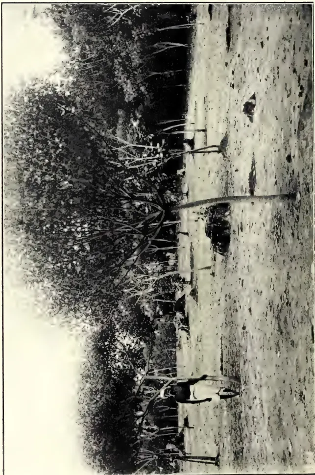
A black and white photograph showing a man riding a horse in an open, grassy field. The horse is dark-colored and appears to be in motion. The rider is wearing a light-colored shirt and dark trousers. In the background, there is a dense line of trees, some of which are bare, suggesting a dry season or a specific type of tree. The ground is uneven and appears to be covered in dry grass or low vegetation. The overall scene is captured in a wide-angle shot, emphasizing the open space of the field.Photo by H. F. Macmillan.
MANIHOT DICHOTOMA ON THE EXPERIMENT STATION, PERADENIYA.
MAY, 1909.]411[Paper read before the Board of Agriculture on April 7, 1909.]
A good deal of information has appeared during the past year in the "Tropical Agriculturist" and elsewhere concerning certain novel varieties of Manihot, the genus to which Ceara Rubber belongs. The reports so far received as to the growth and yield of these rubber trees in their native country are so remarkably promising that little or no apology seems required for an attempt to put briefly before you a summary of what is known at present about these new and interesting species.
The first piece of information with regard to these species to be received at Peradeniya came in the form of a circular from Messrs. Vilmorin, Andrieux & Co., the great firm of seedsmen in Paris, dated February 15, 1907. In this circular a price was quoted for a large-seeded species of Manihot—name unknown—which was stated to be superior in many respects to the Manihot glaziovii or Ceara Rubber. An order for 1,000 seeds of this species was at once despatched by Dr. Willis, but owing to the failure of Messrs. Vilmorin's supplies the order was not executed until last year. The seeds were received in August, 1908, and 500 were sown on the Experiment Station, Peradeniya, on the 12th of the month. 280 of these seeds germinated and developed into strong seedlings. They were planted out 12 by 12 feet apart in December, and, in spite of bad weather for planting, they are all doing remarkably well owing to special precautions taken at the advice of Mr. Kelway Bamber.
At Kew, according to a recent bulletin, the first account of the new rubber plants was received in March, 1906, when Mr. J. A. Davy, a Brazilian planter, called at the Royal Gardens and left seeds of the Jequié Manihot or Manicobar, the plant to which the name Manihot dichotoma has subsequently been given. A large consignment of the same seeds was sent to Kew in October, 1906, by Mr. J. P. Rowe of Bahia, and from these plants were raised for distribution and sent out from Kew in Wardian cases on May 23, 1907.
A case containing 100 of these plants reached Ceylon in excellent condition.
They were at first put out in a nursery and were finally planted out on October 8, 1907, on level ground 20 by 20 feet apart. Some of these plants have made excellent growth. The twelve largest averaged 3 inches in girth, 3 feet from the ground in May, 1908, and 6 to 7 inches in November, 1908. Some months ago these trees began to produce seeds, of which a small number has been distributed. It is, of course, too early as yet to begin any experiments in tapping the trees, but the drop of latex obtained on pricking the stem appears to be decidedly rich in rubber.
A further large supply of Manicobar seeds was received from Kew in October, 1908. These included, in addition to the Jequié Manicobar, Manihot dichotoma, already mentioned, a second kind, the Rémano Manicobar or Maninot piauhyensis, which is said to be superior to the former in many respects. 2,000 seeds of each species were sown at Peradeniya on November 2, 1908, whilst others have been planted at Maha Iluppalama, Henaratgoda, and elsewhere. Out of 200 seeds of the Dichotoma sown at Henaratgoda, practically all germinated, so that there is every promise that the Department will soon be in possession of a good supply of plants. At Peradeniya the germination was not so good, and only a very few plants of the Rémano variety have appeared.
The three species of Manicobar which have been botanically described—Manihot dichotoma, M. piauhyensis, and a third M. heptaphylla, seed of which we have not yet succeeded in obtaining in Ceylon—occur wild in the Provinces of Bahia and Piauhy in Brazil in latitudes ranging from 8 to 15 degrees South. So far much the fullest account of these plants in their native country is that given by Dr. Ule in the "Tropenpflanzer" for December, 1907, a translation of which appeared in the "Tropical Agriculturist" for March, 1908. From this account it appears that these species grow naturally in a much drier and more mountainous country than the Para Rubber (Hevea brasiliensis).
"Here Manihot dichotoma grows in the true Catinga forest, and is especially abundant on the mountain spurs. The more park-like regions where individual trees stand scattered is avoided by M. dichotoma, which prefers a rather more thickly wooded country. It de-
Gums, Resins,412[MAY, 1909.velops best on a red loamy soil, and is less frequently to be found on a sandy substratum. Within a few miles of Porto Alegre on the Rio das Contas, a central station for the production of rubber from this species of Manihot, I have seen the mountain spurs so thickly covered with this tree that it made up almost half the total forest." (Ule.)
For an account of the methods employed in tapping these trees in a wild state, and of the yield so obtainable, reference may be made to the above-mentioned translation of Dr. Ule's paper. We are now more directly concerned with the value of Manicobar rubber as a cultivated product when planted on estates. Dr. Ule gives it as his opinion that the wild thickets of Manihot dichotoma will very soon cease to have any value as a source of rubber. The export of rubber from the State of Bahia is said to have increased more than ten-fold between the years 1900 and 1906, that is to say, from 100 tons to over 1,100 tons, but very little of this was from plantations. Recently, however, large areas in this district appear to have been planted up with these Manicobars, and from the accounts given by Ule and others the success of these undertakings seems to be assured."
It appears from the "Agricultural News" of October 17, 1908, that this export fell off somewhat in 1907. This result is probably to be ascribed to general trade depression and not to any failure in the estate product. It is also possible that the collection of wild rubber may fall off more rapidly than can be made up for by the increase in estate produce.
The recognized distance for planting in Brazil would appear to be at the rate of 1,000 trees per acre, that is to say, 6 or 7 feet apart, and Dr. Ule speaks of yields of a ton of rubber per acre from such plantations. The "Kew Bulletin" quotes Mr. Rowe, a resident of the country, to the following effect:—"Our plantations are mostly formed of young seedlings taken from the forest, which contain vast numbers. They are transplanted 1,000 to the acre, and they do not appear to be too crowded. The transplantation causes no apparent set back, and the close planting has a good effect in keeping down the scrub and undergrowth. At three years old cultivated trees have yielded 7 ounces of rubber on the average." As regards price, Mr. O'Sullivan Beare, H. B. M. Consul at Bahia, reported in 1907 that a planter established in the Jequie District prepared a considerable quantity of rubber obtained from Manicobar trees
growing wild in the neighbourhood and despatched it to New York. The consignment was classified in the New York Market as being equal to the best Para Rubber, and fetched 5s. a pound.
The following advantages are claimed by Messrs. Vilmorin for the new rubbers as compared with ordinary Ceara.
The latex is not so thick; it coagulates less rapidly, and is therefore easier to deal with; it yields a rubber of much higher quality.
Secondly, it contains a much larger proportion of pure dry rubber.
Lastly, the yield is greater. Whereas the raw rubbers of Ceara and Piauhy give only 60 to 67 per cent. of pure caoutchouc, the proportion obtained from Manihot dichotoma varies from 70 to 92 per cent. These figures do not, of course, refer to plantation rubbers.
It is possible that some of the statements which we have quoted in the above notes may be of a more or less Utopian character. Still the opinion of Dr. Ule and of Messrs. Vilmorin is largely confirmed by the independent authorities quoted in the "Kew Bulletin," and it seems clear that the new rubbers are worthy of an extensive trial in the drier districts of Ceylon. The choice of one or the other of the three species which have been described will probably depend for the present upon the supply of seed. Of Manihot heptaphylla, which Dr. Ule seems to regard as somewhat the best of the three, no seed is at present available. Of the two remaining species, M. dichotoma is said to be the better for planting on a heavy clay soil and M. piauhyensia for light sandy soils. On the other hand, it must be pointed out that M. dichotoma is growing well at Parendiya on land which cannot possibly be called a heavy clay.
Manihot dichotoma germinates most easily of the three, and it appears to be quite unnecessary to file the seeds of this species before planting. Dr. Ule also states that the rubber from this species fetches a higher price than that from either of the others. On the other hand, he states that the yield from the two remaining species is decidedly greater. In the most recent article seen (by a Bahian planter in the "Journal d'Agriculture Tropicale"), M. dichotoma is regarded as decidedly the best of the three species. On the whole, the conclusion seems to be that any one of the three is very well worth a trial.
Except possibly on land like that under the tanks of the North-Central Province, which is readily capable of machine
MAY, 1909.]413Saps and Exudations.cultivation, close planting at 8 by 8 feet, or even less, is to be recommended. A reservation may also be made in the case of the first few acres of land planted, where it may be worth while to give the trees plenty of room in order to encourage the production of seed at an early age. But if our own experience of trees flowering at one year old is repeated, there should be no lack of seed in a few years' time. Having trees at Peradeniya with more than a year's start of the rest of Ceylon, it is perhaps legitimate for us to entertain the hope that suitable methods of tapping the trees and of preparing the rubber may be worked out there by the time the crop begins to be at all widely established.
R. H. L.
FURTHER EXTRACTS FROM THE
REPORT OF THE DIRECTOR
OF AGRICULTURE FOR
THE F.M.S. FOR 1907.
THE YIELDS OF DRY RUBBER PER TREE.
The average amount of dry rubber over the whole Peninsula is 1 lb. 12 oz. per tapped tree, exactly the same figure as was recorded for last year. This is most encouraging, as the number of trees which are being tapped for the first time far exceeds those already tapped, especially in Selangore, where the average is 1 lb. 7. oz. per tapped tree.
Experiments are being carried on in various parts of the Peninsula: Perak, Selangore and Negri Sembilan, in regard to yields of comparatively old trees which have not previously been tapped. In Krian these experiments have been carried out for nearly four months, only half the tappable area of the trees being used and space being left so that more than three years will elapse, with continuous tapping every other day, before the healed surface will be again reached. The figures for one year will be published in next year's report, but as far as they have gone the yields average more than 2 lbs. per mensem per tree. The trees are planted widely apart round the edges of a graveyard and are about 17 years old.
There is as yet not sufficient evidence as to what yields may fairly be expected over large areas of trees from 10 to 20 years old, but all the data which we have at present points to the fact that estimates or prophecies of probable yields at these ages will be amply confirmed.
COMPARATIVE TABLES OF RUBBER
CROPS, MALAYA, 1906 AND 1907.
| State. | No. of trees tapped. | |
|---|---|---|
| 1906. | 1907. | |
| Selangore ... | 364,638 | 772,656 |
| Perak ... | 67,710 | 132,556 |
| Negri Sembilan ... | 91,410 | 240,401 |
| Pahang ... | — | — |
| Malacca ... | *7,000 | 12,455 |
| Province Wellesly ... | 20,076 | 48,000 |
| Johore ... | 48,350 | 94,159 |
| Total... | 599,184 | 1,300,227 |
| State. | Rubber yields lbs. | Average yield per tree. | ||
|---|---|---|---|---|
| 1906. | 1907. | 1907. | ||
| lbs. | lbs. | lbs. | oz. | |
| Selangore ... | 620,033 | 1,131,086 | 1 | 7½ |
| Perak ... | 94,848 | 272,804 | 2 | 1 |
| Negri Sembilan ... | 146,891 | 586,864 | 2 | 7 |
| Pahang ... | — | — | — | — |
| Malacca ... | *12,000 | 23,490 | 1 | 14 |
| Province Wellesly ... | *13,560 | 82,131 | 1 | 11 |
| Johore ... | 47,724 | 182,495 | 1 | 15 |
| Total... | 935,056 | 2,278,870 | 1 | 12 |
In Province is included one estate in Singapore, one estate in Penang, and one in Kedah.
MARKET PRICES AND THEIR EFFECTS.
Various circumstances during 1907 led to a decrease in the extraordinary rapidity with which land was acquired, cleared and planted in rubber. In some cases, lack of the necessary superintendence and labour for opening land stopped work, in others a gradual increase of the cost of bringing an estate into bearing, and the fact that this increase had led to the cost of opening and planting in some estates being greater than had been estimated hindered plans for future clearings.
The steady drop in the price of rubber, especially during the last half of the year, had the effect of making capitalist abate the feverish anxiety to get as many acres planted up as quickly as possible and to some extent regardless of cost.
These circumstances did not reduce the investor's confidence in the profit-earning possibilities of plantation rubber as the share prices of Malayan Companies showed, but the visions of Eldorado assumed more natural tints and led to a careful consideration of the most eco-
* These figures are approximate.
Gums, Resins,414[MAY, 1909.nomic and improved methods in the cultivation of rubber.
The industry is still yielding exceptionally handsome profits, and such questions should be considered and experimented without delay. Recent history has shown us that in the case of other tropical agricultural industries the desire to practise the most approved methods of cultivation, and the cheapest way in which to carry them out, came only with a drop in profits. Cultivated rubber in Malaya pays a handsome profit on money invested, but that seems to be no reason for not being constantly on the look-out to find in various directions methods of saving in cost of production and improved cultivation.
To carry on a rubber estate or any other agricultural enterprise for a number of years, paying large profits, but without any alteration in the management of the estate, the details of cultivation or the preparation of the product for the market, must be considered as curious and discreditable, since it shows that experience and knowledge has in no way helped to improve methods or economic working.
The rubber market was in common with all other trade affected to a large extent by the financial trouble in America. It is the custom of manufacturers to keep in stock sufficient unvulcanised pure rubber for six months' operations, it is therefore possible for them to continue to work for some time without purchasing new stocks. The stock in England and in Germany was consequently increased and the price very greatly affected. At the beginning of the year plantation rubber was sold at 5s. 9d., which quickly dropped to 5s., recovering in July, but after that time dropping, quickly and steadily, till in November, the lowest price then recorded for best plantation rubber before, viz., 3s. 4d., was reached, being a drop of 100 per cent. from the price of 18 months previously. That this drop in prices was to a very large extent due to a financial and not to ordinary "supply and demand" causes is admitted by those who have largest experience of the fluctuations of market prices. The price will recover and probably vacillate about 4s. It is satisfactory to remember that even the lowest price yet reached for plantation rubber is more than 100 per cent. above the cost of production.
The fear of over-production which bulked very large a year or more ago has, owing to more accurate knowledge
of the world's demand for rubber and the amount produced, to some extent subsided.
The drop in prices, while having the effect of reducing the amount of rubber planted, may also to a great extent reduce the output from Brazil, where the margin of profit is much less than in cultivated rubber.
This also should lead not only to a consideration of cheapening of methods of production, but to the possibilities of increasing the demand for rubber. No product lends itself more to measures for improving and widening the market. The almost endless possibilities to the economic uses of rubber, and the small proportion of the purchasing population of the world which at present knows and uses rubber, both demonstrate the fact that measures taken to provide new outlets for rubber are much more hopeful than in the case of food or textile products like coffee or copra, which have a comparatively limited number of uses.
It is not to the interests of cultivated rubber that the output of the Brazilian product should decrease very rapidly. There is not yet sufficient cultivated rubber or wild rubber from other sources to supply the increasing demand.
Those who look forward to a future with immense areas of cultivated rubber in suitable climates, of which the Malaya Peninsula can claim to be the best, believe that cultivated rubber will in time satisfy all manufacturers in regard to its physical qualities and will be produced in sufficient quantity to meet the world's requirements.
It is not easy to foresee the future demands for rubber, but a substance which has made itself so indispensable to all civilised races must be required in increasing quantities, and the fear of over-production may be cancelled, by the quite as likely possibility of the supply not meeting the demand and the consequent resort to other substances as substitutes for rubber.
The question of what are termed "rubber substitutes" has been much discussed, and various scares of important discoveries have made the flesh of those interested in rubber creep. That various substances can be used instead for rubber for various purposes is acknowledged, just as cotton can be used for silk, or paper for cotton, but that is a different question to the production of a substitute for rubber which will possess the physical properties of rubber to which all its commercial value is due. In this direction the year
MAY, 1909.]415Saps and Exudations.1907 had nothing to show, and December, 1907, was no nearer than December, 1906, to the practical solution of the problem which would produce a great rival to plantation rubber. Chemists and those best able to judge of the possibilities of the discovery of a substance having all the physical properties of India rubber made from crude materials of so cheap a nature as to be able to undersell the natural article, cannot foresee success, and all so-called perfect substitutes for rubber brought before the public have failed to survive investigation.
One satisfactory effect of the drop in prices has been a serious tendency to consider whether the present methods of opening and keeping up an estate could not be modified so as to save expense.
In every industry profits very large in relation to the cost of production have a tendency to produce a perhaps too liberal treatment of expenditure, and in rubber this is the case, compared with the practice in the tea and coffee industries in Ceylon and Southern India.
Rapid planting of healthy vigorous trees was the object aimed at, even if this was achieved at a larger cost per acre than slow and less expensive methods might have incurred.
The health of rubber trees has remained good during the year. No new disease has to be chronicled, and the diseases which were already known have shown no special activity. Both the root fungus (Bomes semitostus) and the rubber termite (Termite gestroi) have done a large amount of damage. The Government Entomologist carried on a most successful investigation into the life-history of the rubber termite, discovering many details of its methods of attack, a knowledge of which will enable the planter to carry on a much more successful campaign in the future. It is much to be hoped, considering the immense monetary loss caused by this ubiquitous pest, that these investigations will soon be continued and completed. The interim report which he has published shows among other interesting facts that the planters' methods of only dealing with the white ants when he finds them on a rubber tree are not the most strategic measures of attack. The rubber termite is found in large quantities in decaying stumps, and it is in these places that they can be destroyed in large numbers, whereas there are ants differing very slightly in appearance which are found
on rubber trees which do no damage to the living rubber tree.
The nests and their characteristic connecting tunnels are clearly described by Mr. Pratt, and the planter is thus enabled with more definite knowledge to carry on the war against this most insidious and ever-present menace to healthy rubber.
In addition to this valuable piece of work, the Government Entomologist investigated and reported on an attack by a longicorn beetle on rubber, a stingling caterpillar (Thosea sp.) on coconuts, and made an examination of some paddy insects which he was unable to follow up so as to gain definite knowledge as to the life histories and methods of attack of these pests.
The Government Mycologist has visited various estates and given advice as to the prevention and cure of various diseases of cultivated plants.
The number of estates which have trees of sufficient growth for tapping is as yet not very many, but each year more become productive, and the question of the best and most economical machinery for preparing rubber for the market and for cleaning "scrap," "bark" and "earth" rubber is one of the most important in the profitable working of an estate.
Dr. Kuhleman, Chemical Adviser to one of the largest rubber manufactories in Germany, paid a visit recently to this country to acquaint himself with the methods of the planter in his preparation of rubber. He was impressed by the care which is universally taken to ensure the purity and cleanliness of the rubber sent home.
In asking his advice upon the plant used by the planter, Dr. Kuhleman informed me that one point which he noted was that the washers and rollers in use on estates were so short in length. This was the case in the beginning of the manufactories in Germany. Machines with narrow rollers were at first put up, and then when these could not deal with the amount of rubber required more were added, but it was soon found more economical to have one roller of 10 feet length than five of 2 feet. It will be well that planters should, in making arrangements for their rollers and washers, look ahead to the time when they are producing much larger quantities of rubber than at present. The machines at present in use are, for dealing with a large quantity of rubber, mere toys, and will either have to be multiplied or larger machines put in.
Gums, Resins,416[MAY, 1900.The longer roller has an advantage over the short ones at present in use that the risk of oil from the bearing reaching the rubber as it passes through the rollers is decreased. Rubber prepared in a number of small-length machines will be in more danger of being discoloured at places than that prepared in fewer and longer rollers.
The length of rollers in rubber-washing machines used in factories in Europe is often 12 feet, whereas, as a rule, on estates in the Federated Malaya States two or more rollers of not more than a foot in length are often used.
Block rubber, the advantages of which for packing, transport and preparation are undoubted, has not commended itself generally to the planter. Until large quantities of any of the forms of rubber produced in Malaya, viz., block, crepe, and sheet, are put on the market, it will not be possible to settle the much- vexed question as to the advantages of each. A sale at a high price of a shipment of any of these forms at once produces the impression that that special form is more attractive to buyers and will command better prices, but it should be remembered that the quality of the rubber as well as the shape in which it is sent is a factor, and the most important factor, in determining its market value. In whatever form it is sent it is of the most vital importance that planters should continue to aim at the purest and cleanest rubber. The manufacturers have begun to realise the advantages of the freedom from impurities which Eastern plantation rubber possesses, and this good opinion is too valuable to be endangered by using less care in preparation.
Rubber seed, both with the husk on and decorticated, has been sent to the Imperial Institute and to various commercial firms dealing in such products in Europe and Australia in order to introduce this article to them with a view to a future market.
The oil from the seed is a drying oil not unlike linseed oil in appearance and smell, and probably will prove as good, as, if not better than, the latter oil in manufacture of paints and varnishes. Manufacturers or dealers wishing to have samples of the seeds either decorticated or in the shell should communicate with this department. A profit per acre—after paying all expenses of picking, husking, packing and shipping—of at least $5 to $8 may be earned on estates with trees in full fruit bearing.
While the demand for considerable quantities of seed for planting purposes continues, this method of disposing of seed is very much more profitable than the sale for oil, but with an immense number of trees producing fruit the supply for planting purposes will soon greatly exceed the demand and an additional market is needed. If the seed are left on the ground they germinate freely, and money must be spent in weeding out the young plants.
The question in regard to the best methods of preparation and packing of the seed in exporting it for oil purposes continues to engage the attention of the Department of Agriculture, and a further report will be issued.
J. B. CARRUTHERS.
Address by Dr. Wilcox at the Hawaiian Rubber Growers' Association, Second Annual Meeting.
The rubber experiments which are being carried on by the U. S. Experiment Station and Territorial Board of Agriculture and Forestry have been under way long enough to indicate certain results which are of practical importance to rubber growers. Thus far more than 200 trees, most of them less than three years old, have been tapped. These trees averaged from twelve to thirteen inches in circumference and were located chiefly on the grounds of the Koclau Rubber Company, on Maui. In tapping young trees it was not expected that profitable returns of rubber would be obtained; but the plan involved the practical point of determining the rapidity with which trees could be tapped, and satisfactory methods of handling labour to the best advantage. In the first series of eighty trees, which were tapped by means of one verticle cut each day, it required thirty-six hours and forty minutes of labour to tap the trees, collect the latex, and secure pounds of dry rubber. In the second series of experiments on 180 trees, which were tapped with two verticle cuts instead of one, it required only forty hours of labour to tap the trees, collect the latex and obtain five pounds of first-class rubber and about a pound of scrap rubber. In this experiment in which two verticle cuts were used daily, profitable returns were obtained.
It was found that an ordinary labourer could tap rubber trees, by means of two long verticle cuts, at the rate of about fifty trees an hour and could collect latex at the rate of one hundred trees
[MAY, 1909.417Saps and Exudations.an hour. The available labour on plantations appear to be reasonably effective in doing this work, and the amount of training required in order to make the cuts effectively and quickly is not excessive.
It requires less time to tap older trees than the young trees, upon which our work is done, and there is also less danger of injuring the trees. We have found that a good flow of latex can be obtained from tapping done from daylight until 8 a.m. or even later.
From the experiments which we have thus far conducted it appears that one man can tap about fifty trees per hour, while another man can collect the latex from the trees which would be tapped in the same time by two men. Since it appears from results which we have obtained from tapping mature Ceara rubber trees, that about one-third ounce of dry rubber may be expected as a daily yield, it is evident
that three men should be able to obtain rubber from mature trees at the rate of about one pound per hour. The data upon which this conclusion is based have been carefully considered and the estimate is probably not above what may be expected. At any rate, the results obtained in our experiments indicate clearly that the Ceara rubber tree in Hawaii will not only grow and thrive, but will yield profitable returns.
Further experiments will be carried on in the microscopic examination of sections of the Ceara rubber tree to get a basis for determining the best method of tapping. Several other species of rubber trees will also be tapped, and an elaborate series of fertilizer experiments with rubber is planned. We hope to be able to devise a method of fertilizing rubber trees so as to secure an increased flow of latex during the tapping periods.—Hawaiian Forester and Agriculturist. Vol. V., No. 12, December, 1908.
BY W. F. SUTHERST, PH.D., F.I.C.,
Marist Bros.' College, Uitenhage.
The cultivation of sunflowers does not pay in countries where land is dear and consequently growth restricted, but here in South Africa, where millions of acres of land are still lying idle, there is no doubt that it would pay. The introduction of a new crop would also mean fresh employment for the surplus country population, as without moderate export of agricultural produce, over-production of maize, oats, etc., is soon reached. Not only the cultivation itself needs labour, but the after-treatment for the production of oil would also utilise some of our unemployed. Most of our agricultural produce when grown requires no further treatment. Very little care is necessary in sowing the seeds, mere scattering them over the newly-ploughed ground being all that is required, the depth, as fixed by the plough, never being too great in this case. At the end of about six or even four months the crop is ready for harvesting. For opening up new ground with the least trouble and quickest returns its cultivation is ideal for the Colony, as with the cash obtained one can open up more ground.
The seeds contain about 50 per cent. of oil, i.e., without husk, and it would save enormously if the seeds were first decorticated, as the husks contain practically no oil, and making up about 40 per cent. of the whole, a great saving in carriage is effected, as well as in the further treatment of oil extraction. The residual oil-cake is most nutritious for all kinds of stock, especially dairy cows and fattening stock. Little is heard of it at present, as it is manufactured in such small quantities, but once started there is no limit to its uses. So far very small quantities of oil-cake are used in South Africa, as it has all to be imported, and the cost is prohibitive, except for owners of high-class stock.
The composition of sunflower-seed cake on the average is:—
| Fat | ... | ... | 10 | per cent. |
| Albuminoids | ... | ... | 20 | „ |
| Carbohydrates | ... | ... | 32 | „ |
| Fibre | ... | ... | 20 | „ |
| Ash | ... | ... | 6 | „ |
If the seeds cannot be pressed on the farm, arrangements should be made for the cake to be sent back to the farmer for use on the farm, such as is done on the beet sugar factories, where the residues are returned, though these are not nearly so nutritious. By far the best plan would be for farmers to co-operate and set up an oil crushing mill of their own.
Oils and Fats.418[MAY, 1909.]The stalks of sunflowers, though not in themselves very nutritious, are obtained in such large quantities that it pays to make them into ensilage. Their average composition is as follows:—
| Fat | ... | ... | 2.5 | per cent. |
| Albuminoids | ... | ... | 4.75 | " |
| Carbohydrates | ... | ... | 54 | " |
| Fibre | ... | ... | 28 | " |
| Ash | ... | ... | 11 | " |
The high percentage of ash in the stalks makes all the more value in the manure, even if only ploughed in, though this is rather difficult with such large and strong material. The composition of an average ash is as follows:—
| Phosphoric acid | ... | 0.22 | per cent. |
| Potash | ... | 4.4 | " |
| Lime | ... | 1.2 | " |
We see here a low percentage of phosphoric acid and lime, in which our soils are also deficient, and the growth of a crop succeeds best and most economically when it can be arranged that it takes out of the soil its mineral matter in proportion as it is present, a better crop could not be found for the country. This is, however, a state of scientific farming that is not likely to be reached for some time to come.
The average yield of seeds is about 4 tons per morgan, which means about tons of decorticated seed, and with, say, about 40 per cent. of oil extracted, gives nearly one ton or over 200 gallons of oil per morgan.
We see here room for a fairly large profit if an economically-worked factory is set up, or even if exported the seeds should pay their way.
We often hear that the sunflower robs the soil and leaves it in a poor condition, but if all the crop is returned to the soil again, except the oil, which contains no mineral matter, as would be the case under the above conditions, no loss would occur.—Agricultural Journal of the Cape of Good Hope, January, 1909.
The well-known Oil Palm of West Africa (Elæis guineensis) has a wide geographical range, for it flourishes from the Gulf of Guinea to the South of Fernando Po, as well as in the islands of Zanzibar and Pemba, and along the shores of the Central African lakes. Of all the vegetable products of the countries on the West Coast, the Elæis guineensis is undoubtedly the most important to the native. The fruit supplies him with a favourite article of food and forms the chief article of commerce; with the leaf-
stalk he builds his house and barn, and thatches them with leaves, and from the stem he extracts a pleasant and (sometimes) intoxicating drink.
During 1907, the total value of the palm oil and kernels exported from Southern Nigeria alone was £2,972,252. In the same year the oil and kernels shipped from the Gold Coast were valued at nearly £221,290, this being an increase of over £15,000 on the exports of the preceding year. Supplies of palm oil have also lately been exported from the Philippine Islands.
In all the abovementioned countries from which the produce is shipped, the oil palm is indigenous and occurs naturally over enormous areas. Little expense is incurred in looking after the trees, and the oil must be regarded as more or less a natural forest product. No authentic information has been placed on record in regard to any systematic planting and cultivation of the oil palm which may have been made in Southern Nigeria or elsewhere, or to the average returns that may be expected from such plantings.
It seems reasonable to expect, however, that if plantations of the palm were established in many tropical colonies, the production of the oil would prove a valuable industry. It would be a matter for experiment to determine whether the cultivation would be as remunerative in any given district as rubber or cacao planting. Some thirty or forty years ago an estate owner in British North Borneo, who had considerable faith in the profitable possibilities of oil palm cultivation, planted a fairly large area. The trees grew well, but by the time they were nearing the productive age, the ownership of the estate changed hands, and the new proprietor cut down the young palms in order to make room for some other product.
The African Oil Palm has been acclimatised in Jamaica and some of the other West Indian Islands, where groups of the trees are frequently to be met with. Little or no use, however, is apparently made of the nuts, and, so far as is known, no attempt has ever been made to cultivate the palm in regular plantations.
The oil palm reaches a height of 30 or more feet. In the course of a report on the oil industry of the Gold Coast which appeared in the Kew Bulletin for 1889 (p. 190) it is stated that the tree grows best in a moist soil, flourishing in warm damp valleys. It begins to bear in its fourth or fifth year, the produce increasing until its fifteenth, and continues to bear for at least sixty years.
MAY, 1909.]419Oils and Fats.A tree produces, on the average, from four to seven bunches of fruit every year.
The fruits have a fleshy fibrous outer layer from which the palm oil of commerce is prepared. This layer covers a hard-shelled nut from the kernel of which a white oil known as 'palm nut oil' is produced.
A very full and illustrated account of the methods in use at Lagos for extracting palm oil appeared in the Kew Bulletin, 1892, (p. 200). From this it appears that the fruits are boiled in earthenware pots until they form an oily mass. This is transferred to a wooden trough where it is left over night to cool. In the morning the mass is covered with cold water, and the natives pound the oil out of the nuts with their bare feet. The oil gradually rises to the surface, from which it is skimmed, and passed through a sieve to remove the coarser impurities. It is then poured into a pot and clarified by further boiling. This palm oil is chiefly used in the manufacture of soap and candles.
The kernels of the nuts from which the white oil is prepared, are frequently exported whole to Europe, after the shell has been removed by the natives. The 'kernel oil' is expressed by hydraulic presses, and has a number of uses, one of which is in the manufacture of margarine or artificial butter. The resulting cake is used as a cattle food.
According to the Kew Bulletin a single tree may yield from 1 to 3 gallons of oil per annum, depending on the character of the soil and the rainfall. The price of palm oil on the London market is from £14 to £15 per ton.
If fuller and reliable data could be obtained from Southern Nigeria on such points as suitable distance in planting, the time and money required to bring a plantation of oil palms into full bearing, the average yield of nuts per tree, and of oil per acre, together with the net profit that might be expected per acre over a given period, these details would be of the utmost value to enterprising planters in other tropical colonies who may be thinking of taking up the cultivation.—Agricultural News, Vol. VII., No. 172, November, 1908.
BY A. F. BYARS,
Agricultural Inspector, Bureau of Agriculture.
In the rich Provinces of Laguna and Tayabas the coconut industry can be seen in every stage and from every aspect. The beautiful panoramic view
be obtained from Mount Banajao of the vast coconut regions as a whole, extending from the mountain to the lake in one direction and to the sea in another, is most impressive.
San Pablo, the largest and richest in agricultural products of all the towns in Laguna Province and the centre of the coconut industry, is a town of about 25,000 inhabitants. It lies along the main road leading from Los Baños and Bay on the lake to Tiaong and Lucena in Tayabas, also on the main road from Santa Cruz to Magdalena, Lilio, and Nagerlan, and on the other side through Alminos on into Batangas. As a rule these roads are very good and facilitate trade. The ownership of the coconut groves, from which the town derives most of its wealth, is distributed among a comparatively large number of its inhabitants, so that while none of the people are very rich, none are very poor.
In this town a large part of the coconut crop is made into copra, which is sacked and sold in that form. Any day hundreds of pack horses loaded with copra may be seen coming from all directions into the town, where it is usually sold to dealers, who in turn load it on carabao carts (eight to ten sacks to a cart) and send it to Bay, where it is transferred to boats for Manila.
Coconuts are not harvested at stated seasons, but are gathered from each tree every two to four months. The nuts are detached by means of a hooked knife attached to a very long slender bamboo pole, or by a man who climbs the tree and cuts the fruit stalks with a sharp knife. The nuts are collected in piles and are sometimes husked before being removed from the groves. They are carried to the small factories by means of carts or sleds, or by pack horses in the hill country. Often they are floated down rivers and small streams in the form of rafts, but this is rather a dangerous means of transportation, as was shown by a late baguio in Laguna which broke up numbers of rafts in Pagsanjan River, it being estimated by some that from 100,000 to 200,000 nuts were scattered over Laguna de Bay.
The process of making copra in this section is very simple. It consists in husking and halving the nuts and drying, after which the meat is removed from the shells. They are husked by means of a pointed iron instrument, usually a plowpoint fixed on a three-legged stand. After it is hulled, a quick blow with a dull bolo halves the nut. For drying
Oils and Fats.4203[MAY, 1909.]the copra, a small shelter is built over a rectangular hole from 1 to 2 meters wide, 1 meter deep, and as long as the shed, across which small poles are laid parallel, leaving a small space between each two. On these poles are piled the halved nuts, which are dried in about two days by the heat and smoke from the fire in the hole. Empty shells are used as fuel.
The dried meat, or copra, is then easily removed from the shells by means of a thin, chisel-shaped, curved knife projecting in front of a seat. After a little further drying the copra is ready for sacking and putting on the market. These small copra factories can be found scattered all about in the coconut groves of Laguna and Tayabas.
During the past two months most of the coconut crop of Laguna has been marketed in the form of oil, especially in the hill country. Of course the small native factories are crude and a large per cent. of the oil is left in the cake, but at the prices now being paid oil brings better returns than copra.
Where the oil is extracted in the grove there is no necessity for drying the meat; it is simply grated from the halves by a native machine with small rotary knives. This grated meat is put in open shallow iron pots and cooked. The resulting white mash is dipped into sacks and placed in a vertical press made of two large thick boards and a large wooden screw. The mash is often cooked twice and pressed several times, being milled or crushed beneath a weighted swinging roller before pressing. The white, milky mixture of oil, water, etc., which drips from the sacks is returned to the cooking pan and boiled until all the oil separates and rises to the top, when it is dipped off into five-gallon petroleum tins, and is then ready for market.
While copra and oil are the chief products of the coconut industry, a considerable number of the groves of Laguna and Tayabas are devoted to the making of tuba and alcoholic beverages. Distilleries can be found in the valleys or on the hillsides where water may be had to run through the commencing tanks by gravity. The Government has an internal-revenue employee stationed at each of these "alumibkis" as they are called, to collect revenue and see that they are run according to law.
Tuba is collected from the trees through the flower stalk. The many small branches are bound together, their
tips cut off with a sharp knife, and the end of the bunch inserted in a section of bamboo tube, which catches the juice. Early each morning a tuba gatherer climbs the tree, empties the tubes into a larger vessel, and cuts a little more off the ends of the flower stalks. Two strong bamboo poles bridge the distance between the tops of the trees, and the tuba gatherer passes from one tree to another, walking on one pole and holding to the other. When the receptacle becomes full of tuba he lowers it to the ground with a rope, and after it is emptied he pulls it up again. After the tuba is collected it is carried in three- or four-gallon vessels to the distillery on pack horses or by carriers.
The purpose of the writer's visit to Laguna and Tayabas was the inspection of these provinces with a view to eradicating the bacterial disease known as "bud-rot of the coconut." The name bud-rot comes from its habit of attacking those portions of the tree which are in the tender or bud stage. The flowers are most liable to attack during the bursting of the flower sheath. Other tender portions of the apex are subject to attack at any period, but more particularly during the rainy season. The presence of the disease is indicated by the young leaves turning yellow and also by the dropping of the fruit. The decaying bud gives off a very offensive odour, by which the disease may be readily recognized.
After the disease has made sufficient progress to destroy or partially destroy the "cabbage" there is no hope of saving the tree. If the disease can be detected in any early stage of development, it can be checked by the use of fungicides, such as sulphate of copper, but the only practical means of combating it in these Islands is to cut the tree down and destroy it by fire as soon as the presence of the disease is detected. Owing to the fact that the disease spreads readily by the aid of the wind, insects, etc., it is well to destroy all portions of the tree by burning, if possible.
The disease is found to be most prevalent around the base of Mount Banajao in the municipalities of Negarlan, Lilio, and San Pablo. More than 2,000 trees have been destroyed in one of the barrios of Negarlan. It is claimed by some of the inhabitants that the disease has existed in this town for
MAY, 1909.]421Oils and Fats.the last ten years. It is probable that the moist atmosphere, due to the proximity of the mountain, has contributed largely to its presence in this vicinity. A few cases have also been found in the towns of Pagsanjan, Santa Cruz, and Pilar. The damage done in these towns, however, has been small.
While all the trees showing symptoms of disease at the time of inspection were destroyed, it is quite probable that others have been infected by means of wind or insects carrying the bacteria and will develop the disease later. Presidents of municipalities, lieutenants of barrios (some in the most remote and out-of-the-way places), and the owners of the groves have been instructed as to the nature and manner of exterminating this disease, and all should co-operate to keep it out. If reasonable measures are taken to suppress it, the disease will not prove serious.
The insect enemy which has up to the present time caused more loss to coconut owners in Laguna and Tayabas than all the other destructive agents combined is the "uang," or rhinoceros beetle (Oryctes rhinoceros). This insect attacks the most vital part of the tree, the bud, boring through and feeding on the young tender "cabbage." The coconut being endogenous, the destruction of this part means death to the tree. Thousands of trees are killed by this insect, but as yet no really practicable method has been discovered for destroying it.
Various methods are used with greater or less success. The beetles may be extracted from their holes by means of a hooked wire. Pouring 5 to 10 cubic centimetres of carbon bisulphide into the holes and filling the opening with mud will kill them. Sharp-cornered sand sprinkled between the base of the leaves and the bud will make it very disagreeable for them to enter at this point. No thoroughly practical remedy has been found for the beetles when once in the tree, but their ravages can be largely reduced by cleaning the groves of all dead trees, undergrowth, and rubbish.
No doubt any information as to the cost of production will be of great value to the prospective investor in coconuts. The following figures have been computed from data collected by questioning dozens of coconut growers in Laguna and Tayabas Provinces:—
| Cost per 1,000 nuts. |
|
|---|---|
| Cutting down from trees | ...P1.00—P1.20 |
| Collecting in piles | ... .24 |
| Husking | ... .60—1.00 |
| Halving | ... .20 |
| Drying (copra) | ... 2.50 |
| Grinding meat (oil) | ... 1.00 |
| Present value per 1,000 nuts— | |
|---|---|
| As nuts | ...P12.00—P15.00 |
| In oil | ... 20.00 |
| As copra | ... 17.33 |
| Average value of 1 hectare of coconuts |
... P500—P1,000 |
| Average production of nuts per hectare |
...10,000—12,000 |
| Average yearly gross re- ceipts per hectare |
... 150—200 |
It requires about 250 first-class, 300 second-class, and 350 third-class nuts to make one picul of first-class copra.
A labourer can cut down from 1,000 to 2,000 nuts a day, according to the height of the tree and the amount of underbrush in the grove. He can husk 2,000 or rasp the meat from about 1,000 nuts per day.
Cost of transportation of cargo (four tins, or 20 gallons) of oil on a pack horse a distance of 20 miles (Nagcarlan to Santa Cruz) is about P2.50.
Cost of transportation of one cargo (2 sacks, 3,000 pounds) of copra a distance of 10 miles (San Pablo to Bay) is P1.50.
Owners of coconut groves make several kinds of contracts with their overseers for taking care of their groves and gathering and marketing the crop. A common one requires the overseer to do all the work of gathering, manufacturing, and marketing, standing all expenditures, and gives him half of the gross proceeds. Another calls for the owner to pay for the pulling down of the nuts and the transportation of the finished products to market, the overseer to do the rest and receive one-third of the gross proceeds.
In manufacturing oil, when the factory is not the property of the owner of the grove, the overseer usually pays for the use of it 25 centavos and one-half the oil cake per cargo of oil made.
The relative net profit to be derived from the production of oil and copra varies with the market prices of these two products. Sometimes oil, and at other times copra, is the more profitable of the two. Most natives prefer making oil so as to have the cake to feed their hogs.
Oils and Fats.422[MAY, 1909.IMPORTANCE OF THE INDUSTRY.After all is said and done concerning any industrial enterprise, agricultural or otherwise, the question arises, "Does it pay?" As regards the coconut industry in Laguna and Tayabas the answer is, Yes, it is already paying—it
is the source of the wealth of these two provinces.
With the expansion of the coconut industry, continued planting of the young trees, and intelligent care of the groves, Languna and Tayabas have indeed a bright agricultural future.—Philippine Agricultural Review, Vol. I. No. 12, December, 1908.
FIBRES.NEW FIBRES FOR PAPER.BY WILLIAM RAITT.
The scarcity of paper-making material, which keen observers have seen approaching for many years, is now an accepted fact. The positicon can perhaps be best indicated by quoting the remarks of Lord Northcliffe, the Chairman of the great Harmsworth group of publishing enterprises, at a recent meeting of his shareholders.
"It is no secret that the whole world that lives by paper and print is clouded by the imminent approach of a rise in the price of paper. I have just seen a list of newspapers in the United States that have been obliged to double their price, and another list of those that instead of doubling their price, have reduced their size. This rise in price of our raw material, we know to be chiefly owing to the depletion of the world's supply of the spruce tree from which this class of paper is made. This augmentation in the price of paper is caused by the scarcity of a material that takes at least thirty years to grow, and is a much more serious form of famine than that where an article is concerned which can be grown in a year or two."
The 'world that lives by paper and print' is therefore once again face to face with a recurrence of what has ever been its chief difficulty,—the sufficiency and permanence of an adequate supply of raw material. The last crisis of the kind was about 1875 when the rapidly-growing requirements outran the supply of Esparto, which for twenty years previously had been the staple material for print and newspaper. Woodpulp arrived just in time to save the situation. It introduced a supply so plentiful and so cheap that it seemed as if at last an inexhaustible source had been tapped, and but few foresaw the inevitable result of cheapness plus the rapidly growing demand of education and culture, upon an article which, as Lord Northcliffe remarks, takes at least thirty years to produce. Woodpulp
brought the cost of ordinary newspaper down from 5 pence per pound in 1870 to a penny farthing in 1900. At the same time an enormous increase in the reading public was taking place. The combined result is that whereas in 1870 the World's Annual product of paper was about two million tons, it is now eight millions, and is growing at the rate of 25% every ten years. Of this eight millions, six and a half is produced from wood. Such an enormous advance on the modest requirements of forty years ago has had simply disastrous effects on the forests of Northern Europe and America. Whole countries, whole states, have gone galloping down the insatiable maw of the cheap press, until we have now arrived at this state of affairs:—In the U. S. A. exhaustion so complete that the mills there are now importing supplies of wood from Canada, at a cost of 50% to 70% in advance of values prevailing when they had forests of their own to draw from. In Canada there is still plenty of wood in the back blocks, which Canada means to keep, having taken warning in time from the fate of her neighbour, and she has embarked on a restrictive policy which aims at reserving her forests for future timber supply rather than for present paper supply. In Northern Europe, deforestation so huge, that forests are now at great distances from mills and ports, with consequent scarcity and increase of cost, and (as a bye-product of this destruction) a great falling off in the waterpower with which they manufacture the pulp. For the present, the net result is a stoppage of expansion, a scarcity of supply and a rise in price. For the future, it means a condition of positive famine, with a tremendous curtailment of publishing enterprise, unless a new source of raw material speedily makes itself manifest. Nothing further can be hoped from wood. It has reached its limit, and the nations of the world will rise up in wrath against any attempt to further rob them of one of their most valuable reserves of capital wealth,
MAY, 1909.]423Fibres.Much disappointment has been caused in the past by a too literal acceptance of the statement that paper can be made from any vegetable fibre. So it can, but money can't. To make both, several important facts must be ever before the fibre prospector. Paper is cheap, must be cheap to fulfil its purpose. Any serious increase in cost can only check its utility and curtail its production. To secure the necessary cheapness, it can only be made from waste—from that which has no value for any other purpose whatsoever. Waste may be either artificial, as with rags, or natural. My definition of natural waste suitable for paper-making is as follows: The fibre or plant from which it is to be extracted, must be a free gift of nature, growing and reproducing itself naturally and without cultivation, must not be of any value to the spinner, ropemaker or even (to any competitive extent at least) to the feeder of cattle; and its removal from place of growth must not imply an attack upon any form of permanent capital wealth. In the early days of woodpulp, the wood from which it was made no doubt fulfilled some of these requirements. It is because it did not answer to them all that it has failed to prove a permanent source of supply.
I have spent some years in investigation and experiment on this subject, and have no hesitation in declaring that South-Eastern Asia, including India and Ceylon, is in a better position to deal with this question than any other part of the world, inasmuch as in these regions is to be found a great store of the wild fibrous grasses which best fill the above requirements, together with the cheap labour required to collect them. Bamboo alone is capable of supplying tens of millions of tons annually without injury to its permanence or reproduction. By what is known as the acid process it yields an excellent pulp for news or cheap book paper, and at a cost considerably below that of wood. Almost at our doors, in Japan, there is a market for 20,000 tons of it annually which is now supplied from Europe at a great cost for freight. My own investigations indicate that in average bamboo jungle, a well regulated system of cropping will yield 5 tons per acre annually, or tons of pulp worth £7 to £8 per ton f.o.b.; and an area of eight square miles would suffice to keep a mill making 10,000 tons per annum supplied in perpetuum.
Besides bamboo, there are several species of annual grasses suitable, of which the bharbar or sabai (Ischaemum augustifolium) of Central India may be taken as a representative. These are
capable of being treated by the alkaline method, which involves considerably less capital outlay than the acid process, and may be worked profitably on a much smaller scale. The pulp produced is equal to that of Esparto and suitable for high-class printing and writing papers, and is worth about £9 to £10 per ton f.o.b.
Of course there are other factors necessary to success, such as manufacturing facilities, percentage yield of fibre, and other technical and scientific details which need not be dealt with in an article intended to indicate the broad lines, only, of a possible new industry. I shall be glad to enter into these points with any correspondents desirous of fuller information. Enough has perhaps been said to call the attention of State authorities and land-owners to the opportunity now offering itself to make profitable use of the fibrous plants now rotting away or being burnt in annual fires on their waste lands and forests.
W. RAITT.
[The author of this paper, who is a chemical engineer and paper fibre expert resident at Bangalore, S. India, writes to us as follows:—
"I shall be glad if you will forward me any inquiries which may reach you, for special information. . . . .
"Geographically, Ceylon is better placed than almost anywhere for going into a paper pulp industry. The advent of Japan and China into the paper-making field has opened up a splendid market."
The subject is one, the importance of which can hardly be exaggerated. Mr. Raitt informs us that he will be glad to enter into direct correspondence with anyone interested in the matter.—ED.]
A short account of the cultivation of cotton in the United States, based on a report made by the Inspector of Agriculture for British West Africa, was given in a previous number of this Bulletin (1905, 3. 334). The following notes have been written by Mr. J. S. J. McCall, formerly of the Agricultural College at Cairo, who has recently visited the cotton-growing States of America.
The cottons cultivated in the United States include Sea Island, Upland, and Egyptian varieties. These three classes of cotton present distinct peculiarities and special requirements, and are therefore dealt with in separate sections.
This crop forms less than one per cent. of the total American cotton crop, but
Fibres.424MAY 1909.]is of great importance owing to its high quality. It is grown to the greatest degree of perfection on James and Edisto Islands, which lie to the west and southwest of Charleston in the State of South Carolina. The largest part of this crop is grown on the coast line of South Carolina, the interior of Georgia and North Central Florida. The coast counties of Georgia and Florida produce but little cotton owing to the inferior character of the soil and the absence of necessary labour.
Crop Requirements.—Sea Island cotton is more sensitive to soil and climate than any other cotton. It is a maritime plant, excelling in quality when grown on light sand and gravel alluvia, not too rich in humus, with free drainage, a humid atmosphere, and in close proximity to the sea.
On the plantations of Messrs. Rivers, Seabrook and Hinson, which are considered to be the three best plantations on James Island, the cotton is grown without a distinct rotation. Most of the island plantations are divided into three parts, seventy-five per cent. being devoted to cotton and twenty-five per cent. to truck farming, i.e. the cultivation of vegetables, fodders, etc. The cotton area is divided into two equal parts, which grow cotton in alternate years. During the fallow year a few farmers grow leguminous plants, such as cowpeas or velvet beans, but cereals are never grown on the cotton land. Most of the farmers prefer to leave the land without a crop unploughed, allowing weeds to grow among the old cotton stalks, and using the field as a mule paddock. Several farmers when asked why they did not plough the land and prevent the growth of weeds, replied that "the sun hurts the ground when exposed, and therefore we prefer a covering of vegetation in summer to bare fallow." This is contrary to experience in Egypt, where the best crops are obtained after a summer bare fallow.
Much of the island-grown cotton never enters the market, but is sold privately to lace manufacturers (mostly French), at very high figures, 1s. 8d. to 2s. 11d. per pound frequently being paid for choice crops.
In planting Sea Island cotton, 5 feet is generally left between the rows and 22 inches between the plants. Planting commences in March; harvesting begins in the latter part of August and continues till December.
The island-grown cotton is much superior to the mainland crop. The inferiority of the latter is due to hybri-
disation with Upland cotton, which is grown in close proximity to it, and also to the lack of humidity in the atmosphere.
The mainland cultivators of Sea Island cotton say that their Sea Island crop is superior to their Upland crop when the season is warm and rainy, and vice versa when there is drought. The mainland-grown crop is shorter and less lustrous than the island cotton; the best results are always obtained by growing it from island-grown seed.
During the present year the island cultivators have formed a union to prevent the sale of their seed, as they say the increasing production of mainland Sea Island cotton is affecting their prices. The Department of Agriculture at Washington have been refused seed, which they much regret, as they have no type of this cotton which does not degenerate on the mainland. This is a very narrow policy, and will probably benefit Egyptian cotton growers more than American growers, as the lower grades of Sea Island, such as that grown on the mainland, can be replaced by the higher grades of Egyptian varieties.
Possible Extension of Sea Island Cultivation.—It is considered by many that there is very little possibility of extending the Sea Island cotton industry in America, the principal reasons being that the cost of labour is very high, and that the crop gives but small returns when planted under other than the best conditions. It is more profitable to grow ordinary Upland in most districts, as it is far more certain to yield a crop, especially in seasons of drought.
Selection and Manuring.—The island cultivators are firm believers in selecting and manuring their cotton, although they object to a mixed rotation. Each of the island plantations visited had its breeding and selecting plot, and there is little doubt that the high quality of Sea Island cotton is to a large extent the result of prolonged selection in combination with the admirable natural climatic and soil conditions of the islands. The planters are a superior class of men, and exercise great care in growing and harvesting their cotton. They commence manuring the land, when farmyard manure is available, as early as November, by applying twenty loads per acre on the surface between the old ridges. As a general rule, ploughing commences at the beginning of February, when 1,000 to 1,200 lb. of cotton-seed are applied between the old ridges, if no farmyard manure was available for application in November. This seed is covered by splitting the
MAY, 1909.]425Fibres.old ridges with the plough; most of it decays, but any which germinates is destroyed in subsequent ploughings. In this practice the island cultivators confirm Egyptian experience, as they find large late applications of slow-acting organic nitrogenous manures interfere with germination and retard ripening. It is generally considered that all blooms which appear after the first week of September never mature, as they are checked by cold or frost.
The first ploughing is deep (12 inches when possible) and subsequent ploughings shallow. The first deep ploughing encourages deep rooting, making the plants more drought-resisting. The shallow ploughings give fine surface "tilth," which is so necessary for germination and rapid early growth.
When the soil is ready for ridging a dressing is given, either in the drill or on the flat, consisting of 600 lb. of Peruvian guano and 50 lb. of potassium sulphate per acre, and after germination 50 lb. of nitrate of soda are applied.
By this treatment, combined with judicious selection, Captain Rivers of James Island raises the finest Sea Island cotton. The 1906-1907 crop of 419 lb. of lint per acre was sold privately to a French firm at 2s. 6d. per lb., or a gross return of over fifty pounds sterling per acre.
Marketing and Shipping.—Railway Rates.—The island-grown crop is marketed in bags feet long by feet in diameter, containing approximately 350 lb. of lint. The cotton is never compressed in bales as this is considered detrimental to the fibre. The crop is practically all sold in Charleston, and forms 35 per cent. of the cotton marketed at that port, selling at from 1s. 3d. to 2s. 6d. per lb.
The mainland Sea Island, which is by far the larger crop, is principally marketed and shipped from Savannah, the largest port on the Atlantic seaboard of the cotton-belt. This cotton, like Upland cotton, is sent from the farms to the cotton factors in uncompressed bales of between 400 and 500 lb. The factors take samples (from 2 to 5 lb.) from each bale, and expose them in their sample rooms for sale, the price being fixed by the grade and the cotton-exchange fluctuations. The charge for factoring varies from 4s. 2d. to 6s. 3d. per bale, irrespective of class, species, or value of cotton. This charge covers insurance for the first fortnight the bale is in the factor's hands, but, if held over, an extra charge of 2s. 1d. is made for storage.
The railway rates for transport vary, but the following figures give an approximation:—
Satesboro to Savannah, 60 miles distance, 11d. per 100 lb.
Macon to Savannah, 191 miles distance, 1s. 5d. per 100 lb.
Valdosta to Savannah, 100 miles distance, 1s. d. per 100 lb.
Americus to Savannah, 198 miles distance, 1s. d. per 100 lb.
Albany to Savannah, 170 miles distance, 1s. d. per 100 lb.
After the bales are sold they are compressed for shipment, the cost being borne by the purchaser, the usual charge being 4s. 2d. per bale. Shipment to Liverpool costs from 1s. d. to 2s. 1d. per 100 lb., depending on the time of the year.
The mainland Sea Island cotton is classified according to length into "East Florida," to 2 inches; "Florida," to inches; "Georgias," inches; and further graded according to strength, cleanness and evenness of staple, into "fancy," "extra choice," "choice," "extra fine," "fine," and "dogs." The average mainland Sea Island cotton realises from 17 to 25 cents per lb.
Upland cotton is the principal cotton of commerce, and is very extensively cultivated in every State of the American cotton belt.
The principal Upland Cotton States are—South Carolina, Georgia and Alabama, on the east side of the Mississippi; and the eastern half of the immense State of Texas on the west side of the Mississippi. It is considered that Georgia and Alabama grow the best short-stapled Upland, one of the best varieties in this country being "Cook's improved." The soil of Georgia and Alabama is red and rich in iron, much of it being light and specially suitable for fruit-growing, which is an important industry in those two States. This soil responds to liberal manuring, but large areas are producing under 100 lb. of lint per acre, owing to continued cotton-planting without fallowing, manuring, or growing leguminous crop. This is especially noticeable on negro farms, where the farming is of a very poor class. Under normal conditions Upland cotton never attains the height of Sea Island or Egyptian, and on some of these impoverished soils the plants do not exceed 18 inches, although remarkably well fruited considering the poverty of the soil. In Alabama and Georgia surface mulching is firmly believed in, and in dry weather the fields are treated
54 Fibres.426[MAY, 1909.with the mule cultivator once a week when possible, the general practice being the drier the weather the more frequent the mulching. In some parts of Georgia and Alabama there is no rain for sixty to eighty days in the months of June, July and August, and the Upland cotton is kept alive by repeated mulching.
During the tour through the States of Georgia and Alabama few crops were seen which would yield 400 lb. of lint per acre, and many crops which would give under 125 lb. This is a great contrast to the Delta of Egypt, where 500 lb. of lint or five cantars of seed cotton is considered an average crop. Texas cotton is inferior to Georgia and Alabama cotton, and especially that produced in South-West Texas, which is distinctly inferior to North and Central Texas cotton.
It is interesting to notice the superiority of the Upland cotton produced on the east of the Mississippi to that grown on the west. This is specially remarkable, as Gossypium hirsutum (the Upland cotton plant) is indigenous to Mexico, and not to the east of the Mississippi. The cause of the marked inferiority of South Texas cotton is generally attributed to the high temperature; the same effect is seen in the provinces of Upper Egypt, where Delta cotton degenerates, producing harsher and more brittle fibre.
Texas requires a storm-proof, early-maturing cotton. There is much wind at the time of harvest, and unless the variety is storm-proof, much of the crop is lost by falling from the open bolls. Earliness is also necessary, as all late cotton in Texas is destroyed by the cotton boll-weevil. The best variety is "Triumph," which is a short-stapled Upland cotton of good quality, gives large yields, and is early-maturing and storm-proof. At one time, "King" cotton was extensively grown in Texas, but this variety has been largely superseded by "Triumph," which is superior in quality, and yields a much higher percentage of lint to seed. "King" cotton is useful when circumstances prevent early planting, as it matures rapidly; but it should not be grown under ordinary conditions, as the quality of its fibre is low and the percentage of lint frequently under thirty.
Markets, Transport, Labour, etc.—The chief ports for marketing Upland cotton are Galveston and New Orleans. When in New Orleans, several days were spent at the "Cotton Exchange," where, in conversation with many prominent factors and cultivators of this crop, it was surprising to find that a very small
amount of attention is paid in classification to quality of fibre, the grade being fixed entirely on a basis of colour and freedom from broken leaves or dirt. Much of the late-harvested cotton is greatly damaged by frost-strain, which gives the fibre a characteristic rust colour, thereby reducing its value by at least 50 per cent.
The cultivators in the United States consider the second picking superior to the first, as the first picking always contains a larger percentage of sand and soil, the result of rain "spluttering" the lower bolls. In Egypt, and where cotton is grown under irrigation, the first picking is always considered the best, as the cotton does not suffer this damage.
The system of handling Upland cotton in America is disgraceful; the bale-coverings are of the cheapest material and quite inadequate to protect the fibre or hold it together. The amount of loss in transit from the farm to the spinner must in many cases exceed 3 per cent. of the original weight of the bale. The compress sheds, docks, and railway sheds are simply littered with cotton, and it is stated that many of the cotton factors pay their office expenses from the samples they draw and the cotton collected from the floors of their compress sheds and docks. The farmers are largely responsible for this loss, as they refuse to pay for better bale-covering. The same thing would probably exist in Egypt if the fellahin baled their own cotton instead of selling it unginned to the ginning firms, who supply bags for the seed-cotton and bale the product with a good cover after it has been ginned. The advantage of this system of handling the crop lies principally in the cotton bale not being opened until it reaches the spinner, whereas, in America, bales are cut open, sampled and compressed, passing through many hands before reaching their final destination.
The scarcity of labour is the most serious question connected with cotton cultivation in the United States, and in the last twelve years the cost has increased by 50 per cent. It is extremely difficult in many districts to obtain adult male black labour at a dollar per day as a minimum.
During late years railway work has commanded much of the labour of the country, and the ordinary farmer is unable to pay from 6s. 3d. to 8s. 4d. per day with board and lodging, which is the common rate on railway construction work. Many of the farmers are hoping that matters will be adjusted when this class of work is completed, but there is much work in lumbering
MAY, 1909.]427Fibres.and also in towns which will employ all available labour for many years to come. When the men are getting such high wages the women and children refuse to work on the land. This cripples the cotton industry, making farmers unable to harvest their crops before the frost comes, which injures much of the fibre by discolouring it. There is no suitable machinery for picking cotton, and success in cotton cultivation in any country is to a large extent dependent on the efficiency and cost of hand labour.
Picking costs 3s. 1½d. per 100 lb. of seed-cotton on an average or approximately £2 6s. per bale of 500 lb. of fibre (1,450 to 1,500 lb. of seed-cotton yield 500 lb. of fibre).
There are considerable expenses connected with handling cotton from the time of harvest until it is sold. The following calculation will show approximately the cost of picking, transporting and marketing a 500-lb. bale of cotton grown 200 miles from any of the large ports, such as Savannah, New Orleans or Galveston.
| £ | s. | d. | |
|---|---|---|---|
| Picking 1,500 lb. seed-cotton | 2 | 6 | 10½ |
| Transport from farm to gin | 0 | 4 | 2 |
| Ginning | 0 | 4 | 2 |
| Railway transport, 200 miles at 20 cents per 100 lbs. per 100 miles | 0 | 8 | 4 |
| Factoring and insurance | 0 | 6 | 3 |
| Total | 3 | 9 | 9½ |
If the value of the bale is considered as £10 8s. 4d. (5d. per lb.), the above shows that the handling of the crop costs the American farmer 33½ per cent. of the gross value of his cotton, the cost of picking alone representing fully 22 per cent. of its gross value.
It is impossible to make the same complete calculation for cotton grown in Egypt, as the Egyptian farmer sells his crop at the farm as seed-cotton to the ginner, who bears the cost of transport and ginning. The following calculation will show the percentage cost of labour to gross value in the operation of picking.
Picking 1,500 lb. seed-cotton at 1½ millimes per lb. = 2,250 mill. = £2 6s. 10½d.
Thus the actual cost of picking is the same as in the United States, but it is well to remember that an average picker in America gathers 100 lb. of seed-cotton daily, whereas in Egypt 60 lb. is an average. The difference is explained by the larger size of Upland cotton bolls, which are more easily picked than Egyptian. Americans endorse this
statement, as experimental plots of Egyptian cotton cost the Agricultural Department 2s. 1d. per 100 lb. more to pick, and even then the pickers complained about the difficulty of pulling the fibre from the bolls.
The average value of Egyptian cotton is 8½d. per lb., and supposing, for the sake of comparison, it was made into 500 lb. bales, these would have a gross value £17 14s. 2d.; therefore the picking represents 13 per cent. of the gross value, instead of 22 per cent. as is the case with American Upland.
There is a more marked difference in many of the other operations on the farm, as the American negro receives from 4s. 2d. to 8s. 4d. daily, and the Egyptian fellah only from 10d. to 1s. 5d. The Egyptian fellah is the superior worker, being more persevering and industrious.
Cotton Seed.—At the present time cotton seed is in great demand, and finds a ready market at the ginneries, which are principally worked by oil-millers. Many of the farmers exchange their cotton seed for cotton meal, as the meal is more readily available as a manure. The usual exchange in the South is 2,000 lb. (American ton) of seed for 1,200 lb. of meal; others sell the seed at an average of £3 2s. 6d. per American ton. Cattle are scarce in the cotton belt on the east of the Mississippi, but are plentiful in Texas and the west, where large areas are still devoted to cattle-ranching. The cotton farmer never thinks of fattening cattle, but many of the oil and ginning firms are fully alive to the profit in cattle-fattening, and it is a common sight in the west to see the mills surrounded with yards where cattle are fattened exclusively on a mixture of cotton meal and hulls. Hulls are sometimes purchased as horse-food at £1 0s. 10d. per ton.
The cotton belt would yield a much larger cotton crop if there was more mixed farming to supply organic manure to the land. The exclusive use of artificial manures cannot result in the same fine physical soil conditions as is produced by the application of organic manures.
It is only within the last few years that long-stapled Upland cottons have been cultivated. The crop is almost exclusively grown in the valley of the Mississippi, on the rich river bottom lands. The Mississippi valley is the richest part of the cotton belt, and large yields are obtained without
Fibres.428[MAY, 1909.manuring and with but little cultivation. Long-stapled cotton is more delicate than ordinary Upland, and gives much smaller crops, although the fibre is distinctly superior in length, being over 1 inch.
Small quantities of long-stapled Upland are grown in South Carolina and Georgia, but the area is decreasing in those States; in fact, throughout the cotton belt the tendency is to give up the cultivation of long-stapled Upland, and even in the Mississippi valley it is estimated that the area at present devoted to these varieties is only about one-fifth of that of the last year. The cause of this decrease of long-stapled Upland cultivation principally lies in the fact that the supply has exceeded the demand for this staple, and the present premium of 2 cents per lb. is not sufficient to compensate for the smaller crop produced by these varieties when compared with ordinary Upland. Two years ago the premium was as high as 7 cents, and it is considered that when the premium is under 4 cents a pound it does not pay to cultivate this class of cotton.
There is little prospect of the production of long-stapled cottons increasing in the United States, as they are late in maturing, and this is becoming the most important factor in American cotton cultivation, since all late cotton in affected areas is destroyed by the "cotton boll-weevil." It is the general opinion of American cotton experts that all varieties of long-stapled Upland cottons are allied to, or derived from, "Allen's Long Staple," two of the best varieties being "Griffin" and "Queen." In the United States all long-stapled Upland cottons are spoken of as "Floradora cottons."
During the past two years an average of fifty-four million pounds of this staple has been imported yearly from Egypt, and in 1907 the value of these imports exceeded all previous records, and amounted to over £3,300,000. The average price in the Boston markets was about 11d. per lb., or double the price of ordinary Upland.
In view of the considerable value of this import, the Department of Agriculture has been endeavouring to produce Egyptian cotton in the United States to supply their home market. The standard Egyptian varieties have been experimented with, but the experiments have been a total failure throughout the main cotton belt extending from Carolina to Texas. The chief cause of failure is that there is insufficient heat
to mature the plants before frost sets in. Experiments have met with more success in the south-west, and especially in the Colorado River region of Arizona, where the deep alluvial soils, irrigation and a longer and warmer summer approach more closely to the ideal conditions of the Egyptian Delta.
In 1902 all experiments in the main cotton belt were abandoned, and experiments at Yuma in Arizona and Calixico in California were commenced, Yuma being the chief centre of experiment.
During the first three years these experiments were practically a failure, but after five years of acclimatisation and selection great improvement was effected, and now the Department hope to grow Egyptian cotton for their own use, although they will never produce it in large quantities. The fibre produced in Arizona is considered to be wanting in colour, lustre and evenness of staple, but is of good length and strength. The Department have had great difficulty in keeping it from crossing with Upland cotton, and they therefore discourage the growth of the latter in the neighbourhood of the experiments. It is unlikely that American-grown Egyptian cotton will ever compete with Egyptian proper, as the loss of lustre and colour reduces its value for mercerising, a process to which Egyptian cotton is specially adapted. The American experiments are interesting, as they clearly demonstrate the value of acclimatisation, and show that poor results obtained in early trials with a new variety do not necessarily indicate that this variety is hopelessly unsuitable for introduction.
Cotton suffers much more from diseases and insects in the United States than in Egypt. The diseases on the east of the Mississippi differ to a remarkable degree from those on the west, and two good examples are those of the "Wilt Fungus" of the east and the "Root Rot Fungus" of the west.
Wilt Fungus (Neocosmospora vasinfecta).—This fungus enters the roots from the soil, working its way into the vascular system of the plant, and ultimately killing it by preventing the ascent of the sap. The fungus seems to be able to exist as a saprophyte, as there are cases on record where seven years' rest failed to free the land from "wilt." Fungicides have no practical effect, and the only method of control is to grow resistant varieties which have been produced by selecting healthy plants from an infected area. Disease
MAY, 1909.]429Fibres.resistant selection has been successfully accomplished in the Sea Islands, where "wilt" disease threatened to extinguish the industry. The experiments were conducted on the plantation of Mr. Rivers, James Island, by the Department of Agriculture, Washington. At the time of the visit to this plantation, less than one per cent of the plants were affected with "wilt" disease, although many of the surrounding plantations had over 25 per cent. of the crop destroyed by it.
Root Rot Fungus (Ozonium omnivorum).—This disease is indigenous to Texas, and there is little hope of its extermination, as no cotton is able to resist it. The root rot attacks lucerne as well as cotton, and frequently destroys 25 per cent. of the crop even when grown for the first time on virgin soil. The disease generally manifests itself when the crop has reached the period of maturation, and is characterised by rapid decay of the root and that part of the stem which is covered by soil. It is easily distinguished from the "wilt" as the stem above the ground is never discoloured, the disease never spreading into the vascular tissue of the stem, as in the case of the wilt disease of the eastern section of the cotton belt. Crops growing on clay and heavy alluvia always suffer most, the disease being favoured to a large extent by anaerobic conditions. Deep winter cultivation and soil aeration are the most effective remedies, and have been known to reduce the disease from 95 per cent. of the total crop to 5 per cent. It is estimated that 7 per cent. of the cotton grown in Texas is destroyed by this disease.
Anthracnose (Colletotrichum gossypii).—This is a disease found throughout all the cotton fields of America, affecting the bolls and rotting them when they are practically mature. The severity of the disease varies according to season, being most active when there is much rain and little sunshine. The lower bolls always suffer most, and a close-planted crop, beset with weeds, is more liable to injury than a wide-planted crop. The disease causes most damage in the rich river-bottom lands of Texas and Mississippi, but is less injurious on the red clays of Georgia and Alabama. The principal remedies are rotation, drainage and wide planting.
Cotton Boll-weevil (Anthonomus grandis).—The cotton boll-weevil is the greatest pest of the cotton belt. It was first noticed in the State of Texas in the year 1894, and since then has travelled northward and eastward at the rate of fifty miles a year. In 1906, when it
reached the west bank of the Mississippi, it was thought that the river would prevent its onward march, but now in 1908 it is forty miles over the river on the east side, and strongly established in the State of Mississippi. It is calculated that seven years hence it will be in every State of the cotton belt from Texas to the Atlantic.
Should the boll-weevil reach the Sea Island cotton, it will do more harm than it does to Upland cotton, as it is much more severe on the more delicate varieties. It is even probable that the weevil may exterminate the Sea Island cotton industry, and that most of the island farmers will turn their attention to the cultivation of early vegetables for the New York market. At the present time "wilt fungus" has caused many of them to grow asparagus instead of cotton, and market gardening on the islands is a growing industry.
One large landowner in Texas, who lets his land to negro tenants and takes part of the crop for rent, informed me that in 1904 three thousand bales were produced on his estate, whereas, in 1907, after the weevil reached the district, three hundred bales was the total output. The cotton boll-weevil has done much to stimulate the Southern farmer and lead him to improve his methods of cultivation. It is probable that this will result in the introduction of mixed farming and rotations, and prevent continuous cotton-growing, which has exhausted much of the best soil. It is of the greatest importance that every possible precaution should be taken to prevent the introduction of the boll-weevil into Africa.—Bulletin of the Imperial Institute, Vol. VI., No. 4, 1908.
From the Annual Report of the Curator of the Botanical Gardens in the Bahamas (Mr. W. M. Cunningham, formerly of Hope Gardens), we take the following:—
"The export of sisal fibre for the year shows a total value of £40,140. The average selling price of machine and hand-cleaned sisal fibre during the financial year was 3½d. per lb. The most important industry is the raising of sisal fibre, used for making binder-twine, ropes, bags, matting, brushes, &c. Its profit can be judged from the prosperity of the Out Islands. Unaffected by heat, drought, storm or insects, the sisal crop is certain, and the price is staple. The Bahamas fibre is
Fibres.430[MAY, 1909.said to be of superior strength. Its annual yield is variously estimated at from £3 to £10 per acre.
"The estimated area under sisal cultivation is considerably over 25,000 acres. The output exceeds that of previous years, and the acreage is increasing, especially in the Out Islands.
"The enormous trade already existing in sisal, and the increasing demand with which the production has not yet been able to keep pace, the expansion of the Canadian wheat-growing industry, for which millions of pounds of binder-twine are needed annually, and of late the decrease in the output of Manila fibre, all tend to encourage the planting of sisal.
"Other countries are coming to the front with this sisal fibre industry, which makes it more and more important that no efforts should be spared to bring our product up to the mark in quality. The Hawaiian Islands, Porto Rico, Mexico, and other countries are setting to work with a will to develop a fibre industry; vast quantities of fibre are produced and are coming forward for the American market."
A good many years ago a plantation of sisal hemp was established here by Colonel Ward at Moneymusk, but it was given up, owing to the difficulty then of finding effective machinery for dealing with the plant. At the
present time, however, there are several machines in the market that are said to be thoroughly effective.
A small plantation has been again set out in Vere, and, judging from the confidence in this industry in other parts of the world, we should think it will be very successful. There is talk of another small venture in Trelawny. There are good stretches of land in Jamaica quite suitable for growing sisal. This variety of agave, as well as others, and also Sansevieria, grow wild in the driest parts, and are common. The most suitable soils are light, dry, well-drained, on a limestone foundation, and these are common here, and once the plant is established, no dry weather can kill it out.
This cultivation has made Yucatan, the poorest endowed part of Mexico by Nature, perhaps the richest in actual wealth. The export of fibre from Yucatan is about 600,000 bales, of a value of £3,500,000. The importations into the United States in 1905 amounted to 8,265,819 lb., at an average of £35 per ton. The price per ton, which was £15. 0s. 3d. in 1904, has steadily increased every year until now it ranges from £35 to £37 10s. per ton. On dry lands plantations of sisal hemp could be easily and cheaply established, and crops of cotton taken off between the rows when the sisal plants were small.—Journal of the Jamaica Agricultural Society.
The old adage that tea is made on the garden and spoilt in the factory is often quoted in connection with Darjeeling manufacture, but in some cases it might be more correct to apply the saw of the silk purse and the sow's ear.
Analysing the results of the elaborate experiments conducted of recent years with the object of discovering the causes of quality in tea, it is now generally recognised that, as far as Darjeeling is concerned at all events, we are as far from the true explanation as ever, for we are confronted with such a mass of contradictory evidence that the planter may well plead confusion rather than enlightenment.
Much theoretical advice has been forthcoming, but the practical methods recommended for the improvement of quality have not met with approval from the majority of those planters in Darjeeling who have given them a trial. In fact these methods are in many cases so diametrically opposed to those practised on estates yielding teas of the highest class, that there is grave reason for the belief, often expressed, that quality cannot be controlled.
The supply of Darjeeling teas being such a small one, comparatively speaking, there is usually a consistent demand, and they can generally be relied upon to fetch a remunerative price. To the outsider who, possessed of no practical knowledge, peruses the weekly market reports, it would doubtless appear that Darjeeling gardens, as a whole, must pay the most handsome profits of any, high
MAY, 1909.]431Edible Products.prices being constantly realised for representative invoices. This, needless to remark, is far from the truth. The comparative prices of Darjeeling and plains Teas certainly show a margin, often a very wide one, but it must be remembered that the outturn per acre in the hills is often only to 3 maunds per acre, whereas in the plains, the average garden, in even moderate order, will usually yield at least double that amount. The expenditure of an estate is based upon its area, and it therefore becomes obvious that the cost of the crop varies directly according to the yield per acre. Thus while teas from Sylhet and the Dooars are often laid down in Calcutta at anything from as. 2-6 to as. 4 per pound, there is hardly a garden in Darjeeling capable of placing its crop on the Calcutta market at less than as 6-9 per pound, and on many estates the cost is even higher. The difference in outturn between hills and plains estates may be directly attributed to climatic influences.
There is no getting away from the fact that the colder climate of the hills is antagonistic to luxuriant growth on the part of the tea bush. This is evidenced by the slower growth and smaller leaf obtained. Further, liberties which may be taken with impunity in the plains quickly produce a deleterious effect in the hills, and a falling off in crop is often noticeable after even one season of severe treatment. The Darjeeling planter therefore finds himself compelled to consider details to a much greater extent than his neighbour in the plains, whose work is much more of general supervision and less of individual bush treatment.
It would perhaps astonish the uninitiated to learn that the highest quality is obtained in Darjeeling from leaf which is actually in an unhealthy condition, that is to say leaf which is suffering from greenfly blight. This blight generally makes its appearance in June, when the best teas are turned out, and it is not uncommon to hear a planter bewailing the fact that he has not been visited by this friend to quality during the current season. At the same time, for reasons unknown, there are gardens in the hills which appear to be unable to yield a tea of more than medium quality, greenfly or no greenfly, and this is where all investigations into the causes of quality have hopelessly failed. In these cases, soil conditions and the jat of bush are often identical with those of adjoining gardens of the first rank, and yet these
"sow's ears" obstinately refuse to be transformed into "purses" of even the most moderate description. Their managers are therefore confronted with the necessity of keeping their bushes in the highest possible state of health, in order to obtain as great a yield as possible.
In a casual trip through the District one would imagine that the pioneers of the Tea Industry in Darjeeling took almost special pains to build their factories in the worst possible position. It is not too much to say that had suitable sites been chosen, there is not a single garden in the hills which might not have had the benefit of water-power, to the saving of its fuel and the reduction of its expenditure. As a matter of fact, however, gardens where machinery is water driven are in the minority, and the natural result is the present-day cry of shortage of fuel with all its attendant evils. Where water is available, the turbine has in many cases superseded the older-fashioned water-wheel as being less cumbersome and more effective. The wear and tear on bearings is, however, very severe owing to the action of the extraordinarily fine grit present in hill water, and the life of a turbine cannot in all probability be considered to be so long as that of the water-wheel, which, if made of iron, is practically everlasting. Of late years, electricity has been employed on some gardens close to the Darjeeling Municipal generating station with the best possible results. The installation is by no means excessively expensive, and the power, while not actually cheaper than fuel, is naturally of immense profit to the estates so fortunate as to have obtained it, allowing as it does such a very great saving of forest supplies.
Quality being always the aim in Darjeeling, a great deal naturally depends upon proper factory supervision, for, given good leaf and adequate machinery, a very slight falling in any of the processes of manufacture may veritably make or mar. This supervision is in many cases complicated by the fact that bungalows are built so far away from factories, but the Darjeeling planter is lucky in the services of the Nepali, who in many cases may be relied upon to obtain the best results solely for his own satisfaction.
Absolute cleanliness throughout the factory is of course the first essential, and this is fully recognised in the hills, no expense or trouble being spared to ensure the impossibility of any taint being imparted to the tea from the time
Edible Products.432[MAY, 1909.when it enters the factory to the time when it is despatched from the local station to its final destination in Calcutta or London. With, fermentation and firing all play important parts, but the best conditions appear to vary according to elevation, and it is therefore impossible to lay down any hard and fast rules.
The sole universal need is a good even wither, which is absolutely necessary in order to obtain the best results. This, however, is not a matter of such ease as it might at first sight appear. In the earlier months of the season, the atmosphere being as a rule fairly dry, readily absorbs the surplus moisture in the leaf, and a satisfactory wither is purely a matter of proper spreading on the factory racks. In the rains, on the other hand, it is at times quite impossible to obtain the proper amount of evaporation, and planters are perforce compelled to accept conditions which are prejudicial to quality. These coupled with the ranker and more sappy growth then obtaining at most elevations, usually cause a loss of flavour, also affecting the colour of the fermented leaf.
The Scientific Department of the Indian Tea Association were recently busy with the subject of rolling, but in spite of their report, the best Darjeeling teas appear to be almost universally rolled for one and a half hours, a reduction in the time devoted to this operation having usually yielded disappointing results. It is now generally accepted as a fact that a relatively cool fermentation suits low elevations; a warm fermentation is proper for higher levels.
The aim of the manufacturer is to obtain an even, bright coppery colour, but owing to almost daily variations of leaf and climate, this is rarely achieved to perfection. From time to time we are confronted with some mechanical means claiming to surmount all difficulties in this direction, but so far nothing effective has been produced, and it is doubtful whether, for the hills at all events, any mechanical aid can be evoked to deal with such wide variations as those above mentioned.
Firing is a delicate process, and the many types of dryers on the market each has its own adherents. Where a full plant is available, the Updraft Sirocco appears to be the most popular dryer in the hills, especially when fitted with a multi-tubular stove. The economy in fuel shown by these dryers is of the first importance nowadays, and the
fact that every tray can be separately examined naturally appeals to the seeker after quality, especially when he is so fortunate as to have a thoroughly experienced staff. Where large crops are turned out, it is common to see the leaf put through an automatic machine and dried to twelve annas, to be finished off on hand dryers or over chulas. Many planters firmly adhere to the practice of finishing in the old fashioned manner over charcoal, and it is noticeable that most of the estates that dry in this manner produce teas of merit. It is claimed, and it would appear with some justice, that teas thus treated keep longer and are of a more mature flavour than those solely machine dried.
To be of stand-out-quality, Darjeeling invoices should show a maximum of strength and flavour in their liquors, which should also be brisk and pungent. The infused leaf should be of a bright even, coppery colour, and the liquors, when cold, should show "creaming" power. The appearance of the dry leaf is a more or less secondary consideration, except that the most particular care has to be exercised to keep the various grades absolutely even. Fannings and Dusts should be absolutely free of grit of any kind, and it is to be feared that sufficient attention is not always given to this point.
With the strong demand for Darjeelings at present obtaining in Calcutta, it is of importance that planters should be brought as much as possible into direct touch with buyers, and it would probably prove of immense benefit to the industry if buyers made a point of visiting the district annually at the beginning of the season to invite the attention of planters to the class of manufacture most suited to the markets they represent. It is of the utmost importance to all concerned to bear in mind that the greater part of the Darjeeling crop is nowadays taken for Russia, and that no efforts should be spared to maintain and extend the hold that has been obtained there after so many years of depression.—Indian Agriculturist, Vol. XXXIII., No. 11, November 2, 1908.
Copy of an article on "Paddy" extracted from the "Handbook of Agriculture for Burma."
Paddy is the most important and most valuable of our grain crops, and occupies in Burma a much larger area than all other crops together. The main varieties of paddy are (1) Kyanikkyi (bya
MAY, 1909.]433Edible Products.or abart and lonbyu). (2) Kyaukkyin (red and white), (3) Mayin (red and white), (4) lawthut, (5) yahaing, (6) akare, (7) shangale, (8) lonbu, and (9) ngaya.
Clay soils which may be easily flooded are best adapted to paddy; practically, however, nearly every kind of land will produce fair crops of paddy if in good condition, unless when the climate is really unfavourable for the purpose. Hauthawadd, Thongwa, Pyapon, Amherst, Thaton, Pegu and the delta Districts in Lower Burma and Kyaukse in Upper Burma are the best districts for paddy. Comparatively little paddy is grown in some districts of Upper Burma.
The time of sowing is very much a matter of local experience and is more or less regulated by the weather and the fitness of the ground. In the Kyaukse district of Upper Burma the Kyaukkyi crop is usually sown in Nayon or Wazo (about June), the Kyaukkyin in Tabawng or Tagu (about March), and the Mayin in Thadingyut or Tazaungmon (about October).
In the Amherst and Thaton Districts of Lower Burma paddy is usually sown in Nayon, except yahaing. The quantity of seed to be sown to the acre varies greatly. That quantity is best which yields the largest crop, and the solution of that point rests on the experience of the individual cultivator. The answer depends on many considerations: the quality and condition of the land, the climate, the goodness of the seed, and the mode of sowing. One basket of seed per acre may suffice where the conditions are all favourable, as is the case in the localities of Bilugyun and Zaya in the Amherst District of Lower Burma; and even baskets of seed may not be too much per acre, under the circumstances, as is the case in some parts of the Kyaukse district of Upper Burma. Whatever be the quantity, it is desirable that the ground be fairly occupied by plants when the growth commences. More seed will be required when the broadcasting method is adopted, and less seed when the seedlings are to be transplanted from a nursery.
To economize the quantity of seed required, cultivators are advised to sow the seed in lines at regular intervals, say, at 2 or 3 inch intervals, and set the seed with a measure just big enough to sufficiently set seeds on each line. An ordinary cultivator who is used to the prevailing method of scattering seed in broadcast may perhaps imagine that this method of sowing in lines would not pay so well, for the reason that the
entire surface of the land selected for the seed-bed would not be covered by plants; but then it should be remembered that all seeds do not germinate when broadcasted. The principles of scientific theory show that the method suggested would give a better result, for the simple reason that the seed is equally distributed, and thus, after germination, each plant has a sufficient space of ground for expansion and can draw nourishment from the soil with greater facility, with the result that it becomes a good plant for transplanting.
In the best districts of the country a quarter of the entire holding is reserved for sowing seed at the rate of 1 to baskets per acre of the holding. The cost of sowing seed may be roughly calculated at from Rs. 5 to Rs. 6-4-0 per acre in Upper Burma, and Rs. 3 to Rs. 3-8-0 per acre in Lower Burma, including the market value of the seed at the time of sowing and the cost of ploughing.
When seeds are sown in the districts of Upper Burma where rainfall is scanty and where lands are usually irrigated the cultivator should take care that he maintains a depth of 3 inches of water in his seed-bed, drawing out the stale water and irrigating with fresh water once in 10 or 15 days if the water is allowed to remain too long in the seed-bed, the rise of temperature will cause the young plants to perish; but in Lower Burma since sowing takes place at the proper time of the rainy season this precaution is not always necessary.
The quality of the seed should be another consideration in sowing; for choice grain, if a change has been got from a different soil, will produce plenty of plants with less seed than in other circumstances. Every cultivator should prefer bright, sound, plump, and well cleaned seed; and certain varieties have hereditary qualities which it is well to respect. A great deal more than the usual care should be taken in the selection of proper seed. Cultivators should always select the ripest and best seeds of the best ears of the best plants at hand, and cultivate them with extreme attention to every circumstance that can improve their productiveness. Practically speaking there is no 'pedigree' paddy in Burma, but a 'pedigree' wheat is well-known in England. In order to establish a 'pedigree' paddy cultivators should endeavour to follow the aforesaid hints which are based on the various experiments made by the leading scientific men of Great Britain. It is a well-known fact that the byat variety of Kyaukkyi paddy from the neighbourhood of Shwelekwin in the Myittha
55 Edible Products.434[MAY 1909.township of the Kyaukse district and the Billugyun and Zaya Townships of the Amherst district is superior to the grain of any other localities. Ripest and best seeds, of the best ears, of the best plants, if possible of the localities known to yield good grain should be selected for sowing and should be sown with extreme attention to every circumstance that can improve their productiveness and thus establish the unknown 'pedigree' variety.
In connection with this subject the cultivator might advantageously note that short straw sorts are desirable for highly cultivated lands, and early ripening sorts for late growing localities, while hardy sorts are suitable for hazardous climates.
After the seeds have been set with due precaution regarding water in the nursery, the land intended for transplanting should be properly levelled so that the irrigated or rain water may nourish the plants equally. The seedlings are generally ready for transplanting in about forty-five days after the seeds have been set; but the time for transplanting should be known from the stench of the mud; unless the mud in the nursery shows signs of decomposition and gives out a stench, the seedlings should not be transplanted. It should be remembered, however, that the seedlings of Kyaukkyin paddy must be transplanted within forty-five days, for if they are not transplanted and allowed to remain in the nursery after the forty-fifth day they will not give a good return.
The seedlings should be transplanted in lines at 6 or 8 inch intervals, and at the same distance from each other, so that each plant may have a sufficient space of ground to grow upon. If preferable, seedlings may be transplanted in triangles at the distance of 6 or 8 inches from each. This is preferable in dry localities, where irrigation is the only source of water-supply, as it will be found easier for withdrawing the stale water. Whether the seedlings are transplanted in squares or triangles, it must be remembered that the best returns are only attainable when there is practical approach to giving every plant a clear space of ground to grow upon. When each plant is in its own square or triangle it has room to expand and draw nourishment from the soil and the air with greater facility.
The usual time for transplanting in Upper Burma for Kyaukkyi is in Wazo or Wagaung (about July), for Kyaukkyin in Kason or Nayon (about May), and for Mayin in Pyatho or Tabodwe (about January).
The climate of Lower Burma being generally damp after the seeds are set so much precaution is not necessary, and the only hint required is to always transplant when the mud begins to give forth a stench on or about the forty-fifth day after the setting of seed.
The cost of transplanting may be roughly calculated at Rs. 4-8-0 or Rs. 5 per acre, assuming that four men at 8 annas each are required to take out the seedlings from the nursery and eight women at 6 annas each to set the plants.
After the seedlings have been transplanted care must be taken to maintain a depth of at least 2 inches of water in the first month and 6 inches from the second month until the grains show signs of hardness, but it is not necessary to change the water as was the case while the plants are in the nursery. As soon as the grains show signs of hardness every particle of water should be withdrawn and the crop left alone until ready for reaping. In Lower Burma the rains generally cease when paddy grains come to maturity, so that there is no occasion for drawing out water as in the case of the irrigated districts of Upper Burma.
In Upper Burma the Kyaukkyi crop is reaped in Pyatho (about December), Kyaukkyin in Wagaung (about August), and Mayin in Tagu (about April). In Lower Burma the shangale crop is reaped in Tazaungmon or Nadaw (about November), if seeds are set in Nayon (about June), and Kyaukkyi in Pyatho (about January). The cost of reaping and threshing the grain may be roughly calculated at Rs. 4-8-0 or Rs. 5 per acre, assuming that four men at 10 annas per head per diem are required to reap and tie into 240 sheaves, three carts to convey the sheaves to the homestead or threshing-ground at 4 annas each, two bullocks at a cost of one rupee to tread out the heap of sheaves, and one man at 8 annas for winnowing.
In Upper Burma the yield of Kyaukkyi crop from an acre of first-class land is about 50 baskets, from second-class land 35 baskets, and from third-class land about 25 baskets. The yield of Kyaukkyin from an acre of first-class land is about 60 baskets, and second-class 40 baskets, and from third-class about 30 baskets. The yield of Mayin from an acre of first-class land is about 50 baskets, from second-class land 30 baskets, and from third-class land about 25 baskets. In Lower Burma an acre of first-class land yields from 40 to 60 baskets, an acre of second-class land about 30 to 35 baskets, and an acre of third-class land from 15 to 25 baskets,
MAY, 1909.]435Edible Products.In former days cultivators scarcely manured their lands for paddy cultivation, and, although they do now, the quantity is scarcely sufficient. The manure should either be applied as soon as a previous crop has been reaped or kept in composts, and applied when ploughing in quantities of from 175 to 200 baskets per acre of farm-yard manure. The field should be ploughed deeply in the manner laid down in the chapter regarding operations.
If the ground has been thoroughly manured and properly tilled no insects are likely to injure the plants; insects only attack plants when the plants are not healthy owing to bad cultivation or to the exhaustion of some particular plant-food in the soil.
There are three kinds of insects known to injure the paddy crop from the first stage after seedlings are transplanted until the whole crop has been damaged, and no cultivators appear to have done anything towards their prevention:—
Some interesting investigations by Mr. H. C. Prinsen Geerligs, dealing with the chemical changes that take place during the ripening of some tropical fruits of Java, are reported upon in a
paper lately published in the International Sugar Journal. The fruits dealt with included the banana, mango, tamarind, and sapodilla.
Bunches of bananas, as is well known, are generally cut from the tree in an immature state, and when the fruit is hard, tasteless, and unfit for food. After a few days the edible matter becomes tender, sweet, and well-flavoured, but again a few days later the fruit is unpalatable, owing to over-ripeness and decay. Some of the changes that go on in these stages were investigated by Mr. Geerligs.
A notable feature was the loss of weight that takes place during ripening. Twenty green bananas, kept in a cool place, were found to have lost an average weight of 8 grammes each at the end of seven days. In another case, ten green bananas of a smaller variety, weighing originally 502.5 grammes, lost 15.5 grammes in four days, and by suitable means it was shown that of this loss, 2.3 grammes were given off as carbon dioxide.
From a bunch of bananas, cut in the immature state, a single fruit was analysed daily for a week, so that the changes in progress might be observed. At the end of the week the remaining bananas were in a stage of over-ripeness.
The most prominent feature of the ripening process in the case of the banana was the rapid transformation of starch into sucrose or cane-sugar. At the first analysis of the unripe fruit, the percentage of starch in the banana pulp was 30.98, and of sucrose 0.86 per cent. Two days later, the starch had decreased to 24.98 per cent., while the sucrose present was 4.43 per cent. On the fifth day from the first analysis, the banana (almost ripe) contained 13.89 per cent. of starch, and 10.5 of sucrose, while on the following day there were present in the fully ripe fruit only 9.59 per cent. of starch, but 13.68 per cent. of sucrose. The percentages of glucose and fructose also increase during ripening, and in the fully ripe fruit. In the over-ripe bananas, the proportion of sucrose shows a falling off (10.36 per cent.), which is explained by the fact that inversion of the sucrose into glucose and fructose takes place. The latter two products also undergo further breaking up, which probably accounts in part for the large amount of carbon dioxide formed in after-ripening.
Mangoes also are usually picked when unripe. At that time they are hard, acid, and flavourless, but the after-ripening process renders them tender and full-flavoured in a few days.
Edible Products.436[MAY, 1909.The chief features of the ripening process with the mango are changes in the proportions of starch, sucrose, and citric acid, together with a loss in weight. Five mangoes, which originally weighed 1,139.3 grammes, lost 18 grammes in weight, when kept for three days in a cool place. Of this loss, 4.558 grammes consisted of carbon dioxide. As in the case of the bananas, a mango fruit from a parcel having practically the same initial maturity was daily analysed. As a result, it was observed that the proportion of starch present declined from 8.53 in the unripe mangoes to nil in the ripe fruit, while on the other hand, during the same period, the sucrose increased from 2.57 to 12.27 per cent. Later on the sucrose becomes hydrolysed and split up into glucose and fructose. Citric acid, which is the only acid found present in the mango, diminished from 1.31 per cent. in the unripe stage, to 0.10 in the ripe fruit. The acid is not neutralized in any way during the ripening process, but is destroyed as the result of the respiratory process, and given off chiefly as carbon dioxide.
Tamarinds were also dealt with, and the composition of the pulp of these fruits, in several stages of ripeness, extending over a period of more than two months, is given by Mr. Geerligs. Starch was present in green tamarinds to the extent of 3.33 per cent., but five weeks later all the starch had been transformed—not into sucrose—but into a mixture of glucose and fructose. During the ripening process, the proportion of these two sugars present increased from 0.40 and 0.33 per cent. to 20.4 and 11.6 per cent. respectively. The acid of the tamarind is tartaric acid; of this, the total proportion present in the green fruit is 4.85 per cent., and in the ripe fruit, 16.4 per cent. In ripening, too, a large amount of water is evaporated, causing the fruit to shrink considerably within the pod. A good deal of acid is consumed by respiration after the tamarind has reached the stage of ripeness.
Another tropical fruit, the ripening of which was investigated, is the sapodilla. Sapodillas are plucked tree ripe, in which state they are green and hard, and contain gutta-percha and tannin dissolved in the sap, which render the fruit unfit for eating. After keeping for a short while, however, the gutta-percha and tannin become insoluble, and the fruit becomes full-flavoured and palatable. In the ripe sapodilla, the coagulated gutta-percha may be seen as a series of white threads, while the tannin is deposited as insoluble matter in certain cells.
These changes constitute the whole phenomena of ripening in the case of the sapodilla. There is no transformation of starch into sugar, since no starch whatever exists in the fruit at any stage of the ripening process. Further, the amount of sugar present before and after full ripening is the same.
It may be added that from the result of experiments described in detail, Mr. Geerligs comes to the conclusion that, in the case of the banana and the mango, the rapid transformation of starch into sugar is one of the vital processes of these fruits, and not a consequence of the action of some enzyme or soluble ferment.—Agricultural News, Vol. VIII., No. 176, January 23, 1909.
The Cuban-American, published at La Gloria, Cuba, in the interest of the Cuban Land and Steamship Company, is urging the new settlers in the country to plant some sugar cane, and states that since their last bi-weekly issue they had reports of 35 acres additional being so planted. It would seem that the disposition of the promoters and backers of the town of La Gloria, which is located on the north side of Cuba, is to utilise cane as a prominent crop, beginning in a small way until the settlers have become familiar with the business. It is said incidentally that because sugar is a good thing for the colony, the Cuban-American is disposed to push it along. It advises the planting of some cane, even if it be but a single acre, and says that it will cost about $60 to clear and plant an acre in cane, and that it will not need replanting for at least five years, and out of these five years' work a very material profit is expected, as well as a considerably increased area in sugar cane. As soon as the sugar cane is two to three feet high, it is expected to shade itself and keep down the weeds and to need practically no labour, excepting during harvest, all of which may sound a little novel to Louisiana readers. It is expected that with the development of cane culture in that vicinity a competent sugar factory will be erected, and that La Gloria will become a conspicuous sugar centre.—Louisiana Planter and Sugar Manufacturer, Vol. XLII., No. 7, February, 1909.
An interesting article in the Year-book of the United States Department of Agriculture (1906) deals with the use of nuts as food for man, and gives a
MAY, 1909.]487Edible Products.large amount of information as to the composition, value, and digestibility of these fruits.
As is pointed out in the article referred to, the term 'nut' is not a definite one—botanically speaking—but is applied indiscriminately to a variety of certain fruits; or parts of fruits, and implies a more or less hard, woody covering, surrounding a meat or kernel. The fact that nuts form a concentrated class of food-stuffs, owing to their general richness in fats and proteins—the two most valuable of nutritive constituents—is very evident from a consideration of the tabulated results of an analysis of a large number of different kinds of nuts, given in the article. Oil or fat is very commonly a prominent constituent of nuts. The hickory nut (Carya sp.) contains 67.4 per cent. of oil, the Brazil nut (Bertholletia excelsa) 65 per cent., the candle-nut (Aleurites tribola), 61.7 per cent., the butter-nut (Caryocarpus nuciferum), 61.2 per cent., the walnut (Juglans regia), 60.7 per cent., the coconut 56.2, the almond 54.4, and the ground-nut (Arachis hypogaea) 43.5 per cent.
Several of the above, as well as others, are also rich in protein or albuminous matter—that constituent of foods which goes to form muscles or red meat in the animal body. In the ground-nut the proportion of protein reaches 29.8 per cent., while in the case of the butter-nut the protein comprises 27.9 per cent. Other nuts rich in albuminoid matter are the pistachio, 22.6 per cent.; the Paradise nut of South America (which resembles the Brazil nut in appearance and flavour), about 22.2 per cent., the almond and the candle-nut, each 21.4 per cent.; the walnut, 18.2 per cent., and the Brazil nut, 17.4 per cent. The proportion of albuminoid matter in the coconut comprises only 6.6 per cent.
Only a few of the commonly used nuts contain a large proportion of carbohydrate matter. Among these the dry chestnut, with 73.0 per cent., ranks highest.
When it is considered that the proportion of protein in an average beef steak comprises 19.8 per cent., and of fat 13.6 per cent., that in Cheddar cheese the protein percentage may be taken as 27.7 and the fat percentage as 36.8, and that boiled eggs contain 12.4 per cent. of albuminoid matter, and 10.7 per cent. of fat, it will be seen that the food value of nuts, as deduced from their percentage composition of nutritive matter is, generally speaking, a high one. This food value is somewhat depreciated on
account of the fact that the nutritive constituents, more especially the protein matter, are not so easily digested as the corresponding constituents of meat, but the opinion is expressed by the writer of the article that this inferior digestibility is, to a large extent, due to imperfect mastication of the nuts.
The flavour of nuts is to a large extent due to the oils present, though in some kinds there are also certain specific flavouring bodies. The nut oils readily become rancid, and the disagreeable flavour of spoiled nuts is due to this property.
The almond possesses a hydrocyanic acid flavour, which is characteristic of the kernels of peach stones, plum stones, etc., and this might be expected when it is remembered that the almond is the dried kernel of an inedible fruit, which somewhat resembles the peach in appearance, and is closely related to it botanically. Most almonds are mild-flavoured, though in the so-called bitter almonds the glucoside which yields the cyanic acid is more abundant.—Agricultural News, Vol. VII., No. 168, October, 1908.
In the middle of last year the Italian Government imposed an export tax on citrate of lime and concentrated lemon juice. This tax, which does not seem to have proved a popular one, is variable and may reach a maximum of 25 per cent. Its immediate effect has been to increase the price of the products named, thus opening the door for outside competition. The exports of concentrated lemon juice from Italy to the United Kingdom are substantial and were valued at £28,926 in 1906 and £23,225 in 1907. The trade in citrate is more important, and it is estimated that one-third of the total crop of lemons is now used in the manufacture of that product. In 1907, 23,000 pipes of citrate were produced, each pipe containing 672 lbs., and as 100,000 lemons are necessary to manufacture a pipe, it follows that about 6,900,000,000 lemons were grown in Sicily during the year under notice. That will give some idea of the extent of the trade, which, moreover, seems to be a profitable one, as we see it stated on good authority that while a hectare (2.47 acres) of land yields an annual return of Rs. 23.6, the same area in a first-class lemon grove in a good season may produce fruit to the value of Rs. 1,500. But what with the export tax and the destruction caused by the earthquake, this trade will probably be
Edible Products.438[MAY, 1909.thrown back for years. When, for instance, the earthquake occurred the price per Sicilian pound (12 ounces) of lemon oil, of which there is a very large yield in Sicily and an active demand in practically all countries, was about 3s., but heavy speculation quickly forced it up to 7s. 6d., at which figure a fair trade was done; later on the price rose to 10s., and lots were eagerly bought even at that high price, which, furthermore, led to wholesale adulteration. At the present moment the spot price is about 5s., but it, as well as the price of other citrus products, may probably rise again as the result of the cablegram received this week stating that the ruin of Messina has been completed.
As India is the original home of the lime, the question arises whether the time has not come when this country might with advantage take its share in the citrus trade, in which there is always a good deal doing, and in which, owing to climatic conditions, it is not open to every country to compete. The cultivation of limes in India, says Sir George Watt, if organised on a commercial scale, would necessarily involve full advantage being taken of each and every profitable outlet, such as the preservation of the fruit (fresh and candied), production of lime juice, and the manufacture of perfumes and oils such as oil of lemon, bergamot, neroli, etc. He adds that the lemon tree begins to yield when five years old, when 15 to 20 years it gives 1,000 lemons, and when full-grown may afford from 3,000 to 5,000. The yield of such fruit per acre varies greatly, but it is believed that careful cultivation will produce from 150 to 200 barrels annually, each barrel containing from 1,400 to 1,600 lemons according to the size of the fruit. The citrus industry is a simple one and is well adapted to the kind of labour obtainable in India. To obtain lemon oil, the peel is soaked in water for an hour or two and is then pressed by hand over a sponge in order to separate the oil. If, however, the peel is to be candied, only half of the oil is thus expressed; otherwise as much as can be squeezed out is taken and the waste peel used as cattle fodder. The yield of oil varies according to the conditions of moisture. In localities where the annual rainfall is from 60 to 100 inches, the citric acid content of the juice of the fruit is high and the yield of
oil is low; but where the rainfall is high—say from 130 to 200 inches—the citric acid content is low and the yield of oil high. In practice, however, the amount of oil obtained from the peels of 1,000 ripe lemons varies from 0.7 to 1.5 lb. To prepare lime juice the pulp is pressed between rollers and the juice so obtained is known in the trade as “single” juice. This juice is then boiled down till its specific gravity equals 60 degrees on the citrometer. It then forms a dark brown rather syrupy liquid, having a specific gravity of 1.24, and is known commercially as “concentrated” lemon juice. The manufacture of citric acid from concentrated lemon juice is also a fairly simple matter. Whiting is mixed with water and heated by steam in a wooden vat provided with a revolving agitator. The concentrated juice is then slowly pumped in, care being taken that the whiting is finally in small excess. The precipitated citrate is washed with hot water, treated with sulphuric acid, and is finally granulated by evaporating the moisture. This acid is chiefly used by calico printers, but it is also largely employed in the preparation of effervescing drinks and also in medicine.
There is reason to believe that limes and lemons can be cultivated practically in every district in India, and that a large trade could be organised, particularly so if special arrangements were made on board steamers for carrying the ripe fruit in crates or ventilated barrels, as it would be greatly injured if shipped in the hold with mixed cargo. But the manufacture of oil, concentrated lime juice and citrate is independent of such special arrangements and may be commended as a suitable industry for India as the necessary plant—consisting of a hand mill, mill-house, two boilers, boiling house, vats and still—may be acquired at a total cost of about Rs. 4,600. It is recommended that the factory should be so arranged that the crushing house is on higher ground than the boiling house, in order that the juice may run by gravitation from the well to the storage vats, from the vats to the still, from the still to the copper boilers, where it is concentrated, thence to wooden or copper coolers and finally into casks for shipment.—Indian Trade Journal, Vol. XII., No. 151, February, 1909.
MAY, 1909.]439During the past year public opinion all over the United States has been aroused as never before to a realization of the necessity for more careful methods in the use of the sources of the material wealth of the Nation—the great natural resources, forests, waters, minerals and lands.
First came the announcement that the President was to call together the Governors of all the States for a Conference. Then for six months followed what amounted to a campaign of education. Newspapers and magazines vied with one another in articles on Conservation, and helped to work up an interest that reached the point of action at the Conference of the Governors held at the White House in Washington in May.
The Conference of the Governors was a gathering that will be remembered as one of the noteworthy events in American history. It marks the beginning of a new era in the economic development of the Union, for only by the wise use of its natural resources can the Nation continue to enjoy material prosperity.
Following the re-appointment by President Roosevelt of Water Ways Commission, and its enlargement into the National Conservation Commission, there have been appointed by many of the Governors, State Conservation Commissions to investigate the resources of individual States and to co-operate with the National Commission in devising plans whereby the natural resources of the Nation as a whole and of each State and Territory may be properly developed and wisely used.
In Hawaii continued economic prosperity depends in an unusually intimate way on the right use of natural resources. For this reason it was especially appropriate that Governor Frear should appoint, as he did in July last, the Territorial Conservation Commission of Hawaii. In personnel the Commission is representative of the interests involved. The Chairman is Mr. Ralph S. Hosmer, the Territorial Forester. Mr. W. O. Smith is the Secretary of the Hawaiian Sugar Planters' Association, made up of the plantations that are now the largest users of water in the Territory. Mr. Alonza Gartley is Manager of the Hawaiian Electric Company, a corporation that takes a keen interest in harnessing water to do work
in another way. Mr. W. F. Dillingham, Treasurer of the Oahu Railway and Land Company, represents transportation interests, and M. Jared G. Smith, late Director of the Hawaiian Experiment Station, and now Manager of the Kona Tobacco Company, has long been regarded as the special exponent of diversified industries. The three first-named accompanied Governor Frear to the Conference of the Governors in Washington in May as his "advisers."
The Territory Conservation Commission of Hawaii made its preliminary report to Governor Frear just prior to his departure for Washington in November. It is appropriate that the report should be given in full in the Forester. Therefore, it needs no excuse that a good part of this issue is devoted to the report and to its appendices. The present report is preliminary. It is expected that further facts and figures will be submitted to the Governor early in 1909, before the coming session of the Territorial Legislature.
To this end the Commission is continuing to collect data on various points bearing on the recommendations made. These, with the report, will be made public in due course.—Hawaiian Forester and Agriculturist, Vol. V., No. 12, December, 1908.
By R. S. TROUP.
This process, as is now well known, consists in impregnating wood with an antiseptic saccharine substance in order to render it immune from rot and the attacks of white-ants and other insects. At the same time it is claimed that the wood is hardened and completely seasoned, and warping and splitting are prevented. Many woods are unchanged in appearance by the treatment, but some, notably salai (Boswellia serrata), are rendered more handsome in grain. In India at the present time the beautifying of wood, however, is of minor importance, the chief desideratum being to obtain a thoroughly satisfactory and cheap method of rendering so-called "inferior" woods proof against rot and
Timbers.440[MAY, 1909.insects, so that the outturn of sleepers and building timber may be increased.
2. It is unnecessary to enumerate the various authenticated tests which have been carried out with powellised wood in the tropics. These are to be found in hand-books issued by the Company and obtainable from their Agents, Messrs. Killick, Nixon & Co., Bombay.
The writer has at present some powellised deal under observation. It has been down in a spot infested with white-ants since 4th March, 1907, and has up to date (17th December, 1908) not been touched.
A piece of untreated deal was nailed to the powellised piece when first put down, and was totally destroyed by white-ants in a few weeks. Another untreated piece was recently placed with the powellised piece and is being rapidly destroyed.
Similar tests in other parts of India confirm these results. A large number of powellised and untreated pieces of different Indian woods are now being laid down, but it will be some time before any results can be arrived at. Sleepers of various kinds of woods are allso being tested on the railway in Burma. Messrs. Mackenzie & Co., Bombay, in 1906 carried out tests on powellised woods to ascertain if it loses its antiseptic properties if exposed to the weather. Planks of poon and mango were subjected for four nights and days to steam forced on them by an exhaust pipe, then a stream of water was directed on them for four days, and then the wood was subjected to alternate rain and sunshine in the monsoon, and was finally cut up and placed in white-ants' nests in three different places, along with untreated wood of the same species. The untreated pieces were quickly
destroyed, while the powellised pieces remained untouched.
It has, of course, not been proved that the process will stand the test of time in India, and that sleepers will remain immune from destruction for many years. The tests which have been carried out, however, show that powellised wood effectively resists white-ants for the periods to which the tests have extended hitherto.
3. Powellising plant on an experimental scale has been working at Bombay for some time past. An installation, capable of treating 150 tons of wood per week, is approaching completion at Bombay, and will be capable of undertaking the impregnation of wood on a larger scale.
The value of the process has been recognised in Australia, where the Western Australian Government has recently erected large works. Other extensive works have been completed, or are approaching completion, in Sydney, New Zealand and Tasmania. America and Germany have also arranged to erect works, and other countries are negotiating.
4. So far as the results of tests show, there would appear to be great scope for extending powellising installations throughout India and Burma. This the Powell Wood Process Co., Ltd., are anxious to do if they get reasonable support from Government and from the various railways.
The terms and cost of erecting and working such installations will be supplied in strict confidence to bona fide enquirers personally or officially known to the writer.—Indian Forester, Vol XXXV., No. 3, March, 1909.
MAY, 1909.]441By H. A. ALFORD NICHOLLS, C.M.G.,
M.D., F.L.S.,
President of the Dominica Agricultural and Commercial Society.
The plant which bears the seeds known as vegetable ivory is named botanically Phytelephas macrocarpa, and it has been placed in an order, of which it is the chief representative, called the Phytelephantinae. It differs from the palms only in its flowers, which have an indefinite number of stamens, but some botanists—considering the characteristic insufficient to constitute a natural order—have made the Phytelephantinae a division of the Palmeæ.
The tree is indigenous to Panama, Columbia, and New Granada, and it has received several colloquial names, the chief of which is the vegetable ivory palm. In those Spanish-American countries in which it mostly abounds, the natives call it Marfil Vejetal.
The tree has a thick, rough, creeping trunk, from the under surface of which roots are given off. The leaves, which crown the stem, closely resemble in their size, shape, and disposition, those of the coconut palm. The male and female flowers are borne on different trees, and the trunk of a male plant is always taller and more erect than that of a female.
The inflorescence of the male plant is a simple, fleshy, cylindrical spadix, about four feet long, with four or five spatheæ, and crowded with flowers, while that of the female plant, which also forms a simple but much shorter spadix, bears from six to seven flowers, pure white in colour.
The flowers exhale a powerful perfume, and this is more especially the case with the large white female flowers, which are, however, few in number. The ripe fruit consists of three portions, an external one which is dark, rough, hard, and woody; a middle one that occurs as an oily pulp of a yellow colour and sweet taste; and an inner portion—the seed—which is the vegetable ivory of commerce. The oily pulp is collected at the right season and sold under the name of Pipa de Jagua in New Granada, while the seeds are exported for use, as their name implies, as a substitute
for ivory. The fruits grow from the stem just above the bases of the leaves, and they occur in aggregations of six or seven. The natives of Columbia call this collection of fruits Jagua, or Cabeza de Negro, on account, no doubt, of their resemblance in size and shape to a negro's head. Each fruit contains from 6 to 9 seeds, so that in one collection or bunch of fruits there may be as many as sixty seeds, or ivory nuts, as they are commonly called. The seeds have a rough crust, of a dark-brown or slate colour, enclosing the white albumen which at one end surrounds the small embryo. The albumen, or the so-called ivory, is of a dull opalescent colour, but it becomes whiter and more opaque by exposure to the light and air. It is softer and less brittle than ivory, and it is therefore much used as a substitute for the more costly tusk of the elephant. By chemical analysis the albumen of the seed has been found to consist of a combination of cellulose, gum, caseine, oil, and albumen, with some residual ash.
The tree was first seen by the Spanish botanists Ruiz and Pavon in the groves of the hotter parts of the Peruvian Andes, and it was described by them under the name Phytelephas macrocarpa. The following extracts from the memoranda of these botanists is of interest:—
‘The Indians cover their cottages with the leaves of this most beautiful palm. The fruit at first contains a clear insipid fluid, by which travellers allay their thirst, afterwards this same liquor becomes milky and sweet, and it changes its taste by degrees as it acquires solidity, till at last it is almost as hard as ivory. The liquor contained in the young fruits becomes acid if they are cut from the tree and kept some time. From the kernels the Indians fashion the knobs of walking-sticks, the reels of spindles, and little toys, which are whiter than ivory, and so hard, if they are not put under water—and if they are, they become white and hard again when dried. Bears devour the young fruit with avidity.’
The tree, as far as I know, is not cultivated to any extent, the seeds being gathered by the natives from plants in the wild state. Large quantities of vegetable ivory are obtained from the banks of the river Magdalena, and are exported from Panama to the home markets.
56 Miscellaneous Products.442[MAY, 1909,When a vegetable product is gathered from plants not under cultivation, the supply, from a variety of causes, must of necessity be fluctuating, and, moreover, the sources of supply are in constant danger of being exhausted, as was the case when cinchona bark was alone obtained from the forests of the Andes. There can be no question, therefore, of the advisability of tropical agriculturists turning their attention to the cultivation of the vegetable ivory plant, as they have already done in the case of other economical trees. The constant increase in consumption of the article points to the success of such an undertaking.
In Jamaica, in Trinidad, and in Dominica, the plant would thrive along the banks of the rivers and streams which
run through many of the estates, and thus a profitable crop might be obtained from land which is now principally occupied by scrub or a jungle of reeds. Trees grown at St. Arment, Dominica, were grown from seed sent from Panama. The seeds germinated readily and the plants were hardy, and they have grown at the edge of a small stream—which sometimes runs dry—without any care or cultivation. In suitable situations, therefore, they can look after themselves, so that, beyond the original small expenditure in raising the plants and setting them out, nothing else is required, and, in these circumstances, a plantation of ivory-nut palms should be a very profitable property.—West Indian Bulletin, Vol. IX., No. 3, 1908.
By J. J. WILLIS, Harpenden.
Water is the medium by which the soluble matters of the soil are conveyed through the roots into the interior of plants.
An important fact in the relation of vegetation to moisture is seen in the effect exerted by the humidity of the atmosphere upon its temperature. Without more or less vapour in the atmosphere, the radiation would cool the surface of the earth so rapidly as to destroy the life of all tender plants. The principal part of the rays of the sun pass through the air, even when it is saturated with moisture, without appreciably heating it; but the heat radiated from the earth and every object upon it is intercepted and absorbed by the humidity in the air; the atmospheric warmth is, therefore, clearly related not only to the heat of the sun's rays but also to the moisture of the air. Like the covering of a cold frame, the moist air admits the light rays by day and prevents the exit of the heat to which they give rise at night. Hence the clearest, driest nights are the coldest. Also the driest regions, like the desert of Sahara, have the coldest nights, and the cold of high elevations is due to the same course.
Professor Tyndall says:—"The removal, for a single summer night, of the aqueous vapour from the atmosphere that covers England would be attended
by the destruction of every plant which a freezing temperature would kill." Humidity and temperature are, therefore, intimately connected.
Although the heat of the sun causes evaporation from plants, its amount is governed by the humidity of the air and the velocity of the wind.
If the gardener could regulate the moisture of the atmosphere surrounding his crops, maintaining the precise conditions for keeping up the proper evaporation by applying water artificially and only in circumscribed limits to their roots, he could be assured of success. While he may do so in his green-house, there are no means of regulating the heat and moisture of the open air and also of the soil. It is for these reasons that watering outdoor crops in very hot weather is more often productive of harm than of benefit.
When the earth is naturally moistened by rain, the whole air is saturated with moisture, preventing both a too rapid transpiration from the leaves and an undue evaporation from, and consequent chilling of, the soil. If watering is done at all, it should be in cloudy weather; but it is most frequently injudiciously practised in dry, hot weather, and so circumscribed in extent that it can have little or no effect upon the atmosphere. The roots are temporarily excited, and the dry, hot air robs the plants of the moisture through the leaves as rapidly as it can be supplied by the roots.
MAY, 1909.]443Horticulture.As soon as the temporary supply is exhausted, the plant not only returns to its former state of suffering, but is left more susceptible to injury than before. If the watering is repeated, the emission of rootlets near the surface is encouraged, and these grow merely to perish again unless the water is continued. Another injury may occur, as already indicated, through the decrease of temperature caused by the rapid evaporation.
In very hot weather, during periods of drought, vegetation is greatly sustained by the moisture which is returned to the earth in the form of dews; and, in order that these may be most beneficial, the soil should be deeply stirred and continue in a mellow condition upon the surface. When the soil is puddled and compacted around a plant by local watering, the amount of dew will be less owing to the decrease in the number of points of radiation presented by the compact ball of soil; besides, the diminished quantity is evaporated from the impenetrable crust without being able to reach the roots. If watered, the earth should, therefore, be stirred subsequently, or the watered surface be covered with fresh, loose soil.
If practised at all, the watering should in hot weather be applied to the roots and to the foliage. Evening is the proper time of day, unless in the exceptional case of watering cold frames when frost is apprehended. It is then advisable to water in the morning. The water should not be much colder than the surrounding atmosphere.
When there are facilities for moistening the whole mass of soil by irrigation, that should not be neglected, for its great benefits are undoubted. But even then, unless the surface be so densely covered with the growing crop as to prevent it from being baked by the sun, it would be best to allow the moisture to reach the roots through percolation from open channels or drain pipes near enough to each other and kept full than to cover the soil with water.
A crop supplied with a sufficiency of soluble manure will suffer less during drought than one inadequately fertilized, and the latter will require an abundance of water.
Mulching the soil prevents a too rapid evaporation, and is therefore to be recommended with or without watering.—Gardeners' Chronicle, Vol. XLIV., December 19, 1908.
BY E. ERNEST GREEN, F.G.S., F.L.S.,
Government Entomologist.
Since my return to Ceylon, I have received numerous enquiries on the above subject, accompanied by applications for supplies of this possible enemy of our principal Tea pest.
I left England too early in the year to enable me to bring out any of the insects. Clerus formicarius makes its appearance, in Europe, during the summer months. I have, however, made arrangements for the collection and despatch of living specimens as soon as they become sufficiently common. I do not expect the first consignment before June or July.
To prevent possible disappointment, I wish to take this opportunity of making
it quite clear that the proposed introduction is purely of an experimental nature. When the insects first arrive, it may be advisable to keep them under observation, in captivity, for a time, before any distribution can be made.
I would warn expectant recipients not to be too sanguine of beneficial results. In the first place, the insect is a native of temperate climates, and it is by no means certain that it will adapt itself to a life in the tropics. Secondly, it is more particularly associated with pine trees, though it has been known to occur in oaks and some other species of trees. Moreover, its usual food consists of the larvae of boring beetles that breed in dead and decaying wood. These conditions are all very different to those it will find on our tea plantations. Under the most favourable conditions no marked results can be expected for a considerable time. Even supposing that the introduced insect is able to obtain a footing in Ceylon, the increase at first would be slow. There are many other
Plant Sanitation.444[MAY, 1909.factors governing the relations between a predaceous insect and its prey that are not yet fully understood.
The opinion of several leading entomologists to whom I applied were distinctly contradictory. Some of them considered that the Clerus was of an adaptable nature and would probably be content in this country, so long as the food supply was abundant. Others were as confident that the experiment was foredoomed to failure. They all concurred in assuring me that the insect was purely insectivorous, and that—failing its natural food—it would die out. Under these circumstances, and seeing that the introduction would be practically costless, I considered the experiment to be worth a trial.
I gather, from correspondence conducted by the Acting Entomologist during my absence, that this particular insect (Clerus formicarius) was selected for experiment on the strength of reports made by Mr. Hopkins of the U. S. Department of Agriculture. It should be understood, however, that Mr. Hopkins was endeavouring to find a natural enemy of a pine-wood borer living in America under conditions practically similar to those found in Northern Europe (the home of Clerus formicarius). I append a summary of these reports:—
1. At a meeting of the Entomological Society of Washington, held October 6th, 1892, "Mr. Hopkins gave an account of a recent visit to Europe for the purpose of studying certain Scolytidae injurious to pine trees. He had brought back with him a large number of specimens of the European Clerus formicarius alive for the purpose of introducing them into pine forests in West Virginia infested by Dendroctonus frontalis."
2. In an article on "Damage to Forests by the destructive Pine Bark-beetle," ('Insect Life,' Vol. V., p. 188), Mr. Hopkins remarks that:—"By correspondence with Mr. Eichoff, Oberförster, Strasburg, Germany, I learned that a certain beetle, Clerus formicarius, L., was a great destroyer of Scolytids in the forests there, and from my knowledge of the habits of the nearly related species, Thanasimus dubius, Fab., I felt that it would be a most desirable species to introduce into our forests to feed upon the 'Destructive Pine-Bark Beetle,' and possibly check its ravages. Therefore, the experiment of introducing this beneficial European species into our State for this purpose was recommended to our Station officials and to owners of the threatened Spruce and White Pine
forests. The proposed experiment was at once approved, and the Station, aided by liberal contributions from four of the principal lumber companies, sent me to Europe in quest of such insects as, in my judgment would, when introduced into our forests, accomplish the desired end. I, therefore, proceeded at once to Germany, and after visiting some of the principal Pine and Spruce forests of Alsace-Lorraine and Saxony, in Germany; Schyz, Lucerne and the Oberland Bernese Alps in Switzerland, I started back to America with over one thousand live specimens of Clerus formicarius, which was found to be especially destructive to various bark beetles in all of the forests visited. After my return here, I found that the European species would readily attack and devour the Destructive Pine-bark Beetle, as well as other bark beetles nearly related to it. From what I have observed and learned of this European bark-beetle destroyer, I am confident that under proper management it will check the ravages of the destructive pine-bark beetle, and that this enemy of Scolytids will, in time, prove a valued protector of the pine and spruce forests of this country."
3. In another article by the same author, ('Insect Life,' Vol. VI., p. 126), is noted the reason for the selection of this particular insect:—"Out of quite a number of enemies of Scolytids observed and considered, only one, Clerus formicarius, was selected, primarily on account of its being regarded as the greatest destroyer of European bark beetles; secondly, on account of the general opinion of entomologists and forest officials whom I consulted, and my own convictions from a personal study of its habits, that it would not be injurious." . . . "The imported Clerid does not confine itself to one or two species of bark beetles in one kind of trees, but the adults, it would seem, will attack and devour the adults of any species of bark and timber beetles found in the United States, and their larvæ will feed on the egg, larvæ, pupæ, and young beetles of any species infesting the bark of pine and spruce trees."
It appears that, within a few months of the liberation of these insects, there was a most remarkable diminution in the damage to pine forests in America. Many people, not unnaturally, jumped to the conclusion that this disappearance of the pest was due to the activity of the imported Clerus. But this was one of those coincidences that so often lead to mistaken deductions. Referring to this particular incident, the late Prof. Riley remarks ('Insect Life,' Vol. VI.,
MAY, 1909.]445Plant Sanitation.p. 140):—"Throughout Virginia and West Virginia, where the spruce pines have for some years suffered so severely from the destructive work of Dendroctonus frontalis, not a single living specimen of the beetle has been found during the present year. The clearest explanation of this sudden change is that the species was practically killed out by the exceptionally severe cold of last winter, since such was the case with several other insects. Now, following so closely on the introduction by Mr. Hopkins of Clerus formicarius, how easy it would have been to attribute the sudden decrease to the work of the introduced Clerus had not the decrease been so general and extensive as absolutely to preclude any such possibility."
Such coincidences emphasise the care that is necessary in the scrutiny of apparently successful results.
I have been unable to find any later references to this experiment. Nor do I know whether it was finally crowned with success or not.
Clerus formicarius is itself a beetle of predatory habits. In its adult stage it preys upon other beetles smaller and weaker than itself. It should be noted that it is (compared with the minute size of the 'shot-hole borer') a comparatively large insect, and is consequently unable to penetrate the galleries of the borer. It lays its eggs in the entrance of the tunnels and its larvæ follow up and devour those of the borers.
The family Cleridæ is already represented in Ceylon, but none of our local species appear to have concerned themselves with the destruction of Xyleborus fornicatus. It is probable that, being themselves indigenous to the country, they have accustomed themselves to prey upon other indigenous insects. It is most probable that the 'shot-hole borer' of our tea is an accidental introduction of comparatively recent date.
In view of the statement that Loranthus is attacking acacia trees in up-country districts, it is of interest to note that, in a study of the life-history of an Australian species, Loranthus exocarp, the host plants in the neighbourhood of Myrniog, Victoria, comprised Acacia decurrens, Acacia dealbata, Acacia melanoxylon, three other acacias, Cherry, Plum, two species of Casuarina, and
five other plants. Evidently Acacia is particularly liable to be attacked by this parasite, though the relative frequency of the trees named in the district is not stated. There are twenty-five species of Loranthaceæ in Ceylon, six of which are restricted to the moist low-country, three to the dry region, and seven to the montane zone; the remainder are more generally, but capriciously, distributed. Six are said to be very rare, three rare, and four rather rare. A list of the host plants of the Loranthaceæ of Ceylon has never been compiled; Trimen mentions Rhododendron, coffee, Salvadora, Symplocos, Eurya as hosts of various species. The compilation of such a list would provide interesting work for a local botanist, and might subsequently lead to valuable information with regard to the conditions which render some trees particularly liable to be attacked by these parasites, while others in the same neighbourhood are immune. Cacao is attacked at Peradeniya, and a good example may be seen near the well outside the station; mango trees especially suffer; and the branches of the clove are killed back by it. Camphor is attacked at Hakgala. It may be noted that specimens should be collected in flower and fruit, with examples of the host plant in the same state, if possible, in order to ensure accurate determinations.
In a recent case of tea root disease, Rosellinia spread from the tea to the dadaps and killed them out. This need not be taken as a sign that dadaps should not be planted, for Rosellinia does not originate either on tea or dadaps, according to our present information. Indeed, it is only what might be expected, since the true Rosellinia radiciperda, Mass., which was discovered in New Zealand on fruit trees, killed out grass and any other plants which happened to come in its way. In the same way, the chief Ceylon Rosellinia—which is Rosellinia bothrina, Berk., and Broome, not Rosellinia radiciperda, which has not been found in Ceylon—spreads from tea to Panax, and kills the latter with astonishing rapidity; but it leaves untouched any cacao or Hevea which happen to stand in its path. Such selective parasitism is not uncommon, though it is not such a universal rule as a study of the Uredineæ (i.e., Hemileia) would lead us to expect. Fomes semitostus attacks Jak and Hevea—both, it may be noted, laticiferous trees, though it is improbable that that is the controlling factor—but it does not spread to tea or cacao even
Plant Sanitation.446[MAY, 1909.though these are growing in the midst of dead jak roots covered with the fungus.
Ustulina zonata, Lev., the common tea root fungus of the low-country and up to an elevation of 3,000 feet, has been found to originate on Albizia stumps and to spread from them to the tea. It was already known that Grevillea stumps furnished it with a jumping-off ground in practically all instances of its occurrence, but now Albizia stumps, in accordance with expectation, must be added. This is a spore-borne disease, and when I was developing Ustulina on tea stumps in pots under bell glasses on the laboratory verandah, I had great difficulty in preventing its growth on other dead tea stumps or coconut tissue, also under bell glasses. In contradistinction to many of our disease fungi, the spores apparently germinate readily, and this fact should enable us to obtain further information about this parasite rather more easily than is usually the case, when time permits. On estates the spores are blown about and lodge on the cut surfaces of the Grevillea stumps; there they develop and grow downwards, destroying the stump and passing from the Grevillea roots to any tea roots which may be in contact with them. Meanwhile the fructification is formed on the Grevillea stump in black encrusting plates, and the spores which exude from the spore-chambers are ready to carry the disease elsewhere. It is not often that the fructification is formed on the tea bush, because the bush dies and is uprooted before the mycelium has ascended in the stem to the ground level. Ustulina zonata was first found on coconut, but probably only saprophytic. It causes root disease in the Pumelo, and in an unnamed tree in the Peradeniya Gardens. Many European mycologists consider that it is identical with Ustulina vulgaris, which is common in Europe but not parasitic; but in its typical form it seems sufficiently distinct.
In connection with the above, one wonders who is going to be the first to introduce the Trewella screw jak for uprooting trees. When some of the felled grevilleas do not exceed six inches in diameter, it would be quite as easy to uproot them with this instrument as to fell them and leave the stump as a starting point for Ustulina. Of course
it is a question whether the outlay and the possible extra cost of working for each Grevillea exceed the value of (on the average) six tea bushes and the cost of liming and trenching. There is, too, always the possibility that the Grevillea stump will be rotted by other, harmless, fungi, and possibly the sporting tendencies of the Ceylon planter influence him in accepting what is practically an even chance. I notice that the makers of this instrument have gone so far as to put an illustrated advertisement in the "Indian Planters' Chronicle"; possibly Ceylon's turn will come some day.
The catch phrase, "the bark is the mother of rubber," is again being pressed into service. This is somewhat unfortunate, since it leads to the same train of erroneous ideas which gained currency some years ago, and causes supporters of various tapping systems to imagine advantages which are certainly non-existent. It would be more correct, though open to scientific objections, to say that the cambium is the mother of rubber, just as it is of wood and bark.
Some time ago, Betel plants were imported from India by the Agricultural Society. Some of these, planted in the Stock Garden, soon became diseased, and were forwarded to Peradeniya for examination. As they were rooted cuttings, carefully packed, and in the early stages of disease, it was possible to form a more accurate opinion of the cause than is the case from the bundle of half-rotten stems which is usually sent. The leaves were covered with blackish-brown, or almost black, angular spots, with a broad yellow margin and an outer greenish yellow zone. Some of these spots were three centimetres in diameter. The upper surface of the spots was dry, but the lower surface was viscid, being covered with a gummy substance containing innumerable bacteria. A cross section through the leaf revealed the same bacteria within the tissues, but no fungus hyphae. It is most probable, therefore, that the disease of the Betel which attacks the leaves and stem is due to bacteria, though of course there may be more than one such disease. Pressure of other work has prevented any further investigation; the subject is (unfortunately!) not forgotten, but remains in that ever-expanding limbo entitled "agenda."
T. PETCH.
MAY, 1909.]447THERE are, no doubt, many people, both in the scientific and commercial worlds, who are at present quite unaware that rats are in any way connected with a problem. Mr. Boelter, however, is convinced about the matter, and in the book now before us has taken up the case for prosecution of the rat in such a way that all those who read this book will be bound to pass a verdict very derogatory to the rat, in spite of what may be said by those who argue that every animal has his useful part to play.
The first chapter is devoted to the natural history of rats. The brown rat, which has nearly replaced the old black rat, was probably introduced into England in 1732, and now it is quite safe to say that we have over 40,000,000 in our islands. A diagram illustrates in a very clear way how the brown rat has gradually established itself in most parts of the world. Man has been the means by which they have emigrated, and in this direction it may be remarked that civilisation has done a great deal to upset the balance of Nature and to establish many plagues and diseases. The illustrations are old and familiar, and it is probable that photos would have been better nowadays. Considering the way in which vernacular names may mislead people who are not acquainted with the habits of our wild animals, we should have liked to have seen a little more written about the water-rat. This animal does not belong to genus "Mus" (true rats), but to genus "Arvicola" (voles), and it is to be hoped that the commercial loss caused by the ravages of the brown rat will not be heaped on to the back of the water-vole.
The second chapter is devoted to the loss caused by rats, and the legendary Pied Piper of Hamelin is mentioned. A circular has been issued by the Incorporated Society for the Destruction of Vermin, and the replies given to various questions by farmers, poultry farmers, gamekeepers, drapers, grocers, hotel proprietors, warehousemen and horse-owners are most convincing. The above Society, with Sir James Crichton Browne as its president, hope to bring into operation a rat law similar to that formed by Zuschlag and his society in Denmark. The annual loss caused by rats is estimated at £15,000,000, and
besides that they are the means of spreading trichinosis and the plague.
The fourth chapter is devoted to the means of the extermination of rats. The part played by the owl, weasel and kestrel as natural enemies of the rat are described. It is, of course, a great pity that these useful animals are so persecuted for things which they very rarely do. A very interesting biological law is brought out in this chapter by the story of an old ship's mate who used to catch a dozen or so rats on his ship and then kill all the dozen and give them to the bucks to eat. These were then released. By this means he used to keep his rats at a minimum, and the process had to be repeated in about six months. For the welfare of most mammals it is necessary that the female population should be in excess of the male. If, however, the conditions are reversed, then breeding females and their litters are upset, and if this process were continued long enough the species may be exterminated. This has been applied to some districts in Australia with regard to rabbits and found to be a great success.
The various mechanical means of catching rats is considered, and the Old Royal Rat Catchers' works are quoted. Under man's care the cat has given up the chance of being bitten for a more homely saucer of milk. Phosphorus, strychnine, arsenic, sulphate of calcium, and one or two other bases of the common rat poisons are reviewed in a most satisfactory manner.
Of the bacterial preparations it is interesting to note that the bacillus discovered by Newmann in the urine of a two-year-old child appears to be the most efficacious. It is the active principal in Ratin. Danysz' preparation and the Liverpool virus are not spoken of so favourably. It has to be remembered, however, that Xylander, whose works are very reliable, considered microbic rat poisons at present (1908) as being far from safe and reliable.
Chapter V. contains a few of the more important conclusions arrived at in the first four chapters, and the chief reasons given to account for the prevalence of the rat are as follows: (a) its physical and mental faculties, (b) its great fecundity, (c) the increase of human population, (d) the killing of the rats' natural enemies, and (e) the total absence of co-operation in the methods chosen by
Miscellaneous Pests.448[MAY, 1909.man to exterminate the rat. It is this latter reason that will be the most important factor to be overcome when the time comes to commence a campaign against the rat. The last chapter contains the Bill already referred to, the whole expenditure of which would fall on the Local Authority.
The book is well written and mistakes are few. All those interested in the subject should read it, and our Agri-
cultural Societies would do well to devote a little time to the subject. The rat should certainly be exterminated, but we fear conservative Englishmen will not move very quickly in the matter.
A. W. N. P.
(Review "The Rat Problem" by R. W. Boelter). London: John Bale, Sons & Danielsson, Ltd. Price 2s. 6d.—The Veterinary News, Vol. VI., No. 264, January, 1909.
BY HERBERT INGLE, B.SC., F.I.C.,
F.R.S.S.A., F.C.S.,
Late Chief Chemist, Transvaal Department of Agriculture.
The importance of a "well-balanced" ration in feeding animals has long been recognised, and most intelligent stock-keepers pay some attention to the albuminoid ratio of the foods they use.
That the requirements of animals with respect to the proportions of albuminoids or "flesh-formers" to fats and carbohydrates or "heat-formers" in their diet vary with circumstances is also realised by many, and proper attention is paid to this in framing rations for various animals kept under different conditions. But beyond the general and vague belief that the food should contain a sufficient amount of "ash constituents" or "bone-formers," little consideration has been given to the diet of animals with respect to its mineral constituents.
The author has recently been investigating from a chemical aspect a disease of the bones of horses, donkeys, and mules, which is particularly prevalent in South Africa, and from a consideration of the results obtained has been led to a theory which, he ventures to think, may account for the prevalence of the disease in that country, and may indicate means for its prevention, or at least amelioration, and at the same time furnish points worthy of consideration by all interested in the feeding of animals.
The disease in question, Osteoporosis, is characterised by an extraordinary weakening of the bones, and is the cause of considerable losses among stable-fed horses and mules.
In 1905, the writer examined the bones of a considerable number of horses, mules and donkeys. The bones were merely numbered, and he was not informed which were from diseased and which from healthy animals. When the analyses were finished he found it possible to accurately divide the bones, from their chemical composition, into those from healthy and those from diseased animals.
Those from diseased animals were much richer in organic matter and poorer in ash than those from healthy animals. The most conspicuous difference was shown by taking the ratio of nitrogen (which is a measure of the nitrogenous substance—ossein—present) to ash in the bones, as the influence of the very variable fat present was thus eliminated.
The value of this ratio was found to vary in the case of diseased animals from 1:9.8 to 1:11.7, the mean value being 1:10.8; with the healthy animals the ratio varied from 1:13.5 to 1:15.6, the means being 1:14.37.
In the bones of healthy animals the mean amounts of lime and phosphorus pentoxide were 32.28 % and 21.41 % respectively, while with the diseased bones the figures were 28.50 and 19.06 %.
In tabulating the results and considering the possible causes which might tend to produce such a condition of the bones, the author was led to the conclusion that the peculiar diet of working animals in the country—a ration composed wholly of cereals, either oat-hay or oat-hay and "mealies" (i.e., maize or Indian corn)—might possibly account for the frequency of the disease in South Africa.
Some veterinary surgeons ascribe the prevalence of the disease to deficiencies of the food-stuffs in lime and phosphoric acid, while others are persuaded
MAY, 1909.]449Live Stock.that the disease is caused by a specific micro-organism and is of an epidemic character, though no organism has been found, nor can the disease be transmitted by inoculation or administration of diseased bone.
Now the proper ratio of phosphorus pentoxide to lime in the food of animals in order to favour bone formation and renewal, has not been directly determined, but may be deduced from one or two considerations. Thus, the milk of animals may be assumed to contain these ingredients in proper proportion for the needs of young animals.
Cows' milk contains on the average about 0.17 per cent. of phosphorus pentoxide and 0.15 per cent. of lime, i.e., in the ratio of 100 phosphorus pentoxide to 89 of lime. In the bones of animals the two substances are present in the ratio of about 100 of phosphorus pentoxide to 150 of lime.
According to Rothamstead experiments, the amounts of the two substances present in 1,000 lbs. of the whole bodies of animals are as follows:—
| Phosphorus pentoxide. Lime. |
Ratio. | |
|---|---|---|
| Fat calf .. | 15.35 16.46 | 100 108 |
| Half fat ox ... | 18.39 21.11 | 100 116 |
| Fat lamb ... | 11.26 12.81 | 100 114 |
| Store sheep... | 11.88 13.21 | 100 112 |
| Store pig ... | 10.06 10.79 | 100 107 |
| Fat pig ... | 6.54 6.36 | 100 95 |
Remembering that some of the phosphoric acid of the ash is present in the food in the form of organic matter and is utilised in the animal in the formation of tissue other than bone (e.g., brain) and to a greater extent than lime, it may probably be assumed that the food of an animal should contain about equal parts of phosphorus pentoxide and lime in its ash.
In the two substances which form the staple diet of horses and mules in S. Africa—oat-hay and mealies, lime and phosphorus pentoxide are present in the ash in the following proportions:—
| Phosphorus pentoxide. |
Lime. | |
|---|---|---|
| Oat-hay ... | 100 | 77 |
| Mealies (maize grain) 100 | 4 |
These are calculated from the ash analyses of Wolff. In South African grown oat-hay, I find that both the lime and phosphorus pentoxide present are smaller than in the average of European samples, and that on the average the ratio is 100 : 51.
From the figures given by Warrington for the lime and phosphorus pentoxide
in the whole of the oat-crop, the ratio is 100 : 60.
It is evident from the above figures that the usual South African diet for working animals does not supply lime and phosphorus pentoxide in the proportions which we have adduced reasons for believing are best adapted for the nutrition of bone. On the contrary a ration consisting of oat-hay and mealies provides a large excess of phosphorus pentoxide over lime.
As to the injurious effect of the prolonged use of such a diet upon horses and mules, we have no records of direct experiments having been made, but in 1891, Weiske experimented with rabbits on these lines.
Adult rabbits, from the same litter, were divided into four lots and fed for three months upon:
It was noticed that the urine of rabbits of lots 1 and 2 was alkaline, while that of lots 3 and 4 was strongly acid. At the end of the period the rabbits were killed, weighed, and their skeletons cleaned and weighed.
The results were as follows, the weights being grammes.
| Lots 1, | 2, | 3, | 4. | |
|---|---|---|---|---|
| Weight of bodies ... | 2,430 | 3,420 | 2,030 | 1,810 |
| Weight of skeletons ... | 87.66 | 115.80 | 69.28 | 63.76 |
The bones of lots 1 and 2 were heavier, stronger and richer in ash than those of lots 3 and 4. Those of lot 4 were very thin and breakable and contained a smaller proportion of lime and phosphoric acid than the others.
In a later paper (1894), Weiske records experiments in which the effects upon the bones of animals feeding upon oats alone were successfully neutralised by the addition of carbonate of lime to the diet.
Another point of importance may be here pointed out—the erroneous idea that bran, which is almost universally regarded as being particularly rich in "bone-forming material," i.e. ash, is useful in adding bone formation. From the point of view now under consideration, bran would be a particularly bad food, as the ratio of lime to phosphorus pentoxide is extremely low—the actual proportions present being approximately 0.3 per cent. of lime to 3.3 per cent.
57 Live Stock.450[MAY, 1909.of phosphorus pentoxide, or in the ratio of 9: 100. This is confirmed by the occurrence of a bone disease, known as "bran rachitis," "bran disease" or "miller's horse rickets" which is observed in animals fed largely on a bran diet.
It is thus evident that, whether osteoporosis be due to a specific organism or not, a condition of the bones of animals similar to that which results from the disease may be induced by the use of a diet containing a low ratio of lime to phosphorus pentoxide.
It may be well to give a table showing the ratio of lime to phosphorus pentoxide in the ash of some typical foods. Ignoring for the moment the actual quantities of these constituents and giving only the ratios in which they occur, the following table has been prepared from analyses of average samples as given by Wolff and Warington:—
THE MINERAL CONSTITUENTS OF FOODS.
| Food-stuff. | Phosphorus Pentoxide. | Lime. | |
|---|---|---|---|
| Lucerne hay | .. 100 | .. 478 | (Wolff) |
| Crimson clover hay | 100 | .. 445 | " |
| Red clover hay | .. 100 | .. 361 | (Warington) |
| Do do | .. 100 | .. 359 | (Wolff) |
| Meadow hay | .. 100 | .. 262 | (Warington) |
| Do do | .. 100 | .. 247 | (Wolff) |
| White clover hay | 100 | .. 227 | " |
| Oat straw | .. 100 | .. 181 | " |
| Oat grain | .. 100 | .. 16 | " |
| Oats (whole plant, green) | .. 100 | .. 77 | " |
| Oats ( " " ripe) | .. 100 | .. 62 | (Warington) |
| Barley (whole plant) | 100 | .. 44 | " |
| Mealies or maize (grain) | .. 100 | .. 4 | (Wolff) |
| Wheat bran | .. 100 | .. 9 | " |
| Linseed cake | .. 100 | .. 24 | " |
While the following are the ratios calculated from our analyses of South African grown pooduce:—
| Phosphorus Pentoxide. | Lime. | ||
|---|---|---|---|
| Oat hay (Malmesbury, Cape Colony) | .. 100 | 23 | |
| " (Middleburg, " " ) | .. 100 | 57 | |
| " (Harmon, " " ) | .. 100 | 65 | |
| " (Magaliesberg, Transvaal ) | .. 100 | 44 | |
| " (Pretoria, " " ) | .. 100 | 62 | |
| " (Potchefstroom, " " ) | .. 100 | 53 | |
| Mean | .. 100 | 51 | |
| Rhodes grass hay (Chloris gwynana) | .. 100 | 250 | |
| Sweet grass hay (Chloris virgata) | .. 100 | 139 | |
| Boer manna hay (Setaria italica) | .. 100 | 94 | |
| Blue grass hay (Andropogon hirtus) | 100 | 168 | |
| Teff grass hay (Eragrostis Abyssinica) | 100 | 125 | |
| Veld hay (mixed grasses) | .. 100 | 320 | |
| Teosinte hay (Euchloena Mexicana) | 100 | 203 | |
| Golden millet hay (Setaria sp.) | .. 100 | 88 | |
| Californian green moha (Setaria sp.) | 100 | 137 | |
| Broom corn millet (Panicum crus-galli) | .. 100 | 174 |
| Phosphorus Pentoxide. | Lime. | |
|---|---|---|
| Lucerne hay (Medicago sativa) | .. 100 | 431 |
| Cow-pea hay (Vigna satjang) | .. 100 | 248 |
| Velvet bean hay (Mucuna utilis) | .. 100 | 581 |
| Maple pea hay (Pisum arvense) | .. 100 | 202 |
| Meali stalks (Zea mays) | .. 100 | 136 |
| Kaffir corn stalks (Sorghum) | .. 100 | 100 |
| Millet stalk | .. 100 | 67 |
| Oat straw | .. 100 | 209 |
| Wheat straw | .. 100 | 250 |
| Tall fescue grass (Festuca elator) | .. 100 | 258 |
| Burnet green, (Poterium sanguisorba) | 100 | 485 |
| Sheep's parsley, green (Petroselinum sativum) | .. 100 | 312 |
| Prickly pear "leaves" (Opuntia ficus indica) | .. 100 | 1,260 |
There can be little doubt that animals may be gradually accustomed to live upon a diet that is at first unsuited to their requirements, and I have every reason to believe that the South African bred horse is less liable to succumb to osteoporosis, or to suffer from deficiencies in the composition of the ash of his food, than are imported animals.
Interesting accounts of outbreaks of osteoporosis among imported horses, donkeys, and mules in 1898 and in 1904 at the Military camps of Wynberg and Middleburg in Cape Colony are given by Capt. Lane, who particularly noticed the improvement effected in the diseased animals by a change in diet from oat-hay, mealies and bran to one containing lucerne, green forage and bone meal. These cases afford strong confirmation of the success of the treatment which the theory here adduced would indicate as beneficial, though the treatment was adopted rather with the object of increasing the amount of both phosphoric acid and lime in the food, than of increasing the ratio of the latter to the former (which indeed was, in my opinion, the cause of its success).
It will be seen from the above considerations that the writer is of opinion that it is not the poverty of South African grown produce in lime and phosphoric acid (as compared with European grown food-stuffs of the same kind) which is to be blamed for the prevalence of bone troubles among animals there, but rather the practice of feeding such animals exclusively upon a cereal diet.
Probably in Europe, if horses and mules were fed entirely upon oat-hay, similar diseases would result, though there is some evidence that in certain districts in Africa, both the soil and the crops grown on it are poorer in lime than the corresponding crops grown elsewhere. Our analysis of Transvaal soils indicate that they are,
MAY, 1909.]451Live Stock.as compared with English soils, very poor in phosphoric acid, nitrogen and lime, but usually rich in potash.
Now to plants, phosphoric acid is apparently more important than lime, at least so far as seed formation is concerned, and the yield of seed is often limited by the amount of phosphoric acid available.
In many parts of South Africa it has been the practice to attempt to compensate for the assumed deficiency in lime and phosphates of the usual food-stuffs given to animals, by the administration of bone meal, and "sterilised bone meal" is largely used for the purpose. Such a practice undoubtedly tends to mitigate the evil alluded to, for we may take it that bone meal contains lime and phosphoric acid in approximately the correct proportion for bone nutrition.
But to add a material containing the two substances in correct ratio, to a food which otherwise is far too rich in phosphoric acid, though it improves the final ratio in the mixture, is not so satisfactory a method as the substitution for a portion of the oat-hay of a food-stuff relatively rich in lime, e.g., a leguminous fodder-crop like lucerne or cow-peas. Moreover, the mere extended use of leguminous foods would improve the rations of animals in other ways, notably by narrowing the albuminoid ratio.
In conclusion, I would urge the importance of giving due consideration, in framing rations for animals, to the amount and composition of the ash of the foods, for the supply of materials for the proper development of bone, and of the mineral constituents necessary for vital processes are of as much importance to the well-being of the animals as that of proteids, carbohydrates and fats in appropriate quantities. Where a considerable variety of food-stuffs is employed, e.g., in England, the probability of much injury being done by ignoring this aspect of the question is not nearly so great as when two or three constituents only enter into the ration, but even in such cases a proper recognition of the points I have raised in this paper would probably often be useful.
The writer is fully convinced that if due regard were paid to those points and a more varied diet were supplied to horses and mules in South Africa, there would be a marked improvement in the health and well-being of the draught animals, and that in time
horses of greater weight of bone would probably be reared.
Possibly the same arguments may apply to cattle, but as a rule the ox is allowed to graze and thus obtain greater variety of diet, so that its needs in this connection are probably not so great as with stall-fed animals.—Journal of Agricultural Science, Vol. III., Part I.
In-breeding is recommended by many writers, and especially for show purposes. The theory has been advanced that the wild birds in-breed, and yet they are healthy. In many instances this is right, but it must be remembered these birds only lay in the spring and summer, according to their nature.
Poultry people keep their birds to lay eggs during the autumn and winter months, which is quite a different matter. If we domesticate our fowls for our convenience, then we must breed and treat them accordingly. If we are going to breed for show, then it is wise to do a little in-breeding, but not to the extent that is recommended; if so, their constitutions are undermined.
We have experimented with in-breeding in every variety, and some stand it much better than others. Take, for instance, a man who in-breeds his poultry for show purposes. Say, he breeds seventy fowls; he picks out just the strongest of the young ones, not more than fifteen or twenty, to breed from in his own yard, and more often not half that number.
It is a frequent thing to hear breeders say of pure birds, talking of others' stock, and we hear the remark especially at shows, "Yes, that exhibitor has some real good birds; but he in-breeds too much." The answer to that is usually, "How do you know that?" The reply is, "We once bought a stock bird or birds from him, and they soon died, as they had no stamina."
There are hundreds who do the same. We once knew a poultry-keeper who bought all his stock birds from people who win at most of our shows—that is, the small birds, which are usually called the "culls." These were all bought cheap, and what was the result? Out of very nearly 500 pullets, upwards of 100 wasted away, and the others did not average sixty eggs each during the year. The poultry-keeper came to grief, and the money was lost.
Live Stock.452[MAY, 1909.]If eggs or good table birds are required—that is, good strong table birds—the stock must not be in-bred; if so, the birds do not fulfil their mission. Those who write articles on in-breeding do a great deal more harm to the utility poultry-breeders, as they write that they can in-breed and yet do well. In one way it pleases them, because they need not yet buy fresh male birds, but it is misleading to those who do not know any better.
We will take our readers back to the farmers of twenty years ago, when the whole village would not have fresh blood for years. The system was for farmers' wives to exchange male birds about every two or three years with each other.
What was the result? In many cases they did not breed a chicken until the end of spring, and not many of them before the middle of summer. The simple reason was they could not get a hen to sit before that time.
We can well remember the time when farmers did not have a single egg for three or four months during the autumn and winter. (1) Because they in-bred. (2) They bred from mongrel cocks. (3) They made no selection of their stock, partly because they fed them on the very poorest of grain, such that the millers would not grind for their pigs.
Fortunately, these last few years farmers have treated their fowls differently. What brought them to do so? Bad times, and the purchase of fresh blood; they gave the birds better food, and what has been the outcome of it all? They have made better prices for their poultry and eggs, and find there is nothing pays better on the farm than poultry.
General in-breeding with ordinary stock kept for utilitarian purposes is a step backwards, and it means loss and disappointment.
It must be remembered there are poultry-fanciers who keep birds for
show who do not get eggs in winter, and in many cases they keep a number of mixed birds of all kinds to lay eggs for their own consumption. But when people keep prize birds of the up-to-date utility breeds, they lay eggs all the autumn and winter.
This is one reason why the Oprington varieties have spread so marvellously fast as show birds.
We always recommend our readers to take up the newer breeds because of fresh blood having been used, and the introduction of this always means added inactivity to the egg organs.
When they complain that new varieties are not good layers, it is the fault of those who have handled them.
There is no specific way to make hens lay. Many things will tend to increase the number of eggs laid. Volumes have been written upon the subject, and each writer lays special stress upon his or her remedy. We cannot go into detail, but will give a list of the help recommended, and our readers can try the ones they think most applicable to their own case:—
AN INTERESTING EXHIBIT AT A FAIR,
CONSISTING OF RIPE FRUIT IN A
GLASS HIVE CONTAINING BEES.
BY JOEL GILFILLAN.
At the Grangers' Fair, held this year in Wilmington, Del., I had charge again of the Bee Department. Besides the exhibit of honey (comb and extracted) and wax, I had a series of observatory hives exhibiting the various conditions and workings of the bees from the time a swarm was first hived until the harvest of honey was taken off. These were similar to the ones of the preceding year, the illustrations of which were published in the November 1st issue, 1907. There was one hive of a different character, which created something of a sensation. This one is shown by the accompanying engraving. It was a three-story glass hive, the upper story containing ripe fruit, a bunch of grapes, a pear, and a peach. At the time the picture was taken it was a little cold, and the bees were clustering on the combs; but nearly all
the time during the four days of the Fair the bees were freely moving about among and over the fruit. There was a card on the hive, upon which was written, "Bees do not injure sound fruit." On the second day of the Fair one of the grapes on the bunch burst open, and the bees set to work and soon cleaned it up, and that empty grape skin hung there among the sound grapes during the remaining days of the Fair, speaking louder than any voice. Men would stop before this exhibit and ponder a long time and then turn away with the remark, "Well, that settles the question." Sometimes a few would rush past without taking time to read the card, and say as they passed, "There, that shows how the bees get honey from fruit." One very wise fellow, who was leading a company around, and who was quick to read the cards on the hives, and who tried to be very wise, began describing this one before he reached it, saying, "Now here we have a clear demonstration of how the bees make honey from fruit." By this time he had read the card, and he merely said, "Oh!" and concluded it was time to pass on to other departments of the Fair.—Gleanings in Bee Culture, Vol. XXXVII., No. 4, February 15th, 1909.
In view of the fact that the cultivation of leguminous crops under suitable conditions offers a means of enriching the soil with nitrogen, and that this power of assimilating atmospheric nitrogen is due to the presence and action of nodule-forming bacteria on the roots of these plants, it would seem, at first sight, a comparatively easy matter to ensure the presence of the bacteria, and the consequent production of crops of greater value, by inoculating the soil with the organisms in question. A considerable amount of experimental work on this subject has been carried out in the United States, in Germany, Canada, and—quite recently—in England, but the results attained, speaking generally, have not, so far, been by any means of so promising a nature as was at one time anticipated. Some trials, it may be mentioned, too, have lately been made at Antigua and Grenada, under the direc-
tion of this Department, and it is hoped shortly to publish a note on the results
"Cultures of bacteria for inoculation, purposes have at different times been prepared and sent out in a number of different forms, one of the latest being that known as 'Nitro-Bacterine,' devised by Professor Bottomley of King's College, London. Experiments with this material were carried out by the Royal Horticultural Society at the Wisley Gardens, England, during the summer of 1908, the soil of these Gardens being of the kind where inoculation might be expected to have a good effect. An exhaustive report on this experimental work is contributed by Mr. F. J. Chittenden, F.L.S., to the Journal of the Society for November last (Volume XXXIV, Part II), from which it appears that from no point of view did inoculation prove to have a beneficial effect."
The following summary of the results is given at the end of Mr. Chittenden's report:—
Scientific Agriculture.454[MAY, 1909."A trial of the effect of inoculation of peas with 'Nitro-Bacterine' was conducted at Wisley in 1908.
The soil of the Wisley Gardens is one more likely to respond to such inoculation than the majority of garden soils.
The experimental area was divided into twenty-four equal plots, twelve being on well-worked soil, and twelve on soil that had been fallowed in 1907.
Each pair of plots on the cultivated ground received different soil treatment, and the corresponding pairs on the fallowed land received the same treatment.
One of each pair of plots had seed which had been inoculated sown upon it; the other, seed which had not been inoculated. One row of each of four varieties was sown upon each plot, the same varieties being used throughout.
It is shown that the Wisley soil is lacking in none of the chemical elements necessary for the successful growth and development of nodule-forming bacteria.
Seven out of the twelve plots on which inoculated seed was sown, gave smaller crops than the corresponding uninoculated crops, and one gave an equal crop.
There was, under no soil treatment, a consistent increase in the crop due to inoculation.
The total weight of the crop from the whole of the plots receiving inoculated seed was 450 lb., while the total from the plots in which uninoculated seed was sown, was 515 lb. The uninoculated seed therefore gave, in the aggregate, a crop 14 per cent. heavier than the inoculated.
The crop from the inoculated seed was not better in any way than that from the uninoculated, nor did it reach maturity earlier.
There was a remarkable difference in the yield from the well-cultivated land and the fallowed land, greatly in favour of the former.
It is concluded that the inoculation of leguminous crops with 'Nitro-Bacterine' in ordinary garden soils is not likely to prove beneficial."—Agricultural News, Vol. VIII., No. 178, February 20, 1909.
By E. W. HILGARD AND R. H.
LOUGHRIDGE.
The exceptionally dry season of 1897-8, coupled with the early cessation of rains in the spring of 1897, have brought about in California a more extended failure of cereals and pasturage, and shallow-rooted crops generally, than in any year since the State became a prominently agricultural one, the season of 1876-7 being the nearest to carry with it a similar deficiency in crop production. It has been the effort of the Experiment Station to utilize the present unusual season for the study of the limits of endurance of drought on the part of the several crop plants, and with it to determine the minimum of water that will suffice for their satisfactory growth in the several soils. While far from completed, this work (involving many hundreds of determinations of moisture in soils) has already yielded some results which render it desirable that they should be placed before the farmers and discussed at once, in order to provide against a recurrence of avoidable injury in the future.
Amount of water required by Crops.—It is not very generally understood how large amount of water is required for the production even of fair crops; for the maximum of possible product is rarely obtained on the large scale, because it is not often that all conditions are at their best at any one time and locality. But from numerous observations, made both in Europe and in the Eastern United States, it has been found that from 300 to over 500 tons of water are on the average required to produce one ton of dry vegetable matter. In Wisconsin, King found that a two-ton crop of oat-hay required over one thousand tons of water per acre, equal to about nine inches of rainfall. The average rate for field crops at large is given by European observers at 325 times the weight of dry matter produced, being at the rate of about three inches of rainfall actually evaporated through the plant.
These data should enable us to estimate the adequacy of the moisture contained in the soil at the beginning of the dry season to mature the crop, provided we make due allowance for
This image is a scan of a blank page. The paper has a light beige or cream-colored tint. There are a few very small, dark specks scattered across the surface, which appear to be scanning artifacts or dust particles. No text, lines, or other markings are present on the page.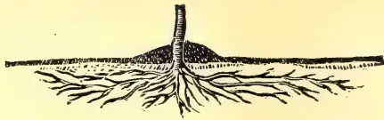
FIG 1.
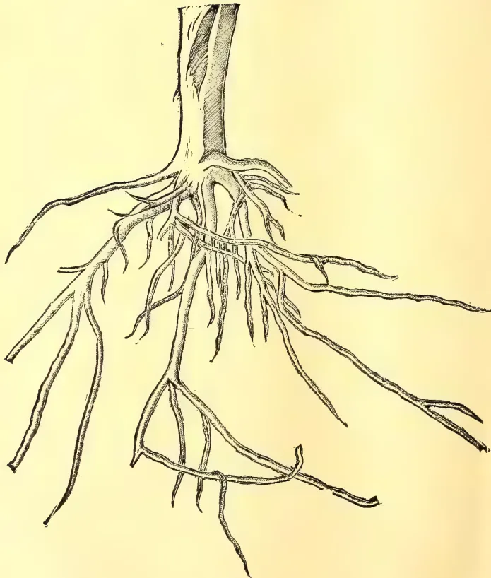
FIG 2.
MAY, 1909.]455Scientific Agriculture.any growth already made at the time, and provided also that the estimates as to the water-requirements (derived from the experience of the countries of summer rains (the humid regions) hold good for the arid region also). Whether or not this can be assumed, is among the points our experiments are designed to determine. The surprisingly successful growth and bearing especially of deciduous trees, without irrigation, despite a drought of five or six months in the "Franciscan climate," has led to an impression that a less amount of water may suffice under arid conditions. For in the East, as many weeks of drought and intense heat would frequently suffice to destroy the crop.
Probable causes of this endurance of drought.—Doubtless the main cause of this remarkable endurance is to be found in the much deeper rooting of all plants in arid climates; whereby not only a much larger bulk of moist soil is at their command, but the roots are withdrawn from the injurious effects of hot, dry surface and air.
This deeper range of the roots is not the result of foresight on the part of the plant. It could not occur on Eastern soils, because of the intervention, in the great majority of cases, of difficultly penetrable subsoils; from which, moreover, plants could draw but little nourishment on account of their "rawness." In the arid region, as a rule, subsoils in the Eastern sense do not exist; the soil mass is practically the same for several feet, and in the prevalent soils is very readily penetrable to great depths. This, summarily speaking, is due to the slight formation of clay, and the rarity of heavy rains in the arid region. And this easy penetrability of the soils implies, moreover, that being well aerated, the depths of the soil are not "raw," as in the East; and therefore that the "subsoil" such as it is, may fearlessly be turned up as deeply as the farmer is willing to go with the plough, without danger of injuring the next season's crop, in all lands that are well drained; as, by reason of their depth and perviousness, is the case with most California soils.
The accompanying plate illustrates from Nature the deep penetration of a peach root developing in a normally
deep, well aerated "bench" soil, in a manner quite impossible to the same root when growing in land underlaid, as are most Eastern ones, by a subsoil which either is too dense or too wet to be penetrated and utilized by the tree.
A glance at the figures suffices to show that, while a root system like plate 1, a typical Eastern tree root will stand in absolute need of frequent rains or irrigation to sustain its vitality, such a one as plate 2 may brave prolonged drought with impunity, being independent of surface conditions, and able to perform all its functions out of reach of stress from lack of moisture.* It is equally clear that it is to the farmer's interest to favour, to the utmost, this deep penetration of the roots, both in the preparation and tillage of the ground, and in the use of irrigation water. For if the latter is used too frequently or too abundantly, the salutary habit of deep rooting will be abandoned by the plant, and it will, as in the East, be dependent upon frequent rain or irrigation; and also, owing to the small bulk of soil upon which it can draw for its nourishment, upon frequent and abundant fertilization.
Eastern immigrants as well as a large proportion of California farmers do not realize the privilege they possess of having a triple and quadruple acreage of arable soil under their feet, over and above the area for which their deeds call; and they tenaciously continue to adhere to precautions and practices which, however salutary and necessary in the region of summer rains, do not apply to this climate. The shallow ploughing so persistently practised results in the formation of a "plowsole" that plays the part of the Eastern subsoil in preventing root penetration; limiting their range for moisture and plant food and thus naturally causing crops to succumb to a slight stress of season which ought to have passed without injury, had the natural conditions been taken into proper consideration.
Roots follow moisture.—Very striking examples of deep rooting as the result of vertical moisture penetration can be observed in some of our native trees, which, while naturally at home on moist ground, are nevertheless sometimes found forming luxuriant clumps on the slopes and even summits of our coast ranges and foothills. If we examine the ground where this occurs in the case of California laurel, we will gener-
* This name has been felicitously applied by Powell to the climate of middle and southern California, which is characterized by the concentration of rains within a winter which is mild enough to constitute a growing season, while the summer is practically rainless.
* The moisture determination under this tree gave, to the depth of eight feet, an aggregate amount of water of 1,058 tons per acre.
Scientific Agriculture.456[MAY, 1909.ally find that the soil in which they grow is underlaid by slate or shale standing on edge, into the crevices of which the roots penetrate, wedging them open; while themselves flattening out, and thus penetrating to moisture at considerable depths. The same may be observed in the case of the erect "bed-rock" or foothold slates of the Sierra, on which native as well as fruit trees flourish in very shallow soils, sometimes reaching permanent moisture at the depth of ten or more feet below the surface. It can readily be observed during rains that there is comparatively little run-off from the surface of these lands underlaid by vertical shales.
On the same principle, the grape vines which bear some of the choicest raisins of Malaga on the arid coastward slopes, are made to supply themselves with moisture, without irrigation, by opening around them large, funnel-shaped pits, which remain open in winter so as to catch the rain, causing it to penetrate downward along the tap-root of the vine, in clay shale quite similar to that of the California Coast ranges, and like this latter, almost vertically on edge. Yet on these same slopes
scarcely any natural vegetation now finds a foothold.
Similarly the "ryots" of parts of India water their crops by applying to each plant immediately around the stem such scanty measure of the precious fluid as they have taken from wells, often of considerable depths, which form their only source of water-supply. Perhaps in imitation of these, an industrious farmer has practised a similar system on the high benches of Kern River, and has successfully grown excellent fruit for years, on land that originally would grow nothing but cactus. Sub-irrigation from pipes has been applied in a similar manner.
The principle flowing from the above is simply that the most economical mode of using irrigation water is to put it "where it will do the most good," close to the stem of the plant or trunk of the tree, and let it soak downward so as to form a moist path for the roots to follow to the greatest possible depth. It is this deep penetration to natural moisture, as a matter of fact, which enables the small quantities supplied to produce such marked effects.
(To be continued.)
Le cacaoyer au Congo français. Bull. Jard. Col. May 1906, p. 390.
Greshoff, Aantekening over Cacao-Kiemen. Ind. Merc. 18. 9. 1906, p. 635.
Eutretieu des cacaoyeres. Bull. Jard. Col. Mar. 1906, p. 227.
Les variétés et espèces de cacao cultivées. Journ. d'Agr. trop. 1906, p. 76.
Chalot et Lun. Le cacao au Congo français. Paris, 1906.
Kakaomarkt in den Nederlanden im Jahre 1905. Tropenpfl. 1906, p. 539. See monthly market reports in Trop. Life.
The manuring of cacao. Trop. Life, May 1906, p. 73.
Sur quelques conditions de succes d'un cacaoyere, Journ. d'Agr. trop. Feb. 1906, p. 39.
Wright. The cultivation of cacao in Ceylon. "T.A." July, 1906, p. 73 et seq.
Report on cacao and cola industries in the Gold Coast. "T.A." Aug. 1906, p. 146.
Welternte und Weltverbrauch von Kakao, 1901-4. Gordian, 20, Ic. 1905, p. 251, do. 1905-6, do. 20/12/06, 983.
The world's cacao crops and consumption 1901-4. "T.A." Mar. 1906, p. 170. Kakao-produktion und Konsum, Tropenpfl. 1907, p. 33.
Cacao improvement. Hart. Trin. Bull, Jan. 1907, p. 182.
San Thomé Kakao. Gordian. 8. 1 1907, p. 959.
Samoa Kakao. do. 5. 8. 1906, p. 710. Deutschlands ein-und Ausfuhr an Kakao. Tropenpfl. Aug. 1907, p. 573.
A review of the cacao trade. "T.A." June 1907, p. 359.
Cacao cultivation in West Africa. Agr. News, Aug. 1907, p. 254.
Cacao cultivation in West Africa and elsewhere. Trop. Life, Aug. 1907, p. 116.
Cacao cultivation in Uganda. Agr. News, June 1907, p. 202.
Cacao cultivation in St. Vincent. Agr. News, July 1907, p. 213.
The cacao situation. "T.A." Oct. 1907, p. 279.
The shortage of raw cacao. Trop. Life, Nov. 1907, p. 169.
Cacao in Ecuador. "T.A." Apr. 1908, p. 317.
MAY, 1909.]457Miscellaneous.Cacao in the U. S., Trop. Life, Feb. 1908, p. 29. "T.A." Sept. 1908, p. 228.
Cacao from the Gold Coast. Bull. Imp. Inst. 4. 1907, p. 361. "T.A." May 1908, p. 429.
Cacao industry of San Thomé. Agr. News, Dec. 1907. "T.A." Feb. 1908, p. 121.
Cacao, its general culture. W. Ind. Bull. 1907. "T.A." Feb. 1908, p. 124.
An annual report on cacao. do. p. 184.
Cacao industry of the West Indies. Agr. News, 22. 2. 1908. "T.A." June 1908, p. 536.
Over cacao-cultuur op Samoa en enkele opmerkingen over dege cultuur op Java. Cultuurgids. 10 II., p. 41.
Cacao as an adjunct to rubber culture. Yr. Bk. P.A. Mexico, 1907-8. "T.A." July 1908, p. 11.
Trinidad cacao exports. Agr. News, Mar. 1908, "T.A." July 1908, p. 31.
Cacao in Samoa. Agr. News, Oct. 1908, p. 299. "T.A." Nov. 1908, p. 447.
Über Verlaubung von Cacaoblüten von Faber. Ber. D.B.G. 25, p. 577.
Welternte und Weltverbrauch von Kakao, 1907. Tropenpfl. Nov. 1908, p. 541.
The future of cacao planting. Ag. Bull. F.M.S. Dec. 1908, p. 611.
Results of recent experiments. W. Ind. Bull. Vol. IX. No. 2, p. 138, "T.A." Feb. 1909, p. 141.
Tobago cacao. Trin. Bull. Oct. 1908, p. 30.
The future of cacao planting. H. Smith, R. H. S. JI., Nov., 1908, p. 193.
Slavery on cacao plantations. Ind. Agri. Dec. 1908, p. 360.
Le cacaoyer d'au l'Ouest Africain. Journ. d' Agr. trop. Oct. 1908, p. 299.
Cacao shipments from Trinidad. Agr. News, 31. 10. 1908, p. 351.
The characters of Criollo cacao. Hart. "T.A." Jan. 1909, p. 49.
Cacao.—CULTIVATION.
Manurial experiments with cacao in Dominica. W. Ind. Bull. 6, p. 258.
Fauchere. Cultivation pratique du cacaoyer. Paris, 1906.
De beteekenis van schaduwboomen bij de cacaocultuur. Ind. Merc., 10. 1906, p. 732.
Kakao-düngungsversche. Tropenpfl. 1906, p. 516.
Manurial experiments with cacao at Dominica. W. Ind. Bull. 7, p. 201.
Possible crop of a cacao tree in full bearing. Trin. Bull. 1907, p. 200.
Cacao experiments at Dominica. Agr. News, Aug. 1907, p. 254.
Treating cacao seeds for export. "T.A." Supp., Sept. 1907, p. 52.
Pruning cacao. Trin. Bull. July 1907, p. 256.
Treatment of cacao and other seeds for export. Kew. Bull. 19, p. 297.
Pruning cacao. Jamaica Bull. 1907, p. 139.
The transport of seed cacao. Trop. Life, Mar. 1908, p. 45. "T.A." May 1908, p. 432.
Results of the recent experiments with cacao in the W. Indies, W. I. Bull. 8, 1907, p. 130. "T.A." July 1908, p. 30.
Cacao experiments in the West Indies. Agr. News, 21. 3. 1908, p. 85, "T.A." May, 1908, p. 427.
Packing cacao seeds. Agr. News, do. p. 89, "T.A." Aug. 1908, p. 128.
Emploi du paillis dans la culture du cacaoyer. Journ. d'Agr. Trop., May 1908, p. 138.
Pruning cacao. "T.A." Dec. 1907, p. 423.
Pruning and soil management in cacao cultivation. "T.A." Supp. Dec., 1907, p. 130.
The use of a mulch in the cultivation of cacao. (Abstract by Lock from Journ. d'Agr. trop.) "T.A." Sept. 1908, p. 227.
The question of shade in coffee cultivation as applied to cacao. Trop. Life, July 1908, p. 105. "T.A." Dec. 1908, p. 529.
Pruning cacao. Trin. Bull. Oct. 1908, p. 26.
Manurial experiments with cacao at Dominica. Agr. News, 25. 7. 1908, p. 225. "T.A." Dec. 1908, p. 530.
Cacao cultivation, Hart. Trop. Life V. I., Jan. 1909.
Cacao experiment plots at St. Lucia. Agr. News, VII., 173, Dec. 1908, p. 389.
The improvement of cacao planting in the W. Indies, Hart. "T.A." Jan. 1909, p. 47.
Cacao cultivation. "T.A." March 1909, p. 247.
N. C. P.—The plant you refer to is Typha augustifolia, a reed or rush sometimes (but incorrectly) called the bullrush, and also known variously as cat-tail flag, reed mace, and elephant grass. The Sinhalese name is Hambu-pan. The leaves have some value for making hats, mats, &c., and the fluffy material found in the spadix was at one time a good deal used for stuffing. The plant has been favourably reported on as a fibre for paper-making. It is found growing in abandoned paddy fields, e.g., in the neighbourhood of Anuradhapura.
58 Miscellaneous,458[MAY, 1909.KAPOK.—A leaflet on the subject is just about to be issued. In it you will find all the information you want. Do not confuse this with the ordinary spinning cottons which are all species of Gossypium, some of which are, owing to their size, called “Tree Cottons.” Kapok is botanically Eriodendron anfractuosum, and has long been grown as a fence plant. The name Kapok is said to be a Malay word, probably introduced by the Dutch.
A. C.—Tinospora cordifolia is the Sinhalese Rasa-kinda (Tamil Seenthil). Yes, it is used to some extent in European practice, and applications have been received by me for the leaves for preparing the drug. In native medicine it is much used in cases of diabetes.
B. P.—The word “pea” is very loosely used. The true pea is Pisum sativum; but we have “chick-pea” (Cicer arietinum) another name for common or Bengal gram, “pigeon pea” (Cajanus indicus) better known as dhall, and so on. The term “bean” is even more incorrectly employed, as in cocoa bean, coffee bean, &c.
B.—The king orange is not often seen in our local markets, and the pity is that it is not more cultivated to the exclusion of inferior kinds. It has been introduced into the United States where it is very highly thought of. The Americans are getting the best things of the East in Agriculture and Horticulture through their “explorers.”
BREEDER.—You are confusing rinderpest and foot-and-mouth disease. It is better to avoid the term “cattle-plague” which is too general. Comparatively speaking, foot-and-mouth disease is a mild disease compared to rinderpest, which practically does not admit of treatment once an animal is affected, and must be dealt with by preventive measures, chief among which is the process of serum-inoculation.
S. C.—With reference to your enquiry whether there are any wax-excreting palms in Ceylon, and whether the Carnauba wax palm of Brazil and that of Colombia could be grown here, Dr. Willis, Director, Royal Botanic Gardens, Peradeniya, reports:—“There are none in Ceylon. The Brazil species inhabit the mountains, and have never so far succeeded in Ceylon.”
Mrs. H.—The number of hens you ought to allow for each cock-bird to ensure fertilizing of eggs is, according to the
Government Veterinary Surgeon, six, i.e., with a non-sitting breed such as Minorcas. He also states that a cockerel may be used for two years.
W. D. C.—In reply to your enquiry whether rubber plants should be topped at a certain period, and if so at what age, what height, and what season, the Government Agricultural Chemist kindly furnishes the following reply:—“It is better not to top the trees at all as the heavy heads induced are liable to be broken off by any severe wind.”
D. J.—With reference to your query about a plough suitable for “mud land,” with a soft layer about a foot in thickness, Messrs. Walker, Sons & Co. report that they have two ploughs that they think might suit, Howard’s Cingalese Plough (Rs. 22.50) and Massey’s pipe plough (Rs. 17.50). These are intended for furrows 6” to 8” deep, but with some adjustment might suit the purpose.
S. R. B.—The hairy beans you send are Mucuna pruriens. The seeds need very careful cooking. It is necessary to first boil them two or three times, throwing away the water after each boiling. If this is not done they are apt to act as an irritant poison.
W. D.—In reply to your enquiry whether it is true that several varieties of Durians are found in the Malay Peninsula, some of which are superior to the locally-grown variety, the Curator of the Royal Botanic Gardens, states that the Durian trees at Peradeniya are very variable in their fruits, varying in size, shape, flavour and quality of pulp. Two trees in the Gardens yield distinctly better fruits than the others, but even these are distinct from each other. The trees also vary in productiveness, some being almost barren, while others are extra prolific. Selection and high cultivation are carried on to some extent in the Straits, Burma, &c., so that it is quite possible they have better varieties than those in Ceylon.
P. M. C.—The following, as I understand, are the questions raised by you:—(1) Is there any relation between the time taken by paddy to come to maturity and the return it gives? (2) Are there any statistics giving average yield of paddies of different ages? (3) Is there any relation between “age” and quality? I would reply to these as follows: (1) There is, as a rule, a definite relation between length of growth and yield, e.g., a 5 or 6 months’ variety yields more than a 60 day or 3 month paddy. (2) There are no statistics available, but, accord-
MAY, 1909.]459Miscellaneous.ing to Mr. W. A. de Silva, some such proportion as the following may be laid down :—
| Given that a 5 mos. paddy will give a yield of 100 % | |
| then a 2 " " " " " " 60 " | |
| and a 3 " " " " " " 75 " |
But sometimes a 4 month paddy will be found to give as much as a 5 or 6 months' variety. In fact, 4, 5, and 6 month paddies should be classed together, while those of lesser age must be put down as "bala wi," which gives a comparatively low yield, though most useful when cultivation has to be undertaken late in the season. (3) I do not think any relation has been noticed between "age" and quality.
K. B. B.—With reference to your enquiry about the prospects of lemon grass cultivation in the Central Province, the Government Agricultural Chemist states that although the grass grows successfully, the present prices are too low for profitable cultivation. The cost of a small plant, for say from 50 to 75 acres would be about £250.
W. E. M.—A trial of nitro-bacterine was made in May last year at the Government Stock Garden. The culture for groundnuts (Arachis hypogaea) was mixed with water according to the directions given, and, in one case the seeds were immersed in the liquid before planting; in another, the seeds were first planted and subsequently watered with the fluid; in a third, the seeds (uninoculated) were watered with plain water. Except for a slightly higher percentage of germination in the case of the first plot (which is hardly to be attributed to the culture), there was no striking difference between the inoculated and uninoculated plots, a result which leads to the conclusion that the action of nitro-bacterine in the case of garden soils at least is inappreciable.
V. M. M.—"Vaporite" is recommended to be forked into the soil to rid it from gall worms and other ground pests.
C. DRIEBERG,
Secretary, C, A, S.
The 45th Meeting of the Board of Agriculture was held at the Council Chamber on Wednesday, the 7th April, 1909.
His Excellency the Governor presided.
There were also present :—Sir Solomon Dias Bandaranaike, the Hon'ble Messrs.
Moonemalle and Kanagasabai, Messrs. R. H. Lock, C. M. Lushington, J. Harward, R. W. Smith, G. W. Sturgess, E. E. Green, C. J. C. Mee, W. A. de Silva, Francis Daniel, J. D. Vanderstraaten, Simon D. Dabre and the Secretary, and (as visitor) Lieut. W. Stewart.
1. Minutes of the previous meeting held February 4th, 1909, were read and confirmed.
2. Progress Report No. 44 was adopted. Mr. Lock advised that only one good variety of maize seed (e.g., Hickory King) be distributed at a time, in view of the tendency to cross-fertilization in maize.
3. Statement of Expenditure to the end of March was tabled.
4. Mr. Lock's paper entitled "The New Rubbers" was taken as read.
5. Mr. W. A. de Silva read a summary of his paper entitled "Suggestions for a local Scheme of Agricultural Education." The Director of the Royal Botanic Gardens and the Director of Public Instruction, in the course of their remarks, thought the curriculum was rather too ambitious. Mr. Harward had a course of agricultural lectures for teachers in contemplation, and was also endeavouring to arrange for the training of an agricultural instructor for the Government Training College. H. E. the Governor, in thanking the writers of the two papers submitted to the meeting, thought that Agriculture should be the basis of a village school curriculum. His Excellency had himself drafted a comprehensive paper on the subject of agricultural education which he proposed to submit to a special committee for their advice regarding the technical details.
Mr. Lock exhibited specimens of Maize in illustration of a fundamental point in plant breeding.
6. Mr. Green read a memorandum on sericulture prepared by the Secretary, and also exhibited samples of silk yarn made in Paris from locally grown cocoons.
7. Before the close of the meeting H. E. the Governor said that he desired to express his thanks to the gentlemen who had acceded to his request for suggestions as to the best means of administering loans to cultivators, and expressed his intention of drafting, at an early date, a scheme for local agricultural banks.
C. DRIEBERG,
Secretary, C, A, S.
Membership.—The following members have joined the Society since the last meeting of the Board held on February 4:—Wilfred L. P. Soysa, Huntley Wilkinson, E. L. Ephraums, W. P. R. Spencer, Dr. Ahmed Mirza, W. R. Bibile, R. M., M. S. Milne, General Manager of the Uganda Company, Ltd., T. Dorai-swamy Aiyar, N. J. Wilson Blackett, Edward Young, and F. W. Le Feuvre.
Movements of Officials.—The Secretary toured in the Kandy District, Pasdun Korale East, and Kurunegala District. Mr. S. Rothwell, at present studying tropical agriculture at Peraderiya, accompanied the Secretary on some of his visits of inspection.
Agricultural Instructors.—There are now five Agricultural Instructors engaged in inspection and demonstration work, at present distributed as follows:—Mr. N. Wickremaratne in the Bentota-Walallawiti korale, Mr. L. A. D. Silva in the Hambantota-Matara Districts, Mr. S. R. Breckenridge in the Batticaloa District, Mr. S. Chelliah in the Jaffna peninsula, and Mr. W. Molegoda in the Nuwara Eliya District.
Branch Societies.—Three new Branch Societies have been organized at Hambantota, Bentota and Agalawatta (Pasdun korale).
The Hambantota Branch (designated the Magam Pattu Agricultural Society) absorbs the Tissamaharama Cultivators' Association. It has in view the establishing of an experimental garden, for which Mudaliyar C. F. S. Jayawickrema has offered an area of land on his Ranakeliya estate. Agricultural Instructor Silva, who has inspected the land, while agreeing that the sites are suitable for the purpose, is of opinion that their distance from a frequented centre is a drawback.
The Bentota Branch was inaugurated at a meeting held at Bentota in the first week in March, when Agricultural Instructor Wickremaratne was present; office-bearers will be elected at a later meeting, when rules and a programme of work will also be framed. Nine Vidane Arachchies undertook to conduct experiments in transplanting paddy.
An inaugural meeting was held at Agalawatta on March 14 to establish a Branch Society for Pasdun Korale East. The meeting was attended by the Secretary, and there was a large gathering, over which Mudaliyar Samarasinghe pre-
sided. Office-bearers were appointed, and a resolution was passed that three experimental gardens be started at Bellana, Agalawatta, and Warakagoda. The Mudaliyar's proposals with regard to the work of the Society were met with general favour.
The Dumbara Society, which is among the most active of the branches, held its annual general meeting on February 6, when the Hon. Mr. J. P. Lewis, Government Agent, Central Province, presided. An interesting annual report was submitted by the Secretary, Mr. Rasanayagam, Mudaliyar, dealing chiefly with the work of the Co-operative Credit Bank. The report is reproduced in the Society's Magazine for February.
Agricultural Shows.—The following Shows are fixed to take place on the dates indicated below:—
| April 6-7 | ... | Welimada |
| April 30 | } | Mannar |
| May 1 | ||
| May 6 | ... | Anuradhapura |
| May 23-24 | ... | Hanguranketa |
| May 24 | ... | Bandaragama |
| June 12 | ... | Vavuniya |
| June 16-18 | ... | Galle |
| June | ... | Negombo |
| June | ... | Jaffna |
| June 10 | ... | Balalla |
| July 2-3 | ... | Kegalla |
| July 31 | ... | Telijjawila |
| August 5-7 | ... | Kandy |
| October 30 | ... | Mirigama |
| December 20-21 | ... | Hikkaduwa |
The Jaffna Show is the only doubtful fixture.
It has been decided to abandon the Colombo Exhibition this year, in view of the Show to be held at Negombo in June.
Imperial International Exhibition, Nagpur.—As previously reported, the Society sent a representative exhibit of local commercial products to this Exhibition. The Secretary of the Exhibition Committee, writing after the close of the Exhibition, states: "I think the exhibits as a whole attracted attention. Of individual exhibits, I am not at this moment efficient to speak, chiefly because I was absent the greater part of the time. There were to my knowledge, however, inquiries with regard to cardamoms and cacao. I will see that a report is sent."
Experimental Gardens.—In addition to the gardens at Tissa and Pasdun Korale East already referred to, it is also proposed to establish gardens at Jaffna, Anuradhapura, and Batticaloa, under the supervision of the Agricultural Instructors stationed in the Northern and Eastern Provinces.
MAY, 1909.]461Miscellaneus.The Bandaragama and Balangoda Gardens continue to make satisfactory progress.
Horetuduwu Garden.—In August last another stage was reached in the arrangements for opening this garden. The drawing up of the deeds for the transfer of land for the purpose was entrusted to the donor's Notary, and there was a prospect of the garden being taken in hand in September and got ready for planting during the north-east monsoon. The unexpected death of the donor in the interval has now caused further delay, and will have to wait action by the executor of the estate. It should be mentioned that the late Sri Chandrasekera, Mudaliyar, donated a sum of Rs. 2,500 for the upkeep of the garden, so that by his death the Society loses one of its most liberal supporters.
School Gardens.—School gardens are increasing in number. At the end of last year their total number was 180. Some of the gardens in the outlying districts are doing excellent work, as the following log entry, made by Mr. F. Lewis of the Land Settlement Department, goes to show. Angunakolapilessa school referred to is situated in a remote part of the Magam pattu:—"I visited the Angunakolapilessa school this morning at 7-30, just as some of the boys were arriving. I was particularly struck with the school garden, which, considering the climatic conditions that prevail here, shows that the schoolmaster has paid great attention to it, and with excellent results. I noticed among other products chillies, ash and red pumpkins, tomatoes, sweet potatoes, Indian corn and cotton. The crops produced were very large, and, seeing that the water required for the plants is brought from a tank or well about one-eighth of a mile distant, it is all the more astonishing that so excellent a result is to be seen. Altogether the garden is a fine object-lesson, not only for children but for adults, as showing what can be done here. The figures of crops given by the schoolmaster show that the yield is highly profitable, and I trust that the Agricultural Department will take the matter up, as showing the possibilities in this wild and little-populated country. The school garden affords a proof that with water and a little care and attention the common garden produce of the country can be made very profitable. I find that some of the children, to whom I put a few questions of a practical character, were able to answer with promptness and correctly. This and the foregoing remarks about the garden will serve to show that the schoolmaster has done his work well, and deserves
considerable credit considering the materials he has to work upon."
Public Pasture Grounds.—The question of providing communal pasture land is being taken up in Uva, Gampola, and the Wellaboda pattu. The Government Veterinary Surgeon recommends that there should be 100 acres of pasture for every herd of 100 head of cattle.
The Secretary during his visit to South India in December last found that much value was placed upon a pasture grass new to Ceylon, identified by Mr. J. F. Jowitt as Cenchrus biflorus, and is now making arrangements to introduce it into the Island in connection with the pasture experiments referred to.
Paddy.—At the request of the Department of Agriculture, Beira, twelve selected varieties of low-land and up-land paddy were forwarded to Portuguese East Africa for experimental purposes. The thanks of the Society are due to Messrs. A. P. Goonatileka and J. H. Meedeniya, R.M., for furnishing the paddies.
Eighteen varieties of Ceylon paddy were also forwarded to the Department of Agriculture, Central Provinces, Nagpur. These were secured with the kind help of Mr. Sam W. Perera of H. M. Customs.
An experiment in transplanting paddy was carried out last season under the direction of Mr. Wirasinha, the Mudaliyar of Rayigam korale. His report is expected immediately, but Mr. Wickremaratne, Agricultural Instructor, who visited the district just before the cutting of the corn, reported that the superiority of the transplanted crop was striking, the average number of shoots from a plant being above twelve and the ears proportionately large.
An experiment was also conducted at Bombuwala in Kalutara totamune in a field belonging to the Vidane. It was carried out under many disadvantages owing to having been begun too late in the season, which did not allow of the plants remaining sufficiently long in the nursery or of sufficient time being given for the action of the manure applied. Details of the experiment will be duly published together with those of the Rayigam korale experiment.
The Mudaliyar of Pasdun Korale East reports that transplanting will be undertaken in the six Vidane Arachchies' divisions of the korale during the next yala; similar experiments will be conducted in the Bentota-Walallawiti korale by the Vidane Arachchies of Urugasmanhandiya, Kosgoda, Elpitiya, Pitigala, Horangalla, Weihena, Opata, Constable Arachchi of Urugaha, and Police Officer of Amugoda.
Miscellaneous.462[MAY, 1909.The Teacher, boys' vernacular school, Kankaniyamulla, reports that he sowed two measures of paddy in a nursery on August 20 and planted out the seedlings 25 days after. The crop was gathered on February 5 and realized 98 measures, or 40-fold, in spite of its having suffered somewhat from the attacks of rats and birds. The school boys assisted in the experiment.
Drought-resistant Paddy from Burma.—This paddy was distributed among the following centres:—Anuradhapura, Chilaw, Delft, Hambantota, Jaffna, Katana, Katunayaka, Kegalla, Kurunegala, Mannar, Mullaitivu, Nattandiya, Trincomalee, Vavuniya, Wanni hatpattu, and Puttalam.
A report of the failure of the last paddy crop comes from the Marawila district, with a request for assistance with seed paddy. The matter is receiving attention.
A useful pamphlet on paddy cultivation and manuring has been issued by Messrs. Freudenberg & Co., and can be had free on application. The contents are instructive, and copies received from the publishers have been distributed among Branch Societies.
Seeds and Plants.—Through the courtesy of the Director of Agriculture, Beira, four varieties of cotton (Champion Cluster, Southern Hope, Bate's Big Boll, and Allen's Long Staple) and six of maize (Golden King, Hickory King, Chester County Mammoth, Champion White Pearl, Early Star Leaming, and Iowa Silver Mine) were received during May, and distributed.
Soy Bean.—This bean was imported twice previously, but did not prove a success. At the request of a member, seeds of eight varieties were obtained through the courtesy of the United States Department of Agriculture, and are being tried in the Kurunegala District. They are named Mammoth, Haberlandt, Tokio, Guelph, Itosan, Brownie, Flat King, and Nuttal.
Dhaincha Seed (Sesbania aculeata).—Arrangements are being made, if possible, to get a fairly large supply of seed of this green-manure plant.
The Algaroba Tree (Prosopis juliflora).—At the suggestion of a member, seeds of this useful tree have been indented for from Hawaii. A specimen about six years old may be seen growing in the Government Stock Garden.
Alphonso Mango Grafts indented for from India, and the usual stock of vegetable seeds from England, for south-west monsoon planting, are expected to arrive early next month.
Kekuna Nuts.—A report is awaited from the continent on samples of this oil-nut (Aleurites triloba), submitted in connection with inquiries received. Some seven or eight years ago an order for this oil came from Russia, and was executed with the help of the Superintendent of School Gardens. So far as could have been ascertained, it was wanted in connection with the paint trade.
Yams.—What is generally known as the Jaffna yam or King yam—a variety of Dioscorea alata, purple when boiled—is considered a delicacy by many, and a good deal sought after. It is generally procured from the Northern Province, as very little is raised in other parts of the Island. To test the market value of the yam a member grew some 100 vines and got a crop of over a 1,000 pounds, but, strange to say, he was unable to get a better sale for the produce than for that of commoner varieties more popular with the natives (such as hinguraia).
A consignment of selected Ceylon yams was despatched to Manila at the request of the Director of Agriculture.
The Yampee or Kush-Kush yam of the West Indies (Dioscorea trifida) has proved too delicate for the comparatively damp climate of the Western Province. The vines grown at the Government Stock Garden have all died out in spite of attention given.
Implement and Machines.—A trial was recently made at the Government Stock Garden by Messrs. Brown & Co. of a Horsby mower for bullock-power, recommended for cutting down weeds in coconut plantations. In the absence of woody-stemmed weeds it did its work satisfactorily.
Messrs. Walker, Sons & Co. have on view a varied assortment of English and Indian implements, which are worth inspection by those who are in search of suitable ploughs, &c.
White Ant Exterminator.—The Government Entomologist reports:—"White ants are easily exterminated by the machine imported for that purpose and now sold by Messrs. Gordon Frazer & Co., Colombo, for Rs. 75 each. They have proved very successful, and the extermination is complete."
Oil Mills.—There is a prospect of Messrs. Walker, Sons & Co. exhibiting and demonstrating the working of a Donaldson's patent oil mill (referred to in last Progress Report) at the next Agri-Horticultural Exhibition at Galle, to be opened on June 16. Members will thus have an opportunity of judg-
MAY, 1909.]463Miscellaneous.ing of the merits of these up-to-date appliances and compare them with the crude chekku-mills of the country.
Any one desirous of trying the Duchemin Fibre Machine can do so by application to the Superintendent of School Gardens.
A simple hand loom may be seen at work at the Government Stock Garden, where two of these weaving machines are under trial. It is interesting to learn that the weaving of cloth is now being carried on in the Welikada jail. A loom introduced by a late visitor to Siam will probably be shown at work at the Kandy Show next August.
Sericulture.—A consignment of live Eri cocoons is expected shortly from Assam. Applications for eggs should be made to the Superintendent, School Gardens.
The following report has been received from a Swiss firm in the silk trade on a sample submitted:—"We very much regret not to be able to give you a satisfactory answer as regards the commercial value of Eri-pierced cocoons. To do this we ought to make a trial of a certain importance, but till now we never heard of large quantities we can rely on, which should amount to 200,000 pounds a year at least. If one day you should be able to give us exact information on this score, we should decide upon the matter."
A Paris firm, to whom samples were forwarded some time ago, writing on February 20, reports that the trial of the cocoons will be finished in a few days when a full report will be sent. In a previous letter the same firm reported:—"We duly received your favour of October 13 last, and since we have seen in our mill the parcel of 50 lb. of Eri cocoons you have sent us. The reason we did not write to you earlier was that our Manager, Mr. Villy, wanted to see those cocoons with Mr. Strohl before working them. We have chosen all the brown cocoons left in the white ones so as to enable us to make dyeing trials, and to see how we can use this quality. We are dressing and spinning the cocoons now, and shall be able to give you further reports in a short time. You may be assured that we give all our attention to this question, and that we hope that it will later on bring some interesting business. We think that since Mr. Strohl's visit you have been able to study the question of making an important practical trial of Eri cocoon culture, and would be glad to hear what the cost of such a trial could be. If the trials of spinning we are making now give a good result, we shall do what we
can to facilitate you a large trial of practical culture. We think that such a trial will be absolutely necessary to show the cost of price of those Eri cocoons, and to allow on one side the producer and on the other side ourselves to see what the interest of this business could be for each other."
A small experiment in the extraction of Eri silk fibre and spinning it into yarn is about to be tried at the Government Stock Gardens.
Cotton.—The local agents of the British Cotton Growing Association, in reply to an inquiry from a cultivator, report as follows:—"There is a combine of Moormen who buy both cotton and kapok in 2nd Cross Street, Colombo, besides most of the European firms buy both products, and we ourselves should be happy to compete. The best results are obtained by the planter if he allows us to gin, bale, and ship the cotton for him, as by doing so he would reap the advantages of a rising market, while merchants have to take into consideration a possible sudden drop in the market and have to keep their quotations accordingly low. Our charges for ginning, baling, and putting on board f. o. b. are 7 cents per pound of clean cotton, and for kapok the charges are 4 cents per pound hand-cleaned and 6 cents machine cleaned."
Manure.—A series of experiments in the manuring of vegetables is being conducted at Jaffna by the Agricultural Instructor of the Northern Province. The Superintendent of School Gardens has recommended the following mixture for oranges:—
| ewt. | ||
|---|---|---|
| Ground nut Cake | ... .. | 2½ |
| Bone Phosphate | ... .. | 3½ |
| Sulphate of Ammonia | ... .. | 1½ |
| Sulphate of Potash | ... .. | 1 |
Salt and Citronella Ash for Coconut.—The Government Agricultural Chemist reports as follows on samples submitted to him by a member:—"I consider sample of salt submitted suitable for young coconut trees at the rate of one pound per tree forked in round the tree about three feet from the trunk. Similarly applied the ash of citronella grass would be suitable at the rate of 5 pounds per tree."
Mosquito Exterminator.—A few packets of a preparation under the above name were received from a member, and have been distributed in malarious districts for trial and report. The preparation is said to be made of local vegetable products (chiefly Margosa leaves) and not to contain any
Miscellaneous.464[MAY, 1909.del.terious ingredients. It consists of a powder for fumigation.
Tobacco.—Samples of tobacco forwarded by the Dumbara Society were submitted to the London tobacco leaf expert referred to in the last Progress Report. Writing on February 19 he says:—"I have carefully examined and inspected these growths, and I have also got two or three of the largest manufacturers to try a little of the same. It is certainly the best attempt I have seen with tobacco outside Kentucky, and I feel sure that if it is properly put up there will be a future before it, but the samples are far too moist, and should be dried down to contain about 12 per cent. moisture and might fetch 5d. to 6d. per lb. I feel sure that a large trade can be done with it. Of course, I mention the above prices with reference to the present market price at Kentucky, and, as I have previously stated, British manufacturers are very conservative, and it is very difficult to get an outside growth like this on the market, unless you give them an advantage in price. I shall be pleased to know what quantity you can offer. It certainly burns well, and has a distinctive flavour; but the latter fact may be derogatory rather than otherwise. The samples sent contain about 20 per cent. moisture, which should, as before stated, be reduced to about 12 per cent. The thick part of the stalk should be butted and the sand well shaken out. If labour is cheap, it might be advisable to have the tobacco stripped before importing. It would sell more readily, and a better price might be got. The two lowest grades, I am afraid, would be useless for the English trade, and I do not think it would pay to import them."
Disease in Nutmeg Trees.—Mr. Frederick Lewis of the Land Settlement Department reported last year that he had observed a disease in nutmeg trees, which attacks old trees, commencing from the top branches, causing a change of colour in foliage from a dark green to a pale sickly yellow, till finally the leaves fall off, exposing dead twigs and branches.
The Government Mycologist, after inspecting the affected trees, reported:—"They are evidently suffering from a root disease, which gradually kills the roots and causes the branches to wither back from the tips owing to stoppage of the water supply. I was informed that the tree died outright within six months of first showing symptoms of disease. November should have been the best time for collecting specimens of the fungus, but it had been too dry, and
nothing but mycelium was observed; it would require continuous observation during the wet weather to find the fructification, which is most probably a Polyporus. In most cases white ants had eaten away the base of the tree and spoilt all chance of obtaining the fructification. Under the circumstances, it is difficult to know what to advise. The caretaker gathers the crop, but has presumably no other interest in the matter. The dead trees should be burnt and their roots dug out as far as possible, but as the living trees are of very little economic value no one will be eager to spend anything. The jack trees here are also attacked by a root disease, and the dead trees should be similarly dealt with. Apparently most of these trees are growing in pure cabook, which was excavated when the reservoir was made. They can scarcely be expected to flourish in such 'soil,' and if it is wished to maintain the surroundings as a garden, shrubs should be planted in holes filled with good soil."
Orchella Weed (Rocella montagne).—At the instance of the Imperial Institute, London, inquiries were instituted as to the probable cause of the falling off in the trade in this dye stuff—a lichen found chiefly in the north of the Island growing on coconut and jungle trees. The export at one time was as much as 1,157 cwt., and the price £36 a ton. Now the price quoted is Rs. 180 c.i.f., and the falling off in the trade is generally attributed to this reduction in price.
Cattle Disease.—The year began badly for cattle owners owing to the prevalence of rinderpest, which has caused great loss, chiefly in the Province of Uva, and is still causing the Veterinary Department much anxiety. The constant menace which daily importations of cattle from India have been to the health of our local stock has now been practically removed by the opening of a Central Cattle Mart and Segregation Camp in Colombo. The establishment is presumably the first of its kind in the East, and is well equipped and under good management.
Publications.—An Agricultural Calendar in Sinhalese is in type, and will be issued early.
Leaflets on the Rice Bug or Paddy Fly (No. XL.) and Nitrogen-gathering Crops (No. XLII.) have been printed and distributed. Leaflet No. XLII. on "The Silk Cotton Tree" is in the hands of the printer.
C. DRIEBERG,
Secretary.
Colombo, April 7, 1909.
MAY, 1909.]465Miscellaneous.[Paper read before the Board of Agriculture on April 7 by Mr. W. A. de Silva.]
Any scheme for agricultural education in Ceylon should be based on elementary lines, and a systematic attempt made to give the village children a suitable training to enable them to make the best use of their surroundings.
The school gardens now in operation have been devised to partially meet this want, and the work in such gardens should be made a regular part of the general work in a primary school and not relegated to off hours.
Five hours are now usually devoted in a village school to the teaching of letters. This can well be reduced, and the time thus saved devoted to practical teaching.
In the first instance, provision should be made to give the teachers in village schools some instruction in the subject to enable them to interest their pupils in agricultural work. This can be done in two ways—
(a) By short holiday courses of lectures to teachers.
(b) By training the teachers for a short period at an agricultural school.
The annual lectures on sanitation given to teachers in grant-in-aid schools have proved to be of very great use to them. Similar courses of lectures and demonstrations in agriculture can be arranged at a very little cost.
The classes can be held in August and December during school holidays, and should be open to all vernacular certificated teachers employed in Government or grant-in-aid schools, the number attending a course of lectures and demonstrations being limited to about fifty at a time.
Those selected to attend the classes should be paid a commuted sum of Rs. 20 to meet their travelling and living expenses during the time they are engaged in attending the classes.
Such teachers who pass an examination after the classes should get a certificate, and should be entitled to an annual bonus when they show satisfactory results at the examination of children in their respective schools.
The following may form the basis of a provisional syllabus for the teachers' course of lectures and demonstrations in agriculture:—
First day.—THE SOIL: What it is. How formed. Agencies at work. Soil
fertility. A farmer's classification of soils
Lecture, 1½ hour; demonstration, 2 hours.
Second day.—IMPROVEMENT OF SOIL: Subsoil. Drainage. Cultivation, &c.
Lecture, 1½ hour; demonstration, 2 hours.
Third day.—MANURES: General principles. Time and method of application. Qualities, &c.
Lecture, 1½ hour; demonstration, 2 hours.
Fourth day.—FIELD CROPS: Rice cultivation. Sowing. Manuring. Irrigation. Harvesting. Rotation. Transplanting, &c.
Lecture, 1½ hour; demonstration, 2 hours.
Fifth day.—GARDEN CROPS: Chenaland. Roots. Cereals. Vegetables. Rotation.
Lecture, 1½ hour; demonstration, 2 hours.
Sixth day.—FRUITS, &c.: Fruit growing. Propagation. Grafting. Manuring. Preparation for market.
Lecture, 1½ hour; demonstration, 2 hours.
Seventh day.—DISEASES AND INSECT PESTS: Blights. Preventive measures, &c.
Lecture, 1½ hour; demonstration, 2 hours.
Eighth day.—CATTLE: Breeding. Feeding. Dairying, &c.
Lecture, 1½ hour; demonstration, 2 hours.
Ninth day.—COMMON AILMENTS OF CATTLE: Prevention. Treatment. Infectious diseases. Rinderpest. Foot and mouth diseases, &c.
Lecture, 1½ hour; demonstration, 2 hours.
Tenth day.—IMPLEMENTS, &c.: Implements, their uses and management. Labour saving. Fences, &c.
Lecture, 1½ hour; demonstration, 2 hours.
Eleventh day.—WEATHER AND METEOROLOGY.
Lecture, 1½ hour; demonstration, 2 hours.
Twelfth day.—EXAMINATION (ORAL).
The lecturers can be found among the members of the Botanical Department and Educational Department, or elsewhere, and paid a nominal fee of Rs. 10 per lecture.
59 Miscellaneous.466[MAY, 1909.The cost of one course of instruction will work out as follows:—
| Allowance to 50 teachers at Rs. 20 | 1,000 |
| Allowance to lecturers, 12 lectures and 12 demonstrations ... | ... 240 |
| Payment to interpreters, maps, stationery, specimens, and contingencies ... | ... 260 |
| Total | ... 1,500 |
Agricultural Schools.—The training of teachers and others directly interested in agriculture for a short period of at least one year should be organized on some definite lines.
With this view a school of agriculture, where teaching will be imparted in the vernacular, should be established somewhat on the lines of those now in operation in Ireland, where the students should be in residence during the period of their course of study. This school should be located, as far as possible, at some convenient centre, such as the Henaratgoda Gardens. The establishment should be placed in charge of a Principal, who should be a trained teacher and who can be assisted by a staff possessing special knowledge of the subject of teaching.
The importance of appointing trained teachers for guiding establishments of this nature is now fully recognized, and the Indian Department of Agriculture has appointed them with successful results.
All teaching should be carried on in the vernacular or, where necessary, through interpretation.
Students admitted to the school should be between the ages of 14 and 21, and should have at least passed the Fifth Standard in a Government or grant-in-aid school, or should be able to pass an entrance examination of a similar standard.
These students may be of three classes—
(a) Those who have been nominated by Government Agents as fit persons to be appointed as village headmen.
(b) Those who have passed the Government teachers' examinations and who desire to obtain a training in practical agriculture.
(c) Those joining on their own account and paying for the training received.
There should be two sessions of teaching during the year, and not more than thirty students should be admitted each term. Thus the institution will have sixty students at a time.
Selected candidates should be housed at the place where they are to receive their training, and should be under the discipline of a tutor. The course of instruction should be mainly practical with as little use of books as possible.
In addition to the Principal, who should be a trained teacher from a recognized institution, the services of a Field Instructor might be secured from India, and the lectures and ordinary practical work arranged in such a way as to enable the students to receive their instructions in special subjects from the scientific staff now in the service of Government.
Provision should also be made for obtaining the services of an assistant, who has obtained an Anglo-vernacular teacher's certificate from the Government Training College, and who should assist the Principal, and among other things undertake the work of interpreting the lectures.
The syllabus of studies should include instruction in agriculture, with outdoor classes in dairying, horticulture, bee-keeping, veterinary hygiene, pests, and diseases of plants, and the elements of chemistry and botany. Instruction in woodwork and ironwork, as far as it relates to farmers' work, and the use of tools and implements, should also be included in the curriculum.
A school on the above lines will be able to train a number of teachers in the general principles and practice of agriculture, to enable them to introduce the teaching of agriculture in village schools. It will also be the means of securing a class of village headmen, whose training will enable them to take an intelligent interest in village agriculture, and generally promote the welfare of the villager.
The next question that should be considered is the provision of teachers for the agricultural training school and for the schools of agriculture which may eventually be opened in different centres of the Island. For these posts a class of men with a sound knowledge of agricultural science and practice will be required. They should possess a good knowledge of the vernaculars, and should also have a training as teachers if they are to do useful work.
In order to obtain men with these qualifications, a number of scholarships should be offered annually to the students of the Anglo-vernacular class of the Government Training College, Colombo, to enable them, after they obtain their certificates at the Training College, to proceed to an Agricultural
MAY, 1909.]467Miscellaneous.College in India to receive an advanced training in the science and practice of agriculture. The Agricultural College at Coimbatore or Pusa (preferably the former) will suit the requirements of Ceylon students. The course of studies at these institutions extends for a period of three years.
The higher scientific staff of agricultural experts also requires organizing in the light of experience gained in India. It has now been settled that local experience is invaluable for useful work by the expert officers, and this local experience is supplied by attaching a qualified assistant, who is a native of the country, to each member of the scientific staff. At the Agricultural Colleges and Experimental Farms teaching is done through these assistants, whose work is supervised and directed by the experts recruited in Europe. These assistants are not mere subordinates, but are colleagues whose education and emoluments bring them in very close contact with the experts, and who are able to act for them in their respective capacities during the absence of the experts. This is a matter that requires very careful attention in the organization of a successful scheme for the improvement of the agricultural interests of the country. It may be possible to draw these assistants from the students of our Colleges, and it seems reasonable to divert one of the two University Scholarships given annually to students in Ceylon for this purpose, requiring the winner of the scholarship in science and mathematics to arrange his course of studies in a European or American University in order to qualify himself to take one of these posts.
To summarize. (1) The system of teaching in village schools require modification with a view to the introduction of training in village industries along with that of letters.
(2) As a preliminary step, a holiday course of lectures to teachers in vernacular schools should be organized on the lines of lectures on sanitation now given annually to teachers.
(3) Those seeking posts as village headmen should get an elementary training in agricultural industries as resident pupils in an elementary vernacular agricultural school established for the purpose.
(4) A number of village teachers should also be encouraged to take their training at such a school.
(5) An elementary agricultural school for resident pupils with a one year's course, where teaching is imparted in the vernacular, should be established on
similar lines to schools now established in Ireland and other places.
(6) The school should be in charge of a trained teacher, assisted by special teachers, and the lectures on special subjects given by the agricultural experts now in the employ of the Government.
(7) Eventually, village agricultural schools should be established at suitable centres.
(8) Teachers for such village agricultural schools should be obtained by offering annual scholarships to a number of students passing out of the Anglo-Vernacular class of the Government Training College, Colombo, to enable them to go through a complete course of training at one of the Agricultural Colleges in India.
(9) That the staff of scientific experts in agriculture should be strengthened by the appointment of well qualified assistants from among the people of the country to act as colleagues of the scientific experts.
(10) That one out of the two University Scholarships now awarded by the Government of Ceylon should be diverted to the training of scientific experts at European or American Universities on lines similar to those adopted by the Indian Government in awarding Technical Scholarships for training Indians in Europe and America.
W. A. DE SILVA.
DR. FRANCIS WATTS, C.M.G., AND
HIS WORK IN THE LEEWARD
ISLANDS.
The departure of Dr. Francis Watts, C.M.G., from Antigua, in order to take up the work of Imperial Commissioner of Agriculture for the West Indies, has been the occasion of a number of resolutions of a complimentary nature from Agricultural bodies in the Leeward Islands.
At a meeting of the Antigua Agricultural and Commercial Society, held on January 15 last, it was resolved by the members present, 'That this Society tenders to Dr. Watts its heartiest congratulations on his well-deserved promotion to the important and responsible post of Imperial Commissioner.' The resolution went on to express the regret of the Society at the departure of Dr. Watts from the colony in which he had worked for the past twenty years with great benefit to the community at large, as well as its satisfaction that in his new position the Commissioner would
Miscellaneous,468[MAY, 1909,still be able to give to Antigua, in common with other West Indian Islands, the benefit of his experience and advice in agricultural matters.
This resolution was proposed by Mr. A. P. Cowley and seconded by Mr. A. Spooner, both of whom referred in the highest terms to the value of Dr. Watts' services to the Leeward Islands during the past twenty years.
After Mr. J. D. Harper and the Hon'ble D. McDonald had spoken in support of the resolution, His Excellency Sir Bickham Sweet-Escott, K.C.M.G., Governor of the Leeward Islands, who presided at the meeting, made a brief speech. He wished to express his entire agreement with all that had been said by the preceding speakers. The services which Dr. Watts had given to Antigua had been of the highest value. They all regretted his departure, but hoped that the new Commissioner would be able to make frequent visits to Antigua, where his old friends would always be glad to see him. The resolution was then carried unanimously.
In reply, Dr. Watts thanked the members present for all the good things they had said about him, and he then referred to the work which he had been able to do at Antigua. His labours in the Leeward Islands had been attended with success, but he could not lay claim to more than a partial share in that success, inasmuch as it had been so largely brought about by the co-operation and assistance given by planters and others. He had realised that in order to advance agriculture it was necessary for him to associate with the planters, and to work with them. He trusted his successor would do the same.
Dr. Watts referred to the advances that had been made in the Leeward Islands during recent years. In addition to sugar—which was still the special product—they now had another important crop in cotton. Proper attention must be given to this crop, and every effort made, by employing all up-to-date methods, to reduce the cost of production. In this way prosperity would be made more permanent.
On Thursday evening, January 21, the members of the Agricultural and Commercial Society gave a dinner to Dr. Watts at the Globe Hotel, St. John's, prior to his departure. About sixty members were present, His Excellency Sir Bickham Sweet-Escott K.C.M.G., his Honour the Chief Justice (J. S. Udal, Esq.) and the Hon. E. St. John Branch, Colonial Secretary of the Leeward Islands, being among the guests.
In this connection, reference may also be made to an article which appeared in the Antigua Sun of January 21 last, which placed on record the chief points in the work to which Dr. Watts has given his attention since he first came to the West Indies. Exactly twenty years ago, i.e., in January, 1889, Dr. Watts was first appointed Chemist to the Government of Antigua. After serving nine years in this position, he was appointed Analyst and Agricultural Chemist to the Government of Jamaica, but returned one year later (in 1899) to take up the post of Analytical and Agricultural Chemist in the Leeward Islands under the then newly-appointed Imperial Department of Agriculture. Four years later the duties of Superintendent of Agriculture for the Leeward Islands were added to this post.
The work connected with experiments with sugar-canes began in Antigua in 1891, and later greatly extended under the auspices of the Imperial Department of Agriculture, has occupied a considerable part of the time of Dr. Watts and his colleagues, and has been productive of very useful results.
The conclusions arrived at from this work showed the benefit that would likely accrue through the introduction of the Central Factory system, and it was largely due to this that it was made possible to establish the Antigua Central Factory in 1903.
Among other important matters which have claimed attention may be mentioned the cotton industry in Antigua, Montserrat, St. Kit's-Nevis, and the Virgin Islands, the lime and cacao industries at Dominica and Montserrat, together with much work relating to minor industries.
Dr. Watts has always been closely associated with educational matters: first in Antigua and later in the Leeward Islands generally. He had done much to promote science teaching in connection with secondary education, and to develop the systematic teaching of agriculture on broad lines.
A large number of papers dealing chiefly with the lines of work referred to, have been contributed in recent years to the West Indian Bulletin by Dr. Watts,—Agricultural News, Vol. VIII. No. 177, February 6, 1909.
MAY, 1909.]469Miscellaneous.BY H. M. BAINER,
Colorado Agricultural College, Fort
Collins.
Shall I buy a disc or moldboard plough? is a question frequently asked by the farmer. The conditions under which the plough is expected to operate must help answer it.
All farmers are acquainted with the moldboard plough and know how to operate it to the best advantage. The disc plough, on the other hand, is a newer invention, and has not been used so extensively. It is harder to operate successfully, and for that reason has not given the general satisfaction which should be obtained. The use for the disc plough, however, is gradually growing, and in a few years it will have almost as large a place, especially in the western estates, as the moldboard plough.
Under similar conditions, the disc plough is of lighter draft, but this difference is not so much as is often claimed by the manufacturers. Rolling friction makes it pull somewhat easier than sliding friction. Because of the rolling motion of the disc and its cutting effect, it is not so likely to clog as the moldboard plough. What the disc cannot cut it will roll over.
The disc is capable of ploughing ground that has become too dry and hard for the moldboard plough. This is oftentimes of much value, as it is not necessary to wait for rain, and the seed can be planted at the proper time.
For humid sections and irrigated lands, the moldboard plough must be considered superior. Under favourable conditions for ploughing, where the soil is not too dry, the moldboard plough pulverizes and turns the soil more satisfactorily. It also handles sod to better advantage.
To do the same amount of work, the disc plough will require very little sharpening compared to the moldboard plough. This makes the running expenses of the disc very much less than that of a moldboard.
The disc should not be of too large diameter. A 24-in. disc for general use is to be preferred to one of larger diameter. The 24-inch disc will pulverize soil more than a 28-inch or 30-inch one. The draft is a trifle more on the smaller one, but the difference is more than made up by the class of work it is able to do.
The disc should not cut too wide a furrow. It is far better to use two discs 24 inches in diameter, each one cutting 8 inches in width, than to use a 30 inch disc cutting 14 or 16 inches in width. Taking a narrow furrow tends to make the bottom less corrugated.
Ploughing the same ground year after year with the disc does not keep it in as good condition as if ploughed with a moldboard plough.
The moldboard plough is generally considered best for humid and irrigated sections, and the disc for dry or semi-arid sections.—Louisiana Planter and Sugar Manufacturer, Vol. XLII., No. 7, February, 1909.
BY PRINCIPAL M. J. R. DUNSTAN, M.A.,
F.R.S.E.,
South-Eastern Agricultural College,
Wye, Kent.
The following record of an experiment in intensive cultivation is not put forward as either original or as due to any special skill in management or marketing, but as a possible suggestion to small holders for the utilisation of their opportunities for growing crops which can be marketed through the ordinary wholesale or retail channels in small or large quantities. The relation of the experience may evoke the criticism that the results are due to an exceptional season and exceptional conditions of sale. Exceptional seasons, however, occur nowadays with some frequency, and the conditions under which the produce in this case was marketed did not differ from those obtained by many alert and businesslike producers.
On the College farm each year are grown some 13 to 20 acres of potatoes, this area being devoted to earlys, mid-season, and late varieties. In 1908 some 6 acres were set with earlys in Wye field, the soil of which is a fairly deep useful loam with the chalk some distance below, rented at 30s. per acre, and lying at an altitude of 160 feet and unsheltered. The previous crop was oats, of which a yield of qr. was obtained, and the land was in good heart and clean. The varieties of earlys grown on the area under experiment, about acre, were Epicures and Mayqueens; the sets were sprouted in boxes, and planted on April 7. The cultivation and manuring of the crop were as follows:—The oat stubble was dunged with 25 loads of farmyard manure per acre, shallow ploughed in
Miscellaneous.470[MAY, 1909.November just to cover the dung; deep ploughed two months later, ridges drawn and artificials sown, boxed sets planted, ridges split to cover seed; saddle-harrowed down three weeks later; ploughed with chilled plough between ridges, immediately harrowed down; hand-hoed and earthed up. The artificials sown comprised 3 cwt. superphosphate of lime, 1½ cwt. sulphate of potash and 1½ cwt. sulphate of ammonia. The cost of these operations, including rent, manure, seed, digging, and carrying to station is calculated at £16 5s. per acre. The crop, which averaged 9 to 11 tons per acre, was sold f.o.r. at prices from 70s. to 90s. per ton, commencing July 7, in a not over-favourable market. The gross return per acre was £37 1s. 4d., and as some of the crop was charged with some railway expenses the net return was £35 11s. per acre. Directly after digging, the land was ploughed (this ploughing perhaps might have been omitted), and cauliflower plants were put in; the season was very dry, and a day or two might have been gained under more favourable conditions. As it was, the plants were watered in, with the result that there was no flagging, and they got a good start. The plants were put in at the rate of 10,000 per acre at a cost of 4s. per 1,000 for plants. A hundredweight of nitrate of soda was given them, and they were hand-hoed once and horse-hoed twice. Selling began on October 28, when consignments were sent to the Borough Market, Bexhill, and some few were sold locally in Wye and Ashford. In all, 7,770 heads were marketed at an average price of 1.135d. per head, realising per acre £40 11s. 4d. The cost of plants, labour, manure, cutting, packing, delivery, rail charges, commission, and returns of empties (they were packed in nets and potato "pads") amounted to £10 per acre, so that there was a net return of over £30 per acre, which, with the net return of the early potatoes, makes a total of over £49 per acre from the two crops. It will be noticed that the whole of the manure applied is debited to the crops, but it is intended to take a crop of oats on the ground this year (1909) without further manuring.
It is not argued that such a result can be obtained always, or that by a great increase of the area a proportionate increase in the returns may be expected, but as it has been done under not the most favourable conditions it may be done again. The estimated labour represents one-fourth of a man's time, so that it would appear that such a venture might prove remunerative for small
holders under certain conditions. In the event of the cauliflowers failing to head, or the crop not being marketable from any other cause, they will prove suitable sheep feed, so that the value need not be entirely lost. The capital required is that for the first crop only, since the returns from the potatoes are available for the expenses of the cauliflower crop. Other catch cropping demonstrations are in progress, and the results of these, if they prove of sufficient interest, will be made known this year; but to the clever cultivator there are many crops which would lend themselves to such intensive cultivation with good results. The success of this trial is mainly due to the management of Mr. James Morison, the Superintendent of the College farm, who with the writer will be glad to give any further information with regard to details.—Journal of the Board of Agriculture, Vol. XV., No. 11, February, 1909.
On Saturday night (November 28) Mr. W. R. Gourlay, Director-General of Agriculture for Bengal, delivered a most interesting address on co-operative credit at the Y.M.C.A. Hall, Chowringhee.
Mr. Gourlay dealt first with the hoarded wealth of India which, he said, had to be looked for among the smaller landholders and more well-to-do traders, and then told his hearers what the Government was doing to attract this wealth for the development of the country, first, however, pointing out that the agricultural indebtedness of India is to-day probably not less than five hundred or six hundred millions of pounds sterling, and that the interest paid upon this capital averages 25 per cent. per annum.
"The problem of saving the agriculturist from the results of this indebtedness," he proceeded, "has occupied the minds of administrators for many years. It is not merely a question of the supply of cheap capital. The real difficulty lies in supplying the capital in such a way that it will not be improperly used. The true aim is to establish some organisation or methods whereby cultivators can obtain, without paying usurious rates of interest and without being given undue facilities for incurring debt, the advances necessary for carrying on their business. The same problem had to be faced in Europe, and it was the
MAY, 1909.]471Miscellaneous.success attained in Germany and Italy which attracted the attention of Sir Frederick Nicholson, who was appointed in 1893 to make a special inquiry into the subject. As a direct result of Sir Frederick's labours, the Co-operative Credit Societies Act was passed in 1904, and since that time considerable progress has been made in the establishment of little credit associations in the villages of India. The Act has been in operation for only four years, yet the capital invested in the societies registered under the Act amounts to 42 lakhs of rupees; and there are to-day throughout India 1,357 Rural and Urban Societies with 150,000 members. It is true that as yet very little impression has been made upon the enormous burden of agricultural indebtedness in India, but the progress made in the short space of four years is, I think, sufficient to merit your attention.
"Raiffeisen societies are small democratically managed groups of agriculturists who join together for the purpose of making their individual securities of greater value and of enabling each member to obtain benefits which, though possible for all when united, are impossible for each individually. Every man possesses some security, or at least has it in his power to possess something which serves as a basis of credit, namely, a character for honesty among those who know him well. He may have no money, he may have no property, but he has it in his power to build up a character for honesty in his dealings, and all those who know rural India well know that this character for honesty does exist in the villages. In India, we wish to attract the poorest of the poor, and therefore we cannot ask them to make payments towards the capital of their society."
"An important question to consider,"—continued Mr. Gourlay—"is the source from which capital is to be obtained. A great majority of the members join from self interest: they have no money to deposit; they have come to borrow. Capital must in the first instance be sought from outside, and it is here, as you can imagine, that new societies find difficulty. Until confidence has been established, it is hard to attract capital, and without capital the society is not in a position to demonstrate its trustworthiness. Capitalists, however, have been found who are willing to take the risk, and Government, too, has shown its readiness to assist. The aim is to attract local capital, the hoarded wealth to which Sir Ernest Cable refers in his letter to the Times, and most of all to attract the savings of the members
themselves, when the benefits of cheap capital have placed them in a position to save. Societies can never succeed unless they have a good business foundation; and therefore the rate of interest which they are willing to pay must be such as will attract local capital when the trustworthiness of the institution has been clearly demonstrated. In my own province I have found that this rate lies between 12½ and 18¼ per cent. according to the circumstances of the locality, but as success crowns our endeavours this rate will be lowered.
"The risk that a man takes in placing his all in the hands of his fellow-villagers would be very great were it not for certain safeguards which I will explain to you. First, lending to outsiders is prohibited, and the operations of the society are confined to the village within which every man knows his neighbour; secondly, every member before he receives a loan must state his case to the others, and must tell them what he wishes to do with the money; thirdly, the member is bound to use the money for the purpose indicated; if he does not do so the members call the loan back for fear of being involved in loss; and, fourthly, every member has to find two of his fellows to be his sureties for the repayment of the loan. The result of these safeguards is that societies of this description have been found a safe repository for money, and up to the present not a penny has been lost either in Europe or in India.
"So far I have been speaking," added Mr. Gourlay, "of rural India, but similar principles have been applied successfully in urban areas and particularly in Calcutta. There is much in the life of Calcutta which leads one to believe that the founding of many such societies would be fruitful of much good. There is no class who have been so hardly hit by the high price of food grains as the low grade clerks in mercantile and Government offices, and the result of the high prices has been that many families have been forced to contract debts from which there seems little hope of release. I believe that this is one of the great causes of discontent amongst the clerk community.
"The first difficulty in applying the principles lies in the unlimited liability. Few of the clerks residing in the town would be willing to pledge their all for their fellow clerks. In a town there is in the same intimate knowledge of each other's life that there is of the
Miscellaneous.472MAY, 1909.village. In the village unlimited liability is necessary because it is the only pledge upon which capital can be raised. In a town where people draw regular monthly salaries, however, it is possible to raise a share capital, provided the shares can be paid in instalments which do not press heavily on the members. In all other essentials, however, the management of those town societies is the same as that of the village societies.
A few years ago Sir Daniel Hamilton commenced an experiment amongst the employees of Messrs. Mackinnon Mackenzie & Co., and the British India Steam Navigation Company, Ltd., in Calcutta, and I think Sir Daniel will bear me out when I say the Society since its foundation has progressed most satisfactorily. The employees have been able to obtain loans at a reasonable rate of interest, and at the same time substantial dividends have been paid to the shareholders. If the success of this society were only better known I am certain that similar societies would be founded in all the larger mercantile offices.
"The 'Premier' society (as it is called) was founded on the 1st May, 1905, with a capital of 500 shares of Rs. 100 which were taken up by 402 members. The society after crediting 25 per cent. of its profits to a reserve fund, paid a dividend of 5 per cent. in the first year, of per cent. in the second year, and of 10 per cent. in the third year. The deposits amount to nearly Rs. 6,000, on which interest at the rate of 6 per cent. per annum is paid, and loans aggregating Rs. 29,000 were granted to members at the rate of 8 per cent. per annum. Loans are given for the liquidation of old debts at higher rates of interest, for marriage and other religious ceremonies, for house repairs, and many other purposes.
"There is one important point upon which I have not touched so far. The Societies, as I have described them to you, are small, and in many cases weak, but as the members have become strong by combining, so the societies in Europe have become strong by associating themselves together for purposes of finance and control. It now remains in India to organize the individual societies into union such as exist in Germany and Austria. This great work is occupying the attention of those interested in the movement at present, and as success has been attained in Europe, so we confidently look for success in India. When the societies are thus united, they will
be in a position to offer security for one another, and so to increase the security of the individual society in the eyes of the public, and, consequently, to obtain their capital at a lower rate."—Indian Agriculturist, Vol. XXXIII., No. 12, December, 1908.
It appears that at last an antidote has been found to the noxious weeds which are so frequently the death of certain forms of plant and vegetable life in the East. Specimens of this "wonderful find" have been forwarded to the authorities at Kew Gardens. This plant is a blue flowering creeper botanically known as the Commelina nudiflora linnea, but called "rumpit gremah" by the natives of Malayasia and "ge-war-en" by the Javanese. Although the report made at Kew goes to show that this creeper is common throughout the Middle East, it would seem that the managers of estates and plantations have not known of its peculiarly welcome properties until very recently and accidentally.
The prolific weed known as "lalang" is the great enemy to rubber growth. It was the accident of observing that where the blue flowered creeper came in contact with the lalang, the latter became much less injurious that induced a planter to send specimens to Kew. It seems that at first one begins to notice that the weeds are becoming less prolific where the creeper is growing among them. This improvement steadily increases as time goes on, and it has been found that under the influence of this antidote lalang, which was formerly five or six feet in height, has been reduced to only one or two feet when it starts to flower.
But the joyful discovery having been made that here was an undoubted setback to the weedy growth that chokes young rubber and is the bane of the planter's life, the question arose: would the antidote itself exercise a prejudicial effect on the rubber? Therefore, the specimens were duly submitted to Kew, and, as stated to our representative, the new creeper is "unlikely to have any harmful effect on young rubber trees." Planters all over the East may therefore take heart of grace and also take this new "medicine."
In appearance the blue flowered Commelina nudiflora is rather pretty, and, like the weeds which it first checks and then kills, it grows with astonishing
MAY, 1909.]473Miscellaneous.rapidity. The particular estate whose manager made the discovery and acted upon it so promptly and satisfactorily is the Langkon estate, in British North Borneo. The amount of rubber produced annually in the Straits Settlements is, of course, very large, and the results of the discovery and its successful application in a practical way are likely to be far reaching.—Westminster Gazette, London.
BY MAURICE DUNLOP,
Collaborator, Bureau of Forestry,
Philippine Islands.
One of Japan's most profitable and thriving industries is the manufacture of matches. Japan's matches are sometimes made of paper and she exports over four million dollars worth of these little fire sticks every year. This is nearly three times the value of all the wood she exports and her wood industry is also profitable.
Japan supplies countries all over the world which are unable to make enough matches for themselves. America with her hundreds of factories cannot supply all her own demands herself. Americans alone use seven hundred billion matches a year. They pay more for their matches than any other country in the world. Japan, Germany, Austria and Sweden all help out in supplying the demand for matches made by the people of the United States.
Japan sends matches to the Philippines also; however, the Philippines have plenty of material and labour to make their own matches. The one match factory at Manila, the only one in the Philippines, takes care of 90 per cent. of the trade of all the Philippines. This factory is under European management and is an up-to-date institution, being installed with modern machinery using modern methods. The workers are all Filipinos.
The Filipinos are quick to learn how to operate intricate machinery, and like the Japanese take readily to work of this nature. Hundreds of men, women and children are employed in this factory, and their work is altogether satisfactory.
The supply of match wood in the Philippines is also practically unlimited, but the difficulty lies in determining just what kinds of wood are best suited for matches, and also in cutting wood enough to keep the factory running from day to day. The factory works up to the limit of wood it can get.
One might think that almost any kind of wood, or at least any part of the particle tree of the right kind might be
used in making matches. The reverse is the case. Only the choicest portions of particular trees can be used. Cross-grained timber or timber with knots cannot be used in the match industry. So it usually happens that a great deal of wood is left over. This in the Philippines is used for fuel to keep the factory running.
In America the cast-off timber of a match factory is utilised to make a number of by-products, and the quarters where the matches are made are sometimes the smallest part of the factory. Doors, sashes, shingles, posts and laths are often made from the waste material.
Almost all of the wood that is used in Manila comes from Bataan province. This is near enough so that the wood can be floated directly over the bay to Manila.
The wood is light and floats readily. There is some waste in felling the logs, as the available machines for cutting the timber can handle only a certain size of log. Other machines will soon be installed capable of handling the largest logs.
There are three Philippine trees which have been found good for match material. They are—Taluto, Malapapaya and the other Pincapincahan. The Bureau of Forestry is making continuous investigations and experiments to find other suitable trees. It is thought that several more have been found recently that will answer the purpose.
When a tree is picked for the match manufacture, it is felled and floated with others across Manila Bay and up the Pasig river to the suburb of Santa Ana. Here the match factory is located on the river bank. The logs are cut into short lengths or bolts, and each made to turn on its axis by machinery, and a shaving the thickness of the match desired is cut from the outer surface. Another part of the machinery meanwhile cuts the veneer into lengths and splits these into match sticks. Then the matches are dipped into a preparation and put into boxes when they are ready to ship.
Three hundred and sixty thousand boxes are gotten out every day in this manner. However, as many as four hundred thousand could be gotten out if the supply of wood kept coming in fast enough.
If matches could be exported from the Philippines, Japanese competition could be met. This is true notwithstanding the fact that the Japanese employed in the factories get only an average of eight cents (U.S. currency) a day's wage, while the Filipino gets from thirty to sixty cents a day. But the unlimited wood supply offered by the Philippine forests would help to make competition
60 Miscellaneous.474[MAY, 1909]possible. In the Philippines, where Japan matches are dutiable but still command a small market, they would be entirely supplanted by the Philippine product.
China and Australia would also offer fine fields for an export trade from Manila, and should the lumber famine which threatens all wood manufactures in the United States become a fact, there also would be a field for the Philippine product.—Indian Forester. Vol. XXXV., No. 1, January, 1909.
By H. T. EDWARDS,
Bureau of Agriculture.
Question 1. What is agriculture?
Answer: Agriculture is the business of raising products from the land.
Q. 2. What does the farmer produce?
A. Crops, or plants and their products; stock or animals and their products.
Q. 3. What does the farmer furnish the world?
A. The farmer furnishes the world with a large part of the material used for food, clothing, and shelter, besides many other minor products.
Q. 4. Into what four branches may agriculture be divided?
A. (a) General agriculture, (b) animal industry, (c) forestry, (d) horticulture.
Q. 5. What does "general agriculture" include?
A. General agriculture includes the general management of lands and farms, and the growing of staple field crops, such as grains, fibres, sugar cane, hay, and root crops.
Q. 6. What is "animal industry"?
A. Animal industry is the raising of animals, either for direct sale or use, or for their products.
Q. 7. What three departments does animal industry include?
A. (a) Stock raising, or the growing of such animals as cattle, horses, and sheep; (b) dairy husbandry, or the production of milk and milk products; (c) poultry raising, or the growing of fowls, as chickens, turkeys, geese, and ducks.
Q. 8. What is forestry?
A. Forestry is the growing of trees for timber and wood.
Q. 9. What is horticulture?
A. Horticulture is the growing of fruits, garden vegetables, and ornamental plants.
Q. 10. What are the most important things with which the farmer works?
A. (a) The soil, (b) plants, (c) animals.
Q. 1. What is the soil?
A. The soil is that part of the solid surface of the earth in which plants grow.
Q. 2. What is the soil made up of?
A. The soil is made up of small particles of rock (inorganic matter) and the remains of plants and animals (organic matter). When the soil is in a condition to grow plants it also contains water.
Q. 3. What does the soil furnish?
A. The soil furnishes a place in which plants can grow. It is also a great storehouse containing large quantities of plant food.
Q. 4. What do we mean by "plant food"?
A. We all know that animals must have food if they are to live and grow. Plants, also, must have food, but plant food is quite different from the food of animals. Plants obtain their food from the soil and from the air. When a soil contains all the food that plants require we call it "rich" or "fertile." A "poor soil" is one that contains only a small amount of plant food. When a farmer wishes to grow a good crop on a poor soil, he must add more plant food to that soil. This plant food which farmers add to the soil we call "fertilizer."
Q. 5. What are the three important kinds of plant food?
A. (a) Nitrogen, (b) phosphoric acid, (c) potash.
Q. 6. Do soils usually contain nitrogen, phosphoric acid, and potash?
A. Yes. Soils usually contain large amounts of these three plant foods. It has been found that in average land on farms the 8 inches of the soil on the surface of each hectare contain over 3,400 kilos of nitrogen, nearly 4,540 kilos of phosphoric acid, and over 19,000 kilos of potash. In some cases soils contain enough plant food to grow three hundred crops of rice or corn.
Q. 7. Can all this plant food be used at once?
A. No. Only a small amount of the plant food in soils is available, or in condition to be used at once.
Q. 8. What do we mean by plant food in the soil that is not available?
A. Plant food in the soil that is not available is the food that is combined or "locked up" with other substances, so that the plants cannot use it. Each year a part of this food becomes separated or "unlocked," so that the plants feed upon it or use it. Air, Water, and the roots of plants all help to unlock this plant food.
MAY, 1909.]475Miscellaneous.Q. 9. What is one reason why we cultivate the soil?
A. One reason why we cultivate the soil is so that air, water, and the roots of plants can pass through it readily and thus make available large quantities of plant food.
Q. 10. Why are the soils in forests fertile or rich?
A. In the forests none of the plant food is taken away. When the trees and plants die and decay, the plant food goes back to the soil.
Q. 11. Why do the fields in which we grow crops become "poor"?
A. In cultivated fields the crops are grown and taken away. In doing this the farmer takes away from the land a large amount of plant food.
Q. 12. What is the soil like?
A. The soil is like a great workshop or laboratory where the roots of plants, air, moisture, and many other forces are always working. We should never think of the soil as mere dirt.
Q. 1. What are the five different kinds of soil that we usually find on farms?
A. (a) sandy soils, (b) clay soils, (c) sandy loams, (d) clay loams, (e) humus loams.
Q. 2. What is a sandy soil?
A. A sandy soil is one that contains a large amount of sand.
Q. 3. What is a clay soil?
A. A clay soil is one that contains a large amount of clay. A clay soil may be recognised by its sticky character.
Q. 4. What is a loam?
A. A loam is a soil that is a mixture of sand and clay.
Q. 5. What is a sandy loam?
A. A sandy loam is a soil made up principally of sand and clay but containing considerably more sand than clay.
Q. 6. What is a clay loam?
A. A clay loam is a soil made up principally of sand and clay, but containing more clay than sand.
Q. 7. What is humus soil?
A. A humus soil is one that contains a large amount of decaying organic matter.
Q. 8. What do we mean by "light" and "heavy" soils?
A. When we speak of light and heavy soils we do not refer to the actual weight of soils, but to the way they behave when cultivated.
Q. 9. What is a light soil?
A. A light soil is one that is porous so that a plough or other implement can easily run through it. A light soil is easy to cultivate as it usually contains much sand.
Q. 10. What is a heavy soil?
A. A heavy soil is one that is stiff and difficult to cultivate. Heavy soils contain much clay.
Q. 11. What do we mean by "warm" and "cold" soils?
A. Soils are called warm and cold according to their power to retain the sun's heat.
Q. 12. Why is the amount of heat in soils a matter of importance?
A. All plants for their proper development require a certain amount of heat. Seeds will not sprout until the soil has become warmed to the required temperature, and most farm crops attain their most perfect development only in warm soils.
Q. 13. What conditions influence soil temperature?
A. (a) Water, (b) colour of soil, (c) composition of soil, (d) fineness of soil.
Q. 14. How does water affect the temperature of soils?
A. In very wet soils moisture is continually evaporating and consequently such soils are usually cold. In dry soils there is but little evaporation, and the soil through the sun's heat becomes warm. As a rule the drier the soil the greater the amount of heat absorbed.
Q. 15. How does colour affect the temperature of soils?
A. It is a well-known fact that colour influences temperature, so with soils a dark soil is warmer than a light one.
Q. 16. How does composition affect the temperature of soils?
A. As a rule sandy soils are warmer than clay soils.
Q. 17. How does the fineness of the particles affect the temperature of soils?
A. Coarse, rocky soils suffer from extremes of temperature. In fine, well-cultivated soils the temperature is almost uniform.
Q. 1. What do we mean by the "texture" of the soil?
A. By texture we mean the physical state or condition of soil, such as mellow, hard, loose, compact, porous, shallow, deep, lumpy, coarse, or fine.
Q. 2. What is a "mellow soil"?
A. A mellow soil is a soil having good texture, or one that is easily worked.
Q. 3. Why is good texture important?
A. Good texture is important because on such a soil we get larger crops than on a soil of poor texture. In a soil that is mellow, or of good texture, the plant food is more available for the reason that such a soil holds a large amount of moisture and air and allows the free passage of the roots of plants. A mellow soil also allows a better root-hold to the plant, and furnishes a comfortable place in which the plants may grow.
Q. 4. How is good texture obtained?
A. Good texture is obtained in two ways (a) by tillage or cultivation, (b) by adding some material to the soil.
Miscellaneous.476[MAY, 1909]Q. 5. How does tillage improve the texture of the soil?
A. Tillage improves the texture of the soil by breaking up and loosening it, so that air and moisture can enter, and the roots of plants can move freely in the soil.
Q. 6. What materials do we add to the soil to improve its texture?
A. Most fertilizers not only furnish plant food, but also improve the texture of the soil. Lime is often used on clay lands to make them mellow. Farm manures are usually more important in improving soil texture than in directly supplying plant food.
Q. 7. What is the first thing to do to a soil?
A. The first thing to do to a soil is to improve its condition, or texture, by careful and thorough tillage. After the soil has been put in good condition, plant food may be supplied if it is needed. A hard lump soil will not produce good crops, no matter how much plant food it may contain.
Q. 1. Why do we need to have moisture in the soil?
A. We need to have moisture in the soil because plants cannot grow without water, no matter how much plant food they may have.
Q. 2. In what two ways is this water in the soil used?
A. (a) To dissolve the plant food in the soil so that it can enter the plant, (b) to help build up plant tissue and maintain the life of the plant.
Q. 3. Do growing crops use a large amount of water?
A. Yes. Growing crops use a very large amount of water. The amount of water used by some common crops in their development to maturity is approximately as follows:—
| Crop. | Hecolitres per hectare. |
Kilos of water required. |
|---|---|---|
| Corn ... | 45 | 1,700,000 |
| Potatoes ... | 180 | 1,440,000 |
| Oats ... | 26 | 1,350,000 |
Q. 4. What is the most common cause of the failure of crops?
A. The most common cause of the failure of crops is the lack of sufficient water.
Q. 5. What are the three forms of water in the soil?
A. (a) Free, (b) capillary, (c) hygroscopic.
Q. 6. What do we mean by "free water" in the soil?
A. When rain falls on the surface of the earth a part of it sinks into the soil until it reaches a hard layer of earth or rock. This water is the source of supply for springs and wells, and is known as free water.
Q. 7. What is "capillary water"?
A. Capillary water is the water which adheres to the soil particles, or is in the openings between the particles. This water is not controlled by gravity, but passes from one part of the soil to another, which tends to keep the soil in uniform condition as far as moisture is concerned. The capillary water is the direct supply for plants and should be carefully provided for and saved.
Q. 8. What is "hygroscopic water"?
A. Hygroscopic water is the water which is held firmly as a film surrounding each particle of soil. It is held so firmly that it is driven off only when the soil is exposed to a temperature of 212° F. This water is of service to plants only during the most excessive droughts.
Q. 9. What are "wet lands"?
A. Wet lands are lands which contain too much free water. Soils which are dryish and crumbly usually contain sufficient water for the growing of plants. Lands in good condition for the growing of crops are moist, not wet.
Q. 10. What is the first step towards utilizing the water of the soil?
A. The land should be so prepared that the rainfall may be stored. The soil should be put in such condition that it will readily absorb water.
Q. 11. How does tillage enable soils to hold moisture?
A. Tillage enables soils to hold moisture in two ways—(a) by increasing the depth of the soil, (b) by increasing the capillary power of the soil.
Q. 12. What do we mean by conservation of moisture?
A. Conservation of moisture means the prevention of the unnecessary waste of capillary water of the soil. It is the saving and using of moisture.
Q. 13. What is the advantage of the conservation of moisture?
A. The advantage is to make the water which seeks to escape from the surface of the soil pass through cultivated plants.
Q. 14. What is the best way to prevent loss of water from the surface of the soil by evaporation?
A. Frequent tillage, which loosens the soil to a depth of five to eight centimeters. This dry loose soil acts like a coat or blanket on the surface of the earth. This shallow tillage should be renewed during the growing season as often as the surface of the soil becomes hard or baked.
Q. 1. What is meant by tillage?
A. By tillage is meant the stirring of the soil for the purpose of aiding the growth of plants.
Q. 2. What are two different kinds of tillage?
MAY, 1909.]477Miscellaneous.A. (a) Tillage which covers the entire ground, (b) tillage which covers only that part of the ground which lies between the plants. We practise the former before the seed is sown to prepare the land for the crop, and the latter between the rows of growing crops, to maintain the condition of the soil.
Q. 3. What are other kinds of tillage?
A. We speak of surface tillage, shallow tillage, and deep tillage. Surface tillage is the stirring of from to 8 centimeters of the surface of the soil. Shallow tillage may extend 15 centimeters into the soil, and deep tillage is that which extends below 15 centimeters.
Q. 4. What three things does tillage do?
A. (a) Tillage improves the physical condition of the soil by refining the soil and extending the feeding area for the roots; by increasing the depth of the soil so that the plants obtain a better root-hold; by making the conditions of moisture and temperature more uniform throughout the growing season. (b) Tillage aids in the saving of moisture by increasing the water-holding capacity of the soil, and by checking the evaporation by means of the surface-mulch. (c) Tillage hastens the chemical action of the soil by admitting air to the soil, and by hastening the decay of organic matter.
Q. 5. What three different classes of tools are used in tilling the soil?
A. (a) Deep-working tools, (b) surface-working tools, (c) compacting tools.
Q. 6. What are the principal deep-working tools?
A. Different kinds of ploughs.
Q. 7. What are the principal reasons for ploughing?
A. (a) To get the land in condition for planting, (b) to pulverize the soil, (c) to turn under manures, green-crops and trash, (d) to deepen the soil, (e) to break up the hard pan, (f) to warm and dry the land, (g) to allow the weather to act on the soil.
Q. 8. How deep should lands be ploughed?
A. Under ordinary conditions lands in the Philippine Islands should be ploughed 15 to 18 centimeters deep.
Q. 9. What are the principal surface-working tools?
A. Hoes, rakes, cultivators, and harrows.
Q. 10. For what purpose do we use surface-working tools?
A. (a) To make beds in which seeds can be sown and plants set out, (b) to cover the seeds, (c) to pulverize the soil, (d) to establish and maintain an earth-mulch, (e) to destroy weeds.
Q. 11. How frequently should a harrow or cultivator be used?
A. The harrow or cultivator should be used as often as the soil becomes hard, particularly after every rain. In dry time surface tillage should usually be repeated every ten days or oftener. The drier the soil the greater the necessity for surface tillage.
Q. 12. What are compacting tools?
A. Rollers and implements known as "plankers" or "floats."
Q. 13. What are the reasons for using these tools?
A. (a) To crush clods, (b) to smooth the ground for the seed bed, (c) to hasten germination of seeds, (d) to make loose soils more compact and solid (e) to put the land in such condition that our tools can be used.
Q. 14. What is the principal objection to rolling land?
A. When land is rolled the surface-mulch is destroyed so that more or less soil moisture is lost by evaporation. On lands that have been rolled, surface tillage should begin as soon as the plants have appeared.—Philippine Agricultural Review. Vol. I. No. 9. September, 1908.
There is nothing like a few statistics to show us clearly our position to-day as pertaining to agricultural production, what we import and what might easily be produced in this country.
Rice imported in 1908, 7,907,912 bushels—valued at R5 per bushel, R39,539,560.
We grow in Ceylon 4,800,000 bushels at the average of eight bushels per acre on 600,000 acres of land as per Mr. W. A. de Silva's paper read at the December meeting of the Agricultural Society.
Total amount of rice consumed in Ceylon 12,599,910 bushels.
To have enough for home consumption we must produce 21 bushels per acre on the 600,000 acres now cultivated, or 13 bushels more per acre than we do now. This seems simple enough on paper—that if we produce 13 bushels more per acre on the land that is being now cultivated we would have our own rice supply. But it is a question that has baffled the Government for the last half century or so. Still it is not of the impossible class, but within all possibility, if the cultivator would cultivate his land in a manner that would yield good crops. We know that an acre of first class paddy land, if properly worked, should yield 50 bushels per acre, but
Miscellaneous.478[MAY, 1909.allowing for poor and indifferent land and a thousand and one other circumstances that a producer has to contend with, suppose the 600,000 acres yielded 30 bushels per acre year in and year out we shall have 18,000,000 bushels, while we consume about million bushels; and allowing two million bushels for the increasing population, etc., we shall have a surplus of million bushels. This is not taking to account the vast amount of paddy land that is lying idle, some of it under the most favoured conditions that of being under the latest developed irrigation.
WHAT WOULD THE UP COUNTRY
PLANTER SAY
if this was an accomplished fact? The bugbear that is threatening him now, that of having to pay increased wages to his coolies, would vanish, as the daily bread and wants of the coolies would be available at a reasonable price. What a happy time it would be for the poor classes in our city and towns! This would also open up another industry—that of converting the paddy into rice which will no doubt give employment to many. The sooner a scheme is formulated for teaching the people how to cultivate their lands the sooner we shall have these results; and, if the education is carried out by capable men, ten years would show results that would astonish the most conservative mind. Our Governor in his remarks at the December meeting of the Board of Agriculture stated, referring to the native cultivator, "They had to be shown the value of labour, and I quite agree with Mr. Silva when he said that the efforts of the villagers during the year should not be devoted to paddy patches only but to other things as well. And it might yet be that, while improving the state of Agriculture generally, the solution of the problem is not to be found in the development and extension of the rice fields, but in cultivating other products—such for instance as Indian maize, which was grown and was not received with that disfavour with which it was viewed once." These last words of His Excellency's prove to us that it is possible to
DRIVE OUT THE CONSERVATIVE PRE-
JUDICES
of the village cultivator. If we can repeat this on a large scale then one of the great, if not the greatest of, difficulties will have gone never to return again. If by teaching the people how to produce more paddy than they are used to, by adopting better modes of cultivation, that is to say, if the cultivator is relieved to a certain extent of his conservative
prejudices and made to realise that modern modes of cultivation are bringing in greater yields than he ever dreamt of before, then "the cultivation of other products" will come to him of itself. He will be roused from his lethargic state and start thirsting for information. Of course we must presume that the experimental farms have been doing the class of work that I depicted in my article on the "Scope of Experimental Farms." Once we get the villagers roused up (the great difficulty is to do that), to a wish to learn further, then the imparting of information becomes simple. I think that we need not seriously trouble about that problem as it will solve itself in the natural course of events. All our present energies at the highest pressure point should be devoted to rouse the villager and get him to make a start. It has been the
EXPERIENCE OF THE GREAT FARMING
WORLD.
that farmers who cultivate small areas of land cannot make a living by the production of cereals alone. They must go in for mixed farming. In my article on the "Scope of Experimental Farms" I dealt with pigs, poultry, general dry grain production, and cattle. The improvement of cattle in the Island must not be forgotten by our Governor when he introduces agricultural education and progress. What would be the state of an European agricultural country if they had no supply of good draft horses? I dealt with the subject at some length as to how it might be done in Ceylon, so I will now only point out the importance of it. For better modes of cultivation we require implements, and they will be undoubtedly heavier than the present scratching machines, i.e., the native ploughs. The increase of production will mean transport, and transport and heavier implements mean the requiring of more, and a superior class of, draft cattle. Of course, more and better cattle mean also the better feeding of them. This no doubt must be one of the lessons the villager has to be taught. There must not be any delay in
STARTING A STOCK FARM.
as it will take a few years for it to be able to show general improvement in the cattle of the country. There are no insurmountable difficulties in starting this farm. The initial expenses of starting it will not be what this country cannot stand. It is an absolute necessity and many industries depend on it; so it behoves the country even to go to the extent of some sacrifice to establish
MAY, 1909.]479Miscellaneous.it. Japan has seen the great importance of improving her cattle. Some time back there passed through Colombo a selection of the best types of English cattle which Japan was importing from England. As to what other products can be grown in Ceylon by villagers, to occupy the time left after sowing their paddy crops, they must first be encouraged and taught to grow on improved lines the dry grain crops that they usually now cultivate, viz., Kurakkau, valu iringu, karal iringu, kollu, amu, mun, tana, kawalu, meneri, heen-meneri, gopara-wala, bada iringu and root crops such as manioca, sweet potato, etc. Once they have done this then must be gradually introduced any new products which have been tested at the experimental farms and found suitable for the particular districts
IN THE WAY OF NEW INTRODUCTIONS there are a number of products that will no doubt grow here which are at present imported from India. These products are familiar to every villager, inasmuch as he uses them daily in his culinary department, namely—dry chillies, coriander, saffron, sweet-cummin, cummin seed, uluhal, pepper, mustard, garlic, red onions, Bombay onions; also other products in general use as dry ginger, horse gram, castor-seed, bean seeds, etc. No doubt very few people take sufficient interest so as to find out how much money is being drained out of the country for produce that we can undoubtedly grow here. I have given only statistics of one item from my list, but that will suffice as a rough guide to calculate roughly the millions of rupees that now go out of the country that within all possibilities could be made to circulate in the Island. I copy from the "Tropical Agriculturist" of June, 1905, from a letter from the Hon'ble Mr. W. H. Jackson, Principal Collector of Customs. Dried chillies imported to Ceylon were:—
| Cwts. | Rs. | |
|---|---|---|
| 1900 | 53,882 | 673,534 |
| 1901 | 62,534 | 813,234 |
| 1902 | 57,949 | 754,342 |
| 1903 | 72,647 | 943,071 |
| 1904 | 74,888 | 1,191,323 |
For the ingredients alone that are used in every Ceylonese household every day we may very roughly put it that over ten millions of rupees are sent across the sea. Some of these products we know very well will grow here. Others must be tested before they are introduced to the villagers. In fact all must be grown on the experimental farms as object lessons. Some of these products are not familiar to most, if not
to all, the agriculturists of Ceylon so they would certainly have to be tested and the best and most economic modes of growing found out. The only way to do this is as suggested by Mr. Elliott in the paragraph I quoted in a previous article "and a central experimental farm not far from Colombo." This central experimental farm will be of great importance.
of all new products, and a training ground for the managers of the other "District experimental farms" so far as the best modes of growing the new products are concerned. So that before these products are introduced to the villager, they will have been doubly tested and ascertained whether certain products will be suitable for the district. Now the question is how is the manager of the central experimental farm to find out the best methods of growing new products? As regards products from countries where European people cultivate we can be guided by their literature, but as I do not suppose that the Indian native producers have any such literature, the only practical way would be to send the manager of the central farm to India for a few months to study the modes of cultivation there. He can on his return report on what he has studied and set to work to try them. There is also another great advantage in sending the experimental farm manager to India. He can study the various implements used in that country, and whenever he sees an implement suitable to our local needs he can procure one. I quote from the "Tropical Agriculturist" of July, 1900, where that Journal, in reviewing a Tamil treatise on improved agriculture says: "In India where, unlike Ceylon,
there are several native implements used to economise manual labour and to expedite work in the cultivation of dry crops, the seed drill an illustration of which appears, etc. . . . This implement which can be drawn by an ordinary country-bullock goes on sowing three rows at a time. It is said that Sir James Caird was agreeably surprised at the work done by this seed drill and remarked that it served just as well as an English seed drill which would cost from R. 500 to R. 800. The other labour-saving implements treated in this book are a leveller and clod crusher used after ploughing, a weeding machine that can be used between the rows till the plants are about 18 inches high, a
Miscellaneous.480[MAY, 1909.]sickle-shaped hand-weeder, a roller which can also be used for separating the larger varieties of grain such as Sorgum from the stalks, and the wheel-barrow." These labour-saving implements are exactly what we require here. They no doubt are simple in construction and cheap. So this opens up a field for introducing cheap and improved tools to our cultivators. It is more than likely that the simple implements can easily be reproduced by even our village blacksmiths or carpenters. On the other question—that of
CHEAP MONEY FOR THE VILLAGE CULTIVATOR.
I refrain from indulging in theories, as I cannot speak from personal experience or knowledge; but I do not think we can go far wrong if we closely studied what another Asiatic nation, Japan, has been doing. They no doubt were—if not the same—in a worse condition than our cultivators are, what with their old prejudices and customs, etc. But Japan has greatly mastered all these troubles. I quote the following extract from the report of the U. S. A. Consul-General, Yokohama:—"The Government aids and promotes the development of Agricultural interests by means of hypothetic banks. Recognising that many operations necessary to the prosperity of agriculture require a heavy investment which will not yield immediate returns, and that farmers are not, therefore, able to pay the high interest or accept the conditions of short time commercial loans, the Government has established the hypothetic banks for the special accomodation of this class of borrowers. These banks are under the direct supervision of the Finance Minister, subject to strict regulations, and in return receive a degree of
SUPPORT FROM THE GOVERNMENT.
They are permitted to make loans only for the following purposes: (1) reclamation of land, irrigation, drainage and the improvement of the fertility of the soil; (2) construction and improvement of farm roads; (3) settlement in newly reclaimed places; (4) purchase of seed, young plants, manure, and other material required in agriculture and industry; (5) purchase of implements and machinery, boats, waggons, or beasts for use in farming and manufacture; (6) construction and repair of buildings for use in farming and manufacture; (7) improvements in farming and manufacture not included in the foregoing clauses; (8) rearrangement of farm boundaries and (9) undertakings by credit guilds, purchase guilds of unlimited liability and organised under the in-
dustrial field law. The credit guilds are organisations of the farmers for the promotion of their common interests, and in some respects are like the co-operative home building Associations of the United States. Organised in conformity with prescribed conditions they are permitted to borrow money from the hypothetic banks on very favourable terms, and the members have often obtained loans which circumstances would prevent them from securing except through the guild. The guild also undertakes work for the common benefit, especially such as concern control of the course and volume of rivers, irrigation and drainage systems, road building, reclamation of uncultivated land, measures for protecting against insect pests, and enterprises." Cheap money must go hand in hand with agricultural instruction and progress. It must be the means of enabling the poverty-stricken villagers to better themselves by the modern methods of cultivation. One without the other would be like a well-equipped steamship minus the coal supply so necessary for putting into motion all the elaborate machinery that is meant to propel her forwards.—P. GEO. SCHRADER in the Ceylon Independent, February 5, 1909.
SIR,—As a result of my letter suggesting the cultivation in the neighbourhood of Kandy of the Lima bean for the Kandy market, I have been kindly supplied by Mr. C. S. Morris of Raxawa Estate, Wattegama, with a quantity of seed which I am having distributed to villagers of Lower Dumbara. He remarks: "I have had it always growing. It is an excellent bean and certainly would be profitable to the growers who would find a market in Kandy. . . . It grows very easily. This is the climbing one."
There would therefore be no difficulty about growing it in the great vegetable growing divisions of the Kandy district, and its superiority to the French bean, which alone of beans appears to be procurable in the Kandy market, is undoubted.
I presume it comes from the West Indies. It is mentioned in Tom Cringle's Log. ("The Lima bean with a stalk as thick as my arm.")
Please substitute "only" for "very" in a sentence in my last letter.
J. P. LEWIS.
5th April, 1909.
MAY, 1909.]480aCorrespondence.SIR,—In response to some recent suggestions in the "Tropical Agriculturist," the following list of Ceylon birds that play some part in Agriculture is submitted. It is by no means complete, but contains the names of most of the commoner species.
In "separating the sheep from the goats," and dividing these birds into two classes—beneficial and injurious—it is not intended to imply that all of those included in the "black list" are unmitigated nuisances and consequently outlaws. I should be extremely sorry to see most of them exterminated, though it may be necessary to reduce their numbers in the neighbourhood of rice-fields to which they are more particularly destructive.
To the common sparrow alone, I should feel inclined to show no mercy. Though sentiment has at first led to its adoption and welcome in most of our colonies, the sparrow has sooner or later been recognized as an unmitigated curse,—not only on account of the actual damage for which it is responsible, but indirectly from its inveterate hostility to the shy insectivorous birds. For some years I have been watching the steady increase of this cosmopolitan bird in Ceylon. Unless early steps are taken to check this increase, I predict that Passer domesticus will become, before long, the most serious enemy of the paddy grower.
The following species have been recorded as grain feeders, and many of them as being very destructive in rice fields:—
Among the more useful insectivorous birds may be mentioned:—
Number 1, of this second list, feeds principally upon caterpillars. One that I shot upcountry had its crop filled with the large caterpillars of the "Cinchona Moth" (Chærocampa nerii).
Numbers 2 to 9 are generally insectivorous. The larger species may often be observed taking toll of the winged Termites when these are in flight.
Numbers 10 and 11 frequent cattle and help to rid them of biting flies and ticks.
There is one very familiar bird, the Common Bulbul (Pycnonotus hæmorrhous), that might be included in each list. It feeds very largely upon small fruit and is particularly partial to the berries of the Lantana. It is said to be largely responsible for the spread of this troublesome plant. On the other hand, it is a useful destroyer of flies and Termites.
E. ERNEST GREEN,
Government Entomologist, R. B. G.,
Peradeniya.
April 10, 1909.
This image is a scan of a blank page. The paper has a light beige or cream-colored tint. There are a few very small, dark specks scattered across the surface, which appear to be scanning artifacts or dust particles. No text, lines, or other markings are present on the page.COMPILED BY A. M. & J. FERGUSON.
No. 5.]
MAY, 1909.
[VOL. IV.
It has been usual for the agricultural student to be told that the soil is the cultivator's Bank, and that, in order that it may continue to be "solvent," he must replace the drafts upon it by crops he cultivates, and make good the deficit by additions of manure to replace lost fertility. It would appear, however, that this very simple conception of the relation between manuring and fertility would need some modification, inasmuch as the action of fertilising agents is far more complex than has hitherto been supposed. Indeed, one of the most important problems of modern agriculture would seem to be how most intelligently to make use of manures in maintaining fertility. On the one hand we have, still, a number of landowners who are sceptical as to the value of manures, stubbornly holding to the belief that manuring "spoils" a plant, in that a tree, if once manured, will always need fertilising, and if manure is withheld, its last stage will be worse than the first. At the opposite pole we have the high cultivator who believes in and practises heavy manuring. In the last annual report of the Secretary to the American Department of Agriculture we read that while the quantity of manures now employed is enormous, and their use extending, "a large fraction of the money expended—perhaps, one-third—is wasted, and brings no adequate return owing to a lack of understanding of the soil's requirements." This is rather a serious indictment against Agricultural Chemistry, since the cultivator or farmer in the West is, as a rule, entirely guided by expert advice. But if there are defects in the system of manuring adopted in such an up-to-date country as the United States of America, how much more (proportionately) must be the "waste" in this colony, where, in the majority of cases, the cultivator is a law unto himself in the matter of manuring?
The lack of understanding, we are told, is as regards the manner in which the soil feeds the crop, and the influence of fertilisers upon this feeding. It is commonly known that plants get their food from solutions of salts which are taken
in by the roots by "osmosis"—a process of diffusion. But it is not generally recognised that evaporation and transpiration of water by soil and plant result in an upward movement of soil moisture from the subsoil, often from great depths. By this means plant food (in solution) is brought up from the subsoil to the soil proper and there fixed. The addition of manure does not merely increase the supply of plant food present in it in available form, but has other far-reaching effects which scientific research is only now discovering. Infertility in a soil, i.e., inability to produce good crops, has been traced in many cases, not to the absence of plant food, but to the presence of compounds deleterious to plant growth. These latter are, so far as has been ascertained, of organic origin, consisting of decomposition products of plant tissue, and excretions of germinating seeds or of the roots of growing plants. Some of these substances have been isolated and identified and their properties determined. The "curing" of such "sick soils" is to be effected by intelligent methods of agriculture—proper drainage, crop rotations and the judicious use of fertilisers, by which means the toxic bodies referred to are destroyed or absorbed, and suitable conditions for cultivation secured. A proper rotation of crops is useful inasmuch as the excreta of one kind of plant are not necessarily harmful to another, and different species assist in the destruction and removal of objectionable excretions. Natural manures and artificial fertilisers are no less valuable, so that a rational use of these substances, which not merely supply plant food, but also act as soil correctives, is of fundamental importance in agricultural practice.
There are thus new elements to be reckoned with and fresh considerations to be weighed in adopting a system of manuring, which, as indicated above, should be calculated not only to make up for a deficiency of soluble plant food in the soil, but also to neutralise such toxic substances as are likely to have an injurious effect on cultivated crops. For further enlightenment on this subject we must look to our local staff of scientists.
61
482The Supplement to the Tropical AgriculturistEver since the days when Mr H M Allyn introduced his special methods of cultivation and manufacture of tea, admitting planters who wished to know it to the secret for a substantial fee, those in the old country connected with Ceylon estate property have been surprised at this method of business on the part of planting experts in Ceylon, which trusts so entirely to the honour of the planters and estate agents concerned. In the case of the new rubber-tapping system which is the direct successor, as regards rubber, of Mr Allyn's methods with tea, their surprise is certainly not likely to be decreased. Although it is not publicly made known in Ceylon it is, of course, communicated to all applicants—while Messrs Cumberbatch & Co. are advertising the fact in the Malay States—that the fee varies with the amount of crop estimated to be produced by the estate which proposes to take up the system. This is in some way an anomalous demand at the present stage, when the system is (and will be for some time) on its trial. As a leading planting expert has pointed out to the Agents concerned, what ought to be charged is a fee proportionate to the amount of crop produced by this system, however experimentally used, over the portion of the estate where it is applied. It is more than conceivable—it is the most natural course to take, especially on the part of the older properties, to keep both old and new systems running side by side until the success or otherwise of the latter has been thoroughly tested. Of course, it may be retorted that the Agents feel that enterprising parties who desire to strike out on the new lines ought to “go the whole hog” or leave the thing alone entirely! This would be all very well if the new system's merits were thoroughly proved; but to insist on a fee proportionate to the whole crop estimate of an estate (or group of estates, such as the Rosehaugh Co., for instance) is—for those financially concerned in its success—only to stand in their light and, for the matter be examined thoroughly, the Agents have no legal hold over the system as long as it is not patented and therefore have in a large measure to trust to the honour of planters. In any case Mr Allyn ceased to obtain fees for his system of tea cultivation soon after it became too generally known for any secret in the matter to be longer preserved. In the same way, if too rigid a practice of charging for the information provided by Mr Northway, the inventor of the new system, is maintained, both inventor and Agents will stand to lose in the beginning; and it is in the beginning that most money will be made in the matter. We appear to be arguing on their behalf, but it is rather on behalf of the rubber-growing public that we make these remarks in order that the system may be experimentally tried as widely as possible and with due regard for economy in cost, the inventor and Agents standing to gain as soon as the crop produced by the system is increased wholesale. That this will come about stands to reason if the system has the makings of a permanent agricultural benefit to the rubber pro-
ducers of the island. At present the faith of those who have tried and those who have meant to try the system, has been much shaken by the clever extract from a paper by Dr. H. Fitting, a leading physiological botanist, which Mr Petch reproduced in our columns last month, expressing the utmost doubt—based on careful experiment—as to the safety of the pricker, for tapping, in preserving the health of rubber trees; and describing it as out of place in rational estate management.
At the annual general meeting of the General Ceylon Rubber and Tea Estates, held on the 18th inst., the Chairman, Mr. T C Owen, made a reference to a new system of tapping rubber in Ceylon, under which it is possible to reduce by twelve months the age at which trees may be regarded as having reached the producing stage. Mr. Owen assumes that the general public have heard that a scheme of this nature is on foot, but we are inclined to think that he is wrong on this point, while the inquiries we have made go to show that his optimism regarding the results of the new process is not shared by the general body of rubber experts. It is argued in Mincing Lane, and rightly we think, that
upon the market, and that, even assuming the method of tapping advocated by Mr. Owen to be all that is claimed for it, it is unwise to adopt such strenuous efforts to increase the output of cultivated rubber. Over and above this, however, comes the experience taught by many similar actions in the past, namely, that while no immediate harm may accrue from interference with Nature, sooner or later a price will have to be paid for the removal of the latex from rubber trees at a stage when it is impossible to regard them as mature.
is predicted by those who have been connected with some of the largest and most successful rubber plantations in the Middle East, and we have heard sufficient during the past few days to render us very sceptical of the efficacy of the policy which Mr. Owen proposes to introduce on the estates under his control. Again, we fail to see that the commencement of tapping operations twelve months earlier than has hitherto been customary conveys such advantages as to compensate for the risks attendant upon such a course.
Certainly not sufficient to justify the jeopardising of the remainder of its existence, and we are of opinion that, on this score alone, Mr. Owen should curb his ardour and rest content with the handsome profits which are obtainable by safer methods pursued on the neighbouring estates.—Stock Exchange Gazette, Mar. 25th,
and Magazine of the Ceylon Agricultural Society.483RUBBER: CLEAN WEEDING V.“TEPHROSIA.”For a long time scientists have called attention to the disadvantage of weeding and have advised the introduction of new methods; but their ideas have not been well received, and so far little has been done on practical lines. . . . What at present appeals most to people is the cash expenditure for keeping weeds down—or out, the cheapest way being naturally the most popular one, and weeding will here only be dealt with from this point of view. Of course with virgin jungle properly dealt with from the start, the weeding bill should never look high, and old established estates will perhaps naturally adhere to their old method. Most plantations have, however, in one corner or another a block of old abandoned paddy fields or Malay kampongs and in such places a cheap method of getting rid of weeds is much wanted. I at any rate have had the bad luck of getting a few acres of such land indifferently burnt and all the planters who have seen it, have invariably advised me to changkol the whole place at a cost of anything between $20 and $60 an acre. For various reasons this work was not done, but I believe most planters will from experience be able to state, if the above price is correct.
For some time experiments have had been carried on with a view to introduce a plant, which would be able to keep weeds out and at the same time itself benefit or at least do no harm to the rubber trees; for this I have found “TEPHROSIA PURPUREA” ADMIRABLY ADAPTED. As this plant, seed of which was kindly presented me by Dr. Treub of Buitenzorg, is new to the F. M. S., some information of how it was established may be of interest. The first plot was only 20 by 40 in. and was planted up with one or two seeds in every square foot. The place was then clean of weed but had not been changkold, and some lalang had only been cut down, while the roots were untouched. In the second plot conditions were different. In belukar land, to save expense, a path or rentis 6 feet wide had been cut along each row of trees, and when at this work the coolies had generally scraped aside a little earth by which gradually two ridges had been formed one on each side of the row of trees. In these ridges every few feet a couple of seeds were put in, and after 5-7 weeks all failures were supplied. Otherwise no special care was taken, only of course the coolies were told not to pull these plants up when weeding, and care should be taken to choose a rainy season for this work. The Tephrosia will grow slowly at first, and at 4 months old it has only grown into a small bushy plant, but it then commences to assert itself amongst the surrounding weeds. When full grown it is about 5-6 feet high and each plant spreads to the same extent. My oldest plot was sown in June and has not been weeded since the end of August, 1907, viz: during 19 months. One creeper has grown up in it, but in other ways it looks all right and the lalang, which formerly was on this spot, has now disappeared. My second plot was planted May last partly in lalang. The Tephrosia now form
TWO SOLID HEDGES THROUGH WHICH NOTHING
PENETRATES,
and the weeding is here done at a very small cost. The hedges are sufficiently apart to allow the air to circulate along the trees, and the ground is always soft and nice. So far the time has been too short to show any advantage in growth of trees, but they certainly look as good as any in my clean-weeded area. To make the Tephrosia grow in hedges has the advantage of a better air-circulation around the roots, and it also makes it easier to get about when inspecting the plantation; but other methods have also advantages. To take an example where trees are circled, it would be very easy to put in a few seeds around each tree. The Tephrosia grows rather high and ought on this account to be cut down once or twice a year, but in other respects this height gives the plant a great advantage, when fighting lalang and other high weeds. As it is not a creeper, it may safely be planted together with rubber stumps, coffee, &c., without fear of their being interfered with; and as it is a good fertiliser, has few natural enemies, is very hardy and propagates itself when once established, it must be considered an ideal plant for its purpose. Under the conditions mentioned the planting of Tephrosia represents a great and direct saving. Having however reached so far, it might be rather interesting to see if the step could not be taken in full, and the same plant be introduced with advantage also in clean estates. The question is what clean weeding costs, and how much money could be saved by planting Tephrosia. The general opinion is that
30 CENTS AN ACRE A MONTH IS A LOW PRICE FOR
WEEDING.
This is often not sufficient and also it is only the pay of the coolies and does not include anything for management and other consequent expenses, so that really the expenses are much higher, and a fair idea of what it costs would be obtained by charging all expenses for upkeep of an estate to weeding, as of course little over work remains to be done. If an estate when first planted up could be left to itself until the trees came into bearing, then the
SAVING OUGHT TO BE AT LEAST $1.50 AN ACRE
A MONTH
and in many cases much more, or say as a low figure $20.00 per annum; and it now remains to be seen what it costs to establish Tephrosia, and if by this proceeding the above money could be saved. The first item is easy to settle, I have found $4.00 an acre ample and to spare. The second point is also easy; experience from abandoned estates and other places show that if not hampered by lalang or grass, trees will grow as well or better under natural condition, that is in weeds, as in clean, land. When now comparing the merits of the two methods, we get:—
| TEPHROSIA. | $. |
|---|---|
| Cost of establishing Tephrosia | 4 |
| Weeding expenses for 5 years per acre | 100 |
| Cost of establishing Tephrosia | 4 |
| Keeping drains clean | 1 |
| Land Rent | 1 |
| Cut down Tephrosia twice | 2 |
| Various | 1 |
| Supervision | 1 |
Total cost first year
10
2nd and following years.
As above less $4 for establishing
Tephrosia
6
Total expenses for five years
34
Total saving
66
F. ZERNICHOW, Jandarata Estate, Teluk Anson.
—Straits Agricultural Bulletin, for April.
This common disease, which shows itself in the withering of branches, generally from the top downwards, may be said to be due to starvation brought about by want of proper drainage and manure.
The treatment consists of thorough drainage and liming (2 to 6 lb. lime per tree) followed later by a good dressing of manure—if artificials, say, lb. sulphate of potash, lb. saltpetre, 1 lb. sulphate of lime per tree: old trees might get more. Prune off all diseased parts and paint cuts with tar—leaving only healthy tissue to grow.
BANANA FLOUR.Negombo, April 15th.
DEAR SIR,—This new and highly nutritious food stuff is, I think, bound to take a fairly prominent place in Ceylon and other of our tropical Colonies some day; but at present we in Ceylon do not know much about its preparation. About the time I came here in 1898 a very small lot was desiccated, but I remember no attempt was made to reduce it to flour; and what became of it I know not. Since then I have seen short articles from home papers in our local papers now and then, but I do not think any attempt was made by the numerous writers at anything approaching a description of its preparation after desiccating. I am afraid, however, that when we take into consideration the fact that the present-day banana production of Ceylon is but little more than our requirements for local consumption, particularly with the ever-increasing demands of the big steamers calling at Colombo, there would be great difficulty in securing a sufficient supply for desiccating, and anything like a regular supply for a factory would, I think, be out of the question. This fruit—indeed, all Ceylon fruit—is harvested green, the chief reason being, it seems, the dread the native grower has of thieving; and he says to himself and perhaps not unwisely: "If I wait till that cluster of plantains is ripe, someone else will get it." I have not the least doubt, however, that with the advent of the Puttalam Railway—bound, I think, to come before long—further coconut cultivation will be the order of the day up
North, when perhaps the banana may be cultivated on a considerably increased scale as a catch crop, as it is at present, in new clearings—the proceeds, as a rule, going a long way towards defraying the cost of opening and carrying on the garden for the first two or three years. This estate work is generally done by villagers free of all cost, in return for being allowed to grow the catch crops on their own account. Beyond fencing the land, and finding the seed nuts, the owner pays practically nothing; but, of course, he has long to wait for returns much longer than people think.—Yours faithfully,
C. M. B. WILKINS.
"PALE RUBBER"MR. BAMBER'S LATEST VIEWS.Mr. Kelway Bamber, as far back as August last, wrote on the subject of enzyme-destruction in rubber, advising its adoption as rendering the product so much more valuable. Owing to a report that a sheet of rubber subjected to the heating process had lost all its 'life,' and that the treatment was not always applicable; also that perhaps the rubber fetched its price because it was the latest novelty on the market—we have referred to Mr. Bamber himself on the matter. In response to our enquiry we learn from him that "Pale Rubber" was much admired by both British and Continental rubber manufacturers at the Rubber Exhibition, partly on account of its uniformity and purity, but also for its suitability for special manufactures. This is the probable reason for the premium paid on such "pale rubber" as Mr. Bamber was told that the demand for it would be very large. Many factories are now adopting the process with varying success, depending more or less on attention to detail. The manufacture of pale rubber depends almost entirely on the destruction or removal of the enzyme occurring in the latex, and it is possible to make a certain proportion of each day's latex into pale rubber without using heat at all; but the hot water or steaming process is so simple and inexpensive and the results, when properly done, so successful and remunerative, that it is a wonder it is not universally adopted. Any process that will secure uniformity in appearance, without injuring the quality of the rubber, will be of the greatest service to the industry; and its general adoption should be encouraged.
CARAVONICA COTTON.Freemantle, W.A., April 2nd.
DEAR SIR,—I have just received yours of January 30th; also a copy of the Ceylon Observer.
Dr. Thomas made a somewhat similar statement in a Queensland paper on leaving Australia, saying his Company had secured control of the Caravonica Cotton Seed, to which I wrote a denial. He has said, on other occasions, that he only has the real Caravonica seed, which is untrue. I have under cultivation with Caravonica Cotton 22 acres of the best of his land suitable for growing cotton. Why he did not use this land himself, instead of what he did,
and Magazine of the Ceylon Agricultural Society.485was that it was too costly to prepare for cultivation. My trees are from seed selected from his best, and have had much more cultivation than any of his. Therefore, he cannot honestly say he is the only one who grows the true Caravonica Cotton.
His suggestion that the Ceylon Agricultural Society should go—cap in hand—to “Der Baumwollgesellschaft Caravonica” is absurd, and only conveys the false impression that the seed can only be got from, or by the consent of, that Company. It is also unnecessary that planters in Ceylon or elsewhere shall have to certify that they are approved growers to obtain the seed. I will send them as much of the true Caravonica Cotton seed as they want. Should I run out of stock this season, I will have plenty the next, and the only certificate of approval necessary is a Bank draft or money order. And, as to “my” qualifications, I refer enquirers to Mr Howard Newport, Manager of the Government Experimental Farm, Kameruna, Cairns, Queensland. As to the statement made by Dr. Thomatis that Caravonica Cotton yielded 90 per cent. lint, there must either be a mistake or a misprint. A fair average with proper cultivation is from 40 to 45 per cent.
I am writing you from Fremantle as I am on my way to Derby, N.-W. Australia, where I intend growing the Caravonica Cotton on a large scale, and in a few months will return to my plantation at Cairns. Please address your communications to Fremantle. This does not mean altering my address in the seed advertisement, as my Manager on the Cairns plantation will attend to all applications for seed. I am, dear Sir, yours faithfully,
F. JOHNSTON.
It seems almost incredible that Para rubber trees may take from four to seven, and even nine, years to reach the producing stage. This variation in bearing age is very large, but covers a multitude of conditions under which plants are at present cultivated. Trees in bearing at four years are frequently to be seen in Province Wellesley, Selangor, and Serdang; others in Uva, Ceylon, at least 2,500 feet, and in Southern India at about 3,000 feet, above sea-level, may take the longer period. In many circles it is accepted that a proportion of the trees grown alone on a clearing can be tapped when four years old in favoured parts of Malaya, at five years in other parts of Malaya and Sumatra, and at six years in most Ceylon districts; where the trees are planted among old tea, coffee, or cacao eight years is often required before successful tapping operations can be carried out. If a difference of two years, or even one year, is ultimately to be associated with Para trees in the areas enumerated, it is a matter of the utmost importance to all. This difference does not mean only one of the age at which trees can be tapped for the first time; it indicates the probability of a much reduced total yield from trees requiring the maximum period for attainment of maturity. Where the trees take six years to reach the tappable stage there
must, on account of inferior soil, unfavourable climatic or other considerations, be a much slower average rate of growth during what may be termed the first cycle; as the slow-growing trees get older, they will not have a better chance of increasing their rate of growth above those characterised with more rapid development, and the secondary and subsequently renewed barks will probably require a similarly longer period to mature. In other words, there will be less renewed bark available on the slow growing trees after a given period. And
THE BARK IS THE MOTHER OF RUBBER. It may be argued that quantity, and especially thickness, of bark is not the only criterion of total yields; it is granted that in some circumstances thin-barked trees yield as much per area of bark excised as others with thicker bark, especially when the former trees are older. But, taking trees of the same age, there seems every reason to expect that those with more rapid rates of growth and thicker bark tissues will be capable of yielding larger quantities of rubber in the future.
The yields of rubber which are now being chronicled throw considerable light on another problem which has engaged the attention of cultivators for many years. It was originally supposed that Para rubber trees thrived best on the banks of rivers where, in addition to a good supply of available plant food, there was always abundance of water and an occasional flooding of the land. In consequence of this, botanical authorities in the East recommended planters to select similar areas for their new clearings in the belief that to imitate Nature would be the safest and probably the most remunerative plan. Subsequently it was reported that Para trees grew wild and flourished not only along the river banks, but on the low hills of the interior of Brazil, and doubt was then expressed as to the wisdom of planting on areas subject to periodical inundation.
As a result we have in the Indo-Malayan region Para rubber trees planted on all classes of soil, some very dry and others exceedingly damp. It is well known that the majority of the Perak and Selangor estates now in bearing are on land where the water-level is only one or two feet from the surface. In Ceylon, Sumatra and Java, the majority of rubber estates are not so abundantly supplied with water. The one fact which vividly impresses tourists in the East is the nearness of the water level to the surface on Malay estates. Now, everyone recognises that the highest yields have been obtained from these estates, though the roots are more or less immersed in water and the trees are growing under what would normally be regarded as unnatural, if not unhealthy, conditions. The water factor appears to be of more importance during the first eight years than most experts imagined.—India-Rubber Journal, April 5.
LINGGI PLANTATIONS, LTD.—The total output of rubber from the Company's estates during the month of March was 39,000 lb., bringing the total for the first three months of the current year up to 106,000 lb. Last year: March 15,000 lb., first three months 50,000.
486The Supplement to the Tropical AgriculturistThere is a note of pathos in the report of the proceedings of the Synthetic Rubber Company, Limited, which, if it cannot be said to appeal to us, extorts at least our respectful sympathy. We have no desire to review in detail the anticipatory past of this venture—shareholders have already had the story (in somewhat disconnected detachments) from the lips of their Chairman, and it is certainly not our business to anticipate that gentleman's inevitable conclusion. But as many of our readers are doubtless outside the charmed circle of shareholders in the Synthetic Rubber Company, Limited, whose third annual meeting was held at St. Ermin's Hotel, Westminster, on March 24th last, we may be forgiven if we refer to the very nicely-printed report of the proceedings thereat a correspondent (who prefers to remain anonymous) has forwarded to us. The Chairman (Mr Robert Wigglesworth) having congratulated the shareholders upon "the patience and forbearance they had displayed during the past 18 months," asked for "a renewal of that patience and forbearance while he endeavoured briefly, but quite frankly, to put them in possession of all that had happened"—since September, 1907. "That is to say," he continued, "all that mattered, for, as they might readily imagine, many things had happened which now no longer mattered." Well! It seems unkind to pursue the story of yet another synthetic rubber failure further than the mere announcement that it has been a failure, but, as we are included in Mr Wigglesworth's reference to "rubber journals or financial papers" (we like the "or," by the way) which have adversely commented upon the proposals of any synthetic process taking the place of wild or cultivated rubber with the manufacturing community, in Europe or elsewhere, we think that it is only right that a fair summary of the chairman's remarks should be placed at the disposal of our readers.
Mr Wigglesworth told his audience at the meeting at St. Ermin's Hotel on March 24th last, that eighteen months prior to the date in question, the directors had reported on a demonstration of Dr. Gottschalk's process which had been carried out at the house of Mr Russell Clarke, and that a substance had been produced, which, on being submitted to the chemical expert of the Synthetic Rubber Company, Limited, was pronounced by him (Mr Bertram Blount) "to have the same constituents as rubber." Mr Blount, being a careful man, was not prepared to accept the sample submitted to him as final, although he admitted that the 'product' showed under analysis 'the same physical properties as natural rubber' and 'was rubber.' The synthetic Rubber Company's directors next instructed Mr Blount to repeat the Gottschalk experiment in his own laboratory, following the inventor's instructions, and this, according to all evidence he did do. 'This experiment,' said Mr Wigglesworth, in his speech on March 24th, 'had been made in October, and had proved a total failure, and from that day to this not one ounce of rub-
ber had been made by Dr. Gottschalk's method.' No one in his senses would any more than the Chairman and directors of the Synthetic Rubber Company, Limited, have done, impute fraud to the inventor or unfair dealing when the invention was demonstrated at Mr Russell Clarke's house—but the result of the demonstration was not commercial rubber. The Synthetic Rubber Company's Chairman then proceeded to explain to his hearers that Dr. Gottschalk's patents were
The production of this hydro-carbon was one part of the process; its conversion into rubber another. 'In starting,' said the Chairman, when explaining the process in brief 'what might be termed a commercial unit of manufacture, a small factory had been taken and equipped for the production of the hydro-carbon. The services of Mr Mark Barr, a gentleman of high reputation as an engineer and physicist, had been engaged to take charge of the factory, and he had been in charge of it from its inception to the present time. To investigate the subject of bacteriological conversion they had secured the services of Dr. Gordon, who he believed, possessed a knowledge of the subject second to none. As a chemist they had engaged Mr Lilley, who had come to them from Oxford with high credentials. These, then, were the Company's experts. Now the conclusion which the Directors and experts had unanimously come to with regard to the failure of Mr Blount's experiment was that the process which Dr. Gottschalk relied upon was not so simple as he believed—in fact, that it was exceedingly complex, that he had not observed important conditions, and that he was in entire ignorance of others. This conclusion, indeed, seemed to have been confirmed by subsequent investigations. The work done by Dr. Gordon in his endeavour to discover the lost conditions had been simply colossal. He had undertaken months and months of patient work; he had had a fruitless journey to America, and he had made literally thousands of laboratory experiments with only negative results. The Directors were greatly indebted to him for the zeal with which he had tackled the problem. Although the direct results of all these investigations had been negative, they believed the indirect results—namely the knowledge gained of the whole subject—would be of "considerable importance." All of which, as our old friend Pepys might have said, is "mighty pretty"—but it is not rubber.
While we do not believe that in our time (and possibly that of our children) Mr Wigglesworth's idea, to the effect that "synthetic rubber is bound to come," will materialise, we may take leave to congratulate him and his co-directors on their pluck in expanding a considerable amount of money in investigating the Heinemann process. We had occasion some little time ago to deal with this particular invention in these "Notes," and the conclusion we arrived at with regard to it was singularly on all fours with the decision the Synthetic Rubber Company, Limited, and their advisers ultimately reached as to its commercial value. That being so, we
and Magazine of the Ceylon Agricultural Society.487have no desire to discuss the prospects of this or any other synthetic rubber invention other than in the way such an invention, if shown to be commercially practicable, is likely to affect the position of the Plantation Rubber shareholder. We have never attempted to deny that the artificial production of rubber is possible; indeed, if our memory serves us aright, we have shown that in laboratory practice such production is possible. But we have consistently denied, and we think the excerpts from the above-mentioned company's meeting is proof (if any were needed) of the correctness of our contention, that a Commercial synthetic rubber has yet to be discovered. We notice that Mr. Wigglesworth remarked that he had hoped to be able to put a block of rubber on the table and say that his company could produce such a commodity as is per lb. Well, let us assume that he could—or can. Will he ask us to believe that rubber so produced has the tensility, the wearing power, the manufacturing adaptability of rubber either from the forests of Brazil or from plantations in the Middle East? Surely not. And further, we would ask him to remember (and with him those who are willing to stake further capital in synthetic investigations) that this year and in the years to follow the big producing companies in the Middle East will be able to market an infinitely superior product at considerably lower cost than his ideal average of production! Further than this, from the investor's standpoint, it is not necessary to go, but were it so, there are numerous other points we could readily adduce to show that so far as plantation rubber is concerned it has nothing to fear from the finest of synthetic discoveries.
It will be recalled that a short time ago Mr Harrington Edwards addressed us an interesting communication dealing in the main with costs of producing "wild" versus cultivated rubber. This letter adduced a retort from Mr. K. Dingwall (which appeared in our issue of Monday last), and to this retort Mr Harrington Edwards (who is a director of the Galvez Rubber Estates, Limited) replied under date March 31st as follows:—"A paragraph in your issue of the 29th inst. has just been brought to my notice, in which Mr K Dingwall comments on a letter I wrote, and, whilst he appears to accept the propositions I made that 'native' rubber was of better quality than plantation rubber, and that, having regard to the amount of moisture therein, it fetched better prices than the plantation rubber, makes certain comments as to my third statement as to the cost of production of the 'native' and plantation rubber. In my original letter I stated that I believed in one or two cases plantation rubber companies had brought their rubber to the market at a less cost of production than any of the largest indigenous rubber companies, but I went on to state that, if an average were taken, I was confident that the average cost of collection of the indigenous rubber would work out at considerably less than the cost of plantation rubber. I think that if Mr Dingwall had read my letter carefully he would have seen that in selecting one particular plantation rubber company and comparing it with the cost of the production of rubber of the
Galvez Rubber Estates, Limited, the comparison might not apply, as I was dealing with the question of 'native' and plantation rubber generally and not of any particular company. However, I have no objection to giving Mr. Dingwall the information he requires, and stating that the cost of production to arrival in the London market by the Galvez Rubber Estates, Ltd., has been 1s 8d per lb, during the first year's working, whilst I know of no plantation rubber company that brings its rubber to the London market at under 1s 6d per lb.
"To return to what is more important to your readers—namely, the general question—I should like to observe that the total amount of capital in English companies invested in plantation rubber in the Indian and Malay Peninsular amounts to about £250,000,000, whilst the money invested in 'native' rubber companies amounts to under £5,000,000. The total production, however, of rubber for 1908 from Ceylon and India amounts to only 1,800 tons, whilst the amount of rubber that came from the Amazon Basin alone in 1906 amounted to 38,000 tons. What I wished to suggest was that the cost of production per ton of the 1,800 tons was more than the cost of production of the 38,000 tons; nor can this statement be disproved by merely quoting one particular plantation rubber company that happens at the present time to be producing rubber at a very low price.
"In connection with this question of the price of production, it must be remembered that in Bolivia, Peru and Brazil most of the labour is by contract, and the price of the contract for the production of the rubber varies with the price of rubber, so that if rubber is high the expenses are high; but if rubber is low, the expenses are low. Any one acquainted with the large fluctuations that occur in the price of rubber will appreciate how important this is, and how it would enable the indigenous rubber companies to sustain a fall in prices much better than an ordinary plantation company."—Financier, April 2.
H.M. Consul at Bahia (Mr D R O'Sullivan Beare) has forwarded a memorandum on the cocoa industry of the State of Bahia, from which the following particulars are taken:—
It is difficult to estimate, with any exactitude, the acreage actually under cacao cultivation in the State of Bahia at the present time, since no official data are available. It is possible, however, to arrive at an approximate estimate from a consideration of the following data, viz.:—the total output of cocoa from the State during the 1907-8 season amounted to about 25,000 metric tons; the average yield of each mature cocoa tree, per season, may be taken to be 2½ kilos of dried beans; the number of cocoa trees planted per hectare may be taken to average 625. Calculation based upon these data would go to show that the total area under cocoa cultivation in the State at the present time amounts to some 16,000 hectares, equivalent to some 40,000 acres, and that there exist some
488The Supplement to the Tropical Agriculturist10,000,000 COCOA TREES IN BEARING.Three varieties of cocoa are grown in Bahia, being known to the local planters as 'cacao commun,' 'cacao Para' and 'cacao Maranhao' respectively. The three varieties are distinguished chiefly by differences in the size and shape of their respective pods, and by differences in the texture of the rind of the pods. In the matter of the average yield per tree, and of quality of bean, there would seem to be little to choose between the three varieties of tree in question. Indeed, all three kinds are frequently to be seen growing indiscriminately mingled upon the same plantation.
THE YIELD PER TREE.in the case of mature trees, is taken to average to 3 kilos. of dried beans annually. That this average could be substantially increased by the bestowal of a little intelligent care upon the trees admits of no doubt, since the product of one carefully cultivated plantation averages over 6 kilos. of dried beans per tree per season, and on an estate in Belmonte district there are trees that have yielded 15 kilos. of dried beans during a season. Experiments have been carried out in Bahia during the past few years in connection with the drying of cocoa by artificial heat. The results obtained from this system have been very encouraging. It has been found that the oven system dries the beans more thoroughly than does exposure to the sun, and that the cocoa thus
ARTIFICIALLY DRIED—LOCALLY KNOWN AS "ESTUFA" COCOA—FETCHES HIGHER PRICESin the Bahia market than does the sun-dried article, by reason of its superior and more regular colour. The system, however, has been adopted to only a very limited extent, owing to the comparatively heavy cost entailed in the construction of suitable "estufas" or stoves. At the present time there do not exist, probably, more than a dozen such stoves all told throughout the entire cocoa-growing area, and these are confined to the plantations of certain amongst the wealthier cultivators in the Ilheos and Belmonte districts.
Brazil, as a whole furnishes at the present time something over
ONE-FIFTH OF THE WORLD'S SUPPLYof cocoa. Of that proportion the State of Bahia contributes over 80 per cent.; hence it will be seen that the State occupies a position of considerable importance in the cocoa market. The output of cocoa in the State of Bahia has increased from 14,000 metric tons in 1901-2 to 25 182 metric tons in 1907-8, and 27,000 metric tons (estimated) in 1908-9.*
The increase of output has been especially marked during the past three years, and there is every reason to believe that such rate of increase will be maintained in the future. The area of land in the State suitable for the cultivation of cocoa is practically unlimited in extent, and the conditions existing there are so favourable for the growth of the cocoa tree that its cultivation entails upon the planter but a minimum of labour and trouble. The planters are, however,
HEAVILY HANDICAPPED BY LACK OF FACILITIES FOR TRANSPORTINGtheir product to market. Throughout the entire cocoa-producing area of Bahia there does not exist so much as one kilometre of railway in operation, and the roads throughout the area in question are, as a rule, exceedingly bad. The prepared cocoa has to be conveyed upon mule back from the district in which it has been produced to some point upon the nearest river system, where such river happens to be navigable. There the cocoa is embarked in canoes for conveyance to the mouth of the river, whence it is shipped, mostly in native sailing craft, to the city of Bahia, which is the market for all cocoa produced in the State. These methods of transport are both tedious and unduly costly: a cocoa planter has to pay the equivalent of something like 4s. per bag (of 60 kilos.) for transport from his plantations to the capital. Moreover, the
EXPOSURE AND ROUGH HANDLINGto which the cocoa is necessarily subjected en route have the effect of depreciating the quality of the article to an extent which seriously lessens its market value. A railway has been projected, to extend from the port of Ilheos to Tabocas, via Armada, a total distance of some 50 kilometres. Work on this line has been begun, and it is expected that the section of the line to Armada, a distance of some 25 kilometres, will be completed within a period of twelve months from the present time, and that the entire line to Tabocas will be completed within two years. This line, which is being built by private enterprise, is merely a local affair, intended to benefit the cocoa planters of a certain area, and it will be of no assistance to the planters of the State as a body.
WHAT IS NEEDEDfor the due development of the cocoa industry of the State is the construction of an adequate railway system which will connect the most important of the cocoa-producing districts with one or other of the harbours which exist along the coast between 13° and 17° S. H.M. Consul is informed that the State Government would be willing to grant the necessary concession, and furthermore to assist the project with a substantial subsidy for each kilometre of railway completed, and he is of opinion that the project of building the suggested railway system is one which merits careful attention upon the part of British capitalists interested in railway construction. A few
PHOTOGRAPHS,illustrating some of the various phases of the cocoa industry, have been forwarded by the Consul, and are at the Commercial Intelligence Branch of the Board of Trade, 73, Basinghall Street, London, E.C.—Board of Trade Journal, April 1.
SOAP FROM COCOA PODS.In the course of his memorandum on the cocoa industry of Bahia, Brazil, H.M. Consul at Bahia remarks that the cocoa pods, when fresh, can be utilised, in combination with wood ash, for the manufacture of a species of soap.—Board of Trade Journal, April 1.
* The exports of cocoa from Bahia in 1907 were as follows:—United States of America 6,402,463 kilos., Germany 6,167,180 kilos., France 4,778,732 kilos., United Kingdom 2,373,225 kilos., and 1,290,168 kilos. to other countries.
and Magazine of the Ceylon Agricultural Society.489In a colony such as this, where agriculture is the chief business both of natives and colonists, the necessity for agricultural education needs no demonstration. But while the requirements of the colonist may safely be left to be provided out of his own resources, those of the native sorely need the fostering care of Government: for he has still to be thoroughly weaned from the agricultural practices of a former generation. Indeed, native agriculture in Ceylon has almost stood still, while the Island has progressed in other respects; the scope and methods of the goiya's operations have not altered with the times, nor been adapted to present-day conditions. In the North of the Island agricultural practice has been modified by Indian influence, but in the Sinhalese districts no such change is noticeable. It is all the more necessary, therefore, that some attempt should be made to move so inert a body as is represented by the mass of native cultivators.
The first serious attempt that aimed at the improvement of native agriculture in Ceylon was that associated with the name of the late Mr. H. W. Green, C.C.S., who, as Director of Public Instruction, established a School of Agriculture, and himself managed the institution till he was able to secure the services of a qualified man. Mr. Green set to work with much earnestness of purpose, and was as sincere as he was hopeful and enthusiastic. But there were serious flaws in Mr. Green's scheme. His selection of a site (guided no doubt by considerations of economy) was most unfortunate; his curriculum of work was not sufficiently practical, and included much that was merely calculated to attract scholars; he did not provide for the institution being utilised as a training ground for the large number of petty village officers who, in a great degree, control the destinies of the rural population. It was hardly to be expected that the sons of the conservative cultivators would have flocked to an institution to acquire an education in which they had no faith. The same difficulty as regards attendance was for a long time experienced in England, where agricultural education was decried by the practical farmers of the day as a fad; and this difficulty was a more formidable obstacle in an Eastern country.
In addition to his school, Mr. Green appointed a staff of Instructors who were stationed in different parts of the Island. It is these officers that have been immortalised by Mr. F. R. Ellis, late of the Civil Service, who, in caustic vein, described them as "a happy band of youths who for a series of years received a good salary for cultivating Crown land with cattle supplied by Government, and appropriated the produce for their own use." The humour of the passage is characteristic of the writer; but the facts are unfortunately not correct, since many of the Instructors are known to have done honest and hard work, while some of
them carried out important experiments and demonstrations, details being on record. Subsequently the school and the staff of Instructors passed into the hands of a Director on whom the mantle of Mr. Green had not descended; with the result that, despite every effort, the institution began to succumb to a starvation policy, and the Instructors—cut adrift—were left to work out their own ruin! The history of this first attempt to improve native agriculture is pithily summed up by the then Director of Public Instruction, Mr. S. M. Burrows, C.C.S., who, in his annual report for 1899, wrote:—
"Two things are clear, even to a short experience: that the Superintendent of the School of Agriculture has done his best under many difficulties, and that owing to a variety of circumstances, the school in its present condition can do very little good."
Soon after this the school was closed; but it cannot be denied that, while it existed, though it had no brilliant record to show, it made its influence felt in many ways, and was responsible for an awakening, at least among the better educated classes of Ceylonese, to a sense of the importance of agricultural study, and the necessity for a change from old methods to new.
During Sir West Ridgeway's régime agricultural education came under the consideration of a Commission; its report—like the reports of many other Commissions—lies among the island's archives! With the closing of the Agricultural School, a very practical though ambitious scheme was set on foot for imparting elementary instruction in agriculture and nature study through the Agency of School Gardens. So far this scheme has worked well, and the gardens have answered their purpose admirably, not merely as distributing centres, but also in inculcating the dignity of labour and reconciling the village youth to his rural surroundings.
Since the constitution of the Ceylon Agricultural Society by Sir Henry Blake, an impetus has been given to the work of School Gardens, and great encouragement offered in other ways to agricultural improvement—by means of shows and Experimental Gardens, lectures and demonstrations; but it has been left for H.E. Sir Henry McCallum to bring up, as subjects for administrative action, the questions of loans to agriculturists and the agricultural education of the masses. The financial embarrassment of the cultivator and his stolid indifference to his own interests are serious obstacles, that have to be removed from the path of progress. Both these are receiving H.E. the Governor's serious attention.
At last meeting of the Agricultural Board a paper entitled "Suggestions for a local scheme of Agricultural Education" was read by Mr. W. A. de Silva, whose views, as those of a trained agriculturist, who has carefully studied the wants of his countrymen, are entitled to respect. Mr. de Silva's paper is reproduced, but we would like to add that he has rendered a distinct service to his community as well as to Government by drafting out a practical scheme for consideration. It was stated both by the
62 490The Supplement to the Tropical AgriculturistDirector of Public Instruction and the Acting Director of the Botanic Department that the scheme, or rather the curriculum embodied in it, was too ambitious. Possibly it is, and there is, no doubt, room for modification, but as his Excellency said Mr. Silva's contribution to the study of the subject was "a valuable paper," in that it submitted a definite scheme—a working plan with all the necessary specifications for the construction of an educational edifice.
By a curious coincidence the Governor (as His Excellency himself announced) had also written a paper under the same title, but covering a wider area. This paper, we were informed, is to be put before a board of qualified men who will advise the Government as to the technical details involved, after which it will be possible for His Excellency to recommend a definite proposal to the Secretary of State for the Colonies. All this is good news as promising an early beginning with measures that are calculated to materially help in lifting native agriculture out of the rut in which it has so long been and help it to move on, and so assist in the advancement not only of the native community but of the Colony at large.
April 14th.
SIR,—Agriculture (including in this term horticulture and arboriculture) is mainly a practical art, and success follows good practice rather than mere sound theoretical knowledge, though this is no doubt valuable and helpful. What we need in Ceylon is not more theoretical knowledge of what should be done, but demonstration of the success that follows good practice, based on the theoretical knowledge already abundantly available.
Ceylon achieved its success in planting enterprise through the introduction of practical school gardeners, about the middle of last century, who were placed in charge of coffee plantations. These men laid that foundation of good, sound practice in planting, cultivation and pruning and in businesslike management of the estates, which raised Ceylon to the front rank as a planting colony and the practical knowledge diffused among all the planters in Ceylon stood them in good stead when they had to abandon coffee for cinchona, tea and cacao, and now rubber. I believe, Sir, if we could similarly introduce a class of good cultivators for our lowcountry products a like success will be attained. We need practical schools where sound practical men could be trained, and no inducement of Government appointments should be held out to such men: the experience they will have gained should be a sufficient foundation, on which to rear their future fortune.
As a beginning, I think Henaragoda Garden should form a branch of the Experimental Station at Peradeniya, and Lowcountry products should be cultivated in both places, both for observational purposes and mainly for training those desirous of acquiring a sound practical know-
ledge of tropical agriculture. A course of two years' training should be sufficient for this purpose.
Mr. de Silva's paper read before the Agricultural Board was an exhaustive one and erred in the sanguine, underlying hope that the youth of Ceylon would all take eagerly to agricultural studies when well-equipped educational institutions are to hand: this is a vain hope and not justified by the experience of other countries. But what can be done is to make agriculture more attractive to all by the success attending sound cultivation and to demonstrate to the vast mass of villagers with what little effort properly directed they can make fruitful and profitable gardens of their now waste and neglected lands.
As for scholarships for technical students to be trained abroad, I think we should not look to the Government for help of such nature. The natives of the country are now rich enough to support suitable students in foreign centres to acquire expert knowledge in different branches of industry which it is desirable to introduce or improve in this country and it is inexplicable that this has not been done before now.
J. D. v d S.
An interesting article on this important subject appears in the current issue of "The India Rubber Journal." A manufacturer writing in the same issue says. If proper steps, he says, were taken to standardise and brand the various grades of rubber, there seems no adequate reason why in course of time the bulk of the product of each Estate should not be sold under its marks and without reference to samples at all. . . .
A number of Estates have already adopted this system of branding their rubber, but a great number have not; and many brands are said not to be recognised or understood by the majority of manufacturers—but, as the number of estates increases and the quantity of rubber produced becomes much larger than at present, the wide difference in the qualities of the samples exposed will become more marked and it will become necessary to buy from recognised brands and not from sample. As is rightly pointed out, the mere branding of cases is not sufficient and is obviously likely to aid fraud. Each sheet, block or biscuit, should contain the brand of the estate clearly marked.
This should be easily done during the process of preparation. At the present time when estates are wrestling with each other for the top price no man can say which will obtain the best price in the near future and it behoves each one to see that his rubber is plainly branded and that manufacturers and buyers at home are made acquainted with the various brands or marks. Another advantage sufficiently obvious lies in the fact that branding sheets and blocks would prevent theft.
T. W. M.
—Straits Agricultural Bulletin, for April.
and Magazine of the Ceylon Agricultural Society.491Of the multifarious economic products of Burma, pickled tea is one of the greatest. It is manufactured throughout the hills and plateaux of the semi-independent frontier native States that lie to the west of the Salween river. These territories, now well-known as the Shan States, are bounded on their northern limits by the group of mountains called the Cachin Hills. The extreme Western slopes of these hills abut on the ranges of the Upper Chindwin valley which, in turn, connect them with the mountains of the Manipur State. This extensive, elevated, and little-known region of high mountain ranges, long river valleys, and gloomy ever-green virgin forests is the reputed home of the Camellia theifera, Griff. There is reason to believe that throughout the forests of this wild and romantic habitat of the tea plant, its fresh leaves have been boiled and eaten by the hill-tribes from a remote antiquity. Indeed, this, to us remarkable, utilization of the leaves of the tea plant would appear to have been its chief and primal adaptation; for, not only is the practice of eating wet tea universal and familiar throughout its habitat, but the Shans, Burmese, and other Indo-Chinese nations, who inhabit the regions contiguous to the latter, appear to have early acquired a taste for and still adhere to the practice of eating wet or pickled tea as a luxury.
The fact that to this day, up in Western Tibet, tea "is boiled with flour and butter and the mixture eaten like a pudding" would point to the practice of eating wet tea as having been in vogue in the home of its production anterior to the introduction of the plant into China; for, it is well-known that the Tibetans acquired both plant and practice from South-Western China. Seeing that the species is indigenous to the mountains to the immediate north of the Northern Shan States, it would be but natural to expect to find so valuable a plant cultivated there. In this expectation we are not disappointed, for, throughout the mountainous State of Tawngpeng, which is the most northerly of the Northern Shan States, it has been systematically cultivated from time immemorial, the industry forming the chief occupation of its people. The Tawngpeng State is inhabited by the Palaungs—a semi-wild tribe of Chino-Shans. There are several sub-divisions of the tribe, some wilder than the others; the most enlightened of them, the Paya-tagu class, alone engage in the cultivation of tea. The Paya-tagu Palaungs are very strict Buddhists and are, in fact, the ruling race. They are a short, well-built, hardy race and a quiet, industrious, and law-abiding community.
Besides pickled tea, they also prepare dry tea of various sorts, the finest of which, the Shwe-pyi-twin doung, would pass easy muster with the best Indian teas. It is, however, prepared only in very small quantities for local consumption being used by the chiefs and grandees of the State, particularly on Durbar occasions. It is offered before the highest
in the land and passes for a great delicacy. The second best quality, the Shwe-pyi-pyin-doung, is a tea which is used by the majority of the well-to-do; but, it too, like the Shw-pyi-twin-doung, does not leave the Shan States plateaux. Among the rest, although several grades find their way into the plains of Burma, their quality is as yet so poor as not to excite special attention. They are, however, generally fragrant and cheap and are consumed by the poorer classes. When it is known that the Tawngpeng State, with its extensive tea gardens and industrious populations lies within easy reach of Mandalay with which it is connected by rail and road; that Kyaukme, the nearest railway station to the centre of the tea industry of the State, is itself but 110 miles from Mandalay; that on the excellent Public Works cart-road which passes through Kyegone, which is within three miles of the Kyaukme Station there are furnished bungalows at convenient intervals, it will be seen that opportunities for the expansion and development of the tea industry and trade are now wasted owing to no advantage being taken of the especially favourable facilities that offer. The delightful climate and fertile soils of the Tawngpeng State would seem to hold out two at least of the most essential requisites in any locality which may be selected for tea cultivation. In regard to the rest, it may be stated that though, like every other mountain tribe, the Palaungs, too, are an independent race, they are nevertheless humble and tractable and, being rude and as yet unsophisticated, are likely to appreciate considerate treatment. Besides the lines of communication and transport already available, a good cart-road from Tawngpeng to Kyaukme, which is to cost not less than four lakhs of rupees, is in the course of being opened out. The presence of the political officers, police and magistracy installed in the State by the Government of Burma may be taken as an indication of assured safety, as an earnest of the excellent relations subsisting between the little Durbar and the great Sirkar and, let us hope, a pledge as well that the investment and circulation of foreign capital there would meet with every encouragement and success.
But to return to pickled tea: From 300 to 400 tons of it a month for at least six of the dry months of the year are exported via Kayukme alone—a large and growing village which, but a few years ago, was a mere group of huts. The whole of this enormous quantity of pickled tea, and more exported from elsewhere in the Shan States, finds a ready sale in the low country of Burma where it is prized as a great delicacy. It is prepared in the following manner:—On picking the leaves they are carefully sorted into three, four, or even five grades, each of which subsequently forms one quality. The best of these consist of the tenderest leaves, in fact the very buds themselves. The sorted leaves are first gently rolled by hand after which they are boiled in water in which they are let to lie till cool. The vessel is then taken down from the fire and allowed to stand in the shade until the liquor in which the leaves are immersed begins to ferment and turn sour. The leaves are now ladled out into wooden
492The Supplement to the Tropical Agriculturisttroughs in which they are worked about by hand and squeezed, and pressed, and finally wrung until they part with most of the contained water. The mess is then thrown upon mats or boards and trampled under foot until it is reduced to a waxy pulp. It is now of a very pale olive green colour, has an acid smell and a bitterish taste, and is fairly well lumped together. Pickled tea is also prepared by steaming the rolled leaves in perforated pots superposed upon others containing spring water. The steamed leaves, when cool, are placed in well-lined pits in which they are trampled down and covered up until required for sale. The fermentation following this interesting treatment begins directly the pits are closed and the pickle is said to be ready for use in from ten to fifteen days thereafter. It may thus be dug up and sold at any time from and after the first fortnight. In some localities the tea is prepared by steeping the leaves in water until they begin to ferment and decompose.
It is then packed in the baskets in which it is sold. The bamboo baskets in which the tea is exported are very stout and closely woven; internally they are thickly lined with dried leaves, bamboo bracts, bamboo slips, or other suitable material at hand. The prepared tea is dumped into them, tightly rammed down and bound up with bamboo slips. In packing the tea, two baskets are used, a lower truncated conical one with the smaller and truncated end so made as to rest securely when placed on the ground, the upper a four-cornered circular one which, when filled, is inverted over the lower. The bamboo slips binding the two together pass over the upper and into the lower, the packing being considered complete only when each upper basket is further compressed on the top by a thick wooden stake about two feet in length. This stake is pressed down laterally across the middle of the inverted base of the basket and is held in its place by two pegs and some string. The package when ready looks cleft at the top for the uppermost third of its height from the ground. The sides of the inverted basket bulge out far over the rim of the conical lower and serve to balance the weight of the package. Two such packages are carried by a bullock, the means of transport employed. The gross weight of a packet varies from 30 to 35 viss of about 3½ pounds each, the case alone weighing from 6 to 7 viss.
The wholesale price paid the Shans per 100 viss delivered in Mandalay varies with age and quality from R30 to R65. Brokers who buy it for merchants there, charge a brokerage of R2.8 per 100 viss. The circumstance that the product does not keep in the packages longer than two months from date of delivery is a matter of some moment with dealers in it who often clear stock at a moderate profit. But under normal conditions, it sometimes amounts to as much as R5 per 100 viss. The retail price of pickled tea in Mandalay varies from 10 to 12 annas per viss. Should the pickle show signs of decay at any time, the packages containing it are immersed in water, usually in a running stream or, if possible, under the bed
of a river. Pickled tea, in the plains of Burma as well as in some of the hills themselves, is looked upon as a great dainty and delicacy by every indigenous class of the population. Without it, the greatest religious ceremonies, the most sacred feast the highest social functions are regarded as incomplete; with it, on the other hand, every unction and status is believed to be secured the giver. It is, in fact, the "cake" of the country. How such importance and so much significance have come to be attached to a putrescent mass of smashed up leaves which is bitter to the taste and offensive to the smell is a question into the discussion of which the writer does not propose to enter. Suffice it to say that with sesamum oil, sesamum seed, fried garlic, some salt with or without grated green ginger, it forms a most remarkable concoction eaten daily by thousands in Burma.—A. M. S., in Capital.
Owing to large shipments of oil and copra from all producing countries in 1907 and 1908, the New Year opened with congested markets in Europe and America, and hence a low but steady market, but with a weak demand for the quarter, all crushing centres being well supplied. As far as Ceylon was concerned, shipments of all but oil have been heavier than ever, during the quarter, and so the local prices have been as a result very low. It is only now that the home markets for oil seem to have an upward tendency; prices will probably harden towards mid-summer, by which time the heavy stocks will have been worked off.
The shipments of copra for the quarter show an increase over any previous year, the total for the quarter being some 31,500 cwt. over our record year, 1908, when during the three months Ceylon shipped no less than 112,873 cwt. Copra is now being largely used in the manufacture of a new edible fat in Germany where they are turning it out in very large quantities. We conclude that this can be little else than the Ceylon Tea Plantations Company's famous "Edfa," the manufacture of which was discontinued; but once the rancidity and non-keeping difficulty is got over, there is no reason why our local oil mills should not yet be able—with our cheap labour—to lay it down in both London and New York, cheaper than the German Factories can.
The year started off with very brisk work at most desiccated coconut mills, and by the end of February the figures showed a great excess over any previous year; but strange to say at end of March the excess over previous years was only 134,179 lb. If the demand is fair we should not be surprised, after the winter stocks are worked off—an immense quantity being used now for biscuit-making, if mills work full blast when this year's export should reach a good 29,000,000 lb. while it was only some 13,000,000 lb. in 1898 and 15 years ago only 5,500,000 lb.
The quarter was a good one for nut crops, resulting in more coming in at desiccating mills than Ceylon ever had before; and while those who pretended to know predicted that the supply
and Magazine of the Ceylon Agricultural Society.493would be very short, the output of desiccated nut was larger than any other year in the decade. Mills are experiencing a run of very inferior nuts this year, both in size and in quality of kernel—doubtless owing to the prolonged drought: practically 15 months, with but very little rainfall. Those who reckon on an outturn of three nuts to the pound, desiccated, find that it is nearer . The copra man, too, is finding that while he generally get a candy of copra from 1,100 nuts, it now requires a good 1,300 to 1,400; and, consequently, they are feeling the pinch same as the desiccating mills, several of which are either shut down or have been going slow. Of course, this is an exceptional year; but some people predict that nuts will be equally bad next year owing to the continued shortage of rainfall. Nuts in shell are far short of last year.
The export of poonac is nearly even with our best year, 1906; and no doubt this excess will be well maintained. Yarn and fibre were very dull during the quarter, many mills being shut down, while the others have been doing very little.
BY JOHN FERGUSON, C.M.G.
We make the following extracts from the paper read by Mr. John Ferguson, C.M.G., before the Colonial Section of the Royal Society of Arts, on Tuesday, April 6th, 1909.
But far more important to the natives (and to many colonists) is our great industry in palm cultivation: coconuts chiefly, nearly all round the island, though mainly from Matara up the west coast to Puttalam, and all over the Negombo, Chilaw, and most of the Kurunegala districts—and also of the palmyra palm in the north of the island, of arecas in Kegalla and western districts, and of Kitul (Caryota urens), and the grand talipot (Corypha umbraculifera), peculiar to Ceylon in the western interior. But until 100 years ago coconuts were used solely to provide food, and light through its oil, for the natives.
shipped from Ceylon to Europe was in 1818; but no great impetus was given to the trade till about fifty years ago, when a great deal of planting took place, and mills on a large scale for expressing the oil were established in Colombo. Now, coconuts—through the manufacture of oil, of coir (the fibre), of desiccated coconut (for confectionery, &c.), and the shipment of copra (the dried kernel), of poonac (the crushed cake for stock feeding), and of the nuts themselves—form one of the largest of Ceylon industries and provide work (as well as a great deal of their food) for a large number of the people, the Sinhalese more particularly.
It must be mentioned that the coconut palm, which is supposed to flourish best on the sea-coast, is successfully grown far in the interior, in the Matale, Kandy, Dumbara, Badulla, and other valleys, and also around towns in the drier districts, such as Anuradhapura. Indeed Dr Willis
shows (see "Tropical Agriculturist" for January, 1909) that with irrigation this palm may be profitably cultivated right over the North-Central, Northern, and Eastern districts wherever tanks are restored or are in working order.
Whatever may have been the case in the North-central division, 1,200 to 1,700 years ago, there can be no doubt that with its peculiarities of soil, rainfall, and climate, Ceylon (at least the S.W. portion) in the present time is far better suited to grow crops of leaf (tea), of various palm nuts (cocoa, palmyra, areca), of bark and spices (cinnamon, cardamoms, pepper, &c.), and now of the latex or milk of rubber trees, than it is for crops of cereals, whether of rice, maize, or dry grain. Accordingly, the modern progress and prosperity of Ceylon is usually dated from 1837, the year in which coffee-planting on its hillsides began to attract general notice; and, with many vicissitudes, ups and downs, this industry grew for 40 years until it reached a maximum annual crop of a 1,000,000 cwt., worth between four and five millions sterling grown on some 200,000 acres. Then came its downfall, an insidious fungus, which first appeared on the leaves of coffee in 1869, gradually weakening and practically killing the bushes, so that by 1890, the export had fallen to 90,000 cwt., while now it is about 1,000 cwt. grown on a few hundred acres. In ten years
while the industry was practically ruined. To show the great progress of scientific agriculture within the past 30 years, the United States Agricultural Department and the Dutch at Buitenzorg, Java, leading the way (with Peradeniya, Ceylon, not far behind,) I need only mention that Mr Wilson, the then and present Minister of Agriculture at Washington (a Scotchman born), told me in 1904, that he felt certain his staff could overcome the coffee, as they had baffled the orange, fungus, if they had encountered it in the "seventies;" while Dr. Treub in Java showed me last September a coffee plant which had been improved and developed until it was proved to be immune so far as Hemileia vastatrix was concerned. Similar success has attended the work on cacao, tea, and palms of our Scientific Staff at Peradeniya (first started on a liberal scale by Sir West Ridgeway), and so we no longer fear the diseases or enemies of our tropical products. Most fortunately for the Ceylon planter, before his cinchona collapsed, experiments in tea cultivation and preparation demonstrated a new and profitable product far better adapted to its climatic conditions and soil than ever coffee was or possibly could be. The latter was an annual fruit crop (of cherries), the failure of which meant a whole year's labour gone; while successive leaf crops from tea can safely be counted on for at least nine months of the year, the picking of the plant by the coolie women and children going on at intervals of eight to ten or twelve days. With
extend until the 10,000 acres planted by 1880 had increased to 220,000 by 1890, and now, in 1909, we have between 390,000 and 400,000 acres; but some 60,000 of these are interspersed with
494The Supplement to the Tropical Agriculturistrubber trees, which, as the more valuable product, will gradually supersede the tea.
[We omit references to cinchona and cacao.]
The story of the latest addition to the planting industries of Ceylon—namely in rubber-yielding trees, particularly Para rubber—has recently been related by more than one lecturer, but especially by Mr Herbert Wright, the author of the latest standard Manual for the rubber planter, before the Society of Arts. Suffice it for me to say that in 1876 the first plants of Hevea or Para rubber reached Ceylon from Kew (Mr H A Wickham having brought them from Brazil) and were planted at Heneratgoda.* These parent trees are now 34 years old and are still flourishing. For some time considerable interest was taken by many Ceylon planters in rubber, but chiefly in the Ceara species, which disappointed expectations, and tea then proving a great success, rubber altogether got neglected save by a few fortunate individuals, who planted Para rubber, chiefly in the Kalutara district. At the instance of the late Dr. Trimen, of the Botanic Gardens, I compiled and published a "Manual for Rubber Planters" first in 1883; the second edition appeared in 1887, and the third in 1899. But comparatively few copies of these were utilised in Ceylon, most of them going to the Straits and Malay States, where, in consequence of the failure of Liberian coffee, more general attention was given to Para rubber than in the case of Ceylon; and although of late years our planting has overtaken that of the Malay States, still there is a much larger proportion of mature trees in the latter than in our island. That is shown by the much larger export up to-date from the Malay States. But it is quite possible that after some years the exports from the two countries may begin to approximate more closely; for, the area planted with rubber in Ceylon (180,000 acres) was, until lately, in excess of that planted in the Malay States. At the same time, it is quite a question whether the conditions of soil and climate are not, on the whole,
MORE FAVOURABLE IN THE MALAY PENINSULA. *
On the other hand, we may be quite sure that the
INTRODUCTION OF HEVEA TO THE EAST.—It has always been generally understood that the first introduction of "Hevea brasiliensis", the para rubber tree, to the East was in 1876, when a consignment of rubber plants came to the Peradeniya Botanic Gardens authorities in Wardian cases, the plants being those raised at Kew from the seeds brought over from Brazil by Mr H A Wickham. This, however, is not really the case, for the first "Hevea" sent to the East were three years previously in 1873. Our authority for this is Colonel Prain, Director of the Kew Botanic Gardens, who in response to a letter on the subject writes: "Regarding the introduction of 'Hevea brasiliensis' to the East, I take pleasure in enclosing a copy of a memorandum prepared from the entries in our Inwards and Outwards books which will explain exactly how this matter stands. You will see that although the first distribution to the East took place in 1873 and that the distribution of 1876 which was rendered possible owing to the energy of Mr Wickham was not the first yet to all intents and purposes; the 1876 distribution is to be considered the first." The memorandums sent by Colonel Prain to Mr Kew and Mr Edwards are 1873, p 54:—"From India Office, obtained by Markham from Jas. Collins, Seeds of 'Hevea' India-rubber tree. Several hundred, about a dozen germinated." This entry is in Sir Joseph Hooker's writing. The note on the germination of the seeds is in Sir W T T Dyer's writing. Outwards book 1873, p 267:—"Six plants were taken out on September 22nd in a Wardian case by Dr. King to Calcutta."—"Ceylon Observer", March, 1909. [But Dr Sir George King made little or nothing of the six plants he got in 1873.—J. F.]
utmost justice will be done in liberal as well as judicious cultivation, harvesting and preparation of this valuable product in the first of the Crown Colonies, whose planters have so long acquired the reputation of leading the world in everything connected with tropical agriculture. Only eleven years ago (1898), the area planted with rubber yielding trees in Ceylon was but 750 acres; but three years after, this was increased to 2,500 and by the middle of 1904 to 11,000 acres. Since then the progress has been very rapid. By the middle of 1905, the returns showed close on 40,000, and a year later over 103,000 acres; while in August 1907, this was increased to 146,000; and on 31st July last (1908), the figures returned by the planters for the Directory worked out to 180,000 acres. At the same time good authorities consider that a certain limited percentage of this area, injudiciously planted, is not likely to come to maturity; but further planting has gone on since, and is still going on, so that 180,000 to 200,000 acres may safely represent the industry as at present in Ceylon. Last year the export was 407½ tons against 1,413 tons from Malay States, and about 221 tons from Sumatra, Johore, &c. (worth together probably £900,000); while it is estimated that in 1912 Ceylon may give 3,000 tons (worth at 3s 6d per lb., say £1,170,000), the Malay States 7,500 tons (worth £2,925,000), and all Southern Asia perhaps 12,000 to 13,000 tons (£5,070,000).† I submit these figures, however, with some diffidence, as it is very difficult to know what additions Sumatra, Java, North-Borneo, as well as Southern India and Burmah may make to the exports of the two chief planting countries, and also whether the price (now 5s) will keep up to 3s 6d per lb. Be it noted, however, that the Ceylon and Malay States planters are
PREPARED TO FACE MUCH LOWER PRICES; for their product can be turned out for 1s a lb.—indeed, Company reports have shown a cost so low as 9½d.‡ In a financial paper a few days ago, it was wrongly stated that plantation rubber could not be grown at less than 1s 6d per lb., whereas wild rubber, costing 1s 8d, could be supplied for less if the necessity arose. This remains to be seen; for another authority declares it costs 2s 6d a lb. to bring Amazonian rubber to port of shipment. The scare about
† By the Ceylon Observer of March 15th, I see that Mr Carruthers, the best authority in the Malay States, has stated that 60,000 acres were planted there with rubber last year, and that the total planted now is 240,000 acres, 37,000,000 rubber trees, or an average of 154 per acre. If so, Ceylon has been outstripped; for I scarcely think the total of planted rubber in the latter can exceed 210,000 acres at the end of this year, and this year's increases do not affect the calculation as to the position in 1912, so far as exports and values are concerned. For the first quarter of this year, the exports of rubber from Malaya and Ceylon are much in excess of same period last year. Mr Carruthers also mentions that the Malay States have now 112,000 acres planted with coconuts.
‡ A REMARKABLE DIVIDEND.—An interesting annual report of the Kressa Rubber Co. Limited, has just reached us from Ceylon. This company possesses twenty acres only in bearing and 26 acres of young rubber. The issued capital is £6,000, and the company pays, from the profits made since the inception of the company, 21 per cent. dividend in its second year. Surely this is a record, and should provide food for thought for investors who have doubts as to the potentialities of the industry. We know of no parallel case where twenty acres in bearing have paid such a handsome dividend on the whole of the
and Magazine of the Ceylon Agricultural Society.495"synthetic rubber" seems to have subsided and most people accept the view of a high chemical authority that a commercial rubber is not likely to be produced in the laboratory to compete in quality or price with natural rubber. You may judge from the figures I have given, how immensely important the rubber-growing industry in all Southern Asia, covering perhaps 520,000 acres, now is, and what its value will be when the trees are ready for tapping five or six years hence. At a moderate computation, a crop of some 36,000 tons seems then (say in 1914) to be very likely and even at about half the present average in London, per lb.—or say 2s 6d, this means a value of £10,000,000 sterling in a single year. The share of this appertaining to Ceylon should not be less than £3,000,000 sterling five years hence.
Berlin, March 27.—Hitherto the progress made in the employment of electricity for agricultural purposes has been very restricted, and in spite of the frequent exhibitions, lectures and demonstrations, and the vigorous propaganda of the great electrical undertakings, the farmer has been backward in adopting the new source of power. The reason does not lie wholly in the reluctance of the agriculturist to make any changes in the systems of working with which he is familiar, but rather in the defective organisation for the distribution of electrical energy in country districts and for the want of the requisite machinery for proving its economical importance to the farmer. The great industrial tasks which electric energy in the near future may be called upon to fulfil has induced agriculturists to bestir themselves in the matter, and one of the latest movements has been the establishment of free intelligence centres where gratuitous information can be obtained by the farmer in the applications of electrical power for his requirements. Mr Podbielski, the former Minister for Agriculture, is at the head of this movement.—London Times Supplement, March 31.
issued capital. It is quite clear that if the mature area was capitalised at actual cost there would have been a dividend considerably higher than 100 per cent.—India Rubber Journal, April 5th. I may add to the above a case that came under my notice when visiting Malay States in September last; an individual planter in the Perak district, with 100 acres planted with rubber trees which were all in bearing in 1907, netted an income for that year of £3,500.—J. E.
At one time the world's record for the highest value in agricultural land was held by the celebrated vineyards in the Cantenac, Margaux, and other communities of the Bordeaux district. These values, seldom over one hundred and twenty pounds per acre, had gone long before the advent of rubber plantations; but at their best they would have paled before the three hundred pounds per acre, at which rate fairly mature rubber works out in the prices actually paid for shares in some of the Malayan companies. It is possible to frame almost any estimate of profit from a rubber plantation if the returns actually given by single trees or small plots be taken to represent actual figures. Single trees have given in a few months twelve to twenty pounds of rubber, worth over five shillings per pound; and small areas have given returns equal to more than sixty pounds sterling per acre profit in the year. The planter knows, however, that when he has to deal with more closely planted trees, and has to take the average for some years of large areas, the figures will be different, although still in his slumbers dreams born in avarice are more likely than nightmares of poverty.—Thomas North Christie in "Chambers Journal" for August, 1907.
From analyses made of the castor plant, the total weight of crop per acre (1,210 plants) was found to be 6,655 lb. containing 2,323 lb. of organic matter (34.91 per cent) or humus-forming material. The nitrogen added to the soil by a crop of castor would thus be 33.3 lb. per acre, while at the same time it furnishes 21.3 lb. phosphoric acid (anhydrous) and 53.2 lb. potash.
We are always hearing of new fodders, but as a rule they turn out to be unsuitable in the end—particularly for tropical conditions. The agricultural press has lately been describing a plant called "Chou Moellier" as suitable for feeding cattle, a rapid grower, highly nutritious, and frost and drought resistant. The plant, which is a species of cabbage, can be seen growing at the Government Stock Gardens, where it is thriving well, but, as the Superintendent reports, it is more suitable as a village food stuff than for stock. Being a coarse kind of cabbage it should do very well as a vegetable for curry.
235/239, Finsbury Pavement House,
London, E.C., April 9th.
DEAR SIR,—A short time ago I sent you samples of our Rubber tanned leather. Will you kindly put a piece down and see if the Ceylon white ant will attempt to eat it, and let me have a notice in your paper as to results? We are making cricket balls for the principal Clubs in England by Mr Reader.—Yours, &c.,
J. A. K. CLARK.
[We will try the experiment as requested by our correspondent and will let him know the result in due course.—Ed., C.O.]
Splendid weather for flush all over Dolosage and estates generally are securing large increases on 1908 crop.
Green manuring is proving of great benefit to those estates situated at a distance from cart roads, and to which the cost of transport of artificial manures is prohibitive. A general improvement in the appearance of the tea is noticeable and pests, such as shot-hole borer, prove less troublesome under the shade of Albizias and Adapads.—Occ. Cor.—April 26.
ANGLO-MALAY.—Messrs Harrisons and Crossfield inform us that the Anglo-Malay Rubber Co.'s crop for March was 38,715 lb. dry rubber, a figure which constitutes another record.
BALGOWNIE ESTATE.—The rubber harvested on the above for March was 3,545 lb. estimated dry rubber. The crop for the corresponding month last year was 2,241 lb. dry.
496The Supplement to the Tropical AgriculturistApril 29th.
DEAR SIR,—We have had quite a number of climbers and twiners recommended for suppressing weed :—
(1) Passiflora foetida, (2) Mikania scandens, (3) Ipomoea ymosa, (4) Venonia Zeylanica, (5) Commelina Nudiflora.
None of these, however, exert any specially beneficial action on the soil, while serving as weed suppressors.
I am inclined to add to the above list Mucuna utilis (commonly known as the velvet bean) and would recommend that it, or even our local M. pruriens, be tried for the same purpose. It is a rank grower, even on sandy soils, and an excellent restorative crop, while it also smothers weeds and is itself a useful fodder. I may mention that the velvet bean thrives well in the lowcountry.
To prevent misapprehension it is as well to state that the reputation of Commelina Nudiflora as a weed suppressor is an entirely spurious one. The “wee modest” plant of our paddy fields (the Sinhalese “girapala” with its brilliant blue flowers, has probably got confused with some robust climber.—Yours truly,
C. D.
P. S.—The following extract from the West Indian Agricultural News of March 6th, which I have seen since writing the above, will speak for itself :—
Very favourable reports on the results of cultivating the velvet bean (Mucuna Utilis) for green dressing purposes, and as a forage crop for cattle, come from South Africa, more particularly from Rhodesia. In the South African Colonies the crop is stated to have been grown with great success for some years past; it has given good results even on dry lands, and does not appear to suffer much from drought. A light sandy soil is best suited for the velvet bean, and on this it grows so thickly and forms such a large mass of vegetation, that all weeds are choked out. Being a leguminous crop, this plant is naturally of high value for improving the soil. In experiments carried out at Barbados in 1900, the velvet bean came second out of thirty varieties of leguminous plants tested for the weight of produce yielded. In from two to three months a crop of vines was produced, the weight of which amounted to 12,343 lb. per acre. The velvet bean is largely grown as a cover crop in orange orchards in Florida.
April 26th.
DEAR SIR,—The recent drought in the Chilaw-Puttalam District, and its effect upon coconuts and other cultivations, has set a good many minds athinking as to the best course to be adopted under similar conditions in the future. The great trouble in that district (and particularly on the borders of the Deduruoya) is the low level to which the water table sinks.
Prof. Whiting, one of the foremost authorities on questions connected with the soil, refers to a case that came within his own experience,
where the water table, during a severe drought, fell to 40 feet below the surface; and yet he saw tobacco growing and thriving in spite of the fact that no rain had fallen since the tobacco was planted. Of course, proper cultivation had been going on all the time, with the result that when the loose top layer of soil was scraped away, a moist layer was found beneath it. The Professor is inclined to attribute this condition—so much to be desired in drought-stricken areas—in a great measure to the special meteorological conditions that prevailed in the region with its dry air, hot climate and strong winds which rapidly carry away moisture from the surface.
It would, therefore, appear advisable in similarly situated areas, subject to severe droughts, to take action immediately rain falls, by working the top layer of soil with a view to getting it into a oose and dry condition, so that the moisture below it might be conserved.
It will thus be seen that a humid atmosphere under such conditions is a disadvantage, rather than an advantage, inasmuch as it would favour evaporation of moisture from the soil, whereas a dry atmosphere would rapidly carry away the moisture from the surface layer, and reduce further evaporation from below to a minimum.
Strange as it may sound, though crops suffer if they do not get rain, they are actually better off if they get no rain during the growing season, but the means of being supplied with moisture when necessary. The most perfect condition for cultivation, according to a competent authority, is an arid climate with water available for purposes of irrigation. If this is so, we could wish for nothing better than the North-Central Province, with its irrigation works restored! One would like to have the opinion of an expert like Mr. Strange on a question of this nature.
With rain at tolerably frequent intervals there is a natural inclination for the cultivator to believe that his crops are getting all the moisture they need, and there is also the tendency to neglect surface tillage for the production of a “dry mulch.” Such a mulch would, of course, be destroyed at every fall of rain, but must be constantly renewed if the water in the soil is to be saved for the use of the plant.
The moral of the tale for the cultivator, whose land lies within a drought-stricken area, is to put all available hands to cultivate it just after rain, so as to prevent the moisture from being carried away, as it surely will afterwards. Cultivation should consist of surface tillage which should be kept up during the dry weather that follows, so as to preserve a loose top layer of soil or, as the Americans call it a “soil blanket.” Occasional deep ploughing or digging to loosen the soil below and allow rain water to sink in, and frequent shallow cultivation should be the rule, but judgment, prompt action and perseverance are required in anticipating what is coming, beginning operations at the proper time and keeping it up.—Yours truly,
DELTA.
and Magazine of the Ceylon Agricultural Society.497Colombo, May 4th.
DEAR SIR.—A correspondent, writing some weeks ago, stated that nothing appeared to have been done with regard to plantain meal in Ceylon.
Nearly twelve years ago Mr. Chas. Stouter, then Chief Clerk of the Anuradhapura Kacheri, took up the matter with a view, if possible, of starting a local industry. He forwarded through the Government Agent a sample upon which I made a report at the request of Government (vide Government Circular No. 150 of 1898). Subsequently I made a further and more detailed report (vide No. 227 of 1898) in which particulars re cost, &c., will be found.
Samples of the meal were sent by me to London, but the valuation placed on them was most discouraging. A large firm of manufacturers of a well-known patent infants' and invalids' food was ready to place orders for large quantities, but the rate they quoted dispelled all hope of a remunerative industry.
It is the tendency to value the flour on the same basis as cereal flour that makes it impossible to push the enterprise.
Plantains or bananas (unlike cereals) have a distinct value of their own as fruit, and quotations for the meal must be on an entirely different basis if its special merits as a digestive food are to be availed of.—Yours truly,
C. DRIEBERG.
TESTIMONY OF AN EX-CEYLON PLANTER.
(To the Editor of the Over Seas Daily Mail.)
Sir.—As one well identified with tropical agriculture in Mexico, I notice with interest the letter of Mr Henry S Penny, of Mexico City, which appeared in your issue of January 23rd, and without in any way disparaging the growing of bananas in Mexico, I have to give an unqualified denial to his statement that bananas can be commercially grown with success in that country.
My connection with Mexico dates back to some fifteen years ago, having been interested in one of the best known and probably the largest agricultural properties in that Republic, having an area of some 130,000 acres, which, without doubt, owing to its location for cheap transport, nearness to two ports of shipment—viz., Vera Cruz and Tlacotalpam—navigable river connection, and railroad facilities, cannot, I think, be surpassed in Mexico. Had it been possible to grow bananas commercially with that success, as stated in Mr Penny's letter, I should have had years ago one of the largest banana plantations in the world, from the fact that Vera Cruz is only two days' distant from the great distributing fruit ports of New Orleans and Galveston. The great drawback to banana-growing is lack of labour, which is amply verified by all Consular reports, and this is also felt in the growing of coffee, rubber, tobacco, pineapples, oranges, and other tropical products.
As an old planter in Ceylon and other countries I have to state that I have seen no country
where the banana can be grown to such perfection as in Mexico, and this also applies to pineapples, some of which are grown in the locality of the property I am interested in, and which turn the scale at thirty to thirty-two pounds each, and which, if possible to bring to Covent Gardens, would realise enormous prices. Coffee equal, if not superior, to any I have grown in Ceylon, can be grown in Mexico, but many of the plantations have been abandoned through lack of labour. This also applies to the difficulty in growing rubber in commercial quantities unless in one or two favoured localities.
I may state, were it not for the labour question, Mexico without a doubt could supply the greatest amount of tropical products of any country in the world, but until this difficulty is got over I should advise intending British investors to take a warning from the Americans, who have lost millions sterling during the past ten years in the attempt to grow agricultural products profitably in Mexico.
For profitable banana-growing, as also other tropical fruits, I do not think for the British investor there is any country equal to our own West Indian colonies, notably Jamaica, and I cannot understand why more attention is not paid to this industry in Great Britain, as at present, outside of the few shipments carried by the Elder Dempster Line, this industry is left entirely in the hands of Americans, who reap enormous profits.
Bananas yield £20 to £25 per acre; pineapples £40 to £45 per acre; and oranges, varying according to age of trees, £20 to £200 per acre.
WM. LAING MALCOLMSON,
Late Vice President of the United States Banking Corporation.
Mexico City.
The art of manuring consists in providing, by the application of manures suitably chosen, for the presence in the soil of all the principal foods of the plant in sufficient quantity, and in a state in which the plant can make use of them.
Plants do not live on a single nourishing substance, but on a food composed of various nourishing substances. That is a truth which has constantly to be borne in mind.
Thus, if only one of the necessary ingredients of the food of the plant be wanting, or be present in sufficient quantity, the plant cannot develop and thrive to perfection.
A plant can form no leaves, no stems, and no grain from nitrogen or phosphoric acid or potash alone; the several nourishing materials must act together, and each must be available in proper quantity. For instance, oats are capable of producing a crop of 11,500lb from 80lb of nitrogen, 100lb of potash, and 50lb of phosphoric acid; but if, besides the 100lb of potash and 50lb of phosphoric acid, only 40lb of nitrogen be present in the soil in a form in which the plants can take it up, only the half of the crop can be produced.
In practice, the question for the farmer is, "How can I furnish to my crops nitrogen, phosphoric acid, and potash in the best forms and at the least cost?"—Auckland Weekly News, April 8.
63 498The Supplement to the Tropical Agriculturist[COMMUNICATED.]
As a result of a successful experiment made with a small trial parcel of Ceylon coconuts at the Parramatta Desiccating Mills in Australia a shipment of 10,000 nuts went forward early this week consigned to that factory. This is probably the first shipment of the kind that has been made to Australia; certainly nothing for actual commercial purposes has been shipped thither up to the present date [Chamber of Commerce Price Current gives 5,000 nuts shipped to 3rd May.—Ed. C.O.] This opening up of a new market for the Ceylon nuts will undoubtedly prove of considerable interest to all local cultivators of this product, and while the exports continue to increase and fresh centres are established for the consumption of this particular article, prices must naturally be expected to advance in proportion. Statistics indicate that the total exports of desiccated coconuts are steadily on the increase, and any newer fields in the world's markets, where a demand is once created and consequently led to expand, will tend to stimulate the local industry to an appreciable extent. With regard to the latest enterprise in Australia, it is expected that the Ceylon nut, once its better quality is recognised, will gradually oust the article now imported there from the closer Dutch territories and such of the South Pacific Islands as now cultivate coconuts. There is at the present moment only one desiccating factory in Australia, but its establishment can only be regarded as the most practical indication that the demand is growing and that there is a sufficient justification for the outlay of a large initial capital in the requisite machinery. If this can be said of the Australian Colonies, it is only to be expected that the United Kingdom in addition to Germany, France, Belgium and Holland as well as America will in time realise the economy of importing the raw nut and carrying out the desiccating process by themselves instead of, as at present, importing the manufactured article and leaving rather a large margin of profit, consumed in percentages according to value, to middlemen. While on this subject it is interesting to note that the fine, medium and coarse grades are by far the most in demand and the fancy grades known as flake and strip (or thread) are seldom stocked in quantities by local millers. This is doubtless due to the fact that the former grades are better adapted to the manufacture of the various and unique forms of confectionery now produced. There should be no fear that the demand would in time exceed the supply if the industry is carefully watched locally and the cultivation extended in proportion to the increasing demand. It must be remembered that the local consumption alone is very considerable, and when the aggregate exports are reckoned there is every reason to hope that local cultivators will encourage the industry to the fullest possible extent.
We invite attention to Mr. G. H. Golledge's advertisement which appears in this issue. Mr. Golledge's name is already well known in the Rubber Estate Factory through the Michie-Golledge Coagulator, etc. He is now prepared to recommend a set of rollers for dealing quickly and efficiently with the freshly-coagulated latex.
The following are extracts from the report of the work done by the Committee for the half-year ending the 31st March, 1909:—
CASSAVA.—At the request of the Committee the Secretary of the Ceylon Agricultural Society has supplied 300 Cassava cuttings for experiment by the Pudukkottai District Association. It is reported that 50 per cent of the cuttings failed to germinate.
GUINEA GRASS.—Arrangements were made for the supply of guinea grass to the Pudukkottai Branch Agricultural Association in Tanjore and to Messrs R Mahadeo & Co., Royapetta, Madras, from the Palur Agricultural Station.
GROUNDNUT.—Mr D Markandeya Sastry of Ongole applied for Japanese groundnut seeds (small and large) for experiment, and the Director of Agriculture has been requested to supply him with six Madras measures of the seed. The Committee has also arranged for the supply of Mauritius groundnut seed for five acres to Mr Suryaprasaka Modelliar, Shrotriandrar of Chenneeruppam, near Poornamallee.
CARDAMOMS.—A gentleman from Madura applied for information regarding the conditions under which cultivation of cardamoms could be successfully carried on. In reply to a reference made to the Superintendent of the Agri-Horticultural Society, Madras, he was good enough to state that cardamoms are successfully cultivated at an elevation of 1,600 to 4,000 feet and with a rainfall of 80 to 120 inches, and that the cost of reclamation, yield, etc., could not be estimated as so much depended on different conditions of soil, climate, etc. This was communicated to the applicant and his attention was drawn to the books on the subject published by Messrs A M and J Ferguson, Colombo.
AMERICAN COTTONS.—A large landholder of Kevali in Nellore applied for seeds of the best varieties of American cottons and the Director of Agriculture, Bombay, has been requested to supply the gentleman with small quantities of the seven varieties reported to have given satisfactory results, viz., Texas Long Staple, King's Improved, New Orleans, Truth, Allen's Hybrid, Tata's Allen's Hybrid and Dhwarwar American.
ASSAFETIDA PLANT.—Sometime in 1906, an enterprising member of the Kurnool District Association obtained from a local Taluatta two plants which it was said had been the assafetida plant. Great care was taken in cultivating it, and the plant grew luxuriantly and attracted considerable attention during the past two years. With a view to extend the cultivation of the plant in the adjoining Guntur District, further enquiry was made and specimens of the leaf were obtained from Kurnool and subjected to expert opinion. The result was the plants have been found to belong to another species altogether, viz., Gardenia Gummiifera from which a resin called Dikkamalli is obtained. This was communicated to the Associations concerned and a circular letter was also issued to all Associations requesting them to forward to the Committee specimens of any new seeds or plants for correct identification before undertaking any further experiments.
NITROGEN FIXING BACTERIA.—The attention of the District Association at Salem having been drawn to this subject by articles appearing in the "Review of Reviews" the Committee asked for further particulars. The Committee found that experiments conducted at the Government Gardens at Ootacamund have proved a failure and the consensus of opinion pointed to their unsuitability to the climatic conditions of this Presidency. The Salem Association has been informed to this effect.—M. Mail, April 19.
and Magazine of the Ceylon Agricultural Society.499BY FRANK E. VERNEY.
It is dawn in the Nigerian village of Ojuka, and shimmering shafts of sunlight gleam through the scattering mist like swords of light in scabbards of cloud, carving out of the greyness, in bold relief, animated groups of polished ebony figures flanked by rows of mud huts steaming in the warmth of the young day.
The scene is the village street; there is only one street. It is wide and straggling, with a mat fence and a "Ju Ju" tree at either end. This morning it wears an aspect of unwonted animation at an hour when usually the crowing cocks perched up in the hut thatches are the only signs of inhabitation which the village betrays.
Every hut has disgorged its tenants, and the street is alive with the bustle and movement of a busy excitement. Groups of grinning black men are girding themselves with Long Dane guns, spears, machettes, knives, etc. Women are packing into portable loads, rice, yams, bananas, old gin bottles, and kerosene tins filled with fresh water. Pot Paunched piccaninies are joyfully capering round their elders, and grizzled old greybeards are enviously eyeing the activities of their more nimble kinsmen.
Not so very many years ago an early morning scene like this in a West African bush village would have indicated a raid on a neighbouring tribe for slaves or plunder, except that then the women and children would have been cowering with anxious faces in the headman's stockade instead of being joyfully engaged in the preparations; and the men would have been grim, not gay. But today, the proceedings are borne of the demands of civilisation, and the pursuits of peace for the bloodless rivalry of trade has replaced the combats of inter-tribal strife. There does not appear to be much connection between the daybreak proceedings of these primitive pagans and, say, a modern motor-car, but, as a matter of fact, there is, for the Ojuka villagers are off for a day's rubber collecting in the adjoining forests. They are going to preside at the first process in the evolution of an automobile tyre. These savages are going to wrest from one of Nature's vast treasure-houses a product indispensable to modern civilisation. Heedless of the ultimate uses to which the rubber they are going to collect will be put, care-free as the wind, and as irresponsible as a crowd of young schoolboys off for a picnic, the Ojukas make their preparations.
At length all is ready. Each man is loaded with his own requirements. In a bundle on his head is his day's food and his collecting paraphernalia, and in his hand is his gun or spear to frighten away the evil spirits of the forest.
So the start is made and out of the village in single file marches the procession of collectors.
Through fields of waving corn and millet where the food supply of the village is growing, and under gigantic mango-trees that strew the pathway with luscious yellow fruit, the procession passes, until at length it reaches the edge of the forest.
Here there is a narrow track that worms its way for miles and miles through the dense forest. Into its gloom the collectors file with a last look at the sunlight fields. Down the dim and lofty aisle of Nature's temple between mammoth creeper-clad tree pillars which tower up from the thick carpet of centuries of fallen leaves, till their tops are lost in the leafy gloom of a vast canopy of many mingled branches, the caravan winds its way. Its members heed not the wonderful beauty of the forest flora, and pass unnoticed exquisite flowers which would deliciously delight horticultural Europe. Neither do they note any of Nature's more useful riches beyond that for which they have come.
Every native is busy looking for the trees which he knows will fill his calabashes with the milky rubber latex. He has before been shown what to look for, and his eyes are only for the straight-trunked rubber tree on the trailing rubber vine.
Each collector works independently, and so when the rubber area is reached men begin to drop out of the procession as they observe likely spots. No general halt is called. The line of collectors moves on until it is altogether dissipated by the last man falling out to commence operations, and the route and its vicinity is full of "tappers."
Reaching the desirable spot, the dusky heathen divests himself of his load by distributing on the ground. Then machette, or knife, in hand, he proceeds to examine the trees and make his selection. He makes series of gashes in the bark of each selected tree, and under each gash places a calabash for the exuding latex to run into. Instead of making a series of separate incisions, he may cut a long channel down the length of the tree-trunk with lateral cuts branching into it, forming a sort of herring-bone pattern. Then at the bottom of the central channel he will place a large gourd.
When the collector has fixed all his available receptacles to the trees which he has tapped, and the latex begins to exude, he has nothing to do, but make an occasional round of his tappings to see that everything is satisfactory. It takes a few hours for the vessel to fill, and the intervening period is spent principally in eating and drinking. The wait is further enlivened by conversation, which, by reason of the distance between the speakers, is carried on in full-powered shrieks. When a particularly striking remark is made it is repeated from man to man in tones of varying intensity along the whole line of collectors, so that at times the conversational area extends for several miles. When the calabashes are full or the tappings have finished their yield, they are taken down, and the flow of latex, if still continuing, stops itself by congealing on the cut bark.
The next thing which the native does is to empty the milky latex into his cooking-pot, wherein it is boiled until it solidifies sufficiently to make it handable. When the desired condition of coagulation is achieved the native rolls the crude rubber between his greasy palms into dirty white balls, when it is ready for sale to the trader.
500The Supplement to the Tropical AgriculturistTHE RETURN.In the course of rolling the rubber into barterable balls some of these primitive sons of the forest will with careful craftiness core their balls with stones or lead bullets, thus increasing the weight of the produce, for which they are paid so much per lb., and when ultimately the trader cuts the balls of rubber into two pieces before weighing, the black vendor always expresses blank amazement at the discovery of such things inside his rubber.
Having gathered and prepared his rubber, the collector makes up his load again, and with the four or five pounds of rubber which his day's labour has yielded he prepares to return. Every one finishes at much the same time, and when the furthest men start back the others are ready to join, and so, growing in size as man after man rejoins, the procession proceeds on its homeward way, until ultimately it emerges complete out of the forest and arrives with great éclat back into the village.
In the evening every inhabitant of Ojuka will gather in the street to feast and sing to the beating of tom-toms, and there will be great discussions as to whether it is more profitable to dispose of the rubber to Mama the Hausa trader, one of the bush 'bagmen,' or to load up canoes on the creek and go to white man Holtys' trading station. Some are in favour of 'Moma,' and others want to go to 'Holtys.' Whichever is done, each man will drive a hard bargain, and the trader who pays the best price will get the produce.
In each mud hut that night dusky dames are dreaming of yards and yards of pretty cloth and new cooking pots, whilst their lords and masters are indulging in anticipatory revels in the delights of rolls of tobacco, gun powder and shot, new knives, cowries (currency), which the 'heap dam fool trader' will give for the rubber.
Six months later, this rubber gathered from the heart of a remote African forest by these dusky Nigerian villagers will be fulfilling its purpose in the heart of civilisation.—Pall Mall Gazette, April 13.
THE HANDBOOK OF NYASALANDis a handbook in the true sense of the word, and though only in the first year of its publication it has been admirably compiled. It contains chapters descriptive of the Protectorate, its Geology and Minerals, Zoology with Game Regulations, its Woods and Forests, etc.; sections are devoted to Administration, Revenue and Expenditure, Commerce, and all other subjects appertaining to a complete Directory of the country. A historical sketch of the Protectorate is interesting, while many valuable hints for the preservation of the health of the resident are given in the medical section. With agriculture as the chief industry of the people a large portion of the handbook is devoted to the products cultivated and some good practical notes with illustrations are given of Cotton, Tobacco, Fibres, Rubber, etc.
The book is printed and published by the Government Printer, Nyasaland Protectorate, and though compiled in part from official records, it is not an official publication. Price is 3s 6d.
TAPPING AT HIGH ELEVATIONS.RESULTS IN SOUTHERN INDIA.Some four years ago we published a number of interesting details regarding the results obtained from tapping Para and Castilaoa trees at high elevations in Southern India. The special estate on which the operations were carried out was the Hawthorne Estate on the Shevaroys, which is situated about 3,500 feet above sea level and our correspondent's conclusion was as follows:—"It seems fairly certain that at 3,500 feet in South India we can get rubber to grow and yield at a paying rate." Little has since been heard of rubber tapping at high elevations in Southern India, the reason being, we understand, that it has been found more profitable to reserve the more mature trees for seed it being well-known that tapping rubber trees affects their seed-bearing powers. We have now, however, been favoured with details of the experimental tapping work carried out on Para and Castilaoa rubber trees growing on the Glenburn Estate on the Nilgiris, at an elevation of 3,500 feet, at the end of February, or in one of the driest seasons of the year. None of the trees had more than one spiral which, in some cases, was started at 6 feet from the ground and in others at only 3 feet. A girth of 16 ins. was the fixed limit from which the spiral started. On six days 21 men, whose wages are 3½ as. per man, operated on 745 trees and extracted therefrom 45 lb. 2 ozs. of latex, which were made into thirty-three wet biscuits weighing 14 lb. 11 oz., and 1 lb. of scrap remained, making a total of 15 lb. 11 oz. of rubber. Thirty-one Castilaoa trees produced three biscuits weighing 1 lb. 6 oz. The results obtained, though of little value as to exact or maximum yields, nevertheless give a good idea of what may be expected per tree. Sixty tappings of Para rubber similar to those described above, i.e., from partially tapped trees in dry weather, during a year, would mean 12 oz. wet rubber per tree obtained at an average cost of 4 as. 9 pies per lb. The coolies employed in the tapping referred to had never done any similar work three weeks previous to the days on which these results were obtained; and there is little doubt that larger amounts of latex might be expected per head if experienced coolies were employed. The usual practice, moreover, is to have double spirals 6 in. apart up to an average height of 6 ft., and this, if introduced, would probably cause an increase in the returns.—M. Mail, April 29.
RUBBER PLANTING IN TRINIDAD.The latest report of the Warden, Naparima Union, Trinidad, makes reference to the rubber planting on Sir Edward Tennant's estate in the Pointe-a-Pierre district. The area planted with rubber contains 18,000 Castilaoa trees, and experimental plantings of Hevea and Funtumia trees are also being made. About forty trees, of seven years old, were tapped in August last, and yielded 4 lb. of dried rubber, or an average of about 1½ oz. per tree, which is considered a fair result.
and Magazine of the Ceylon Agricultural Society.501A ready supply of cheap capital may, we venture to think, be regarded as the essential primary condition of agricultural improvement. The recognition of the principle has been long-delayed in Ceylon but there is evidence that it is now being gradually achieved. Dr. Willis, in summing up the most noteworthy agricultural features of the year 1908, in his recently issued administration report gives premier place to the announcement of the "steadily growing recognition on the part of the public that the real bar to agricultural progress among the poorer natives, who form the great part of the cultivating community of Ceylon, is lack of capital and that it is almost idle to establish agricultural societies and other 'agricultural' organizations till this difficulty has been overcome." It was extremely gratifying to those who have the well-fare of the villagers at heart and who have for some years past been trying to improve their position by stimulating their industries to learn from H.E. the Governor at last meeting of the Agricultural Board that the question of loans to agriculturists, agricultural co-operation and agricultural banks, is one which His Excellency has "very much at heart," and one upon which he is to place his views before the Agricultural Society at no distant date. The Ceylon cultivator's methods and practices, antiquated though they be, are the best that are within his reach and without providing him with cheap capital to realise his own ideals there is not much use in placing new ideals before him. The rural Sinhalese are essentially a race of cultivators and if their position is to be bettered it must necessarily be by the advancement and improvement of their agricultural industries. The goiya is generally regarded as apathetically indifferent to progress and obstinately opposed to change, but recent experience has shown that his immobility and torpor have been to some extent exaggerated. The increased interest in new products and better methods of cultivation which followed the institution of the Agricultural Society by Sir Henry Blake has proved to be more than a mere mechanical response to abnormal stimulation. The revival has gradually grown and evidence of this is being afforded in the numerous and successful agricultural shows being held from time to time in many purely native districts. But progress among the poorer classes, as Dr. Willis points out, and as His Excellency recognises, is impeded by the want of capital. This is the obstacle the well-wisher of the native agriculturist has to overcome. How then can cheap capital be made available to the village agriculturist? In most countries experience has shown that the best machinery is the organisation of co-operative credit: every agriculturist has a greater or less amount of personal credit at his command, or in other words people believe that the ordinary agriculturist means to pay his debts;
and if a number of agriculturists agree to club their personal credit, the mass of it becomes relatively large, sufficiently so to command a reasonable supply of capital for their common use at much lower rates than they as individuals could hope to secure. It is this clubbing of personal credit that is the foundation of co-operation; in comparison with it all other questions are mere matters of machinery. Now the question is whether the villagers of Ceylon will or will not club their credit. That was the question upon which much discussion took place when the question of organising the supply of agricultural capital came within the sphere of practical politics in India. It could be settled definitely and satisfactorily only by experiment and eventually the Government of India legislated in such a way that experiment was possible. The result was eminently satisfactory. We think similarly satisfactory results would follow in Ceylon and we trust the necessary assistance from Government to make a start will be forthcoming. We have not seen Mr Fremantle's last report on Co-operative Credit Societies in India, but we have by us a cutting sent us some time ago of a review of it last year reproduced in an agricultural journal from the Allahabad Pioneer. It deals with the initial difficulties in the matter and we venture to quote the following, believing it will be interesting, if not helpful, to those in Ceylon who are now considering this question:—
"It must then, we think, be taken as settled that the agriculturists of the United provinces already value, and will appreciate more and more, the benefits to be obtained by clubbing their personal credit, and that they can make a wise use of the capital which they clubbed credit commands. The question of the hour is how to bring them in touch with sufficient floating capital to meet their immediate needs. Ultimately the accumulation of deposits, compulsory and voluntary, will mean a huge addition to the capital of the country, but it can hardly be expected that the societies will as a body stand entirely on their deposits for many years to come, and some capital must come from outside. It is satisfactory to learn from the report that the problem of the supply of working capital has been attacked in various ways, and that the line of least resistance is now fairly clear. The rural societies are financed in some cases by district or town banks, and in others by central banks or by individuals who combine philanthropy with a good yield on sound security, but the first method appears to promise best. District and town banks are now springing up rapidly, and are collecting the floating capital of land-holders, officials and professional men for distribution to the rural societies which they finance; some of them are already able to secure fixed deposits for as little as six per cent, already they have an aggregate working capital of over five lakhs and they have paid dividends varying from 2½ to 12½ per cent. besides putting aside substantial reserves. The rural societies which borrow from these banks are as a rule applying their compulsory deposits to the acquisition of shares in the bank with which they deal, and will ultimately, we hope, gain
502The Supplement to the Tropical Agriculturistthe predominant voice in their management, and the whole organisation will then be truly co-operative. It remains only for the district banks to be brought into touch with the larger banking concerns of the provinces in order that the flow of mobilised capital may be uninterrupted between the largest concerns and the rural societies. The district banks are the natural intermediaries, and we think the progress they have made is sufficient to justify the commercial banks in looking to them as potential agents in a lucrative development of their business, the application of a part of their capital to the needs of productive agriculture.27
The burial of vegetable matter in the soil is helpful in one way or another to all soils, but it is not by any means equally helpful. The outcome is influenced by the soil, by the precipitation, and by the climate.
Soils that are very light and also those that are very heavy, are specially benefited by the burial of humus. The former are so helped because the moisture-retaining power is increased, and the latter because the soil particles are held asunder, and the soil is thus more easily penetrated by air and moisture. In light soil vegetable matter prevents the moisture that falls from leaching too far downward, and in heavy soil it lessens the tendency in rain to run away over the surface.
The precipitation powerfully influences the action of vegetable matter in the soil, particularly in its decay. If the precipitation is meagre the vegetable matter will not decay quickly enough to benefit the first crop sufficiently, but such decay will also be influenced by the condition of the vegetable matter when it is buried.
When it is succulent it will, of course, decay much more quickly than when it is lacking in succulence. This explains why the burial of stubble in a dry climate may under very dry conditions injure the first crop, whereas, under moist conditions, it may be helpful.
The effect of buried plants in the soil is also much influenced by the air. In climates cool and dry, vegetable matter decays but slowly. In those that are moist and warm it decays much more quickly. The difference in this respect is frequently very great, so much so that it may greatly influence the degree of the benefit from burying the vegetable matter in the soil.—Auckland Weekly News, April 8.
A common error about shell is that the tortoise is killed to get its shell casing. What is done is this. The fishermen, having caught a tortoise, tie him and then cover his back with dry grass and leaves. They set fire to the stuff, it burns slowly, and the heat causes the 13 plates of the shell to loosen at the joints. With a knife the plates are prised off, and afterwards the tortoise is set free. The base or root of his shell is intact, and will grow again. If tortoise were killed to get their shells, they would long since have become extinct.—Exchange.
Mr E Betche, Botanical Assistant at the National Herbarium and Botanical Museum, New South Wales, reports that Dr. B Funk of Apia, communicated a rather interesting parasitic disease which causes the death of Cocoa and Rubber Trees. The fungus has been determined as Hymenochaete noxia, Henning.
Mr. A. H. Benson, the fruit expert attached to the Queensland Department of Agriculture, points out in an article that Queensland coastal conditions for a great distance are suitable for coconut culture. Commercially we understand the industry has not been attempted in the State, although trees are scattered along the coast at different points. A fair market is obtained for ripe nuts, but the manufacture of copra and the utilisation of the Boir has been attempted only in a very small way. Sufficient experience has been gained to show that good nuts can be grown, and that good copra may be produced. Indeed, no better copra was exhibited at the Franco-British Exhibition than the samples prepared by Mr. J Robbins, of Port Douglas, while the nuts compared favourably with any at the show. Unfortunately the Australian prejudice against black labour will make cultivation too expensive to compete with other growing countries.
Lisbon, March 28.—Public opinion here has ripened considerably during the last ten days on the subject of "slave-grown" cocoa. It is now realised that even if Mr Cadbury's interference is unreasonable and his conclusions mistaken, the fact that a powerful group of English manufacturers have branded Portuguese cocoa far and wide as "slave-grown" cocoa is bound to cause much moral and material damage to the trade so long as there remains the shadow of a ground for that description; moral damage because the abuses charged against recruiting agents in the interior of Angola may bring discredit, in the minds of the undiscriminating, upon the management of the plantations of St. Thomé and Principe, pronounced models of their kind by all who have visited them; and material, because the withdrawal of English customers who are used to taking more than a quarter of the cocoa produced in the islands cannot but disturb the market, and ultimately depress prices.
Conversations with two of the leading proprietors of St. Thomé, who are now in Lisbon, and with other persons concerned in the cocoa trade have convinced me that the Government is expected and desired to take the matter seriously in hand without further delay. Captain Paula Gid, a naval officer and former colonial Governor, who was commissioned by Senhor
and Magazine of the Ceylon Agricultural Society.503Francisco Government to proceed to Angola and inquire into the facts alleged by Mr Cadbury, handed in his report a few days ago. I believe that this report, the work of over a year, bears out Mr Burtt's in many respects and contains careful recommendations for the removal of such abuses as still exist. It must not be thought, however, that the path of reform is either easy or obvious. The Portuguese law regulating the recruiting of black labour works admirably in Cape Verde, Cabinda, and Mozambique; it is only in Angola that the same admirable law fails of its effect through lack of enforcement. The failure may be explained partly by the fact that pressure was occasionally found necessary to induce the natives, a peculiarly low, backward, and indolent race, to volunteer for work in sufficient numbers; but it is also due to the difficulty experienced by Portuguese officials in controlling the action of recruiting agents over an immense tract of country neither wholly opened up nor effectively occupied. These difficulties, however great, will no doubt be surmounted; for Angola supplies 90 per cent.—i.e., nearly 40,000—of the black labourers in the two islands, and from Angola the greater part of the labour must continue to come if the industry is to maintain its prosperity.—London Times, April 3.
We have heard of carnivorous plants which even eat mice; there are laughing and weeping flowers, but we have never heard of a coughing plant. Nevertheless there is such a plant which grows in the tropics. Its fruit resembles the common bean. It is easily aroused to anger, and what is yet more strange, has a horror of all kinds of dust. As soon as a few grains fall on the leaves the stomates or air cells, which are the breathing organs, fill with the gas, puff out and throw off the dust with a slight explosion like the cough of a child with a cold in the head. It is an ornamental plant. One can hardly imagine the concert given by two or three of these strange plants in a drawing-room, where the passage of ladies sprinkles it with rice powder.—Sydney Mail, March 31.
The system of selling plantation rubber ahead under contract, which was introduced in Ceylon last year, proved so satisfactory that no fewer than sixteen planting companies are reported to have contracted to deliver their 1909 product of rubber to local merchants at a fixed price. The planter therefore need have no concern about fluctuations in the market for a year to come; it is only necessary to deliver his rubber to responsible houses, who undertake to pay a stipulated price without regard to London or New York market conditions. The fact that such a system obtains is evidence that rubber cultivation is regarded in the Far East as having reached a firm stage. The producer knows in advance about what his rubber will cost him, and the buyer trusts his own judgment as to the market for a year to come. It is worth while to note that the contract price for
plantation rubber (exclusive of scrap) laid down at Colombo is equivalent to $1.20, gold, per pound. This is about the prevailing price for new Islands fine Para, and it may be inferred that the Colombo merchants count on something like $1.30 as the ruling London price for plantation grades.
The fact that Ceylon rubber planters are able to sell their crops to home merchants a year ahead at fixed prices puts them on a better plane than any agricultural interest elsewhere known to us.—India Rubber World, April 1.
In the Mexican Herald (Feb. 13) is reported a fire on the plantation of La Esperanza Rubber Co., in the state of Vera Cruz, in which was destroyed "more than a ton of fine creamed rubber and possibly as much scrap," the product of the first year's tapping, which began in October last. Most of the rubber was in cases ready for shipping. La Esperanza Company began operations about ten years ago, the incorporators being residents of Providence, Rhode Island. The manager, Carlton Hale, had developed a new method for smoking rubber after creaming, and it was in connection with such work that the fire occurred.—India Rubber World, April 1.
Miss Emily Vanderwall, of "Fern Bank," Nuwara Eliya, has suddenly begun to reap good money from the sale of the bark of a cork tree growing on the Western boundary of her land. The tree is about 30 years old and till quite recently was only valued as an ornamental tree and an uncommon one as it is the only tree of its kind in Nuwara Eliya. It was planted by the late Mr Fretz of Kandy, retired D.E., from whom "Fern Bank" was purchased by Mr Edwin Vanderwall. In December last the Board of Improvement called upon Miss Vanderwall to fell the tree when they began to lay down the drains in Chapel Street. Miss Vanderwall declined to do it and luckily too for the bark is now selling at R1 per pound. Miss Vanderwall was content to get 40 cents when the buyer, a Sinhalese man from Galle, first offered to buy a few pounds of it. The price was then steadily raised and no less than R30 worth of bark was sold to him in two days. The buyer keeps his counsel and does not state to what use the bark is being put. It is believed that a valuable medicinal oil is extracted from it. Miss Vanderwall has been experimenting with cuttings since the demand for the bark was made, but has had no success. The tree has not seeded.
HIGHLANDS AND LOWLANDS.—The yield for March, 1909, of the Highlands and Lowlands Para Rubber Co., Ltd., is 27,102 lb., making a total of 76,261 lb. for the first three months of this year compared with 33,266 lb. in 1908.
504The Supplement to the Tropical AgriculturistIs being offered in abundance, since Dr. Thomatis's intimation that the Berlin Company employing him is the sole seller. Messrs. Sturmfels Limited, Wool and Produce Brokers, etc., of Brisbane write that they as Agents for Messrs. Sevensen and D'Oliveyra of "Gualdanar" Plantation, Solomon Islands, have written the Berlin Company, informing them that on behalf of their principals, and in conjunction with Messrs. Anthony Gibbs & Sons, they sold Caravonica Cotton in Liverpool last June—the cotton was grown on Gualdanar from seed procured in 1907 from the Plantation owned by Dr. Thomatis near Cairns, North Queensland. They have a large quantity of the seed for sale as will be seen from the advertisement elsewhere.
Vice-Consul W H Doyle, of Colombo, reports that the commercial phenomenon of a greatly increased demand for coconut oil, accompanied by greatly reduced prices, is discernible in a comparison of the figures representing the exportations from Ceylon during the first half of the current calendar year with the figures representing the same trade in the first half of last year. His review follows:—
The quantity exported in the period January 1 to June 30, 1908, was 45 per cent greater than that exported in the same period of 1907. The price was approximately 45 per cent lower this year than in 1907.
The increased demand is in some part due to the new food purposes for which coconut oil is being employed, but in larger part due to the reduction of price. Coconut oil last year reached the record price of 585 rupees ($189.77) per ton. As the price increased the quantities purchased fell off, until in November last prices broke sharply, and at the beginning of 1908 oil was quoted at 350 rupees ($113.54) per ton. July 1 quotations were from 350 to 355 rupees per ton (of 20 hundredweight).
The price of 585 rupees was considered prohibitive by the large buyers, and they reduced their purchases to the quantities of immediate needs. The buyers remained out of the market until the stagnation in the trade had forced prices down to what they considered a reasonable level. They are now buying in greater quantities than ever before.
In the six months ended June 30, 1908, Ceylon exported 10,683.2 tons of coconut oil, as against 7,466.3 tons in the corresponding six months of the preceding year. These figures, while the only ones available for purposes of comparison, do not adequately indicate the present comparative activity of the trade as more than two-thirds of the oil exported this year has been sold since the middle of April. Exporters report that the demand is steadily growing.
Direct exports of coconut oil to the United States in the first half of 1908 amounted to 2,338.15 tons, as against 1,626.95 tons in the first half of 1907. In addition to the direct exportations, considerable quantities are sold to London and subsequently to American buyers.
The practically stationary price of oil, in the face of the increased demand, may be attributed to the unusually large yield of coconuts which has continued since the end of last year. I am informed by the superintendent of a large coconut estate that at each plucking this year the trees have yielded three times the number of coconuts plucked last year. Thus, while coconut growers are not receiving the high prices of last year for their coconuts and copra they are earning even greater profits from the same number of trees.
Reports received here from all of the eastern countries are to the effect that the crop of coconuts is unprecedentedly large and that the prospects are for the continuance of large crops.
In the opinion of local exporters of coconut oil, the price will not rise appreciably, no matter how great the demand, while the coconut trees yield abundantly, as they do not court a repetition of the lean months which followed the checking of the demand by prohibitive prices.—Oil, Paint & Drug Reporter, March 29.
The latest on rubber tapping that I have seen is contained in the following private letter received from Ceylon:—
"The old way of tapping rubber trees was to pare the bark off in strips about 6" wide. These led down to a central cut and into a tin receiver. The place thus cut could not be treated again until the bark grew, or for from two to three years. I have seen trees thus cut up to 40 ft. from the ground and some trees quite ruined. The new system rings the tree with small punctures. Below this the bark is smoothed to allow the latex to run down into a circular gutter which leads into a cup. I fail to see how this can hurt the most tender tree, and it is said here that it does not. Besides you can treat the same area again in five weeks. It is claimed that the latex is a waste product and that, given a good soil and sufficient rainfall, its removal does not injure the tree at all. After making the punctures the tree is sprayed with water but why I could not find out. The apparatus has not yet come from Home, so I saw none at work. B—is tapping trees of three-and-a-half to four years old on the old system and the trees seem none the worse, while the rubber fetches the same price as that from old trees, though the latex, cup for cup, may not give the same amount of dry rubber. As to yield, a tree of ten years will give from 3lb. to 5lb., but planters have not taken so much here on the average. An estate in the Straits gave 3½ lb. average from trees five to ten years old. Wild rubber trees belong to no one and are consequently hacked to death. From 5lb. to 10 lb. are taken out of them. The removal of the latex does not seem to hurt, but this yield means that the whole bark is taken off and the tree killed. The new system will change this."
GEORGOS.
—M, Mal, May 8.
This image is a scan of a blank page. The paper has a light cream or off-white color with a slightly textured appearance. There are a few very small, faint dark spots scattered across the surface, which appear to be scanning artifacts or dust particles. No text, lines, or other markings are present on the page.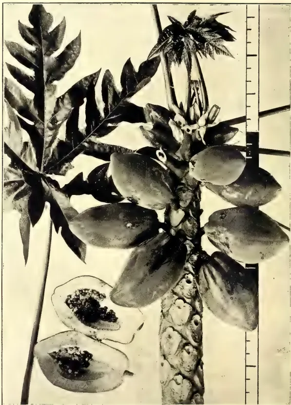
A black and white photograph of a papaya plant (Carica papaya). The image shows a branch with large, deeply lobed leaves and a cluster of papaya fruits. One fruit is sliced open, showing the seeds inside. A ruler is visible on the right side for scale.Photo by
H. F. Macmillan.
THE PAPAWE.
(CARICA PAPAYA.)
(See p. 527.)
THE
TROPICAL AGRICULTURIST
AND
MAGAZINE OF THE
CEYLON AGRICULTURAL SOCIETY.
VOL. XXXII,
COLOMBO, JUNE 15TH, 1909.
No. 6.
Reviews.
NITRO-BACTERINE AND GREEN
MANURING.
LEGUME BACTERIA.
BY S. F. EDWARDS AND B. BARLOW.
Bulletin No. 169 of the Ontario Depart-
ment of Agriculture.
A somewhat heated controversy has recently been raging in the pages of gardening and scientific papers at home as to the precise value of certain cultures intended to encourage the growth of the nitrogen-absorbing nodules upon the roots of leguminous plants. As most of those interested in agriculture are now well aware, the majority of plants of the pea and bean family, which includes such well known local representatives as Crotalaria, Albizia and Dadap, possesses the singular power of absorbing and fixing the free nitrogen of the air and making use of it as food. This power depends upon the presence, within certain lumps or nodules borne upon the roots of the plants, of particular forms of minute bacteria, which are gifted with the exceptional faculty of accumulating nitrogen. Within the last few years it has been found possible to isolate these bacteria from the leguminous plants which constitute their natural habitat, and to induce them to grow and multiply in artificial surroundings and upon artificial food.
So far the matter was one of purely scientific interest. The question next arose whether these artificial cultures might not be made use of to encourage the growth of the nodules upon the roots of leguminous vegetables and other useful plants belonging to the same family. Although a series of attempts had already been made to prepare useful artificial cultures of these bacteria, the problem was still in a purely experimental stage when journalistic eyes chanced to fall upon it, with the result that the cultures were immediately spread abroad, with much flourish of advertisement, under the name of nitro-bacterine.
As regards the value of nitro-bacterine in horticulture and agriculture, opinions are still much divided. Careful comparative experiments have been carried out by several competent workers with a view to determining the relative growth and yield of leguminous crops treated with nitro-bacterine and of similar crops untreated. The results have been somewhat contradictory. The truth seems to be that in some cases the soil in which the seeds were sown was already well provided with the necessary bacteria, and that when this was the case the addition of further supplies made little or no difference to the growth of the plants. On the other hand, in soils which were poor in the particular bacteria required, inoculation of the seeds with cultures of the bacteria
506[JUNE, 1909.appears to have been attended with good results.
We have recently received a bulletin from the Ontario Department of Agriculture in which successful experiments of this kind are described. Special cultures prepared by the bacteriologists of the department are now being distributed to the Canadian farmers.
The directions for use sent out with the cultures are sufficiently instructive to be worthy of quotation. They are as follows:—
"DIRECTIONS FOR INOCULATING SEED
WITH NITROGEN-GATHERING
BACTERIA.
Each legume requires a different culture.
This bottle contains sufficient bacteria for inoculating sixty pounds of . . . . . seed.
All the culture may be used on less seed without harm.
The culture is good for the season of 19 . . . . .
This culture is sent you with the understanding that you will use it as directed and report to us the result of your experiment. Follow directions carefully, or failure may result.
1. Cover the seed with water and let it soak for two hours.
2. Drain off the water. This may be done by heaping the seed on a cloth on the ground, or Nos. 1 and 2 may be done in a grain bag.
3. Mix one pound of dry granulated sugar with each bushel of wet seed, and let the seed stand thus over night.
4. Next day pour a little clean cold water into the bottle of culture, shake until the jelly is well broken up, pour it over the seed and mix thoroughly.
5. Plant at once, just as you would uninoculated seed. If the seed is too wet and sticks together, spread it in a shady place for about ten minutes. It should be neither wet nor dry, but as moist as it can be handled. In case of a mixture of clover with other seed, it is advisable to treat the clover separately, mixing just before sowing.
6. Do not open the bottle until you are ready to treat the seed, and do not treat more seed at one time than can be sown in a day.
7. At least a small plot should be planted with untreated seed for comparison, and this should be planted first.
8. Send us in the empty bottle with your name and address, a small sample of the inoculated seed for further laboratory tests.
9. After the seedlings are one month old, search for nodules, 'little bunches' on the roots. Examine for nodules, again after three months. During the season note number and size of nodules and vigour of plant growth from treated and untreated seed."
We have at present no data for deciding whether similar cultures would prove of benefit in Ceylon. It is just possible that by their aid particular species of leguminous plants might be induced to make good growth in districts where they do not flourish at present.
One of the greatest difficulties in establishing herbaceous leguminous plants in old and worn-out tea estates is occasioned—at least in part—by the absence of the necessary bacteria in what is practically subsoil, now that the original soil has been largely washed away. If suitable cultures can be made and applied at a reasonable cost, so as practically to insure success at the first planting of the leguminous species, a great saving of money and time will be effected in carrying out one of the most important measures available for the improvement of a worn-out estate.
Whatever may be the value of nitro-bacterine and other similar preparations in promoting the growth of leguminous plants, there can be no question as to the value of the leguminous plants themselves when returned to the soil in the form of green manure. In the case of tea cultivation the value of green manuring has been amply demonstrated on the Peradeniya Experiment Station and elsewhere. It is not possible to name any particular plant as being the best for this purpose—in different localities different varieties flourish best, and Dadaps, Albizzias and Acacia decurrens are all good in districts suited to their growth. On the whole we are inclined to recommend most strongly the herbaceous species, for instance, Crotalaria, or even still smaller forms such as Desmodium. Such plants not only provide organic material which may be returned to the soil, but they also effectually prevent the washing away of the valuable surface soil during the period of their growth. It is very possible that creeping leguminous plants may be found of value in rubber clearings, since they may be expected to combine the functions of accumulating nitrogen with that of preventing the growth of weeds, but upon this point we have as yet very little data available.
Numerous varieties of herbaceous leguminous plants are being collected from all parts of Ceylon, as well as from
JUNE, 1909.]507India, the Federated Malay States and elsewhere. These are being cultivated upon the Peradeniya Experiment Station with the object of obtaining seed for distribution and trial at different elevations and on different soils. Specimens of the roots and nodules of each promising variety are to be sent to the Nitrobacterine Co. for the preparation of a special culture for each.
The habits of the various leguminous plants which may be expected to prove useful in this way differ considerably. They vary from the upright bushy forms with more or less woody creeping
stems to the low creeping species which entirely cover the soil and only attain a height of a few inches. Some again are of no value as food for cattle, whilst others are grazed upon with relish. It is possible that within a few years the grazing of cattle upon rubber estates may prove the best means of keeping this crop in a vigorous and healthy condition. Nitrobacterine may prove careful in establishing such leguminous herbage, and it is hoped that experiments in this direction may be undertaken.
R. H. L.
(From the India Rubber World, Vol. 39, No. 4, January, 1909.)
What is the yield of a rubber tree? Simple as the question may appear—and it is asked incessantly—giving an intelligent answer to it is by no means simple. One must consider what varieties of rubber are involved, where the tree grows, whether "wild" or "cultivated," and, if the latter, the conditions under which planted. A remark may be recalled here from a report by a former British Consul at Para writing of native Heveas in the Amazon region: "two trees growing close together and under apparently precisely similar conditions will often vary very much as regards their yield."
There is no question that rubber trees do yield, else what would become of the rubber market? On one day during the past month the Customs authorities at New York reported the arrival of rubber of an invoice value exceeding $2,000,000. The Custom House at Para dealt last year with 80,638,800 pounds, and some years the figures have been larger. Besides, the Amazon region doesn't supply all the rubber used. We hear over and over again that the Brazilian rubber is derived from trees scattered in dense forests, and that the native tappers gain a very small amount of latex from each day's tapping. But the Para shipments argue either a tremendous number of wild rubber trees or a very considerable average annual yield per tree.
Since it must be admitted that trees do yield rubber, the question remains, how much? This subject, as relating to forest rubber, has been treated at some
length in former numbers of The India Rubber World, including quotations from Mr. Vice-Consul Temple, who once reported having had access to the books of some operators in the Brazilian field, indicating an average yield of 2.2 to 3.3 pounds yearly per tree. He was of the opinion, however, that very many trees were being worked with no larger average yield than 1.1 pounds. His report, however, had to do only with the state of Para, where the rubber fields have been worked longer and more thoroughly than in the river regions. It does not seem to have occurred to the Amazon rubber trade to consider the yield of individual rubber trees so long as total results are satisfactory. But chance details which have come to hand from time to time point to the probability of a yield of 4 to 10 pounds yearly per tree, varying with the degree to which estradas have been "worked out."
With the coming of cultivated rubber on plantations owned by capitalists and with shares listed on stock exchanges, the question of yields becomes of particular interest in connection with the analysis of company reports. If one tree will afford a given quantity of rubber, will 1,000 give a thousand fold? In considering any of the figures which follow—all relating to the yield of plantation Para (Hevea) in the Far East—it must be remembered that such yields may be influenced—
By the character of the soil, altitude, or climatic conditions,
By the coarseness or width of the planting,
By the frequency of tapping,
By the method of tapping,
By the care with which the latex is handled,
Gums, Resins,508[JUNE, 1909.Trees with short trunks of large girth may be more productive than taller ones of less girth. The commencement of tapping is determined by the size of the trees rather than their age, and all trees do not grow at the same rate. It may be pointed out that even in the most detailed rubber plantation reports up-to-date statements of yield, as a rule, include in one total the produce of mature trees tapped throughout the year and that of trees just come "into bearing," which may have been tapped once or twice only.
It would be desirable to have, from each of several well-managed plantations, a record of the yield of a definite number of rubber trees, of uniform size and age, tapped the same number of times in a year, by the same system, and with the same method of treating the latex. It is not wholly satisfying to have included in one total a large tree yielding five pounds or more, and a smaller tree from which half pound or less has been obtained. In default of such figures the following details have been culled from the sources most available.
In the latest edition of his "Hevea Brasiliensis" Mr. Herbert Wright has compiled a lot of data on the yields reported from rubber estates, though without any effort to establish any rules as to yields as related to the age of the trees tapped. From one of his tables we have taken twenty-three items, referring to as many properties, on which, in 1905, 166,740 trees yielded 215,933 pounds of rubber, or 1.235 pounds per tree. The average per tree on one estate was as low as .32 pound, the largest reported for anyone was 5.5 pounds per tree. A list of sixteen of those properties shows an average yield per tree of 1.351 pounds. Six estates showed averages per tree of 2 pounds, 2.2, 3.2, 3.25, 3.5, and 5.5 respectively.
From another table in Mr. Wright's book a list has been compiled of eight estates, on which 79,631 trees, in 1906, yielded 220,200 pounds of rubber—an average of 2.52 pounds. The average per tree on various estates was 2.03 pounds, 2.37, 2.46, 2.75, 2.79, 2.88, 3, and 7.1 pounds respectively.
A particularly interesting item appears in the report of the Anglo-Malay Rubber Co., Limited, for the calendar year 1907. On their Terentang estate 28,043 Hevea trees, aged 7-8 years, are stated to have yielded 105,655 pounds of dry rubber, or an average of 3.76 pounds per tree. On their Ayer Angat estate, however, 14,540 older trees (9-10 years) yielded only 42,970 pounds, or an average of
2.95 pounds. On the other hand, 5,440 trees on their Batang Bali estate mostly only 6-7 years, though a few were 9-10, gave 18,112 pounds, or an average of 3.32. The total tapping for 1907, on these and another estate, covered 68,236 trees, yielding 224,778 pounds, or 3.29 average.
An attempt has been made by the writer to analyse the ages of the Hevea trees tapped during three years by the Bukit Rajah Rubber Co., Limited. Taking account of the approximate ages of their trees, so far as can be gathered from the company's various reports, and their definite statements of the number of trees tapped and their yield, these results appear:
Year ending March 31, 1906.—Trees tapped 34,457, yield 33,203 pounds, average age of trees at end of period, 6.23 years, average yield per tree, .97 pound.
Year ending March 31, 1907.—Trees tapped, 88,341, yield 118,982 pounds, average age of trees, 5.94 years, average yield 1.345 pounds.
Year ending March 31, 1908.—Trees tapped, 89,295, yield 163,521 pounds, average age of trees, 7.27 years, average yield, 1.83 pounds.
Some very definite information is given in the report of the Highlands and Lowlands Para Rubber Co., Limited, for 1906. It is stated that on one block of 16 acres 807 Hevea trees, 9 years old, planted 30 × 25 feet, were tapped during three periods of the year mentioned, with these results: 2,500 pounds at the first, 1,469 at the second, and 1,773 at the third, or a total of 5,742 pounds—an average of 7.01 pounds per tree for the year.
During the business year 1906-7 the Federated Malay States Rubber Co., Limited, collected 32,175 pounds of rubber from 12,335 trees, wide planting—averaging 2.60 pounds.
It may be added that the total production of plantation rubber in the Federated Malay States for 1906 was 861,738 pounds, from 441,482 trees, of varying ages, or an average of 1.95 pounds per tree.
From all the preceding data it would appear safe to estimate not less than 2 pounds annually from trees, say 8 years old, with reason to expect an increased yield with greater age. But much larger yields, in exceptional cases, have been authenticated. Eleven-year-old trees on Culloden estate, especially tapped, gave 14 pounds of rubber from 8 months' tapping, and trees of unknown age (probably 20 to 25 years), from 10 to 25 pounds each in one year.
JUNE, 1909.]509Saps and Exudations.So far the maximum capacity of a cultivated Hevea would seem unsettled, meanwhile the conditions for a liberal production have not been agreed upon. A recent writer mentions five neighbouring rubber plantations in Ceylon, on which were employed an equal number of tapping processes, each strongly defended by the plantation manager using it.
NOTES ON RECENT YIELDS.Kuala Lumpur Co., Ltd., in the year ended June 30 gained 79,274 pounds of rubber from 39,543 trees (age not stated) or a fraction over 2 pounds per tree. This year more trees are being tapped, with the result that the four months ended October 31 yielded 60,740 pounds. The Company's last consignment of rubber to Antwerp was sold on November 19 at an average of 5s. 6½d. (= $1.35½ per pound). The latest Kuala Lumpur report refers to an average of more than 6 pounds per tree having been obtained from something over 10,000 trees on the neighbouring and older estates of the Federated Malay States Rubber Co., Limited, which are under the care of the same manager, Mr. E. B. Skinner.
Sumatra Para Rubber Plantations, Limited, in their first report, mention the collection of 62,700 pounds in 15 months, or an average of 3 pounds per tree, young and old. The rubber realised 3s. 4½d. (82½ cents) in London, after paying charges. The cost on the plantation is figured at 1s. 1.87d. (= 28½ cents) per pound.
RUBBER PLANTATION YIELDS (IN POUNDS).| 1907. | 1908. | |
|---|---|---|
| Vallambrosa Rubber Co. | ||
| Eight months to Nov. 30 | ... 144,584 | 169,731 |
| Kuala Lumpur Rubber Co. | ||
| Twelve months to June 30* | ... 51,998 | 78,274 |
| Perak Rubber Plantations: | ||
| Nine months to Nov. 30 | ... 22,670 | 36,534 |
| Yatiyantota Ceylon Tea Co. | ||
| Six months to June. 30 | ... 3,077 | 4,354 |
| Sumatra Para Rubber Plantations: | ||
| Fifteen months to June 30 | ... — | 62,700 |
| Pataling Rubber Estates Syndicate: | ||
| Seven months to July 31 | ... 37,752 | 40,035 |
| Federated (Selangor) Rubber Co. | ||
| Four months to July 31 | ... 5,658 | 15,785 |
| Anglo-Malay Rubber Co. | ||
| Eleven months to Nov. 30 | ... 196,109 | 312,050 |
| Seremban Estate Rubber Co. | ||
| Eight months to Sep. 30 | ... 79,167 | 100,418 |
| Perak Rubber Plantations: | ||
| Eleven months to Nov. 30 | ... 22,670 | 36,534 |
| P. P. K. (Ceylon) Rubber Estates: | ||
| Ten months to October 31 | ... 10,448 | 22,212 |
| Lanadron Rubber Estates: | ||
| Eleven months to Nov. 30 | ... 88,439 | 165,056 |
| 1907. | 1908. | |
|---|---|---|
| Anglo-Malay Rubber Co. | ... 22,450 | 34,062 |
| Lanadron Rubber Estates | ... 7,500 | 17,503 |
| Perak Rubber Plantations | ... 4,542 | 74 42 |
| Sumatra Para Rubber Plantations | ... 3,250 | 5,940 |
BY S. ROTHWELL.
During the last few years, very large areas have been planted up with rubber, and in many cases the planting is still in progress. Unless catch crops yielding marketable produce can be grown, in a similar way as Cassava is cultivated in Malacca, the capital which has been sunk in the formation of the estate gives no returns till the rubber trees reach a sufficient girth to allow of tapping. In the Straits Bulletin for 1906, p. 224, it is stated "that the Diamond Jubilee Estate in Malacca within two years of starting will have some 3,000 acres of rubber, the cost of which will be practically covered by the returns of tapioca cultivated between the rubber."
If the tree could be brought to the same girth in a shorter time so much the better. Now it is not necessary for the planter to spend large sums of money on artificial manures, which would, under the present system of clean weeding be largely washed away with the first heavy shower of rain, when a much cheaper form of manure is at his disposal, i.e., green manure, having other advantages than the actual manurial value. The term "green manuring" is generally understood to imply the cultivation of a crop of some sort, usually a leguminous one, ploughing it in, or cutting it, and in some way incorporating it with the soil when it has attained sufficient growth. Partly owing to heavy rains and rapid decomposition, tropical soils are in general very poor in nitrogen and organic matter. This can be remedied to some extent by the fact that growing herbaceous plants will take up the soluble nitrates from the upper layers of the soil, and some, having long tap roots, bring up available plant food from a considerable depth. Many plants of the natural order Leguminosæ have the power of assimilating and fixing free nitrogen from the atmosphere by the aid of bacteria, living symbiotically in the root nodules, thus gradually there is built up both humus to hold the soil together, and make it more retentive of moisture, and also a store of nitrogen for the nutrition of the rubber trees.
Besides the above, the following are some of the principal advantages
Gums, Resins,510[JUNE, 1909.obtained by growing herbaceous leguminous crops :—
(a) If properly done, there is a reduction in the cost of weeding, in fact this cost becomes practically nil when the green crop has become well established. The seeds of the "green manure" should be sown in regular rows, and when the plants have grown to a height of one or more feet varying with the species sown, such a dense cover will be formed that the weeds being deprived of the necessary light and air, either die out completely or have their growth considerably checked. At any rate seed formation will not take place.
(b) The partial prevention of wash. The word partial is used here, because on most rubber estates of a hilly nature the rows of rubber trees run straight up the hill, or in a slanting direction. The green crop if sown in rows between the trees will leave small channels between the rows of green crop for the soil to be washed down. To prevent this, the crop should be sown in rows across the slopes. The roots and stems of the plants will save a good deal of the soil.
(c) Protection of the soil from the direct rays of the sun. The bacteria which bring about nitrification are active within certain limits of temperature, but cease to work when these limits are exceeded. Hence the value of the green cover which will keep the soil at a more even temperature during the twenty-four hours, keeping off the direct hot sun's rays during the day, and to some extent preventing radiation of heat from the soil at night, allowing bacterial activity to be continued.
Much remains to be learnt about green manuring with herbaceous leguminous crops in the tropics, as to which species will give the best results in the different districts and at the various elevations, what amount of seed should be sown per acre, when to sow, what distance apart the rows should be, when to cut, etc. The planter may find out a good deal for himself, by looking carefully around his neighbourhood for likely looking plants, collecting the seeds, and sowing small areas and comparing the results, a record of which should be kept. In selecting a plant remember that it is desirable to have :—
(1.) Rapidity of growth to allow the crop to become established and to keep ahead of weeds.
(2.) Some plants are of a climbing nature which, though excellent as a "cover crop" or weed-smotherer, may take to climbing up the tree and thus incur labour in pulling it down.
(3.) There should be a good yield of green material per acre.
The following figures of experiments with Green manure crops in Antigua, West Indies, are quoted to show the great variation in yield per acre of a leguminous crop. These figures are, however, not applicable to Ceylon, as the crops were grown under different conditions :—
| lbs. per acre. | |
|---|---|
| Barbuda Bean (8 months) ... | 20,000 |
| Woolly Pyrol (Phaseolus Mungo) | 14,350 |
| Cowpeas Vigna sp. : | |
| White ... .. | 10,570 |
| Black eye ... .. | 9,440 |
| Clay ... .. | 8,440 |
| Red ... .. | 8,250 |
| Pigeon Pea (Cajanus indicus) | 4,950 |
| Polygonaceæ Buckwheat Fagopyrum ... .. | 4,922 |
| Brabicon Bean (Canavalia) sp. ... | 3,520 |
The number of plants which might be given a trial is very large, but when put through a course of selection would be greatly reduced, and perhaps only one or two would fulfil all the requirements.
As pointed out above, the same plant may not answer the purpose in each district. A plant growing say at 700 feet elevation might not give the best results at 1,500 feet, and even smaller differences than this may affect any particular plant.
The Peradeniya Experiment Station has a number of interesting plots of different leguminous crops, the number being added to as time goes on. One plot of para rubber planted 15 feet each way was marked out into 18" rows, a string was stretched along each row and coolies scratched a line in the ground about 1"–2" deep, and the seed was sown on at the rate of 10 lbs. per acre. Previous to the sowing no cultivation was given except the ordinary weeding with mamoties as practised on estates, and which cannot be strictly termed cultivation. At the time of sowing the surface soil was baked hard, but in spite of this the crop has grown splendidly, being at the present time 3½ feet high. It is very striking to see the luxuriant growth of the Crotolaria where the soil is loose, either from an accumulation of wash or from old cocoa pod holes. When the crop is cut and mulched with the soil, the results, which will doubtless be published will be of great interest.
JUNE, 1909.]511Saps and Excudations.BY JARED G. SMITH,
Special Agent in charge of the Hawaii Agricultural Experiment Station.
AND
*Q. Q. BRADFORD,
Assistant in Rubber Investigations.
(From the Philippine Agricultural Review, Vol. II., No. 2, February, 1909.)
A striking characteristic of the Ceara rubber tree is that it sheds its bark at frequent intervals. The outer bark is tough and papery. As a new growth of bark forms immediately outside of the cambium layer, the outer bark dries and sloughs off. This process is continuous.
Before beginning tapping the entire outer bark should be removed from the trunk without injuring the living inner bark. This is easily done with a curved-blade knife shaped like a pruning hook, making one vertical cut and peeling off the bark in rings.
There are four systems generally employed in tapping the Ceara and other rubber trees in rubber-producing countries. These are the half herring-bone, the full herring-bone, the spiral, and the vertical cut systems. The half herring-bone consists of a single vertical cut with laterals about a foot apart at an oblique angle extending half around the tree. The full herring-bone consists of a vertical cut with oblique laterals on both sides extending entirely around the trunk of the tree. The spiral is a single or double oblique cut extending from the bottom to the top of the tapping area without vertical channels. In the vertical system there are from one to half a dozen vertical cuts without oblique laterals.
The Ceara rubber tree differs from both the Castilloa and Hevea in the rapidity of the coagulation of the latex. For this reason it has been found that the system of vertical cuts is the best. The station has carried on a large number of experiments in the methods of tapping. It has been found that the average Ceara rubber tree stops its flow of latex by complete coagulation within from two to five minutes when the latex is permitted to flow in the wound without the use of water. By trickling water over the wound the period of flow may be extended to several minutes,
* Extract from "The Ceara Rubber Tree in Hawaii," Bulletin No. 16 of the Hawaii Agricultural Experiment Station.
but if the water is rendered alkaline with ammonia the period is extended sometimes from thirty to forty minutes.
It has also been quite definitely determined that a system of single or double vertical cuts, from 3 to 6 inches apart, without any oblique laterals except at the base, for the purpose of concentration of all the latex at one point, gives the heaviest yield of rubber and the least waste. A vertical cut is much more easily made than either the spiral, half herringbone or full herringbone oblique cuts. Another point in favour of the vertical cut is that the wound thus formed heals with the greatest rapidity.
The first cut should be extremely shallow. The cut should be flat, with sharp sides one-eighth of an inch wide, and, if practicable, not more than one thirty-second of an inch in depth—the thinnest possible shaving. It is especially important in young trees not to cut too deeply, because the bark is very thin, and there is great danger of permanently injuring the tree by cutting through to the cambium. The second tapping should be in the same cut without widening it. The next cut and the cuts of each succeeding day, as long as the tapping period lasts, should be to simply freshen the wound at one side only of the vertical incision. In this way the tapped area will be extended gradually in one direction around the trunk and will be followed by rapid healing of the wound from the opposite margin of the cut. The number of vertical cuts will depend on the diameter of the trunk. They should be no less than 4 or 5 inches apart, because the daily tappings drain the latex from the bark for from 1 to 2 inches in every direction from the wound. Enough uninjured bark must be left between the wounds to admit of rapid recovery and not to interfere seriously with the vital processes of growth.
The best time to tap Ceara rubber trees is at night or during the early morning. If tapping is done during the day it should be on the shady side of the tree. The reason for this is because of the tension of sap and latex in the body of the tree. Evaporation of water from the leaves is most rapid during the daytime. The greatest activity in pumping up water from the soil is also in the day. Under the action of direct sunlight the leaves accumulate great quantities of starch and sugars. At night there is a transfer of carbohydrates in soluble form from the leaves to those parts of the tree where growth and the forma-
Gums, Resins,512[JUNE, 1909.tion of new tissues are taking place. During the hours of darkness there is almost complete cessation of evaporation from the leaves, but the roots continue to take up water from the soil. This results in tension and explains the reason why the flow of latex is much heavier and more rapid during the night. Coagulation is also retarded by the lower temperatures at night.
The best time to tap seems to be between 12 o'clock midnight and 7 o'clock in the morning. It is believed that some adaptation of the miner's lamp to be worn on the hats of the workmen will be necessary. If the tapping operation is postponed until earliest dawn it would largely increase the number of men required, owing to the few hours during which profitable tapping can be carried on.
The best season of the year for tapping has not been determined, but the indications are that it would be during the rainy season. In Hawaii the Ceara rubber trees can be tapped at any time of the year, but this operation should not be carried on during the resting period when the tree is bare.
As a result of many trials, it was found that a cloth or canvas water bag was of great advantage in collecting the rubber. A water bag large enough to hold about a quart of water, made with alternating narrow strips of thin porous cloth and oiled cloth or canvas, is tied around the tree 6 or 7 feet above the ground, just above the tapping area. These bags are of cheap construction and will last for many months if properly cared for. A water bag should be fastened to each tree before the tapping begins and should be left on the tree during the whole tapping season.
At the base of the tree the water and latex are collected in zinc, galvanized-iron, copper, aluminium, or enamelled cups, or in wooden or earthen vessels. Iron vessels should not be used because of the corrosive action of the ammonia recommended for use in tapping. The water and latex are collected at one point at the base of the trunk by inserting a thin sheet of zinc obliquely beneath the outer bark. The channel and spout thus formed are not to be fastened into the body of the tree because of injury to the wood. The tin or zinc collar and spout should be left on the tree during the whole tapping season.
The knife should cut a shallow, flat channel with vertical margins and should be capable of delicate adjust-
ment, because the bark of the Ceara rubber tree is very thin.
The preliminaries having been attended to, a water carrier goes through the grove, filling each of the bags with a pint of water containing ammonia at the rate of one-half ounce per gallon of water. The rubber contained in the latex of young trees coagulates more slowly than that in the latex from old trees, so that in tapping a young grove a minimum amount of ammonia will be required. The water carrier should remove all scrap from the tree, so that the wound will be clean and fresh for the tapper.
Immediately following the water carrier comes the tapper, who rapidly freshens the wound or cuts a new channel, as indicated above, and passes on to the next tree. As soon as all the water has dripped out of the bags, collectors follow the tapping gang, empty the containers into barrels or other receptacles for transportation to the coagulating house or central mill.
The first operation in coagulation is to strain the latex to remove particles of bark or earth or other larger impurities.
A number of methods of coagulating latex are in use in rubber-producing countries. Among these are acetic acid, sulphuric acid, trichloroacetic acid, common salt, heat, evaporation, churning or agitation, and centrifugal force.
In the experiments which we have undertaken, as stated above, ammonia is added to the water which flows over the wound in the bark of the tree, made for the purpose of extracting the latex from the tree. The action of ammonia seems to retard coagulation. Latex containing moderate quantities of ammonia will remain without any appreciable coagulation for considerable periods, provided the mixture of water and latex is not violently churned, stirred, or shaken. In order to get rid of the ammonia, dilute sulphuric acid is added until the mixture shows a neutral reaction with litmus paper. The addition of sulphuric acid to a point of neutralization results in the formation of a small quantity of ammonium sulphate in the liquid. After standing about one hour, a boiling concentrated solution of ammonium sulphate is poured into the neutralized latex and the whole is gently heated or left standing. As the mixture is heated the rubber separates from the latex and water mixture and rises to the surface. The temperature of the liquid should not be permitted to go above 170° F., as the elasticity of the rubber is affected by high temperatures.
JUNE, 1909.]513Saps and Exudations.The same result—that is, complete separation of the rubber from the water and latex mixture—can be obtained by allowing the latex to stand for a period of two to six hours after adding the ammonium sulphate solution, without heating; but the saving of time warrants the use of heat.
The rubber can also be coagulated by adding acetic acid without the use of heat. After adding the acid the mixture should be churned or stirred.
A very pure quality of rubber can be produced by the use of ammonium sulphate, because this salt precipitates the proteids, the proteids being compounds very liable to rapid decomposition. However, from the manufacturer's standpoint, it seems to be immaterial whether the rubber is free from proteids and other impurities.
Sulphuric acid is also a coagulant, but it should only be used in very dilute solutions.
Formalin may be used in conjunction with either ammonium sulphate, acetic acid, or sulphuric acid. When present in large excess, especially in the presence of ammonium sulphate, it has a rapid coagulating action. While the rubber produced by its use is of very high quality, the formalin preventing decomposition of the finished product, this compound is as yet too expensive for general plantation use.
Rubber may be obtained from the water and latex mixture without the use of ammonium sulphate by churning, by adding either acetic or sulphuric acid, with or without heat, or by simply allowing the liquid to stand until putrefaction begins.
One of the advantages of the collection of latex by means of water trickled over the wounds is the possibility of producing a product entirely free from bark, earth, twigs, and other gross impurities and adulterants. Where rubber has been collected from wild trees the common method has been to simply slash the trunk and branches, permitting the latex to flow down them or fall upon leaves placed upon the ground beneath the tree. This method is a very wasteful one, and the rubber thus obtained is of uniformly low value because of the amount of dirt and other impurities. This method is not at all adapted to modern plantation conditions.
Every effort should be made to produce rubber of the purest and best quality; and it is believed that such rubber can best be produced from the Ceara tree by the use of considerable quantities
of water in all of the processes connected with the collection and coagulation of the latex.
A new and rapid method of germinating Ceara rubber seeds, perfected at La Zucualpa Botanical Station (Mexico), is described by Dr. Pehr Olsson-Seffer as follows:—
Place a layer of fresh horse manure in a box, to the thickness of about 6 inches, spread the seeds on the surface and cover with about one inch of the same material mixed with a small quantity of sand. The soil should be slightly packed and the box covered with glass. If put in a warm place or in the sun, germination will take place very quickly. The seedlings should be planted as soon as they are an inch or two high and some manure added to the soil. After such treatment the seedlings will grow very rapidly. In planting at stakes the holes should be made as large as possible, or at least 4 feet square. The soil should be well weathered, and if too sour, some lime should be added before planting.
(From the Indian Trade Journal, Vol. XIII., No. 159, April 15, 1909.)
There was a time in the not distant past when the sole value of lac depended upon the amount of colouring matter it contained; but, thanks to the introduction of aniline dyes, its value now largely depends on the entire absence of colour. In other words, hundreds of years ago lac established for itself a position amongst the world's commercial products as a valuable dyeing agent; to-day there is an ever-increasing demand for it owing to its value in the varnish, chemical, electrical, and a host of other trades. It is admitted on all sides that the methods in vogue of preparing lac for the market are—as they were centuries ago—crude, slow and wasteful. All efforts to improve them have hitherto failed, but this failure perhaps is not to be wandered at as, considered from a scientific point of view, we know very little about lac. It is generally defined as a resinous exudation secreted on the twigs of certain species of trees by an insect belonging to the scale insects and known as Tachardia lacea, or the lac insect. The changes by which the lac is produced do not appear to have been systematically investigated; but this may not be alto-
65 Gums, Resins,514[JUNE, 1909.gether a disadvantage from an Indian stand-point, because when everything knowable about lac is revealed we shall probably be favoured with a synthetic article much on the same lines as synthetic indigo and camphor, of which one hears so much occasionally.
The present method of converting lac into what is known commercially as shellac comprises three stages. In the first the twigs, broken from trees and containing lac incrustations, are crushed in mills more or less archaic, and the wood and the bark are separated by methods hardly less so. The granular lac thus obtained—known in the trade as “seed lac”—is submerged in water for a day or more with frequent agitation in order to extract the lac dye, which, if allowed to remain, would detract seriously from the value of the finished shellac. This process is a tedious and unsatisfactory one, for no amount of washing will remove the whole of the dye from the lac, which in consequence has to be sold at a figure which is largely determined by the amount of dye it contains. Attempts have been made on many occasions to overcome this difficulty by the use of chemicals such as sodium carbonate and borax, and, although these articles facilitated the extraction of the colour, they did so much damage to the resinous constituents of the lac that this process had to be abandoned. In the third stage in the preparation of shellac the washed product is melted and strained while hot through cloth bags on to the floor beneath the fire, and is then stretched into thin sheets, in which form the highest grades of shellac are met with commercially. There are, of course, other grades of shellac which, owing to the impurities they contained, occupy a lower level in the market and are not always manufactured exactly on the same lines or with the same amount of care.
Now if the laborious washing, which even under the most favourable circumstances, does not extract anything like the whole of the dye, could be done away with; if the whole of the lac produce of this country could be worked up into the highest grade of shellac with little trouble and cost, and if the whole of the dye could be extracted
leaving a pure shellac of the cleanest quality, it seems reasonable to suppose that a great impetus would be given to lac industry in this country, and would also tend to alter for the better the conditions that now govern for the lac industry generally. Well, this point now seems to have been reached, and particulars of the new process by which the desired end may be accomplished are to be found in a Note on the Manufacture of Pure Shellac, by Mr. P. Singh, F.C.S., Acting Imperial Forest Chemist, just issued in the Chemistry Series of the “Indian Forest Memoirs,” Volume I, Part II. The process is said to be a very simple and efficient one. It consists in dissolving lac in methyl alcohol (wood spirit), which treatment has been proved to have the merit of completely dissolving out the resinous matter from the lac leaving the dye undisturbed. The net result is that lac of all grades, however crude, may be rapidly converted into shellac of the very purest quality. The apparatus required is not costly and is illustrated in the Note we are reviewing. The only recurring expenditure appears to be on account of the wood spirit used; but this, it is claimed, is not large, as the bulk of the spirit is easily recoverable for future use. To sum up, the chief advantages claimed for the new process are that every description of lac, whether “coagulated,” “phunki,” or otherwise, can be manufactured into pure shellac; that the washing difficulty is completely overcome; that the necessity for mixing rosin with seed lac for the purpose of facilitating the refining process is avoided; that an increased yield of shellac is obtained; that the shellac made is much finer and purer than in the case of the old method; that less labour and expenditure are involved, and that the highly refined character of the new shellac will ensure a ready sale and higher price in the world’s markets and particularly in the United States, where the introduction of the free alcohol law, it is said, has led to the increased consumption of shellac. At all events, Mr. Singh’s Note is bound to command the earnest attention of the lac trade, and we may add that copies of it may be obtained from the Superintendent of Government Printing, India, 8, Hastings Street, Calcutta, at the moderate price of 8 annas each.
JUNE, 1909.]515BY S. A. ANDREW.
(From Tropical Life, Vol. V., No. 2,
February, 1908.)
The origin of the peanut is the subject of much controversy, though it is considered by many that it is probably a native of Brazil. Whether this statement be true or not, it is certain that it was cultivated extensively in foreign countries before its merits were recognized in the land of the origin. The merits of this now important crop were recognized by slave-dealers who loaded their vessels with it as food for their passengers. It was not extensively cultivated in the United States before the war between the States. The scarcity of rations during the latter part of that historic struggle fixed the highly nutritious qualities of this peer among nuts on the attention of the individual members of the various armies then in the field, and immediately after the war much attention was given to its cultivation, especially in the South. At the present time, 7,000,000 bushels of nuts are produced annually with a commercial value of at least $15,000,000, and it is safe to say that those grown exclusively as food for hogs, and which are not gleaned at the time of harvest, would add another $3,000,000 to the value of this crop. At the present time a large proportion of the nuts are eaten, not as a regular part of the daily ration, but at odd times by all classes of our citizens.
The peanut is admirably adapted for the production of oil, and might be used advantageously for various other commercial purposes, but the demand for it as human food has been such in the past as to effectively prevent this. Since there is almost an unlimited area of country admirably adapted to its growth, not only in the United States, but in foreign lands as well, and since its cultivation is not difficult, there is no reason why it should not be grown extensively enough to meet all demands. The highly nutritious value of the peanut, and its favour among all people who are familiar with it, lend colour to the belief that its cultivation under the best modern practice will long remain a profitable business. This should stimulate and encourage many farmers,
who are favourably situated, to devote a portion of their land to this important crop. Moreover, the peanut has some special advantages which make its utilization as a rotation crop peculiarly desirable. It belongs to the family of legumes, and has, therefore, the power of gathering atmospheric nitrogen from the air in very considerable quantities. It produces also a rich and nutritious hay valuable for the maintenance of live stock. Since it is adapted for growth on rather thin and sandy soils as a rule deficient in vegetable matter, its power of largely obtaining its own nitrogen from the inexhaustible stores of the air is a most desirable attribute.
The richness of the peanut as a food is better appreciated when it is stated that the kernels contain about 29 per cent. of protein, 49 per cent. of fat, and only 14 per cent. of carbohydrates. Peanut vines with the leaves contain between 11 and 12 per cent. of protein, 5 to 6 per cent. of fat, and 22 to 32 per cent. of carbohydrates. They are thus more nutritious than timothy hay, and should rank with that made from red clover. Peanut meal, which is the residue after the oil has been extracted, is a footstuff of high value, and is appreciated and extensively used in foreign countries. It contains something like 52 per cent. of protein, 8 per cent. of fat, and about 27 per cent. of carbohydrates, and, therefore, ranks above cotton seed-meal, which is one of the most richly concentrated meals found on the market to-day. Like other legumes, the peanut contains considerable amounts of nitrogen, phosphoric acid and potash, the latter two, of necessity, having to be largely supplied to the soil in a commercial form. But on the whole, the peanut, as seen from the foregoing statements, is one of the most desirable and satisfactory crops which can be grown.
The peanut prefers a rather sandy, loamy soil, which should contain enough vegetable matter to make it light and porous, and also to prevent its becoming too dry. Since the trade demands a light-coloured shell, nuts of equal flavour and quality grown on other soils do not find a ready sale; and it may be proper to state at this time that the peanut can be grown on a very wide range of soils, provided they contain a sufficient amount of lime. This information should encourage many, who
Oils and Fats.516[JUNE, 1909.only wish to grow limited areas, either for grazing down by hogs or for home use, to experiment with this important crop. There is an abundance of good peanut soil throughout the Atlantic seaboard. This area extends from New Jersey to Florida, and there is also much land on which this crop can be cultivated profitably in the Mississippi valley. Only a small proportion of the available land is now being tilled.
The peanut will thrive under a great variety of climatic conditions provided there is a season of at least five months free from frosts. It has been thought by many that the peanut only grows well in a warm climate, but this is an error, since the nuts develop chiefly during the cool weather in the late summer and early autumn. The weather conditions most favourable to maximum production are an early spring, warm, even summer temperatures, with a well-distributed rainfall, and a comparatively dry autumn. Of course, climate has an influence on the character and composition of the nuts, since it has been demonstrated that in tropical countries a larger per cent. of oil is obtained. As to any other influences which climate may exert, but little is known, and the subject has not been as extensively investigated as the importance of this crop would seem to justify.
Since the peanut is adapted for growth on a soil which is not naturally rich in any of the essential elements of plant food, the proper fertilization of the crop becomes a matter of the utmost importance. It was found at the Tennessee Experiment Station that 60 bushels of peanuts with a ton of hay would remove from the soil about 85 lb. of nitrogen, 15 lb. of phosphoric acid, 32 lb. of potash, and 47 lb. of lime. Of this amount, about 41 lb. of nitrogen, 6 lb. of phosphoric acid, 20 lb. of potash, and 42 lb. of lime were found in the hay, and since the vines would either be left on the ground or fed to stock, and the resulting manure applied to the land, the peanut is seen to be a comparatively easy crop on the land so far as soil exhaustion is concerned. Besides, as has already been pointed out, it gathers a large percentage of its nitrogen from the air. Since it has been amply demonstrated that the yield of the crop may be greatly increased
by judicious fertilization, and since 100 bushels should be a fair average crop rather than the low yields now obtained, the importance of using sufficient amounts of all the essential elements to increase crop production and counteract the call made on the soil by the plant during the various stages of its growth becomes apparent.
The needs of a crop of peanuts may be appropriately supplied by using 1,200 lb. of high-grade acid phosphate, 400 lb. of dried fish, and 400 lb. of muriate of potash. This would give a mixture containing 1.6 per cent. of nitrogen, 10.2 per cent. of phosphoric acid, and 10 per cent. of potash. It may be stated that this ration has been found one of the most satisfactory to use on this crop. Another mixture which has been tried quite extensively is 1,300 lb. of acid phosphate, 300 lb. of dried blood, and 400 lb. of muriate of potash. This mixture would contain about 2 per cent. of nitrogen, 10.4 per cent. of phosphoric acid, and 10 per cent. of potash.
(To be continued.)
(From the Journal of the Department of Agriculture, Western Australia, Vol. XVIII., Part I, January, 1909.)
The common sunflower (Helianthus annuus) is a plant of considerable economic importance and is largely cultivated in Europe, Asia, and America for its seeds. According to the Agricultural Ledger, 107, No. 1, an area of 216,000 acres is devoted to sunflower culture in Europe alone, the average return being roundly stated at about fifty bushels of seeds per acre. In Russia, where the sunflower is most extensively cultivated, the seeds are eaten raw or cooked, or used for the extraction of oil, which is said to be excellent for table use and may be substituted for salad or olive oil, for all domestic purposes. The seeds are also of considerable value as food for birds, and are largely used in America for fattening poultry. The oilcake which remains after expression of the oil forms a valuable cattle food, being of great nutritive value and easily digested, while the leaves and stalks also possess highly nutritious properties.
JUNE, 1909.]517BY C. CONNER,
Assistant Director of Agriculture.
(From the Philippine Agricultural Review, Vol. I., No. 12, December, 1908.)
The annatto plant, known locally as achuete, grows throughout most of the islands and does well on any fairly rich soil. Some have thought that it could be grown and marketed at a profit.
The following table gives the amount used and value in the United States during a period of five years:—
Fiscal year ending June 30.
| Quantity (pounds). |
Value. $ |
||
|---|---|---|---|
| 1903 | ... | 307,218 | 9,210 |
| 1904 | ... | 274,915 | 7,447 |
| 1905 | ... | 301,513 | 22,959 |
| 1906 | ... | 281,574 | 22,156 |
| 1907 | ... | 651,595 | 51,128 |
Annatto is used in the United States for colouring butter and cheese, and it is highly probable that the values given here are for the manufactured product.
The seeds are gathered and offered for sale in most of the markets in the Islands and are collected by the Chinese for export. They sell for about 4 cents per pound retail.
The following interesting extract is reprinted from the Bulletin of the Imperial Institute, Volume 11, No. 2, 1908:—
Annatto is the orange-red colouring matter occurring as a layer of pulp on the outside of the seeds of the annatto plant, Bixa orellana, a small tree indigenous to South America, but now extensively cultivated in many tropical countries.
The supplies of annatto which reach the United Kingdom at present come principally in the form of seeds from the East and West Indies, and as paste from French Guiana or Brazil.
The annatto plant grows luxuriantly in almost any soil, and in the Tropics will thrive up to about 3,000 feet above sea level. The soil is prepared for annatto in much the same way as for cotton. The seeds, previously softened by soaking in water, are planted in furrows at distances of 8 to 10 feet apart. As the young plants come up they
should be provided with artificial shade to protect them from excessive heat, but later on a large amount of sunshine is necessary for their proper development. After three months the plantation should be weeded and superfluous plants removed. Beyond periodical weeding the plantation requires little attention.
Full crops of seed may be obtained in three or four years from the time of sowing, but the collection of seed may be commenced usually after the first eighteen months or even earlier. The fruit capsules are gathered when they have acquired a reddish colour and are just beginning to break open. This takes place from the pointed end along the edges and causes the seeds to be exposed. It is said to be advantageous to cut the branches along with the capsules, as in this way the plants are prevented from growing so high as to make collection a matter of difficulty, and they bear better.
The capsules are opened out on mats or cloths and allowed to dry completely in the sun, being turned over from time to time.
Three or four days' exposure is usually sufficient to accomplish this, and the fruits are then collected in heaps and beaten with clubs or threshed to separate the seeds. These are separated from the empty pods by winnowing or sifting, and again exposed to the sun until they are completely dry.
The seed is usually packed in barrels for export, but manufacturers using annatto in the United Kingdom recommend that they should be packed in double sacks holding from 1½ to 2 hundredweight each. Great care should be taken to see that the seeds are dry before they are packed, as if they are at all damp they are liable to become mouldy and lose colour.
The prices obtained for annatto seed in London in the last few years have varied somewhat. Ceylon and Madras seed fetched from 6 pence to 7 pence per pound at the end of 1905, but gradually fell to 3½ pence or 4 pence during 1906. Jamaica seed similarly fell from 8 pence at the end of 1905 to 4 pence in October, 1906. At present 4 pence per pound may be taken as the average value. Java
Dyes and Tans.518[JUNE, 1909.seed, which goes principally to Liverpool, is at present worth 4 pence to 5 pence per pound. The most recent quotations available are 4 pence per pound for Madras seed and pence per pound for Ceylon seed,
There is a fair demand for annatto seed in the United Kingdom, and the annual imports are said to fluctuate between 75 and 100 tons, and manufacturers of annatto preparations are of opinion that the demand is likely to grow.
There is said also to be an increasing market in the United States for annatto, but this is likely to be met by a larger output from Jamaica. It should be borne in mind, however, that the annatto plant can be grown practically anywhere in the Tropics, and that plantations have been formed in many tropical countries, and that if prices rose there would probably be an immediate increase in output from plantations already in existence.
At one time considerable quantities of annatto paste were imported into the United Kingdom and other European countries from French Guiana and Brazil, but although text-books dealing with annatto dye still refer to the paste as the principal form in which annatto is imported, there is reason to believe that this trade has almost ceased. Thus no export figures for annatto paste from French Guiana have been given in the statistical returns for the French colonies since 1900. Annatto paste was imported into the United Kingdom from Ceylon in considerable quantities some years ago, but owing, it is said, to a falling off in the quality of the material, the demand for it diminished.
Manufacturers in the United Kingdom, and merchants handling annatto paste, say that the reason for the decline in the market for this article is entirely due to the practice of adulterating it in the countries where it is produced, and that if a clean paste of good quality were produced it would command a ready sale. Unless, however, a paste of excellent quality can be made it is better to export the seeds.
In Brazil annatto paste was formerly made by crushing the seeds in hot water, decanting the liquid containing the colouring matter in suspension, and evaporating it to a pasty consistency in shallow pans over a fire. More recently, however, in Brazil and French Guiana the uncrushed seeds have been mixed with hot water and the mass agitated until the whole of the pulp carrying the colouring matter has been washed off.
The muddy liquor so produced is decanted through a sieve to remove the seeds. The liquor is then allowed to stand until the insoluble colouring matter held in suspension settles to the bottom when the useless supernatant liquid is poured off and the wet paste or colouring matter is dried by exposure to sun heat. The paste so produced can be prepared for the market in several ways. It may be formed into rolls weighing from 4 to 5 pounds each, and, after drying, wrapped in banana leaves and then packed in boxes or sacks, as is the custom in Brazil; or it may be made into small cheese-like masses weighing from 1 to 2 ounces, and these, when quite dry, packed in boxes holding from 4 to 5 hundred-weight. The French Guiana variety of annatto is superior in quality to the Brazilian (Spanish).
It will be seen that no special machinery is required for the production of annatto paste by these processes, but doubtless the extraction of the colouring matter could be done more efficiently and rapidly if mechanical agitation were employed to keep the seeds in motion while they are in the water, and similarly the separation of the colouring matter from the mother liquor and its subsequent drying could be more cleanly and rapidly effected by the use of filter press.
Owing to the very small demand existing for annatto paste in the United Kingdom at the present time it is impossible to obtain a satisfactory idea of its commercial value, but it appears that Cayenne paste from French Guiana fetches about 10 pence per pound in France at present, and that good qualities of Ceylon paste when imported into the United Kingdom were worth, as a rule, from 1 shilling 6 pence to 2 shillings per pound.
At present annatto is principally employed as a colouring agent for food materials such as butter, margarin, and cheese. It was formerly used in considerable quantity for dyeing silk, but is now little employed for this purpose as better dyes less fugitive to light are available.
By A. M. SAWYER.
(From the Agricultural Journal of India, Vol. IV., Pt. 1, January, 1909.)
The watershed separating the Sittang from the Salween in Burma is succeeded beyond its western declivities by a series
JUNE, 1909.]519Dyes and Tans.of forest-clad hills and dales commonly known as the "foot-hills" of the range. This tract is intersected by winding streams whose waters are clear in the dry months of the year. In the rains, the waters of these streams carry a good deal of silt which fertilises the cultivated lands of the valleys of this region.
The light-free sandy loams overlying the reddish and yellowish sub-soils of the Toungoo District in Burma are preferred by the Shans for the cultivation of turmeric and most other crops. The humid atmosphere of these parts favours the growth of the ordinary crops.
Turmeric and other crops of the same order grow luxuriantly in shady spots.
Wild turmeric and ginger are indigenous in ever-green forests of Burma. The economic uses of these plants are few and local. The leaf shoots, stems and root stocks of the pungent and fragrant varieties enter into the varied diet of the Shans. Some varieties are only used medicinally.
The cultivated kinds of these two crops are grown by the Shans with care separately. A mixture of other crops is usually grown.
The following is a brief description of the method of growing turmeric by the Shans:—Rhizomes of the plant are selected at harvest in December—January for planting in the following season. They are stored under soil and are kept there until the planting season, April—May. The plant is practically dormant in the season intervening between harvest and planting-time, therefore the buried rhizomes, though sometimes watered, do not send up shoots or suckers. They lie dormant through the rainless months; at planting time they are unearthed and broken up into sets of suitable size.
The crop is sometimes grown on newly cleared land, in which the trees are felled and burnt. The larger logs and stumps that survive the flames are allowed to lie upon the land. When the
South-West monsoon rains set in, holes from three to six inches in breadth and depth are dug uniformly with a narrow hoe, a foot or fifteen inches apart. Into each of these pits one or more sets are planted, covered with earth and pressed down by the foot of the planter. The crop is weeded once or twice, but no other cultivation is given. At harvest, the rhizomes are dug up and stored for seed or prepared for market. Those intended for sale are carried in baskets to the nearest stream and thoroughly washed. They are then boiled in spring water, until they yield to pressure between finger and thumb. After this they are thinly spread out upon mats to dry thoroughly in the sun. They are then sorted into different classes and stored in bamboo baskets for use or sale.
On the foot-hills of Toungoo, three kinds of turmeric frequently occur side by side over one and the same clearing or field. They are:—
All three kinds have broad light green leaves that stand from three to five feet above the ground. The rhizomes of the first command the best price; those of the second are comparatively coarse; while those of the third, unlike the root-stocks of the first and second, contain no yellow colouring matter and have, therefore, been named 'white turmeric' by the Shans. The plant is not regarded as turmeric in the sense in which (1) and (2) are, though it too is a species of curcuma. Its rhizomes, when cut, show a buff-coloured surface and, when crushed, emit a remarkable odour somewhat resembling that of mangoes. The plants of this kind are pulled by the planter as they are believed to injuriously affect the rhizomes of the better kinds. This variety may, however, have special merits which at present are not understood, but which require investigation.
BY WILLIAM RAITT.
Amongst the fibrous products of our tropical and sub-tropical forests, none is more likely to take a more leading place as a papermaking material than bamboo. Its accessibility, being generally found
within reach of waterways down which it may be rafted; the size of the stems, giving a larger return per head per day for the cutting and collecting force employed than in the case of the smaller annual grasses; the ease with which it yields to the same methods of treatment which have been so successful with wood, together with its great abundance, mark it out as the fittest and most
Fibres.520[JUNE, 1909.natural successor to the position occupied by the Spruce and Pine trees during the last thirty years; while its power of self-reproduction makes it impossible that the process of exhaustion of supply, which has taken place in the case of these timbers, can ever happen with bamboo.
Its use in modern papermaking is by no means a new idea. Thirty-five years ago, an English papermaker (the late Thos. Routledge) proved its suitability, and but for the advent of woodpulp, it would probably have been adopted then as a leading staple. The nearness of the Scandinavian forests and the apparently inexhaustible supply of both wood and water-power, drove it into a background from which it may now emerge by reason of that same inhaustibility having proved only apparent. This period of seclusion has not been without its compensations. Thirty-five years ago, the acid process which has been so important a factor in the development of woodpulp, was only simmering in the brains of its inventors, and there was room for doubt as to whether the alkaline method, then in vogue, would prove cheap enough for bamboo. Woodpulp had to pass through a long period of experimental struggle before its manufacturing processes reached anything like economic perfection. No such time of difficulty and doubt need be anticipated for bamboo. Wood has done the pioneering for it; the acid process stands unchallenged for good results and economy, and its application to bamboo presents no more difficulty than its transfer from spruce to pine. It is in fact an easier material to treat than either of these, for its porosity, due to its system of capillary sap tubes, assists the entrance of the liquor employed to break down the ligneous tissue, in a manner not possessed by any of the woods hitherto employed.
Besides its porous character, bamboo presents other features in which it has distinct advantages over wood. The preliminary preparation of the latter is an expensive and unsatisfactory process. The bark has to be carefully removed. All the hard deeply sunk resinous knots, so common a feature in coniferæ, have to be carefully bored out, and all old scars and wounds with their accretions of resin and dead tissue must be carefully excised. In spite of the greatest care, some of these defects are bound to escape attention, to afterwards appear in the finished product as disfiguring chips of undigested and unbleachable material. Bamboo has neither bark nor resinous knots, and the only part requiring elimination is the nodes, which are
so clearly defined as to present no difficulty. The reason for separating them is that, being harder and denser than the internodes, they require severe chemical treatment, and are therefore best dealt with separately.
The percentage of pure fibre (cellulose) contained in any raw material is of course of great importance in estimating its value. Few of the possible sources of paper-making fibre contain more than half their raw dry weight, many contain only a third or less. In this respect, bamboo occupies a very satisfactory position. My own long series of laboratory analyses, approximate very closely to an average of 51 % of cellulose for the internodes, and 45 % for the nodes, and in actual practice on a commercial scale I have found an all round yield of 45 % to be quite reliable.
With all fibre-yielding plants, there is a distinct stage of growth at which the fibre is at its best both in quantity and quality. In the case of the annual grasses and bast fibre plants, this stage is just previous to, or during flowering, and before the formation of seed, after which rapid lignification sets in involving deterioration of the fibre. Bamboo, however, from its peculiar habit of flowering only at periods of thirty to fifty years, does not permit of this simple indication being utilised, since except at these rare periods, all the stems we see mature, wither and die without flowering. It is therefore important to fix the age at which it will give the best results. In order to determine this, I have carried out a series of observations and experiments extending over nine years. The net result of these goes to show that bamboo is at its best for fibre soon after coming through its second monsoon (the monsoon in which the young stem first appeared being reckoned as the first), when it is from sixteen to twenty-two months old; at this age it has fully developed its branches and thrown off the hard, hairy, siliceous sheaths which protect the early development of these; and it has commenced with its own root system a life independent of the parent stem. It is at the age in which it is passing out of a sappy, riotous, overgrown youth, into a staid hardened middle age. Previous to this, sap, gums and waxes are in excess, and the fibre still immature in strength and toughness. If permitted to pass through a third monsoon, there comes an increase in the deposition of silica within the tissues, with a corresponding decrease in the percentage of fibre and a greater difficulty in isolating it, owing to the hardening of the ligneous tissue in which it is embedded.
JUNE, 1909.]521FibresIn the May number of the T.A. I indicated five tons of dry bamboo per annum as a fair average crop per acre. This is for stems of the age mentioned in the preceding paragraph, and has been arrived at by observations extending over several years on selected plots of poor to fair growth only. I purposely rejected figures obtained from plots of luxurious growth in order to err abundantly on the safe side. It is therefore a very conservative estimate. The Burma Forest Department put the general average for such stems at seven tons per acre, and they put the available bamboo jungle within reach of waterways in that province, at approximately 60,000 square miles. On these figures, and estimating a yield of 45 % of cellulose, Burma alone is capable of producing a hundred and twenty million tons of pulp per annum. The potentiality for the whole of South Eastern Asia runs into figures so enormous as to be beyond our grasp. My own estimate for Burma is five tons per acre on 20,000 square miles, giving an annual possible output of 28,000,000 tons. I am quite prepared to admit that this is too conservative, but even so, it is sufficient to establish the fact that the industry can never suffer from a lack of supplies as is now the case with woodpulp, of which the present annual demand is under 8,000,000 tons, and which may be expected to increase to 15,000,000 in twenty years.
The cost of raw wood sufficient to make a ton of pulp has now advanced to from £3 to £4. For bamboo, the same item amounts to £1. There is in this fact alone a prima facie case for bamboo, and carefully framed estimates indicate that a bamboo pulp worth £8 10s. in England, and £9 10s. in Japan, could be made here and delivered in either country for from £7 to £7 10s. per ton. On the capital required, these figures represent annual nett earnings, after providing for depreciation, of 40 %, and in the present state of woodpulp supplies, there is every likelihood of the values quoted rising.
(From the British Cotton Growing Association Third Annual Report,
No. 26, April, 1908.)
In presenting their Third Annual Report of the work carried on by the Association since Incorporation, the
Council have to congratulate the shareholders on the excellent progress made during the last sixteen months.
The previous reports have been for the periods of twelve months ending respectively on August 31st, 1905 and 1906. The West African Cotton Season does not end until November or December, and it was found very difficult and inconvenient to get all the accounts adjusted during the height of the Cotton Season. The Council therefore decided to make up the accounts to December 31st in each year. The present report consequently covers the period of sixteen months ending December 31st, 1907, and all future reports will be for the twelve months ending on December 31st in each year.
The Council wish to record their thanks to His Majesty's Government for the great assistance rendered in many directions, and also to the Officials of the various Government Departments, both at home and in the Colonies, who have taken an active part in forwarding the objects of the Association. It is a matter of especial congratulation that His Majesty's Government decided in July, 1907, to proceed with the construction of the Northern Nigeria Railway, which will open up the most promising new cotton field in the Empire. The monthly conferences at the Colonial Office have been continued under the chairmanship of the Right Hon. Winston S. Churchill, M.P., the Under-Secretary of State for the Colonies, and have been of material assistance in carrying on the work.
The Council regret to record the death of Mr. Theodore Gaddum, who had rendered most valuable services to the Association, more especially in connection with the work in India. They also regret that owing to ill-health Mr. John C. Aitkins, who has been connected with the Association since 1902, had to resign his post as Secretary. The Council appointed him as Treasurer, and also elected him a member of the Council, Mr. E. H. Oldfield was appointed Secretary in his place.
During the sixteen months the Council have met on nineteen occasions, and there have been ninety-nine meetings of Committees and Sub-Committees.
On December 6th, 1906, a Banquet was held, the principal guest being Mr. Winston S. Churchill. A farewell Banquet was also given to Mr. Churchill on August 23rd, 1907, on the occasion of his departure for East Africa. On both occasions the President (Sir Alfred L.
66 Fibres.522[JUNE, 1909.Jones, K.C.M.G.) most generously defrayed the whole of the expenses of the guests.
An Exhibition, illustrating more particularly the cotton growing movement in the West Indies, was opened on April 25th at the Offices of the Board of Trade in Basinghall Street, London, by the Right Hon. D. Lloyd-George (President of the Board of Trade).
An expedition in connection with cotton growing visited the West Indies in January, 1907, the expenses of which were paid by Sir Alfred Jones. The usefulness of this visit was unfortunately seriously interfered with by the earthquake at Kingston, Jamaica. The Council cannot express too strongly their feeling of gratitude that the members of the expedition escaped all harm in that terrible calamity.
In June, 1907, the Annual International Cotton Congress was held at Bremen. Mr. Henry Higson read a paper on the work of the Association.
In the autumn of 1907 an influential and representative deputation visited the United States, and attended the Conference at Atlanta. The Association did not take any official part in the same, but several members of the Council went out with the deputation. They are unanimous in the opinion that the work of this Association has not been commenced one moment too soon. They were much impressed with the determination on the part of the Americans to wrest from this country her pre-eminence in the manufacturing of cotton goods for export, and they were convinced that sooner or later the bulk of the United States crop will be required by the American mills. They are also of opinion that this Association has nothing to learn in America as far as ginning and baling are concerned.
Owing to the large and continued increase in the work of the Association, it was found necessary to obtain larger offices. These were completed in September, 1907, and should provide sufficient accommodation for such increased work as may be expected during the next three or four years, though if the work continues to grow in the future as it has done in the past, not only may further accommodation be required, but a large increase in the funds at the disposal of the Council will also be absolutely essential.
As will be seen from the Balance Sheet, the total amount of shares subscribed for on December 31st, 1907, amounted to £260,632, showing an increase of £13,359 only since 1906. The Council hope that those spinners and manu-
facturers who have so far subscribed nothing or only part of the agreed basis will take up the necessary shares in the immediate future, and they further hope that those shareholders who have so generously supported the Association in the past will subscribe for further shares after the last instalments have been paid on their previous holdings.
In view of the small amount of subscriptions coming in recently, the Council did not feel justified in continuing any further expenditure for canvassing. As will be seen from the Balance Sheet the expenditure under this heading, which in 1906 amounted to £1,597, was reduced to £707 in 1907, and has now ceased altogether.
In consequence of the large and continuous growth of the work and operations of the Association, and of the resulting heavy financial demands—over £50,000 being at one time locked up in West African cotton alone—the Council were compelled to take other steps to raise capital, and under their auspices the British Cotton Ginning Company, Limited, was formed, with a capital of £100,000, all of which has been subscribed. An agreement has been concluded under which the Company purchases from the Association its Ginneries and Plant, and then leases them back to the Association on rental for a term of years expiring in 1916. On the expiration of the leases the Association will repurchase the same, and in the meantime will work them on its own account, subject to the rental mentioned above.
In order to more effectually develop cotton growing in British East Africa, the Council handed over their work in that protectorate to the British East Africa Corporation, in which the Association holds a large number of shares.
The question of management has been occupying the serious attention of the Council during the past year. The increase in the work has been almost overwhelming, and in this connection the Council beg to call the attention of the shareholders to the following facts:—
(a) The capital of the Association and of the auxiliary companies now amounts to £450,000, as follows:—
| The Association | ... £260,000 |
| The British Cotton Ginning Co.... | 100,000 |
| The British East Africa Corporation | ... 60,000 |
| The Rhodesia Cotton Co. | ... 30,000 |
| £450,000 |
(b) The annual turnover in cotton alone now amounts to nearly £250,000, as follows:—
| 1905 | ... | ... | £ 49,890 |
| 1906 | ... | ... | 124,109 |
| 1907 | ... | ... | 247,630 |
(c) A large business is now growing up in marketing and insuring cotton, supplying stores, machinery, etc., for planters and others on which the Association earns a commission. The total commissions earned in 1907 amounted to £1,753 as compared with £628 in 1906.
(d) The permanent staff now amounts to 50, viz., 13 in England and 37 in West Africa.
It will, therefore, be seen that the work of the Association has grown so enormously, that it has been absolutely necessary to organise the management on a proper commercial basis. The Chairman (Mr. Hutton) was willing to continue the superintendence for a further period, but was unable to accept the sole responsibility of management. The Council therefore decided to appoint an Executive Committee of five altogether, with Mr. Hutton as Chairman. Messrs. Bell, Crapper, Howarth and Zochonis kindly consented to act, and were duly appointed. They will each be paid £100 annually for their services.
As will be seen from the Balance Sheet, the nett balance of the income and expenditure account shows a debit of £10,497 18s. 3d., as compared with £12,416 6s. 2d. in 1906, showing an improvement of £1,918 7s. 11d. These figures do not, however, convey a correct impression, for, owing to the accounts covering a period of sixteen months, the whole of the expenditure is included for more than a year's working, whereas only one crop has actually been marketed, and the profits on buying and ginning are no larger than they would have been if the accounts had only covered twelve months' working.
In view of the fact that the operations of the Association are now being placed on a commercial basis, the Council are desirous of rendering the accounts so as to show clearly the loss or profit made in each twelve months, and they have therefore decided to write off this year all doubtful assets. The whole of the buildings and machinery taken over by the Ginning Company have been written down to £64,043 4s. 8d., being the amount at which it has been agreed they should be transferred, and this sum now appears in the Balance Sheet as a debt owing to the Association by
the Company. The Council have also decided to write off the sum of £8,010 0s. 9d., being the balance brought forward of the plantation expenditure incurred in 1905. A further sum of £2,676 3s. 3d. has been written off, consisting of sundry small buildings, tools, implements, etc., not taken over by the Ginning Company, and the balance of £2,703 12s. 5d. after closing up the Sierra Leone account has also been written off. There has also been a further sum of £1,000 reserved to cover any possible loss on advances made to planters and others.
After these deductions the total deficit on the working of the sixteen months amounts to £27,218 16s. 11d., as compared with £25,538 12s. 9d. in 1906, but, as previously pointed out the comparison is misleading.
Attached hereto are the Balance Sheet, a Report on the work in the various colonies, and statistics of cotton grown in various parts of the Empire. From these it will be seen that the total production of cotton under the auspices of the Association has increased from less than 2,000 bales in 1903 to 26,000 bales in 1907, and has reached a total value of £400,000. The Council consider that the shareholders can congratulate themselves on the steady progress made, and they are convinced that, provided ample capital is obtained, the Association will shortly become a profit-earning body, and so be established on the only possible permanent basis.
BY THOMAS THORNTON, A.R.C.S.
(From the West Indian Bulletin, Vol. IX., No. 3, 1908.)
The history of the Sea Island Cotton industry in the West Indies is of very great interest because of the rapid progress that it has made. The improvement in the methods of cultivation that have been adopted, as the acreage extended, has also been most marked.
In six years cotton has grown to become a very important industry in many of the West India Islands, and has been the means of considerably improving the financial position of many of these Colonies.
Cotton was first planted on a commercial scale in the year 1902, when about 400 acres were put into cultivation. In 1903, this area was extended to
Fibres.524[JUNE, 1909.4,000 acres, in 1904 to 7,000, in 1905 to 9,500, in 1906 to 14,500, and for the season 1907-8, 20,000 acres are under culture in this crop.
There has been a general improvement in the quality of the lint produced, for the plants have become acclimatized, and at the same time the methods of cultivation and of preparing the product have received careful consideration. At the present time, the West Indies can successfully compete with any country in the world in the production of Sea Island cotton, and, in some instances, exceptionally fine samples have been produced.
When cotton was re-introduced into the West Indies, it was a new crop to all concerned. Managers of estates had to commence at the beginning, and labourers had to be trained. It had to be determined what methods of cultivation were likely to be the most successful, and many experiments had to be given careful trial. To-day we have sufficient data available to be able to indicate, in general, what methods are likely to lead to successful cultivation. There are, however, several points in connection with cotton cultivation that have not yet been satisfactorily settled, and, therefore, we must continue with experiments for some time to time.
The following points have become established and are adopted by our best cotton planters:—
As regards planting, great improvements have been made. Considerable attention is now given to the careful preparation of the land, and to the distances at which the seed is planted. In the earlier years it was thought by many that the greater number of plants to the acre would produce the greater yields, but now it has been fairly generally established that it is best to plant in single, straight rows, and where cotton is a rotation crop with canes, with the rows from 5 to 6 feet apart. The seeds, usually about four, are then planted at distances of from 18 to 20 inches apart in the rows.
Machines for planting purposes have been imported into Barbados and Antigua. At Dodds, Barbados, a machine has done very satisfactory work, and
several planters have similar ones on order. The machine is drawn by a mule and can be regulated to drop any number of seeds at distances required. It opens the ground, drops the necessary number of seeds, and covers them over, and, if required, it can be arranged to drop artificial manures at the same time as the seed. It is estimated that about six acres per day can be planted by one of these machines.
In some quarters, the falling off of large numbers of young buds and bolls has been experienced. As many as half the bolls that should mature under normal conditions have, in some fields, been shed from the plants.
A bad attack of aphides during the time that the plants are rapidly forming flowers and bolls will cause many of them to be shed, and it has recently been brought to notice at Antigua that young flower buds which are being shed contain the maggot of a small fly. It has not, however, been generally experienced that the general shedding of bolls is due to insect pests or to fungus diseases, for it has been observed that the following causes may result in an abnormal amount of this shedding taking place:—
It would appear, therefore, that the shedding of bolls is due to an abnormal physiological condition inside the plant, and that the question of moisture plays a considerable part in causing it to take place. To combat it, conservation of soil moisture and careful drainage should receive every consideration. It is very probable that constant stirring of the surface soil and good drainage will do much towards assisting the plants to mature the maximum number of bolls. In this connexion, the use of mule-drawn cultivators is likely to be of great service. They are extensively used for cotton in the United States of America, and have given great satisfaction in the cotton fields at St. Croix. They are at present being given a trial at Antigua, and it is possible that they will be experimented with in other islands.
JUNE, 1909.]525Fibres.In the picking and sorting of cotton, each year sees the work done more thoroughly. The spinners appear to be very satisfied with the manner in which the work is carried out. On some estates it has reached a high standard of efficiency, and there are now very few complaints of badly picked and prepared cotton being sent the spinners from the West India Islands.
There are natural limits which serve to determine more or less the quality of the cotton produced. The rainfall and the character of the soil are perhaps the most important factors.
Cotton grown in the driest districts is short and of a coarse nature. That obtained from localities where the rainfall is greater is generally both longer and finer.
When the soil is of a heavy character and retentive of moisture, the cotton produced has a tendency to become very weak and wasty, particularly if the rainfall is high. If, however, the soil is fairly light in character and very porous, the quality of the cotton does not appear to suffer. In St. Vincent, where the soil is sandy and very porous, the cotton is very strong, even though the rainfall is very heavy for cotton localities. In fact, no stronger cotton is produced in the West Indies than that of St. Vincent.
In most of the islands, owing to the presence of the leaf-blister mite, it is impossible to obtain more than one picking, but in Barbados, where this pest has not made its appearance, two, and sometimes even three, pickings have been obtained. The advisability of keeping plants to produce a third picking has occasionally led to important discussions. This last season there has been an opportunity to examine a number of cotton samples taken from individual plants from the first, second and third pickings, and it has been found that in each instance the best cotton is obtained from the first picking. The length of the cotton is greatest at the first picking. It decreases at each subsequent picking. At the second picking there is less weak fibre present, but at the third, the weak fibre may be present to a very abnormal extent. The second picking is rather coarse and brittle, and the third is too soft, and as the spinner says, is lacking in 'bone.'
It is probable that the coarse and brittle nature of the second picking is due to the dry season in which it is grown, and the soft nature of the third picking to the degenerate character of the plant due to age.
It should be borne in mind that the spinner does not want weak and wasty cotton, and when an island commences to supply it, spinners who buy are apt to look with suspicion on the cotton produced in that island. Irrespective of the trouble brought about by diseases, the quality of cotton they are likely to produce should influence the planter when deciding whether he shall grow third picking cotton or not.
The question of the supply of seed for planting has been given careful consideration throughout all the islands.
In 1902, arrangements were made by the Imperial Department of Agriculture for a supply of Sea Island cotton seed through the United States Department of Agriculture. This was distributed for the planting of 1903.
Towards the end of 1903, arrangements were made by the Imperial Commissioner of Agriculture, when he and Mr. Bovell were visiting the Sea Island cotton-growing districts of America, for a large supply of the best Rivers' and Seabrook strains of seed. This was used for the 1904 planting throughout all the islands.
For the 1905 crop, arrangements were being entered upon for a further supply from the Sea Islands, when information was received that the planters there were resolved not to sell their seed to 'communities outside South Carolina.' It was at first thought by West Indian planters that this was a hardship, but it has subsequently been demonstrated that it has really been advantageous to these islands, for the question of seed supply had to be very carefully considered and thorough selection practised. It was realized that some estates produced better results than others both as regards yields and the quality of the lint. The seed produced on these estates was therefore purchased. It was carefully hand picked, and all but the best developed seeds were discarded. In this way, the seed for the 1906 crop was furnished, and contrary to the expectations, and perhaps, the wishes, of the South Carolina planters, the quality of the crop reaped was greatly superior to that obtained from the seed imported for the previous season from the Sea Islands.
Fibres.526[JUNE, 1909.Since 1906, the seed for general planting purposes has been obtained in this manner.
From the beginning it was recognized that the above method of obtaining seed for planting purposes could be improved upon.
Plants grown from seed vary, to a greater or less extent, from one another. If there is any variation in the first generation, each succeeding generation, which is produced from parents with varying characters, will become more and more varied. It was necessary, therefore, in order to obtain a good, uniform quality of cotton, to adopt a system of seed selection in which certain individual plants, selected for their good qualities, are made the starting point each year.
In the first year after the supply of American seed was cut off, experiments in plant selection were commenced on seven estates in different localities of Barbados. In the next year (1906-7), this work was extended to ten estates in Barbados, to five estates in St. Vincent, and to the Experiment Stations at Antigua, St. Kitt's and Monserrat. This year the work is again being carried on throughout the different islands, and experiments have been commenced in the Virgin Islands.
The advisability of this careful selection work is now realized throughout all these colonies. The requirements of the spinner have to be considered and every effort made to produce that class of cotton that he desires.
One point which the spinner strongly emphasizes is that the cotton must be uniform. A careful examination of cotton on the plants in the field, shows that, although a large percentage of the different plants are producing a fairly uniform quality, yet there are some that produce a better, and others an inferior grade. When seeds are planted from an individual plant, a little variation will usually be found, but not nearly so much will be observed as when seed is taken from a general field crop.
Many plants also show a certain amount of resistance to disease, have a greater power to withstand adverse climatic conditions, are less liable to shedding of bolls, and they may produce a large yield of longer, finer, and stronger cotton.
This principle of selection of individual cotton plants is already giving exceedingly promising results.
At one estate in Barbados, in 1905-6, three plants were selected as the most desirable types. Two of these appeared to be of a very promising nature. In 1906-7, they were propagated in a nursery, and sufficient seed was obtained from them to plant a considerable portion of the estate, and it is estimated that it will be possible from this crop to obtain more seed, directly descended from these three plants, than will be required to plant the total cotton area of Barbados.*
On another estate, situated in a district with conditions very different from that above mentioned, two plants were last season finally selected. The plants growing from the seed obtained from one of these appear to be exceptionally promising, and this strain will be tried on a commercial scale during the coming season.
By carrying out these experiments, varieties of plants, especially suited to local conditions of soil and climate will be obtained, and by making the best plant in the nursery, each year, a fresh starting point, a gradual improvement will take place. Instead of producing a crop with divergent characters, there will be, each year, a tendency for the quality of the lint to become more and more uniform. The proportion of weak fibre will be reduced, the length of staple and the proportion of lint to seed improved, and the general productiveness of the plant increased.
(From the Indian Trade Journal, Vol. XII., No. 155, March 18, 1909.)
At the fourth Indian Industrial Conference, Mr. J. N. Banerjee read a paper on "The Aloe Fibre Industry." We give a summary of the principal points dealt with:—
The fibre trade is one which has made quite rapid progress in India, while the field for its expansion is most ample. Experience serves daily to bring home to our mind the necessity of utilizing waste lands. In the interior vast tracts are lying fallow on account of a want of knowledge on the part of the surrounding villagers
* Seven bales of cotton directly descended from one of these originally selected plants (No. 303—see West Indian Bulletin, Vol. VII., p. 159) have been reported upon by cotton brokers as follows:—'It is the most serviceable class of cotton produced in the West Indies, and if it gives a better yield per acre than the finer descriptions—as it probably will—we think it is most suitable for extensive cultivation.'
JUNE, 1900.]527Fibres.as to how to make them productive of wealth. The object of the present note is to draw the attention of our countrymen in general, how easily we can amass a large fortune at a trifling cost. The main reasons for not making use of the above industry are as follows:—(1) The general ignorance about the industry; (2) the comparative abundance of other species of fibre-yielding plants which can be easily and profitably grown, and with whose fibres and with the means of extracting which the people have long been familiar, and (3) the want of some simple, cheap and efficient machine or appliance suited to their means for extracting the fibre.
Practical experience in decorticating this fibre leads to the following conclusions:—600 plants to the acre, feet between each row of plants. 20 leaves, annual yield per plant. Average weight of one leaf, seers, per cent. yield of fibre to leaves. 225 maunds of leaves per acre. 5 maunds 25 seers dry clean fibre per acre. Prime cost of one maund of fibre works at Rs. 6, including wear and tear of machinery, depreciation, etc. Present sale price in Calcutta, Rs. 12 per maund of machine-cleaned fibre. Plants can be worked four years from the time of planting out. There are conflicting opinions as to the exact life of this plant. However this may be, it appears to be not less than 25 to 30 years.
Before, people used to extract fibre in two ways, viz., (a) scraping and (b) maceration, but a machine suited to all classes for extracting the fibre of agave and pineapple leaf and plantain sheath can be had at Rs. 15 and Rs. 50 each. The machine is strong and simple in construction, portable and efficient to easily extract the fibre. A number of these machines may be run by
bullock gear or any other power where available. The fibre extracted is uniform in quality and length, and consequently is best adapted to manufacturing purposes and fetches a high price in the market. The working of the machine is so simple that any man can work it successfully by two hours' practice.
Now I shall explain two other separate methods for extracting fibre, pointing out the inconvenience one has to suffer.
(a) Scraping.—The leaves are cut, the sharp spines removed with a knife and about six inches cut off from the top of the leaf. The leaf is then beaten with a wooden mallet on a smooth stone, the beaten leaves would then be scraped on a board with a blunt knife, water being sprinkled upon it from time to time until the gum or greenish portion of the leaves were removed and only the clean white fibre remained, the board being held firmly by the toes. The fibre would then be dried in the sun and afterwards bundled. The fibre obtained by this process without washing or bleaching, though very clean and free from pulp, cannot fetch high prices on account of its shortness.
(b) Maceration.—As in the previous method of fibre extraction the leaves are cut and the spines removed. The whole leaf is then beaten with a wooden mallet and thrown in bundles into a tank (far away from the city to avoid the noxious smell) in which it is left to macerate for three or four months or until the pulps are quite decomposed. The bundles are then taken out, washed as jute, dried and bleached in the sun. The fibre obtained by this process though longer than that obtained by scraping is not very clean, and hence cannot fetch even nearly half the value. Machine-made fibre is the best.
(Carica Papaya.)
By. H. F. MACMILLAN.
The Papaw is one of the most important and earliest fruits introduced into Ceylon. A native of Tropical America and some West Indian islands, it has been established and cultivated in Ceylon since about 1670, having been brought to the Island in the time of the Portuguese. It also appears to have
been introduced early and grown in all hot countries. In India and China its history is traced back to 1611 and 1656 respectively. The large hollow fruits, borne in a cluster at the base of the crown of leaves, are much relished as a desert by some persons, being also sometimes used in an unripe state as a vegetable. The "flesh" or pulp of the fruit is usually of a pinkish colour, and of the consistency of firm butter. It is agreeably refreshing, and considered an aid to digestion, owing to the pepsin (papain) which it contains. It
Edible Products.528[JUNE, 1909.is considered best for eating when taken with a little sugar and fresh lemon or lime juice. The fruit varies in shape somewhat, that of some varieties being nearly round and of the size of a large melon; but the most common form is oblong or narrow-shape, with a tapering point, varying from 10 to 15 inches long by about 3 inches in diameter. The peculiar property of the leaves in rendering meat tender is well-known, and appears to be put commonly into practice by cooks in Ceylon. In other countries even more powerful properties are ascribed to the Papaw-tree, and close proximity to it is sometimes considered sufficient to effect the end in view. The Papaw is a small quick-growing, sub-herbaceous, branchless tree, belonging to the Natural Order Passifloraceæ or "Passion-fruit" family. In the West Indies vegetable pepsin, which is obtained from the unripe fruit, is prepared and exported to Europe, &c., for use in medicine. Sir George Watt mentions the use of papaw juice, in India, in softening tasar cocoons and thus facilitating their being reeled.
BY J. M. LONSDALE,
Agricultural Expert to the Court of Ward.
(From the Madras Agricultural Calendar, 1909.)
Among the improvements introduced on the Sivagiri Home-farm in the Tinnevelly District the most important are the following:—
Green-manuring with Kolingi.—The seed is gathered from the waste lands when ripe about the month of July. Coolies are paid one measure of paddy for one measure of thrashed Kolingi seed. It is then kept in a dry place and occasionally dried in the sun till pishannu paddy is harvested in February, March or April. As soon as possible after a plot has been harvested the land is ploughed once and if the soil is hard it is cross-ploughed also. If the soil is so dry and hard as to prevent ploughing immediately after harvest, then every opportunity is taken of ploughing after the showers of rain which usually fall in April and May, but the earlier the land is ploughed and the seed sown the better will be the germination. Three to five heaped Madras measures are then sown broadcast, and it is covered by ploughing once and cross-ploughing with a light wooden plough. No further
cultivation is necessary. It must not be irrigated. The crop is allowed to grow till August or September, when every opportunity should be taken of ploughing once through the crop in the dry state after the showers of rain which usually fall during these months, in order that weeds may be destroyed and the soil aerated. The Kolingi, being deep-rooted, very little will be up-rooted by the plough, and the uninjured plants will grow much better and seeds previously buried too deep or too shallow will germinate. In October irrigation water becomes available, the plots of Kolingi are then flooded and ploughed in puddle. If the Kolingi is very thick and the plants tall it is advisable after flooding, but before ploughing, to pull the Kolingi up by the roots and then spread evenly over the plot. It is then easily trampled in by ploughmen and cattle whilst puddling. Thus by spending about six annas on seed and doing a little extra labour in the dry season, when the work on the farm is slack, a saving of Rs. 10 to Rs. 15 per acre for poonac or jungle leaves can be made, and often a great deal of time is saved and all big ryots know how important it is not to be late in the transplanting of paddy. Kolingi grows best in light loamy soils. It does not thrive well in stiff clays or land which is water-logged.
Single Planting of Paddy Seedlings.—This is a question which affects most of the south and west of this Presidency and some parts of the north also. When it is considered that there are about 74 lacs of acres of wet land in this Presidency, the ways and means of reducing the amount of paddy seed used per acre must necessarily be of great importance to most of the ryot class. It has been proved conclusively at Sivagiri that the amount of seed used per acre can be enormously reduced without reducing the yield by transplanting single seedlings instead of a bunch varying in number from two even up to twenty. This is because the paddy plant possesses the property of throwing out new shoots when planted singly, but which does not occur to any great extent when paddy is planted in bunches. It is difficult at first to teach the coolies to plant singles, but when this has been done there is a direct saving at least equal to the value of the seed saved, as there is no extra cost for labour. One point, however, until recently has been overlooked, i.e., the rate per acre at which seed is sown in the seed bed must be reduced to at least 100 Madras measures per acre in order that the roots of the seedlings shall not be so closely matted together, otherwise, the transplanting coolies
JUNE, 1909.]529Edible Products.cannot separate them easily into single seedlings. The average seed rate in the home-farm last year was sixteen Madras measures per acre or about 40 lb. of seed, and it is hoped that it will be possible to still further reduce this quantity to about eight Madras measures per acre when the coolies become more expert. This characteristic of throwing out new shoots is called "tillering." Most varieties of paddy in the south have partially lost their powers of tillering, but it has been observed that these varieties, if they are planted singly year after year, gradually regain the power to tiller.
Seed-selection.—Seed is specially selected every year from the local varieties of paddy which prove most profitable and also from the introduced varieties. This is used as home-farm seed the following year. Some selected seed is also available for sale to ryots. If a large quantity of selected seed of any particular variety is required, an order should be sent to the Fram Superintendent early, e.g., if it is pishanam paddy, order not later than January. If it is kar crop, not later than June. The selection is done by picking out the best ears in the field immediately after the crop is cut. These are bundled and thrashed separately and the seed is carefully dried in the sun and stored in large earthenware pots. Special attention is paid to picking out ears which are quite true to the variety and quite free from disease. Care is also taken that all the grains in the ear are fully ripe. An ear is rejected if many of the grains have already been shed from it, and also if the glume or outer skin of the grain is empty. Seed is not usually selected from kind, unless it is a variety of paddy which is specially suited for water-logged soils like Kulavalai paddy. On the other hand, ears are picked from a crop growing on a plot which has been subjected to drought, even though the ears are not quite so large and good as ears of the same variety growing on a plot which has not been subjected to drought. One of the chief points to be considered in the selection of most varieties of paddy seed is to try and increase the drought-resisting power of the variety, even though the yielding power is slightly decreased.
Dry Cultivation of Paddy Lands.—Except on very sandy soils the dry cultivation of wet lands has been found to have a very good effect. If ploughmen and bullocks can be spared from the work of thrashing, carting grain and stacking straw, the plots are ploughed immediately the crop is taken off the ground, provided the soil is not already too hard. If this cannot be done, the
land which is not cultivated with kar crop paddy, is ploughed whenever there is an opportunity after the occasional showers of rain which fall from the beginning of April to the end of September. The main effects of this dry cultivation are:—
Many ryots ask "How will the cattle be fed if the wet land is ploughed up during the dry season?" The reply is that more is lost in paddy than is gained in grass, and the shortage in grass must be replaced by the growth of sunn hemp and other valuable fodder crops which can be grown at a very small cost and preserved in stacks until required.
BY T. B. YATAWARA, RATE-MAHATMAYA.
Transplanting of paddy was for the first time started at Gampolawela in two different fields; and the crop raised from both of them, I am glad to be able to report, has been greater than on fields not so planted by 27.50 per cent on each acre, but the cost, I must say, is prohibitive.
Artificial manure containing nitrogen, potash, and phosphoric acid was tried. A seven acre block of padi land was divided into seven lots of an acre each, thus:—
| 1 | 2 | 3 | 4 | 5 | 6 | 7 |
|---|---|---|---|---|---|---|
In lot No. 1 no manure of any kind was used at all; No. 2 was manured with 4 cwts. of crushed bones; No. 3 with 4 cwts. of crushed bones and cwts. of sulphate of potash; No. 4 with 4 cwts. of crushed bones and cwts. of blood-meal; No. 5 with 4 cwts. of crushed
67 Edible Products.530JUNE, 1909.bones, cwts. of sulphate of potash and cwts. of bloodmeal; No. 6 with 20 cart-loads of cattle manure; and No. 7 with 30 bags of "road dust."
The yield of the several plots has been as follows:—
| Lot. No. | Cost of Manuring. | YIELD. | Total. | |||
|---|---|---|---|---|---|---|
| Bus. Padi. | Value. | Value. | ||||
| R. c. | R. c. | |||||
| 1 | Nil. | 53 | 79.50 | 1,625 | 16.25 | 95.75 |
| 2 | 19.00 | 57 | 85.00 | 1,710 | 17.10 | 102.10 |
| 3 | 30.94 | 80 | 120.00 | 1,800 | 18.00 | 138.00 |
| 4 | 30.53 | 72 | 108.00 | 1,950 | 19.50 | 117.50 |
| 5 | 42.30 | 87 | 130.50 | 2,100 | 21.00 | 151.50 |
| 6 | 15.00 | 91 | 136.50 | 2,300 | 23.00 | 159.50 |
| 7 | 9.00 | 98 | 145.00 | 2,450 | 24.50 | 169.50 |
From these figures it will appear that it is cheaper to fertilise padi fields with cattle manure or "road dust" (dust collected from the roads). Owing to the scarcity of cattle, cattle manure is not available in large quantities, and road dust cannot be easily obtained unless the collector is prepared to go to gaol for causing damage to public thoroughfares. The best fertiliser, no doubt, is "road dust."
BY JAS INSCH.
(From the Indian Agriculturist, Vol. XXXIV., No. 1, January 1, 1909.)
By way of preface it may be said that the word 'manure' originally meant to work with the hand, or to till, but we no longer attach this old meaning to it, for the word is now applied to any substance added to the soil to increase its fertility. We must not forget that thorough tilling of the soil is in itself an invaluable means of providing plant food, and is the first and most important method of increasing the fertility of the soil. Dunging, green manuring and bhil-soiling, or applying defective soil constituents, is the second consideration in good planting practice, and, lastly, we have the direct provision of real plant-food or the application of fertilizers. Before speaking of manures and their application I should like to say a few words about the roots of a tea bush, and how plant food is digested and absorbed. If you carefully lift a healthy young tea plant growing in rather light soil and wash away the earth as completely as possible, the root system will be visible. You will observe that while the bulk of the soil has been readily
washed away, each rootlet retains near its tip a few grains of sand, which adhere somewhat firmly. These rootlets are provided with delicate hairs, root hairs, and they represent the active portion of the root whereby water and dissolved mineral food are taken from the soil. Before food can nourish a plant it must be rendered soluble. This transforming process from the insoluble to the soluble, from the non-diffusible to the diffusible, is called digestion. In plants there is an external and internal digestion to be noted.
Before the delicate root-hairs can take in the various mineral substances required by the plant from the soil, these substances must pass into solution. The root hairs must first come into intimate contact with the fine particles of the soil; and as the outer layer of the wall is converted into mucilage, the two stick together as it were. Then an acid juice (digestive juice) is excreted, and the material in contact is dissolved wholly or partially. This is external digestion, and is peculiar to plants from their special mode of feeding.
Digestion is preliminary to absorption; and the soluble materials must enter into circulation to be carried where required. The mineral matters dissolved by the excretions from the root-hairs are absorbed by the same means. The delicate, pliant, thin-walled root-hairs are admirably adapted for this purpose. In contact with the particles of soil, they smear them, as it were, with the acid excretion, and the dissolved matters are taken in to be passed along from cell to cell. The external absorption, however, is confined to water and mineral matter and various gases. The roots principally absorb water with its dissolved salts: but they can also take in gases such as oxygen. The various food stuffs taken in or manufactured by the plant are conveyed from one place to another to nourish the different parts.
The following substances are taken up by the roots of the tea bush and are absolutely essential to the life and growth of the plants. The necessary foods are—water, nitrates, phosphates, sulphate, lime, potash, magnesia, iron, and oxygen. It is highly important to recognise the fact that roots have not the same power of selecting food material as, say, an animal actuated by taste and smell. A root is obliged to take up any substance which is dissolved in the soil water and capable of passing or oozing through the vegetable membranes of the root. If such a membrane comes in contact with water charged
JUNE, 1909.]531Edible Products.with mineral and other substances, such minerals as possess the power of penetrating the membrane ooze through and continue to do so until the liquid on the internal side of the membrane is as highly charged as that on the external side. This action of soil water passing into the root hairs is called osmosis, and the same process goes on when the planter of epicurean taste soaks his prunes in gin.
If the plant uses any of the materials dissolved in the soil water, they are constantly withdrawn from the inner surface of the membrane and employed for the purposes of plant nutrition, a fresh quantity entering to take the place of that which has been utilised. Thus the total amount of these useful substances taken into the plant by the root may be actually very great, despite the insignificant quantity contained in the external soil water. On the other hand, the passage of any useless or injurious substances into the plant is limited in so far as such materials are not steadily utilised as fast as they pass through the membrane, and so the internal liquid in contact with the absorbing surface soon gets as highly charged as the liquid without, and absorption is then at an end. Here I should like to caution you that when dealing with concentrated chemical manures, particularly nitrate of soda, great care should be taken not to apply more than is recommended, or else the plant will be forced to absorb more nitrate than is necessary for its healthy welfare.
A complete chemical analysis of our old tea soils would generally show that there is a large surplus of plant food present, and yet, unless the soil be enriched with additional manures, the yield of our bushes falls off. Hall, in his book on the soil, says 'that even the poorest soil contains the nutrient material required by an ordinary crop many times over,' yet we know that crops respond vigorously to dressings of manure which only add a fraction to the plant-food already stored in the soil. Evidence of the enormous stores of plant food in the soil and the comparative slowness with which they can be utilised has been proved at Rothamsted Experimental Station.
We are driven to conclude that the nitrogen, potash, and phosphoric acid are present in the soil in some other mode of combination than the form in which they exist in manures: so that although they may be in the soil, they are in such a state as to be very partially
of service to the growing plant. The soil must, therefore, be regarded as possessing most of its plant food in states of combination that cannot be utilised by the plant, and these forms slowly pass, by weathering and other changes, into material which is available for the crop.
Chemists have recently learnt to distinguish between the total plant food in the soil, and the available or "present consumption" supply. Fertility analyses are now made by agricultural analysts whereby the approximate amount of plant food soluble in the soil water and in the acid sap of the root is determined. Without accepting present methods as beyond all question it is yet an undoubted fact that whereas the old time "complete" analysis was more often than not a misleading and mischievous guide, the modern "fertility" analysis has been found a sound and reliable indication of the real requirements of the soil. Chemical analysis is not the only means of solving this problem, and perhaps the very best way of deciding upon the actual needs of the soil is that of experimenting with bushes which have been treated with nitrates, phosphates and potash alone and combined.
A large number of practical experiments, as we all know, have recently been carried out at the Heeleaka Experimental Station, but, I believe, the soil there is of a sandy nature and the results from using the same manures on our soils might be misleading.
The Heeleaka experiments have taught us a great deal, but I should recommend every planter to carry out a careful series of experiments on the Heeleaka plan on his own garden; at any rate all the experiments that have given good results ought to be tried.
The principal constituents taken by a tea bush from the soil are nitrogen, potash and phosphoric acid. A manure to be of any value must, therefore, contain one or more of these substances; for the most fertile soils could not endure for any length of time the constant loss of these ingredients without, in time, becoming impoverished. The principles of the application of manures are to return to the soil those ingredients which have been removed by cropping, to make up deficiencies in soils which are naturally poor, and to supply the necessary food substances for the growth of the future crop. We must not forget, however, that manures not only add to the fertility of the soil by supplying direct plant-food, but that some of them have
Edible Products532[JUNE, 1909.the valuable property of improving its mechanical condition. This property is not possessed by all the manures in use, for those like nitrate of soda only give up plant-food, while cow dung and green manures not only supply the bushes with food, but also greatly improve the mechanical condition of the soil and help it to retain moisture. The question as to the propriety of improving the really improveable tea soils is, in any individual case, to be satisfactorily answered by ascertaining at what expense, in relation to the probable profit, the process may be performed. Assam-gardens getting As. 8 per lb. for their tea could use more expensive manures than Dooars gardens only getting, say, an average of As. 5 per lb. The question we must consider is will the cost of manures be fairly returned by the profits of our increased crops; we require to ascertain, in the first place, what will be the probable return, within a moderate length of time, for our outlay, always keeping in view the prospective prices during the period. Such, at least, is the principle of calculation, which ought naturally to guide all planters, as their outlay is strictly pecuniary.
We will now consider the manures commonly used on tea gardens. The oldest and most popular of manures is cow-dung mixed with jungle, old thatch, and the excreta of horses and goats. Cattle manure is very often treated with indifference as to the effects of exposure; it cannot be too strongly stated that this is an abuse. Practically all tea soils, with the exception of hills, are benefited by dressings of dung. By its use a light soil is assisted to retain moisture and withstand drought, a heavy soil is rendered lighter and more porous, and is, therefore, easier to work, carbonic acid is evolved which helps to corrode phosphates and liberate potash from the soil.
The plant-food in dung is relatively small and the chief advantages resulting from its use as a basis of successful manuring are rather secondary than direct. We may assume that in a ton of average manure which has been kept under cover during the rains there are 8 lb. of nitrogen, about the same amount of potash and 5 lb. of phosphates. Stable manure is rather richer than cow manure, but more liable to loss on keeping; goat manure is peculiarly rich in nitrogen. I should recommend applying cattle manure at the rate of 7 to 8 tons per acre; this can be done including the cost of collecting, at from Rs. 12 to Rs. 16 per acre. A thousand acres
garden ought, in the majority of cases, to be able to apply cattle manure mixed with jungle to at least 100 acres annually.
Green manures are considered to be, weight for weight, as good as cattle manure. In the Dooars we have tried Mati Kalai, Dhaincha, Tephrosia, Arahadhal, Crotolaria, and the Sau tree, and in the majority of cases they have proved a success. All these are leguminous plants and are able by their root nodules to fix atmospheric nitrogen. Woodashes, like cattle manure, should be kept under cover; if exposed to drenching rains most of the potash will be washed out, and the chief value of the ashes be lost. Wood ashes are generally applied at the rate of about 5 cwts. to the acre. Now that coal is used in many factories, it may not be out of place to state that coal ashes are practically useless as a manure and only of benefit mechanically to the stiffest clay soils. Bones are a very slow acting manure, owing to the time they take to decay, and should always be ground as finely as possible. By the decomposition of bones, the organic matter they contain is converted into ammonia, carbonic and other acids. The presence of fat in bones retards their decomposition; this can be removed by steaming them at high pressure. Oilcakes as tea manures are coming into more general use, and at their present price ought to be used on a much larger scale; they are generally applied at 5 maunds to the acre. Dr. (now Sir George) Watt strongly condemns the burial of prunings because of the risk of spreading blights. The burial of prunings as manure is a question that is open to discussion, and it may be pointed out that by burying prunings deeply the risk of spreading blight is greatly minimised. It is generally believed that by adding 2 to 3 cwts. of basic slag to an acre of buried prunings, the destruction of fungi spores is ensured; this is doubtful, but the basic slag adds to the value of the manure.
If full benefit is to be derived from manuring the efficiency of drains must be considered.
BY N. KUNJAN PILLAI.
(From the Agricultural Journal of India, Vol. IV., Pt. 1, January 1, 1909.)
The usual practice of sun-drying tapioca in this country is to remove the skin first, then cut it into thin slices and expose the slices to the sun for five or six
JUNE, 1909.]533Edible Products.days consecutively until they are quite dry. This method is quite sufficient for the preservation of the root, and for the removal of all the bitter stuffs, if there are any. Boiling before sun-drying is not practised here, and is, I think, not essential.
Removal of the skin of the root before cutting it is, in my opinion, advantageous. It must be remembered that the skin consists of an inner and an outer layer. It is enough if at least the outer layer is removed. If it is not done, drying will be more difficult, and will require a longer time. Also, there is the danger of the earth that sticks to the outer surface of the root getting mixed up with the cut slices unless special care is taken to wash all roots thoroughly before cutting them. Thorough washing is rather difficult and tedious, and so it is better simply to remove the skin. The extra expenses to be incurred for this will not be much, and whatever is spent can certainly be realised in the price.
Tapioca is a cheap and nutritious food which will serve the people well, especially in times of famine. It has been in Travancore for the last thirty or forty years, I think. It is very widely cultivated at present, and is the staple food of many thousands of poor people
(From the Agricultural News, Vol. VIII., No. 180, March 20, 1909.)
The Lima bean (Phaseolus lunatus) is cultivated in most of the warmer parts of the earth, and is widely grown in the West Indies. The species is one which shows considerable variation in the beans (seeds) produced, but the various kinds are divided roughly into two classes, the 'red' and the 'white.' Beans of the latter class somewhat resemble haricot beans, and are frequently cooked and eaten as human food.
In Mauritius, Lima beans are cultivated on a large scale, and turned into the soil as a green manure. The plant is one which contains a cyanogenetic glucoside, i.e., a chemical compound which, under certain conditions, is capable of yielding prussic acid. These plants are, therefore, dangerous as a stock food and many cases are reported from Mauritius and other countries of animals having been poisoned as the result of eating the green vegetation. Fatal results to stock, too, have not infrequently followed the consumption of raw seed (beans) in Mauritius and
Java, and cases of poisoning among cattle in Great Britain have been traced to the use of beans of Phaseolus lunatus, imported from the above two countries. The beans on analysis have been shown to contain varying quantities of prussic acid.
Beans of Phaseolus lunatus (both red and white) are also imported in large quantities into Great Britain from Burma, the particular variety being known as 'Rangoon' beans. Although they have been fed to cattle on an extensive scale for some time past, no ill effects have so far followed their use. The beans from Burma contains prussic acid, but in much smaller quantity than those from Mauritius and Java. Burmese beans are also used as human food in many parts of Europe.
Attention is called to the poisonous properties of the beans in question in a lengthy article appearing in the Journal of the Board of Agriculture of Great Britain (Vol. XIV., p. 722), where the results of analysis of a large number of specimens from different sources are tabulated.
It has been stated that by cooking the beans the glucoside which yields the prussic acid is removed. This does not appear to be always the case, however, and investigations made at the Imperial Institute lead to the conclusion that no change is effected in the quantity of glucoside present even after boiling. The enzyme or ferment which liberates the prussic acid from the glucoside is destroyed, however, and as a result, no poison is formed when the beans are ground and mixed with water.
In view of the wide interests involved, the authors of the paper mentioned express the opinion that it is desirable that an extended investigation be made, to determine finally the suitability or otherwise of Lima beans as a food material for human beings and live stock.
BY E. HARRIS,
Department of Agriculture.
(From the Agricultural Gazette of New South Wales, Vol. XX., Part 3, March 2, 1909.)
It is a startling reversal of the popular impression in New South Wales of the prickly pear as a dangerous pest, to learn that in other countries, where somewhat similar conditions as to climate and soil
Edible Products.534[JUNE, 1909.prevail, prickly-pear is considered a valuable fodder plant, and cultivated as such. In Australia, rewards have been offered for its eradication. In New South Wales, where thousands of acres are rendered useless, a special tenure of the infested land is given if only the occupier will rid the soil of its unwelcome crop. Periodically the Press, both lay and scientific, publish alarmist articles of the spread of the pest, and many recommendations are made of methods for its destruction and eradication, in some cases estimated to cost much more than the capital value of the land. The matter has even engaged the attention of the great Burbank, who, after many years' experimenting, evolved a spireless pear, which is said to possess considerable value as a fodder, but which, unfortunately, is also reported to have reverted to its original "spiny" condition.
All efforts at eradication at reasonable cost having failed, it is a matter for serious consideration whether further experiments with prickly-pear should not be in the direction of rendering it of some value as a fodder plant, and in this connection it is of interest to learn what has been done in other countries.
The Feeding Value.—The cactus problem is one to which the experts of the United States Department of Agriculture have devoted much attention. In Bulletin No. 102 of the United States Bureau of Plant Industry, an attempt is made to determine in what proportion cactus should be fed with other foods to produce a balanced ration. For this purpose, it is necessary to know the amount of digestible nutriments contained in the cactus, as well as those of the food or foods with which it is to be fed. This has been determined for most foods, but, unfortunately, there are as yet no such data for the cacti. By assuming, however, that this digestibility coefficient is the same as that of immature green mealie fodder, the authors find the nutriments in Opuntia lindheimeri to be: Protein, 0.47 per cent.; fat, 0.26 per cent.; carbohydrates, 7.85 per cent. This being the case, it is added that cactus would have a nutritive ratio of 1:18, a ratio which, according to the best authorities, would prohibit its use alone for any feeding standard. The nutritive ratio for a standard ration, it is pointed out, varies from 1:4 to 1:12, depending upon the age, character, and kind of animal to be fed, as well as the object of the feeding; that is, whether it is desired to produce work, flesh, or
milk. If the object of the feeding is to produce milk, a cow giving a heavy yield of milk should, according to the best authorities, be fed about 25 to 30 lb. a day of organic matter, containing from 1.8 to 2 lb. of digestible protein; from 0.4 to 0.7 lb. of digestible fat; and 11 to 13 lb. of digestible carbo-hydrates; making a nutritive ration of from about 1:5.5 to 1:7. If a cow requiring a ration of this kind should eat cactus alone, it would take 160 lb. to furnish the fats and carbo-hydrates, and an additional 240 lb. to furnish sufficient protein; and since, to avoid scouring, a cow should probably not be fed to exceed 50 or 60 lb. of cactus a day, it may be readily seen how impossible it would be for a milk cow to get even a one-sided ration from cactus alone. A ration of 40 lb. of cactus, with 10 lb. of wheat bran and 12 lb. of mealie stover would, it is stated, furnish the nutriments in somewhat near the proper proportion. In a ration of this kind, the cow would get 21.6 lb. of organic matter, containing 1.68 lb. of protein, 11.82 lb. of carbo-hydrates, and 0.49 lb. of fat, which is in a ratio of 1:7.7.
Feeding to Stock.—Practically, all the Mexican prickly-pears are fed to stock to a greater or less extent, especially those growing where the fodder is the most scarce, but there is only one cylindrical-jointed species (Opuntia imbricata) which is used to any appreciable extent. The authors state that their experience has shown that Cereus giganteus is readily eaten by cattle when chopped up, but add that they know of no feeding having been conducted with it on any commercial scale. Echinocactus orcuttii, which is typical of a considerable group of species, is occasionally fed in Lower California. It is only in rare instances, however, that any great quantity of feed can be secured from cacti, outside of the genus Opuntia, and the greater part of the feed in this genus is stated to be produced by the flat-jointed forms. There are about five species in the cylindrical-jointed group which have been fed with some success: O. imbricata, O. arborescens, O. spinosior, O. fulgida, and O. prolifera. These species constitute the best of the cylindrical-jointed group; and of these, O. fulgida and O. imbricata are said to be, probably, the most valuable.
Human Food.—In the course of another Bulletin, issued from the Agricultural Experiment Station, New Mexico, some particulars are given of the use of the
JUNE, 1909.]535Edible Products.prickly-pear in Mexico. In that country the use of the prickly-pear is much more varied than in the United States. All the species are fed to stock indiscriminately. Whatever is available and can be spared is singed and fed to cattle. The extent of cattle-feeding upon this kind of food is not, however, so great in Mexico as one would suppose from the abundance of the material and the great extent of time during which the practice has been in vogue. The fact is, it is stated, that the average peon cannot afford to feed to stock what he himself can use so profitably in other ways. The prickly-pear is to the peon, primarily, an article of human food, and its place cannot be taken by any other plant. The fruit, as well as the young joints, are eaten by man in Mexico, and the dried stems and joints are used for fuel. The fuel which it makes is, of course, exceedingly poor, but it serves the purpose in that land, where this commodity is exceedingly scarce. The feeding of cacti to stock is, therefore, a secondary consideration. On some of the large haciendas, especially those devoted to maguey culture, the feeding of pear to working oxen during the grassless season is a regular practice, but then only wild forms are used. Over a large part of the Republic, therefore, although a large use is made of them for forage, their principal use is as an article of human food.
The latest information from the United States is contained in a paper read before the Second Session of the Trans-Missouri Dry Farming Congress, held in Salt Lake City, Utah, in which it is pointed out that the vigorous prosecution of the prickly-pear question was not begun by the Department of Agriculture until about four years ago. Since that time investigations have been organised in several of the southwestern States; but the major portion of the work up to date has been conducted in the pear region at San Antonio, Texas. What follows, therefore, will relate to those experiments, and has application to that stretch of territory extending from the Gulf to Del Rio, and from Austin to Brownsville, comprising 50,000 to 75,000 square miles. The application to other regions was not made, as it would be necessary, first, to secure more data on these regions before we can speak positively of the value of this crop in other sections.
The people of Texas have known for fifty years how to utilise the native crop of prickly-pear, which is very prolific in many sections; but it was necessary, when the investigations were
begun, to determine, first, the value of the plant as food for stock from a scientific standpoint by chemical and digestion tests, as well as by actual feeding under controlled conditions; second, it was most essential to determine the rate of growth of the plant, both under natural conditions and under cultivation.
The Value for Stock.—The first investigations were conducted with a native crop three years ago. A carload of steers were fed under controlled conditions for the Department by Mr. T. A. Coleman at Encinal. Without going into the details, let it suffice for it to be said that prickly-pear was fed as a roughage (as it should always be fed) with cotton-seed meal. The experiment justified such practices by ranchers of the section, inasmuch as the increase in weight of animals cost only cents (d.) per lb.
In a similar experiment at San Antonio with milk cows, prickly-pear as a roughage was alternated with sorghum hay in conjunction with a constant concentrate ration, consisting of cotton-seed meal and rice bran. Here it was found that all the cows that would eat of prickly-pear produced a little better results than all that would eat of sorghum hay. Here lb. of butter, it is stated, was made at a cost of cents (d.) per day.
The experiments show conclusively that the prickly-pear can be used in that region profitably in beef and butter production.
Preparing for Food.—In the early history of pear-feeding, which dates back to the Civil War, the plants were prepared for food by being singed with brush. This practice is still in vogue with many small ranchers, and the same custom prevails among the few people who feed cane cactus in south-eastern Colorado. Early in the 80's a machine was invented by a Dr. Carruthers for chopping the pear so that it could be fed without injury. The original machine has subsequently been improved, so that it is claimed now by the manufacturers, and also by the feeders, that eight men and four teams, with pear handy, can feed 1,500 head of cattle. The most useful pear machine, however, is the gasoline torch, which is a modified plumber's torch. By the use of this instrument one man can feed 400 cattle without difficulty. This is used simply to singe off the thorns, which burn very readily. The plants are singed where they grow, and the cattle are then turned on to graze on them without further preparation or handling.
Edible Products.536[JUNE, 1909.Cultivating the Pear.—The next line of investigation demanded appeared to be upon the rate of growth of the plant. A peculiar condition exists in portions of Southern Texas. Prickly-pear originally grew abundantly in the vicinity of San Antonio and some of the other larger towns, but now there is, practically, none of it to be found. Dairymen have all but exterminated the plant in their search for winter succulence. It is in the vicinity of these towns that the demand exists now for such a food. Experiments were, therefore, started in San Antonio.
Three years' growth was secured upon the experimental plantation at San Antonio. This is the first instance, in that country at least, where this plant has been grown under field conditions. The practice had been to thoroughly prepare the ground and lay it off in 6, foot rows. Stock for planting was secured from the surrounding pastures. The plants are cut up into single joints, and these joints, handled with a fork, are distributed about 2 feet apart in the rows. The cuttings are really not planted at all—they are simply laid upon the ground. They make really better plants in this way than when planted on edge. This method of planting can be pursued at any time of the year when the ground is moist. It is not prudent to plant in July or August, but at any other season the plants will grow readily. When the ground is dry, however, it is best to lay the field out in rows with a plough and partially cover the cutting in the furrow. This can be done by another furrow or by the use of a sulky cultivator.
The yield of prickly-pear per acre is, it is stated, of course, fundamental in all of these investigations. Its value depends upon the quantity of feed which it will produce under existing conditions. Thus far, three years' growth was secured. One of these seasons was very dry, the other exceptionally wet, and the second about an average season. It was estimated, therefore, that the average growth for these three years will probably represent, quite closely, the average for a longer period. It was believed that it will be most advantageous to harvest this crop not more often than on alternate years. However, it will do no harm to allow the crop to stand three or four years longer before harvesting it. It will produce a large enough crop, however, to be harvested at eighteen to twenty-four months after planting. During the past three years an average annual growth of 23 tons per acre was secured. In the experiments mentioned
above, conducted at Encinal, it was found that steers being fed for the market consumed about 75 lb. of pear per day. The milk cows at San Antonio consumed about 140 lb. The average consumption would, therefore, probably be in the neighbourhood of 100 lb. These figures, taken in connection with the yield which was secured during the past three years, would indicate that roughage for about cow can be grown upon one acre of ground. In order to be conservative, suppose it was estimated at one cow per acre, which seems from the returns to be perfectly safe. Even this is better than is done with hay in the majority of the strictly agricultural sections of the United States, and this crop, it must be remembered, was grown under conditions where sorghum produced from 1 to tons of silage per acre per annum.
In conclusion, it is stated that the crop is easily handled, is drought-resistant and yields heavily, and it does not seem clear how it can fail to become an important adjunct of the beef and butter production of Southern Texas.
In at least one country in Europe—Sicily—the prickly-pear is valued as a food for both man and beast. M. de Gasparin, the celebrated agriculturist, wrote on his return from a voyage to Sicily:—
The Manna of Sicily.—Prickly-pear is the manna, the providence, of Sicily. Those who have not seen the abundance of its production, and the almost universal use which the inhabitants make of it from July to November, would consider these epithets exaggerated; but when one knows all that the island owes to the plant, one can only praise it. We may begin by saying that the peasants are fed entirely on these fruits from the moment at which they come to maturity, for as long as they remain on the plant; they consume twenty-five or thirty of them each day. Sicily fattens during these four months; when this is past fasting begins.
Composition of the Fruit.—At the outset, it seems not unreasonable to conclude that what will nourish man will also nourish beasts. The particulars contained in Wolff's tables confirm this opinion. The fruits have the following composition:—
| Dry substance | ... 21.60 per cent. |
| Ligneous matter | ... 3.70 " |
| Protein substances | ... 0.59 " |
| Fatty bodies | ... 1.80 " |
| Sugar | ... 14.00 " |
Upon these data Wolff assigns to the fruit the number 304 as the "comparative nutritive number"—that is to say, to equal 100 kilos of good dry hay, taken as a forage type, we require 304 kilos of the fruits of the prickly-pear.
The figures given by Wolff for the following roots, fleshy fruits, &c., are as follows:—
| Potatoes | ... | ... | 241 |
| Jerusalem artichokes | ... | ... | 290 |
| Carrots | ... | ... | 434 |
| Fodder beet-root | ... | ... | 484 |
| Radishes | ... | ... | 704 |
| Pumpkins | ... | ... | 723 |
The fruits of the prickly-pear, therefore, hold high rank in this scale, coming a little after potatoes and Jerusalem artichokes, far before carrots and beet-root, and much before radishes and pumpkins.
Several instances are reported of the prickly-pear having been utilised in this country for feeding stock, and, in view of the results, it is remarkable that further investigations on these lines have not been carried out.
Feeding Pigs at Minto.—In 1895, Mr. J. F. Gorus, of Eschol Park, Minto, having occasion to get rid of a quantity of prickly-pear growing on the estate, determined to test the value of this plant boiled with meat and refuse for pigs, and took careful notes of the results. The plants were chipped down with a hoe, pitchforked into a dray, and conveyed to the boiling down.
This consisted of a series of ordinary iron tanks (400 gallons) set in brickwork, the lid cut out and placed at the bottom so as to form a double bottom over a fireplace, 2 feet 6 inches square, the object of the large fireplace being to enable whole logs to be used for fuel, and so reduce cost of cutting, &c. At the time the experiment with prickly-pear was carried out, Mr. Gorus was boiling down a large quantity of sheep for tallow, and when the fat had been skimmed off, the plants were pitchforked into the soup in the boilers. They were then boiled for some hours, until the leaves began to peel, when it was found that the large hard thorns became quite soft, and the little bristles, which are so irritating to the tongue, were also rendered soft and harmless.
The contents of the boiler were then allowed to cool, and conveyed to the piggery, when the "soup" was run off into a trough, and the leaves and stalks of the prickly-pear thrown to the pigs. The effect of the addition of the plant to the soup was to render it of almost
jelly-like consistency. The pigs devoured it greedily, and evinced a great liking for the boiled plants, chewing up the succulent leaves and stalks, and spitting forth the fibre perfectly macerated. A large number of pigs, nearly 200, were fed in this way for several months, and not one of them showed the least sign of internal trouble from the thorns or bristles.
Sometimes the plants were merely boiled in water, and fed to the pigs, with the addition of just a small quantity of molasses. When treated in this way the pigs showed a greater liking for the stalks, which appeared to be extremely succulent, and the source of considerable nutriment.
Of course, it was not to be expected that the cooked plant of itself would fatten the pigs, but Mr. Gorus, from his experience, had no hesitation in placing the feeding value of this plant higher than that of melons or squashes. The experiment was carried out in a very dry season, when there was very little grass or other green feed available. The boiled plants proved, so far as the health of the animals was concerned, an invaluable substitute for the green feed necessary to maintain meat-fed pigs in perfect condition. The expense was simply the cutting down and carting of the plants; boiling was a mere trifle, and there was, of course, in addition to the feeding value of the plants, the advantage of absolutely ridding a large area of land of this troublesome pest.
When the difficulty of totally destroying the prickly-pear is taken into consideration, the following suggestion by Mr. Gorus might commend itself to anyone striving to rid his land of this formidable weed. Mr. Gorus suggests that instead of throwing the plants into heaps and waiting months for them to become sufficiently dry to burn readily, an old 400-gallon tank should be procured, and the fuel that is now used for burning the plants could be utilised for boiling them. If there were no animals that might eat the cooked plants, they could simply be tipped out and allowed to rot. Anybody who has tried to burn off prickly-pears will understand how great is the quantity of wood required, and how readily an imperfectly burnt plant will start into growth.
Feeding Dairy Stock at Lochinvar.—Mr. W. L. Boyce, of Lochinvar, in 1897, related his experiences and experiments with prickly-pears:—On the 5th January, 1895, a flood in the Hunter River destroyed all the standing crops in the district, and this being immedi-
68 Edible Products.538[JUNE, 1909.ately followed by a drought, prevented the growth of barley and all other winter crops. The winter of 1895, therefore, proved a very severe one, many cattle dying. The first of his cattle went down while there was plenty of dry grass, and the stock in fair condition; the cause of death being, it was believed, inflammation of the bowels. Having no green stuff to give the poor brutes, he conceived the idea of boiling prickly-pears, of which he had a fair supply, but not sufficient to feed all the stock right through the winter. With the dry grass the cattle became bound and tucked up like greyhounds. For the first two or three days the pears acted as a purgative, after that they kept the bowels, nicely open; in a few days the bellies commenced to drop, and in from a week to a fortnight the animals looked round and full again, ready to be turned out in the back paddock. He fed the milkers for about four months.
To start the cows with the new food he added bran and salt, though he thought this was hardly necessary, as it will generally be found that one beast in a mob is ready to taste anything new, and the others soon follow. The cattle became so fond of the pears that they would, in their impatience, pick them up so hot that they would have to drop them again. The cows improved in condition, and their milk was good; one, in particular, who got more than her share, fattened on the pears. A large-framed cow, that was very weak after calving, and could barely walk, recovered on this feed, and continued to milk for twelve months after.
Pigs also did well on the boiled pears alone. Mr. Boyce's neighbour saved his pigs by giving them a quantity of the wash from his pot every day. The balance of this wash or juice he poured into a trough for the cows, which drank it readily, although a good lagoon was alongside of them.
For a boiler he used a 200-gallon square iron tank, with a 17-inch manhole. This was set in a trench in a sloping bank, with a fireplace 3 feet wide by 18 inches deep underneath, and a flue 2 feet wide by 6 inches up the back; this gave a good draught, and the tank being half buried retained the heat.
About 9 inches of water in the boiler is sufficient. Fill up with pears—leaves, stalks, and all—in bunches as large as you like, and put on the lid as nearly steam-tight as you can get it. Make a quick, fierce fire, and the steam will cook the pears right to the top beautifully.
The pears will soon settle down in the boiler, when more can be added.
He filled the boiler and fire up in the evening, and next morning found everything just right.
If it is desired to make two feeds of the one boiling, replace the lid, and the contents will keep warm for two days.
When cooked, the leaves retain their shape, and are easily removed from the tank with an ordinary pitchfork, and can be thrown on the grass for the cattle.
Boiling or steaming renders the thorns and prickles soft and harmless.
Lest some may be tempted to cut the top off the tank, he adds that he had tried it, and found that it is necessary to confine the steam, or else cover the pears with boiling water, which means that much more fuel will be required. It appeared to him that the boiler above described is the handiest and cheapest thing for the purpose.
He found that after steam was up any pears added would cook in thirty minutes, and estimated that where pears are plentiful, and fuel and water handy, one man, with two or more pots, could feed 200 head of cattle.
Feeding Cows at Singleton.—Mr. J. O'Shea, of Singleton, reported that in 1897 dairymen were feeding the prickly-pear in a boiled state to cows, either pure, or, better, mixing a little bran with them, and the cattle were not only living, but giving a very fair share of milk. The pears also made an excellent mess for pigs, and were keeping alive all the pigs in the district.
Prickly-pear Silage.—Later on, Mr. Boyce, of Lochinvar, again reported to the Department, this time to the effect that he had included twenty loads of prickly-pears in a stack of silage with maize and sorghum. The experiment was an unqualified success, and the cattle liked the pears quite as well as the other constituents of the silage, preferring them in that form to the steamed pears.
The silage was made in a stack in the open, and pressed with home-made mechanical appliances, and covered with iron. Owing to the drought the stack was only a small one. The base of the stack was 19 ft. × 16 feet 6 in., and only 3 feet high in its compressed state. He estimated that the pears amounted to one-third of the whole stack. In building the stack he put alternate layers of pears and maize and sorghum, four loads of pears in one layer, but never allowed the pears to be nearer than a foot to the edge.
JUNE, 1909.]539Edible Products.He fed his cows on this silage, steamed pears, and barley, all on the same day; there was also a good picking of green herbage, yet everything was eaten up clean. The milk test was 4 per cent. of butter-fat, which was amongst the highest at his creamery.
Now, as this ration has a good proportion of prickly-pear, the facts stated prove that there is considerable virtue in the much-despised prickly-pear.
It only remains to add that the pears were placed in the stack whole, including thorns and roots, the largest bunches being afterwards chopped to flatten them.
The heat and ferment of the silo softened the thorns and rendered them harmless.
He always added a bag or more of coarse salt to a stack to make the fodder more palatable.
The following are analyses of the fresh eaves of prickly-pear made by the Departmental Chemist:—
| Water. | Ash. | Fibre. | Oil. | |
|---|---|---|---|---|
| 1. Opuntia ficus Indica... | 93.76 | 1.22 | 0.55 | 0.35 |
| 2. Opuntia elator ... | 89.76 | 1.92 | 1.39 | 0.35 |
| 3. Opuntia Brasiliensis... | 86.19 | 2.43 | 1.51 | 0.46 |
| 4. Opuntia coccinellifera | 87.89 | 1.73 | 0.96 | 0.34 |
| Albuminoids. | Carbo-hydrates. | Nutrient value. | Albuminoid ratio. | |
|---|---|---|---|---|
| 1. Opuntia ficus Indica... | 0.50 | 3.62 | 5 | 1 to 9 |
| 2. Opuntia elator ... | 0.65 | 5.93 | 7½ | 1 to 9 |
| 3. Opuntia Brasiliensis... | 0.90 | 8.51 | 10½ | 1 to 10 |
| 4. Opuntia coccinellifera | 0.78 | 8.30 | 10 | 1 to 12 |
The average composition of prickly-pear, as determined by the above analyses, is not dissimilar to that of turnips, an analysis of which vegetable, by Professor Church, is appended for the sake of comparison:—
| Composition of Wheat Turnips — | ||
|---|---|---|
| Water | ... | 92.8 |
| Albuminoids | ... | 0.5 |
| Carbo-hydrates | ... | 4.0 |
| Oil | ... | 0.1 |
| Fibre | ... | 1.8 |
| Ash | ... | 0.8 |
| 100 | ||
| Nutrient | ... | 4 |
Albuminoid ratio, 1 to 6.
The experience in Texas and Mexico would lead one to hope that the most
promising method of dealing with the pest may be to utilise it as a fodder, and with a view to ascertaining whether such a course could be profitably followed, it is the intention of the Department to carry out a series of experiments.
Last year the Press announced that a Brisbane chemist had discovered in the prickly-pear commercial possibilities quite alluring, and calculated rather to encourage its cultivation than its destruction. Spirits, feed cake, strawboard, and sugar were a few of the marketable products to be obtained from the pear, and with a view to encouraging such a landable effort to utilise one of Australia's worst pests, communication was entered into by this Department with the Queensland Department of Agriculture. The Brisbane chemist was, however, unknown to the Department, and the Postal Department also failed to locate him. However, within the last few days the writer has had submitted to him a small quantity of spirits, which, it is stated, was distilled from prickly-pear by a Sydney resident, and at the time of writing, the process of distillation from a quantity of pear is being demonstrated at the Departmental Laboratory. Should it eventually prove that alcohol can be distilled at a small cost, it is certain that a big step shall have been taken towards the solving of the prickly-pear question.
In Germany, France, and the United States, great use is made of commercial or denatured alcohol for power, heat, and light. In Germany, the inland revenue laws have been so modified to allow a German farmer to produce his own alcohol for commercial purposes without any internal revenue tax, and the consumption is increasing at the rate of about 20,000,000 gallons per year. In France the annual increase is about 1,000,000 gallons per year. The United States, some eighteen months ago enacted legislation allowing of the manufacture of alcohol for industrial purposes free of an internal revenue tax, provided it was denatured, that is, made unfit for human consumption, and large quantities are now used for lighting, heating, and for power in gasoline engines.
In Europe alcohol is derived principally from the potato and the sugar beet. An average acre of potatoes would produce about 250 gallons of alcohol, but special varieties are being grown which produce 500 gallons per acre, while in the United States 50 bushels of corn would make 140 gallons of commercial alcohol.
Edible Products.540[JUNE, 1909.For lighting, alcohol is burned in a mantle. A recent test gave 30.35 candle-power for 57 hours 5 minutes from one gallon of alcohol. One gallon of coal oil gave 30.8 candle-power for 28 hours 40 minutes, showing that one gallon of alcohol gives nearly as much light as
coal oil and the light is superior. An advantage is that it is non-explosive, and can readily be extinguished with water. For heating it can be burned in gas or gasoline stoves. In America the cost is stated as high as 1s. 3d. and as low as 4½d. per gallon.
(From the Indian Forester, Vol. XXXV., April 4, 1909.)
Two examples of this may be worth recording for the benefit of foresters. Recently during an inspection of a well-known Prussian forest I was struck by the straightness and symmetrical growth of the larches. I was informed that they had been raised from seed produced by extra straight-growing trees, which had been originally brought from England by the late Departmental Forester, Krummelbein, of Oldenburg, who for the purpose of an experiment selected both straight and crooked-stemmed trees from an English plantation, planted them, and collected their seeds for sowing. Their progeny exhibited for the most part the characters of the parent trees. Living as he did to the age of ninety, Krummelbein was able to grow four generations of plants from this start, and the larches I saw in the above-mentioned forest were of the fourth generation. The result of this experiment shows how necessary it is that the forester when buying seed should take care that they come from straight-stemmed trees. The second case of this kind which was pointed out in the same forest was the growth of some trees of the Douglas fir. Before this tree was understood seeds were imported haphazard, no question as to the situation of the parent plants being asked, the consequence being seeds from mountainous regions were as freely sown as those produced under more favourable conditions. The difference is now plainly to be seen, the trees from the mountain seeds having grown much slower than the others. The leaves also on the mountain trees are of a bluish tinge, although not so blue as those of the variety glauca.
(J, G, in the Field.)
By L. A. THURSTON.
(From the Hawaiian Forester and Agriculturist, Vol. 5, No. 12, December, 1908.—Paper read at the Annual Meeting of the Hawaiian Sugar Planters' Association, November 11, 1908.)
The most notable event has been the beginning of operations by the Hawaiian Mahogany Lumber Company, Limited, in the production and export of Ohia ties, in filling the order for 2,500,000 ties contracted to be delivered to the Santa Fe Railroad.
A large saw mill has been erected at Pahoa, in the district of Puna and Island of Hawaii, and operations were begun there late in September last. The first shipment of approximately 20,000 ties is now being loaded on to the Emily F. Whitney at Hilo.
There is a very large waste in making ties which the lumber company is endeavouring to utilize in by-products. Hardwood boards and battens to a considerable amount have been incidentally produced and a shipment of 15,000 feet were sent to San Francisco on the last Enterprise. It is believed that a market for a considerable amount of by-product lumber of this nature can be found both here and at the Coast.
The chief drawback to this lumber is its tendency to warp; but it is believed that by piling and curing the same under proper conditions this difficulty can be obviated.
The Ohia lumber is so hard and tough that it is believed that it can be used to good advantage as flooring and siding for cane cars which, when made of Douglas fir, wear out rapidly. The company will soon have stock enough on hand to furnish this lumber to those desiring to try it.
JUNE, 1909.]541Timbers.The company is also taking steps to produce telephone pins and brackets from other portions of the waste lumber, there being a large demand for this on the mainland.
Incidental to the manufacture of ties for the Santa Fe contract, the company is also producing from the smaller timber ties for local use at prices which compete with redwood ties, while being much better and more lasting in quality than the redwood ties.
Ties have been furnished by the company to the Hilo Railroad, the West Hawaii Railroad, the Koolau Railroad, the Oahu Railroad and to the Ewa, Waialua, Makee Sugar Company, Makaweli, Lihue and Koloa Sugar plantations.
Ties are also being furnished to Messrs. Lewers & Cooke, who intend to keep them in stock.
The fact that ties can be manufactured and exported from here to the Coast, and manufactured and sold locally to successfully compete with the heretofore cheap lumber of the Pacific Coast again brings to the front the subject which has been so frequently urged upon the sugar plantations, that one of the greatest economies which they can practice is to plant trees for railroad ties, fence posts and firewood.
There are but few plantations left so located that natural forest supply can be relied upon for these purposes. Even where natural forest is still available, therefore, the supply is so limited that a very few years will end the supply.
More and more of the sugar plantation managers are recognizing this fact, and the last year has seen a constantly increasing number who are taking advantage of the offer of the Forestry Department of the local government to furnish foresting plans and recommendations, and send an expert on to the ground to lay out and advise concerning the location and character of nurseries, kinds of trees to be planted and location of planting grounds.
In this connection the writer was, many years ago, greatly impressed with the results obtained on the Lihue Plantation by ploughing up land and cultivating a planted forest area as compared with the simple holing and planting of trees and leaving them to their fate.
The rapidity of growth and the thrift of the cultivated trees as compared to the others was most striking.
A couple of years ago the writer suggested to Mr. Louis von Tempsky, manager of the Haleakala Ranch, to try the experiment there. Mr. von Tempsky, who is an enthusiastic tree planter, followed the suggestion, and has achieved remarkable results which are best set forth in his own language. The following is his report of the results:—
"It was suggested to me that I try an experiment in tree planting on the above lines, to find out the difference in the cost and results of the two methods.
In September, 1907, I measured off a rectangular piece of land containing exactly four acres. One acre I furrowed out, and "kipikuæd" holes six feet each way. The other three acres I ploughed the harrowed twice, and as the manienie sod was very heavy, I had to hand work the whole piece, going over it with "kipikuas" and packing out what wouldn't burn; as the weather was quite wet I could not get a fire on the grass prior to ploughing; this of course made the preparation of the three acres very expensive. I selected this spot especially, as I thought it would be a good place to determine the maximum cost of preparing land for planting trees in this style,
The seedling trees I selected were, Eucalyptus Amygdaline, E. Botryoides, E. Corymbosa, E. Corynocalyx, E. Leucoxylon, E. Paniculata, and E. Rudis, which were recommended to me by the Australian Forestry Service as being considered by them to be among the best of their trees for railroad ties and fence posts.
The cost of the two pieces is as follows:—
| One Acre Lot. | ||
|---|---|---|
| Furrowing | ... | $2.60 |
| Holing | ... | 3.60 |
| Planting | ... | 2.60 |
| Weeding to date (twice) | ... | 9.60 |
$18.40
| Three Acre Lot. | ||
|---|---|---|
| Ploughing | ... | $16.09 |
| Harrowing | ... | 3.15 |
| Kipikua work and twice weeding | ... | 102.70 |
| Holing | ... | 17.44 |
| Planting | ... | 7.52 |
$146.90
Or $48.97 per acre.
The holing of the three-acre piece cost more than it should have done, as owing to running out of seedling trees
Timbers.542[JUNE, 1909.planting of about half this lot had to be postponed, and the holes dug over again.
To offset to a certain extent the cost of the three-acre lot, I thought it would be as well to try some quick growing crop that would not take up too much room, and would to as small an extent as possible retard the growth of the trees. I selected California potatoes, and treated the seed to a bath of sulphate of copper, to see if that would prevent the rot that is so prevalent in Kula.
Last July, notwithstanding the rot that did attack them, and the exceptionally dry weather that we have had all this year, I took off a crop of potatoes that netted me $69.19. This amount, deducted from the cost, $146.90, left $77.71 or say $25.90 per acre for the three-acre piece, as against $18.40 for the uncultivated acre.
One year from planting the trees the following measurements were made:—
The tallest tree in the uncultivated lot was 5 feet 3 inches, a Eucalyptus Botryoides, and the average height of the whole of that piece was 3 feet.
In the cultivated lot the tallest tree measured 16 feet, Euc. Rudis, the other tall ones being: Euc. Botryoides, 15 feet; Euc. Corynocalyx, 12 feet; Euc. Leucoxylon, 12 feet; Euc. Paniculata, 12 feet; Euc. Corymbosa, 6 feet.
The best average height, and the evenest grown lot of trees was the Euc. Botryoides; the poorest being the E. Corymbosa. The average height of the whole three-acre lot was over 10 feet. One stray (Blue gum) Euc. Globulus, that was accidentally planted in the cultivated lot measured 12 feet in height. This tree had exactly the same treatment the others had, which goes to show pretty well, that both Rudis and Botryoides are faster growers than the Globulus; both these species are ranked very highly in Australia for railroad ties and fence posts. This is well to be known, especially as the Globulus, or Blue Gum, is the Eucalyptus most commonly grown at the islands, and except for firewood, is the poorest for any purpose.
Considering the unusually dry weather we have had for the last twelve months, I consider the growth of the trees in the cultivated lot remarkable.
Under normal conditions, that is, where there is not a heavy growth of manieie to contend with, the cultivation of the trees should cost very much less than the amount above shown.
The difference in favour of the cultivated as against the uncultivated trees is so great in favour of the former, that I shall favour the cultivation of all trees hereafter planted on the ranch, wherever the location is such as to make it possible.
As showing what the possibilities are of fence post production, I would call attention to figures heretofore reported, viz., that last year I cut 244 good fence posts, five to twelve inches in diameter, from 38 second growth Eucalyptus Rostrata trees, twelve years old. Some of these posts have been put in the ground plain and the balance subjected to Creosote treatment by the Kahului Railroad Company. All of these posts will have the date stamped on them, and the place of use recorded in the ranch forestry book; so that their respective life in the ground can be ascertained accurately.
The foregoing results, I submit, are such as to more than warrant all plantations, especially those which use railroads and have large amounts of fencing to do, experimenting with cultivated forestry.
This subject, like the poor, is always with us. What has been said and repeatedly re-said on this subject is to-day more vital to the agricultural interests of Hawaii than ever, and in no case more so than to the irrigated sugar plantations.
On every island forestry reserves have been set apart on paper, but scarce anywhere has there been anything but the most limited attempt at re-foresting.
Under normal conditions, protection from live stock would be sufficient, as the forests would reseed themselves.
For several reasons this does not take place in most locations in Hawaii. The multitudinous insects which devour the forests and a root fungus which is killing the natural woods by thousands of acres in a number of localities and the heavy growth of the Hilo grass and other coarse grasses which so cover the ground that seeds cannot germinate, are rapidly destroying forests in regions where water conservation is most needed.
Whether or not the entomologist can introduce parasites which will neutralize the deadly effect on forests of insects and fungus growths is now being made a subject of study by the Planters' Experiment Station. It will probably be far more difficult to obtain results than it has been to meet the ravages of
JUNE, 1909.]543Timbers.insects directly attacking the cane; but the incidental effect upon the sugar plantations is so great that no effort should be spared to obtain results in this direction.
Irrespective of the arrest of the decay of the forests, reforesting should be actively taken up at an early date, on a large scale, both by the Government and by private interests, or the flow of water on a number of the watersheds is liable to be seriously diminished.
The watershed most urgently in need of rescue and reforesting is that of the Kohala mountain, on Hawaii. A large portion of this, under private ownership, is still being overrun by cattle, resulting in the continued recession of the woods. A considerable area of private lands should be secured by exchange or purchase, and replanted at the earliest possible date, or diminution of the water flow will certainly follow.
Next to Kohala the watershed area which, in my opinion, most seriously needs attention is that of the Ewa basin and the district of Waialua on the island of Oahu.
The amount of water flowing or being pumped from the supply furnished by this small watershed is something enormous, amounting to several hundreds of millions of gallons per day. Droughts affect the quantity of the artesian supply, and no possible step should be left untaken to protect, conserve and increase the product of this watershed.
A paper line of forestry reservation has been located and partially fenced, but systematic tree planting to further conserve the water flow and prevent its running off in storms should be systematically taken hold of by the plantations, which depend upon this supply for their irrigation. The Government owns but little land in the district and cannot be expected to do much. So far the only tree planting has been done by the company which is the least interested in the direct conservation of water flow, viz., the Oahu Railway and Land Company. It has at a limited expense made
such a fine showing upon the top of the Waian mountains that its example is worthy of emulation on a larger scale by the sugar plantations interested.
So far, the appropriations for Government forestry have been insufficient to do anything more than create forest reserves and a skeleton of administration of the same. No appropriation has been provided for forest rangers, forest fencing or replanting, or for fighting fires. A skeleton is as essential to an advanced forest policy as it is to a man; but in the one case as in the other, it is of no practical value, except for show purposes, without the conjunction with flesh and blood. The flesh and blood necessary to make our forest administration a living organization, are appropriations to go ahead and do something with the efficient frame work already created.
I think it would be eminently sound for this Association to formally pass resolutions, recommending the coming Legislature to make appropriations for these subjects, and for the members hereof to individually interview their several Senators and Representatives urging their support to such appropriations.
I submit herewith for consideration of this Association a form of resolution suggested:—
“Resolved.—That in the opinion of the Hawaiian Sugar Planters’ Association the work of forest protection and extension is of the highest importance to the agricultural interests of this Territory.
“That in the opinion of this Association the time has arrived when liberal appropriations should be made for such protection and extension, and we hereby petition the Legislature to make liberal specific appropriations for forest fencing; for rangers to inspect and protect the forests from fire, depredation and trespass, and for replanting with trees areas which have been heretofore denuded of forest.”
(Note.—This resolution was unanimously adopted by the Association.)
544[JUNE, 1909.By T. PETCH.
When arsenical compounds were first introduced as insecticides and weed-killers, doubts were expressed that the continual addition of these compounds to the soil would result in injuries to the roots of the plants, and that the soil would become incapable of growing further crops owing to the accumulation of the poisons. Experiments in this direction, however, indicated that practically no danger was to be feared since the arsenic became insoluble in the soil and passed downwards to a very little distance. More recently, owing to extensive injuries to fruit trees in Colorado, which were attributed to arsenical and lead poisoning from the use of calcium arsenite and lead arsenate for the control of insect pests, the subject has again been investigated by W. P. Headen, of the Colorado Experiment Station. He finds that arsenical poisons have accumulated in the soil of the orchards to a large extent, and that, while most of the arsenic is in an insoluble form, the sodium salts of the soil—e.g., sodium carbonate, sodium sulphate, and sodium chloride—have rendered so much of it soluble that it has exceeded the limit of danger. It is thought that systematic poisoning may occur through the absorption of this soluble arsenic by the roots of the trees, since the wood in extreme cases contains over twelve parts of arsenic per million, but the chief effect is attributed to local irritant poisoning at the collar. The affected trees are girdled at the collar, the bark on portions of the trunk dead and sunken, and most of the roots dead, their bark destroyed, and the wood discoloured. The first marked symptom is an early ripening of the foliage, usually followed by the death of the tree about midsummer in the following year. Experiments with soluble arsenical compounds showed that these would produce all the effects noted, and the arsenic in arsenate of lime was found to be more readily brought into solution than that of lead arsenate. While the above investigation refers to effects produced by prolonged application of insoluble arsenates which are only slowly rendered soluble in the soil, and the effect of a single such application might be negli-
gible, it may be pointed out that "weed-killers" are soluble arsenical compounds and take effect immediately. It is extremely doubtful, therefore, whether arsenical weed-killers can be used with safety in permanent cultivations.
The cultivation of clove trees, which was once an extensive industry in Singapore, is said to have almost ceased owing to the attacks of disease; and it is stated that the chief cause is a fungus which produces red spots on the leaves. On the appearance of this report, the few clove trees at Peradeniya were examined to see whether the same disease occurred in Ceylon. All were found to be fairly vigorous, and showed no signs of any serious injury, except in one instance. Dark red spots were fairly common on the leaves, but these were purely local and did not affect the general health of the trees; they answer to the description of the spots on the leaves in Singapore, though, until the fungus in the latter case is identified, it is impossible to determine whether the cause is the same. The red spots at Peradeniya are caused by a red alga, Cephaluros parasitica. This species is closely related to Cephaluros mycoidea, which causes the "red rust" of tea; but, whereas the latter lives on the surface of the leaves of tea and most tropical trees without causing much damage, Cephaluros parasitica lives inside the leaf, and only its fruiting branches are visible externally like a tuft of minute red hairs. C. parasitica is fairly common on cinnamon and tea in the low country; on cinnamon it causes a dark-brown, stellate, raised patch, while on tea it produces a spot which superficially resembles "Grey Blight." The red spot on clove leaves is due to the death of the tissues attacked by the alga, not to the colour of the latter. Neither on tea, nor cinnamon, nor clove does it cause any serious damage. Some of the branches of the clove trees were found to be killed by Loranthus cuneatus; and in one case, where a branch had been broken off, the main stem was attacked by Fomes substygius, which is thus proved to be a wound parasite.
It is recognised that in the extension of green manuring in the tropics to regions where Crotalaria striata and Erythrina will not grow, success is more likely to be attained by the cultivation of leguminous weeds of the country
JUNE, 1909.]545Plant Sanitation.than by the introduction of temperate species. And in a country where the climate varies so much in different districts as in Ceylon, it may be possible in this way to obtain species adapted for each district. With regard to the plants at present recommended, a word of caution is necessary in the case of the sensitive plant, Mimosa pudica. This is certainly a nitrogen collector, but its thorns render it unsuitable for use in any cultivation which must be worked by bare-footed labour. In one Ceylon coconut plantation where mimosa is fairly abundant though the land is periodically ploughed, the coolies have to wrap up their feet in sacking when gathering the nuts, and even then many nuts are allowed to remain in the thicker tufts of mimosa. On another well-known coconut plantation, seed of mimosa was sown at considerable expense some years ago, but far more expense is now being incurred in the almost ineffectual attempt to eradicate it. In one case, it is kept down, though not eradicated, by a flock of goats. Mimosa pudica is, of course, an introduced weed in Ceylon, and is said to have been brought here before 1824. It has not yet spread to the Batticaloa district, though it is gradually working its way there; in 1908 it was found about half a mile beyond Mahaoya on the Batticaloa road.
Seeing that so few facts of Hevea cultivation have been definitely established, it is no doubt becoming increasingly difficult for the compilers of treatises on this subject to include new ideas which could alone afford justification for the multiplication of books. Under such circumstances, the tendency appears to be to advise anything, no matter what, so long as it is new. The rubber industry has already suffered considerably from the promulgation of ideas which only required brief consideration, from a botanical standpoint, to demonstrate their absurdity. The latest recommendation is that root pruning should be practised. As a matter of fact, this has practically been recommended before in connection with trench systems of manuring, though the fact was not recognised. In the present case the author supports his recommendation by the statements that root pruning is almost universally practised in the orange groves of California, and that he has applied the system to coffee with advantage. Apparently he applied it to coffee without understanding the reason. It is well known that root pruning produces a larger crop in the case of fruit trees, and a striking example of this is quoted in the Journal of
the Royal Horticultural Society for March, 1909: a horizontal pear tree, twelve years old, which had never borne any fruit, was root-pruned on one side; two years later that side of the tree was covered with fruit, but there was none on the other. If Hevea brasiliensis is grown for seed only, by all means try root pruning, but if a good growth of foliage, and consequently of the stem, is desired, root pruning should be avoided at all costs. Apart from this the danger of the attacks of fungi and white ants should be a sufficient deterrent to anyone who has thought of adopting the practice. The presumed destruction of fungi and termites by the small amount of disturbance of the soil recommended by the author in question is quite imaginary.
The most glaring error in the now-discarded "full spiral" system of tapping was the failure to recognise that in order to ensure a healthy growth of the tree the development of the roots must keep pace with that of the stem, or rather, that the stem cannot develop properly without adequate root growth. The food materials required by the roots are elaborated in the leaves, and are conveyed down the stem by channels which lie outside the cambium. The "full spiral," therefore, practically completely interrupted the supply of food to the roots, and no food could reach them until the bark was renewed. Unfortunately, though it was recognised that the "full spiral" was "too hard on the tree," it is evident that the true reason of this has not been appreciated. It is necessary therefore to insist as strongly as possible that on no system of tapping should the tree be tapped over more than half its circumference at the same time. This gives the maximum tapping area permissible where financial considerations necessitate the tapping of trees of small girth; it should not exceed one quarter of the circumference under normal circumstances.
All ideas on the subject of tapping have been dominated by the dictum that the bark must be preserved at all cost. It may be questioned whether this view is not a remnant of the a priori ideas of latex formation which flourished in the "boom" period. Of course, it is unnecessary, when tapping by the ordinary systems, to remove more bark than is required to reopen the ends of the latex vessels, but is there any advantage in a system which does not require the removal of the bark at all? Consider the ordinary process of tapping by cuts. The cut opens the latex vessels, and
69 Plant Sanitation.546[JUNE, 1909.the area in the immediate neighbourhood of the wound is drained. When left for a day or two the latex vessels are recharged, partly by the flow of latex from other parts of the bark, and partly by water from the wood. When the wound is reopened by a new cut which removes the plugged ends of the old latex vessels, this fresh supply flows out, and the process may be repeated until the tree "sulks," that is, until the bark has been drained as much as is possible through that particular wound. Any new formation of rubber during tapping, i.e., of rubber which was not in the bark, at the beginning of tapping operations, depends on the formation of new latex vessels, together with new bark at the cambium; and the amount of this depends upon the length of the tapping period. This addition of new layers to the inner side of the bark is always in progress, as far as we know at present, though if the tree has a season in which the stem does not increase in diameter, the latex formation may be expected to be in abeyance then. During a short tapping period, this new formation of latex is negligible. It is important to realise that latex can only be formed in the stem when new tissues are being made by the cambium. To fix our ideas, take the case of the strip of bark round the tapping cut, say a strip six inches long and four inches wide. Such a strip is drained by the first few tapings, and any further latex obtained from it is the result of the inflow from other regions. Whether it is tapped with a knife or with a pricker makes no difference whatever to the amount of rubber which originates in that strip of bark, i.e., whether it is gradually cut away or left in situ, for the amount formed at the cambium during the tapping period is too small to affect the question. Moreover, the amount of rubber obtainable by draining the tree at any given time (if total extraction were possible) is a fixed quantity, and cannot be increased except by increased growth. On these considerations it would appear that, given the same area of bark to operate on, neither method has any advantage over the other with regard to the quantity of rubber obtained. The disadvantage of increasing the area horizontally has already been pointed out. One disadvantage of using the pricker only may be foreseen. If the pricked bark does not scale off, it will be admitted that the amount of new bark formed behind the pricked surface will be less than the amount formed on a pared surface. Now, on the assumption that rubber is a waste product, which scarcely admits of doubt, the amount formed
will be in proportion to the amount of new bark formed, and therefore the renewed pricked surface should contain less than the renewed pared surface of the same age.
The main points to be demanded of an ideal tapping system are, not that it should give the greatest amount of rubber per unit of bark excised, but (1) that it should interfere as little as possible with the normal growth of the tree, (2) it should produce a tappable renewed bark containing the maximum amount of rubber, in the shortest time. It may be necessary to point out that it is the function of a Botanical Department to consider the permanence of the industry, and not the immediate profit of individuals.
T. PETCH.
BY E. ERNEST GREEN.
Government Entomologist.
The 'Black-headed Coconut Caterpillar' (Nephanta serinopa, Meyr.) was again reported from the Batticaloa district in March. The pest may be considered to be endemic in that locality. I doubt if it is ever really absent, though it may remain in abeyance for many months at a time. The damage appears to be most noticeable during the early part of the year. With the exception of a single (rather doubtful) case reported in September, all other records have been confined to the three months—March, April and May. During a prolonged study of the pest in 1906, I ascertained that the eggs are usually laid amongst the debris of the old galleries that sheltered the previous brood of caterpillars. This fact emphasizes the importance of stripping and burning the affected fronds. I also satisfied myself that the pregnant females were freely attracted to light and could be captured in considerable numbers by lamps set in trays containing water with a sufficiency of kerosene to form a film upon the surface. I am convinced that the systematic employment of these two methods of treatment, during the critical period—from the middle of February to the end of May—will keep the pest in such check as to prevent any widespread injury. But, to be completely effective, the treatment must be generally and simultaneously adopted throughout the affected area.
With the greatly increased cultivation of nitrogen-fixing plants, it is important to note the species that are the most free from insect attack. The experi-
JUNE, 1909.]547Plant Sanitation]mental plots of manurial plants now growing on the Peradeniya Experiment Station afford a good object lesson of the relative immunity from insect pests of the several species of Crotalaria. The difference between two adjacent plots of C. verrucosa and C. incarna respectively, is most noticeable. The former is virulently attacked by a minute 'Flea-beetle' (? Haltica sp.) which riddles the foliage with minute perforations to such an extent that the growth of the plants is completely checked. The same species has, at the same time, been extensively defoliated by the caterpillars of a moth (Deiopia pulchella, Linn.). The incarna plot is practically free from either of these insects and shows a most luxuriant growth. The seed pods of all the species of Crotalaria are attacked by the caterpillars of two small blue butterflies (Polyommatus boeticus, Linn. and Jamides bochus, Uram.). Though the presence of these pod borers diminishes the seed supply, it does not affect the manurial value of the plants, especially as the best results are probably obtainable by digging in the plants before they have ripened their seed.
The 'Tobacco stem-borer' (Gnorimoschena heliopa, Lower) has necessitated the premature destruction of the tobacco plots on the Experiment Station. This pest is well known in Java, where it has been found that nothing short of eradication of the affected plants is possible.
The 'Pear Aphid' (Lachnus pyri, Buckton) has been sent in from Kandapola. This species was first noticed in Nuwara Eliya, more than ten years ago, but has not attracted attention for some time. It appears, in dense clusters, on the stems and branches of pear trees. It is readily exterminated by an application of kerosene emulsion. The species is known only from Ceylon.
Injury to growing rice by the 'Paddy Bug' (Leptocoris acuta, Thunb.) is reported to be very severe in the Trincomalee district. Ears of rice sent in to this office were found to be completely empty. Not a single grain had been allowed to mature. Circular No. XI., of the Ceylon Agricultural Society (compiled by Mr. C. Drieberg) embodies most of the known means of combating this pest. As a preventive measure, the grass growing on the bunds and in the fallow paddy-fields should be periodically burnt off. The Paddy bug breeds on the inflorescence of these grasses, when there is no paddy for it to feed upon. A periodical burn will destroy enormous numbers of the insects and so greatly lessen the danger of serious injury to the rice fields.
BY WALTER W. FROGATT, F.L.S.,
Government Entomologist, New South Wales.
(From the West Indian Bulletin, Vol. IX., No. 3, 1908.)
At a Conference of Government Entomologists held in Sydney, July 8 to 10, 1906, convened by the Minister of Agriculture to consider the interstate laws dealing with the export and import of fruit and plants, and the control of insect pests, a resolution was carried by the members on "The expediency of personal inquiry as regards parasites in California," and it was suggested that I should be sent to report upon the work done in Hawaii and California.
Nothing further came of this suggestion, though in the meantime our Minister got a Bill through the House giving power to compel orchardists to clean up their orchards and destroy, by burning or boiling, all infected fruit. This is known as the 'Fruit Fly and Codling Moth Act.' Last June at a Conference of the State Premiers held in Brisbane, the Hon. C. Swineburne, of Victoria, proposed that the Government Entomologist of New South Wales should be sent round the world to see what methods could be discovered to deal with fruit flies, either by parasites or mechanical methods, to study other cosmopolitan pests, and to report upon the value of parasites generally.
The question of parasites had become very acute in Australia through the action of California and Western Australia. It was claimed that there were no injurious scale insects in Hawaii, California, or Western Australia, that the lantana scrub had been killed out by introduced phytophagous insects, and that the codling moth parasite from Spain was spreading all over California and doing such good work that spraying and fumigation were things of the past. I was requested to visit a large number of countries to report upon parasites and their value, particularly in Hawaii and California, and I have spent a considerable amount of time in the field and orchards in studying the question.
I found in Hawaii that scale insects and mealy bugs were just as plentiful upon native bushes and introduced plants as they are in Australia, but as there are practically no commercial orchards in these islands, very little
Plant Sanitation.548[JUNE, 1909.notice is taken of them. All the interest in Hawaii is centred upon the pests that affect sugar-cane, and the work done by the staff of the Sugar Planters' Association has been on such pests. One of the most interesting was the introduction of an egg parasite (a minute parasitic wasp) of the cane leaf hopper (Perkinsiella saccharicida) some three years ago from the cane fields of Queensland, by Messrs. Koebel and Perkins. The leaf hopper had been introduced some years before with cane from Queensland, and increased so rapidly that it did a great deal of damage in puncturing the leaves and stems. In less than two years after the introduction of its parasite there was a very marked difference in the ravages of the leaf hopper, and though there are still plenty of them in the cane fields, the pest may be said to be held in check. At the same time, altered methods of cultivation and the introduction of harder-stemmed varieties of cane may have been factors in its decrease.
The introduction of at least half a dozen different insects from Mexico to destroy the lantana scrub growing on sugar land was a daring experiment in economic entomology, and could only be attempted in a place like Hawaii, where nearly everything on the islands has been introduced from foreign lands. It had been claimed that the lantana, owing to these insects, was dying in large areas, and in others was producing no flowers or seeds. I found plenty of evidence of the insects on the lantana foliage, the most active of which was a small leaf bug. This insect, feeding on the underside of the leaves, often defoliated the bushes, but its attacks did not prevent them from throwing out a fresh growth of foliage when the rains set in. Again, this bug is very closely allied to an indigenous species in Australia that causes similar damage to the cultivated olive; it could never be introduced into an orchard country.
The insect that is killing the lantana is the Indian mealy bug (Orthesia insignis) known there as the 'Maui Blight' which is a very serious pest in other countries to tea and other plants. This was accidentally introduced into the islands many years ago, but has been artificially spread by the planters and cattlemen all over the islands.
In California, I placed myself in the hands of the Horticultural Commissioners at San Francisco, and from there travelled over nearly all the fruit-growing districts. The first thing I saw in their office was a large cage full of living specimens of the large ichneumon wasp
busy at work depositing their eggs in bundles of sticks containing codling moth grubs that had been placed there. This is the codling moth parasite brought by Compere from Spain, which it was claimed had been so successfully spread all over Californian apple orchards that spraying was unnecessary. The Horticultural Commissioners had the year before written to several of the Australian States, offering to supply each of them with colonies of this parasite for £1,000. It was interesting to watch the habits of this wasp in the office, but the officers were unable to show me any place where it could be seen at work under natural conditions. Later on, when visiting apple orchards in different parts of the State, I found that although great numbers had been turned out to destroy codling moth, no one had ever seen them at work in the orchards, and from their large size and dark colour it is probable that the blackbirds may eat most of them.
I found several firms manufacturing arsenate of lead in large quantities for use for the control of the codling moth, and that most of the commercial apple orchards sprayed four and five times in the season, none of them relying upon the codling moth parasite.
It was just the same in the citrus orchards. It has been stated in the Horticultural reports that all the common scale insects were either extinct or completely controlled by the ladybird beetles or internal parasites. Not only was fumigation carried on as a regular thing all through the Los Angeles districts by the Deputy or County Commissioners in the commercial orchards for red, purple, yellow and other scales, but the trees growing in the parks and gardens were black with different scales and the attendant black fungi. In all the large packing houses I visited I found them washing or brushing their oranges for scale insects, so that from a commercial point of view the ordinary parasites of citrus pests are of little value.
Certainly there is no economic entomologist that does not know that if it were not for the many parasites that attack and destroy the injurious plant-destroying insects, there would not be a green thing on the face of the earth. But they in turn have their enemies, so that there must be limitations to their value. Each country has its particular insect fauna, but when an insect beneficial in its own country is introduced into another land, the altered conditions and surroundings may render it quite valueless,
JUNE, 1909.]549Plant Sanitation.There are several striking instances of introduced lady-bird beetles clearing out, for the time, some particular scale, but of the thousands of specimens introduced into California there are a number of species that have died out in a very short space of time.
One of the greatest experiments at present being carried on is the introduction of the egg parasites of the Gypsy and Brown Tail moths from Europe, under the able administration of Dr. Howard working with the Gypsy Moth Commission at Boston. Both these
forest moths, which have been introduced from Europe, have done an immense amount of damage in the forests of North America, while in their native land they are held in check by something. If that something can be transported to America, then thousands of pounds will be saved every year.
In conclusion, I would point out that the introduction of all kinds of insects should be cautiously undertaken and should not be carried out except by fully qualified Entomologists.
(From the Bulletin issued by the Imperial Department of Agriculture for the West Indies.)
The small fish called "millions" in Barbados have been technically identified as Girardinus poeciloides, De Filippi.
They are very small in size, the full-grown female measuring about inches in length, while the male is much smaller. The female is dull in colour without conspicuous markings, while the male is marked with irregular red splashes on the sides, and has a circular black spot on each side.
Millions live for the most part in water too shallow for larger fish, which might prey upon them. They feed on the eggs, larvæ, and pupæ of mosquitoes, and probably on most other forms of animal life which occur in the water they frequent. They may be found along the water's edge among the weeds and grass roots, and they are able to swim up stream in the smallest of small rills and against a strong current.
They increase in numbers very rapidly under favourable circumstances. They are viviparous—that is, they bring forth living young. This is an advantage to the species, for although the number of offspring from one of these females may not be so great as the number of eggs or spawn produced by an oviparous (egg-laying) female, yet a larger proportion of them reach maturity since there is exposed to their enemies no inactive egg stage of development. In captivity, in water tanks, reservoirs, fountains, and garden tubs in which aquatic plants
are kept, they thrive and multiply, and in Barbados they are very much used in this way both in the town and on estates, to reduce the annoyance from mosquitoes.
Millions belong to the group of fishes known as top-minnows. The top-minnows are small carnivorous fish that swim and feed near the surface of the water.
Closely related to the millions of Barbados are two species of Girardinus, one of which is G. versicolor, Gunther, said to be found in San Domingo, and the other G. formosus, of South Carolina and Florida.
In Barbados, two of the commonly known species of 'mosquito' are Culex fatigans and Stegomyia fasciata. Culex is the mosquito which is responsible for the distribution of filariasis, also known as elephantiasis or 'Barbados leg.' The Stegomyia mosquito is the active agency in the distribution of yellow fever.
The Anopheles mosquito which transmits the malarial parasite is not known to occur in Barbados, but it is found in most other parts of the tropics, and in many subtropical and temperate countries.
The life-history of a mosquito includes the four distinct stages usual in the development of an insect—the egg, the larvæ, the pupa, and the imago (or adult).
The adult female mosquito deposits her eggs on the surface of water where they remain for several days until they hatch. The eggs of Culex are laid in masses or rafts. Those of Anopheles and Stegomyia are laid singly.
Miscellaneous Pests.550[JUNE, 1909.The larvæ, or mosquito wriggler is early distinguished from all other forms of water insects. The pupa is somewhat like the larvæ. It moves about actively in the water, but is darker than the larva, and the 'head' is much larger in proportion. What appears to be the 'head' is really the head and thorax, and the greatly increased size is due to the developing mouth parts, eyes, and antennæ on the head, and the wings and legs on the thorax. When the development inside the pupa is complete the imago (or adult) emerges, and shortly afterwards the process of egg-laying begins.
During all this process of change and development, the mosquito is exposed to the attack of its enemies. The adult mosquito on the surface of the water in the process of egg-laying, the eggs during the several days before they hatch, the larvæ wriggling from the bottom to the surface to breathe, the pupæ and even the newly-transformed adults emerging from the pupa cases at the surface,—are all liable to repeated attack.
The Anopheles mosquito which disseminates malaria does not occur in Barbados. The argument has been advanced that the presence and abundance of millions in Barbados account for the entire absence of the malarial mosquito from the island. This argument is supported by the fact that the natural breeding places of the malarial mosquito are inhabited by millions. It has been found by those who have investigated the subject that Anopheles breeds only in fairly permanent natural pools at or near the ground-level, while Culex and Stegomyia breed freely in small collections of water in all sorts of receptacles. Rainwater tanks, cisterns, reservoirs, broken pots, bottles, and old tins are inhabited by these two, and they breed even in the gutters on the roofs of houses, if a sufficient amount of water remains standing there.
In India it has been found that while the species of Culex generally breed in vessels of water around the houses, the species of the genus Anopheles breed in small pools of water on the ground. In Sierra Leone it was found that while "Culex larvæ were to be seen in almost every vessel of water, or gourd, or flower-pot in which a little rainwater had collected, in only one case were Anopheles larvæ found in such receptacles. On the other hand they occurred in about 100 small puddles scattered throughout the city of Freetown—puddles mostly of a fairly permanent description, kept filled by the rain, and not
liable to washing out during heavy showers. It was noticed also that the larvæ seemed chiefly to feed on green water weed."
It is stated that at "Freetown not only do the larvæ of Anopheles exist in the small pools in the rocks, but also in the pools by the sides of streams and in certain small drains. In the dry season, in the absence of the rock pools, Anopheles breed freely in streams and drains, and the adults exist in most parts of the town in dwellings, especially in overcrowded native huts and native quarters, ready to lay their eggs when pools appear. Outside the city, in the 'bush,' Anopheles larvæ were present throughout the whole district. In the mountain streams, wherever there were suitable pools, multitudes of larvæ existed. In tracing the mountain streams, occasionally for miles or so, no larvæ were found, but then a rock pool occurred, and there they were found in numbers. At Sango and Nabang Anopheles larvæ were detected in the swamps. They were not present in the main swamp water on account of the innumerable small fish but were occasionally observed in small isolated pools on the mud, and were still more common in small pools at the edges of swamps."
It has been stated that at St. Lucia Anopheles do not deposit eggs anywhere except close to the ground-level, but there is no definite statement that the larvæ have not been found in broken bottles, old tins, flower pots, etc.
In Antigua, it has been observed that Culex and Stegomyia larvæ are found in tanks, cisterns, and other receptacles, while Anopheles larvæ are found only in shaded streams and ponds.
The fact that water in which millions live remains free from mosquito larvæ is due mostly, if not entirely, to the way in which these fish feed, and not to what they feed on. They vigorously attack small insects that are drowning or resting on the surface. It is probable that mosquitos attempting to lay eggs on the water are captured and eaten, or disturbed to such an extent as to prevent them from laying their eggs where millions are present.
The statement that millions feed in Barbados on the larvæ of Anopheles can hardly be taken as correct, for it has not been proved that Anopheles have ever bred in this island. From the avidity with which they attack the larvæ and pupæ of Culex and Stegomyia, however, it seems likely that they would attack the larvæ of Anopheles in the same way.
JUNE, 1909.]551Miscellaneous Pests.FEEDING HABITS OF MILLIONS.Millions feed on mosquitos and on many other small forms of animal life which occur in the waters they inhabit. When they are kept in captivity, however, it is sometimes difficult to provide a sufficient amount of the natural food. It has been found that at such times they will eat certain kinds of plant lice, red spider, and the eggs and young of scale insects.
It has been found that the plant lice which occur on certain plants will not be eaten by millions, as also some kinds of scale insects. The kinds of plant lice and scale insects that millions will feed upon can easily be ascertained by experiment in a glass jar.
Hard-boiled eggs, chopped very fine, will be found a useful food also, while corn (maize) meal will be eaten by the fish if they are very hungry.
Millions are among the most active of all the natural enemies of mosquitos, and they live in many of the situations in which the Anopheles mosquito breeds. There is, therefore, every reason to suppose that in any malarial district there would be a decrease in the numbers of Anopheles mosquitos if millions could be successfully introduced, more especially if they attacked the Anopheles as actively as they do the other species already mentioned.
The millions are very persistent. A very small fish will attack a large full-grown larva, and, failing to capture it at the first attempt, will follow it up for repeated trials until success attends its efforts. This has been observed in an aquarium jar, where it has also been noted that even when gorged to distention, the millions will continue to make frantic efforts to catch more and more of this larvæ, until they are unable to swallow the latest capture. A fish holding a large mosquito larva in its mouth until some of the food already swallowed can be digested is not an unusual sight. The captured larva, it will be observed, is gradually swallowed, as room is made to receive it.
As an experiment, a garden tub was made ready for aquatic plants, and some ten days elapsed after the tub was filled before millions were put into it, and the water became literally alive with mosquitos. It was feared that the few millions which were put into the water would not be able to destroy all the mosquitos before they should have time to finish their development. Accordingly, a small quantity of kerosene was thrown on the surface of the water in order to kill off the larger number of mosquitos, and thus leave to the millions
merely the task of keeping the water free from any fresh invasion by mosquitos. During the first week after the introduction of millions into this tub a few mosquito larvæ were to be seen in the water, but during the next six months none were seen when the water was examined.
In another instance, a number of millions were kept in a jar in the laboratory of the Imperial Department of Agriculture. They had been several days without food when a collection of living mosquito larvæ was brought in from a stagnant roadside pool. As these larvæ were introduced into the aquarium they were attacked vigorously and persistently by the fish, who fed until gorged.
There can be no doubt that millions are very efficient as natural enemies of the mosquito, and in Barbados they have been observed to eat the eggs, larvæ, and pupæ of both Culex and Stegomyia.
INTRODUCTION OF MILLIONS TOThe Imperial Department of Agriculture introduced millions into St. Kitt's-Nevis and Antigua in 1905, into Jamaica in 1906, and more recently, in 1908, into St. Vincent, St. Lucia, and Guayaquil. These fish have also been taken to British Guiana, Colon, and Bolivar.
In August, 1905, a number of millions were sent to Antigua in a kerosene tin. They arrived in good condition and were kept in a tank at the Botanic Station until they had increased sufficiently to be distributed without weakening the source of supply. The fish were liberated in several ponds and streams, and flourished so well that the Country Board of Health undertook the work of stocking all the ponds and streams of the island. At the present time, about three years from the first introduction—all the more or less permanent water of that island is stocked, and many planters and others have commented on the apparent abatement of the mosquito nuisance in many localities.
In August, 1905, millions were sent to St. Kitt's also, where they flourished equally well as at Antigua. Many streams and ponds have been stocked, but the distribution of the fish has not been taken up by the local Government in the same way as at Antigua.
In Jamaica, to which place they were sent by this Department in 1906, millions have been established, with an abatement of 'fever' in places.
The idea of stocking ponds, lakes, and streams with fish in order to keep down
Miscellaneous Pests.552[JUNE, 1909.the numbers of mosquitoes in any locality is not a new one. In many parts of the United States, top-minnows and other fish have been used for this purpose, and in some instances even fish as large as carp have been tried. The United States Fish Commission in 1905 took from Texas to the Hawaiian Islands a large number of top-minnows, and good results in the fight against mosquitoes have been reported as a consequence.
Small fish which multiply rapidly seem likely to be of most value in controlling mosquitoes in ponds and streams, since, from their small size they are able to get into shallow water away from larger fish, and where mosquito larvæ are frequently to be found.
The experiments carried out in the laboratory of the Imperial Department of Agriculture proved that millions are hardy, and will survive a considerable amount of neglect in the matter of changing the water in which they are kept, and of feeding when in captivity.
Much better results, however, can be obtained when the fish are fed regularly and the water aerated and changed frequently. If millions are being kept under favourable conditions, green algæ and other water weeds in the water will provide the necessary aeration and make it possible for the water to be changed less frequently.
Millions may be fed on mosquito eggs and larvæ, on raw beef or hard-boiled eggs chopped very fine, and on plant lice, red spider, and the young of scale insects. Corn meal will often be eaten in the absence of other food. They will also eat many of the minute forms of animal
life which commonly occur in fresh water.
When millions are fed in captivity on foods other than mosquitoes, aquatic animals, etc., care should be taken not to give too great a quantity at one time, as all the uneaten food falls to the bottom of the receptacles and helps to foul the water.
Millions may be transported short distances in a kerosene tin with no other preparation than a wire gauze fixed near the top to prevent the fish being thrown out if the water is splashed about. A bar of wood should be fixed across the top to serve as a handle by which to carry the tin. For longer journeys kerosene tins should be fixed in a box large enough to allow a packing of 2 inches of sawdust at the bottom and sides of the tin. The sawdust provides against the sudden changes of temperature, so often experienced on shipboard even in the tropics. When treated in this way the tin should have the wire gauze across the top. In shipping millions in this way not more than two gallons of water should be put in each tin. This amount of water will be sufficient for about one hundred fish. For one hundred fish in two gallons of water, not more than a teaspoonful of finely chopped raw beef, hard-boiled egg, or corn meal should be given at a time, and that no oftener than once in two days.
Under these conditions, the tins should be cleaned out and fresh water supplied once in every five to seven days. Any dead fish should be removed as soon as possible, for it must be remembered that decaying animal matter in the water is most undesirable.
Millions have been sent by this Department to different places in kerosene tins and they have arrived in good condition.
(From the Philippine Agricultural Review, Vol. I., No. 2, November, 1908.)
We are continuing in this number of the Review the proceedings of the Philippine Veterinary Medical Association. We also include General Order No. 13 of the Bureau of Agriculture, and an article entitled "Koch on rinderpest in the Philippines." In these two articles the attitude of the Government with reference to infective animal diseases is
more clearly set forth than it has ever been before. There is a definite determination to suppress them completely and promptly. Nothing short of finally eradicating surra, Rinderpest, and foot-and-mouth disease will give the desired results. The American Government in the Philippines has constantly followed up this subject since the earliest days of the civil régime. More than six years ago a veterinary force was employed and the study of the infective animal diseases in these Islands was undertaken. In the course of the work serum was manufactured and inoculation practised
JUNE, 1909.]553Live Stock.throughout the Islands. Quarantines were instituted and a general effort was made to interest the local officials and communities in preventing the spread of animal diseases. The work was more or less unsettled at the beginning as the lines of procedure had to be worked out in the provinces. Some changes were necessary from time to time during the first three years. This formative period of the work has long since passed, and it is now thoroughly organised with definite plans which are certain to give results if persistently followed.
The first thing done was to inspect imported cattle to determine whether or not they had infective diseases on arrival. The records show clearly that a great many of them did bring such diseases, especially from China.
The next step was to inspect those cattle being shipped from ports of entry, especially Manila, to the provinces, and determine whether or not they left these ports in a healthy condition. It was found that many of them carried the diseases to the provinces.
It was also found that where diseases prevailed in the provinces they were spread extensively by local cattle trading.
The result of all these studies and observations was to define the different lines of action which are known to be necessary in the suppression of the diseases. The first of these was to establish a rigid inspection and limit the movements of cattle by means of quarantine. The first effort in this direction was the enforcement of the veterinary section of the Sanitary Code of the City of Manila, which became effective, January 1, 1907. This law was held in suspension for some months, but in due course of time the quarantine of imported cattle exposed to infective diseases was undertaken. This led to immediate and strong opposition by certain local cattle dealers. They even questioned the integrity of the Government officials who had charge of enforcing the quarantine. All of this agitation led to a full discussion of the subject, which finally resulted in the passage of Act No. 1760 of the Philippine Commission on October 12, 1907. This in effect extended the quarantine to infected and exposed animals throughout the Islands.
Strong protests against all quarantines were constantly made on the ground that liberal importation of cattle for draft purposes was necessary to replace those which had died from diseases in the provinces. It was shown in the May Review that 90 per cent. of the cattle imported into the Islands
come to Manila, that 70 per cent. of these are slaughtered in this city, and 80 per cent. of the remainder shipped to the provinces, are subsequently slaughtered in the towns near Manila. So this argument lost much of its force. If it were not for prejudice, seven pounds of meat out of every ten produced here by imported cattle, could as well be bought from cold storage.
After considerable agitation, General Order No. 9 was issued April 30, 1908. Its main feature was to exclude cattle from the infected places throughout the Orient. This order met with strong opposition from the cattle dealers, and its enforcement was suspended on technical grounds.
General Order No. 10 was issued and provided a system of automatic limitation of shipments from infected places. It gave dealers time to ship cattle which they claimed to have on hand and permitted three successive infected shipments to be landed. However, certain unscrupulous dealers began deliberately importing infected animals from different Chinese ports, changing when three shipments had been made from each.
This was followed by the issuance of General Order No. 12 which put all ports on the same basis in so far as landing of infective shipments is concerned. Under these provisions when an infected shipment of cattle arrives in Manila, the animals can be landed for immediate slaughter only.
This order is the most important step yet taken by the Government in preventing the constant reinfection of different parts of these Islands with rinderpest and foot-and-mouth disease. It marks a distinct epoch in the history of the veterinary work which all thinking men who understand this problem will readily appreciate.
The order in itself is not complete, in that it does not provide details for the cleaning and disinfection of ships, corrals, and other places from which the infection of these diseases is liable to spread. An attempt has been made to remedy this by the codification of all general orders from No. 10 and including the rules and regulations for disinfecting. This constitutes General Order No. 13, published in this number of the Review.
There are three more logical steps which the Government should, and no doubt will, take in due course of time. The first of these is to provide a means of handling infected shipments of carabaos and selected breeding cattle which are intended for slaughter. This would be simple if there was an Island in Manila
70 Live Stock.554[JUNE, 1909.Bay on which they could be landed. The question is now under consideration, and efforts will be made to settle it as soon as possible.
The second is to exclude entirely all shipments containing infected animals. This action is not absolutely essential now, as cattle can be landed under certain restrictions and immediately slaughtered without spreading diseases, but the exclusion of infected shipments would deter importers from buying cattle at infected ports, and place a premium on importations free from the diseases which we have been fighting so many years. A shipment from an infected port, found to be free from disease on arrival and permitted to land is much more dangerous in spreading disease than the infected shipment landed for immediate slaughter only. The one is alive and in contact with native cattle, to which disease will spread if it develops, while the other is dead and beyond the possibility of spreading disease.
The next will be the complete exclusion of all animals from ports or places known to be infected. While this step is not justified at the present time, it will ultimately prove an absolute necessity. It can be done just as soon as it becomes certain that an abundant supply of cattle and carabao, to meet all our demands, can be had from ports which are known to be free from diseases, and from which infected shipments will never come. The only safe course is to make sure that the animals of these Islands will have no chance to become infected, and the only certain way of guaranteeing them against the further invasion of infective animal diseases is to completely exclude all animals from all ports and countries in which infective diseases exist or are liable to prevail.
(From the Agricultural News, Vol. VIII., No. 179, March 6, 1909.)
A corn on the foot of a horse or a mule necessarily results in a certain degree of temporary lameness. If the proper method of treatment is adopted, however, the trouble can usually be got rid of in a comparatively short time, but it is important to remember that unskillful or ignorant treatment may readily increase the trouble so as to result in more serious lameness. The following sensible note on this subject
is extracted from Hunting's 'Art of Horse-shoeing':—
A corn, be it remembered, is not a tumour or a growth; it is merely a bruise of the sensitive foot under the horn of the sole. It shows itself by staining the horn red, just as a bruise of the human body shows a staining of the skin above it. To 'cut out a corn' with the idea of removing it is simply an ignorant proceeding.
If a corn be slight, all that is necessary is to take off the pressure of the shoe, and this is assisted by removing a thin slice or two of horn at the part. When the injury is very great, matter may be formed under the horn, and, of course, must be let out by removal of the horn over it. Provided there is no reason to believe that matter has formed, a corn—i.e., the bruised and discoloured horn—should not be dug out in the ruthless manner so commonly adopted. Cutting away all the horn of the sole at the heels leaves the wall without any support. When the shoe rests upon the wall it is unable to sustain the weight without yielding, and thus an additional cause of irritation and soreness is manufactured. The excessive paring of corns is the chief reason of the difficulty of getting permanently rid of them.
The simplest device for taking all pressure of a corn is to cut off an inch and a half of the inner heel of the shoe. With the three-quarter shoe a horse will soon go sound, and his foot will then resume its healthy state. The saying 'once a corn, always a corn' is not true; but it is true that a bruised heel is tender and liable to bruise again, from very slight unevenness of pressure, for at least three months. All that is necessary is care in fitting, and abstention from removal of too much horn at the part. Of course, when the degree of lameness is such as to suggest that matter is formed, the horn must be cut away so as to afford an exit for it; but the majority of corns are detected long before the stage of suppuration has resulted from a bruise.
BY GEO. SCHRADER.
(From the Ceylon Independent, 14th January, 1909.)
By dairy farming I do not mean the manufacturing of butter and cheese, but the supplying of pure rich milk to large towns at a reasonable price. Everybody living in towns knows how
JUNE, 1909.]555Live Stock.almost impossible it is to get a supply of pure rich milk at a reasonable price—owing to these difficulties the great proportion of the people, who would prefer fresh milk, have to be satisfied with the preserved tinned stuff. Is it possible to supply the pure article so that the suppliers and the supplied will both be satisfied? I maintain that it is possible to supply pure rich milk at 15 cents per bottle, at the same time yielding handsome profits and quick returns without any great risk. The business man will say—"This is all very fine! but I want more tangible proof than this before I embark my capital." Quite right! the object of this article is to prove this by facts and figures. I may say that I am not convicting a theoretical story, but I am applying my knowledge and personal experience gained elsewhere to what can be feasibly done in Ceylon. A branch of the work of a large mixed farm I was managing in Australia was the supplying of milk to a town five miles away; the portion of the country the farm was situated was not physically suitable for dairying as the average rainfall was 14 inches per year, so that every bit of the food of the cows had to be grown under irrigation, which meant the great expense of pumping water by means of expensive machinery, etc.; but still handsome profits were the result. It is a well-known fact among the farming world that there is no branch of agriculture that brings in better, safer and quicker returns than dairy farming, i.e., the supplying of fresh milk to towns. Every other branch of farming is guided by the market, the prices of grain and fruit, rise and fall &c.; while the cultivation of even our coconut palm, tea and rubber, etc., means the outlay of a large amount of capital and the waiting for a good number of years for the first returns, whereas with dairying the price is a fixed price, and from the day the milk supply starts, the income starts. In Ceylon we have not the adverse circumstances I had to contend with, as most parts of the country have a splendid rainfall averaging from 60 to 90 inches—the best spots are available for the pioneers to pick and choose; the market is unlimited, so there is no necessity to go to the less favoured parts of the Island. Suppose, for example, a company was started to supply Colombo with pure rich milk at a reasonable price. What capital will it require? What would be the working expenses? What would be the returns? What risk is there, and how should the farm be worked? I do not think there is any necessity of labouring the subject of a market, as everybody knows that there
is at present an unlimited market for pure rich milk at a fair price, i.e., cents 15 per bottle delivered. I estimate the capital required at Rs. 40,000 for a dairy farm of forty cows—I estimate fairly high to be on the safe side—as per account below:—
| Rs. Cts. | |
|---|---|
| 80 acres of land at Rs. 200 per acre | ... 16,000 00 |
| 40 cows at Rs. 200 each | ... 8,000 00 |
| 1 stud bull | ... 400 00 |
| Cost of importing cattle | ... 400 00 |
| Implement and tools | ... 1,088 75 |
| Dairy utensils | ... 250 00 |
| Two milk delivery carts | ... 400 00 |
| 1 Double bullock cart | ... 100 00 |
| 4 horses for delivery carts at Rs. 150 | ... 600 00 |
| Buildings | ... 1,500 00 |
| Ensilage pits | ... 300 00 |
| Fencing and clearing | ... 1,800 00 |
| 2 pairs of draft cattle at Rs. 150 | ... 300 00 |
| Sundries | ... 300 00 |
31,488 75 |
|
| Cost of growing fodder and preparing for the introduction of the cows as follows:— | |
| Salary of manager at Rs. 150 per month for six months... | 900 00 |
| Wages of five men at Rs. 10 per month for six months... | 300 00 |
| Seed for green fodder crops and ensilage | ... 50 00 |
| Cost of feeding two pairs of working bulls for six months | 143 00 |
Rs. 32,831 75 |
|
WORKING EXPENSES FOR FIRST YEAR. |
|
| Manager's salary at Rs. 150 per month | ... 1,800 00 |
| 3 milkmen at Rs. 12 each per month | ... 432 00 |
| 6 coolies at Rs. 10 each per month | ... 360 00 |
| 1 Overseer at Rs. 15 per month | ... 180 00 |
| 2 responsible men to drive and deliver milk, at Rs. 20 per month | ... 480 00 |
| Horse food for 4 horses | ... 844 00 |
| Two horsekeepers to look after horses, at Rs. 12 per month | ... 288 00 |
| Cattle food, artificial—oil cake at 4 lbs. each per day (for 30 cows) | ... 2,740 50 |
| Seed for green fodder and silage crops | ... 50 00 |
| Cattle medicines | ... 20 00 |
| Sundries | ... 500 00 |
Rs. 7,694 50 |
|
| 21,900 gallons of milk at cents | ||
| 90 per gallon, being the milk | ||
| of 30 cows at 2 gallons | ||
| each per day | ... | 19,710 00 |
| Value of 25 calves at Rs. 20 | ... | |
| each | ... | 500 00 |
Rs. 20,210 00
| Less for bad debts and collector's commission, etc. ... | 1,500 00 |
Rs. 18,710 00
INCOME.| Gross income | ... | 18,710 00 |
| Working expenses | ... | 7,694 00 |
Nett income...Rs. 11,016 00
This means per cent. on the capital of Rs. 40,000.
In examining these figures it will be found that I have provided liberally for every contingency, but even supposing the cows or the clearing of the land, etc., cost more than estimated, there is still left Rs. 7,168 out of the capital to meet any excess. The balance remaining will be for working expenses—there is no necessity of any large reserve for working expenses, as it is only for the first month money from the capital will be required for that purpose—the monthly expenses will be Rs. 641.20, while the monthly income will be Rs. 1,620 for a month of thirty days. The handsome interest of per cent. on the capital will no doubt be viewed with some suspicion, as too good to believe and impossible—examine and analyse the figures how you like and as you like, and you will come to the conclusion that it is feasible. It must be remembered that I have only taken the milk of thirty cows while forty cows form the herd. I have done so although in the actual working more than thirty cows will be milked daily for the 365 days of the year; still it must be remembered that cows require two months' rest before they calve for the second milking, and also to allow for any deaths and for any cows that do not come up to the standard of two gallons of milk per day; also for the milk required to feed the young calves for the first three months of their life. Some might say that it is impossible to get two gallons of milk per day from a cow. I say from personal experience and knowledge that it is possible, it can be got, and it must be got, and that every cow that does not come up to that standard must be got rid of, and the sooner the better.
There is another very valuable source of income that must not be forgotten. You will notice that I have valued twenty-five calves at Rs. 20 each, that is not to say that they must be sold for that sum, and that the very low average of twenty-five that I have put down for safe calculation is to be the actual results of the farm. In three years' time there will be a splendid lot of young bulls and cows for sale, after reserving for the requirements of the farm. Suppose at the end of the first three years we sold twenty-five head at Rs. 200, that would be Rs. 5,000, so that the yearly profits after the first three years will always be increased by the sale of surplus cattle.
There is another source of profit that is worthy of attention, that of specialising to supply milk from special cows for the feeding of infants; for this purpose the milk can be supplied in special sealed bottles for 20 cents per bottle. For the successful working of this or any enterprise no source of profit ever so small must be thought too much trouble or not worthy of attention. The question of risk is a very important one for the capitalist who embarks his money. The land will not depreciate in value but will rather increase with the improvements, etc. The imported cows (as they must be imported from Australia) will stand the climate, especially if they are secured from semi-tropical regions; we know that the Australian horses and the dairy cattle now in the Island are doing well. There is an unlimited market in Colombo for pure milk, especially at the price of 15 cents per bottle. The food can be easily grown if the manager understands his work. Cattle diseases—there should be no risk from any infectious diseases if the farm is scientifically managed, as danger from this source is generally due to bad, careless and unskilled management.
HOW IS THE FARM TO BE WORKED.The all important question—as an accumulation of the best cows, the best land, the best utensils and implements, etc., will not produce the supply of lactic fluid that will be necessary to make the farm pay—is the management of the Farm: it must be properly worked by a capable man. It must be remembered that dairy farming is a science that requires deep study and plenty of experience—on the choice of the man who is to manage the farm entirely depends the success or failure of the undertaking. The people of Ceylon have not yet reached that point of understanding that Agriculture and planting industries require the services of qualified experienced men to get the
JUNE, 1909.]557Live Stock.best results. No man will dream of sending a clerk to take charge and work an engineering establishment, but at the same time he won't think twice of sending the same clerk to manage a dairy farm, for he will argue—what is there to be done—its an easy life—only to see that the cows are milked, and to grow some grass for them and to see that the coolies give them food, and to get on to his loungier and smoke and read novels! That is all no doubt the clerk is capable of doing, but let us see what the duties are of the manager and what sort of an education and experience is necessary. "To see that the cows are properly milked," the manager must be a properly trained and able milk man. (I wonder how many of those that are in charge of the present existing dairies know how to milk a cow or have ever tried.) To give the reason for this I cannot do better than quote from my notes on lectures on dairying that I received at the Australian Agricultural College I attended. Milking:—It is of the greatest importance that the introduction of bacteria into the milk should be prevented, and therefore the utmost cleanliness from the time the milker starts his work until the finish is absolutely essential if the best results are to be obtained. Before milking the hands should be thoroughly washed, also the cow's belly, teats and udder if they are dirty; in any case the dust should be brushed off them before milking, or some of it, with the always present bacteria, will be shaken off into the milk. The finger nails should be kept cut, and on no account should the hands be wetted by first milking into them—it is a dirty and useless habit. The cow-yard should be kept clean, it should not be cleaned just before milking; or bacteria will find their way into the milk, to develop in it flavours which may not be at all desirable. Milk should for this reason be taken from the cow-yard immediately. The teats diagonally opposite each other should be milked together, and not the teats on each side, as the former method increases the quantity of milk. The milking should be fairly fast as this increases the secretion, whereas slow milking reduces the quantity. The cow should be well stripped, as the last striplings are rich in fat; if any milk is left it is harmful to the supply. If the teats are sore, they should be handled with care, and after milking should be dressed with vaseline, etc., etc., etc." A good milkman is able to milk ten average cows per hour.
And to grow the grass for them? It is not such an easy matter as the individual who employed the clerk as manager thinks it is. The manager must
understand the science and practice of preparing land and sowing the seed to procure a sufficient supply of grass or green fodder, or both, to feed forty-eight head of cows, bulls, and horses and also a number of calves; he must know the number of tons of green fodder necessary, and how many acres will have to be cultivated to grow that number of tons. He must know to make the all-important ensilage, and the number of tons of ensilage necessary for feeding the cows during the dry months, and the number of acres that must be cultivated to grow that number of tons of silage. No guess work will answer, as on the quality and quantity of the best food depends the supply of milk. The manager must understand the science of feeding cows, as on it to a large extent depends the success of the undertaking. He must have some knowledge of veterinary science, as it would be out of the question and absurd to call in a veterinary surgeon except in the case of any serious disorders. In fact, the manager must be a qualified and experienced agriculturist and dairy farmer, if the dairy farm is to be a success.
THE LAND.—The eighty acres of land that I estimated for must be procured out of Colombo but within a reasonable distance of the city, i.e., within five to eight miles—the land must be carefully chosen as for situation, soil, and a plentiful and good supply of water. The entire eighty acres must be cleared, the stumps extracted, and fenced with a plain wire fence, passing the wires through holes bored in the posts, one barbed wire being nailed right on the top of the posts to prevent any jumping, it must be again sub-divided into four paddocks by means of more wire fencing, so that each paddock will be 20 acres in extent.
By J. MOLLISON, M.R.A.C.,
Inspector General of Agriculture in India
(From the Agricultural Journal of India, Vol. IV., Pt. I., January, 1909.)
The late Mr. J. N. Tata established at Bangalore a small Sericulture Farm about 1898. It was started to help native rearers to control such diseases as affect silk-worms in India, and generally to give technical instruction in growing suitable kinds of mulberries, in rearing
Live Stock.558[JUNE, 1909.silk-worms, in reeling silk and preparing it for market. The little farm has answered these purposes admirably.
Mr. Tata was familiar with Japanese methods. He considered them well suited to India. He got for the supervision of his farm one Japanese Expert of the artisan class and another who knew sufficient English to act as interpreter.
The fittings and reeling machinery for this small factory were mostly imported from Japan. They are simple, durable, inexpensive and efficient. They were put up by the Japanese Artisan Expert helped by an Indian mistri and coolies. The Japanese Expert and his wife trained native girls of 10 to 14 years of age to do the reeling. I have repeatedly seen these girls at this work. The work was excellently done.
I compare in the accompanying tabulated statement this work as done by a fieldman of my office after three months' training at Bangalore, and the work done by the most expert reeler in the factory—a young girl.
| REELER. | Nos. of cocoons. | Time occupied in reeling. | Time occupied in re-reeling. | Breakages of fibre at time of re-reeling. | ||
|---|---|---|---|---|---|---|
| H. | M. | H. | M. | |||
| Girl ... | 1,500 | 6 | 0 | 2 | 34 | Nil |
| Fieldman ... | 1,500 | 13 | 30 | 3 | 0 | 26 |
| REELER. | Beginning of reel. | DANIERS TO TEST SILK | Waste of silk. Ozs. |
Pure silk obtained. Ozs. |
||
|---|---|---|---|---|---|---|
| Middle of reel. | End of reel. | Average. | ||||
| Girl ... | 14 | 13 | 13 | 13-33 | 1-54 | 3-40 |
| 14 | 14 | 14 | 14-16 | |||
| Fieldman | 16 | 17 | 16 | 16-33 | 1-86 | 2-89 |
| 16½ | 18 | 15½ | 16-66 | |||
The motive power for reeling and re-reeling by 12 operators was done easily by a woman slowly working a wooden lever, and this power could have easily done much more work. The 12 girls could, in a day, reel and re-reel about 2 lbs. silk, which was worth at the time of my last visit 17s. 6d. per pound in England. The value of the refuse silk was a considerable additional item of income, but was not estimated.
The work of mulberry cultivation, rearing silk-worms, improving varieties of silk-worms by cross-breeding, detecting diseases by means of the microscope, preserving cocoons for seed and for
hanking, pressing and packing the silk for market, was thoroughly done. Apprentices were taken in free for instruction. A three months' course was required for this purpose.
Bush mulberries only were grown. The rainfall, average temperature and soil at Bangalore and generally throughout the Mysore plateau, appear to be well suited for the cultivation of bush mulberries. Those grown were three grafted Japanese varieties, one Italian variety and four others, probably Indian. The Japanese varieties cannot be propagated from cuttings; the others can. Plants of the Japanese varieties and cuttings of the other varieties can. I understand, be supplied to those interested in sericulture.
The soil of the garden is a good deep dark red loam. Cuttings are first put in a nursery, and when they have rooted, are planted out 5 to 6 feet apart in each direction. In order to maintain a succession of young leaves throughout the year, the various plots are pruned in regular succession and irrigation given when required. Crude sewage and night-soil are used as manure with excellent results.
Young leaves are required for the larvae when newly hatched. If there is a full supply of these and of more mature leaves when the worms are larger, six or seven broods are reared in 12 months.
Disease prevails extensively in Mysore. The following results were obtained from seed cocoons obtained locally:—
At Bangalore, bush mulberry plantations get worn out even with careful pruning and cultivation in a few years. Young plantations to replace old should, therefore, be formed from time to time. Rotation is desirable. A ten-acre area should probably have 5 acres under plantations established for three or four years or longer, and 5 acres under a nursery, young plantations and
JUNE, 1909.]559Live Stock.other crops. The whole should yield leaves sufficient for 6 or 7 broods in a year, each as large as that referred to above or larger.
Mr. Tata's Expert recommends that the rearing house should be separate and at a distance from the buildings required for storing cocoons and reeling with the object of avoiding the risk of communicating diseases. The rearing building should be constructed so that light and ventilation are fully secured; a thatched roof and a verandah being desirable to keep the day and night temperatures fairly equable.
Expensive construction is unnecessary. A mud floor does very well. There should be a plinth and, exclusive of verandah, a building 20 ft. by 16 ft. is sufficient. The height to eaves should be 10 ft. The north verandah should be about 10 ft. wide and enclosed to form a room. If well lighted, the moths, as soon as they have laid their eggs, should be examined for disease under the microscope in this room, which should have no direct connection with the rearing house. The healthy eggs only should be kept.
In the rearing house there should be three wooden stands each 5 feet high, 3 feet wide, each with three shelves, the lowest shelf should be 18 inches from the floor. These stands should be so placed that there is easy access to each. They are required to support the trays in which the silk-worms are fed. A brood from 600 batches of eggs can be accommodated in one tray when first hatched out, but requires about 150 trays when fully grown.
The detailed cost of the fittings of the rearing house is:—
| Rs. | As. | |
|---|---|---|
| 1. Three racks constructed of wooden frame and split bamboo shelves | 30 | 0 |
| 2. One rack for storing trays, etc. (not in use) ... | 10 | 0 |
| 3. One table and plank of wood on which the leaves are cut, with a long knife ... | 10 | 0 |
| 4. Sharpening stone ... | 2 | 0 |
| 5. A set of four sieves each with different size of mesh for sifting chopped leaves ... | 3 | 0 |
| 6. 160 skeleton bamboo trays, , at 4 annas each ... | 40 | 0 |
| 7. 160 mats, at 4 annas each ... | 40 | 0 |
| 8. 160 nets, inch mesh at 3 annas each ... | 30 | 0 |
| 9. Four wooden stands for trays at time of feeding ... | 4 | 0 |
| 10. 24 cocoon spinning screens (chandrakeis) ... | 24 | 0 |
| 11. One Dissecting Microscope, Zeiss | 122 | 0 |
| 12. Table and almirah in verandah room ... | 25 | 0 |
| Total Rs. | 340 | 0 |
The reeling factory should be 90 ft. by 20 ft., and contain (a) an office 20 ft. by 10 ft., in which the records should be kept, also in which cocoons for seed and bailed silk should be kept; (b) a room 20 ft. by 10 ft. for drying, cleaning and storing cocoons; (c) a verandah 20 ft. by 10 ft., common to (a) and (b), can be used for drying cocoons in wet weather; (d) a room for reeling, etc., 40 ft. by 20 ft., partially partitioned longitudinally in the middle. On the one side of the partition the basins and reels should be ranged longitudinally; on the other side, the silk should be tested and re-reeled at one end, and hanked and pressed into bales at the other end; and (e) a boiler house 20 ft. by 20 ft., with an arrangement for steaming cocoons to kill the pupæ. The hand-motive-power should be worked in the boiler house and also the blacksmith and carpentry work done.
The whole building should be constructed on a plinth with brick walls, 10 ft. high to eaves, with tiled roof. The reeling room should have a paved floor and arrangements for drainage. Mud floors are suitable for the other rooms.
The office will require ordinary furnishings with a vermin proof cupboard for storing seed cocoons. The furnishings are estimated to cost Rs. 50. The store for cocoons should have a large central rack or stand on which in three tiers the cocoons can be stored—
| Rs. | As. | |
|---|---|---|
| Estimated cost of rack ... | 50 | 0 |
The fittings of the reeling apartment at Bangalore cost for 10 reelers as under:—
| Rs. | As. | |
|---|---|---|
| 10 Boiling basins ... | 12 | 8 |
| 10 Reeling basins ... | 20 | 0 |
| 10 Water cups ... | 5 | 0 |
| 1 Reeling table, ... | 90 | 0 |
| 10 Brass water taps ... | 23 | 0 |
| 10 Steam regulators with couplings ... | 63 | 0 |
| 2 Brass bill corks ... | 5 | 0 |
| 10 Reeling machines on platforms with 80 reels } 843 0 | ||
| 4 Reeling machines and 16 reels } 4 | ||
| Apparatus for baling and testing silk ... | 100 | 0 |
| Small appliances ... | 20 | 0 |
| Packing and freight charges from Japan ... | 250 | 0 |
| Rs. 1,431 | 8 | |
| A Cornish boiler, , with fire box fittings and chimney and freight charges from Madras ... | 1,265 | 0 |
| Erection of boiler and setting up machinery in working order with carpenter's and blacksmith's tools, etc., for repairs ... | 645 | 0 |
| Rs. 1,910 | 0 |
I do not know the actual cost of the Bangalore buildings. They were simple and inexpensive.
The recurring expenses for cultivation should not exceed Rs. 50 per acre per annum and probably will cost less.
Mr. Tata paid his Japanese Expert Rs. 150 per month at first; now he is also given, I understand, a commission on results.
BY E. C. STUART BAKER.
(Review from Nature, January, 1909.)
The enormous flocks in which many members of the duck tribe visit the plains of India during the cold season, coupled with the relatively large number of species by which the group is there represented, affords ample justification for the issue of this handsome and superbly illustrated volume. For the swarms of ducks, geese, swans, and mergansers naturally attract the attention of a host of sportsmen, many of whom are anxious to identify the species of the birds which go to form their bag, and ascertain something about their natural history. Neither is the book of less importance to the ornithologist—either professional or amateur—for Mr. Stuart Baker has much new matter to record concerning many of the species passed under view, while the thirty coloured plates—reproduced from sketches by Messrs. Cronvold, Lodge, and Keulemans—have a distinct scientific value of their own, altogether apart from their beauty as works of art.
The origin of the book dates from 1896, when the author was asked to communicate a series of illustrated articles on Indian ducks to the Journal of the Bombay Natural History Society which should incorporate the numerous notes on the group published in the Indian scientific journals and sporting papers since the issue of Hume and Marshall's well-known "Game-birds of India." These articles were commenced in the eleventh volume of the aforesaid serial, and the work now before us is a reprint of the series with such additions and emendations as were necessary to bring them up to date.
Apart from the flamingoes, which are brigaded with the ducks under the general title of "Chenomorphae," the author recognises no fewer than forty-three representatives of the group as visiting or permanently residing in India. He is, however, somewhat of a "splitter," and certain of his species, as in the goose-section, would very probably be relegated to a lower grade by many naturalists. We are also inclined to disagree with his views as to the multiplication of generic groups. The division of the flamingoes into two genera, and likewise the splitting of the brent-geese into Rufibrenta and Branta, are examples of what appears to us totally unnecessary complication in this matter. The author has, however, taken Count Salvadore's British Museum catalogue of the group as his guide, and he has adhered religiously to the classification therein adopted. We confess to a feeling that it would have been better to follow the late Dr. Blanford's volume in the "Fauna of British India," whereby greater simplicity would have been secured and at the same time some advance made towards uniformity in the names of Indian animals. In this connection we may note the urgent need of a proper table of contents at the commencement of the volume, the one which does duty therefor being too absurd for words, two out of its half-dozen items being "title-page" and "contents," while a third is "Indian Ducks."
For a book which must be largely patronized by sportsmen (if it is to make a profit), we also venture to think that too many technical terms, or definitions, are introduced without any sort of explanation. What, for instance, will the sportsman (or, for that matter, the amateur naturalist) make of the bald statement that the Chenomorphae are characterised by having the "palate desmognathous," or what will he understand by the "neotropical region"? If such expressions are used at all, they ought to be adequately explained, but in our opinion they are altogether out of place in a work of this nature, the professional naturalist does not want them, and the amateur and the sportsman do not understand them. In the place of the former a statement to the effect that the palate in the dry skull is of the closed or bridged type, and that the difference between the bridged and the open or slit type may be realised by comparing the skull of a duck with that of a fowl, would have been much more to the point, while as regards the latter it would have been infinitely better to use the ordinary names, South and Central America, in place of neotropical region.
JUNE, 1909.]561Live Stock.With these exceptions—if it be added that the author has an extremely old-fashioned and obsolete way of spelling Indian place-names—we have nothing but commendation for the volume before us, the species being clearly and carefully described, with full and well-written notices of their distribution and habits. As Mr. Baker observes, the collection and collation of a vast amount
of scattered information concerning the Indian Anatidæ renders it from the first possible to know the extent of our information on the subject, and to realise what gaps require filling up. The book should be in the library of every Indian sportsman, by whom it should be taken into camp in each winter's sporting trip.
R. L.
BY E. W. HILGARD AND R. H.
LOUGHBIDGE.
(From the University of California
Agricultural Experiment Station
Bulletin 121.)
(Continued from p. 456.)
Basin Irrigation.—It will be noticed that this principle is practically the same as that of the basin irrigation of orchards, which was originally largely practised in California, but has now been mostly abandoned for furrow irrigation. The latter has been almost universally adopted, partly because it requires a great deal less hand-labour, partly under the impression that the whole of the soil of the orchard is thus most thoroughly utilized; partly also because of the injurious effect upon trees produced at times by basin irrigation.
The explanation of such injurious effects is, essentially, that cold irrigation water depresses too much the temperature of the earth immediately around the roots, and thus hinders active vegetation to an injurious extent, sometimes so as to bring about the dropping of the fruit. This, of course, is a very serious objection, to obviate which it might be necessary to reservoir the water so as to allow it to warm before being applied to the trees. In furrow irrigation the amount of soil soaked with the water is so great that the latter is soon effectually warmed up, besides not coming in contact too intimately with the main roots of the tree, along which the water soaks very readily when applied to the trunk, thus affecting their temperature much more directly. It is for the fruit-grower to determine which consideration should prevail in a given case. If
the water-supply be scant and warm, the most effectual use that can be made of it is to apply it immediately around the trunk of the tree, in a circular trench dug for the purpose. When, on the contrary, irrigation water is abundant and its temperature low, it will be preferable to practise furrow irrigation, or possibly even flooding. As to the more complete use of the soil under the latter two methods, it must be remembered that while this is the case in a horizontal direction, yet unless irrigation is practised rather sparingly under the furrow system, it may easily happen that the gain made horizontally is more than offset by a corresponding loss in the vertical penetration of the root-system. This is amply apparent in some of the irrigated orange groves of Southern California, where the fine roots of the trees fill the surface soil as do the roots of maize in a corn field of the Mississippi States; so that the plough can hardly be run without turning them up and under. In these same orchards it will be observed, in digging down, that at a depth of a few feet the soil is too water-soaked to permit of the proper exercise of the root functions, and that the roots existing there are either inactive or diseased. That in such cases abundant irrigation and abundant fertilization alone can maintain an orchard in bearing condition is a matter of course; and there can be no question that a great deal of the constant cry for the fertilization of orchards in the irrigated sections is due quite as much to the shallowness of rooting induced by over irrigation, as to any really necessary exhaustion of the land. When the roots are induced to come to and remain at the surface, within a surface layer of eighteen to twenty inches, it naturally becomes necessary to feed these roots abundantly, both with moisture and with plant food. This has naturally led to an over-estimate of the requirements of the trees in both respects. Had deep rooting been encouraged at first, instead of over-stimulating the growth by surface fertiliza-
71 Scientific Agriculture.562[JUNE, 1909.tion and frequent irrigation, some delay in bearing would have been amply compensated for by loss of current outlay for fertilizers, and less liability to injury from frequently unavoidable delay, or from inadequacy of irrigation.
Conservation of Soil Moisture.—Alongside of economy in the use of irrigation water, the conservation of the moisture imparted to the soil either by rains or irrigation is most important; critically so where irrigation is unavailable.
Utilization of Winter Rains and Winter Irrigation.—However strong is the popular demand for storage of the winter rainfall and flood waters, too many do not appreciate the importance of the storage they can command without the use of reservoirs within their own soil mass. While there is a well-grounded objection to subjecting ploughed land to the leaching action of the abundant rains in the humid region, no such objections hold in the case of lands lying within the limits of 20 to 25 inches of annual rainfall. Here the absorption of the winter rains should be favoured to the utmost, for the run-off is mostly a dead loss. Fall ploughing wherever the land is not naturally adequately absorbent, and is not thereby rendered liable to washing away, is a very effectual mode of utilizing the winter's moisture to the utmost, so as to bring about the junction of the season's moisture with that of the previous season, which is generally considered as being a condition precedent for crop production in dry years. The same of course holds true of winter irrigation; the frequent omission of which in presence of a plentiful water supply at that season is a prolific cause of avoidable crop failures. Moistening the ground to a considerable depth by winter irrigation is a very effective mode of promoting deep rooting, and will thus stand in lieu of later irrigations, which being more scant, tend to keep the roots near the surface.
Knowledge of the Subsoil.—It cannot be too strongly insisted upon that in our arid climate farmers should make themselves most thoroughly acquainted with their subsoil down the depth of at least four, but preferably six or eight feet. This knowledge, important enough in the East, is doubly so here, since all root functions are and must be carried on at much greater depths. It is hardly excusable that a business man calling himself a farmer should omit the most elementary precaution of examining his subsoil before planting orchard or vineyard, and should at the end of five years find his trees a dead loss in consequence of an
unsuitable subsoil. Similarly, no irrigator should be ignorant of the time or amount of water it takes to wet his soil to a certain depth. We have lately seen a whole community suffering from the visible decline of thift of its fruit trees, which occurred despite what was considered abundant irrigation; i.e., allowing the water to run for a given length of time, deemed to be sufficient. Yet on being called in to investigate the causes of the trouble, the station staff found that the irrigation water had failed to penetrate during the allotted time to any beneficial extent, so that the trees were, in the main, suffering from lack of moisture—a fact that could have been verified by any one of the owners concerned, by simply boring or digging a hole or two. But no one had thought of doing so, and all kinds of mysterious causes were conjectured to be at work in the suffering orchards. A definite knowledge of the rapidity with which irrigation water penetrates downward and sideways in his soil should form a part of the mental equipment of every irrigator, particularly in arranging his head ditches. For in sandy lands it may easily happen that when these are too far apart, the water near the head ditch is already wasting into the country drainage at the depth of ten or twelve feet before any has reached the end of the furrows, or has wetted the lower half adequately. Many such cases come under our observation, and such ignorance of the conditions governing one of the most important factors of success is hardly excusable in any one. Nor is the quality of the water used indifferent in this connection; for waters containing alkali will fail to penetrate the soil as quickly as would ordinary steam waters.
Preventing Evaporation.—But supposing the moisture to have reached the depths of the soil, whether from rains or from irrigation, it is essential that proper means be employed for retaining it in the land, and especially to prevent evaporation. That this is best accomplished by a mulch on the surface, and that the best mulch for the purpose, which need not be hauled on or off and is always ready, is a surface layer of loose, well-tilled soil, is pretty well understood by all. But the extent to which the presence or absence of such a non-evaporating layer influences plant growth and fruit production in a critical time, is not so fully appreciated. In the present case the cultivation was omitted in principle by one owner, who considered cultivation superfluous on the loose, generous soil on Alameda
JUNE, 1900.]563Scientific Agriculture.creek; while his neighbour, across the way, held the opposite belief, and had this season cultivated to an extra depth to conserve moisture. The determination of the moisture held by the soil in July to the depth of six feet gave the following results:—
| Depth in Soil. | Cultivated. | Uncultivated. | ||
|---|---|---|---|---|
| Per cent. | Tons per Acre. | Per cent. | Tons per Acre. | |
| First Foot | ...6.4 | 128 | 4.3 | 86 |
| Second Foot | ...5.8 | 116 | 4.4 | 88 |
| Third Foot | ...6.4 | 128 | 3.9 | 78 |
| Fourth Foot | ...6.5 | 130 | 5.1 | 102 |
| Fifth Foot | ...6.7 | 134 | 3.4 | 68 |
| Sixth Foot | ...6.0 | 120 | 4.5 | 90 |
| Total for 6 feet. | 6.3 | 756 | 4.2 | 512 |
The difference of 244 tons per acre of ground shown by the analyses is quite sufficient, according to the data, given at the beginning of this bulletin, to account for the observed difference in the cultural result. The cause of this difference was that in the uncultivated field there was a compacted surface layer several inches in thickness, which forcibly abstracted the moisture from the substrata and evaporated it from its surface; while the loose surface soil on the cultivated ground was unable to take any moisture from the denser subsoil. This is well illustrated by the familiar fact that while a dry brick will suck a wet sponge dry, a dry sponge (corresponding to the loose surface soil) is unable to take any water from wet brick. Besides, the tilled surface soil forms a non-conducting layer protecting the subsoil from the sun's heat and the dryness of the air.
In the East, where the principle is well understood, it is considered that a surface layer three inches in thickness is sufficient to afford effective protection. But what is adequate in the region of summer rains is quite insufficient in California and in the arid region generally. It takes fully twice the thickness mentioned, and preferably more, to afford protection against the drought and heat lasting five or six months at a stretch. Here, again, we find an important point in which our practice must differ from that of the East and of the Old World.
The beneficial effects of summer fallow in California are assuredly due quite as much to the conservation of moisture brought about by the tilled surface layer, as by the weathering of the soil to which the efficacy of the fallow is commonly ascribed. Witness the fact that weeds come up freely on summer-
fallow as late as August, when unploughed land is as bare as a barn floor.
Similarly on our mostly new and unexhausted lands, the bad effects of weed growth are doubtless due fully as much to the waste of moisture going on through their leaves as to the competition with the crop in plant food. Hence all good orchardists are very careful about keeping their ground clean in summer; but it must not be forgotten that by doing so they quickly deplete their lands of vegetable matter, which requires systematic replacement if production is to continue normally. Yet of the two evils, the loss of moisture is more to be dreaded, and very generally in practice the more difficult to remedy.
BY R. W. THORNTON,
Government Agriculturist.
(From the Agricultural Journal of the Cape of Good Hope, January, 1909.)
This simple experiment has been carried out for two years in succession. The increases gained from additional cultivation were so remarkable the first season that it was thought that perhaps the cause might be in the land itself, so the plots were reversed this year, and those that gave the heaviest returns last season, instead of being thoroughly worked and reduced to the best mechanical condition possible, only received the usual cultivation, and, true to last year's experiment, gave the smallest yields, whereas those that gave the small yields last season under the usual methods of cultivation have this year given the maximum returns under increased cultivation. This proves conclusively that the increase was not due to difference in the soil of the various plots, but to the increased cultivation.
In India, where the peasants often find it difficult to obtain fertilisers and labour is cheap, they depend largely on obtaining good crops by increased cultivation, and will frequently plough their land four or five times. The good results they obtain are amply borne out by the result shown by this experiment.
Last season the experiment was carried out at the Robertson Experiment Station with oats on the following lines:—
Scientific Agriculture.564[JUNE, 1909.The land was uniformly dressed with a complete fertiliser. Each plot received the same quantity of water, including rainfall. After ploughing a cultivator was run over the land and the seed sown with the Superior Seed Drill, and the experimental area was then finally rolled. Each successive plot, however, received one more ploughing than the previous one, and the yields are in steadily ascending order. Taking the cost of each ploughing after the first at 6s. per acre and forage at 2s. 6d. per 100 lbs., we have the following returns:—
The actual harvest was very light and quite below normal, but this was entirely due to the ravages of the ladybirds, but as all the plots were affected in a like degree, the results obtained were none the less accurate.
| Plot. | No. of ploughings. | Weight of Oat hay. per acre. lbs. |
Value of additional Oat hay at 2/6 per 100 lbs. |
Cost of additional ploughing. |
Clear profit over one ploughing. |
|---|---|---|---|---|---|
| 1 | one | 750 | — | — | — |
| 2 | two | 1,000 | 6/3 | 6/- | 3d. |
| 3 | three | 1,880 | 28/3 | 12/- | 16/3 |
| 4 | four | 3,800 | 76/3 | 18/- | 58/3 |
This year the experiments were carried out with Wheat and Barley. The final ploughing and working of the land was commenced on the 15th July, 1908, and completed on the 16th July, 1908. The seed was sown with the Superior Drill, viz:—
| Wheat at the rate of 60 lbs. per acre. | ||
| Barley do | 30 | do |
The normal dressing of 200 lbs. of complete fertiliser per acre was applied to the whole area. Ladybirds were again very troublesome, damaging the barley to a great extent, but as the crop was affected in like degree throughout, this did not interfere with the experiment, except that the yields throughout were far below normal:—
| Plot. | No. of Cultivations, | Total weight of Crop. | Total Grain. | Value of additional grain at 10/- per bag of 100 lbs. | Cost of additional cultivation. | Net Profit. |
|---|---|---|---|---|---|---|
| 1 Ploughed Cultivated Harrowed |
Once .. | 1,035 | 490 | — | — | — |
| 2 Ploughed once Cultivated twice Harrowed once |
1,505 | 635 | 9/- | 7/- | 2/- | |
| 3 Ploughed once Cultivated 3 times Harrowed once |
2,125 | 890 | 25/- | 8/- | 17/- | |
| 4 Ploughed once Cultivated 4 times Harrowed once |
2,340 | 981 | 30/- | 9/- | 21/- |
| At 20/- per bag of 300 lbs. |
||||||
|---|---|---|---|---|---|---|
| 1 Ploughed once Cultivated once Harrowed once |
2,245 | 617 | — | — | — | |
| 2 Ploughed once Cultivated twice Harrowed once |
2,350 | 695 | 7/9 | 7/- | 9d. | |
| 3 Ploughed once Cultivated 3 times Harrowed once |
2,475 | 740 | 12/3 | 8/- | 4/3 | |
| 4 Ploughed once Cultivated 4 times Harrowed once |
2,975 | 825 | 20/9 | 9/- | 11/9 |
Here again the cost of the first ploughing was taken at 6s. per acre and the cost of each additional cultivation at 1s., and, as can be seen by the table, a fair profit was received for each additional cultivation.
The cost of ploughing three or four times, such as was tried with the oat experiment of 1907, was found very costly, when by working the land with a cultivator good results were obtained at one-sixth the cost, and, of course, the time saved by using the cultivator instead of the plough is enormous.
JUNE, 1909.]565Lewton Brain, Fungoid diseases of cacao. Trin. Bull, Jan. 1906, p. 13.
The Witchbroom disease in Surinam. Trop. Life, June 1906, p. 83.
Cacao disease. Trin. Bull. July 1907, p. 245. "T.A." Mar. 1909, p. 257.
Thrips on Cacao. Jam. Bull. 1908, p. 8.
Witchbroom disease of cacao. Journ. B. of Agr. Brit. Guiana, Jan. 1908, p. 35.
Thrips on cacao. W. Ind. Bull, 8, 1907, p. 143.
Fungus diseases of cacao, and sanitation of cacao orchards. W. Ind. Dept. Agri. Pamphlet 54, 1908.
Untersuchungen über Krankheiten des Kakaos, von Faber in Arb. Kais. Biol. Aust. 1908.
Holes in Cacao Trees. Trin. Bull. Oct. 1908, p. 29.
Over schade en bestreiding van een bladretend-Kevertje aan jonge Cacaobladeren. Cultuurgids, 10, 11, p. 143.
Die "Kräusel-treib" Krankheit des Kakaos in Surinam Tropenpflanze, 13, No. 2, Feb. 1909, p. 90.
Cacao thrips. H. A. Ballow. "T.A." Jan. 1909, p. 55.
Lewton Brain. Wet cacao and dry cacao. Trin. Bull, Jan. 1906, p. 25.
Les séchoirs à cacao, au Cameroun. Journ. d'Agr. trop. Dec. 1905, p. 358.
A propos de séchoirs à Cacao. do. Apr. 1906, p. 104.
A cacao drying apparatus. "T.A." April, 1906, p. 218.
Fermentatie van cacao in verschillende productie-lander. Ind. Merc. Feb. 1907, p. 115.
A demand for empty cacao pods. Trop. Life, July 1907, p. 106. "T.A." Nov. 1907, 357.
How to get over the cacao drying difficulty. Trop. Life, Dec. 1907, p. 180.
Yield of cacao in Trinidad. W. Ind. Bull. 1907, 141, "T.A." Feb. 1908, p. 123.
Contributions to the knowledge of cacao fermentation. Trin. Bull. 1908, p. 59.
Number of pods produced by trees on a cacao estate. do. p. 67. "T.A." Oct. 1908, p. 342.
New cacao drier. Ag. News, 22, 2-1998. "T.A." June 1908, p. 536.
Het fermenteren van cacao. Ind. Merc. 2, 6. 1908, p. 406.
Bejdragen tot de Kennis van het fermenteeren der cacao. Bull. 10, Insp. v. d. Laudh, W. I. 1908.
Het waschverlies bij de cacao. do.
Contributions to the knowledge of cacao-fermentation. Trin. Bull. Apr. 1908. "T.A." Oct. 1908, p. 340.
The fermentation of cacao. Ph. Agr. Review, Sept. 1908, p. 351.
Fermentation of cacao. "T.A." Dec. 1908, p. 531.
Zur Kakao fermentation Tropenpflanze, 13, 2. Feb. 1909, p. 87.
The fermentation of cacao. Oscar Loew, "T.A." Dec. 1908, p. 534, continued, Jan. 1909, p. 35.
Calabash pipes. Queensl. Agr. Jl. Nov. 1908, p. 244.
La gourde ou Calebasse. Journ. d'Agric. trop., Feb. 1909, p. 62.
Hart in "T.A." May 1906, p. 349.
Tropische Nutzhölzer II. Calophyllum Inophyllum. Der Pflanze, 30, 6. 1906, p. 161.
Madar. Kew Bull. 1900.
Madar, a fibre plant. "T.A." July 1906, p. 42.
Calotropis as a fibre plant. "T.A." June 1906, p. 375.
Production of camphor. W. Ind. Bull. 7. 1907, p. 185.
Kampfer, seine synthetische Darstellung und pharmaceutische Verwendung, Pharm. Post, Wien, 1905, p. 399. Bot. Centr. 101, p. 271.
Camphor cultivation. Chem. and Drug, 18, 8. 1906, p. 303.
The camphor industry. Trop. Life Apr. 1906, p. 57, Aug. 1906, p. 118.
Camphor. R. B. G. Perad., Circ. I, 25.
Le camphrier en Indochine. Journ. d'Agric. trop. Apr. 1906, p. 105.
Kamfer-cultuur. Ind. Merc. 6. 11. 1906, p. 749.
Cultural directions for camphor. "T.A." July 1906, p. 34.
The crude camphor industry. "T.A." Feb. 1906, p. 32.
The Ceylon camphor industry. Young. "T.A." Dec. 1906, p. 475.
Camphor oil. "T.A." Feb. 1907, p. 62.
Camphor in Japan. Chem. and Drug, 1. 6. 1907, p. 834.
Les camphres de Tonkin. Bull Ec. Indoch, 1907, p. 191.
Camphor notes. Chem. and Drug, 29. 6. 1907, p. 974.
The camphor supply. Trop. Life, July 1907, p. 100.
Camphor-growing in Florida. "T.A." Sept. 1907, p. 179.
Camphor production in Formosa. Agr. News 13. 7. 1907, p. 217.
'Camphor trees in Algeria. Chem. and Drug. July 1907, p. 143.
The camphor industry. Haw. Forester, July 1907, p. 210.
Cheaper camphor. Chem. and Drug. 21. 9. 1907, p. 473.
Le camphre de synthese. Journ. d'Agric. trop. 31. 8. 1907, p. 227.
Camphor oil. "T.A." Oct. 1907, p. 253.
L'huile de camphre. Journ. d'Agric. trop. Oct. 1907, p. 295.
Synthetic camphor. "T.A." Jan. 1908, p. 9.
Camphre naturel. Journ. d'Agric. trop. 30. 11. 1907, p. 335.
Ueber verschiedene Versuche mit dem Anbau des Kampferbaumes. Der Pflanze 18. 11. 1907, p. 317.
Export of camphor seed from Japan. "T.A." Apr. 1908, p. 379.
The camphor monopoly. Chem. and Drug. Feb. 1908. "T.A." May 1908, p. 42.
Giglioli. La canfora italiana. Rome 1908.
The plantation camphor industry. "T.A." Dec. 1907, p. 402.
Japanese camphor. Chem. and Drug. April 1908. "T.A." June 1908, p. 523.
Camphor, natural and synthetic. Houseman in Sci. Progress, July 1908, abstract by J. C. Willis in "T.A." Sept. 1908, p. 212.
Camphor oil. Schimmel's report Apr. 1908. "T.A." Aug. 1908, p. 115.
Camphor prospects. Trop. Life, Feb. 1908. "T.A." Oct. 1908, p. 318.
Les vegetaux producteurs de camphre au Tonkin. Dubard. Bull. Jard. Col. Sept. 1908, p. 193.
The future of the camphor trade. Gard. Chron. 17. 10. 1908, p. 280. "T.A." Jan. 1909, p. 8.
The possibilities of camphor. Ind. Agric. Nov. 1908, p. 345.
Natural and synthetic camphor. Nature 26. 11. 1908, p. 94.
Synthetic camphor. Queensl. Agr. Jl. Dec. 1907, p. 324.
Camphor and its by-products. Trop. Life Dec. 1908, p. 180. "T.A." March 1909, p. 215.
La Culture du Camphrier aux Etats Unies Journ. d'Agric. trop. Dec. 1908.
Increasing camphor production. H. Pittier. "T.A." Feb. 1909, p. 122.
Essais de exploitation des camphriers italiens. Journ. d'Agr. trop. Feb. 1909, p. 60.
By C. J. W. SHEPPERSON,
Principal of the Agricultural College,
Coimbatore.
(From the Madras Agricultural Calendar, 1909.)
This College is situated in the village of Thelungapalaiyam, about three miles west of the town of Coimbatore. The estate consists of 450 acres of land, of which 50 acres are good single crop wet lands, of the remainder about 300 acres are available for cultivation, the rest being occupied with buildings and the compounds attached thereto. The dry lands are of various kinds, about 126 acres being black cotton soil of, however, varying qualities. The red lands likewise vary from sandy to stiff clay loams. On the red lands there are ten wells which command most of the area, but there is a considerable area of unirrigable land. It will be seen, therefore, that the lands are suitable for various crops and methods of cultivation.
The institution is more or less divided into two sections, one devoted to the study of problems in Chemistry and Biology which arise in connection with Agriculture, and the other devoted to giving a sound knowledge of the sciences upon which the Art of Agriculture is
JUNE, 1909.]567Miscellaneous.based, and of the principles which should govern any attempts to improve indigenous methods. Provision is made for the entry every year of twenty students, thus, usually, the students will be divided into three classes according to their year.
The main building contains the necessary accommodation for the work of the Government Botanist and Agricultural Chemist, as well as class-rooms and laboratories for the instruction of the students in Chemistry, Biology, Physics, Agricultural Engineering, and the principles of Agriculture together with a library and reading-room for their use.
The students will undergo instruction not only theoretical but also practical in all the subjects of the course which includes a certain amount of Veterinary science sufficient for the treatment of ordinary cattle ailments. In Agriculture they will take part in all the ordinary farm operations such as ploughing, sowing, weeding, etc., and in their second and third years will each cultivate a plot of land themselves. It must be borne in mind, however, that agricultural practice is very largely determined by climatic conditions, therefore the practical agriculture followed will be that suited to Coimbatore, and operations carried out in a certain way at Coimbatore may require a considerable modification if introduced into another district. The object of the introduction given in the college is to enable men who have profited by it, to so modify their practices as to suit the conditions of any region to which they may go; in short, it should enable them to think out their own particular difficulties. The character of the soil again determines very largely the kinds of implement which can be advantageously used, and during their course at the college students will have the opportunity of working, and of seeing worked, various implements designed to do certain work either more quickly or more efficiently than those in use at present, but they will not be expected to believe that because an implement is either a success or a failure here, it must necessarily be so on their own lands; they must be prepared to make the experiments themselves if they see it is likely to succeed, and they should be enabled to suggest and put into practice modifications which will render the implement suitable to their own conditions in case it is a failure.
The college session begins on or about June 7th and ends on March 31st. There are three terms ending respectively on
or about September 30th (Dasara); December 20th (Christmas); and March 31st. At present no fees are charged, but students provide their own board and cook. There are hostels attached to the college for the accommodation of students, arranged in blocks of six, each block having a separate kitchen and dining-room, thus, students of different castes can be provided for. It will be found most economical for all the students of any one caste to join together and have a cook in common. The cost of living will, of course, vary with the different tastes of different students and with the price of food-grains; it may, however, be taken as being about Rs. 10 per month for vegetarians. An Athletic Club is attached to the college to which all students must belong. The subscription has been fixed at the lowest possible, viz., 4 annas per month. A reading-room has also been started by the students themselves for the purchase of papers, etc., to which the subscription has been fixed by the members at 4 annas per month.
The question may arise: what is the use of attending the college, and what are the prospects of men who have passed through the course? To these questions it may be answered (1) as to prospects. Those who enquire about the prospects are, generally speaking, those who have not enough land themselves to enable them to make a sufficient living, and for such there are various openings as managers of farms under zaminders and other large proprietors, and a large farm like any other business always pays for good management. Several enquiries for men capable of managing such farms have been received at the college during the past year. As, however, the college is established for the benefit of Indian Agriculture, it is supposed that students will join in order to obtain knowledge to improve the yield of their own lands, and not merely in order to qualify for a post under Government or a zaminder. This leads to the answer to the other half of the question as to the use of attending. In every large business, manufacturing or otherwise, there are usually two classes of men: the workers or labourers and the foremen or managers. The first of these classes is required to do the heavy and more or less mechanical work; they are in many cases not required to be men of any great mental capacity. The second class is composed of men who have brains and know how to use them for the benefit of the business, they guide the energies of the workers in the path which will lead to the best results. It is the latter class that will
Miscellaneous.568[JUNE, 1909.gain most benefit in attending the Agricultural College. In too many instances an owner of a small area contents himself with letting his land to a cultivator, often of inferior mental capacity, and with receiving a share of the produce at harvest; whereas, if he used his superior brain power in directing his labourers, he would very probably obtain a larger return from the land.
By R. H. LOCK.
The children of men are like their parents; so are the children of animals and plants. The time is not so very remote when this was the sole definition which could be given to the term heredity; and information as to the nature of this mysterious process was neither sought nor found.
Simple as the above statement may seem, there is yet a valuable truth embodied in it. Our ancestors were endowed with powers of belief which enabled them to accept as true the most exaggerated assertions with regard to unlikeness between parents and their children. Among other remarkable manifestations of faith they believed that an animal might be the offspring of a plant or vice versa, as in the case of the celebrated barnacle goose. This was a tree described and illustrated by a famous savant of the Renaissance. The fruits of the tree were barnacles, and when ripe they opened and from each a young bird emerged. The tree grew by the margin of the sea, greatly to the convenience of the geese, which fell immediately into the water and swam merrily away.
Such a method of generation, if it were actually to occur, would offer a notable exception to the ordinary course of heredity. Every rule has its exceptions, however, and it does not become an honestly inquiring mind to deny the possibility of even so remarkable an occurrence as the birth of the barnacle goose. Still anyone with a competent knowledge of the comparative structures of a goose, a tree, and a barnacle would require, like Huxley, considerable evidence before accepting the statement that a bird actually came into being in this way. The actual amount of evidence which would be required is a little difficult to estimate. No sane man would nowadays accept the evidence of his own eyes in such a case; nor would the testimony of twelve good men and true approach the required standard of verification.
A universal belief, however exaggerated, has very often some grain of truth concealed in it, and we may seek the kernel of these extraordinary stories in the fact that the children, whether of men or of plants, are never exactly like their parents. In some cases indeed they are very different, though usually partaking of the racial or specific type to which the parent belongs.
The fact that a man has two separate parents who are not identical effectually disposes of any possibility of his exactly resembling both of them. He might indeed exactly resemble his father, but it is a matter of common experience that fathers and sons are always distinguishable. Most people on the other hand show some points of resemblance to both their parents. A child may have its mother's eyes, and may take after its father in the colour or texture of its hair, whilst its nose may be the very image of that to be seen in a family portrait of its great-grandfather. If we reflect upon the details of any particular case, we shall very soon realise how great a number of separate points go to make up the complete hereditary endowment of the individual.
When we thus remember the great number of separate features of resemblance to one parent or the other which may be exhibited in any particular case, we see at once the great inconvenience of treating individual people as units in heredity. But it is only quite recently that anyone has ventured to adopt a different method. The new method consists in regarding the individual animal or plant as being built up of a number of separate factors, comparable with the different kinds of stones with which a house may be constructed. These factors correspond in a general way with the various features and characteristics of the creature, and they are inherited quite independently of one another.
The first point, then, which is to be emphasised in any account of modern ideas about heredity is that which concerns the existence of unit characters. It is no mere metaphor when we speak of the separate attributes of an organism. But it is quite a recent discovery that we can in effect take an animal or plant to pieces and deal separately with the inheritance of its separate parts. It is not, however, separate limbs or organs which are separately inherited so much as certain definite attributes or characteristics of these. Thus to take an example, in the case of the domestic guinea-pig, a kind of animal in which heredity has already been somewhat fully studied, the sort of characters which can be
JUNE, 1909.]569Miscellaneous.dealt with separately are the colour of the fur, whether black, brown, or white; and the distribution of these colours, whether uniform or in patches; the nature of the hair, whether long or short, and its quality whether smooth or curly. We have here no less than five pairs of attributes all characteristic of a single organ, namely the fur of the guinea-pig; these attributes being: (1) the presence or absence of a black pigment; (2) the presence or absence of a brown pigment—in the absence of both these pigments the coat appears white—(3) the distribution of these pigments, whether uniform or not; (4) length or shortness; and (5) curliness or smoothness. It is found that these attributes may occur in all possible combinations with one another—impossible combinations being represented by the association of two members of the same pair, for instance the hair cannot be at the same time black and white. But we may have long curly black hair, or short straight white hair, and many other combinations. More than this, each of these attributes is inherited perfectly independently of all the others. The blackness may be derived from one parent, in which the hair was perhaps short, and length from the other parent the colour of whose hair may have been white.
The fact that the phenomena of heredity have been found to be amenable to definite experiment, depends entirely upon the existence of definite unit characters such as these. The young guinea-pig may take after one parent in colour and after the other in the length of its hair, whilst it may possibly exhibit a third character, for instance curliness of the hair, which was shown by neither of its parents, but which was perhaps visible in one or more of its grandparents.
But we are already in a position to speak much more definitely than this concerning the precise manner of transmission of unit characters from parents to offspring. Since every individual is complete in itself, each parent must contribute to its offspring one complete set of these factors. Every child, therefore, is provided with a double set of factors, half derived from its father and half from its mother; and every character or feature which the child exhibits depends upon the presence of a pair of factors, one member of the pair being paternal, and the other maternal, in origin.
We might expect from this description that every characteristic of the offspring would be simply the mean of the corresponding characters of the two parents, since the contribution of each parent to that character is equal. But
this is not by any means always the case. In some instances indeed the influence of the two parental factors is about equal, and as a result the offspring shows an intermediate character. But in other cases one factor may be so much stronger than the other that the character of one parent is almost exactly reproduced, whilst that of the other remains entirely in abeyance. In other cases again, although one of the factors is stronger than the other, the weaker factor is still able to make its influence felt to some extent.
In illustration we will consider a case in which one factor is so powerful as to render the other entirely invisible or recessive. The case is that of a cross between a black and a white strain of mice. A pure black mouse is to be mated with a pure white one. Into each of the offspring arising from this mating there enters something representing blackness and something representing whiteness. These representative things we may distinguish as factors—a black factor and a white one. It is convenient to use black and white draughtsmen as models with which to follow the subsequent moves of these factors.
Within a pure black strain, each of the two parents of any individual contributes a black factor to that individual, and we may therefore represent such an individual, in respect of the character blackness, by two black draughts. We thus indicate the essentially double nature of all the higher animals and plants, this double nature being explained by the fact of their having arisen from two separate parents. In like manner, a member of a pure white strain may be represented by two white draughts, and the cross between a pure black and a pure white strain may be represented by one black and one white draughtsman placed together.
In the particular instance which we are considering the cross bred individual appears black—in technical language black is said to be dominant over white, and white is said to be recessive. This fact can be represented by placing the black draught on top of the white one; but we must be careful to remember that the white draught is also present all the time, only it is hidden underneath. In the same way in the black cross-bred mouse, the character whiteness exists in a latent condition (better called recessive), although to all appearances the creature is pure black.
We now arrive at the crucial point of the whole story. When the cross-bred individual forms its reproductive cells,
72 Miscellaneous.570[JUNE, 1909]the behaviour of the black and white factors is the simplest conceivable. We have to picture the original black and white-determining particles—whatever their nature may be—to have multiplied to such an extent that there is now a pair—a black and a white—in every one of the cells which build up the organism. Each of these cells has been produced by the division into two equal parts of a previously existing cell, and in all ordinary cases the black factor (for example) divides into two before the cell divides, and half passes into each of the new cells formed. But in the division which leads to the formation of the reproductive cells the factors do not split. On the contrary the black and the white factors separate from one another. And every reproductive cell which arises contains either one or the other—a black or a white—but never both together and never a blend of the two. Thus if we pay attention simply to this pair of characters, black and white, we can represent the reproductive cells of the cross-bred individual by any number of single black and white draughts—an equal number of each; for it appears that in both sexes each of the two factors turns up in very nearly the same number of reproductive cells.
Now suppose a pair of these cross-bred individuals to be mated together. The essential process of such mating consists, of course, in the union of a pair of reproductive cells, one derived from either parent. So far as we can tell these reproductive cells will meet entirely at random. It is like an experiment in which one draws a single draughtsman out of each of two bags, supposing each bag to contain an equal number of blacks and whites.
Thus we may draw:—
| (1) | A black | from the first | and a black | from the second |
| (2) | black | ,” | white | ,” |
| (3) | white | ,” | black | ,” |
| (4) | white | ,” | white | ,” |
If this experiment is repeated a sufficient number of times the average result to be expected is 25 % BB, 50 % BW, 25 % WW, or 1 BB, 2. BW, 1 WW, and in appearance they will be 3B, 1W.
The accompanying diagram shows the whole of the process of which a description has so far been attempted. A pure black individual, producing exclusively black reproductive cells (and this is the test of its pureness), is mated with a pure white. A black and a white germ-cell meet, therefore, giving rise to an individual which is black in appearance, but which contains also the factor for whiteness. This cross-bred individual gives rise to an equal number of repro-
ductive cells bearing the black and the white factor respectively. When such cross breeds are mated together we get three different kinds of offspring, of which one kind is just twice as numerous as either of the others. We have pure blacks—just as pure as the members of the original black strain—pure whites like the original white strain, and a third variety of individuals black in appearance, which, nevertheless, contain an element of whiteness in addition, and are thus of exactly the same nature as their cross-bred parents. If these last are again bred together they will give rise to exactly the same series as before; whereas the pure blacks when mated together can only give blacks, and the pure whites bred together can only give whites.
In this particular instance the character of the cross-bred individual exactly resembled that of one of the pure parental strains, such a character being said to be dominant over that of the other parent which is said to be recessive. The phenomenon of dominance is not, however, by any means universal. In some cases the cross-bred shows a simple blend of the characters of its parents. But even in such cases as these it is possible for the parental factors to separate completely when the reproductive cells are formed, and the actual process of heredity is just the same as that previously described. In other cases again the cross-bred may show a character quite different from that of either parent, and of these it will be as well to take an example.
There is a certain strain of fancy fowls known as blue Andalusians which have long been known to possess the troublesome tendency of throwing a large proportion of wasters, as they are called. In every brood arising from blue parents there are found a certain number of nearly black birds, as well as a certain number which are nearly white. The reason of this was not in the least understood until the question was taken up by Professor Bateson of Cambridge a few years ago. In the first place Bateson showed, on raising a large number of chicks from blue parents, that blacks, blues and whites appeared among the offspring in the proportion of 1: 2: 1 on the average. But he showed further that if a pair of the black wasters were mated together they produced black offspring only, and that if a pair of whites were mated they produced only whites. If on the other hand a black and a white were mated together they produced only blues. He thus arrived at the apparently paradoxical result that th
JUNE, 1909.]
571
Miscellaneous.
P
F1
F2
A A
A a
A a
a a
Miscellaneous.
572
[JUNE, 1909.
Blue X Blue
1Black 2Blue 1White
1Black 2Blue 1White 1White
Black X Blue
Blue
JUNE, 1909.]573Miscellaneous.certain way of obtaining blue Andalusians was not to breed from blue birds at all, but to mate together the two kinds of wasters which are simply discarded by the ordinary breeders.
Now the explanation of this curious fact is quite simple. There are no reproductive cells corresponding to the blue character. Blue arises as the result of the combined presence of a black and a white factor, and in no other way. And this is shown by the fact that on mating black and white together one gets nothing but blues. If we return to diagram 1 we shall find that it represents this case exactly. A blue bird, arising from the combination of black with white, gives rise to pure black and pure white reproductive cells only. When a pair of such black-bearing reproductive cells meet in fertilisation, a pure black bird is the result, and in spite of the fact that its parents were blue, the offspring of such a bird when mated with its like will never be anything but black. The proof of this explanation is obtained experimentally as follows: If a blue bird is mated with a black the result is found to be the production of equal numbers of blue and black chicks, but no whites. And if a blue bird is mated with a white one, blue and white chicks only are produced in equal numbers. This seems to amount to clear proof that the blue birds are producing black and white reproductive cells—or reproductive cells bearing the factors for blackness and whiteness—in equal numbers; it is impossible to explain the result in any other way.
In such a case as this no amount of selection can lead to the production of a pure strain. On the other hand the strain produced by the meeting of two similar reproductive cells is pure from the very outset, even if the parents from which it arose were both mongrels of the most pronounced description. This is entirely contrary to the ideas of old-fashioned breeders, for whom a pure strain was a pure-bred strain. If a long series of ancestors all alike could be pointed to the strain was considered pure, and the longer the series of ancestors the purer the breed became. Now we know that there is no such thing as relative purity, a strain is either pure in respect of any particular character, or it is not.
As usual, in the case of an almost universal belief, the view of the orthodox breeder has a certain element of truth in it. The breeder has not been accustomed to regard separate characters separately, but to look at a particular animal as a whole, and in this case a long pedigree will certainly indicate
that a considerable number of the factors of the breed are present in the pure condition, for in the case of any domestic breed a very large number of separate factors have to be reckoned with, comparable with those which we have been discussing.
In our next article we shall deal with the behaviour of more than one pair of alternative characters in heredity, and with the explanation which has recently been put forward with regard to the phenomenon of reversion to a remote ancestor.
R. H. L.
(From the Queensland Agricultural Journal, Vol. XXI., Part I, July, 1908.)
Whilst school-gardening is in its infancy in Queensland, we find that it is made a serious business of the West Indies and in the Philippine Islands. Following is an account taken from the report of Mr. North H. Foreman, supervising teacher at Lubao-Aringay, La Union, Philippines, on school-gardening in that province, published in the "Philippine Agricultural Review":—
Last year, during the month of January, a contribution list for the purchase of seeds was begun in each school. No assessments were made, and no amount stated as desired. As a result of this effort we soon had on hand P35 of seed money. I personally assured each pupil a garden and seed for the same. Every teacher was required to keep a list of the names of all pupils who contributed, and the amount. This list is filed in my office, and is now used in the distribution of seeds to pupils for home gardens. In no case was there a contribution of more than 5 centavos, and the most of the contributions were 2 and 3 centavos each. Eggs, coconuts, pineapples, &c., were accepted, and sold in the markets. The sum raised was spent chiefly with a firm in Chicago and one in Los Angeles, for the purchase of about 50 lbs. of seed, which arrived by mail during the month of May. The seed consisted of seventy-four varieties, many of which were unknown in the Philippines. I found it advantageous to buy in bulk, as in this way you get many more seeds for a given amount of money, and many of our varieties were received in lb. and lb. packets. The seeds were divided among the different barrios, according to the amount of contribution, and all
Miscellaneous.574[JUNE, 1909,schools have had many varieties to give the pupils for planting at home.
As a means of encouragement I shall offer a prize to the pupil who raises the finest specimen of each thing planted. Pupils are permitted to submit in this competition products from their home gardens, as many of the pupils have home gardens, which I personally inspect and encourage as much as possible. If a pupil can produce better plants in his home garden than we do in the school garden I want to know it, and also how it was done.
I now have on my hands one more garden in Tubao than was desired. The first-grade pupils were told that they would have no garden, as they were too small. This announcement brought forth requests, petitions, and a few tears, until I told the children in this grade to go to work. I have seen pupils seven or eight years old carrying bamboo and working their plots would convince anyone that the Ilocanos are agriculturally inclined.
A garden is now found at every school, and is part of the school work. The central school of Aringay has an excellent flower garden, containing many beautiful flowers; also some experimental plats, and a vegetable garden. The central school of Tubao has two large gardens. All of these gardens are located near the school-house—in most cases adjoining the school-house.
The general arrangement was to assign a certain part of the garden to each class, the teacher in charge of the class also having charge of the garden. I found that awakening a certain amount of class rivalry lent interest to the work. In the central schools the teachers have immediate charge, but in barrio schools each class chooses a leader, the teacher having an oversight of the work. This was found necessary, as the barrios contained but one teacher each.
The part of the garden assigned to each class was subdivided, and each member of the class was given a small plat. That plat was his. He planted what he liked, and the work in preparing and cultivating the plants was done by himself. The arrangement gave each individual pupil a definite ownership. In this assignment of plats both boys and girls were included.
No difficulty was experienced in securing the necessary land, and I found it best to build with school labour the fences required. Each pupil in the school donated a portion of the bamboo
needed, and the older boys, under the guidance of the teacher, built the fences.
Every garden in my district was fenced by the pupils. These fences were built in July, after which no more "general" work was done, each pupil being interested in his own plat and working on it alone. As the rains are heavy, borders were placed around each plat. These borders were made of rock, brick, bamboo or sod, the material that was most plentiful in the barrio being used. Numerous wide paths were made so as to give the pupils ample room for their work without stepping on the beds.
The kinds and uses of fertilisers were taught, and each pupil was required to fertilise his own garden, some of my best gardens having been on worn-out land. The pupils carried the fertiliser in baskets from their homes. After the ground was prepared to a depth of 8 inches the seeds were planted. In order to give needed instructions in the preparation of seed-beds a part of each pupil's garden was used as a seed bed.
Each pupil was required to have at the school some vessel for carrying water. Some of the schools had water close at hand, and in others it was necessary to carry the water nearly one mile. The girls usually brought water in jars, while the boys used a long bamboo; in two barrios nothing but bamboo was used. Each school had one or more sprinklers. Some plants required daily watering, and others were watered once every two days. On Saturdays and other holidays a committee was chosen from each class to water the class garden, but many pupils preferred to come and water their own plat rather than trust a committee.
When the products were ready to be used the pupils were encouraged to take them home, each pupil having been previously instructed in regard to their use. Many a proud boy or girl trudged home with three or four radishes, beets, or turnips, but no pupil was permitted to take all of any one kind from his garden. At least one plant was left for seed, each pupil being required to save seed from each kind planted in his garden. This seed was divided into two equal parts, one part for the pupil, the other to be kept for the school garden next year. Pupils were taught that saving of the seed was quite as essential as the planting of the garden.
I will not attempt to attach a list of all plants that were grown in these
JUNE, 1909.]575Miscellaneous.gardens, but the following is a general summary:—
| Aringay:— | Varieties, |
|---|---|
| Vegetable garden ... | 52 |
| Flower garden ... | 126 |
| Experiment plats ... | 12 |
| Cava:— | |
| Vegetable garden ... | 20 |
| Santa Cecilia .. | 37 |
| Tubao:— | |
| Vegetable garden No. 1... | 30 |
| First-grade vegetable garden No. 2 ... |
50 |
| Santa Tereza:— | |
| Vegetable garden ... | 35 |
| Rizal:— | |
| Vegetables ... | 29 |
| Anduyan:— | |
| Vegetables ... | 27 |
| Ambangonan:— | |
| Vegetables ... | 18 |
Experiments were made in the experimental gardens with the following:—
Broom corn: Grew very well, and had good long brushes. Winter wheat: Grew well, good head. Flax: Grew well, good stem and plenty of seeds. Spring wheat: Grew fairly well. Buckwheat: Grew well, but did not get large. Millet: Grew well, good head. Rutabaga: Grew well, good root. Sugar beet: Bad seed. Sugar corn: Only fair stand. Sunflowers: Large heads, some 18 inches across. Sage: Grew well, but was killed by animals. Peas: Failed, few pods.
In no case have I any complaint to make of lack of interest shown by pupils. All of the pupils were willing to work, and felt slighted if not given a garden. As an example, I give the following occurrence in Tubao: It was first intended to have only one garden in Tubao, and have only second, third, and fourth grade pupils do garden work. The first-grade pupils objected to this arrangement, and many in this grade cried when told that they would have no garden. I finally told them that they might have a garden if they would bring the materials for fences. The next morning every pupil came to school with one or more bamboos. Even little fellows seven years old brought a long bamboo. The larger boys of the grade built the fence. A corner of the plaza was utilised, and in three weeks every pupil in the school was working in his individual garden. Absolutely every pupil in my district does garden work.
In most cases the teachers have shown great interest in this work. With possibly two or three exceptions, the
teachers have carried out my instructions, as the flourishing gardens show.
The parents have shown a creditable amount of interest, often visiting the gardens. In only two cases have I had parents object to their children working in gardens. These objections were easily settled by a little explanation as to the individual ownership of the gardens.
I find that the hardest problems I have had were the stealing of the plants from the gardens and insistence upon frequent waterings. The barrio of Cava being on the main road, and no houses near the gardens, the plants were stolen by people who were passing. I also had considerable trouble in the barrio back in the hills among the "bagos." The barrio of Ambangonan was constantly depleted by thieves. There was also some difficulty in getting teachers to give minute attention to all detailed instructions about the watering of plants.
First.—The garden work was done willingly by all pupils.
Second.—Attention was given the gardens on Saturdays and holidays.
Third.—All gardens were owned by the pupils, and the products were the property of the pupils raising them.
Fourth.—Instruction was given in the use of fertilisers, cultivation of plants, use of products, and saving of seeds.
Fifth.—Garden work was done outside of school hours.
Sixth.—It is believed that the gardens have been a success, and a great benefit to the pupils in teaching them industry, and to the parents and the community at large by the introduction of new food plants.
Seventh.—All that is necessary for a good school garden is plenty of hard work and close supervision on the part of the supervising teacher.
Eighth.—Previous to the starting of our school gardens, radishes, lettuce, beets, endive, carrots, rutabaga, kohlrabi, turnips, and many other of the plants grown were unknown as food plants in my district. Now you will find many of these planted at the homes of the pupils.
Ninth.—The only restrictions were that each pupil prepare the soil, cultivate the plants, and save seeds according to instructions. The success of the work I attribute largely to the fact that each pupil was given his own individual plat, thus giving him a definite ownership and a right to use or sell the products of his garden.
576
MARKET RATES FOR TROPICAL PRODUCTS.
(From Lewis & Peat's Monthly Prices Current, London, 12th May, 1909.)
| QUALITY. | QUOTATIONS. | QUALITY. | QUOTATIONS. | ||||
|---|---|---|---|---|---|---|---|
| ALCOES, Socotrine cwt. | Fair to fine | 85s a 90s | INDIARUBBER. (Contd.) | Common to good | 1s a 2s 8d | ||
| Zanzibar & Hepatic | Common to good | 40s a 8s | Borneo | Good to fine red | 2s a 3s 9d | ||
| ARROWROOT (Natal) lb. | Fair to fine | 24d a 4d | Java | Low white to prime red | 1s 6d a 2s 10d | ||
| BEE'S WAX, cwt. | Penang | Fair to fine red Ball | 3s 3d a 4s 6d | ||||
| Zanzibar Yellow | Slightly drossy to fair | 26 15s a 26 17s 6d | Madagascar | Sausage, fair to good | 3s 3d a 4s 3d | ||
| Bombay bleached " | Fair to good | 27 10s a 27 12s 6d | Nyassaland | Fair to fine ball | 2s 10d a 3s 8d | ||
| " unbleached " | Dark to good genuine | 25 15s a 26 10s | Madagascar | Fr to fine pinky & white | 2s 10d a 3s 8d | ||
| Madagascar " | Dark to good palish | 23 10s a 26 17s 6d | New Guinea | Majunga & blk coated " | 2s 3d a 2s 9d | ||
| CAMPHOR, Japan | Refined | 1s 7d a 1s 3d | INDIGO, E.L. Bengal | Niggers, low to good | 1s a 2s 1d | ||
| Malabar | Fair average quality | 145s | Ordinary to fine ball | 3s 2d a 3s 8d nom | |||
| CARDAMOMS, Malabar | Good to fine bold | 1s 6d a 2s 2d | Shipping mid to gd violet | 3s 5d a 3s 10d | |||
| Tellicherry | Middling lean | 1s 6d a 1s 8d | Consuming mid. to gd. | 3s 1d a 3s 4d | |||
| Mangalore " | Good to fine bold | 2s a 2s 5d | Ordinary to middling | 2s 9d a 3s | |||
| Bysore " | Brownish | 1s 5d a 1s 10d | Oudes Middling to fine | 2s 6d a 2s 9d nom. | |||
| Ceylon " | Med brown to fair bold | 2s 2d a 3s 2d | Mid. to good Karpah | 2s 3d a 2s 6d | |||
| Malabar " | Small fair to fine plump | 1s 3d a 3s 3d | Low to ordinary | 1s 6d a 2s 2d | |||
| E. I. & Ceylon " | Fair to good | 1s 4d a 1s 6d | MACE, Bombay & Penang | Mid. to fine Madras | 1s 5d a 2s 4d | ||
| Ceylon Long Wild " | Seeds | 1s 10d a 1s 11d | per lb. | Pale reddish to fine | 1s 8d a 2s 4d | ||
| CASTOR OIL, Calcutta " | Shelly to good | 6d a 1s 9d | Java | Ordinary to fair | 1s 6 1/2 a 1s 8d | ||
| CHILLIES, Zanzibar cwt | Ists and 2nds | 2 3/4d a 3 1/4d | Bombay | " good pale | 1 1/2d | ||
| CINCHONA BARK.-lb. | Dull to fine bright | 35s a 40s | MYRABOLANES, cwt | Wild | 4d | ||
| Ceylon | Crown, Renewed | 3 1/2d a 7d | Bombay " | UG and Coconada | 5s a 5s 6d | ||
| 4ths | Org. Stem | 2d a 6d | Jubblore | 4s 9d a 6s 9d | |||
| Cinnamon, Ceylon 1sts | Org. Stem | 1 1/4d a 4 1/4d | Bhimies | 4s 9d a 7s | |||
| per lb. | Renewed | 3d a 5 1/2d | Rhajapore, &c. | 4s 6d a 6s 3d | |||
| 2nds | Root | 1 1/4d a 4d | NUTMEGS-lb. | Calcutta | 5s a 5s 1d | ||
| 3rds | Good to fine quill | 10d a 1s 4d | Bombay & Penang " | 4's to 57's | 1s 2d a 1s 4d | ||
| 4ths | " " | 9d a 1s 2d | 110's to 65's | 4 1/4d a 1s 2d | |||
| Chips, &c. | " " | 7 1/4d a 11 1/4d | 160's to 115's | 4d a 4 1/4d | |||
| Cloves, Penang lb. | Fair to fine bold | 6 1/2d a 9 3/4d | NUTS, ARECA cwt. | Ordinary to fair fresh | 12s a 14s | ||
| Amboyna " | Dull to fine bright pkd. | 2 3/4d a 3 1/4d | NUX VOMICA, Cochinchina | Ordinary to good | 9s a 11s 6d | ||
| Ceylon " | Dull to fine | 11 1/2 a 1s | per cwt. Bengal | " " | 6s a 6s 6d | ||
| Zanzibar " | 7 1/4d a 9d | 7 1/4d a 9d | OIL OF ANISEED | Fair merchantable | 6s 3d a 8s | ||
| Stems " | 7d a 5d | 7d a 5d | CASSIA | According to analysis | 4s 4 1/2d | ||
| COFFEE | Fair and fine bright | 4 1/4d a 4 1/2d | LEMONGRASS " | Good flavour & colour | 4s a 4s 3d | ||
| Ceylon Plantation cwt. | Bold to fine | 110s a 112s | NUTMEG " | Dingy to white | 2d a 2 1/4d | ||
| Native | Medium to good | 8 3/8 a 10s | CINNAMON " | Ordinary to fair sweet | 1 1/4d a 1 1/2d | ||
| Liberian " | Good ordinary | nominal | CITRONELLE " | Bright & good flavour | 2 1/2d a 1s | ||
| Cocoa, Ceylon Plant. " | Fair to bold | 43s a 55s | ORCHELLA WEED--cwt | 1s 1d a 1s 2d | |||
| Native Estate " | Special Marks | 73s a 83s 6d | Ceylon " | Mid. to fine not woody.. | 11s a 13s | ||
| Java and Celebes " | Red to good | 65s a 72s 6d | Zanzibar. " | Picked clean flat leaf .. | nom. | ||
| COLOMBO ROOT | Common to red | 41s a 60s | PEPPER - (Black) lb. | " wiry Mozambique " | " | ||
| CROTON SEEDS, sift. cwt. | Small to good bold | 30s a 35s | Alleppe & Tellicherry | Fair | 3 1/2d | ||
| CUBEBS | Middling to good | 15s a 17s 6d | Ceylon | " to fine bold heavy .. | 3 1/4d a 4d | ||
| GINGER, Bengal, rough.. | Dull to fair | 3s a 3s 5s | Singapore | " " | 3 1/2d | ||
| Calicut, Cut A " | Ord. stalky to good | 70s a 80s | Acheen & W. C. Penang | Dull to fine .. | 3d a 3 1/2d | ||
| B & C " | Fair | 27s | (White) Singapore " | Fair .. | 5 1/2d a 5d | ||
| Cochin Rough " | Small to fine bold | 55s a 55s | Slam | Fair .. | 5d | ||
| Japan " | Small and medium | 43s a 42s | Penang | Fair .. | 4 1/2d | ||
| GUM AMMONIACUM " | Common to fine bold | 35s a 42s | PLUMBAGO, lump cwt. | Fair to fine bright bold | — | ||
| Animi, Zanzibar " | Small and D's | 36s | chips | Middling to good small | — | ||
| Unsplit | 31s | large | Dull to fine bright | — | |||
| Sm. blocky to fair clean | 25s a 60s nom. | SAGO, Pearl, dust | Ordinary to fine bright | — | |||
| Pale and amber, str. srts. | 2 1/6 a 2 1/8 lb. | small | Dull to fine .. | 1 1/4s a 1 1/2s | |||
| Little red | 2 1/8 a 2 1/5 | SEEDLAC cwt. | " " | 12s 6d a 15s | |||
| Bain and Pea size ditto | 2 1/3 a 2 1/3 | SENNA, Tinnevelly lb. | Ordinary to gd. soluble | 6s a 6s 3d | |||
| Fair to good red sorts | 2 9/8 a 2 13/16s | Good to fine bold green | Good to fine bold green | 60s a 90s nom. | |||
| Med. & bold glassy sorts | 27 a 29 15s | Fair greenish | 5d a 7d | 3d a 4 1/2d | |||
| Fair to good palish .. | 24 a 28 15s | Commonspeaky and small | 3d a 4 1/2d | 1 1/2d a 2 1/2d | |||
| " red .. | 24 a 27 10s | SHELLS, M. o'PEARL-- | Small to bold | 25s a 90s nom. | |||
| KABIC, F. I. & Aden " | Ordinary to good pale | 25s a 32s 6d nom. | Egyptian cwt. | " " | 30s a 90s | ||
| Turkey sorts " | Sorts to fine pale | 20s a 42s 6d nom. | Bombay " | " " | 2s 2d a 2s 10s | ||
| Ghatti " | Reddish to good pale .. | 20s a 30s | Mergui " | Fair to good .. | 2s 15s a 2s 6s | ||
| Kurrachee " | Dark to fine pale .. | 15s a 25s | Mamilla " | Sorts | 25s a 30s nom. | ||
| Madras " | Clean fr. to gd. almon's | 55s a 100s | Banda " | Mid. to fine bl'k not stony | 4s a 13s | ||
| ASSAF CETIDA " | com. stony to good block | 25s a 75s | TAMARINDS, Calcutta.. | Stony and inferior | 1s a 1s 5s | ||
| KINO " | Fair to fine bright | 6d a 9d | FORTOLSEHELL-- | ||||
| MIRRH, picked cwt | Small and medium | 55s a 115s | Zanzibar, & Bombay lb. | Small to bold | 11s 6d a 26s | ||
| Aden sorts " | Fair to fine pale | 50s a 65s | TUMERIC, Bengal cwt. | Hickings | 6s a 14s 6d | ||
| OLIBANUM, drop " | Middling to good | 40s a 60s | Madras " | Fair | 18s | ||
| pickings " | Low to good pale | 10s a 20s | Do. " | Finger fair to fine bold | 18s a 20s | ||
| sifttings " | Slightly foul to fine | 13s a 15s | Cochin " | Bulbs [bright | 16s a 17s | ||
| INDIA RUBBER lb. | Fine Para bis. & sheets | 5s 6d | Finger | 6s | |||
| Ceylon, Straits, " | Crepe ordinary to fine.. | 5s 2d a 5s 7d | VANILLOES-- | Bulbs | 13s | ||
| Malay Straits, etc. | Fine Block | 5s 9d | Mauritius .. | Ists | 9s a 16s | ||
| Assam " | Scrap fair to fine | 4s 6d a 4s 9d | Macassar .. | Ists | 6s a 12d | ||
| Bangoon " | Plantation | 4s | Seyche les .. | 2nds | 7s 6d a 9s | ||
| Fair II to ord. red No. 1 | 2s 6d a 3s 9d | VERMILLION .. | Fine, pure, bright | 2s 11d | |||
| " " | 2s 4d a 3s | WAX, Japan, squares | Good white hard | 47s | |||
COMPILED BY A. M. & J. FERGUSON.
No. 6.]
JUNE, 1909.
[VOL. IV.
LIEUT.-COL. WYLLIE, F.R.G.S., VISITING
PARA RUBBER EXHIBITION.
We had the pleasure of a call some days ago from Lieut.-Colonel J A Wyllie, F.R.G.S., of the Indian Army (retired) and late Cantonment Magistrate at Rangoon, whose name is familiar to rubber growers all over the East. Colonel Wyllie has made a special study of rubber for a longer period than most of those now interested in the plantation product, and it was he, ten years ago, who started the Cantonment Rubber Plantation in Kambé, Rangoon. After a considerable absence from Burma he returned recently and, on severing his connection with Government, undertook at the request of the authorities to put the Kambé plantation, which had long been neglected, into proper order again. Colonel Wyllie carried on extensive operations there, with most interesting results, which are embodied in an exhaustive report, a copy of which he has courteously placed at our disposal.
Colonel Wyllie is surprised that in Burma, where in many parts the conditions are admirably adapted for rubber growing, the rubber industry has been so entirely neglected by Europeans. He is strongly of the opinion that if residents in Burma visited the neighbouring Federated Malay States and saw what is being done there, and realised the profits being obtained, they would show some enterprise in the matter. Capitalists, however, do not seem keen on Burma as a rubber growing country and when recently an attempt was made to lease the Government Rubber
Plantations at Mergui it failed although the price the Government were willing to accept was such as would have left the lessee a very handsome profit. There are one or two very good plantations including the flourishing Shwegyin Estate of which Mr. O Shelton Agar of Ceylon is the Manager. But although Europeans have stood aloof from rubber the Chinese have taken it up and there are several flourishing small gardens. Some 20 miles from Rangoon one enterprising Chinese gentleman has an estate of 4,000 acres, 2,000 of which are planted in rubber and doing extremely well, the oldest being about 3 years. The results obtained by Colonel Wyllie on Kambé, which are detailed in his report ought, we think, to attract capitalists. We will quote these results, but meantime we may mention that off the equivalent of an acre of rubber planted 10 by 10, 435 trees, Colonel Wyllie got in January of this year :—first grade rubber (black, sheet and biscuit) 68 lbs. ; scrap and ball 9 lbs. = 77 lbs. ; and in February 40½ lbs. and 3½ lbs. respectively or 43½ lbs. for the month. The total yield for the two months was 120½ lbs. This rubber, prepared without up-to-date machinery, with the most primitive appliances, fetched 4s 8d per lb. while scrap sold at 4s per lb.
As an instance of the lack of interest in rubber in Burma a striking demonstration is given in Colonel Wyllie's report. A species of caterpillar attacked the trees in great numbers eating the leaves. Specimens were at once collected and sent, with a supply of the rubber leaves on which they were found, through the Agricultural Department to the Government Entomologist for examination. He reported that they are Lymantridae of the genus Notoiphus—the tussock moth—but was not quite positive, as he was unable to rear them owing to delay on the journey and insufficient provision of food, their luncheon-basket being
78
578The Supplement to the Tropical Agriculturistfilled only with "sensitive plants and the leaves of some unknown weed"! And Colonel Wyllie pathetically asks:—"Has anything unkind yet been said of rubber growing in Burma? After 30 years of its cultivation on a vast scale the Agricultural Entomologist of the Province calls Para Rubber "an unknown weed."
Colonel Wyllie has just come from the F.M.S., where he has been seeing some of the oldest planted rubber in that country. He takes a very grave view of the ravages of white ants there, and was much surprised at the extent of the damage done by them. The alarming feature of this pest, according to the Colonel, is that it generally confines its attention to the matured trees. The ants work entirely from below getting into the tap root and working up the trunk. In Rangoon, where the white ant also carries on its depredations, it works on the outside, building up mounds round the foot of the tree. There it is at once seen and by digging them up and putting in ashes and other material the tree is saved. In the F.M.S. it is entirely different. It is almost impossible to tell when white ants are at work on a tree until the damage is done and the tree collapses. It was a sad sight to see in the vicinity of Taiping magnificent trees, some as many as twenty years old, absolutely destroyed in this manner. Lieut.-Colonel Wyllie did not wish to generalise by his own brief observations, but it appeared to him that unless some effective means of eradicating the pest was discovered the F.M.S. would always have young rubber as a large percentage if the old trees were constantly being destroyed by Termes Gestroi. The planters and the scientific officers in the F.M.S. are doing all they can under the circumstances. In other respects the industry was flourishing.
Lieut.-Col. Wyllie's interest in rubber is not confined to the plantation product alone. Those who know his book, "Notes on Rubber Cultivation with special reference to Portuguese India," written in collaboration with Mr. O. G. Ferreira, M.R.A.S., one of the earliest books published when interest in rubber was red hot—will have realised how extensive his study and investigation in the matter have been. Col. Wyllie is not content, however, with his existing knowledge and at the present moment he is hurrying home en route to the Rubber Exhibition to be opened at Para on the 22nd June next, where he will see all there is to be seen and gather at first hand as much information as possible upon wild rubber generally. The boat by which he is to sail, according to his programme, will reach Para three days before the Exhibition opens. Colonel Wyllie's impressions and full accounts of the information he will glean first hand will be published and will be reproduced in our columns. The letters of this well-known authority will be invaluable to the Plantation Industry as throwing light upon the real position and prospects of their remote Western competitor.
After finishing at Para Colonel Wyllie sails for Madeira whence he visits San Thomé
island, which has recently acquired so unenviable a reputation on account of its alleged "slave grown" cocoa. Lieut. Colonel Wyllie is already familiar with the Portuguese island and has placed the British cocoa industry under an obligation by translating from the Portuguese of Senhor Monteiro de Mendonga "The Boa Entrada Plantation," S. Thomé, with an introduction and notes of his own. This book was reviewed at considerable length in the Tropical Agriculturist some two years ago. A new book on the island and the cocoa industry there has just been issued by a Portuguese writer. Colonel Wyllie received an early complimentary copy and so struck has he been with its contents that he has arranged to stay in Lisbon on his way home and obtain permission to translate the volume into English. In the event of this permission being given—and it is not likely to be refused—the Colonel goes to San Thomé to investigate the conditions for himself and he will embody his own observations, experiences, and views in the translated volume. San Thomé is such an immense producer of cocoa that the book cannot fail to be of very great interest to all interested in the industry.
A shipment of 106 lb. of rubber realised from the Tenom Experimental Gardens, sold at 3s 8d per lb. This was obtained during the first tapping. No further tapping has been done since and Mr Lease writes that the trees have been given a good rest but tapping will be resumed shortly. —B.N.B. Herald, May 1.
A pamphlet by Mr. H. A. Ballou, M.Sc., Entomologist on staff of the Imperial Department of Agriculture for the West Indies, has just been issued by the Commissioner of Agriculture, Mr. Francis Watts, to whom we are indebted for a copy. The cacao thrips and the cacao beetle, the insect pests chiefly found in cacao orchards, are carefully described and the necessary remedial measures clearly set forth. There are also several kinds of scale insects, mealy bugs, &c., that are often found in cacao orchards, which may at times be in sufficiently large numbers to require careful treatment. These are briefly mentioned, and the remedies that are recommended for each are clearly stated. Stress is laid on several occasions throughout this leaflet on the need for careful cultural methods to be adopted in cacao cultivation. The manual experiment plots, and 'sample' plots that have been maintained for several years at Grenada, St. Lucia, and Dominica having clearly demonstrated the good results that are likely to accrue from careful cultivation. It has further frequently been noted in Grenada that where a high standard of cultivation is maintained, attacks of thrips and other insects are much less frequent, and little serious harm is occasioned. An interesting account for the measures to be adopted in combating the cacao beetle forms an appendix to the body of the pamphlet. This is taken from an address by Mr. R. D. Anstead Agricultural Superintendent at Grenada.
and Magazine of the Ceylon Agricultural Society.579Moscow, 21st March—3rd April, 1909.
SIR,—In the "Supplement to the Tropical Agriculturist, Vol. XXXII., No. 4, October, 1903, page 396: Russia's Caucasian tea" is read:—"Comparisons made between the tea produced in the Caucasus and that produced in Ceylon all show clearly in favour of the Caucasus," says the journal. "After a 13 years trial the Caucasian fields yield 146 lb. an acre to 14 lb. only from the Ceylon plantations—ten times less." To these lines a remark is added, that the Russian journal has taken too little care of the Ceylon yields per acre.
The "Pharmatzertitschesky Journal," it seems, has copied figures without duly enlightening them from my report of 1906. There in the table No. 4 is read as follows:—
"The productiveness of the tea plantations in Ceylon, as compared with the tea plantations on the Caucasian estates of Constantine Popoff, during the first 13 years of their existence.
| Year. | Number of cultivated acres. | Sale in lb. | Years. |
|---|---|---|---|
| 1867 | 10 | none | First |
| 1868 | 200 | do | 2 |
| 1869 | 250 | do | 3 |
| 1870 | 250 | do | 4 |
| 1871 | 250 | do | 5 |
| 1872 | 260 | do | 6 |
| 1873 | 250 | 23 | 7 |
| 1874 | 250 | 492 | 8 |
| 1875 | 1,090 | 1,438 | 9 |
| 1876 | 1,750 | 757 | 10 |
| 1877 | 2,729 | 2,105 | 11 |
| 1878 | 4,700 | 19,607 | 12 |
| 1879 | 6,500 | 95,969 | 13 |
| 1900 | — | 150,000,000 | — |
| Year. | Extent of cultivated land. | Sale in lb. of Black Tea (Tablets of Tea and pills not included). | Years. |
|---|---|---|---|
| 1867 | none | First | |
| 1868 | do | 2 | |
| 1869 | 20 | 3 | |
| 1870 | 57 | 4 | |
| 1871 | 1,300 | 5 | |
| 1872 | 2,900 | 6 | |
| 1873 | 3,610 | 7 | |
| 1874 | 846 | 8 | |
| 1875 | 9,300 | 9 | |
| 1876 | 17,027 | 10 | |
| 1877 | 16,833 | 11 | |
| 1878 | 34,655 | 12 | |
| 1879 | 56,346 | 13 |
The tables show that the comparison of the Ceylon yields (1867–1879) is made exclusively with one plantation belonging to me. They indicate, that the increasing of Ceylon yields resulted on the increasing amount of cultivated acres, the increasing of yields of my plantation had not such a dependence, as the amount of cultivated acres remained all the time the same.
The details about my trial of tea culture in Trans-Caucasus can be read: The Tropical Agriculturist Vol. XXXI. No 5, November, 1901.—Yours faithfully,
CONSTANTINE POPOFF.
[Figures can be made to prove anything, it is said; but our correspondent, the well-known Russian Tea Merchant, Mr. Constantine Popoff, really endeavours to make them do too much. Mr. Popoff evidently wants to maintain that the productiveness of his tea plantation in the Caucasus has proved greater than the productiveness of tea plantations in Ceylon. He takes the number of acres of tea planted and the total quantity exported year by year for the first 13 years of the existence of the Ceylon tea industry; and this he contrasts with the first thirteen years of the working of his own estates. He makes out that during the period Ceylon attained the maximum production of 14 lb. per acre, while on his plantation 146 lb. per acre was attained. His figures as regards Ceylon merely represent the amount of tea exported and take no stock of the quantity consumed locally; but he does not point out that, in the early years, there was of course no tea in bearing. On the other hand he has been able to account for every ounce of tea produced on his own property. At the present moment Ceylon is producing 460 lb per acre all round on an average and not a few estates in the island are giving 1,000 lb. per acre. What is M. Popoff's 146 lb. per acre compared to this?]
A most interesting paper on "The Resources of the Peruvian Andes and Amazon," by Mr. C. Reginald Enock, F.R.G.S., Civil and Mining Engineer, was read before an ordinary meeting of the Society of Arts on April 28th. The paper dealt mostly with the mineral wealth of these countries, but rubber was frequently mentioned, and at the close some further interesting information was adduced in the course of discussion by Mr. J. B. Carruthers among others. From the lecturer's paper we extract the following:
There are gold mines; untold wealth of silver; there is copper and coal and quicksilver in abundance; and farther on yet there is wealth of rubber and timber and chocolate and sugar-cane, great herds of sheep and cattle and alpacas, and many other matters of satisfaction to the traveller, the capitalist, and the merchant... And far beyond the great Cordilleras we shall see canoe-loads of "black gold," the rubber from the forests, as the rubber-gatherer shoots down the rapids of the Amazon affluents towards the Iquitos market. The wealth of an empire lies within and beyond the Andes and upon the Peruvian Amazon, waiting only the set of humanity that way to gather it in for humanity's use.
Leaving the high regions of the Andes we descend to the third natural zone of Peru, the "Montana," or region of the forests of the Amazon plain. The natural resources of this vast region might be summed up by saying that it forms one of the world's great natural store-
580The Supplement to the Tropical Agriculturisthouses for the future. It is traversed by navigable streams and rivers in great part; all affluents of the Amazon. Of these waters 10,000 miles are navigable at all seasons of the year for steamers of varying draught, whilst in the wet season the total available navigable waters in rivers and streams, for steamers, launches, and canoes, exceeds 20,000 miles, all in Peruvian territory.
The main product of this wild region at present is rubber, of which the output is valued at about millions sterling per annum. In the Peruvian montana there are very extensive rubber-bearing forests, both in that part of the Amazon plain drained by the affluents of the Madre de Dios river, and, although less known the region to the north drained by the Maranon and Huallaga. The principal Peruvian rubber-bearing trees are the Shiringa or Hevea, and the Caucho. The Hevea is the superior kind, and is that which has made Brazil famous as a rubber producer. The tree requires a rich, deep soil and abundant moisture, and at times grows to great size. It lends itself to cultivation, although not much has been done in Peru yet in rubber-planting. Large areas of rubber-bearing land have been taken up in Peru; principally by Peruvians but partly by foreign companies; though much land still remains unoccupied.
Mr H Hamel Smith enquired about the nature of the labour available, and whether any would have to be imported, provided it was decided to cultivate rubber in Peru. It would also be of interest if information was forthcoming as to whether the cost of the land would be an important consideration in the question, and whether the transport of the rubber when it was grown would be a serious matter. Would it be possible to bring the produce down to the Pacific coast instead of, as at present, having to make the long journey down the Amazon to the Atlantic seaboard? Unless that were possible, it would render the profitable cultivation of rubber in Peru quite hopeless compared with the Federated Malay States and Ceylon, where the cost of transport was comparatively low. He understood that the rubber grown in Peru was of excellent quality, as it was in Bolivia, but the danger and expense of cultivating it was very great.
Miss Webster thought the value of the paper would be increased if the author could give some particulars of the trees found in the forests. Were there any timber trees?
Mr J B Carruthers asked the author for information respecting the proportion of Para rubber trees in the natural jungle region he had described as rubber-producing, and what were the possibilities of extracting the rubber from them, apart altogether from the question of planting rubber.
Mr Enock, in reply, said that labour in the forest regions was rather scarce, and he believed some of the rubber companies engaged there had found that their main difficulty. Peru was anxious to introduce Japanese labour, a good deal of which was employed on the coast. The natural outlet of the rubber region was down
the Amazon, because the rubber forests existed on the tributaries of that river. It had, nevertheless, been found cheaper by some of the companies working the rubber lands to bring the rubber over the Andes and down the railway to Mollendo. As soon as roads, perhaps motor roads, and short lines of railways were constructed on the natural outlet down the Amazon, he thought, there would be an enormous development of trade. The Amazon forests possessed the peculiarity that they were unlike the other forests of the world, which consisted very largely of one kind of tree. They consisted of all kinds of trees, in fact, he believed it had been calculated that in one square mile there existed thousands of different kinds of trees, and this rendered the Amazon forests perhaps of less value than some of the other forests of the world. If a particular kind of tree was required, it was sometimes necessary to hunt about for it a good deal. There were, however, great groves of what was termed cedar there, although it was not a true cedar; but it was a valuable wood. Valuable hard woods also grew in the forests. The question of the proportion of rubber trees to other trees was hard to answer. The rubber-bearing land was confined to a certain zone of land upon the margin of the rivers which were tributary to the Amazon; but it was impossible to state the exact proportion it occupied of the total area.
Sandy soils are of various descriptions ranging from those in which sand largely predominates to others which are of a sandy loam, and, in consequence, highly desirable for the production of potatoes and many other crops. The disadvantages of a sandy soil are that it is deficient in lime, in substance, and in vegetable matter, while it is often so porous that it fails to retain moisture during the growing season, when, however liberal the farmer may be in the provision of manure, especially of artificials, he fails to obtain a paying crop. It is extremely difficult to cultivate with profit sandy soils of many classes, for the simple reason that they are so subject to suffer in a droughty season. It is true that much is saved by the ease with which they are cultivated with the plough and other implements, while they can be cleaned at much lower rate than land of a more substantial character. An owner or an occupier of a sandy soil, if it is not too light in character and will pay for extra cultivation, will be well advised to improve it by the addition of clay or marl, and especially by the cultivation of crops which are rich in nitrogen for the purpose of ploughing in.
In Germany very large areas have been improved so much by persistent cultivation that they have reached a substantial price, although originally purchased at some 12s an acre. Suppose that a commencement is to be made. Something should be done in the way of marring, while potassic and phosphatic manures may be supplied with some liberality for a few years in succession in order to feed the plants which are to be grown for ploughing
and Magazine of the Ceylon Agricultural Society.581in. The vetch might be taken as an example, for by the aid of the mineral manures it would be in a position to obtain its own nitrogen from the air, especially if aided by the drilling of some fertile soil with the seed, and thus, when ploughed beneath, it would not only provide a quantity of humus and make the soil more substantial, but provide feeding matter for the succeeding crops. There is no likelihood of a loss of the potash or the phosphates owing to heavy rain, although, under certain circumstances, a loss of nitrogen might be sustained. A crop of vetches sown in spring and ploughed beneath might be followed by a crop of rape or rape and mustard, either ploughed beneath, as in the case of the vetches, or fed off by sheep receiving artificial food. And so, from year to year until a sufficient time has elapsed to induce the grower to attempt a potato or a corn crop. This he would do on a scale not too extensive, taking every care to provide manure. I am speaking of a farm upon which it is impossible to use dung, owing to the fact that crops are not grown with which to produce it. In course of time—that time depending upon the original and substantial character of the soil, for the more it approximates to loam the better it would be, and the earlier it could be cropped with grain—a great improvement would be made. It is impossible to continue to plough a large quantity of green forage beneath the soil from year to year without obtaining some tangible result. The soil would gradually accumulate fertilising matter in such quantities that it would be able to grow good crops of grain, roots, and potatoes, and, indeed, of a variety of other plants, and with these chiefly consumed upon the farm, manure would be made, and the larger the quantity the better for distribution on the land. Thus, by the aid of the dung of the farm, it would not be essential to purchase so large a quantity of artificials.
Some years ago an agricultural scientist in France made a number of experiments on a somewhat extensive scale, with the object of ascertaining how a soil should be composed in order to produce the largest yield of the leading crops grown by farmers. He found that if the four typical varieties of soil, those chiefly composed of clay, chalk, sand, and peat, were mixed together in equal volumes, he obtained the best results. Such a soil was mellow, easily worked, rich in lime and humus, and capable of retaining moisture in hot weather, while responding well to artificials. There are, indeed, certain varieties of plants with which the gardener is better acquainted which require soils of different types, but this fact can easily be verified by any observant man who examines the weeds which grow on every class of soil. He will, for example, find the sandwort, the field madder, the mugwort, and bent grass upon sandy soil; on chalk land he will find the spikenard, the yellow hawkbeard, and the woolly thistle; and so, in wet soils, in marshes, on gravels, and clays, different varieties of plants are found which are seldom seen in other places; indeed, the weeds, like the timber trees, indicate very closely the variety of soil upon which they grow. The farmer, however, is compelled to adapt his crops to the soil
he farms, and it is for this reason that he has adopted certain methods which enable corn and other crops to grow with freedom and success. If a soil is damp, he drains it; if it is tenacious like a heavy clay, he endeavours to reduce its tenacity and make it porous by the addition of sand, lime, the ploughing in of green crops, heavy dressings of farmyard manure, and ploughing at particular seasons, when it falls to pieces and provides a finer tilth. So it is with soil of a sandy character, which fails to hold sufficient moisture for the use of plants, which is but slightly fertile, deficient in humus, lime and such materials as clay, which are best calculated to make it more substantial and adapt it to retain moisture and prevent the loss of nitrogen, which is so easily carried through it by the rain.
MERLIN.
—The Field, April 17.
The new tea season is about to set in. The first shipment of new tea this year, says the "Mainichi Dempo," was made by the "Korea," which left Yokohama for San Francisco on April 24th. In anticipation of the rejection of the proposed tea duty in America the Yokohama and Shizuoka tea markets are now actively preparing for the opening of the season. This year's tea crop is not particularly different from that of last year, but the state of the markets at home and abroad seems to be very promising. The amount of tea exported from Japan between May, 1908, and April, 1909, was 32 million pounds, showing a decrease of about two million pounds as compared with the previous year. In consequence stocks of last season tea in America this year are not so heavy as in ordinary years, while the remnants of old tea in Yokohama and Shizuoka, which will be exported in the course of the present month, do not exceed four million pounds in quantity. Thus stocks of old tea are comparatively low both at home and abroad. Moreover, the conditions in America in respect to the demand for tea are improved, the financial crisis of last year having nearly passed away. On the other hand, the money market in Japan is easy. The situation is, therefore, advantageous for tea transactions at present. Accordingly, tea merchants in Japan are more encouraged than in ordinary years, and it is believed that the amount of exports will be larger than last year. The standard price of new tea is expected to be somewhat lower than the average price last year (Y.24 or Y.25). The direct exportation of tea from Shizuoka is yearly on the up grade in volume. The Fuji and Kyodo Companies at Shizuoka, as well as the local branch of Messrs Jardine, Matheson & Co., have already commenced the necessary preparations. The favourable market conditions there will be maintained as hitherto in competition with the Yokohama market. It is expected that nearly all the representatives, in charge of tea, of various foreign firms in Yokohama will return to Yokohama by the "Siberia."
—Times of India, May 15.
582The Supplement to the Tropical AgriculturistWe direct the attention of our rubber-planting readers to the warnings given by Mr. T. Petch, the Government Mycologist, on the question of rubber tapping; and specially should they note the injunction that on no system whatever is it permissible to tap over more than half the circumference of the tree at the same time. The Northway system directly contravenes this rule; the tapping, we believe, is carried on right round the stem. We do not know that this is fatal to the system, however, for it is possible that the system could be modified in this respect if the present method is found to be injurious to the tree. In this connection a Colombo Estate Agent, answering an enquiry today, says:—"The Northway system is on its trial. Deviturai trees were doubtless heavily manured; and poor and unmanured trees will not give the rush of latex which can be shown to visitors by Mr. Northway; but I have no doubt damage by his system is being done (as at first by the old V method) owing to careless work, and tapping trees which are too young with thin bark through which the prickler goes into wood—also, by the cutting through of thin bark by hoop-iron channels which in some cases have been stuck in without regard to their effect on the bark."
May 12th.
SIR.—Your readers should be warned that on no system whatever is it permissible to tap over more than half the circumference of the tree at the same time. This is the maximum, where trees of small girth must be tapped for financial reasons; the optimum is about one-quarter of the circumference.
(2) The statement that the latex from the upper incisions of the Northway system flows into the lower incisions, etc., must be accepted with more than the usual quantity of salt: it is impossible.
(3) If the wounded bark is thin, it might be expected to split away from the wood and die in patches, in the drier rubber districts. This happened under the old system in the Kandy district, especially when the tree was tapped with consecutive V's about a quarter of an inch apart.
T. PETCH.
In the Agricultural Bulletin for November, 1908. (Vol. VII, No. 11), in which the method of packing Para Rubber seeds for export is fully described, mention will be found of a consignment of 52,000 seeds which was sent to the Botanic Gardens, British Guiana from the Botanic Gardens, Singapore and the seeds being sown they gave a germination of approximately 80 p.c., this after a journey of over 53 days. Since then a further lot of 50,600 seeds of Hevea brasiliensis was despatched to British Guiana packed as described in the November number of the Bulletin and we have to report the much more satisfactory germination of 88 p.c. The following communication on the
subject has been received from the Hon. the Colonial Secretary, Straits Settlements, by the Director of Gardens, Straits Settlements:—
Government Secretary's Office, Georgetown, Demerara, British Guiana, 25th Jan., 1909.
Sir,—With reference to your letter C Agents 3752-1908 of the 23rd September last, I am directed by the Governor to enclose, for the information of the Director of Gardens, Singapore, an extract from a letter from the Director of Science and Agriculture showing the results of the cultivation of the "Hevea brasiliensis" seeds obtained from your Government.
Extract from a letter from the Director of Science and Agriculture, to the Government Secretary, dated 19th January, 1909.
I have the honour to state that 50,600 seeds of Hevea brasiliensis have been received from Singapore, of these 13,690 equivalent to of 86.3 p.c. germinated and 41,483 plants or a rate of 1.79 per cent have been raised from them. I believe that the proportion of seeds which germinated is a record for large packages of seeds of the Para Rubber which have been several weeks in transit.
(Sg.L.) CHARLES T. COX.
The Quarterly Journal of The Board of Agriculture of British Guiana Vol. 11 No. 3. Jan., 1909, publishes the following extracts from the West Indian Bulletin Vol. IX No. 3, 1908.
"Messrs Harrison (British Guiana) say that they had given up the importation of rubber seeds from Ceylon and they now got them direct from Singapore. Within the last few months he had imported 62,000 seeds and had got nearly 82 per cent germinating. These seeds cost on arrival about 1.2c each. They were packed in dry charcoal in seed boxes and were sent by parcel post to ensure quickest delivery. The plants when ready for delivery had cost altogether 2.58c each. The last consignment of Hevea brasiliensis seeds from Singapore had already given a proportion of very nearly 86 per cent germinating in a total of about 53,000 seeds."
These figures speak for themselves and go to show that proper packing and careful planting at the end of the journey is all that is necessary to ensure the entirely satisfactory export of para rubber seeds to other Tropical Colonies.
T. WILSON MAIN.
—Straits Agricultural Bulletin for May.
At a meeting of the Committee charged with the management of the State of San Paulo Government coffee, held today under the chairmanship of Baron Bruno Schröder, the following statement was approved:—
1. With reference to clause 2 of the circular dated January 5, 1909, the Committee states that no sales of coffee have been made, that the contemplated sale of 500,000 bags will not be undertaken until the trade is ready to pay the price stipulated therein, or its equivalent in any of the markets, and that in no case shall the sales during the current year exceed 500,000 bags.
2. The Government has lately had under its consideration the advisability of replacing the existing law, limiting the export of coffee, by
A NEW LAW CREATING AN EXTRA DUTY of 10 per cent on all exports of coffee payable in kind, such coffee to be destroyed under the control of the Committee. This law would, in the opinion of the Government, bring about the same result as the existing law, but in a more satisfactory manner. The change would appear to the Government to be most desirable, as it would obviate the rush to market the crop, which would undoubtedly take place under the existing law; the planter would thereby be given time properly to prepare his coffee, the exports would then, as in former years, be spread over the whole 12 months, and the quality of the coffee reported would be improved by the destruction of the lowest grades. Such alteration of the law would also be desirable in the interests of the coffee trade, of labour, and of the railway and shipping companies, and would at the same time assure the stability of the exchange.
The Government has now approached the Committee officially on the subject, having set forth its reasons, as above, for desiring an alteration of the law, and the Committee, after careful consideration of all interests, is of opinion that the proposed change of the law is desirable, and will consider the feasibility of such an alteration.
The Federal Government of Brazil is ready to sanction the proposed change in the law.—London Times, April 28.
and Magazine of the Ceylon Agricultural Society.583The opening of the east coast of Sumatra (Sumatra Oostkust) goes back to the 'sixties when tobacco was first grown by Europeans. Why was this part of Sumatra opened in preference to any other on that side of the Straits of Malacca? Was the soil unique in its composition as tobacco requires it to be? Was it because Deli and the neighbouring districts lay nearer to the busy island of Penang, an old landmark on the trade route between Europe and the Malay Archipelago? As with all subsequent wonderful developments, the origin of tobacco cultivation on the east coast is surrounded by legends. The fact, however, remains that the attention of Europeans was one day attracted to Sumatra tobacco grown by natives on the east coast, and from that date tobacco has been and remained the agent of the whole progress of the east coast, progress unparalleled elsewhere in the East except in the F.M.S.
The measure and peculiar significance of that progress is to be judged from the official statistics (1906)—the only reliable source of information. Whereas, for the same extent of territory, the west coast has an excess of officials over non-officials (409 officials, 88 traders, 34 contractors, and 42 planters), the east coast stands in the opposite relation (134 officials, 146 traders, 307 contractors and 507 planters). The preponderance of officials in the west is to be explained by the greater density of the native population, its better climate, and in Padang, up to quite recently, the coffee cultivation under Government control.
The preponderance of civilians in the east is due to the development of tobacco cultivation as a private enterprise. Striking features appear in the statistics for the east coast, the low density of the native population, the high percentage of imported races, Chinese and Javanese especially, Klings, Bengalis, etc. Let us examine those features before we pass on to what concerns us here—the work of Europeans, with special reference to rubber and their life generally.
Tobacco is not responsible for the low density of the native population, as, for instance, rubber has been in vast districts of the Congo, although it has accommodated itself rather well to the situation. For greediness of land tobacco is unequalled. It devours larger and larger spaces until after eight years it can come back—without prejudice—to its growth in the soil it first occupied. Reservations for natives would necessarily stand in its way, and it was not a misfortune that the country was more or less empty. Java would have been an awkward place for it to move about in. Going from Tandjong Balei to Tandjong Poera, that is, from south to north for miles and miles one sees endless strips of land covered with lalang and blukar where tobacco has passed and left devastation behind. One longs to arrive at kampongs, which are like so
many oases in that desert. It must be confessed, en passant, that the sight is less unseemly than that of the scars and holes that disfigure beautiful spots in mining districts in the F.M.S.
Just as in the F.M.S.—always one's standard of comparison when one wants to measure the progress of other colonies—the country has been opened and developed by the Chinese before the advent of the god Rubber; in the same way Sumatra's east coast has looked for its labour to China. I say "has looked for its labour," for there has been no initial Chinese enterprise except in the petty trade of the towns. The Chinese cannot obtain concessions. The Dutch tobacco companies have protected themselves against their possible competition. Kich towkays would have commanded Chinese labour to the exclusion of any other and might have proved a state within the State. As it is, the Chinese represent 20 per cent. of the population. But their community has no permanency, owing to its special character, being composed almost entirely of men (88,556 unmarried as against 9,877 married.) The few rich Chinamen are the captains of an army (the expression "Capitan China" is not inappropriate) rather than the heads of a community. Their influence over the coolies is great, but the coolies will remain a huge army which can be disbanded when its services are no more wanted. That event we shall not witness. Tobacco would have to cease to exist, and, as we shall see, Dutch people do not believe in its disappearance. The high percentage of the Chinese population can only be counterbalanced by an influx of another imported race, and that the rubber industry can be expected to bring about—as it is doing in the F.M.S. with Tamils.
Javanese are the imported race on rubber plantations in Sumatra. The cost per coolie is 80 guilders (1 guilder=70 dollar cents), 30 of which are recoverable. Though the contract lasts three years only, the coolies, on an average, remain seven or eight years, which brings the cost of recruiting to about the same as in the F.M.S. The source of supply is inexhaustible, which is more than can be said of the Tamil districts in Southern India. If we add that climate and soil are as good as in the F.M.S., one can look forward to an increase in the acreage under rubber. That increase will receive a great impetus once Dutchmen engage in it. Up to the present no Dutch company has been formed for the purpose of planting rubber. The Dutch tobacco companies have more than 350,000 acres wholly unsuitable for tobacco, though in most parts very good for rubber. They pay a quit rent of 1 guilder a bouw (1½ acre) for land that cannot be used, and yet they will not part with a plot of it, even when it would oblige a rubber company, their neighbour. It would take away something from their standing and dignity. The only tobacco companies that have taken up rubber are English, the Shanghai Sumatra Tobacco Co., the United Langkat and Paya Jambu. A few small tobacco properties belonging to private individuals or defunct companies have also been turned into rubber estates,
584The Supplement to the Tropical AgriculturistOLD COFFEE LAND.The greater part of the coffee land has been put under rubber, most of the estates undergoing the same transformation as in Malaya; and all of them were started with Swiss or German capital. Their rubber is not very old and not kept up to the mark, owing to lack of funds. The soil is not alluvial, as was most of the soil under coffee in the F. M. S., but had it received proper care and attention, it would show ultimately a better growth and a heavier yield in rubber, judging from similar soil under more fortunate circumstances. This leads me to consider the position of estates belonging to companies with more capital. The work done is impressive, both on account of the short time allowed to managers to put it through, and the large scale on which it has been done. Very little of the land was virgin forest; a great deal of it was lalang, and much of the remainder was and is under coffee. The growth is good on lalang or old tobacco land, and this is what surprises one most. Though looking for the difference between the product of either class of soil and virgin forest, one is almost disappointed not to find it. The only rational explanation would be perhaps that lalang or old tobacco land has been dug over a sufficient number of times to make it as good as virgin land which has not been turned over at all.
LALANG V. JUNGLE.The money disbursed for getting the soil ready for planting amounts to very much the same for lalang and virgin forest, for the following reasons: felling is dear, whereas digging lalang or blukar is cheap, the latter process being often resorted to. Thus, taking all these circumstances into consideration, we are gradually led to understand the following assertion of a Sumatra planter: "If I were to open again, I would rather open on lalang or tobacco land." Planters, who are now struggling with fungus and white ants, will fully appreciate this view. The hosts of virgin forest are not to be so easily driven out of their abode unless every stump and root is taken out and burnt. Then it is no more clearing the jungle as in the old days; it is modern cleansing with all its cortège of machines. The expense of opening jungle land is therefore increased, but in that case the earth has necessarily been turned over, and the returns must prove greater than in the case of previously cultivated land. There is much of this latter class in Sumatra, and it will be interesting to see what yields it gives. The experiment was needed.
A GOOD SCHOOL.The impression one carries away is that tobacco is a very good school for planting life. Comparatively young men acquire great experience in handling large and mixed labour forces, and older men, in managing the huge resources placed at their disposal by their powerful companies. English planters, from want of previous experience, might encounter more difficulties in dealing with such bulky concerns. The training has been longer and not so chequered and interrupted as in Ceylon and the F.M.S. It is quite normal to hear of Europeans having only been home twice in 20 years. The only holidays
are the 1st and 16th of the month—no Sunday rest. The work is hard and especially exacting in May, June and July—everybody in the field at 5.30 a.m., back at 11 a.m., and out again at 1 p.m. till 6 p.m.
STANDARD OF LIVING.Against this, living is on a higher standard than in Ceylon or the F.M.S., judged from the point of view of food and houses. It is a real pleasure to go to a far-away estate and find fresh milk, fresh butter and new-made bread, instead of tinned or stale articles. The meat is excellent, owing to the presence in the country of European butchers, who cater for the other Europeans. It is a profitable business and not below their dignity. By the way, why should it be infra dig, to trade in fresh products, and not so to deal wholesale in tinned ones? There is no objection amongst Dutch people to keeping a shop or managing a hotel, and consequently there are good shops and good hotels.
In Sumatra, as in Java, the houses are very comfortable, being well furnished and provided with all the conveniences that may be found in Europe. The tobacco companies have not begrudged the money for the grounds surrounding managers' houses, with the result that the latter are laid out with a certain grandeur. Sumatra planters are fond of saying that assistants in the F.M.S. are sometimes put in bungalows where they would not put their coolies.
The Impression throughout is that Europeans are there for a longer time than in the F.M.S. and it is confirmed by their relations with the natives and their treatment of the Eurasian question. One realises that every detail of their life is in accordance with the rest. The traveller in Sumatra, as elsewhere, notes that every country has stamped its colonies with the mark of its own nationality.—Malay Mail, May 11.
MALACCA RUBBER PLANTATIONS, LTD.—Output dry rubber for March 12,500 lb. Total for three months ending March 31st, 1909, 34,000 lb. For the same period 1908, 4,835 lb. Increase 29,165 lb.—Malay Mail, April 5.
YAM SENG RUBBER ESTATE.—The output for March was 3,160 lb.
INCH KENNETH CROP.—The rubber harvested on Inch Kenneth Rubber Estates, Ltd., for March was 3,836 lb. estimated dry.
LEDBURY CROP.—The manager of the Ledbury Rubber Estates, Ltd., reports that the rubber crop harvested during the month of March was 4,444 lb. dry; corresponding month last year 1,738 lb. dry; total for first three months of 1909, 12,021 lb. dry; total for corresponding period last year 5,610 lb. dry.—Ibid., April 7.
RAGALLA RUBBER CO., LTD.—A cable has been received by Messrs McAlistar & Co., Singapore, from the manager of the Ragalla Estate in which he advises that the estimated crop for the month of March is 940 lb.—Ibid., April 8.
DAMANSARA RUBBER CROP.—Mr H F Browell, Manager, Damansara (Selangor) Rubber Co., Ltd., sends the following crop returns:—Crop secured 1st quarter, 1909, 32,124 lb; to date last year 24,587 lb.—Malay Mail,
and Magazine of the Ceylon Agricultural Society.585(Special.)
The common almond tree (Amygdalus communis) is a native of Asia Minor and the North of Africa where it has been cultivated from ancient times. One of the earliest references to it is found in the Old Testament. The fruit is either sweet or bitter—a fact which many botanists have endeavoured to explain by a difference in species. The probability is that the original almond was bitter and from it the sweet almond was produced by selection, the latter being afterwards brought to perfection by careful cultivation and broken up into a number of varieties.
In the cultivation of the almond in modern times the
FIRST RANK HAS BEEN CLAIMED BY FRANCE,
from which country the best and the best-known varieties are, for the most part, obtained. Some of these varieties, which belong to the class of the sweet almonds, are known as Amande des dames, Languedoc, Sultana, Pistache and Douce à coque dure, and each is characterised by the size, form, flavour, etc., of its fruit. This position, however, occupied by France, has recently been imperilled by the formidable rivalry of California, which has succeeded in producing several new valuable varieties such as Excelsior, Non plus ultra, Nonpareil, Il Suprema and Commercial. The latter deserves special mention. The tree exhibits a peculiar compressed growth and retains some leaves until the end of winter. It is very prolific and the almonds, provided with a thin husk, are sweet, delicate and very large. In the trade, however, the
JORDAN ALMONDS ARE PRIZED
the most. These are not, as is commonly supposed, produced on the Jordan, but in the neighbourhood of Malaga (Spain). No doubt their good qualities are due to the influences of soil and climate, for this variety does not meet with the same favour in other countries. Next in order of merit come the broad almonds of Valencia, to which the previous remark is also applicable. The almonds of Provence are also renowned, which is indicated by the fact that in the commercial city of Aix the annual turn-over in this commodity reaches the value of £125,000. France's total exports of almonds to foreign countries are valued yearly at £300,000.
THE SWEET ALMONDS
contain considerable quantities of a very delicate fatty oil, also sugar, gum and mucilage. Beside being very nutritious they possess a pleasant taste. They are used for the most part in fancy bakery, in the kitchen, as dessert and in medicine for the purpose of making cooling drinks. The bitter almonds contain the same substances, but in addition Amygdalin, from which a peculiar volatile oil is prepared. This oil, when purified, is likewise used in the kitchen and fancy bakery but also in the toilet soap factories for perfuming purposes. In the impure state it is sometimes employed in medicine in place of pure prussic acid.
The almond tree
THRIVES BEST IN THE SUB-TROPICAL ZONE,
where it is indeed a native, for neither a moist nor a cold climate is favourable to its growth. In the warm regions of the temperate zone, however, its cultivation is also successful; only the harvests are always very uncertain on account of the injury that is often inflicted by the frost on the early shooting buds. The sweet almond is even more sensitive to cold than the bitter one, and consequently its sphere of cultivation is much more limited. This fact, combined with the keener demand there is for it renders the sweet almond dearer in price and therefore, its cultivation more remunerative. For this reason the preference should always be given to the cultivation of the sweet almond; that is, in those places where the climate and soil are quite suitable. Like the fig tree, the almond cannot stand the excessive moisture of the tropics and it is only grown there at the expense of its fertility. The CLIMATE AS WELL AS THE SOIL SHOULD BE WARM
AND DRY;
the latter, in addition, must be free and deep and, wherever possible, rich in lime—such a soil, in fact, as is required for the cherry tree in the temperate zone. The most favourable situation for its cultivation is on the ridge or slope of a hill. Level land should only be chosen when there is no danger of it being flooded. While a large amount of moisture is injurious, it is also important that the needs of the almond tree are completely satisfied in this respect. It has been found by experience that artificial irrigation has a detrimental effect. Although the tree is not specially sensitive to wind, it should not be left exposed on all sides. If there is no protection afforded by elevated ground, a natural barrier in the form of trees may be set up to break the force of the wind. For the
CULTIVATION AND PROPAGATION OF THE FINEST varieties of the almond tree, grafting is also essential, and this gives rise to the question: What are the most suitable trees to use for this purpose? The selection of these will depend, to a great extent, on the soil and climatic conditions. In districts, for example, where it is desirable that some power of withstanding the influences of the weather should be imparted by the process, the plum tree will be found the most advantageous (Myrobalama excepted), and especially the fast-growing and early ripening varieties. The grafting should be done on a twig not thicker than inch; otherwise the growing over, of the part where the grafting has taken place, will last too long. If, on the other hand, the soil in question contains more moisture than is good for the almond tree, the peach tree, as being partial to a moist situation, should be chosen as a base. In the case of a very dry soil, however, it is recommended to employ the almond tree itself and preferably the bitter variety, if the soil and climatic conditions are favourable to its growth. Where the latter is not available, the hard-husked sweet variety or even one of the soft-husked varieties may be taken for the purpose.
In the growing of almond trees for the purpose of grafting, the seeds should be first
74 586The Supplement to the Tropical Agriculturistpressed gently on the sides until the outside green husk is no more than evident. Care must, of course, be taken in the process that no harm is done to the kernel. The seeds are then put into a carefully prepared bed at a distance of 6 inches from one another and covered with light fine earth to a height of 2 inches. If protection is necessary against vermin some lime and ashes may be spread over the seeds. In districts where the winter is so severe that the sowing of the seeds harvested in the summer or autumn must be postponed until spring, or where the postponement is deemed advisable, the seed should be placed in slightly moist sand and stored in the cellar during the interval.
When the trees are as thick as a pen-holder they are grafted 1–2 inches above the ground. In the sub-tropics when the trees are well-treated
THE GRAFTING CAN TAKE PLACE IN AUGUST, provided that the seed was sown in the spring or in the previous autumn. The transplanting will then be carried out in the following spring. The most suitable distance to be left between the trees is 5 yards in each direction; it is only in dwarf culture that the distance can be reduced to 4 yards.
The harvesting of the almonds is simple and convenient. It is only necessary to wait until the green outside fruit husks have sprung open when the almonds, which have fallen out, may be picked up from under the trees. This, however, requires a good deal of time, for the springing open of the husks does not take place within a narrow limited period and is besides only incomplete in the case of many varieties. It is preferred, therefore, in the larger plantations to pluck the almonds like other fruit and break open the husks after they are brought into the granary. This is also a slow process if carried out by means of a wooden hammer, so that the invention of a machine for doing the work is a "consummation devoutly to be wished" by the almond cultivator.
With regard to this subject there is unfortunately not much available data on which to base conclusions, but the facts that are known are presented here for the consideration of the reader. The amount of plant food contained in the leaves and branches of the almond tree is practically immaterial for our purpose, as it is for the most part returned to the soil. What we must consider is the quantities of the important constituents that are withdrawn permanently from the soil through the medium of the fruit. According to the analysis of Zedeler, the almond contains:—
| 38.90 | parts per 1,000 of | Nitrogen |
| 13.70 | " " " | Potash |
| 21.40 | " " " | Phosphoric acid |
| 4.30 | " " " | Lime |
A tree, therefore, in full bearing, which yields annually 45 lb of almonds (without husks), will remove annually from the soil:—
| 1.68 | lbs | Nitrogen |
| 0.60 | " | Potash |
| 0.94 | " | Phosphoric acid |
| 0.19 | " | Lime |
Assuming now there are 40 trees to the acre, we find that the quantities of the important fertilising ingredients removed per acre from the soil by the corresponding crop of almonds—1,800 lb.—are:—
| 67.2 | lb. | Nitrogen | 37.6 | lb. | Phosphoric acid |
| 24.0 | " | Potash | 7.6 | " | Lime |
From these figures it is plainly evident that, if the almond tree is to maintain its prolificity, the soil must be replenished with the proper amounts of plant food. How is this to be accomplished? In the first place, it will be necessary to find an economic method of supplying Nitrogen, for it would prove too costly to apply this constituent all in the form of chemical manures. From the figure given above there would be necessary for this purpose no less a quantity of Nitrate of Soda than 3½ cwts. per acre. It is preferable, therefore, to have recourse to green manuring and to supplement this with small quantities of Nitrate of Soda or Sulphate of Ammonia.
On calcareous soils, or soils which are not poor in lime, Sainfoin should be cultivated every third, fourth or fifth year and ploughed in at the time of flowering. This will supply with roots, stems, etc., at least 180–220 lb. of Nitrogen per acre, corresponding to 10,000–13,000 lb. green material. This manuring along with an application of 2–2½ lb. Nitrate of Soda or Sulphate of Ammonia per tree will provide sufficient Nitrogen.
On sandy soils it is advisable to grow lupines every second or third year. This crop, buried in the green condition, will supply 130 lb. Nitrogen per acre or 13,000 lb. of green material.
In the case of many sandy soils or sandy-loams the better plant is Bird's-foot (Ornithopus), which will supply 10,000 lb. of green material, equivalent to 120 lb. of Nitrogen per acre. It is recommended to cultivate this crop every alternate year. In the same way, many other leguminous crops may be grown for the purpose of enriching the soil with Nitrogen, but at the same time it will be found advantageous to supplement this method by the application of artificial nitrogenous manures at the rate indicated above.
Referring again to the figures at the beginning we find that each almond tree requires yearly 0.60 lb. Potash or 40 trees (occupying one acre) 24.0 lb. To restore this constituent to the soil, one of the three following salts should be applied and at the rate suggested:—
| Per Tree | Per acre (40 trees) | |
|---|---|---|
| Sulphate of Potash | 1½ lb. | 60 lb. |
| Muriate of Potash | " | " |
| Kainit | 6 lb. | 240 lb. |
The Sulphate of Potash should be employed preferably on the heavy soils deficient in lime, while the Muriate is to be reserved for those containing sufficient lime and Kainit for the sandy soils.
With regard to phosphoric acid we observe that each tree is responsible for an annual loss of 0.94 lb. or 40 trees (occupying 1 acre) 37.6 lb. It will, therefore, be necessary to use the following quantity of one or other of the phosphatic manures:—
| Per tree. | Per acre (40 trees.) | |
|---|---|---|
| Superphosphate | 5 lb. | 200 lb. |
| Basic Slag | 6 lb. | 240 lb. |
In cases where the soil is well supplied with lime it is recommended to use Superphosphate, and Basic Slag wherever there is a deficiency of this constituent.
As a summary of the foregoing remarks, the following manurial prescriptions, in addition to green-manuring, may be laid down for the different classes of soils:—
I. Heavy soils deficient in lime.
| Per tree. | |
|---|---|
| Basic Slag .. | 6 lb. |
| Sulphate of Potash .. | 1 " |
| Sulphate of Ammonia .. | 2 " |
II. Soils containing sufficient lime.
| Per tree. | |
|---|---|
| Superphosphate .. | 5 lb. |
| Muriate of Potash .. | 1 " |
| Nitrate of Soda .. | 2 " |
III. Sandy Soils.
| Per tree. | |
|---|---|
| Basic Slag .. | 6 lb. |
| Kainit .. | 6 " |
| Sulphate of Ammonia .. | 2 " |
These manurial recipes, of course, apply only to trees which are in full bearing. In the case of younger trees and trees planted more closely together, the quantities of the different manures for application per tree will have to be lessened and calculated in the same way according to the yield per acre.
The above calculations were also made on the assumption that the soil on which the almond trees are cultivated is naturally poor. If the soil be fertile, however, it is clear that the quantities of the manures may be correspondingly reduced. It is impossible here to enter into details, but it may be stated generally that the best and surest method of determining the requirements of the soil is to carry out suitable experiments.
While the phosphatic and potash manures should be applied and ploughed in in the autumn, or at the beginning of the winter, the Nitrate of Soda or Sulphate of Ammonia will be more advantageously applied in the spring and incorporated with the surface soil.
In soils which contain an abundance of lime, good effects will be produced by the use of Iron Sulphate applied at the rate of 40-70 lb. per acre.
In order to show finally the actual advantages that may be obtained in practice by the judicious manuring of the almond trees, we may quote the results of an experiment carried out in 1907-08 by Mr Emilio Albiach in Alicante, Spain. The trees, which were 20-25 years old at the time of the experiment, had been previously manured merely with the ashes of the husks. Three plots in all were taken and while one was left unmanured and another received Superphosphate, 330 lb. per acre, and Nitrate of Soda and Sulphate of Ammonia each 80 lb. per acre, the other plot got the same quantities of the last-mentioned materials and, in addition, a dressing of Kainit at the rate of 450 lb. per acre, that is a "complete manuring." The Superphosphate, Sulphate of Ammonia and Kainit were applied round the base of the trees on the 5th December, 1907, and the Nitrate of Soda in the following spring, one half in March and the other half in May. The
harvest took place on the 28th August, 1908, and the results may be represented as follows:—
| Manuring per acre. | Yield per acre lb. | Increase in yield per acre over un-manured lb. | Value of increase in yield per acre over un-manured—Cost of actual profit per acre from manuring. | |
|---|---|---|---|---|
| I. Unmanured | 433 | — | — | |
| II. Incomplete manuring (without potash) | ||||
| 330 lb. Superphosphate | ||||
| 80 lb. Nitrate of Soda | ||||
| 80 lb. Sulphate of Ammonia | 975 | 542 | £2 13s | |
| III. Complete manuring | ||||
| 330 lb. Superphosphate | ||||
| 80 lb. Nitrate of Soda | ||||
| 80 lb. Sulphate of Ammonia | ||||
| 450 lb. Kainit | 1,532 | 1,099 | £6 8s |
Comment on these results is needless. They testify clearly enough to the practical importance of restoring to the soil in the cultivation of the almond the three chief elements of plantfood—Nitrogen, Phosphoric Acid and Potash.
GEORGE A. COWIE, M.A., B. SC.
May 14th.
DEAR SIR,—A good deal has been written on the subject of clean-weeding rubber estates. Both those in favour of, and against the system have much to say in support of their convictions which deserves serious consideration. But what the rubber planter wants is the ultimate analysis of the whole question. Personally, I find that clean weeding tends to promote greater growth of the tree, and this is generally acknowledged. If exposure of the soil results in surface deterioration, it obviously does not affect the plant injuriously, while the deciduous character of the Para rubber tree would seem to prevent impoverishment of the soil. Then again, clean weeding is only necessary during the first few years of the life of an estate, i.e. until the branches of the tree afford over-head shade. If, therefore, the planter finds that clean weeding helps the tree to grow more quickly, returns on his outlay are sooner realisable. This is a consideration not to be neglected unless it can be conclusively proved that clean weeding during the earlier years of the existence of a plantation affects it injuriously later on.
I have adopted a system of clean weeding along the lines of the trees, and at right angles to the slope of the ground, which seems to me to serve several useful purposes. The root areas of the trees are kept free from noxious weeds, and light and air are freely admitted. The cleared strips form paths which facilitate inspection of the estate, and the uncleared strips of scrub between the lines of trees prevent wash and thus save the expense of drains, while affording protection to the young rubber against wind.
"HEVEA BRASILIENSIS."
588The Supplement to the Tropical AgriculturistMr. E. V. Carey, the well-known rubber planter of the Straits, was spent a fortnight in Ceylon on his way home, was good enough to give a Ceylon Observer representative a full account of the present conditions and future prospects of rubber planting in the parts which he has just visited. Everything, it seems, was flourishing extraordinarily in the Straits and things were going on satisfactorily in every way.
One question was greatly interesting planters there, that of growing crotalaria and passion flower. "Personally," he said, "I don't think there is any one of them to be compared to clean weeding, simply on the score that on a clean estate a manager can supervise a very much larger area of land. Management is none too easy a question and to have the burden of attending to these different products, that are planted to keep weeds down, means an enormous amount of extra supervision. In some cases out there you see crotalaria over a man's head and it is impossible to supervise a gang of coolies working in stuff standing over their heads. How about
I don't think there's a single advocate of mimosa in the country. It is full of thorns, which cause coolies' feet to ulcer badly, and altogether, as far as I can judge, it is quite an undesirable thing as compared with passion creeper. There is a good deal to be said for the passion creeper as long as it is the fashion at whatever cost to try and thoroughly clean land of weeds, which are probably in themselves almost harmless, such as small needle grass, and the plant known as valacha which Ceylon planters know very well. From what I saw, passion creeper on land which is extraordinarily expensive to weed, and I am not including lalang in that, ought to be a very useful thing indeed. It is very easily cultivated on most lands and very easily exterminated; and there is no doubt that it kills all the weeds under it. It forms a tremendous thick blanket on the ground and the weeds don't have a chance with it. They are simply choked. I have not sufficient experience to say that it is going to do an extraordinary amount
I was told in one place in which the lalang had been cut out, and probably not properly eradicated, that the passion creeper had taken a tremendous hold to start with; but that after some time the lalang began to shoot up through it. I think that most old planters feel that clean weeding is the best thing, and next to that this passion creeper. Crotalaria does not seem to kill weeds, although it chokes them.
And how about the tapping yield?
The tapping yield is all that could possibly be expected, and better. Tapping on most estates that I saw was very carefully done and all the
men that I spoke to seemed to take a very keen and intelligent interest in the whole thing, especially in the way in which the trees were treated, and they have the old Ceylon spirit of thoroughly discussing and thrashing things out.
There is a lot of talk about the new Northway system of tapping, although nobody has any data to go upon. The general feeling seems to be that it is impossible to handle the pricker so carefully that it won't penetrate the cambium and wound the wood. Our experience has been that wherever the wood is wounded, you get a knotty uneven development of the bark and stem, instead of a smooth healed surface; and a good many men appear to fear that people who commit themselves to the new pricking system may possibly create a condition of things in the shape of the trees which will render any ordinary methods of tapping by knives practically an impossibility in the future. I have no personal experience of any of this suggested danger in connection with the Northway system of pricking and I only repeat what people say and seem to fear, my own experience being confined to the definite knowledge of what results from wounds generally but not particularly in connection with pricking. It seems to me that we get very satisfactory yields indeed; with a minimum of damage to the trees, by the ordinary shaving process, and I think that the adoption of this new idea is rather a case of forsaking the substance for the shadow. I will not allow it on any estate with which I have anything to do although I shall, of course, be very glad to benefit by the experience of others.
Can you give me any figures as to yield under the existing tapping system?
Well, I can tell you that, on one estate, trees which are from seven to nine years old are now considered to be in full tapping order, and are yielding an
I can also tell you that at my own place I am getting this year 400 lb an acre from trees planted 10 by 10 which are 5½ to 6½ years old. The feeling out there seems to be that in close planted rubber the renewal later becomes thin because it appears to be in direct proportion to the leaf head that the tree carries, and therefore it seems likely that in my own particular case, 10 by 10 planting, there will have to be thinning out in the future.
How many coolies do you want for an acre?
At the present moment I have a force amounting to one coolie an acre. I have 187 acres being tapped and I have a force of under 200 coolies all told. These coolies, in addition to working all that, also weed another 275 acres, roughly, and keep them in order. The whole opened area is 450 acres and I have at present a force of something like 200 coolies. That, however, is insufficient and I am going to double my force, because I believe that one should always have a considerable margin of labour, for the reason
and Magazine of the Ceylon Agricultural Society.589that trees are constantly coming into bearing and that their produce should be extracted instead of being left in the tree. The ideal of tapping seems to be that every quarter all the trees that have then attained the minimum tapping circumference, whatever it may be, 16 or 18 inches, should be at once handled instead of being left idle, and that all the trees that have matured up to that point should be taken regularly as they come on. I should think that when all the trees are in bearing, one cooly per acre would be a perfectly safe maximum for tapping purposes. I am, with the force mentioned above, getting 400 lb. an acre, but it is only in its second year of bearing.
Is the cost of production of rubber being reduced?
Well, I can't tell you that exactly. They are always improving.
Do you think it will ever be put on the market at 6d or 8d per pound?—I don't see later on why it should not be put on at 9d. per pound.
Do you think the labour force sufficient in the Straits?—I do, but the system has, of course, its apparent drawbacks.
Do you agree with Mr R W Harrison that it is a bad mistake to land the coolies on the F.M.S. estates free of all debt?
No. I don't. I think it is a very good thing as a general advertisement for the country. The individual may feel it, perhaps; but as a general advertisement for the country, I don't think there could be a better scheme. I think myself that speaking generally it is a splendid war cry for all recruiting that the coolies are landed without any debt. Obviously it must be. I don't see how it can be refuted. If there is an impression broadcast in the villages that a cooly when he comes over, whatever has been spent on him, has nothing to repay, it must have a good effect. The advertisement of being able to come over free of debt seems to me of enormous value to the country.
Does not the fact of their being free from debt give you less hold on them?
No. I don't think so. As far as I understand it, the attitude of the Government is that if a cooly has a debt, the only process of recovery is a civil one. You can't make a cooly stop longer than he wishes; and if by bolting he can evade a debt which is a burden to him, it seems to me that he is likely to do so. He is less likely to bolt if he has not got that burden.
The Jugra Island property is of course surrounded by water. No spirit of any kind is allowed on the place and therefore there are no attractions to coolies to enable them to squander their money. During this year, up to date, over R10,000 have been remitted to India from that place alone, through our manager, who remits all their savings, at the rate of exchange of the day, without any cost to the cooly. Planters are trying to get coolies as hard as ever they can and
they are said to be coming in lots of 10, 15 and 20 men. On Jugra Island, however, there have been four shipments of 40, 75, 90, and 125. From what I could find out there was no parallel in any other property to anything of the kind. I attribute that directly to the fact that owing to our insular position and the fact that our labour is all raw material from the Coast, the coolies have not got into touch with the gin shops and other inducements to spend money and they remain at home. Their relations and friends see the money coming over, they think it is a good country to go to, and they go.
We supply all our stuff from the estate kaddi, practically everything that the coolies require. On pay days if they want things they cannot get from the estate kaddi they are, up to a certain number, allowed to go to Port Swettenham in order to get what they want.
Do you think the kaddi system a good one?
Yes, a thoroughly good one. I am the firmest possible believer in direct financial arrangements between the superintendent and each individual cooly. I don't believe in letting the kangani have any financial power whatever over the cooly and I believe in helping the cooly to avoid chetties, shopkeepers, and all people who live on his stupidity. That is the secret of proper organisation and control. I don't say it is possible in Ceylon, but I believe it is.
How about the health of the coolies?
The health varies very much in different places, but speaking generally one does not hear so much about ill health as before. On our own place, Jugra Island, for instance, the day that I went into the hospital I found three in the hospital out of a labour force of something like 1,700. I think that on the whole the conditions are in favour of labour going over.
Have you done much in the way of sanitation?
There is a movement on the part of Government now to regulate sanitation pretty closely in connection with this
There is no doubt whatever that it is a movement in the right direction because the anaemic condition of the coolies, which is directly due to anchylostomiasis, is very pronounced and very common, especially when they come over from the coast, but the Government must be very careful how they get to work. They are trying to introduce the latrine system but there are difficulties in the way and they must proceed cautiously. They must be careful, for instance, not to run up against caste prejudices.
Mr Carey then referred to the trouble caused by white ants and fungus and said:—
I don't think the white ants are a very serious thing at all. I believe planters have the control of them on quite simple lines, entirely in their own hands, but I don't think the subject has been as carefully gone into as it should have been during the last few years and con-
590The Supplement to the Tropical Agriculturistsequently ants have got established on patches of estates and they take some time to eradicate. The new pump, by means of which a hole is bored in the tree and gas forced in, is likely to do a great deal of good. In one case I heard of, fumes were forced into a tree and came out of another 30 or 40 feet away. All the ants in that area were destroyed. The nests must be got at and destroyed. There is a system now of putting on a gang of men to examine the old logs right through the estate, even when there are no particular outbreaks of ants to warrant it, in the hope that the nests will be discovered and destroyed before the ants actually begin to attack the rubber. It is a remedial measure, a very sensible one, and the expense is not at all heavy.
There are all sorts of different stories about the fungus; but the general idea seems to be that if you have an alert Superintendent, he can isolate attacks by means of drainage. A trench is cut right round the spot where the fungus is, the ground is then thoroughly dug up, all wood carrying any trace of fungus on it is destroyed and the ground is very freely limed with the result that they seem to be able to handle it quite easily. It does not seem to attack trees of over three years of age.
Finally, Mr. Carey, can you tell me what progress has been made lately on Jugra Island?
We started work in August, 1906, and by the end of this year we shall have 4,000 acres planted, mostly in rubber, although a few hundred acres will be in coconuts. We have not got anything more than 20 months old. We extended our programme from 2,000 to 4,000 acres and issued £42,000 of convertible debenture stock to enable us to do so. Over £100,000 was subscribed about 6 weeks ago and the prospects are very fine indeed.
At the meeting of the London section of the Society of Chemical Industry, held on May 3, Dr J Lewkowitsch being in the chair, Messrs Clayton Beadle and H P Stevens described certain chemical and physical tests made on samples of rubber from plantation block, crêpe and biscuit from young and old trees, and also a specimen of fine hard Para rubber. These experiments were made on the raw rubber, and on this material vulcanised either with sulphur only or with sulphur and mineral matter. These experiments, together with viscosity tests on raw and manufactured rubber, lead to the conclusion that the method employed in coagulating and treating the latex has a greater influence on variations in the quality of plantation rubber than any difference in the ages of the trees.—London Times, May 5.
We direct attention to the letter of Mr A J Kellow which is prompted by a recent paragraph on the subject of the wattle-bark industry of Victoria in a commercial paper. We direct local Government attention to the need for some real enterprise in leasing, say, 1,000 acres blocks of land on the Uva patanas for an industry like this. If such facilities were made known, there would probably be enterprising growers ready to take it up. 100 per cent, at the 8th year—even compared with rubber—is attractive enough; and this on a basis which is little above 50 per cent, of the current range of prices in London and Australia, a level that keeps fairly steady.
Albion, Nuwara Eliya, May 20th.
DEAR SIR,—The accompanying cutting, re "Wattle Bark," contains much interesting information:—
The Master Tanners and Leather Manufacturers of Victoria have not been able to comply with the condition laid down by the Government that they should guarantee a fixed price per ton for all wattle bark grown by the Government during a term of years, in connection with the Association's request that the Government should provide an adequate supply of home grown bark. The Association has forwarded a letter to the Minister of Forests, stating that while the members of the Association will always be willing to pay the highest price of the day for all bark for sale by the Government, they cannot guarantee any fixed price. At present tanners are paying fancy prices for bark, and many members of the Association have been compelled to reduce their output of leather for export solely on account of their inability to secure sufficient supplies of wattle bark. The Association considers that its request can be justified on sound business lines, as at 25 per Ton it pays the land owner handsomely to grow wattle bark, and "there is practically, if not absolutely, no possibility of the price ever again going below 26." It is further urged that if in years to come, as a consequence of the planting of large areas with wattle bark by the Victorian Government, the supply should exceed the local demand, there will always be a sure and profitable outlet for any surplus in London, where the present quotation for good Australian bark is £30 10s. The Association therefore reiterates its request that the Government should largely increase the area of its wattle plantations.
Considering the proved suitability of the upland patanas for the growth of Acacia decurrens—the variety producing the "Wattle Bark" of commerce—there is a wide field open for the enterprise, if the Government could be brought to see the desirability of encouraging the movement, by either selling, or leasing, a few blocks of 1,000 acres each, for the sole purpose of Wattle cultivation, and thus bring more traffic to that portion of the Railway referred to by Mr. Ferguson at the last meeting of the Highland Tea Company, as follows:—
Mr Ferguson—said he would remember it when he went back to Ceylon. With others he had been pointing out to the Government the expense of the Haputale extension of the Railway, which was bringing in little or no traffic to the Government which had spent hundreds of thousands on about 15 miles of Railway. They had said: "If you cannot sell land, cannot you lease it on condition that the buyers should plant a certain area with trees for wind belts; and in that way you would get traffic for the railway and not at all affect the rainfall or anything of the kind." (Hear, hear.) A few trees would even improve the rainfall. It would keep the rain on the ground better than patana.
and Magazine of the Ceylon Agricultural Society.591Many estates have already planted up Acacia decurrens—first for wind belts, or fuel supply, and latterly as a source of green manure. Occasionally one hears of a consignment of a few cwts. of bark to London, and because—as might have been expected—the experiment has proved a financial failure owing to the small quantity sent in, the verdict has always been against it as a possible paying “egg basket”; but any one might as well send a few odd lbs. of—say tea—and expect to get its full value. What is wanted is a regular supply in appreciable quantities.
In 1904, I wrote an essay (for the Tropical Agriculturist) entitled “Wattle Cultivation in Ceylon,”—obtainable in pamphlet-form at the Observer office—in which I endeavoured to show what it might do if taken up on a sufficiently large scale: with an estimate, based on actual experience, of the quantity of bark procurable per tree; and taking £6 in Colombo as probable value per ton, showing a profit of over 100 per cent in the 8th year, whereas present quotation is £10 10s per ton in London.
Dr.
Expenditure on 100 acres to 7th year R18,000
do do in 8th year 73,000
Cr.
By 1,500 ton bark at £8 in Colombo £9,000=R135,000
120,000 trees for fuel at 50 cts. each 60,000
Total expenditure R91,000
Profit 104,000 R195,000
R195,070
Yours faithfully,
A. J. KELLOW.
May 21st.
DEAR SIR,—A species of small locust or grasshopper is very destructive to lawns in the Ceylon low-country. Most people, who take pride in having a lawn in the garden, find these pests most troublesome, and on the Colombo Golf Links, I believe, they prove to be a great pest. I send you this cutting, which I have had by me for some time, and I feel sure it will be found worth trial by the Ground-Secretary of the Colombo Golf Club; while it is worth publication in the Tropical Agriculturist, as of use in all countries where such locusts are troublesome:
What has come to be known as the ‘Cridde mixture’ is giving most satisfactory results in dealing with grasshoppers on the ranches of both the United States and Canada. The mixture is composed of half a barrel of fresh horse droppings in which is mixed a pound each of salt and Paris green. If the horse droppings are not fresh the salt is dissolved in water and mixed with the manure and poison. When this mixture is scattered freely about where the grasshoppers are abundant they seem to be attracted to it, for they devour it readily and are poisoned thereby. Dr. James Fletcher, Entomologist for the Dominion of Canada, cites an instance where this mixture had been scattered freely around the edges of a field, and states that this particular field stood out as a green patch in a brown plain, as it was situated in the midst of field where nothing had been done to destroy the grasshoppers. This ‘Cridde mixture’ now seems preferable to the poisoned bran remedy that has given, and still continues to give, beneficial results, for it is less expensive than the latter and less likely to poison other animal life.
The grasshopper in the States and Canada is a species of Melanoplus; I do not know the Ceylon species.—Yours truly,
L. L. C.
Nyasaland, April 2nd.
DEAR SIR,—I see a letter in your issue of January last, written from Mlanji and dated 11th November, criticising H. B.’s methods of cultivation, &c. My reply to the gentleman who sigus himself “Planter” is: “Would the power the giftie gie us,” as Burns put it, to enable “Planter” to see himself as others see him. Your remarks, viz, that “Planter” does not want Ceylon men to come to Nyasaland is quite true; but it would do him good and others too to have a lot of Ceylon here, although there might be the danger of “Planter” losing his billet which is evidently the crux of his whole letter.
Plenty of men in this country have started planting on less than even a few hundred pounds of capital—with the assistance of the Cotton Growers’ Association alone, and have done well, too. Of course they had the land.
Ceara rubber has been in Nyasaland growing like a weed in the bush for 20 years and more, and many, who tried it, could not make it pay any more than Ceylon planters did, and have dug it out. New methods of tapping may yield better results, but this remains to be proved. “Planter” speaks of drink being the ruin of men here (he might as well have mentioned drugs, too); this takes place all the world over unfortunately. “Planter” wants figures regarding the yield of tea, &c. There is no need for this request seeing, as he says, he has been 5 years in Mlanji, for he should be in a position to supply them himself; and I am sure all will be pleased to see those figures published.
A great drawback to this country is the want of the experienced Visiting Agents system, the same as exists in Ceylon.
Company Managers are the men who usually visit and report on estates in Nyasaland and their visits are made perhaps once in a year and perhaps not for two years, so that Superintendents of estates do absolutely as they please. The result is reckless expenditure of public money, as far as Companies are concerned.
I have known a man put in charge of an estate here who, without consulting his neighbours, raised the pay of ordinary labour to more than twice the amount paid by others—for no reason whatever except to impress upon the natives that he was a big white man. Of course, the money was not his own.
Unfortunately this throwing away of money is not confined to new-comers, but to men who have been in the planting line for a long time. So it is not to be wondered at that “Planter” says £1,500 to £2,000 is required to start planting in Nyasaland.
I have known men here start paying 3s. per month, the usual rate for village labourers, and keep these men on, raising their pay to 6s. because they were too lazy to teach other men pruning. How would Ceylon planters fare if they were too lazy or indifferent to teach their coolies pruning? I guess they would get their walking ticket.
592The Supplement to the Tropical AgriculturistA few hundred pounds would enable any man to start in Nyasaland. The purchase of land or lease is a mere trifle and the rest of his capital, if employed to grow a crop of tobacco, he can double in a year to 18 months' time, getting spot cash for the leaf from the Imperial Tobacco Co. in Blantyre. Actual cost of opening 100 acres of land in Nyasaland for coffee in 1898 was as follows:—
| Felling and clearing | .. | 100 men. | |
| Holing and felling in | .. | 80 | |
| Lining and peg-making | .. | 10 | |
| Planting and supplying | .. | 20 | |
| Shading | .. | 30 | |
| — | |||
| 240 | |||
| Equal to £1 per acre | .. | .. | £100 |
| Roads 8 miles 800 men—per acre | .. | .. | 4 |
| Supplying 100 acres, 5 men—per acre | .. | .. | 3 |
| Weeding 100 acres, 20 men—per acre | .. | .. | 8 |
| Nurseries seed, &c. | .. | .. | 10 |
| Superintendent | .. | .. | 80 |
| Tools | .. | .. | 10 |
| — | |||
| £214 |
| SECOND YEAR. | ||
|---|---|---|
| Weeding as above | .. | £3 |
| Nurseries and supplying | .. | 3 |
| Superintendent | .. | 80 |
| Drains | .. | 10 |
| — | ||
| £101 | ||
There was no bungalow built, as the Superintendent lived with a neighbour. In the second year the yield of chillies planted between the lines of coffee paid for all the expenses in connection with the opening and left a handsome profit to the owner. No estimate is given for the planting of chillies as they were simply dabbled in and the cost was absorbed in the other items of expenditure.
Labour is a trifle dearer now than it was in 1898, but the above estimate is near enough and quite reliable. Of course the cost of opening and bringing an estate in bearing may be anything from £2 or £3 per acre to £20 or more entirely depending on the man and his purse.
CRITIC.
We received by a recent mail from home an enquiry on behalf of a manufacturer, in connection with the rubber-growing industry, as to whether and in what ways carbon bisulphide will, in future, be largely used on plantations. On our enquiry of Mr. M. Kelway Bamber, that gentleman is good enough to tell us that carbon bisulphide is used for destroying white ants, and attempts were made to have apparatus for its manufacture erected in Ceylon and the Malay States. It is very efficacious, but it is difficult to find the nests of the ants in rubber clearings as they are below the ground level or under tree stumps, &c. Mr. Bamber, however, believes they can be found if carefully looked for. About 1 or 2 oz. of CS2 is poured into the nests and all exits closed; the vapour, being heavier than air, sinks down through the nest, destroying the ants entirely. This was referred to by Mr. E. V. Carey in our interview. If cheaply produced, its use might be largely extended in tropical countries; but at present Shipping Companies do not readily carry it even as deck cargo, owing to its poisonous and explosive nature when the vapour is mixed with air.
is one which ought to interest all agriculturists, in the tropics as well as elsewhere. We direct attention, therefore, to the letter of the Yokohama Nursery Co., which describes it and the points in which it differs from a simpler system it resembles. We shall be glad to hear the experiences of any practical planter who takes the method up, or meanwhile any criticisms of it based on practical knowledge of manuring (tea and rubber, especially) already acquired.
21-35 Nakamura, Yokohama, April 26th, 1909.
DEAR SIR,—While questions of scientific fertilisers are under discussion, it may not be amiss to report what is doing here in Japan, in that matter. We have a method known as the "Oyaidzu system of charcoal manure" which is highly recommended by Mr Ikeda Kenzo, the president of Japan Agricultural Society, and is now widely practised.
This is nothing but charcoal made of straw, or any other combustible rubbish materials, mixed with ordure or other manure which is claimed to be very efficacious and produce good crops. One-third is said to be sufficient for the purpose as the charcoal resists against actions of weather and retains power longer than any other way, such washing away, blowing off or evaporating, etc. This may seem like the old way of ash utilisation, but what differs is how the charcoal is prepared. Great care being taken not to allow the material to burn but make it smoulder in a pit by adding little by little slowly so as to keep flames down yet the whole turn into charcoal without any portion remaining unburnt. 80 per cent. charcoal it is said can be made out of the material burnt. If too much be reduced into ash, the percentage will naturally be less. While the charcoal is still warm, liquid manure is poured over to a certain degree of moisture when it is ready to be stored for future use. It has no offensive smell and is very convenient to handle, especially where supplies of manure are scarce or transport difficult. This may be worth while for your planters to try and see what benefit there is in it.
To sum up, the points are that 80 lb. charcoal should be produced out of every 100 lb. material burnt and while the charcoal is still warm manure must be sprinkled over.—Yours faithfully,
THE YOKOHAMA NURSERY CO., LTD.
S. IIDA, Manager.
We have received from Messrs Brown & Davidson a booklet regarding this new tapping knife (G S Brown's patent). This is the latest invention in tapping knives, it is claimed, and its chief feature is that recurrent expenditure is reduced to a minimum. The neat blade with four cutting edges can be reversed in a minute and the remaining sharp edges employed in whatever direction the operator is paring. It cuts right and left hand, "Pull or Push" without any alteration or adjustment. It cannot possibly choke and requires no sharpening: it is the simplest knife on the market. Requires no adjustment. Perfectly safe.
and Magazine of the Ceylon Agricultural Society,593It will be remembered that about six months ago there were rumours that a new system of tapping rubber trees had been discovered, for which there were claimed many advantages over the various styles of tapping then in vogue. The inventor, Mr. Northway, supported by experienced Ceylon planters, stated that it was to be commended for simplicity in working, less likelihood of damage to the tree and increased work by the tappers, and these were among the powerful reasons for giving the system an exhaustive trial.
If there were no other reason, the fact that our rubber estates in the future would, by the new system, require 75 per cent less cooly labour for tapping was in itself a sufficient justification for the inventor's clever idea being thoroughly exploited; and we believe that in many instances the experiments, which have been made up-to-date, have realised expectations. We have then learnt with more than ordinary regret that the results of trial upon some properties have disclosed drawbacks and disadvantages which appear to imperil the future and assured success of this mode of extracting rubber latex.
It appears that in certain trees which are exceptionally rich in latex at this season of the year the incisions caused by the pricker close up prematurely, and before the flow of latex from the cambium layer has ceased, with the result that the latex flows down the tree between the cambium layer and the bark, where it forms a pad of coagulated rubber, much resembling a rubber patch which is used for repairing the inner tube of a motor car tyre. This pad swells and causes the bark of the tree to burst away, the pad adhering firmly to the wood, which, with the cambium, becomes discoloured and black, and may prove the fore-runner of decomposition of the wood itself unless the pad of rubber and the bark are carefully removed.
Perhaps the most peculiar phase of this state of affairs is that these breakaways occur upon a small percentage of trees, and those which are particularly vigorous and robust and growing upon rich, low-lying lands, where undoubtedly the secretion of latex is much greater than upon the hill sides. We may mention that the trees on which this has taken place were pricked about six weeks to two months ago and it is only within the last three weeks that these unfavourable symptoms have developed. We sound this note of warning in order that all rubber planters (and they are many), who are experimenting with the Northway System, may carefully watch their pricked trees; and—if they have discovered these danger spots of sub-cortical pads of coagulated latex—take such remedial measures as they may consider necessary. Should this unsatisfactory state of affairs manifest itself generally, we fear that the Northway system will stand self-condemned. The occurrence of these rubber accumulations under the bark would suggest that for any but the slowest-flowing latex-bearers there is the danger of the
latex not being able to flow sufficiently freely through incisions made by the pricker and that the system is therefore most suitable—or suitable only?—for the youngest trees, where a free flow is not yet fully established, or those few older trees which promise never to give rich yields. The wider incisions of the knife, which, with subsequent paring, have given perfectly renewed bark, may well—after the above discoveries—return again to a popularity which had only been temporarily shaken.
In conclusion, in reply to Mr. Wiggins, we are quite ready to learn; but the system has not yet been tried nearly long enough yet for even its warmest advocates to commit themselves wholly either! And we understand the possibility of mistakes through excess of zeal is less with the older systems than with this new one that starts work on three and four-year-old trees in Ceylon.
Lindula, May 24th.
SIR,—The coagulation of the orifice made by the pricker and sequence as described by your article can simply arise from one thing; insufficient spraying—a result that must arise without supervision. Does any one imagine Ramasamy carrying and using water if he can avoid it? Why he would actually starve himself if he could exist without the trouble of eating? It is only hunger that makes self-exertion evident. To the present-day cooly work is no pleasure. Neither, since Companies came into existence, does he take any interest in his estate as a domicile. Make and clear is the order of the day as he sees the Agent is to sweat for shareholders, so is his “make for himself.” Take private properties now (there are some). The life of the labour force thereon is an Eldorado. No impossibilities forced on to the Superintendents. No impossible estimates to keep up to, and only done in many instances at the expense of the cooly. This is the predominant factor of the discontent and miserable state our labour force has got into, want of sympathy and co-operation. The Straits appear to have learnt their lesson and labour seems to flow over there freely enough. Here, Tempora mutantur et nos mutamur in illis and not to our advantage or welfare.—Yours, &c.,
E. R. WIGGIN.
[We would be glad to hear a rubber planter on the phenomenon referred to!]
MR. NORTHWAY IN REPLY.
Devuturai, Ambalangoda, May 25th.
SIR,—In reference to your article on a defect alleged to result from the new tapping system, I have not a single tree here that shows any signs whatever of any disease since I started new tapping. There is nothing new in pricking. We have used prickers here for the last five years and 50 per cent. of other estates have continuously used them for about that time.—Yours faithfully,
CHAS. NORTHWAY.
75 594The Supplement to the Tropical AgriculturistIII.Glendon, Neboda, May 28th.
DEAR SIR,—I see in your leader in the Observer of 22nd, mention is made of injury done to rubber trees by the incisions of the pricker closing up prematurely and causing the latex to coagulate inside the tree and burst the bark.
I noticed this some two years ago on a 15-year-old tree growing on a hill and tapped with an ordinary knife and never pricked. I put it down to tapping in February (a very dry month) and when the leaves were off. However, it only occurred in this one case and the bark was cut away and subsequently healed up. Judging from what has been written about the new tapping system, it does not appear likely to supersede paring though it may be suitable, in certain localities, for trees 3-4 years old.—Yours faithfully,
R. J. BOOTH.
IV.Kalutara District, May 29th.
DEAR SIR,—The phenomenon, which has arisen with the Northway system of tapping that you refer to in your leader of the 22nd, I understand, has only been noticed on old trees. It would be interesting if you could get Mr Northway to publish figures in support of his statement that equally good results, at less cost, can be obtained by his new system, as by the one usually in use. They should, I think, take the following form :—
(1) Quantity of rubber obtained in 1908 off a specified group of trees, giving average girth, number of days tapped and cost of tapping.
(2) Quantity secured this year, from same group, by the new system (and anticipated yield for year), with number of days tapping and cost.
Mr Northway should be easily able to provide you with these figures and it would give other users a line to go on and show them what can be done. It is, I think, important that the average girth and approximate age of the trees should be given.—I am, yours faithfully,
RUBBER-GROWER,
V.
IN REPLY TO MR WIGGIN.
Ruanwella, May 31st, 1909.
DEAR SIR,—Re Mr Wiggins's letters on the New System of tapping, they are polite—to say the least of it. He regrets the lack of brain power in rubber planters to see the damage done by what he calls butcher's knives, but he seems himself to lack the brains to see the damage the blunt prickers can do.
He does not really understand (judging by his letters)—the vascular system of the Hevea tree; or he would understand the great oftentimes hidden damage which is done to the tree by the new system.
I would advise him to visit his friend Mr Northway's estate, or any other where the tapping has been done for two months, and take off a piece of the pricked cortex right to the wood and then write to the papers the result.
There is a proverb which says; "Don't teach your grandmother to suck eggs"; and certainly rubber tapping is not taught in Dimbula, and I for one don't consider that a visit now and again to the low country, to see a few rubber trees tapped, is sufficient to entitle Mr Wiggins to teach his brother rubber-planters.—Yours faithfully,
LOW COUNTRY.
RUBBER IN COLOMBIA.The following curious advertisement appeared the other day in the London Times:—
RUBBER PLANTATION.—Offer at 16s of 500 £1 fully-paid shares in dividend earning, old-established Company. Capital £100,000. Estimated yield of rubber this year, £12,000, increasing to £40,000 on further maturity of plantations.
An enquiry brought a letter to the following purport:—
"As requested we send you particulars of the 500 £1 fully paid shares in the Colombian Rubber Company offered at 17s 6d or at 16s (£400 if taken in one lot. The Company having now reached the dividend-earning stage the most modern machinery for preparation of the rubber was shipped to Colombia last December and Mr. Sloan left early last month for the estate to superintend the preparation and consignment of from £10,000 to £12,000 worth of rubber part of the proceeds of which will be applied to the payment of a first dividend of 8 per cent or 10 per cent and concurrently with its declaration application will be made for a Stock Exchange settlement in the shares. On fuller development of the resources of the estate and on erection of the saw-mills the Company will be able to pay permanent dividends of not less than 20 per cent, for rubber can be produced on this estate at a lower cost (d per lb.) than in any other part of the world. We make these statements on the authority of Mr. Jas. Stuart Sloan, the Managing Director, who himself holds 30,000 shares and if you enquire through your own Bank of Mr. Sloan's Bankers the Societe Generale, 53, Old Broad Street, as regards this gentleman's commercial status and reputation you will find that confidence can be reposed in the success of any enterprise which he directs."
A pamphlet accompanying the letter gave interesting particulars (and illustrations) of the estates belonging to the
COLOMBIAN RUBBER CO., LTD.,on the Pacific Coast of the Republic of that name, 2 degrees north of the equator and midway between two ports, total area being 168,000 acres, held under 99 years' lease. Forest land covers 150,000 acres with wild rubber trees (Castilloa Elastica and Sapium) averaging five to the acre, which are expected to be tapped gradually and to give 5 lb. rubber per tree. There is said to be £10,000 to £12,000 of rubber ready for shipment, and I must say the growth of castilloa trees in an avenue, eight years old, shown in one engraving is very good indeed. The investment ought, therefore, to be a promising one for any person caring to invest in South America. Altogether 105,731 castilloa trees have been planted and are from 1 to 8 years old. Manioc, banana (a crop every 8 months), but are used to shade the young rubber trees; also Abaca, a new product, yielding a fibre like Manila hemp; Mahogany trees are common in the forest. The Colombian Government is so anxious to have cotton, coffee, tobacco and rubber produced, that up to July, 1914, they offer a premium of 4s per 100 lb. of each of the first three and 16s per 100 lb. of plantation rubber. The profit for the first year is estimated at £28,770, so it is difficult to see why shares should have to be offered at a discount.
and Magazine of the Ceylon Agricultural Society.595We direct attention to the article which we here reproduce. Mr. Sandmann, the writer, was sent out by the German Colonial Office to the East in 1906 and to Brazil in 1907 to study the rubber industry. In the September number of the Tropenpflanzer a long abstract of his official report appeared, and Dr. S. H. Berkhout replied to this in the February number. The tenor of Dr. Berkhout's paper was to show the difficulties Brazil has to encounter in producing rubber, and her inability to compete as regards cost of production with the East. He concluded: "Just as South America failed in the competition against cultivated cinchona, so will its wild rubber be unable to hold out against the plantation article." It will be seen from Mr. Sandmann's reply that he differs from Dr. Berkhout considerably.
An article with the above heading from the pen of Mr. D. Sandmann appeared in the Tropenpflanzer for April. Mr. W. J. Gallagher, M.A., has kindly translated and annotated it for us as follows:—
"Before I had visited the Amazon District I was of the same opinion as Dr. Berkhout, and in my report on the rubber industry in Ceylon I expressed the view that it will be impossible for the collection of rubber in the primitive forests to compete with Plantations. Dr. Berkhout built on a very certain foundation when he assumed the conditions in Surinam (Dutch Guiana) to be similar to those in the Amazon region. I have reached an opposite conviction, although I have never been to Surinam, but have been informed of the local conditions from Europeans resident there for many years. Especially do the political, climatic, and agricultural conditions differ considerably from those in the Amazon. "Dr. Berkhout says: 'In the future it will be absolutely necessary for the owners of cultivated rubber for the production from Brazil to decline.' I am of a contrary opinion though admittedly, with a much larger amount of rubber thrown on the world's market, the present high prices, which give profits far beyond the normal, will not be reached. With cheaper prices sufficient to give well-cultivated plantations a normal profit so many new applications of rubber would arise that not only the present production of 70,000 tons but even several hundred thousand tons per annum would be consumed. The maintenance of the Brazilian output is a danger only to estates which produce their rubber dear and of poor quality.
"Dr. Berkhout agrees with me that 1 kilo (2 1/5 lb.) of rubber can be produced easily on an estate for 2 marks (2 shillings)." [This is equivalent to 11d per lb. At least one estate has to my knowledge laid rubber down in London at this outlay. Apparently the cost f.o.b. at the nearest port is meant. In the F.M.S. this varies from slightly under 10d to over 13d. The higher figures refer to estates producing
small quantities, and are of little value for purpose of comparison.—W. J. G.] "When Dr. Berkhout states that the cost of production at the present day in the Amazon area is 5 marks per kilo (2s 3/4d per lb.) I must emphasise, as I did in my report, that these 5 marks are not money in the German sense of the word, but represent so much provisions and implements of production which at the present time possess so high a nominal value in the rubber producing areas, but which under changed conditions, especially if produced locally, would fall considerably. There is no ground for doubting that the provisions and luxuries consumed in the Amazon area could easily be produced there. Indeed the soil and climate are such that these articles of consumption could be produced more quickly and easily there than in most other regions.
"In the present prices of rubber labour is paid so high that all cultivation of food products is left aside. After four to six months' work of a 6 to 7 hour day, a tapper is able, notwithstanding the high price of necessities, to support himself, and with carefulness he can even save something. This is also the reason why the emigrants from Ceara will not go, as Dr. Berkhout thinks they must in the future, to districts in South Brazil where, to support themselves, they must work not 6 to 7 hours a day for four to six months, but a 10-hour day the whole year round. Further, the Ceara people prefer the free life in the forest to that on the estates (cocoa and coffee) of Sao Paulo or Pernambuco.
"With the
in the Amazon region the conditions will immediately change, because not only the male labourers but their families also will immigrate there. This would not alone lower the cost of the journey but the working strength would be considerably increased. Besides, the Seringueru (rubber-tapper) has no yearning after big towns. If the Ceara natives who immigrate to the Amazon district worked their day of 6 to 7 hours the year round, instead of for 4 to 6 months as they do now, the production would be certain, and the workers would still have shorter hours in the pleasanter Amazon area (pleasanter to them) than on the estates of South Brazil.
"To decide the question it is necessary to have studied the habits of these people on the spot. Only when one has convinced himself how satisfied with his life the Seringueru is, and how he sees the dolce far niente as the greatest object of his labours, can one understand that only necessity will make him work more.
"The variations in the quantity of rubber exported annually also confirm this. I agree with Dr. Berkhout that only in the following year does a fall in price have an effect on the production. When the price for years steadily fell from 4s 3d and in 1902 reached its lowest at 3s 2d, only then did the Seringueros, when need compelled them, do more work; and the expression of this is found in the export of the year 1903 with 31,094 tons against 25,430 in 1899.
"I have already shown in my report (abstracted in Tropenpflanzer in September, 1908)
596The Supplement to the Tropical Agriculturistthat the production of food in the Amazon district would reduce the present cost of collecting and preparing 1 kilo of rubber from 5 marks (=5 shillings) to 1.60 marks (=1s 7d.)
"A comparison of the returns in rubber from a hektar (=2.5 acres) compared with those from the same area on an estate is not possible. The value of a hektar of primitive forest to that of an estate often is as 1 to 1,000. Large areas of primitive forest can at the present day be obtained in the Amazon region for one mark a hektar, that is for the cost of the measuring only. Beside rubber the Brazilian forests yield many other valuable products. Dr. Berkhout is in error when he thinks that, because "Terra firma" (the area which is not flooded when the river is at its height) is often far from the banks of a river, it must likewise be far from the areas where the rubber is collected. It is true that the areas which Hevea prefers are not always bordering the "Terra firma," but the suitable land for the raising of foodstuffs is exactly the "Terra firma," and it can be cultivated when the flooded areas cannot be worked.
"So long as rubber brings a high price, no one thinks of improving anything, but
the need for improvement and better work would make itself felt and would be met.
"The Brazilian Government compared with the Colonies of England, Holland and other countries has yet done little, it is true, in the way of experiment stations and the like to improve land industries, though even here it cannot be denied that Brazil is making progress.
"Dr. Berkhout's view that a decline in the price of rubber will lead the people to plant cocoa and other cultivations is to be accepted conditionally. If through high cost of living and dear labour the exploitation of rubber must stop, so will the cocoa estates, etc., in the Amazon region with equivalent rates of labour pay be just as little able to withstand the cocoa, etc., estates of Asia and Africa.
"The comparison with the cinchona industry of Java, which defeated that of Bolivia, would be applicable only if the poorly remunerative cinchona of the Bolivian forests was comparable to the highly remunerative rubber of Brazil. If a better paid and more easily worked product than rubber was available in the Amazon, the natives would turn to it from the rubber industry. But as long as no easier way of making a livelihood is possible, the natives of the Amazon area must give their attention to rubber."
"I must still maintain my conviction that the production of rubber in the Amazon region will be a thing to reckon with in competition when the plantation areas are in full bearing. It is on this account necessary to consider, before opening up new estates, how far these will be capable of yielding a profit in the competition in production and price with Brazil."
It is interesting to note in the foregoing that a fall in the price of rubber, within limits of course, will increase the Brazilian output, and further the latent capabilities of even the present labour force.—Malay Mail, May 20,
A large proportion of the rain, which falls on the land, is practically lost to the cultivator by its flowing over instead of into the soil. But apart from this there is a far greater loss due to erosion, which is responsible for carrying away immense quantities of soil material, partly in solution, but chiefly in suspension. The value of this loss is not easy to compute, but it will be readily admitted that it must be very great when it is recognised that the wash consists of surface soil which is the richest part of it—being, indeed, the "cream" of the land. The opening up of new lands and the exposure of new surfaces, to the action of falling and running water goes to increase this loss. When rain falls, a part of it evaporates directly, a part flows away and joins the streams to finally find its way to the sea, a part soaks in to the soil and sub-soil either to emerge as springs, &c., or remains underneath the surface to serve the requirements of plants if it is not allowed to be drawn up and evaporated.
The amount of water which runs off depends on the slope of the land and the nature of the growth upon it. Forest vegetation, a close growth of grass, on a deep friable soil, will so check or absorb the flow that there will be a minimum of loss of moisture to the soil. The chief source of our prosperity as a colony is the soil; it is the duty of the Government to encourage the conservation of the soil and its improvement for the immediate benefit of the planter and native cultivator, and the ultimate welfare of the Colony. The most valuable asset to the agriculturist is the water that falls on the land and permeates the soil where it can aid in the production of crops. It is, therefore, also to the interest of the Government to see that this water shall be so controlled and conserved as to yield the greatest benefits to the cultivator of the land and eventually to the whole colony.
It is on cultivated land, however, that the evils of soil erosion begin; while it is clear, therefore, that the remedy must begin on these areas, it is the duty of Government to see that the remedy is prescribed and applied. The course to be adopted is in some particulars at least quite evident:—
a. Deep cultivation and good tilth on cultivated areas. By this means the maximum of rainfall will be absorbed and the minimum allowed to run off the surface. This treatment of the land will, moreover, be an advantage in other respects, inasmuch as it will assist in drawing up plant food to within the reach of the shorter rootlets and also carry down humus to feed the deeper roots.
b. Deep underground drainage (preferably tile drainage) on flat lands and tenacious soils where the ground water moves sluggishly. This mode of drainage is little known and less practised in the East, but under the conditions referred to its action is most important in helping both soil and subsoil to crumble and disintegrate and through the mechanical and chemical changes
and Magazine of the Ceylon Agricultural Society.597induced to become friable and susceptible of retaining the right amount of moisture for plant growth. The indirect result, however, is the reduction of surface flow and erosion when rain falls.
e. Contour Cultivation on Rolling Lands.—The plough-furrow (where ploughing is done) and crop rows should be carried round the slopes in such a manner that each furrow or row will lie level, so that there will be no tendency for them to be widened into gullies by storm water, but rather to close runnels and form receptacles in which water may lodge till soaked into the soil.
d. In hilly land contour cultivation should be supplemented by "balks" or "breaks," i.e., strips of grass separating cultivated stretches, and these should be level like the cultivated portions. The tendency would thus be towards the formation of a series of terraces.
e. On very steep land it is advisable that agriculture should give place to silviculture which might be combined with grazing.
f. On mountain heights, forests should be retained and extended, for, as the Spanish say, the mountains are the mothers of waters, and every lofty range being a "Sierra Madre," and the forest trees acting as distributing agents, and reducing erosion and wash to a minimum.
It would appear from what has been said that a scheme of classification is desirable, so that lands of different elevation and situation may have each the most suitable crops assigned to it—whether timber, grass, shrubs, grain crops and so on. But to carry out a policy such as is here indicated, individual and collective action is necessary. For educative purposes it is necessary that information should be widely diffused as to the magnitude of the loss by erosion, the facility with which it could be checked, and the certainty that the result will be profitable to each individual while serving the general weal. Individual action could, of course, be confined chiefly to improved methods of cultivation, as indicated above, with a view to conserving both soil and moisture, while more extensive operations with the same object in view can only be carried out by co-operation.
The evils resulting from the neglect of the course prescribed is amply exemplified in this colony, where, indeed, a fresh source of trouble has arisen through the damage done by the silting of paddy fields.
The duty before the agriculturist as well as the Government is clear, and we trust that we have, to some extent, succeeded in arresting their attention and proving the necessity for conserving soil and moisture by every means in their power.
With reference to the subject of the "cultivation" of the soil and the very useful letter of "Delta" in the Tropical Agriculturist, in drought-affected areas, and more especially where the soil is very stiff, as on either bank of the Deduruoya, where the soil is chiefly alluvial, too much time and money cannot be expended in keeping the surface soil in a fine state of tilth. The suggestion is unpractical to stir the surface soil after every period of
rain, though, of course, it will be very beneficial. The least coconut planters with a stiff soil to work could do, is to thoroughly plough or till the soil one year, and in the following year harrow it, or break the clods thoroughly with mamoties. On a free, sandy soil, the latter operation is not an absolute necessity, as the surface soil does not cake. On estates that I know of on either bank of the Deduruoya the growth of grass is so rank that aeration of the soil, so necessary to improve its mechanical and chemical condition, cannot take place. My advice has always been to turn over the surface soil, which will mean green manuring as well, though not with the now fashionable Leguminosæ, and to lime it. This latter treatment will not only convert the luxuriant herbage into humus, but will set free all the latent and dormant elements of fertility in such soils, and will also improve its mechanical condition. Those with a book learning of Agricultural Chemistry say "Do not lime the soil oftener than once in 3 or 4 years, as it exhausts the soil." This is, of course, true where enormous quantities of lime are used. My advice has been to lime after ploughing every alternate year with moderate quantities of it. The rich growth of grass that will follow should be weeded with mamoties in the dry weather, when other works are not possible, and the grass be allowed to remain on the surface to act as a mulch. The weeding will also stir the surface soil and make that too act as a mulch.
The topic of the utmost interest in the India-rubber industry today, and that which is most considered, is the present and prospective price of crude rubber. Whether the manufacturer be located at Malden, Manchester, Mannheim, Melbourne, Menin, Milan, Mjondalen, Montargis, Montreal, or Moscow, the question is ever present, as one which must be taken into account in planning every detail for the future. This is a fact which makes the whole rubber industry akin, for the price of rubber everywhere at any moment practically is the same, while the same uncertainty exists as to what the price may be tomorrow. The producers of rubber and the traders in rubber have troubles of their own in relation to the same subject, but here we shall treat more particularly of the manufacturers. Where rubber prices are made, or how they are made, are questions not now pertinent to our purpose. The uncertainty of prices is the thing, and what the consumer of rubber can do about it. Low priced rubber is not so essential. When every consumer of a given grade of rubber must buy it practically from the same source, and it costs them all precisely the same figure, they are all on the same footing. Whether the cost is 50 cents or $1 a pound, or more, would be immaterial—if permanent prices could be counted upon. But they cannot. The average price at New York of fine up-river Para rubber during the year 1902 was 76 cents; during 1905 it was $1.28½; since then it has been less, the figure for 1908 declining to 93½ cents. This year, so far, the price for this grade has kept in the neighbourhood of $1.20. When it is
598The Supplement to the Tropical Agriculturistconsidered that the difference between the highest and lowest year prices here quoted amount to no less than $1,157.42 cents per metrical ton, and that these fluctuations usually occur without warning, the buying of raw rubber by consumers approaches almost a speculative basis. The producers of rubber in the Amazon region, far from satisfied with a condition under which they have no say in fixing the market price of their produce, have determined upon a course of action, in which, with the help of the government and of a great bank, they mean to hold their rubber whenever prices are not high enough to be attractive. Now the holding of rubber anywhere is an expensive practice, when storage costs are considered, insurance, interest on advances—and the inevitable shrinkage in weight. It is well enough to speak of rubber as being a modern necessity, but there are limits to what people will pay, even for necessities, and manufacturers would have to halt somewhere in the matter of paying advancing rates on rubber, even were the Amazon region the world's only source. There would be an inevitable check to rising prices, due to increased production and the hesitation of consumers to buy, after which the banks would have to unload, with such results as followed Vienna's state aided rubber "corner"—a fall to half the former prices and loss to everybody concerned. The India Rubber World, a dozen years ago, printed an article on "What Vienna Did for African Rubbers," showing that his speculative "bearing" of the market for Para rubber opened the way largely for the increased use of African grades. Nowadays, African rubbers having won an established position in the industry, though now apparently falling off in the rate of production, an important new source of supplies has been developed—the Eastern plantations, the product of which (Hevea) is better calculated than even the best Africans for supplanting the Amazon rubber in the industry. Without meaning to advise our friends on the Amazon, it would seem that their best interest lies, not in forcing up prices to an artificial level, but to so improving their business methods as to enable them to sell at a profit at even lower prices than at present. Their devotion to any policy gives the planters of Ceylon and Malaya, backed by unlimited European capital, the very encouragement which they want and most need. The Eastern planters have it in their power to appeal strongly to the consuming markets in the matter of guaranteeing prices for longer periods than have ever been known in the trade before, and we shall be surprised if this does not strengthen the demand for their product.—India Rubber World, May 1.
Dr. Cramer, an agricultural expert has delivered a lecture to a gathering of planters at Serdang, in Deli, on linking coffee growing with rubber cultivation. He dwelt on the Robusta variety of coffee, which is being
favoured by planters in Java. The point was made that, in Europe, Robusta coffee fetched as good prices as the Santos variety from Brazil. In his opinion a large stretch of country in East Sumatra is admirably adapted for Robusta coffee as a catch crop on rubber estates.—Straits Times, May 28.
Mr W H P Dias, of Wawulugala, Horana, writes to the local "Times" of the relative results obtained on that estate from 225 trees of 5-year-old rubber tapped in the old half-spiral method of paring, and 225 trees of the same size, age, and in the same field tapped by the Northway pricking system:—
"I began tapping by the Northway system on the 17th of April. To this date I had secured 63 lb of dry rubber from the 225 trees I marked off in January and tapped for 47 days by half-spiral system. Below I give the results in tabular form:—
| Tapping Period. | No. of days. | Dry rubber lb. by old method from 225 trees. | Dry rubber lb. by Northway method from 225 trees. |
|---|---|---|---|
| April 17 to 3rd May | 47a | 63 | not tapped |
| May 11 to 27 | 14 | 22 | 11 |
| 15 | 23 | 9 | |
| Total | 110 | 20 |
a January 16 to 30, February 1 to 8, March 8 to 29 and April 2 to 16.
"By the old method, I have secured 110 lb of dry rubber in 76 days, and I still have about half of the bark left on the side I have tapped, and there is the possibility of my securing more than 110 lb of rubber from the remaining bark on this side. Whatever it is, I am certain to obtain 220 lb of dry rubber from these 225 trees for this year. Whereas from the trees tapped by the Northway system, I have secured only 20 lb of dry rubber, and I may obtain another 20 lb at the most for the other 30 tappable days in the year which will make 40 lb for the year. Of course, these trees were not manured year after year like Mr Northway's. Last week I went round, passing several well-known estates at Neboda and Tebuwana, the centre of rubber, and I found that many had taken to the Northway system, but that now most of them were giving it up. So I am convinced of what Mr Harrison says: it is safer to walk on known ground than try to fly in unknown places.
Mr R Tweed Baird, the partner of Mr H A Wickham (the well-known Brazil rubber pioneer) in the 10,000-acre lease in New Guinea to be taken over by the Mombiri Rubber Plantations, Ltd., was on his way out to Papua by the "Macedonia" which was in Colombo on May 28th. The capital of the company is £52,500 and among the directors is Mr C de Winton, who is also director of the Castlefield (Klang) Rubber Company, Cicely Rubber Estates, Ltd., and Hidden Streams Rubber Syndicate.
and Magazine of the Ceylon Agricultural Society.599The conclusion reached by M. Edouard Payen, in an article on rubber which he contributes to the Economiste Français, is that the present situation is not permanent, and that it is probable that in ten years' time it will be necessary to turn towards the plantations of the Far East when we wish to foresee the state of the rubber market, instead of to Brazil and Africa, as is the case today. It is almost certain now that there is no lack of this article to fear; but if, on this side, security is obtained, it is lost in the countries for which the exploitation of the wild rubber is a source of riches. These countries must prepare themselves, while there is yet time, to support without too much inconvenience and hardship the consequences of the competition of plantation rubber. The writer mentions that Professor Perrot, of the Ecole de Pharmacie of Paris, recently estimated the land under rubber in the Far East as follows:—Malaya, 186,000 acres; Ceylon, 182,000; Java, 60,000; Sumatra, 32,000; Borneo and New Guinea, 10,000; India and Burma, 30,000 acres. Specialists think that if, about 1916, the Far East produces 15,000 tons of rubber, planters should count themselves very fortunate. — L & C Express, May 14.
The British Consul at Amsterdam, reporting on the trade of that neighbourhood, remarks:—Copra has sprung into prominence in the Netherlands in recent years. The Netherlands consumed in 1908 about one-sixth of the world's production, much of which comes from the Dutch East Indies. Most of the copra for the Dutch market comes to Amsterdam, where it is manufactured into various kinds of oils, edible as well as for the manufacture of soap. In 1906, 1907, and 1908 the following quantities were imported into the Netherlands: 47,689, 52,632 and 71,432 tons respectively, of which the share of Amsterdam was 38,567, 46,744 and 57,702 tons respectively. Great care is taken in the Dutch East Indies to secure a fine quality of copra, as it is only from the finest qualities that the best edible fats derived from this source can be produced. Small crops are anticipated for 1909. During 1908 the average price for Java copra was £1 14s 4d per bale of 220 lb. — L & C Express, May 14.
is fast losing its good name in the market owing to careless methods of preparation. The Chamber of Commerce at Samarang has urged the Java Government to take action by inspecting all copra prepared for foreign markets, so that only the certified article shall be exported. The Chamber has drafted a bill for the purpose which is now under the consideration of the Government. Java copra has a high reputation from being mostly dried in the sun,
and not artificially. But now fire-drying has become so common that the time is approaching when Java copra can no longer be marketed as fair, merchantable sun-dried. There is danger of its being classified low as fair merchantable, or fair merchantable, kiln-dried. Further disfavour has fallen upon the article by preparing it from unripe coconuts. — Straits Times, May 28.
Mr Consul Donnelly, reporting on the Consular district of Savannah, says:—“Tea, which was for a long time considered one of the products peculiar to the Far East, is now accepted as fully naturalised in the south, and it is stated by those interested in the matter that South Carolina tea will soon be as well known to drinkers of this beverage as is the best leaf of Formosa or Japan. The South Carolina teas that seem to thrive best are of the better varieties, and teas grown in this State can now be bought at one dol (4s 2d) per lb, which are said to compare favourably with good grades of imported China, Japan or Formosa teas in flavour, quality and price. Good foreign teas cost in this country as much as 1 dol or more per lb. South Carolina tea could not compete in price with much of the cheaper importations. The majority of the people here are not tea drinkers—coffee being the favourite beverage, but there seems to be a change taking place in this respect. — Financier, May 1.
A paragraph in an F. M. S. Contemporary states that there is on Klanang Estate a coconut tree which had upon it a short time ago 360 nuts. Though it has not quite so many at present, the tree is still a very remarkable sight. Not only is it literally loaded with large nuts, but a number of small ones are to be seen in the earlier stages of development. Curiously enough the tree is by no means a large one, and is only about eleven years old.
“Orange Tree” asks:—Do orange trees require pruning? If so, state to what extent.
The answer to this question might be “Yes” or “No,” but to be more definite I would say that anyone who requires to ask the question will be well advised to let his trees alone, for he is more likely to do harm by pruning as the word in generally understood than by allowing nature to take her course. You give me no idea as to whether you are referring to old or young trees, but it may be worth while indicating in a general way the principles which should guide the owner of an orange tree in his treatment.
We will suppose that you are referring to young trees just planted. Contrary to the generally accepted ideas I believe that it is as important to cut orange trees hard back at the time of planting as it is to so treat apples, pears, and other deciduous fruit trees, and for the same reason.
600The Supplement to the Tropical AgriculturistWhen the tree is taken from the nursery its roots are mutilated and probably at least four-fifths of them and possibly much more have been cut away by the spade. It is, therefore, wise to remove a corresponding portion of the top, and personally when planting a young tree I would invariably cut it back to short spurs of from 3 to 8 inches long and remove the majority of the small twigs.
When a tree so treated, or indeed if it has not been so treated, starts to grow, it will be found to almost invariably put out a great number of buds. If all these are left, they result in small spindly growths, and the proper plan is to rub off all but those that are required when they are from half-an-inch to two inches long. If my advice is followed and the young tree is cut hard back, you will only require to allow from 3 to 6 shoots to grow. If one or two of these begin to make excessive growth ahead of the others, it is advisable to nip out the tender tops to allow the development of those that are less strong. Any shoots which put out from the trunk of the tree below where it branches should be rubbed off as soon as they appear.
In the second year's growth you will generally find that from the ends of the previous year's shoots from three to six buds start, and the proper treatment is to remove all but one or two. If this plan be followed no pruning as generally understood will be required for many years.
In the case of older trees all the pruning required is to remove any weak and spindly wood, any shoots that seem to be diseased or dying, and to generally thin out the tree just sufficiently to allow light and air to pass right through it. If you will take notice of old trees which have not been thinned in this way you will find that, although they may be perfectly healthy, they are so dense that all the inner twigs are spindly and of poor colour and practically all the fruit is borne on the outside of the tree exposed to the light. If a tree is kept open in the way I have indicated this will not be the case, and the fruit will be distributed throughout the tree. This results in a bigger maximum crop and better development of the fruit. —Western Mail, May 22.
It may not be generally known that tea is grown on a small scale at the Andamans, where 160 acres were placed under this crop in 1907-08, and the outturn of the finished product amounted to 41,605 lb. against 60,290 lb. in the preceding year, which was a record, or nearly 376 lb. per acre. The decrease is attributed to the unfavourable weather. It is, however, not quite clear why this tea garden is maintained, because it was worked at a loss of R17,808. If the tea garden were self-supporting, even though there were no profits, there might be some extenuation for its upkeep. The greater portion of the outturn was supplied to the Supply and Transport Department, and 3,423 lb. was sold locally, to the former at 0.5-3 and to the latter at 0.4-0 per lb. There is also a coffee garden in the Settlement which has been leased to a contractor for R750 per annum. —Madras Times, 2-5 31.
It is stated that a Company will shortly be floated with a capital of R1,35,000, for forming a sugar-cane plantation of about 450 acres in extent at Valavanur, in Villipuram Taluk, South Arcot, the intention being to work it on up-to-date scientific methods, under the management of a specialist, as is done in Java, and to erect a small factory with the necessary plant for dealing with the produce of 100 acres and converting it into refined sugar. For the plantation purposes an outlay of about R60,000, inclusive of the cost of the land, irrigation appliances, etc., is contemplated, with an annual expenditure for upkeep of about R15,000 for 100 acres cultivated. The cost of building a Sugar Factory, and providing it with the necessary machinery is estimated at R60,000. The average cost of growing cane locally works out at R90 per acre, and the receipts average, on the basis of the price of R2/- per candy of jaggery, R250 an acre. On the Government Farm, at Palur, however, and on Messrs. Parry & Co.'s Farm near their Nellikuppam Factory, the annual expense is said to be about R120, and the yield about R450, an acre. The roots, who have been able to put up the bullock-driven crushers supplied by some Madras firms, are said to be able to realise, after meeting the expenses of jaggery-making, a net profit of R25 per candy of jaggery.
Taking, however, the lower yield of R250 an acre, the receipts from 100 acres would amount to R25,000, while in the remaining area belonging to the Company local crops can be raised to the ordinary yields obtained. The cane from 100 acres (6,000 cart-loads of 3,000 tons, worth R25,000, as above shown) is calculated as a result of actual experience to yield 200 tons of sugar worth a 217 a ton, i.e., R43,400, and 100 tons of molasses worth R54 a ton, i.e., R5,400. The expenses of manufacture amount to R8,200 at R41 a ton of sugar, and allowances for depreciation of machinery, building, etc., at 10 per cent. of their value, would come to R6,000. There would be then from sugar manufacture alone a profit of R9,600. This, with the R25,000, the value of the cane raised on the lands, brings up the total income from the plantation and the factory to R34,600, which, on the capital of R1,35,000, means a return of 25 per cent.
That there is a very wide field for sugar industry in this country is admitted, as the imports of sugar from Java, Germany, Austria, etc., are steadily increasing; and with a view to developing the industry, the Government, at the Industrial Conference held at Ootacamund last year, expressed their willingness to give all possible encouragement to promoters of the sugar industry. The enterprise being shown in this connection by certain Hindu gentlemen of Valavanur, which has hitherto been famous rather as a ground-nut growing and trading centre, is very much to be commended; and everyone will wish the promoters such a measure of success that it will lead to many other similar undertakings being established.
S. K.
—M Mail, June 4.
No. XL.
Printed for the Ceylon Agricultural Society.
THE rice-bug is the same insect that in Ceylon is known as the paddy fly, and causes great damage to local crops. Indeed, the necessity for rigid observance of seasons in paddy cultivation is chiefly due to the attack of fly which an out-of-season crop is invariably subjected to. An Indian report (by Mr. H. Maxwell-Lefroy, the Imperial Entomologist) contains a very full account of the pest, its distribution, habits, and life history, as well as the method of combating it; and the information given below is mainly abstracted from that report.
The scientific name of the rice-bug is Leptocorisa varicornis, and the genus is believed to include three species; but the points of distinction are very slight, and probably do not imply any difference in life history. The bug is commonly found in long grass and thick vegetation, being present here singly. It is only at special times and on special crops such as paddy, that it occurs gregariously. The morning and evening are its most active periods, and during the hot part of the day it goes deep into shelter. As all who are familiar with the insect know, it is coloured green, and associated with an objectionable odour, being hence sometimes called the "Green bug." Its normal food is the sap of flowering shoots of grasses. When infesting paddy, it feeds on the tender developing grain, which is full of milky sap. The dark brown eggs are laid on leaves in clusters or rows, and number from twenty-four to thirty. They are protected by a gummy substance, which helps to attach them to leaves and prevents their being washed away by rain. The eggs take from six to eight days to hatch out. Between hatching and maturity the nymph passes through five stages, occupying, say, about eighteen days, during which time the wings are gradually developed. It is not exactly known how long the imago, or fully developed insect, lives, but insects have been kept alive in captivity for three months. The following is an actual record: Eggs hatched on September 2, adults reared on 18th, and lived until November 2. Of enemies to the rice-bug, there are two known: Cicindela sexpuncta, Lin., which is abundant in rice fields in India from August to October. This is a flying insect and destroys the rice-bug in numbers. Another is an egg parasite, which has not been described as yet. Ordinarily, the bug occupies a life cycle of from four to five weeks in warm weather, breeds freely with the rains, and feeds on rice, dry grain, and grass. There are apparently five broods, depending, however, on local conditions, food supply, &c. With cool weather the insect leaves the open field and goes into the denser shelter of uncultivated land. There is nothing to show that it breeds again till the following rains.
We now come to the most practical part of the circular, namely, that referring to treatment. (1) There is the treatment resting upon superstition, and consisting of "mantras" or charms. This may be put down as utterly useless. (2) Smoking by burning aromatic herbs and resinous substances to windward. This is only a temporary remedy and, though useful in saving individual fields, merely shifts the enemy. (3) Ropes saturated with resin or kerosine or fish oil are drawn over the fields so as to brush against the ears of paddy. This is rather more effectual than the last. (4) A paddy winnow smeared over with some glutinous substance like birdlime (e.g., jak milk) is tied to a long pole and passed over the heads of paddy, so that the insects are caught in large numbers on the sticky substance on the winnow. The process has to be repeated over and over again. It is tedious, but simple and effective. (5) An elongated cloth bag is run across the field sweeping in the bugs as they rise. The bag is either soaked in crude oil emulsion (1 pint emulsion to 2 gallons water) or the inside smeared with something
9(4)09
( 2 )sticky. A bag, 8 ft. wide and 3 ft. high, is a convenient size, the sides kept open by bamboos 3 ft. long, which serve as handles for grasping it. The width is about as much as two men can run with. A smaller bag may be suspended by ropes (see fig.). Mr. Lefroy strongly recommends such an appliance, and doubts whether any better will be found. The work is best done by co-operation and the treatment of large areas together, as bags cost something to make. (6) It has been found that a mixture of bran and jaggery serves as a bait for the bugs, and that they could be captured and destroyed easily when they can be got to congregate together by this means.
An important point to be remembered is that the best work can be done by attacking the rice-bug when in the field and before the rice comes into ear, and not by waiting till it has invaded the fields. The cultivator should therefore look out for the insect and its eggs and destroy them. For, if let alone, each pair will in a month or so produce about 24 bugs and in two months 288, and so on. The enemies of the bug should also be recognized, and must never be destroyed.
[To make kerosine emulsion : Boil lb. sliced bar soap in 1 gallon water till dissolved. Take off fire and add 2 gallons kerosine, agitating mixture till a milky emulsion is formed. Dilute to required strength (usually with 6 to 10 parts water) for use. Where crude oil is used, dilute each gallon with 66 gallons water, or a pint to one kerosine tin water.]
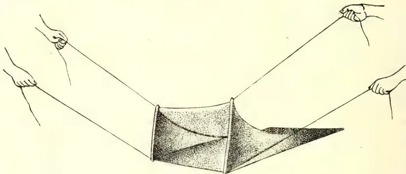
Bag ready for use.
C. DRIEBERG.
No. LXI.
Printed for the Ceylon Agricultural Society.
NITROGEN-GATHERING CROPS.
It is needless to discuss the value of Papilionaceous crops in agriculture. The manner in which these plants import atmospheric nitrogen into the soil with the aid of the bacteria in the nodules on their roots is now pretty well known, since it has been explained over and over again in the Society's publications and by its travelling instructors.
The question is often asked, what leguminous crop should be grown with the object of its being wholly or partially returned to the land. The tendency in most matters is to look for something new, and the newer the better! As a general rule, however, these new plants are unsuitable to local conditions, unless, of course, they came from countries with almost identical natural conditions.
Wild species of Crotalaria have been highly recommended and utilized with marked benefit both in up-country and low-country estates. The difficulty, however, in inducing the native cultivator to grow such a crop as Crotalaria striata is that he does not see sufficient virtue in a plant that does not give him some tangible return.
For this reason, it is politic to recommend to him—for the present at least—a crop which yields him some useful produce. The American cow-pea (Vigna catiang) is a plant that has come back to Ceylon with a new name, since it is no more than a variety of the familiar mè beans largely cultivated, particularly about Colombo. The legumes are wholesome and palatable when taken early, and command a ready sale as "curry beans."
There are other crops which similarly yield marketable produce, such as dhall (Cajanus indicus), san-hemp (Crotalaria juncea), dhaincha (Sesbania aculeata). Whether cow-pea or one of these three should be selected is for the cultivator himself to decide after carefully considering the "pros and cons" of the case.
All are excellent in rotation, or as "inter-crops" in permanent plantations. The dwarfish forms of cow-pea or mè are perhaps more suitable from the point of convenience, especially when grown as inter-crops.
Dhall (Sin. rata-tora, Tamil thavarai), which yields one of the staple foods in India, is a shrubby plant, which sometimes grows up to a height of 15 or 20 ft., and will suit cases where shade is also a desideratum. These two plants (cow-pea and dhall) are therefore of economical value as food crops. [In this connection may also be mentioned ground-nuts (Arachis hypogaea), but the great difficulty of protecting and harvesting the crop in Ceylon has made it unpopular among cultivators.]
Crotalaria juncea and Sesbania aculeata, on the other hand, are fibre plants, and will suit localities where there is use for fibre. The first is already under cultivation in the Chilaw District, and in parts of the Northern Province, the fibre, which is extracted by the simple process of retting or steeping in water, being in requisition for fishing nets, &c. Dhaincha is practically unknown in the island, but is closely
9(5)09
( 2 )related to our kalurumurunga (S. grandiflora) so commonly grown in vegetable gardens, and of which both the flowers and leaves are used as food. The reasons why it is brought forward in this connection may be stated as follows :—
Dhaincha is a plant which, under favourable conditions, may grow up to about 14 ft., though it is generally of smaller growth. When broadcasted fairly thick—say, at the rate of 30 lb. of seed per acre—it keeps down weeds, and should be ready for cutting for fibre in 4 or 4½ months, so that if sown in April, the ground, fertilized by the crop-residue, will be available for other cultivation in September. The fibre was at one time valued at from £30 to £35 per ton, but this valuation will have to be revised on a present-day basis. The seed has proved useful as a famine food in India. Without any desire to exaggerate the properties of dhaincha, the statement may be given for what it is worth that the lack of organic matter and cohesion of soil particles in land is easily remedied by growing one or two crops of dhaincha.
The plant may be seen growing at the Government Stock Garden. Orders for the seed can be booked through the Secretary.
C. DRIEBERG,
Secretary, Ceylon Agricultural Society.
Colombo, February 20, 1909.
This image is a scan of a blank page. The paper has a light beige or cream-colored tint. There are a few very small, dark specks scattered across the surface, which appear to be scanning artifacts or dust particles. No text, lines, or other markings are present on the page. This image is a scan of a blank page. The paper has a light cream or off-white color with a slightly textured appearance. There are a few very small, faint dark spots scattered across the surface, which appear to be scanning artifacts or minor imperfections in the paper. No text, lines, or other markings are present.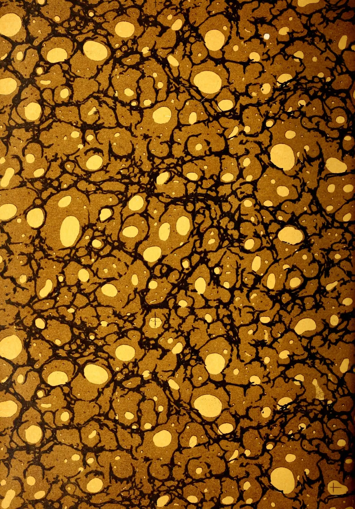
This image displays a classic marbled paper pattern, often referred to as 'stone' or 'shell' marbling. The background is a rich, warm brown. Overlaid on this are intricate, dark, vein-like structures that resemble the cracks in stone or the veins in wood. These dark lines are irregular and vary in thickness, creating a complex, organic network across the entire surface. Interspersed within and around these dark veins are numerous irregular, light-yellow or cream-colored spots and larger, more defined blotches. These lighter areas have soft, slightly rounded edges, giving the overall appearance of a porous, organic material like stone or coral. The pattern is dense and covers the entire frame without any margins or borders.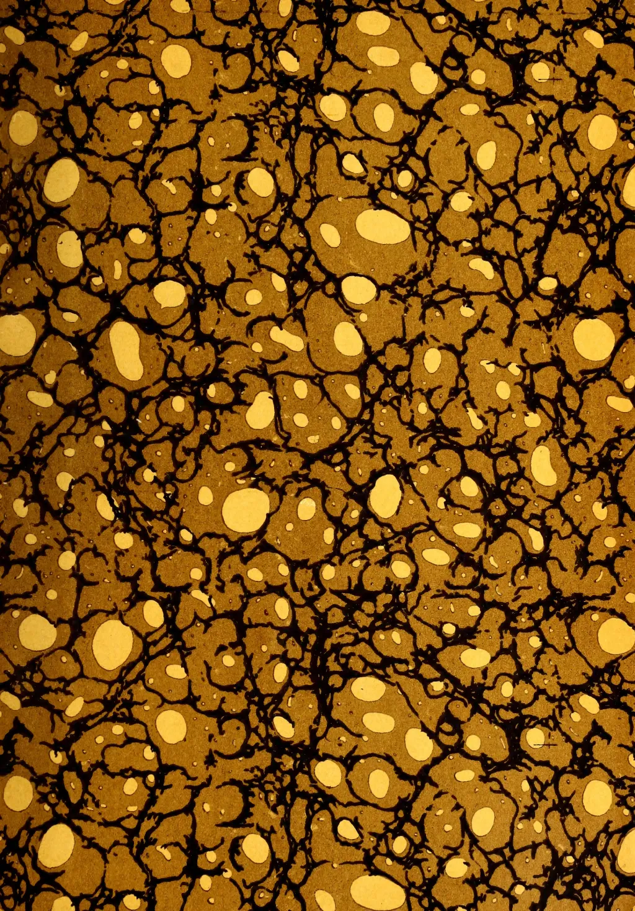
This image displays a classic marbled pattern, often referred to as 'stone' or 'shell' marbling. The background is a rich, warm brown color. Overlaid on this background is a complex network of dark, black, branching veins that resemble the cracks in stone or the veins in wood. These veins are irregular in shape and size, creating a sense of organic movement across the entire surface. Scattered throughout the pattern are numerous irregular, light-yellow or cream-colored spots of varying sizes. These spots are often enclosed by the black veins, giving the appearance of bubbles or droplets trapped within a resinous medium. The overall effect is one of natural, organic complexity and depth. The image shows a dark, textured surface, likely a book cover or endpaper. The texture is a fine, uniform pattern of small, raised dots or grains, characteristic of a leather-like material or a specific type of paper. The color is a deep, dark charcoal or black, with subtle variations in tone across the surface, giving it a slightly mottled appearance. There are no other features, text, or markings visible.